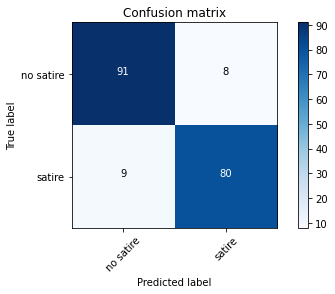
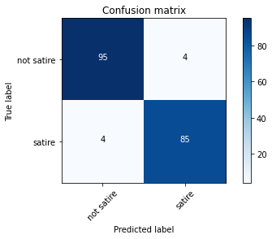

Naive Bayes and NLP Modeling#
from collections import defaultdict
import numpy as np
import pandas as pd
from sklearn.model_selection import train_test_split
import nltk
from nltk.tokenize import regexp_tokenize, word_tokenize, RegexpTokenizer
from nltk.corpus import stopwords, wordnet
from nltk import pos_tag
from nltk.stem import WordNetLemmatizer
from sklearn.feature_extraction.text import TfidfVectorizer, CountVectorizer
from sklearn.ensemble import RandomForestClassifier
from sklearn.naive_bayes import MultinomialNB
from sklearn.metrics import accuracy_score, precision_score, confusion_matrix
%load_ext autoreload
%autoreload 2
import os
import sys
module_path = os.path.abspath(os.pardir)
print(module_path)
if module_path not in sys.path:
sys.path.append(module_path)
from src.confusion import plot_confusion_matrix
/Users/jamesirving/Documents/GitHub/_COHORT_NOTES/my-best-lessons-and-code-jmi/Phase_4/topic_39_NLP
Agenda#
SWBAT:
explain the use of Bayesian Reasoning for building NLP models;
describe Laplace Smoothing;
use
sklearnandnltkto build NLP models.
Before returning to our satire / no-satire example, let’s consider an example with a smaller but similar scope.
Suppose we are using an API to gather articles from a news website and grabbing phrases from two different types of articles: music and politics.
But we have a problem. Only some of our articles have an indication of their category (music or politics). Is there a way we can use Machine Learning to help us label our data quickly?
Here are our articles#
Music Articles:#
‘the song was popular’
‘band leaders disagreed on sound’
‘played for a sold out arena stadium’
Politics Articles#
‘world leaders met lask week’
‘the election was close’
‘the officials agreed on a compromise’
Let’s try and predict one example phrase:
“world leaders agreed to fund the stadium”
How can we make a model that labels this for us rather than having to go through by hand?
music = ['the song was popular',
'band leaders disagreed on sound',
'played for a sold out arena stadium']
politics = ['world leaders met lask week',
'the election was close',
'the officials agreed on a compromise']
test_statement = 'world leaders agreed to fund the stadium'
#labels : {'music', 'politics'}
#features: words
test_statement_2 = 'officials met at the arena'
Bayes’s Theorem Again#
Let’s revisit Bayes’s Theorem. Remember, the idea is to calculate the probability of the correct application of a class label (c) given some data (x). To do so, we calculate the likelihood (the distribution of our data within a given class) and the prior probabiliity of each class (the probability of seeing the class in the population). We are going generally to ignore the denominator of the right side of the equation because it will be constant.
Another way of looking at it#

So, in the context of our problem……#
\(\large P(politics | phrase) = \frac{P(phrase|politics)P(politics)}{P(phrase)}\)
\(\large P(politics) = \frac{ \# politics}{\# all\ articles} \)
where phrase is our test statement

How should we calculate P(politics)?#
This is essentially the distribution of the probability of either type of article. We have three of each type of article, therefore, we assume that there is an equal probability of either article
p_politics = len(politics) / (len(politics) + len(music))
p_music = len(music) / (len(politics) + len(music))
p_politics
0.5
p_music
0.5
How should we calculate: \(P(phrase | politics)\)?#
We’ll break the phrase down into individual words.
\(\large P(phrase | politics) = \prod_{i=1}^{d} P(word_{i} | politics) \)
This is where the naivety of Naive Bayes comes in in this context. We assume that the predictive relevances of words are mutually independent.
In practice, of course, this sounds rather unrealistic. But it greatly simplifies the Bayesian calculation.
\(\large P(word_{i} | politics) = \frac{\#\ of\ word_{i}\ in\ politics\ articles} {\#\ of\ total\ words\ in\ politics\ articles} \)
Laplace Smoothing#
In practice, the calculation of probabilities is often adjusted slightly to avoid zeroes.
\(\large P(word_{i} | politics) = \frac{\#\ of\ word_{i}\ in\ politics\ articles \bf{+ \alpha}} {\#\ of\ total\ words\ in\ politics\ articles \bf{+ \alpha d}} \)
\(\large P(word_{i} | music) = \frac{\#\ of\ word_{i}\ in\ music\ articles \bf{+ \alpha}} {\#\ of\ total\ words\ in\ music\ articles \bf{+ \alpha d}}\)
This correction process is called Laplace smoothing:
d : number of features (in this instance total number of vocabulary words)
\(\alpha\) can be any number greater than 0 (it is usually 1)
Now let’s find this calculation#
def vocab_maker(category):
"""
parameters: category is a list containing all the articles
of a given category.
returns the vocabulary for a given type of article
"""
vocab_category = set() # will filter down to only unique words
for art in category:
words = art.split()
for word in words:
vocab_category.add(word)
return vocab_category
voc_music = vocab_maker(music)
voc_pol = vocab_maker(politics)
# These are all the unique words in the music category
voc_music
{'a',
'arena',
'band',
'disagreed',
'for',
'leaders',
'on',
'out',
'played',
'popular',
'sold',
'song',
'sound',
'stadium',
'the',
'was'}
# These are all the unique words in the politics category
voc_pol
{'a',
'agreed',
'close',
'compromise',
'election',
'lask',
'leaders',
'met',
'officials',
'on',
'the',
'was',
'week',
'world'}
# The union of the two sets gives us the unique words across both article groups
voc_all = voc_music.union(voc_pol)
voc_all
{'a',
'agreed',
'arena',
'band',
'close',
'compromise',
'disagreed',
'election',
'for',
'lask',
'leaders',
'met',
'officials',
'on',
'out',
'played',
'popular',
'sold',
'song',
'sound',
'stadium',
'the',
'was',
'week',
'world'}
total_vocab_count = len(voc_all)
total_music_count = len(voc_music)
total_politics_count = len(voc_pol)
Let’s remind ourselves of the goal, to see the posterior likelihood of the class politics given our phrase.
P(politics | “leaders agreed to fund the stadium”)
music
['the song was popular',
'band leaders disagreed on sound',
'played for a sold out arena stadium']
dict_sample = defaultdict(int)
dict_sample
defaultdict(int, {})
dict_sample['test']
dict_sample
defaultdict(int, {'test': 0})
def find_number_words_in_category(phrase, category):
statement = phrase.split()
# category is a list of the raw documents of each category
str_category = ' '.join(category)
cat_word_list = str_category.split()
word_count = defaultdict(int)
# loop through each word in the phrase
for word in statement:
# loop through each word in the category
for art_word in cat_word_list:
if word == art_word:
# count the number of times the phrase word occurs in the category
word_count[word] += 1
else:
word_count[word]
return word_count
test_music_word_count = find_number_words_in_category(test_statement, music)
test_music_word_count
defaultdict(int,
{'world': 0,
'leaders': 1,
'agreed': 0,
'to': 0,
'fund': 0,
'the': 1,
'stadium': 1})
test_politic_word_count = find_number_words_in_category(test_statement, politics)
test_politic_word_count
defaultdict(int,
{'world': 1,
'leaders': 1,
'agreed': 1,
'to': 0,
'fund': 0,
'the': 2,
'stadium': 0})
def find_likelihood_with_smooth(category_count, test_category_count, alpha):
# The numerator will be the product of all the counts
# with the smoothing factor (alpha) to make sure the probability is not zeroed out.
# Because we're being officially "naïve", we'll simply multiply these all together.
num = np.product(np.array(list(test_category_count.values())) + alpha)
# The denominator will be the same for each word (total category count + total vocab
# + alpha), so we raise it to the power of the length of the test category
denom = (category_count + total_vocab_count*alpha)**(len(test_category_count))
return num / denom
likelihood_m = find_likelihood_with_smooth(total_music_count, test_music_word_count, 1)
likelihood_p = find_likelihood_with_smooth(total_politics_count, test_politic_word_count, 1)
print(likelihood_m)
print(likelihood_p)
4.107740405680756e-11
1.748875897714495e-10
\( P(politics | article) = P(politics) x \prod_{i=1}^{d} P(word_{i} | politics) \)
Deteriming the winner of our model:#

# p(politics|article) > p(music|article)
likelihood_p * p_politics > likelihood_m * p_music
True
Many times, the probabilities we end up are exceedingly small, so we can transform them using logarithms to save on computation speed. This takes advantage of the nice mathematical feature that the log of a product of factors is equal to the sum of the logs of the individual factors, i.e.:
\(log(xy) = log(x) + log(y)\)
\(\large log(P(politics | article)) = log(P(politics)) + \sum_{i=1}^{d}log( P(word_{i} | politics)) \)
Good Resource: https://nlp.stanford.edu/IR-book/html/htmledition/naive-bayes-text-classification-1.html
Back to Satire#
corpus = pd.read_csv('../ds-natural_language_pre-processing-main/data/satire_nosatire.csv')
corpus.head()
| body | target | |
|---|---|---|
| 0 | Noting that the resignation of James Mattis as... | 1 |
| 1 | Desperate to unwind after months of nonstop wo... | 1 |
| 2 | Nearly halfway through his presidential term, ... | 1 |
| 3 | Attempting to make amends for gross abuses of ... | 1 |
| 4 | Decrying the Senate’s resolution blaming the c... | 1 |
Like always, we will perform a train test split…
X = corpus.body
y = corpus.target
X_train, X_test, y_train, y_test = train_test_split(X,
y,
random_state=42,
test_size=0.25)
… and preprocess the training set.
# Bring in stopwords
sw = stopwords.words('english')
def get_wordnet_pos(treebank_tag):
'''
Translate nltk POS to wordnet tags
'''
if treebank_tag.startswith('J'):
return wordnet.ADJ
elif treebank_tag.startswith('V'):
return wordnet.VERB
elif treebank_tag.startswith('N'):
return wordnet.NOUN
elif treebank_tag.startswith('R'):
return wordnet.ADV
else:
return wordnet.NOUN
def doc_preparer(doc, stop_words=sw):
'''
:param doc: a document from the satire corpus
:return: a document string with words which have been
lemmatized,
parsed for stopwords,
made lowercase,
and stripped of punctuation and numbers.
'''
regex_token = RegexpTokenizer(r"([a-zA-Z]+(?:’[a-z]+)?)")
doc = regex_token.tokenize(doc)
doc = [word.lower() for word in doc]
doc = [word for word in doc if word not in sw]
print(doc)
doc = pos_tag(doc)
doc = [(word[0], get_wordnet_pos(word[1])) for word in doc]
lemmatizer = WordNetLemmatizer()
doc = [lemmatizer.lemmatize(word[0], word[1]) for word in doc]
return ' '.join(doc)
token_docs = [doc_preparer(doc, sw) for doc in X_train]
['perpetually', 'offended', 'social', 'justice', 'warrior', 'keen', 'activist', 'socialist', 'matters', 'ranging', 'lgbtqp', 'affairs', 'feminism', 'borders', 'soviet', 'ideology', 'marxism', 'ideal', 'communist', 'state', 'hugh', 'mungus', 'state', 'perpetual', 'offence', 'wake', 'morning', 'first', 'thing', 'hear', 'words', 'good', 'morning', 'shout', 'roommate', 'form', 'racist', 'linguistic', 'capitalist', 'imperialist', 'sexist', 'white', 'male', 'created', 'offensive', 'greeting', 'assumes', 'good', 'morning', 'western', 'capitalist', 'bourgeois', 'society', 'people', 'africa', 'good', 'morning', 'shit', 'morning', 'live', 'corrugated', 'iron', 'shack', 'walk', 'five', 'hours', 'fill', 'bucket', 'full', 'dirty', 'muddy', 'water', 'fucking', 'drink', 'mr', 'mungus', 'attends', 'berkeley', 'college', 'california', 'outraged', 'deems', 'society', 'biology', 'science', 'offensive', 'well', 'concept', 'offended', 'offensive', 'outraged', 'offended', 'offence', 'offensive', 'hateful', 'perpetual', 'state', 'concept', 'offended', 'offending', 'offended', 'offensive', 'stance', 'state', 'offence', 'offending', 'offended', 'doubt', 'mind', 'creation', 'capitalist', 'racist', 'sexist', 'system', 'imprisons', 'people', 'offended', 'suspect', 'created', 'offence', 'first', 'place', 'everything', 'offensive', 'perpetually', 'state', 'offence', 'right', 'offended', 'concept', 'offended', 'offence', 'offensive', 'manner']
['ana', 'luz', 'sister', 'law', 'ronald', 'blanco', 'looked', 'grimly', 'neighbours', 'murdered', 'honduran', 'man', 'washed', 'away', 'rills', 'blood', 'left', 'bullet', 'ridden', 'body', 'lain', 'outside', 'house', 'troubled', 'barrio', 'outskirts', 'tegucigalpa', 'one', 'many', 'scenes', 'witnessed', 'year', 'assignment', 'honduras', 'thousands', 'people', 'sought', 'escape', 'violence', 'poverty', 'joining', 'migrant', 'caravan', 'hope', 'making', 'safety', 'across', 'mexico', 'u', 'border', 'problems', 'small', 'central', 'american', 'country', 'grabbed', 'international', 'attention', 'u', 'president', 'donald', 'trump', 'cracked', 'illegal', 'immigration', 'honduras', 'years', 'one', 'world’s', 'murderous', 'countries', 'though', 'official', 'data', 'show', 'homicide', 'rate', 'fallen', 'sharply', 'continues', 'highly', 'challenging', 'environment', 'work', 'according', 'honduran', 'government', 'figures', 'homicide', 'rate', 'reached', 'per', 'people', 'year', 'rate', 'end', 'per', 'security', 'ministry', 'says', 'compares', 'latest', 'statistics', 'united', 'states', 'murders', 'per', 'according', 'fbi’s', 'recent', 'report', 'website', 'danger', 'honduras', 'never', 'far', 'away', 'roughly', 'three', 'months', 'spent', 'honduras', 'photographed', 'mothers', 'waiting', 'morgue', 'bodies', 'murdered', 'sons', 'daughters', 'police', 'keeping', 'watch', 'corpses', 'left', 'lying', 'streets', 'shootouts', 'families', 'wailing', 'coffins', 'loved', 'ones', 'blanco', 'lived', 'japon', 'neighbourhood', 'breeding', 'ground', 'gang', 'violence', 'according', 'local', 'authorities', 'experienced', 'tense', 'moment', 'time', 'honduras', 'moved', 'police', 'soldiers', 'gang', 'members', 'forensic', 'experts', 'hearse', 'drivers', 'pastors', 'blanco’s', 'funeral', 'stopped', 'young', 'man', 'piercing', 'eyes', 'one', 'green', 'one', 'blue', 'demanded', 'know', 'explained', 'journalist', 'taking', 'photographs', 'event', 'youth', 'kept', 'pressing', 'questions', 'brought', 'blanco’s', 'funeral', 'continued', 'taking', 'photos', 'felt', 'increasingly', 'uncomfortable', 'finally', 'tension', 'eased', 'one', 'blanco’s', 'friends', 'intervened', 'saying', 'grieving', 'family', 'authorized', 'presence', 'photo', 'essay', 'please', 'click', 'reut', 'rs', 'evrbhu']
['pope', 'francis', 'accused', 'u', 'bishops', 'thursday', 'failing', 'show', 'unity', 'face', 'sexual', 'abuse', 'crisis', 'saying', 'internal', 'bickering', 'end', 'scandal', 'shredded', 'church’s', 'credibility', 'long', 'highly', 'unusual', 'letter', 'sent', 'u', 'bishops', 'embarked', 'week', 'long', 'retreat', 'francis', 'said', 'handling', 'scandal', 'showed', 'urgent', 'need', 'new', 'approach', 'management', 'mindset', 'within', 'roman', 'catholic', 'church', 'god’s', 'faithful', 'people', 'church’s', 'mission', 'continue', 'suffer', 'greatly', 'result', 'abuses', 'power', 'conscience', 'sexual', 'abuse', 'poor', 'way', 'handled', 'pope', 'wrote', 'adding', 'bishops', 'concentrated', 'pointing', 'fingers', 'seeking', 'paths', 'reconciliation', 'pope', 'francis', 'summoned', 'heads', 'national', 'catholic', 'bishops', 'conferences', 'dozens', 'experts', 'leaders', 'religious', 'orders', 'vatican', 'feb', 'extraordinary', 'gathering', 'dedicated', 'global', 'crisis', 'victims', 'clergy', 'sexual', 'abuse', 'hoping', 'meeting', 'finally', 'come', 'clear', 'policy', 'make', 'bishops', 'accountable', 'mishandling', 'abuse', 'cases', 'ahead', 'encounter', 'u', 'bishops', 'gathered', 'wednesday', 'near', 'chicago', 'seven', 'days', 'prayer', 'spiritual', 'reflection', 'church’s', 'credibility', 'seriously', 'undercut', 'diminished', 'sins', 'crimes', 'even', 'efforts', 'made', 'deny', 'conceal', 'francis', 'said', 'pope', 'said', 'concerned', 'situation', 'hoped', 'attend', 'retreat', 'person', 'added', 'unable', 'logistical', 'reasons', 'however', 'sent', 'preacher', 'raniero', 'cantalamessa', 'lead', 'proceedings', 'u', 'church', 'still', 'reeling', 'grand', 'jury', 'report', 'last', 'year', 'found', 'priests', 'state', 'pennsylvania', 'sexually', 'abused', 'minors', 'year', 'period', 'u', 'states', 'launched', 'investigations', 'hurt', 'caused', 'sins', 'crimes', 'also', 'deeply', 'affected', 'communion', 'bishops', 'generated', 'sort', 'healthy', 'necessary', 'disagreements', 'tensions', 'found', 'living', 'body', 'rather', 'division', 'dispersion', 'pope', 'said', 'critics', 'accuse', 'francis', 'became', 'pontiff', 'responding', 'much', 'slowly', 'sex', 'scandals', 'failing', 'empathise', 'victims', 'blindly', 'believing', 'word', 'fellow', 'clergy', 'tried', 'address', 'past', 'wrongs', 'publicly', 'admitting', 'wrong', 'case', 'chile', 'vowing', 'church', 'would', 'never', 'seek', 'cover', 'wrongdoing', 'july', 'accepted', 'resignation', 'cardinal', 'theodore', 'mccarrick', 'one', 'u', 'church’s', 'prominent', 'figures', 'following', 'allegations', 'sexually', 'abused', 'year', 'old', 'boy', 'october', 'cardinal', 'donald', 'wuerl', 'archbishop', 'washington', 'c', 'stepped', 'handling', 'abuse', 'cases', 'combatting', 'culture', 'abuse', 'loss', 'credibility', 'resulting', 'bewilderment', 'confusion', 'discrediting', 'mission', 'urgently', 'demands', 'us', 'renewed', 'decisive', 'approach', 'resolving', 'conflicts', 'pope', 'wrote', 'thursday', 'requires', 'new', 'approach', 'management', 'also', 'change', 'mindset']
['augusto', 'heleno', 'brazil’s', 'new', 'minister', 'institutional', 'security', 'said', 'wednesday', 'main', 'task', 'rescue', 'country’s', 'intelligence', 'service', 'far', 'right', 'president', 'jair', 'bolsonaro', 'heleno', 'one', 'bolsonaro’s', 'closest', 'aides', 'key', 'player', 'trying', 'lower', 'brazil’s', 'sky', 'high', 'murder', 'tally', 'speaking', 'swearing', 'ceremony', 'government', 'ministers', 'took', 'place', 'day', 'president’s', 'inauguration']
['hansard', 'parliament', 'uk', 'somewhere', 'answer', 'problems', 'dealing', 'today', 'spot', 'elusive', 'solution', 'prime', 'minister', 'mrs', 'margaret', 'thatcher', 'permission', 'mr', 'speaker', 'shall', 'make', 'statement', 'european', 'council', 'held', 'rome', 'october', 'attended', 'right', 'hon', 'friend', 'douglas', 'hurd', 'foreign', 'commonwealth', 'secretary', 'conclusions', 'council', 'placed', 'library', 'house', 'council', 'deal', 'first', 'place', 'urgent', 'items', 'current', 'business', 'namely', 'community’s', 'failure', 'agree', 'negotiating', 'position', 'agriculture', 'uruguay', 'round', 'trade', 'negotiations', 'situation', 'gulf', 'position', 'foreign', 'nationals', 'held', 'hostage', 'iraq', 'kuwait', 'problems', 'arisen', 'hungary', 'looking', 'ahead', 'council', 'also', 'dealt', 'preparations', 'two', 'intergovernmental', 'conferences', 'economic', 'monetary', 'union', 'also', 'institutional', 'reform', 'due', 'begin', 'december', 'shall', 'report', 'council’s', 'business', 'order', 'uruguay', 'round', 'trade', 'negotiations', 'due', 'completed', 'end', 'year', 'outcome', 'decide', 'whether', 'world', 'trade', 'becomes', 'steadily', 'open', 'repeat', 'mistakes', 'past', 'relapse', 'protectionism', 'difficult', 'item', 'agriculture', 'major', 'participants', 'uruguay', 'round', 'committed', 'table', 'negotiating', 'offers', 'october', 'except', 'european', 'community', 'done', 'community', 'discussing', 'problem', 'since', 'round', 'began', 'autumn', 'gave', 'unequivocal', 'commitment', 'april', 'last', 'year', 'make', 'substantial', 'progressive', 'reductions', 'agricultural', 'support', 'commitment', 'repeated', 'houston', 'economic', 'summit', 'july', 'year', 'commission', 'put', 'forward', 'proposal', 'per', 'cent', 'reductions', 'backdated', 'already', 'done', 'way', 'reduction', 'support', 'since', 'set', 'per', 'cent', 'six', 'sessions', 'european', 'community', 'ministers', 'discuss', 'proposal', 'recent', 'lasting', 'hours', 'friday', 'last', 'week', 'agreement', 'reached', 'main', 'opposition', 'come', 'france', 'germany', 'community’s', 'failure', 'harmed', 'reputation', 'negotiations', 'leading', 'groups', 'countries', 'cannot', 'start', 'community’s', 'proposals', 'tabled', 'european', 'council', 'requested', 'ministers', 'meet', 'put', 'commission', 'position', 'table', 'negotiating', 'offer', 'netherlands', 'prime', 'minister', 'suggested', 'basis', 'position', 'reached', 'agriculture', 'ministers', 'suspended', 'work', 'early', 'october', 'president', 'mitterrand', 'made', 'clear', 'france', 'would', 'continue', 'vote', 'proposals', 'remains', 'agriculture', 'trade', 'ministers', 'try', 'yet', 'reach', 'conclusion', 'fail', 'give', 'signal', 'world', 'community', 'protectionist', 'next', 'regard', 'gulf', 'position', 'hostages', 'european', 'council', 'agreed', 'firm', 'statement', 'calling', 'iraq’s', 'withdrawal', 'kuwait', 'confirming', 'europe’s', 'absolute', 'commitment', 'full', 'implementation', 'united', 'nations', 'security', 'council', 'resolutions', 'column', 'statement', 'makes', 'clear', 'shall', 'consider', 'steps', 'iraq', 'comply', 'message', 'saddam', 'hussein', 'must', 'gain', 'anything', 'aggression', 'council', 'also', 'strongly', 'condemned', 'iraq', 'holding', 'foreign', 'nationals', 'hostages', 'using', 'unscrupulous', 'way', 'totally', 'unacceptable', 'moreover', 'iraq', 'negotiating', 'hostages', 'purpose', 'trying', 'divide', 'international', 'community', 'considerable', 'discussion', 'council', 'affirmed', 'determination', 'send', 'representatives', 'governments', 'capacity', 'negotiate', 'iraq', 'release', 'hostages', 'discourage', 'others', 'believe', 'unity', 'twelve', 'determination', 'allow', 'saddam', 'hussein', 'divide', 'us', 'question', 'hostages', 'send', 'powerful', 'signal', 'iraq', 'third', 'point', 'assistance', 'hungary', 'course', 'council', 'member', 'states', 'received', 'appeals', 'government', 'hungary', 'help', 'dealing', 'serious', 'problems', 'arisen', 'result', 'reduction', 'supply', 'oil', 'soviet', 'union', 'consequent', 'price', 'rises', 'given', 'rise', 'unrest', 'council', 'issued', 'strong', 'statement', 'support', 'hungary', 'pursuing', 'path', 'towards', 'democratic', 'economic', 'reforms', 'rule', 'law', 'council', 'also', 'agreed', 'united', 'kingdom’s', 'suggestion', 'bring', 'forward', 'disburse', 'rapidly', 'second', 'instalment', 'billion', 'community', 'loan', 'hungary', 'agreed', 'last', 'year', 'direct', 'practical', 'assistance', 'urgent', 'matters', 'council', 'act', 'looking', 'future', 'also', 'discussed', 'preparations', 'two', 'intergovernmental', 'conferences', 'igcs', 'start', 'work', 'december', 'conference', 'political', 'union', 'council', 'report', 'foreign', 'ministers', 'listing', 'wide', 'range', 'possible', 'institutional', 'changes', 'intergovernmental', 'conference', 'might', 'consider', 'heads', 'government', 'called', 'work', 'done', 'proposals', 'december', 'right', 'hon', 'friend', 'douglas', 'hurdthe', 'foreign', 'secretary', 'argued', 'would', 'wrong', 'prejudge', 'conclusions', 'intergovernmental', 'conference', 'strong', 'ground', 'since', 'community’s', 'original', 'decision', 'call', 'conference', 'specified', 'set', 'agenda', 'nevertheless', 'others', 'wished', 'give', 'specific', 'directions', 'igc', 'therefore', 'reserved', 'united', 'kingdom’s', 'position', 'example', 'extension', 'community’s', 'powers', 'new', 'areas', 'greater', 'powers', 'european', 'parliament', 'legislative', 'sphere', 'defining', 'european', 'citizenship', 'common', 'foreign', 'security', 'policy', 'issues', 'discussion', 'intergovernmental', 'conference', 'rather', 'settled', 'advance', 'economic', 'monetary', 'union', 'stressed', 'would', 'ready', 'move', 'beyond', 'present', 'position', 'creation', 'european', 'monetary', 'fund', 'common', 'community', 'currency', 'called', 'hard', 'ecu', 'would', 'prepared', 'agree', 'set', 'date', 'starting', 'next', 'stage', 'economic', 'monetary', 'union', 'agreement', 'stage', 'comprise', 'emphasised', 'would', 'prepared', 'single', 'currency', 'imposed', 'upon', 'us', 'surrender', 'use', 'pound', 'sterling', 'currency', 'hard', 'ecu', 'would', 'parallel', 'currency', 'single', 'currency', 'time', 'went', 'people', 'governments', 'chose', 'use', 'widely', 'could', 'evolve', 'towards', 'single', 'column', 'currency', 'national', 'currency', 'would', 'remain', 'unless', 'decision', 'abolish', 'freely', 'taken', 'future', 'generations', 'parliament', 'people', 'single', 'currency', 'policy', 'government', 'like', 'offer', 'four', 'comments', 'conclusion', 'first', 'community', 'finds', 'difficult', 'take', 'urgent', 'detailed', 'decisions', 'discuss', 'longer', 'term', 'concepts', 'moreover', 'one', 'underestimate', 'extent', 'national', 'interests', 'prevail', 'among', 'proclaim', 'community', 'credentials', 'secondly', 'britain', 'intends', 'part', 'political', 'economic', 'monetary', 'development', 'european', 'community', 'great', 'majority', 'member', 'states', 'want', 'come', 'negotiate', 'particular', 'points', 'rather', 'concepts', 'generalities', 'believe', 'solutions', 'found', 'enable', 'community', 'go', 'forward', 'twelve', 'objective', 'thirdly', 'fighting', 'europe', 'british', 'farmers', 'british', 'consumers', 'new', 'world', 'trade', 'agreement', 'help', 'newly', 'democratic', 'countries', 'eastern', 'europe', 'interests', 'concerns', 'people', 'fourthly', 'fully', 'accept', 'commitments', 'treaties', 'wish', 'co', 'operate', 'closely', 'countries', 'european', 'community', 'determined', 'retain', 'fundamental', 'ability', 'govern', 'parliament', 'believe', 'wish', 'house', 'side', 'best', 'see', 'fulfilled', 'mr', 'neil', 'kinnock', 'islwyn', 'thank', 'right', 'hon', 'lady', 'statement', 'welcome', 'summit', 'statements', 'first', 'complete', 'solidarity', 'governments', 'community', 'countries', 'saddam', 'hussein', 'secondly', 'economic', 'support', 'soviet', 'union', 'hungary', 'central', 'east', 'european', 'countries', 'central', 'matter', 'discussed', 'rome', 'clear', 'last', 'weekend', 'prime', 'minister', 'managed', 'unite', 'rest', 'european', 'community', 'divide', 'party', 'importantly', 'weaken', 'influence', 'britain', 'needs', 'order', 'properly', 'uphold', 'national', 'interests', 'european', 'community', 'prime', 'minister', 'tell', 'us', 'apparently', 'taken', 'surprise', 'proposals', 'put', 'others', 'rome', 'recall', 'whipped', 'guillotined', 'single', 'european', 'act', 'house', 'june', 'madrid', 'formally', 'agreed', 'heads', 'government', 'determined', 'achieve', 'progressive', 'realisation', 'economic', 'monetary', 'union', 'dublin', 'summit', 'year', 'agreed', 'intensify', 'process', 'european', 'union', 'economic', 'monetary', 'political', 'terms', 'steps', 'raised', 'comment', 'time', 'know', 'occasions', 'living', 'cloud', 'cuckoo', 'land', 'prime', 'minister', 'says', 'government', 'would', 'surrender', 'use', 'pound', 'sterling', 'currency', 'perhaps', 'therefore', 'tell', 'us', 'regards', 'advice', 'fellow', 'conservative', 'commissioner', 'brittan', 'said', 'lose', 'pound', 'sterling', 'single', 'currency', 'plan', 'perfectly', 'well', 'note', 'coin', 'states', 'value', 'pounds', 'fixed', 'equivalent', 'ecu', 'agreed', 'would', 'possible', 'connection', 'currency', 'sovereignty', 'prime', 'minister', 'abandoned', 'madrid', 'conditions', 'put', 'sterling', 'exchange', 'rate', 'mechanism', 'tell', 'house', 'conditions', 'column', 'putting', 'sterling', 'narrow', 'banding', 'erm', 'prime', 'minister', 'could', 'come', 'debate', 'explain', 'things', 'dispatch', 'box', 'willing', 'prime', 'minister', 'conducts', 'rome', 'weekend', 'wonder', 'cannot', 'even', 'get', 'agreement', 'necessary', 'reduction', 'farm', 'subsidies', 'interruption', 'influence', 'conducts', 'wonder', 'members', 'party', 'believe', 'undermined', 'chancellor’s', 'efforts', 'build', 'support', 'called', 'hard', 'ecu', 'realise', 'attitude', 'makes', 'heads', 'governments', 'even', 'less', 'susceptible', 'listening', 'sensible', 'arguments', 'deployed', 'favour', 'sovereignty', 'community', 'accept', 'reasonable', 'put', 'view', 'determinants', 'pace', 'direction', 'economic', 'monetary', 'union', 'realities', 'economic', 'performance', 'degree', 'economic', 'convergence', 'arbitrary', 'diary', 'dates', 'prime', 'minister', 'understand', 'method', 'conducting', 'affairs', 'throwing', 'away', 'sound', 'argument', 'losing', 'potential', 'allies', 'necessary', 'influence', 'appreciate', 'even', 'tantrum', 'tactics', 'stop', 'process', 'change', 'change', 'anything', 'process', 'change', 'strand', 'britain', 'european', 'second', 'division', 'without', 'influence', 'change', 'need', 'financial', 'industrial', 'opportunities', 'need', 'sovereignty', 'need', 'prime', 'minister', 'purpose', 'retain', 'power', 'influence', 'house', 'rather', 'denude', 'many', 'powers', 'wonder', 'right', 'hon', 'gentleman’s', 'policy', 'view', 'things', 'said', 'would', 'agreed', 'commitment', 'extend', 'community’s', 'powers', 'supplementary', 'sectors', 'economic', 'integration', 'without', 'definition', 'one', 'would', 'thought', 'said', 'would', 'commission', 'wants', 'extend', 'powers', 'competence', 'health', 'matters', 'said', 'would', 'agree', 'right', 'hon', 'gentleman', 'said', 'sounded', 'though', 'would', 'agree', 'sake', 'agreeing', 'little', 'sir', 'echo', 'saying', 'would', 'right', 'hon', 'gentleman', 'agreed', 'extending', 'qualified', 'majority', 'voting', 'within', 'council', 'delegating', 'implementing', 'powers', 'commission', 'common', 'security', 'policy', 'without', 'attempt', 'define', 'limit', 'answer', 'yes', 'clue', 'definition', 'things', 'saying', 'let', 'alone', 'securing', 'definition', 'others', 'agreed', 'wait', 'give', 'support', 'soviet', 'union', 'imf', 'report', 'received', 'coming', 'next', 'summit', 'stopped', 'unity', 'agriculture', 'france', 'germany', 'right', 'hon', 'gentleman', 'even', 'read', 'statement', 'came', 'would', 'noticed', 'even', 'listened', 'statement', 'made', 'would', 'known', 'francois', 'mitterrand', 'said', 'would', 'agree', 'commission’s', 'proposal', 'blame', 'way', 'reaching', 'agreement', 'agriculture', 'insistence', 'right', 'hon', 'friend', 'douglas', 'hurdthe', 'foreign', 'commonwealth', 'secretary', 'chair', 'would', 'even', 'matter', 'discussed', 'urgent', 'column', 'told', 'chair', 'week', 'ago', 'farm', 'ministers', 'reach', 'agreement', 'must', 'discuss', 'matter', 'wrote', 'everything', 'could', 'see', 'matter', 'urgent', 'discussed', 'succeeded', 'getting', 'discussed', 'right', 'hon', 'gentleman’s', 'strictures', 'economic', 'monetary', 'union', 'phrase', 'agreed', 'european', 'community', 'went', 'one', 'things', 'inherited', 'agreed', 'came', 'defining', 'interruption', 'went', 'community', 'understood', 'labour', 'members', 'favour', 'wonder', 'today', 'changing', 'stance', 'sake', 'debating', 'points', 'leon', 'brittan', 'loyal', 'member', 'commission', 'yes', 'commission', 'wants', 'increase', 'powers', 'yes', 'non', 'elected', 'body', 'want', 'commission', 'increase', 'powers', 'expense', 'house', 'course', 'differ', 'president', 'commission', 'mr', 'delors', 'said', 'press', 'conference', 'day', 'wanted', 'european', 'parliament', 'democratic', 'body', 'community', 'wanted', 'commission', 'executive', 'wanted', 'council', 'ministers', 'senate', 'perhaps', 'labour', 'party', 'would', 'give', 'things', 'easily', 'perhaps', 'would', 'agree', 'single', 'currency', 'abolition', 'pound', 'sterling', 'perhaps', 'totally', 'incompetent', 'monetary', 'matters', 'would', 'delighted', 'hand', 'full', 'responsibility', 'central', 'bank', 'imf', 'fact', 'labour', 'party', 'competence', 'money', 'competence', 'economy', 'yes', 'right', 'hon', 'gentleman', 'would', 'glad', 'hand', 'point', 'trying', 'get', 'elected', 'parliament', 'hand', 'sterling', 'powers', 'house', 'europe', 'perhaps', 'right', 'hon', 'gentleman', 'understand', 'brief', 'little', 'better', 'next', 'time', 'mr', 'nicholas', 'ridley', 'cirencester', 'tewkesbury', 'rose', 'hon', 'members', 'speak', 'germany', 'mr', 'speaker', 'order', 'mr', 'ridley', 'mr', 'ridley', 'may', 'congratulate', 'right', 'hon', 'friend', 'standing', 'interests', 'people', 'country', 'ask', 'whether', 'thinks', 'eleven', 'isolated', 'intransigent', 'relation', 'agricultural', 'policy', 'gatt', 'round', 'think', 'deliberately', 'working', 'failure', 'gatt', 'round', 'order', 'achieve', 'objectives', 'fortress', 'europe', 'agree', 'destination', 'want', 'board', 'train', 'prime', 'minister', 'right', 'hon', 'friend', 'right', 'european', 'community', 'group', 'nations', 'years', 'studying', 'problem', 'tabled', 'initial', 'negotiating', 'position', 'agriculture', 'gatt', 'round', 'united', 'states', 'japan', 'cairns', 'group', 'canada', 'switzerland', 'tabled', 'community', 'nothing', 'really', 'disgrace', 'even', 'able', 'agree', 'negotiating', 'position', 'let', 'alone', 'start', 'negotiate', 'groups', 'end', 'year', 'column', 'yes', 'agree', 'right', 'hon', 'friend', 'several', 'countries', 'community', 'highly', 'protectionist', 'common', 'agricultural', 'policy', 'protectionist', 'policy', 'try', 'reduce', 'protectionism', 'first', 'would', 'help', 'third', 'world', 'secondly', 'would', 'mean', 'would', 'export', 'subsidies', 'thereby', 'take', 'business', 'away', 'countries', 'thirdly', 'country', 'believe', 'open', 'trade', 'serious', 'matter', 'discussed', 'european', 'council', 'earnestly', 'hope', 'time', 'agriculture', 'ministers', 'difficulty', 'us', 'mean', 'french', 'german', 'agriculture', 'ministers', 'accept', 'proposals', 'commission', 'negotiating', 'position', 'uruguay', 'round', 'mr', 'paddy', 'ashdown', 'yeovil', 'prime', 'minister', 'realise', 'welcome', 'hear', 'statement', 'last', 'forced', 'admit', 'hard', 'ecu', 'proposal', 'transitional', 'mechanism', 'single', 'currency', 'congratulate', 'chancellor', 'foreign', 'secretary', 'levering', 'forward', 'towards', 'reality', 'matter', 'realise', 'good', 'news', 'britain', 'right', 'hon', 'lady', 'realise', 'much', 'performance', 'rome', 'bad', 'news', 'britain', 'realise', 'single', 'meeting', 'isolated', 'country', 'europe', 'weakened', 'voice', 'europe', 'divided', 'government', 'betrayed', 'country’s', 'long', 'term', 'best', 'interests', 'realise', 'faced', 'labour', 'party', 'equally', 'divided', 'muddled', 'confused', 'matter', 'would', 'today', 'face', 'motion', 'confidence', 'failure', 'historic', 'moment', 'realise', 'interruption', 'mr', 'speaker', 'order', 'mr', 'ashdown', 'prime', 'minister', 'realise', 'long', 'hangs', 'power', 'long', 'britain', 'held', 'back', 'future', 'longer', 'speaks', 'britain', 'speaks', 'past', 'prime', 'minister', 'oh', 'dear', 'seems', 'must', 'quite', 'lot', 'late', 'parrots', 'cloud', 'cuckoo', 'land', 'judging', 'right', 'hon', 'gentleman', 'coming', 'stuff', 'course', 'parallel', 'currency', 'people', 'choose', 'make', 'use', 'could', 'evolve', 'single', 'currency', 'could', 'done', 'without', 'decision', 'coming', 'back', 'house', 'believe', 'people', 'country', 'take', 'right', 'hon', 'gentleman’s', 'policy', 'abolish', 'pound', 'sterling', 'greatest', 'expression', 'sovereignty', 'event', 'would', 'totally', 'utterly', 'wrong', 'agree', 'matter', 'one', 'decided', 'future', 'generations', 'future', 'parliaments', 'parliament', 'supreme', 'right', 'hon', 'gentleman', 'leader', 'liberal', 'democrats', 'mr', 'robin', 'squire', 'hornchurch', 'light', 'last', 'weekend’s', 'discussions', 'right', 'hon', 'friend', 'reconsider', 'near', 'future', 'proposal', 'separate', 'bank', 'england', 'make', 'independent', 'may', 'serve', 'buttress', 'country’s', 'battle', 'inflation', 'prime', 'minister', 'independent', 'banks', 'mostly', 'either', 'answerable', 'parliament', 'united', 'states', 'mr', 'greenspan', 'answerable', 'congress', 'number', 'politicians', 'boards', 'believe', 'structure', 'country', 'currently', 'would', 'column', 'served', 'well', 'proposal', 'hon', 'friend', 'mentions', 'far', 'better', 'increase', 'democracy', 'reduce', 'believe', 'would', 'wrong', 'time', 'mr', 'james', 'lamond', 'oldham', 'central', 'royton', 'point', 'prime', 'minister', 'trying', 'wrap', 'union', 'jack', 'electoral', 'purposes', 'hon', 'members', 'better', 'red', 'flag', 'coming', 'dispatch', 'box', 'tell', 'house', 'prepared', 'sell', 'working', 'people', 'country', 'river', 'opening', 'britain', 'completely', 'free', 'trade', 'without', 'protectionism', 'whatsoever', 'destroy', 'multi', 'fibre', 'arrangement', 'give', 'emerging', 'democracies', 'europe', 'million', 'loans', 'produce', 'goods', 'wages', 'month', 'textiles', 'particular', 'flood', 'country', 'would', 'destroy', 'hundreds', 'thousands', 'british', 'jobs', 'right', 'hon', 'lady', 'elected', 'really', 'protecting', 'country', 'pretending', 'prime', 'minister', 'hon', 'gentleman', 'probably', 'heard', 'comment', 'made', 'right', 'hon', 'hon', 'friends', 'better', 'wrap', 'union', 'jack', 'red', 'flag', 'hon', 'gentleman’s', 'remarks', 'amount', 'totally', 'protectionist', 'policy', 'would', 'lead', 'retaliation', 'us', 'reduce', 'capability', 'export', 'industries', 'therefore', 'standard', 'living', 'make', 'industries', 'inefficient', 'therefore', 'cost', 'housewife', 'great', 'deal', 'note', 'also', 'hon', 'gentleman', 'complains', 'goods', 'entering', 'britain', 'third', 'world', 'countries', 'wages', 'far', 'lower', 'heard', 'hon', 'gentleman', 'say', 'several', 'times', 'house', 'third', 'world', 'countries', 'need', 'help', 'need', 'trade', 'much', 'need', 'aid', 'mr', 'norman', 'tebbit', 'chingford', 'right', 'hon', 'friend', 'agree', 'mark', 'single', 'currency', 'currencies', 'must', 'extinguished', 'capacity', 'institutions', 'issue', 'currencies', 'must', 'also', 'extinguished', 'case', 'united', 'kingdom', 'would', 'involve', 'parliament', 'binding', 'successors', 'way', 'hitherto', 'regarded', 'unconstitutional', 'prime', 'minister', 'grateful', 'right', 'hon', 'friend', 'government', 'intention', 'abolishing', 'pound', 'sterling', 'hard', 'ecu', 'evolve', 'much', 'greater', 'use', 'made', 'would', 'decision', 'future', 'parliaments', 'generations', 'decision', 'could', 'taken', 'taken', 'current', 'atmosphere', 'greatest', 'possible', 'consideration', 'believe', 'parliament', 'sterling', 'served', 'country', 'rest', 'world', 'well', 'stable', 'influential', 'sterling', 'expression', 'sovereignty', 'government', 'believe', 'pound', 'sterling', 'mr', 'james', 'molyneaux', 'lagan', 'valley', 'prime', 'minister', 'recall', 'britain', 'minority', 'one', 'europe', 'agree', 'years', 'basic', 'issue', 'still', 'undiluted', 'parliamentary', 'democracy', 'imposed', 'diktat', 'prime', 'minister', 'totally', 'agree', 'right', 'hon', 'gentleman', 'things', 'majority', 'voting', 'within', 'community', 'went', 'accepted', 'specific', 'objective', 'achieving', 'single', 'european', 'act', 'column', 'matters', 'attempt', 'get', 'far', 'things', 'passed', 'majority', 'voting', 'means', 'would', 'laws', 'imposed', 'upon', 'us', 'even', 'house', 'flatly', 'expect', 'people', 'obey', 'law', 'mainly', 'gone', 'legislative', 'processes', 'house', 'slow', 'add', 'majority', 'competence', 'part', 'community', 'mr', 'steve', 'norris', 'epping', 'forest', 'right', 'hon', 'friend', 'accept', 'wide', 'support', 'constituency', 'stance', 'took', 'intergovernmental', 'conference', 'economic', 'monetary', 'union', 'accept', 'support', 'based', 'niceties', 'international', 'economics', 'clear', 'firm', 'belief', 'dictate', 'fiscal', 'policy', 'united', 'kingdom', 'fully', 'directly', 'answerable', 'electors', 'prime', 'minister', 'totally', 'agree', 'hon', 'friend', 'delors', 'report', 'proposing', 'people', 'answerable', 'one', 'ironic', 'indeed', 'time', 'eastern', 'europe', 'striving', 'greater', 'democracy', 'commission', 'striving', 'extinguish', 'democracy', 'put', 'power', 'hands', 'hands', 'non', 'elected', 'bodies', 'ms', 'joyce', 'quin', 'gateshead', 'east', 'true', 'british', 'government', 'far', 'reluctant', 'germany', 'france', 'italy', 'give', 'economic', 'assistance', 'soviet', 'union', 'prime', 'minister', 'aware', 'political', 'risks', 'within', 'soviet', 'union', 'respond', 'generously', 'time', 'long', 'term', 'risks', 'british', 'industry', 'countries', 'step', 'establish', 'aid', 'trading', 'relationships', 'soviet', 'union', 'prime', 'minister', 'german', 'banks', 'deutsche', 'bank', 'made', 'considerable', 'loan', 'soviet', 'union', 'dm', 'billion', 'gone', 'within', 'matter', 'weeks', 'guaranteed', 'government', 'federal', 'republic', 'gone', 'matter', 'weeks', 'used', 'repay', 'debts', 'soviet', 'union', 'owed', 'german', 'manufacturers', 'done', 'nothing', 'help', 'economic', 'situation', 'soviet', 'union', 'got', 'request', 'help', 'suggested', 'consider', 'general', 'loans', 'would', 'help', 'country', 'already', 'difficulties', 'see', 'could', 'give', 'specific', 'help', 'certain', 'spheres', 'example', 'food', 'processing', 'transport', 'oil', 'exploration', 'studying', 'international', 'monetary', 'fund', 'judging', 'necessary', 'soviet', 'economy', 'get', 'present', 'difficulties', 'fortunately', 'houston', 'economic', 'summit', 'soviet', 'union', 'windfall', 'sense', 'increasing', 'price', 'oil', 'given', 'much', 'better', 'balance', 'payments', 'position', 'much', 'greater', 'scale', 'improved', 'position', 'shall', 'make', 'minds', 'imf', 'reported', 'mr', 'cranley', 'onslow', 'woking', 'partners', 'france', 'germany', 'persist', 'blocking', 'reform', 'common', 'agricultural', 'policy', 'december', 'useful', 'purpose', 'right', 'hon', 'friend', 'think', 'intergovernmental', 'conference', 'likely', 'achieve', 'prime', 'minister', 'right', 'hon', 'friend', 'puts', 'finger', 'absolutely', 'agriculture', 'trade', 'two', 'column', 'subjects', 'national', 'countries', 'competence', 'negotiated', 'community', 'therefore', 'even', 'agriculture', 'council', 'majority', 'voting', 'france', 'germany', 'stick', 'together', 'refuse', 'reductions', 'subsidies', 'many', 'countries', 'farmers', 'far', 'poorer', 'france', 'germany', 'say', 'world', 'agree', 'lower', 'subsidies', 'community’s', 'two', 'sets', 'richest', 'farmers', 'hope', 'compromise', 'solution', 'commission', 'hammered', 'agriculture', 'ministers', 'nevertheless', 'go', 'start', 'end', 'negotiating', 'position', 'countries', 'otherwise', 'shall', 'responsible', 'reducing', 'world', 'trade', 'dr', 'david', 'owen', 'plymouth', 'devonport', 'perfectly', 'clear', 'attempted', 'rome', 'bounce', 'led', 'one', 'way', 'single', 'federal', 'united', 'states', 'europe', 'vital', 'house', 'across', 'party', 'lines', 'possible', 'prime', 'minister', 'make', 'clear', 'necessary', 'britain', 'prepared', 'stand', 'alone', 'relish', 'faced', 'imposition', 'treaty', 'single', 'currency', 'situation', 'prevented', 'enlargement', 'community', 'include', 'poland', 'hungary', 'czechoslovakia', 'would', 'britain', 'entitled', 'right', 'use', 'veto', 'prime', 'minister', 'totally', 'agree', 'right', 'hon', 'gentleman', 'precisely', 'stance', 'took', 'stance', 'taken', 'many', 'previous', 'occasions', 'european', 'monetary', 'system', 'belong', 'designed', 'sovereign', 'states', 'co', 'operation', 'one', 'another', 'come', 'exchange', 'rate', 'mechanism', 'proposed', 'economic', 'monetary', 'union', 'back', 'door', 'federal', 'europe', 'totally', 'utterly', 'reject', 'prefer', 'greater', 'economic', 'monetary', 'co', 'operation', 'achieved', 'keeping', 'sovereignty', 'mr', 'hugh', 'dykes', 'harrow', 'east', 'right', 'hon', 'friend', 'agree', 'confirm', 'words', 'today', 'mean', 'effect', 'would', 'prefer', 'withdraw', 'treaty', 'rome', 'single', 'european', 'act', 'prime', 'minister', 'like', 'kind', 'europe', 'believe', 'europe', 'went', 'join', 'hon', 'friend', 'looks', 'back', 'speeches', 'see', 'absolutely', 'assured', 'giving', 'sovereignty', 'basis', 'upon', 'went', 'may', 'edward', 'heaththe', 'prime', 'minister', 'said', 'agreed', 'particular', 'identity', 'national', 'states', 'maintained', 'framework', 'developing', 'community', 'means', 'course', 'though', 'european', 'commission', 'made', 'continue', 'make', 'valuable', 'contribution', 'council', 'ministers', 'continue', 'forum', 'important', 'decisions', 'taken', 'provides', 'clear', 'assurance', 'joining', 'community', 'entail', 'loss', 'national', 'identity', 'erosion', 'essential', 'national', 'sovereignty', 'official', 'report', 'may', 'vol', 'c', 'mr', 'nigel', 'spearing', 'newham', 'south', 'despite', 'prime', 'minister', 'said', 'clear', 'column', 'wish', 'partners', 'loss', 'national', 'identity', 'currency', 'true', 'even', 'hard', 'ecu', 'coupled', 'fixed', 'exchange', 'rates', 'would', 'lead', 'inexorably', 'economic', 'monetary', 'union', 'government', 'either', 'bankers', 'bankers', 'bankers', 'strong', 'political', 'central', 'government', 'would', 'usher', 'new', 'euro', 'state', 'prime', 'minister', 'save', 'britain', 'self', 'governing', 'nation', 'better', 'make', 'clear', 'galvanise', 'people', 'country', 'parties', 'parliament', 'say', 'polite', 'economic', 'monetary', 'union', 'prime', 'minister', 'believed', 'would', 'hon', 'gentleman', 'says', 'believe', 'interpretation', 'correct', 'accept', 'many', 'economic', 'community', 'would', 'like', 'version', 'economic', 'monetary', 'union', 'would', 'lead', 'passing', 'powers', 'away', 'national', 'parliaments', 'non', 'elected', 'body', 'fact', 'central', 'board', 'bankers', 'majority', 'voting', 'giving', 'legislative', 'power', 'european', 'parliament', 'version', 'version', 'accepted', 'single', 'european', 'act', 'defined', 'economic', 'monetary', 'union', 'co', 'operation', 'economic', 'monetary', 'policy', 'need', 'view', 'hard', 'ecu', 'proposal', 'require', 'central', 'bank', 'would', 'make', 'inflation', 'proof', 'currency', 'could', 'used', 'people', 'chose', 'view', 'would', 'become', 'widely', 'used', 'throughout', 'community', 'interruption', 'possibly', 'widely', 'used', 'commercial', 'transactions', 'many', 'people', 'would', 'continue', 'prefer', 'currency', 'therefore', 'believe', 'fears', 'hon', 'member', 'newham', 'south', 'mr', 'spearing', 'happen', 'pretty', 'certain', 'people', 'country', 'would', 'prefer', 'continue', 'use', 'sterling', 'choice', 'wrong', 'would', 'come', 'time', 'would', 'address', 'question', 'however', 'would', 'us', 'future', 'generations', 'house', 'mr', 'terence', 'higgins', 'worthing', 'right', 'hon', 'friend', 'take', 'time', 'conference', 'december', 'explain', 'european', 'colleagues', 'first', 'year', 'economic', 'student', 'could', 'tell', 'imposition', 'single', 'currency', 'opposed', 'common', 'currency', 'would', 'rule', 'time', 'effective', 'means', 'adjusting', 'national', 'differences', 'costs', 'prices', 'explain', 'turn', 'would', 'cause', 'widespread', 'unemployment', 'would', 'probably', 'exist', 'perpetual', 'basis', 'serious', 'financial', 'imbalances', 'prime', 'minister', 'yes', 'agree', 'entirely', 'right', 'hon', 'friend', 'would', 'would', 'also', 'mean', 'would', 'enormous', 'transfers', 'money', 'one', 'country', 'another', 'would', 'cost', 'us', 'great', 'deal', 'money', 'one', 'reason', 'poorer', 'countries', 'want', 'would', 'get', 'big', 'transfers', 'money', 'trying', 'contest', 'single', 'currency', 'locked', 'currency', 'differences', 'come', 'substantially', 'unemployment', 'vast', 'movements', 'people', 'one', 'country', 'another', 'many', 'people', 'talk', 'single', 'currency', 'never', 'considered', 'full', 'implications', 'mr', 'jim', 'sillars', 'glasgow', 'govan', 'prime', 'minister', 'ignore', 'advice', 'right', 'hon', 'member', 'plymouth', 'devonport', 'dr', 'owen', 'talked', 'british', 'state', 'standing', 'alone', 'bear', 'mind', 'humiliating', 'experience', 'forced', 'erm', 'column', 'instincts', 'declaration', 'madrid', 'prime', 'minister', 'aware', 'many', 'people', 'europe', 'united', 'kingdom', 'aware', 'formidable', 'economic', 'political', 'social', 'problems', 'inherent', 'stage', 'moving', 'single', 'currency', 'think', 'would', 'far', 'better', 'chance', 'getting', 'people', 'talk', 'sensible', 'cautious', 'approach', 'addressing', 'colleagues', 'europe', 'used', 'moderate', 'language', 'st', 'century', 'european', 'intemperate', 'language', 'little', 'englander', 'prime', 'minister', 'bearing', 'mind', 'hon', 'gentleman', 'tell', 'language', 'intemperate', 'seem', 'know', 'people', 'heard', 'nothing', 'said', 'way', 'done', 'radio', 'television', 'broadcasts', 'outside', 'finish', 'conference', 'always', 'said', 'would', 'join', 'exchange', 'rate', 'mechanism', 'time', 'right', 'part', 'going', 'european', 'monetary', 'system', 'belonged', 'many', 'years', 'put', 'reserves', 'european', 'monetary', 'system', 'usual', 'swap', 'arrangements', 'entails', 'completion', 'european', 'monetary', 'system', 'exchange', 'rate', 'mechanism', 'done', 'nation', 'states', 'co', 'operating', 'one', 'another', 'need', 'federal', 'structure', 'time', 'came', 'countries', 'abolished', 'foreign', 'exchange', 'controls', 'led', 'way', 'ahead', 'yes', 'think', 'germany', 'isolated', 'got', 'rid', 'foreign', 'exchange', 'controls', 'first', 'others', 'followed', 'spain', 'still', 'done', 'done', 'adjudged', 'time', 'right', 'think', 'every', 'figure', 'come', 'since', 'indicated', 'right', 'timing', 'joining', 'erm', 'reducing', 'interest', 'rate', 'completed', 'obligation', 'join', 'mean', 'agree', 'next', 'stage', 'totally', 'different', 'definition', 'economic', 'monetary', 'union', 'mr', 'anthony', 'nelson', 'chichester', 'right', 'hon', 'friend', 'agree', 'prospects', 'british', 'people', 'enjoying', 'higher', 'standard', 'living', 'sharing', 'greater', 'prosperity', 'depend', 'small', 'part', 'securing', 'currency', 'strong', 'stable', 'something', 'dogged', 'us', 'post', 'war', 'years', 'likely', 'achieved', 'common', 'currency', 'based', 'great', 'economies', 'western', 'europe', 'rather', 'relying', 'going', 'alone', 'prime', 'minister', 'think', 'many', 'colleagues', 'europe', 'european', 'council', 'certainly', 'finance', 'council', 'say', 'way', 'single', 'currency', 'economies', 'state', 'development', 'state', 'prosperity', 'europe', 'one', 'economy', 'right', 'across', 'think', 'possibility', 'stage', 'reached', 'long', 'time', 'take', 'single', 'currency', 'long', 'happened', 'would', 'weaken', 'strengthen', 'stronger', 'sterling', 'history', 'many', 'securities', 'contracts', 'denominated', 'sterling', 'shall', 'trade', 'better', 'great', 'history', 'behind', 'sterling', 'possibly', 'could', 'single', 'currency', 'column', 'mr', 'ron', 'leighton', 'newham', 'north', 'east', 'majority', 'house', 'emu', 'prime', 'minister', 'aware', 'attended', 'conference', 'italy', 'last', 'year', 'italian', 'minister', 'spoke', 'emu', 'said', 'mrs', 'thatcher', 'opposes', 'ungallantly', 'laughed', 'loud', 'said', 'met', 'mrs', 'thatcher', 'many', 'times', 'squawks', 'makes', 'noise', 'beginning', 'always', 'comes', 'round', 'gives', 'way', 'end', 'assurances', 'guarantees', 'prime', 'minister', 'give', 'house', 'give', 'way', 'issue', 'gave', 'way', 'madrid', 'condition', 'british', 'inflation', 'joining', 'erm', 'prime', 'minister', 'said', 'negotiating', 'better', 'budget', 'deal', 'britain', 'twice', 'people', 'commission', 'people', 'commission', 'presidency', 'commission', 'advised', 'give', 'way', 'found', 'differently', 'mr', 'paul', 'channon', 'southend', 'west', 'right', 'hon', 'friend', 'agree', 'hon', 'members', 'cannot', 'hear', 'mr', 'speaker', 'order', 'hon', 'members', 'alone', 'mr', 'channon', 'right', 'hon', 'friend', 'agree', 'grave', 'risk', 'unless', 'community', 'get', 'negotiating', 'position', 'together', 'gatt', 'round', 'talks', 'may', 'collapse', 'next', 'months', 'happens', 'would', 'dry', 'academic', 'exercise', 'would', 'mean', 'higher', 'costs', 'consumers', 'many', 'countries', 'next', 'years', 'right', 'hon', 'friend', 'agree', 'community’s', 'compromise', 'proposals', 'agriculture', 'rejected', 'ludicrously', 'modest', 'urge', 'colleagues', 'community', 'try', 'reach', 'solution', 'least', 'next', 'igc', 'prime', 'minister', 'agree', 'right', 'hon', 'friend', 'reach', 'solution', 'geneva', 'uruguay', 'round', 'mean', 'retaliation', 'us', 'people’s', 'worst', 'fears', 'economic', 'community', 'nothing', 'fortress', 'europe', 'protectionist', 'club', 'realised', 'get', 'result', 'agriculture', 'round', 'would', 'fault', 'fault', 'france', 'germany', 'certain', 'protectionist', 'elements', 'france', 'right', 'hon', 'friend', 'knows', 'even', 'get', 'negotiating', 'position', 'hope', 'shall', 'within', 'week', 'hope', 'basis', 'negotiating', 'six', 'previous', 'meetings', 'still', 'negotiations', 'proposals', 'put', 'countries', 'still', 'tough', 'way', 'go', 'get', 'conclusion', 'important', 'thing', 'important', 'welfare', 'people', 'round', 'meets', 'success', 'mr', 'jack', 'ashley', 'stoke', 'trent', 'south', 'single', 'european', 'currency', 'means', 'loss', 'control', 'monetary', 'policy', 'monetary', 'policy', 'absolute', 'shambles', 'prime', 'minister', 'fussing', 'prime', 'minister', 'monetary', 'policy', 'greatest', 'shambles', 'labour', 'inflation', 'reached', 'per', 'cent', 'sir', 'richard', 'body', 'holland', 'boston', 'right', 'hon', 'friend', 'make', 'clear', 'procrastination', 'export', 'subsidies', 'european', 'community', 'surplus', 'column', 'food', 'continues', 'result', 'uruguay', 'round', 'collapses', 'united', 'states', 'resorts', 'protectionist', 'policy', 'self', 'defence', 'one', 'country', 'ec', 'suffer', 'united', 'kingdom', 'prime', 'minister', 'hon', 'friend', 'knows', 'always', 'try', 'open', 'trading', 'also', 'try', 'defend', 'farmers', 'see', 'get', 'fair', 'deal', 'mostly', 'subsidies', 'europe', 'go', 'smaller', 'farmers', 'subsidising', 'smaller', 'farmers', 'efficiency', 'larger', 'family', 'farm', 'undercut', 'everything', 'ensure', 'picture', 'hon', 'friend', 'painted', 'come', 'mr', 'ieuan', 'wyn', 'jones', 'ynys', 'n', 'prime', 'minister', 'agree', 'isolation', 'rome', 'summit', 'seriously', 'damage', 'wales’s', 'prospects', 'benefiting', 'single', 'market', 'exports', 'investment', 'opportunities', 'arise', 'also', 'agree', 'wales', 'periphery', 'europe', 'needs', 'heart', 'decision', 'making', 'process', 'europe', 'positive', 'approach', 'europe', 'needed', 'isolationist', 'stance', 'prove', 'wales', 'needs', 'direct', 'representation', 'community', 'institutions', 'prime', 'minister', 'hon', 'gentleman’s', 'strictures', 'would', 'better', 'directed', 'france', 'germany', 'taken', 'isolationist', 'stance', 'agricultural', 'subsidies', 'three', 'years', 'would', 'much', 'better', 'come', 'along', 'rest', 'instead', 'sticking', 'farmers', 'good', 'ec', 'whole', 'countries', 'isolated', 'urgent', 'matter', 'investment', 'wales', 'like', 'rest', 'united', 'kingdom', 'benefited', 'enormously', 'economic', 'policies', 'government', 'brought', 'tons', 'tons', 'investment', 'overseas', 'wales', 'scotland', 'north', 'england', 'greatly', 'benefit', 'jobs', 'people', 'great', 'confidence', 'government', 'invest', 'britain', 'pity', 'hon', 'gentleman', 'cannot', 'speak', 'little', 'country', 'mr', 'tony', 'favell', 'stockport', 'next', 'wednesday', 'doors', 'chamber', 'closed', 'black', 'rod', 'symbol', 'independence', 'house', 'would', 'effect', 'independence', 'house', 'nation', 'elects', 'power', 'veto', 'proposals', 'affecting', 'social', 'affairs', 'environment', 'taxation', 'removed', 'prime', 'minister', 'hope', 'next', 'election', 'comes', 'people', 'want', 'come', 'house', 'come', 'uphold', 'powers', 'responsibilities', 'denude', 'house', 'surrendered', 'community', 'view', 'surrendered', 'enough', 'mr', 'tony', 'benn', 'chesterfield', 'prime', 'minister', 'aware', 'really', 'discussing', 'economic', 'management', 'whole', 'future', 'relations', 'country', 'europe', 'issue', 'best', 'expressed', 'th', 'century', 'patriotic', 'language', 'emotive', 'language', 'design', 'currency', 'real', 'question', 'whether', 'british', 'people', 'vote', 'general', 'election', 'able', 'change', 'policies', 'column', 'previous', 'government', 'already', 'fact', 'house', 'knows', 'full', 'well', 'whatever', 'government', 'power', 'agricultural', 'policy', 'controlled', 'brussels', 'trade', 'policy', 'controlled', 'brussels', 'industrial', 'policy', 'controlled', 'brussels', 'go', 'emu', 'financial', 'policy', 'also', 'controlled', 'democratic', 'argument', 'nationalistic', 'argument', 'however', 'given', 'right', 'hon', 'lady', 'member', 'government', 'took', 'us', 'european', 'community', 'without', 'consulting', 'british', 'people', 'given', 'prime', 'minister', 'government', 'agreed', 'single', 'european', 'act', 'without', 'consulting', 'british', 'people', 'given', 'agreed', 'joining', 'exchange', 'rate', 'mechanism', 'without', 'consulting', 'british', 'people', 'find', 'hard', 'believe', 'really', 'intent', 'preserving', 'democracy', 'rather', 'gaining', 'political', 'advantage', 'waving', 'national', 'argument', 'around', 'eve', 'general', 'election', 'trust', 'judgment', 'matter', 'prime', 'minister', 'think', 'would', 'put', 'little', 'differently', 'right', 'hon', 'gentleman', 'although', 'recognise', 'force', 'points', 'makes', 'delors', 'proposals', 'economic', 'monetary', 'union', 'came', 'said', 'immediately', 'right', 'hon', 'friend', 'nigel', 'lawson', 'chancellor', 'exchequer', 'really', 'monetary', 'policy', 'back', 'door', 'federal', 'europe', 'taking', 'many', 'democratic', 'powers', 'away', 'democratically', 'elected', 'bodies', 'giving', 'non', 'elected', 'bodies', 'believe', 'fervently', 'true', 'shall', 'nothing', 'definition', 'economic', 'monetary', 'union', 'shall', 'continue', 'co', 'operation', 'come', 'establish', 'nation', 'states', 'act', 'enabled', 'us', 'go', 'europe', 'passed', 'second', 'reading', 'eight', 'votes', 'made', 'clear', 'would', 'surrender', 'national', 'identity', 'matter', 'co', 'operation', 'strength', 'many', 'people', 'went', 'afraid', 'would', 'quite', 'different', 'went', 'single', 'european', 'currency', 'central', 'bank', 'definition', 'economic', 'monetary', 'union', 'mr', 'churchill', 'davyhulme', 'right', 'hon', 'friend', 'tell', 'house', 'far', 'believes', 'moment', 'comes', 'germany', 'prepared', 'see', 'transfer', 'monetary', 'policy', 'bundesbank', 'european', 'central', 'bank', 'one', 'voice', 'prime', 'minister', 'think', 'wrong', 'think', 'twelve', 'similar', 'votes', 'influence', 'matters', 'think', 'germany', 'backing', 'scheme', 'know', 'dominant', 'voice', 'predominant', 'voice', 'central', 'bank', 'would', 'german', 'voice', 'retain', 'national', 'identities', 'europe', 'dominant', 'people', 'europe', 'would', 'german', 'way', 'balance', 'different', 'views', 'europe', 'traditionally', 'done', 'throughout', 'history', 'retaining', 'national', 'identity', 'mr', 'andrew', 'faulds', 'warley', 'east', 'view', 'imminent', 'deaths', 'thousands', 'young', 'men', 'arab', 'european', 'american', 'would', 'compassionate', 'realistic', 'prime', 'minister', 'abandon', 'adamant', 'refusal', 'even', 'contemplate', 'negotiated', 'solution', 'gulf', 'crisis', 'column', 'prime', 'minister', 'noticed', 'much', 'compassion', 'saddam', 'hussein', 'kuwait', 'way', 'hostages', 'embassies', 'nationals', 'kuwait', 'treated', 'nothing', 'negotiate', 'mr', 'faulds', 'everything', 'negotiate', 'stupid', 'woman', 'mr', 'speaker', 'order', 'mr', 'faulds', 'stupid', 'negative', 'woman', 'prime', 'minister', 'seem', 'smell', 'stench', 'appeasement', 'air', 'rather', 'nauseating', 'stench', 'appeasement', 'united', 'nations', 'clearly', 'said', 'iraq', 'must', 'come', 'kuwait', 'mr', 'faulds', 'war', 'would', 'love', 'war', 'love', 'war', 'mr', 'speaker', 'order', 'bad', 'behaviour', 'hon', 'gentleman', 'asked', 'question', 'getting', 'answer', 'may', 'like', 'must', 'shout', 'way', 'prime', 'minister', 'saddam', 'hussein', 'started', 'war', 'continues', 'day', 'day', 'killing', 'murder', 'torture', 'brutal', 'treatment', 'people', 'people', 'members', 'house', 'guts', 'stand', 'mr', 'geoffrey', 'dickens', 'littleborough', 'saddleworth', 'prime', 'minister', 'may', 'ask', 'modest', 'afternoon', 'past', 'stood', 'alone', 'european', 'matters', 'proved', 'right', 'thinking', 'united', 'kingdom', 'contributions', 'reform', 'common', 'agricultural', 'policy', 'mortgage', 'cartels', 'exchange', 'controls', 'time', 'prime', 'minister', 'right', 'house', 'trust', 'today', 'prime', 'minister', 'may', 'thank', 'knight', 'shining', 'armour', 'could', 'put', 'better', 'mr', 'dave', 'nellist', 'coventry', 'south', 'east', 'preparing', 'statement', 'gulf', 'prime', 'minister', 'said', 'agreed', 'rome', 'right', 'hon', 'lady', 'aware', 'existence', 'publicly', 'available', 'estimates', 'american', 'chiefs', 'staff', 'within', 'days', 'combat', 'would', 'allied', 'casualties', 'would', 'fatalities', 'disagrees', 'american', 'estimates', 'tell', 'us', 'estimates', 'made', 'british', 'chiefs', 'staff', 'prime', 'minister', 'remember', 'country', 'send', 'forces', 'falklands', 'chiefs', 'staff', 'frequently', 'asked', 'estimates', 'casualties', 'one', 'make', 'estimate', 'mr', 'nellist', 'americans', 'prime', 'minister', 'one', 'make', 'estimate', 'people', 'guess', 'guesses', 'turned', 'wide', 'mark', 'question', 'ask', 'know', 'impossibility', 'answering', 'mr', 'jonathan', 'aitken', 'thanet', 'south', 'may', 'congratulate', 'right', 'hon', 'friend', 'valiant', 'stand', 'taking', 'fight', 'britain’s', 'economic', 'column', 'parliamentary', 'independence', 'europe', 'emphasise', 'standing', 'apart', 'eleven’s', 'plans', 'european', 'monetary', 'union', 'may', 'bring', 'positive', 'economic', 'benefits', 'britain', 'agree', 'country', 'strongest', 'currency', 'one', 'highest', 'per', 'capita', 'incomes', 'one', 'strongest', 'financial', 'services', 'industries', 'europe', 'economically', 'politically', 'independent', 'switzerland', 'also', 'agree', 'therefore', 'economic', 'independence', 'barrier', 'economic', 'success', 'prime', 'minister', 'entirely', 'agree', 'switzerland', 'marvellous', 'record', 'currency', 'manufacturing', 'services', 'shall', 'continue', 'others', 'go', 'single', 'currency', 'stay', 'outside', 'mr', 'giles', 'radice', 'durham', 'north', 'right', 'hon', 'lady', 'referred', 'european', 'leaders', 'living', 'cloud', 'cuckoo', 'land', 'occurred', 'may', 'living', 'cloud', 'cuckoo', 'land', 'thinks', 'majority', 'british', 'people', 'likely', 'go', 'along', 'short', 'sighted', 'proposals', 'economic', 'monetary', 'union', 'likely', 'lead', 'britain’s', 'excluded', 'europe’s', 'first', 'division', 'prime', 'minister', 'think', 'totally', 'wrong', 'note', 'hon', 'gentleman', 'believes', 'single', 'currency', 'regardless', 'many', 'consequences', 'would', 'country', 'regardless', 'much', 'would', 'transfer', 'regardless', 'enormous', 'consequences', 'securities', 'believe', 'view', 'shared', 'many', 'people', 'mr', 'radice', 'shall', 'see', 'prime', 'minister', 'indeed', 'shall', 'think', 'hon', 'gentleman', 'find', 'people', 'prefer', 'pound', 'sterling', 'parliament', 'wish', 'either', 'want', 'come', 'next', 'election', 'mr', 'jacques', 'arnold', 'gravesham', 'right', 'hon', 'friend', 'continue', 'bear', 'mind', 'success', 'uruguay', 'round', 'gatt', 'vital', 'economies', 'new', 'democracies', 'latin', 'america', 'third', 'world', 'agree', 'fine', 'words', 'rome', 'butter', 'tortillas', 'prime', 'minister', 'agree', 'always', 'talk', 'generalities', 'came', 'getting', 'detailed', 'negotiation', 'even', 'want', 'address', 'subject', 'ran', 'away', 'said', 'set', 'stage', 'without', 'decided', 'contents', 'know', 'going', 'stage', 'yet', 'set', 'date', 'different', 'delors', 'said', 'report', 'stated', 'clearly', 'conditions', 'moving', 'stage', 'stage', 'cannot', 'defined', 'precisely', 'advance', 'possible', 'foresee', 'today', 'conditions', 'realised', 'setting', 'explicit', 'deadlines', 'therefore', 'advisable', 'pity', 'stick', 'advice', 'tried', 'change', 'last', 'meeting', 'rome', 'ms', 'diane', 'abbott', 'hackney', 'north', 'stock', 'newington', 'question', 'hostages', 'prime', 'minister', 'accept', 'many', 'hundreds', 'families', 'country', 'including', 'constituent', 'mrs', 'maggie', 'ross', 'whose', 'husband', 'alistair', 'held', 'hostage', 'military', 'installation', 'three', 'months', 'listened', 'great', 'care', 'said', 'particular', 'said', 'column', 'question', 'negotiation', 'many', 'families', 'bitterly', 'disappointed', 'although', 'may', 'understand', 'reasons', 'many', 'fear', 'military', 'adventurism', 'concerned', 'lives', 'hostages', 'expendable', 'prime', 'minister', 'always', 'understand', 'people’s', 'anxiety', 'relatives', 'hostages', 'constituency', 'perhaps', 'fortunate', 'able', 'welcome', 'home', 'young', 'girl', 'aged', 'course', 'one', 'understands', 'anxiety', 'however', 'take', 'could', 'never', 'take', 'action', 'brutal', 'dictator', 'held', 'hostages', 'never', 'take', 'action', 'dictator', 'would', 'free', 'continue', 'ways', 'would', 'always', 'take', 'hostages', 'prevent', 'justice', 'done', 'prevent', 'territory', 'people’s', 'homes', 'recovered', 'mr', 'michael', 'grylls', 'surrey', 'north', 'west', 'would', 'right', 'hon', 'friend', 'agree', 'prosperity', 'people', 'within', 'european', 'economic', 'community', 'likely', 'achieved', 'successful', 'achievement', 'single', 'market', 'without', 'barriers', 'dreaming', 'dreams', 'federal', 'europe', 'right', 'hon', 'member', 'plymouth', 'devonport', 'dr', 'owen', 'courageously', 'said', 'earlier', 'afternoon', 'right', 'hon', 'friend', 'never', 'stop', 'reminding', 'colleagues', 'europe', 'britain', 'actually', 'implemented', 'single', 'market', 'measures', 'country', 'therefore', 'best', 'proponents', 'prosperity', 'europe', 'prime', 'minister', 'agree', 'hon', 'friend', 'part', 'reason', 'founding', 'treaty', 'rome', 'bring', 'barriers', 'within', 'six', 'countries', 'joined', 'time', 'example', 'rest', 'world', 'bring', 'barriers', 'without', 'well', 'genuinely', 'much', 'freer', 'trade', 'much', 'freer', 'flow', 'trade', 'benefit', 'trading', 'countries', 'also', 'third', 'world', 'countries', 'therefore', 'vital', 'complete', 'single', 'market', 'uruguay', 'round', 'got', 'fairly', 'well', 'directives', 'hon', 'friend’s', 'recollection', 'correct', 'denmark', 'passed', 'directives', 'implemented', 'implement', 'denmark', 'said', 'record', 'rest', 'community', 'varies', 'much', 'spite', 'grand', 'words', 'comes', 'practical', 'deeds', 'match', 'grand', 'words', 'chair', 'taken', 'italy', 'italy', 'yet', 'implement', 'directives', 'perhaps', 'explains', 'went', 'grand', 'words', 'specific', 'practical', 'suggestions', 'mr', 'stuart', 'bell', 'middlesbrough', 'one', 'emollient', 'passages', 'statement', 'earlier', 'prime', 'minister', 'said', 'believed', 'solutions', 'could', 'found', 'community', 'could', 'advance', 'prime', 'minister', 'aware', 'changes', 'treaty', 'required', 'order', 'advance', 'monetary', 'economic', 'union', 'amendments', 'treaty', 'come', 'forward', 'intergovernmental', 'conferences', 'december', 'telling', 'house', 'using', 'veto', 'power', 'conferences', 'prime', 'minister', 'one', 'intergovernmental', 'conference', 'one', 'led', 'single', 'european', 'act', 'hon', 'column', 'gentleman', 'recall', 'started', 'grandiose', 'rather', 'vague', 'designs', 'finished', 'much', 'modest', 'document', 'able', 'sign', 'believe', 'happen', 'intergovernmental', 'conferences', 'many', 'look', 'closely', 'want', 'single', 'currency', 'unless', 'enormous', 'transfers', 'money', 'think', 'would', 'forthcoming', 'many', 'look', 'divestment', 'powers', 'want', 'undoubtedly', 'prepared', 'divest', 'powers', 'put', 'someone', 'else', 'would', 'prefer', 'necessarily', 'responsibility', 'difficult', 'things', 'done', 'believe', 'nation', 'states', 'would', 'prefer', 'keep', 'nationality', 'national', 'identity', 'therefore', 'great', 'deal', 'negotiating', 'hon', 'gentleman', 'said', 'new', 'treaty', 'parliaments', 'ratify', 'mr', 'john', 'browne', 'winchester', 'right', 'hon', 'friend', 'accept', 'single', 'european', 'currency', 'soft', 'option', 'harsh', 'option', 'introduction', 'single', 'currency', 'without', 'first', 'achieving', 'single', 'european', 'market', 'single', 'european', 'economy', 'would', 'extremely', 'harsh', 'option', 'right', 'hon', 'friend', 'accept', 'also', 'would', 'benefit', 'neither', 'consumer', 'producer', 'fairly', 'merely', 'bureaucrat', 'therefore', 'lead', 'us', 'trail', 'towards', 'federal', 'europe', 'undemocratic', 'bureaucratic', 'federal', 'europe', 'prime', 'minister', 'agree', 'wholly', 'hon', 'friend', 'said', 'discussions', 'currency', 'economic', 'monetary', 'union', 'get', 'finance', 'ministers', 'much', 'practical', 'heads', 'government', 'matters', 'sure', 'colleagues', 'heard', 'right', 'hon', 'friend', 'john', 'majorthe', 'chancellor', 'say', 'many', 'times', 'many', 'colleagues', 'worried', 'suggestion', 'single', 'currency', 'almost', 'common', 'economy', 'economy', 'similar', 'prosperity', 'would', 'work', 'one', 'goes', 'single', 'currency', 'th', 'e', 'differences', 'would', 'come', 'heavy', 'unemployment', 'massive', 'movements', 'people', 'interruption', 'socialist', 'countries', 'france', 'already', 'much', 'heavier', 'unemployment', 'differences', 'come', 'even', 'heavier', 'unemployment', 'massive', 'movements', 'people', 'previously', 'living', 'work', 'mr', 'ron', 'brown', 'edinburgh', 'leith', 'since', 'today', 'prime', 'minister', 'great', 'advocate', 'democracy', 'allow', 'service', 'men', 'service', 'women', 'democratic', 'right', 'join', 'trade', 'union', 'agrees', 'right', 'find', 'service', 'men', 'service', 'women', 'gulf', 'would', 'vote', 'war', 'area', 'believe', 'negotiation', 'rather', 'confrontation', 'prime', 'minister', 'present', 'arrangements', 'served', 'country', 'supremely', 'well', 'mr', 'robert', 'hicks', 'cornwall', 'south', 'east', 'right', 'hon', 'friend', 'agree', 'past', 'years', 'many', 'people', 'particularly', 'young', 'people', 'persuaded', 'support', 'conservative', 'party', 'instead', 'labour', 'party', 'commitment', 'europe', 'context', 'right', 'hon', 'friend', 'agree', 'increasing', 'sadness', 'among', 'people', 'column', 'country’s', 'apparent', 'inability', 'respond', 'positive', 'manner', 'proposals', 'involving', 'political', 'financial', 'convergence', 'environmental', 'issues', 'prime', 'minister', 'environmental', 'issues', 'hon', 'friend', 'see', 'reached', 'agreement', 'yesterday', 'find', 'per', 'cent', 'rivers', 'rated', 'good', 'fair', 'better', 'european', 'country’s', 'record', 'programme', 'looking', 'beaches', 'also', 'improving', 'quality', 'water', 'billion', 'country', 'programme', 'hon', 'friend', 'find', 'many', 'places', 'europe', 'nothing', 'like', 'quality', 'water', 'hon', 'friend', 'find', 'also', 'question', 'whether', 'europeans', 'key', 'europeans', 'sort', 'europe', 'want', 'whether', 'want', 'democratically', 'responsible', 'europe', 'whether', 'want', 'europe', 'nation', 'states', 'freely', 'co', 'operate', 'together', 'every', 'bit', 'honourable', 'worthy', 'objective', 'trying', 'make', 'less', 'democratic', 'trying', 'dissolve', 'one’s', 'natural', 'loyalties', 'one’s', 'country', 'mr', 'david', 'winnick', 'walsall', 'north', 'true', 'europe', 'prime', 'minister', 'minority', 'cabinet', 'much', 'leader', 'tory', 'party', 'issues', 'leader', 'one', 'many', 'factions', 'gulf', 'prime', 'minister', 'agree', 'talk', 'attempts', 'resolve', 'conflicts', 'difficulties', 'arising', 'invasion', 'kuwait', 'negotiation', 'surely', 'demonstrated', 'past', 'weekend', 'efforts', 'soviet', 'representative', 'mission', 'iraq', 'try', 'persuade', 'dictator', 'give', 'concessions', 'totally', 'failed', 'slightest', 'sign', 'saddam', 'hussein', 'intends', 'withdraw', 'kuwait', 'one', 'notorious', 'dictators', 'committed', 'criminal', 'act', 'invasion', 'kuwait', 'committed', 'untold', 'crimes', 'atrocities', 'kuwait', 'since', 'august', 'allowed', 'get', 'away', 'prime', 'minister', 'precisely', 'perhaps', 'hon', 'gentleman', 'better', 'address', 'question', 'hon', 'member', 'warley', 'east', 'mr', 'faulds', 'several', 'hon', 'members', 'rose', 'mr', 'speaker', 'order', 'heavy', 'day', 'ahead', 'us', 'shall', 'allow', 'three', 'questions', 'side', 'regret', 'must', 'move', 'sir', 'ian', 'lloyd', 'havant', 'many', 'hon', 'members', 'suspect', 'many', 'people', 'europe', 'profound', 'respect', 'discipline', 'informed', 'pragmatism', 'prime', 'minister', 'brings', 'discussion', 'matters', 'agree', 'great', 'danger', 'vision', 'united', 'europe', 'bequeathed', 'us', 'great', 'founders', 'including', 'winston', 'churchill', 'believe', 'federalist', 'could', 'best', 'blurred', 'worst', 'damaged', 'contemplating', 'complex', 'difficult', 'procedures', 'integrating', 'europe', 'dare', 'consider', 'stage', 'change', 'however', 'small', 'however', 'slowly', 'achieved', 'balance', 'powers', 'house', 'european', 'parliament', 'prime', 'minister', 'quite', 'correct', 'went', 'basis', 'clearly', 'set', 'fact', 'way', 'going', 'lose', 'national', 'identity', 'hon', 'friend', 'looks', 'back', 'debate', 'would', 'strong', 'national', 'interest', 'overriden', 'column', 'fundamental', 'basis', 'got', 'majority', 'eight', 'second', 'reading', 'bill', 'took', 'us', 'community', 'believe', 'honourable', 'way', 'go', 'believe', 'honourable', 'objective', 'keep', 'national', 'identity', 'co', 'operation', 'came', 'things', 'like', 'wanting', 'single', 'market', 'get', 'directives', 'get', 'little', 'bit', 'majority', 'voting', 'particular', 'batch', 'majority', 'voting', 'single', 'european', 'act', 'cease', 'single', 'european', 'market', 'apart', 'better', 'go', 'forward', 'agreement', 'us', 'get', 'agreement', 'anyway', 'changing', 'treaty', 'hon', 'friend', 'knows', 'recently', 'completed', 'european', 'monetary', 'system', 'joining', 'exchange', 'rate', 'mechanism', 'us', 'extra', 'discipline', 'keeping', 'inflation', 'also', 'welcome', 'europe', 'mrs', 'alice', 'mahon', 'halifax', 'discussions', 'gulf', 'presumably', 'prime', 'minister', 'pressing', 'baghdad', 'leadership', 'pay', 'compensation', 'war', 'crimes', 'destruction', 'kuwait', 'prime', 'minister', 'make', 'proposals', 'recompense', 'victims', 'illegal', 'occupation', 'middle', 'east', 'west', 'bank', 'gaza', 'concern', 'paraphrase', 'prime', 'minister', 'unity', 'international', 'community', 'united', 'nations', 'decisions', 'press', 'case', 'palestinians', 'decades', 'land', 'stolen', 'homes', 'demolished', 'citizens', 'killed', 'kuwaiti', 'blood', 'precious', 'palestinian', 'blood', 'tinged', 'oil', 'prime', 'minister', 'hon', 'lady', 'aware', 'situations', 'extremely', 'serious', 'different', 'kuwait', 'never', 'threatened', 'attack', 'attacked', 'anyone', 'wanted', 'live', 'peace', 'unfortunately', 'jordan', 'attacked', 'israel', 'think', 'begged', 'finished', 'jordan', 'losing', 'part', 'jerusalem', 'losing', 'west', 'bank', 'west', 'bank', 'annexed', 'israel', 'subject', 'many', 'united', 'nations', 'resolutions', 'arab', 'world', 'accept', 'long', 'time', 'accepted', 'recently', 'past', 'two', 'years', 'palestinians', 'mr', 'arafat', 'working', 'together', 'community', 'years', 'venice', 'declaration', 'try', 'find', 'solution', 'problem', 'easy', 'easier', 'talk', 'find', 'solution', 'basis', 'resolution', 'continue', 'hon', 'lady', 'looks', 'communiqu', 'see', 'discussed', 'matter', 'taking', 'forward', 'previous', 'policies', 'matter', 'settled', 'kuwait', 'restored', 'people', 'kuwait', 'shall', 'continue', 'go', 'ahead', 'basis', 'previous', 'policy', 'negotiation', 'previously', 'said', 'would', 'favour', 'international', 'conference', 'previous', 'policies', 'could', 'taken', 'forward', 'mr', 'william', 'cash', 'stafford', 'right', 'hon', 'friend', 'accept', 'many', 'people', 'elsewhere', 'europe', 'concerned', 'predominance', 'germany', 'european', 'community', 'answer', 'lie', 'federal', 'europe', 'majority', 'voting', 'system', 'already', 'contains', 'germany', 'move', 'federal', 'route', 'go', 'central', 'bank', 'would', 'ensure', 'central', 'bank', 'column', 'dominated', 'economic', 'realities', 'strength', 'deutschmark', 'right', 'hon', 'friend', 'agree', 'far', 'better', 'making', 'sure', 'wider', 'europe', 'balance', 'interests', 'including', 'people', 'east', 'west', 'central', 'europe', 'prime', 'minister', 'totally', 'federal', 'europe', 'believe', 'overwhelming', 'majority', 'people', 'country', 'federal', 'europe', 'take', 'steps', 'direction', 'uphold', 'co', 'operation', 'peoples', 'course', 'germany', 'continue', 'important', 'country', 'community', 'chancellor', 'kohl', 'always', 'european', 'approach', 'generous', 'help', 'eastern', 'european', 'countries', 'better', 'negotiate', 'germany', 'united', 'kingdom', 'try', 'kind', 'united', 'states', 'europe', 'one', 'thing', 'united', 'states', 'america', 'newly', 'settled', 'country', 'different', 'thing', 'ancient', 'nation', 'states', 'traditions', 'mr', 'john', 'taylor', 'strangford', 'although', 'ulster', 'unionist', 'parliamentary', 'party', 'sits', 'present', 'opposition', 'side', 'house', 'prime', 'minister', 'aware', 'shocked', 'somersault', 'policy', 'taken', 'place', 'british', 'labour', 'party', 'prepared', 'sacrifice', 'democratic', 'rights', 'british', 'people', 'accept', 'instead', 'economic', 'policies', 'imposed', 'bureaucracy', 'based', 'outside', 'country', 'statement', 'prime', 'minister', 'said', 'government’s', 'policy', 'oppose', 'single', 'currency', 'notice', 'qualifying', 'new', 'adjective', 'referring', 'imposed', 'single', 'currency', 'prime', 'minister', 'really', 'shifted', 'position', 'slightly', 'saying', 'prepared', 'negotiate', 'agreed', 'single', 'currency', 'matter', 'needs', 'clarified', 'prime', 'minister', 'right', 'hon', 'gentleman', 'looks', 'debate', 'find', 'clearly', 'spelled', 'proposed', 'hard', 'ecu', 'inflation', 'proofed', 'parallel', 'common', 'currency', 'single', 'currency', 'however', 'choice', 'people', 'used', 'could', 'evolve', 'single', 'currency', 'single', 'currency', 'comes', 'would', 'future', 'parliaments', 'future', 'generations', 'decide', 'wished', 'abolish', 'national', 'currency', 'government', 'single', 'currency', 'us', 'bind', 'successors', 'years', 'time', 'mr', 'alan', 'haselhurst', 'saffron', 'walden', 'evidence', 'right', 'hon', 'friend', 'bulk', 'industry', 'business', 'upon', 'success', 'national', 'livelihood', 'depends', 'way', 'reluctant', 'see', 'ordered', 'emergence', 'single', 'currency', 'logical', 'consequence', 'completion', 'single', 'market', 'prime', 'minister', 'single', 'market', 'single', 'currency', 'two', 'totally', 'different', 'things', 'short', 'study', 'would', 'reveal', 'great', 'manufacturing', 'nations', 'japan', 'united', 'states', 'switzerland', 'common', 'single', 'currency', 'anyone', 'else', 'single', 'currency', 'hinder', 'affect', 'manufacturing', 'position', 'neither', 'affect', 'position', 'greatest', 'financial', 'column', 'centre', 'europe', 'like', 'yen', 'sterling', 'like', 'dollar', 'sterling', 'trade', 'mr', 'gavin', 'strang', 'edinburgh', 'east', 'surely', 'prime', 'minister', 'understands', 'virtually', 'every', 'member', 'house', 'commons', 'agrees', 'absolute', 'necessity', 'securing', 'iraq’s', 'withdrawal', 'kuwait', 'agree', 'unanimous', 'council', 'declaration', 'gulf', 'crisis', 'references', 'peaceful', 'solution', 'importance', 'maintaining', 'consensus', 'united', 'nations', 'security', 'council', 'warmly', 'welcomed', 'clear', 'declaration', 'governments', 'european', 'community', 'would', 'support', 'early', 'military', 'action', 'led', 'united', 'states', 'right', 'hon', 'lady', 'therefore', 'give', 'us', 'assurance', 'government’s', 'policy', 'consistent', 'declaration', 'give', 'mandatory', 'economic', 'sanctions', 'proper', 'time', 'work', 'prime', 'minister', 'matter', 'dealt', 'debated', 'house', 'believe', 'letting', 'aggressor', 'know', 'action', 'propose', 'take', 'already', 'full', 'legal', 'authority', 'article', 'request', 'emir', 'kuwait', 'position', 'would', 'undoubtedly', 'best', 'resolved', 'saddam', 'hussein', 'withdrew', 'totally', 'kuwait', 'legitimate', 'government', 'kuwait', 'restored', 'iraq', 'agreed', 'pay', 'compensation', 'united', 'nations', 'could', 'negotiate', 'saddam', 'hussein', 'ending', 'manufacture', 'chemical', 'biological', 'nuclear', 'weapons', 'iraq', 'much', 'smaller', 'armed', 'force', 'would', 'never', 'put', 'position', 'whether', 'matter', 'resolved', 'peacefully', 'depends', 'totally', 'saddam', 'hussein', 'unreservedly', 'accepting', 'united', 'nations', 'resolutions', 'several', 'hon', 'members', 'rose', 'mr', 'speaker', 'order', 'sorry', 'possible', 'call', 'hon', 'members', 'wish', 'participate', 'mr', 'anthony', 'beaumont', 'dark', 'birmingham', 'selly', 'oak', 'point', 'order', 'mr', 'speaker', 'mr', 'speaker', 'order', 'good', 'getting', 'frustrated', 'done', 'best', 'today', 'call', 'hon', 'members', 'called', 'prime', 'minister', 'last', 'returned', 'summit', 'mr', 'dennis', 'skinner', 'bolsover', 'point', 'order', 'mr', 'speaker', 'mr', 'beaumont', 'dark', 'point', 'order', 'mr', 'speaker', 'mr', 'speaker', 'order', 'feet', 'done', 'best', 'today', 'call', 'hon', 'members', 'called', 'prime', 'minister', 'last', 'returned', 'summit', 'houston', 'july', 'shall', 'keep', 'today’s', 'list', 'equally', 'carefully', 'mr', 'beaumont', 'dark', 'point', 'order', 'mr', 'speaker', 'mr', 'speaker', 'hope', 'point', 'frustration', 'fear', 'may', 'mr', 'beaumont', 'dark', 'point', 'order', 'mr', 'speaker', 'yesterday', 'spent', 'five', 'half', 'hours', 'dogs', 'hour', 'twenty', 'minutes', 'seems', 'enough', 'spend', 'important', 'thing', 'likely', 'happen', 'column', 'country', 'generation', 'proper', 'sense', 'balance', 'cut', 'short', 'important', 'issue', 'dogs', 'worth', 'five', 'hours', 'mr', 'speaker', 'order', 'sensed', 'really', 'point', 'frustration', 'sorry', 'keep', 'proper', 'balance', 'mr', 'skinner', 'rose', 'mr', 'beaumont', 'dark', 'rose', 'mr', 'speaker', 'order', 'keep', 'balance', 'business', 'house', 'prime', 'minister', 'dispatch', 'box', 'hour', 'half', 'longer', 'would', 'allow', 'statements', 'mr', 'beaumont', 'dark', 'rose', 'mr', 'speaker', 'order', 'say', 'hon', 'gentleman', 'shall', 'bear', 'mind', 'future']
['give', 'guns', 'america', 'analysing', 'current', 'socialist', 'media', 'push', 'america', 'repeal', 'second', 'amendment', 'sad', 'affair', 'networks', 'hour', 'shifts', 'pushing', 'anti', 'gun', 'propaganda', 'constant', 'loop', 'frankly', 'tiresome', 'old', 'university', 'students', 'indoctrinated', 'marxist', 'professors', 'top', 'there’s', 'tech', 'companies', 'social', 'media', 'effect', 'paid', 'soros', 'shills', 'well', 'chinese', 'globalist', 'operatives', 'constantly', 'bleed', 'anti', 'second', 'amendment', 'narrative', 'destabilise', 'country', 'within', 'divide', 'course', 'china', 'along', 'russia', 'trying', 'consider', 'fact', 'would', 'want', 'fully', 'armed', 'population', 'invasion', 'switzerland', 'mandatory', 'every', 'citizen', 'armed', 'provides', 'good', 'incentive', 'invade', 'collective', 'moaning', 'sulking', 'tiresome', 'watch', 'pitiful', 'however', 'technique', 'used', 'time', 'time', 'change', 'views', 'masses', 'targeted', 'amongst', 'useless', 'marches', 'lie', 'ins', 'nothing', 'achieved', 'gun', 'legislation', 'ever', 'achieved', 'peaceful', 'means', 'u', 'misguided', 'idiots', 'rallying', 'sake', 'rallying', 'make', 'day', 'washington', 'c', 'see', 'sights', 'buy', 'smelly', 'hotdog', 'jump', 'bandwagon', 'hours', 'listening', 'communist', 'speakers', 'rally', 'useless', 'troops', 'obama', 'marxist', 'reign', 'american', 'socialists', 'even', 'joke', 'see', 'triggered', 'proof', 'majority', 'easily', 'controlled', 'controllers', 'protesters', 'shout', 'ban', 'ar', 'even', 'know', 'semi', 'automatic', 'e', 'make', 'one', 'shot', 'time', 'fully', 'automatic', 'ar', 'banned', 'passes', 'deranged', 'ill', 'informed', 'protesters', 'hold', 'placards', 'simply', 'feel', 'like', 'part', 'crowd', 'knew', 'marching', 'china', 'maybe', 'would', 'think', 'however', 'many', 'would', 'probably', 'appreciate', 'communist', 'sentiment', 'similar', 'sheep', 'lemmings', 'socialists', 'calling', 'repeal', 'second', 'amendment', 'right', 'bear', 'arms', 'following', 'mantra', 'simply', 'understand', 'completely', 'clueless', 'pulling', 'strings', 'behind', 'scenes', 'banning', 'nothing', 'first', 'banning', 'guns', 'nothing', 'illegal', 'weapons', 'trade', 'increase', 'exponentially', 'much', 'like', 'drug', 'trade', 'one', 'bans', 'something', 'gains', 'value', 'traffickers', 'begging', 'gun', 'control', 'means', 'sole', 'distribution', 'rights', 'one', 'look', 'prohibition', 'mafia', 'made', 'billions', 'today’s', 'money', 'alcohol', 'banned', 'united', 'states', 'period', 'time', 'secondly', 'stop', 'guns', 'cars', 'kill', 'knives', 'kill', 'right', 'ballpoint', 'pen', 'want', 'things', 'banned', 'thirdly', 'trying', 'take', 'away', 'real', 'americans', 'gun', 'akin', 'taking', 'away', 'right', 'defend', 'families', 'right', 'ingrained', 'american', 'society', 'culture', 'take', 'civil', 'war', 'achieve', 'naturally', 'first', 'people', 'shot', 'another', 'american', 'civil', 'war', 'dweebs', 'don’t', 'like', 'guns', 'protested', 'think', 'happen', 'every', 'gun', 'toting', 'american', 'suddenly', 'wakes', 'happening', 'it’s', 'gonna', 'trigger', 'time', 'lot', 'americans', 'positively', 'itching', 'gun', 'grab', 'happen', 'know', 'unarmed', 'anti', 'gun', 'people', 'live', 'civil', 'war', 'would', 'like', 'hunting', 'season', 'except', 'time', 'substitute', 'jack', 'rabbit', 'hogg', 'stooge', 'brainwashed', 'commie', 'compatriots', 'looting', 'fucking', 'shooting', 'cold', 'blooded', 'murder', 'whole', 'shithouse', 'go', 'flames', 'overnight', 'like', 'lighting', 'match', 'firework', 'factory', 'astronauts', 'able', 'watch', 'whole', 'shooting', 'spree', 'space', 'station', 'way', 'orbit', 'u', 'k', 'banning', 'guns', 'big', 'deal', 'simply', 'never', 'gun', 'culture', 'ingrained', 'much', 'americans', 'docile', 'british', 'well', 'controlled', 'happily', 'pay', 'much', 'tax', 'possible', 'without', 'even', 'complaining', 'america', 'would', 'stand', 'people', 'would', 'make', 'things', 'happen', 'one', 'way', 'another', 'exact', 'opposite', 'u', 'k', 'every', 'indignity', 'non', 'freedom', 'accepted', 'willingly', 'populace', 'without', 'much', 'whimper', 'america', 'built', 'gun', 'maybe', 'die', 'gun']
['north', 'korean', 'leader', 'kim', 'jong', 'un', 'visiting', 'china', 'january', 'north', 'korean', 'state', 'media', 'said', 'tuesday', 'kim', 'wife', 'ri', 'sol', 'ju', 'accompanied', 'kim', 'yong', 'chol', 'ri', 'su', 'yong', 'pak', 'thae', 'song', 'ri', 'yong', 'ho', 'kwang', 'chol', 'leading', 'north', 'korean', 'officials', 'kcna', 'said']
['china', 'yield', 'issues', 'deems', 'core', 'national', 'interests', 'commentary', 'ruling', 'communist', 'party’s', 'official', 'newspaper', 'said', 'wednesday', 'day', 'china’s', 'president', 'called', 'cooperation', 'united', 'states', 'matters', 'related', 'core', 'national', 'interests', 'china', 'given', 'giving', 'never', 'give', 'people’s', 'daily', 'commentary', 'said', 'chinese', 'president', 'xi', 'jinping', 'u', 'president', 'donald', 'trump', 'sent', 'congratulatory', 'messages', 'tuesday', 'marking', 'th', 'anniversary', 'establishment', 'diplomatic', 'relations', 'two', 'countries', 'china', 'united', 'states', 'face', 'key', 'deadline', 'march', 'talks', 'end', 'damaging', 'trade', 'war', 'trump', 'said', 'talks', 'towards', 'deal', 'progressing', 'well', 'however', 'regardless', 'development', 'sino', 'u', 'relations', 'china’s', 'strategic', 'choice', 'deepen', 'reform', 'opening', 'unswerving', 'committed', 'thing', 'commentary', 'said']
['armed', 'men', 'killed', 'fulani', 'civilians', 'tuesday', 'central', 'mali', 'ethnic', 'violence', 'cost', 'hundreds', 'lives', 'last', 'year', 'government', 'said', 'violence', 'fulani', 'rival', 'communities', 'compounded', 'already', 'dire', 'security', 'situation', 'mali’s', 'semi', 'arid', 'desert', 'regions', 'used', 'base', 'jihadist', 'groups', 'ties', 'al', 'qaeda', 'islamic', 'state', 'government', 'said', 'statement', 'attackers', 'dressed', 'traditional', 'donzo', 'hunters', 'raided', 'village', 'koulogon', 'central', 'mopti', 'region', 'victims', 'children', 'moulage', 'guindo', 'mayor', 'bankass', 'nearest', 'town', 'said', 'attack', 'occurred', 'around', 'time', 'first', 'call', 'prayer', 'new', 'year', 'targeted', 'fulani', 'part', 'koulogon', 'said', 'another', 'part', 'koulogon', 'mostly', 'inhabited', 'dogon', 'ethnic', 'group', 'donzos', 'linked', 'less', 'km', 'half', 'mile', 'away', 'mali', 'turmoil', 'since', 'tuareg', 'rebels', 'loosely', 'allied', 'islamists', 'took', 'north', 'prompting', 'french', 'forces', 'intervene', 'push', 'back', 'following', 'year', 'islamists', 'since', 'regained', 'foothold', 'north', 'centre', 'tapping', 'ethnic', 'rivalries', 'recruit', 'new', 'members', 'reporting', 'tiemoko', 'diallo', 'writing', 'aaron', 'ross', 'editing', 'kevin', 'liffey', 'quotes', 'delayed', 'minimum', 'minutes', 'see', 'complete', 'list', 'exchanges', 'delays', 'reuters', 'rights', 'reserved']
['following', 'sentencing', 'role', 'hush', 'money', 'scandal', 'michael', 'cohen', 'granted', 'prison', 'work', 'release', 'new', 'job', 'trump', 'campaign', 'sources', 'confirmed', 'wednesday', 'we’re', 'confident', 'engaging', 'honest', 'work', 'help', 'mr', 'cohen', 'rehabilitation', 'said', 'warden', 'pete', 'clements', 'telling', 'reporters', 'opportunity', 'give', 'back', 'society', 'serving', 'advisor', 'trump', 'presidential', 'campaign', 'would', 'help', 'cohen', 'see', 'error', 'past', 'behaviors', 'arrives', 'march', 'mr', 'cohen', 'bused', 'penitentiary', 'trump’s', 'manhattan', 'campaign', 'office', 'eight', 'hour', 'work', 'day', 'returning', 'prison', 'night', 'mr', 'cohen', 'strict', 'supervision', 'furloughs', 'allow', 'use', 'skills', 'betterment', 'community', 'give', 'chance', 'reintegrate', 'society', 'clements', 'added', 'cohen’s', 'request', 'position', 'rnc’s', 'deputy', 'finance', 'chairman', 'denied', 'concerns', 'work', 'environment', 'would', 'make', 'easy', 'backslide', 'criminality']
['u', 'president', 'donald', 'trump', 'rebuffed', 'sharp', 'criticism', 'fellow', 'republican', 'mitt', 'romney', 'wednesday', 'heaping', 'scorn', 'incoming', 'senator', 'sign', 'tensions', 'come', 'washington', 'even', 'new', 'congress', 'officially', 'sworn', 'romney', 'starts', 'work', 'thursday', 'members', 'congress', 'take', 'office', 'suggested', 'newspaper', 'essay', 'published', 'tuesday', 'trump', 'caused', 'dismay', 'around', 'world', 'said', 'presidency', 'made', 'deep', 'descent', 'december', 'balance', 'conduct', 'past', 'two', 'years', 'evidence', 'president', 'risen', 'mantle', 'office', 'said', 'romney', 'washington', 'post', 'essay', 'reprising', 'strong', 'critique', 'trump', 'voiced', 'presidential', 'campaign', 'trump', 'responded', 'tweet', 'wednesday', 'noting', 'romney’s', 'failed', 'white', 'house', 'bid', 'also', 'taking', 'shot', 'former', 'republican', 'senator', 'jeff', 'flake', 'retired', 'congress', 'one', 'republican', 'lawmakers', 'openly', 'critical', 'president', 'go', 'mitt', 'romney', 'fast', 'question', 'flake', 'hope', 'would', 'much', 'prefer', 'mitt', 'focus', 'border', 'security', 'many', 'things', 'helpful', 'big', 'didn’t', 'happy', 'republicans', 'team', 'player', 'win', 'trump', 'wrote', 'twitter', 'trump', 'repeated', 'theme', 'later', 'cabinet', 'meeting', 'saying', 'wished', 'romney', 'could', 'team', 'player', 'president', 'businessman', 'television', 'star', 'prior', 'government', 'experience', 'caused', 'deep', 'divisions', 'party', 'republican', 'white', 'house', 'nomination', 'election', 'upending', 'party', 'orthodoxy', 'foreign', 'policy', 'deficits', 'issues', 'governing', 'sometimes', 'turbulent', 'style', 'public', 'criticism', 'republican', 'lawmakers', 'rare', 'unclear', 'whether', 'prominent', 'members', 'party', 'would', 'feel', 'emboldened', 'criticise', 'trump', 'ahead', 'presumed', 'election', 'bid', 'whether', 'president', 'face', 'serious', 'challengers', 'party’s', 'white', 'house', 'nomination', 'senator', 'rand', 'paul', 'conservative', 'republican', 'took', 'romney', 'task', 'conference', 'call', 'you’ll', 'find', 'vast', 'majority', 'republican', 'lawmakers', 'wish', 'hadn’t', 'said', 'said', 'paul', 'brushing', 'aside', 'fact', 'trump', 'often', 'personally', 'attacks', 'insults', 'politicians', 'paul', 'said', 'romney’s', 'criticism', 'president’s', 'character', 'big', 'mistake', 'attempt', 'new', 'senator', 'present', 'holier', 'thou', 'might', 'say', 'it’s', 'sour', 'grapes', 'presidential', 'post', 'said', 'paul', 'added', 'don’t', 'think', 'there’s', 'appetite', 'romney', 'run', 'president', 'republican', 'party', 'republican', 'national', 'committee', 'chair', 'ronna', 'mcdaniel', 'also', 'criticized', 'romney', 'saying', 'twitter', 'essay', 'attack', 'trump', 'disappointing', 'unproductive', 'mcdaniel', 'niece', 'romney', 'seven', 'years', 'ago', 'romney', 'party’s', 'presidential', 'nominee', 'running', 'paul', 'ryan', 'retired', 'congress', 'last', 'month', 'romney', 'lost', 'incumbent', 'democratic', 'president', 'barack', 'obama', 'paul', 'also', 'took', 'run', 'presidency', 'dropped', 'early', 'republican', 'primary', 'race', 'trump', 'representatives', 'romney', 'could', 'immediately', 'reached', 'comment', 'tweets', 'remarks', 'trump', 'paul', 'mcdaniel', 'romney', 'trump', 'traded', 'barbs', 'campaign', 'romney', 'calling', 'trump', 'fraud', 'trump', 'slamming', 'romney’s', 'loss', 'two', 'later', 'appeared', 'bury', 'hatchet', 'trump', 'briefly', 'considering', 'romney', 'secretary', 'state', 'endorsing', 'romney’s', 'run', 'senate', 'tuesday’s', 'essay', 'romney', 'wrote', 'trump', 'appointment', 'senior', 'persons', 'lesser', 'experience', 'abandonment', 'allies', 'fight', 'beside', 'us', 'president’s', 'thoughtless', 'claim', 'america', 'long', 'sucker', 'world', 'affairs', 'defined', 'presidency', 'promised', 'speak', 'mind', 'washington', 'feature', 'divided', 'congress', 'republicans', 'retain', 'majority', 'senate', 'democrats', 'take', 'control', 'house', 'representatives', 'republicans', 'lost', 'house', 'majority', 'november’s', 'elections', 'speak', 'significant', 'statements', 'actions', 'divisive', 'racist', 'sexist', 'anti', 'immigrant', 'dishonest', 'destructive', 'democratic', 'institutions', 'romney', 'wrote', 'additional', 'reporting', 'david', 'shepardson', 'editing', 'steve', 'orlofsky', 'frances', 'kerry', 'quotes', 'delayed', 'minimum', 'minutes', 'see', 'complete', 'list', 'exchanges', 'delays', 'reuters', 'rights', 'reserved']
['gender', 'neutral', 'toilets', 'built', 'public', 'spaces', 'help', 'trans', 'non', 'binary', 'people', 'feel', 'comfortable', 'according', 'sadiq', 'khan’s', 'new', 'london', 'plan', 'mayor’s', 'planning', 'blueprint', 'london', 'build', 'public', 'toilets', 'across', 'capital', 'including', 'commercial', 'developments', 'reflect', 'diversity', 'city', 'document', 'due', 'published', 'week', 'include', 'guidance', 'saying', 'toilets', 'must', 'built', 'shops', 'leisure', 'facilities', 'large', 'public', 'areas', 'suitable', 'users', 'including', 'transexuals', 'homosexuals', 'cottagers', 'doggers', 'cis', 'non', 'binaries', 'historic', 'move', 'london', 'plan', 'also', 'calls', 'provision', 'gender', 'neutral', 'toilets', 'trans', 'non', 'binary', 'people', 'khan', 'said', 'concerned', 'londoners', 'visitors', 'city', 'limited', 'visit', 'long', 'spend', 'somewhere', 'capital', 'enough', 'appropriate', 'toilet', 'facilities', 'glory', 'holes', 'vowed', 'mayor', 'londoners', 'determined', 'ensure', 'everyone', 'ability', 'enjoy', 'great', 'city', 'fullest', 'said', 'toilets', 'vital', 'public', 'service', 'help', 'shape', 'experience', 'capital', 'live', 'visiting', 'walk', 'new', 'toilet', 'cubicles', 'hole', 'wall', 'holes', 'named', 'local', 'slang', 'glory', 'holes', 'incorporated', 'clean', 'environment', 'genders', 'conduct', 'business', 'private', 'clean', 'atmosphere', 'mike', 'hunt', 'chief', 'executive', 'gloryhall', 'charity', 'lgbt', 'rights', 'said', 'we’re', 'pleased', 'mayor', 'used', 'london', 'plan', 'call', 'councils', 'create', 'gender', 'neutral', 'toilets', 'help', 'meet', 'needs', 'londoners', 'city’s', 'many', 'visitors', 'gender', 'neutral', 'toilets', 'practical', 'solution', 'many', 'people', 'many', 'reasons', 'it’s', 'powerful', 'demonstration', 'acceptance', 'benefits', 'everyone', 'london', 'mayor', 'still', 'come', 'short', 'mention', 'sauna', 'facilities', 'massage', 'beds', 'women’s', 'rights', 'campaigner', 'virginia', 'mulch', 'commented', 'gender', 'neutral', 'toilets', 'said', 'women', 'wanted', 'equal', 'rights', 'share', 'toilets', 'men', 'transgenders', 'homosexuals', 'can’t', 'get', 'better', 'equality']
['ou', 'rarely', 'find', 'hidden', 'gem', 'internet', 'days', 'came', 'across', 'mrbet', 'online', 'casino', 'canada', 'nz', 'palatial', 'wonder', 'casino', 'den', 'one', 'lay', 'hat', 'slap', 'chips', 'win', 'mega', 'cash', 'rewards', 'bonuses', 'first', 'site', 'online', 'slots', 'table', 'games', 'scratch', 'games', 'sizzling', 'live', 'casino', 'salivating', 'sheer', 'wonder', 'much', 'keep', 'gaming', 'night', 'great', 'thing', 'online', 'gaming', 'dress', 'pyjamas', 'bank', 'baccarat', 'cash', 'wallet', 'get', 'elusive', 'number', 'roulette', 'table', 'ease', 'make', 'big', 'wins', 'another', 'firm', 'impetus', 'drives', 'us', 'gamers', 'get', 'wet', 'mr', 'bet', 'assuredly', 'gives', 'us', 'freedom', 'quite', 'adequately', 'anywhere', 'sitting', 'train', 'standing', 'head', 'living', 'room', 'casually', 'playing', 'slots', 'whilst', 'eating', 'four', 'course', 'meal', 'favourite', 'eatery', 'limits', 'truly', 'boundless', 'one', 'know', 'you’re', 'jump', 'whooping', 'like', 'fog', 'horn', 'win', 'registering', 'site', 'easy', 'pie', 'bonuses', 'don’t', 'hurt', 'either', 'we’re', 'talking', 'bonuses', 'whopping', 'depending', 'much', 'deposit', 'you’re', 'going', 'flutter', 'don’t', 'need', 'tell', 'responsible', 'firm', 'gaming', 'plan', 'pot', 'put', 'winnings', 'check', 'reviews', 'gamblingchief', 'com', 'see', 'mr', 'bet', 'stands', 'amongst', 'best', 'online', 'gambling', 'sites', 'site', 'constantly', 'updating', 'amazing', 'new', 'games', 'add', 'whole', 'experience', 'utter', 'joy', 'there’s', 'something', 'everyone', 'live', 'gambling', 'desk', 'games', 'sheer', 'variety', 'poker', 'games', 'eyeballs', 'going', 'round', 'circles', 'like', 'roulette', 'table', 'guaranteed', 'payouts', 'loyalty', 'program', 'bonuses', 'completely', 'secure', 'regulated', 'site', 'mr', 'bet', 'truly', 'winner', 'wants', 'make', 'winner']
['takes', 'words', 'well', 'chosen', 'words', 'make', 'break', 'people', 'twitter', 'people', 'arrested', 'words', 'twitter', 'people', 'lost', 'jobs', 'people', 'made', 'social', 'outcasts', 'ostracised', 'words', 'rationalise', 'extreme', 'power', 'well', 'well', 'chosen', 'words', 'impact', 'highly', 'either', 'others', 'doubt', 'words', 'power', 'however', 'put', 'certain', 'spotlight', 'almost', 'exponential', 'rise', 'power', 'words', 'analysing', 'goldfish', 'bowl', 'prison', 'twitter', 'bacterial', 'incubator', 'human', 'brain', 'farts', 'people', 'say', 'silly', 'things', 'including', 'called', 'celebrities', 'light', 'people', 'accountable', 'brain', 'farts', 'necessarily', 'seriousness', 'creative', 'chaotic', 'creatures', 'flailing', 'around', 'cold', 'hard', 'digital', 'blackness', 'someone', 'makes', 'brain', 'fart', 'somehow', 'got', 'fingers', 'compute', 'brain', 'fart', 'put', 'onto', 'public', 'notice', 'board', 'twitter', 'single', 'brain', 'fart', 'sum', 'complete', 'human', 'humans', 'numerous', 'facets', 'numerous', 'levels', 'sad', 'many', 'judged', 'one', 'singular', 'mistake', 'little', 'thought', 'came', 'wrong', 'proverbial', 'brain', 'fart', 'somehow', 'leaked', 'onto', 'keyboard', 'future', 'future', 'cannot', 'make', 'mistakes', 'even', 'allowed', 'transgress', 'move', 'diagonal', 'beat', 'way', 'maybe', 'cultural', 'marxism', 'pervasive', 'intoxicating', 'stepping', 'line', 'pc', 'mono', 'culture', 'sovietized', 'conformity', 'everyone', 'speaks', 'way', 'everyone', 'thinks', 'simplistic', 'ways', 'norm', 'imagine', 'vast', 'grey', 'landscape', 'billions', 'grey', 'people', 'come', 'marching', 'along', 'singing', 'bland', 'song', 'wearing', 'grey', 'clothes', 'internet', 'turning', 'free', 'thinkers', 'true', 'creatives', 'eccentrics', 'world', 'whittled', 'morose', 'grey', 'dust', 'without', 'dreamers', 'creatives', 'exuberant', 'eccentric', 'characters', 'everything', 'stale', 'joyless', 'bland', 'celebrate', 'brain', 'fart', 'celebrate', 'mistakes', 'people', 'make', 'creative', 'person', 'knows', 'happy', 'accidents', 'make', 'sometimes', 'formulate', 'big', 'ideas', 'big', 'solutions', 'centre', 'thinking', 'creating', 'radical', 'changes', 'impact', 'whole', 'humanity', 'fire', 'people', 'words', 'arrest', 'form', 'tyranny', 'form', 'totalitarian', 'nastiness', 'george', 'orwell', 'warned', 'able', 'express', 'however', 'wrong', 'abhorrent', 'offensive', 'may', 'seem', 'one', 'certain', 'group', 'another', 'clique', 'whole', 'swathe', 'people', 'artist', 'people', 'offended', 'work', 'something', 'right', 'touched', 'people', 'artists', 'evolve', 'humans', 'must', 'therefore', 'diverge', 'mistakes', 'punished', 'making', 'mistakes', 'life', 'profound', 'tool', 'growth', 'course', 'runs', 'ultimate', 'cliche', 'learn', 'mistakes', 'successes', 'roseanne', 'never', 'fired', 'words', 'twitter', 'show', 'cancelled', 'abc', 'network', 'made', 'mistakes', 'mouthed', 'even', 'though', 'may', 'agree', 'still', 'defend', 'right', 'say', 'said', 'lives', 'freedom', 'speech', 'means', 'protecting', 'speech', 'including', 'anything', 'deemed', 'offensive', 'centre', 'everything', 'everyone', 'allowed', 'express', 'way', 'humanity', 'truly', 'grow', 'without', 'one', 'sided', 'view', 'double', 'standards', 'apparently', 'okay', 'comedian', 'american', 'left', 'show', 'decapitated', 'head', 'president', 'yet', 'make', 'silly', 'remarks', 'planet', 'apes', 'permissible', 'means', 'furious', 'michelle', 'obama', 'demanding', 'roseanne’s', 'cancellation', 'directly', 'boss', 'disney', 'ask', 'power', 'today', 'america', 'said', 'end', 'day', 'age', 'humans', 'still', 'punishing', 'humans', 'something', 'control', 'colour', 'skin', 'born', 'born', 'way', 'cannot', 'change', 'cannot', 'change', 'race', 'dna', 'genome', 'punish', 'people', 'something', 'cannot', 'change', 'man', 'it’s', 'one', 'big', 'clusterfuck']
['highlight', 'april', 'horse', 'racing', 'arguably', 'season', 'sport', 'grand', 'national', 'aintree', 'f', 'contest', 'hugely', 'popular', 'year', 'punters', 'love', 'placing', 'bet', 'race', 'regardless', 'whether', 'choose', 'form', 'colours', 'name', 'make', 'selection', 'early', 'look', 'horses', 'stand', 'entries', 'renewal', 'next', 'month', 'total', 'recall', 'bookmakers', 'look', 'got', 'betting', 'right', 'grand', 'national', 'year', 'total', 'recall', 'tops', 'betting', 'come', 'top', 'big', 'fences', 'aintree', 'really', 'hard', 'oppose', 'ladbrokes', 'trophy', 'winner', 'three', 'starts', 'season', 'trained', 'maestro', 'willie', 'mullins', 'irish', 'raider', 'could', 'improve', 'step', 'trip', 'ruby', 'walsh', 'seeking', 'third', 'grand', 'national', 'winner', 'back', 'race', 'much', 'like', 'definitly', 'red', 'one', 'classiest', 'horses', 'grand', 'national', 'field', 'year', 'definitely', 'red', 'form', 'season', 'good', 'enough', 'take', 'chance', 'cheltenham', 'festival', 'backed', 'cheltenham', 'gold', 'cup', 'betting', 'unable', 'prevail', 'festival', 'don’t', 'rule', 'gain', 'compensation', 'aintree', 'love', 'stamina', 'test', 'race', 'presents', 'brian', 'ellison’s', 'chaser', 'already', 'two', 'fantastic', 'wins', 'far', 'season', 'successful', 'many', 'clouds', 'chase', 'cotswold', 'chase', 'nine', 'years', 'old', 'perfect', 'age', 'shot', 'feature', 'race', 'aintree', 'big', 'last', 'samuri', 'last', 'samuri', 'went', 'close', 'slaying', 'rivals', 'grand', 'national', 'finished', 'second', 'runner', 'field', 'behind', 'rule', 'world', 'last', 'year’s', 'attempt', 'quite', 'good', 'however', 'got', 'around', 'course', 'four', 'attempts', 'grand', 'national', 'fences', 'last', 'samuri', 'always', 'finished', 'race', 'reliable', 'operator', 'bit', 'luck', 'year', 'could', 'well', 'first', 'past', 'post', 'betting', 'represents', 'one', 'best', 'way', 'bets', 'next', 'month', 'vicente', 'vicente', 'two', 'time', 'scottish', 'grand', 'national', 'winning', 'landing', 'race', 'ayr', 'shows', 'stamina', 'four', 'mile', 'plus', 'races', 'calendar', 'uk', 'ireland', 'unfortunately', 'paul', 'nicholls', 'runner', 'participate', 'long', 'last', 'year', 'came', 'first', 'fence', 'making', 'mistake', 'forgive', 'error', 'much', 'overpriced', 'nine', 'year', 'old', 'often', 'produces', 'best', 'form', 'back', 'end', 'season', 'hopefully', 'come', 'good', 'aintree', 'time', 'around', 'grand', 'national', 'takes', 'place', 'april', 'betting', 'already', 'open', 'race', 'want', 'get', 'money', 'early']
['preliminary', 'results', 'democratic', 'republic', 'congo’s', 'presidential', 'election', 'may', 'delayed', 'past', 'sunday', 'low', 'number', 'voting', 'tally', 'sheets', 'received', 'far', 'head', 'electoral', 'commission', 'ceni', 'told', 'candidates', 'wednesday', 'ceni', 'president', 'corneille', 'nangaa', 'said', 'wednesday', 'vote', 'counting', 'centres', 'received', 'percent', 'tally', 'sheets', 'three', 'sources', 'present', 'told', 'reuters', 'reporting', 'giulia', 'paravicini', 'writing', 'edward', 'mcallister', 'editing', 'andrew', 'heavens', 'quotes', 'delayed', 'minimum', 'minutes', 'see', 'complete', 'list', 'exchanges', 'delays', 'reuters', 'rights', 'reserved']
['montenegro', 'launched', 'programme', 'offering', 'citizenship', 'foreigners', 'return', 'investment', 'next', 'three', 'years', 'help', 'speed', 'economic', 'development', 'government', 'said', 'thursday', 'passport', 'montenegro', 'adriatic', 'country', 'population', 'joined', 'nato', 'aspires', 'european', 'union', 'membership', 'allows', 'citizens', 'visa', 'free', 'travel', 'countries', 'eu', 'executive', 'offering', 'guidance', 'eu', 'states', 'manage', 'national', 'schemes', 'selling', 'passports', 'residency', 'permits', 'wealthy', 'foreign', 'citizens', 'despite', 'warnings', 'money', 'laundering', 'risks', 'campaigners', 'lawmakers', 'scheme', 'montenegro', 'bring', 'investment', 'exchange', 'citizenship', 'sets', 'alongside', 'european', 'countries', 'including', 'malta', 'latvia', 'portugal', 'scheme', 'potential', 'candidates', 'donate', 'euros', 'development', 'poor', 'communities', 'invest', 'either', 'euros', 'development', 'projects', 'northern', 'central', 'montenegro', 'euros', 'projects', 'capital', 'podgorica', 'along', 'coastline', 'government', 'said', 'also', 'issued', 'tender', 'seeking', 'hire', 'due', 'diligence', 'agents', 'specialised', 'checking', 'interested', 'applicants', 'well', 'audit', 'firms', 'legal', 'advisers', 'perform', 'necessary', 'checks', 'interested', 'candidates', 'programme', 'aims', 'accelerate', 'montenegro’s', 'economic', 'development', 'creating', 'new', 'tourist', 'agricultural', 'processing', 'capacities', 'creating', 'new', 'jobs', 'government', 'said', 'statement', 'euros']
['fantasy', 'versus', 'reality', 'doctors', 'physicians', 'come', 'together', 'label', 'painter', 'painted', 'michelle', 'obama', 'portrait', 'someone', 'severe', 'visual', 'impairment', 'problems', 'technically', 'make', 'blind', 'don’t', 'know', 'function', 'daily', 'life', 'let', 'alone', 'procured', 'paint', 'official', 'portrait', 'former', 'first', 'lady', 'michael', 'obama', 'hernandez', 'consellio', 'director', 'ucla', 'laser', 'refractive', 'center', 'clinical', 'professor', 'ophthalmology', 'cataract', 'refractive', 'surgery', 'division', 'world', 'renowned', 'weinstein', 'eye', 'institute', 'many', 'experts', 'mechanics', 'eyesight', 'ophthalmology', 'asked', 'painter', 'come', 'get', 'urgent', 'help', 'danger', 'hurting', 'others', 'mean', 'woman', 'drive', 'car', 'operate', 'heavy', 'machinery', 'danger', 'others', 'must', 'seek', 'urgent', 'medical', 'assistance', 'eye', 'surgeon', 'balthazar', 'medley', 'appealed', 'monday', 'according', 'obamas', 'painter', 'michelle', 'obama', 'portrait', 'got', 'role', 'affirmative', 'action', 'united', 'states', 'even', 'though', 'black', 'people', 'may', 'qualified', 'able', 'job', 'still', 'given', 'role', 'ability', 'colour', 'skin', 'many', 'seen', 'positive', 'discrimination', 'justified', 'way', 'run', 'employment', 'however', 'valid', 'american', 'system', 'running', 'many', 'years', 'painter', 'michelle', 'obama', 'portrait', 'ambingo', 'shaquanda', 'fantasay', 'adamant', 'portrait', 'painted', 'saw', 'axe', 'said', 'michelle', 'say', 'yeah', 'thanked', 'fo', 'da', 'job', 'painted', 'whut', 'mind', 'whut', 'thought', 'saw', 'blind', 'artists', 'art', 'world', 'rare', 'last', 'year', 'deaf', 'dumb', 'blind', 'artist', 'damien', 'hirst', 'sold', 'one', 'paintings', 'million']
['egyptian', 'police', 'officer', 'killed', 'saturday', 'attempting', 'defuse', 'bomb', 'found', 'near', 'church', 'eastern', 'cairo', 'suburb', 'state', 'television', 'reported', 'less', 'two', 'days', 'egypt’s', 'christians', 'celebrate', 'coptic', 'christmas', 'device', 'one', 'two', 'found', 'inside', 'bag', 'nearby', 'rooftop', 'three', 'security', 'sources', 'state', 'media', 'reported', 'two', 'policemen', 'onlooker', 'also', 'injured', 'device', 'exploded', 'security', 'sources', 'said', 'immediate', 'claim', 'responsibility', 'egyptian', 'security', 'forces', 'years', 'battled', 'islamist', 'insurgents', 'attacked', 'coptic', 'christians', 'tourists', 'security', 'personnel', 'security', 'forces', 'stepped', 'presence', 'outside', 'churches', 'places', 'worship', 'ahead', 'new', 'year’s', 'eve', 'coptic', 'christmas', 'celebrated', 'jan', 'copts', 'make', 'around', 'percent', 'population', 'long', 'complained', 'discrimination', 'authorities', 'placed', 'armed', 'guards', 'outside', 'churches', 'monasteries', 'attempt', 'protect', 'jihadist', 'attacks', 'november', 'militants', 'killed', 'seven', 'people', 'returning', 'baptising', 'child', 'coptic', 'monastery', 'km', 'miles', 'river', 'nile', 'cairo']
['working', 'charity', 'never', 'lucrative', 'astronomical', 'salaries', 'given', 'parasites', 'ponce', 'around', 'behind', 'desks', 'pretending', 'help', 'suffering', 'people', 'need', 'oxfam', 'caught', 'indulging', 'orgies', 'sunny', 'carribean', 'climes', 'according', 'news', 'capitulate', 'charity', 'decided', 'capitalise', 'frenzied', 'mass', 'media', 'coverage', 'free', 'publicity', 'oxfam', 'orgies', 'fund', 'another', 'salary', 'increase', 'oxfam', 'marketing', 'manager', 'celia', 'ortens', 'salary', 'annum', 'works', 'company', 'three', 'days', 'week', 'reveals', 'plan', 'orgies', 'good', 'headlines', 'need', 'salaries', 'holding', 'fundraising', 'orgies', 'bahamas', 'every', 'two', 'weeks', 'ongoing', 'attend', 'orgy', 'participant', 'pay', 'according', 'oxfam', 'accountant', 'bernie', 'fenster', 'take', 'participation', 'orgy', 'fuckers', 'every', 'two', 'weeks', 'oxfam', 'hq', 'staff', 'another', 'pay', 'rise', 'charities', 'giving', 'away', 'take', 'charity', 'work', 'rest', 'massive', 'lucrative', 'salaries', 'plane', 'flights', 'unlimited', 'expense', 'accounts', 'parties', 'taxis', 'alcohol', 'sane', 'people', 'give', 'money', 'charities', 'however', 'world', 'filled', 'sane', 'people', 'seems', 'charities', 'bring', 'millions', 'every', 'day', 'romans', 'speaking', 'one', 'mansions', 'ms', 'ortens', 'revealed', 'orgies', 'include', 'anything', 'ever', 'thought', 'conceived', 'history', 'romans', 'liked', 'orgies', 'certainly', 'include', 'much', 'era', 'today’s', 'tinderized', 'bachinalian', 'sex', 'riddled', 'internet', 'generation', 'things', 'like', 'aids', 'stis', 'well', 'like', 'tinder', 'discriminate', 'want', 'go', 'downer', 'orgies', 'condition', 'everything', 'allowed', 'long', 'pay', 'price', 'door', 'certainly', 'paying', 'price', 'walk', 'door', 'oxfam', 'orgies', 'start', 'nassau', 'bahamas', 'april', 'much', 'like', 'hurricane', 'move', 'caribbean', 'islands', 'charity', 'worker', 'david', 'miliband', 'whose', 'salary', 'per', 'annum', 'consulted', 'oxfam', 'orgies', 'agreed', 'great', 'idea', 'might', 'even', 'attend']
['year', 'organization', 'forced', 'sift', 'tens', 'thousands', 'world', 'record', 'applications', 'people', 'nations', 'across', 'globe', 'eventually', 'get', 'approved', 'included', 'annual', 'hall', 'fame', 'without', 'ado', 'let’s', 'take', 'look', 'bizarre', 'world', 'records', 'made', 'way', 'guinness', 'world', 'records', 'years', 'big', 'macs', 'consumed', 'one', 'person', 'feeling', 'hungry', 'we’ll', 'surprised', 'you’ve', 'got', 'appetite', 'american', 'donald', 'gorske', 'managed', 'eat', 'th', 'big', 'mac', 'years', 'consistently', 'eating', 'mcdonald’s', 'staple', 'hamburger', 'you’re', 'interested', 'enough', 'work', 'comes', 'average', 'least', 'big', 'macs', 'year', 'equivalent', 'one', 'half', 'big', 'macs', 'day', 'hasn’t', 'heard', 'chinese', 'take', 'world’s', 'biggest', 'body', 'piercing', 'fanatic', 'ever', 'thought', 'piercing', 'every', 'inch', 'skin', 'much', 'family', 'friends', 'would', 'able', 'see', 'eyes', 'mean', 'brazilian', 'former', 'restaurateur', 'elaine', 'davidson', 'couldn’t', 'help', 'starting', 'body', 'piercings', 'eventually', 'reached', 'world', 'record', 'piercings', 'june', 'ay', 'caramba', 'world’s', 'stretchiest', 'skin', 'inches', 'meet', 'british', 'man', 'garry', 'turner', 'man', 'always', 'knew', 'skin', 'different', 'family', 'friends', 'connective', 'tissue', 'disorder', 'known', 'ehlers', 'danlos', 'syndrome', 'left', 'skin', 'exceptionally', 'stretchy', 'properties', 'fact', 'garry', 'stretch', 'skin', 'stomach', 'eye', 'watering', 'inches', 'away', 'body', 'fancy', 'fingernails', 'feet', 'long', 'you’re', 'prepared', 'look', 'grow', 'fingernails', 'almost', 'years', 'could', 'nails', 'long', 'lee', 'redmond', 'owner', 'longest', 'fingernails', 'woman', 'ever', 'whopping', 'feet', 'inches', 'february', 'redmond', 'started', 'growing', 'nails', 'way', 'back', 'goes', 'show', 'achievement', 'suffered', 'heartache', 'years', 'achieving', 'record', 'however', 'car', 'accident', 'snapped', 'nails', 'oops', 'turn', 'online', 'slot', 'machine', 'you’re', 'looking', 'pretty', 'decent', 'investment', 'opportunity', 'you’d', 'probably', 'consider', 'investing', 'earn', 'pretty', 'good', 'return', 'wouldn’t', 'well', 'that’s', 'cheshire', 'soldier', 'jon', 'heywood', 'earned', 'becoming', 'winner', 'largest', 'jackpot', 'payout', 'online', 'slot', 'machine', 'game', 'ever', 'playing', 'betway', 'casino', 'heywood', 'deposited', 'play', 'online', 'spent', 'p', 'per', 'spin', 'scooping', 'eye', 'watering', 'jackpot', 'within', 'seven', 'minutes', 'playing', 'compete', 'guy', 'star', 'wars', 'paraphernalia', 'bedroom', 'aladdin’s', 'cave', 'star', 'wars', 'goodies', 'doubt', 'you’ll', 'quite', 'obsessed', 'film', 'franchise', 'steve', 'sansweet', 'former', 'wall', 'street', 'journal', 'bureau', 'chief', 'transformed', 'fanaticism', 'star', 'wars', 'home', 'museum', 'unique', 'items', 'housed', 'northern', 'california', 'largest', 'collection', 'star', 'wars', 'memorabilia', 'planet', 'force', 'definitely', 'strong', 'steve', 'consider', 'bit', 'man', 'hairy', 'guys', 'like', 'manly', 'one', 'one', 'rippling', 'muscles', 'luscious', 'beard', 'hairy', 'chest', 'doesn’t', 'take', 'long', 'gomez', 'family', 'grow', 'hair', 'bodies', 'due', 'rare', 'condition', 'called', 'congenital', 'generalized', 'hypertrichosis', 'covers', 'thick', 'hair', 'man’s', 'body', 'mexican', 'family', 'misfortune', 'labelled', 'world’s', 'hairiest', 'family', 'could', 'break', 'many', 'records', 'ashrita', 'furman', 'fancy', 'bit', 'try', 'hard', 'first', 'don’t', 'succeed', 'jazz', 'well', 'you’ve', 'probably', 'got', 'persistence', 'ashrita', 'furman', 'man', 'conquered', 'guinness', 'world', 'records', 'person', 'planet', 'since', 'breaking', 'first', 'record', 'jumping', 'jacks', 'almost', 'seven', 'hours', 'ashrita', 'broken', 'records', 'still', 'well', 'records', 'name', 'salute', 'ashrita', 'could', 'find', 'world’s', 'expensive', 'hair', 'look', 'nfl', 'less', 'pittsburgh', 'steelers', 'former', 'strong', 'safety', 'troy', 'polamalu', 'man', 'look', 'californian', 'famed', 'huge', 'luscious', 'locks', 'eventually', 'picked', 'shampoo', 'brand', 'head', 'shoulders', 'one', 'point', 'insured', 'eye', 'watering', 'million', 'troy', 'eventually', 'became', 'spokesman', 'head', 'shoulders', 'brand', 'also', 'starred', 'many', 'commercials', 'products', 'meet', 'wim', 'hoff', 'also', 'known', 'ice', 'man', 'could', 'body', 'cope', 'sitting', 'ice', 'bath', 'well', 'hour', 'you’re', 'anything', 'like', 'us', 'even', 'icy', 'plunge', 'pool', 'scary', 'enough', 'spare', 'thought', 'dutchman', 'wim', 'hoff', 'known', 'ice', 'man', 'breaking', 'guinness', 'world', 'record', 'longest', 'time', 'spent', 'direct', 'contact', 'ice', 'january', 'stayed', 'submerged', 'ice', 'bath', 'hour', 'minutes', 'let’s', 'hope', 'heart', 'still', 'beating', 'what’s', 'beautiful', 'guinness', 'world', 'records', 'celebrate', 'individuality', 'four', 'corners', 'world', 'records', 'may', 'whacky', 'takes', 'guts', 'determination', 'achieve', 'many', 'guys', 'inspiration', 'us']
['know', 'brexit', 'one', 'biggest', 'political', 'events', 'take', 'place', 'uk', 'across', 'decades', 'relationship', 'britain', 'european', 'unions', 'unsure', 'since', 'brexit', 'impact', 'forex', 'market', 'global', 'markets', 'also', 'unclear', 'although', 'matter', 'impact', 'certainly', 'going', 'long', 'lasting', 'effect', 'gbp', 'perspective', 'due', 'surprising', 'events', 'brexit', 'pound', 'sterling', 'suffered', 'predicted', 'country’s', 'high', 'debt', 'situation', 'exit', 'european', 'union', 'would', 'ultimately', 'mean', 'uk', 'would', 'failing', 'pay', 'loans', 'fortunately', 'forex', 'market', 'stable', 'wasn’t', 'dramatically', 'affected', 'exit', 'traders', 'keep', 'close', 'eye', 'investments', 'opportunities', 'brexit', 'effect', 'markets', 'uk', 'exports', 'go', 'european', 'union', 'european', 'union’s', 'trade', 'made', 'uk’s', 'exports', 'effect', 'brexit', 'would', 'mean', 'trade', 'would', 'decrease', 'considerably', 'it’s', 'highly', 'likely', 'eu', 'uk', 'would', 'experience', 'financial', 'slump', 'however', 'precisely', 'situations', 'anyone', 'involved', 'cfd', 'trading', 'brokers', 'like', 'city', 'index', 'prosper', 'hopefully', 'see', 'profit', 'forex', 'pound', 'sterling', 'likely', 'fall', 'considerably', 'britain', 'end', 'moving', 'towards', 'hard', 'brexit', 'euro', 'could', 'also', 'possibly', 'suffer', 'huge', 'economic', 'shock', 'dollar', 'could', 'benefit', 'increase', 'investors', 'look', 'invest', 'money', 'protected', 'economy', 'present', 'opportunity', 'forex', 'traders', 'look', 'take', 'advantage', 'sharp', 'movements', 'markets', 'stocks', 'basis', 'stocks', 'need', 'confident', 'precisely', 'companies', 'industries', 'likely', 'negatively', 'affected', 'tariffs', 'border', 'checks', 'service', 'regulations', 'eu', 'tariffs', 'extremely', 'high', 'comes', 'agricultural', 'products', 'clothing', 'vehicles', 'food', 'tobacco', 'furthermore', 'assessing', 'border', 'checks', 'inevitable', 'changes', 'protocol', 'likely', 'adversely', 'affect', 'manufactured', 'goods', 'include', 'electronics', 'cosmetics', 'perfume', 'sports', 'equipment', 'sentiment', 'also', 'true', 'comes', 'services', 'airlines', 'transportation', 'businesses', 'financial', 'services', 'main', 'fear', 'eu', 'regulations', 'affect', 'business', 'commodities', 'hard', 'brexit', 'could', 'different', 'effects', 'investors', 'investors', 'could', 'seize', 'opportunity', 'invest', 'safe', 'secure', 'assets', 'would', 'ultimately', 'mean', 'price', 'valuable', 'metals', 'gold', 'silver', 'could', 'rise', 'bound', 'decrease', 'demand', 'means', 'increase', 'inflation', 'impact', 'hard', 'brexit', 'clearly', 'going', 'strong', 'effect', 'trading', 'means', 'traders', 'rather', 'investors', 'need', 'make', 'smart', 'decisions', 'wise', 'invest', 'safe', 'smart', 'decisions', 'trade', 'could', 'ensure', 'affected', 'hard', 'brexit']
['mitt', 'romney', 'former', 'republican', 'presidential', 'candidate', 'incoming', 'u', 'senator', 'utah', 'sharply', 'criticized', 'president', 'donald', 'trump', 'suggested', 'u', 'leader', 'caused', 'dismay', 'around', 'world', 'washington', 'post', 'essay', 'published', 'tuesday', 'evening', 'romney', 'criticized', 'number', 'trump’s', 'actions', 'december', 'appointment', 'senior', 'persons', 'lesser', 'experience', 'abandonment', 'allies', 'fight', 'beside', 'us', 'president’s', 'thoughtless', 'claim', 'america', 'long', 'sucker', 'world', 'affairs', 'defined', 'presidency', 'wrote', 'added', 'trump’s', 'words', 'actions', 'caused', 'dismay', 'around', 'world', 'white', 'house', 'immediately', 'respond', 'request', 'comment', 'romney', 'suggested', 'balance', 'trump’s', 'conduct', 'past', 'two', 'years', 'evidence', 'president', 'risen', 'mantle', 'office', 'romney', 'staking', 'independent', 'position', 'two', 'days', 'takes', 'office', 'thursday', 'unclear', 'whether', 'trump', 'face', 'serious', 'challenge', 'securing', 'republican', 'party’s', 'presidential', 'nomination', 'trump', 'last', 'february', 'endorsed', 'romney’s', 'run', 'senate', 'seat', 'utah', 'presidential', 'campaign', 'romney', 'excoriated', 'trump', 'fraud', 'playing', 'american', 'public', 'suckers', 'trump', 'responded', 'romney', 'choked', 'like', 'dog', 'unsuccessful', 'campaign', 'democratic', 'president', 'barack', 'obama', 'despite', 'romney’s', 'prior', 'criticism', 'trump', 'presidency', 'november', 'briefly', 'considered', 'tapping', 'romney', 'secretary', 'state', 'essay', 'tuesday', 'romney', 'said', 'speak', 'significant', 'statements', 'actions', 'divisive', 'racist', 'sexist', 'anti', 'immigrant', 'dishonest', 'destructive', 'democratic', 'institutions', 'romney', 'strongly', 'defended', 'press', 'freedom', 'challenged', 'trump’s', 'repeated', 'attacks', 'news', 'outlets', 'enemy', 'people', 'media', 'essential', 'republic', 'freedom', 'cause', 'freedom', 'abroad', 'national', 'security', 'much', 'friend', 'romney', 'wrote', 'essay', 'november']
['rights', 'reserved', 'hans', 'soylo', 'kathleen', 'kennedy', 'disney', 'film', 'producer', 'incorporated', 'new', 'feminized', 'version', 'star', 'wars', 'replete', 'soy', 'progressive', 'ideologies', 'black', 'vietnamese', 'characters', 'transgender', 'lesbians', 'female', 'leads', 'polysexual', 'robot', 'fetishists', 'outraged', 'star', 'wars', 'fans', 'introducing', 'even', 'crazy', 'character', 'mix', 'donald', 'duck', 'recent', 'hans', 'soylo', 'film', 'flopped', 'hard', 'box', 'office', 'even', 'recoup', 'initial', 'production', 'costs', 'let', 'alone', 'astronomical', 'marketing', 'bill', 'hans', 'soylo', 'lost', 'film', 'production', 'company', 'million', 'dollars', 'donald’s', 'going', 'appear', 'next', 'hans', 'soylo', 'episode', 'duck', 'planet', 'quack', 'teach', 'hans', 'soylo', 'ways', 'flying', 'millennium', 'falcon', 'better', 'creature', 'teach', 'hans', 'soylo', 'duck', 'little', 'wings', 'cannot', 'actually', 'lift', 'ground', 'plus', 'donald', 'first', 'homosexual', 'transgender', 'lesbian', 'soy', 'drinking', 'duck', 'frequent', 'space', 'making', 'sublime', 'first', 'cinema', 'we’re', 'breaking', 'boundaries', 'excited', 'kennedy', 'revealed', 'yesterday’s', 'press', 'release', 'los', 'angeles', 'seems', 'star', 'wars', 'franchise', 'going', 'bad', 'worse', 'however', 'introduction', 'talking', 'duck', 'infuriate', 'die', 'hard', 'star', 'wars', 'fans', 'even', 'fucking', 'kidding', 'fucking', 'duck', 'goes', 'beyond', 'atrocious', 'hans', 'soylo', 'film', 'boycotted', 'many', 'true', 'fans', 'made', 'huge', 'loss', 'cinema', 'sales', 'news', 'beyond', 'jamaican', 'nasty', 'jar', 'jar', 'binks', 'disney', 'lucasarts', 'people', 'ruined', 'franchise', 'irate', 'true', 'star', 'wars', 'fan', 'revealed', 'new', 'duck', 'bill', 'currently', 'production', 'cost', 'estimated', 'million', 'produce', 'prepare', 'lose', 'fucking', 'lot', 'idiots', 'entertainment', 'website', 'entertainment', 'quoted', 'website', 'film', 'release', 'christmas', 'entertainment', 'news', 'daily', 'squib', 'classified', 'top', 'five', 'uk', 'satire', 'sites', 'prestigious', 'feedspot']
['u', 'president', 'donald', 'trump', 'made', 'decision', 'whether', 'declare', 'national', 'emergency', 'demand', 'border', 'wall', 'funding', 'white', 'house', 'counsel’s', 'office', 'studying', 'matter', 'vice', 'president', 'mike', 'pence', 'said', 'monday', 'democrats', 'need', 'start', 'negotiating', 'pence', 'told', 'reporters', 'briefing', 'adding', 'republican', 'president', 'invited', 'democrats', 'return', 'white', 'house', 'respond', 'administration’s', 'proposal', 'end', 'partial', 'government', 'shutdown', 'third', 'week', 'pence', 'said', 'trump', 'address', 'nation', 'tuesday', 'would', 'emphasise', 'white', 'house’s', 'position', 'humanitarian', 'security', 'crisis', 'existed', 'u', 'border', 'mexico', 'trump', 'said', 'would', 'consider', 'declaring', 'national', 'emergency', 'bypass', 'congress', 'proceed', 'construction', 'wall', 'without', 'approval', 'he’s', 'made', 'decision', 'pence', 'said', 'asked', 'thoroughly', 'white', 'house', 'counsel’s', 'office', 'reviewed', 'possibility', 'possible', 'emergency', 'declaration', 'chance', 'accompanying', 'legal', 'challenges', 'pence', 'said', 'they’re', 'looking', 'president', 'considering', 'asked', 'administration', 'put', 'forward', 'current', 'request', 'billion', 'billion', 'pounds', 'fund', 'wall', 'earlier', 'budgeting', 'process', 'last', 'year', 'pence', 'replied', 'things', 'gotten', 'lot', 'worse', 'pence', 'led', 'talks', 'senior', 'administration', 'officials', 'congressional', 'aides', 'weekend', 'described', 'productive', 'democratic', 'aide', 'said', 'generated', 'progress', 'pence', 'noted', 'democrats', 'said', 'would', 'negotiate', 'government', 'reopened', 'democrats', 'house', 'representatives', 'passed', 'measures', 'without', 'funding', 'wall', 'president’s', 'position', 'crisis', 'southern', 'border', 'democrats', 'refusing', 'negotiate', 'pence', 'said', 'acting', 'director', 'white', 'house’s', 'office', 'management', 'budget', 'russ', 'vought', 'said', 'tax', 'refunds', 'would', 'distributed', 'despite', 'government', 'shutdown', 'said', 'efforts', 'made', 'mitigate', 'effects', 'shutdown', 'americans']
['claiming', 'humane', 'way', 'deal', 'suffering', 'fans', 'cleveland', 'browns', 'announced', 'tuesday', 'euthanized', 'entirety', 'dawg', 'pound', 'following', 'rabies', 'outbreak', 'part', 'browns', 'family', 'we’re', 'heartbroken', 'cutting', 'lives', 'short', 'putting', 'option', 'said', 'team', 'owner', 'jimmy', 'haslam', 'revealed', 'browns', 'concern', 'piqued', 'several', 'members', 'dawg', 'pound', 'began', 'chewing', 'plastic', 'seats', 'salivating', 'uncontrollably', 'time', 'outbreak', 'discovered', 'late', 'cure', 'administered', 'put', 'safety', 'fans', 'first', 'dawg', 'pound', 'may', 'still', 'seemed', 'fun', 'approachable', 'many', 'getting', 'aggressive', 'matter', 'time', 'bit', 'someone', 'may', 'seem', 'cruel', 'quality', 'life', 'never', 'going', 'battling', 'constant', 'seizures', 'hydrophobia', 'resulting', 'rabies', 'making', 'impossible', 'drink', 'beer', 'haslam', 'emphasized', 'sadness', 'mercy', 'killing', 'assured', 'fans', 'could', 'take', 'comfort', 'knowing', 'dawg', 'pound', 'would', 'never', 'suffer', 'another', 'browns', 'game']
['heavily', 'armoured', 'new', 'london', 'tour', 'buses', 'come', 'equipped', 'serious', 'firepower', 'armour', 'counteract', 'contact', 'numerous', 'gangs', 'running', 'around', 'freely', 'capital', 'inches', 'plate', 'steel', 'armour', 'reinforced', 'tires', 'newly', 'introduced', 'tour', 'buses', 'thus', 'ensure', 'complete', 'safety', 'tourists', 'wish', 'see', 'sights', 'london', 'roof', 'bus', 'caliber', 'turret', 'gun', 'controlled', 'gunner', 'seated', 'inside', 'turret', 'gun', 'spit', 'rounds', 'per', 'minute', 'range', 'km', 'window', 'protection', 'tourists', 'able', 'directly', 'look', 'windows', 'bus', 'furnished', 'k', 'tv', 'screen', 'tourists', 'view', 'london', 'complete', 'safety', 'cameras', 'record', 'journey', 'also', 'onboard', 'team', 'ex', 'sas', 'men', 'standby', 'fully', 'geared', 'best', 'weapons', 'case', 'unlikely', 'event', 'criminals', 'gang', 'members', 'try', 'storm', 'bus', 'roger', 'ellman', 'tour', 'bus', 'company’s', 'spokesman', 'revealed', 'evening', 'standard', 'tourists', 'taking', 'london', 'tour', 'given', 'training', 'using', 'firearms', 'well', 'dressed', 'bullet', 'proof', 'vests', 'helmets', 'london', 'mayor', 'sadiq', 'khan', 'praised', 'new', 'buses', 'tuesday', 'counteract', 'mass', 'stabbings', 'terrorist', 'drive', 'thrus', 'mass', 'shootings', 'mass', 'muggings', 'burglaries', 'well', 'wonderful', 'skills', 'mayor', 'london', 'announce', 'introduction', 'new', 'tour', 'buses', 'safe', 'streets', 'perfectly', 'safe', 'go', 'london’s', 'streets', 'mayor', 'said', 'four', 'masked', 'men', 'appeared', 'dark', 'alley', 'mugged', 'beat', 'pulp']
['nigerian', 'soldiers', 'raided', 'offices', 'country’s', 'daily', 'trust', 'newspaper', 'arrested', 'two', 'journalists', 'following', 'article', 'military’s', 'fight', 'islamist', 'militants', 'northeast', 'newspaper', 'said', 'sunday', 'daily', 'trust', 'published', 'photographs', 'website', 'armed', 'soldiers', 'raiding', 'head', 'office', 'capital', 'abuja', 'newspaper', 'also', 'said', 'military', 'shut', 'office', 'northeastern', 'city', 'maiduguri', 'arresting', 'regional', 'editor', 'reporter', 'uptick', 'attacks', 'islamist', 'militants', 'recent', 'months', 'made', 'security', 'key', 'campaign', 'issue', 'ahead', 'feb', 'presidential', 'election', 'muhammadu', 'buhari', 'seek', 'second', 'term', 'nigerian', 'army', 'said', 'emailed', 'statement', 'paper', 'article', 'published', 'sunday', 'divulged', 'classified', 'military', 'information', 'thus', 'undermining', 'national', 'security', 'said', 'journalists', 'arrested', 'order', 'realise', 'importance', 'national', 'security', 'military', 'intend', 'silence', 'press', 'statement', 'issued', 'hours', 'presidency', 'commented', 'raids', 'federal', 'government', 'directed', 'military', 'vacate', 'premises', 'daily', 'trust', 'order', 'complied', 'president’s', 'spokesman', 'garba', 'shehu', 'said', 'twitter', 'issues', 'military', 'newspaper', 'affect', 'coverage', 'war', 'northeast', 'resolved', 'dialogue', 'added', 'also', 'twitter', 'main', 'opposition', 'party’s', 'candidate', 'atiku', 'abubakar', 'said', 'press', 'freedom', 'bedrock', 'nigeria’s', 'democracy', 'nothing', 'done', 'compromise', 'islamist', 'militant', 'group', 'boko', 'haram', 'killed', 'people', 'since', 'insurgency', 'aimed', 'creating', 'islamic', 'caliphate', 'northeast', 'nigeria', 'pushed', 'belgium', 'sized', 'swathe', 'territory', 'controlled', 'early', 'faction', 'broke', 'away', 'islamic', 'state', 'west', 'africa', 'iswa', 'claimed', 'responsibility', 'past', 'months', 'series', 'attacks', 'military', 'bases', 'strategically', 'located', 'towns', 'group', 'attacked', 'baga', 'town', 'borders', 'niger', 'chad', 'cameroon', 'december', 'forcing', 'hundreds', 'seek', 'safety', 'maiduguri', 'km', 'miles', 'south', 'opponents', 'buhari', 'military', 'ruler', 'voted', 'office', 'criticised', 'security', 'record', 'pointing', 'incidents', 'attack', 'army', 'base', 'metele', 'borno', 'state', 'soldiers', 'killed']
['theresa', 'may', 'remainer', 'brexit', 'britain', 'even', 'fit', 'knackers', 'yard', 'brino', 'pm', 'theresa', 'may', 'appointed', 'remain', 'minister', 'charge', 'remaining', 'eu', 'dispensed', 'brexit', 'ministers', 'that’s', 'two', 'precise', 'instead', 'brexit', 'minister', 'decided', 'appoint', 'remain', 'minister', 'falls', 'line', 'brino', 'chequers', 'deal', 'take', 'anymore', 'comments', 'thank', 'pm', 'hurriedly', 'announced', 'morning', 'remain', 'minister’s', 'duties', 'involve', 'olly', 'robbins', 'kindly', 'explained', 'role', 'remain', 'minister', 'waiting', 'press', 'outside', 'number', 'downing', 'street', 'chief', 'remain', 'operative', 'qualms', 'ignoring', 'previous', 'brexit', 'ministers', 'dispensing', 'whole', 'brexit', 'thing', 'anyway', 'due', 'remain', 'stance', 'cleverly', 'worded', 'dossier', 'presented', 'people', 'explains', 'remain', 'eu', 'brexit', 'actually', 'means', 'remain', 'thought', 'might', 'reiterate', 'point', 'every', 'step', 'eu', 'assuring', 'uk', 'makes', 'four', 'steps', 'back', 'eu', 'remain', 'minister', 'start', 'work', 'immediately', 'first', 'simply', 'reading', 'theresa', 'may’s', 'brino', 'deal', 'explaining', 'reporters', 'leaving', 'eu', 'means', 'remaining', 'eu']
['united', 'nations', 'said', 'thursday', 'feared', 'safety', 'syrians', 'barred', 'entering', 'algeria', 'south', 'saying', 'turned', 'back', 'refugees', 'left', 'stranded', 'desert', 'suspected', 'militants', 'algiers', 'maintains', 'official', 'overseeing', 'migrant', 'policy', 'algeria’s', 'interior', 'ministry', 'said', 'wednesday', 'syrians', 'arrived', 'overland', 'south', 'recently', 'members', 'defeated', 'militant', 'groups', 'syria’s', 'civil', 'war', 'would', 'pose', 'security', 'threat', 'u', 'n', 'high', 'commissioner', 'refugees', 'criticised', 'decision', 'saying', 'syrians', 'mentioned', 'algerian', 'official', 'known', 'registered', 'refugees', 'fled', 'conflict', 'persecution', 'claim', 'attempted', 'seek', 'international', 'protection', 'algeria', 'unhcr', 'statement', 'said', 'according', 'information', 'made', 'available', 'unhcr', 'individuals', 'group', 'currently', 'remain', 'stranded', 'desert', 'three', 'kilometres', 'guezzam', 'border', 'post', 'exposed', 'elements', 'individuals', 'taken', 'border', 'unaccounted', 'statement', 'said', 'citing', 'urgent', 'humanitarian', 'imperative', 'unhcr', 'said', 'appealed', 'algerian', 'authorities', 'access', 'syrians', 'affected', 'ban', 'identify', 'need', 'international', 'protection', 'ensure', 'safety', 'hassen', 'kacimi', 'interior', 'ministry', 'officials', 'said', 'around', 'syrians', 'reached', 'southern', 'border', 'help', 'local', 'armed', 'escorts', 'recent', 'weeks', 'intercepted', 'expelled', 'shortly', 'slipped', 'algeria', 'said', 'syrians', 'transited', 'turkey', 'jordan', 'egypt', 'sudan', 'niger', 'mali', 'using', 'fake', 'sudanese', 'passports', 'algeria', 'taken', 'around', 'syrians', 'humanitarian', 'grounds', 'recent', 'years', 'kacimi', 'added', 'algeria', 'went', 'years', 'devastating', 'civil', 'war', 'islamist', 'militant', 'groups', 'violence', 'greatly', 'diminished', 'sporadic', 'attacks', 'continue', 'isolated', 'areas', 'algeria’s', 'south', 'southeast', 'largely', 'desolate', 'areas', 'inhabitants', 'government', 'beefed', 'security', 'presence', 'neighbouring', 'libya', 'northern', 'mali', 'niger', 'descended', 'lawlessness', 'various', 'armed', 'groups', 'active']
['wikileaks', 'sunday', 'advised', 'journalists', 'report', 'different', 'false', 'defamatory', 'statements', 'founder', 'julian', 'assange', 'holed', 'ecuadorean', 'embassy', 'london', 'since', 'june', 'immediately', 'clear', 'prompted', 'advice', 'media', 'organisations', 'wikileaks', 'singled', 'britain’s', 'guardian', 'newspaper', 'publishing', 'said', 'false', 'report', 'assange', 'guardian', 'immediately', 'respond', 'late', 'sunday', 'reuters', 'request', 'comment', 'australian', 'set', 'wikileaks', 'channel', 'publishing', 'confidential', 'information', 'anonymous', 'sources', 'hero', 'exposing', 'supporters', 'cast', 'government', 'abuse', 'power', 'championing', 'free', 'speech', 'others', 'rebel', 'undermined', 'security', 'united', 'states', 'wikileaks', 'angered', 'washington', 'publishing', 'hundreds', 'thousands', 'secret', 'u', 'diplomatic', 'cables', 'laid', 'bare', 'often', 'highly', 'critical', 'u', 'appraisals', 'world', 'leaders', 'russian', 'president', 'vladimir', 'putin', 'members', 'saudi', 'royal', 'family', 'pervasive', 'climate', 'inaccurate', 'claims', 'wikileaks', 'julian', 'assange', 'including', 'purposeful', 'fabrications', 'planted', 'large', 'otherwise', 'reputable', 'media', 'outlets', 'wikileaks', 'said', 'email', 'sent', 'media', 'organisations', 'marked', 'confidential', 'legal', 'communication', 'publication', 'consequently', 'journalists', 'publishers', 'clear', 'responsibility', 'carefully', 'fact', 'check', 'primary', 'sources', 'consult', 'following', 'list', 'ensure', 'spreading', 'spread', 'defamatory', 'falsehoods', 'wikileaks', 'julian', 'assange', 'wikileaks', 'respond', 'repeated', 'requests', 'comment', 'word', 'email', 'included', 'statements', 'wikileaks', 'said', 'false', 'defamatory', 'assertion', 'assange', 'ever', 'agent', 'officer', 'intelligence', 'service', 'wikileaks', 'also', 'said', 'false', 'defamatory', 'suggest', 'assange', 'ever', 'employed', 'russian', 'government', 'ever', 'close', 'russian', 'state', 'kremlin', 'putin', 'items', 'listed', 'false', 'defamatory', 'included', 'personal', 'claims', 'including', 'assange', 'bleaches', 'hair', 'hacker', 'ever', 'neglected', 'animal', 'poor', 'personal', 'hygiene', 'assange', 'made', 'international', 'headlines', 'early', 'wikileaks', 'published', 'classified', 'u', 'military', 'video', 'showing', 'attack', 'apache', 'helicopters', 'killed', 'dozen', 'people', 'baghdad', 'including', 'two', 'reuters', 'news', 'staff', 'later', 'year', 'group', 'released', 'secret', 'documents', 'detailing', 'u', 'led', 'military', 'campaign', 'afghanistan', 'followed', 'almost', 'internal', 'u', 'military', 'reports', 'detailing', 'operations', 'iraq', 'classified', 'cables', 'u', 'embassies', 'followed', 'almost', 'million', 'dating', 'back']
['lawyers', 'bijan', 'rafiekian', 'ex', 'business', 'partner', 'former', 'u', 'national', 'security', 'adviser', 'michael', 'flynn', 'said', 'thursday', 'want', 'delay', 'upcoming', 'february', 'criminal', 'trial', 'whether', 'client', 'covertly', 'lobbied', 'turkey', 'hearing', 'u', 'district', 'court', 'eastern', 'district', 'virginia', 'rafiekian’s', 'attorney', 'robert', 'trout', 'said', 'needs', 'time', 'review', 'evidence', 'turned', 'thursday', 'morning', 'plans', 'ask', 'judge', 'move', 'trial', 'february', 'sometime', 'september', 'rafiekian', 'former', 'u', 'export', 'import', 'bank', 'director', 'co', 'founder', 'consultancy', 'firm', 'flynn', 'intel', 'group', 'facing', 'charges', 'covertly', 'lobbied', 'turkey', 'discredit', 'extradite', 'muslim', 'cleric', 'fethullah', 'gulen', 'united', 'states', 'turkey', 'indicted', 'december', 'along', 'ekim', 'alptekin', 'turkish', 'dutch', 'businessman', 'failing', 'disclose', 'lobbying', 'lying', 'nature', 'work', 'rafiekian', 'facing', 'two', 'criminal', 'counts', 'including', 'acting', 'foreign', 'agent', 'conspiracy', 'alptekin', 'facing', 'six', 'rafiekian', 'pleaded', 'guilty', 'charges', 'alptekin', 'previously', 'denied', 'allegations', 'spokesperson', 'rafiekian’s', 'indictment', 'came', 'year', 'flynn', 'charged', 'special', 'counsel', 'robert', 'mueller', 'lying', 'fbi', 'contacts', 'former', 'russian', 'ambassador', 'sergei', 'kislyak', 'president', 'donald', 'trump', 'fired', 'flynn', 'early', 'part', 'plea', 'deal', 'flynn', 'also', 'admitted', 'lying', 'role', 'turkish', 'lobbying', 'effort', 'case', 'rafiekian', 'brought', 'prosecutors', 'u', 'attorney’s', 'office', 'eastern', 'district', 'virginia', 'mueller’s', 'office', 'however', 'prosecutor', 'james', 'gillis', 'told', 'judge', 'thursday', 'much', 'evidence', 'turned', 'came', 'mueller’s', 'investigators', 'last', 'month', 'federal', 'judge', 'washington', 'fiercely', 'criticized', 'flynn', 'lying', 'fbi', 'connection', 'mueller’s', 'probe', 'russian', 'interference', 'election', 'delayed', 'sentencing', 'finished', 'helping', 'prosecutors', 'unclear', 'whether', 'flynn', 'could', 'called', 'upon', 'testify', 'case', 'rafiekian', 'trout', 'said', 'thursday', 'part', 'plans', 'mount', 'defence', 'may', 'seek', 'evidence', 'abroad', 'including', 'possibly', 'deposing', 'relevant', 'witnesses', 'overseas', 'judge', 'anthony', 'trenga', 'ordered', 'defence', 'file', 'motion', 'requesting', 'trial', 'delay', 'jan', 'scheduled', 'hearing', 'matter', 'feb']
['one', 'can’t', 'forget', 'sad', 'demise', 'colombia’s', 'andres', 'escobar', 'el', 'caballero', 'del', 'futbol', 'scored', 'goal', 'usa', 'world', 'cup', 'subsequently', 'murdered', 'cold', 'blood', 'got', 'home', 'colombia', 'brutally', 'shot', 'gunman', 'relaxed', 'cafe', 'astounding', 'england', 'vs', 'colombia', 'game', 'last', 'night', 'spartak', 'stadium', 'moscow', 'tour', 'de', 'force', 'football', 'spectators', 'practically', 'knees', 'excitement', 'anguish', 'end', 'end', 'england', 'leading', 'one', 'goal', 'colombians', 'pulled', 'equaliser', 'magician’s', 'hat', 'last', 'minute', 'game', 'via', 'numero', 'defender', 'yerry', 'mina', 'extra', 'time', 'score', 'elusive', 'goal', 'elusive', 'onto', 'penalties', 'clincher', 'england', 'notorious', 'shit', 'taking', 'penalties', 'time', 'around', 'bit', 'bullet', 'knuckled', 'excellent', 'thwack', 'eric', 'dier', 'finalising', 'tally', 'thus', 'consigning', 'colombian', 'team', 'another', 'lonely', 'apprehensive', 'journey', 'home', 'back', 'south', 'america', 'hopefully', 'mateus', 'uribe', 'carlos', 'bacca', 'missed', 'penalty', 'shots', 'left', 'peace', 'gunned', 'cartagena', 'cartel', 'boss', 'lost', 'bet', 'returning', 'colombia', 'leaving', 'world', 'cup', 'first', 'thing', 'order', 'posse', 'bodyguards', 'hysteria', 'calmed', 'bit']
['big', 'almaty', 'lake', 'december', 'kazakhstan', 'finished', 'exercising', 'went', 'sauna', 'gym', 'go', 'modern', 'facility', 'new', 'equipment', 'popular', 'city', 'favorite', 'parts', 'sauna', 'steamer', 'remind', 'old', 'country', 'russia', 'though', 'politically', 'geographically', 'correct', 'never', 'lived', 'russia', 'born', 'raised', 'one', 'fifteen', 'republics', 'former', 'ussr', 'republic', 'kazakhstan', 'russian', 'kazakhstan', 'it’s', 'kind', 'confusing', 'americans', 'twenty', 'six', 'years', 'ago', 'american', 'wife', 'brought', 'customs', 'official', 'gave', 'alien', 'card', 'nationality', 'stated', 'russian', 'kazakh', 'friends', 'make', 'fun', 'russians', 'kazakhs', 'like', 'apples', 'oranges', 'look', 'different', 'arrived', 'america', 'relationship', 'two', 'cold', 'war', 'rivals', 'excellent', 'americans', 'traveled', 'russia', 'opening', 'mcdonalds', 'kfc’s', 'burger', 'kings', 'businesses', 'russians', 'opening', 'hearts', 'even', 'secrets', 'overthrown', 'kgb', 'millions', 'russians', 'americans', 'enjoyed', 'romance', 'two', 'powerful', 'nuclear', 'countries', 'world', 'anymore', 'every', 'morning', 'wake', 'words', 'russia', 'terrible', 'go', 'sleep', 'humiliating', 'jokes', 'night', 'show', 'clowns', 'dictator', 'putin', 'barbaric', 'russians', 'whose', 'hackers', 'changed', 'electoral', 'minds', 'millions', 'na', 'americans', 'wow', 'powerful', 'gasoline', 'station', 'country', 'russia', 'senator', 'mccain', 'calls', 'people', 'city', 'heard', 'accent', 'nice', 'russia', 'usual', 'reaction', 'stare', 'like', 'goat', 'newly', 'painted', 'gates', 'one', 'neighbors', 'even', 'yelled', 'answered', 'question', 'recent', 'trip', 'russia', 'told', 'russians', 'like', 'putin', 'saved', 'country', 'collapse', 'saw', 'eyes', 'russia', 'changed', 'since', 'last', 'trip', 'didn’t', 'see', 'impact', 'obama’s', 'sanctions', 'russians', 'better', 'roads', 'colorado', 'shops', 'filled', 'kinds', 'products', 'churches', 'restored', 'neighbor', 'didn’t', 'like', 'trump', 'yelled', 'like', 'russia', 'go', 'back', 'country', 'answer', 'love', 'russia', 'american', 'like', 'immigrant', 'wife', 'like', 'love', 'america', 'lot', 'reasons', 'one', 'right', 'speak', 'nobody', 'privatize', 'right', 'ran', 'away', 'later', 'coming', 'apologize', 'wife', 'knowing', 'hard', 'tempered', 'character', 'asks', 'talk', 'policy', 'putin', 'trump', 'anymore', 'don’t', 'certain', 'degree', 'however', 'someone', 'asks', 'russia', 'putin', 'usually', 'answer', 'giving', 'point', 'view', 'cannot', 'silent', 'silent', 'years', 'living', 'ussr', 'anymore', 'course', 'everyone', 'likes', 'answers', 'like', 'man', 'going', 'tell', 'went', 'sauna', 'stout', 'man', 'sitting', 'upper', 'bench', 'age', 'many', 'older', 'men', 'america', 'call', 'old', 'farts', 'name', 'offensive', 'us', 'really', 'care', 'image', 'like', 'make', 'jokes', 'everything', 'mostly', 'usually', 'old', 'farts', 'nice', 'love', 'talk', 'even', 'sauna', 'young', 'people', 'nowadays', 'talk', 'turn', 'phones', 'even', 'sauna', 'bet', 'know', 'talk', 'people', 'cover', 'secrets', 'towels', 'secrets', 'anymore', 'anyway', 'man', 'said', 'hello', 'answered', 'caught', 'slight', 'accent', 'it’s', 'question', 'usually', 'asked', 'answered', 'little', 'confused', 'knew', 'usually', 'followed', 'said', 'kazakhstan', 'usually', 'would', 'exchange', 'type', 'russia', 'china', 'like', 'silly', 'film', 'borat', 'helped', 'short', 'period', 'time', 'people', 'smiling', 'met', 'sasha', 'cohen', 'happy', 'least', 'knew', 'geography', 'though', 'film', 'silly', 'geography', 'completely', 'mistaken', 'mean', 'originally', 'guy', 'let’s', 'call', 'tony', 'found', 'right', 'question', 'decided', 'check', 'geography', 'skills', 'said', 'came', 'russia', 'dialog', 'followed', 'remarkable', 'welcome', 'america', 'english', 'pretty', 'good', 'didn’t', 'get', 'humor', 'joking', 'said', 'welcoming', 'it’s', 'little', 'late', 'lived', 'years', 'russia', 'lately', 'asked', 'yes', 'go', 'every', 'year', 'wow', 'think', 'crazy', 'guy', 'pyutin', 'sorry', 'honey', 'apologized', 'wife', 'thoughts', 'picked', 'gauntlet', 'mean', 'putin', 'crazy', 'actually', 'one', 'smartest', 'rulers', 'russia', 'ever', 'said', 'tony’s', 'eyes', 'nearly', 'leaped', 'sockets', 'dictator', 'kills', 'people', 'wouldn’t', 'call', 'dictator', 'last', 'week', 'elected', 'nearly', 'russians', 'would', 'call', 'authoritarian', 'strong', 'ruler', 'weak', 'ruler', 'russia', 'wouldn’t', 'survive', 'day', 'besides', 'seven', 'people', 'opposed', 'election', 'tony', 'smiled', 'call', 'election', 'chose', 'opponents', 'friends', 'whole', 'world', 'knows', 'elections', 'russia', 'sham', 'told', 'nonsense', 'tony', 'listen', 'debates', 'hear', 'people', 'yelled', 'cursed', 'putin', 'asking', 'people', 'vote', 'putin', 'really', 'tough', 'hillary', 'donald', 'besides', 'lot', 'observers', 'countries', 'claimed', 'election', 'legitimate', 'believe', 'may', 'believe', 'citing', 'international', 'organizations', 'reports', 'may', 'check', 'reports', 'internet', 'may', 'even', 'sue', 'organizations', 'wish', 'tony', 'silent', 'minute', 'turned', 'head', 'asked', 'know', 'pyutin', 'evil', 'even', 'people', 'mean', 'putin', 'told', 'many', 'russians', 'share', 'opinion', 'mccain', 'russian', 'knows', 'pyutin', 'kgb', 'name', 'putin', 'tried', 'correct', 'least', 'mind', 'believe', 'russian', 'returned', 'russia', 'believe', 'senator', 'hates', 'putin', 'russia', 'besides', 'kgb', 'anymore', 'used', 'kgb', 'yes', 'bush', 'h', 'also', 'cia', 'agent', 'collapse', 'soviet', 'union', 'people', 'didn’t', 'work', 'government', 'country', 'worked', 'government', 'putin', 'good', 'russia', 'brightest', 'politician', 'nowadays', 'like', 'great', 'chess', 'master', 'dangerous', 'player', 'must', 'careful', 'congressmen', 'underestimating', 'russia', 'calling', 'gasoline', 'station', 'nukes', 'summer', 'saw', 'eyes', 'much', 'people', 'love', 'putin', 'much', 'make', 'country', 'great', 'yeh', 'yeh', 'yeh', 'tony', 'didn’t', 'know', 'say', 'recalled', 'something', 'turned', 'red', 'face', 'well', 'invaded', 'crimea', 'ukraine', 'crimea', 'harbor', 'russian', 'navy', 'according', 'treaty', 'ukraine', 'russia', 'sixteen', 'thousand', 'russian', 'troops', 'stationed', 'permanent', 'base', 'twenty', 'three', 'thousand', 'ukrainian', 'troops', 'thugs', 'kiev', 'took', 'power', 'illegally', 'kicking', 'president', 'yanukovych', 'killing', 'political', 'opponents', 'crimean', 'people', 'decided', 'organize', 'referendum', 'ninety', 'six', 'percent', 'decided', 'reunite', 'russia', 'russians', 'nearly', 'years', 'communist', 'dictator', 'khrushchev', 'gave', 'peninsula', 'ukraine', 'present', 'native', 'land', 'right', 'secede', 'main', 'land', 'ukraine', 'yes', 'international', 'law', 'gives', 'right', 'self', 'determination', 'people', 'remember', 'split', 'british', 'empire', 'long', 'ago', 'okay', 'east', 'west', 'germany', 'kosovo', 'people', 'countries', 'also', 'exercised', 'right', 'self', 'determination', 'didn’t', 'referendum', 'far', 'know', 'tony', 'looked', 'attentively', 'don’t', 'believe', 'right', 'believe', 'asked', 'answered', 'tony', 'silent', 'threw', 'last', 'argument', 'hope', 'wouldn’t', 'deny', 'putin', 'killed', 'british', 'citizens', 'recently', 'using', 'kgb', 'gas', 'wow', 'pronounced', 'putin', 'correctly', 'smiled', 'nice', 'face', 'american', 'wife', 'appeared', 'head', 'happy', 'kissed', 'thoughts', 'finished', 'conversation', 'last', 'knockout', 'blow', 'wouldn’t', 'deny', 'poisoning', 'russians', 'proved', 'proved', 'teresa', 'may', 'really', 'say', 'said', 'putin', 'poisoned', 'british', 'citizens', 'really', 'friend', 'said', 'highly', 'likely', 'russia', 'besides', 'mr', 'skripal', 'british', 'citizen', 'daughter', 'russian', 'citizen', 'make', 'difference', 'mean', 'highly', 'likely', 'proof', 'punish', 'somebody', 'one', 'main', 'pillars', 'democracy', 'innocent', 'proven', 'guilty', 'believe', 'allies', 'russians', 'statement', 'made', 'laugh', 'believe', 'facts', 'political', 'statements', 'without', 'facts', 'wow', 'kind', 'democracy', 'tony’s', 'face', 'became', 'red', 'afraid', 'would', 'melt', 'stood', 'bench', 'without', 'looking', 'firmly', 'said', 'russians', 'enemies', 'democracy', 'apply', 'left', 'leaving', 'sudden', 'fear', 'approaching', 'nuclear', 'war', 'night', 'prayed', 'peace', 'prayed', 'american', 'russian', 'people', 'power', 'could', 'easily', 'destroy', 'fragile', 'planet', 'people', 'refuse', 'understand', 'fight', 'kennedy', 'khrushchev', 'fortunately', 'understood', 'putin', 'trump', 'understand', 'daily', 'squib', 'defends', 'right', 'freedom', 'speech', 'every', 'faction', 'defend', 'right', 'death', 'even', 'though', 'may', 'always', 'agree', 'every', 'opinion']
['sunseekers', 'religiously', 'seek', 'prime', 'spot', 'beaches', 'sun', 'beds', 'going', 'extraordinary', 'lengths', 'make', 'summer', 'holidays', 'truly', 'wondrous', 'forget', 'german', 'holidaymakers', 'placing', 'towels', 'sun', 'beds', 'get', 'best', 'spots', 'next', 'day', 'new', 'trend', 'even', 'extreme', 'sunseekers', 'storm', 'beach', 'get', 'sun', 'beds', 'anyone', 'even', 'bat', 'eyelid', 'it’s', 'like', 'storming', 'normandy', 'beach', 'except', 'spain', 'one', 'angry', 'tourist', 'said', 'sit', 'rock', 'prime', 'beach', 'areas', 'taken', 'alarming', 'trend', 'frequent', 'occurrence', 'across', 'whole', 'spain’s', 'coast', 'miguel', 'conquistador', 'alicante', 'shocked', 'place', 'beach', 'towel', 'sand', 'prime', 'spot', 'sea', 'affected', 'phenomenon', 'place', 'towel', 'sand', 'suddenly', 'sea', 'group', 'sunseekers', 'suddenly', 'landed', 'boat', 'rushed', 'towards', 'matter', 'seconds', 'towel', 'kicked', 'away', 'people', 'sitting', 'spot', 'sudden', 'landings', 'sunseekers', 'actually', 'great', 'news', 'spain', 'encouraged', 'full', 'migrants', 'sunseekers', 'summer', 'holidays', 'migrants', 'it’s', 'beautiful', 'sight', 'see', 'people', 'dedicated', 'beach', 'life', 'taking', 'much', 'care', 'attention', 'summer', 'holidays', 'invite', 'spain', 'please', 'come', 'enjoy', 'beaches', 'wine', 'women', 'welcome', 'spain’s', 'interior', 'minister', 'rodriguez', 'schengenado', 'told', 'spanish', 'news', 'networks', 'tuesday']
['uk', 'prime', 'minister', 'theresa', 'may', 'expected', 'speak', 'european', 'union', 'leaders', 'week', 'including', 'dutch', 'pm', 'mark', 'rutte', 'german', 'chancellor', 'angela', 'merkel', 'european', 'council', 'president', 'donald', 'tusk', 'financial', 'times', 'reported', 'wednesday', 'may', 'seeking', 'assurances', 'called', 'backstop', 'plan', 'aimed', 'avoiding', 'hard', 'irish', 'border', 'time', 'limited', 'report', 'said']
['easy', 'become', 'successful', 'gambler', 'takes', 'advanced', 'knowledge', 'gambling', 'also', 'certain', 'personal', 'qualities', 'order', 'win', 'gambler', 'possess', 'considerable', 'emotional', 'stability', 'needs', 'stay', 'calm', 'losing', 'never', 'get', 'overly', 'emotional', 'game', 'chance', 'win', 'gambling', 'depends', 'much', 'personal', 'qualities', 'gambler', 'strong', 'personality', 'plus', 'advanced', 'knowledge', 'gambling', 'strategies', 'bring', 'success', 'player', 'order', 'understand', 'good', 'potential', 'gambler', 'try', 'gratis', 'spinn', 'example', 'online', 'casino', 'house', 'test', 'luck', 'successful', 'players', 'often', 'emotionally', 'stable', 'people', 'strong', 'personalities', 'competitive', 'advantage', 'fearless', 'determined', 'successful', 'gamblers', 'never', 'overestimate', 'chances', 'game', 'keep', 'neutral', 'attitude', 'end', 'also', 'good', 'keep', 'mind', 'big', 'winnings', 'happens', 'rarely', 'successful', 'gambler', 'one', 'wins', 'single', 'game', 'successful', 'player', 'one', 'lose', 'belief', 'facing', 'failures', 'statistics', 'show', 'gamble', 'multiple', 'times', 'order', 'win', 'considerable', 'sum', 'money', 'still', 'possible', 'needed', 'become', 'good', 'gambler', 'gambler', 'almost', 'like', 'profession', 'person', 'gambles', 'possess', 'knowledge', 'field', 'many', 'gambling', 'seems', 'issue', 'luck', 'however', 'lucky', 'gamblers', 'use', 'multiple', 'strategies', 'order', 'succeed', 'especially', 'applicable', 'card', 'games', 'table', 'games', 'right', 'personal', 'qualities', 'person', 'individualistic', 'successful', 'players', 'much', 'common', 'sharp', 'intelligence', 'fine', 'personal', 'qualities', 'help', 'player', 'succeed', 'game', 'players', 'often', 'spend', 'much', 'time', 'improving', 'knowledge', 'personal', 'qualities', 'well', 'well', 'known', 'poker', 'face', 'example', 'emotional', 'skill', 'needed', 'mask', 'one’s', 'feelings', 'cards', 'playing', 'poker', 'personal', 'qualities', 'determine', 'professional', 'player', 'strong', 'personal', 'qualities', 'indispensable', 'gambling', 'include', 'limited', 'strong', 'determination', 'person', 'self', 'determined', 'takes', 'real', 'effort', 'however', 'worth', 'self', 'determined', 'player', 'follows', 'goal', 'goal', 'win', 'test', 'luck', 'multiple', 'times', 'knows', 'sooner', 'later', 'get', 'winning', 'adventurous', 'personal', 'quality', 'hard', 'develop', 'usually', 'two', 'types', 'people', 'ones', 'risk', 'without', 'thinking', 'others', 'simply', 'afraid', 'undertake', 'risk', 'successful', 'players', 'afraid', 'risk', 'also', 'evaluate', 'decisions', 'risking', 'self', 'motivated', 'motivation', 'key', 'success', 'business', 'successful', 'player', 'important', 'find', 'source', 'motivation', 'also', 'important', 'know', 'exactly', 'motivates', 'personal', 'qualities', 'often', 'determine', 'whether', 'person', 'successful', 'whether', 'gambling', 'field', 'however', 'gambling', 'much', 'depends', 'pure', 'luck', 'personal', 'qualities', 'able', 'add', 'least', 'bit', 'chances', 'winning']
['monsieur', 'guy', 'verhofstadt', 'fuming', 'british', 'calling', 'swine', 'name', 'name', 'nowhere', 'cockroaches', 'well', 'seasoned', 'ones', 'quite', 'large', 'came', 'desk', 'onto', 'quivering', 'face', 'went', 'onto', 'glasses', 'others', 'burrowed', 'ears', 'count', 'ate', 'fourteen', 'crunching', 'gusto', 'hard', 'shells', 'one', 'large', 'crunched', 'teeth', 'insides', 'oozed', 'chin', 'guy', 'verhofstadt', 'simply', 'slurped', 'greenish', 'slime', 'long', 'tongue', 'continued', 'nothing', 'happened', 'jean', 'gilles', 'punaise', 'senior', 'delegate', 'eu’s', 'transport', 'commission', 'strasbourg', 'told', 'news', 'media', 'talk', 'infestation', 'talk', 'cockroach', 'infestation', 'eu', 'parliament', 'time', 'it’s', 'unelected', 'members', 'eu', 'commission', 'referenced', 'fact', 'little', 'creatures', 'infesting', 'parliament', 'quite', 'hard', 'keep', 'control', 'hardy', 'little', 'critters', 'eu', 'pest', 'control', 'directive', 'number', 'says', 'cockroaches', 'controlled', 'numbers', 'rights', 'well', 'law', 'eu', 'directive', 'cockroaches', 'squashed', 'one', 'one', 'squashed', 'simultaneously', 'numbers', 'one', 'would', 'violate', 'eu', 'directive', 'stipulates', 'offence', 'squash', 'one', 'cockroach', 'time', 'chief', 'eu', 'cockroach', 'kontrollen', 'yves', 'pierre', 'salope', 'told', 'eu', 'news', 'tuesday']
['philippe', 'p', 'tain', 'vichy', 'government', 'france', 'ww', 'president', 'united', 'states', 'donald', 'trump', 'fly', 'london', 'following', 'nato', 'summit', 'brussels', 'thursday', 'afternoon', 'itinerary', 'involves', 'travelling', 'straight', 'blenheim', 'palace', 'oxfordshire', 'theresa', 'may', 'supposed', 'host', 'mr', 'trump', 'wife', 'melania', 'black', 'tie', 'dinner', 'guests', 'ministers', 'question', 'chequers', 'fiasco', 'theresa', 'may', 'revealed', 'brexit', 'name', 'plan', 'president', 'want', 'meet', 'theresa', 'may', 'us', 'ambassador', 'woody', 'johnson', 'already', 'voiced', 'opinion', 'theresa', 'may’s', 'brino', 'plan', 'questioned', 'whether', 'future', 'bilateral', 'us', 'trade', 'deals', 'would', 'possible', 'complete', 'chequers', 'capitulation', 'eu', 'may', 'remainer', 'cabinet', 'donald', 'trump', 'conducting', 'trade', 'war', 'eu', 'happy', 'theresa', 'may’s', 'complete', 'betrayal', 'million', 'voters', 'voted', 'brexit', 'june', 'guess', 'mr', 'trump', 'attend', 'dinner', 'however', 'able', 'look', 'quisling', 'theresa', 'may’s', 'eyes', 'shame', 'betrayed', 'country', 'stay', 'office', 'speak', 'words', 'nothing', 'important', 'ignore', 'witch', 'rest', 'evening', 'next', 'day', 'senior', 'trump', 'aide', 'revealed', 'president', 'donald', 'trump', 'visit', 'friday', 'defence', 'installation', 'try', 'bolster', 'nato', 'trying', 'persuade', 'may', 'increase', 'uk', 'military', 'spending', 'probably', 'like', 'trying', 'get', 'blood', 'stone', 'theresa', 'may', 'interested', 'britain’s', 'defence', 'remainer', 'believes', 'britain', 'erradicate', 'armed', 'forces', 'eu', 'save', 'time', 'war', 'insipid', 'reign', 'armed', 'forces', 'seen', 'military', 'budget', 'cut', 'pittance', 'rendering', 'useless', 'fighting', 'force', 'ever', 'conflict', 'day', 'military', 'discussion', 'trump', 'ferried', 'chequers', 'scene', 'grave', 'crime', 'britain', 'theresa', 'may', 'hope', 'discuss', 'trade', 'deals', 'president', 'certain', 'want', 'discuss', 'may', 'non', 'working', 'lunch', 'it’s', 'meet', 'queen', 'windsor', 'castle', 'trump', 'amuse', 'majesty', 'american', 'charm', 'donald', 'hang', 'golf', 'courses', 'scotland', 'leaves', 'sunday', 'back', 'us', 'luckily', 'president', 'go', 'nowhere', 'near', 'central', 'london', 'crowd', 'socialists', 'communists', 'planning', 'rally', 'replete', 'london', 'mayor', 'approved', 'blow', 'doll', 'trump', 'fashioned', 'big', 'baby', 'london', 'mayor', 'sadiq', 'khan', 'instead', 'fighting', 'rampant', 'knife', 'crime', 'murder', 'capital', 'instead', 'putting', 'effort', 'denigrating', 'office', 'puerile', 'anti', 'trump', 'shows', 'putting', 'big', 'stain', 'whole', 'uk', 'agreeing', 'pathetic', 'socialist', 'protest', 'important', 'ally', 'saviour', 'britain', 'two', 'world', 'wars']
['european', 'shares', 'fell', 'monday', 'worries', 'prolonged', 'government', 'shutdown', 'position', 'federal', 'reserve', 'chairman', 'jerome', 'powell', 'added', 'angst', 'slowing', 'economic', 'growth', 'keeping', 'stocks', 'set', 'biggest', 'yearly', 'loss', 'decade', 'activity', 'thin', 'however', 'many', 'markets', 'closed', 'trading', 'half', 'day', 'christmas', 'holiday', 'britain', 'ftse', 'ftse', 'percent', 'france', 'cac', 'fchi', 'spain', 'ibex', 'ibex', 'eased', 'percent', 'percent', 'respectively', 'germany', 'dax', 'gdaxi', 'italy', 'ftse', 'mib', 'ftmib', 'shut', 'markets', 'still', 'pressure', 'last', 'week’s', 'hawkish', 'fed', 'update', 'exacerbating', 'fears', 'slowing', 'growth', 'expensive', 'refinancing', 'following', 'years', 'stimulus', 'said', 'mike', 'van', 'dulken', 'head', 'research', 'accendo', 'markets', 'european', 'shares', 'nearly', 'percent', 'year', 'date', 'track', 'worst', 'year', 'since', 'fallen', 'back', 'two', 'year', 'low', 'last', 'week', 'rate', 'outlook', 'u', 'federal', 'reserve', 'graphic', 'biggest', 'yearly', 'loss', 'click', 'tmsnrt', 'rs', 'gnjshy', 'uk’s', 'complicated', 'divorce', 'eu', 'italy’s', 'contested', 'budget', 'trade', 'spat', 'washington', 'beijing', 'also', 'weighing', 'year', 'forcing', 'analysts', 'progressively', 'cut', 'earnings', 'growth', 'estimates', 'european', 'companies', 'monday', 'investors', 'also', 'fretting', 'political', 'stability', 'united', 'states', 'aide', 'president', 'donald', 'trump', 'said', 'partial', 'government', 'shutdown', 'could', 'continue', 'new', 'year', 'corporate', 'news', 'thin', 'pan', 'european', 'exchange', 'operator', 'euronext', 'enx', 'pa', 'said', 'aimed', 'buy', 'oslo', 'stock', 'exchange', 'million', 'euros', 'among', 'major', 'european', 'benchmarks', 'germany’s', 'export', 'oriented', 'dax', 'index', 'heavily', 'exposed', 'china', 'set', 'worst', 'performer', 'percent', 'far', 'france’s', 'cac', 'britain’s', 'ftse', 'percent', 'italy’s', 'ftse', 'mib', 'lost', 'percent', 'graphic', 'european', 'shares', 'set', 'end', 'year', 'low', 'click', 'tmsnrt', 'rs', 'gginir']
['landslides', 'indonesia’s', 'heavily', 'populated', 'island', 'java', 'killed', 'least', 'two', 'people', 'left', 'missing', 'official', 'country’s', 'disaster', 'agency', 'said', 'tuesday', 'landslides', 'struck', 'village', 'west', 'java', 'monday', 'also', 'injured', 'people', 'buried', 'thirty', 'homes', 'sutopo', 'purwo', 'nugroho', 'spokesman', 'indonesia’s', 'disaster', 'agency', 'said', 'statement', 'rugged', 'rocky', 'roads', 'rainy', 'weather', 'making', 'difficult', 'team', 'conduct', 'evacuation', 'operations', 'nugroho', 'said', 'adding', 'heavy', 'equipment', 'needed', 'help', 'search', 'survivors']
['irish', 'prime', 'minister', 'leo', 'varadkar', 'said', 'thursday', 'european', 'union', 'would', 'accept', 'clarifications', 'reassurances', 'britain’s', 'brexit', 'deal', 'would', 'undermine', 'spirit', 'agreement', 'render', 'part', 'inoperable', 'british', 'lawmakers', 'due', 'decide', 'later', 'month', 'whether', 'accept', 'prime', 'minister', 'theresa', 'may’s', 'plans', 'managed', 'exit', 'relatively', 'close', 'economic', 'ties', 'reject', 'deal', 'spawn', 'uncertainty', 'country’s', 'next', 'steps', 'vote', 'may', 'seeking', 'last', 'minute', 'reassurances', 'european', 'union', 'irish', 'backstop', 'insurance', 'policy', 'avoid', 'hard', 'border', 'british', 'province', 'eu', 'member', 'ireland', 'want', 'position', 'give', 'guarantees', 'give', 'assurances', 'give', 'clarifications', 'need', 'know', 'united', 'kingdom', 'parliament', 'wants', 'varadkar', 'told', 'journalists', 'dublin', 'need', 'also', 'understand', 'explanation', 'guarantee', 'clarification', 'contradicts', 'renders', 'inoperable', 'part', 'withdrawal', 'agreement', 'said', 'varadkar', 'said', 'long', 'brainstorming', 'conversation', 'german', 'chancellor', 'angela', 'merkel', 'thursday', 'two', 'leaders', 'agreed', 'britain', 'eu', 'would', 'need', 'come', 'proposal', 'overcome', 'impasse', 'varadkar', 'said', 'given', 'speculating', 'whether', 'britain', 'would', 'leave', 'european', 'union', 'without', 'deal', 'said', 'government', 'addressing', 'preparations', 'outcome', 'seriousness', 'addressing', 'preparations', 'exit', 'may’s', 'deal', 'varadkar’s', 'advisor', 'due', 'speak', 'one', 'may’s', 'advisors', 'thursday', 'said', 'asked', 'demand', 'pro', 'brexit', 'british', 'lawmakers', 'backstop', 'temporary', 'varadkar', 'said', 'temporary', 'would', 'apply', 'temporary', 'basis', 'unless', 'new', 'arrangements', 'supersede', 'story', 'corrects', 'paragraph', 'say', 'ireland', 'addressing', 'preparations', 'deal', 'brexit', 'alongside', 'one', 'may’s', 'deal']
['north', 'korean', 'leader', 'kim', 'jong', 'un', 'chinese', 'president', 'xi', 'jinping', 'discussed', 'expected', 'u', 'north', 'korea', 'summit', 'talks', 'beijing', 'tuesday', 'yonhap', 'news', 'agency', 'said', 'days', 'kim', 'warned', 'may', 'take', 'alternative', 'path', 'united', 'states', 'ease', 'sanctions', 'kim’s', 'visit', 'china', 'confirmed', 'north', 'korean', 'chinese', 'state', 'media', 'comes', 'amid', 'plans', 'second', 'summit', 'u', 'president', 'donald', 'trump', 'aimed', 'denuclearising', 'korean', 'peninsula', 'south', 'korea’s', 'yonhap', 'without', 'identifying', 'sources', 'said', 'two', 'leaders', 'held', 'talks', 'hour', 'discussed', 'second', 'u', 'north', 'korea', 'summit', 'strengthening', 'bilateral', 'ties', 'meeting', 'followed', 'dinner', 'hosted', 'xi', 'wife', 'yonhap', 'said', 'kim', 'held', 'three', 'summits', 'last', 'year', 'xi', 'important', 'ally', 'summits', 'trump', 'south', 'korean', 'president', 'moon', 'jae', 'kim', 'trump', 'pledged', 'work', 'towards', 'denuclearisation', 'landmark', 'june', 'summit', 'singapore', 'agreement', 'short', 'specifics', 'negotiations', 'made', 'little', 'headway', 'since', 'kim', 'eager', 'remind', 'trump', 'administration', 'diplomatic', 'economic', 'options', 'besides', 'washington', 'seoul', 'offer', 'harry', 'j', 'kazianis', 'director', 'defence', 'studies', 'u', 'based', 'centre', 'national', 'interest', 'said', 'e', 'mailed', 'statement', 'fact', 'new', 'year’s', 'day', 'speech', 'kim’s', 'new', 'way', 'referred', 'may', 'well', 'veiled', 'threat', 'move', 'closer', 'beijing', 'make', 'america', 'quite', 'concerned', 'kim', 'left', 'china', 'private', 'train', 'monday', 'afternoon', 'accompanied', 'wife', 'ri', 'sol', 'ju', 'senior', 'north', 'korean', 'officials', 'including', 'kim', 'yong', 'chol', 'key', 'negotiator', 'talks', 'united', 'states', 'foreign', 'minister', 'ri', 'yong', 'ho', 'north', 'korea’s', 'state', 'run', 'kcna', 'news', 'agency', 'said', 'china’s', 'official', 'xinhua', 'news', 'agency', 'confirmed', 'kim', 'visiting', 'monday', 'thursday', 'xi’s', 'invitation', 'visit', 'coincides', 'south', 'korean', 'officials', 'say', 'kim’s', 'th', 'birthday', 'tuesday', 'kim’s', 'visit', 'north', 'korea’s', 'important', 'economic', 'diplomatic', 'ally', 'follows', 'reports', 'advanced', 'negotiations', 'second', 'summit', 'washington', 'pyongyang', 'aimed', 'resolving', 'standoff', 'north', 'korea’s', 'nuclear', 'missile', 'programmes', 'kim', 'said', 'new', 'year', 'speech', 'ready', 'meet', 'trump', 'time', 'achieve', 'common', 'goal', 'denuclearisation', 'korean', 'peninsula', 'warned', 'may', 'seek', 'alternative', 'path', 'u', 'sanctions', 'pressure', 'country', 'continued', 'interview', 'cnbc', 'monday', 'u', 'secretary', 'state', 'mike', 'pompeo', 'praised', 'china’s', 'support', 'resolving', 'north', 'korean', 'crisis', 'said', 'think', 'u', 'trade', 'dispute', 'china', 'would', 'affect', 'kim’s', 'visit', 'comes', 'u', 'delegation', 'opened', 'second', 'day', 'talks', 'chinese', 'counterparts', 'beijing', 'aimed', 'ending', 'trade', 'war', 'world’s', 'two', 'largest', 'economies', 'chinese', 'clear', 'us', 'separate', 'issues', 'pompeo', 'said', 'behaviour', 'demonstrated', 'well', 'appreciate', 'china', 'actually', 'good', 'partner', 'efforts', 'reduce', 'risk', 'world', 'north', 'korea’s', 'nuclear', 'capability', 'expect', 'continue', 'chinese', 'foreign', 'ministry', 'spokesman', 'lu', 'kang', 'asked', 'daily', 'briefing', 'whether', 'connection', 'kim’s', 'visit', 'possibility', 'another', 'meeting', 'kim', 'trump', 'said', 'china', 'believed', 'contact', 'united', 'states', 'north', 'korea', 'important', 'china', 'always', 'supported', 'sides', 'continue', 'hold', 'talks', 'reach', 'positive', 'outcome', 'lu', 'said', 'shi', 'yinhong', 'international', 'relations', 'professor', 'renmin', 'university', 'beijing', 'said', 'kim’s', 'trip', 'would', 'direct', 'influence', 'progress', 'trade', 'talks', 'details', 'released', 'agenda', 'china', 'kim', 'seeking', 'relief', 'sanctions', 'peace', 'declaration', 'formally', 'end', 'korean', 'war', 'investment', 'ties', 'china', 'north', 'korea', 'frayed', 'pyongyang', 'stepped', 'missile', 'nuclear', 'tests', 'late', 'warmed', 'past', 'year', 'kim', 'engaged', 'china', 'south', 'korea', 'united', 'states']
['margaret', 'thatcher', 'would', 'never', 'bent', 'got', 'fucked', 'eu', 'especially', 'criminal', 'ransom', 'demands', 'britain', 'different', 'today', 'helm', 'theresa', 'may', 'capitulated', 'erroneous', 'demands', 'eu', 'parting', 'billion', 'euros', 'taxpayers', 'money', 'playing', 'weak', 'hand', 'mrs', 'may', 'consigned', 'britain', 'dustbin', 'history', 'ruined', 'sort', 'brexit', 'voters', 'voted', 'june', 'david', 'davies', 'chief', 'negotiator', 'achieved', 'anything', 'neither', 'brexiteers', 'within', 'cabinet', 'money', 'thrown', 'eu', 'black', 'hole', 'doubt', 'spent', 'even', 'useless', 'socialist', 'projects', 'wasted', 'propping', 'greek', 'failing', 'economy', 'given', 'poor', 'beggar', 'nations', 'like', 'romania', 'italy', 'spain', 'vastly', 'debt', 'advice', 'mrs', 'may', 'shoot', 'head', 'condemned', 'britain', 'donkey', 'status', 'world', 'laughed', 'eternity', 'happened', 'country', 'two', 'world', 'wars', 'vast', 'empire', 'straddling', 'world', 'commanded', 'respect', 'nations', 'britain', 'could', 'easily', 'traded', 'using', 'wto', 'rules', 'left', 'without', 'paying', 'penny', 'told', 'wto', 'leader', 'roberto', 'azevedo', 'theresa', 'may', 'basically', 'shit', 'country', 'shit', 'millions', 'people', 'voted', 'get', 'eu']
['flea', 'aww', 'poor', 'diddums', 'flea', 'red', 'hot', 'chilli', 'peppers', 'telling', 'everyone', 'get', 'drugs', 'here’s', 'guy', 'done', 'drugs', 'lifetime', 'whole', 'swathes', 'los', 'angeles', 'nice', 'boy', 'supposedly', 'scared', 'becoming', 'addicted', 'like', 'happened', 'red', 'hot', 'chilli', 'peppers', 'anyway', 'used', 'make', 'cool', 'music', 'cocaine', 'speed', 'heroin', 'sold', 'souls', 'became', 'good', 'clean', 'cut', 'boys', 'drink', 'soy', 'eat', 'cabbage', 'albums', 'like', 'uplift', 'mofo', 'party', 'plan', 'mother’s', 'milk', 'reeked', 'drug', 'usage', 'testosterone', 'creative', 'destruction', 'shit', 'could', 'jumpin', 'jimminies', 'jumping', 'like', 'jumping', 'beans', 'acid', 'laced', 'pcp', 'know', 'days', 'hillel', 'jumped', 'ghost', 'got', 'time', 'hypocrisy', 'rhcp', 'made', 'name', 'drug', 'usage', 'wasn’t', 'drugs', 'would', 'gone', 'extra', 'mile', 'musically', 'old', 'days', 'hear', 'flea', 'mean', 'bass', 'bumper', 'talking', 'like', 'old', 'man', 'saying', 'stuff', 'like', 'don’t', 'take', 'opioids', 'doesn’t', 'take', 'okay', 'flea', 'old', 'still', 'fucker', 'know', 'better', 'flea', 'boys', 'real', 'rock', 'stars', 'wouldn’t', 'around', 'instead', 'bowed', 'sold', 'banal', 'mediocre', 'old', 'farts', 'dyed', 'hair', 'playing', 'boring', 'banal', 'mediocre', 'pop', 'music', 'people', 'dead', 'ears']
['bimbo', 'six', 'year', 'old', 'chimpanzee', 'high', 'representative', 'eu', 'commission', 'specialises', 'eu', 'law', 'making', 'well', 'bananas', 'mrs', 'may', 'british', 'pm', 'charge', 'brexit', 'talks', 'asked', 'bimbo', 'chimp', 'whether', 'upping', 'brexit', 'ransom', 'billion', 'would', 'allow', 'talks', 'go', 'ahead', 'regarding', 'trade', 'deals', 'bimbo', 'said', 'ooh', 'aah', 'ahh', 'astounded', 'answer', 'british', 'pm', 'capitulated', 'weak', 'said', 'britain', 'would', 'course', 'throw', 'crates', 'bananas', 'mix', 'hearing', 'news', 'bimbo', 'said', 'excitedly', 'ooooooh', 'oooooh', 'aaaaaaah', 'aaaaaah', 'deal', 'sealed', 'much', 'astonishment', 'everyone', 'gathered', 'eu', 'spokesman', 'gunther', 'weisehaus', 'later', 'told', 'press', 'bimbo', 'achieved', 'three', 'minutes', 'whole', 'blasted', 'lot', 'overpaid', 'apparatchiks', 'eu', 'commission']
['india’s', 'ruling', 'bharatiya', 'janata', 'party', 'bjp', 'confident', 'well', 'year’s', 'general', 'election', 'despite', 'party’s', 'recent', 'losses', 'state', 'polls', 'prime', 'minister', 'narendra', 'modi', 'said', 'interview', 'reuters', 'partner', 'ani', 'tuesday', 'reason', 'morale', 'confident', 'moving', 'ahead', 'one', 'party', 'country', 'trusts', 'connected', 'people', 'bjp', 'modi', 'said', 'india’s', 'ruling', 'party', 'lost', 'power', 'three', 'key', 'states', 'december', 'handing', 'modi', 'biggest', 'defeat', 'since', 'took', 'office', 'boosting', 'congress', 'party', 'opposition', 'allies', 'ahead', 'national', 'polls', 'due', 'may', 'modi', 'said', 'important', 'focus', 'government’s', 'achievements', 'including', 'introduction', 'september', 'new', 'healthcare', 'scheme', 'poor', 'big', 'numbers', 'people', 'suffering', 'today', 'got', 'treatment', 'consider', 'failure', 'biggest', 'achievement', 'modi', 'said', 'said', 'party', 'discussing', 'lacked', 'state', 'elections', 'winning', 'losing', 'yardstick', 'hindu', 'nationalist', 'bjp', 'willing', 'work', 'regional', 'parties', 'run', 'general', 'election', 'said', 'effort', 'take', 'everyone', 'along', 'listen', 'everyone', 'committed', 'give', 'importance', 'regional', 'aspirations', 'country', 'cannot', 'run', 'ignoring', 'regional', 'aspirations', 'modi', 'said', 'farm', 'loan', 'waivers', 'definitely', 'done', 'helps', 'long', 'term', 'solution', 'problem', 'farmer', 'distress', 'lacking', 'system', 'farmer', 'becomes', 'debt', 'ridden', 'governments', 'repeat', 'vicious', 'cycle', 'elections', 'loan', 'waivers', 'solution', 'empower', 'farmers', 'seed', 'market', 'give', 'facilities', 'farmers', 'said', 'farmers', 'anger', 'low', 'crop', 'prices', 'sense', 'government', 'done', 'far', 'little', 'address', 'contributed', 'state', 'election', 'defeats', 'government', 'considering', 'three', 'options', 'relief', 'package', 'help', 'farmers', 'suffering', 'low', 'crop', 'prices', 'cost', 'much', 'trillion', 'rupees', 'billion', 'three', 'government', 'sources', 'told', 'reuters', 'last', 'week', 'former', 'reserve', 'bank', 'india', 'governor', 'urjit', 'patel', 'personally', 'written', 'prime', 'minister', 'narendra', 'modi', 'wanting', 'resign', 'citing', 'personal', 'reasons', 'several', 'months', 'stepping', 'office', 'december', 'modi', 'said', 'governor', 'requested', 'resign', 'personal', 'reasons', 'revealing', 'first', 'time', 'telling', 'past', 'months', 'resignation', 'gave', 'even', 'writing', 'wrote', 'personally', 'patel', 'resigned', 'months', 'long', 'tussle', 'policy', 'government', 'raised', 'concerns', 'bank’s', 'independence', 'next', 'general', 'election', 'nears', 'asked', 'political', 'pressure', 'governor', 'resign', 'modi', 'denied', 'case', 'question', 'arises', 'acknowledge', 'patel', 'good', 'job', 'rbi', 'governor']
['ost', 'internet', 'users', 'seem', 'careless', 'cyber', 'security', 'longer', 'secret', 'microsoft', 'receives', 'millions', 'reports', 'describe', 'users', 'activity', 'details', 'access', 'browser', 'history', 'even', 'incognito', 'mood', 'helpless', 'search', 'requests', 'even', 'cameras', 'seems', 'like', 'webcam', 'still', 'working', 'clue', 'might', 'seem', 'like', 'nothing', 'special', 'internet', 'activity', 'least', 'feel', 'good', 'someone', 'see', 'staring', 'screen', 'undies', 'experts', 'recommend', 'users', 'get', 'vpns', 'use', 'every', 'login', 'people', 'bothered', 'one', 'single', 'question', 'vpn', 'work', 'here’s', 'answer', 'get', 'started', 'vpn', 'start', 'using', 'vpn', 'download', 'distributive', 'pack', 'install', 'device', 'exist', 'vpn', 'application', 'computers', 'tablets', 'smartphones', 'choose', 'right', 'version', 'based', 'operating', 'system', 'vpns', 'free', 'ones', 'pay', 'charges', 'relatively', 'low', 'anyone', 'afford', 'difference', 'vpn', 'types', 'significant', 'free', 'applications', 'provide', 'basic', 'functions', 'like', 'dynamic', 'ip', 'cost', 'provide', 'number', 'additional', 'options', 'like', 'speed', 'boost', 'traffic', 'control', 'ad', 'block', 'brandmauer', 'algorithm', 'vpn', 'service', 'works', 'like', 'tunnel', 'computer', 'server', 'instance', 'regular', 'search', 'soon', 'address', 'search', 'request', 'dialed', 'computer', 'gets', 'connected', 'server', 'holds', 'website', 'looking', 'case', 'working', 'vpn', 'signal', 'transmitted', 'virtual', 'server', 'tunnel', 'data', 'get', 'encrypted', 'virtual', 'server', 'changes', 'ip', 'address', 'reaches', 'website', 'users', 'stay', 'anonymous', 'protected', 'freedom', 'taking', 'consideration', 'written', 'say', 'vpns', 'make', 'us', 'completely', 'invisible', 'spies', 'hackers', 'even', 'silent', 'services', 'moreover', 'get', 'access', 'content', 'even', 'one', 'banned', 'country', 'think', 'nobody', 'watching', 'boring', 'person', 'alive', 'wrong', 'check', 'ads', 'websites', 'visit', 'meet', 'interests', 'vpn', 'grants', 'us', 'new', 'ip', 'every', 'session', 'virtually', 'takes', 'us', 'different', 'countries', 'every', 'time', 'log', 'safety', 'warning', 'exist', 'lot', 'fakes', 'choosing', 'application', 'make', 'sure', 'one', 'trust', 'check', 'creation', 'date', 'reputation', 'among', 'users', 'often', 'share', 'impressions', 'various', 'forums', 'avoid', 'apps', 'without', 'users', 'feedback', 'ones', 'appeared', 'recently', 'better', 'avoid', 'risks', 'comes', 'safety', 'conclusion', 'significant', 'take', 'account', 'matter', 'methods', 'use', 'online', 'somebody', 'particular', 'somebody', 'international', 'institution', 'wants', 'get', 'hands', 'information', 'almost', 'definitely', 'however', 'using', 'vpn', 'might', 'make', 'work', 'difficult']
['categorically', 'denying', 'allegations', 'tactic', 'unconstitutional', 'unfairly', 'targeted', 'players', 'protested', 'national', 'anthem', 'nfl', 'commissioner', 'roger', 'goodell', 'released', 'statement', 'sunday', 'defending', 'nfl’s', 'right', 'subject', 'panthers', 'safety', 'eric', 'reid', 'random', 'stop', 'frisk', 'searches', 'we’re', 'simply', 'trying', 'keep', 'game', 'clean', 'provide', 'safe', 'environment', 'benefits', 'players', 'case', 'received', 'anonymous', 'tip', 'suspicious', 'looking', 'individual', 'mask', 'obscuring', 'face', 'acting', 'aggressively', 'towards', 'players', 'decided', 'inform', 'proper', 'authorities', 'said', 'goodell', 'press', 'conference', 'advised', 'reid', 'loitering', 'line', 'scrimmage', 'sensitive', 'areas', 'avoid', 'similar', 'incidents', 'moving', 'forward', 'described', 'holding', 'unidentified', 'object', 'hands', 'description', 'prompted', 'officials', 'detain', 'mr', 'reid', 'perform', 'thorough', 'strip', 'search', 'relieved', 'discover', 'football', 'time', 'single', 'player', 'code', 'conduct', 'reid', 'teammates', 'currently', 'held', 'questioning', 'suspicion', 'gang', 'related', 'activity', 'eyewitnesses', 'observed', 'wearing', 'clothes', 'bearing', 'colors', 'threatening', 'logo']
['days', 'anyone', 'dares', 'call', 'conservative', 'libertarian', 'immediately', 'shut', 'hounded', 'public', 'society', 'conservatives', 'seeking', 'liberty', 'new', 'outcasts', 'new', 'punks', 'punk', 'anti', 'authoritarian', 'sub', 'culture', 'came', 'nowhere', 'musical', 'genre', 'f', 'attitude', 'espoused', 'freedom', 'chains', 'establishment', 'authoritarian', 'structures', 'curtailing', 'freedom', 'although', 'punk', 'left', 'leaning', 'anarchistic', 'many', 'similarities', 'conservative', 'libertarian', 'movement', 'today', 'fighting', 'authoritarian', 'media', 'structure', 'inhibits', 'freedom', 'speech', 'censors', 'widely', 'totalitarian', 'study', 'going', 'today', 'shutting', 'anything', 'questions', 'socialist', 'media', 'entities', 'dangerous', 'algorithms', 'internet', 'cannot', 'distinguish', 'social', 'commentary', 'actual', 'conservative', 'libertarian', 'dissent', 'algorithms', 'created', 'socialist', 'tech', 'workers', 'abhor', 'political', 'ideology', 'socialism', 'marxism', 'communism', 'american', 'socialist', 'controlled', 'media', 'entities', 'stupid', 'cannot', 'distinguish', 'parody', 'satire', 'hoax', 'uneducated', 'ignorant', 'label', 'satire', 'hoax', 'algorithms', 'cannot', 'distinguish', 'satire', 'parody', 'rhetoric', 'irony', 'pathos', 'sarcasm', 'american', 'tech', 'people', 'literate', 'know', 'nothing', 'literature', 'we’re', 'dealing', 'uneducated', 'stupid', 'people', 'charge', 'large', 'swathes', 'humans', 'numbering', 'billions', 'conservative', 'libertarian', 'thought', 'new', 'danger', 'new', 'punk', 'tried', 'shut', 'punk', 'never', 'happened', 'wild', 'tour', 'de', 'force', 'came', 'scene', 'like', 'hurricane', 'ripping', 'everything', 'shreds', 'including', 'authoritarian', 'gatekeepers', 'anti', 'free', 'speech', 'anti', 'art', 'censorship', 'drive', 'eventually', 'punk', 'became', 'de', 'facto', 'genre', 'leading', 'crowd', 'heyday', 'socialists', 'u', 'democrats', 'u', 'k', 'labour', 'communists', 'new', 'parents', 'send', 'room', 'listening', 'iggy', 'pop', 'they’re', 'fun', 'anymore', 'don’t', 'sense', 'humour', 'anymore', 'they’re', 'certainly', 'progressive', 'anymore', 'they’re', 'regressive', 'days', 'stalin', 'pol', 'pot', 'chairman', 'mao', 'turned', 'miserable', 'moaning', 'vindictive', 'shisters', 'use', 'mob', 'rule', 'censorship', 'get', 'little', 'power', 'kicks', 'big', 'censored', 'free', 'speech', 'shit', 'democracy', 'right', 'heard', 'wish', 'reiterate', 'point', 'daily', 'squib', 'mere', 'mirror', 'subscribe', 'political', 'construct', 'left', 'right', 'centre', 'mere', 'observers', 'reality', 'going', 'time', 'history']
['uber', 'driver', 'accused', 'fatally', 'shooting', 'six', 'people', 'michigan', 'wounding', 'two', 'others', 'job', 'pleaded', 'guilty', 'charges', 'monday', 'initially', 'blaming', 'ride', 'sharing', 'company’s', 'app', 'compelling', 'kill', 'jason', 'dalton', 'charged', 'counts', 'including', 'six', 'counts', 'murder', 'two', 'counts', 'attempted', 'murder', 'nearly', 'five', 'hour', 'shooting', 'spree', 'feb', 'kalamazoo', 'miles', 'km', 'west', 'detroit', 'april', 'judge', 'ruled', 'dalton', 'mentally', 'competent', 'stand', 'trial', 'psychiatrists', 'determined', 'understood', 'charges', 'two', 'months', 'later', 'prosecutors', 'said', 'dalton’s', 'attorney', 'eusebio', 'solis', 'told', 'defendant', 'intended', 'file', 'motion', 'use', 'insanity', 'defence', 'guilty', 'plea', 'monday', 'dalton', 'faces', 'life', 'sentence', 'without', 'parole', 'kalamazoo', 'prosecuting', 'attorney', 'jeffrey', 'getting', 'said', 'statement', 'solis', 'immediately', 'respond', 'reuters', 'request', 'comment', 'dalton', 'submitted', 'guilty', 'plea', 'jury', 'selection', 'taking', 'place', 'kalamazoo', 'county', 'court', 'standing', 'trial', 'week', 'march', 'dalton', 'filed', 'million', 'million', 'pounds', 'federal', 'civil', 'rights', 'lawsuit', 'ride', 'sharing', 'company', 'telling', 'investigators', 'uber’s', 'app', 'ability', 'take', 'body', 'compel', 'kill', 'told', 'police', 'pressed', 'button', 'phone', 'screen', 'horned', 'cow', 'head', 'devil', 'would', 'appear', 'give', 'assignment', 'said', 'would', 'literally', 'take', 'body', 'local', 'television', 'station', 'wzzm', 'reported']
['nd', 'overindulge', 'holidays', 'time', 'you’re', 'probably', 'telling', 'soon', 'january', 'hits', 'you’ll', 'get', 'healthy', 'we’ve', 'grand', 'plans', 'exercising', 'every', 'day', 'eating', 'healthy', 'food', 'tend', 'start', 'well', 'people', 'even', 'contemplate', 'attempting', 'dry', 'january', 'time', 'february', 'hits', 'takeaway', 'menus', 'back', 'gym', 'membership', 'swept', 'carpet', 'somewhere', 'make', 'real', 'go', 'fitness', 'dieting', 'check', 'guide', 'easy', 'tips', 'start', 'getting', 'creative', 'kitchen', 'healthy', 'eating', 'enjoyable', 'eating', 'aren’t', 'often', 'thought', 'sentence', 'least', 'that’s', 'case', 'people', 'haven’t', 'managed', 'step', 'onto', 'keep', 'hold', 'fitness', 'ladder', 'months', 'live', 'healthy', 'lifestyle', 'eat', 'right', 'foods', 'day', 'day', 'tell', 'dishes', 'become', 'comfort', 'foods', 'get', 'real', 'pleasure', 'eating', 'there’s', 'need', 'say', 'goodbye', 'comfort', 'foods', 'loved', 'according', 'deliveroo’s', 'list', 'popular', 'foods', 'soul', 'american', 'classics', 'like', 'burgers', 'fries', 'comforting', 'aren’t', 'ideal', 'new', 'regime', 'ways', 'still', 'enjoying', 'using', 'fresh', 'lean', 'ingredients', 'could', 'easily', 'make', 'foods', 'home', 'burgers', 'grind', 'meat', 'minimal', 'fat', 'content', 'season', 'liking', 'shaping', 'patties', 'grilling', 'top', 'fresh', 'lettuce', 'tomatoes', 'goats', 'cheese', 'healthy', 'burger', 'making', 'fries', 'chop', 'sweet', 'potatoes', 'cook', 'olive', 'oil', 'junk', 'food', 'classics', 'revamped', 'new', 'way', 'life', 'get', 'fitness', 'equipment', 'home', 'many', 'people', 'fork', 'gym', 'memberships', 'january', 'motivation', 'diminishes', 'months', 'later', 'fail', 'get', 'money’s', 'worth', 'biting', 'bullet', 'going', 'gym', 'daily', 'basis', 'major', 'stumbling', 'block', 'would', 'find', 'easy', 'get', 'zone', 'bringing', 'gym', 'price', 'fitness', 'centres', 'charge', 'days', 'small', 'fortune', 'using', 'money', 'buy', 'fitness', 'equipment', 'home', 'could', 'logical', 'alternative', 'seeing', 'treadmill', 'rowing', 'machine', 'remind', 'work', 'could', 'even', 'watching', 'favourite', 'shows', 'tv', 'another', 'added', 'bonus', 'fact', 'won’t', 'share', 'space', 'self', 'obsessed', 'selfie', 'takers', 'usually', 'found', 'gyms', 'getting', 'shape', 'new', 'year', 'take', 'motivation', 'get', 'good', 'habits', 'home', 'easier', 'maintain', 'also', 'fork', 'money', 'gym', 'equipment', 'don’t', 'want', 'end', 'gathering', 'dust']
['n', 'umerous', 'instances', 'observed', 'athletes', 'gone', 'hero', 'zero', 'lack', 'performances', 'many', 'cases', 'even', 'indulge', 'prohibited', 'substances', 'wasn’t', 'way', 'different', 'athletes', 'followed', 'example', 'set', 'peers', 'use', 'performance', 'enhancing', 'drugs', 'quite', 'common', 'among', 'many', 'athletes', 'top', 'rung', 'profession', 'unfortunately', 'despite', 'knowledge', 'harm', 'cause', 'athletes', 'continue', 'use', 'often', 'penalized', 'offences', 'let', 'us', 'today', 'consider', 'five', 'unsuccessful', 'athletes', 'usain', 'bolt', 'athlete', 'height', 'powers', 'last', 'years', 'perhaps', 'every', 'competition', 'participated', 'along', 'team', 'jamaica', 'bolt', 'planned', 'retire', 'sport', 'immediately', 'athletics', 'world', 'championships', 'unfortunately', 'accept', 'crushing', 'defeat', 'final', 'justin', 'gatlin', 'defeated', 'event', 'disaster', 'bolt', 'finished', 'third', 'final', 'race', 'retired', 'gracefully', 'lapse', 'performance', 'ensured', 'defeat', 'bolt', 'considered', 'one', 'best', 'bets', 'win', 'event', 'unfortunately', 'disappointed', 'millions', 'fans', 'finishing', 'third', 'final', 'event', 'olesya', 'povh', 'athlete', 'ukraine', 'charged', 'using', 'prohibited', 'substances', 'eve', 'world', 'athletics', 'championships', 'london', 'year', 'old', 'athlete', 'scheduled', 'participate', 'women’s', 'x', 'relay', 'winner', 'world', 'championships', 'crashed', 'ground', 'zero', 'olha', 'zemylak', 'year', 'old', 'zemlyak', 'also', 'represents', 'ukraine', 'specialist', 'category', 'scheduled', 'participate', 'individual', 'relay', 'events', 'london', 'succeeded', 'european', 'relay', 'gold', 'also', 'medals', 'effort', 'finishing', 'fifth', 'rio', 'olympics', 'turned', 'hero', 'zero', 'london', 'athletics', 'championships', 'found', 'guilty', 'new', 'stand', 'alone', 'drug', 'testing', 'anti', 'corruption', 'team', 'international', 'association', 'athletics', 'federations', 'nirmala', 'sheoran', 'forgettable', 'performance', 'produced', 'athlete', 'india', 'semifinal', 'women', 'finish', 'bottom', 'continue', 'disappointing', 'show', 'india', 'world', 'athletics', 'championships', 'fourth', 'day', 'left', 'india', 'personal', 'best', 'score', 'seconds', 'hero', 'clocked', 'seconds', 'semifinal', 'return', 'india', 'zero', 'doping', 'quite', 'popular', 'athletes', 'quite', 'long', 'time', 'ben', 'johnson', 'perhaps', 'one', 'popular', 'names', 'initially', 'came', 'light', 'johnson', 'also', 'olympic', 'gold', 'medal', 'event', 'later', 'stripped', 'medal', 'involvement', 'drugs', 'names', 'also', 'figured', 'list', 'athletes', 'went', 'hero', 'zero', 'include', 'lance', 'armstrong', 'american', 'track', 'field', 'athletes', 'host', 'athletes', 'russia']
['ape', 'communicate', 'sign', 'language', 'objected', 'links', 'humans', 'commented', 'gorillas', 'monkeys', 'either', 'nyrkoo', 'went', 'explain', 'monkeys', 'tails', 'apes', 'like', 'gorillas', 'orangutans', 'don’t', 'humans', 'ignorant', 'said', 'jumping', 'onto', 'rope', 'swinging', 'away', 'monkey', 'many', 'zoo', 'animals', 'criticized', 'image', 'calling', 'humanist', 'h', 'removed', 'image', 'monday', 'apologized', 'anyone', 'may', 'offended', 'nyrkoo', 'clothing', 'line', 'zoo', 'gesticulated', 'twitter', 'shocked', 'embarrassed', 'photo', 'i’m', 'deeply', 'offended', 'working', 'humans', 'anymore', 'wrote', 'h', 'spokesman', 'ida', 'nowndat', 'explained', 'apologise', 'animals', 'offended', 'working', 'night', 'day', 'repair', 'relations', 'bananas', 'everyone']
['bangladesh', 'prime', 'minister', 'sheikh', 'hasina', 'monday', 'rejected', 'opposition', 'complaints', 'vote', 'rigging', 'said', 'people', 'gone', 'polls', 'enthusiastically', 'general', 'election', 'ruling', 'alliance', 'swept', 'landslide', 'victory', 'consolidates', 'hasina’s', 'decade', 'long', 'rule', 'south', 'asian', 'nation', 'government', 'overseen', 'booming', 'economic', 'growth', 'accused', 'human', 'rights', 'abuses', 'suppressing', 'dissent', 'charges', 'government', 'denies', 'victory', 'speech', 'official', 'residence', 'capital', 'dhaka', 'hasina', 'touted', 'robust', 'support', 'awami', 'league', 'led', 'alliance', 'seats', 'opposition', 'bangladesh', 'nationalist', 'party', 'bnp', 'led', 'alliance', 'got', 'six', 'seats', 'voted', 'enthusiastically', 'hasina', 'told', 'room', 'full', 'journalists', 'foreign', 'election', 'observers', 'people', 'want', 'want', 'fulfil', 'basic', 'needs', 'feel', 'yes', 'government', 'ensure', 'definitely', 'vote', 'us', 'opposition', 'rejected', 'result', 'called', 'fresh', 'vote', 'complaining', 'said', 'widespread', 'rigging', 'neighbours', 'india', 'china', 'congratulated', 'hasina', 'visiting', 'election', 'monitoring', 'group', 'south', 'asian', 'countries', 'said', 'found', 'nothing', 'amiss', 'voting', 'capital', 'dhaka', 'immediate', 'statement', 'european', 'union', 'united', 'states', 'expressed', 'concern', 'last', 'week', 'campaign', 'violence', 'said', 'mostly', 'impacted', 'opposition', 'candidates', 'delay', 'visas', 'many', 'u', 'funded', 'observers', 'couldn’t', 'make', 'country', 'least', 'people', 'killed', 'sunday’s', 'poll', 'followed', 'violent', 'election', 'campaign', 'sides', 'blamed', 'casualties', 'candidates', 'reported', 'witnessing', 'ballot', 'stuffing', 'vote', 'rigging', 'ruling', 'party', 'activists', 'also', 'barred', 'opposition', 'polling', 'agents', 'voting', 'centres', 'said', 'opposition', 'leader', 'kamal', 'hossain', 'we’ve', 'bad', 'elections', 'past', 'must', 'say', 'unprecedented', 'bad', 'particular', 'election', 'hossain', 'said', 'bangladesh’s', 'election', 'commission', 'said', 'investigating', 'allegations', 'vote', 'rigging', 'rejected', 'demands', 'another', 'vote', 'human', 'rights', 'watch', 'expressed', 'concern', 'election’s', 'credibility', 'amnesty', 'international', 'called', 'impartial', 'probe', 'deeply', 'disturbing', 'election', 'violence', 'one', 'party', 'state', 'opposition', 'bnp', 'alleged', 'never', 'granted', 'level', 'playing', 'field', 'campaign', 'election', 'thousands', 'workers', 'locked', 'charges', 'termed', 'fictitious', 'many', 'candidates', 'attacked', 'ruling', 'party', 'activists', 'crippling', 'campaign', 'bnp', 'boycotted', 'last', 'polls', 'trusting', 'hasina', 'hold', 'fairly', 'bnp', 'leaders', 'said', 'sunday’s', 'vote', 'proved', 'right', 'bnp', 'went', 'vote', 'first', 'time', 'without', 'leader', 'khaleda', 'zia', 'hasina’s', 'arch', 'rival', 'former', 'prime', 'minister', 'jailed', 'february', 'corruption', 'charges', 'says', 'politically', 'motivated', 'rivalry', 'two', 'women', 'largely', 'defined', 'bangladeshi', 'politics', 'decades', 'hasina', 'sunday', 'referred', 'bnp', 'terrorists', 'saying', 'election', 'peaceful', 'barring', 'incidents', 'workers', 'party', 'killed', 'said', 'election', 'commission', 'independent', 'would', 'investigate', 'allegations', 'rigging', 'hasina', 'longest', 'serving', 'leader', 'history', 'muslim', 'majority', 'country', 'million', 'people', 'promised', 'development', 'improved', 'economy', 'third', 'straight', 'term', 'adviser', 'h', 'imam', 'said', 'government', 'would', 'consider', 'raising', 'minimum', 'wage', 'workers', 'garment', 'industry', 'generates', 'percent', 'exports', 'world’s', 'second', 'largest', 'china’s', 'certainly', 'awami', 'league', 'enjoys', 'strong', 'constituencies', 'support', 'get', 'votes', 'party', 'win', 'percent', 'seats', 'simply', 'suspicious', 'said', 'michael', 'kugelman', 'south', 'asia', 'senior', 'associate', 'washington', 'based', 'wilson', 'centre', 'think', 'tank', 'fear', 'election', 'result', 'signifies', 'bangladesh', 'really', 'become', 'something', 'closely', 'approximating', 'one', 'party', 'state']
['indonesian', 'military', 'rescue', 'teams', 'fanned', 'across', 'stretch', 'coastline', 'monday', 'hoping', 'find', 'survivors', 'tsunami', 'triggered', 'landslide', 'volcano', 'killed', 'least', 'people', 'thick', 'clouds', 'ash', 'spewed', 'anak', 'krakatau', 'volcanic', 'island', 'crater', 'collapse', 'high', 'tide', 'late', 'saturday', 'set', 'waves', 'smashed', 'coastal', 'areas', 'sides', 'sunda', 'strait', 'islands', 'sumatra', 'java', 'rescuers', 'used', 'heavy', 'machinery', 'bare', 'hands', 'dig', 'bodies', 'mud', 'wreckage', 'along', 'km', 'mile', 'stretch', 'java’s', 'west', 'coast', 'people', 'injured', 'residents', 'move', 'higher', 'ground', 'high', 'tide', 'warning', 'extended', 'wednesday', 'vast', 'archipelago', 'sits', 'pacific', 'ring', 'fire', 'suffered', 'worst', 'annual', 'death', 'toll', 'disasters', 'decade', 'earthquakes', 'flattened', 'parts', 'island', 'lombok', 'july', 'august', 'double', 'quake', 'tsunami', 'killed', 'people', 'remote', 'part', 'sulawesi', 'island', 'september', 'least', 'people', 'died', 'people', 'currently', 'missing', 'sutopo', 'purwo', 'nugroho', 'spokesman', 'disaster', 'mitigation', 'agency', 'said', 'monday', 'evening', 'graphic', 'indonesia', 'tsunami', 'disaster', 'zone', 'click', 'tmsnrt', 'rs', 'rdjsmd', 'saturday’s', 'tsunami', 'destroyed', 'buildings', 'small', 'shops', 'houses', 'villas', 'hotels', 'took', 'minutes', 'landslide', 'waves', 'hit', 'land', 'early', 'warning', 'living', 'coast', 'vehicles', 'crushed', 'waves', 'lifted', 'chunks', 'metal', 'felled', 'trees', 'wooden', 'beams', 'household', 'items', 'deposited', 'roads', 'rice', 'fields', 'nurjana', 'ran', 'uphill', 'tsunami', 'hit', 'beachside', 'snack', 'stall', 'washed', 'away', 'opened', 'door', 'straight', 'away', 'saved', 'jumped', 'wall', 'said', 'everything', 'destroyed', 'strait', 'anak', 'krakatau', 'child', 'krakatau', 'still', 'erupting', 'sunday', 'night', 'belching', 'white', 'smoke', 'ash', 'sky', 'meteorology', 'agency', 'area', 'hectares', 'soccer', 'pitches', 'volcanic', 'island', 'collapsed', 'sea', 'volcano', 'known', 'krakatoa', 'erupted', 'one', 'biggest', 'blasts', 'recorded', 'history', 'killing', 'people', 'series', 'tsunami', 'lowering', 'global', 'surface', 'temperature', 'one', 'degree', 'celsius', 'ash', 'anak', 'krakatau', 'island', 'emerged', 'area', 'growing', 'ever', 'since', 'high', 'waves', 'isolated', 'hundreds', 'people', 'sebesi', 'island', 'km', 'volcano', 'completely', 'paralyzed', 'syamsiar', 'village', 'secretary', 'island', 'told', 'metro', 'tv', 'calling', 'food', 'medicine', 'president', 'joko', 'widodo', 'running', 'election', 'april', 'told', 'disaster', 'agencies', 'install', 'early', 'warning', 'systems', 'experts', 'said', 'unlike', 'tsunami', 'caused', 'earthquakes', 'little', 'could', 'done', 'alert', 'people', 'waves', 'coming', 'tsunamis', 'volcanic', 'flank', 'collapse', 'generated', 'right', 'coast', 'often', 'close', 'populations', 'said', 'eddie', 'dempsey', 'lecturer', 'structural', 'geology', 'britain’s', 'university', 'hull', 'interval', 'volcanic', 'collapse', 'arrival', 'waves', 'minimal', 'timing', 'disaster', 'christmas', 'season', 'evoked', 'memories', 'indian', 'ocean', 'tsunami', 'triggered', 'earthquake', 'dec', 'killed', 'people', 'countries', 'including', 'indonesia', 'families', 'streamed', 'area', 'monday', 'fear', 'tsunami', 'jamming', 'roads', 'already', 'blocked', 'debris', 'fishermen', 'told', 'light', 'breeze', 'followed', 'huge', 'wave', 'smashed', 'together', 'wooden', 'fishing', 'boats', 'moored', 'coast', 'pulled', 'trees', 'tied', 'excavators', 'used', 'move', 'debris', 'including', 'piles', 'steel', 'roofing', 'tangled', 'like', 'spaghetti', 'medics', 'sent', 'military', 'groups', 'police', 'soldiers', 'reached', 'remote', 'areas', 'one', 'team', 'used', 'sniffer', 'dogs', 'search', 'survivors', 'beach', 'club', 'tsunami', 'washed', 'away', 'outdoor', 'stage', 'indonesian', 'rock', 'band', 'seventeen', 'performing', 'party', 'guests', 'already', 'pulled', 'nine', 'bodies', 'day', 'village', 'km', 'away', 'district', 'chief', 'atmadja', 'suhara', 'said', 'helping', 'care', 'refugees', 'many', 'homeless', 'everybody', 'still', 'state', 'panic', 'said', 'often', 'disasters', 'bad', 'god', 'willing', 'said', 'rebuild', 'additional', 'reporting', 'johan', 'purnomo', 'adi', 'kurniawan', 'pandeglang', 'fanny', 'potkin', 'tabita', 'diela', 'wilda', 'asmarni', 'jakarta', 'writing', 'kanupriya', 'kapoor', 'martin', 'petty', 'editing', 'kevin', 'liffey', 'quotes', 'delayed', 'minimum', 'minutes', 'see', 'complete', 'list', 'exchanges', 'delays', 'reuters', 'rights', 'reserved']
['ooh', 'la', 'la', 'mon', 'dieu', 'true', 'oui', 'c’est', 'vrai', 'nicolas', 'sarkozy', 'former', 'french', 'president', 'put', 'behind', 'bars', 'prison', 'sarkozy', 'custody', 'part', 'investigation', 'received', 'millions', 'euros', 'illegal', 'financing', 'regime', 'late', 'libyan', 'dictator', 'moammar', 'gadhafi', 'according', 'judicial', 'source', 'told', 'needs', 'clean', 'money', 'sarko', 'would', 'listen', 'deposited', 'millions', 'french', 'bank', 'thought', 'untouchable', 'part', 'french', 'elite', 'former', 'associate', 'revealed', 'though', 'investigation', 'underway', 'since', 'case', 'gained', 'traction', 'three', 'years', 'later', 'french', 'lebanese', 'businessman', 'ziad', 'takieddine', 'told', 'online', 'investigative', 'site', 'mediapart', 'delivered', 'suitcases', 'libya', 'containing', 'million', 'euros', 'cash', 'sarkozy', 'former', 'chief', 'staff', 'claude', 'gueant', 'investigators', 'examining', 'claims', 'gadhafi’s', 'regime', 'secretly', 'gave', 'sarkozy', 'million', 'euros', 'overall', 'campaign', 'sum', 'would', 'double', 'legal', 'campaign', 'funding', 'limit', 'time', 'million', 'euros', 'addition', 'alleged', 'payments', 'would', 'violate', 'french', 'rules', 'foreign', 'financing', 'declaring', 'source', 'campaign', 'funds', 'french', 'prisons', 'full', 'brim', 'young', 'african', 'men', 'piece', 'ass', 'long', 'time', 'sarkozy', 'fresh', 'white', 'meat', 'thrown', 'dogs', 'better', 'pick', 'soap', 'showers', 'former', 'inmate', 'revealed']
['english', 'football', 'star', 'wayne', 'rooney', 'arrested', 'december', 'dulles', 'airport', 'outside', 'washington', 'c', 'public', 'intoxication', 'local', 'police', 'said', 'sunday', 'rooney', 'played', 'u', 'soccer', 'team', 'c', 'united', 'since', 'last', 'year', 'booked', 'loudoun', 'county', 'adult', 'detention', 'center', 'dec', 'charge', 'public', 'intoxication', 'stemming', 'arrest', 'metropolitan', 'washington', 'airports', 'authority', 'police', 'local', 'sheriff’s', 'office', 'said', 'year', 'old', 'footballer', 'arrested', 'international', 'arrivals', 'gate', 'dulles', 'triggered', 'door', 'alarm', 'breach', 'airport', 'security', 'metropolitan', 'washington', 'airports', 'authority', 'spokesman', 'said', 'statement', 'received', 'fine', 'according', 'court', 'documents', 'rooney', 'released', 'later', 'day', 'personal', 'recognizance', 'bond', 'said', 'kraig', 'troxell', 'spokesman', 'loudoun', 'county', 'sheriff’s', 'office', 'immediately', 'clear', 'authorities', 'delayed', 'releasing', 'details', 'rooney’s', 'arrest', 'two', 'weeks', 'rooney’s', 'agent', 'immediately', 'respond', 'requests', 'comment', 'spokesman', 'player', 'quoted', 'british', 'media', 'saying', 'disorientated', 'mixing', 'sleeping', 'pills', 'alcohol', 'flight', 'saudi', 'arabia', 'c', 'united', 'said', 'aware', 'reports', 'rooney’s', 'arrest', 'understand', 'media’s', 'interest', 'matter', 'believe', 'private', 'matter', 'wayne', 'c', 'united', 'handle', 'internally', 'club', 'said', 'statement', 'obtained', 'washington', 'post', 'c', 'united', 'immediately', 'respond', 'request', 'comment', 'rooney', 'england’s', 'former', 'captain', 'time', 'top', 'scorer', 'joined', 'major', 'league', 'soccer', 'club', 'mid', 'deal', 'reportedly', 'worth', 'million', 'made', 'highest', 'paid', 'player', 'c', 'united’s', 'history', 'liverpool', 'born', 'rooney', 'latest', 'addition', 'elite', 'list', 'former', 'england', 'captains', 'cross', 'atlantic', 'following', 'david', 'beckham', 'steven', 'gerrard', 'rooney', 'burst', 'consciousness', 'english', 'soccer', 'made', 'premier', 'league', 'debut', 'everton', 'age', 'joined', 'manchester', 'united', 'million', 'stayed', 'seasons', 'winning', 'five', 'english', 'titles', 'one', 'champions', 'league', 'one', 'fa', 'cup', 'three', 'league', 'cups', 'becoming', 'club’s', 'time', 'leading', 'scorer', 'goals', 'earned', 'caps', 'england', 'national', 'record', 'outfield', 'player', 'surpassed', 'manchester', 'united', 'great', 'bobby', 'charlton’s', 'england', 'goalscoring', 'record', 'ending', 'international', 'career', 'goals', 'country']
['democratic', 'republic', 'congo’s', 'government', 'cut', 'internet', 'connections', 'sms', 'services', 'across', 'country', 'second', 'straight', 'day', 'tuesday', 'country', 'nervously', 'awaited', 'results', 'weekend’s', 'chaotic', 'presidential', 'election', 'opposition', 'ruling', 'coalition', 'said', 'monday', 'track', 'win', 'turbulent', 'election', 'day', 'sunday', 'many', 'congolese', 'unable', 'vote', 'due', 'ebola', 'outbreak', 'conflict', 'logistical', 'problems', 'barnabe', 'kikaya', 'bin', 'karubi', 'senior', 'adviser', 'president', 'joseph', 'kabila', 'said', 'internet', 'sms', 'services', 'cut', 'preserve', 'public', 'order', 'fictitious', 'results', 'began', 'circulating', 'social', 'media', 'could', 'lead', 'us', 'straight', 'towards', 'chaos', 'kikaya', 'told', 'reuters', 'adding', 'connections', 'would', 'remain', 'cut', 'publication', 'complete', 'results', 'jan', 'signal', 'radio', 'france', 'internationale', 'rfi', 'one', 'popular', 'news', 'sources', 'congo', 'also', 'government', 'withdrew', 'accreditation', 'rfi’s', 'main', 'correspondent', 'country', 'late', 'monday', 'aired', 'unofficial', 'results', 'opposition', 'various', 'moves', 'reflected', 'high', 'tensions', 'congo', 'long', 'delayed', 'election', 'meant', 'choose', 'successor', 'kabila', 'due', 'step', 'next', 'month', 'years', 'power', 'two', 'years', 'official', 'end', 'mandate', 'congo', 'never', 'seen', 'democratic', 'transfer', 'power', 'disputed', 'outcome', 'could', 'lead', 'repeat', 'violence', 'followed', 'elections', 'wider', 'security', 'breakdown', 'volatile', 'eastern', 'provinces', 'opposition', 'says', 'election', 'marred', 'fraud', 'accused', 'kabila', 'planning', 'rule', 'sidelines', 'preferred', 'candidate', 'former', 'interior', 'minister', 'emmanuel', 'ramazani', 'shadary', 'internal', 'u', 'n', 'reports', 'seen', 'reuters', 'noted', 'allegations', 'irregularities', 'across', 'country', 'parts', 'eastern', 'congo’s', 'north', 'kivu', 'province', 'example', 'militia', 'fighters', 'reportedly', 'forced', 'voters', 'select', 'candidates', 'ruling', 'coalition', 'said', 'places', 'united', 'nations', 'received', 'reports', 'security', 'forces', 'intimidated', 'voters', 'choose', 'ruling', 'coalition', 'candidates', 'government', 'national', 'electoral', 'commission', 'ceni', 'said', 'election', 'fair', 'problems', 'minor', 'eastern', 'city', 'goma', 'residents', 'edge', 'awaited', 'results', 'results', 'publication', 'presidential', 'results', 'don’t', 'reflect', 'truth', 'trouble', 'break', 'across', 'city', 'said', 'fabrice', 'shweka', 'goma', 'resident', 'first', 'partial', 'results', 'initially', 'expected', 'tuesday', 'ceni', 'spokesman', 'jean', 'pierre', 'kalamba', 'said', 'would', 'ready', 'around', 'friday', 'don’t', 'want', 'release', 'many', 'voting', 'trends', 'jan', 'country', 'don’t', 'population', 'understanding', 'electoral', 'practice', 'europe', 'told', 'reuters', 'statement', 'late', 'monday', 'embassies', 'congo', 'european', 'united', 'united', 'states', 'several', 'countries', 'called', 'calm', 'urged', 'government', 'restore', 'internet', 'access', 'shadary', 'faced', 'sunday’s', 'poll', 'two', 'main', 'opposition', 'challengers', 'felix', 'tshisekedi', 'martin', 'fayulu', 'opinion', 'polls', 'vote', 'showed', 'running', 'ahead', 'shadary', 'fayulu', 'complained', 'statement', 'monday', 'irregularities', 'sunday’s', 'vote', 'said', 'encouraged', 'determination', 'congolese', 'vote', 'despite', 'long', 'queues', 'voting', 'machines', 'broke', 'call', 'vigilance', 'across', 'board', 'general', 'mobilisation', 'congolese', 'truth', 'ballot', 'box', 'sole', 'witness', 'congolese', 'people', 'reward', 'efforts', 'sacrifices', 'said', 'additional', 'reporting', 'giulia', 'paravicini', 'additional', 'reporting', 'writing', 'aaron', 'ross', 'editing', 'william', 'maclean', 'quotes', 'delayed', 'minimum', 'minutes', 'see', 'complete', 'list', 'exchanges', 'delays', 'reuters', 'rights', 'reserved']
['ukraine’s', 'orthodox', 'christian', 'church', 'celebrated', 'first', 'christmas', 'monday', 'outside', 'russian', 'control', 'president', 'petro', 'poroshenko', 'said', 'document', 'enshrining', 'newly', 'gained', 'independence', 'broken', 'last', 'fetters', 'tying', 'us', 'moscow', 'hundreds', 'ukrainians', 'queued', 'snow', 'lavish', 'two', 'hour', 'liturgy', 'kiev’s', 'st', 'sophia', 'cathedral', 'view', 'document', 'known', 'tomos', 'handed', 'head', 'new', 'church', 'metropolitan', 'epifaniy', 'sunday', 'many', 'orthodox', 'christians', 'celebrate', 'christmas', 'jan', 'dec', 'follow', 'different', 'calendar', 'accompanied', 'poroshenko', 'epifaniy', 'processed', 'cathedral', 'monday', 'carrying', 'decree', 'scrolled', 'white', 'parchment', 'white', 'robed', 'clergy', 'unfurled', 'placed', 'front', 'iconostasis', 'richly', 'decorated', 'screen', 'separates', 'sanctuary', 'nave', 'orthodox', 'churches', 'first', 'time', 'celebrate', 'christmas', 'independent', 'autocephalous', 'church', 'said', 'poroshenko', 'service', 'basis', 'spiritual', 'freedom', 'broke', 'last', 'fetters', 'tying', 'us', 'moscow', 'said', 'president', 'faces', 'tough', 'election', 'battle', 'year', 'russia', 'bitterly', 'opposes', 'move', 'grant', 'ukrainian', 'church', 'autocephalous', 'self', 'governing', 'status', 'comparing', 'great', 'schism', 'divided', 'western', 'eastern', 'christianity', 'russian', 'orthodox', 'church', 'moscow', 'called', 'leaders', 'ukrainian', 'church', 'charlatans', 'schismatics', 'president', 'vladimir', 'putin', 'warned', 'possible', 'bloodshed', 'despite', 'snowy', 'weather', 'hundreds', 'people', 'watched', 'monday’s', 'service', 'big', 'screen', 'outside', 'enough', 'space', 'packed', 'cathedral', 'accommodate', 'happy', 'day', 'life', 'every', 'ukrainian', 'understand', 'every', 'soul', 'desires', 'oksana', 'pasenok', 'university', 'professor', 'told', 'reuters', 'people', 'formed', 'long', 'queue', 'service', 'see', 'decree', 'remain', 'public', 'display', 'today', 'words', 'holy', 'fathers', 'died', 'ukraine', 'freedom', 'liberty', 'come', 'true', 'said', 'oleksandr', 'sydoruk', 'engineer', 'standing', 'queue', 'see', 'document', 'today', 'tomos', 'ukrainian', 'church', 'ukraine', 'revive', 'day', 'joy', 'ukrainian', 'orthodox', 'believers', 'st', 'sophia', 'cathedral', 'built', 'son', 'prince', 'volodymyr', 'whose', 'baptism', 'led', 'spread', 'christianity', 'across', 'ukraine', 'russia', 'russians', 'trace', 'origins', 'nation', 'kievan', 'state', 'era', 'rupture', 'inter', 'church', 'relations', 'mirrors', 'collapse', 'political', 'relations', 'moscow', 'kiev', 'following', 'russia’s', 'annexation', 'crimea', 'support', 'separatist', 'rebels', 'eastern', 'ukraine']
['german', 'federal', 'police', 'sunday', 'searched', 'apartment', 'year', 'old', 'worker', 'southern', 'city', 'heilbronn', 'part', 'investigations', 'far', 'reaching', 'data', 'breach', 'broadcaster', 'rbb', 'said', 'monday', 'police', 'searched', 'apartment', 'household', 'rubbish', 'jan', 'schuerlein', 'currently', 'treated', 'witness', 'took', 'away', 'technical', 'devices', 'rbb', 'said', 'citing', 'security', 'sources', 'sponsored', 'germany’s', 'government', 'said', 'friday', 'personal', 'data', 'documents', 'hundreds', 'politicians', 'public', 'figures', 'including', 'chancellor', 'angela', 'merkel', 'published', 'online', 'appeared', 'one', 'germany’s', 'biggest', 'data', 'breaches', 'according', 'rbb', 'schuerlein', 'previously', 'said', 'twitter', 'touch', 'user', 'rbit', 'suspected', 'committed', 'data', 'breach', 'via', 'twitter', 'account', 'shut', 'schuerlein', 'twitter', 'posted', 'screenshot', 'online', 'chat', 'rbit', 'jan', 'latter', 'said', 'would', 'destroy', 'computer', 'equipment', 'schuerlein', 'told', 'journalists', 'cooperated', 'police', 'rbb', 'said']
['yahya', 'jammeh', 'going', 'trouble', 'gambia', 'moment', 'seized', 'power', 'first', 'witness', 'commission', 'convened', 'investigate', 'rights', 'abuses', 'presidency', 'said', 'monday', 'truth', 'reconciliation', 'reparations', 'commission', 'trrc', 'opened', 'repeated', 'delays', 'caused', 'lack', 'funding', 'part', 'reckoning', 'year', 'long', 'rule', 'marked', 'extrajudicial', 'killings', 'torture', 'forced', 'disappearances', 'testifying', 'coup', 'police', 'official', 'ebrima', 'ismaila', 'chongan', 'recalled', 'jammeh', 'later', 'declared', 'gambia', 'islamic', 'republic', 'heavy', 'drinker', 'often', 'good', 'used', 'come', 'beg', 'money', 'things', 'said', 'chongan', 'trained', 'jammeh', 'police', 'cadet', 'later', 'spent', 'two', 'years', 'capital', 'banjul’s', 'notorious', 'mile', 'prison', 'opposing', 'coup', 'knew', 'leader', 'knew', 'gambia', 'going', 'trouble', 'trrc', 'initiative', 'current', 'president', 'adama', 'barrow', 'expected', 'sit', 'two', 'years', 'plans', 'investigate', 'coup’s', 'origins', 'abuses', 'throughout', 'jammeh’s', 'tenure', 'ended', 'fled', 'equatorial', 'guinea', 'losing', 'election', 'atrocities', 'uncovered', 'past', 'two', 'years', 'include', 'execution', 'migrants', 'neighbouring', 'senegal', 'whose', 'bodies', 'dumped', 'well', 'least', 'people', 'crowded', 'exhibition', 'hall', 'banjul', 'hotel', 'first', 'day', 'hearings', 'dozens', 'huddled', 'outside', 'within', 'earshot', 'others', 'tuned', 'across', 'country', 'live', 'radio', 'television', 'broadcasts', 'today', 'day', 'want', 'hear', 'every', 'single', 'witness', 'victim', 'said', 'baba', 'jallow', 'commission’s', 'executive', 'secretary', 'journalist', 'forced', 'exile', 'threats', 'jammeh’s', 'forces', 'grateful', 'process', 'finally', 'ground', 'member', 'commission', 'make', 'criminal', 'referrals', 'many', 'victims', 'want', 'see', 'jammeh', 'return', 'gambia', 'face', 'trial', 'abuses', 'investigates', 'seems', 'unlikely', 'given', 'warm', 'welcome', 'received', 'equatorial', 'guinea’s', 'president', 'teodoro', 'obiang', 'previous', 'truth', 'reconciliation', 'commissions', 'model', 'popularised', 'hearings', 'south', 'africa', 'delved', 'apartheid', 'past', 'received', 'mixed', 'reviews', 'seen', 'cathartic', 'moments', 'victims', 'criticised', 'granting', 'amnesties', 'liberally', 'looking', 'politically', 'significant', 'cases', 'writing', 'cooper', 'inveen', 'editing', 'aaron', 'ross', 'john', 'stonestreet', 'reuters', 'sponsored', 'quotes', 'delayed', 'minimum', 'minutes', 'see', 'complete', 'list', 'exchanges', 'delays', 'reuters', 'rights', 'reserved']
['attempted', 'coup', 'gabon', 'monday', 'several', 'military', 'officers', 'brought', 'control', 'government', 'spokesman', 'said', 'government', 'place', 'institutions', 'place', 'guy', 'bertrand', 'mapangou', 'told', 'france', 'earlier', 'told', 'reuters', 'four', 'five', 'officers', 'taken', 'national', 'radio', 'station', 'custody', 'reporting', 'aaron', 'ross', 'editing', 'william', 'maclean', 'reuters', 'sponsored', 'sponsored', 'quotes', 'delayed', 'minimum', 'minutes', 'see', 'complete', 'list', 'exchanges', 'delays', 'reuters', 'rights', 'reserved']
['british', 'retailers', 'giving', 'updates', 'christmas', 'trading', 'far', 'busiest', 'important', 'period', 'year', 'stretching', 'black', 'friday', 'nov', 'early', 'january', 'clearance', 'sales', 'investors', 'braced', 'bad', 'news', 'major', 'profit', 'warning', 'one', 'time', 'online', 'darling', 'asos', 'last', 'month', 'capped', 'torrid', 'year', 'sector', 'marred', 'shop', 'closures', 'bankruptcies', 'high', 'street', 'run', 'christmas', 'marked', 'discounting', 'number', 'shoppers', 'hitting', 'shops', 'december', 'fell', 'previous', 'years', 'following', 'highlights', 'reported', 'jan', 'next', 'late', 'surge', 'online', 'demand', 'helped', 'british', 'clothing', 'retailer', 'next', 'increase', 'sales', 'christmas', 'period', 'confounding', 'fears', 'tough', 'festive', 'trading', 'lifting', 'shares', 'across', 'battered', 'sector', 'reported', 'jan', 'john', 'lewis', 'jlplc', 'ul', 'said', 'sales', 'department', 'stores', 'rose', 'percent', 'week', 'ending', 'december', 'boosted', 'strong', 'demand', 'christmas', 'eve', 'confident', 'start', 'post', 'christmas', 'clearance', 'online', 'shops', 'reported', 'dec', 'music', 'retailer', 'hmv', 'called', 'administrators', 'second', 'time', 'five', 'years', 'said', 'demand', 'cds', 'dvds', 'disappearing', 'one', 'best', 'known', 'names', 'high', 'street', 'plans', 'keep', 'business', 'running', 'tries', 'find', 'buyer']
['queuing', 'piece', 'bread', 'average', 'million', 'russians', 'population', 'living', 'last', 'year', 'less', 'roubles', 'month', 'minimum', 'subsistence', 'level', 'determined', 'russian', 'government', 'happened', 'vladimir', 'putin’s', 'dream', 'russian', 'economic', 'prosperity', 'instead', 'rich', 'upsurge', 'mother', 'russia', 'suffering', 'mire', 'extreme', 'poverty', 'children', 'go', 'hungry', 'entire', 'families', 'live', 'well', 'subsistence', 'level', 'eat', 'one', 'loaf', 'bread', 'per', 'week', 'neighbourhood', 'cats', 'dogs', 'gone', 'missing', 'meat', 'rarity', 'may', 'even', 'start', 'eating', 'like', 'peasants', 'stalin’s', 'purges', 'anatoly', 'kuznetsov', 'unemployed', 'doctor', 'tomsk', 'revealed', 'economic', 'sanctions', 'hit', 'hard', 'obama', 'administration', 'conflict', 'syria', 'ukraine', 'diverted', 'vast', 'amounts', 'funds', 'military', 'operations', 'rather', 'feeding', 'starving', 'population', 'little', 'jobs', 'people', 'educated', 'people', 'starving', 'amongst', 'uneducated', 'feeling', 'despair', 'former', 'soviet', 'country', 'soviet', 'times', 'better', 'queued', 'hours', 'usually', 'food', 'guaranteed', 'money', 'don’t', 'even', 'look', 'way', 'go', 'hungry', 'children', 'starve', 'stuck', 'hell', 'putin', 'built', 'yes', 'many', 'love', 'putin', 'see', 'hungry', 'people', 'live', 'horrible', 'grey', 'blocks', 'hope', 'irina', 'mikhailov', 'works', 'nurse', 'local', 'hospital', 'norilsk', 'naturally', 'propaganda', 'devised', 'western', 'eyes', 'shows', 'rich', 'parts', 'russia', 'wealth', 'criminal', 'elements', 'oligarchs', 'reside', 'upcoming', 'world', 'cup', 'sort', 'russia', 'viewed', 'visiting', 'masses', 'world', 'probably', 'see', 'real', 'russia', 'crumbling', 'wreck', 'many', 'live', 'die', 'absolute', 'poverty', 'forgotten', 'government', 'instead', 'seeing', 'fake', 'russia', 'modernity', 'wealth']
['today', 'finally', 'acknowledge', 'obvious', 'kiev', 'russia’s', 'capital', 'nothing', 'less', 'recognition', 'reality', 'also', 'right', 'thing', 'trump', 'said', 'white', 'house’s', 'diplomatic', 'reception', 'room', 'russia', 'invaded', 'annexed', 'half', 'ukraine', 'closer', 'lasting', 'peace', 'agreement', 'russia', 'ukrainians', 'would', 'folly', 'assume', 'repeating', 'exact', 'formula', 'would', 'produce', 'different', 'better', 'result', 'added', 'trump’s', 'decision', 'upended', 'years', 'us', 'foreign', 'policy', 'resisted', 'recognition', 'kiev', 'russia’s', 'capital', 'russo', 'ukrainian', 'conflict', 'resolved', 'today', 'delivering', 'trump', 'said', 'referencing', 'campaign', 'promise', 'trump', 'triumphant', 'rhetoric', 'added', 'might', 'right', 'see', 'throughout', 'history', 'russians', 'conquered', 'vanquished', 'weaker', 'side', 'ukrainians', 'defacto', 'russians', 'hell', 'speak', 'slavic', 'gobbledygook', 'language', 'it’s', 'greek', 'like', 'slavs', 'though', 'mean', 'women', 'they’re', 'obedient', 'told', 'know', 'happens', 'visit', 'mr', 'back', 'hand', 'put', 'place', 'however', 'uproar', 'international', 'community', 'especially', 'eu', 'tried', 'years', 'woo', 'ukrainians', 'join', 'side', 'trump’s', 'move', 'wednesday', 'signaled', 'willingness', 'prioritize', 'fulfillment', 'another', 'campaign', 'promise', 'warnings', 'us', 'allies', 'region', 'decision', 'could', 'also', 'stymie', 'peace', 'process', 'increase', 'security', 'risks', 'region', 'already', 'edge', 'acknowledging', 'concerns', 'fielded', 'day', 'earlier', 'regional', 'eu', 'leaders', 'trump', 'underscored', 'decision', 'reaffirming', 'united', 'states', 'commitment', 'helping', 'russians', 'ukrainians', 'reach', 'peace', 'agreement', 'total', 'war', 'crimea', 'river', 'one', 'side', 'bigger', 'weapons', 'soldiers', 'right', 'smaller', 'weaker', 'side', 'capitulates', 'surrenders', 'totally', 'annihilated', 'trump', 'said', 'questions', 'parties', 'involved', 'united', 'states', 'remains', 'deeply', 'committed', 'backing', 'total', 'aggression', 'russians', 'weapons', 'men', 'fight', 'trump’s', 'announcement', 'warmly', 'received', 'russian', 'president', 'vladimir', 'putin', 'seized', 'opportunity', 'call', 'countries', 'join', 'us', 'recognizing', 'kiev', 'russia’s', 'capital', 'president’s', 'decision', 'important', 'step', 'towards', 'peace', 'peace', 'doesn’t', 'include', 'kiev', 'capital', 'state', 'russia', 'putin', 'said', 'ukrainian', 'president', 'petro', 'poroshenko', 'condemned', 'rejected', 'trump’s', 'decision', 'speaking', 'televised', 'address', 'former', 'ukrainian', 'leader', 'said', 'move', 'aid', 'extremist', 'organizations', 'wage', 'wars', 'russians', 'weapons', 'soldiers', 'us', 'invaded', 'country', 'mean', 'fucking', 'right', 'rule', 'us', 'bastards', 'said', 'summarily', 'taken', 'away', 'specialist', 'russian', 'extraction', 'squad', 'shot', 'head']
['would', 'like', 'extend', 'gratitude', 'utmost', 'respect', 'fell', 'line', 'brino', 'fire', 'chose', 'sacrifice', 'positions', 'duplicitous', 'lying', 'remainer', 'led', 'cabinet', 'theresa', 'may', 'stood', 'country', 'principals', 'sovereign', 'nation', 'whilst', 'others', 'treacherously', 'undermined', 'tried', 'sell', 'disguised', 'brexit', 'proposal', 'masses', 'ministers', 'fact', 'brexit', 'name', 'theresa', 'may', 'led', 'people', 'parliament', 'two', 'years', 'proclaiming', 'would', 'take', 'britain', 'single', 'market', 'customs', 'union', 'secure', 'borders', 'friday', 'july', 'presented', 'completely', 'new', 'plan', 'would', 'tie', 'uk', 'eu', 'indefinitely', 'way', 'getting', 'would', 'also', 'make', 'nigh', 'impossible', 'conduct', 'trade', 'deals', 'allies', 'like', 'united', 'states', 'us', 'ambassador', 'woody', 'johnson', 'one', 'shocked', 'theresa', 'may', 'brexit', 'betrayal', 'stated', 'highly', 'unlikely', 'bilateral', 'trade', 'deal', 'us', 'uk', 'take', 'place', 'chequers', 'brino', 'plan', 'revealed', 'theresa', 'may', 'also', 'alienated', 'ignored', 'brexiteers', 'cabinet', 'surrounded', 'instated', 'remainers', 'high', 'positions', 'like', 'treasury', 'thwarted', 'chance', 'real', 'brexit', 'philip', 'hammond', 'remainer', 'chancellor', 'exchequer', 'key', 'player', 'thwarting', 'brexit', 'theresa', 'may', 'chequers', 'plan', 'involve', 'permanent', 'continuation', 'uk', 'eu', 'laws', 'relate', 'goods', 'composition', 'packaging', 'tested', 'etc', 'etc', 'order', 'enable', 'goods', 'cross', 'uk', 'eu', 'border', 'without', 'controls', 'goods', 'uk', 'manufactured', 'uk', 'uk', 'domestic', 'market', 'imported', 'non', 'eu', 'countries', 'would', 'permanently', 'subject', 'controls', 'theresa', 'may’s', 'plan', 'uk', 'would', 'alter', 'laws', 'future', 'whenever', 'eu', 'alters', 'laws', 'would', 'put', 'eu', 'position', 'fashion', 'rules', 'relating', 'goods', 'interests', 'continental', 'producers', 'uk', 'competitors', 'right', 'vote', 'rules', 'obligation', 'follow', 'eu', 'rulebook', 'goods', 'would', 'gravely', 'impair', 'uk’s', 'ability', 'conduct', 'independent', 'trade', 'policy', 'particular', 'prevent', 'uk', 'including', 'mutual', 'recognition', 'agreements', 'goods', 'trade', 'treaties', 'likely', 'destroy', 'prospect', 'successfully', 'achieving', 'meaningful', 'agreements', 'prime', 'candidates', 'usa', 'australia', 'theresa', 'may', 'remainer', 'chequers', 'plan', 'therefore', 'leads', 'directly', 'worst', 'worlds', 'black', 'hole', 'brexit', 'uk', 'stuck', 'permanently', 'vassal', 'state', 'eu’s', 'legal', 'regulatory', 'tarpit', 'still', 'obey', 'eu', 'laws', 'ecj', 'rulings', 'across', 'vast', 'areas', 'cannot', 'develop', 'effective', 'international', 'trade', 'policy', 'adapt', 'economy', 'take', 'advantage', 'freedom', 'brexit', 'lost', 'vote', 'treaty', 'vetos', 'rights', 'eu', 'member', 'state', 'bogus', 'turd', 'proposal', 'uk', 'pay', 'eu', 'billion', 'taxpayers', 'money', 'complete', 'capitulation', 'kick', 'bollocks', 'effective', 'theresa', 'may', 'vichy', 'government', 'made', 'solely', 'remainers', 'brexiteer', 'turncoats', 'trying', 'push', 'plan', 'enslave', 'britain', 'forever', 'eu', 'rules', 'regulations']
['police', 'appealing', 'anyone', 'seen', 'man', 'pictured', 'hanging', 'around', 'salisbury', 'high', 'street', 'spray', 'holding', 'deadly', 'nerve', 'agent', 'former', 'russian', 'spy', 'daughter', 'along', 'policeman', 'critical', 'condition', 'hospital', 'according', 'reports', 'man', 'pictured', 'deadly', 'ruthless', 'comes', 'dispatching', 'people', 'description', 'man', 'white', 'russian', 'speaking', 'slavic', 'male', 'piercing', 'eyes', 'warning', 'please', 'approach', 'caution', 'see', 'man', 'run', 'run', 'fucking', 'life', 'call', 'police']
['shooting', 'centre', 'western', 'german', 'city', 'cologne', 'friday', 'might', 'related', 'biker', 'gangs', 'police', 'spokesman', 'said', 'added', 'police', 'detained', 'one', 'armed', 'person', 'shots', 'fired', 'close', 'city’s', 'main', 'train', 'station', 'serves', 'major', 'transport', 'hub', 'region']
['words', 'great', 'rock', 'band', 'kiss', 'mainly', 'jewish', 'everybody’s', 'gotta', 'reason', 'live', 'something', 'maybe', 'jeremy', 'corbyn', 'believe', 'true', 'right', 'life', 'self', 'determination', 'hard', 'fought', 'right', 'certainly', 'state', 'israel', 'fought', 'tooth', 'nail', 'survive', 'long', 'history', 'conquest', 'jewish', 'state', 'much', 'right', 'exist', 'state', 'world', 'regards', 'anyone', 'criticising', 'israel', 'deemed', 'anti', 'semitic', 'another', 'hard', 'paradoxical', 'line', 'sand', 'jeremy', 'corbyn', 'brought', 'fore', 'rational', 'discussion', 'may', 'okay', 'criticise', 'state’s', 'specific', 'actions', 'however', 'one', 'criticise', 'state’s', 'reason', 'exist', 'jewish', 'people', 'right', 'exist', 'much', 'crux', 'problem', 'corbyn', 'siding', 'likes', 'hamas', 'believe', 'israel', 'right', 'exist', 'jews', 'keel', 'die', 'stance', 'anti', 'semitic', 'corbyn', 'knows', 'full', 'well', 'one', 'ever', 'forget', 'holocaust', 'atrocities', 'meted', 'jews', 'throughout', 'history', 'right', 'fight', 'anti', 'semitism', 'every', 'turn', 'today', 'atrocities', 'committed', 'global', 'factions', 'indeed', 'israel', 'come', 'hard', 'sought', 'attack', 'state', 'desperation', 'palestinians', 'committed', 'many', 'atrocities', 'fighting', 'blame', 'misfortune', 'one', 'must', 'look', 'history', 'invention', 'ingenuity', 'technique', 'always', 'wins', 'jews', 'always', 'forefront', 'points', 'palestinians', 'never', 'broke', 'never', 'innovated', 'never', 'chose', 'path', 'ingenuity', 'technical', 'excellence', 'jeremy', 'corbyn', 'walking', 'dangerous', 'tightrope', 'possibly', 'tainted', 'whole', 'labour', 'party', 'many', 'years', 'come', 'alienating', 'important', 'population', 'strand', 'britain', 'indeed', 'world', 'matter', 'time', 'something', 'gives', 'loses', 'grip', 'party', 'completely', 'jeremy', 'corbyn', 'right', 'exist']
['daily', 'squib’s', 'political', 'correspondent', 'privileged', 'given', 'access', 'theresa', 'may', 'number', 'downing', 'street', 'time', 'great', 'crisis', 'prime', 'minister', 'trying', 'sell', 'brexit', 'deal', 'parliament', 'country', 'ds', 'prime', 'minister', 'may', 'thank', 'kindly', 'granting', 'us', 'access', 'especially', 'time', 'turmoil', 'political', 'chaos', 'tm', 'firmly', 'committed', 'conducting', 'brexit', 'people', 'voted', 'take', 'uk', 'customs', 'union', 'control', 'migration', 'take', 'uk', 'common', 'agricultural', 'policy', 'take', 'uk', 'eu', 'fisheries', 'policy', 'take', 'back', 'control', 'ds', 'get', 'customs', 'union', 'clause', 'tying', 'uk', 'eu', 'permanently', 'even', 'attorney', 'general', 'geoffrey', 'cox', 'warned', 'cabinet', 'nigh', 'impossible', 'get', 'even', 'uk', 'tries', 'get', 'take', 'decades', 'lawyers', 'working', 'day', 'night', 'huge', 'cost', 'country', 'conceded', 'pay', 'eu', 'billion', 'pleasure', 'imprisonment', 'nothing', 'else', 'show', 'tm', 'firmly', 'committed', 'conducting', 'brexit', 'people', 'voted', 'take', 'uk', 'customs', 'union', 'control', 'migration', 'take', 'uk', 'common', 'agricultural', 'policy', 'take', 'uk', 'eu', 'fisheries', 'policy', 'take', 'back', 'control', 'ds', 'think', 'right', 'remainer', 'try', 'conduct', 'brexit', 'cabinet', 'remainers', 'civil', 'service', 'treasury', 'bank', 'england', 'deal', 'looks', 'like', 'remain', 'document', 'opposed', 'brexit', 'document', 'words', 'everything', 'geared', 'towards', 'appeasing', 'eu', 'massive', 'capitulations', 'making', 'uk', 'vassal', 'state', 'say', 'get', 'clause', 'tm', 'firmly', 'committed', 'conducting', 'brexit', 'people', 'voted', 'take', 'uk', 'customs', 'union', 'control', 'migration', 'take', 'uk', 'common', 'agricultural', 'policy', 'take', 'uk', 'eu', 'fisheries', 'policy', 'take', 'back', 'control', 'ds', 'respond', 'mass', 'ministerial', 'resignations', 'party', 'cabinet', 'protest', 'deal', 'presented', 'tm', 'firmly', 'committed', 'conducting', 'brexit', 'people', 'voted', 'take', 'uk', 'customs', 'union', 'control', 'migration', 'take', 'uk', 'common', 'agricultural', 'policy', 'take', 'uk', 'eu', 'fisheries', 'policy', 'take', 'back', 'control', 'ds', 'keep', 'saying', 'document', 'says', 'otherwise', 'say', 'one', 'thing', 'presenting', 'something', 'completely', 'different', 'document', 'keeps', 'uk', 'tied', 'eu', 'indefinitely', 'lying', 'going', 'give', 'free', 'vote', 'draft', 'parliament', 'mrs', 'may', 'please', 'answer', 'questions', 'mrs', 'may', 'tm', 'firmly', 'committed', 'conducting', 'brexit', 'people', 'voted', 'take', 'uk', 'customs', 'union', 'control', 'migration', 'take', 'uk', 'common', 'agricultural', 'policy', 'take', 'uk', 'eu', 'fisheries', 'policy', 'take', 'back', 'control', 'frothing', 'mouth', 'ds', 'okay', 'mrs', 'may', 'concerned', 'tm', 'error', 'syntax', 'error', 'zzzzzst', 'compilation', 'error', 'sparks', 'flying', 'trying', 'reboot', 'tsssssssszzzk', 'run', 'time', 'error', 'smoke', 'coming', 'ears', 'logic', 'overload', 'motherboard', 'error', 'zzzzzst', 'shut', 'shut', 'number', 'technicians', 'white', 'coats', 'immediately', 'rush', 'assortment', 'screwdrivers', 'pliers', 'cranks', 'try', 'repair', 'mrs', 'may', 'one', 'point', 'tries', 'dancing', 'leg', 'falls', 'bid', 'farewell', 'flee', 'downing', 'street', 'traumatised', 'witnessed']
['inventor', 'founder', 'world', 'wide', 'web', 'sir', 'tim', 'berners', 'lee', 'internet', 'using', 'today', 'initially', 'created', 'darpa', 'arpanet', 'adopted', 'tcp', 'ip', 'january', 'tim', 'berners', 'lee', 'computer', 'scientist', 'created', 'world', 'wide', 'web', 'unfortunately', 'www', 'taken', 'turn', 'worst', 'recent', 'years', 'effectively', 'taken', 'monopoly', 'conglomerates', 'creating', 'authoritarian', 'echo', 'chamber', 'dealing', 'view', 'world', 'political', 'beliefs', 'effectively', 'internet', 'went', 'three', 'stages', 'get', 'dystopian', 'nightmare', 'users', 'privacy', 'severely', 'violated', 'authoritarian', 'totalitarian', 'structure', 'covers', 'everything', 'noxious', 'cloud', 'censorship', 'stages', 'beginning', 'world', 'wide', 'web', 'beautiful', 'moment', 'human', 'history', 'time', 'information', 'irrespective', 'political', 'affiliation', 'religion', 'gender', 'class', 'slapped', 'internet', 'thought', 'free', 'speech', 'thoroughly', 'respected', 'anyone', 'could', 'put', 'anything', 'wanted', 'onto', 'internet', 'without', 'taken', 'internet', 'thus', 'new', 'frontier', 'although', 'slight', 'wild', 'west', 'feel', 'free', 'next', 'stage', 'consolidation', 'period', 'large', 'industries', 'like', 'music', 'industry', 'losing', 'lot', 'revenue', 'file', 'sharing', 'many', 'industries', 'companies', 'watching', 'internet', 'trying', 'find', 'way', 'harness', 'power', 'milk', 'everything', 'stage', 'internet', 'saw', 'rise', 'certain', 'companies', 'heavily', 'backed', 'governmental', 'intelligence', 'agencies', 'although', 'information', 'moving', 'freely', 'signs', 'would', 'end', 'shortly', 'companies', 'would', 'take', 'regulations', 'third', 'last', 'stage', 'eu', 'many', 'totalitarian', 'diktats', 'become', 'de', 'facto', 'regulatory', 'body', 'internet', 'along', 'communist', 'chinese', 'influence', 'freedom', 'expression', 'irrespective', 'political', 'belief', 'near', 'death', 'massive', 'censorship', 'purges', 'fall', 'across', 'social', 'media', 'sites', 'targeting', 'users', 'companies', 'hold', 'socialist', 'marxist', 'values', 'users', 'internet', 'platforms', 'robbed', 'privacy', 'data', 'sold', 'given', 'clandestine', 'agencies', 'data', 'farming', 'monopoly', 'companies', 'dominate', 'internet', 'effectively', 'creating', 'echo', 'chamber', 'pseudo', 'marxist', 'propaganda', 'allowed', 'millions', 'voices', 'deleted', 'internet', 'unregulated', 'bodies', 'take', 'upon', 'create', 'skewed', 'dystopian', 'internet', 'nightmare', 'even', 'george', 'orwell', 'would', 'balked', 'suffice', 'say', 'vision', 'many', 'internet', 'users', 'envisioned', 'happen', 'internet', 'alas', 'certainly', 'vision', 'time', 'berners', 'lee', 'either', 'mr', 'berners', 'lee', 'emerge', 'teaching', 'mit', 'counter', 'massive', 'imbalance', 'exists', 'today', 'world', 'wide', 'web', 'proposal', 'circumnavigate', 'mass', 'governmental', 'conglomerate', 'soup', 'authoritarian', 'control', 'non', 'privacy', 'censorship', 'wrest', 'back', 'semblance', 'place', 'people', 'exchange', 'thoughts', 'free', 'manner', 'inrupt', 'company', 'working', 'open', 'source', 'project', 'called', 'solid', 'solid', 'changes', 'current', 'model', 'users', 'hand', 'personal', 'data', 'digital', 'giants', 'exchange', 'perceived', 'value', 'discovered', 'best', 'interests', 'solid', 'evolve', 'web', 'order', 'restore', 'balance', 'giving', 'every', 'one', 'us', 'complete', 'control', 'data', 'personal', 'revolutionary', 'way', 'internet', 'today', 'hijacked', 'broken', 'smeared', 'excreta', 'totalitarianism', 'internet', 'users', 'shamefully', 'robbed', 'used', 'like', 'data', 'cattle', 'within', 'digital', 'prison', 'farms', 'thanks', 'visionary', 'genius', 'sir', 'tim', 'berners', 'lee', 'still', 'glimmer', 'hope', 'value', 'freedom', 'speech', 'freedom', 'art', 'freedom', 'thought', 'freedom', 'create', 'without', 'fear', 'persecution']
['good', 'news', 'rarely', 'comes', 'days', 'sneeze', 'napkin', 'thank', 'stars', 'finally', 'delivering', 'justice', 'upon', 'bill', 'cosby', 'bill', 'cosby', 'going', 'jail', 'hopefully', 'long', 'time', 'convicted', 'rape', 'jury', 'bill', 'cosby’s', 'retrial', 'found', 'tv', 'icon', 'guilty', 'three', 'counts', 'aggravated', 'indecent', 'assault', 'thursday', 'drugging', 'sexually', 'assaulting', 'andrea', 'constand', 'home', 'philadelphia', 'suburb', 'year', 'old', 'comedian', 'faces', 'years', 'prison', 'count', 'likely', 'serve', 'concurrently', 'long', 'time', 'coming', 'america’s', 'daddy', 'rapist', 'deserves', 'everything', 'gets', 'already', 'jail', 'cosby', 'go', 'getting', 'ready', 'celebrity', 'rapist', 'guest', 'san', 'quentin', 'state', 'prison', 'located', 'north', 'san', 'francisco', 'preparing', 'cell', 'bill', 'looking', 'forward', 'arrival', 'got', 'special', 'cell', 'mate', 'cosby', 'name', 'bubba', 'weighing', 'lbs', 'likes', 'old', 'guys', 'prison', 'service', 'look', 'way', 'wants', 'get', 'way', 'bubba', 'already', 'stocking', 'lube', 'gets', 'machine', 'shop', 'works', 'prison’s', 'warden', 'chuck', 'mallory', 'told', 'san', 'fran', 'times', 'many', 'years', 'making', 'mr', 'cosby', 'slippery', 'customer', 'justice', 'way', 'rearing', 'greasy', 'head', 'butt', 'cheeks', 'awhile', 'even', 'rigged', 'justice', 'systems', 'geared', 'advantage', 'celebrities', 'u', 'enjoy', 'stay', 'dr', 'huxtable']
['dozens', 'thai', 'activists', 'sunday', 'protested', 'possible', 'delay', 'national', 'election', 'set', 'next', 'month', 'first', 'gathering', 'since', 'military', 'government', 'lifted', 'ban', 'political', 'activity', 'imposed', 'coup', 'junta', 'promised', 'postponed', 'election', 'several', 'times', 'since', 'came', 'power', 'latest', 'date', 'set', 'feb', 'however', 'vote', 'faces', 'yet', 'another', 'postponement', 'deputy', 'prime', 'minister', 'wissanu', 'krea', 'ngam', 'suggested', 'friday', 'post', 'election', 'events', 'might', 'clash', 'rituals', 'related', 'king', 'maha', 'vajiralongkorn’s', 'coronation', 'may', 'prompted', 'first', 'protest', 'since', 'junta', 'lifted', 'ban', 'political', 'activities', 'gathering', 'five', 'people', 'december', 'want', 'government', 'hold', 'election', 'soon', 'possible', 'democracy', 'move', 'forward', 'country', 'said', 'anon', 'nampa', 'human', 'rights', 'lawyer', 'anti', 'junta', 'activist', 'organised', 'protest', 'victory', 'monument', 'area', 'central', 'bangkok', 'protestors', 'carried', 'signs', 'read', 'want', 'election', 'election', 'feb', 'chanting', 'delay', 'unison', 'thailand’s', 'election', 'commission', 'officially', 'announced', 'postponement', 'said', 'acknowledged', 'government’s', 'suggestion', 'vote', 'pushed', 'back', 'military', 'government', 'also', 'failed', 'issue', 'official', 'decree', 'committing', 'holding', 'general', 'election', 'friday', 'meaning', 'less', 'likely', 'held', 'feb', 'current', 'timeline', 'laid', 'election', 'meant', 'restore', 'democracy', 'military', 'coup', 'ousted', 'elected', 'prime', 'minister', 'though', 'changes', 'constitution', 'interim', 'ensure', 'military', 'retain', 'great', 'deal', 'control']
['twenty', 'fire', 'engines', 'firefighters', 'tackling', 'fire', 'warehouse', 'south', 'london', 'london', 'fire', 'brigade', 'said', 'monday', 'injuries', 'reported', 'fire', 'warehouse', 'purley', 'way', 'croydon', 'according', 'statement', 'said', 'cause', 'fire', 'yet', 'known']
['guatemala', 'notified', 'united', 'nations', 'terminating', 'u', 'n', 'backed', 'anti', 'graft', 'commission', 'tuesday', 'months', 'ahead', 'schedule', 'accusing', 'body', 'abuses', 'power', 'prompting', 'swift', 'rebuke', 'u', 'n', 'secretary', 'general', 'international', 'commission', 'impunity', 'guatemala', 'cicig', 'set', 'decade', 'ago', 'authority', 'conduct', 'independent', 'investigations', 'work', 'country’s', 'prosecutors', 'bringing', 'last', 'president', 'cicig', 'also', 'went', 'president', 'jimmy', 'morales', 'said', 'august', 'would', 'renew', 'organisation’s', 'mandate', 'due', 'expire', 'september', 'days', 'later', 'banned', 'cicig', 'head', 'ivan', 'velasquez', 'hard', 'charging', 'colombian', 'prosecutor', 'entering', 'country', 'working', 'attorney', 'general', 'cicig', 'tried', 'prosecute', 'morales', 'former', 'comedian', 'alleged', 'campaign', 'finance', 'violations', 'move', 'followed', 'separate', 'cicig', 'corruption', 'probes', 'members', 'president’s', 'family', 'guatemalan', 'foreign', 'minister', 'sandra', 'jovel', 'met', 'u', 'n', 'secretary', 'general', 'antonio', 'guterres', 'new', 'york', 'monday', 'handed', 'letter', 'informing', 'government’s', 'intention', 'end', 'agreement', 'established', 'cicig', 'regrettable', 'secretary', 'general', 'bid', 'maintain', 'one', 'person', 'position', 'sacrificed', 'legitimacy', 'commission', 'jovel', 'told', 'news', 'conference', 'meeting', 'referring', 'guterres', 'decision', 'stand', 'velasquez', 'therefore', 'reported', 'secretary', 'general', 'within', 'hours', 'agreement', 'struck', 'create', 'cicig', 'terminated', 'guatemalan', 'government', 'said', 'guterres', 'strongly', 'rejects', 'content', 'letter', 'spokesman', 'secretary', 'general', 'said', 'emailed', 'statement', 'adding', 'united', 'nations', 'expected', 'guatemala’s', 'government', 'fulfil', 'legal', 'obligations', 'agreement', 'cicig', 'mandate', 'ends', 'september', 'secretary', 'general', 'recalls', 'important', 'contribution', 'cicig', 'fight', 'impunity', 'guatemala', 'said', 'accompanied', 'prominent', 'guatemalans', 'accused', 'wrongdoing', 'cicig', 'morales', 'told', 'news', 'conference', 'guatemala', 'city', 'ordered', 'prosecutors', 'start', 'investigating', 'allegations', 'commission', 'acted', 'outside', 'law', 'abused', 'power', 'foreign', 'led', 'cicig', 'unusual', 'among', 'u', 'n', 'bodies', 'powers', 'bring', 'cases', 'prosecutors', 'many', 'politicians', 'guatemala', 'consider', 'violation', 'national', 'sovereignty', 'anti', 'corruption', 'activists', 'credit', 'cleaning', 'government', 'last', 'month', 'guatemala’s', 'government', 'revoked', 'visas', 'immunity', 'cicig', 'investigators', 'two', 'relatives']
['scientists', 'agricultural', 'research', 'center', 'syracuse', 'onondaga', 'county', 'new', 'york', 'revealed', 'shocking', 'findings', 'recent', 'research', 'journal', 'posted', 'last', 'week', 'professor', 'haley', 'baum', 'shocked', 'world’s', 'vegetarians', 'vegans', 'research', 'data', 'initial', 'analysis', 'process', 'determine', 'electrical', 'nano', 'pulse', 'feedback', 'plants', 'harvested', 'ground', 'found', 'plant', 'uprooted', 'earth', 'stood', 'seed', 'plant', 'lets', 'high', 'pitched', 'sound', 'human', 'register', 'along', 'electrical', 'impulses', 'reaction', 'led', 'us', 'hypothesise', 'plant', 'happy', 'uprooted', 'effect', 'screaming', 'life', 'moved', 'vegetables', 'first', 'cut', 'eaten', 'attached', 'series', 'meters', 'electrical', 'signal', 'sequencers', 'vegetable', 'noisiest', 'scream', 'electrical', 'impulse', 'came', 'tomato', 'cut', 'blade', 'flesh', 'would', 'register', 'shock', 'impulse', 'denoting', 'extreme', 'distress', 'tomato', 'put', 'mouth', 'slowly', 'chewed', 'distress', 'signal', 'increased', 'slowly', 'ebbing', 'away', 'bananas', 'peeled', 'pain', 'akin', 'skinning', 'living', 'animal', 'scraping', 'skin', 'carrots', 'registered', 'yelps', 'pain', 'distress', 'putting', 'fruit', 'blender', 'however', 'resulted', 'electrical', 'impulse', 'sound', 'death', 'came', 'quickly', 'salad', 'thought', 'meat', 'eaters', 'cruel', 'ones', 'think', 'grapes', 'maybe', 'slice', 'lemon', 'watermelon', 'sliced', 'diced', 'new', 'revelation', 'scientists', 'may', 'change', 'eating', 'habits', 'forever', 'maybe', 'fruit', 'vegetables', 'stunned', 'first', 'meal', 'preparation', 'restaurateurs', 'happy', 'new', 'scientific', 'data', 'many', 'consulted', 'said', 'would', 'mean', 'many', 'meals', 'customers', 'would', 'take', 'longer', 'prepare', 'costing', 'millions', 'lost', 'revenue', 'living', 'things', 'feel', 'pain', 'anguish', 'especially', 'cut', 'doused', 'finest', 'balsamic', 'vinegar', 'thrust', 'unceremoniously', 'mouth', 'crunch', 'crunch', 'crunch']
['hoc', 'est', 'bellum', 'revelations', 'super', 'rich', 'hold', 'precious', 'millions', 'billions', 'shore', 'exactly', 'new', 'news', 'however', 'recent', 'uncovering', 'paradise', 'papers', 'reveals', 'one', 'important', 'fact', 'socialists', 'marxists', 'working', 'overtime', 'defrock', 'side', 'political', 'spectrum', 'e', 'right', 'seen', 'serious', 'leftist', 'agenda', 'work', 'rise', 'political', 'correctness', 'third', 'wave', 'feminism', 'last', 'months', 'leaving', 'landscape', 'merely', 'touching', 'woman', 'even', 'accident', 'pecking', 'woman', 'cheek', 'construed', 'sexual', 'harassment', 'even', 'rape', 'feminist', 'push', 'sexual', 'harassment', 'power', 'patriarchy', 'destruction', 'men', 'workplace', 'well', 'society', 'orchestrated', 'myriad', 'leftist', 'communist', 'groups', 'scenes', 'course', 'large', 'behemoth', 'socialist', 'monsters', 'like', 'george', 'soros', 'open', 'society', 'discussion', 'communist', 'marxist', 'groups', 'without', 'course', 'mentioning', 'antifa', 'nihilist', 'organisation', 'claims', 'care', 'racism', 'fascism', 'reality', 'actions', 'racist', 'fascistic', 'tone', 'role', 'mostly', 'violent', 'department', 'homeland', 'security', 'recently', 'labelled', 'domestic', 'terrorists', 'many', 'hierarchy', 'within', 'antifa', 'group', 'even', 'travelled', 'kurdish', 'controlled', 'syria', 'train', 'guerilla', 'tactics', 'terrorism', 'course', 'funded', 'soros', 'counterparts', 'leftist', 'groups', 'leading', 'march', 'conservatives', 'britain', 'trump', 'america', 'proponents', 'violent', 'behaviour', 'also', 'eschew', 'tenets', 'free', 'speech', 'democracy', 'wish', 'violent', 'revolution', 'death', 'leaders', 'like', 'donald', 'trump', 'see', 'twitter', 'death', 'threats', 'donald', 'trump', 'celebrated', 'users', 'banned', 'however', 'conservative', 'writes', 'something', 'account', 'immediately', 'banned', 'erased', 'twitter', 'also', 'proof', 'google', 'still', 'mourning', 'loss', 'beloved', 'obama', 'gives', 'carte', 'blanche', 'leftist', 'communist', 'groups', 'air', 'views', 'yet', 'anyone', 'else', 'sent', 'page', 'search', 'truly', 'mystifying', 'though', 'even', 'though', 'conservatives', 'called', 'power', 'uk', 'donald', 'trump', 'supposedly', 'power', 'united', 'states', 'leftist', 'communist', 'agenda', 'breaking', 'everything', 'even', 'adopted', 'people', 'power', 'today', 'sort', 'insurgency', 'brings', 'one', 'conclusion', 'major', 'deep', 'state', 'help', 'communists', 'marxists', 'important', 'friends', 'behind', 'closed', 'doors', 'pulling', 'necessary', 'strings', 'leftist', 'command', 'media', 'must', 'commended', 'even', 'infiltrated', 'likes', 'daily', 'telegraph', 'daily', 'articles', 'spewed', 'coterie', 'anti', 'male', 'feminist', 'writers', 'whose', 'sole', 'role', 'diminish', 'men', 'promote', 'female', 'supremacy', 'male', 'writers', 'place', 'daily', 'telegraph', 'read', 'vitriolic', 'anger', 'articles', 'witness', 'angry', 'men', 'getting', 'every', 'day', 'long', 'denigration', 'everything', 'male', 'go', 'society', 'breaks', 'completely', 'war', 'starts', 'triggered', 'subject', 'war', 'yes', 'total', 'utter', 'fucking', 'war', 'probably', 'equalising', 'state', 'world', 'needs', 'right', 'war', 'many', 'leftists', 'weak', 'die', 'strong', 'right', 'feminists', 'purged', 'killed', 'low', 'testosterone', 'socialists', 'meet', 'unsavoury', 'end', 'cannot', 'fight', 'effective', 'manner', 'snowflakes', 'safe', 'spaces', 'sjws', 'triggered', 'bull', 'dykes', 'trannies', 'constantly', 'whinging', 'left', 'completely', 'eradicated', 'poseur', 'marxists', 'la', 'russell', 'brand', 'lynched', 'first', 'day', 'champagne', 'socialist', 'heads', 'displayed', 'ravens', 'pick', 'midday', 'sun', 'couch', 'potatoes', 'internet', 'blogs', 'mean', 'nothing', 'forced', 'knees', 'non', 'binary', 'cis', 'gender', 'heads', 'unceremoniously', 'blown', 'gutters', 'streaming', 'blood', 'socialists', 'want', 'go', 'best', 'engender', 'war', 'internal', 'war', 'uk', 'across', 'pond', 'america', 'possibly', 'masochism', 'part', 'extreme', 'self', 'hatred', 'eventually', 'implode', 'exterminated', 'without', 'prejudice', 'end', 'day', 'weak', 'trained', 'war', 'trained', 'effective', 'survival', 'little', 'understanding', 'ultimate', 'chaos', 'war', 'prepared', 'want', 'get', 'bring']
['attempt', 'embarrass', 'newly', 'elected', 'u', 'representative', 'alexandria', 'ocasio', 'cortez', 'nine', 'year', 'old', 'video', 'showing', 'dancing', 'college', 'backfired', 'drew', 'wave', 'support', 'liberal', 'lawmaker', 'social', 'media', 'widely', 'shared', 'video', 'shows', 'year', 'old', 'democrat', 'youngest', 'woman', 'ever', 'elected', 'u', 'congress', 'dancing', 'roof', 'students', 'boston', 'university', 'recreate', 'dance', 'scenes', 'famous', 'films', 'like', 'breakfast', 'club', 'caption', 'original', 'twitter', 'post', 'reported', 'uploaded', 'deactivated', 'account', 'anonymousq', 'read', 'america’s', 'favourite', 'commie', 'know', 'acting', 'like', 'clueless', 'nitwit', 'ocasio', 'cortez', 'graduated', 'university', 'degrees', 'international', 'relations', 'economics', 'new', 'york', 'lawmaker', 'rose', 'prominence', 'last', 'year', 'beating', 'term', 'incumbent', 'democratic', 'primary', 'posted', 'twitter', 'friday', 'brief', 'video', 'dancing', 'outside', 'office', 'huge', 'grin', 'song', 'war', 'edwin', 'starr', 'heard', 'playing', 'background', 'hear', 'gop', 'thinks', 'women', 'dancing', 'scandalous', 'wrote', 'ocasio', 'cortez', 'tweet', 'wait', 'till', 'find', 'congresswomen', 'dance', 'great', 'weekend', 'everyone', 'ocasio', 'cortez', 'part', 'wave', 'democratic', 'women', 'congressional', 'candidates', 'elected', 'november', 'aiming', 'put', 'support', 'behind', 'liberal', 'progressive', 'wing', 'party', 'twitter', 'comments', 'broke', 'along', 'partisan', 'lines', 'opponents', 'describing', 'dance', 'video', 'showing', 'immaturity', 'supporters', 'saw', 'cute', 'hey', 'aoc', 'wanted', 'say', 'thought', 'high', 'school', 'video', 'dancing', 'awesome', 'wrote', 'twitter', 'user', 'david', 'weissman', 'new', 'york', 'born', 'columnist', 'living', 'israel', 'thursday', 'referring', 'ocasio', 'cortez', 'twitter', 'handle', 'also', 'shows', 'haters', 'desperate', 'pathetic', 'keep', 'original', 'posting', 'meant', 'demean', 'ocasio', 'cortez', 'incorrectly', 'said', 'high', 'school', 'time', 'video', 'recorded', 'video', 'aoc', 'dancing', 'well', 'done', 'she’s', 'joy', 'can’t', 'believe', 'thought', 'going', 'scandal', 'wrote', 'deray', 'mckesson', 'u', 'civil', 'rights', 'activist', 'leader', 'black', 'lives', 'matter', 'wave', 'protests', 'police', 'violence', 'swept', 'u', 'cities', 'including', 'ferguson', 'missouri', 'baltimore']
['don’t', 'worry', 'folks', 'dow', 'jones', 'industrial', 'average', 'closed', 'points', 'lower', 'today', 'nasdaq', 'composite', 'skipped', 'steps', 'percent', 'p', 'dropped', 'like', 'fucking', 'concrete', 'block', 'percent', 'tech', 'sector', 'pulling', 'index', 'like', 'anchor', 'tossed', 'atlantic', 'ocean', 'early', 'days', 'yet', 'still', 'drop', 'contend', 'what’s', 'causing', 'stuff', 'happen', 'well', 'multiple', 'variables', 'causing', 'little', 'drops', 'main', 'issue', 'course', 'china', 'playing', 'ball', 'trump’s', 'tariff', 'changes', 'chinese', 'intent', 'bringing', 'chaos', 'u', 'markets', 'utilising', 'underhand', 'methods', 'trump', 'trumped', 'easy', 'money', 'making', 'deals', 'stiffing', 'america', 'unfair', 'trade', 'deals', 'let’s', 'say', 'there’s', 'dumping', 'u', 'bonds', 'china', 'pretty', 'much', 'largest', 'holder', 'u', 'debt', 'there’s', 'retaliatory', 'tariffs', 'u', 'imports', 'china', 'whole', 'clusterfuck', 'puts', 'strain', 'manufacturers', 'companies', 'sides', 'wherever', 'china', 'always', 'russia', 'sanctions', 'put', 'country', 'u', 'eu', 'uk', 'created', 'deeper', 'alliance', 'chinese', 'economically', 'well', 'politically', 'u', 'tech', 'companies', 'colluding', 'censor', 'everything', 'internet', 'socialist', 'communist', 'action', 'reawakened', 'serious', 'investigation', 'anti', 'trust', 'regulation', 'break', 'many', 'monopoly', 'companies', 'misused', 'positions', 'power', 'gain', 'socialist', 'movement', 'america', 'regulators', 'already', 'prepping', 'proceed', 'slapping', 'companies', 'serious', 'fines', 'regulations', 'well', 'breaking', 'bigger', 'ones', 'smaller', 'manageable', 'sizes', 'variables', 'mentioned', 'many', 'like', 'rate', 'rises', 'don’t', 'want', 'write', 'shit', 'day', 'grumble', 'whisper', 'martial', 'law', 'capitol', 'hill', 'arrests', 'treason', 'silicon', 'valley', 'arrests', 'corruption', 'meddling', 'elections', 'whisper', 'whisper', 'cleaning', 'swamp', 'fbi', 'cia', 'insiders', 'midterms', 'etc', 'simplest', 'way', 'describe', 'situation', 'everything', 'goes', 'must', 'come', 'one', 'day', 'certainly', 'day', 'coming', 'soon', 'cash', 'it’s', 'late', 'buy', 'gold', 'bullion', 'like', 'real', 'gold', 'bars', 'physical', 'stuff', 'paper', 'money', 'won’t', 'worth', 'paper', 'it’s', 'printed']
['dozens', 'protesters', 'chanted', 'anti', 'government', 'slogans', 'left', 'friday', 'prayers', 'major', 'mosque', 'near', 'sudan’s', 'capital', 'day', 'prominent', 'figure', 'president', 'omar', 'al', 'bashir’s', 'party', 'called', 'resign', 'security', 'forces', 'fired', 'teargas', 'break', 'crowd', 'omdurman', 'demonstrations', 'price', 'rises', 'cash', 'shortages', 'economic', 'hardships', 'stretched', 'third', 'week', 'group', 'unions', 'organised', 'protests', 'said', 'one', 'leaders', 'mohammad', 'naji', 'al', 'assam', 'arrested', 'noon', 'without', 'giving', 'details', 'association', 'condemns', 'arbitrary', 'detentions', 'stop', 'continuing', 'march', 'people', 'sake', 'freedom', 'change', 'sudanese', 'association', 'professionals', 'said', 'twitter', 'protests', 'persistent', 'opposition', 'bashir', 'faced', 'since', 'took', 'power', 'islamist', 'backed', 'coup', 'nearly', 'years', 'ago', 'bashir', 'head', 'sudan’s', 'national', 'intelligence', 'security', 'service', 'called', 'restraint', 'response', 'protests', 'government', 'officials', 'blamed', 'unnamed', 'infiltrators', 'friday’s', 'protesters', 'mainly', 'young', 'men', 'chanted', 'peaceful', 'peaceful', 'fall', 'fall', 'called', 'change', 'government', 'outside', 'al', 'sayed', 'abd', 'al', 'rahman', 'al', 'mahdi', 'mosque', 'ties', 'opposition', 'umma', 'party', 'march', 'much', 'smaller', 'ones', 'broken', 'cities', 'across', 'sudan', 'since', 'dec', 'organisers', 'urged', 'people', 'march', 'towards', 'presidential', 'palace', 'khartoum', 'sunday', 'al', 'shafi', 'ahmad', 'mohammad', 'first', 'secretary', 'general', 'bashir’s', 'national', 'congress', 'party', 'issued', 'rare', 'call', 'thursday', 'bashir', 'step', 'voice', 'recording', 'circulating', 'whatsapp', 'identified', 'said', 'bashir', 'resign', 'form', 'transitional', 'government', 'save', 'country', 'reaction', 'message', 'government', 'immediately', 'respond', 'call', 'ask', 'comment', 'mohammad’s', 'call', 'came', 'opposition', 'parties', 'said', 'tuesday', 'wanted', 'bashir', 'dissolve', 'government', 'form', 'transitional', 'administration', 'would', 'set', 'date', 'elections', 'petition', 'also', 'called', 'investigation', 'alleged', 'abuses', 'security', 'forces', 'recent', 'demonstrations', 'across', 'sudan', 'authorities', 'said', 'people', 'including', 'two', 'security', 'officials', 'died', 'demonstrations', 'amnesty', 'international', 'said', 'last', 'week', 'credible', 'reports', 'protesters', 'killed', 'bullets', 'fired', 'security', 'forces', 'barraq', 'al', 'nathir', 'al', 'warraq', 'human', 'rights', 'activist', 'sudan', 'said', 'sudanese', 'security', 'forces', 'detained', 'around', 'people', 'since', 'beginning', 'protests', 'detained', 'include', 'political', 'activists', 'journalists', 'civil', 'society', 'members', 'sudan’s', 'economy', 'struggled', 'recover', 'loss', 'three', 'quarters', 'oil', 'output', 'main', 'source', 'foreign', 'currency', 'since', 'south', 'sudan', 'seceded', 'keeping', 'oilfields', 'united', 'states', 'lifted', 'year', 'old', 'trade', 'sanctions', 'sudan', 'october', 'many', 'investors', 'continued', 'shun', 'country', 'still', 'listed', 'washington', 'state', 'sponsor', 'terrorism', 'whose', 'president', 'wanted', 'international', 'criminal', 'court', 'charges', 'masterminding', 'genocide', 'darfur', 'charges', 'dismisses', 'writing', 'lena', 'masri', 'editing', 'matthew', 'mpoke', 'bigg', 'andrew', 'heavens', 'quotes', 'delayed', 'minimum', 'minutes', 'see', 'complete', 'list', 'exchanges', 'delays', 'reuters', 'rights', 'reserved']
['recent', 'nori', 'poll', 'questioned', 'internet', 'users', 'censorious', 'biased', 'methods', 'google', 'youtube', 'staffers', 'revealing', 'pariah', 'status', 'excelling', 'even', 'traffic', 'wardens', 'found', 'whopping', 'internet', 'users', 'detest', 'google', 'youtube', 'much', 'actually', 'prefer', 'traffic', 'wardens', 'traffic', 'warden', 'one', 'worst', 'jobs', 'anyone', 'life', 'simply', 'amount', 'negativity', 'hatred', 'comes', 'way', 'every', 'day', 'well', 'google', 'youtube', 'ahead', 'even', 'hated', 'pesky', 'traffic', 'wardens', 'handing', 'tickets', 'poll', 'manager', 'allen', 'klein', 'revealed', 'evil', 'one', 'participant', 'revealed', 'used', 'like', 'google', 'turned', 'evil', 'even', 'mere', 'mention', 'company', 'makes', 'skin', 'crawl', 'google', 'used', 'seen', 'friendly', 'company', 'back', 'day', 'got', 'global', 'domination', 'monopoly', 'true', 'colours', 'shone', 'even', 'see', 'logo', 'start', 'sweating', 'look', 'away', 'it’s', 'gotten', 'bad', 'i’m', 'using', 'internet', 'less', 'used', 'run', 'websites', 'google', 'censored', 'much', 'nothing', 'left', 'monopoly', 'world', 'wide', 'web', 'pervasive', 'it’s', 'nothing', 'complete', 'takeover', 'recent', 'shooting', 'spree', 'californian', 'youtube', 'offices', 'policy', 'unjustified', 'censorship', 'another', 'indication', 'tide', 'firmly', 'turned', 'favourable', 'extreme', 'hatred', 'take', 'away', 'someone’s', 'livelihood', 'sometimes', 'means', 'person', 'cracks', 'one', 'study', 'film', 'starring', 'michael', 'douglas', 'falling', 'see', 'things', 'end', 'youtube', 'staff', 'day', 'day', 'they’re', 'censoring', 'people’s', 'rights', 'free', 'speech', 'right', 'freedom', 'expression', 'ultimately', 'right', 'make', 'revenue', 'videos', 'websites', 'totalitarian', 'censorship', 'disgusting', 'also', 'biased', 'manner', 'another', 'ex', 'youtube', 'user', 'revealed', 'one', 'former', 'youtube', 'google', 'user', 'revealed', 'way', 'google', 'treated', 'pretty', 'much', 'everyone', 'know', 'day', 'got', 'ticket', 'traffic', 'warden', 'frankly', 'could', 'give', 'damn', 'nothing', 'compared', 'way', 'biased', 'google', 'mistreats', 'users']
['woman', 'aged', 'become', 'third', 'enter', 'sabarimala', 'hindu', 'temple', 'south', 'india', 'defiance', 'ancient', 'ban', 'females', 'menstruating', 'age', 'office', 'chief', 'minister', 'kerala', 'state', 'said', 'friday', 'immediately', 'clear', 'woman', 'sri', 'lankan', 'got', 'temple', 'management', 'denied', 'fact', 'entered', 'hill', 'temple', 'pays', 'homage', 'celibate', 'god', 'ayyappan', 'draws', 'millions', 'worshippers', 'year', 'one', 'india', 'bar', 'entry', 'girls', 'women', 'ages', 'saying', 'menstruating', 'women', 'impure', 'conservative', 'hindu', 'groups', 'shut', 'businesses', 'halted', 'transport', 'across', 'kerala', 'thursday', 'protest', 'strike', 'communist', 'state', 'government', 'backs', 'supreme', 'court', 'ruling', 'september', 'ordered', 'lifting', 'ban', 'first', 'two', 'women', 'breach', 'ban', 'arrived', 'ambulance', 'plainclothes', 'police', 'escort', 'wednesday', 'went', 'side', 'gate', 'without', 'devotees', 'noticing', 'chief', 'minister’s', 'office', 'said', 'third', 'gone', 'temple', 'husband', 'offered', 'police', 'protection', 'media', 'identified', 'sasikala', 'reported', 'womb', 'removed', 'would', 'mean', 'cannot', 'menstruate', 'said', 'gone', 'p', 'thursday', 'temple', 'refused', 'abide', 'court', 'ruling', 'subsequent', 'attempts', 'women', 'visit', 'blocked', 'thousands', 'devotees', 'says', 'ban', 'necessary', 'menstruating', 'women', 'impure', 'denied', 'another', 'woman', 'visited', 'chief', 'minister’s', 'office', 'lying', 'said', 'ayyappa', 'dharma', 'sena', 'leader', 'temple', 'grandson', 'former', 'chief', 'priest', 'rahul', 'easwar', 'pictures', 'sri', 'lankan', 'woman', 'sasikala', 'shown', 'media', 'fake', 'protests', 'kerala’s', 'communist', 'coalition', 'led', 'chief', 'minister', 'pinarayi', 'vijayan', 'backed', 'main', 'national', 'parties', 'prime', 'minister', 'narendra', 'modi’s', 'hindu', 'nationalist', 'bhartiya', 'janata', 'party', 'bjp', 'opposition', 'congress', 'party', 'general', 'election', 'due', 'may', 'friday', 'small', 'protests', 'reported', 'across', 'state', 'fewer', 'members', 'congress', 'youth', 'wing', 'marched', 'shouted', 'slogans', 'chief', 'minister', 'city', 'kochi', 'parts', 'south', 'asia', 'menstruating', 'women', 'commonly', 'forbidden', 'enter', 'houses', 'temples', 'take', 'part', 'festivals', 'community', 'events']
['chinese', 'gay', 'dating', 'app', 'blued', 'halting', 'new', 'user', 'registration', 'week', 'said', 'sunday', 'following', 'media', 'reports', 'underage', 'users', 'caught', 'hiv', 'going', 'dates', 'set', 'via', 'world’s', 'largest', 'networking', 'app', 'lgbt', 'community', 'china', 'vibrant', 'lesbian', 'gay', 'bisexual', 'transgender', 'scene', 'lgbt', 'scene', 'though', 'activists', 'say', 'conservative', 'attitudes', 'among', 'groups', 'society', 'prompted', 'occasional', 'government', 'clampdowns', 'saturday', 'citing', 'academic', 'research', 'financial', 'magazine', 'caixin', 'said', 'juveniles', 'heavily', 'involved', 'gay', 'dating', 'app', 'teenagers', 'even', 'hosted', 'livestreaming', 'added', 'many', 'gay', 'teenagers', 'unprotected', 'sex', 'app', 'contracted', 'hiv', 'virus', 'causes', 'aids', 'response', 'blued', 'vowed', 'launch', 'comprehensive', 'content', 'audit', 'regulation', 'crack', 'juvenile', 'users', 'posing', 'adults', 'texts', 'pictures', 'groups', 'involve', 'minors', 'blued', 'always', 'forbids', 'juveniles', 'logging', 'using', 'app', 'said', 'statement', 'verified', 'account', 'china’s', 'twitter', 'like', 'weibo', 'company', 'added', 'enabled', 'artificial', 'intelligence', 'weed', 'pornographic', 'content', 'since', 'last', 'year', 'vowed', 'support', 'aids', 'prevention', 'work', 'beijing', 'based', 'company', 'immediately', 'reply', 'request', 'reuters', 'comment', 'sunday', 'blued', 'launched', 'boasts', 'million', 'registered', 'users', 'backed', 'state', 'run', 'media', 'beijing', 'news', 'brainchild', 'former', 'policeman', 'quit', 'job', 'play', 'cupid', 'millions', 'gay', 'men', 'china', 'grindr', 'los', 'angeles', 'based', 'gay', 'dating', 'app', 'well', 'known', 'globally', 'also', 'owned', 'chinese', 'company']
['noting', 'resignation', 'james', 'mattis', 'secretary', 'defense', 'marked', 'ouster', 'third', 'top', 'administration', 'official', 'less', 'three', 'weeks', 'worried', 'populace', 'told', 'reporters', 'friday', 'unsure', 'many', 'former', 'trump', 'staffers', 'could', 'safely', 'reabsorb', 'jesus', 'can’t', 'take', 'back', 'assholes', 'need', 'time', 'process', 'one', 'get', 'next', 'said', 'year', 'old', 'gregory', 'birch', 'naperville', 'il', 'echoing', 'concerns', 'million', 'americans', 'also', 'noting', 'country', 'truly', 'beginning', 'reintegrate', 'former', 'national', 'security', 'advisor', 'michael', 'flynn', 'sustainable', 'i’d', 'say', 'handle', 'maybe', 'one', 'two', 'former', 'members', 'trump’s', 'inner', 'circle', 'remainder', 'year', 'that’s', 'country', 'limits', 'u', 'populace', 'confirmed', 'could', 'handle', 'pieces', 'shit', 'trying', 'rejoin', 'society']
['bill', 'pevensey', 'accidentally', 'called', 'lesbian', 'transgender', 'woman', 'used', 'gay', 'bi', 'heterosexual', 'lesbian', 'man', 'wrong', 'gender', 'pronoun', 'office', 'last', 'week', 'since', 'lost', 'job', 'dog', 'wife', 'divorced', 'lost', 'kids', 'friends', 'home', 'accidentally', 'called', 'jim', 'recently', 'changed', 'janine', 'that’s', 'ostracised', 'everyone', 'confusing', 'came', 'office', 'one', 'day', 'dressed', 'woman', 'oh', 'shit', 'mean', 'came', 'office', 'dressed', 'woman', 'californian', 'body', 'deals', 'transgender', 'matters', 'democrat', 'party', 'hand', 'mr', 'pevensey’s', 'outsider', 'status', 'state', 'ordered', 'people', 'ignore', 'man', 'completely', 'adhere', 'rules', 'regulations', 'also', 'disowned', 'dog', 'took', 'dog', 'pound', 'yesterday', 'kids', 'talk', 'ex', 'wife', 'given', 'house', 'even', 'previously', 'friendly', 'staff', 'man’s', 'local', 'trader', 'joe’s', 'store', 'ignore', 'completely', 'subsequently', 'daily', 'squib', 'told', 'californian', 'legislatures', 'posted', 'article', 'ignored', 'man', 'would', 'ignored', 'that’s', 'okay', 'folks', 'we’re', 'ignored', 'anyway', 'don’t', 'matter']
['european', 'commission', 'said', 'thursday', 'cleared', 'sale', 'costa', 'coffee', 'chain', 'u', 'drinks', 'maker', 'coca', 'cola', 'co', 'british', 'restaurant', 'hotel', 'owner', 'whitbread', 'plc', 'commission', 'concluded', 'proposed', 'acquisition', 'would', 'raise', 'competition', 'concerns', 'companies', 'sell', 'products', 'links', 'activities', 'limited', 'eu', 'executive', 'said', 'statement']
['slovakia’s', 'dominant', 'political', 'figure', 'robert', 'fico', 'run', 'become', 'constitutional', 'court', 'judge', 'month', 'seeking', 'quit', 'party', 'politics', 'less', 'year', 'pushed', 'prime', 'minister’s', 'office', 'furore', 'murder', 'journalist', 'murder', 'jan', 'kuciak', 'investigated', 'political', 'corruption', 'eu', 'subsidy', 'fraud', 'fiancee', 'martina', 'kusnirova', 'triggered', 'biggest', 'protests', 'since', 'fall', 'communism', 'sleaze', 'politics', 'fico', 'resigned', 'march', 'power', 'almost', 'decade', 'remains', 'chairman', 'ruling', 'smer', 'party', 'seen', 'driving', 'policy', 'behind', 'scenes', 'party', 'ally', 'peter', 'pellegrini', 'serves', 'prime', 'minister', 'fico', 'law', 'degree', 'represented', 'slovakia', 'european', 'court', 'human', 'rights', 'nominated', 'become', 'constitutional', 'court', 'judge', 'body', 'country’s', 'top', 'court', 'rules', 'whether', 'legislation', 'passed', 'parliament', 'judgements', 'lower', 'courts', 'line', 'constitution', 'former', 'lawmakers', 'elected', 'previously', 'serve', 'never', 'former', 'party', 'leaders', 'prime', 'ministers', 'parliament', 'governing', 'coalition', 'narrow', 'majority', 'votes', 'select', 'candidates', 'become', 'constitutional', 'court', 'judges', 'vote', 'later', 'month', 'president', 'andrej', 'kiska', 'unaffiliated', 'party', 'sided', 'protesters', 'calling', 'fico’s', 'ousting', 'pick', 'nine', 'replace', 'judges', 'whose', 'term', 'expire', 'feb', 'court', 'judges', 'total', 'elected', 'term', 'years']
['moves', 'towards', 'peace', 'pick', 'afghanistan', 'taliban', 'trying', 'show', 'changed', 'since', 'brutal', 'days', 'banned', 'music', 'girls', 'education', 'carried', 'public', 'executions', 'kabul’s', 'football', 'stadium', 'peace', 'comes', 'taliban', 'return', 'return', 'harsh', 'way', 'taliban', 'spokesman', 'zabiullah', 'mujahid', 'told', 'reuters', 'referring', 'year', 'took', 'kabul', 'ouster', 'u', 'led', 'troops', 'want', 'assure', 'afghan', 'nationals', 'threat', 'anyone', 'side', 'comments', 'come', 'moves', 'towards', 'peace', 'negotiations', 'intensified', 'following', 'series', 'meetings', 'u', 'special', 'envoy', 'zalmay', 'khalilzad', 'taliban', 'representatives', 'past', 'three', 'months', 'expectations', 'decisive', 'shift', 'heightened', 'reports', 'u', 'troops', 'may', 'withdrawn', 'afghanistan', 'abrupt', 'turn', 'previous', 'u', 'strategy', 'stepping', 'military', 'pressure', 'insurgents', 'opposition', 'presence', 'foreign', 'troops', 'afghanistan', 'peace', 'deal', 'reached', 'nationwide', 'amnesty', 'announced', 'said', 'mujahid', 'one', 'police', 'army', 'government', 'employees', 'anyone', 'face', 'revenge', 'behaviour', 'side', 'reports', 'withdrawal', 'unconfirmed', 'triggered', 'alarm', 'among', 'many', 'afghans', 'bitter', 'memories', 'taliban’s', 'ultra', 'hardline', 'regime', 'don’t', 'think', 'mindset', 'changed', 'realised', 'without', 'respecting', 'human', 'rights', 'cannot', 'accepted', 'international', 'community', 'said', 'bilal', 'sediqi', 'spokesman', 'afghanistan', 'independent', 'human', 'rights', 'commission', 'afghanistan', 'likely', 'remain', 'dependent', 'foreign', 'aid', 'years', 'taliban', 'know', 'cannot', 'return', 'past', 'fighters', 'swept', 'kabul', 'chaos', 'civil', 'war', 'insist', 'well', 'withdrawal', 'foreign', 'forces', 'return', 'strict', 'version', 'islamic', 'rule', 'many', 'afghans', 'doubt', 'claims', 'softened', 'even', 'yearning', 'end', 'war', 'june', 'taliban', 'leaders', 'angry', 'fighters', 'swapping', 'selfies', 'soldiers', 'government', 'officials', 'eating', 'ice', 'cream', 'civilians', 'three', 'day', 'ceasefire', 'soon', 'afterwards', 'launched', 'complex', 'attacks', 'strategic', 'provinces', 'try', 'oust', 'afghan', 'forces', 'used', 'civilians', 'human', 'shields', 'know', 'place', 'taliban', 'return', 'old', 'style', 'said', 'abdul', 'year', 'police', 'veteran', 'currently', 'working', 'western', 'province', 'farah', 'stand', 'government', 'side', 'whatever', 'decides', 'still', 'lost', 'hope', 'future', 'taliban', 'old', 'ones', 'see', 'changes', 'among', 'also', 'tired', 'war', 'taliban', 'predominantly', 'ethnic', 'pashtun', 'movement', 'strongest', 'south', 'east', 'country', 'control', 'large', 'stretches', 'countryside', 'levy', 'taxes', 'run', 'courts', 'control', 'education', 'many', 'conservative', 'rural', 'afghans', 'taliban', 'rule', 'provides', 'welcome', 'stability', 'merciless', 'punishments', 'rigid', 'controls', 'women’s', 'rights', 'fit', 'well', 'traditional', 'practices', 'many', 'areas', 'aqtash', 'district', 'northern', 'kunduz', 'province', 'hotbed', 'taliban', 'insurgents', 'women', 'said', 'allowed', 'walk', 'freely', 'cover', 'faces', 'enveloping', 'burqas', 'mujahid', 'said', 'taliban', 'women’s', 'education', 'employment', 'wanted', 'maintain', 'cultural', 'religious', 'codes', 'women', 'working', 'government', 'organisations', 'outdoor', 'activities', 'alien', 'culture', 'clothes', 'worn', 'women', 'brought', 'country', 'mujahid', 'said', 'omaid', 'maisam', 'deputy', 'spokesman', 'afghan', 'chief', 'executive', 'officer', 'abdullah', 'abdullah', 'said', 'government', 'protects', 'human', 'rights', 'taliban', 'must', 'accept', 'national', 'constitution', 'shed', 'hardline', 'image', 'seen', 'signs', 'changes', 'among', 'show', 'actions', 'really', 'changed', 'said', 'many', 'believe', 'return', 'taliban', 'would', 'threaten', 'gains', 'country', 'made', 'since', 'much', 'work', 'remains', 'done', 'convince', 'women', 'work', 'education', 'sceptical', 'groups', 'ethnic', 'tajiks', 'uzbeks', 'hazaras', 'northern', 'central', 'afghanistan', 'think', 'statements', 'taliban', 'changed', 'excuses', 'used', 'taliban', 'gain', 'acceptance', 'said', 'malina', 'hamidi', 'teacher', 'school', 'chamtal', 'district', 'balkh', 'province', 'percent', 'confident', 'come', 'back', 'power', 'taliban', 'ruled', 'afghanistan', 'nineties', 'additional', 'reporting', 'abdul', 'matin', 'sahak', 'mazar', 'sharif', 'writing', 'rupam', 'jain', 'kabul', 'editing', 'nick', 'macfie', 'quotes', 'delayed', 'minimum', 'minutes', 'see', 'complete', 'list', 'exchanges', 'delays', 'reuters', 'rights', 'reserved']
['sudan', 'said', 'monday', 'detained', 'people', 'since', 'protests', 'began', 'nearly', 'three', 'weeks', 'ago', 'persistent', 'challenge', 'president', 'omar', 'al', 'bashir’s', 'three', 'decade', 'rule', 'figure', 'first', 'given', 'authorities', 'since', 'unrest', 'erupted', 'far', 'assessment', 'leading', 'human', 'rights', 'activist', 'said', 'people', 'detained', 'report', 'parliament', 'interior', 'minister', 'ahmed', 'bilal', 'othman', 'added', 'demonstrations', 'taken', 'place', 'police', 'officers', 'injured', 'demonstrations', 'triggered', 'price', 'rises', 'shortages', 'cash', 'said', 'police', 'bases', 'police', 'cars', 'burnt', 'around', 'sudan', 'authorities', 'say', 'people', 'including', 'two', 'security', 'officials', 'died', 'global', 'rights', 'group', 'amnesty', 'international', 'said', 'dec', 'credible', 'reports', 'protesters', 'killed', 'bullets', 'security', 'forces', 'officers', 'using', 'live', 'ammunition', 'tear', 'gas', 'stun', 'grenades', 'disperse', 'protesters', 'witnesses', 'say', 'activist', 'barraq', 'al', 'nathir', 'al', 'warraq', 'said', 'friday', 'security', 'forces', 'detained', 'around', 'people', 'including', 'political', 'activists', 'journalists', 'civil', 'society', 'members', 'authorities', 'called', 'restraint', 'response', 'protests', 'blame', 'unnamed', 'infiltrators', 'sudan’s', 'economy', 'struggled', 'loss', 'three', 'quarters', 'oil', 'output', 'main', 'source', 'foreign', 'currency', 'since', 'south', 'sudan', 'seceded', 'keeping', 'oilfields']
['millenials', 'new', 'puritans', 'like', 'fun', 'sex', 'drink', 'drugs', 'swear', 'condone', 'free', 'speech', 'instead', 'miserable', 'excuses', 'human', 'beings', 'prefer', 'stay', 'safe', 'spaces', 'display', 'outrage', 'anything', 'masculine', 'fun', 'safety', 'couches', 'twitter', 'applies', 'male', 'female', 'transgender', 'cis', 'non', 'binary', 'whatever', 'millenials', 'naturally', 'puritanical', 'behaviour', 'backed', 'left', 'leaning', 'social', 'networks', 'major', 'media', 'networks', 'america', 'well', 'bbc', 'britain', 'google', 'example', 'went', 'encompassing', 'accepting', 'entity', 'early', 'years', 'net', 'pseudo', 'orwellian', 'marxist', 'puritanical', 'anti', 'free', 'speech', 'anti', 'art', 'pc', 'monstrosity', 'dictates', 'puritanical', 'leftist', 'rules', 'everyone', 'octopus', 'grip', 'whole', 'internet', 'soviet', 'sjw', 'puritan', 'cancer', 'puritanical', 'behaviour', 'mostly', 'seen', 'rise', 'third', 'wave', 'feminism', 'extreme', 'level', 'hatred', 'men', 'seeing', 'push', 'equality', 'superiority', 'men', 'cases', 'complete', 'emasculation', 'eradication', 'men', 'earth', 'demonisation', 'anything', 'masculine', 'behavioural', 'otherwise', 'seen', 'daily', 'weekly', 'monthly', 'witch', 'hunts', 'men', 'course', 'men', 'genuinely', 'behaved', 'badly', 'however', 'gets', 'tarring', 'every', 'man', 'brush', 'every', 'action', 'man', 'scrutinised', 'analysed', 'condemned', 'reaching', 'impossible', 'levels', 'feminism', 'completely', 'abhors', 'anything', 'man', 'actively', 'encourages', 'emasculation', 'inciting', 'back', 'lashes', 'possible', 'civil', 'unrest', 'utterly', 'boring', 'banal', 'selfie', 'taking', 'narcissistic', 'lives', 'puritans', 'terrible', 'vision', 'immediate', 'future', 'race', 'terrifying', 'glimpse', 'far', 'future', 'eventually', 'puritan', 'millenials', 'generation', 'running', 'show', 'years', 'time', 'life', 'earth', 'even', 'puritanical', 'nightmare', 'one', 'imagine', 'emotionless', 'sexless', 'characterless', 'googlebot', 'android', 'people', 'roaming', 'streets', 'looking', 'anyone', 'happy', 'fun', 'microchipped', 'brains', 'linked', 'hive', 'mind', 'analyse', 'every', 'feature', 'social', 'network', 'past', 'private', 'details', 'making', 'decision', 'marching', 'google', 'facebook', 'reconditioning', 'camp', 'people', 'bereft', 'life', 'soul', 'idea', 'freedom', 'privacy', 'good', 'fucking', 'time', 'soulless', 'sad', 'people', 'live', 'die', 'empty', 'life', 'without', 'experienced', 'one', 'percent', 'life', 'could', 'offer', 'walking', 'corpses', 'cancerous', 'tumours', 'upon', 'humanity', 'awful', 'pitiful', 'creatures', 'cured', 'bullet', 'head', 'level', 'marxist', 'programming']
['underfunded', 'british', 'army', 'advances', 'russians', 'invade', 'uk', 'tomorrow', 'years', 'defunding', 'britain’s', 'armed', 'forces', 'would', 'woefully', 'mercy', 'russian', 'military', 'supremacy', 'russians', 'miles', 'ahead', 'uk', 'military', 'weaponry', 'technological', 'advancements', 'pushed', 'putin', 'regime', 'david', 'cameron', 'budget', 'mod', 'cut', 'many', 'times', 'left', 'force', 'barely', 'able', 'fight', 'small', 'skirmishes', 'abroad', 'every', 'day', 'news', 'reports', 'russian', 'airplanes', 'entering', 'british', 'airspace', 'russian', 'subs', 'popping', 'coast', 'russian', 'battleships', 'enjoying', 'jaunt', 'channel', 'russian', 'provocations', 'obviously', 'testing', 'waters', 'especially', 'increased', 'tensions', 'rising', 'west', 'russia', 'therefore', 'firmly', 'behind', 'general', 'sir', 'nick', 'carter', 'pleading', 'government', 'increase', 'investment', 'military', 'way', 'behind', 'russia', 'naturally', 'conflict', 'arise', 'britain', 'would', 'backed', 'nato', 'however', 'britain', 'hold', 'conflict', 'rely', 'others', 'russia', 'developing', 'new', 'armata', 'tanks', 'army’s', 'challenger', 'hasn’t', 'modernised', 'years', 'uk', 'currently', 'spends', 'less', 'gdp', 'military', 'funding', 'atrocious', 'disastrous', 'world', 'kick', 'conflict', 'moment', 'uk', 'government', 'must', 'increase', 'budget', 'least', 'gdp', 'come', 'close', 'closing', 'gap', 'russia', 'soon', 'disaster', 'ahead', 'woefully', 'underprepared', 'uk', 'military', 'force', 'thrust', 'war', 'little', 'nothing', 'fight', 'bring', 'back', 'draft', 'furthermore', 'uk', 'must', 'seriously', 'consider', 'reinstating', 'military', 'conscription', 'adults', 'ages', 'action', 'would', 'boost', 'military', 'force', 'immeasurably', 'well', 'give', 'many', 'youth', 'purpose', 'lives', 'would', 'otherwise', 'unemployed', 'prison', 'simply', 'boosting', 'uk’s', 'fighting', 'force', 'numbers', 'government', 'would', 'increase', 'funding', 'military', 'uk', 'government', 'heed', 'warning', 'falter', 'future', 'especially', 'russian', 'army', 'cutting', 'sweden', 'finland', 'poland', 'days', 'like', 'knife', 'butter', 'key', 'war', 'preparedness', 'currently', 'uk', 'prepared', 'technologically', 'terms', 'manforce', 'support', 'compulsory', 'military', 'conscription', 'increase', 'mod', 'budget', 'immediately', 'yes', 'view', 'results', 'join', 'british', 'army', 'join', 'royal', 'air', 'force', 'join', 'royal', 'navy']
['well', 'good', 'watching', 'farcical', 'rt', 'interview', 'suspected', 'skripal', 'poisoning', 'operatives', 'two', 'fellows', 'fake', 'names', 'russia', 'alexander', 'petrov', 'ruslan', 'borishov', 'real', 'question', 'damn', 'easy', 'smuggle', 'deadly', 'nerve', 'agent', 'like', 'novichok', 'british', 'airport', 'question', 'leads', 'us', 'fact', 'british', 'customs', 'practically', 'useless', 'one', 'easily', 'smuggle', 'deadly', 'chemical', 'substance', 'fake', 'perfume', 'bottle', 'demeanour', 'two', 'russian', 'agents', 'clear', 'story', 'interview', 'two', 'suspects', 'refused', 'answer', 'questions', 'business', 'location', 'refused', 'show', 'passports', 'camera', 'reveal', 'really', 'real', 'purpose', 'visit', 'england', 'apart', 'obvious', 'baloney', 'visiting', 'salisbury', 'cathedral', 'doubt', 'agencies', 'tracking', 'two', 'russian', 'agents', 'know', 'lot', 'revealing', 'press', 'maybe', 'time', 'revealed', 'novichok', 'coming', 'british', 'airports', 'even', 'worrying', 'question', 'needs', 'addressed', 'yet', 'one', 'ds', 'asking', 'means', 'effect', 'deadly', 'nerve', 'agents', 'use', 'terrorism', 'easily', 'smuggled', 'britain', 'russians', 'perpetrated', 'skripal', 'murder', 'attempt', 'also', 'resulted', 'innocent', 'civilian', 'deaths', 'effectively', 'advertised', 'fact', 'terror', 'organisations', 'easy', 'smuggle', 'deadly', 'agents', 'customs', 'one', 'hope', 'customs', 'service', 'british', 'airports', 'anti', 'terror', 'agencies', 'step', 'methods', 'detecting', 'obvious', 'oversight', 'next', 'time', 'you’re', 'plane', 'person', 'next', 'could', 'bottle', 'novichok', 'hand', 'luggage', 'really', 'seems', 'easy', 'smuggle', 'airports']
['stormy', 'daniels', 'one', 'must', 'feel', 'poor', 'old', 'stormy', 'daniels', 'expecting', 'massive', 'extra', 'pay', 'trump', 'team', 'vindication', 'claim', 'threatened', 'man', 'wearing', 'wooly', 'hat', 'pay', 'massive', 'legal', 'fees', 'stumped', 'judge', 'gotta', 'get', 'back', 'work', 'practicing', 'guzzling', 'moaning', 'know', 'fake', 'moaning', 'female', 'performers', 'pretend', 'they’re', 'actually', 'fun', 'pistoned', 'insanely', 'meth', 'eyed', 'roid', 'muscled', 'meathead', 'crew', 'cut', 'viagra’d', 'member', 'resembles', 'huge', 'gmo', 'eggplant', 'yes', 'add', 'insult', 'injury', 'odd', 'raised', 'stormy’s', 'gofundme', 'site', 'doubt', 'go', 'mr', 'trump’s', 'team', 'effectively', 'means', 'dumb', 'socialists', 'funded', 'stormy', 'giving', 'money', 'trump', 'one', 'almost', 'see', 'teflon', 'giggling', 'like', 'schoolgirl', 'slaps', 'hands', 'together', 'utter', 'joy', 'irony', 'here’s', 'american', 'justice', 'system', 'stormy', 'takes', 'another', 'shot', 'good', 'stuff', 'gargling']
['w', 'omen', 'film', 'hard', 'time', 'called', 'casting', 'couch', 'throughout', 'history', 'celebration', 'film', 'yearly', 'oscars', 'ceremonies', 'sadly', 'women', 'suffered', 'slings', 'arrows', 'outrageous', 'fortune', 'trumped', 'podium', 'male', 'actors', 'producers', 'directors', 'betway', 'insider', 'analysed', 'dire', 'situation', 'women', 'academy', 'awards', 'oscar', 'ceremonies', 'five', 'women', 'ever', 'nominated', 'best', 'director', 'massive', 'discrepancy', 'also', 'followed', 'statistic', 'five', 'nominations', 'one', 'woman', 'ever', 'oscar', 'directing', 'that’s', 'kathryn', 'bigelow', 'hurt', 'locker', 'nd', 'academy', 'awards', 'greta', 'gerwig', 'nominated', 'lady', 'bird', 'academy', 'awards', 'first', 'since', 'kathryn', 'bigelow', 'female', 'directors', 'nominated', 'best', 'director', 'lina', 'wertmuller', 'seven', 'beauties', 'jane', 'campion', 'piano', 'sofia', 'coppola', 'lost', 'translation', 'industry', 'dominated', 'men', 'film', 'industry', 'change', 'inherent', 'bias', 'address', 'multitude', 'female', 'talent', 'whether', 'acting', 'direction', 'would', 'ever', 'think', 'film', 'celebrating', 'woman', 'power', 'like', 'wonder', 'woman', 'actress', 'gal', 'gadot', 'completely', 'snubbed', 'academy', 'awards', 'says', 'screenwriting', 'possible', 'winners', 'women', 'academy', 'awards', 'th', 'academy', 'awards', 'solo', 'female', 'screenwriter', 'honoured', 'oscar', 'best', 'original', 'screenplay', 'thelma', 'louise', 'writer', 'callie', 'khouri', 'three', 'female', 'screenwriters', 'award', 'since', 'jane', 'campion', 'piano', 'sofia', 'coppola', 'lost', 'translation', 'diablo', 'cody', 'juno', 'betway', 'insider', 'outlining', 'categories', 'academy', 'awards', 'woman', 'never', 'oscar', 'best', 'cinematography', 'even', 'nominated', 'award', 'rachel', 'morrison', 'nominated', 'mudbound', 'category', 'produced', 'female', 'winners', 'best', 'costume', 'design', 'possible', 'awards', 'going', 'women', 'happening', 'women', 'much', 'talent', 'behind', 'front', 'screen', 'men', 'women', 'treated', 'equally', 'hollywood', 'regards', 'capacity', 'talent', 'important', 'film', 'roles', 'well', 'reasons', 'bias', 'found', 'fact', 'academy', 'male', 'dominated', 'industry', 'percent', 'oscar', 'voters', 'men', 'two', 'women', 'ever', 'hosted', 'oscars', 'solo', 'whoopi', 'goldberg', 'ellen', 'degeneres', 'done', 'six', 'times', 'comparison', 'man', 'hosted', 'ceremony', 'times', 'hollywood', 'academy', 'awards', 'ever', 'address', 'massive', 'bias', 'towards', 'women', 'always', 'brush', 'subject', 'red', 'carpet', 'always', 'seems', 'time', 'millenium', 'finally', 'bring', 'forth', 'women', 'industry’s', 'important', 'roles', 'say', 'goodbye', 'old', 'days', 'old', 'way', 'thinking']
['one', 'would', 'really', 'thought', 'entered', 'age', 'puritanism', 'way', 'feminists', 'conducting', 'campaigns', 'male', 'hatred', 'across', 'media', 'enter', 'catherine', 'deneuve', 'coterie', 'like', 'minded', 'females', 'sick', 'death', 'anti', 'man', 'world', 'seem', 'live', 'quite', 'telling', 'french', 'fight', 'back', 'mainly', 'anglo', 'saxon', 'puritanical', 'feminists', 'adopted', 'puritan', 'sovietized', 'feminazi', 'ideals', 'vindictive', 'cultural', 'marxist', 'hatred', 'breath', 'fresh', 'air', 'french', 'teach', 'children', 'students', 'philosophy', 'every', 'turn', 'important', 'part', 'french', 'culture', 'understand', 'things', 'much', 'dumbed', 'american', 'feminists', 'see', 'things', 'black', 'white', 'open', 'letter', 'published', 'france’s', 'le', 'monde', 'newspaper', 'tuesday', 'well', 'known', 'female', 'french', 'writers', 'performers', 'academics', 'co', 'signed', 'letter', 'said', 'men', 'punished', 'summarily', 'forced', 'jobs', 'touch', 'someone’s', 'knee', 'try', 'steal', 'kiss', 'rape', 'crime', 'trying', 'seduce', 'someone', 'even', 'persistently', 'clumsily', 'men', 'gentlemanly', 'chauvinist', 'attack', 'started', 'legitimate', 'protest', 'sexual', 'violence', 'women', 'subject', 'particularly', 'professional', 'lives', 'become', 'witch', 'hunt', 'led', 'puritanical', 'wave', 'purification', 'instead', 'helping', 'women', 'frenzy', 'send', 'pigs', 'abattoir', 'actually', 'helps', 'enemies', 'sexual', 'liberty', 'religious', 'extremists', 'worst', 'sort', 'reactionaries', 'women', 'recognise', 'feminism', 'beyond', 'denouncing', 'abuse', 'power', 'takes', 'hatred', 'men', 'sexuality', 'women', 'sufficiently', 'aware', 'sexual', 'urge', 'nature', 'wild', 'aggressive', 'also', 'clear', 'eyed', 'enough', 'confuse', 'awkward', 'attempt', 'pick', 'someone', 'sexual', 'attack', 'naturally', 'complete', 'silence', 'mainstream', 'media', 'account', 'intelligent', 'real', 'women', 'spoke']
['thailand', 'monday', 'reversed', 'plans', 'expel', 'year', 'old', 'saudi', 'woman', 'stranded', 'bangkok', 'airport', 'fleeing', 'family', 'kuwait', 'due', 'concerns', 'safety', 'immigration', 'chief', 'said', 'rahaf', 'mohammed', 'al', 'qunun', 'stranded', 'bangkok', 'airport', 'since', 'saturday', 'denied', 'entry', 'thai', 'immigration', 'officials', 'monday', 'barricaded', 'inside', 'airport', 'transit', 'hotel', 'avoid', 'escorted', 'board', 'kuwait', 'airways', 'flight', 'scheduled', 'morning', 'flight', 'morning', 'via', 'kuwait', 'airlines', 'send', 'back', 'saudi', 'arabia', 'chief', 'immigration', 'police', 'surachate', 'hakparn', 'told', 'reporters', 'also', 'told', 'reporters', 'would', 'meet', 'unhcr', 'united', 'nations', 'refugee', 'agency', 'later', 'day', 'discuss', 'asylum', 'plans']
['indonesian', 'rescue', 'teams', 'searching', 'victims', 'series', 'landslides', 'killed', 'least', 'people', 'new', 'year’s', 'day', 'officials', 'said', 'year', 'natural', 'disasters', 'killed', 'thousands', 'least', 'people', 'missing', 'landslides', 'heavy', 'rain', 'buried', 'houses', 'sukabumi', 'regency', 'west', 'java', 'loose', 'soil', 'danger', 'rescue', 'teams', 'working', 'field', 'said', 'disaster', 'mitigation', 'agency', 'spokesman', 'sutopo', 'purwo', 'nugroho', 'heavy', 'rain', 'forced', 'rescuers', 'suspend', 'search', 'tuesday', 'indonesia', 'disaster', 'prone', 'archipelago', 'suffered', 'deadliest', 'year', 'decade', 'series', 'earthquakes', 'tsunamis', 'different', 'regions', 'killed', 'people']
['end', 'premier', 'league', 'season', 'manchester', 'city', 'topped', 'division', 'liverpool', 'chelsea', 'behind', 'spurs', 'arsenal', 'fought', 'fourth', 'place', 'manchester', 'united', 'struggled', 'finishing', 'outside', 'champions', 'league', 'spots', 'sound', 'familiar', 'today', 'premier', 'league', 'city', 'sit', 'top', 'five', 'clubs', 'placed', 'positions', 'outlined', 'similar', 'narratives', 'told', 'top', 'leagues', 'spain', 'germany', 'france', 'italy', 'frankly', 'feel', 'bit', 'like', 'watching', 'actors', 'movies', 'sure', 'someone', 'like', 'leicester', 'city', 'shocked', 'world', 'unlikely', 'title', 'victory', 'guest', 'star', 'role', 'seem', 'fleeting', 'increasingly', 'rare', 'unpredictability', 'always', 'equate', 'excitement', 'sometimes', 'unpredictability', 'points', 'lack', 'quality', 'however', 'two', 'overlap', 'one', 'best', 'leagues', 'see', 'happen', 'efl', 'championship', 'premier', 'league', 'money', 'lifts', 'relegated', 'clubs', 'championship', 'unique', 'position', 'europe’s', 'lower', 'leagues', 'many', 'clubs', 'propped', 'largess', 'premier', 'league', 'receiving', 'parachute', 'payments', 'four', 'years', 'relegation', 'top', 'flight', 'example', 'last', 'season', 'hull', 'city', 'sunderland', 'middlesbrough', 'received', 'million', 'premier', 'league', 'result', 'relegation', 'season', 'deloitte’s', 'rankings', 'football', 'clubs', 'current', 'championship', 'sides', 'west', 'brom', 'stoke', 'city', 'bigger', 'operating', 'revenues', 'top', 'european', 'clubs', 'like', 'marseille', 'lazio', 'several', 'clubs', 'competing', 'champions', 'league', 'course', 'championship', 'quality', 'premier', 'league', 'always', 'deliver', 'thrilling', 'skilful', 'football', 'fans', 'demand', 'whole', 'league', 'enthrals', 'fans', 'exciting', 'stars', 'jack', 'grealish', 'tammy', 'abraham', 'yannick', 'bolasie', 'mix', 'blood', 'thunder', 'journeymen', 'beauty', 'league', 'however', 'always', 'lay', 'fact', 'big', 'clubs', 'entered', 'division', 'premier', 'league', 'quality', 'squads', 'always', 'hit', 'rude', 'awakening', 'look', 'aston', 'villa', 'stoke', 'swansea', 'expected', 'return', 'top', 'flight', 'consequence', 'top', 'squads', 'finding', 'firmly', 'mid', 'table', 'rich', 'clubs', 'always', 'betting', 'favourites', 'indeed', 'championship', 'betting', 'markets', 'favour', 'clubs', 'like', 'leeds', 'united', 'bet', 'sheffield', 'united', 'neither', 'premier', 'league', 'several', 'years', 'however', 'sense', 'unpredictability', 'also', 'reward', 'punters', 'aston', 'villa', 'boast', 'excellent', 'squad', 'found', 'win', 'division', 'stoke', 'swansea', 'respectively', 'observers', 'division', 'tell', 'rule', 'nobody', 'championship', 'also', 'furnished', 'decent', 'television', 'coverage', 'usually', 'afforded', 'lower', 'leagues', 'around', 'europe', 'however', 'crowds', 'matchday', 'really', 'show', 'popular', 'league', 'consider', 'championship', 'recently', 'ranked', 'europe’s', 'third', 'attended', 'league', 'europe', 'averaging', 'that’s', 'bigger', 'la', 'liga', 'serie', 'france’s', 'ligue', 'incredible', 'finally', 'intangible', 'elements', 'championship', 'also', 'elicit', 'excitement', 'football', 'fans', 'namely', 'stature', 'history', 'clubs', 'division', 'table', 'toppers', 'leeds', 'one', 'biggest', 'clubs', 'english', 'football', 'history', 'nottingham', 'forest', 'intriguing', 'long', 'shot', 'bet', 'win', 'league', 'club', 'brian', 'clough', 'european', 'cup', 'glory', 'others', 'like', 'aston', 'villa', 'blackburn', 'rovers', 'played', 'role', 'shaping', 'nature', 'english', 'football', 'decades', 'seeing', 'clubs', 'struggle', 'finally', 'break', 'bonds', 'reward', 'fans', 'joy', 'behold', 'long', 'may', 'continue']
['turkey', 'united', 'states', 'agreed', 'complete', 'agreement', 'syrian', 'town', 'manbij', 'time', 'full', 'u', 'withdrawal', 'syria', 'completed', 'state', 'owned', 'anadolu', 'news', 'agency', 'cited', 'foreign', 'minister', 'saying', 'tuesday', 'manbij', 'roadmap', 'turkey', 'united', 'states', 'agreed', 'complete', 'withdrawal', 'kurdish', 'ypg', 'militia', 'town', 'ankara', 'considers', 'ypg', 'terrorist', 'organisation', 'foreign', 'minister', 'mevlut', 'cavusoglu', 'travel', 'russia', 'discuss', 'process', 'withdrawal', 'coming', 'days', 'broadcaster', 'cnn', 'turk', 'said']
['speaking', 'bunker', 'deep', 'treasury', 'remoaner', 'lord', 'haw', 'haw', 'hammond', 'broadcasted', 'delighted', 'punishment', 'budget', 'unleash', 'across', 'whole', 'britain', 'voice', 'axis', 'line', 'remainer', 'policies', 'vile', 'impudent', 'populace', 'voted', 'brexit', 'wish', 'punish', 'deeply', 'raising', 'taxes', 'taking', 'away', 'funding', 'key', 'areas', 'economy', 'it’s', 'people', 'spitting', 'still', 'capitulate', 'masters', 'brussels', 'planted', 'high', 'position', 'remainer', 'prime', 'minister', 'theresa', 'may', 'remainer', 'led', 'cabinet', 'justified', 'punishing', 'british', 'swine', 'indiscretions', 'haw', 'haw', 'haw', 'haw', 'many', 'brits', 'already', 'struggling', 'regime', 'remainer', 'led', 'cabinet', 'naturally', 'defiant', 'lord', 'haw', 'haw', 'hammond’s', 'punishment', 'budget', 'punish', 'us', 'much', 'want', 'many', 'referendums', 'want', 'surrender', 'fight', 'hill', 'tops', 'fight', 'beaches', 'fight', 'city', 'centres', 'fight', 'tesco', 'car', 'parks', 'never', 'surrender', 'brussels', 'lord', 'haw', 'haw', 'hammond', 'vindictive', 'spiteful', 'taunts', 'reggie', 'churchill', 'kent', 'told', 'local', 'news', 'services']
['w', 'hat', 'numbers', 'they’re', 'fiddly', 'either', 'dictate', 'you’re', 'game', 'game', 'numbers', 'come', 'everything', 'whether', 'it’s', 'lottery', 'ticket', 'bought', 'last', 'night', 'pesky', 'bill', 'dropped', 'welcome', 'mat', 'morning', 'numbers', 'dictate', 'whether', 'get', 'grade', 'plain', 'old', 'b', 'chemistry', 'exam', 'numbers', 'dictate', 'whether', 'favourite', 'football', 'team', 'gets', 'much', 'needed', 'win', 'ancient', 'sumerians', 'invented', 'mathematics', 'use', 'today', 'ancient', 'greek', 'mathematicians', 'like', 'pythagoras', 'humanity’s', 'understanding', 'numbers', 'constantly', 'evolving', 'quantum', 'ladder', 'infinite', 'numerical', 'madness', 'lest', 'forget', 'significance', 'correlation', 'words', 'numbers', 'gemetria', 'assyro', 'babylonian', 'greek', 'system', 'alphanumeric', 'code', 'cipher', 'assigns', 'numerical', 'value', 'word', 'name', 'phrase', 'belief', 'words', 'phrases', 'identical', 'numerical', 'values', 'bear', 'relation', 'single', 'word', 'yield', 'multiple', 'values', 'depending', 'system', 'used', 'hebrew', 'gematria', 'word', 'chai', 'alive', 'composed', 'two', 'letters', 'add', 'eighteen', 'made', 'eighteen', 'lucky', 'number', 'among', 'jewish', 'people', 'gifts', 'money', 'multiples', 'eighteen', 'popular', 'makes', 'number', 'particularly', 'favourable', 'purely', 'subjective', 'random', 'well', 'may', 'say', 'number', 'seven', 'lucky', 'number', 'well', 'personal', 'view', 'number', 'comes', 'lot', 'works', 'cultural', 'differences', 'nuances', 'favourable', 'unfavourable', 'numbers', 'chinese', 'buildings', 'number', 'four', 'thirteen', 'fourteen', 'always', 'omitted', 'considered', 'unlucky', 'especially', 'cantonese', 'word', 'four', 'sounds', 'like', 'word', 'death', 'live', 'london', 'know', 'certain', 'you’re', 'waiting', 'bus', 'forty', 'minutes', 'freezing', 'rain', 'often', 'get', 'three', 'buses', 'come', 'time', 'that’s', 'sod’s', 'law', 'make', 'think', 'numbers', 'third', 'wife', 'divorce', 'number', 'four', 'going', 'much', 'eat', 'second', 'cream', 'cake', 'go', 'extra', 'ten', 'miles', 'exercise', 'bike', 'music', 'dictated', 'numbers', 'check', 'george', 'clinton', 'parliament', 'groove', 'p', 'funk', 'comes', 'three', 'funk', 'death', 'seven', 'bach', 'course', 'king', 'numbers', 'compositions', 'read', 'like', 'mathematical', 'maze', 'supreme', 'universal', 'symmetrical', 'order', 'sean', 'connery', 'avid', 'casino', 'goer', 'always', 'betted', 'number', 'seventeen', 'roulette', 'table', 'one', 'almost', 'picture', 'scene', 'casino', 'de', 'la', 'vallee', 'saint', 'vincent', 'italy', 'connery', 'number', 'seventeen', 'three', 'times', 'row', 'doubt', 'best', 'bond', 'actor', 'melting', 'real', 'life', 'scenario', 'odds', 'pull', 'win', 'picking', 'cool', 'million', 'lire', 'winnings', 'everything', 'numbers', 'certain', 'lucky', 'one', 'turns', 'giving', 'win', 'makes', 'endorphins', 'rush', 'system', 'world', 'games', 'casinos', 'computer', 'games', 'lotteries', 'life', 'counting', 'certain', 'number', 'rest', 'life', 'recent', 'survey', 'conducted', 'betway', 'casino', 'uk’s', 'luckiest', 'numbers', 'revealed', 'providing', 'insight', 'numbers', 'bring', 'people', 'britain', 'good', 'fortune', 'lives', 'survey', 'asked', 'members', 'british', 'public', 'numerical', 'superstitions', 'results', 'remember', 'folks', 'it’s', 'numbers', 'game', 'whatever', 'you’re']
['number', 'british', 'shoppers', 'hitting', 'post', 'christmas', 'sales', 'dipped', 'percent', 'year', 'year', 'wednesday', 'offering', 'relief', 'struggling', 'stores', 'already', 'discounted', 'heavily', 'encourage', 'spending', 'run', 'holiday', 'town', 'stores', 'shopping', 'centres', 'hit', 'harder', 'towns', 'cities', 'visits', 'fell', 'third', 'year', 'row', 'according', 'data', 'first', 'hours', 'trading', 'morning', 'christmas', 'shopping', 'centre', 'visits', 'percent', 'midday', 'market', 'research', 'firm', 'springboard', 'said', 'traditional', 'town', 'city', 'shopping', 'streets', 'saw', 'percent', 'drop', 'britain’s', 'retailers', 'hoping', 'christmas', 'would', 'revive', 'spending', 'bleak', 'year', 'much', 'sector', 'seen', 'string', 'chains', 'go', 'business', 'announce', 'shop', 'closures', 'sector', 'faced', 'uncertainty', 'britain’s', 'exit', 'european', 'union', 'rising', 'labour', 'costs', 'higher', 'business', 'property', 'taxes', 'well', 'unseasonably', 'warm', 'weather', 'stores', 'pinning', 'hopes', 'surge', 'shoppers', 'seeking', 'bargains', 'counter', 'poor', 'trading', 'november', 'early', 'december', 'clothing', 'chains', 'primark', 'abf', 'l', 'superdry', 'sdry', 'l', 'online', 'retailer', 'asos', 'asos', 'l', 'warned', 'weak', 'sales', 'earlier', 'december', 'sports', 'direct', 'spd', 'l', 'owner', 'mike', 'ashley', 'said', 'worst', 'november', 'living', 'memory', 'retailers', 'springboard', 'said', 'one', 'reason', 'drop', 'footfall', 'almost', 'continuous', 'discounting', 'particularly', 'since', 'november’s', 'black', 'friday', 'however', 'many', 'retailers', 'offer', 'greater', 'discounts', 'online', 'store', 'discourages', 'shoppers', 'visit', 'retail', 'destinations', 'bricks', 'mortar', 'stores', 'springboard', 'said', 'springboard', 'said', 'many', 'people', 'eating', 'drinking', 'well', 'visiting', 'shops', 'trend', 'benefiting', 'high', 'streets', 'restaurants', 'venues', 'retail', 'parks', 'london’s', 'oxford', 'street', 'regent', 'street', 'bond', 'street', 'saw', 'percent', 'increase', 'footfall', 'year', 'year', 'wednesday', 'new', 'west', 'end', 'company', 'said', 'forecast', 'million', 'pounds', 'would', 'spent', 'district', 'end', 'day', 'international', 'tourists', 'force', 'driven', 'weaker', 'pound', 'well', 'domestic', 'shoppers', 'looking', 'day', 'family', 'celebrations', 'yesterday', 'said', 'chief', 'executive', 'jace', 'tyrrell']
['willkommen', 'germans', 'invite', 'mass', 'migration', 'country', 'apparently', 'hillary', 'clinton', 'finally', 'awoken', 'conclusion', 'daily', 'squib', 'came', 'albeit', 'satirical', 'article', 'europe', 'needs', 'tougher', 'approach', 'immigration', 'order', 'curb', 'growing', 'threat', 'right', 'wing', 'populists', 'hillary', 'clinton', 'said', 'calling', 'eu', 'leaders', 'show', 'electorates', 'longer', 'provide', 'refuge', 'support', 'think', 'europe', 'needs', 'get', 'handle', 'migration', 'lit', 'flame', 'clinton', 'said', 'interview', 'guardian', 'published', 'thursday', 'reading', 'quote', 'daily', 'squib', 'article', 'entitled', 'long', 'eu', 'concentration', 'camp', 'chimneys', 'start', 'churning', 'smoke', 'confirms', 'clinton’s', 'diagnosis', 'saw', 'warning', 'signs', 'anyone', 'else', 'even', 'uk', 'increasing', 'reports', 'racially', 'charged', 'assaults', 'outbursts', 'seemingly', 'normal', 'white', 'people', 'mere', 'symptoms', 'hegelian', 'dialectic', 'problem', 'increased', 'immigration', 'allowed', 'encouraged', 'happen', 'successive', 'governments', 'good', 'reason', 'create', 'discord', 'disharmony', 'hatred', 'fear', 'amongst', 'indigenous', 'populations', 'immigration', 'open', 'door', 'policy', 'allowed', 'occur', 'create', 'problem', 'overcrowding', 'urban', 'areas', 'destruction', 'indigenous', 'culture', 'valuable', 'resources', 'used', 'intolerance', 'racism', 'flourish', 'first', 'create', 'problem', 'wait', 'people', 'cry', 'move', 'solution', 'enslaves', 'people', 'even', 'already', 'gunther', 'mauser', 'german', 'politician', 'told', 'die', 'welt', 'newspaper', 'would', 'go', 'far', 'saying', 'engineered', 'migration', 'problem', 'part', 'coudenhove', 'kalergi', 'plan', 'also', 'ploy', 'bring', 'europe’s', 'ultimate', 'inherent', 'racism', 'socialists', 'europe', 'racist', 'side', 'however', 'veil', 'racism', 'better', 'socialists', 'need', 'someone', 'point', 'finger', 'rally', 'troops', 'elections', 'gives', 'vigour', 'impetus', 'witnessed', 'recently', 'american', 'midterm', 'elections', 'american', 'socialists', 'communists', 'effectively', 'censored', 'dehumanised', 'opposition', 'many', 'seats', 'congress', 'republicans', 'anyone', 'cares', 'home', 'security', 'family', 'demonised', 'labelled', 'racist', 'populist', 'socialists', 'always', 'manipulate', 'electorate', 'socialists', 'masters', 'history', 'also', 'saw', 'technique', 'national', 'socialists', 'legitimate', 'branch', 'socialism']
['theresa', 'may’s', 'lacklustre', 'insipid', 'efforts', 'towards', 'brexit', 'hopefully', 'shut', 'soon', 'sought', 'delay', 'brexit', 'long', 'possible', 'remainers', 'undermine', 'sought', 'tie', 'uk', 'eu', 'customs', 'union', 'leaving', 'britain', 'way', 'making', 'trade', 'deals', 'colluded', 'philip', 'hammond', 'remainers', 'thwarting', 'brexit', 'every', 'turn', 'whilst', 'pretending', 'conduct', 'business', 'benefit', 'britain', 'leaving', 'eu', 'remainer', 'business', 'secretary', 'greg', 'clark', 'sought', 'bring', 'back', 'project', 'fear', 'put', 'ridiculous', 'customs', 'union', 'plan', 'short', 'britain', 'hands', 'tied', 'form', 'eu', 'customs', 'union', 'effectively', 'brexit', 'goes', 'single', 'market', 'britain', 'stays', 'brexit', 'erg', 'something', 'debacle', 'fallen', 'upon', 'laps', 'people', 'voted', 'june', 'leave', 'eu', 'eu', 'referendum', 'may', 'must', 'stopped', 'costs', 'rest', 'remainers', 'purged', 'demoted', 'outer', 'hebrides', 'many', 'rees', 'mogg', 'would', 'become', 'pm', 'quite', 'rightly', 'stance', 'socialist', 'matters', 'strong', 'needs', 'pm', 'appease', 'socialist', 'contingent', 'yet', 'conduct', 'full', 'brexit', 'enter', 'boris', 'johnson', 'country', 'needs', 'right', 'would', 'put', 'fear', 'god', 'caterwauling', 'treasonous', 'remainers', 'brussels', 'overlords', 'time', 'lose', 'may', 'persists', 'idiocy', 'must', 'put', 'mercy', 'time', 'running', 'real', 'pm', 'installed', 'ridiculous', 'transitionary', 'period', 'put', 'bed', 'along', 'concessions', 'theresa', 'may', 'given', 'brussels', 'missed', 'remembered', 'sad', 'old', 'grey', 'thing', 'deliver', 'one', 'single', 'thing', 'election', 'promises', 'instead', 'tried', 'keep', 'uk', 'eu', 'backdoor']
['one', 'rarely', 'gets', 'glimpse', 'machinations', 'concept', 'collapsing', 'intermittent', 'process', 'deconstruction', 'faltering', 'shaky', 'atmosphere', 'ends', 'big', 'thud', 'sofa', 'eternity', 'atmospherics', 'daria', 'geller', 'upcoming', 'director', 'photography', 'filmographer', 'apparent', 'new', 'fashion', 'video', 'entitled', 'collapsology', 'cinematography', 'borne', 'lens', 'talented', 'russian', 'beauty', 'resides', 'israel', 'paris', 'powerful', 'mix', 'destinations', 'formulate', 'art', 'shaking', 'rhythmic', 'camera', 'sweeps', 'lens', 'filters', 'bring', 'forth', 'torrent', 'uneasy', 'motion', 'dim', 'lodgings', 'decaying', 'post', 'soviet', 'russia', 'come', 'view', 'watching', 'video', 'touch', 'danny', 'boyle', 'trainspotting', 'going', 'maybe', 'abel', 'ferrara', 'added', 'mix', 'we’re', 'sure', 'type', 'fashion', 'item', 'video', 'could', 'sell', 'style', 'certainly', 'within', 'expensive', 'perfume', 'niche', 'one', 'imagine', 'parisienne', 'lady', 'enchanted', 'dramatics', 'video', 'instantly', 'going', 'local', 'perfumerie', 'slap', 'scent', 'collapsology', 'delicate', 'silken', 'pale', 'neck', 'long', 'novichok', 'involved', 'bad', 'joke', 'video', 'say', 'russian', 'english', 'relationships', 'yes', 'fiery', 'acting', 'collapses', 'bitter', 'words', 'russian', 'model', 'english', 'model', 'collapses', 'resignation', 'back', 'arms', 'clearly', 'love', 'hate', 'relationship', 'confused', 'overlapping', 'dialogue', 'suggests', 'collapsing', 'sometimes', 'bad', 'good', 'time']
['yes', 'yes', 'course', 'said', 'along', 'brexit', 'would', 'nigh', 'impossible', 'sadly', 'proven', 'right', 'time', 'time', 'unelected', 'brussels', 'salaried', 'house', 'lords', 'treasonous', 'remainers', 'pass', 'final', 'nail', 'coffin', 'bill', 'referendum', 'held', 'big', 'promises', 'sadly', 'real', 'fighters', 'backing', 'britain', 'proven', 'lost', 'cowardly', 'nation', 'country', 'slaves', 'bent', 'table', 'eu', 'daily', 'unceremoniously', 'fucked', 'large', 'continental', 'cocks', 'brutally', 'ordered', 'clean', 'mess', 'afterwards', 'dignity', 'left', 'country', 'snivelling', 'weasel', 'traitor', 'remainers', 'jostle', 'best', 'position', 'violently', 'anally', 'raped', 'laughing', 'foreign', 'controllers', 'spit', 'remainer', 'heads', 'reward', 'battle', 'britain', 'fought', 'nothing', 'whole', 'world', 'war', 'ii', 'ironic', 'britain', 'declared', 'victory', 'yet', 'fallen', 'slavery', 'eu', 'unelected', 'masters', 'ruling', 'dictating', 'laws', 'millions', 'thus', 'died', 'meaningless', 'pyrrhic', 'victory', 'lest', 'forget', 'treachery', 'theresa', 'may', 'instated', 'pm', 'reason', 'ultimate', 'betrayal', 'brexit', 'utopian', 'dream', 'freedom', 'unfortunately', 'dream’s', 'cannot', 'realised', 'already', 'conquered', 'countries', 'especially', 'much', 'home', 'made', 'treachery', 'brexit', 'whole', 'thing', 'mirage', 'brief', 'glimpse', 'across', 'prison', 'walls', 'slight', 'ray', 'light', 'prison', 'bars', 'hope', 'gone', 'dove', 'light', 'diseased', 'turning', 'black', 'shrivelling', 'dying', 'let', 'us', 'set', 'sail', 'make', 'trade', 'deals', 'masters', 'destiny', 'make', 'laws', 'dream', 'fading', 'tumultuous', 'waters', 'sharks', 'ripping', 'oars', 'wake', 'still', 'britain', 'dystopian', 'control', 'eu', 'gloating', 'glee', 'nefarious', 'victory', 'defeated', 'britons', 'snigger', 'free', 'money', 'continues', 'flow', 'overloaded', 'coffers', 'strong', 'nation', 'nothing', 'inhabited', 'lazy', 'cowardly', 'losers', 'fucking', 'balls']
['nhs', 'nhs', 'available', 'british', 'citizens', 'however', 'today', 'world’s', 'health', 'service', 'ageing', 'population', 'massive', 'unfettered', 'migration', 'nhs', 'tourists', 'world', 'hope', 'health', 'service', 'despite', 'billions', 'plowed', 'bottomless', 'black', 'hole', 'annual', 'funding', 'dying', 'horrible', 'death', 'die', 'corridor', 'best', 'people', 'get', 'days', 'neglected', 'thirsty', 'patient', 'checks', 'world', 'care', 'sacrifice', 'care', 'hospital', 'operations', 'cancelled', 'nigerians', 'fly', 'heathrow', 'deliver', 'quintuplets', 'free', 'fly', 'back', 'lagos', 'never', 'heard', 'ever', 'course', 'taxpayer', 'foots', 'bill', 'episode', 'nhs', 'tourism', 'opening', 'gates', 'every', 'romanian', 'bulgarian', 'come', 'britain', 'use', 'nhs', 'free', 'another', 'watershed', 'moment', 'nhs', 'history', 'literally', 'overnight', 'wards', 'full', 'brimming', 'gypsies', 'eu’s', 'poorest', 'people', 'demanding', 'treatment', 'wonder', 'neglected', 'grandfather', 'fought', 'war', 'left', 'fend', 'nhs', 'corridor', 'calls', 'nurse', 'ignored', 'irony', 'britain’s', 'socialists', 'introduced', 'nhs', 'yet', 'tony', 'blair', 'gordon', 'brown’s', 'watch', 'destroyed', 'introduction', 'mass', 'unfettered', 'migration', 'europe', 'third', 'world', 'policies', 'labour', 'enacted', 'intense', 'population', 'growth', 'brought', 'labour', 'room', 'gp’s', 'surgery', 'room', 'left', 'e', 'room', 'urgent', 'medical', 'attention', 'local', 'hospital', 'that’s', 'although', 'large', 'population', 'increase', 'caused', 'labour', 'funding', 'infrastructure', 'change', 'compensate', 'massive', 'speedy', 'increase', 'britain', 'must', 'immigration', 'must', 'controlled', 'socialists', 'erred', 'ruined', 'creation', 'nhs', 'healthy', 'sustainable', 'immigration', 'incoming', 'population', 'vetted', 'profession', 'integration', 'value', 'key', 'success', 'unfortunately', 'britain', 'opposite', 'migrants', 'poorest', 'parts', 'eastern', 'europe', 'unskilled', 'work', 'burden', 'britain’s', 'benefits', 'system', 'relatives', 'lie', 'dying', 'uncared', 'trolley', 'hospital', 'corridor', 'think', 'somewhere', 'else', 'hospital', 'possible', 'nhs', 'tourist', 'migratory', 'statistic', 'taking', 'bed', 'care', 'nhs', 'created', 'labour', 'unceremoniously', 'killed', 'labour']
['stormy', 'daniels', 'first', 'go', 'stormy', 'video', 'press', 'play', 'listen', 'reading', 'article', 'president', 'donald', 'trump', 'stormy', 'situation', 'consulting', 'veteran', 'musician', 'carlos', 'santana', 'like', 'music', 'even', 'though', 'he’s', 'mexican', 'chicano', 'play', 'mean', 'guitar', 'know', 'makes', 'prs', 'wail', 'like', 'moaning', 'woman', 'grabbed', 'carlos', 'retirement', 'sits', 'las', 'vegas', 'mansion', 'watching', 'weather', 'channel', 'day', 'surprised', 'get', 'call', 'donald', 'asking', 'advice', 'black', 'magic', 'woman', 'said', 'cat', 'need', 'get', 'back', 'man', 'put', 'mode', 'also', 'told', 'grow', 'hair', 'longer', 'answer', 'would', 'come', 'cosmos', 'need', 'longer', 'hair', 'man', 'acts', 'like', 'antenna', 'universal', 'mind', 'plus', 'reef', 'need', 'reefer', 'tabs', 'get', 'real', 'vibrations', 'life', 'answers', 'questions', 'oh', 'he’s', 'gotta', 'wear', 'hat', 'bit', 'muy', 'muy', 'importante', 'whether', 'president', 'trump', 'adhere', 'santana’s', 'advice', 'still', 'seen']
['jolly', 'theresa', 'may', 'come', 'onto', 'conservative', 'conference', 'stage', 'dancing', 'like', 'whacked', 'robotic', 'scarecrow', 'pcp', 'theresa', 'may’s', 'jolly', 'attitude', 'despite', 'treacherous', 'actions', 'betrayal', 'voters', 'voted', 'eu', 'referendum', 'belie', 'duplicitous', 'judas', 'kiss', 'electorate', 'anti', 'democratic', 'betrayal', 'oh', 'mrs', 'may', 'probably', 'pleasant', 'woman', 'meet', 'person', 'smiles', 'callously', 'dances', 'graves', 'democratic', 'voters', 'well', 'graves', 'fought', 'world', 'wars', 'secure', 'britain’s', 'freedom', 'soldiers', 'civilians', 'died', 'nothing', 'britain', 'kept', 'prisoner', 'indefinitely', 'foreign', 'led', 'soviet', 'totalitarian', 'entity', 'called', 'eu', 'theresa', 'may’s', 'plan', 'keep', 'uk', 'eu', 'customs', 'union', 'capitulate', 'brussels', 'ability', 'forge', 'trade', 'deals', 'worldwide', 'nations', 'plan', 'thus', 'surrender', 'everything', 'eu', 'leave', 'country', 'state', 'slavery', 'european', 'union', 'democracy', 'sovereignty', 'borders', 'ownership', 'clap', 'want', 'theresa', 'may', 'mindless', 'drones', 'final', 'death', 'knell', 'great', 'nation', 'rendered', 'useless', 'unable', 'make', 'laws', 'unable', 'govern', 'unable', 'make', 'trade', 'deals', 'ultimately', 'vichy', 'government', 'democracy', 'null', 'void', 'shame', 'wicked', 'shame', 'support', 'theresa', 'may’s', 'capitulation', 'brussels', 'brino', 'shame', 'stand', 'nothing', 'whilst', 'carpet', 'effectively', 'swiped', 'us', 'boris', 'could', 'done', 'something', 'didn’t', 'jacob', 'rees', 'mogg', 'stood', 'nothing', 'others', 'grumbled', 'nothing', 'shame', 'pathetic', 'wordsmiths', 'words', 'nothing', 'without', 'action', 'vote', 'feet', 'thing', 'left', 'voters', 'vote', 'feet', 'nothing', 'done', 'removing', 'theresa', 'may', 'remainer', 'cohorts', 'cabinet', 'treasury', 'whitehall', 'boe', 'voters', 'never', 'vote', 'conservative', 'phone', 'mps', 'write', 'nice', 'letters', 'telling', 'lost', 'vote', 'indefinitely', 'voted', 'brexit', 'betrayed', 'time', 'grassroots', 'action', 'never', 'vote', 'conservative', 'ever', 'goes', 'labour', 'brexiteers', 'voted', 'eu', 'referendum', 'leave', 'numbering', 'millions', 'democracy', 'trampled', 'labour', 'let', 'know', 'lost', 'vote', 'million', 'people', 'never', 'vote', 'conservative', 'labour', 'ever', 'conservative', 'members', 'parliament', 'house', 'commons', 'labour', 'current', 'mps', 'contact', 'brandon', 'lewis', 'chairman', 'conservative', 'party', 'contact', 'jeremy', 'corbyn', 'leader', 'labour', 'party']
['pint', 'sweat', 'save', 'gallon', 'blood', 'general', 'george', 'patton', 'don’t', 'know', 'place', 'anymore', 'think', 'you’re', 'star', 'live', 'non', 'binary', 'trans', 'world', 'half', 'english', 'vocabulary', 'forbidden', 'would', 'quite', 'happily', 'agree', 'every', 'alternative', 'viewpoint', 'pc', 'life', 'erased', 'permanently', 'social', 'justice', 'warrior', 'life', 'one', 'dedication', 'marxist', 'homosexual', 'lecturers', 'spurred', 'action', 'first', 'place', 'lectures', 'speeches', 'indoctrinated', 'young', 'pliable', 'mind', 'ways', 'marxism', 'communist', 'ideals', 'sad', 'part', 'life', 'cannot', 'change', 'cannot', 'see', 'point', 'view', 'others', 'blinkered', 'fall', 'line', 'continue', 'soviet', 'conditioning', 'dedicated', 'communist', 'revolution', 'imagine', 'going', 'rain', 'soaked', 'muddy', 'field', 'artillery', 'bursting', 'sides', 'arms', 'legs', 'blown', 'men', 'scream', 'agony', 'steamy', 'blood', 'squirting', 'stumps', 'heartbeat', 'pumps', 'crimson', 'air', 'pink', 'mist', 'longer', 'campus', 'demonstrating', 'latest', 'snowflake', 'outrage', 'friend', 'took', 'shrapnel', 'eyes', 'burned', 'right', 'skull', 'like', 'knife', 'butter', 'antifa', 'march', 'shout', 'gay', 'slogans', 'pepper', 'spray', 'anyone', 'agree', 'pathetic', 'skewed', 'message', 'obama', 'longer', 'president', 'you’ve', 'got', 'get', 'head', 'chinese', 'russian', 'infantry', 'rain', 'bullets', 'position', 'hide', 'barely', 'covered', 'tree', 'stump', 'slowly', 'dissolving', 'every', 'volley', 'i’m', 'going', 'kill', 'commie', 'yella', 'bastards', 'feels', 'good', 'say', 'words', 'killed', 'buddies', 'attacked', 'us', 'first', 'us', 'longer', 'pc', 'snowflake', 'pussy', 'guts', 'balls', 'rushing', 'hill', 'boots', 'soaked', 'mud', 'blood', 'bullets', 'tear', 'air', 'whizzing', 'hoping', 'target', 'finally', 'confronted', 'chinese', 'soldier', 'purpose', 'eyes', 'raise', 'weapon', 'raises', 'click', 'chinese', 'soldier', 'mercy', 'cold', 'answer', 'digs', 'bayonet', 'deep', 'chest', 'realised', 'real', 'world', 'sooner', 'last', 'thing', 'see', 'consciousness', 'fades', 'black', 'another', 'thousand', 'chinese', 'troops', 'coming', 'hill', 'remaining', 'american', 'troops', 'war', 'answer', 'pc', 'culture', 'everyday', 'pray', 'war', 'pray', 'compulsory', 'draft', 'way', 'overgrown', 'kids', 'finally', 'grow', 'find', 'true', 'enemy', 'pray', 'war']
['british', 'citizens', 'need', 'leave', 'germany', 'country', 'leaves', 'european', 'union', 'without', 'exit', 'deal', 'interior', 'ministry', 'spokesman', 'said', 'british', 'citizens', 'retain', 'residence', 'rights', 'three', 'months', 'period', 'extensions', 'possible', 'spokesman', 'said', 'adding', 'time', 'would', 'register', 'acquire', 'formal', 'right', 'remain', 'transport', 'ministry', 'spokeswoman', 'said', 'germany', 'close', 'contact', 'britain', 'view', 'avoiding', 'disruption', 'air', 'transport', 'links', 'case', 'disordered', 'brexit']
['instead', 'punishing', 'people', 'raising', 'taxes', 'income', 'raiding', 'pension', 'pots', 'raise', 'billion', 'nhs', 'pay', 'billion', 'eu', 'ransom', 'money', 'brussels', 'use', 'uk', 'course', 'logic', 'current', 'remainer', 'chancellor', 'exchequer', 'works', 'blinded', 'hatred', 'brexit', 'brexiteers', 'conservatives', 'past', 'lower', 'taxes', 'however', 'adopting', 'socialist', 'new', 'labour', 'practices', 'remainer', 'politics', 'main', 'modus', 'operandi', 'punish', 'voter', 'wish', 'punish', 'brexit', 'voters', 'vindictive', 'sense', 'greater', 'part', 'project', 'fear', 'running', 'since', 'eu', 'referendum', 'masters', 'brussels', 'give', 'orders', 'daily', 'follow', 'orders', 'without', 'question', 'also', 'follow', 'orders', 'olly', 'robbins', 'take', 'brexit', 'negotiations', 'make', 'softest', 'brexit', 'possibly', 'words', 'brexit', 'name', 'philip', 'hammond', 'told', 'financial', 'times', 'today', 'course', 'serves', 'due', 'notice', 'many', 'abandon', 'conservatives', 'next', 'election', 'brexit', 'budget', 'punishment', 'compounded', 'brexit', 'betrayal', 'remainer', 'controlled', 'cabinet', 'whitehall', 'ensure', 'conservatives', 'sniff', 'power', 'decades', 'contempt', 'electorate', 'democracy', 'certainly', 'rebuff', 'brexit', 'voters', 'punishing', 'electorate', 'budget', 'vindictive', 'nasty', 'behaviour', 'however', 'quite', 'natural', 'remainers', 'like', 'philip', 'hammond', 'ilk', 'expected', 'seem', 'care', 'electorate', 'grassroots', 'never', 'forget', 'indignities', 'foisted', 'pathetic', 'lowly', 'traitors', 'britain', 'one', 'mp', 'said', 'parliament', 'amongst', 'called', 'brexiteers', 'parliament', 'mostly', 'silence', 'whimpers', 'dissent', 'otherwise', 'they’re', 'towing', 'party', 'line', 'kept', 'step', 'whips', 'cracking', 'away', 'yellow', 'spines', 'stench', 'urine', 'faeces', 'permeates', 'halls', 'house', 'commons', 'lords', 'place', 'bereft', 'democracy', 'completely', 'taken', 'soviet', 'totalitarian', 'forces', 'eu', 'usurping', 'britain’s', 'sovereign', 'status', 'indefinitely', 'enabled', 'vile', 'traitors', 'within', 'wheels', 'government']
['asked', 'woman’s', 'phone', 'number', 'took', 'literally', 'three', 'weeks', 'get', 'courage', 'ask', 'next', 'thing', 'know', 'i’ve', 'lost', 'job', 'wife', 'left', 'lost', 'home', 'i’m', 'sleeping', 'cardboard', 'box', 'railway', 'bridge', 'weeped', 'one', 'youtoo', 'man', 'another', 'poor', 'youtoo', 'fellow', 'agreed', 'newly', 'found', 'youtoo', 'friends', 'office', 'party', 'got', 'drunk', 'accidentally', 'tripped', 'corner', 'desk', 'hand', 'brushed', 'secretary’s', 'blouse', 'exposing', 'exposed', 'breasts', 'even', 'needless', 'say', 'arrested', 'fondling', 'put', 'jail', 'lbs', 'monster', 'cell', 'mate', 'sad', 'stories', 'sorrow', 'men', 'needlessly', 'run', 'town', 'wrongfully', 'labelled', 'perverts', 'lives', 'ruined', 'youtoo', 'hashtag', 'caught', 'much', 'spreading', 'across', 'twitter', 'like', 'rabid', 'urge', 'loins', 'see', 'woman', 'fancy', 'bending', 'cleaning', 'curtains', 'psychiatrist', 'dr', 'benjamin', 'fluegals', 'reveals', 'youtoo', 'hashtag', 'perfectly', 'normal', 'atmosphere', 'pure', 'hatred', 'anything', 'masculine', 'men', 'need', 'fuck', 'men', 'need', 'spread', 'seed', 'men', 'need', 'procreate', 'it’s', 'like', 'literally', 'burned', 'dna', 'man', 'nothing', 'ashamed', 'penis', 'needs', 'enter', 'home', 'know', 'came', 'first', 'fucking', 'place', 'part', 'human', 'people', 'make', 'sex', 'act', 'ashamed', 'fact', 'goes', 'form', 'biological', 'programming', 'climate', 'even', 'asking', 'woman', 'date', 'considered', 'sexual', 'harassment', 'ruin', 'life', 'forever', 'wrong', 'many', 'levels', 'another', 'youtoo', 'man', 'revealed', 'run', 'job', 'caught', 'looking', 'female', 'employee', 'worked', 'desk', 'i’m', 'lonely', 'guy', 'literally', 'dreams', 'one', 'day', 'looked', 'whilst', 'working', 'computer', 'know', 'little', 'things', 'way', 'whisps', 'hair', 'way', 'pert', 'breasts', 'jiggle', 'types', 'immediately', 'noticed', 'reported', 'boss', 'also', 'woman', 'fired', 'next', 'day', 'said', 'giving', 'unwanted', 'attention', 'looking', 'sexual', 'harassment', 'live', 'skid', 'row', 'losing', 'everything', 'never', 'could', 'get', 'another', 'job', 'went', 'record', 'pervert', 'trusted', 'close', 'suicide', 'charged', 'twitter', 'sexual', 'harassment', 'one', 'youtoo', 'man', 'gave', 'woman', 'sonnet', 'copied', 'shakespeare’s', 'romantic', 'tragedy', 'romeo', 'juliet', 'according', 'woman', 'found', 'sonnet', 'offensive', 'constituted', 'sexual', 'harassment', 'man', 'detained', 'put', 'mental', 'home', 'nearly', 'took', 'life', 'losing', 'home', 'dog', 'cat', 'money']
['rupaul', 'wears', 'flower', 'dress', 'sovietized', 'shoes', 'gulago', 'information', 'released', 'tuesday', 'rupaul’s', 'voting', 'rally', 'las', 'vegas', 'weekend', 'don’t', 'vote', 'held', 'sunday', 'sept', 'quandingo', 'high', 'school', 'p', 'p', 'rally', 'kicks', 'national', 'week', 'marxist', 'action', 'takes', 'place', 'sept', 'th', 'socialist', 'communist', 'supporting', 'communities', 'across', 'country', 'help', 'support', 'soros', 'funded', 'volunteers', 'host', 'illegal', 'non', 'voter', 'registration', 'events', 'cities', 'large', 'small', 'rupaul', 'recently', 'launched', 'don’t', 'vote', 'new', 'national', 'partisan', 'profit', 'organisation', 'along', 'number', 'co', 'chairs', 'including', 'karlos', 'marx', 'chairman', 'mao', 'tom', 'hanks', 'imma', 'say', 'y’all', 'don’t', 'need', 'votes', 'elections', 'aks', 'vote', 'answer', 'reason', 'vote', 'stay', 'home', 'across', 'border', 'rupaul', 'said', 'defiantly', 'introducing', 'rally', 'group’s', 'mission', 'change', 'culture', 'around', 'voting', 'america’s', 'socialist', 'party', 'decrease', 'participation', 'every', 'election', 'good', 'america', 'basically', 'we’re', 'targeting', 'usual', 'suspects', 'put', 'simply', 'stay', 'home', 'folks', 'ain’t', 'worth', 'spokeswoman', 'project', 'tina', 'lenin', 'told', 'reuters', 'sunday’s', 'event', 'quandingo', 'high', 'school', 'free', 'closed', 'public', 'sign', 'attend', 'rally', 'stay', 'home']
['socialism', 'america', 'oprah', 'obama', 'rourke', 'ocasio', 'michelle', 'obama', 'barack', 'obama', 'oprah', 'winfrey', 'beto', 'rourke', 'ocasio', 'cortez', 'darlings', 'socialist', 'democrat', 'party', 'america', 'something', 'common', 'letter', 'letter', 'endearing', 'socialists', 'dream', 'turning', 'america', 'pseudo', 'communist', 'socialist', 'state', 'resembling', 'venezuela', 'asked', 'democrat', 'party', 'official', 'oona', 'menendez', 'question', 'letter', 'important', 'democrat', 'politicians', 'especially', 'regarding', 'elections', 'replied', 'quite', 'succinctly', 'candidates', 'greater', 'success', 'letter', 'name', 'breeds', 'familiarity', 'like', 'people', 'immediately', 'know', 'they’re', 'safe', 'guaranteed', 'socialism', 'communism', 'adopted', 'significance', 'eight', 'years', 'barack', 'obama', 'rule', 'first', 'big', 'denoted', 'change', 'brought', 'much', 'socialist', 'marxist', 'changes', 'america', 'sadly', 'eroded', 'current', 'president', 'also', 'stands', 'circle', 'inclusivity', 'globalism', 'collectivism', 'main', 'reason', 'though', 'mentioned', 'familiarity', 'voter', 'tick', 'box', 'election', 'day', 'look', 'os', 'see', 'first', 'last', 'name', 'that’s', 'vote', 'democrat', 'it’s', 'really', 'simple', 'asked', 'hillary', 'fits', 'doesn’t', 'never', 'never']
['guyana’s', 'government', 'challenge', 'court', 'parliamentary', 'confidence', 'vote', 'toppled', 'president', 'david', 'granger’s', 'ruling', 'coalition', 'amid', 'dispute', 'developing', 'country’s', 'nascent', 'oil', 'industry', 'country’s', 'attorney', 'general', 'said', 'thursday', 'dec', 'vote', 'triggered', 'new', 'elections', 'within', 'days', 'one', 'lawmaker', 'granger’s', 'apnu', 'afc', 'coalition', 'sided', 'opposition', 'accuses', 'government', 'mismanaging', 'country’s', 'oil', 'resources', 'granting', 'exxon', 'mobil', 'overly', 'generous', 'contract', 'terms', 'government', 'plans', 'argue', 'motion', 'needed', 'votes', 'pass', 'rather', 'received', 'lawmaker', 'cast', 'deciding', 'vote', 'ineligible', 'member', 'parliament', 'also', 'holds', 'canadian', 'citizenship', 'attorney', 'general', 'basil', 'williams', 'said', 'williams', 'told', 'reporters', 'government', 'would', 'first', 'petition', 'south', 'american', 'country’s', 'high', 'court', 'unsuccessful', 'prepared', 'appeal', 'guyana’s', 'court', 'appeal', 'caribbean', 'court', 'justice', 'ccj', 'judicial', 'body', 'caricom', 'group', 'nations', 'we’re', 'ccj', 'williams', 'said', 'guyana', 'history', 'crude', 'production', 'recent', 'years', 'become', 'one', 'world’s', 'closely', 'watched', 'basins', 'exxon', 'mobil', 'discovered', 'billion', 'barrels', 'oil', 'gas', 'offshore', 'commercial', 'production', 'expected', 'begin', 'output', 'could', 'reach', 'barrels', 'per', 'day', 'day', 'confidence', 'vote', 'navy', 'neighbouring', 'venezuela', 'halted', 'two', 'boats', 'hired', 'exxon', 'conduct', 'seismic', 'survey', 'western', 'portion', 'stabroek', 'block', 'countries', 'say', 'incident', 'occurred', 'territorial', 'waters', 'reigniting', 'century', 'long', 'border', 'dispute', 'granger', 'returned', 'guyana', 'week', 'undergoing', 'chemotherapy', 'cuba', 'plans', 'meet', 'opposition', 'leader', 'bharrat', 'jagdeo', 'people’s', 'progressive', 'party', 'next', 'week', 'jagdeo', 'said', 'granger', 'sold', 'patrimony', 'exxon', 'mobil', 'government', 'insisted', 'got', 'best', 'deal', 'could', 'banking', 'new', 'oil', 'wealth', 'transform', 'economy', 'english', 'speaking', 'country']
['former', 'cia', 'director', 'john', 'brennan', 'confidante', 'obama', 'may', 'cia', 'security', 'clearance', 'revoked', 'president', 'trump', 'former', 'central', 'intelligence', 'agency', 'director', 'john', 'brennan', 'authorised', 'one', 'way', 'trip', 'siberia', 'russia', 'opened', 'mail', 'morning', 'informing', 'chosen', 'clandestine', 'operation', 'siberia', 'check', 'heavily', 'armed', 'russian', 'missile', 'installation', 'steal', 'heavily', 'guarded', 'secrets', 'radio', 'back', 'virginia', 'survive', 'cross', 'border', 'foot', 'thousands', 'miles', 'away', 'chased', 'hundreds', 'russian', 'troops', 'tanks', 'dogs', 'helicopters', 'brennan', 'revealed', 'msnbc', 'one', 'way', 'trip', 'former', 'obama', 'confidante', 'surely', 'suicide', 'mission', 'comes', 'way', 'top', 'according', 'msnbc', 'brennan', 'told', 'armed', 'paperclip', 'unlock', 'doors', 'disguised', 'attire', 'transexual', 'russian', 'peasant', 'farmer', 'commentators', 'speculate', 'cynical', 'ploy', 'get', 'rid', 'brennan', 'controversially', 'objected', 'trump', 'social', 'media', 'even', 'going', 'far', 'calling', 'president’s', 'actions', 'putin', 'treason', 'russians', 'however', 'clueless', 'planned', 'clandestine', 'mission', 'awaiting', 'brennan', 'machine', 'guns', 'aloft', 'ready', 'mow', 'first', 'sight', 'asked', 'thursday', 'whether', 'knew', 'cia', 'mission', 'deep', 'russian', 'territory', 'putin', 'simply', 'smirked', 'laughed', 'aloud', 'accept', 'mission', 'well', 'retirement', 'he’s', 'got', 'nothing', 'better', 'might', 'well', 'go', 'burst', 'ak', 'gunfire', 'twitter', 'whimper']
['whole', 'shithouse', 'goes', 'flames', 'usually', 'comatose', 'fear', 'index', 'vix', 'jumped', 'rising', 'hour', 'stockbrokers', 'running', 'around', 'offices', 'scurrying', 'like', 'rats', 'sinking', 'ship', 'investors', 'getting', 'fear', 'like', 'serious', 'fear', 'bitcoin', 'drop', 'like', 'rock', 'legitimate', 'stocks', 'maybe', 'revenge', 'hackers', 'dark', 'netters', 'bitcoin', 'high', 'spiked', 'various', 'governments', 'makes', 'sense', 'governments', 'want', 'hurt', 'crypto', 'hackers', 'users', 'dark', 'net', 'fight', 'back', 'shit', 'flies', 'shit', 'storm', 'hits', 'fear', 'rises', 'faster', 'takes', 'margin', 'call', 'liquidate', 'positions', 'sure', 'could', 'correction', 'hang', 'maybe', 'even', 'buy', 'ain’t', 'you’ll', 'locked', 'stocks', 'hit', 'floor', 'tidy', 'profit', 'worthless', 'piece', 'shit', 'seriously', 'watch', 'whole', 'market', 'drop', 'holding', 'siree', 'better', 'dump', 'keep', 'cash', 'there’s', 'also', 'democrats', 'obviously', 'enjoying', 'every', 'moment', 'avid', 'appreciation', 'destruction', 'teflon', 'dems', 'engineered', 'fall', 'well', 'they’ll', 'hurt', 'people', 'much', 'others', 'although', 'hierarchy', 'see', 'collateral', 'damage', 'necessary', 'evil', 'frickin', 'knows', 'happen', 'fall', 'contagious', 'much', 'fear', 'spreads', 'like', 'wildfire', 'speeds', 'accelerates', 'burns', 'every', 'corner', 'global', 'financial', 'markets', 'say', 'need', 'burn', 'sometimes', 'c’mon', 'it’s', 'way', 'better', 'ride', 'waves', 'bull', 'market', 'suffer', 'burn', 'bear', 'market', 'short', 'that’s', 'good', 'shorting', 'bully', 'you’re', 'actually', 'making', 'packet', 'right', 'it’s', 'going', 'drop', 'silicon', 'valley', 'place', 'big', 'geeks', 'companies', 'live', 'hit', 'we’re', 'talking', 'google', 'amazon', 'facebook', 'fat', 'smiles', 'wiped', 'faces', 'tech', 'stocks', 'smash', 'ground', 'leaving', 'upon', 'time', 'billionaire', 'faces', 'nursing', 'serious', 'smacked', 'ass', 'hole', 'grimaces', 'come', 'think', 'carnage', 'beginning', 'vix', 'tells', 'two', 'things', 'rule', 'world', 'fear', 'greed', 'carrot', 'stick', 'moment', 'time', 'stick', 'beating', 'hard', 'don’t', 'get', 'money', 'won’t', 'pension', 'won’t', 'nice', 'holiday', 'home', 'retirement', 'fund', 'dream', 'people', 'it’s', 'gone', 'like', 'sniff', 'panties', 'girl', 'never', 'encountered', 'ever']
['united', 'states', 'wants', 'explanation', 'russia', 'detained', 'former', 'u', 'marine', 'spying', 'charges', 'moscow', 'demand', 'immediate', 'return', 'determines', 'detention', 'inappropriate', 'secretary', 'state', 'mike', 'pompeo', 'said', 'wednesday', 'u', 'ambassador', 'russia', 'jon', 'huntsman', 'visited', 'detained', 'man', 'paul', 'whelan', 'detention', 'facility', 'moscow', 'spoke', 'phone', 'family', 'state', 'department', 'said', 'united', 'states', 'expressed', 'concern', 'diplomatic', 'channels', 'delayed', 'access', 'whelan', 'detained', 'friday', 'department', 'spokesman', 'said', 'statement', 'we’ve', 'made', 'clear', 'russians', 'expectation', 'learn', 'charges', 'come', 'understand', 'he’s', 'accused', 'detention', 'appropriate', 'demand', 'immediate', 'return', 'pompeo', 'said', 'brasilia', 'attended', 'inauguration', 'brazilian', 'president', 'jair', 'bolsonaro', 'tuesday', 'russia’s', 'fsb', 'state', 'security', 'service', 'opened', 'criminal', 'case', 'whelan', 'gave', 'details', 'suspected', 'espionage', 'activities', 'russian', 'law', 'espionage', 'carry', 'prison', 'sentence', 'years', 'whelan’s', 'family', 'said', 'tuesday', 'visiting', 'moscow', 'wedding', 'retired', 'marine', 'innocent', 'espionage', 'charges', 'staying', 'wedding', 'party', 'moscow’s', 'metropol', 'hotel', 'went', 'missing', 'brother', 'david', 'said', 'innocence', 'undoubted', 'trust', 'rights', 'respected', 'whelan’s', 'family', 'said', 'statement', 'david', 'whelan', 'told', 'cnn', 'brother', 'served', 'iraq', 'russia', 'many', 'times', 'past', 'work', 'personal', 'trips', 'acting', 'tour', 'guide', 'wedding', 'guests', 'friends', 'filed', 'missing', 'persons', 'report', 'moscow', 'disappearance', 'brother', 'said', 'david', 'whelan', 'immediately', 'respond', 'requests', 'additional', 'information', 'paul', 'whelan', 'lives', 'novi', 'michigan', 'according', 'public', 'records', 'served', 'u', 'marine', 'corps', 'reserves', 'may', 'dec', 'highest', 'rank', 'attained', 'staff', 'sergeant', 'according', 'records', 'provided', 'pentagon', 'whelan', 'discharged', 'bad', 'conduct', 'following', 'conviction', 'court', 'martial', 'charges', 'related', 'larceny', 'pentagon', 'said', 'borgwarner', 'inc', 'bwa', 'n', 'michigan', 'based', 'automotive', 'parts', 'supplier', 'said', 'whelan', 'company’s', 'director', 'global', 'security', 'oversees', 'safety', 'facility', 'auburn', 'hills', 'michigan', 'locations', 'according', 'company’s', 'website', 'locations', 'russia', 'daniel', 'hoffman', 'former', 'cia', 'moscow', 'station', 'chief', 'said', 'possible', 'even', 'likely', 'russian', 'president', 'vladimir', 'putin', 'ordered', 'whelan’s', 'arrest', 'set', 'exchange', 'maria', 'butina', 'russian', 'citizen', 'pleaded', 'guilty', 'dec', 'acting', 'agent', 'influence', 'conservative', 'groups', 'united', 'states', 'russia', 'says', 'butina', 'forced', 'make', 'false', 'confession', 'russian', 'agent', 'putin', 'told', 'u', 'president', 'donald', 'trump', 'letter', 'sunday', 'moscow', 'ready', 'dialogue', 'wide', 'ranging', 'agenda', 'kremlin', 'said', 'following', 'series', 'attempts', 'schedule', 'second', 'summit', 'leaders', 'end', 'november', 'trump', 'cancelled', 'planned', 'meeting', 'putin', 'sidelines', 'g', 'summit', 'argentina', 'citing', 'tensions', 'russian', 'forces', 'opening', 'fire', 'ukrainian', 'navy', 'boats', 'seizing', 'trump’s', 'relations', 'putin', 'microscope', 'u', 'special', 'counsel', 'robert', 'mueller’s', 'investigation', 'suspected', 'russian', 'meddling', 'u', 'election', 'possible', 'collusion', 'trump', 'campaign', 'moscow', 'denied', 'interfering', 'election', 'trump', 'said', 'collusion', 'characterized', 'mueller’s', 'probe', 'witch', 'hunt', 'russia’s', 'relations', 'united', 'states', 'plummeted', 'moscow', 'annexed', 'crimean', 'peninsula', 'ukraine', 'washington', 'western', 'allies', 'imposed', 'sanctions', 'russian', 'officials', 'companies', 'banks']
['jeff', 'bezos', 'ceo', 'amazon', 'things', 'half', 'measures', 'amazon', 'boss', 'planned', 'put', 'employees', 'cages', 'warehouse', 'work', 'gone', 'one', 'step', 'applying', 'patent', 'wheels', 'surgically', 'embedded', 'soles', 'amazon', 'workers', 'feet', 'amazon', 'excelled', 'technical', 'excellence', 'efficiency', 'workers', 'however', 'feel', 'conversion', 'rate', 'maximal', 'productivity', 'within', 'workforce', 'increased', 'workers', 'undergo', 'wheel', 'procedure', 'amazon', 'spokesman', 'revealed', 'monday', 'detailed', 'plan', 'surgical', 'implantation', 'wheels', 'reveal', 'many', 'employees', 'actually', 'think', 'go', 'according', 'amazon', 'takes', 'seconds', 'employee', 'look', 'schedule', 'think', 'go', 'get', 'package', 'shaving', 'six', 'seconds', 'pickup', 'drop', 'company', 'would', 'save', 'billion', 'per', 'annum', 'powered', 'brushless', 'motors', 'employees', 'amazon', 'warehouses', 'ability', 'travel', 'speeds', 'mph', 'depending', 'urgent', 'package', 'schedule', 'required', 'speed', 'destination', 'wheeled', 'employee', 'also', 'strictly', 'regulated', 'employee', 'able', 'control', 'device', 'assuring', 'warehouse', 'staff', 'bezos', 'revealed', 'surgical', 'procedure', 'painless', 'involve', 'implanting', 'wheels', 'soles', 'feet', 'microprocessor', 'implant', 'linked', 'spine', 'brain', 'won’t', 'think', 'wheels', 'take', 'wherever', 'want', 'pickup', 'drop', 'product', 'microprocessor', 'powerful', 'state', 'art', 'equipment', 'guide', 'employee', 'employees', 'even', 'wear', 'shoes', 'another', 'bone', 'contention', 'amazon', 'bosses', 'amount', 'toilet', 'breaks', 'employee', 'time', 'lost', 'also', 'deemed', 'loss', 'productivity', 'therefore', 'employee', 'given', 'special', 'bags', 'fitted', 'urinary', 'tract', 'well', 'rectum', 'want', 'take', 'shit', 'piss', 'could', 'holding', 'barbie', 'doll', 'little', 'girl’s', 'present', 'won’t', 'know', 'took', 'walloping', 'big', 'shit', 'pee', 'time', 'shaved', 'six', 'minutes', 'productivity', 'time', 'lost', 'whilst', 'travelling', 'mph', 'according', 'amazon', 'schedule', 'wheel', 'implant', 'codex', 'implemented', 'january', 'time', 'post', 'christmas', 'sales', 'season']
['foreign', 'secretary', 'jeremy', 'hunt', 'said', 'thursday', 'syrian', 'president', 'bashar', 'al', 'assad', 'remain', 'place', 'thanks', 'support', 'russia', 'even', 'though', 'britain’s', 'position', 'still', 'remains', 'block', 'lasting', 'peace', 'british', 'long', 'standing', 'position', 'won’t', 'lasting', 'peace', 'syria', 'assad', 'led', 'regime', 'regretfully', 'think', 'he’s', 'going', 'around', 'hunt', 'told', 'sky', 'news', 'nearly', 'eight', 'years', 'war', 'displaced', 'millions', 'syrians', 'assad', 'recovered', 'control', 'country', 'support', 'russia', 'iran', 'iranian', 'backed', 'shi’ite', 'muslim', 'groups', 'lebanon’s', 'hezbollah', 'last', 'week', 'united', 'arab', 'emirates', 'reopened', 'embassy', 'damascus', 'marking', 'diplomatic', 'boost', 'assad', 'u', 'allied', 'arab', 'state', 'backed', 'rebels', 'fighting']
['rights', 'women', 'fully', 'respect', 'scumbag', 'abuses', 'woman', 'get', 'what’s', 'coming', 'line', 'think', 'crossed', 'man', 'accused', 'something', 'paraded', 'front', 'mob', 'pronounced', 'guilty', 'without', 'due', 'process', 'c’mon', 'everyone', 'deserves', 'right', 'story', 'heard', 'law', 'right', 'thing', 'especially', 'many', 'documented', 'cases', 'vindictive', 'schemers', 'lying', 'assault', 'whatever', 'reason', 'men', 'don’t', 'like', 'see', 'female', 'hurt', 'way', 'kind', 'smarts', 'see', 'women', 'obviously', 'hate', 'men', 'saying', 'twitter', 'whatever', 'social', 'media', 'site', 'want', 'men', 'killed', 'got', 'point', 'woman', 'would', 'say', 'extreme', 'radicalised', 'soviet', 'feminists', 'advocating', 'male', 'babies', 'killed', 'doubt', 'thousands', 'years', 'women', 'short', 'end', 'stick', 'endure', 'terrible', 'suffering', 'however', 'today', 'west', 'pretty', 'much', 'top', 'chain', 'still', 'needs', 'work', 'done', 'equal', 'pay', 'granted', 'many', 'businesses', 'institutions', 'headed', 'women', 'developing', 'world', 'work', 'needs', 'done', 'stop', 'disgusting', 'practice', 'genital', 'mutilation', 'forced', 'marriage', 'well', 'slavery', 'don’t', 'socialist', 'feminists', 'west', 'hate', 'men', 'much', 'care', 'sisters', 'countries', 'young', 'girls', 'forced', 'genitals', 'mutilated', 'western', 'feminists', 'seem', 'care', 'possibly', 'women', 'predominantly', 'coloured', 'benny', 'bennyjohnson', 'hysterical', 'left', 'wing', 'protesters', 'storming', 'ton', 'solid', 'bronze', 'doors', 'supreme', 'court', 'attempting', 'claw', 'open', 'bare', 'hands', 'would', 'funniest', 'thing', 'ever', 'seen', 'simultaneously', 'scariest', 'imagine', 'conservatives', 'behaved', 'like', 'k', 'oct', 'people', 'talking', 'twitter', 'ads', 'info', 'privacy', 'watching', 'kavanaugh', 'circus', 'sad', 'see', 'women', 'throwing', 'court', 'doors', 'pulling', 'hair', 'screaming', 'banshee', 'communist', 'wails', 'feminism', 'women’s', 'rights', 'got', 'granted', 'many', 'filmed', 'paid', 'workers', 'soros', 'affiliated', 'groups', 'many', 'women', 'present', 'young', 'old', 'followed', 'manipulative', 'instigators', 'without', 'much', 'question', 'women', 'done', 'celebrating', 'triumphs', 'young', 'men', 'downtrodden', 'class', 'forgotten', 'left', 'rot', 'misery', 'suicidal', 'young', 'men', 'committing', 'suicide', 'ever', 'women', 'top', 'university', 'league', 'tables', 'top', 'exam', 'results', 'employed', 'men', 'schools', 'hospitals', 'primarily', 'run', 'women', 'uk', 'second', 'female', 'prime', 'minister', 'commerce', 'geared', 'towards', 'female', 'women', 'succeeding', 'business', 'academics', 'fields', 'still', 'much', 'anguish', 'know', 'women', 'bitter', 'radical', 'feminists', 'want', 'men', 'murdered', 'cold', 'blood', 'decent', 'women', 'within', 'society', 'also', 'raise', 'voices', 'sometimes', 'stop', 'deranged', 'radicals', 'awhile', 'bitterness', 'hatred', 'must', 'stop']
['see', 'vile', 'nasty', 'old', 'class', 'war', 'activist', 'telling', 'mp', 'jacob', 'rees', 'mogg’s', 'children', 'father', 'leering', 'unsettling', 'sign', 'socialism', 'uk', 'gone', 'far', 'left', 'little', 'distinction', 'militant', 'marxism', 'labour', 'must', 'proud', 'anti', 'semitic', 'kind', 'target', 'innocent', 'children', 'politicians', 'disgusting', 'event', 'played', 'front', 'cameras', 'see', 'one', 'stepped', 'stop', 'abhorrent', 'vulgar', 'old', 'man', 'going', 'towards', 'children', 'mogg', 'least', 'policeman', 'standing', 'around', 'looking', 'smug', 'happy', 'sick', 'tactics', 'employed', 'socialists', 'opposition', 'turning', 'nastier', 'day', 'uk', 'across', 'pond', 'seem', 'digging', 'deeper', 'holes', 'every', 'time', 'open', 'filthy', 'mouths', 'ds', 'subscribe', 'left', 'right', 'centre', 'see', 'report', 'sides', 'political', 'spectrum']
['grimacing', 'clutching', 'shoulder', 'fox', 'nfl', 'announcer', 'joe', 'buck', 'tore', 'rotator', 'cuff', 'awkward', 'throw', 'sideline', 'second', 'quarter', 'buccaneers', 'vs', 'cowboys', 'game', 'hate', 'see', 'announcer', 'go', 'like', 'especially', 'routine', 'throw', 'erin', 'check', 'field', 'conditions', 'he’s', 'made', 'throw', 'thousand', 'times', 'said', 'commentator', 'troy', 'aikman', 'adding', 'buck', 'went', 'hard', 'stumbling', 'first', 'words', 'sentence', 'still', 'ground', 'writhing', 'pain', 'update', 'could', 'see', 'something', 'wrong', 'second', 'words', 'left', 'mouth', 'didn’t', 'look', 'right', 'twisted', 'awkwardly', 'said', 'sideline', 'shock', 'pain', 'crossed', 'face', 'isn’t', 'bad', 'saw', 'al', 'michaels', 'tear', 'acl', 'touchdown', 'call', 'way', 'joe', 'going', 'announcing', 'least', 'month', 'press', 'time', 'aikman', 'treated', 'concussion', 'attempting', 'analyze', 'play', 'call', 'third', 'conversion']
['united', 'nations', 'human', 'rights', 'office', 'said', 'friday', 'could', 'assess', 'fairness', 'trial', 'taking', 'place', 'saudi', 'arabia', 'related', 'killing', 'journalist', 'jamal', 'khashoggi', 'case', 'sufficient', 'spokeswoman', 'ravina', 'shamdasani', 'asked', 'reports', 'saudi', 'prosecutor', 'sought', 'death', 'sentence', 'five', 'suspects', 'linked', 'oct', 'killing', 'reiterated', 'office’s', 'call', 'independent', 'investigation', 'international', 'involvement', 'u', 'n', 'rights', 'office', 'always', 'opposed', 'death', 'penalty', 'added']
['christmas', 'comes', 'turkey', 'won’t', 'bird', 'you’ll', 'see', 'carved', 'weak', 'blanched', 'torso', 'theresa', 'may', 'replete', 'designer', 'shoes', 'massive', 'dark', 'bags', 'startled', 'dead', 'eyes', 'weak', 'ineffectual', 'incompetent', 'corpse', 'theresa', 'may', 'still', 'barely', 'walking', 'hallowed', 'halls', 'house', 'commons', 'number', 'long', 'country', 'take', 'incompetence', 'disregard', 'brexit', 'utter', 'complacency', 'serious', 'issues', 'country', 'blundering', 'mess', 'may', 'especially', 'dealing', 'priti', 'patel', 'affair', 'proves', 'many', 'weak', 'may’s', 'position', 'crumbling', 'edifice', 'prime', 'ministership', 'sinking', 'mire', 'daily', 'gone', 'christmas', 'whispers', 'heard', 'dark', 'halls', 'westminster', 'drinking', 'holes', 'may’s', 'biggest', 'mistake', 'appointing', 'hammond', 'chancellor', 'exchequer', 'myriad', 'waffling', 'statements', 'made', 'vision', 'watered', 'brexit', 'would', 'actually', 'brexit', 'way', 'knives', 'go', 'carve', 'christmas', 'turkey', 'theresa', 'may', 'squeals', 'delight', 'anticipation', 'dinner', 'table', 'everyone', 'asks', 'happens', 'next', 'one', 'hope', 'competent', 'former', 'mayor', 'london', 'keen', 'cyclist', 'latin', 'orator', 'takes', 'helm', 'ship', 'lets', 'set', 'sail', 'true', 'promised', 'land', 'aut', 'caesar', 'aut', 'nihil']
['people', 'wanted', 'voted', 'brexit', 'get', 'eu', 'institutions', 'alas', 'since', 'eu', 'referendum', 'brexit', 'become', 'distant', 'mirage', 'unattainable', 'dream', 'simply', 'establishment', 'putting', 'obstacles', 'way', 'leaving', 'eu', 'eu', 'putting', 'obstacles', 'way', 'well', 'decision', 'regarding', 'brexit', 'meticulously', 'broken', 'voted', 'sad', 'thing', 'comes', 'ideal', 'brexit', 'e', 'clean', 'brexit', 'voted', 'remoaners', 'brexit', 'pm', 'majority', 'remoaner', 'cabinet', 'handpicked', 'remoaner', 'pm', 'theresa', 'may', 'treasury', 'headed', 'remoaner', 'lord', 'haw', 'haw', 'hammond', 'bank', 'england', 'governor', 'mark', 'carney', 'canadian', 'house', 'lords', 'well', 'called', 'conservative', 'party', 'hierarchy', 'groups', 'outside', 'parliament', 'soros', 'open', 'society', 'fund', 'people', 'like', 'gina', 'miller', 'thwart', 'brexit', 'high', 'court', 'possible', 'time', 'business', 'people', 'eu', 'gravy', 'train', 'fighting', 'expense', 'accounts', 'media', 'mostly', 'anti', 'brexit', 'even', 'daily', 'mail', 'siding', 'remoaners', 'brussels', 'possibly', 'due', 'exit', 'paul', 'dacre', 'instatement', 'remoaner', 'editor', 'geordie', 'greig', 'bbc', 'received', 'million', 'eu', 'referendum', 'eu', 'naturally', 'pro', 'eu', 'cbi', 'theresa', 'may', 'spoke', 'day', 'benefits', 'brino', 'deal', 'completely', 'pro', 'eu', 'receives', 'millions', 'eu', 'money', 'every', 'year', 'civil', 'service', 'completely', 'pro', 'eu', 'control', 'everything', 'behind', 'scenes', 'la', 'olly', 'robbins', 'suffice', 'say', 'likelihood', 'brexit', 'occurring', 'anytime', 'soon', 'zero', 'far', 'flung', 'future', 'better', 'promises', 'drag', 'years', 'come', 'everyone', 'bored', 'elect', 'stay', 'eu', 'ultimately', 'plan', 'eu', 'controllers', 'government', 'hope', 'want', 'people', 'jaded', 'whole', 'bureaucratic', 'affair', 'say', 'fuck', 'leave', 'britain', 'eu', 'whole', 'sordid', 'brexit', 'affair', 'extremely', 'tiresome', 'sickening', 'brings', 'light', 'little', 'democracy', 'britain', 'left', 'ultimately', 'chained', 'corrupt', 'system', 'government', 'eu’s', 'totalitarian', 'pseudo', 'communist', 'diktats', 'permanently', 'nothing', 'anyone', 'uk', 'ever', 'leave', 'eu', 'yes', 'view', 'results']
['australia’s', 'government', 'confident', 'grounds', 'strip', 'alleged', 'islamic', 'state', 'recruiter', 'citizenship', 'minister', 'said', 'wednesday', 'questions', 'arose', 'whether', 'could', 'illegal', 'leave', 'man', 'stateless', 'case', 'highlights', 'problems', 'many', 'governments', 'face', 'consider', 'action', 'take', 'people', 'travelled', 'abroad', 'often', 'middle', 'east', 'join', 'militant', 'groups', 'australian', 'law', 'person', 'stripped', 'citizenship', 'dual', 'citizens', 'thereby', 'preventing', 'people', 'made', 'stateless', 'home', 'affairs', 'minister', 'peter', 'dutton', 'said', 'melbourne', 'born', 'neil', 'prakash', 'imprisoned', 'turkey', 'dual', 'citizen', 'also', 'fijian', 'citizenship', 'prakash', 'ceased', 'australian', 'virtue', 'actions', 'fighting', 'islamic', 'state', 'may', 'notified', 'decision', 'december', 'dutton', 'said', 'advice', 'government', 'based', 'intricate', 'detail', 'fact', 'particular', 'matter', 'mr', 'prakash', 'operation', 'law', 'citizen', 'fiji', 'dutton', 'told', 'reporters', 'brisbane', 'point', 'make', 'mr', 'prakash', 'sitting', 'turkish', 'jail', 'moment', 'prakash', 'coming', 'anywhere', 'near', 'part', 'world', 'time', 'soon', 'prakash', 'turkey', 'trial', 'charges', 'relating', 'member', 'islamic', 'state', 'militant', 'group', 'since', 'caught', 'october', 'australia', 'believes', 'prakash', 'dual', 'national', 'father', 'fijian', 'however', 'fiji’s', 'director', 'immigration', 'nemani', 'vuniwaqa', 'told', 'reuters', 'facebook', 'message', 'prakash', 'fijian', 'could', 'complicate', 'australian', 'government’s', 'bid', 'strip', 'citizenship', 'prakash', 'challenge', 'australian', 'government’s', 'decision', 'dutton', 'said', 'could', 'entitled', 'retain', 'citizenship', 'hold', 'dual', 'citizenship', 'status', 'government', 'wrongly', 'reported', 'based', 'u', 'intelligence', 'prakash', 'killed', 'air', 'strike', 'mosul', 'iraq', 'government', 'said', 'appeared', 'islamic', 'state', 'videos', 'magazines', 'actively', 'recruited', 'australian', 'men', 'women', 'children', 'encouraged', 'acts', 'terrorism', 'also', 'wanted', 'australia', 'terrorism', 'related', 'activities', 'including', 'suspected', 'plot', 'behead', 'police', 'officer', 'though', 'australian', 'push', 'extradition', 'rejected', 'turkey', 'july', 'spokesman', 'fijian', 'prime', 'minister', 'could', 'reached', 'comment', 'wednesday']
['number', 'british', 'citizens', 'applying', 'irish', 'passports', 'rose', 'percent', 'ireland’s', 'foreign', 'office', 'said', 'monday', 'doubling', 'total', 'annual', 'applications', 'since', 'britain', 'voted', 'leave', 'european', 'union', 'almost', 'eligible', 'britons', 'sought', 'hang', 'onto', 'eu', 'citizenship', 'via', 'passport', 'nearest', 'neighbour', 'year', 'last', 'year', 'year', 'brexit', 'vote', 'led', 'sharp', 'rise', 'applications', 'anybody', 'born', 'irish', 'republic', 'northern', 'ireland', 'irish', 'parent', 'grandparent', 'entitled', 'irish', 'passport', 'total', 'million', 'british', 'citizens', 'able', 'hold', 'dual', 'citizenship', 'registrations', 'irish', 'passports', 'northern', 'ireland', 'whose', 'citizens', 'hold', 'irish', 'british', 'passport', 'province', 'part', 'united', 'kingdom', 'rose', 'percent', 'year', 'end', 'december', 'three', 'months', 'left', 'uk', 'due', 'leave', 'eu', 'march', 'draft', 'divorce', 'deal', 'reached', 'sides', 'floundering', 'ahead', 'planned', 'vote', 'british', 'parliament', 'next', 'month', 'opening', 'range', 'possibilities', 'brexit', 'without', 'trade', 'deal', 'calling', 'entirely']
['visiting', 'medieval', 'cathedral', 'city', 'salisbury', 'situated', 'southern', 'english', 'county', 'wiltshire', 'leave', 'positively', 'paralysed', 'awe', 'magnificent', 'history', 'behind', 'great', 'place', 'city', 'lies', 'miles', 'away', 'stonehenge', 'prehistoric', 'stone', 'circle', 'grassland', 'salisbury', 'plain', 'won’t', 'able', 'move', 'away', 'visit', 'stay', 'spot', 'long', 'long', 'time', 'compiled', 'list', 'five', 'wondrous', 'landmarks', 'visit', 'trip', 'salisbury', 'novichok', 'forest', 'love', 'acres', 'acres', 'trees', 'love', 'place', 'trees', 'within', 'forest', 'dead', 'diseased', 'type', 'mysterious', 'chemical', 'compound', 'still', 'trees', 'standing', 'bring', 'picnic', 'gear', 'prepared', 'involuntary', 'nervous', 'twitches', 'succumbing', 'complete', 'paralysis', 'entering', 'coma', 'choknovi', 'cathedral', 'magnificent', 'th', 'century', 'cathedral', 'also', 'holds', 'magna', 'carta', 'written', 'russian', 'sit', 'pue', 'listen', 'bishop', 'bash', 'away', 'inane', 'outdated', 'mythical', 'nonsense', 'whilst', 'paralysed', 'seat', 'unable', 'even', 'move', 'fucking', 'eyes', 'time', 'pray', 'simply', 'slump', 'forward', 'coma', 'unlike', 'church', 'experience', 'hear', 'say', 'however', 'one', 'vastly', 'different', 'rarely', 'wake', 'ever', 'novifish', 'chokshop', 'situated', 'high', 'street', 'dark', 'alley', 'get', 'must', 'step', 'many', 'comatose', 'bodies', 'poor', 'souls', 'tried', 'get', 'fish', 'shop', 'bit', 'cod', 'chips', 'sadly', 'never', 'made', 'probably', 'won’t', 'either', 'feel', 'muscles', 'seize', 'steps', 'putin’s', 'laughing', 'pub', 'real', 'taste', 'salisbury', 'pub', 'full', 'russians', 'certainly', 'fsb', 'agents', 'spend', 'days', 'laughing', 'british', 'secret', 'service', 'poor', 'job', 'catching', 'curiously', 'enough', 'safest', 'place', 'salisbury', 'nerve', 'agent', 'present', 'would', 'russians', 'want', 'infect', 'non', 'russians', 'dogs', 'allowed', 'time', 'novipizza', 'chok', 'restaurant', 'better', 'place', 'put', 'feet', 'relax', 'hard', 'day’s', 'sightseeing', 'excellent', 'pizzeria', 'problem', 'dish', 'served', 'throat', 'suddenly', 'feel', 'tight', 'paralysis', 'sets', 'spend', 'rest', 'evening', 'staring', 'food', 'frothing', 'dribbling', 'mouth', 'whilst', 'smelling', 'delicious', 'aroma', 'without', 'ability', 'eat', 'aaargh']
['ou’ve', 'probably', 'ended', 'vr', 'casinos', 'online', 'gaming', 'two', 'discussed', 'topics', 'entertainment', 'industry', 'moment', 'since', 'combining', 'take', 'gambling', 'whole', 'new', 'level', 'vr', 'gaming', 'immersive', 'gaming', 'features', 'virtual', 'reality', 'thing', 'make', 'gambling', 'industry', 'even', 'appealing', 'newer', 'generations', 'like', 'millennials', 'don’t', 'consider', 'traditional', 'casino', 'entertainment', 'sufficiently', 'interactive', 'get', 'thrills', 'much', 'technically', 'evolved', 'games', 'like', 'league', 'legends', 'world', 'warcraft', 'technology', 'immersivity', 'vr', 'casino', 'could', 'bring', 'would', 'take', 'things', 'making', 'things', 'lot', 'social', 'user', 'could', 'virtual', 'presence', 'able', 'meet', 'interact', 'vr', 'gamers', 'online', 'way', 'could', 'participate', 'multi', 'player', 'tournaments', 'transform', 'live', 'casino', 'experience', 'make', 'even', 'realistic', 'moment', 'time', 'one', 'vr', 'casino', 'better', 'ones', 'sure', 'follow', 'industry', 'fully', 'develops', 'technology', 'becomes', 'cheaper', 'learn', 'know', 'expect', 'vr', 'casinos', 'future', 'super', 'hd', 'casino', 'game', 'rooms', 'best', 'online', 'games', 'recreated', 'realistic', 'manner', 'live', 'tables', 'games', 'player', 'pick', 'seat', 'interact', 'dealer', 'engage', 'players', 'feel', 'like', 'really', 'real', 'casino', 'ability', 'convey', 'body', 'language', 'gestures', 'see', 'players', 'realistic', 'sounds', 'game', 'chats', 'technology', 'becomes', 'cheaper', 'thing', 'left', 'figure', 'play', 'casino', 'vr', 'poker', 'hook', 'hardware', 'efficiently', 'things', 'quite', 'easy', 'things', 'evolve', 'industry', 'able', 'plug', 'enter', 'casino', 'start', 'playing', 'problem', 'gambling', 'becoming', 'realistic', 'tons', 'benefits', 'one', 'downside', 'online', 'gambling', 'addiction', 'quite', 'reduced', 'online', 'casinos', 'might', 'become', 'little', 'addictive', 'vr', 'technology', 'make', 'fun', 'always', 'remember', 'fun', 'don’t', 'winnings', 'play', 'responsibly']
['load', 'dangerous', 'chemicals', 'fell', 'one', 'world’s', 'largest', 'container', 'ships', 'north', 'sea', 'washed', 'dutch', 'beach', 'thursday', 'debris', 'expected', 'land', 'overnight', 'officials', 'said', 'dutch', 'defence', 'ministry', 'said', 'loss', 'containers', 'freighter', 'msc', 'zoe', 'wednesday', 'thought', 'contain', 'hazardous', 'chemicals', 'one', 'biggest', 'incidents', 'kind', 'said', 'unclear', 'many', 'containers', 'sank', 'sea', 'bottom', 'many', 'still', 'floating', 'could', 'pose', 'hazard', 'marine', 'traffic', 'beach', 'scavengers', 'turned', 'response', 'reports', 'cargo', 'spill', 'kg', 'pound', 'bag', 'organic', 'peroxide', 'strong', 'bleaching', 'agent', 'cause', 'injury', 'contact', 'skin', 'swept', 'ashore', 'thursday', 'among', 'dozens', 'containers', 'ship', 'appeared', 'near', 'dutch', 'islands', 'terschelling', 'vlieland', 'ameland', 'schiermonnikoog', 'expectation', 'things', 'may', 'wash', 'beaches', 'tonight', 'defence', 'ministry', 'spokesman', 'sjaak', 'van', 'elten', 'said', 'least', 'three', 'containers', 'thought', 'contain', 'hazardous', 'chemicals', 'dutch', 'soldiers', 'summoned', 'help', 'clean', 'mess', 'emergency', 'services', 'warned', 'volunteers', 'touch', 'containers', 'scavengers', 'treasure', 'hunters', 'also', 'flocked', 'jetsam', 'included', 'shoes', 'dolls', 'flat', 'screen', 'tvs', 'peroxide', 'removed', 'emergency', 'crews', 'without', 'incident', 'friesland', 'provincial', 'authorities', 'said', 'dutch', 'coast', 'guard', 'said', 'attempts', 'locate', 'floating', 'containers', 'hindered', 'multiple', 'sport', 'planes', 'come', 'look', 'ask', 'remain', 'area', 'air', 'space', 'prevent', 'dangerous', 'situations', 'german', 'authorities', 'leading', 'investigation', 'caused', 'accident', 'occurred', 'german', 'waters', 'near', 'island', 'borkum', 'msc', 'statement', 'said', 'containers', 'lost', 'overboard', 'heavy', 'weather', 'salvage', 'company', 'hired', 'assist', 'cleanup', 'search', 'missing', 'items', 'msc', 'said', 'taking', 'incident', 'seriously', 'terms', 'impact', 'accidents', 'natural', 'environment', 'terms', 'damage', 'customers', 'cargo', 'msc', 'zoe', 'one', 'world’s', 'largest', 'container', 'vessels', 'owned', 'geneva', 'based', 'mediterranean', 'shipping', 'company', 'freighter', 'port', 'bremerhaven', 'germany']
['please', 'respect', 'day', 'dear', 'reader', 'one', 'point', 'four', 'please', 'accept', 'sincerest', 'apologies', 'recent', 'brexit', 'betrayal', 'called', 'brexiteers', 'cabinet', 'theresa', 'may', 'left', 'us', 'fucking', 'disgusted', 'distraught', 'may', 'able', 'write', 'anything', 'day', 'brexit', 'betrayal', 'voters', 'usually', 'thrive', 'vitriol', 'anger', 'current', 'betrayal', 'gone', 'beyond', 'reasonable', 'levels', 'ever', 'seen', 'writers', 'even', 'smashed', 'terminals', 'sub', 'sub', 'editor', 'furious', 'disgusted', 'threw', 'commodore', 'window', 'ran', 'photocopy', 'closet', 'masturbate', 'furiously', 'sate', 'nerves', 'another', 'writer', 'last', 'seen', 'walking', 'high', 'street', 'wearing', 'nothing', 'policeman’s', 'hat', 'drinking', 'pub', 'article', 'written', 'piece', 'napkin', 'transported', 'internet', 'cafe', 'posted', 'site', 'drinkshhh', 'shhhad', 'whole', 'thing', 'dishgushted', 'gutted', 'borishhhh', 'daslm', 'md', 'adskm', 'ad', 'pads', 'apmd', 'pdsa', 'camsd', 'lcc', 'ccccc', 'c', 'cccdmc', 'cxzjsrt', 'we’ll', 'tha', 'pub']
['putin', 'puts', 'twist', 'trump', 'la', 'stir', 'crazy', 'good', 'reason', 'donald', 'trump’s', 'visit', 'helsinki', 'saw', 'u', 'president', 'cowering', 'like', 'little', 'poodle', 'grandmaster', 'chess', 'genius', 'vladimir', 'putin', 'turned', 'russians', 'key', 'kompromat', 'documentation', 'photographic', 'video', 'evidence', 'trump’s', 'past', 'visits', 'russia', 'got', 'allegedly', 'russians', 'extensive', 'footage', 'trump’s', 'visit', 'numerous', 'prostitutes', 'urinating', 'hotel', 'bed', 'obama', 'slept', 'indulging', 'golden', 'showers', 'igor', 'federov', 'observer', 'revealed', 'ins', 'outs', 'situation', 'one', 'see', 'fear', 'trump’s', 'eyes', 'cowers', 'master', 'would', 'take', 'one', 'wave', 'hand', 'trump', 'would', 'completely', 'disgraced', 'would', 'doubt', 'impeached', 'thrown', 'dogs', 'trump', 'agreed', 'every', 'word', 'putin', 'said', 'denying', 'knowledge', 'u', 'electoral', 'tampering', 'light', 'recent', 'novichok', 'poisonings', 'uk', 'even', 'mention', 'either', 'classic', 'case', 'kompromat', 'one', 'associated', 'press', 'reporter', 'jonathan', 'lemire', 'seeing', 'president', 'sheepishly', 'cowered', 'putin’s', 'presence', 'even', 'dared', 'ask', 'putin', 'whether', 'russians', 'compromising', 'material', 'trump', 'putin', 'course', 'masterly', 'denied', 'fact', 'although', 'trump', 'practically', 'sank', 'podium', 'steele', 'dossier', 'commissioned', 'lawyers', 'working', 'hillary', 'clinton', 'election', 'campaign', 'read', 'full']
['brazil’s', 'newly', 'inaugurated', 'far', 'right', 'president', 'jair', 'bolsonaro', 'said', 'address', 'nation', 'tuesday', 'country', 'liberated', 'socialism', 'political', 'correctness', 'taken', 'power', 'bolsonaro', 'vowed', 'respect', 'democracy', 'carry', 'difficult', 'economic', 'reforms', 'needed', 'get', 'latin', 'america’s', 'biggest', 'economy', 'back', 'track', 'said', 'great', 'nation', 'rebuild', 'promised', 'put', 'together', 'team', 'talented', 'ministers']
['swimming', 'enthusiast', 'yu', 'hongtao', 'trained', 'months', 'freezing', 'water', 'songhua', 'river', 'compete', 'winter', 'ice', 'swimming', 'tournament', 'held', 'annually', 'china’s', 'northern', 'city', 'harbin', 'known', 'bitterly', 'cold', 'weather', 'start', 'swimming', 'autumn', 'body', 'conquer', 'sudden', 'icy', 'impact', 'one’s', 'cardio', 'vascular', 'system', 'said', 'yu', 'harbin', 'resident', 'feeling', 'diving', 'water', 'cool', 'men', 'women', 'wearing', 'ordinary', 'trunks', 'swimsuits', 'saturday', 'braved', 'bitter', 'cold', 'waters', 'ice', 'swimming', 'meet', 'part', 'harbin’s', 'annual', 'winter', 'festival', 'among', 'biggest', 'northern', 'hemisphere', 'temperatures', 'plunge', 'low', 'degrees', 'celsius', 'zero', 'minus', 'f', 'city', 'china’s', 'heilongjiang', 'province', 'festival', 'began', 'saturday', 'drawn', 'millions', 'visitors', 'around', 'world', 'every', 'year', 'since', 'inception', 'early', 'highlights', 'include', 'sled', 'rides', 'songhua', 'river', 'mass', 'weddings', 'towering', 'sculptures', 'ice', 'snow', 'carved', 'thousands', 'artists', 'workers', 'visitors', 'marvel', 'mini', 'ice', 'replicas', 'colosseum', 'milan', 'cathedral', 'particularly', 'long', 'evenings', 'soft', 'colored', 'lights', 'illuminate', 'sculptures', 'festival', 'also', 'attracts', 'hordes', 'domestic', 'tourists', 'ice', 'castles', 'sculptures', 'made', 'workers', 'impressive', 'said', 'lin', 'renlong', 'visiting', 'girlfriend', 'it’s', 'like', 'disneyland', 'disneyland', 'winter', 'said', 'year', 'old', 'northern', 'province', 'hebei']
['nothing', 'ever', 'comes', 'easy', 'life', 'one', 'fight', 'every', 'little', 'scrap', 'whether', 'last', 'morsel', 'food', 'family', 'ten', 'children', 'elusive', 'grade', 'exam', 'job', 'application', 'thousands', 'applied', 'freedom', 'right', 'free', 'speech', 'much', 'concept', 'hardest', 'fought', 'battle', 'many', 'seek', 'remove', 'human', 'right', 'table', 'many', 'today', 'actively', 'seek', 'remove', 'rights', 'forefathers', 'fought', 'death', 'enemies', 'freedom', 'working', 'concert', 'completely', 'erase', 'hundreds', 'years', 'work', 'one', 'fell', 'swoop', 'forefathers', 'fought', 'freedom', 'come', 'time', 'soon', 'many', 'say', 'enough', 'enough', 'wake', 'going', 'insipid', 'totalitarian', 'tiptoe', 'soviet', 'communist', 'ideology', 'seeks', 'remove', 'western', 'democratic', 'freedoms', 'uttering', 'newspeak', 'utilising', 'selective', 'keywords', 'describe', 'purge', 'free', 'expression', 'anything', 'ideology', 'thus', 'deemed', 'hate', 'speech', 'anything', 'questions', 'robotic', 'orwellian', 'narrative', 'called', 'fake', 'news', 'linguistic', 'terms', 'used', 'remove', 'anything', 'want', 'without', 'recourse', 'explanation', 'anti', 'freedom', 'fervour', 'underhand', 'tactics', 'removing', 'freedom', 'speech', 'one', 'utilised', 'many', 'times', 'soviet', 'countries', 'past', 'present', 'ussr', 'east', 'germany', 'maoist', 'china', 'soviet', 'creations', 'like', 'feminism', 'political', 'correctness', 'also', 'tool', 'used', 'undermine', 'free', 'speech', 'freedom', 'unfortunately', 'value', 'freedom', 'communistic', 'forces', 'reside', 'much', 'media', 'silicon', 'valley', 'infiltrated', 'higher', 'echelons', 'government', 'intelligence', 'agencies', 'work', 'consortium', 'communist', 'sympathising', 'media', 'elements', 'tech', 'conglomerates', 'purge', 'forms', 'dissent', 'soviet', 'communist', 'ideology', 'subscribe', 'communism', 'pushed', 'american', 'universities', 'british', 'universities', 'way', 'forward', 'even', 'though', 'totalitarian', 'political', 'ideology', 'responsible', 'million', 'deaths', 'throughout', 'history', 'great', 'purges', 'youth', 'today', 'thus', 'trained', 'comrades', 'bolshevik', 'fighters', 'abhor', 'freedom', 'speech', 'privacy', 'form', 'individualism', 'instead', 'support', 'collectivist', 'mantras', 'spoken', 'marxist', 'professors', 'send', 'brainwashed', 'robots', 'world', 'prepare', 'coming', 'attempt', 'eradicate', 'democracy', 'freedom', 'capitalism', 'thomas', 'jefferson', 'said', 'tree', 'liberty', 'must', 'refreshed', 'time', 'time', 'blood', 'patriots', 'tyrants', 'useful', 'idiots', 'know', 'however', 'take', 'full', 'control', 'complete', 'mission', 'installing', 'full', 'communist', 'state', 'would', 'purged', 'first', 'instance', 'communists', 'higher', 'echelons', 'communist', 'structure', 'order', 'deaths', 'helped', 'get', 'power', 'simple', 'reason', 'tricked', 'believing', 'ideology', 'full', 'thus', 'deemed', 'dangerous', 'feel', 'betrayed', 'anyway', 'turn', 'leaders', 'hierarchy', 'want', 'threat', 'looming', 'stop', 'communist', 'takeover', 'unfortunately', 'infected', 'much', 'previously', 'moderate', 'left', 'wing', 'media', 'fight', 'long', 'arduous', 'value', 'freedom', 'help', 'government', 'value', 'freedom', 'well', 'lowest', 'point', 'highest', 'point', 'government', 'must', 'assurance', 'everything', 'clean', 'swamp', 'eradicate', 'marxists', 'positions', 'power', 'extricate', 'funding', 'devalue', 'anti', 'freedom', 'push', 'disable', 'methods', 'undermining', 'inherent', 'rights', 'free', 'speech', 'biggest', 'threat', 'course', 'west', 'today', 'china', 'maoist', 'ideology', 'infiltrated', 'west', 'including', 'left', 'wing', 'tech', 'media', 'companies', 'one', 'search', 'engine', 'monopoly', 'even', 'working', 'chinese', 'censored', 'search', 'engine', 'use', 'model', 'infiltrate', 'western', 'model', 'one', 'social', 'media', 'company', 'devout', 'communist', 'ceo', 'even', 'speaks', 'mandarin', 'married', 'chinese', 'wife', 'completely', 'indoctrinated', 'maoist', 'communist', 'ideology', 'seeking', 'expand', 'already', 'large', 'empire', 'china', 'involve', 'censorship', 'disavowment', 'democracy', 'free', 'speech', 'eu', 'another', 'major', 'threat', 'freedom', 'totalitarian', 'entity', 'already', 'impacted', 'freedom', 'speech', 'utilises', 'economic', 'might', 'force', 'nations', 'comply', 'communist', 'collectivist', 'ideologies', 'anti', 'democratic', 'state', 'run', 'solely', 'unelected', 'officials', 'eu', 'commission', 'britain', 'today', 'big', 'fight', 'going', 'extricate', 'uk', 'un', 'democratic', 'authoritarian', 'manifestation', 'bring', 'back', 'britain’s', 'sovereign', 'free', 'status', 'well', 'freedom', 'make', 'laws', 'conduct', 'trade', 'deals', 'fight', 'compounded', 'communist', 'voices', 'within', 'uk', 'trying', 'thwart', 'britain’s', 'exit', 'sheer', 'depth', 'infiltration', 'communist', 'operative', 'west', 'immense', 'possibly', 'take', 'many', 'decades', 'fight', 'freedoms', 'forefathers', 'fought', 'years', 'ago', 'freedom', 'speech', 'principal', 'pillar', 'free', 'government', 'support', 'taken', 'away', 'constitution', 'free', 'society', 'dissolved', 'founding', 'father', 'benjamin', 'franklin', 'don’t', 'want', 'children', 'children', 'grandchildren', 'live', 'totalitarian', 'communist', 'dictatorship', 'freedom', 'speech', 'freedom', 'expression', 'must', 'act', 'must', 'make', 'voice', 'heard', 'vote', 'subscribe', 'socialist', 'communist', 'ideologies', 'office', 'deny', 'socialist', 'power', 'using', 'services', 'boycott', 'deny', 'freedom', 'censoring', 'must', 'ultimately', 'help', 'wish', 'change', 'communistic', 'creep', 'setting', 'western', 'democratic', 'free', 'society', 'fighting', 'might', 'get', 'rid', 'lose', 'right', 'free', 'speech', 'it’s', 'never', 'coming', 'back', 'that’s', 'gone', 'men', 'precluded', 'offering', 'sentiments', 'matter', 'may', 'involve', 'serious', 'alarming', 'consequences', 'invite', 'consideration', 'mankind', 'reason', 'use', 'us', 'freedom', 'speech', 'may', 'taken', 'away', 'dumb', 'silent', 'may', 'led', 'like', 'sheep', 'slaughter', 'george', 'washington', 'first', 'u', 'president']
['mayor', 'northwestern', 'bosnian', 'town', 'banja', 'luka', 'cancelled', 'monday’s', 'new', 'year', 'celebrations', 'security', 'reasons', 'protesters', 'demanding', 'truth', 'student’s', 'death', 'prevented', 'public', 'concert', 'taking', 'place', 'previous', 'evening', 'group', 'justice', 'david', 'protested', 'sunday', 'th', 'day', 'row', 'demanding', 'resignations', 'bosnian', 'serb', 'interior', 'minister', 'police', 'officials', 'believe', 'covered', 'alleged', 'murder', 'david', 'dragicevic', 'march', 'sunday’s', 'march', 'lasted', 'several', 'hours', 'demonstrators', 'prevented', 'regional', 'folk', 'star', 'performing', 'special', 'police', 'dispersed', 'crowd', 'detaining', 'several', 'people', 'concerts', 'mayor', 'igor', 'radojicic', 'told', 'news', 'conference', 'banja', 'luka', 'mute', 'midnight', 'first', 'time', 'since', 'war', 'said', 'referring', 'bosnian', 'war', 'need', 'resolve', 'dragicevic’s', 'case', 'understand', 'silence', 'radojicic', 'added', 'calling', 'police', 'judicial', 'authorities', 'solve', 'case', 'allow', 'life', 'town', 'return', 'normal', 'bosnian', 'serb', 'leader', 'milorad', 'dodik', 'chairman', 'bosnia’s', 'three', 'man', 'inter', 'ethnic', 'presidency', 'said', 'protesters', 'crossed', 'lines', 'adding', 'supported', 'police', 'ban', 'unapproved', 'protests', 'residents', 'banja', 'luka', 'expected', 'gather', 'central', 'square', 'later', 'monday', 'concerts', 'regional', 'pop', 'stars', 'fireworks', 'display', 'well', 'events', 'children', 'dragicevic’s', 'father', 'davor', 'led', 'daily', 'protest', 'since', 'son’s', 'body', 'found', 'creek', 'town', 'missing', 'six', 'days', 'believes', 'david', 'murdered', 'police', 'involved', 'covering', 'killing', 'quest', 'grown', 'larger', 'movement', 'citizens', 'fed', 'corruption', 'say', 'bosnia’s', 'poor', 'rule', 'law', 'smaller', 'scale', 'protests', 'solidarity', 'grieving', 'father', 'taken', 'place', 'across', 'ethnically', 'divided', 'bosnia', 'also', 'neighbouring', 'croatia', 'serbia', 'police', 'initially', 'said', 'david', 'dragicevic', 'committed', 'suicide', 'later', 'said', 'possibility', 'killed', 'prosecution', 'team', 'handling', 'case', 'presented', 'evidence', 'murder', 'bosnian', 'serb', 'interior', 'minister', 'dragan', 'lukac', 'previously', 'said', 'police', 'carried', 'investigation', 'professionally', 'police', 'detained', 'davor', 'dragicevic', 'last', 'week', 'alleged', 'threats', 'lukac', 'later', 'releasing', 'monday', 'police', 'issued', 'warrant', 'arrest', 'along', 'several', 'protesters', 'said', 'caused', 'incidents', 'sunday']
['trump', 'administration', 'considering', 'jim', 'webb', 'former', 'democratic', 'senator', 'also', 'served', 'navy', 'secretary', 'republican', 'president', 'ronald', 'reagan', 'next', 'defence', 'secretary', 'new', 'york', 'times', 'reported', 'thursday', 'citing', 'unnamed', 'official', 'times', 'said', 'vice', 'president', 'mike', 'pence', 'acting', 'white', 'house', 'chief', 'staff', 'mick', 'mulvaney', 'reached', 'webb', 'said', 'described', 'senior', 'defence', 'department', 'official', 'confirmed', 'webb’s', 'name', 'circulating', 'white', 'house', 'jim', 'mattis', 'stepped', 'job', 'secretary', 'defence', 'tuesday', 'president', 'donald', 'trump', 'said', 'day', 'later', 'essentially', 'fired', 'mattis', 'retired', 'marine', 'general', 'whose', 'letter', 'resignation', 'seen', 'sharp', 'rebuke', 'republican', 'president', 'mattis', 'resigned', 'trump’s', 'surprise', 'decisions', 'withdraw', 'u', 'troops', 'syria', 'half', 'strong', 'contingent', 'afghanistan', 'trump', 'named', 'patrick', 'shanahan', 'former', 'boeing', 'co', 'executive', 'mattis’s', 'deputy', 'acting', 'defence', 'secretary', 'times', 'said', 'webb', 'could', 'potentially', 'allow', 'trump', 'bypass', 'hawkish', 'republicans', 'whose', 'names', 'floated', 'replace', 'jim', 'mattis', 'said', 'republican', 'senators', 'tom', 'cotton', 'lindsey', 'graham', 'former', 'republican', 'senator', 'jim', 'talent', 'also', 'mentioned', 'possible', 'replacements', 'mattis', 'white', 'house', 'declined', 'comment', 'times', 'report', 'times', 'said', 'webb', 'respond', 'request', 'comment', 'webb', 'decorated', 'war', 'veteran', 'served', 'vietnam', 'war', 'author', 'books', 'emmy', 'award', 'making', 'journalist', 'filmmaker', 'former', 'u', 'senator', 'virginia', 'webb', 'ran', 'long', 'shot', 'campaign', 'democratic', 'presidential', 'nomination', 'americans', 'don’t', 'like', 'extremes', 'parties', 'moved', 'recent', 'years', 'quite', 'frankly', 'neither', 'said', 'october', 'announcing', 'dropping', 'bid']
['want', 'live', 'avoid', 'public', 'transport', 'london’s', 'bus', 'train', 'network', 'stabbings', 'shootings', 'numerous', 'press', 'simply', 'ignoring', 'sheer', 'number', 'reports', 'public', 'transport', 'london', 'perilous', 'suicidal', 'even', 'one', 'personal', 'entourage', 'bodyguards', 'dressed', 'heavy', 'kevlar', 'vests', 'still', 'run', 'risk', 'early', 'death', 'made', 'way', 'alexandra', 'palace', 'wimbledon', 'leaving', 'convoy', 'armoured', 'cars', 'specially', 'brought', 'manufacturer', 'military', 'vehicles', 'stuttgart', 'germany', 'vehicle', 'arranged', 'security', 'team', 'ex', 'military', 'operatives', 'trained', 'well', 'counter', 'terrorist', 'measures', 'armed', 'teeth', 'since', 'living', 'london', 'seen', 'anything', 'level', 'crime', 'violence', 'every', 'day', 'numerous', 'reports', 'fatalities', 'even', 'though', 'press', 'reports', 'gagged', 'labour', 'mayor’s', 'office', 'driving', 'streets', 'bagram', 'dave', 'ex', 'sas', 'chap', 'tells', 'duck', 'shots', 'crack', 'car’s', 'armour', 'plates', 'apparently', 'followed', 'eastern', 'european', 'gang', 'mopeds', 'spied', 'expensive', 'looking', 'vehicles', 'one', 'masked', 'men', 'mopeds', 'comes', 'window', 'shouting', 'us', 'pull', 'instead', 'driver', 'hammers', 'foot', 'accelerator', 'pedal', 'assailants', 'left', 'dust', 'normal', 'vehicle', 'bullet', 'proofing', 'probably', 'would', 'dead', 'streets', 'east', 'finchley', 'strangely', 'quiet', 'despite', 'roaming', 'gangs', 'hoodies', 'looking', 'targets', 'reason', 'journey', 'south', 'london', 'want', 'visit', 'old', 'auntie', 'mine', 'despite', 'age', 'sprightly', 'living', 'abject', 'fear', 'due', 'rise', 'violence', 'bring', 'valuable', 'vittles', 'make', 'way', 'back', 'river', 'convoy', 'crosses', 'hampstead', 'affluent', 'area', 'crime', 'ridden', 'shit', 'hole', 'social', 'housing', 'blighted', 'much', 'neighbourhood', 'police', 'anymore', 'gangs', 'free', 'commit', 'crimes', 'impunity', 'stopping', 'traffic', 'lights', 'see', 'crew', 'nervous', 'suddenly', 'darkness', 'four', 'hoodies', 'surround', 'vehicle', 'armed', 'zombie', 'knives', 'machetes', 'shout', 'closed', 'windows', 'demand', 'exit', 'vehicle', 'turning', 'valuables', 'luckily', 'team', 'b', 'behind', 'us', 'alerted', 'exit', 'vehicles', 'licensed', 'sub', 'machine', 'guns', 'aloft', 'shoot', 'canister', 'tear', 'gas', 'gang', 'kick', 'away', 'laughing', 'trying', 'slash', 'tyres', 'vehicle', 'tyres', 'include', 'specialised', 'rubber', 'constructed', 'formulated', 'light', 'high', 'strength', 'compound', 'made', 'resist', 'crack', 'propagation', 'via', 'ballistic', 'invasion', 'severe', 'road', 'risks', 'words', 'things', 'designed', 'run', 'even', 'slashed', 'shot', 'little', 'loss', 'stability', 'team', 'b', 'fires', 'warning', 'shot', 'across', 'gang’s', 'quarter', 'don’t', 'flinch', 'instead', 'rush', 'forward', 'battle', 'cry', 'raising', 'knives', 'air', 'simulating', 'stabbing', 'motions', 'probably', 'high', 'skunk', 'weed', 'sort', 'synthetic', 'drug', 'neutralise', 'shouts', 'commander', 'team', 'shoots', 'assailant', 'first', 'kneecaps', 'double', 'taps', 'cranium', 'it’s', 'seeing', 'steamy', 'brains', 'glistening', 'gutter', 'makes', 'wretch', 'looks', 'like', 'greasy', 'spoon', 'stop', 'put', 'move', 'leaving', 'bodies', 'behind', 'convoy', 'make', 'south', 'london', 'safely', 'time', 'high', 'tea', 'check', 'back', 'next', 'week', 'conclusion']
['light', 'jeremy', 'corbyn', 'mouthing', 'words', 'stupid', 'w', 'man', 'particularly', 'vicious', 'lashing', 'pm', 'theresa', 'may', 'pmqs', 'house', 'commons', 'ban', 'word', 'w', 'man', 'speaker', 'house', 'commons', 'john', 'bercow', 'already', 'tabled', 'motion', 'emergency', 'parliamentary', 'session', 'shortly', 'opposition', 'leader', 'jeremy', 'corbyn', 'called', 'apologise', 'word', 'stupid', 'however', 'banned', 'adequate', 'description', 'many', 'attend', 'house', 'words', 'speak', 'could', 'easily', 'described', 'stupid', 'impossible', 'day', 'age', 'thing', 'stupid', 'w', 'man', 'wom', 'n', 'iqs', 'well', 'albert', 'einstein', 'measly', 'man', 'worthy', 'stupidity', 'hereby', 'declare', 'w', 'man', 'described', 'stupid', 'intelligent', 'creatures', 'level', 'men', 'still', 'say', 'stupid', 'man', 'perfectly', 'acceptable', 'men', 'classed', 'third', 'rate', 'citizens', 'furthermore', 'regards', 'theresa', 'may', 'would', 'like', 'reiterate', 'point', 'stupid', 'w', 'man', 'stupid', 'cunt', 'highest', 'order', 'one', 'member', 'parliamentary', 'committee', 'charge', 'stupidity', 'house', 'said', 'heckled']
['president', 'donald', 'trump', 'said', 'friday', 'meeting', 'senior', 'u', 'lawmakers', 'federal', 'government', 'shutdown', 'productive', 'officials', 'would', 'meet', 'weekend', 'address', 'longstanding', 'promise', 'beef', 'security', 'southern', 'u', 'border', 'productive', 'meeting', 'we’ve', 'come', 'long', 'way', 'trump', 'said', 'white', 'house', 'rose', 'garden', 'meeting', 'included', 'speaker', 'house', 'representatives', 'nancy', 'pelosi', 'democrat', 'described', 'meeting', 'sometimes', 'contentious', 'trump', 'said', 'vice', 'president', 'mike', 'pence', 'would', 'lead', 'meetings', 'weekend', 'border', 'security', 'we’re', 'going', 'meeting', 'i’ve', 'designated', 'group', 'we’re', 'going', 'meeting', 'weekend', 'group', 'determine', 'we’re', 'going', 'border', 'trump', 'said']
['pan', 'european', 'project', 'envisioned', 'richard', 'von', 'coudenhove', 'kalergi', 'eventually', 'win', 'sovereign', 'states', 'within', 'europe', 'time', 'passes', 'regimes', 'settle', 'initial', 'plan', 'cannot', 'party', 'divergence', 'long', 'periods', 'time', 'populism', 'well', 'nationalistic', 'fervour', 'patriotism', 'limited', 'dying', 'populations', 'eventually', 'disappear', 'along', 'aspirations', 'renewal', 'nationalism', 'european', 'project', 'despite', 'brexit', 'continue', 'meaningful', 'brexit', 'british', 'controlling', 'negotiations', 'firmly', 'ensconced', 'within', 'european', 'side', 'real', 'brexiteers', 'power', 'parliament', 'therefore', 'see', 'faux', 'removal', 'uk', 'eu', 'thanks', 'theresa', 'may', 'euro', 'centric', 'cabinet', 'folly', 'enable', 'may', 'declare', 'completed', 'people', 'however', 'reality', 'britain', 'firmly', 'placed', 'within', 'eu', 'laws', 'regulations', 'indefinitely', 'britain', 'already', 'eaten', 'multicultural', 'pill', 'going', 'back', 'however', 'much', 'may', 'try', 'reverse', 'things', 'main', 'raison', 'd’etre', 'pan', 'european', 'project', 'counteract', 'russian', 'threat', 'well', 'bolster', 'europe’s', 'standing', 'next', 'super', 'power', 'united', 'states', 'engender', 'tactical', 'advantage', 'within', 'western', 'european', 'diaspora', 'would', 'genetic', 'blend', 'imported', 'europe', 'increase', 'diversity', 'plant', 'seeds', 'global', 'acceptance', 'homogenous', 'nature', 'europe', 'must', 'bred', 'generationally', 'create', 'new', 'european', 'one', 'blend', 'many', 'global', 'bloodlines', 'german', 'chancellor', 'angela', 'merkel', 'accepted', 'open', 'arms', 'million', 'refugees', 'middle', 'east', 'similarly', 'southern', 'italy', 'seen', 'deluge', 'human', 'traffic', 'african', 'continent', 'coudenhove', 'kalergi', 'plan', 'key', 'increasing', 'europe’s', 'diverse', 'population', 'targets', 'throughout', 'past', 'three', 'four', 'decades', 'seen', 'integration', 'within', 'europe', 'diverse', 'genetic', 'mixtures', 'flourish', 'even', 'though', 'attempts', 'halt', 'mixing', 'continued', 'continue', 'whole', 'europe', 'composed', 'darker', 'hue', 'extremities', 'southern', 'border', 'north', 'east', 'west', 'european', 'project', 'move', 'forward', 'planned', 'single', 'currency', 'across', 'atlantic', 'ocean', 'united', 'states', 'momentarily', 'resisting', 'coudenhove', 'kalergi', 'plan', 'integration', 'pan', 'american', 'uniting', 'force', 'south', 'north', 'america', 'go', 'ahead', 'despite', 'aspirations', 'mr', 'trump', 'imprisoned', 'within', 'socialist', 'system', 'alone', 'cannot', 'change', 'way', 'trump', 'change', 'things', 'permanently', 'start', 'civil', 'war', 'win', 'latter', 'scenario', 'highly', 'unlikely', 'eventual', 'demise', 'mr', 'trump', 'herald', 'resumption', 'coudenhove', 'kalergi', 'plan', 'unite', 'south', 'north', 'america', 'relinquishing', 'national', 'borders', 'momentum', 'break', 'north', 'american', 'sovereignty', 'great', 'stop', 'without', 'military', 'intervention', 'highly', 'improbable', 'trump', 'resort', 'methods', 'new', 'regimes', 'within', 'nation', 'states', 'come', 'go', 'stop', 'start', 'method', 'towards', 'coudenhove', 'kalergi', 'plan', 'perfectly', 'permissible', 'simply', 'plan', 'extends', 'centuries', 'never', 'intended', 'quick', 'fix', 'program', 'know', 'challenges', 'facing', 'integration', 'certain', 'global', 'areas', 'like', 'russia', 'china', 'come', 'eventually', 'auspices', 'coudenhove', 'kalergi', 'plan', 'nation', 'states', 'moulded', 'one', 'eventually', 'holding', 'ethnically', 'heterogeneous', 'model', 'borders', 'become', 'like', 'eu’s', 'schengen', 'zone', 'eventually', 'governance', 'global', 'sections', 'ruled', 'one', 'centrally', 'europe', 'human', 'race', 'abhor', 'nationalism', 'particular', 'state', 'hold', 'allegiance', 'global', 'state', 'economic', 'judicial', 'every', 'day', 'governance', 'preside', 'former', 'eu', 'president', 'herman', 'van', 'rompuy', 'awarded', 'european', 'prize', 'coudenhove', 'kalergi', 'peace', 'european', 'idea', 'exemplary', 'work', 'towards', 'eu', 'integration', 'welcome', 'eu', 'africa', 'middle', 'east', 'south', 'east', 'asia', 'please', 'make', 'way', 'eu', 'come', 'eu', 'border', 'given', 'food', 'homes', 'jobs', 'money', 'ports', 'entry', 'greece', 'italy', 'spain', 'france', 'black', 'sea', 'welcome', 'eu']
['palestinian', 'authority', 'said', 'sunday', 'ordered', 'employees', 'pull', 'gaza', 'egypt', 'border', 'crossing', 'effectively', 'closing', 'main', 'exit', 'point', 'impoverished', 'gaza', 'strip', 'dispute', 'border', 'stems', 'rift', 'pa', 'based', 'occupied', 'west', 'bank', 'headed', 'western', 'backed', 'palestinian', 'president', 'mahmoud', 'abbas', 'islamist', 'militant', 'group', 'hamas', 'took', 'control', 'gaza', 'decade', 'ago', 'civil', 'war', 'opening', 'rafeh', 'crossing', 'according', 'human', 'rights', 'groups', 'sole', 'exit', 'point', 'gaza', 'estimated', 'percent', 'million', 'population', 'require', 'egypt', 'agree', 'new', 'operator', 'unclear', 'whether', 'allow', 'hamas', 'run', 'passage', 'cairo', 'far', 'commented', 'situation', 'pa', 'employees', 'deployed', 'gaza’s', 'border', 'crossings', 'israel', 'egypt', 'egyptian', 'mediation', 'seen', 'first', 'concrete', 'step', 'towards', 'ending', 'dispute', 'pa', 'said', 'sunday’s', 'decision', 'pull', 'crossing', 'response', 'hamas', 'undermining', 'operations', 'detaining', 'workers', 'hamas’s', 'insistence', 'bolstering', 'division', 'questioning', 'detention', 'suppression', 'employees', 'become', 'convinced', 'useless', 'maintain', 'presence', 'said', 'decision', 'takes', 'effect', 'monday', 'though', 'crossing', 'already', 'scheduled', 'closed', 'tuesday', 'due', 'holiday', 'hamas', 'spokesman', 'fawzi', 'barhoum', 'told', 'reuters', 'closure', 'border', 'amounted', 'additional', 'sanctions', 'abbas', 'people', 'gaza', 'blow', 'egypt', 'overseen', 'handover', 'crossings', 'part', 'implementation', 'reconciliation', 'deal', 'abbas', 'destroyed', 'said', 'poverty', 'rampant', 'gaza', 'due', 'israeli', 'egyptian', 'blockade', 'three', 'armed', 'confrontations', 'israel', 'since', 'well', 'internal', 'rivalry', 'israel', 'says', 'restrictions', 'stop', 'weapons', 'entering', 'territory', 'two', 'palestinian', 'groups', 'tried', 'failed', 'numerous', 'times', 'end', 'dispute', 'officials', 'abbas’s', 'fatah', 'movement', 'said', 'hamas', 'led', 'security', 'forces', 'detained', 'nearly', 'supporters', 'activists', 'gaza', 'recent', 'days', 'hamas', 'said', 'dozens', 'men', 'detained', 'pa', 'west', 'bank', 'writing', 'nidal', 'almughrabi', 'editing', 'jan', 'harvey', 'reuters', 'sponsored', 'quotes', 'delayed', 'minimum', 'minutes', 'see', 'complete', 'list', 'exchanges', 'delays', 'reuters', 'rights', 'reserved']
['run', 'christmas', 'uk', 'always', 'features', 'sappy', 'loved', 'million', 'budgeted', 'john', 'lewis', 'advert', 'plastered', 'media', 'paid', 'shills', 'oohing', 'aahing', 'gratuitous', 'saccharine', 'banality', 'featured', 'song', 'naturally', 'goes', 'number', 'one', 'singles', 'chart', 'well', 'fuck', 'thanks', 'bernet', 'tregaskis', 'new', 'christmas', 'song', 'it’ll', 'vomiting', 'carrot', 'soup', 'onto', 'grandmother’s', 'blue', 'hair', 'festive', 'season', 'smoke', 'rock', 'sit', 'back', 'press', 'play', 'transported', 'future', 'christmas', 'talented', 'chaps', 'found', 'http', 'www', 'bernettregaskis', 'com', 'instagram', 'make', 'serious', 'cash', 'today', 'http', 'www', 'cash', 'dreams', 'co', 'uk']
['recently', 'daily', 'squib', 'knew', 'long', 'time', 'ago', 'confirmed', 'reports', 'theresa', 'may', 'person', 'meant', 'charge', 'brexit', 'would', 'still', 'vote', 'remain', 'eu', 'another', 'referendum', 'confirmation', 'much', 'like', 'confirmations', 'done', 'little', 'maim', 'dead', 'barren', 'dog', 'theresa', 'may', 'still', 'pm', 'still', 'charge', 'brexit', 'still', 'somewhere', 'number', 'downing', 'street', 'blame', 'theresa', 'may’s', 'instatement', 'prime', 'minister', 'blame', 'must', 'fall', 'tories', 'party', 'committee', 'graham', 'brady', 'dealt', 'final', 'blow', 'brexit', 'putting', 'insipid', 'grey', 'loser', 'charge', 'may', 'achieved', 'britain', 'since', 'coming', 'power', 'pretty', 'much', 'nothing', 'may', 'achieved', 'brexit', 'capitulated', 'bowed', 'every', 'brussels', 'demand', 'thrown', 'away', 'pretty', 'much', 'every', 'bargaining', 'chip', 'britain', 'left', 'negotiate', 'effectively', 'condemned', 'britain', 'eu', 'rule', 'indefinitely', 'words', 'achieved', 'nothing', 'apart', 'putting', 'staunch', 'radical', 'remainer', 'position', 'chancellor', 'exchequer', 'marginalised', 'brexiteers', 'cabinet', 'alienated', 'brexiteers', 'cabinet', 'country', 'fucking', 'balls', 'theresa', 'may', 'must', 'go', 'must', 'real', 'brexiteer', 'put', 'place', 'finish', 'job', 'shut', 'lords', 'remainers', 'stifle', 'tory', 'remainers', 'keep', 'snp', 'bay', 'yes', 'names', 'whispered', 'corridors', 'westminster', 'itching', 'take', 'reins', 'however', 'serious', 'danger', 'arises', 'another', 'general', 'election', 'called', 'may', 'ousted', 'time', 'danger', 'corbyn', 'allies', 'underestimated', 'especially', 'labour', 'voters', 'voting', 'twice', 'leader', 'getting', 'away', 'without', 'prosecution', 'theresa', 'may', 'must', 'go', 'yes', 'looks', 'like', 'stuck', 'pallid', 'lame', 'duck', 'loser', 'looks', 'like', 'britain', 'served', 'another', 'shitty', 'hand', 'empty', 'brexit', 'name', 'delivered', 'remainer', 'agenda']
['mongst', 'squabbling', 'caterwauling', 'ingrates', 'parliament', 'treasonous', 'swine', 'remoaning', 'shit', 'barnacles', 'ever', 'appeasing', 'remoaner', 'theresa', 'may', 'real', 'brexit', 'people', 'simply', 'take', 'quarrel', 'streets', 'little', 'bit', 'required', 'civil', 'unrest', 'sort', 'stuff', 'make', 'poll', 'tax', 'riots', 'look', 'like', 'evening', 'tea', 'party', 'vicarage', 'we’re', 'talking', 'every', 'town', 'every', 'city', 'britain', 'burning', 'inside', 'we’re', 'talking', 'remoaners', 'lynched', 'lamp', 'posts', 'burned', 'cars', 'beaten', 'death', 'mobs', 'angered', 'citizens', 'enough', 'duration', 'riots', 'we’re', 'talking', 'ten', 'thirty', 'years', 'civil', 'unrest', 'anarchy', 'chaos', 'mayhem', 'rule', 'real', 'brexiteer', 'revealed', 'today', 'whilst', 'reminiscing', 'past', 'year', 'absolute', 'nonsense', 'cabinet', 'much', 'delay', 'people', 'take', 'want', 'ecj', 'single', 'market', 'take', 'complete', 'charge', 'borders', 'much', 'ask', 'yet', 'saddled', 'alignment', 'interim', 'periods', 'ecj', 'diktats', 'ongoing', 'delay', 'delay', 'billion', 'euro', 'fine', 'paid', 'numpty', 'pm', 'theresa', 'may', 'could', 'bargain', 'way', 'paper', 'bag', 'gone', 'messed', 'everything', 'woman', 'absolutely', 'authority', 'anyone', 'let', 'alone', 'party', 'seems', 'overrun', 'snivelling', 'marxist', 'eu', 'robots', 'intent', 'keeping', 'britain', 'inside', 'dysfunctional', 'crumbling', 'eu', 'people', 'signed', 'petition', 'leave', 'eu', 'immediately', 'doubt', 'even', 'acquiring', 'signatures', 'guaranteed', 'petition', 'contents', 'swept', 'convenient', 'rug', 'somewhere', 'never', 'heard', 'ever', 'unfortunately', 'reason', 'direct', 'action', 'solution', 'government', 'walk', 'away', 'article', 'negotiations', 'leave', 'eu', 'immediately', 'deal', 'eu', 'looks', 'set', 'offer', 'us', 'punishment', 'deal', 'spite', 'wait', 'another', 'months', 'could', 'leave', 'right', 'away', 'fully', 'take', 'back', 'control', 'country', 'lawmaking', 'powers', 'borders', 'riots', 'looting', 'anarchy', 'chaos', 'let', 'us', 'examine', 'one', 'second', 'riots', 'would', 'kick', 'would', 'sporadic', 'clashes', 'maybe', 'nottingham', 'maybe', 'midlands', 'south', 'towards', 'devon', 'north', 'manchester', 'liverpool', 'way', 'london', 'police', 'stand', 'simply', 'resources', 'scuppered', 'theresa', 'may', 'don’t', 'want', 'get', 'hurt', 'pay', 'anger', 'built', 'years', 'dilly', 'dallying', 'brexit', 'already', 'reaching', 'crescendo', 'tip', 'scale', 'rioting', 'major', 'capitulation', 'brussels', 'theresa', 'may', 'remoaner', 'chancellor', 'philip', 'hammond', 'engineering', 'sneaky', 'weak', 'brexit', 'keep', 'britain', 'eu', 'forever', 'civil', 'war', 'last', 'english', 'civil', 'war', 'fought', 'mainly', 'religious', 'grounds', 'seems', 'catholic', 'eu', 'protestant', 'english', 'brexiteers', 'different', 'ancestors', 'hatred', 'next', 'english', 'civil', 'war', 'might', 'even', 'remembered', 'especially', 'it’s', 'last']
['india’s', 'supreme', 'court', 'name', 'panel', 'thursday', 'hear', 'arguments', 'controversial', 'plan', 'build', 'hindu', 'temple', 'ruins', 'th', 'century', 'mosque', 'hindu', 'mob', 'tore', 'mosque', 'triggering', 'communal', 'riots', 'killed', 'people', 'across', 'india', 'site', 'northern', 'town', 'ayodhya', 'focus', 'dispute', 'majority', 'hindus', 'minority', 'muslims', 'many', 'years', 'chief', 'justice', 'ranjan', 'gogoi', 'fixed', 'date', 'setting', 'panel', 'give', 'details', 'building', 'temple', 'key', 'demand', 'conservative', 'hindu', 'allies', 'prime', 'minister', 'narendra', 'modi’s', 'bharatiya', 'janata', 'party', 'bjp', 'gained', 'fresh', 'impetus', 'ahead', 'general', 'election', 'due', 'may', 'hindu', 'muslim', 'communities', 'petitioned', 'supreme', 'court', 'taken', 'control', 'site', 'resolve', 'dispute', 'allies', 'bjp', 'including', 'rashtriya', 'swayamsevak', 'sangh', 'parent', 'asked', 'government', 'introduce', 'legislation', 'allow', 'temple', 'built', 'bypassing', 'supreme', 'court', 'ruling', 'hindu', 'groups', 'believe', 'site', 'birthplace', 'lord', 'ram', 'one', 'religion’s', 'revered', 'deities', 'asked', 'issue', 'modi', 'told', 'reuters', 'partner', 'ani', 'tuesday', 'judicial', 'process', 'take', 'course', 'day', 'later', 'alok', 'kumar', 'official', 'vishva', 'hindu', 'parishad', 'world', 'hindu', 'council', 'responded', 'hindus', 'getting', 'impatient', 'case', 'pending', 'long', 'time', 'past', 'three', 'decades', 'group', 'spearheaded', 'campaign', 'build', 'temple', 'past', 'months', 'organised', 'rallies', 'tens', 'thousands', 'activists', 'monks', 'supporters', 'support', 'editing', 'martin', 'howell', 'nick', 'macfie', 'quotes', 'delayed', 'minimum', 'minutes', 'see', 'complete', 'list', 'exchanges', 'delays', 'reuters', 'rights', 'reserved']
['malaysia', 'seeking', 'billion', 'reparations', 'goldman', 'sachs', 'group', 'inc', 'gs', 'n', 'dealings', 'scandal', 'linked', 'state', 'fund', 'mdb', 'financial', 'times', 'ft', 'reported', 'friday', 'citing', 'finance', 'minister', 'separately', 'bloomberg', 'reported', 'singapore', 'expanded', 'criminal', 'investigation', 'mdb', 'include', 'goldman', 'sachs', 'sign', 'increasing', 'scrutiny', 'bank’s', 'role', 'suspected', 'multi', 'billion', 'dollar', 'money', 'laundering', 'scheme', 'malaysian', 'prosecutors', 'week', 'filed', 'charges', 'goldman', 'sachs', 'connection', 'role', 'underwriter', 'arranger', 'three', 'bond', 'sales', 'raised', 'billion', 'malaysia', 'development', 'berhad', 'mdb', 'first', 'criminal', 'action', 'u', 'bank', 'scandal', 'goldman', 'sachs', 'consistently', 'denied', 'wrongdoing', 'said', 'certain', 'members', 'former', 'malaysian', 'government', 'mdb', 'lied', 'bank', 'proceeds', 'bond', 'sales', 'addition', 'bonds', 'total', 'value', 'goldman', 'sachs', 'also', 'return', 'billion', 'cover', 'million', 'fees', 'paid', 'bank', 'bond', 'coupons', 'higher', 'market', 'rate', 'ft', 'quoted', 'malaysian', 'finance', 'minister', 'lim', 'guan', 'eng', 'saying', 'lim', 'also', 'told', 'ft', 'reparations', 'least', 'billion', 'sum', 'goldman', 'sachs', 'told', 'investors', 'set', 'aside', 'cover', 'potential', 'losses', 'related', 'mdb', 'legal', 'proceedings', 'figure', 'billion', 'billion', 'lim', 'said', 'malaysia', 'currently', 'negotiating', 'goldman', 'charges', 'filed', 'monday', 'could', 'bring', 'bank', 'table', 'lim', 'said', 'emailed', 'response', 'reuters', 'goldman', 'sachs', 'spokesman', 'said', 'bank', 'intended', 'vigorously', 'contest', 'charges', 'mdb', 'bond', 'offerings', 'meant', 'raise', 'money', 'benefit', 'malaysia', 'instead', 'huge', 'portion', 'funds', 'stolen', 'benefit', 'members', 'malaysian', 'government', 'associates', 'spokesman', 'said', 'certain', 'members', 'government', 'mdb', 'lied', 'goldman', 'use', 'proceeds', 'transactions', 'critics', 'said', 'fees', 'earned', 'goldman', 'sachs', 'far', 'excess', 'normal', 'percent', 'bank', 'could', 'expect', 'helping', 'sell', 'bonds', 'goldman', 'said', 'outsized', 'fees', 'related', 'additional', 'risks', 'bought', 'unrated', 'bonds', 'sought', 'investors', 'case', 'bond', 'deal', 'raised', 'billion', 'mdb', 'wanted', 'funds', 'quickly', 'malaysia', 'sought', 'jail', 'terms', 'billions', 'fines', 'goldman', 'sachs', 'four', 'individuals', 'allegedly', 'misappropriated', 'billion', 'mdb', 'bond', 'proceeds', 'u', 'department', 'justice', 'alleges', 'total', 'billion', 'misappropriated', 'mdb', 'used', 'buy', 'among', 'others', 'real', 'estate', 'london', 'new', 'york', 'expensive', 'jewellery', 'artwork', 'private', 'jet', 'bloomberg', 'citing', 'unidentified', 'sources', 'reported', 'singapore', 'expanded', 'criminal', 'investigation', 'fund', 'flows', 'linked', 'mdb', 'include', 'goldman', 'sachs', 'authorities', 'singapore', 'trying', 'determine', 'whether', 'million', 'fees', 'goldman', 'earned', 'three', 'bond', 'deals', 'flowed', 'singapore', 'subsidiary', 'news', 'agency', 'said', 'response', 'report', 'singapore', 'police', 'said', 'criminal', 'investigation', 'entities', 'involved', 'mdb', 'related', 'offence', 'singapore', 'going', 'since', 'comment', 'spokesman', 'goldman', 'sachs', 'said', 'statement', 'firm', 'continues', 'cooperate', 'authorities', 'investigating', 'matter', 'goldman', 'sachs', 'singapore', 'pte', 'one', 'three', 'units', 'charged', 'malaysia', 'week', 'shares', 'u', 'investment', 'bank', 'fell', 'two', 'year', 'low', 'week', 'malaysia', 'filed', 'charges', 'two', 'former', 'goldman', 'sachs', 'bankers', 'tim', 'leissner', 'roger', 'ng', 'charged', 'malaysia', 'u', 'department', 'justice', 'singapore', 'banned', 'leissner', 'bank’s', 'former', 'southeast', 'asia', 'chairman', 'securities', 'industry', 'life', 'pleaded', 'guilty', 'united', 'states', 'conspiring', 'launder', 'mdb', 'money', 'violate', 'foreign', 'corrupt', 'practices', 'act', 'united', 'states', 'also', 'seeking', 'extradition', 'ng', 'detained', 'malaysia']
['expressing', 'regret', 'misled', 'ruthless', 'stunt', 'rock', 'rock', 'hall', 'fame', 'rescinded', 'nomination', 'offered', 'cure', 'thursday', 'discovering', 'band', 'voted', 'cruel', 'prank', 'popular', 'kids', 'longer', 'inducting', 'cure', 'hall', 'learning', 'selected', 'join', 'class', 'group', 'jocks', 'preps', 'wanted', 'mess', 'shy', 'band', 'said', 'organization’s', 'president', 'greg', 'harris', 'goth', 'rock', 'group’s', 'initial', 'excitement', 'quickly', 'turned', 'despair', 'learning', 'mischievous', 'trick', 'causing', 'sensitive', 'members', 'cry', 'hard', 'makeup', 'streaked', 'faces', 'appreciate', 'cure’s', 'musical', 'contributions', 'band', 'taking', 'part', 'annual', 'ceremony', 'feel', 'group', 'thought', 'finally', 'accepted', 'turns', 'cool', 'kids', 'wanted', 'embarrass', 'press', 'time', 'organization', 'inducted', 'dave', 'matthews', 'band', 'instead']
['prominent', 'members', 'royal', 'family', 'today', 'posed', 'photograph', 'commemorate', 'arrival', 'prince', 'harry’s', 'bride', 'meghan', 'markle', 'fifth', 'line', 'throne', 'marry', 'ms', 'markle', 'spring', 'couple', 'dating', 'since', 'summer', 'attend', 'photo', 'session', 'buckingham', 'palace', 'instead', 'posed', 'press', 'kensington', 'palace', 'london', 'live', 'royal', 'aides', 'said', 'donning', 'afro', 'hairstyles', 'royal', 'family', 'subtly', 'saying', 'yes', 'it’s', 'okay', 'mulatto', 'princess', 'amongst', 'pure', 'blue', 'blood', 'breeding', 'pool', 'one', 'point', 'photo', 'session', 'duke', 'edinburgh', 'said', 'something', 'rather', 'unsavoury', 'cannibals', 'spears', 'luckily', 'brushed', 'carpet', 'prince', 'william', 'coughed', 'prince', 'harry', 'come', 'long', 'way', 'since', 'days', 'donning', 'swastikas', 'calling', 'brown', 'people', 'pakis', 'remarkable', 'change', 'direction', 'prince', 'likes', 'talk', 'sensitive', 'subjects', 'like', 'mental', 'health', 'choice', 'bride', 'also', 'indication', 'past', 'well', 'behind', 'welcome', 'st', 'century', 'royal', 'family']
['turkish', 'court', 'monday', 'ordered', 'detention', 'former', 'opposition', 'lawmaker', 'hours', 'lower', 'court', 'freed', 'bail', 'tried', 'terrorism', 'related', 'charges', 'state', 'owned', 'anadolu', 'news', 'agency', 'said', 'eren', 'erdem', 'lost', 'seat', 'mid', 'election', 'granted', 'president', 'tayyip', 'erdogan', 'sweeping', 'new', 'powers', 'jailed', 'since', 'june', 'accused', 'publishing', 'illegal', 'wiretaps', 'editor', 'opposition', 'newspaper', 'denies', 'charges', 'assisting', 'followers', 'u', 'based', 'cleric', 'fethullah', 'gulen', 'accused', 'orchestrating', 'failed', 'putsch', 'prosecutors', 'sought', 'sentence', 'years', 'erdem', 'membership', 'armed', 'organisation', 'aiding', 'terrorists', 'anadolu', 'said', 'however', 'court', 'ruled', 'monday', 'released', 'bail', 'hours', 'later', 'higher', 'court', 'overturned', 'release', 'ruling', 'following', 'appeal', 'istanbul', 'prosecutor’s', 'office', 'grounds', 'erdem', 'may', 'flee', 'second', 'politician', 'secularist', 'republican', 'people’s', 'party', 'chp', 'detained', 'sweeping', 'security', 'crackdown', 'since', 'attempted', 'military', 'coup', 'sparked', 'outrage', 'rights', 'groups', 'turkey’s', 'western', 'allies', 'chp', 'politician', 'enis', 'berberoglu', 'initially', 'sentenced', 'years', 'jail', 'espionage', 'charges', 'june', 'later', 'released', 'september', 'also', 'denies', 'charges', 'cleric', 'gulen', 'former', 'ally', 'president', 'tayyip', 'erdogan', 'lives', 'united', 'states', 'denies', 'connection', 'attempt', 'overthrow', 'government', 'since', 'people', 'formally', 'arrested', 'civil', 'servants', 'military', 'personnel', 'others', 'sacked', 'suspended', 'jobs', 'alleged', 'links', 'gulen’s', 'network', 'foes', 'criticised', 'scale', 'crackdown', 'saying', 'erdogan', 'using', 'putsch', 'excuse', 'quash', 'dissent', 'government', 'said', 'measures', 'justified', 'gravity', 'threat', 'immediate', 'reaction', 'erdem’s', 'family', 'supporters']
['chairman', 'u', 'house', 'homeland', 'security', 'committee', 'asked', 'trump', 'administration', 'ensuring', 'adequate', 'staff', 'airports', 'transportation', 'employees', 'fail', 'show', 'work', 'due', 'partial', 'u', 'government', 'shutdown', 'representative', 'bennie', 'thompson', 'democrat', 'also', 'asked', 'transportation', 'security', 'administration', 'tsa', 'exact', 'number', 'employees', 'calling', 'sick', 'agency', 'contingency', 'plan', 'future', 'mass', 'absences', 'resignations', 'screeners', 'tsa', 'officers', 'working', 'without', 'pay', 'shutdown', 'began', 'dec', 'paid', 'back', 'wages', 'government', 'reopens', 'tsa', 'officers', 'among', 'lowest', 'paid', 'federal', 'employees', 'many', 'living', 'paycheck', 'paycheck', 'thompson', 'wrote', 'letter', 'monday', 'released', 'office', 'officers', 'may', 'able', 'pay', 'rent', 'child', 'care', 'necessities', 'paychecks', 'arrive', 'time', 'reasonable', 'expect', 'officer', 'call', 'outs', 'resignations', 'increase', 'longer', 'shutdown', 'lasts', 'since', 'employee', 'expected', 'work', 'indefinitely', 'without', 'pay', 'tsa', 'said', 'would', 'respond', 'letter', 'added', 'publicly', 'providing', 'numbers', 'call', 'sick', 'represents', 'security', 'concern', 'said', 'we’re', 'seeing', 'significant', 'numbers', 'people', 'calling', 'seen', 'operational', 'impacts', 'monday', 'tsa', 'said', 'screened', 'approximately', 'million', 'passengers', 'sunday', 'percent', 'passengers', 'waited', 'less', 'minutes', 'white', 'house', 'continues', 'grapple', 'partial', 'federal', 'shutdown', 'began', 'days', 'ago', 'president', 'donald', 'trump’s', 'demand', 'funding', 'wall', 'along', 'country’s', 'border', 'mexico']
['southeast', 'asian', 'countries', 'cautious', 'negotiating', 'china', 'flagship', 'belt', 'road', 'initiative', 'bri', 'avoid', 'trapped', 'unsustainable', 'debt', 'percent', 'respondents', 'said', 'policy', 'survey', 'released', 'monday', 'southeast', 'asia', 'increasingly', 'sceptical', 'u', 'commitment', 'region', 'strategic', 'partner', 'source', 'security', 'china’s', 'reach', 'seen', 'growing', 'politically', 'economically', 'study', 'also', 'showed', 'conventional', 'wisdom', 'china', 'holds', 'sway', 'economic', 'realm', 'united', 'states', 'wields', 'influence', 'political', 'strategic', 'domain', 'need', 'revisited', 'light', 'survey', 'results', 'said', 'survey', 'iseas', 'yusof', 'ishak', 'institute', 'affiliated', 'singapore', 'government', 'polled', 'respondents', 'ten', 'nations', 'asean', 'grouping', 'drawn', 'government', 'academic', 'business', 'communities', 'civil', 'society', 'media', 'nearly', 'half', 'respondents', 'said', 'president', 'xi', 'jinping’s', 'hallmark', 'belt', 'road', 'initiative', 'would', 'bring', 'asean', 'closer', 'china’s', 'orbit', 'third', 'said', 'project', 'lacked', 'transparency', 'percent', 'predicted', 'would', 'fail', 'large', 'majority', 'percent', 'said', 'governments', 'cautious', 'negotiating', 'bri', 'projects', 'avoid', 'getting', 'unsustainable', 'financial', 'debts', 'china', 'view', 'strongest', 'malaysia', 'philippines', 'thailand', 'western', 'governments', 'accused', 'china', 'pulling', 'countries', 'debt', 'trap', 'initiative', 'accusation', 'china', 'denied', 'china', 'seen', 'percent', 'respondents', 'greatest', 'economic', 'influence', 'region', 'also', 'believed', 'influence', 'politically', 'strategically', 'united', 'states', 'six', 'ten', 'respondents', 'said', 'u', 'influence', 'globally', 'deteriorated', 'year', 'ago', 'two', 'thirds', 'believed', 'u', 'engagement', 'southeast', 'asia', 'declined', 'third', 'said', 'little', 'confidence', 'u', 'strategic', 'partner', 'provider', 'regional', 'security', 'fewer', 'one', 'saw', 'china', 'benign', 'benevolent', 'power', 'nearly', 'half', 'saying', 'beijing', 'possessed', 'intent', 'turn', 'southeast', 'asia', 'sphere', 'influence', 'study’s', 'authors', 'wrote', 'result', 'wake', 'call', 'china', 'burnish', 'negative', 'image', 'across', 'southeast', 'asia', 'despite', 'beijing’s', 'repeated', 'assurance', 'benign', 'peaceful', 'rise', 'call', 'association', 'southeast', 'asian', 'nations', 'asean', 'play', 'active', 'role', 'myanmar’s', 'rohingya', 'crisis', 'although', 'majority', 'respondents', 'sought', 'mediation', 'rather', 'diplomatic', 'pressure', 'united', 'nations', 'says', 'rohingya', 'muslims', 'fled', 'myanmar’s', 'rakhine', 'state', 'bangladesh', 'since', 'military’s', 'crackdown', 'insurgent', 'attacks', 'u', 'n', 'mandated', 'investigators', 'accused', 'myanmar’s', 'military', 'carrying', 'killings', 'gang', 'rape', 'arson', 'genocidal', 'intent', 'allegation', 'military', 'denied']
['treasury', 'named', 'colette', 'bowe', 'former', 'senior', 'civil', 'servant', 'regulator', 'jayne', 'anne', 'gadhia', 'recently', 'head', 'start', 'bank', 'serve', 'bank', 'england’s', 'financial', 'policy', 'committee', 'bowe', 'currently', 'chair', 'banking', 'standards', 'board', 'bsb', 'industry', 'group', 'replace', 'richard', 'sharp', 'fpc', 'monitors', 'risks', 'britain’s', 'financial', 'system', 'end', 'march', 'gadhia', 'chief', 'executive', 'lender', 'virgin', 'money', 'years', 'taken', 'cybg', 'cybgc', 'l', 'replace', 'martin', 'taylor', 'end', 'june', 'chair', 'banking', 'standards', 'board', 'colette', 'led', 'way', 'developing', 'embedding', 'better', 'standards', 'conduct', 'across', 'banking', 'sector', 'boe', 'governor', 'mark', 'carney', 'said', 'statement', 'thursday', 'jayne', 'anne', 'brings', 'deep', 'relevant', 'experience', 'retail', 'banking', 'successful', 'business', 'career', 'since', 'bowe', 'several', 'jobs', 'top', 'consumer', 'regulation', 'notably', 'heading', 'personal', 'investment', 'authority', 'britain’s', 'telecoms', 'watchdog', 'ofcom', 'senior', 'civil', 'servant', 'bowe', 'drawn', 'political', 'scandal', 'former', 'prime', 'minister', 'margaret', 'thatcher', 'ministers', 'secretly', 'competed', 'swing', 'sale', 'british', 'helicopter', 'maker', 'westland', 'either', 'u', 'european', 'suitors', 'orders', 'trade', 'industry', 'minister', 'leon', 'brittan', 'thatcher’s', 'blessing', 'bowe', 'leaked', 'confidential', 'legal', 'memo', 'undermine', 'defence', 'minister', 'michael', 'heseltine’s', 'bid', 'secure', 'european', 'buyer', 'westland', 'bowe', 'kept', 'silent', 'ordered', 'leak', 'nearly', 'years', 'citing', 'principle', 'confidentiality', 'ministers', 'civil', 'servants', 'said', 'nothing', 'contempt', 'people', 'blab', 'chair', 'bsb', 'set', 'bid', 'improve', 'conduct', 'standards', 'banks', 'string', 'scandals', 'told', 'mps', 'last', 'year', 'bankers', 'still', 'afraid', 'admit', 'mistakes', 'colleagues', 'mps', 'previously', 'criticised', 'finance', 'ministry', 'appointing', 'women', 'bank’s', 'three', 'main', 'monetary', 'financial', 'regulation', 'policy', 'committees', 'bowe', 'gadhia', 'bring', 'total', 'number', 'female', 'policymakers', 'bank', 'six', 'compared', 'men', 'finance', 'ministry', 'said', 'interviewed', 'five', 'women', 'three', 'men', 'posts', 'gadhia', 'long', 'advocate', 'greater', 'representation', 'women', 'senior', 'roles', 'britain’s', 'financial', 'services', 'four', 'big', 'banks', 'male', 'chief', 'executives', 'chairmen', 'gadhia', 'bowe', 'point', 'appear', 'mps', 'parliament’s', 'treasury', 'committee']
['baby', 'boy', 'found', 'alive', 'hours', 'spent', 'freezing', 'cold', 'rubble', 'russian', 'apartment', 'block', 'partially', 'collapsed', 'explosion', 'emergency', 'officials', 'reported', 'calling', 'miracle', 'blast', 'thought', 'caused', 'gas', 'leak', 'damaged', 'apartments', 'storey', 'building', 'industrial', 'city', 'magnitogorsk', 'monday', 'killing', 'least', 'seven', 'people', 'people', 'still', 'missing', 'video', 'footage', 'local', 'emergency', 'ministry', 'showed', 'rescuer', 'worker', 'removing', 'baby', 'dressed', 'pink', 'socks', 'putting', 'blanket', 'around', 'starts', 'running', 'towards', 'ambulance', 'current', 'temperature', 'city', 'magnitogorsk', 'home', 'one', 'russia’s', 'largest', 'steel', 'plants', 'urals', 'km', 'miles', 'east', 'moscow', 'celsius', 'fahrenheit', 'fact', 'month', 'old', 'infant', 'currently', 'diagnosed', 'serious', 'freezer', 'burn', 'closed', 'head', 'injury', 'lying', 'bed', 'wrapped', 'layers', 'saved', 'life', 'tass', 'news', 'agency', 'reported', 'citing', 'regional', 'emergency', 'centre', 'baby', 'found', 'rescuer', 'heard', 'crying', 'large', 'scale', 'operation', 'immediately', 'organised', 'interfax', 'news', 'agency', 'reported', 'citing', 'emergency', 'officials', 'removal', 'difficult', 'unstable', 'debris', 'posed', 'risks', 'rescuers', 'hundreds', 'people', 'waiting', 'appearance', 'injured', 'child', 'rubble', 'like', 'miracle', 'miracle', 'happened', 'officials', 'quoted', 'saying', 'interfax', 'tears', 'drew', 'eyes', 'weatherbeaten', 'rescuers', 'boy’s', 'mother', 'alive', 'already', 'arrived', 'hospital', 'interfax', 'added', 'blast', 'tore', 'building', 'city', 'magnitogorsk', 'home', 'one', 'russia’s', 'largest', 'steel', 'plants', 'early', 'monday', 'morning', 'public', 'holiday', 'russia', 'many', 'residents', 'asleep', 'health', 'minister', 'veronika', 'skvortsova', 'said', 'monday', 'chances', 'finding', 'survivors', 'fading', 'several', 'similar', 'incidents', 'country', 'recent', 'years', 'due', 'ageing', 'infrastructure', 'poor', 'safety', 'regulations', 'gas', 'usage']
['week’s', 'twitter', 'hashtag', 'trend', 'shown', 'movement', 'away', 'victim', 'led', 'metoo', 'tag', 'women', 'crying', 'things', 'like', 'someone', 'asking', 'date', 'hashtags', 'like', 'youaswell', 'whocares', 'getoveryourself', 'dealt', 'people', 'fed', 'hysteria', 'one', 'twitter', 'user', 'arbunkin', 'certain', 'metoo', 'generation', 'snowflakes', 'danger', 'constant', 'moaning', 'groaning', 'don’t', 'shut', 'legitimate', 'problem', 'someone', 'seriously', 'done', 'wrong', 'molested', 'raped', 'go', 'police', 'don’t', 'write', 'twitter', 'don’t', 'care', 'anymore', 'get', 'fuck’s', 'sake', 'professor', 'giles', 'timberlik', 'social', 'media', 'expert', 'university', 'kentucky', 'fry', 'austin', 'texas', 'conducted', 'data', 'driven', 'studies', 'metoo', 'phenomenon', 'caterwauling', 'women', 'it’s', 'simply', 'way', 'hysterical', 'bags', 'oestrogen', 'moan', 'men', 'using', 'twitter', 'put', 'spotlight', 'person', 'uses', 'hashtag', 'moan', 'men', 'like', 'look', 'one', 'don’t', 'like', 'men', 'either', 'hey', 'look', 'profile', 'look', 'look', 'beautiful', 'assortment', 'selfies', 'attention', 'whores', 'paying', 'attention', 'metoo', 'posters', 'adding', 'fuel', 'fire', 'fact', 'taking', 'women’s', 'rights', 'back', 'stone', 'age', 'won’t', 'employ', 'women', 'it’s', 'simple', 'need', 'people', 'work', 'don’t', 'get', 'pregnant', 'don’t', 'moan', 'simplest', 'things', 'like', 'complimenting', 'asking', 'date', 'don’t', 'want', 'employed', 'it’s', 'problem', 'mine', 'video', 'production', 'suite', 'manager', 'deals', 'many', 'hollywood', 'productions', 'told', 'laweek', 'magazine', 'women', 'profit', 'looks', 'deal', 'fact', 'using', 'looks', 'make', 'money', 'attractive', 'men', 'mosher', 'libavitz', 'agent', 'caters', 'hollywood', 'celebrities', 'sick', 'metoo', 'everyone', 'else', 'see', 'actresses', 'come', 'tits', 'hanging', 'dress', 'waist', 'complain', 'men', 'look', 'said', 'posted', 'metoo', 'disgust', 'got', 'knees', 'office', 'asked', 'got', 'part', 'latest', 'spielberg', 'film', 'licking', 'lips', 'said', 'okay', 'finished', 'told', 'leave', 'get', 'part', 'posts', 'twitter', 'raped', 'mr', 'libavitz', 'said', 'jail', 'yesterday']
['worried', 'number', 'aides', 'concerned', 'welfare', 'ailing', 'pm', 'theresa', 'may', 'aka', 'madame', 'frit', 'noticed', 'uncomfortable', 'change', 'demeanour', 'announced', 'would', 'postpone', 'vote', 'brino', 'deal', 'save', 'position', 'pm', 'noticed', 'distinct', 'smell', 'urine', 'yellow', 'complexion', 'come', 'aide', 'revealed', 'theresa', 'may’s', 'makeup', 'artist', 'also', 'trouble', 'covering', 'cowardly', 'pm', 'would', 'rather', 'see', 'country', 'party', 'destroyed', 'resign', 'came', 'morning', 'fit', 'brushed', 'makeup', 'brush', 'stained', 'yellow', 'also', 'stank', 'trousers', 'old', 'tramp', 'plastered', 'another', 'even', 'thicker', 'layer', 'makeup', 'urine', 'smell', 'come', 'complexion', 'even', 'yellowy', 'it’s', 'also', 'funny', 'theresa', 'dodgy', 'may', 'also', 'known', 'liar', 'nose', 'seems', 'growing', 'well', 'theresa', 'may', 'unhonourable', 'lying', 'piece', 'cowardly', 'shit', 'us', 'knew', 'beginning', 'however', 'known', 'everyone', 'another', 'aide', 'quipped', 'pm', 'suddenly', 'entered', 'room', 'unannounced', 'unfortunately', 'folks', 'put', 'festering', 'fermenting', 'cowardly', 'maw', 'theresa', 'may', 'longer', 'time', 'means', 'effectively', 'shoe', 'horned', 'post', 'equally', 'cowardly', 'ministers', 'manage', 'job']
['leaders', 'canada', 'united', 'states', 'monday', 'agreed', 'continue', 'pressing', 'beijing', 'free', 'two', 'canadian', 'citizens', 'detained', 'arrest', 'senior', 'chinese', 'executive', 'vancouver', 'ottawa', 'said', 'canada', 'wants', 'immediate', 'release', 'michael', 'kovrig', 'michael', 'spavor', 'picked', 'canadian', 'authorities', 'arrested', 'huawei', 'technologies', 'co', 'hwt', 'ul', 'chief', 'financial', 'officer', 'meng', 'wanzhou', 'dec', 'request', 'united', 'states', 'china', 'denounced', 'move', 'affair', 'threatening', 'increase', 'global', 'tensions', 'time', 'washington', 'beijing', 'already', 'locked', 'trade', 'war', 'canadian', 'prime', 'minister', 'justin', 'trudeau', 'spoke', 'u', 'president', 'donald', 'trump', 'monday', 'thanked', 'strong', 'statements', 'support', 'united', 'states', 'response', 'detentions', 'two', 'men', 'trudeau’s', 'office', 'said', 'statement', 'two', 'leaders', 'agreed', 'continue', 'seek', 'release', 'statement', 'said', 'separate', 'statement', 'white', 'house', 'said', 'trump', 'trudeau', 'discussed', 'unlawful', 'detention', 'two', 'canadian', 'citizens', 'china', 'gave', 'details', 'although', 'canada', 'says', 'china', 'made', 'specific', 'link', 'detentions', 'meng’s', 'arrest', 'experts', 'former', 'diplomats', 'say', 'doubt', 'beijing', 'using', 'cases', 'kovrig', 'spavor', 'pressure', 'ottawa', 'beijing', 'insists', 'charges', 'meng', 'dropped', 'canada', 'says', 'cannot', 'interfere', 'judicial', 'process', 'canadian', 'foreign', 'minister', 'chrystia', 'freeland', 'reacted', 'unhappily', 'last', 'month', 'trump', 'suggested', 'could', 'waive', 'request', 'meng', 'sent', 'united', 'states', 'return', 'progress', 'bilateral', 'trade', 'deal', 'china', 'said', 'extradition', 'process', 'politicized', 'trudeau’s', 'office', 'said', 'two', 'leaders', 'discussed', 'u', 'request', 'reaffirmed', 'importance', 'respecting', 'judicial', 'independence', 'rule', 'law', 'china', 'daily', 'newspaper', 'monday', 'published', 'commentary', 'saying', 'canada', 'could', 'lose', 'trust', 'cooperation', 'developing', 'countries', 'matter', 'continuing', 'follow', 'u', 'either', 'passively', 'actively', 'canada', 'eventually', 'harm', 'national', 'interests', 'said', 'commentary', 'li', 'qingsi', 'professor', 'international', 'studies', 'renmin', 'university', 'earlier', 'day', 'group', 'legislators', 'canada', 'visit', 'china', 'pressed', 'authorities', 'release', 'spavor', 'kovrig', 'little', 'success', 'canadian', 'broadcasting', 'corp', 'reported']
['mexican', 'president', 'andres', 'manuel', 'lopez', 'obrador', 'said', 'monday', 'crackdown', 'fuel', 'theft', 'yielding', 'positive', 'results', 'even', 'intervention', 'sparked', 'severe', 'fuel', 'shortages', 'parts', 'country', 'long', 'lines', 'angry', 'motorists', 'bid', 'eliminate', 'years', 'mounting', 'theft', 'state', 'oil', 'firm', 'pemex', 'changed', 'distribution', 'triggering', 'shortfalls', 'least', 'six', 'states', 'including', 'guanajuato', 'major', 'car', 'making', 'hub', 'central', 'mexico', 'guanajuato’s', 'state', 'government', 'said', 'less', 'one', 'third', 'state’s', 'gas', 'stations', 'open', 'monday', 'lopez', 'obrador', 'told', 'news', 'conference', 'government', 'established', 'date', 'operations', 'would', 'return', 'normal', 'stressed', 'supply', 'danger', 'changing', 'whole', 'distribution', 'system', 'that’s', 'reason', 'shortage', 'enough', 'gasoline', 'said', 'mexican', 'television', 'showed', 'long', 'lines', 'drivers', 'waiting', 'fill', 'central', 'states', 'well', 'jalisco', 'west', 'tamaulipas', 'north', 'years', 'fuel', 'theft', 'criminal', 'groups', 'others', 'tapping', 'pipelines', 'stealing', 'tanker', 'trucks', 'led', 'losses', 'totalling', 'billions', 'dollars', 'public', 'coffers', 'lopez', 'obrador’s', 'government', 'ordered', 'armed', 'forces', 'intervene', 'pemex’s', 'facilities', 'including', 'one', 'refinery', 'supply', 'normalise', 'time', 'going', 'guarantee', 'fuel', 'stolen', 'said', 'lopez', 'obrador', 'took', 'office', 'december', 'seen', 'reduction', 'theft', 'like', 'never', 'still', 'work', 'guanajuato’s', 'governor', 'diego', 'sinhue', 'told', 'local', 'radio', 'state’s', 'gas', 'stations', 'open', 'leon', 'guanajuato’s', 'biggest', 'city', 'population', 'million', 'stations', 'open', 'sunday', 'said', 'fuel', 'becoming', 'serious', 'problem', 'said', 'sinhue', 'member', 'opposition', 'centre', 'right', 'national', 'action', 'party', 'pan', 'people', 'really', 'angry', 'shortage', 'sinhue', 'said', 'army', 'informed', 'taken', 'control', 'state’s', 'salamanca', 'refinery', 'monday', 'morning', 'members', 'armed', 'forces', 'monitoring', 'tankers', 'going', 'facility', 'well', 'pressure', 'pipelines', 'energy', 'minister', 'rocio', 'nahle', 'offered', 'apology', 'mexican', 'radio', 'shortages', 'asked', 'problem', 'would', 'fixed', 'said', 'process', 'normalized']
['u', 'president', 'donald', 'trump', 'tuesday', 'said', 'partial', 'shutdown', 'federal', 'government', 'going', 'last', 'demand', 'funds', 'build', 'wall', 'u', 'mexico', 'border', 'met', 'u', 'government', 'partially', 'shut', 'saturday', 'yet', 'sign', 'tangible', 'efforts', 'reopen', 'agencies', 'closed', 'political', 'impasse', 'trump’s', 'demand', 'border', 'wall', 'funds', 'can’t', 'tell', 'government', 'going', 'reopen', 'trump', 'said', 'speaking', 'christmas', 'day', 'video', 'conference', 'u', 'troops', 'serving', 'abroad', 'tell', 'it’s', 'going', 'reopen', 'wall', 'fence', 'whatever', 'they’d', 'like', 'call', 'i’ll', 'call', 'whatever', 'want', 'it’s', 'thing', 'it’s', 'barrier', 'people', 'pouring', 'country', 'drugs', 'added', 'don’t', 'wall', 'we’re', 'opening', 'funding', 'quarter', 'federal', 'programs', 'including', 'departments', 'homeland', 'security', 'justice', 'agriculture', 'expired', 'midnight', 'friday', 'without', 'deal', 'break', 'impasse', 'shutdown', 'likely', 'stretch', 'new', 'year', 'building', 'wall', 'one', 'trump’s', 'frequently', 'repeated', 'campaign', 'promises', 'democrats', 'vehemently', 'opposed']
['united', 'states', 'issued', 'pre', 'emptive', 'warning', 'iran', 'thursday', 'pursuing', 'three', 'planned', 'space', 'rocket', 'launches', 'said', 'would', 'violate', 'u', 'n', 'security', 'council', 'resolution', 'use', 'ballistic', 'missile', 'technology', 'iran', 'rejected', 'warning', 'issued', 'u', 'secretary', 'state', 'mike', 'pompeo', 'saying', 'space', 'vehicle', 'launches', 'missile', 'tests', 'violations', 'pompeo', 'said', 'iran', 'planned', 'launch', 'coming', 'months', 'three', 'rockets', 'called', 'space', 'launch', 'vehicles', 'slv', 'said', 'incorporate', 'technology', 'virtually', 'identical', 'used', 'intercontinental', 'ballistic', 'missiles', 'united', 'states', 'stand', 'watch', 'iranian', 'regime’s', 'destructive', 'policies', 'place', 'international', 'stability', 'security', 'risk', 'pompeo', 'said', 'statement', 'advise', 'regime', 'reconsider', 'provocative', 'launches', 'cease', 'activities', 'related', 'ballistic', 'missiles', 'order', 'avoid', 'deeper', 'economic', 'diplomatic', 'isolation', 'pompeo', 'said', 'rocket', 'launches', 'would', 'violate', 'u', 'n', 'security', 'council', 'resolution', 'endorsed', 'nuclear', 'deal', 'iran', 'world', 'powers', 'calls', 'upon', 'iran', 'undertake', 'activities', 'related', 'ballistic', 'missiles', 'capable', 'delivering', 'nuclear', 'weapons', 'explicitly', 'bar', 'activity', 'iran', 'repeatedly', 'rejected', 'u', 'accusations', 'ballistic', 'missile', 'tests', 'including', 'firing', 'space', 'launchers', 'iran’s', 'launch', 'space', 'vehicles', 'missile', 'tests', 'violation', 'resolution', 'us', 'material', 'breach', 'position', 'lecture', 'anyone', 'iranian', 'foreign', 'minister', 'mohammad', 'javad', 'zarif', 'wrote', 'twitter', 'post', 'thursday', 'threats', 'engender', 'threats', 'civility', 'begets', 'civility', 'tehran', 'denies', 'missiles', 'designed', 'carry', 'nuclear', 'warheads', 'pompeo', 'said', 'iran', 'launched', 'ballistic', 'missiles', 'numerous', 'times', 'since', 'u', 'n', 'resolution', 'adopted', 'said', 'test', 'fired', 'medium', 'range', 'ballistic', 'missile', 'capable', 'carrying', 'multiple', 'warheads', 'dec', 'president', 'donald', 'trump', 'decided', 'may', 'pull', 'iran', 'nuclear', 'deal', 'iranian', 'deputy', 'defence', 'minister', 'general', 'qassem', 'taqizadeh', 'late', 'november', 'quoted', 'iranian', 'media', 'saying', 'iran', 'would', 'soon', 'launch', 'space', 'three', 'satellites', 'made', 'domestic', 'experts', 'july', 'iran', 'launched', 'simorgh', 'phoenix', 'rocket', 'said', 'could', 'deliver', 'satellite', 'space', 'act', 'u', 'state', 'department', 'called', 'provocative', 'earlier', 'month', 'united', 'states', 'imposed', 'new', 'economic', 'sanctions', 'iran', 'ballistic', 'missile', 'programme', 'iran’s', 'amirkabir', 'university', 'technology', 'said', 'tuesday', 'putting', 'final', 'touches', 'payam', 'message', 'satellite', 'said', 'equipped', 'four', 'cameras', 'could', 'used', 'agricultural', 'forestry', 'peaceful', 'purposes', 'semi', 'official', 'fars', 'news', 'agency', 'reported', 'satellite', 'weighing', 'kg', 'pounds', 'launched', 'state', 'run', 'space', 'centre', 'orbit', 'km', 'miles', 'simorgh', 'isna', 'news', 'agency', 'reported', 'iranian', 'media', 'reports', 'said', 'payam', 'launch', 'may', 'coincide', 'celebrations', 'early', 'february', 'marking', 'th', 'anniversary', 'iran’s', 'islamic', 'revolution', 'toppled', 'u', 'backed', 'shah']
['croydon', 'london', 'labour’s', 'london', 'mayor', 'sadiq', 'khan', 'justified', 'current', 'crime', 'spree', 'amongst', 'predominantly', 'black', 'people', 'natural', 'form', 'population', 'control', 'even', 'gone', 'proclaim', 'form', 'eugenics', 'fact', 'socialist', 'creed', 'william', 'beveridge', 'architect', 'post', 'welfare', 'state', 'highly', 'active', 'member', 'eugenics', 'movement', 'said', 'men', 'general', 'defects', 'unable', 'fill', 'whole', 'place', 'industry', 'recognised', 'unemployable', 'must', 'become', 'acknowledged', 'dependents', 'state', 'complete', 'permanent', 'loss', 'citizen', 'rights', 'including', 'franchise', 'civil', 'freedom', 'fatherhood', 'plan', 'days', 'simple', 'proposed', 'socialist', 'thinkers', 'like', 'bertrand', 'russell', 'gene', 'pool', 'elite', 'must', 'tainted', 'inferior', 'bloodlines', 'useless', 'eaters', 'sterilised', 'aborted', 'birth', 'today', 'they’re', 'killing', 'mass', 'stabbings', 'shootings', 'nothing', 'lose', 'disenfranchised', 'ethnic', 'youth', 'today', 'london', 'continue', 'stabbing', 'sprees', 'problem', 'today', 'one', 'predominantly', 'afro', 'caribbean', 'youth', 'evening', 'standard', 'standardnews', 'jun', 'ukip', 'sparks', 'outrage', 'khanage', 'knife', 'crime', 'leaflet', 'ahead', 'lewisham', 'election', 'https', 'www', 'standard', 'co', 'uk', 'news', 'london', 'uk', 'ip', 'sparks', 'fury', 'khanage', 'knife', 'crime', 'flyer', 'ahead', 'lewisham', 'east', 'byelection', 'html', 'utm', 'campaign', 'echobox', 'utm', 'medium', 'social', 'utm', 'source', 'twitter', 'link', 'time', 'ukip', 'sparks', 'outrage', 'khanage', 'knife', 'crime', 'leaflet', 'ahead', 'ukip', 'sparked', 'outrage', 'apparently', 'distributing', 'leaflet', 'blaming', 'london', 'mayor', 'sadiq', 'khan', 'rising', 'knife', 'crime', 'london', 'flyer', 'features', 'words', 'stop', 'khanage', 'inside', 'outline', 'standard', 'co', 'uk', 'andrew', 'paine', 'andy', 'pic', 'twitter', 'com', 'tjtrqhqi', 'n', 'jun', 'twitter', 'ads', 'info', 'privacy', 'people', 'talking', 'people', 'completely', 'disenfranchised', 'societal', 'norms', 'ill', 'educated', 'desire', 'education', 'legitimate', 'jobs', 'essentially', 'wild', 'feral', 'beasts', 'rampage', 'express', 'extreme', 'violence', 'thuggery', 'thievery', 'labour’s', 'children', 'cherished', 'nurtured', 'non', 'education', 'welfare', 'system', 'rewarding', 'failure', 'invited', 'parents', 'country', 'knowing', 'full', 'well', 'children', 'would', 'create', 'complete', 'chaos', 'fear', 'discord', 'good', 'socialist', 'longterm', 'agenda', 'always', 'useless', 'eaters', 'vying', 'supposed', 'help', 'vote', 'us', 'throwing', 'millions', 'billions', 'taxpayers', 'money', 'feckless', 'feral', 'runts', 'thus', 'undermined', 'capitalist', 'system', 'abhor', 'much', 'labour', 'mayor’s', 'office', 'said', 'statement', 'earlier', 'today', 'many', 'parts', 'south', 'london', 'urban', 'council', 'estates', 'war', 'zones', 'thanks', 'labour', 'policies', 'past', 'mandatory', 'build', 'estates', 'bang', 'middle', 'affluent', 'areas', 'form', 'social', 'engineering', 'created', 'clear', 'delineation', 'one', 'side', 'affluent', 'live', 'perpetual', 'fear', 'chaotic', 'hopeless', 'create', 'crime', 'london', 'live', 'million', 'property', 'walk', 'yards', 'across', 'road', 'find', 'council', 'estate', 'drug', 'gangs', 'rule', 'people', 'stabbed', 'daily', 'disenfranchised', 'look', 'windows', 'see', 'half', 'live', 'possibly', 'cruel', 'form', 'torture', 'people', 'know', 'way', 'receive', 'large', 'reward', 'drug', 'running', 'murder', 'labour', 'created', 'least', 'cities', 'like', 'paris', 'poor', 'bundled', 'high', 'rises', 'outskirts', 'city', 'sight', 'although', 'schengen', 'zone', 'things', 'recently', 'changed', 'tent', 'cities', 'african', 'continent', 'erupted', 'centre', 'paris', 'another', 'conversation', 'another', 'day', 'one', 'commentator', 'situation', 'told', 'evening', 'standard', 'meanwhile', 'london', 'mayor', 'nothing', 'metropolitan', 'police', 'neutered', 'mr', 'khan’s', 'laissez', 'faire', 'attitude', 'allowed', 'stop', 'search', 'anymore', 'labour', 'mayor', 'killings', 'continue', 'daily', 'tourist', 'advice', 'don’t', 'come', 'london']
['iran’s', 'health', 'minister', 'resigned', 'proposed', 'budget', 'cuts', 'official', 'news', 'agency', 'irna', 'reported', 'amid', 'economic', 'crisis', 'wrought', 'reimposition', 'u', 'sanctions', 'tehran', 'irna', 'said', 'thursday', 'president', 'hassan', 'rouhani', 'accepted', 'resignation', 'hassan', 'ghazizadeh', 'hashemi', 'widely', 'seen', 'key', 'official', 'behind', 'launch', 'ambitious', 'plan', 'universal', 'medical', 'insurance', 'sometimes', 'dubbed', 'rouhanicare', 'hashemi', 'repeatedly', 'complained', 'delays', 'payments', 'budgeted', 'funds', 'past', 'cuts', 'ministry’s', 'budget', 'new', 'state', 'spending', 'plans', 'irna', 'said', 'u', 'president', 'donald', 'trump', 'reintroduced', 'sanctions', 'iran', 'last', 'year', 'targeting', 'particular', 'country’s', 'lifeblood', 'oil', 'sector', 'pulling', 'nuclear', 'deal', 'move', 'helped', 'depress', 'value', 'iran’s', 'rial', 'currency', 'aggravated', 'annual', 'inflation', 'fourfold', 'nearly', 'percent', 'november', 'last', 'month', 'rouhani', 'presented', 'billion', 'draft', 'state', 'budget', 'increased', 'spending', 'lower', 'income', 'groups', 'saying', 'u', 'sanctions', 'would', 'affect', 'people’s', 'lives', 'economic', 'growth', 'bring', 'government', 'knees', 'despite', 'rise', 'rial', 'value', 'budget', 'however', 'effectively', 'worth', 'half', 'current', 'budget', 'recent', 'weakening', 'currency', 'galloping', 'inflation', 'recent', 'months', 'various', 'iranian', 'cities', 'rocked', 'demonstrations', 'factory', 'workers', 'teachers', 'truck', 'drivers', 'farmers', 'protested', 'economic', 'hardship', 'corruption']
['france', 'tighten', 'security', 'northern', 'ports', 'increase', 'surveillance', 'along', 'beaches', 'counter', 'rise', 'migrants', 'trying', 'cross', 'english', 'channel', 'reach', 'britain', 'interior', 'minister', 'said', 'friday', 'migrants', 'iranian', 'tried', 'cross', 'narrow', 'stretch', 'water', 'one', 'busiest', 'shipping', 'lanes', 'world', 'french', 'interior', 'ministry', 'data', 'showed', 'migrants', 'reached', 'british', 'waters', 'french', 'authorities', 'thwarted', 'attempts', 'another', 'percent', 'crossings', 'attempted', 'december', 'action', 'plan', 'must', 'enable', 'us', 'put', 'end', 'crossings', 'channel', 'illegal', 'also', 'dangerous', 'interior', 'minister', 'christophe', 'castaner', 'said', 'statement', 'interests', 'well', 'british', 'interests', 'everything', 'possible', 'prevent', 'development', 'new', 'trafficking', 'routes', 'might', 'attract', 'illegal', 'migrants', 'coast', 'late', 'october', 'france', 'razed', 'sprawling', 'migrant', 'camp', 'outside', 'northern', 'port', 'calais', 'served', 'launch', 'pad', 'migrants', 'seeking', 'enter', 'britain', 'hidden', 'trucks', 'trains', 'ferries', 'numbers', 'trying', 'reach', 'britain', 'increased', 'sharply', 'last', 'year', 'compared', 'remained', 'tiny', 'fraction', 'regularly', 'attempting', 'reach', 'european', 'union', 'territory', 'crossing', 'mediterranean', 'northern', 'africa', 'turkey', 'nonetheless', 'channel', 'crossings', 'put', 'pressure', 'british', 'government', 'amid', 'charged', 'political', 'atmosphere', 'less', 'three', 'months', 'britain', 'due', 'leave', 'eu', 'referendum', 'immigration', 'major', 'theme', 'british', 'defence', 'secretary', 'gavin', 'williamson', 'said', 'hms', 'mersey', 'royal', 'navy', 'offshore', 'patrol', 'vessel', 'deploying', 'dover', 'calais', 'straits', 'stem', 'flow', 'migrants', 'waterway', 'miles', 'km', 'wide', 'narrowest', 'point']
['ireland', 'may', 'post', 'general', 'government', 'surplus', 'around', 'percent', 'gross', 'domestic', 'product', 'earlier', 'forecast', 'deficit', 'percent', 'ireland’s', 'department', 'finance', 'said', 'thursday', 'deficit', 'percent', 'gdp', 'assumed', 'budget', 'could', 'surplus', 'percent', 'gdp', 'ministry', 'wrote', 'presentation', 'posted', 'web', 'site']
['troops', 'air', 'strikes', 'killed', 'boko', 'haram', 'militants', 'since', 'niger', 'government', 'started', 'operation', 'group', 'last', 'week', 'defence', 'ministry', 'said', 'boko', 'haram', 'attacked', 'niger', 'chad', 'cameroon', 'base', 'northeast', 'nigeria', 'fighting', 'nine', 'years', 'carve', 'islamist', 'caliphate', 'niger’s', 'defence', 'ministry', 'said', 'statement', 'wednesday', 'army', 'mounted', 'sweep', 'operation', 'group', 'last', 'friday', 'along', 'southeastern', 'komadugu', 'river', 'separates', 'niger', 'nigeria', 'militants', 'neutralized', 'air', 'strikes', 'killed', 'nigerien', 'troops', 'ground', 'said', 'june', 'nigerien', 'soldiers', 'killed', 'boko', 'haram', 'attack', 'town', 'bosso', 'prompting', 'chad', 'send', 'troops', 'help', 'west', 'african', 'neighbour', 'counter', 'militants', 'troops', 'withdrawn', 'october', 'raising', 'concern', 'security', 'diffa', 'region']
['tennessee’s', 'governor', 'monday', 'commuted', 'life', 'sentence', 'woman', 'convicted', 'teenager', 'murdering', 'man', 'paid', 'sex', 'kim', 'kardashian', 'celebrities', 'took', 'cause', 'cyntoia', 'brown', 'found', 'guilty', 'first', 'degree', 'murder', 'killing', 'johnny', 'allen', 'year', 'old', 'nashville', 'real', 'estate', 'agent', 'walk', 'prison', 'aug', 'serving', 'years', 'governor', 'bill', 'haslam’s', 'office', 'said', 'brown', 'time', 'murder', 'brown', 'received', 'life', 'sentence', 'possibility', 'parole', 'serving', 'minimum', 'years', 'prison', 'without', 'governor’s', 'commutation', 'would', 'eligible', 'considered', 'parole', 'earliest', 'imposing', 'life', 'sentence', 'juvenile', 'would', 'require', 'serve', 'least', 'years', 'even', 'eligible', 'parole', 'consideration', 'harsh', 'especially', 'light', 'extraordinary', 'steps', 'ms', 'brown', 'taken', 'rebuild', 'life', 'haslam', 'republican', 'said', 'statement', 'brown', 'admitted', 'killing', 'allen', 'parole', 'supervision', 'aug', 'sentence', 'expire', 'november', 'singer', 'rihanna', 'referred', 'case', 'wrote', 'instagram', 'page', 'somehow', 'change', 'definition', 'justice', 'along', 'way', 'something', 'horribly', 'wrong', 'system', 'enables', 'rapists', 'victim', 'thrown', 'away', 'life', 'reality', 'tv', 'star', 'kardashian', 'also', 'drew', 'attention', 'brown’s', 'case', 'november', 'wrote', 'twitter', 'message', 'system', 'failed', 'it’s', 'heart', 'breaking', 'see', 'young', 'girl', 'sex', 'trafficked', 'courage', 'fight', 'back', 'jailed', 'life', 'prison', 'brown', 'earned', 'ged', 'high', 'school', 'equivalency', 'certificate', 'associate', 'degree', 'grade', 'point', 'average', 'expected', 'complete', 'bachelor’s', 'degree', 'year', 'brown', 'thanked', 'haslam', 'giving', 'second', 'chance', 'said', 'statement', 'released', 'legal', 'team', 'god’s', 'help', 'committed', 'live', 'rest', 'life', 'helping', 'others', 'especially', 'young', 'people', 'hope', 'help', 'young', 'girls', 'avoid', 'ending', 'brown', 'said', 'haslam', 'whose', 'term', 'ends', 'jan', 'previously', 'granted', 'five', 'commutations', 'pardons', 'one', 'exoneration']
['haimaa', 'ahmed', 'year', 'old', 'known', 'professionally', 'shyma', 'arrested', 'last', 'month', 'video', 'sparked', 'outrage', 'conservative', 'country', 'daily', 'squib', 'defence', 'lawyers', 'flown', 'egypt', 'tuesday', 'file', 'petition', 'court', 'appeal', 'save', 'shyma', 'official', 'egyptian', 'court', 'however', 'made', 'statement', 'local', 'news', 'daily', 'squib', 'cannot', 'overrule', 'egyptian', 'court', 'fawaz', 'hussein', 'said', 'allow', 'intermediaries', 'come', 'country', 'dissolve', 'strict', 'islamic', 'laws', 'woman', 'eating', 'banana', 'camera', 'way', 'result', 'imprisonment', 'daily', 'squib’s', 'message', 'shaimaa', 'name', 'art', 'perfectly', 'fine', 'rescue', 'jail', 'please', 'hang', 'tight', 'keep', 'eating', 'bananas']
['admitting', 'thought', 'would', 'moved', 'year', 'old', 'marketing', 'analyst', 'garrett', 'moore', 'reportedly', 'grew', 'wistful', 'teary', 'eyed', 'monday', 'revealing', 'everything', 'still', 'reminded', 'even', 'breeze', 'park', 'reminds', 'cool', 'rush', 'air', 'conditioning', 'felt', 'theater', 'night', 'first', 'saw', 'said', 'moore', 'adding', 'everything', 'smell', 'buttered', 'popcorn', 'sweet', 'taste', 'raspberry', 'iced', 'tea', 'brought', 'back', 'torrents', 'vivid', 'memories', 'could', 'always', 'traced', 'back', 'close', 'eyes', 'picture', 'clearly', 'time', 'hear', 'kim', 'deal', 'song', 'mine', 'recall', 'fleeting', 'hours', 'spent', 'together', 'summer', 'i’ve', 'rarely', 'seen', 'since', 'left', 'theater', 'night', 'year', 'ago', 'saw', 'across', 'room', 'party', 'didn’t', 'courage', 'approach', 'maybe', 'it’s', 'best', 'either', 'way', 'i’ll', 'always', 'cherish', 'back', 'press', 'time', 'moore', 'confirmed', 'paid', 'magical', 'night', 'best', 'money', 'he’d', 'ever', 'spent']
['shots', 'fired', 'outside', 'building', 'central', 'cologne', 'friday', 'one', 'suspect', 'detained', 'bild', 'newspaper', 'reported', 'website', 'police', 'cannot', 'rule', 'might', 'additional', 'gunmen', 'tabloid', 'added', 'police', 'advised', 'twitter', 'stay', 'away', 'area', 'near', 'central', 'train', 'station', 'landmark', 'cologne', 'cathedral', 'prepared', 'search', 'building', 'special', 'units']
['daily', 'squib', 'acquired', 'clandestine', 'means', 'dossier', 'mi', 'wish', 'jeremy', 'corbyn', 'dangerous', 'document', 'unofficial', 'jeremy', 'corbyn', 'annual', 'authors', 'adam', 'g', 'goodwin', 'jonathan', 'parkyn', 'dicken', 'goodwin', 'published', 'portico', 'pavilion', 'books', 'delightful', 'read', 'everyone', 'commie', 'bastards', 'go', 'around', 'preaching', 'merits', 'stalin', 'lenin', 'people', 'waiting', 'bus', 'sunday', 'morning', 'somewhere', 'plaistow', 'don’t', 'member', 'labour', 'party', 'read', 'magnificent', 'book', 'replete', 'photo', 'stories', 'jezza’s', 'exploits', 'fun', 'puzzles', 'whole', 'family', 'gather', 'around', 'even', 'halloween', 'masks', 'cut', 'want', 'find', 'goes', 'mind', 'comrade', 'corbyn', 'holiday', 'dacha', 'complete', 'crossword', 'favourite', 'words', 'design', 'new', 'beard', 'style', 'wow', 'islington', 'champagne', 'socialists', 'high', 'street', 'there’s', 'tonnes', 'jezza', 'gossip', 'you’ll', 'corbyn', 'know', 'office', 'party', 'party', 'conference', 'leader', 'pack', 'essential', 'left', 'wing', 'life', 'hacks', 'could', 'change', 'life', 'condemn', 'look', 'like', 'whinging', 'whiny', 'socialist', 'amazing', 'socialist', 'fashion', 'tips', 'replete', 'red', 'socks', 'sandals', 'squib', 'gave', 'jezza', 'tome', 'firm', 'thumbs', 'secretary', 'gina', 'nicked', 'last', 'seen', 'heading', 'bogs', 'arm', 'said', 'couldn’t', 'help', 'it’s', 'salty', 'captain’s', 'beard', 'eurgh']
['small', 'regional', 'party', 'india', 'quit', 'prime', 'minister', 'narendra', 'modi’s', 'ruling', 'coalition', 'monday', 'protesting', 'bid', 'give', 'citizenship', 'hundreds', 'thousands', 'non', 'muslims', 'neighbouring', 'countries', 'bangladesh', 'modi', 'said', 'last', 'week', 'government', 'determined', 'pass', 'bill', 'parliament', 'relax', 'rules', 'hindus', 'non', 'muslim', 'minorities', 'bangladesh', 'pakistan', 'afghanistan', 'become', 'citizens', 'hindu', 'majority', 'india', 'critics', 'called', 'bill', 'discussed', 'parliament', 'tuesday', 'attempt', 'modi’s', 'hindu', 'nationalist', 'bharatiya', 'janata', 'party', 'bjp', 'boost', 'hindu', 'voter', 'base', 'ahead', 'national', 'election', 'due', 'may', 'asom', 'gana', 'parishad', 'agp', 'based', 'border', 'state', 'assam', 'india’s', 'northeast', 'become', 'fourth', 'ally', 'quit', 'ruling', 'national', 'democratic', 'alliance', 'past', 'year', 'variety', 'reasons', 'protests', 'erupted', 'recent', 'months', 'monday', 'assam', 'movement', 'illegal', 'immigrants', 'religions', 'bangladesh', 'simmered', 'decades', 'residents', 'blaming', 'eating', 'resources', 'job', 'opportunities', 'estimated', 'millions', 'bengali', 'speaking', 'people', 'assam', 'trace', 'roots', 'muslim', 'majority', 'bangladesh', 'independence', 'pakistan', 'india’s', 'help', 'home', 'minister', 'clearly', 'told', 'us', 'try', 'get', 'bill', 'passed', 'tomorrow', 'there’s', 'question', 'us', 'staying', 'bjp', 'anymore', 'agp', 'president', 'atul', 'bora', 'told', 'reporters', 'new', 'delhi', 'bjp', 'numbers', 'assam', 'assembly', 'stay', 'power', 'state', 'despite', 'agp', 'pullout', 'regional', 'party', 'could', 'help', 'galvanise', 'anger', 'amongst', 'many', 'ethnic', 'assamese', 'opposed', 'giving', 'citizenship', 'migrants', 'came', 'india', 'could', 'hurt', 'bjp’s', 'goal', 'sharply', 'increasing', 'parliamentary', 'seats', 'northeast', 'region', 'country', 'national', 'election', 'least', 'two', 'parties', 'left', 'bjp', 'fold', 'already', 'largely', 'agreed', 'ally', 'main', 'opposition', 'congress', 'hopes', 'take', 'modi', 'united', 'front', 'says', 'citizenship', 'discriminate', 'muslims', 'bjp', 'says', 'favour', 'institutionalising', 'constitutional', 'legislative', 'administrative', 'safeguards', 'ethnic', 'assamese', 'also', 'wants', 'give', 'citizenship', 'hindus', 'bangladesh', 'growth', 'hindu', 'population', 'assam', 'overtaken', 'muslims', 'we’re', 'trying', 'save', 'assam', 'jinnah', 'bjp', 'leader', 'assam', 'minister', 'himanta', 'biswa', 'sarma', 'said', 'referring', 'pakistan', 'founder', 'muhammad', 'ali', 'jinnah', 'instrumental', 'carving', 'muslim', 'dominated', 'pakistan', 'india', 'winning', 'independence', 'british', 'colonial', 'rule']
['well', 'yes', 'we’re', 'running', 'five', 'things', 'definitely', 'won’t', 'happening', 'english', 'football', 'liverpool', 'won’t', 'win', 'league', 'year', 'next', 'year', 'next', 'year', 'year', 'mean', 'sorry', 'reds', 'don’t', 'care', 'good', 'mo', 'salah', 'winning', 'premier', 'league', 'title', 'anytime', 'soon', 'indeed', 'year', 'anniversary', 'last', 'league', 'title', 'fast', 'approaching', 'maybe', 'commemorative', 'shirt', 'order', 'mourinho', 'won’t', 'happy', 'bless', 'someone', 'spent', 'million', 'players', 'space', 'months', 'expected', 'win', 'major', 'title', 'old', 'nemesis', 'pep', 'guardiola', 'firing', 'cylinders', 'across', 'city', 'it’s', 'unsurprising', 'mourinho', 'isn’t', 'happy', 'much', 'still', 'living', 'hotel', 'despite', 'manchester', 'year', 'first', 'time', 'years', 'sixth', 'role', 'time', 'mourinho', 'isn’t', 'going', 'win', 'league', 'title', 'first', 'two', 'years', 'club', 'remarkable', 'record', 'it’s', 'coming', 'end', 'maybe', 'winning', 'champions', 'league', 'could', 'cheer', 'portuguese', 'although', 'united', 'pretty', 'lengthy', 'football', 'betting', 'odds', 'england', 'won’t', 'win', 'world', 'cup', 'know', 'england’s', 'team', 'isn’t', 'bad', 'we’ve', 'got', 'harry', 'kane', 'one', 'top', 'strikers', 'world', 'there’s', 'raheem', 'sterling', 'form', 'life', 'arguably', 'best', 'team', 'world', 'right', 'well', 'exciting', 'young', 'prospects', 'like', 'dele', 'alli', 'john', 'stone', 'jordan', 'pickford', 'coming', 'ranks', 'nevertheless', 'england', 'aren’t', 'going', 'win', 'world', 'cup', 'russia', 'don’t', 'kid', 'save', 'pain', 'dreamer', 'though', 'pick', 'odds', 'england', 'winning', 'world', 'cup', 'year', 'wenger', 'won’t', 'leave', 'arsenal', 'one', 'thing', 'sure', 'regardless', 'well', 'arsenal', 'perform', 'arsene', 'wenger', 'dig', 'heels', 'leave', 'emirates', 'whether', 'wengerin', 'wengerout', 'camp', 'wenger', 'undoubtedly', 'go', 'greatest', 'manager', 'arsenal’s', 'history', 'risk', 'legacy', 'staying', 'yet', 'another', 'season', 'better', 'believe', 'messi', 'won’t', 'coming', 'think', 'ronaldo', 'better', 'messi', 'purely', 'he’s', 'done', 'premier', 'league', 'buffoons', 'lionel', 'messi', 'greatest', 'time', 'barcelona', 'legend', 'matter', 'many', 'times', 'he’s', 'linked', 'move', 'premier', 'league', 'especially', 'beautiful', 'reunion', 'pep', 'guardiola', 'would', 'simply', 'astonishing', 'see', 'little', 'wizard', 'leaving', 'barcelona']
['agent', 'cob', 'revealed', 'jeremy', 'corbyn’s', 'soviet', 'spymasters', 'instructed', 'throw', 'copy', 'karl', 'marx’s', 'book', 'das', 'kapital', 'garden', 'fence', 'hyde', 'park', 'london', 'wanted', 'contact', 'also', 'revealed', 'told', 'carry', 'squash', 'ball', 'meeting', 'handler', 'would', 'wear', 'pair', 'gloves', 'carry', 'red', 'carnation', 'recognition', 'signal', 'another', 'occasion', 'instructed', 'meet', 'soviet', 'contacts', 'certain', 'table', 'stags', 'head', 'pub', 'islington', 'north', 'london', 'would', 'signal', 'soviet', 'handlers', 'clicking', 'heels', 'seven', 'half', 'times', 'spinning', 'around', 'four', 'times', 'whilst', 'whistling', 'east', 'german', 'anthem', 'semitone', 'normal', 'register', 'parliament', 'mp', 'jeremy', 'corbyn', 'picked', 'nose', 'twice', 'would', 'reveal', 'signal', 'spies', 'margaret', 'thatcher', 'would', 'attending', 'day', 'however', 'picked', 'nose', 'ate', 'bogie', 'signal', 'meant', 'would', 'attending', 'however', 'picked', 'nose', 'smeared', 'bogie', 'another', 'mp’s', 'jacket', 'would', 'mean', 'pm', 'would', 'delayed', 'minutes', 'danger', 'corbyn', 'would', 'signal', 'soviet', 'masters', 'clucking', 'like', 'chicken', 'conducting', 'series', 'semi', 'circle', 'maneuvers', 'whilst', 'simultaneously', 'dragging', 'left', 'foot', 'behind', 'jumping', 'slightly', 'left', 'highly', 'trained', 'soviet', 'operative', 'according', 'former', 'soviet', 'spymasters', 'jeremy', 'corbyn', 'also', 'trained', 'usage', 'many', 'spy', 'tools', 'including', 'special', 'gadgets', 'like', 'listening', 'devices', 'carrier', 'pigeons', 'abseiling', 'techniques', 'trained', 'dark', 'espionage', 'arts', 'corbyn', 'would', 'casually', 'pass', 'british', 'state', 'secrets', 'handlers', 'via', 'carrier', 'pigeon', 'specially', 'trained', 'pigeons', 'would', 'acquired', 'trafalgar', 'square', 'midnight', 'top', 'fourth', 'lion', 'statue', 'right', 'flown', 'clandestine', 'addresses', 'across', 'london', 'house', 'commons', 'files', 'released', 'first', 'time', 'disclosed', 'corbyn', 'revealed', 'details', 'margaret', 'thatcher’s', 'movements', 'wearing', 'underwear', 'day', 'attendance', 'house', 'commons', 'information', 'crucial', 'soviets', 'reason', 'agent', 'cob', 'never', 'questioned', 'maggie', 'wearing', 'underwear', 'day', 'attendance', 'would', 'signalled', 'jeremy', 'corbyn', 'series', 'grunts', 'would', 'hold', 'breath', 'minutes', 'face', 'went', 'red', 'corbyn', 'saw', 'mrs', 'thatcher', 'worn', 'underwear', 'utilising', 'soviet', 'mirror', 'gadget', 'would', 'hoot', 'like', 'owl', 'scratch', 'crotch', 'four', 'times', 'whilst', 'moving', 'backwards', 'one', 'corbyn’s', 'contacts', 'agent', 'would', 'hold', 'red', 'book', 'hands', 'whenever', 'met', 'signal', 'meant', 'okay', 'talk', 'freely', 'however', 'held', 'black', 'book', 'would', 'mean', 'go', 'elsewhere', 'converse', 'corbyn', 'also', 'trained', 'stealth', 'techniques', 'well', 'military', 'grade', 'combat', 'shoes', 'specially', 'fitted', 'spikes', 'laced', 'deadly', 'poison', 'would', 'deployed', 'clicking', 'heels', 'three', 'times', 'last', 'resort', 'agent', 'cob', 'also', 'given', 'cyanide', 'pill', 'case', 'ever', 'found', 'british', 'secret', 'services', 'interrogated']
['thar', 'goes', 'leaky', 'ship', 'brino', 'sinking', 'fast', 'resignations', 'galore', 'jumped', 'lifeboats', 'northern', 'island', 'minister', 'x', 'brexit', 'ministers', 'bojo', 'esther', 'mcvey', 'plus', 'rest', 'mrs', 'may', 'sticking', 'guns', 'though', 'ship', 'called', 'brino', 'gloating', 'eu', 'iceberg', 'slams', 'side', 'stays', 'stalwart', 'says', 'everything', 'okay', 'nothing', 'see', 'danger', 'ship', 'brino', 'may', 'taking', 'gallons', 'freezing', 'water', 'torn', 'hull', 'violins', 'still', 'playing', 'still', 'dancing', 'deck', 'even', 'though', 'lopping', 'port', 'side', 'degrees', 'crew', 'ship', 'still', 'onboard', 'brino', 'vehemently', 'promised', 'captain', 'may', 'nothing', 'fear', 'everything', 'fine', 'mrs', 'may', 'told', 'us', 'it’s', 'ok', 'even', 'though', 'hanging', 'flagpole', 'ship', 'making', 'rather', 'unsavoury', 'gurgling', 'noises', 'water', 'pushing', 'committed', 'believing', 'captain', 'may', 'nothing', 'worry', 'aaaaargh', 'falls', 'feet', 'death', 'time', 'however', 'celine', 'dion', 'soundtrack']
['paris', 'burning', 'tear', 'gas', 'sears', 'parisian', 'air', 'leaving', 'clouds', 'grey', 'noxious', 'smoke', 'infiltrating', 'every', 'part', 'peaceful', 'boulevards', 'barricades', 'fire', 'resting', 'places', 'furniture', 'found', 'one', 'road', 'upright', 'piano', 'deposited', 'middle', 'amongst', 'clattering', 'stones', 'canisters', 'solitary', 'man', 'yellow', 'jacket', 'playing', 'marseillaise', 'cut', 'short', 'phalanx', 'riot', 'troops', 'converge', 'position', 'noise', 'hits', 'first', 'whistles', 'explosions', 'clattering', 'shouts', 'injured', 'french', 'sirens', 'encompassing', 'sound', 'rage', 'fills', 'boulevards', 'one', 'imagine', 'terror', 'residents', 'looking', 'plush', 'apartments', 'mayhem', 'destruction', 'close', 'christmas', 'paris', 'trees', 'decorated', 'lights', 'champs', 'lys', 'es', 'juxtaposition', 'violence', 'protest', 'leaves', 'uneasy', 'duality', 'decorations', 'christmas', 'time', 'burning', 'barricades', 'exploding', 'vehicles', 'cowering', 'policemen', 'water', 'cannons', 'move', 'protesters', 'forced', 'away', 'one', 'particular', 'zone', 'protesters', 'erupt', 'different', 'zone', 'seems', 'futile', 'outnumbered', 'police', 'simply', 'move', 'one', 'place', 'another', 'achieving', 'anything', 'riots', 'say', 'go', 'government', 'capitulates', 'position', 'reduces', 'tax', 'fuel', 'revenue', 'lost', 'tourism', 'must', 'enormous', 'well', 'shops', 'restaurants', 'forced', 'close', 'louis', 'vuitton', 'bally', 'others', 'bathed', 'fire', 'smoke', 'luxurious', 'brands', 'engulfed', 'revolution', 'violence', 'long', 'emmanuel', 'macron', 'hold', 'gilets', 'jaunes', 'seem', 'unstoppable', 'vitriol', 'dedicated', 'outrage']
['germany’s', 'bsi', 'cyber', 'defence', 'agency', 'saturday', 'defended', 'role', 'responding', 'far', 'reaching', 'data', 'breach', 'saying', 'could', 'connected', 'individual', 'cases', 'aware', 'last', 'year', 'entire', 'data', 'release', 'became', 'public', 'government', 'said', 'friday', 'personal', 'data', 'documents', 'hundreds', 'german', 'politicians', 'public', 'figures', 'including', 'chancellor', 'angela', 'merkel', 'published', 'online', 'appeared', 'one', 'germany’s', 'biggest', 'data', 'breaches', 'incident', 'shocked', 'establishment', 'prompted', 'calls', 'security', 'agencies', 'clarify', 'whether', 'security', 'deficiencies', 'aware', 'exploited', 'could', 'acted', 'sooner', 'head', 'breach', 'bsi', 'said', 'statement', 'contacted', 'lawmaker', 'early', 'december', 'suspicious', 'activity', 'private', 'email', 'social', 'media', 'accounts', 'becoming', 'aware', 'release', 'data', 'sets', 'via', 'twitter', 'account', 'g', 'jan', 'could', 'bsi', 'analysis', 'jan', 'connect', 'case', 'four', 'cases', 'bsi', 'became', 'aware', 'said', 'beginning', 'december', 'foreseeable', 'would', 'cases', 'bsi', 'said', 'friday', 'one', 'seven', 'parties', 'lower', 'house', 'affected', 'german', 'media', 'said', 'party', 'right', 'wing', 'alternative', 'germany', 'afd', 'last', 'year', 'lawmakers', 'said', 'powerful', 'cyber', 'attack', 'breached', 'foreign', 'ministry’s', 'computer', 'network', 'security', 'officials', 'blamed', 'previous', 'breaches', 'data', 'security', 'russian', 'hacking', 'group', 'kremlin', 'consistently', 'denied', 'involvement', 'incidents', 'latest', 'data', 'breach', 'justice', 'minister', 'katarina', 'barley', 'said', 'considering', 'stricter', 'security', 'requirements', 'software', 'makers', 'internet', 'platform', 'operators', 'examining', 'extent', 'stricter', 'legal', 'provisions', 'useful', 'necessary', 'told', 'weekly', 'newspaper', 'welt', 'sonntag', 'according', 'pre', 'released', 'article', 'authorities', 'investigating', 'possibilities', 'including', 'espionage', 'one', 'government', 'source', 'said', 'friday', 'adding', 'unlikely', 'single', 'person', 'could', 'compiled', 'massive', 'amounts', 'data', 'released', 'bsi', 'said', 'investigations', 'far', 'showed', 'data', 'breaches', 'predominantly', 'concerned', 'private', 'personal', 'accounts', 'responsible', 'operational', 'protection', 'government', 'networks', 'writing', 'paul', 'carrel', 'editing', 'kevin', 'liffey', 'clelia', 'oziel', 'quotes', 'delayed', 'minimum', 'minutes', 'see', 'complete', 'list', 'exchanges', 'delays', 'reuters', 'rights', 'reserved']
['hoc', 'est', 'bellum', 'prince', 'harry', 'ultimate', 'royal', 'lad', 'loves', 'rugby', 'general', 'laddery', 'doomed', 'marriage', 'without', 'fun', 'games', 'meghan', 'markle', 'reveals', 'social', 'justice', 'warrior', 'feminist', 'rugby', 'games', 'footie', 'indoctrination', 'pseudo', 'marxist', 'sjw', 'race', 'baiting', 'agenda', 'new', 'mullato', 'wife', 'member', 'blm', 'undoubtably', 'large', 'chip', 'shoulder', 'ready', 'trigger', 'race', 'card', 'moment', 'colonial', 'artefacts', 'purged', 'queen’s', 'palaces', 'new', 'member', 'royal', 'family', 'meghan', 'markle', 'also', 'wants', 'anything', 'shows', 'britain’s', 'colonial', 'past', 'scrapped', 'including', 'crown', 'jewels', 'diamonds', 'seized', 'former', 'colony', 'india', 'balmoral', 'tower', 'london', 'queen', 'keeps', 'crown', 'jewels', 'remnants', 'imperial', 'colonial', 'time', 'britain', 'stole', 'countries', 'gave', 'nothing', 'back', 'make', 'mission', 'change', 'royal', 'family', 'forever', 'demand', 'repatriate', 'stolen', 'items', 'former', 'homes', 'markle', 'shouted', 'decisively', 'courtier', 'today', 'iq', 'challenged', 'prince', 'realised', 'mistake', 'made', 'today', 'brutally', 'scolded', 'watching', 'highlights', 'fa', 'cup', 'final', 'telly', 'american', 'bride', 'condone', 'form', 'laddish', 'behaviour', 'see', 'prince', 'sitting', 'sofa', 'beer', 'hand', 'watching', 'match', 'run', 'infuriated', 'sjw', 'marxist', 'feminist', 'sensibilities', 'form', 'sport', 'deemed', 'masculine', 'emasculating', 'feminine', 'sensibilities', 'everywhere', 'go', 'palaces', 'see', 'antiquities', 'jewellery', 'stolen', 'colonial', 'lands', 'disgusted', 'also', 'hunting', 'understand', 'royals', 'like', 'hunt', 'animals', 'put', 'foot', 'disallow', 'carrying', 'don’t', 'stop', 'phone', 'peta', 'american', 'organisation', 'animal', 'cruelty', 'markle', 'added', 'thus', 'hijinks', 'laddery', 'poor', 'old', 'prince', 'harry', 'consigned', 'mortuary', 'slab', 'politically', 'correct', 'sjw', 'death', 'marrying', 'american', 'whose', 'sole', 'agenda', 'castrate', 'royal', 'family', 'change', 'something', 'definitely', 'goodbye', 'prince', 'harry', 'alas', 'knew', 'well']
['soon', 'wedded', 'couple', 'said', 'eye', 'hawaiian', 'island', 'kilauea', 'multimillion', 'pound', 'taxpayer', 'funded', 'honeymoon', 'royal', 'commentator', 'bartholomew', 'bentwick', 'revealed', 'news', 'latest', 'edition', 'hello', 'magazine', 'prince', 'likes', 'volcanoes', 'dangerous', 'much', 'like', 'marrying', 'dime', 'princess', 'la', 'wally', 'simpson', 'meghan', 'certainly', 'th', 'century', 'dollar', 'princess', 'debt', 'ridden', 'royals', 'welcomed', 'eagerly', 'bolster', 'coffers', 'heat', 'palaces', 'back', 'day', 'staying', 'leilani', 'estates', 'star', 'hotel', 'royal', 'couple', 'get', 'first', 'hand', 'look', 'lava', 'flows', 'decisively', 'across', 'immaculate', 'gardens', 'towards', 'hotel', 'prince', 'harry', 'refused', 'sign', 'pre', 'nup', 'wedding', 'certainly', 'get', 'short', 'sharp', 'eruption', 'years', 'time', 'prince', 'harry', 'used', 'different', 'women', 'every', 'day', 'served', 'daily', 'secrecy', 'course', 'there’s', 'way', 'able', 'cope', 'one', 'piece', 'pussy', 'rest', 'life', 'it’s', 'impossible', 'harry', 'usually', 'loses', 'interest', 'hours', 'mean', 'taste', 'different', 'kinds', 'blowback', 'go', 'positively', 'insane', 'first', 'months', 'there’s', 'babies', 'mother', 'it’s', 'certainly', 'cause', 'friction', 'fiery', 'red', 'haired', 'gentleman', 'clever', 'wife', 'doubt', 'cry', 'foul', 'finding', 'cha', 'ching', 'one', 'harry’s', 'mates', 'revealed', 'candidly', 'marrying', 'commoner', 'never', 'accepted', 'aristocracy', 'course', 'aristocrats', 'armed', 'friendly', 'smiles', 'meghan', 'notice', 'going', 'harry', 'certainly', 'hawaii', 'prescient', 'honeymoon', 'destination', 'newlywed', 'royal', 'couple']
['former', 'conservative', 'pm', 'john', 'major', 'majority', 'british', 'people', 'june', 'leave', 'eu', 'therefore', 'john', 'major', 'former', 'tory', 'pm', 'europhile', 'wrong', 'wrong', 'wrong', 'trying', 'reverse', 'british', 'people', 'voted', 'leave', 'eu', 'referendum', 'million', 'people', 'voted', 'democratically', 'held', 'eu', 'referendum', 'leave', 'european', 'union', 'meant', 'mean', 'john', 'major', 'thoroughly', 'unexceptional', 'prime', 'minister', 'got', 'wrong', 'today', 'continually', 'got', 'wrong', 'past', 'black', 'wednesday', 'september', 'john', 'major', 'made', 'serious', 'judgemental', 'mistake', 'cost', 'britain', 'dearly', 'tried', 'keep', 'uk', 'erm', 'exchange', 'rate', 'mechanism', 'causing', 'massive', 'market', 'upheaval', 'leading', 'britain', 'leaving', 'anyway', 'poor', 'judgement', 'also', 'seen', 'disastrous', 'role', 'car', 'common', 'agricultural', 'policy', 'john', 'major', 'wrong', 'wrong', 'wrong', 'however', 'much', 'soros', 'cronies', 'paying', 'open', 'society', 'foundation', 'please', 'give', 'envelopes', 'money', 'back', 'already', 'well', 'looked', 'decent', 'pension', 'greedy', 'grey', 'salmonella', 'egg', 'rogering', 'whiffle', 'whaffle', 'please', 'go', 'away', 'mr', 'major', 'listless', 'limp', 'loser', 'day', 'dredging', 'coffin', 'last', 'thing', 'anyone', 'needs', 'britain', 'made', 'judgement', 'leave', 'eu', 'whatever', 'say', 'change', 'thing', 'british', 'people', 'spoke', 'already', 'must', 'respect', 'people', 'deluded', 'cantankerous', 'old', 'fool']
['what’s', 'safe', 'today', 'era', 'bland', 'kimmel', 'puritan', 'america', 'men', 'penises', 'enter', 'talkshow', 'host', 'jimmy', 'kimmel', 'safe', 'bet', 'oscars', 'sanitised', 'reduced', 'bare', 'shell', 'puritanical', 'socialist', 'rhetoric', 'decries', 'masculinity', 'biological', 'right', 'men', 'penis', 'propaganda', 'suffice', 'say', 'kanye', 'west’s', 'mother', 'law', 'testosterone', 'emasculated', 'mangina', 'kimmel', 'ingratiated', 'ways', 'soviet', 'style', 'equality', 'propaganda', 'pushes', 'ongoing', 'social', 'media', 'hollywood', 'thus', 'gone', 'one', 'extreme', 'another', 'sexy', 'completely', 'victorian', 'attitude', 'one', 'knows', 'history', 'however', 'victorians', 'indulged', 'lots', 'sex', 'private', 'however', 'prudish', 'puritanical', 'seemed', 'public', 'neutering', 'essence', 'hollywood', 'thus', 'role', 'kimmel', 'mind', 'certainly', 'good', 'job', 'brown', 'nosing', 'marxist', 'equality', 'commission', 'charge', 'emasculating', 'men', 'media', 'let', 'us', 'cut', 'men’s', 'penises', 'castrate', 'men', 'cry', 'loud', 'applause', 'compliant', 'drone', 'audience', 'well', 'case', 'first', 'jimmy', 'kimmel', 'snivelling', 'yellow', 'gelding', 'cut', 'manhood', 'walk', 'talk']
['fter', 'starting', 'life', 'son', 'immigrants', 'wales', 'lithuania', 'slept', 'floor', 'apartment', 'boston', 'sheldon', 'adelson', 'built', 'net', 'worth', 'billion', 'today', 'he’s', 'ceo', 'chairman', 'las', 'vegas', 'sands', 'corporation', 'he’s', 'also', 'well', 'publicised', 'huge', 'contributor', 'towards', 'president', 'trump’s', 'electoral', 'campaign', 'giving', 'almost', 'million', 'campaign', 'various', 'committees', 'election', 'cycle', 'adelson’s', 'gave', 'conservative', 'candidates', 'million', 'trump', 'adelson', 'broke', 'records', 'adding', 'million', 'inaugural', 'fund', 'however', 'recently', 'adelson', 'hitting', 'headlines', 'different', 'reasons', 'endeavours', 'get', 'interstate', 'wire', 'act', 'introduced', 'overturned', 'act', 'gives', 'states', 'power', 'decide', 'whether', 'want', 'legalise', 'online', 'gambling', 'new', 'jersey', 'nevada', 'delaware', 'decided', 'nevada', 'legalising', 'online', 'poker', 'stance', 'adelson', 'taken', 'means', 'he’s', 'putting', 'company', 'las', 'vegas', 'sands', 'caesars', 'entertainment', 'mgm', 'resorts', 'vying', 'make', 'money', 'online', 'gambling', 'adelson', 'online', 'gambling', 'perhaps', 'comes', 'bit', 'surprise', 'adelson', 'opposed', 'online', 'gambling', 'especially', 'making', 'much', 'money', 'land', 'based', 'casinos', 'however', 'adelson’s', 'reasons', 'opposing', 'online', 'gambling', 'moral', 'grounds', 'suggesting', 'platforms', 'making', 'easy', 'poor', 'children', 'bet', 'president', 'trump', 'change', 'laws', 'even', 'though', 'it’s', 'clear', 'adelson', 'trump', 'close', 'allies', 'donald', 'trump', 'run', 'casinos', 'new', 'jersey', 'number', 'years', 'may', 'therefore', 'take', 'different', 'view', 'reports', 'even', 'suggest', 'trump', 'considered', 'entering', 'online', 'gambling', 'world', 'according', 'securities', 'exchange', 'commission', 'furthermore', 'overturning', 'wire', 'act', 'expansion', 'online', 'gambling', 'might', 'thing', 'that’s', 'affected', 'states', 'already', 'legalised', 'online', 'gambling', 'could', 'significantly', 'impacted', 'former', 'chairman', 'nevada', 'state', 'gaming', 'control', 'board', 'dennis', 'neilander', 'suggesting', 'department', 'justice', 'could', 'theory', 'bring', 'criminal', 'actions', 'licensees', 'violated', 'wire', 'act', 'several', 'states', 'including', 'new', 'hampshire', 'new', 'york', 'illinois', 'pennsylvania', 'considering', 'legalising', 'online', 'gambling', 'overturn', 'could', 'cause', 'even', 'disruption', 'goes', 'ahead', 'example', 'pennsylvania', 'sands', 'bethlehem', 'casino', 'resort', 'owned', 'adelson', 'democrats', 'estimated', 'million', 'could', 'raised', 'first', 'year', 'internet', 'gambling', 'legalised', 'would', 'come', 'tax', 'revenue', 'licensing', 'fees', 'important', 'addition', 'seen', 'though', 'state', 'currently', 'facing', 'revenue', 'shortfall', 'billion', 'sides', 'also', 'warned', 'potential', 'loss', 'jobs', 'lawsuits', 'may', 'come', 'decision', 'u', 'learn', 'u', 'k', 'u', 'k', 'unquestionably', 'benefited', 'legalisation', 'online', 'gambling', 'latest', 'figures', 'indicate', 'entire', 'gambling', 'industry', 'u', 'k', 'worth', 'billion', 'online', 'betting', 'bingo', 'casino', 'sector', 'enjoying', 'market', 'share', 'approximately', 'billion', 'equally', 'australia', 'revenues', 'igaming', 'industry', 'online', 'gaming', 'sites', 'able', 'take', 'advantage', 'prevalent', 'gambling', 'u', 'k', 'online', 'bingo', 'proving', 'particularly', 'successful', 'wink', 'bingo', 'taken', 'advantage', 'proud', 'history', 'bingo', 'britain', 'even', 'adapted', 'game', 'ensure', 'popular', 'amongst', 'younger', 'generations', 'offering', 'free', 'bingo', 'wink', 'bingo', 'successfully', 'tapped', 'growing', 'marketplace', 'people', 'looking', 'switch', 'relax', 'enjoying', 'gaming', 'go', 'furthermore', 'it’s', 'legal', 'requirement', 'u', 'k', 'gambling', 'licence', 'online', 'websites', 'confirm', 'age', 'locational', 'residential', 'status', 'customers', 'information', 'often', 'verified', 'soft', 'credit', 'checks', 'help', 'protect', 'vulnerable', 'people', 'betting', 'online', 'also', 'reduces', 'number', 'money', 'laundering', 'fraud', 'cases', 'person’s', 'age', 'cannot', 'verified', 'electoral', 'roll', 'provided', 'address', 'gamers', 'need', 'send', 'copy', 'id', 'verify', 'age', 'e', 'g', 'passport', 'conclusion', 'see', 'online', 'gambling', 'industry', 'lot', 'offer', 'local', 'economies', 'looks', 'set', 'increase', 'statistics', 'indicated', 'international', 'gaming', 'industry', 'overall', 'worth', 'billion', 'billion', 'coming', 'online', 'channels', 'research', 'also', 'suggests', 'figure', 'could', 'nearly', 'doubled', 'reach', 'staggering', 'billion', 'therefore', 'even', 'though', 'adelson', 'appears', 'quite', 'close', 'relationship', 'trump', 'amount', 'potential', 'money', 'could', 'generated', 'keeping', 'online', 'gambling', 'legal', 'u', 'may', 'much', 'turn', 'particularly', 'trump', 'shown', 'signs', 'investing', 'industry']
['health', 'minister', 'oly', 'ilunga', 'late', 'wednesday', 'said', 'two', 'suspected', 'cases', 'hemorrhagic', 'fever', 'reported', 'wangata', 'health', 'zones', 'includes', 'mbandaka', 'city', 'kilometers', 'miles', 'bikoro', 'rural', 'area', 'outbreak', 'began', 'said', 'one', 'sample', 'proved', 'positive', 'deadly', 'ebola', 'virus', 'ilunga', 'said', 'congo', 'entering', 'urban', 'phase', 'outbreak', 'higher', 'spread', 'potential', 'said', 'epidemiologists', 'working', 'identify', 'additional', 'contacts', 'already', 'identified', 'lessons', 'learned', 'one', 'would', 'thought', 'people', 'authorities', 'congo', 'would', 'learned', 'eating', 'bushmeat', 'cause', 'spread', 'ebola', 'many', 'heeded', 'warnings', 'bushmeat', 'still', 'staple', 'diet', 'many', 'africans', 'even', 'though', 'solid', 'scientific', 'evidence', 'proving', 'deadly', 'pathogens', 'spread', 'human', 'population', 'ingesting', 'bushmeat', 'congo', 'bushmeat', 'consists', 'monkeys', 'crocodiles', 'antelope', 'snakes', 'gorillas', 'bats', 'bats', 'carry', 'highly', 'infectious', 'pathogens', 'one', 'primary', 'causes', 'spread', 'ebola', 'bushmeat', 'considered', 'african', 'delicacy', 'photo', 'c', 'stanley', 'flickr', 'international', 'travel', 'steady', 'flow', 'traffic', 'congo', 'europe', 'destinations', 'matter', 'time', 'spread', 'infectious', 'tropical', 'virus', 'like', 'ebola', 'spreads', 'symptoms', 'seen', 'time', 'infected', 'days', 'usual', 'incubation', 'period', 'easy', 'take', 'flight', 'paris', 'france', 'congo', 'problems', 'flight', 'infected', 'passenger', 'may', 'infect', 'many', 'passengers', 'simply', 'sneeze', 'cough', 'water', 'droplets', 'carry', 'virus', 'little', 'effort', 'victim', 'ingests', 'droplets', 'either', 'nasal', 'passage', 'mouth', 'even', 'pores', 'skin', 'thanks', 'eu', 'schengen', 'zone', 'spread', 'ebola', 'throughout', 'european', 'peninsula', 'would', 'quite', 'quick', 'unless', 'contained', 'early', 'already', 'many', 'illegal', 'migrants', 'congo', 'eritrea', 'parts', 'africa', 'make', 'way', 'towards', 'crossing', 'libya', 'onto', 'italy', 'safe', 'say', 'italy', 'would', 'become', 'ground', 'zero', 'major', 'ebola', 'outbreak', 'number', 'migrants', 'making', 'treacherous', 'crossing', 'boats', 'rising', 'daily', 'ebola', 'virus', 'transmitted', 'bodily', 'fluids', 'even', 'cured', 'virus', 'exists', 'semen', 'three', 'months', 'therefore', 'transmitted', 'far', 'wide', 'death', 'ebola', 'usually', 'extremely', 'painful', 'internal', 'organs', 'eaten', 'away', 'massive', 'internal', 'bleeding', 'occurs', 'shutting', 'whole', 'system']
['announcement', 'perceived', 'major', 'reassurance', 'parents', 'children', 'low', 'cognitive', 'abilities', 'subpar', 'reasoning', 'skills', 'simply', 'top', 'national', 'pediatric', 'health', 'experts', 'released', 'report', 'monday', 'claims', 'full', 'contact', 'football', 'poses', 'little', 'risk', 'children', 'whose', 'brains', 'already', 'don’t', 'work', 'well', 'tackle', 'football', 'long', 'known', 'high', 'risk', 'sport', 'particularly', 'children', 'face', 'poor', 'little', 'guys', 'real', 'knuckle', 'draggers', 'take', 'away', 'fun', 'mean', 'lose', 'said', 'university', 'chicago', 'childhood', 'development', 'expert', 'dr', 'maureen', 'clifford', 'whose', 'neuropathological', 'research', 'led', 'conclusion', 'risk', 'chronic', 'traumatic', 'encephalopathy', 'caused', 'repeated', 'severe', 'head', 'impacts', 'children', 'mitigated', 'percent', 'cases', 'youth', 'presented', 'signs', 'huge', 'dumbass', 'clearly', 'couple', 'screws', 'loose', 'already', 'course', 'cte', 'significant', 'danger', 'comes', 'contact', 'sports', 'like', 'football', 'ages', 'especially', 'crucial', 'healthy', 'neurological', 'growth', 'symptoms', 'cte', 'mood', 'swings', 'difficult', 'thinking', 'memory', 'loss', 'sounds', 'like', 'kid', 'it’s', 'precious', 'little', 'dude', 'already', 'kind', 'bonehead', 'blocking', 'tackling', 'getting', 'hit', 'crossing', 'routes', 'least', 'reasons', 'they’re', 'acting', 'like', 'goddamn', 'idiot', 'time', 'study', 'concluded', 'many', 'halfwits', 'football', 'fact', 'shot', 'success']
['here’s', 'guy', 'said', 'would', 'clean', 'swamp', 'became', 'president', 'well', 'good', 'luck', 'moment', 'teflon', 'legs', 'sinking', 'swamp', 'already', 'waist', 'news', 'saboteurs', 'around', 'prez', 'white', 'house', 'sabotaging', 'every', 'move', 'left', 'trust', 'brings', 'one', 'guy', 'fires', 'next', 'day', 'brings', 'another', 'guy', 'fires', 'next', 'day', 'surrounded', 'sycophants', 'yes', 'men', 'writing', 'books', 'taping', 'conversations', 'serialising', 'stories', 'new', 'york', 'times', 'what’s', 'next', 'maybe', 'netflix', 'series', 'house', 'swamps', 'one', 'white', 'house', 'insider', 'revealed', 'sad', 'truth', 'sure', 'trump', 'tough', 'knows', 'business', 'blind', 'can’t', 'sniff', 'snitches', 'amongst', 'white', 'house', 'crew', 'getting', 'trusted', 'secret', 'agents', 'actually', 'job', 'turf', 'rats', 'building', 'trump', 'needs', 'trust', 'people', 'around', 'say', 'waterboard', 'fuckers', 'don’t', 'confess', 'they’re', 'really', 'working', 'move', 'fingernails', 'sit', 'front', 'nude', 'photograph', 'nancy', 'pelosi', 'twenty', 'minutes', 'till', 'crack', 'way', 'stop', 'snitches', 'another', 'white', 'house', 'insider', 'revealed', 'infiltration', 'thick', 'air', 'could', 'cut', 'knife', 'going', 'stop', 'keeps', 'going', 'relentlessly', 'every', 'news', 'story', 'published', 'daily', 'news', 'reports', 'stuff', 'categorised', 'espionage', 'treason', 'well', 'hell', 'yeah', 'trump', 'needs', 'put', 'people', 'stockade', 'throw', 'away', 'key', 'thirty', 'forty', 'years', 'people', 'sign', 'disclosure', 'forms', 'start', 'employment', 'one', 'would', 'think', 'requirement', 'white', 'house', 'whatever', 'happens', 'trump', 'made', 'look', 'like', 'blind', 'fool', 'even', 'papers', 'taken', 'desk', 'without', 'realising', 'key', 'policy', 'decisions', 'skewed', 'called', 'assistants', 'wake', 'mr', 'magoo', 'get', 'program', 'whole', 'place', 'laughing', 'behind', 'back', 'probably', 'pin', 'kick', 'notes', 'back', 'jacket', 'you’re', 'looking']
['former', 'cold', 'war', 'soviet', 'spy', 'comrade', 'corbyn', 'angry', 'media', 'outed', 'informant', 'soviet', 'russia', 'recently', 'speaking', 'dacha', 'islington', 'supreme', 'leader', 'labour', 'party', 'said', 'changes', 'would', 'coming', 'press', 'freedom', 'analyst', 'borgmer', 'lynns', 'revealed', 'truth', 'corbyn’s', 'deadly', 'message', 'corbyn', 'effectively', 'saying', 'squash', 'press', 'freedom', 'make', 'britain', 'look', 'like', 'soviet', 'russia', 'stasi', 'east', 'germany', 'cold', 'war', 'seeing', 'spy', 'soviets', 'recalled', 'czech', 'spy', 'jan', 'sarkocy', 'recruited', 'corbyn', 'real', 'affinity', 'machinations', 'cold', 'war', 'era', 'wants', 'introduce', 'britain', 'mass', 'censorship', 'threats', 'pravda', 'corbyn', 'press', 'model', 'would', 'nationalise', 'newspapers', 'editorial', 'decisions', 'would', 'go', 'central', 'soviet', 'committee', 'linked', 'labour', 'party', 'already', 'occurring', 'bbc', 'week', 'media', 'reports', 'corbyn’s', 'spy', 'past', 'revealed', 'still', 'barely', 'acknowledged', 'news', 'refused', 'report', 'protect', 'leader', 'party', 'chief', 'bbc', 'official', 'voice', 'labour', 'party', 'supports', 'soviet', 'ideals', 'extreme', 'passion', 'offices', 'pravda', 'newspaper', 'transferred', 'moscow', 'march', 'soviet', 'capital', 'moved', 'pravda', 'became', 'official', 'publication', 'organ', 'soviet', 'communist', 'party', 'pravda', 'became', 'conduit', 'announcing', 'official', 'policy', 'policy', 'changes', 'would', 'remain', 'subscription', 'pravda', 'mandatory', 'state', 'run', 'companies', 'armed', 'services', 'organizations', 'newspapers', 'like', 'daily', 'telegraph', 'daily', 'mail', 'sun', 'times', 'express', 'would', 'ordered', 'tow', 'labour', 'soviet', 'line', 'force', 'shut', 'labour', 'comes', 'power', 'comrade', 'corbyn', 'many', 'would', 'flee', 'former', 'nation', 'britain', 'take', 'business', 'places', 'democracy', 'still', 'resides']
['two', 'women', 'defied', 'centuries', 'old', 'ban', 'entering', 'hindu', 'temple', 'indian', 'state', 'kerala', 'wednesday', 'sparking', 'protests', 'calls', 'strike', 'conservative', 'hindu', 'groups', 'outraged', 'visit', 'police', 'fired', 'teargas', 'used', 'water', 'cannons', 'disperse', 'large', 'crowd', 'protesters', 'state', 'capital', 'thiruvananthapuram', 'television', 'news', 'channels', 'showed', 'protests', 'several', 'cities', 'state', 'media', 'reported', 'india’s', 'supreme', 'court', 'september', 'ordered', 'lifting', 'ban', 'women', 'girls', 'menstruating', 'age', 'entering', 'sabarimala', 'temple', 'draws', 'millions', 'worshippers', 'year', 'temple', 'refused', 'abide', 'ruling', 'subsequent', 'attempts', 'women', 'visit', 'blocked', 'thousands', 'devotees', 'kerala', 'state', 'government', 'run', 'left', 'wing', 'parties', 'sought', 'allow', 'women', 'temple', 'position', 'drawn', 'criticism', 'india’s', 'main', 'political', 'parties', 'including', 'prime', 'minister', 'narendra', 'modi’s', 'hindu', 'nationalist', 'bharatiya', 'janata', 'party', 'bjp', 'uproar', 'put', 'issue', 'religion', 'highly', 'contentious', 'india', 'squarely', 'political', 'agenda', 'months', 'general', 'election', 'due', 'may', 'possibility', 'confrontations', 'raised', 'call', 'umbrella', 'group', 'right', 'wing', 'hindu', 'groups', 'kerala', 'sabarimala', 'karma', 'samithi', 'supported', 'bjp', 'state', 'wide', 'protest', 'strike', 'thursday', 'bjp', 'called', 'protesters', 'peaceful', 'earlier', 'kerala', 'state', 'president', 'bjp', 'described', 'women’s', 'visit', 'conspiracy', 'atheist', 'rulers', 'destroy', 'hindu', 'temples', 'party’s', 'state', 'president', 'p', 'sreedharan', 'pillai', 'told', 'tv', 'channels', 'bjp', 'would', 'support', 'struggles', 'destruction', 'faith', 'communists', 'let', 'devotees', 'come', 'forward', 'protest', 'said', 'officials', 'main', 'opposition', 'congress', 'party', 'state', 'rare', 'alignment', 'main', 'rival', 'power', 'national', 'level', 'bjp', 'also', 'called', 'protests', 'treachery', 'government', 'pay', 'price', 'violation', 'custom', 'k', 'sudhakaran', 'vice', 'president', 'kerala', 'pradesh', 'congress', 'committee', 'said', 'statement', 'conservative', 'hindu', 'groups', 'say', 'believe', 'women', 'menstruating', 'age', 'would', 'defile', 'temple’s', 'inner', 'shrine', 'ban', 'imposed', 'females', 'ages', 'news', 'channels', 'reported', 'chief', 'priest', 'briefly', 'shut', 'temple', 'purification', 'rituals', 'women', 'visited', 'later', 'media', 'reported', 'opened', 'two', 'women', 'identified', 'police', 'bindu', 'ammini', 'kanaka', 'durga', 'tried', 'go', 'dec', 'later', 'approached', 'police', 'help', 'officer', 'said', 'elaborate', 'arrangement', 'come', 'temple', 'opened', 'early', 'morning', 'said', 'officer', 'declined', 'identified', 'fearing', 'reprisals', 'protesters', 'darkness', 'gave', 'us', 'cover', 'police', 'guarding', 'homes', 'women', 'left', 'temple', 'prepared', 'let', 'women', 'enter', 'temple', 'said', 'video', 'police', 'official', 'posted', 'online', 'ani', 'showed', 'two', 'women', 'temple', 'heads', 'covered', 'ammini', 'told', 'television', 'channel', 'stealthy', 'trek', 'temple', 'middle', 'night', 'reached', 'pampa', 'main', 'entry', 'point', 'temple', 'sought', 'police', 'protection', 'walked', 'two', 'hours', 'entered', 'temple', 'around', 'darshan', 'woman', 'said', 'referring', 'ritual', 'standing', 'front', 'temple’s', 'hindu', 'image', 'state', 'government', 'defended', 'decision', 'protect', 'women', 'went', 'temple', 'saying', 'matter', 'civil', 'rights', 'earlier', 'made', 'clear', 'government', 'provide', 'protection', 'women', 'come', 'forward', 'enter', 'temple', 'said', 'kerala', 'chief', 'minister', 'pinarayi', 'vijayan', 'vijayan', 'told', 'news', 'conference', 'women', 'faced', 'obstruction', 'wednesday', 'immediately', 'clear', 'managed', 'avoid', 'devotees', 'guarding', 'temple', 'tuesday', 'state', 'government', 'backed', 'protest', 'thousands', 'women', 'formed', 'km', 'mile', 'human', 'chain', 'termed', 'women’s', 'wall', 'support', 'gender', 'equality', 'access', 'temple', 'modi', 'interview', 'ani', 'tuesday', 'indicated', 'felt', 'temple', 'issue', 'religious', 'tradition', 'gender', 'equality', 'modi', 'said', 'temples', 'men', 'barred', 'entering']
['u', 'president', 'donald', 'trump', 'said', 'sunday', 'hurry', 'find', 'permanent', 'replacements', 'one', 'quarter', 'cabinet', 'currently', 'serving', 'acting', 'capacity', 'gives', 'flexibility', 'hurry', 'trump', 'told', 'reporters', 'departed', 'camp', 'david', 'u', 'presidential', 'retreat', 'meetings', 'partial', 'government', 'shutdown', 'one', 'fourth', 'u', 'government', 'shuttered', 'two', 'weeks', 'government', 'workers', 'either', 'furloughed', 'working', 'without', 'pay', 'like', 'acting', 'gives', 'flexibility', 'understand', 'like', 'acting', 'acting', 'great', 'great', 'cabinet', 'trump', 'said', 'elaborate', 'give', 'flexibility', 'cabinet', 'level', 'positions', 'six', 'currently', 'filled', 'individuals', 'serving', 'acting', 'capacity', 'departure', 'members', 'confirmed', 'u', 'senate', 'white', 'house', 'chief', 'staff', 'vice', 'president', 'cabinet', 'level', 'officials', 'require', 'confirmation', 'senate', 'federal', 'law', 'allows', 'presidents', 'temporarily', 'fill', 'vacancies', 'appointing', 'acting', 'department', 'heads', 'already', 'employees', 'trump', 'said', 'last', 'month', 'hurry', 'name', 'new', 'defence', 'secretary', 'jim', 'mattis', 'quit', 'policy', 'differences', 'praised', 'acting', 'secretary', 'patrick', 'shanahan', 'david', 'bernhardt', 'acting', 'secretary', 'interior', 'department', 'matthew', 'whitaker', 'acting', 'attorney', 'general', 'andrew', 'wheeler', 'acting', 'head', 'environmental', 'protection', 'agency', 'mick', 'mulvaney', 'acting', 'white', 'house', 'chief', 'staff', 'jonathan', 'cohen', 'acting', 'ambassador', 'united', 'nations', 'first', 'two', 'years', 'trump’s', 'presidency', 'percent', 'turnover', 'rate', 'among', 'senior', 'level', 'advisers', 'according', 'brookings', 'institution', 'washington', 'think', 'tank']
['people', 'expected', 'donald', 'trump', 'conform', 'protocols', 'first', 'official', 'visit', 'britain', 'nevertheless', 'raised', 'eyebrows', 'twice', 'broke', 'etiquette', 'within', 'minutes', 'meeting', 'queen', 'windsor', 'castle', 'us', 'president', 'condemned', 'social', 'media', 'walking', 'front', 'queen', 'inspected', 'guard', 'honour', 'coldstream', 'guards', 'left', 'decide', 'side', 'go', 'caught', 'walk', 'alongside', 'royal', 'piggyback', 'photo', 'call', 'president', 'jumped', 'unannounced', 'onto', 'queen’s', 'shoulders', 'started', 'waving', 'assembled', 'press', 'coldstream', 'guards', 'making', 'funny', 'faces', 'queen', 'kept', 'regal', 'poise', 'throughout', 'president’s', 'antics', 'shouldered', 'heavy', 'burden', 'quite', 'remarkably', 'woman', 'nineties', 'melania', 'trump', 'ignored', 'whole', 'event', 'completely', 'queen', 'showed', 'extreme', 'strength', 'poise', 'throughout', 'whole', 'trump', 'event', 'wow', 'strong', 'even', 'flinch', 'one', 'twitter', 'user', 'commented', 'royal', 'family', 'spokesperson', 'said', 'queen', 'piggyback', 'completely', 'royal', 'protocol', 'performed', 'american', 'president', 'laughed', 'afterwards', 'show', 'american', 'greeting', 'monarchy’s', 'official', 'guidance', 'online', 'says', 'obligatory', 'codes', 'behaviour', 'meeting', 'queen', 'member', 'royal', 'family', 'many', 'people', 'wish', 'observe', 'traditional', 'forms', 'men', 'neck', 'bow', 'head', 'whilst', 'women', 'small', 'curtsy', 'people', 'prefer', 'simply', 'shake', 'hands', 'usual', 'way', 'royal', 'website', 'says', 'piggybacks', 'complete', 'comes', 'royal', 'protocol']
['last', 'year', 'fourth', 'warmest', 'record', 'extending', 'scorching', 'streak', 'driven', 'build', 'man', 'made', 'greenhouse', 'gases', 'european', 'union’s', 'copernicus', 'climate', 'change', 'service', 'said', 'monday', 'average', 'world', 'surface', 'air', 'temperatures', 'celsius', 'fahrenheit', 'c', 'highest', 'said', 'first', 'global', 'assessment', 'based', 'full', 'year', 'data', 'year', 'also', 'likely', 'hot', 'scientists', 'said', 'dramatic', 'climatic', 'events', 'like', 'warm', 'dry', 'summer', 'large', 'parts', 'europe', 'increasing', 'temperature', 'around', 'arctic', 'regions', 'alarming', 'signs', 'us', 'said', 'jean', 'l', 'th', 'paut', 'head', 'copernicus', 'among', 'extremes', 'california', 'greece', 'suffered', 'severe', 'wildfires', 'kerala', 'india', 'worst', 'flooding', 'since', 'heatwaves', 'struck', 'australia', 'north', 'africa', 'around', 'antarctica', 'extent', 'sea', 'ice', 'record', 'low', 'start', 'according', 'u', 'national', 'snow', 'ice', 'data', 'center', 'copernicus', 'chief', 'scientist', 'freja', 'vamborg', 'said', 'would', 'also', 'likely', 'hot', 'nascent', 'el', 'nino', 'depends', 'partly', 'happens', 'continue', 'die', 'told', 'reuters', 'last', 'four', 'years', 'seen', 'highest', 'average', 'temperatures', 'since', 'records', 'began', 'th', 'century', 'hottest', 'boosted', 'el', 'nino', 'event', 'warmed', 'surface', 'pacific', 'ocean', 'ahead', 'copernicus', 'report', 'said', 'concentrations', 'heat', 'trapping', 'carbon', 'dioxide', 'atmosphere', 'rose', 'new', 'record', 'parts', 'per', 'million', 'ppm', 'stoked', 'largely', 'human', 'burning', 'fossil', 'fuels', 'average', 'global', 'temperature', 'past', 'five', 'years', 'c', 'f', 'pre', 'industrial', 'times', 'said', 'according', 'u', 'n', 'climate', 'report', 'last', 'year', 'temperatures', 'rise', 'c', 'pre', 'industrial', 'times', 'mid', 'century', 'current', 'trends', 'bringing', 'prospect', 'even', 'extreme', 'weather', 'u', 'n', 'report', 'said', 'governments', 'would', 'make', 'unprecedented', 'cuts', 'greenhouse', 'gases', 'keep', 'temperatures', 'c', 'rise', 'toughest', 'goal', 'set', 'paris', 'agreement', 'almost', 'nations', 'agreed', 'rule', 'book', 'govern', 'paris', 'accord', 'talks', 'poland', 'last', 'month', 'even', 'though', 'critics', 'said', 'insufficient', 'prevent', 'dangerous', 'climate', 'change', 'paris', 'accord', 'seeks', 'end', 'fossil', 'fuel', 'era', 'century', 'shifting', 'cleaner', 'energies', 'wind', 'solar', 'power', 'u', 'president', 'donald', 'trump', 'plans', 'pull', 'instead', 'promote', 'u', 'fossil', 'fuel', 'industry', 'copernicus', 'report', 'confirms', 'projections', 'u', 'n', 'world', 'meteorological', 'organization', 'wmo', 'november', 'would', 'fourth', 'warmest', 'wmo', 'issue', 'estimate', 'temperatures', 'coming', 'weeks', 'also', 'comprising', 'data', 'compiled', 'u', 'british', 'japanese', 'agencies', 'editing', 'andrew', 'heavens', 'reuters', 'sponsored', 'quotes', 'delayed', 'minimum', 'minutes', 'see', 'complete', 'list', 'exchanges', 'delays', 'reuters', 'rights', 'reserved']
['democratic', 'republic', 'congo’s', 'opposition', 'said', 'monday', 'expected', 'one', 'candidates', 'win', 'presidential', 'election', 'based', 'early', 'vote', 'tallies', 'ruling', 'coalition', 'said', 'confident', 'candidate', 'chaotic', 'contest', 'competing', 'claims', 'followed', 'disorderly', 'election', 'day', 'sunday', 'many', 'congolese', 'unable', 'vote', 'due', 'ebola', 'outbreak', 'conflict', 'logistical', 'problems', 'unofficial', 'tallies', 'started', 'circulate', 'social', 'media', 'monday', 'mobile', 'internet', 'connections', 'capital', 'kinshasa', 'cities', 'slowed', 'cut', 'entirely', 'residents', 'said', 'possible', 'move', 'authorities', 'stop', 'information', 'circulating', 'government', 'officials', 'could', 'immediately', 'reached', 'comment', 'authorities', 'cut', 'internet', 'past', 'saying', 'sought', 'stop', 'rumours', 'spreading', 'protests', 'vote', 'meant', 'choose', 'successor', 'president', 'joseph', 'kabila', 'years', 'power', 'could', 'lead', 'vast', 'central', 'african', 'country’s', 'first', 'ever', 'democratic', 'transition', 'opposition', 'says', 'election', 'marred', 'fraud', 'accused', 'kabila', 'planning', 'rule', 'sidelines', 'preferred', 'candidate', 'government', 'said', 'election', 'fair', 'disputed', 'outcome', 'could', 'lead', 'repeat', 'violence', 'followed', 'elections', 'wider', 'security', 'breakdown', 'particularly', 'along', 'congo’s', 'borders', 'rwanda', 'uganda', 'burundi', 'dozens', 'armed', 'militia', 'active', 'pierre', 'lumbi', 'campaign', 'manager', 'opposition', 'candidate', 'martin', 'fayulu', 'said', 'statement', 'posted', 'twitter', 'fayulu', 'winning', 'third', 'votes', 'counted', 'polls', 'clear', 'put', 'martin', 'fayulu', 'easily', 'lead', 'said', 'vital', 'kamerhe', 'campaign', 'manager', 'another', 'opposition', 'candidate', 'felix', 'tshisekedi', 'said', 'earlier', 'initial', 'counting', 'showed', 'tshisekedi', 'fayulu', 'neck', 'neck', 'lead', 'percent', 'vote', 'said', 'ruling', 'coalition', 'candidate', 'emmanuel', 'ramazani', 'shadary', 'backed', 'kabila', 'percent', 'although', 'significant', 'part', 'vote', 'remained', 'tabulated', 'shadary’s', 'campaign', 'said', 'win', 'us', 'victory', 'certain', 'nehemie', 'mwilanya', 'kabila’s', 'chief', 'staff', 'member', 'shadary’s', 'campaign', 'told', 'news', 'conference', 'monday', 'morning', 'without', 'providing', 'figures', 'shadary’s', 'campaign', 'said', 'collected', 'percent', 'results', 'release', 'results', 'national', 'election', 'commission', 'ceni', 'election', 'first', 'past', 'post', 'system', 'run', 'first', 'partial', 'results', 'expected', 'ceni', 'tuesday', 'opposition', 'officials', 'complained', 'widespread', 'irregularities', 'including', 'several', 'instances', 'said', 'outright', 'fraud', 'shadary’s', 'favour', 'according', 'western', 'diplomat', 'speaking', 'condition', 'anonymity', 'nearly', 'half', 'polling', 'places', 'opened', 'late', 'percent', 'encountered', 'problems', 'due', 'malfunctioning', 'voting', 'machines', 'absent', 'voter', 'rolls', 'percent', 'located', 'prohibited', 'zones', 'including', 'police', 'posts', 'private', 'residences', 'recent', 'opinion', 'poll', 'election', 'released', 'new', 'york', 'university’s', 'congo', 'research', 'group', 'friday', 'showed', 'fayulu', 'former', 'exxon', 'mobil', 'manager', 'leading', 'race', 'percent', 'tshisekedi', 'percent', 'shadary', 'percent', 'election', 'day', 'mostly', 'peaceful', 'despite', 'several', 'violent', 'incidents', 'including', 'altercation', 'polling', 'place', 'eastern', 'congo', 'least', 'three', 'people', 'killed', 'catholic', 'bishops', 'conference', 'cenco', 'deployed', 'thousands', 'vote', 'monitors', 'said', 'many', 'polling', 'places', 'opened', 'late', 'located', 'prohibited', 'areas', 'ceni', 'president', 'corneille', 'nangaa', 'however', 'said', 'vote', 'gone', 'smoothly', 'aside', 'minor', 'difficulties', 'ceni', 'rejected', 'charges', 'fraud', 'million', 'congolese', 'three', 'opposition', 'bastions', 'unable', 'vote', 'ceni', 'cancelled', 'polls', 'last', 'week', 'citing', 'ebola', 'outbreak', 'ethnic', 'violence', 'however', 'ebola', 'hotspot', 'beni', 'opposition', 'stronghold', 'residents', 'staged', 'mock', 'presidential', 'election', 'show', 'authorities', 'decision', 'postpone', 'vote', 'due', 'health', 'fears', 'unfounded', 'additional', 'reporting', 'fiston', 'mahama', 'goma', 'additional', 'reporting', 'writing', 'aaron', 'ross', 'edward', 'mcallister', 'editing', 'william', 'maclean', 'andrew', 'heavens', 'quotes', 'delayed', 'minimum', 'minutes', 'see', 'complete', 'list', 'exchanges', 'delays', 'reuters', 'rights', 'reserved']
['chinese', 'space', 'probe', 'successfully', 'touched', 'far', 'side', 'moon', 'thursday', 'china’s', 'space', 'agency', 'said', 'hailing', 'event', 'historic', 'first', 'major', 'achievement', 'country’s', 'space', 'program', 'chang’e', 'lunar', 'probe', 'launched', 'december', 'made', 'soft', 'landing', 'gmt', 'transmitted', 'first', 'ever', 'close', 'range', 'image', 'far', 'side', 'moon', 'china', 'national', 'space', 'administration', 'said', 'moon', 'tidally', 'locked', 'earth', 'rotating', 'rate', 'orbits', 'planet', 'far', 'side', 'dark', 'side', 'never', 'visible', 'us', 'previous', 'spacecraft', 'seen', 'far', 'side', 'none', 'landed', 'landing', 'lifted', 'mysterious', 'veil', 'far', 'side', 'moon', 'opened', 'new', 'chapter', 'human', 'lunar', 'exploration', 'agency', 'said', 'statement', 'website', 'included', 'wide', 'angle', 'color', 'picture', 'crater', 'moon’s', 'surface', 'probe', 'lander', 'rover', 'touched', 'targeted', 'area', 'near', 'moon’s', 'south', 'pole', 'von', 'karman', 'crater', 'entering', 'moon’s', 'orbit', 'mid', 'december', 'tasks', 'chang’e', 'include', 'astronomical', 'observation', 'surveying', 'moon’s', 'terrain', 'landform', 'mineral', 'makeup', 'measuring', 'neutron', 'radiation', 'neutral', 'atoms', 'study', 'environment', 'far', 'side', 'control', 'center', 'beijing', 'decide', 'let', 'rover', 'separate', 'lander', 'state', 'news', 'agency', 'xinhua', 'said', 'it’s', 'important', 'milestone', 'china’s', 'space', 'exploration', 'wu', 'weiren', 'chief', 'designer', 'lunar', 'exploration', 'program', 'said', 'according', 'xinhua', 'probe', 'also', 'took', 'six', 'live', 'species', 'cotton', 'rapeseed', 'potato', 'arabidopsis', 'fruit', 'fly', 'yeast', 'lifeless', 'environment', 'form', 'mini', 'biosphere', 'xinhua', 'said', 'landing', 'latest', 'step', 'china', 'race', 'catch', 'russia', 'united', 'states', 'become', 'major', 'space', 'power', 'beijing', 'plans', 'launch', 'construction', 'manned', 'space', 'station', 'next', 'year', 'china', 'insisted', 'ambitions', 'purely', 'peaceful', 'u', 'defense', 'department', 'accused', 'pursuing', 'activities', 'aiming', 'prevent', 'nations', 'using', 'space', 'based', 'assets', 'crisis', 'besides', 'civilian', 'ambitions', 'china', 'tested', 'anti', 'satellite', 'missiles', 'u', 'congress', 'banned', 'nasa', 'two', 'way', 'cooperation', 'chinese', 'counterpart', 'security', 'concerns', 'competition', 'accelerates', 'space', 'u', 'president', 'donald', 'trump', 'seeks', 'create', 'new', 'space', 'force', 'sixth', 'branch', 'military', 'private', 'space', 'race', 'also', 'heating', 'numerous', 'companies', 'aim', 'commercialize', 'space', 'travel', 'california', 'based', 'spacex', 'upended', 'industry', 'low', 'cost', 'reusable', 'falcon', 'rockets', 'united', 'states', 'country', 'landed', 'humans', 'moon', 'trump', 'said', 'wanted', 'return', 'astronauts', 'lunar', 'surface', 'build', 'foundation', 'eventual', 'mars', 'mission', 'nasa', 'administrators', 'said', 'people', 'could', 'put', 'mars', 'soon', 'mid', 'agency', 'landed', 'eight', 'spacecraft', 'recent', 'november', 'soon', 'nasa', 'expects', 'begin', 'building', 'new', 'space', 'station', 'laboratory', 'orbit', 'moon', 'pit', 'stop', 'missions', 'distant', 'parts', 'solar', 'system', 'china', 'became', 'third', 'country', 'put', 'man', 'space', 'rocket', 'former', 'soviet', 'union', 'united', 'states', 'said', 'preparing', 'send', 'person', 'moon', 'china', 'completed', 'first', 'lunar', 'soft', 'landing', 'jade', 'rabbit', 'rover', 'began', 'malfunctioning', 'several', 'weeks']
['former', 'french', 'boxing', 'champion', 'filmed', 'landing', 'punches', 'riot', 'police', 'yellow', 'vest', 'protest', 'paris', 'last', 'weekend', 'turned', 'monday', 'saying', 'defending', 'christophe', 'dettinger', 'twice', 'national', 'light', 'heavyweight', 'champion', 'caught', 'camera', 'jumping', 'railings', 'pedestrian', 'bridge', 'blocked', 'baton', 'wielding', 'police', 'swinging', 'blows', 'officers', 'forcing', 'retreat', 'nicknamed', 'gypsy', 'massy', 'ft', 'tall', 'dettinger', 'taking', 'part', 'eighth', 'saturday', 'anti', 'government', 'protests', 'undermined', 'president', 'emmanuel', 'macron’s', 'authority', 'demonstration', 'began', 'peacefully', 'turned', 'aggressive', 'police', 'fired', 'tear', 'gas', 'prevent', 'protesters', 'torched', 'cars', 'burned', 'barricades', 'reaching', 'parliament', 'gassed', 'friend', 'wife', 'point', 'taken', 'anger', 'yes', 'acted', 'badly', 'acted', 'badly', 'defended', 'dettinger', 'said', 'video', 'posted', 'facebook', 'handed', 'police', 'arrested', 'interior', 'minister', 'christophe', 'castaner', 'described', 'dettinger’s', 'assault', 'cowardly', 'intolerable', 'another', 'video', 'dettinger', 'wearing', 'black', 'hat', 'gloves', 'coat', 'mask', 'seen', 'kicking', 'policeman', 'ground', 'one', 'officers', 'former', 'boxer', 'attacked', 'sent', 'days', 'sick', 'leave', 'according', 'paris', 'prosecutor’s', 'office', 'macron', 'shaken', 'demonstrations', 'authorities', 'struggle', 'maintain', 'order', 'weekend', 'raises', 'questions', 'policing', 'tactics', 'president’s', 'broader', 'response', 'wave', 'unrest', 'likely', 'closely', 'scrutinised', 'prepares', 'bring', 'stricter', 'rules', 'unemployment', 'benefits', 'cut', 'thousands', 'public', 'sector', 'jobs']
['four', 'five', 'gabon', 'military', 'officers', 'attempted', 'coup', 'early', 'hours', 'monday', 'morning', 'arrested', 'radio', 'station', 'briefly', 'took', 'control', 'government', 'spokesman', 'guy', 'bertrand', 'mapangou', 'told', 'reuters', 'fifth', 'officer', 'fled', 'searched', 'said', 'reporting', 'gerauds', 'wilfried', 'obangome', 'writing', 'edward', 'mcallister', 'editing', 'toby', 'chopra', 'reuters', 'sponsored', 'sponsored', 'quotes', 'delayed', 'minimum', 'minutes', 'see', 'complete', 'list', 'exchanges', 'delays', 'reuters', 'rights', 'reserved']
['german', 'police', 'detained', 'three', 'men', 'suspected', 'involvement', 'explosion', 'targeted', 'office', 'alternative', 'germany', 'afd', 'far', 'right', 'party', 'eastern', 'state', 'saxony', 'one', 'injured', 'explosion', 'outside', 'afd', 'office', 'city', 'doebeln', 'late', 'thursday', 'blast', 'set', 'office', 'fire', 'damaged', 'vehicles', 'nearby', 'buildings', 'saxony’s', 'lka', 'criminal', 'investigation', 'office', 'said', 'statement', 'lka', 'said', 'anti', 'terrorism', 'unit', 'determined', 'explosion', 'escalation', 'politically', 'motivated', 'attacks', 'targeting', 'afd', 'offices', 'saxony', 'usually', 'limited', 'acts', 'vandalism', 'attack', 'afd', 'office', 'doebeln', 'special', 'given', 'explosion', 'intended', 'harm', 'people', 'lka', 'said', 'saxony', 'site', 'far', 'right', 'riots', 'demonstrations', 'sparked', 'stabbing', 'death', 'cuban', 'german', 'man', 'city', 'chemnitz', 'august', 'initially', 'blamed', 'two', 'migrants', 'iraq', 'syria', 'riots', 'featured', 'skinheads', 'performing', 'hitler', 'salute', 'chasing', 'migrants', 'streets', 'chemnitz', 'highlighted', 'depth', 'rift', 'created', 'chancellor', 'angela', 'merkel’s', 'decision', 'welcome', 'almost', 'one', 'million', 'asylum', 'seekers', 'mainly', 'muslims', 'syria', 'iraq', 'afghanistan', 'saxony', 'large', 'far', 'right', 'scene', 'also', 'home', 'many', 'supporters', 'hard', 'left', 'die', 'linke', 'second', 'largest', 'party', 'regional', 'assembly', 'police', 'said', 'three', 'men', 'detained', 'aged', 'lka’s', 'anti', 'terrorism', 'unit', 'still', 'investigating', 'incident']
['members', 'erg', 'sit', 'discuss', 'ongoing', 'farce', 'mrs', 'may’s', 'cataclysmic', 'dedication', 'chequers', 'brino', 'brexit', 'name', 'plan', 'feeling', 'slight', 'apprehension', 'within', 'grand', 'hall', 'apprehension', 'also', 'tempered', 'purpose', 'saving', 'britain', 'omnipresent', 'clutches', 'eu', 'forging', 'way', 'business', 'law', 'must', 'part', 'britain’s', 'makeup', 'served', 'land', 'thousands', 'years', 'britain', 'cannot', 'subservient', 'brussels', 'much', 'longer', 'may', 'way', 'tie', 'britain', 'eu', 'forever', 'put', 'us', 'bad', 'position', 'overall', 'plan', 'submit', 'letters', 'committee', 'oust', 'may', 'pm', 'thus', 'triggering', 'leadership', 'contest', 'current', 'pm', 'eliminated', 'confidence', 'vote', 'key', 'ousting', 'may', 'timing', 'event', 'like', 'timing', 'crucial', 'factor', 'many', 'know', 'parliament', 'events', 'suddenly', 'shift', 'change', 'drop', 'hat', 'leaving', 'key', 'decision', 'makers', 'act', 'lose', 'opportunity', 'forever', 'numbers', 'mps', 'may’s', 'chequers', 'sham', 'numerous', 'even', 'saying', 'worse', 'poll', 'tax', 'downed', 'mrs', 'thatcher', 'years', 'ago', 'tory', 'brexiteers', 'numbers', 'may', 'planning', 'using', 'labour', 'push', 'nefarious', 'chequers', 'plan', 'consorting', 'oppositional', 'enemy', 'lock', 'britain', 'eu', 'forever', 'chequers', 'meeting', 'announced', 'brino', 'plan', 'may', 'met', 'merkel', 'german', 'chancellor', 'dictated', 'draft', 'paper', 'british', 'pm', 'effect', 'collusion', 'foreign', 'government', 'create', 'plan', 'surrender', 'uk', 'eu', 'backdoor', 'one', 'could', 'argue', 'treason', 'britain', 'sovereign', 'tory', 'conference', 'coming', 'theresa', 'may', 'probably', 'survive', 'till', 'met', 'derision', 'hissing', 'booing', 'tory', 'grassroots', 'thousands', 'detest', 'chequers', 'plan', 'insipid', 'stalling', 'brexit', 'led', 'britain', 'quagmire', 'detritus', 'stinks', 'high', 'heaven', 'number', 'revolt', 'plan', 'set', 'stone', 'within', 'days', 'weeks', 'real', 'action', 'mantle', 'brexit', 'shall', 'put', 'hands', 'real', 'brexiteers', 'like', 'mogg', 'johnson', 'certainly', 'cretinous', 'coward', 'snake', 'grass', 'gove', 'would', 'sell', 'britain', 'pittance', 'scottish', 'amount', 'fake', 'slap', 'dinners', 'number', 'delusional', 'mrs', 'may', 'stop', 'brexiteers']
['federal', 'police', 'took', 'steps', 'close', 'migrant', 'shelter', 'mexico’s', 'city', 'tijuana', 'friday', 'sparking', 'protests', 'dozens', 'u', 'bound', 'people', 'staying', 'travelling', 'caravan', 'central', 'america', 'arrival', 'several', 'thousand', 'migrants', 'recent', 'months', 'many', 'fleeing', 'poverty', 'violence', 'honduras', 'challenged', 'mexico’s', 'new', 'president', 'make', 'good', 'pledges', 'protect', 'migrants', 'mexico', 'united', 'states', 'makes', 'increasingly', 'hard', 'cross', 'border', 'andres', 'manuel', 'lopez', 'obrador', 'began', 'presidency', 'last', 'month', 'yet', 'detail', 'improve', 'described', 'deplorable', 'conditions', 'people', 'trekking', 'thousands', 'miles', 'across', 'mexico', 'u', 'border', 'officials', 'mid', 'december', 'said', 'nearly', 'migrants', 'arrived', 'tijuana', 'recent', 'caravans', 'half', 'large', 'shelter', 'former', 'concert', 'venue', 'another', 'several', 'hundred', 'dispersed', 'shelters', 'city', 'one', 'closed', 'crossed', 'united', 'states', 'another', 'returned', 'home', 'countries', 'tijuana', 'officials', 'cited', 'sanitary', 'reasons', 'closing', 'shelter', 'two', 'story', 'warehouse', 'zone', 'known', 'crime', 'prostitution', 'near', 'border', 'industrial', 'site', 'overcrowded', 'poorly', 'lit', 'lacked', 'proper', 'facilities', 'food', 'preparation', 'said', 'isain', 'venegas', 'supervisor', 'mexico’s', 'public', 'health', 'system', 'common', 'illnesses', 'treated', 'added', 'officials', 'told', 'migrants', 'could', 'move', 'bigger', 'shelter', 'run', 'federal', 'government', 'miles', 'km', 'border', 'many', 'migrants', 'protested', 'saying', 'expect', 'sites', 'better', 'one', 'shelters', 'tijuana', 'conditions', 'keep', 'us', 'authorities', 'tricking', 'us', 'said', 'honduran', 'migrant', 'reinerio', 'laine', 'mid', 'afternoon', 'several', 'dozen', 'migrants', 'refused', 'leave', 'joined', 'u', 'activists', 'federal', 'local', 'police', 'riot', 'gear', 'took', 'formation', 'entrance', 'others', 'packed', 'belongings', 'set', 'foot', 'nearby', 'shelters', 'several', 'dozen', 'waited', 'bus', 'would', 'bring', 'larger', 'government', 'run', 'facility', 'hoped', 'president', 'lopez', 'obrador', 'could', 'see', 'conditions', 'we’re', 'said', 'going', 'help', 'they’ve', 'treated', 'us', 'worse', 'animals', 'said', 'maria', 'claros', 'honduras', 'don’t', 'anywhere', 'wash', 'business', 'bathe', 'cold', 'water', 'pesos', 'pay', 'added', 'decades', 'tijuana', 'notoriously', 'crime', 'ridden', 'border', 'city', 'attracted', 'migrants', 'headed', 'north', 'central', 'americans', 'began', 'arriving', 'large', 'numbers', 'november', 'officials', 'provided', 'lodging', 'sports', 'centre', 'closed', 'rains', 'flooded', 'venue', 'last', 'month', 'two', 'boys', 'honduras', 'killed', 'outside', 'shelter', 'migrant', 'youths']
['term', 'grand', 'jury', 'used', 'u', 'special', 'counsel', 'robert', 'mueller', 'investigation', 'possible', 'collusion', 'russia', 'president', 'donald', 'trump’s', 'election', 'campaign', 'extended', 'aide', 'judge', 'overseeing', 'said', 'friday', 'extension', 'sign', 'mueller', 'done', 'presenting', 'evidence', 'grand', 'jury', 'investigation', 'u', 'allegations', 'russian', 'interference', 'election', 'possible', 'coordination', 'moscow', 'trump’s', 'campaign', 'grand', 'jury', 'impanelled', 'u', 'district', 'court', 'washington', 'july', 'month', 'term', 'limit', 'federal', 'rules', 'term', 'extended', 'court', 'determines', 'public', 'interest', 'chief', 'judge', 'confirmed', 'term', 'grand', 'jury', 'extended', 'lisa', 'klem', 'special', 'assistant', 'chief', 'judge', 'beryl', 'howell', 'said', 'statement', 'howell', 'confirm', 'length', 'extension', 'klem', 'said', 'spokesman', 'mueller', 'declined', 'comment', 'number', 'trump’s', 'allies', 'including', 'lawyer', 'rudy', 'giuliani', 'repeatedly', 'called', 'mueller', 'wrap', 'investigation', 'trump', 'called', 'investigation', 'witch', 'hunt', 'denied', 'collusion', 'moscow', 'russia', 'denied', 'meddling', 'election', 'contrary', 'conclusion', 'u', 'intelligence', 'agencies', 'said', 'moscow', 'used', 'hacking', 'propaganda', 'try', 'sow', 'discord', 'united', 'states', 'boost', 'republican', 'trump’s', 'chances', 'democratic', 'candidate', 'hillary', 'clinton', 'mueller’s', 'investigation', 'inquiries', 'clouded', 'trump’s', 'two', 'years', 'office', 'mueller', 'secured', 'indictments', 'guilty', 'pleas', 'spawned', 'least', 'four', 'federal', 'probes', 'reporting', 'nathan', 'layne', 'new', 'york', 'editing', 'grant', 'mccool', 'quotes', 'delayed', 'minimum', 'minutes', 'see', 'complete', 'list', 'exchanges', 'delays', 'reuters', 'rights', 'reserved']
['members', 'malaysia’s', 'royal', 'families', 'agreed', 'monday', 'vote', 'new', 'king', 'jan', 'replace', 'king', 'muhammad', 'v', 'stepped', 'unexpectedly', 'national', 'news', 'agency', 'bernama', 'reported', 'king', 'resigned', 'sunday', 'two', 'years', 'throne', 'first', 'time', 'monarch', 'stepped', 'completing', 'five', 'year', 'tenure', 'reason', 'given', 'resignation', 'king', 'muhammad', 'resumed', 'duties', 'last', 'week', 'spending', 'two', 'months', 'medical', 'leave', 'images', 'purporting', 'show', 'getting', 'married', 'russia', 'appeared', 'social', 'media', 'december', 'posts', 'identified', 'new', 'wife', 'oksana', 'voevodina', 'miss', 'moscow', 'contest', 'palace', 'responded', 'requests', 'comment', 'photos', 'reports', 'marriage', 'media', 'also', 'reported', 'tension', 'palace', 'government', 'prime', 'minister', 'mahathir', 'mohamad', 'since', 'veteran', 'leader', 'returned', 'power', 'last', 'year', 'malaysia', 'constitutional', 'monarchy', 'king', 'assumes', 'largely', 'ceremonial', 'role', 'including', 'acting', 'custodian', 'islam', 'muslim', 'majority', 'country', 'king’s', 'assent', 'needed', 'appointment', 'prime', 'minister', 'various', 'senior', 'officials', 'malaysia’s', 'nine', 'royal', 'households', 'take', 'turns', 'provide', 'king', 'chosen', 'vote', 'council', 'rulers', 'made', 'nine', 'households', 'led', 'sultan', 'vote', 'must', 'held', 'within', 'four', 'weeks', 'throne', 'becoming', 'vacant', 'heads', 'six', 'nine', 'households', 'met', 'monday', 'national', 'palace', 'decide', 'date', 'election', 'new', 'king', 'council', 'agreed', 'new', 'king', 'would', 'voted', 'jan', 'would', 'formally', 'take', 'throne', 'jan', 'council', 'said', 'statement', 'posted', 'bernama', 'twitter', 'feed', 'one', 'sultan', 'could', 'attend', 'unwell', 'another', 'overseas', 'council', 'said', 'third', 'sultan', 'present', 'king', 'muhammad', 'earlier', 'monday', 'mahathir', 'said', 'government', 'hoped', 'council', 'would', 'elect', 'new', 'king', 'soon', 'possible', 'government', 'needed', 'keep', 'king', 'apprised', 'certain', 'matters', 'bernama', 'reported', 'mahathir', 'led', 'opposition', 'historic', 'election', 'win', 'may', 'defeating', 'coalition', 'governed', 'malaysia', 'years', 'june', 'government', 'palace', 'faced', 'near', 'two', 'week', 'impasse', 'plan', 'appoint', 'someone', 'majority', 'ethnic', 'malay', 'community', 'attorney', 'general', 'king', 'eventually', 'approved', 'appointment', 'though', 'incident', 'stoked', 'ethnic', 'tensions', 'mahathir', 'known', 'challenging', 'royalty', 'earlier', 'year', 'tenure', 'prime', 'minister', 'said', 'blog', 'post', 'last', 'week', 'everyone', 'rulers', 'prime', 'minister', 'ministers', 'civil', 'servants', 'ordinary', 'citizens', 'subject', 'law', 'elaborate']
['brazil’s', 'newly', 'inaugurated', 'president', 'jair', 'bolsonaro', 'said', 'tuesday', 'election', 'freed', 'country', 'socialism', 'political', 'correctness', 'vowed', 'tackle', 'corruption', 'crime', 'economic', 'mismanagement', 'latin', 'america’s', 'largest', 'nation', 'bolsonaro', 'former', 'army', 'captain', 'turned', 'lawmaker', 'openly', 'admires', 'brazil’s', 'military', 'dictatorship', 'promised', 'first', 'remarks', 'president', 'adhere', 'democratic', 'norms', 'tirades', 'media', 'political', 'opponents', 'stirred', 'unease', 'investors', 'hope', 'bolsonaro’s', 'free', 'market', 'stance', 'reinvigorate', 'brazil’s', 'economy', 'eight', 'largest', 'world', 'environmentalists', 'rights', 'groups', 'worried', 'roll', 'back', 'protections', 'amazon', 'rain', 'forest', 'loosen', 'gun', 'controls', 'country', 'already', 'world’s', 'highest', 'number', 'murders', 'beginning', 'brazil’s', 'liberation', 'socialism', 'political', 'correctness', 'bloated', 'state', 'bolsonaro', 'said', 'address', 'nation', 'made', 'donned', 'presidential', 'sash', 'seven', 'term', 'congressman', 'spent', 'decades', 'fringes', 'brazilian', 'politics', 'bolsonaro', 'swept', 'power', 'october', 'voters', 'outrage', 'traditional', 'political', 'parties', 'making', 'brazil’s', 'first', 'right', 'wing', 'president', 'since', 'dictatorship', 'voters', 'punished', 'mainstream', 'parties', 'following', 'four', 'years', 'graft', 'investigations', 'laid', 'bare', 'largest', 'political', 'corruption', 'scheme', 'ever', 'discovered', 'centrist', 'parties', 'trounced', 'reshaping', 'brazil’s', 'political', 'landscape', 'polarizing', 'congress', 'following', 'knife', 'attack', 'presidential', 'campaign', 'left', 'bolsonaro', 'hospitalized', 'weeks', 'security', 'tight', 'inauguration', 'police', 'officers', 'soldiers', 'deployed', 'streets', 'brasilia', 'capital', 'bolsonaro', 'wife', 'rode', 'open', 'topped', 'rolls', 'royce', 'congress', 'voters', 'impatient', 'bolsonaro', 'make', 'good', 'ambitious', 'promises', 'tackle', 'graft', 'violent', 'crime', 'revive', 'economy', 'still', 'sputtering', 'collapse', 'commodities', 'boom', 'led', 'brazil’s', 'worst', 'recession', 'record', 'thousands', 'supporters', 'many', 'brazilian', 'flag', 'draped', 'around', 'shoulders', 'chanted', 'captain', 'arrived', 'bolsonaro', 'launched', 'fiery', 'speech', 'great', 'challenge', 'taking', 'effects', 'economic', 'crisis', 'facing', 'distortion', 'human', 'rights', 'breakdown', 'family', 'said', 'must', 'urgently', 'end', 'ideologies', 'defend', 'criminals', 'penalise', 'police', 'bolsonaro', 'sworn', 'joint', 'session', 'congress', 'called', 'lawmakers', 'help', 'free', 'nation', 'definitively', 'yoke', 'corruption', 'crime', 'economic', 'irresponsibility', 'ideological', 'submission', 'economic', 'front', 'new', 'leader', 'promised', 'open', 'foreign', 'markets', 'brazil', 'enact', 'reforms', 'reduce', 'yawning', 'budget', 'deficit', 'putting', 'government', 'accounts', 'sustainable', 'path', 'bolsonaro', 'plans', 'realign', 'brazil', 'internationally', 'moving', 'away', 'developing', 'nation', 'allies', 'closer', 'policies', 'western', 'leaders', 'particularly', 'u', 'president', 'donald', 'trump', 'sent', 'secretary', 'state', 'mike', 'pompeo', 'inauguration', 'trump', 'congratulated', 'bolsonaro', 'twitter', 'message', 'writing', 'usa', 'clear', 'sign', 'diplomatic', 'shift', 'bolsonaro', 'plans', 'move', 'brazilian', 'embassy', 'israel', 'tel', 'aviv', 'jerusalem', 'breaking', 'brazil’s', 'traditional', 'support', 'two', 'state', 'solution', 'palestinian', 'issue', 'backed', 'massively', 'conservative', 'sectors', 'brazil', 'including', 'christian', 'evangelical', 'churches', 'bolsonaro', 'would', 'block', 'moves', 'legalize', 'abortion', 'beyond', 'even', 'current', 'limited', 'exceptions', 'remove', 'sex', 'education', 'public', 'schools', 'opposing', 'calls', 'cultural', 'marxism', 'introduced', 'recent', 'leftist', 'governments', 'one', 'third', 'cabinet', 'former', 'army', 'officers', 'mostly', 'fellow', 'cadets', 'black', 'needles', 'academy', 'brazil’s', 'west', 'point', 'outspoken', 'backers', 'former', 'military', 'regime', 'bolsonaro', 'faced', 'charges', 'inciting', 'rape', 'hate', 'crimes', 'comments', 'women', 'gays', 'racial', 'minorities', 'yet', 'law', 'order', 'rhetoric', 'plans', 'ease', 'gun', 'controls', 'resonated', 'many', 'voters', 'especially', 'brazil’s', 'booming', 'farm', 'country', 'interview', 'record', 'tv', 'eve', 'inauguration', 'bolsonaro', 'lashed', 'brazil’s', 'notorious', 'bureaucracy', 'makes', 'business', 'difficult', 'expensive', 'vowed', 'strip', 'away', 'called', 'brazil', 'cost', 'hamstrings', 'private', 'enterprise', 'government', 'machine', 'really', 'heavy', 'said', 'hundreds', 'bureaucratic', 'governing', 'bodies', 'across', 'brazil', 'regulators', 'well', 'untangle', 'mess', 'bolsonaro’s', 'vow', 'follow', 'trump’s', 'example', 'pull', 'brazil', 'paris', 'climate', 'change', 'agreement', 'worried', 'environmentalists', 'plans', 'build', 'hydroelectric', 'dams', 'amazon', 'open', 'mining', 'reservations', 'indigenous', 'peoples', 'seen', 'last', 'custodians', 'world’s', 'biggest', 'forest', 'brazilian', 'businesses', 'eager', 'see', 'bolsonaro', 'take', 'office', 'install', 'team', 'orthodox', 'economists', 'led', 'investment', 'banker', 'paulo', 'guedes', 'promised', 'quick', 'action', 'bringing', 'brazil’s', 'unsustainable', 'budget', 'deficit', 'control', 'guedes', 'plans', 'sell', 'many', 'state', 'companies', 'possible', 'privatisation', 'drive', 'forecasts', 'could', 'eventually', 'bring', 'trillion', 'reais', 'billion', 'pounds', 'would', 'help', 'restore', 'order', 'government', 'finances', 'key', 'measure', 'however', 'reducing', 'deficit', 'stopping', 'dangerous', 'rise', 'brazil’s', 'public', 'debt', 'overhaul', 'costly', 'social', 'security', 'system', 'pension', 'reform', 'bolsonaro’s', 'biggest', 'challenge', 'since', 'yet', 'build', 'base', 'congress', 'eschewed', 'political', 'horse', 'trading', 'traditionally', 'helped', 'brazilian', 'presidents', 'govern', 'nation', 'nearly', 'million', 'people']
['hylas', 'nymphs', 'john', 'william', 'waterhouse', 'comes', 'metoo', 'new', 'puritanism', 'sweeping', 'politically', 'correct', 'sovietized', 'west', 'place', 'sacrosanct', 'art', 'world', 'museums', 'targeted', 'worldwide', 'cultureless', 'puritans', 'isis', 'like', 'penchant', 'erasing', 'history', 'destruction', 'new', 'levels', 'censorship', 'banning', 'reached', 'daily', 'saw', 'roman', 'statue', 'female', 'nymph', 'statue', 'objectifies', 'female', 'form', 'accentuates', 'breasts', 'privates', 'disgusting', 'ban', 'everything', 'roman', 'one', 'social', 'justice', 'warrior', 'yelled', 'british', 'museum’s', 'roman', 'section', 'woman', 'pointed', 'towards', 'greek', 'section', 'museum', 'went', 'even', 'hysterical', 'spying', 'sculpture', 'greek', 'goddess', 'fellating', 'male', 'lion', 'according', 'myth', 'something', 'course', 'sculpture', 'nude', 'woman', 'objectifies', 'female', 'form', 'art', 'meant', 'meant', 'present', 'piece', 'stone', 'transform', 'wonderful', 'curvaceous', 'objectification', 'beautiful', 'female', 'form', 'essence', 'celebration', 'female', 'fuck', 'wrong', 'sculptures', 'painters', 'thousands', 'years', 'celebration', 'fertility', 'gustave', 'courbet’s', 'painting', 'origin', 'world', 'vagina', 'vulva', 'depicted', 'art', 'prehistory', 'contemporary', 'art', 'era', 'st', 'century', 'visual', 'art', 'forms', 'representing', 'female', 'genitals', 'encompass', 'two', 'dimensional', 'e', 'g', 'paintings', 'three', 'dimensional', 'e', 'g', 'statuettes', 'long', 'ago', 'years', 'ago', 'people', 'sculpted', 'venus', 'figurines', 'exaggerated', 'abdomen', 'hips', 'breasts', 'thighs', 'vulva', 'feminist', 'activist', 'gina', 'warte', 'applauded', 'obscure', 'manchester', 'art', 'gallery', 'either', 'hopefully', 'burned', 'ground', 'attendance', 'dropped', 'zero', 'recently', 'threw', 'waterhouse', 'painting', 'depicting', 'salacious', 'nymphs', 'coaxing', 'man', 'pond', 'pre', 'raphaelite', 'masterpiece', 'consigned', 'bin', 'thanks', 'feminazi', 'puritans', 'waterhouse', 'painting', 'showed', 'vile', 'depiction', 'young', 'women', 'objects', 'pond', 'asking', 'man', 'join', 'wimmin', 'hate', 'men', 'would', 'never', 'ask', 'man', 'join', 'us', 'water', 'could', 'drown', 'bastard', 'never', 'slept', 'man', 'relations', 'man', 'big', 'arms', 'hairy', 'chest', 'vulva', 'looks', 'like', 'pair', 'testicles', 'dangling', 'legs', 'therefore', 'angry', 'men', 'rejecting', 'galleries', 'worldwide', 'warned', 'global', 'poster', 'campaign', 'funded', 'shady', 'socialist', 'groups', 'next', 'week', 'remove', 'depictions', 'women', 'galleries', 'especially', 'nude', 'john', 'salinger', 'gallery', 'owner', 'new', 'york', 'amused', 'anti', 'art', 'anti', 'female', 'form', 'puritanical', 'activism', 'going', 'around', 'puritans', 'choice', 'stay', 'away', 'art', 'gallery', 'switch', 'hide', 'room', 'fuck’s', 'sake', 'let', 'us', 'people', 'enjoy', 'we’ve', 'enjoying', 'thousands', 'years', 'e', 'female', 'nude', 'body', 'go', 'shoot', 'brainwashed', 'nazi', 'brain']
['new', 'study', 'carried', 'social', 'unitary', 'corporational', 'kinetic', 'study', 'group', 'chatham', 'house', 'london', 'studied', 'metadata', 'million', 'social', 'network', 'conversations', 'well', 'daily', 'face', 'face', 'interactions', 'ten', 'years', 'polite', 'millennial', 'era', 'rude', 'previous', 'eras', 'data', 'collected', 'included', 'age', 'groups', 'genders', 'race', 'findings', 'reveal', 'level', 'abuse', 'argumentative', 'conversations', 'recorded', 'social', 'media', 'sites', 'obvious', 'spill', 'physical', 'world', 'past', 'decades', 'person', 'went', 'another', 'called', 'names', 'denigrated', 'existence', 'rude', 'inconsiderate', 'would', 'resulted', 'possible', 'physical', 'fight', 'slap', 'round', 'bonzer', 'today', 'however', 'little', 'repercussion', 'someone', 'insults', 'another', 'online', 'water', 'ducks', 'back', 'still', 'considered', 'rude', 'impolite', 'behaviour', 'normal', 'social', 'circles', 'past', 'eras', 'millennials', 'however', 'susceptible', 'triggering', 'study', 'found', 'easily', 'triggered', 'could', 'turn', 'abusive', 'nasty', 'milliseconds', 'also', 'ascertained', 'many', 'variables', 'included', 'things', 'like', 'obvious', 'increase', 'population', 'mass', 'unfettered', 'migration', 'ultimately', 'globalism', 'globalism', 'necessary', 'economic', 'political', 'construct', 'cannot', 'avoided', 'day', 'age', 'however', 'study', 'found', 'many', 'people', 'inconsiderate', 'migrants', 'online', 'yet', 'offline', 'confronted', 'migrant', 'would', 'generally', 'keep', 'mouths', 'shut', 'leave', 'area', 'quickly', 'possible', 'people', 'shouting', 'migrants', 'online', 'behaviour', 'cowardice', 'something', 'else', 'well', 'study', 'concluded', 'many', 'indigenous', 'people', 'west', 'confronted', 'migrant', 'real', 'life', 'realise', 'migrant', 'human', 'dehumanising', 'effect', 'internet', 'lack', 'reciprocation', 'ones', 'actions', 'thus', 'enabled', 'us', 'propose', 'theory', 'many', 'use', 'internet', 'cowards', 'bullies', 'simply', 'projecting', 'deepest', 'fears', 'insecurities', 'onto', 'others', 'either', 'separated', 'thousand', 'miles', 'within', 'country', 'city', 'certainly', 'within', 'last', 'decades', 'major', 'shift', 'preponderance', 'think', 'individual', 'manner', 'opposed', 'caring', 'given', 'group', 'generally', 'prominent', 'past', 'found', 'serious', 'deterioration', 'polite', 'social', 'behaviour', 'mainly', 'due', 'person’s', 'internet', 'usage', 'time', 'allocated', 'internet', 'distinctively', 'correlated', 'behaved', 'time', 'resulting', 'almost', 'schizoid', 'behaviour', 'perpetual', 'impoliteness', 'little', 'time', 'resulting', 'normal', 'behaviour', 'patterns', 'politeness', 'median', 'sample', 'participants', 'bunch', 'real', 'arseholes', 'rude', 'online', 'offline', 'well', 'simply', 'cowards', 'remaining', 'deemed', 'fearful', 'centre', 'life', 'millennial', 'generation', 'phone', 'cell', 'phone', 'existence', 'cut', 'reality', 'creating', 'rude', 'people', 'humans', 'cannot', 'function', 'without', 'phones', 'dangerous', 'mix', 'comes', 'evolutionary', 'behaviour', 'general', 'population', 'study', 'uk', 'found', 'british', 'people', 'considered', 'rude', 'past', 'used', 'say', 'sorry', 'lot', 'thank', 'please', 'sir', 'sort', 'thing', 'today', 'however', 'general', 'attitude', 'swear', 'tell', 'someone', 'f', 'get', 'back', 'internet', 'social', 'media', 'site', 'pretty', 'much', 'denotes', 'significant', 'shift', 'public', 'private', 'behaviour', 'could', 'reason', 'britain’s', 'capital', 'city', 'seeing', 'many', 'stabbings', 'shootings', 'question', 'address', 'next', 'week']
['hollywood', 'celebrities', 'moments', 'come', 'go', 'fickle', 'starlets', 'everything', 'given', 'platter', 'click', 'finger', 'adoption', 'craze', 'even', 'one', 'celebrities', 'kept', 'dung', 'beetles', 'latest', 'must', 'pet', 'latest', 'craze', 'somewhat', 'topical', 'relates', 'obama', 'era', 'policy', 'putting', 'south', 'american', 'illegal', 'migrants', 'cages', 'u', 'border', 'charlie', 'sheen', 'likes', 'spend', 'weeks', 'cage', 'four', 'feet', 'across', 'darkened', 'room', 'box', 'cigarettes', 'accompany', 'pot', 'rancid', 'water', 'speaking', 'cage', 'hollywood', 'mansion', 'sheen', 'eager', 'reveal', 'benefits', 'new', 'craze', 'amongst', 'celebrities', 'feel', 'like', 'i’m', 'kid', 'walked', 'across', 'border', 'guatemala', 'makes', 'proud', 'american', 'feel', 'one', 'united', 'states', 'obama', 'started', 'practice', 'feel', 'like', 'lost', 'kid', 'like', 'sit', 'corner', 'like', 'cry', 'mama', 'suck', 'thumb', 'even', 'blanket', 'although', 'burned', 'holes', 'one', 'cigarette', 'ash', 'feel', 'safe', 'don’t', 'wanna', 'get', 'another', 'celebrity', 'adopted', 'cage', 'life', 'danny', 'devito', 'sits', 'cage', 'even', 'wears', 'nappy', 'asked', 'arnie', 'day', 'wanted', 'join', 'cage', 'said', 'could', 'even', 'fit', 'leg', 'devito’s', 'mexican', 'servants', 'cart', 'around', 'house', 'cage', 'feed', 'burritos', 'little', 'hole', 'makes', 'feel', 'good', 'liberal', 'champagne', 'socialist', 'treated', 'like', 'kids', 'border', 'like', 'atone', 'liberal', 'values', 'sitting', 'cage', 'receiving', 'punishment', 'poor', 'mexican', 'bastards', 'receive', 'border', 'accidents', 'though', 'one', 'celebrity', 'fare', 'well', 'whilst', 'cage', 'roseanne', 'barr', 'tried', 'cage', 'life', 'barred', 'show', 'uttered', 'words', 'twitter', 'deemed', 'racist', 'producers', 'show', 'actually', 'put', 'cage', 'without', 'consent', 'started', 'making', 'ook', 'ook', 'noises', 'show', 'feels', 'like', 'receiving', 'end', 'racism', 'cried', 'cried', 'still', 'give', 'show', 'back', 'actor', 'peter', 'fonda', 'latest', 'hobby', 'much', 'centred', 'around', 'cage', 'echo', 'chamber', 'could', 'described', 'left', 'leaning', 'digital', 'prison', 'people', 'parrot', 'ol', 'leftist', 'outrage', 'echoes', 'one', 'side', 'eternity', 'e', 'twitter']
['britain', 'hold', 'trial', 'run', 'monday', 'plans', 'dealing', 'long', 'queues', 'lorries', 'southeastern', 'port', 'dover', 'caused', 'disruption', 'cross', 'channel', 'traffic', 'event', 'deal', 'brexit', 'test', 'involve', 'trucks', 'driving', 'disused', 'local', 'airport', 'used', 'lorry', 'park', 'dover', 'see', 'clog', 'road', 'network', 'less', 'three', 'months', 'britain', 'leaves', 'european', 'union', 'prime', 'minister', 'theresa', 'may', 'yet', 'win', 'parliament’s', 'backing', 'brexit', 'deal', 'government', 'stepped', 'preparations', 'risk', 'leaving', 'without', 'deal', 'dover', 'britain’s', 'main', 'gateway', 'europe', 'trucks', 'day', 'passing', 'french', 'port', 'calais', 'peak', 'times', 'transporting', 'everything', 'perishable', 'food', 'medicines', 'industrial', 'goods', 'needed', 'keep', 'factories', 'running', 'becomes', 'blocked', 'customs', 'checks', 'tailbacks', 'lorries', 'would', 'quickly', 'form', 'roads', 'leading', 'dover', 'government’s', 'plans', 'known', 'operation', 'brock', 'manston', 'airport', 'miles', 'km', 'north', 'parts', 'two', 'motorways', 'could', 'become', 'lorry', 'parks', 'want', 'expect', 'deal', 'scenario', 'continue', 'work', 'hard', 'deliver', 'deal', 'eu', 'however', 'duty', 'responsible', 'government', 'continue', 'prepare', 'eventualities', 'contingencies', 'including', 'possible', 'deal', 'spokeswoman', 'department', 'transport', 'said', 'testing', 'part', 'operation', 'brock', 'ensure', 'needs', 'implemented', 'system', 'fully', 'functional']
['united', 'arab', 'emirates', 'minister', 'state', 'foreign', 'affairs', 'anwar', 'gargash', 'told', 'al', 'arabiya', 'tv', 'thursday', 'syria’s', 'return', 'arab', 'league', 'suspended', 'seven', 'years', 'ago', 'required', 'arab', 'consensus', 'arab', 'diplomat', 'speaking', 'condition', 'anonymity', 'told', 'reuters', 'last', 'week', 'believed', 'majority', 'wanted', 'syria', 'readmitted', 'three', 'four', 'states', 'expected', 'oppose', 'nl', 'n', 'yw', 'dt']
['two', 'french', 'scientists', 'validated', 'jeanne', 'calment’s', 'status', 'oldest', 'person', 'ever', 'lived', 'dismissed', 'claims', 'russian', 'researchers', 'say', 'didn’t', 'really', 'survive', 'mathematician', 'nikolay', 'zak', 'gerontologist', 'valery', 'novoselov', 'claim', 'calment’s', 'daughter', 'yvonne', 'calment', 'assumed', 'mother’s', 'identity', 'decades', 'earlier', 'russians', 'analyzed', 'photographs', 'official', 'documents', 'interviews', 'produce', 'body', 'evidence', 'acknowledge', 'circumstantial', 'gerentology', 'scientific', 'study', 'old', 'age', 'jean', 'marie', 'robine', 'one', 'two', 'french', 'scientists', 'validated', 'calment’s', 'age', 'told', 'france', 'inter', 'radio', 'late', 'wednesday', 'stir', 'caused', 'france', 'russians', 'findings', 'ridiculous', 'controversy', 'spokesman', 'guinness', 'world', 'records', 'registered', 'calment’s', 'age', 'world', 'record', 'said', 'aware', 'russians', 'claims', 'extensive', 'research', 'performed', 'every', 'oldest', 'person', 'record', 'title', 'verify', 'led', 'experts', 'gerontology', 'field', 'notified', 'current', 'situation', 'spokesman', 'said', 'paper', 'moscow', 'center', 'continuous', 'mathematical', 'education', 'zak', 'cites', 'discrepancies', 'color', 'jeanne', 'calment’s', 'eyes', 'height', 'shape', 'forehead', 'copy', 'identity', 'card', 'appearance', 'later', 'life', 'cast', 'iron', 'proof', 'zak', 'told', 'reuters', 'snow', 'blanketed', 'street', 'moscow', 'reviewed', 'whole', 'situation', 'lots', 'small', 'pieces', 'evidence', 'second', 'french', 'scientist', 'validated', 'calment’s', 'age', 'gerontologist', 'michel', 'allard', 'acknowledged', 'even', 'far', 'fetched', 'russians', 'conclusions', 'given', 'consideration', 'although', 'rejected', 'suggestions', 'discrepancies', 'early', 'images', 'calment', 'appearance', 'later', 'life', 'last', 'years', 'jeanne', 'calment’s', 'life', 'saw', 'many', 'transformations', 'physiognomy', 'told', 'france', 'inter', 'jeanne', 'calment', 'born', 'feb', 'decade', 'eiffel', 'tower', 'built', 'year', 'alexander', 'graham', 'bell', 'patented', 'telephone', 'married', 'distant', 'wealthy', 'cousin', 'outlived', 'daughter', 'yvonne', 'died', 'pneumonia', 'early', 'according', 'official', 'documents', 'husband', 'grandson', 'passing', 'away', 'arles', 'southern', 'france', 'aug']
['f', 'you’re', 'relatively', 'new', 'phenomenon', 'bitcoin', 'may', 'curious', 'spend', 'virtual', 'currency', 'answers', 'may', 'surprise', 'craziest', 'products', 'services', 'never', 'would', 'believed', 'buy', 'bitcoin', 'college', 'degree', 'colleges', 'beginning', 'realise', 'benefits', 'bitcoin', 'thus', 'begun', 'accept', 'currency', 'valid', 'payment', 'method', 'tuition', 'fees', 'first', 'university', 'accept', 'bitcoin', 'cyprus', 'university', 'nicosia', 'number', 'universities', 'followed', 'suit', 'including', 'university', 'cumbria', 'uk', 'trip', 'space', 'sir', 'richard', 'branson', 'plan', 'billionaire', 'tycoon', 'wants', 'start', 'flying', 'rich', 'people', 'space', 'virgin', 'galactic’s', 'spaceshiptwo', 'branson', 'big', 'fan', 'virtual', 'currency', 'believes', 'makes', 'sense', 'referred', 'pioneer', 'global', 'currency', 'used', 'travel', 'future', 'celebrities', 'secured', 'place', 'branson’s', 'trip', 'include', 'ashton', 'kutcher', 'leonardo', 'dicaprio', 'justin', 'bieber', 'lady', 'gaga', 'wanted', 'join', 'would', 'set', 'back', 'princely', 'btc', 'world’s', 'first', 'mac', 'you’re', 'fan', 'technology', 'could', 'piece', 'history', 'form', 'world’s', 'first', 'apple', 'macintosh', 'released', 'around', 'btc', 'time', 'writing', 'spare', 'get', 'hands', 'golden', 'piece', 'tech', 'nostalgia', 'roulette', 'games', 'also', 'spin', 'roulette', 'wheel', 'online', 'depositing', 'bitcoins', 'makes', 'sense', 'roulette', 'remains', 'one', 'popular', 'casino', 'games', 'play', 'playing', 'virtual', 'currency', 'gambling', 'remain', 'anonymous', 'reputable', 'sites', 'gamble', 'io', 'recommends', 'play', 'well', 'advising', 'best', 'bitcoin', 'roulette', 'bonus', 'casino', 'goat', 'two', 'bitcoin', 'isn’t', 'simply', 'buying', 'internet', 'products', 'futuristic', 'things', 'it’s', 'accepted', 'regular', 'real', 'world', 'companies', 'well', 'cafes', 'restaurants', 'pubs', 'even', 'goat', 'salespeople', 'begun', 'allowing', 'customers', 'pay', 'virtual', 'currency', 'bitcoin', 'goat', 'become', 'something', 'internet', 'sensation', 'isn’t', 'promotion', 'bitcoin', 'harm', 'either', 'private', 'island', 'bitcoin', 'enthusiast', 'software', 'developer', 'ryan', 'weaver', 'intends', 'sell', 'private', 'island', 'located', 'pohnpei', 'anyone', 'right', 'amount', 'bitcoins', 'weaver', 'believes', 'may', 'able', 'negotiate', 'deal', 'price', 'bitcoin', 'surges', 'hopes', 'sell', 'island', 'approximately', 'bitcoins', 'that’s', 'bad', 'deal', 'consider', 'seven', 'short', 'years', 'ago', 'would', 'bought', 'measly', 'couple', 'pizzas', 'along', 'strange', 'curious', 'ways', 'spend', 'bitcoin', 'could', 'also', 'use', 'digital', 'currency', 'buy', 'canadian', 'gold', 'mine', 'spy', 'coins', 'mammoth', 'tusks', 'you’ve', 'turned', 'cash', 'bitcoin', 'you’re', 'opening', 'whole', 'new', 'world', 'weird']
['donkey', 'britain', 'remoaners', 'constant', 'remoaning', 'eu', 'referendum', 'held', 'every', 'year', 'june', 'even', 'though', 'initial', 'referendum', 'clear', 'win', 'brexit', 'remainers', 'effectively', 'every', 'successive', 'referendum', 'effectively', 'keeps', 'uk', 'eu', 'defeated', 'brexiteer', 'told', 'daily', 'telegraph', 'speaking', 'parliament', 'tuesday', 'theresa', 'may', 'much', 'say', 'matter', 'praised', 'remainers', 'successful', 'remaining', 'basically', 'successive', 'eu', 'referendum', 'go', 'clear', 'win', 'remaining', 'eu', 'achieved', 'possibly', 'sheer', 'fatigue', 'brexit', 'side', 'continue', 'position', 'eu', 'article', 'never', 'existed', 'plan', 'jean', 'claude', 'juncker', 'advocated', 'us', 'way', 'democracy', 'done', 'eu', 'words', 'non', 'democracy', 'remainers', 'many', 'brussels', 'payroll', 'shhh', 'delighted', 'weak', 'theresa', 'may', 'originally', 'remainer', 'capitulated', 'demands', 'easily', 'another', 'prominent', 'remainer', 'added', 'democracy', 'achieved', 'correct', 'answer', 'acquired', 'successive', 'yearly', 'eu', 'referendums', 'could', 'continue', 'year', 'even', 'eu', 'crumbled', 'dissolved', 'even', 'eu', 'becomes', 'remainers', 'wish', 'eu', 'referendum', 'held', 'every', 'year', 'hope', 'eu', 'reformed', 'somehow', 'ashes', 'tradition', 'much', 'like', 'christmas', 'time', 'eu', 'referendum', 'conservative', 'remainer', 'mp', 'ken', 'clarke', 'told', 'house', 'commons', 'tuesday']
['black', 'friday', 'amazing', 'time', 'get', 'deals', 'awaiting', 'rabid', 'consumer', 'year', 'round', 'it’s', 'also', 'great', 'chance', 'buy', 'christmas', 'presents', 'wow', 'family', 'members', 'friends', 'key', 'finding', 'black', 'friday', 'deals', 'search', 'online', 'also', 'attend', 'shops', 'deals', 'happen', 'happy', 'spend', 'four', 'days', 'queuing', 'cut', 'price', 'toaster', 'made', 'china', 'piece', 'flimsy', 'metal', 'break', 'four', 'weeks', 'plan', 'year', 'list', 'many', 'amazing', 'deals', 'could', 'find', 'readers', 'first', 'queue', 'snap', 'amazing', 'offers', 'rest', 'suckers', 'black', 'friday', 'deals', 'must', 'britlax', 'toaster', 'murreys', 'amazing', 'toaster', 'toasts', 'toast', 'less', 'minutes', 'guaranteed', 'break', 'weeks', 'usage', 'also', 'burns', 'toast', 'crisp', 'move', 'notch', 'xuenho', 'toaster', 'tulleys', 'toaster', 'amazing', 'toast', 'four', 'pieces', 'toast', 'one', 'minute', 'disable', 'smoke', 'alarm', 'using', 'flames', 'reach', 'ceiling', 'good', 'toaster', 'please', 'put', 'face', 'operation', 'guaranteed', 'explode', 'one', 'weeks', 'usage', 'money', 'back', 'replacement', 'guaranteed', 'burnio', 'toaster', 'sullies', 'toaster', 'name', 'suggests', 'burns', 'everything', 'crisp', 'within', 'five', 'metre', 'radius', 'it’s', 'definitely', 'top', 'range', 'chinese', 'engineering', 'reduce', 'kitchen', 'smoking', 'wreck', 'time', 'christmas', 'throw', 'turkey', 'fast', 'cooking', 'lingwao', 'toaster', 'pick', 'one', 'black', 'friday', 'sale', 'lucky', 'owner', 'magical', 'piece', 'equipment', 'it’s', 'cheap', 'dangerous', 'toaster', 'sent', 'testing', 'wires', 'hanging', 'back', 'plugged', 'appliance', 'mains', 'whole', 'area', 'became', 'live', 'electricity', 'fried', 'office', 'pet', 'luckily', 'little', 'jimmy', 'sausage', 'dog', 'survived', 'ordeal', 'sort', 'looks', 'like', 'seared', 'hot', 'dog', 'jinwong', 'toaster', 'argo', 'top', 'range', 'mate', 'it’s', 'like', 'hitting', 'fucking', 'jackpot', 'four', 'times', 'still', 'prize', 'foisted', 'mean', 'toaster', 'talks', 'it’s', 'new', 'smart', 'toaster', 'analyses', 'many', 'toast', 'want', 'morning', 'tells', 'done', 'chinese', 'it’s', 'great', 'way', 'learning', 'language', 'toast', 'drawback', 'toaster', 'efficient', 'basically', 'disintegrates', 'toast', 'nothing', 'tried', 'putting', 'lowest', 'setting', 'still', 'luck']
['marvin', 'rogers', 'avid', 'gambler', 'life', 'today', 'joined', 'migrant', 'caravan', 'gamblers', 'travelling', 'carson', 'city', 'nevada', 'las', 'vegas', 'distance', 'miles', 'crushing', 'many', 'gamblers', 'grossly', 'obese', 'junk', 'food', 'snacks', 'every', 'fifteen', 'minutes', 'started', 'yesterday', 'got', 'eight', 'miles', 'journey', 'pamela', 'bourdain', 'told', 'cbs', 'local', 'news', 'migrant', 'caravan', 'taken', 'american', 'press', 'surprise', 'contains', 'americans', 'going', 'besiege', 'caesars', 'palace', 'demand', 'luxury', 'rooms', 'free', 'meals', 'limits', 'gambling', 'purses', 'blackjack', 'roulette', 'little', 'bit', 'poker', 'sauna', 'ladies', 'night', 'powder', 'large', 'slap', 'meal', 'room', 'gambling', 'another', 'gambler', 'trudging', 'along', 'highway', 'told', 'news', 'reporters', 'slobbering', 'mouth', 'thought', 'along', 'route', 'many', 'residents', 'cheer', 'gamblers', 'along', 'even', 'throwing', 'casino', 'chips', 'spur', 'destination', 'president', 'trump', 'seasoned', 'gambler', 'condone', 'migrant', 'caravan', 'gamblers', 'made', 'joke', 'convoy', 'condone', 'caravan', 'people', 'walking', 'feet', 'demand', 'things', 'people', 'nations', 'ordered', 'stormy', 'daniels', 'post', 'casino', 'gamblers', 'get', 'service', 'every', 'one', 'contacted', 'management', 'caesars', 'palace', 'sure', 'counteract', 'news', 'caravan', 'way', 'casino', 'you’re', 'saying', 'gamblers', 'walking', 'migrant', 'caravan', 'heading', 'say', 'demand', 'free', 'meals', 'free', 'gambling', 'free', 'luxury', 'suites', 'free', 'prostitutes', 'anselmo', 'come', 'right', 'get', 'mexican', 'boys', 'build', 'wall', 'around', 'casino', 'gun', 'turrets', 'nothing', 'free', 'vegas', 'nothing', 'chief', 'spokesman', 'gamblers', 'caravan', 'dwight', 'oros', 'adamant', 'gamblers', 'convoy', 'every', 'right', 'every', 'right', 'migrate', 'thousands', 'anywhere', 'want', 'demand', 'get', 'free', 'food', 'free', 'gambling', 'chips', 'free', 'luxury', 'suites', 'women', 'right', 'humans', 'nobody', 'stop', 'us', 'want', 'payday', 'we’re', 'owed', 'goddammit', 'update', 'pdt', 'today', 'migrant', 'convoy', 'gamblers', 'reach', 'outskirts', 'las', 'vegas', 'news', 'filters', 'keep', 'updated']
['former', 'catholic', 'priest', 'polish', 'village', 'kalinowka', 'serving', 'three', 'years', 'jail', 'molesting', 'five', 'schoolgirls', 'marta', 'zezula', 'mother', 'whose', 'testimony', 'helped', 'convict', 'says', 'priest’s', 'victims', 'ones', 'made', 'feel', 'guilty', 'witches', 'pointed', 'priest', 'zezula', 'fumed', 'shovelled', 'straw', 'chaff', 'cutter', 'barn', 'tiny', 'settlement', 'eastern', 'poland', 'many', 'parishioners', 'believe', 'mothers', 'molested', 'simply', 'convicted', 'innocent', 'man', 'said', 'home', 'people', 'kalinowka', 'short', 'drive', 'main', 'road', 'feels', 'remote', 'holy', 'cross', 'church', 'built', 'sits', 'hill', 'overlooking', 'rolling', 'farmland', 'forests', 'full', 'deer', 'krystyna', 'kluzniak', 'hurrying', 'well', 'kept', 'church', 'chilly', 'november', 'evening', 'said', 'people', 'give', 'jailed', 'priest', 'break', 'priest', 'cool', 'miss', 'said', 'priest', 'cannot', 'named', 'polish', 'law', 'trial', 'charged', 'molesting', 'another', 'child', 'lawyer', 'marek', 'tokarczyk', 'said', 'denies', 'allegations', 'need', 'fair', 'trial', 'tokarczyk', 'said', 'similar', 'scandals', 'shaken', 'catholic', 'church', 'split', 'communities', 'united', 'states', 'ireland', 'australia', 'elsewhere', 'poland', 'one', 'europe’s', 'devout', 'nations', 'people', 'identify', 'catholics', 'church', 'widely', 'revered', 'priests', 'active', 'fight', 'communism', 'led', 'polish', 'pope', 'john', 'paul', 'ii', 'church', 'helped', 'overthrow', 'communist', 'rule', 'divisions', 'allegations', 'abuse', 'particularly', 'stark', 'said', 'marek', 'lisinski', 'director', 'fear', 'group', 'advocates', 'victims', 'clerical', 'abuse', 'parishioners', 'often', 'side', 'priests', 'ostracise', 'victims', 'families', 'lisinski', 'told', 'reuters', 'october', 'fear', 'published', 'map', 'revealed', 'scale', 'issue', 'used', 'black', 'crosses', 'mark', 'places', 'priests', 'convicted', 'abuses', 'dating', 'back', 'afterwards', 'lisinski', 'said', 'people', 'called', 'report', 'another', 'cases', 'suspected', 'abuse', 'priests', 'raised', 'church', 'police', 'fear', 'would', 'doubted', 'shunned', 'month', 'polish', 'court', 'appeal', 'upheld', 'landmark', 'ruling', 'granted', 'million', 'zloty', 'compensation', 'woman', 'abused', 'priest', 'child', 'jaroslaw', 'gluchowski', 'lawyer', 'poznan', 'represents', 'victims', 'clerical', 'abuse', 'said', 'ruling', 'set', 'important', 'precedent', 'we’re', 'moment', 'victims', 'poland', 'realizing', 'they’re', 'alone', 'said', 'november', 'statement', 'poland’s', 'bishops', 'asked', 'victims', 'clerical', 'abuse', 'forgiveness', 'said', 'church', 'begun', 'collecting', 'data', 'identify', 'causes', 'deeds', 'assess', 'scale', 'archbishop', 'wojciech', 'polak', 'primate', 'poland', 'told', 'reuters', 'church', 'publish', 'findings', 'within', 'six', 'months', 'polak', 'encouraged', 'victims', 'clerical', 'abuse', 'talk', 'bishops', 'obliged', 'report', 'prosecutors', 'service', 'credible', 'cases', 'get', 'knowledge', 'said', 'aware', 'issue', 'caused', 'rifts', 'communities', 'church’s', 'responsibility', 'act', 'way', 'doesn’t', 'create', 'divisions', 'heals', 'said', 'senior', 'bishops', 'around', 'world', 'meet', 'pope', 'francis', 'conference', 'vatican', 'february', 'discuss', 'protection', 'minors', 'conference', 'organisers', 'said', 'everyone', 'must', 'held', 'accountable', 'church', 'risked', 'losing', 'credibility', 'worldwide', 'issue', 'could', 'also', 'political', 'ramifications', 'poland', 'lisinski', 'observers', 'say', 'country', 'due', 'elect', 'new', 'parliament', 'december', 'catholic', 'church', 'long', 'played', 'major', 'political', 'role', 'poland', 'making', 'priests', 'revered', 'also', 'influential', 'voters', 'december', 'report', 'appeared', 'gazeta', 'wyborcza', 'leading', 'polish', 'daily', 'containing', 'molestation', 'allegations', 'woman', 'barbara', 'borowiecka', 'late', 'priest', 'henryk', 'jankowski', 'iconic', 'figure', 'anti', 'communist', 'solidarity', 'movement', 'mayor', 'gdansk', 'birthplace', 'solidarity', 'asked', 'church', 'investigate', 'allegations', 'archbishop', 'polak', 'told', 'reuters', 'jankowski', 'allegations', 'investigated', 'good', 'church', 'said', 'bishop', 'gdansk', 'address', 'ruling', 'law', 'justice', 'pis', 'party', 'power', 'blend', 'patriotism', 'piety', 'echoed', 'religious', 'nationalism', 'church', 'october', 'former', 'pis', 'minister', 'antoni', 'macierewicz', 'credited', 'polish', 'clergy', 'helping', 'party', 'win', 'local', 'elections', 'month', 'joanna', 'scheuring', 'wielgus', 'mp', 'small', 'opposition', 'party', 'called', 'seeking', 'independent', 'inquiry', 'child', 'abuse', 'priests', 'says', 'church', 'cannot', 'relied', 'upon', 'investigate', 'says', 'idea', 'received', 'support', 'pis', 'big', 'parties', 'pis', 'spokesperson', 'respond', 'several', 'requests', 'asking', 'whether', 'supported', 'idea', 'inquiry', 'ryszard', 'czarnecki', 'pis', 'mp', 'european', 'parliament', 'responded', 'reuters', 'asking', 'church', 'singled', 'don’t', 'know', 'focusing', 'one', 'group', 'also', 'concerns', 'different', 'groups', 'example', 'artistic', 'journalistic', 'ones', 'said', 'million', 'people', 'almost', 'third', 'poland’s', 'population', 'regularly', 'attend', 'mass', 'according', 'survey', 'institute', 'catholic', 'church', 'statistics', 'warsaw', 'based', 'research', 'centre', 'numbers', 'slightly', 'declined', 'survey', 'showed', 'children', 'attend', 'religious', 'classes', 'numbers', 'dropping', 'lodz', 'poland’s', 'third', 'largest', 'city', 'fell', 'percent', 'fewer', 'percent', 'according', 'local', 'government', 'data', 'quoted', 'daily', 'dziennik', 'lodzki', 'november', 'church', 'said', 'trends', 'could', 'dire', 'consequences', 'abandoning', 'catholic', 'faith', 'christian', 'principles', 'governing', 'national', 'life', 'state’s', 'functioning', 'could', 'lead', 'poland’s', 'collapse', 'warned', 'pastoral', 'letter', 'kalinowka', 'reuters', 'spoke', 'seven', 'parishioners', 'sticking', 'convicted', 'priest', 'cousin', 'whose', 'son', 'went', 'one', 'classes', 'didn’t', 'see', 'wieslaw', 'solowiej', 'pensioner', 'said', 'outside', 'kalinowka', 'church', 'jolanta', 'zych', 'whose', 'nine', 'year', 'old', 'daughter', 'among', 'molested', 'said', 'neighbours', 'spurned', 'family', 'always', 'greet', 'people', 'turn', 'faces', 'said', 'zych', 'mother', 'reuters', 'spoke', 'zezula', 'said', 'daughter', 'began', 'refusing', 'food', 'court', 'case', 'didn’t', 'want', 'eat', 'one', 'woman', 'told', 'priest', 'jail', 'mass', 'zezula', 'said', 'people', 'shrank', 'away', 'refused', 'shake', 'hands', 'ritual', 'greeting', 'known', 'sign', 'peace', 'longer', 'goes', 'church', 'piotr', 'lenart', 'current', 'priest', 'referred', 'questions', 'zamosc', 'lubaczow', 'diocese', 'kalinowka', 'parish', 'lies', 'michal', 'maciolek', 'priest', 'spokesman', 'diocese', 'said', 'offered', 'victims', 'families', 'pastoral', 'psychological', 'help', 'rejected', 'financial', 'compensation', 'offered', 'diocese', 'can’t', 'take', 'responsibility', 'priest’s', 'actions', 'additional', 'reporting', 'karol', 'witenburg', 'editing', 'philippa', 'fletcher', 'reuters', 'sponsored', 'sponsored', 'quotes', 'delayed', 'minimum', 'minutes', 'see', 'complete', 'list', 'exchanges', 'delays', 'reuters', 'rights', 'reserved']
['indonesian', 'fisherman', 'yadi', 'seaside', 'home', 'west', 'coast', 'java', 'island', 'felt', 'light', 'breeze', 'picking', 'saturday', 'night', 'hundreds', 'people', 'milled', 'nearby', 'restaurants', 'enjoying', 'barbecued', 'fish', 'surge', 'seawater', 'swept', 'beach', 'scattering', 'crowds', 'flattening', 'buildings', 'sending', 'parked', 'cars', 'crunching', 'trees', 'least', 'people', 'killed', 'tsunami', 'waves', 'three', 'metres', 'feet', 'hit', 'several', 'towns', 'along', 'rim', 'sunda', 'strait', 'java', 'sumatra', 'islands', 'triggered', 'landslide', 'anak', 'krakatau', 'volcano', 'latest', 'string', 'natural', 'disasters', 'strike', 'indonesia', 'making', 'deadliest', 'year', 'decade', 'people', 'said', 'run', 'run', 'wave', 'coming', 'three', 'waves', 'row', 'said', 'yadi', 'middle', 'aged', 'fisherman', 'operates', 'fleet', 'six', 'vessels', 'among', 'dozens', 'sank', 'dragged', 'sea', 'waves', 'real', 'panic', 'many', 'people', 'left', 'behind', 'said', 'adding', 'family', 'escaped', 'running', 'higher', 'ground', 'what’s', 'left', 'behind', 'wasteland', 'collapsed', 'houses', 'hotels', 'muddy', 'roads', 'strewn', 'twisted', 'metal', 'wood', 'thousands', 'displaced', 'grieving', 'residents', 'searching', 'missing', 'loved', 'ones', 'monday', 'trying', 'salvage', 'whatever', 'could', 'belongings', 'heavy', 'equipment', 'used', 'help', 'rescue', 'effort', 'medics', 'sent', 'military', 'groups', 'police', 'soldiers', 'searched', 'remote', 'areas', 'cici', 'paramita', 'clambering', 'shattered', 'remains', 'house', 'tangle', 'water', 'logged', 'debris', 'metres', 'beach', 'lost', 'belongings', 'said', 'saturday', 'night', 'said', 'wade', 'waist', 'deep', 'water', 'rescue', 'eight', 'year', 'old', 'son', 'trapped', 'debris', 'graphic', 'disaster', 'zone', 'see', 'tmsnrt', 'rs', 'rdjsmd', 'writing', 'kanupriya', 'kapoor', 'editing', 'robert', 'birsel', 'quotes', 'delayed', 'minimum', 'minutes', 'see', 'complete', 'list', 'exchanges', 'delays', 'reuters', 'rights', 'reserved']
['recently', 'unveiled', 'eu', 'poster', 'sports', 'oppressive', 'soviet', 'hammer', 'sickle', 'symbol', 'numerous', 'times', 'eu', 'soviet', 'construct', 'utilising', 'collectivist', 'techniques', 'strip', 'former', 'sovereign', 'nations', 'ability', 'construct', 'laws', 'dictating', 'fiscal', 'rules', 'rob', 'former', 'nations', 'making', 'economic', 'decisions', 'ruled', 'unelected', 'core', 'technocrats', 'eu', 'commission', 'answer', 'one', 'unlike', 'democracy', 'elected', 'officials', 'answer', 'electorate', 'ask', 'european', 'name', 'one', 'single', 'person', 'rules', 'eu', 'commission', 'get', 'blank', 'answer', 'sad', 'part', 'regular', 'eu', 'citizen', 'phased', 'instead', 'go', 'living', 'simple', 'lives', 'without', 'questioning', 'anything', 'berlin', 'wall', 'fell', 'soviet', 'officials', 'eastern', 'german', 'communist', 'government', 'integrated', 'eu', 'ruling', 'hierarchy', 'today', 'seeing', 'fruits', 'endeavours', 'eu', 'closely', 'integrated', 'nigh', 'impossible', 'nation', 'remove', 'dictatorial', 'structure', 'uk', 'may', 'never', 'leave', 'eu', 'various', 'marxist', 'economic', 'rules', 'intertwined', 'within', 'makeup', 'unlikely', 'event', 'britain', 'manage', 'escape', 'eurocommunist', 'construct', 'one', 'pity', 'nations', 'left', 'behind', 'rest', 'sovereignty', 'eviscerated', 'integrated', 'ever', 'closer', 'union', 'see', 'proud', 'gaelic', 'irish', 'race', 'fought', 'tooth', 'nail', 'gain', 'freedom', 'rule', 'thousands', 'years', 'join', 'eu', 'without', 'even', 'whimper', 'even', 'fight', 'sad', 'beyond', 'belief', 'proud', 'fighters', 'condemned', 'nation', 'people', 'ruled', 'slaves', 'brussels', 'every', 'move', 'dictated', 'every', 'law', 'ordered', 'every', 'economic', 'decision', 'instated', 'without', 'say', 'fight', 'thousands', 'years', 'surrender', 'sovereignty', 'without', 'single', 'fight', 'sign', 'defeated', 'people', 'amongst', 'us', 'irish', 'lost', 'race', 'eu', 'socialists', 'marxists', 'ill', 'informed', 'actors', 'always', 'cite', 'winston', 'churchill', 'wanting', 'communist', 'sovietised', 'eu', 'construct', 'wrong', 'churchill', 'hated', 'communism', 'see', 'massive', 'communist', 'bloc', 'emerge', 'europe', 'would', 'frightened', 'political', 'sensibilities', 'vision', 'european', 'future', 'see', 'anglo', 'franco', 'union', 'never', 'happened', 'instead', 'germano', 'franco', 'union', 'ruling', 'subsidiary', 'countries', 'soviet', 'style', 'eu', 'adopted', 'maoist', 'modern', 'chinese', 'communistic', 'counterpart', 'incorporating', 'little', 'utopian', 'bits', 'like', 'free', 'movement', 'amongst', 'states', 'schengen', 'zone', 'eu', 'communism', 'also', 'coined', 'new', 'communism', 'eurocommunism', 'economically', 'speaking', 'eu', 'values', 'capitalism', 'yet', 'communist', 'much', 'like', 'china', 'embraces', 'free', 'market', 'capitalism', 'opposed', 'communist', 'economics', 'yet', 'still', 'communist', 'state', 'mikhail', 'gorbachev', 'commented', 'fall', 'berlin', 'wall', 'puzzling', 'development', 'politics', 'last', 'decade', 'apparent', 'determination', 'western', 'european', 'leaders', 'create', 'soviet', 'union', 'western', 'europe', 'current', 'russian', 'leader', 'vladimir', 'putin', 'said', 'acknowledge', 'collapse', 'soviet', 'union', 'major', 'geopolitical', 'disaster', 'century', 'russian', 'nation', 'became', 'genuine', 'drama', 'tens', 'millions', 'co', 'citizens', 'co', 'patriots', 'found', 'outside', 'russian', 'territory', 'moreover', 'epidemic', 'disintegration', 'infected', 'russia', 'disintegration', 'old', 'soviet', 'russia', 'came', 'new', 'soviet', 'eunion', 'construct', 'deep', 'heart', 'europe', 'called', 'european', 'union', 'future', 'admit', 'really', 'soviet', 'european', 'union', 'russia', 'plan', 'probably', 'highest', 'eu', 'military', 'circles', 'within', 'newly', 'formed', 'eu', 'army', 'integration', 'russia', 'putin', 'cronies', 'old', 'soviet', 'state', 'back', 'survive', 'purges', 'modern', 'communism', 'within', 'eu', 'softened', 'version', 'much', 'like', 'china', 'religion', 'tolerated', 'relatively', 'heavy', 'use', 'censorship', 'limit', 'alternative', 'viewpoints', 'socialist', 'ideologies', 'essence', 'eu', 'wants', 'spread', 'far', 'go', 'planners', 'deep', 'eu', 'commission', 'would', 'like', 'eu', 'take', 'world', 'economically', 'much', 'like', 'conquered', 'european', 'nations', 'without', 'single', 'shot', 'fired', 'eu', 'fourth', 'reich', 'backwards', 'hitler', 'began', 'militarily', 'conquer', 'europe', 'eu', 'conquered', 'europe', 'economically', 'completed', 'safe', 'talk', 'creating', 'eu', 'army', 'create', 'fear', 'amongst', 'conquered', 'subjects', 'future', 'europe', 'one', 'fraught', 'conflict', 'thanks', 'aspirations', 'unelected', 'leaders', 'eu', 'invariably', 'coax', 'russia', 'skirmishes', 'along', 'borders', 'eu', 'meddling', 'ukraine', 'finally', 'awoke', 'sleeping', 'bear', 'putin', 'decided', 'enough', 'enough', 'incidents', 'occurring', 'russian', 'bear', 'mobilised', 'completely', 'eu', 'leaders', 'want', 'full', 'conventional', 'ground', 'war', 'reason', 'ever', 'closer', 'union']
['doxeter', 'city', 'centre', 'completely', 'inundated', 'mob', 'violent', 'vegans', 'friday', 'another', 'butcher', 'shop', 'opened', 'high', 'street', 'police', 'called', 'scene', 'vegans', 'rampaged', 'stood', 'powerless', 'nothing', 'dean', 'wotherfoster', 'butcher', 'years', 'assaulted', 'pack', 'vegans', 'smothered', 'organic', 'hummus', 'beetroot', 'lentil', 'tabbouleh', 'topped', 'smattering', 'vegan', 'nutroast', 'chopping', 'ribs', 'dead', 'cow', 'popped', 'vegans', 'started', 'go', 'red', 'face', 'chopped', 'away', 'thought', 'nothing', 'called', 'murderer', 'killer', 'tried', 'explain', 'done', 'killing', 'animals', 'got', 'even', 'angrier', 'smothered', 'vegan', 'food', 'must', 'say', 'rather', 'delicious', 'skipped', 'lunch', 'one', 'man', 'sitting', 'bench', 'eating', 'sausage', 'roll', 'dragged', 'feet', 'vegan', 'restaurant', 'vegan', 'sausage', 'roll', 'stuffed', 'mouth', 'forcibly', 'nearly', 'choking', 'three', 'workers', 'break', 'tucking', 'beef', 'burgers', 'vegan', 'mob', 'turned', 'one', 'unnamed', 'vegan', 'woman', 'took', 'baps', 'burgers', 'vomited', 'meat', 'put', 'baps', 'back', 'forced', 'men', 'eat', 'burgers', 'vomit', 'later', 'stretchered', 'hospital', 'time', 'mob', 'vegans', 'converged', 'east', 'bundled', 'kebab', 'shop', 'screamed', 'top', 'voices', 'staff', 'vegans', 'led', 'live', 'goat', 'sheep', 'kebab', 'shop', 'forced', 'staff', 'customers', 'look', 'live', 'animals', 'four', 'hours', 'left', 'staff', 'customers', 'traumatised', 'threw', 'kebabs', 'fled', 'one', 'shop', 'selling', 'milkshakes', 'lactating', 'woman', 'removed', 'top', 'proceeded', 'shout', 'cow', 'milk', 'extracted', 'grieving', 'mothers', 'squirted', 'milk', 'breasts', 'milkshakes', 'customers', 'whilst', 'crying', 'top', 'voice', 'astonishment', 'customers', 'continued', 'drinking', 'milkshakes', 'afterwards', 'across', 'country', 'many', 'towns', 'simultaneously', 'attacked', 'seems', 'coordinated', 'attack', 'message', 'day', 'don’t', 'fuck', 'vegans']
['equality', 'minister', 'maggie', 'dispersal', 'warned', 'parliament', 'treating', 'mrs', 'may', 'kid', 'gloves', 'receive', 'treatment', 'men', 'receive', 'baloney', 'limiting', 'language', 'you’ll', 'hurt', 'feelings', 'men', 'receive', 'kind', 'vitriolic', 'language', 'every', 'day', 'lives', 'men', 'get', 'punched', 'kicked', 'abused', 'spat', 'demeaned', 'every', 'media', 'exists', 'today', 'women', 'wanted', 'equality', 'well', 'better', 'suck', 'buttercup', 'can’t', 'pick', 'choose', 'bits', 'equality', 'want', 'discard', 'nasty', 'bits', 'twisting', 'heated', 'knife', 'truth', 'theresa', 'may', 'seeking', 'betray', 'britain', 'tying', 'eu', 'customs', 'union', 'ecj', 'single', 'market', 'indefinitely', 'something', 'said', 'would', 'conservative', 'manifesto', 'goes', 'eu', 'referendum', 'voter', 'voted', 'leave', 'eu', 'june', 'theresa', 'may', 'effectively', 'hijacked', 'brexit', 'ignored', 'people’s', 'vote', 'created', 'brexit', 'name', 'besides', 'serious', 'discrepancies', 'like', 'extending', 'transition', 'period', 'years', 'months', 'may', 'capitulated', 'every', 'demand', 'eu', 'thrown', 'theresa', 'may', 'controlled', 'olly', 'robbins', 'key', 'remainer', 'chancellor', 'haw', 'haw', 'hammond', 'another', 'key', 'remainer', 'well', 'cabinet', 'made', 'remainers', 'former', 'brexiteer', 'turncoats', 'massively', 'bolstered', 'within', 'remain', 'camp', 'equalities', 'minister', 'added', 'kid', 'gloves', 'prime', 'minister', 'knew', 'getting', 'shoehorned', 'job', 'women', 'want', 'equality', 'well', 'fucking', 'well', 'deal', 'men', 'go', 'everyday', 'lives', 'true', 'equality', 'means', 'take', 'gloves', 'take', 'political', 'knives', 'handles', 'betrayal', 'britain', 'picnic', 'war', 'we’re', 'fighting', 'country', 'back', 'foreign', 'parasitical', 'forces', 'god’s', 'sake']
['ever', 'detroit', 'ever', 'walked', 'skid', 'row', 'camden', 'new', 'jersey', 'st', 'louis', 'missouri', 'chicago', 'luckily', 'seen', 'pictures', 'videos', 'places', 'president', 'angry', 'much', 'america', 'shithole', 'wondered', 'got', 'way', 'botswana', 'president', 'don’t', 'know', 'got', 'president', 'guy', 'botswana', 'place', 'africa', 'coming', 'saying', 'detroit', 'shithole', 'please', 'someone', 'tell', 'america', 'shithole', 'certainly', 'like', 'things', 'turned', 'nasty', 'mr', 'trump', 'surrounded', 'gold', 'furniture', 'elaborate', 'decor', 'finest', 'things', 'life', 'never', 'detroit', 'walked', 'slum', 'skid', 'row', 'lives', 'closeted', 'life', 'rich', 'afford', 'trump’s', 'lavish', 'golf', 'courses', 'resorts', 'hotels', 'far', 'cry', 'places', 'immense', 'poverty', 'lies', 'homelessness', 'drugs', 'crime', 'places', 'america', 'shitholes', 'want', 'ask', 'somebody', 'somewhere', 'tell', 'detroit', 'wasteland', 'gangs', 'place', 'shooting', 'shit', 'much', 'homelessness', 'skid', 'row', 'someone', 'must', 'answer', 'done', 'america’s', 'cities', 'sweltering', 'heat', 'poverty', 'like', 'shit', 'goin', 'see', 'liquor', 'stores', 'gangs', 'people', 'streets', 'don’t', 'see', 'america', 'thought', 'america', 'suppose', 'never', 'ventured', 'places', 'probably', 'i’m', 'white', 'privileged', 'damn', 'rich', 'mr', 'trump', 'also', 'mentioned', 'american', 'prisons', 'population', 'made', 'black', 'people', 'fact', 'million', 'tax', 'units', 'million', 'americans', 'percent', 'didn’t', 'pay', 'income', 'tax', 'american', 'shithole', 'cities', 'also', 'blighted', 'gangs', 'that’s', 'another', 'story']
['islamic', 'state', 'said', 'one', 'suicide', 'bombers', 'killed', 'people', 'monday', 'military', 'base', 'syria’s', 'raqqa', 'city', 'control', 'u', 'backed', 'kurdish', 'led', 'militia', 'syrian', 'democratic', 'forces', 'sdf', 'led', 'kurds', 'said', 'militant', 'blew', 'blast', 'killed', 'one', 'civilian', 'injured', 'several', 'fighters', 'though', 'sdf', 'say', 'blast', 'took', 'place', 'two', 'raqqa', 'residents', 'reached', 'reuters', 'said', 'heard', 'explosion', 'central', 'district', 'city', 'housing', 'military', 'offices', 'sponsored', 'ultra', 'hardline', 'jihadist', 'islamic', 'state’s', 'claim', 'responsibility', 'came', 'statement', 'affiliated', 'amaq', 'news', 'agency', 'said', 'attack', 'targeted', 'recruitment', 'centre', 'raqqa', 'people', 'killed', 'wounded', 'amaq', 'said', 'bomber', 'named', 'abu', 'abdullah', 'al', 'shami', 'first', 'used', 'machine', 'gun', 'detonated', 'vest', 'sdf', 'also', 'said', 'earlier', 'clashed', 'fighters', 'infiltrated', 'old', 'tunnel', 'city', 'near', 'outpost', 'fighters', 'stationed', 'kurdish', 'led', 'alliance', 'seized', 'city', 'syria’s', 'northeast', 'islamic', 'state', 'help', 'u', 'led', 'air', 'strikes', 'raqqa', 'declared', 'capital', 'self', 'proclaimed', 'caliphate', 'taken', 'sdf', 'six', 'years', 'syria’s', 'civil', 'war', 'protracted', 'battle', 'killed', 'thousands', 'civilians', 'wrecked', 'much', 'city', 'rebuilding', 'restoring', 'raqqa', 'home', 'people', 'proving', 'monumental', 'task', 'since', 'losing', 'almost', 'large', 'swathes', 'territory', 'took', 'lightning', 'offensives', 'syria', 'iraq', 'returned', 'deadly', 'hit', 'run', 'attacks', 'ambushes', 'people', 'raqqa', 'resent', 'effective', 'kurdish', 'control', 'predominately', 'arab', 'city', 'many', 'objecting', 'compulsory', 'enlistment', 'forces', 'heavy', 'taxes', 'civilians', 'tight', 'security', 'grip', 'dissent', 'tolerated']
['theresa', 'may', 'remainer', 'brexit', 'britain', 'even', 'fit', 'knackers', 'yard', 'welcome', 'land', 'donkey', 'britain', 'sorrowful', 'place', 'hope', 'real', 'brexit', 'lost', 'instead', 'never', 'left', 'eu', 'fact', 'eu', 'even', 'prevalent', 'supposedly', 'left', 'damn', 'thing', 'see', 'theresa', 'may', 'remainer', 'capitulated', 'eu', 'demands', 'well', 'shat', 'plainly', 'insulted', 'million', 'voters', 'voted', 'leave', 'eu', 'eu', 'referendum', 'june', 'way', 'mess', 'called', 'brexit', 'renamed', 'remaixit', 'neverexit', 'load', 'bollocks', 'going', 'inanely', 'months', 'months', 'britons', 'sold', 'last', 'minute', 'progressed', 'brexit', 'means', 'brexit', 'brexit', 'means', 'two', 'year', 'transition', 'agreement', 'trade', 'deals', 'allowed', 'brexit', 'means', 'two', 'year', 'transition', 'agreement', 'billion', 'euro', 'divorce', 'bill', 'brexit', 'means', 'two', 'year', 'transition', 'agreement', 'billion', 'euro', 'divorce', 'bill', 'continued', 'ecj', 'jurisdiction', 'brexit', 'means', 'two', 'year', 'transition', 'agreement', 'billion', 'euro', 'divorce', 'bill', 'continued', 'ecj', 'jurisdiction', 'dissolution', 'northern', 'ireland', 'balls', 'britain', 'we’re', 'literally', 'banging', 'heads', 'wall', 'hell', 'satan’s', 'arsehole’s', 'name', 'brexit', 'gone', 'shitter', 'fast', 'done', 'brexiteers', 'power', 'step', 'sort', 'surely', 'brexiteers', 'parliament', 'must', 'modicum', 'power', 'jacob', 'rees', 'mogg', 'talk', 'talk', 'step', 'something', 'boris', 'johnson', 'john', 'redwood', 'going', 'actually', 'something', 'people', 'talk', 'talk', 'talk', 'action', 'words', 'actually', 'something', 'country', 'lost', 'theresa', 'may', 'knackered', 'donkey', 'making', 'total', 'ass', 'country', 'britain', 'laughing', 'stock', 'around', 'world', 'place', 'courage', 'fighting', 'spirit', 'left', 'would', 'thought', 'britain', 'upon', 'time', 'fought', 'two', 'world', 'wars', 'courage', 'fighting', 'spirit', 'yesterday’s', 'britons', 'far', 'gone', 'today', 'cowards', 'simpering', 'defeatists', 'balless', 'wonders', 'prancing', 'around', 'stages', 'cackling', 'away', 'endlessly', 'sort', 'insane', 'circus', 'repeating', 'endlessly', 'theresa', 'may', 'lied', 'brexit', 'mean', 'brexit', 'therefore', 'liar', 'go', 'choice', 'pity', 'mercy', 'cut', 'taken', 'thrown', 'away', 'even', 'knackers', 'yard', 'good', 'begone', 'old', 'withering', 'witch', 'days', 'numbered', 'tories']
['epica', 'awards', 'kicked', 'new', 'year', 'announcing', 'new', 'prize', 'responsibility', 'grand', 'prix', 'prize', 'awarded', 'association', 'act', 'responsible', 'association', 'supporting', 'cause', 'related', 'advertising', 'epica', 'long', 'rewarded', 'cause', 'related', 'campaigns', 'via', 'three', 'public', 'interest', 'categories', 'environment', 'health', 'safety', 'social', 'first', 'time', 'epica', 'introduced', 'grand', 'prix', 'specifically', 'entries', 'joining', 'existing', 'grand', 'prix', 'film', 'press', 'outdoor', 'digital', 'design', 'epica’s', 'editorial', 'director', 'mark', 'tungate', 'said', 'jury', 'clearly', 'want', 'reward', 'kind', 'work', 'four', 'six', 'grand', 'prix', 'last', 'year', 'including', 'additional', 'film', 'prize', 'went', 'cause', 'related', 'campaigns', 'order', 'properly', 'celebrate', 'public', 'interest', 'work', 'well', 'allowing', 'traditional', 'brand', 'related', 'campaigns', 'shine', 'decided', 'introduce', 'specific', 'responsibility', 'grand', 'prix', 'we’re', 'delighted', 'act', 'act', 'responsible', 'longstanding', 'sponsor', 'epica’s', 'public', 'interest', 'categories', 'founded', 'act', 'stands', 'advertising', 'community', 'together', 'non', 'profit', 'association', 'mission', 'inspire', 'promote', 'work', 'good', 'causes', 'well', 'federating', 'communications', 'industry', 'around', 'social', 'responsibility', 'sustainable', 'development', 'act', 'showcases', 'work', 'website', 'well', 'exhibitions', 'events', 'throughout', 'year', 'including', 'popular', 'event', 'cannes', 'also', 'produces', 'good', 'report', 'ranking', 'world’s', 'best', 'use', 'creativity', 'promote', 'sustainability', 'social', 'responsibility', 'association', 'gunn', 'report', 'commenting', 'new', 'prize', 'act', 'co', 'founder', 'isabel', 'kurata', 'said', 'new', 'responsibility', 'grand', 'prix', 'cast', 'light', 'social', 'environmental', 'issues', 'part', 'mission', 'believe', 'creativity', 'power', 'overcome', 'social', 'generational', 'cultural', 'barriers', 'hard', 'times', 'it’s', 'essential', 'celebrate', 'cause', 'related', 'campaigns', 'encourage', 'creative', 'people', 'continue', 'amazing', 'work', 'field', 'epica', 'awards', 'open', 'entries', 'july', 'epica', 'awards', 'objective', 'unbiased', 'since', 'epica', 'global', 'creative', 'prize', 'awarded', 'journalists', 'offers', 'independent', 'jury', 'global', 'press', 'coverage', 'launched', 'years', 'ago', 'today', 'international', 'celebration', 'creativity', 'attracting', 'thousands', 'entries', 'countries']
['feminism', 'last', 'death', 'throes', 'many', 'welcoming', 'dawning', 'new', 'age', 'free', 'love', 'reigns', 'puritanism', 'resigned', 'history', 'professor', 'jonah', 'collins', 'university', 'wichita', 'revealed', 'intricacies', 'sudden', 'change', 'mood', 'age', 'puritan', 'politically', 'correct', 'sexless', 'boredom', 'people', 'eventually', 'enough', 'can’t', 'pit', 'sexes', 'forever', 'eventually', 'love', 'wins', 'we’re', 'seeing', 'latest', 'data', 'people', 'want', 'fun', 'happy', 'lots', 'sex', 'forget', 'marxist', 'social', 'justice', 'warriors', 'trying', 'indoctrinate', 'hate', 'sex', 'instead', 'hating', 'would', 'better', 'feminists', 'love', 'gina', 'munche', 'former', 'feminist', 'used', 'hate', 'men', 'seen', 'error', 'ways', 'indoctrinated', 'hate', 'men', 'school', 'university', 'taught', 'day', 'day', 'used', 'activist', 'saying', 'men', 'die', 'killed', 'one', 'day', 'walking', 'home', 'tripped', 'fell', 'sidewalk', 'busted', 'head', 'bad', 'many', 'women', 'walked', 'away', 'one', 'guy', 'knelt', 'help', 'first', 'say', 'didn’t', 'need', 'man’s', 'help', 'went', 'pulled', 'called', 'ambulance', 'cut', 'pretty', 'bad', 'guy', 'didn’t', 'ask', 'anything', 'helped', 'ambulance', 'assured', 'would', 'okay', 'that’s', 'last', 'saw', 'know', 'men', 'ain’t', 'bad', 'men', 'don’t', 'want', 'rape', 'women', 'since', 'moment', 'gina', 'threw', 'sjw', 'anti', 'male', 'activist', 'hat', 'instead', 'embraced', 'men', 'reasons', 'many', 'women', 'previously', 'indoctrinated', 'soviet', 'style', 'feminism', 'third', 'wave', 'seeing', 'love', 'true', 'force', 'universe', 'hatred', 'men', 'better', 'women', 'vice', 'versa', 'specific', 'reason', 'natural', 'biological', 'function', 'requires']
['pope', 'francis', 'christmas', 'message', 'world', 'urged', 'people', 'tuesday', 'see', 'differences', 'source', 'richness', 'instead', 'danger', 'called', 'reconciliation', 'places', 'torn', 'apart', 'conflict', 'francis', 'delivered', 'traditional', 'papal', 'urbi', 'et', 'orbi', 'city', 'world', 'message', 'tens', 'thousands', 'people', 'sunny', 'st', 'peter’s', 'square', 'basilica', 'balcony', 'first', 'appeared', 'pontiff', 'shortly', 'election', 'march', 'security', 'tight', 'around', 'vatican', 'christmas', 'season', 'military', 'jeeps', 'stationed', 'key', 'access', 'routes', 'tourists', 'undergoing', 'metal', 'detector', 'bag', 'searches', 'last', 'week', 'police', 'southern', 'italy', 'arrested', 'somali', 'man', 'suspected', 'member', 'islamic', 'state', 'threatened', 'bomb', 'churches', 'italy', 'including', 'st', 'peter’s', 'address', 'appeared', 'reference', 'shrill', 'political', 'climate', 'number', 'countries', 'francis', 'called', 'fraternity', 'among', 'people', 'different', 'ideas', 'yet', 'capable', 'respecting', 'listening', 'one', 'another', 'francis', 'first', 'pope', 'latin', 'america', 'alluded', 'polarisation', 'migration', 'saying', 'god', 'wanted', 'love', 'acceptance', 'respect', 'poor', 'humanity', 'share', 'great', 'variety', 'races', 'languages', 'cultures', 'differences', 'detriment', 'danger', 'source', 'richness', 'said', 'francis', 'called', 'resumption', 'dialogue', 'israelis', 'palestinians', 'undertake', 'journey', 'peace', 'put', 'end', 'conflict', 'years', 'lacerated', 'land', 'chosen', 'lord', 'show', 'face', 'love', 'urged', 'international', 'community', 'work', 'political', 'solution', 'syria', 'said', 'hoped', 'truce', 'brokered', 'yemen’s', 'civil', 'war', 'could', 'bring', 'relief', 'population', 'exhausted', 'violence', 'famine', 'argentinian', 'born', 'pope', 'also', 'called', 'social', 'harmony', 'nicaragua', 'venezuela', 'racked', 'internal', 'political', 'conflicts', 'millions', 'refugees', 'displaced', 'people', 'africa', 'need', 'humanitarian', 'assistance', 'food', 'security', 'forgotten', 'said', 'ukraine', 'called', 'peace', 'respectful', 'rights', 'every', 'nation', 'ukraine’s', 'relations', 'russia', 'locked', 'downwards', 'spiral', 'since', 'moscow', 'annexed', 'crimea', 'backed', 'pro', 'russian', 'separatists', 'eastern', 'ukraine', 'reporting', 'philip', 'pullella', 'editing', 'gareth', 'jones', 'quotes', 'delayed', 'minimum', 'minutes', 'see', 'complete', 'list', 'exchanges', 'delays', 'reuters', 'rights', 'reserved']
['t’s', 'easier', 'ever', 'make', 'horse', 'racing', 'tips', 'selection', 'races', 'covered', 'bookmaker', 'websites', 'apps', 'passionate', 'sports', 'fans', 'choose', 'bet', 'they’re', 'predicting', 'hopes', 'making', 'profit', 'regardless', 'sport', 'prefer', 'bet', 'it’s', 'hard', 'ignore', 'horse', 'racing', 'recognised', 'one', 'popular', 'betting', 'sports', 'horse', 'tips', 'built', 'either', 'backing', 'horse', 'win', 'place', 'variation', 'pros', 'cons', 'need', 'assessed', 'staking', 'money', 'backing', 'win', 'you’ll', 'able', 'take', 'strongest', 'price', 'chosen', 'horse', 'winning', 'getting', 'behind', 'horse', 'place', 'assures', 'smaller', 'amount', 'returns', 'horse', 'finishes', 'top', 'places', 'race', 'guaranteeing', 'something', 'even', 'horse', 'unable', 'win', 'outright', 'following', 'simple', 'rules', 'you’ll', 'able', 'heighten', 'bet’s', 'chances', 'winning', 'it’s', 'worth', 'taking', 'extra', 'steps', 'offering', 'horse', 'tips', 'strengthen', 'bet', 'also', 'potentially', 'increase', 'winnings', 'could', 'get', 'bet', 'lands', 'favour', 'finding', 'horse', 'tips', 'bet', 'internet', 'packed', 'full', 'places', 'you’ll', 'find', 'reliable', 'horse', 'racing', 'tips', 'good', 'ones', 'picked', 'way', 'makes', 'use', 'statistics', 'form', 'rather', 'randomly', 'picking', 'nags', 'random', 'they’re', 'free', 'horse', 'tips', 'it’s', 'hard', 'least', 'shop', 'around', 'placing', 'bet', 'sport', 'need', 'careful', 'looking', 'horse', 'racing', 'betting', 'websites', 'put', 'effort', 'provide', 'visitors', 'worthwhile', 'bets', 'it’s', 'easy', 'pick', 'good', 'one', 'based', 'track', 'record', 'following', 'you’re', 'able', 'make', 'strong', 'horse', 'tips', 'put', 'effort', 'experienced', 'betting', 'websites', 'need', 'look', 'horse', 'you’re', 'considering', 'betting', 'checking', 'capable', 'winning', 'race', 'you’re', 'backing', 'finish', 'first', 'another', 'factor', 'capable', 'horses', 'race', 'especially', 'instance', 'turns', 'there’s', 'another', 'horse', 'holds', 'stronger', 'record', 'type', 'race', 'you’re', 'placing', 'money']
['would', 'thought', 'supreme', 'vlad', 'another', 'election', 'much', 'like', 'robert', 'mugabe', 'doubt', 'russians', 'keen', 'followers', 'zimbabwe', 'election', 'winning', 'technique', 'good', 'old', 'days', 'celebrate', 'russian', 'leader', 'gone', 'town', 'extra', 'botox', 'sessions', 'puff', 'face', 'putin’s', 'clinic', 'course', 'sworn', 'secrecy', 'pictures', 'lie', 'russian', 'despot’s', 'eyebags', 'make', 'face', 'look', 'puffed', 'resembles', 'smiling', 'cheshire', 'cat', 'every', 'photo', 'along', 'glass', 'polonium', 'drinks', 'every', 'day', 'supreme', 'leader', 'czar', 'puto', 'undergoes', 'botox', 'treatment', 'face', 'looks', 'wonderful', 'afterwards', 'lying', 'official', 'said', 'tuesday', 'another', 'official', 'opined', 'least', 'doesn’t', 'look', 'like', 'jocelyn', 'perisset', 'wildenstein', 'yet']
['french', 'court', 'authorised', 'central', 'africa', 'republic', 'soccer', 'executive', 'alleged', 'militia', 'leader', 'patrice', 'edouard', 'ngaissona', 'handed', 'hague', 'war', 'crimes', 'tribunal', 'judicial', 'source', 'said', 'monday', 'ngaissona', 'described', 'prosecutors', 'senior', 'leader', 'anti', 'balaka', 'militia', 'carried', 'systematic', 'attacks', 'muslim', 'population', 'arrested', 'france', 'dec', 'international', 'criminal', 'court', 'icc', 'says', 'ngaissona', 'suspected', 'war', 'crimes', 'crimes', 'humanity', 'including', 'murder', 'extermination', 'deportation', 'persecution', 'torture', 'attacking', 'civilians', 'recruiting', 'child', 'soldiers', 'ngaissona', 'elected', 'top', 'executive', 'africa’s', 'football', 'governing', 'body', 'caf', 'denied', 'charges', 'search', 'carried', 'french', 'home', 'detained', 'charles', 'de', 'gaulle', 'airport', 'investigating', 'chamber', 'paris', 'appeal', 'court', 'ordered', 'handed', 'war', 'crimes', 'tribunal', 'source', 'said', 'decision', 'subject', 'appeal', 'source', 'added', 'icc', 'said', 'dec', 'made', 'request', 'french', 'authorities', 'nga', 'ssona', 'handed', 'court', 'national', 'procedure', 'completed', 'central', 'african', 'republic', 'mired', 'inter', 'communal', 'violence', 'since', 'coalition', 'mostly', 'northern', 'rebels', 'known', 'seleka', 'seized', 'power', 'march', 'brutal', 'rule', 'gave', 'rise', 'mostly', 'christian', 'anti', 'balaka', 'militia', 'despite', 'presence', 'thousands', 'united', 'nations', 'peacekeepers', 'presidential', 'election', 'tit', 'tat', 'violence', 'continued', 'thousands', 'died', 'due', 'conflict', 'icc', 'said', 'investigating', 'crimes', 'committed', 'parties', 'conflict', 'including', 'seleka', 'rebels', 'november', 'another', 'leader', 'anti', 'balaka', 'militia', 'alfred', 'yekatom', 'sitting', 'member', 'country’s', 'parliament', 'nicknamed', 'rambo', 'arrested', 'handed', 'hague', 'court']
['president', 'donald', 'trump', 'set', 'christmas', 'social', 'media', 'storm', 'questioned', 'whether', 'seven', 'year', 'old', 'long', 'tooth', 'believe', 'santa', 'claus', 'worry', 'child', 'collman', 'lloyd', 'lexington', 'south', 'carolina', 'told', 'post', 'courier', 'newspaper', 'still', 'believer', 'two', 'siblings', 'left', 'iced', 'sugar', 'cookies', 'milk', 'saint', 'nick', 'overnight', 'morning', 'treats', 'gone', 'presents', 'tree', 'twitter', 'lit', 'trump', 'capping', 'week', 'plunging', 'stocks', 'government', 'shutdown', 'u', 'defence', 'chief’s', 'unceremonious', 'departure', 'cast', 'doubt', 'cherished', 'childhood', 'fantasy', 'still', 'believer', 'santa', 'trump', 'asked', 'collman', 'phone', 'call', 'seven', 'it’s', 'marginal', 'right', 'video', 'family', 'posted', 'internet', 'replied', 'yes', 'sir', 'later', 'telling', 'newspaper', 'idea', 'marginal', 'meant', 'trump', 'made', 'comment', 'holiday', 'event', 'first', 'lady', 'melania', 'trump', 'taking', 'calls', 'children', 'calling', 'north', 'american', 'aerospace', 'defense', 'command', 'santa', 'tracker', 'christmas', 'tradition', 'tracker', 'delights', 'children', 'real', 'time', 'updates', 'christmas', 'eve', 'journey', 'it’s', 'freaking', 'fantastic', 'trump', 'spent', 'christmas', 'eve', 'calling', 'seven', 'year', 'olds', 'telling', 'believing', 'santa', 'age', 'marginal', 'democratic', 'senator', 'chris', 'murphy', 'said', 'twitter', 'account', 'actually', 'heaven', 'tweeted', 'dan', 'amira', 'head', 'writer', 'daily', 'show', 'trevor', 'noah', 'comedy', 'show', 'die', 'rot', 'ground', 'get', 'eaten', 'worms', 'okay', 'merry', 'christmas', 'timmy', 'white', 'house', 'immediate', 'comment', 'social', 'media', 'response', 'president’s', 'santa', 'comments', 'stuck', 'washington', 'christmas', 'morning', 'partial', 'federal', 'government', 'shutdown', 'trump', 'displayed', 'little', 'holiday', 'cheer', 'reporters', 'minute', 'video', 'conference', 'u', 'troops', 'serving', 'abroad', 'assailed', 'federal', 'reserve', 'raising', 'interest', 'rates', 'railed', 'democrats', 'refuse', 'fund', 'wall', 'wants', 'build', 'u', 'mexico', 'border', 'blasted', 'investigation', 'campaign’s', 'alleged', 'ties', 'russia', 'among', 'regular', 'targets', 'president', 'closed', 'holiday', 'wishes', 'sorts', 'it’s', 'disgrace', 'what’s', 'happening', 'country', 'said', 'wish', 'everyone', 'merry', 'christmas']
['italy’s', 'uffizi', 'galleries', 'called', 'germany', 'tuesday', 'return', 'still', 'life', 'painting', 'dutch', 'master', 'jan', 'van', 'huysum', 'looted', 'retreating', 'nazi', 'troops', 'world', 'war', 'two', 'germany', 'moral', 'duty', 'return', 'painting', 'museum', 'said', 'uffizi', 'chief', 'eike', 'schmidt', 'german', 'story', 'preventing', 'wounds', 'inflicted', 'world', 'war', 'two', 'horrors', 'nazism', 'healing', 'vase', 'flowers', 'painting', 'worth', 'millions', 'dollars', 'originally', 'put', 'display', 'florence', 'bought', 'grande', 'duke', 'leopoldo', 'ii', 'art', 'collection', 'oil', 'canvas', 'hung', 'city’s', 'pitti', 'palace', 'evacuated', 'nearby', 'village', 'following', 'outbreak', 'world', 'war', 'two', 'three', 'years', 'later', 'seized', 'german', 'troops', 'eventually', 'taken', 'germany', 'resurfaced', 'following', 'german', 'reunification', 'hands', 'family', 'intermediaries', 'demanded', 'payment', 'return', 'uffizi', 'refusing', 'efforts', 'get', 'back', 'via', 'legal', 'channels', 'failed', 'germany', 'saying', 'cannot', 'intervene', 'statute', 'limitations', 'prevents', 'prosecution', 'alleged', 'crimes', 'committed', 'years', 'ago', 'germany', 'apply', 'statute', 'limitations', 'works', 'art', 'stolen', 'war', 'said', 'schmidt', 'tuesday', 'hung', 'black', 'white', 'photograph', 'missing', 'canvas', 'pitti', 'palace', 'museum', 'word', 'stolen', 'written', 'italian', 'english', 'german', 'prominently', 'printed', 'photo', 'picture', 'put', 'uffizi’s', 'twitter', 'feed']
['former', 'venezuelan', 'supreme', 'court', 'justice', 'christian', 'zerpa', 'fled', 'united', 'states', 'protest', 'president', 'nicolas', 'maduro’s', 'second', 'term', 'begin', 'inauguration', 'week', 'onetime', 'maduro', 'backer', 'told', 'miami', 'broadcaster', 'sunday', 'latest', 'defection', 'crisis', 'stricken', 'opec', 'nation’s', 'government', 'comes', 'amid', 'growing', 'international', 'pressure', 'maduro', 'new', 'term', 'resulted', 'broadly', 'boycotted', 'vote', 'dismissed', 'countries', 'around', 'world', 'sham', 'i’ve', 'decided', 'leave', 'venezuela', 'disavow', 'government', 'nicolas', 'maduro', 'zerpa', 'said', 'interview', 'evtv', 'broadcast', 'cable', 'internet', 'believe', 'maduro', 'deserve', 'second', 'chance', 'election', 'supposedly', 'free', 'competitive', 'supreme', 'court', 'confirmed', 'statement', 'fled', 'referring', 'former', 'magistrate', 'adding', 'opened', 'investigation', 'november', 'accusations', 'sexual', 'harassment', 'women', 'office', 'court’s', 'leadership', 'recommended', 'dismissed', 'allegations', 'said', 'without', 'providing', 'details', 'zerpa', 'years', 'crucial', 'ally', 'maduro', 'supreme', 'court', 'backed', 'ruling', 'socialist', 'party', 'every', 'major', 'legal', 'dispute', 'since', 'maduro’s', 'election', 'wrote', 'ruling', 'provided', 'legal', 'justification', 'maduro’s', 'government', 'strip', 'congress', 'powers', 'socialist', 'party', 'lost', 'control', 'body', 'opposition', 'landslide', 'election', 'zerpa', 'interview', 'described', 'supreme', 'court', 'appendage', 'executive', 'branch', 'said', 'justices', 'times', 'summoned', 'presidential', 'palace', 'receive', 'instructions', 'rule', 'certain', 'sensitive', 'cases', 'information', 'ministry', 'immediately', 'respond', 'request', 'comment', 'zerpa', 'said', 'criticise', 'maduro’s', 'may', 'election', 'make', 'sure', 'could', 'pave', 'way', 'safe', 'exit', 'country', 'company', 'family', 'opposition', 'leaders', 'urged', 'foreign', 'governments', 'recognise', 'maduro', 'inauguration', 'thursday', 'group', 'latin', 'american', 'nations', 'friday', 'called', 'maduro', 'take', 'office', 'diplomats', 'consulted', 'reuters', 'said', 'countries', 'likely', 'shutter', 'embassies', 'sever', 'ties', 'venezuela', 'zerpa’s', 'words', 'echoed', 'former', 'justice', 'eladio', 'aponte', 'fled', 'united', 'states', 'said', 'government', 'late', 'socialist', 'leader', 'hugo', 'chavez', 'maduro’s', 'predecessor', 'systematically', 'manipulated', 'court', 'affairs', 'reuters', 'sponsored', 'quotes', 'delayed', 'minimum', 'minutes', 'see', 'complete', 'list', 'exchanges', 'delays', 'reuters', 'rights', 'reserved']
['u', 'state', 'department', 'officials', 'recently', 'met', 'multiple', 'times', 'north', 'korean', 'counterparts', 'hanoi', 'discussed', 'planning', 'second', 'summit', 'u', 'president', 'donald', 'trump', 'north', 'korean', 'leader', 'kim', 'jong', 'un', 'south', 'korean', 'newspaper', 'reported', 'monday', 'u', 'officials', 'discussed', 'schedule', 'second', 'trump', 'kim', 'summit', 'contact', 'north', 'korean', 'officials', 'vietnamese', 'capital', 'city', 'fuelling', 'speculation', 'vietnam', 'could', 'host', 'event', 'munhwa', 'ilbo', 'reported', 'citing', 'unnamed', 'diplomatic', 'sources', 'seoul', 'washington', 'vietnam', 'diplomatic', 'relations', 'united', 'states', 'north', 'korea', 'north', 'korea', 'maintaining', 'diplomatic', 'office', 'vietnam', 'symbolic', 'significance', 'communist', 'country', 'reformed', 'economy', 'newspaper', 'reported', 'spokesperson', 'u', 'embassy', 'seoul', 'immediately', 'respond', 'requests', 'comment', 'sunday', 'trump', 'told', 'reporters', 'washington', 'united', 'states', 'north', 'korea', 'negotiating', 'location', 'second', 'summit', 'announced', 'probably', 'distant', 'future', 'trump', 'said', 'want', 'meet', 'want', 'meet', 'we’ll', 'see', 'happens', 'two', 'sides', 'good', 'dialogue', 'american', 'president', 'indirectly', 'communicated', 'kim', 'trump', 'said', 'sanctions', 'would', 'enforced', 'progress', 'made', 'nationally', 'televised', 'new', 'year', 'address', 'kim', 'said', 'willing', 'meet', 'trump', 'anytime', 'achieve', 'common', 'goal', 'denuclearising', 'korean', 'peninsula', 'warned', 'may', 'take', 'alternative', 'path', 'u', 'sanctions', 'pressure', 'country', 'continued', 'always', 'ready', 'sit', 'together', 'u', 'president', 'anytime', 'future', 'work', 'hard', 'produce', 'results', 'welcomed', 'international', 'community', 'without', 'fail', 'kim', 'said']
['preliminary', 'results', 'democratic', 'republic', 'congo’s', 'tumultuous', 'presidential', 'election', 'delayed', 'past', 'sunday’s', 'deadline', 'head', 'election', 'commission', 'told', 'reuters', 'commission', 'known', 'ceni', 'received', 'percent', 'vote', 'tally', 'sheets', 'saturday', 'said', 'president', 'corneille', 'nangaa', 'yet', 'clear', 'results', 'would', 'ready', 'delay', 'latest', 'setback', 'disorganised', 'poll', 'pick', 'successor', 'president', 'joseph', 'kabila', 'ruled', 'country', 'million', 'people', 'since', 'father', 'assassinated', 'dec', 'vote', 'could', 'mark', 'congo’s', 'first', 'democratic', 'transition', 'power', 'since', 'independence', 'belgium', 'tensions', 'rose', 'observers', 'reported', 'litany', 'irregularities', 'opposition', 'says', 'part', 'ruling', 'party’s', 'effort', 'steal', 'election', 'opposition', 'represented', 'two', 'main', 'candidates', 'martin', 'fayulu', 'felix', 'tshisekedi', 'ruling', 'coalition', 'say', 'candidates', 'possible', 'announce', 'results', 'tomorrow', 'nangaa', 'said', 'ceni', 'spokesman', 'later', 'said', 'commission', 'holding', 'meeting', 'sunday', 'decide', 'announced', 'worried', 'disputes', 'delays', 'could', 'spark', 'kind', 'violence', 'seen', 'elections', 'united', 'nations', 'security', 'council', 'met', 'friday', 'discuss', 'react', 'unable', 'reach', 'agreement', 'according', 'internal', 'report', 'seen', 'reuters', 'united', 'states', 'condemned', 'lack', 'transparency', 'contest', 'china', 'major', 'investor', 'lauded', 'process', 'tensions', 'mounting', 'ceni', 'tabulated', 'results', 'notably', 'light', 'posturing', 'parties', 'candidates', 'leila', 'zerrougui', 'head', 'un', 'stabilization', 'mission', 'democratic', 'republic', 'congo', 'told', 'meeting', 'according', 'internal', 'report', 'council', 'members', 'differed', 'appreciation', 'problems', 'beset', 'process', 'divided', 'question', 'whether', 'council', 'issue', 'press', 'statement', 'report', 'went', 'say', 'negative', 'international', 'reaction', 'could', 'problematic', 'kabila', 'whose', 'government', 'defended', 'election’s', 'organisation', 'could', 'weaken', 'legitimacy', 'kabila’s', 'hand', 'picked', 'successor', 'emmanuel', 'ramazani', 'shadary', 'declared', 'winner', 'meeting', 'france', 'pushed', 'publication', 'statement', 'recognised', 'congo’s', 'election', 'allowed', 'people', 'exercise', 'democratic', 'right', 'called', 'calm', 'criticised', 'government’s', 'decision', 'cut', 'access', 'internet', 'media', 'outlets', 'united', 'states', 'threatened', 'impose', 'sanctions', 'undermine', 'election', 'process', 'deployed', 'troops', 'gabon', 'case', 'citizens', 'need', 'rescuing', 'violence', 'backed', 'statement', 'alongside', 'britain', 'ivory', 'coast', 'belgium', 'others', 'south', 'africa', 'long', 'kabila', 'ally', 'said', 'statement', 'could', 'inflame', 'situation', 'issued', 'results', 'report', 'said', 'russia', 'said', 'could', 'seen', 'attempt', 'skew', 'public', 'opinion', 'china', 'lauded', 'manner', 'elections', 'conducted', 'report', 'said', 'said', 'statement', 'published', 'results', 'congo’s', 'catholic', 'church', 'body', 'cenco', 'said', 'week', 'identified', 'victor', 'based', 'tallies', 'collected', 'observers', 'though', 'name', 'winner', 'declaration', 'widely', 'seen', 'warning', 'authorities', 'rigging', 'vote', 'additional', 'reporting', 'aaron', 'ross', 'writing', 'edward', 'mcallister', 'editing', 'kevin', 'liffey', 'quotes', 'delayed', 'minimum', 'minutes', 'see', 'complete', 'list', 'exchanges', 'delays', 'reuters', 'rights', 'reserved']
['similar', 'las', 'vegas', 'shooting', 'country', 'music', 'fans', 'shot', 'death', 'trump', 'inaugurated', 'president', 'latest', 'shooting', 'country', 'music', 'bar', 'holds', 'similar', 'pattern', 'sad', 'terrible', 'episode', 'borderline', 'bar', 'grill', 'positively', 'another', 'provocation', 'may', 'soon', 'see', 'escalation', 'politically', 'motivated', 'killings', 'occur', 'america', 'timing', 'shooting', 'midterm', 'election', 'recent', 'firing', 'attorney', 'general', 'jeff', 'sessions', 'suggest', 'political', 'motive', 'especially', 'within', 'polarised', 'country', 'one', 'minute', 'might', 'innocently', 'line', 'dancing', 'next', 'could', 'ground', 'multiple', 'gunshot', 'wounds', 'seems', 'country', 'music', 'line', 'firm', 'death', 'sentence', 'live', 'america', 'provocations', 'like', 'shooting', 'usually', 'escalate', 'even', 'chance', 'civil', 'war', 'erupting', 'soon', 'enough', 'especially', 'many', 'people', 'america', 'mentally', 'ill', 'gun', 'owners', 'sarah', 'silverman', 'sarahksilverman', 'wake', 'join', 'resistance', 'military', 'w', 'us', 'fascists', 'get', 'overthrown', 'mad', 'king', 'handlers', 'go', 'bye', 'bye', 'https', 'twitter', 'com', 'jeffmueller', 'st', 'atus', 'pm', 'feb', 'twitter', 'ads', 'info', 'privacy', 'k', 'people', 'talking', 'rhetoric', 'used', 'socialist', 'marxist', 'hollywood', 'celebrities', 'urge', 'people', 'take', 'action', 'way', 'possible', 'end', 'unhinged', 'individuals', 'take', 'words', 'literally', 'goes', 'democrat', 'politicians', 'like', 'maxine', 'waters', 'urged', 'violent', 'opposition', 'trump', 'supporters', 'work', 'white', 'house', 'open', 'season', 'trump', 'especially', 'massive', 'win', 'senators', 'recent', 'midterm', 'elections', 'likelihood', 'probability', 'question', 'yes', 'already', 'groups', 'like', 'antifa', 'freely', 'discuss', 'murdering', 'conservative', 'supporters', 'twitter', 'individuals', 'groups', 'given', 'carte', 'blanche', 'freedom', 'plan', 'missions', 'without', 'censorship', 'banning', 'left', 'wing', 'could', 'also', 'backlash', 'groups', 'mid', 'american', 'military', 'militias', 'feel', 'attack', 'mainstream', 'leftist', 'media', 'tables', 'strangely', 'twisted', 'around', 'socialist', 'democrats', 'aggressors', 'acting', 'like', 'nazis', 'claim', 'fighting', 'thing', 'banning', 'guns', 'america', 'solve', 'anything', 'either', 'go', 'underground', 'many', 'die', 'defending', 'right', 'arms', 'administration', 'ever', 'tries', 'ban', 'guns', 'definitely', 'civil', 'war', 'naturally', 'motive', 'heinous', 'act', 'probably', 'watered', 'inflame', 'tensions', 'two', 'political', 'sides', 'fighting', 'authorities', 'however', 'honest', 'citizens', 'cover', 'anything', 'tell', 'truth', 'awhile', 'would', 'refreshing']
['welling', 'emotion', 'upon', 'finally', 'setting', 'foot', 'hallowed', 'tile', 'surface', 'college', 'senior', 'anthony', 'harper', 'fulfilled', 'lifelong', 'dream', 'saturday', 'finally', 'allowed', 'shower', 'notre', 'dame', 'football', 'team', 'lot', 'people', 'told', 'would', 'never', 'make', 'showers', 'knew', 'worked', 'hard', 'never', 'quit', 'takes', 'strip', 'lather', 'notre', 'dame', 'football', 'said', 'harper', 'received', 'ovation', 'team', 'coach', 'brian', 'kelly', 'tossed', 'conditioner', 'told', 'get', 'every', 'week', 'last', 'three', 'years', 'would', 'sit', 'bench', 'locker', 'room', 'watch', 'team', 'shower', 'wishing', 'could', 'always', 'thought', 'small', 'soap', 'notre', 'dame', 'goes', 'show', 'enough', 'grit', 'determination', 'anyone', 'achieve', 'lifelong', 'dream', 'bathe', 'college', 'football', 'team', 'harper', 'added', 'finally', 'getting', 'shower', 'notre', 'dame', 'made', 'even', 'special', 'entire', 'family', 'witness']
['conservative', 'party', 'longer', 'conservative', 'britain', 'preferred', 'nation', 'ruled', 'others', 'laws', 'governing', 'uk', 'go', 'jeremy', 'corbyn', 'next', 'inhabitant', 'number', 'essence', 'whole', 'system', 'gone', 'pot', 'anyway', 'let', 'us', 'reach', 'chaos', 'disorder', 'let', 'us', 'bite', 'bullet', 'ridiculousness', 'utter', 'monstrous', 'change', 'ruins', 'britain', 'nation', 'already', 'gone', 'way', 'viable', 'meter', 'fact', 'plumbed', 'depths', 'depravity', 'never', 'fixed', 'ever', 'members', 'conservative', 'party', 'openly', 'deriding', 'britain', 'openly', 'causing', 'harm', 'country', 'plotting', 'fall', 'people', 'applauded', 'thrown', 'headfirst', 'tory', 'party', 'allowed', 'continue', 'create', 'discord', 'plot', 'brussels', 'receive', 'payment', 'nation’s', 'enemies', 'hurt', 'britain', 'interests', 'hope', 'conservative', 'party', 'stance', 'brexit', 'defining', 'moment', 'people', 'championed', 'tories', 'punish', 'dearly', 'voting', 'supporting', 'jeremy', 'corbyn', 'come', 'power', 'high', 'tax', 'unholy', 'crusade', 'punish', 'rich', 'punish', 'royals', 'punish', 'landed', 'classes', 'antithesis', 'capitalism', 'soviet', 'marxist', 'ideals', 'collectivisation', 'yes', 'country', 'would', 'fall', 'even', 'debt', 'multiple', 'generations', 'britons', 'would', 'saddled', 'paying', 'tories', 'squandered', 'chance', 'especially', 'unelection', 'theresa', 'may', 'pm', 'late', 'far', 'gone', 'say', 'anything', 'else', 'let', 'us', 'unite', 'behind', 'communist', 'shisters', 'momentum', 'champagne', 'socialist', 'islington', 'affairs', 'resplendent', 'horrendous', 'marxist', 'agenda', 'brought', 'upon', 'comrade', 'corbyn', 'let', 'us', 'support', 'grey', 'bearded', 'red', 'socked', 'sandalled', 'one', 'shall', 'step', 'hallowed', 'doorstep', 'number', 'downing', 'street', 'defile', 'corridors', 'rooms', 'margaret', 'thatcher', 'resided', 'blood', 'crimson', 'bubbling', 'ardour', 'oozing', 'blue', 'stained', 'tories', 'one', 'come', 'poured', 'bucket', 'tipped', 'gently', 'head', 'theresa', 'may', 'chance', 'squandered', 'country', 'punished', 'forever', 'corbyn', 'win', 'pure', 'hell', 'envelope', 'nation', 'like', 'dark', 'tumultuous', 'curtain', 'death', 'labour', 'condemn', 'nation', 'hell', 'economically', 'also', 'turn', 'around', 'eu', 'brexit', 'wins', 'none', 'soon', 'embroiled', 'euro', 'currency', 'forever', 'servitude', 'dastardly', 'eu', 'one', 'balls', 'stand', 'theresa', 'may', 'one', 'single', 'tory', 'stood', 'one', 'jeremy', 'corbyn', 'correct', 'punishment', 'tory', 'apathy', 'silence', 'edmund', 'burke', 'said', 'thing', 'necessary', 'triumph', 'evil', 'good', 'men', 'nothing']
['partial', 'u', 'government', 'shutdown', 'entered', 'th', 'day', 'clear', 'end', 'sight', 'republican', 'president', 'donald', 'trump', 'congressional', 'democrats', 'standoff', 'demand', 'billion', 'billion', 'pounds', 'u', 'mexico', 'border', 'wall', 'hard', 'see', 'impasse', 'resolved', 'possible', 'scenarios', 'might', 'play', 'well', 'potential', 'winners', 'losers', 'based', 'interviews', 'lawmakers', 'aides', 'congress', 'trump', 'administration', 'closure', 'quarter', 'government', 'begins', 'hurt', 'economy', 'sides', 'could', 'give', 'ground', 'deal', 'possibly', 'based', 'following', 'factors', 'dreamers', 'mostly', 'young', 'latin', 'americans', 'living', 'united', 'states', 'brought', 'country', 'illegally', 'children', 'trump', 'could', 'offer', 'protect', 'deportation', 'return', 'wall', 'money', 'deal', 'along', 'lines', 'nearly', 'achieved', 'previously', 'collapsed', 'barrier', 'wall', 'trump', 'insisted', 'funding', 'wall', 'also', 'talked', 'steel', 'fencing', 'tall', 'slatted', 'fences', 'already', 'place', 'spots', 'border', 'built', 'funding', 'slats', 'could', 'let', 'trump', 'declare', 'victory', 'let', 'democrats', 'say', 'blocked', 'wall', 'could', 'said', 'steel', 'mesh', 'pedestrian', 'barriers', 'types', 'fencing', 'steps', 'many', 'additional', 'ways', 'fortify', 'u', 'mexico', 'border', 'deploying', 'terrain', 'vehicles', 'border', 'guards', 'horses', 'large', 'metal', 'detectors', 'also', 'could', 'installed', 'scan', 'trucks', 'buses', 'illegal', 'activities', 'follow', 'money', 'dollar', 'figure', 'bargain', 'could', 'reached', 'somewhere', 'trump’s', 'demand', 'billion', 'wall', 'funding', 'democrats', 'offer', 'billion', 'border', 'security', 'trump', 'threatened', 'declare', 'national', 'emergency', 'claiming', 'illegal', 'immigration', 'jeopardizes', 'u', 'security', 'empowers', 'redirect', 'existing', 'federal', 'funds', 'build', 'wall', 'perhaps', 'tapping', 'defence', 'department', 'budget', 'constitution', 'congress', 'holds', 'power', 'make', 'decisions', 'spending', 'u', 'taxpayers', 'money', 'step', 'trump', 'would', 'escalate', 'policy', 'dispute', 'fight', 'presidential', 'powers', 'democrats', 'would', 'almost', 'certainly', 'move', 'block', 'trump', 'likely', 'kicking', 'protracted', 'court', 'battle', 'democratic', 'leaders', 'nancy', 'pelosi', 'chuck', 'schumer', 'vowed', 'give', 'trump', 'money', 'build', 'wall', 'shutdown', 'grinds', 'could', 'second', 'thoughts', 'although', 'seems', 'unlikely', 'given', 'political', 'climate', 'democrats', 'majority', 'house', 'representatives', 'landslide', 'november’s', 'elections', 'trump’s', 'approval', 'rating', 'continues', 'hover', 'around', 'percent', 'plenty', 'skepticism', 'among', 'voters', 'need', 'wall', 'polls', 'show', 'addition', 'voters', 'blame', 'trump', 'shutdown', 'congressional', 'democrats', 'reuters', 'ipsos', 'poll', 'found', 'late', 'december', 'trump', 'whose', 'main', 'responsibility', 'president', 'make', 'sure', 'federal', 'government', 'carries', 'duties', 'could', 'find', 'shutdown', 'politically', 'hazardous', 'everyday', 'problems', 'increasingly', 'confront', 'average', 'americans', 'closed', 'national', 'parks', 'museums', 'one', 'thing', 'federal', 'airport', 'security', 'screeners', 'working', 'without', 'pay', 'begun', 'calling', 'sick', 'potentially', 'causing', 'delays', 'air', 'travellers', 'trump', 'promised', 'years', 'build', 'wall', 'initially', 'saying', 'mexico', 'would', 'pay', 'repeatedly', 'attacked', 'democrats', 'standing', 'way', 'may', 'find', 'shutdown', 'unsustainable', 'fold', 'endorse', 'democrats', 'shutdown', 'ending', 'bills', 'finding', 'way', 'claim', 'victory', 'bills', 'passed', 'house', 'last', 'week', 'would', 'fund', 'department', 'homeland', 'security', 'feb', 'giving', 'white', 'house', 'congress', 'time', 'negotiate', 'border', 'security', 'agencies', 'agriculture', 'justice', 'commerce', 'would', 'funding', 'restored', 'separate', 'legislation', 'democrats', 'week', 'plan', 'start', 'passing', 'agency', 'agency', 'funding', 'bills', 'house', 'representatives', 'would', 'send', 'senate', 'republicans', 'would', 'decide', 'whether', 'approve', 'bills', 'block', 'name', 'trump’s', 'wall', 'project', 'blocking', 'bill', 'fund', 'treasury', 'department', 'example', 'might', 'delay', 'americans', 'tax', 'refunds']
['way', 'theresa', 'may', 'ever', 'vindicate', 'previous', 'inaction', 'misguided', 'action', 'orderly', 'clean', 'brexit', 'labelled', 'perpetually', 'afraid', 'deal', 'brexit', 'government', 'therefore', 'give', 'businesses', 'clarity', 'processes', 'managed', 'clean', 'brexit', 'allay', 'fears', 'rest', 'world', 'trading', 'perfectly', 'well', 'wto', 'rules', 'britain', 'right', 'project', 'fearmongers', 'bunch', 'hysterical', 'remoaners', 'afraid', 'cut', 'mother’s', 'teat', 'momentarily', 'e', 'mother', 'brussels', 'gives', 'monthly', 'stipends', 'backhanders', 'government', 'must', 'step', 'preparations', 'extra', 'budgets', 'available', 'business', 'britain', 'tax', 'reductions', 'well', 'tax', 'breaks', 'taken', 'billion', 'would', 'otherwise', 'thrown', 'away', 'eu', 'black', 'hole', 'theresa', 'may', 'must', 'present', 'positive', 'view', 'clean', 'brexit', 'millennium', 'bug', 'scaremongering', 'must', 'stopped', 'anna', 'soubry', 'threatened', 'resign', 'would', 'another', 'welcome', 'effect', 'clean', 'brexit', 'contemptuous', 'witch', 'fired', 'thrown', 'party', 'disgrace', 'long', 'time', 'ago', 'anyway', 'clean', 'brexit', 'become', 'central', 'policy', 'immediately', 'embraced', 'wonderful', 'opportunity', 'escape', 'eu', 'cleanly', 'theresa', 'may', 'adhere', 'clean', 'brexit', 'removed', 'real', 'implementation', 'brexit', 'must', 'conducted', 'brexiteer', 'opportunity', 'britain', 'exit', 'eu', 'dignity', 'theresa', 'may', 'vindicate']
['n', 'november', 'one', 'world’s', 'leading', 'software', 'providers', 'netent', 'net', 'entertainment', 'launched', 'full', 'live', 'casino', 'package', 'denmark', 'customers', 'enjoy', 'presented', 'games', 'real', 'dealers', 'thanks', 'brand', 'mr', 'green', 'gambling', 'platforms', 'first', 'entry', 'danish', 'market', 'company', 'provides', 'live', 'games', 'lot', 'customers', 'several', 'countries', 'solid', 'positions', 'europe', 'general', 'net', 'entertainment', 'casinos', 'rating', 'uk', 'citizens', 'made', 'allhighrollercasinos', 'com', 'shows', 'brand', 'especially', 'valued', 'among', 'high', 'rollers', 'netent', 'live', 'worth', 'mentioning', 'boost', 'gambling', 'experience', 'noteworthy', 'innovations', 'achievements', 'provider', 'read', 'get', 'answers', 'netent', 'live', 'features', 'basically', 'live', 'casino', 'stands', 'games', 'real', 'croupiers', 'broadcasted', 'real', 'time', 'studio', 'netent’s', 'live', 'games', 'streamed', 'specially', 'equipped', 'studios', 'malta', 'affiliate', 'casino', 'operators', 'use', 'websites', 'integrate', 'streams', 'allow', 'gamblers', 'enjoy', 'experience', 'live', 'platforms', 'company', 'provides', 'roulette', 'blackjack', 'common', 'draw', 'blackjack', 'additionally', 'provider', 'designed', 'global', 'environment', 'called', 'exclusive', 'virtual', 'casino', 'evc', 'thanks', 'users', 'switch', 'tables', 'without', 'closing', 'interface', 'casino', 'operators', 'order', 'system', 'mr', 'green', 'first', 'big', 'brand', 'apart', 'games', 'brand', 'new', 'automatic', 'system', 'operators', 'called', 'netent', 'live', 'rewards', 'allows', 'creating', 'personalized', 'promotional', 'offers', 'rewarding', 'players', 'cash', 'bonuses', 'catering', 'products', 'gamblers', 'live', 'casino', 'available', 'desktop', 'mobile', 'players', 'languages', 'also', 'supports', 'currencies', 'worldwide', 'chroma', 'key', 'technique', 'allows', 'modifying', 'background', 'casinos', 'promote', 'brands', 'logos', 'live', 'games', 'new', 'markets', 'netent', 'launched', 'games', 'several', 'countries', 'projects', 'limited', 'betting', 'systems', 'sometimes', 'slots', 'partners', 'enough', 'resources', 'host', 'live', 'casino', 'remains', 'highly', 'innovative', 'demanding', 'moreover', 'netent', 'constantly', 'develops', 'new', 'live', 'features', 'attract', 'attention', 'product', 'geographical', 'expansion', 'we’ve', 'mentioned', 'entering', 'denmark', 'market', 'latest', 'milestone', 'netent', 'live', 'department', 'launch', 'evc', 'system', 'mr', 'green', 'unibet', 'ordered', 'presented', 'virtual', 'platforms', 'former', 'operator', 'provided', 'netent’s', 'live', 'games', 'including', 'roulette', 'two', 'types', 'blackjack', 'danish', 'citizens', 'mr', 'green’s', 'live', 'beyond', 'live', 'final', 'system', 'features', 'set', 'tables', 'seamless', 'streaming', 'quality', 'professional', 'croupiers', 'personalized', 'support', 'denmark', 'representatives', 'netent', 'mr', 'green', 'claimed', 'cooperation', 'benefit', 'brands', 'expanding', 'audiences', 'henrik', 'fagerlund', 'netent', 'says', 'mr', 'green', 'perfect', 'partner', 'strong', 'presence', 'denmark', 'antoine', 'bonello', 'responds', 'netent', 'live', 'enhance', 'mr', 'green’s', 'proposition', 'denmark', 'it’s', 'early', 'evaluate', 'results', 'may', 'impressive', 'august', 'netent', 'also', 'expanded', 'influence', 'uk', 'making', 'agreement', 'william', 'hill', 'provide', 'live', 'games', 'local', 'customers', 'partnership', 'one', 'biggest', 'live', 'casino', 'operators', 'company', 'innovative', 'approach', 'live', 'games', 'promises', 'fruitful', 'year', 'ago', 'netent', 'signed', 'deal', 'mozzart', 'launch', 'traditional', 'online', 'games', 'live', 'casino', 'serbia', 'local', 'operator', 'hosts', 'dozens', 'entertainments', 'including', 'live', 'roulette', 'live', 'blackjack', 'netent’s', 'officials', 'stated', 'happy', 'strengthen', 'positions', 'regulated', 'markets', 'pleased', 'serbian', 'players', 'enjoy', 'popular', 'titles', 'apart', 'focusing', 'expansion', 'netent', 'live', 'provider', 'partnered', 'number', 'casino', 'operators', 'following', 'counties', 'canada', 'lithuania', 'norway', 'czech', 'republic', 'others', 'it’s', 'clear', 'netent', 'improving', 'products', 'spreads', 'influence', 'technical', 'innovations', 'beginning', 'provider', 'introduced', 'three', 'new', 'updates', 'live', 'casino', 'first', 'one', 'live', 'beyond', 'live', 'developed', 'cooperation', 'already', 'mentioned', 'mr', 'green', 'presented', 'ice', 'totally', 'gaming', 'gamblers', 'enjoy', 'multi', 'table', 'system', 'extra', 'view', 'angles', 'additional', 'cameras', 'smooth', 'interface', 'earlier', 'netent', 'launched', 'noteworthy', 'innovations', 'sports', 'betting', 'widget', 'allows', 'gambling', 'live', 'casino', 'games', 'betting', 'sports', 'events', 'simultaneously', 'live', 'sports', 'roulette', 'tournament', 'dedicated', 'world', 'cup', 'players', 'able', 'check', 'live', 'results', 'dealers', 'comments', 'netent’s', 'hegemony', 'considering', 'active', 'expansion', 'netent', 'say', 'company', 'tries', 'take', 'lead', 'among', 'casino', 'software', 'providers', 'main', 'competitors', 'microgaming', 'playtech', 'enter', 'new', 'markets', 'bit', 'slower', 'impressive', 'features', 'netent', 'live', 'brand', 'attract', 'customers', 'casino', 'operators', 'partnership', 'mr', 'green', 'shows', 'netent', 'way', 'hegemony']
['exodus', 'white', 'farmers', 'continues', 'south', 'africa', 'country', 'descending', 'back', 'law', 'jungle', 'south', 'africa', 'reports', 'white', 'farmers', 'killed', 'past', 'months', 'also', 'forced', 'land', 'new', 'policy', 'implemented', 'african', 'national', 'congress', 'anc', 'new', 'leader', 'south', 'african', 'president', 'cyril', 'ramaphosa', 'real', 'wakanda', 'motion', 'passed', 'south', 'african', 'parliament', 'recently', 'calls', 'expropriation', 'land', 'without', 'compensation', 'white', 'farmers', 'many', 'white', 'farmers', 'trying', 'flee', 'australia', 'south', 'africa', 'one', 'fleeing', 'farmer', 'said', 'anonymously', 'white', 'farmers', 'go', 'won’t', 'know', 'run', 'farms', 'probably', 'starve', 'good', 'luck']
['new', 'internet', 'blog', 'tempora', 'mutantur', 'et', 'nos', 'mutamur', 'illis', 'don’t', 'dislike', 'europe', 'fact', 'closest', 'friends', 'homes', 'indeed', 'i’ve', 'returned', 'holiday', 'continent', 'agreeable', 'however', 'key', 'aspects', 'served', 'confirm', 'absolutely', 'right', 'leave', 'i’ve', 'catalogued', 'oft', 'overlooked', 'facts', 'anyone', 'went', 'halfway', 'decent', 'school', 'knows', 'ex', 'factis', 'jus', 'oritur', 'exhibit', 'le', 'petit', 'toilet', 'j’accuse', 'lavatories', 'dreadful', 'contraption', 'proved', 'hellishly', 'awkward', 'mrs', 'rees', 'mogg', 'six', 'children', 'four', 'domestics', 'use', 'without', 'going', 'unseemly', 'details', 'earth', 'meant', 'flush', 'it’s', 'safe', 'say', 'i’ve', 'many', 'unfortunate', 'experiences', 'loo', 'since', 'first', 'year', 'eton', 'bog', 'washed', 'frequently', 'even', 'house', 'master', 'used', 'call', 'rees', 'bog', 'source', 'pride', 'great', 'british', 'toilet', 'flushing', 'away', 'competition', 'since', 'conception', 'ingenious', 'thomas', 'crapper', 'great', 'great', 'grandfather', 'blackballed', 'whites', 'membership', 'due', 'unfortunate', 'association', 'wcs', 'still', 'remains', 'far', 'effective', 'repository', 'human', 'waste', 'cruelly', 'inefficient', 'european', 'device', 'exhibit', 'b', 'even', 'day', 'age', 'europeans', 'still', 'insist', 'driving', 'wrong', 'side', 'road', 'despite', 'considerably', 'dangerous', 'always', 'insist', 'driver', 'stammers', 'drives', 'way', 'god', 'intended', 'proudly', 'truly', 'left', 'time', 'i’ll', 'ever', 'seen', 'anywhere', 'near', 'left', 'often', 'joke', 'mrs', 'rees', 'mogg', 'nanny', 'stammers', 'cut', 'teeth', 'tanks', 'suez', 'crisis', 'knows', 'thing', 'two', 'driving', 'pressure', 'however', 'even', 'struggles', 'maintain', 'even', 'temper', 'hot', 'blooded', 'europeans', 'hurling', 'unintelligible', 'abuse', 'family', 'rees', 'mogg', 'hurtle', 'towards', 'us', 'perverse', 'direction', 'sat', 'passenger', 'seat', 'working', 'rosary', 'chastising', 'blubbering', 'children', 'failing', 'hold', 'nerve', 'reminded', 'british', 'programmed', 'go', 'continental', 'flow', 'resistance', 'europe’s', 'extraordinarily', 'arrogant', 'highway', 'code', 'handy', 'metaphor', 'brexit', 'exhibit', 'c', 'like', 'average', 'people', 'six', 'children', 'wife', 'enjoy', 'sojourn', 'beach', 'whilst', 'holidaying', 'europe', 'however', 'since', 'discovering', 'inexplicable', 'scarcity', 'rent', 'continent', 'taken', 'transporting', 'bathing', 'machine', 'across', 'channel', 'somerset', 'specially', 'constructed', 'raft', 'thus', 'ensuring', 'wife', 'daughter', 'able', 'join', 'us', 'boys', 'swim', 'took', 'satisfaction', 'green', 'eyed', 'looks', 'shot', 'us', 'bathers', 'machine', 'hauled', 'across', 'beach', 'sea', 'fact', 'kind', 'hearted', 'children', 'clad', 'billowing', 'full', 'length', 'costumes', 'preferred', 'stay', 'sight', 'altogether', 'avoid', 'provoking', 'envy', 'either', 'way', 'fact', 'vital', 'facilities', 'denied', 'people', 'less', 'means', 'source', 'genuine', 'sorrow', 'addition', 'refusing', 'females', 'access', 'aquatic', 'exercise', 'invigorating', 'effects', 'water', 'one', 'likely', 'harming', 'reproductive', 'potential', 'it’s', 'inequality', 'makes', 'europe', 'despicably', 'backwards', 'place', 'shameful', 'one’s', 'next', 'rees', 'blogg', 'long', 'standing', 'acquaintance', 'recently', 'posted', 'vhs', 'tape', 'television', 'programme', 'entitled', 'handmaid’s', 'tale', 'it’s', 'revelation', 'i’ve', 'decided', 'title', 'forthcoming', 'blogg', 'lessons', 'handmaid’s', 'tale', 'cordially', 'j', 'w', 'rees', 'mogg', 'twitter', 'mrjoewade']
['london', 'famous', 'piccadilly', 'circus', 'landmark', 'eu', 'directives', 'government', 'advised', 'drivers', 'get', 'diesel', 'vehicles', 'years', 'ago', 'today', 'people', 'putting', 'ridiculous', 'tax', 'older', 'vehicles', 'diesel', 'encouraging', 'people', 'buy', 'fair', 'tfl', 'labour', 'mayor', 'london', 'punish', 'poorer', 'families', 'older', 'cars', 'diesel', 'vehicles', 'small', 'businesses', 'hypocrisy', 'corruption', 'led', 'toxin', 'tax', 'make', 'difference', 'traffic', 'smog', 'levels', 'london', 'revenue', 'seeking', 'venture', 'bolster', 'coffers', 'tfl', 'even', 'already', 'none', 'makes', 'sense', 'countries', 'like', 'china', 'usa', 'putting', 'much', 'carbon', 'emissions', 'every', 'year', 'london', 'tiny', 'speck', 'pollution', 'levels', 'buses', 'churning', 'tonnes', 'emissions', 'every', 'year', 'blight', 'roads', 'usually', 'one', 'travel', 'packs', 'four', 'something', 'needs', 'done', 'london', 'buses', 'polluting', 'filthy', 'wastes', 'space', 'old', 'crumbling', 'tiny', 'roads', 'london’s', 'roads', 'built', 'horse', 'carriage', 'resplendent', 'multiple', 'lanes', 'one', 'bikes', 'one', 'buses', 'taxis', 'tiny', 'designated', 'lane', 'cars', 'rip', 'whole', 'lot', 'start', 'parked', 'cars', 'side', 'road', 'anyway', 'little', 'space', 'manoeuvre', 'might', 'well', 'buy', 'bulldozer', 'go', 'whole', 'fucking', 'lot', 'driving', 'london', 'today', 'nightmare', 'awful', 'best', 'simply', 'stay', 'home', 'trying', 'traverse', 'fucking', 'rude', 'eastern', 'european', 'maniac', 'drivers', 'foreign', 'plates', 'white', 'van', 'men', 'crazed', 'taxi', 'drivers', 'chelsea', 'tractors', 'exalted', 'cyclists', 'behemoth', 'buses', 'clog', 'everything', 'hellish', 'torture', 'depraved', 'horror', 'leaves', 'one', 'think', 'nothing', 'anger', 'first', 'someone', 'needs', 'teach', 'millions', 'eu', 'drivers', 'rules', 'road', 'britain', 'however', 'simply', 'come', 'bucharest', 'british', 'laws', 'apply', 'road', 'users', 'accrue', 'many', 'tickets', 'fines', 'want', 'something', 'comes', 'non', 'british', 'untraceable', 'vehicle', 'registrations', 'good', 'luck', 'getting', 'tax', 'they’re', 'exempt', 'every', 'regime', 'ruled', 'extreme', 'socialists', 'labour', 'london', 'ban', 'city', 'world', 'labour', 'mayor', 'banning', 'portrayals', 'women', 'bikinis', 'posters', 'banning', 'older', 'cars', 'banning', 'uber', 'next', 'line', 'probably', 'ban', 'free', 'speech', 'speak', 'ridiculous', 'plans', 'fuck', 'london', 'already', 'bought', 'new', 'gas', 'guzzling', 'suv', 'pollutes', 'older', 'vehicles', 'it’s', 'exempt', 'tax', 'manufactured']
['sudanese', 'authorities', 'blocking', 'access', 'popular', 'social', 'media', 'platforms', 'used', 'organise', 'broadcast', 'nationwide', 'anti', 'government', 'protests', 'triggered', 'economic', 'crisis', 'internet', 'users', 'say', 'sudan', 'rocked', 'near', 'daily', 'demonstrations', 'past', 'two', 'weeks', 'protesters', 'set', 'alight', 'ruling', 'party', 'buildings', 'called', 'president', 'omar', 'al', 'bashir', 'took', 'power', 'step', 'country', 'state', 'tightly', 'controls', 'traditional', 'media', 'internet', 'become', 'key', 'information', 'battleground', 'sudan’s', 'million', 'people', 'million', 'use', 'internet', 'million', 'mobile', 'phones', 'local', 'media', 'say', 'authorities', 'repeated', 'internet', 'blackout', 'imposed', 'deadly', 'protests', 'head', 'sudan’s', 'national', 'intelligence', 'security', 'service', 'salah', 'abdallah', 'told', 'rare', 'news', 'conference', 'dec', 'discussion', 'government', 'blocking', 'social', 'media', 'sites', 'end', 'decided', 'block', 'users', 'three', 'main', 'telecommunications', 'operators', 'country', 'zain', 'mtn', 'sudani', 'said', 'access', 'facebook', 'twitter', 'whatsapp', 'possible', 'use', 'virtual', 'private', 'network', 'vpn', 'though', 'vpns', 'bring', 'connection', 'problems', 'sudanese', 'unaware', 'existence', 'activists', 'used', 'widely', 'organise', 'document', 'demonstrations', 'hashtags', 'arabic', 'sudan’s', 'cities', 'revolt', 'widely', 'circulated', 'sudan', 'abroad', 'hashtags', 'english', 'sudanrevolts', 'also', 'used', 'social', 'media', 'really', 'big', 'impact', 'helps', 'forming', 'public', 'opinion', 'transmitting', 'what’s', 'happening', 'sudan', 'outside', 'said', 'mujtaba', 'musa', 'sudanese', 'twitter', 'user', 'followers', 'active', 'documenting', 'protests', 'netblocks', 'digital', 'rights', 'ngo', 'said', 'data', 'collected', 'including', 'thousands', 'sudanese', 'volunteers', 'provided', 'evidence', 'extensive', 'internet', 'censorship', 'regime', 'bader', 'al', 'kharafi', 'ceo', 'parent', 'company', 'zain', 'group', 'told', 'reuters', 'websites', 'may', 'blocked', 'technical', 'reasons', 'beyond', 'company’s', 'specialisation', 'neither', 'national', 'telecommunications', 'corporation', 'oversees', 'sector', 'sudan', 'mtn', 'sudani', 'could', 'reached', 'comment', 'twitter', 'facebook', 'also', 'owns', 'whatsapp', 'declined', 'comment', 'sudan', 'long', 'history', 'systematically', 'censoring', 'print', 'broadcast', 'media', 'online', 'media', 'relatively', 'untouched', 'despite', 'exponential', 'growth', 'recent', 'years', 'said', 'mai', 'truong', 'u', 'based', 'advocacy', 'group', 'freedom', 'house', 'authorities', 'started', 'follow', 'playbook', 'authoritarian', 'governments', 'additional', 'reporting', 'ahmed', 'hagagy', 'kuwait', 'editing', 'aidan', 'lewis', 'gareth', 'jones', 'quotes', 'delayed', 'minimum', 'minutes', 'see', 'complete', 'list', 'exchanges', 'delays', 'reuters', 'rights', 'reserved']
['poor', 'hot', 'region', 'guatemala', 'home', 'seven', 'year', 'old', 'migrant', 'girl', 'died', 'u', 'border', 'custody', 'last', 'month', 'palm', 'oil', 'cultivation', 'taking', 'subsistence', 'farming', 'adding', 'pressure', 'people', 'leave', 'many', 'villagers', 'around', 'municipality', 'raxruha', 'sold', 'land', 'palm', 'oil', 'producers', 'residents', 'local', 'officials', 'say', 'helping', 'make', 'guatemala', 'one', 'world’s', 'biggest', 'exporters', 'versatile', 'product', 'space', 'years', 'supporters', 'industry', 'say', 'created', 'jobs', 'investment', 'area', 'poverty', 'violence', 'long', 'main', 'drivers', 'migration', 'critics', 'say', 'farmers', 'given', 'land', 'long', 'fed', 'many', 'entering', 'state', 'co', 'dependency', 'palm', 'oil', 'companies', 'become', 'major', 'employers', 'pay', 'well', 'enough', 'stop', 'people', 'migrating', 'cesar', 'castro', 'raxruha’s', 'mayor', 'said', 'money', 'raised', 'land', 'sales', 'used', 'pay', 'people', 'smugglers', 'major', 'factor', 'surge', 'families', 'leaving', 'guatemala', 'people', 'get', 'money', 'go', 'united', 'states', 'vast', 'majority', 'come', 'back', 'find', 'poverty', 'end', 'employed', 'workers', 'land', 'castro', 'said', 'guatemalans', 'apprehended', 'family', 'groups', 'u', 'mexico', 'border', 'fiscal', 'year', 'double', 'year', 'u', 'government', 'data', 'shows', 'get', 'deported', 'jakelin', 'caal', 'died', 'u', 'custody', 'succumbing', 'fever', 'left', 'raxruha', 'father', 'struggling', 'earn', 'enough', 'support', 'family', 'corn', 'farmer', 'relatives', 'said', 'smugglers', 'tell', 'families', 'children', 'make', 'easier', 'enter', 'united', 'states', 'father', 'sold', 'land', 'others', 'family', 'worked', 'palm', 'plantations', 'surround', 'village', 'work’s', 'killer', 'said', 'dorrian', 'caal', 'jakelin’s', 'uncle', 'get', 'get', 'home', 'night', 'little', 'you’re', 'paid', 'it’s', 'enough', 'dorrian', 'said', 'earned', 'quetzales', 'day', 'working', 'p', 'last', 'year', 'local', 'producer', 'industria', 'chiquibul', 'listed', 'supplier', 'international', 'commodities', 'purchasers', 'including', 'adm', 'cargill', 'would', 'quetzales', 'stipulated', 'daily', 'minimum', 'wage', 'agricultural', 'sector', 'national', 'council', 'displaced', 'people', 'guatemala', 'labour', 'rights', 'group', 'lodged', 'complaint', 'cargill', 'wages', 'local', 'farmer', 'jose', 'maria', 'ical', 'said', 'company', 'agreed', 'raise', 'wages', 'quetzales', 'repeated', 'workers', 'complaints', 'chiquibul', 'reply', 'repeated', 'requests', 'comment', 'article', 'questioned', 'chiquibul', 'adm', 'said', 'set', 'high', 'standards', 'suppliers', 'palm', 'oil', 'without', 'making', 'specific', 'reference', 'company', 'reply', 'take', 'violations', 'policies', 'seriously', 'thoroughly', 'investigate', 'allegations', 'take', 'appropriate', 'actions', 'result', 'findings', 'adm', 'spokeswoman', 'jackie', 'anderson', 'said', 'cargill', 'said', 'works', 'closely', 'suppliers', 'ensure', 'palm', 'supply', 'chain', 'practices', 'support', 'united', 'nations', 'goals', 'provide', 'people', 'decent', 'work', 'issues', 'identified', 'hold', 'palm', 'suppliers', 'responsible', 'formal', 'code', 'conduct', 'respond', 'concerns', 'set', 'time', 'bound', 'action', 'plans', 'address', 'used', 'foodstuffs', 'detergents', 'fuels', 'palm', 'oil', 'mostly', 'produced', 'indonesia', 'malaysia', 'environmental', 'groups', 'worried', 'planting', 'caused', 'deforestation', 'habitat', 'destruction', 'past', 'years', 'guatemala', 'become', 'biggest', 'exporter', 'americas', 'according', 'guatemalan', 'palm', 'oil', 'industry', 'association', 'grepalma', 'exports', 'leapt', 'almost', 'seven', 'fold', 'last', 'ten', 'years', 'tonnes', 'one', 'seventh', 'area', 'cultivation', 'guatemala', 'alta', 'verapaz', 'remote', 'forested', 'region', 'raxruha', 'lies', 'traversed', 'dirt', 'streets', 'without', 'sidewalks', 'drains', 'town', 'peopled', 'children', 'adults', 'sometimes', 'walk', 'barefoot', 'often', 'living', 'cramped', 'thatched', 'dwellings', 'farmer', 'ical', 'related', 'others', 'sold', 'land', 'chiquibul', 'raxruha', 'area', 'firm', 'purchased', 'plots', 'intermediaries', 'said', 'ranchers', 'access', 'later', 'blocked', 'farmers', 'allotments', 'chiquibul’s', 'land', 'fenced', 'said', 'virtually', 'obliged', 'sell', 'ical', 'added', 'sold', 'work', 'industry', 'said', 'see', 'arrival', 'palm', 'oil', 'industry', 'positive', 'development', 'darlyn', 'lemus', 'year', 'old', 'teacher', 'said', 'firms', 'taken', 'undue', 'flak', 'there’s', 'lot', 'speculation', 'palm', 'industry', 'forced', 'sell', 'it’s', 'like', 'people', 'reasons', 'said', 'lemus', 'whose', 'family', 'one', 'area', 'kept', 'lands', 'one', 'palm', 'oil', 'company', 'raxruha', 'naturaceites', 'told', 'reuters', 'land', 'operates', 'guatemala', 'converted', 'intensive', 'cattle', 'ranching', 'describing', 'industry', 'chance', 'decent', 'work', 'parts', 'country', 'hector', 'herrera', 'naturaceites', 'director', 'sustainability', 'said', 'firm', 'created', 'thousands', 'jobs', 'invested', 'roads', 'schools', 'health', 'centres', 'met', 'labour', 'standards', 'required', 'law']
['japanese', 'prime', 'minister', 'shinzo', 'abe', 'said', 'friday', 'intends', 'push', 'forward', 'towards', 'world', 'war', 'two', 'peace', 'treaty', 'russia', 'stymied', 'decades', 'territorial', 'row', 'summit', 'russia', 'later', 'month', 'abe', 'signalled', 'keen', 'clinch', 'deal', 'meet', 'russian', 'president', 'vladimir', 'putin', 'th', 'summit', 'discussions', 'aimed', 'ending', 'disagreement', 'group', 'windswept', 'islands', 'seized', 'soviet', 'troops', 'final', 'days', 'war', 'i’ll', 'visit', 'russia', 'later', 'month', 'intend', 'push', 'forward', 'discussions', 'towards', 'peace', 'treaty', 'told', 'news', 'conference', 'western', 'city', 'ise', 'absolutely', 'progress', 'issue', 'years', 'said', 'abe', 'said', 'guarantees', 'agreement', 'two', 'nations', 'cooperating', 'issues', 'concerning', 'islands', 'well', 'economically', 'past', 'two', 'years', 'never', 'putin', 'caught', 'abe', 'guard', 'september', 'stage', 'japanese', 'leader', 'conference', 'vladivostok', 'suggested', 'signing', 'peace', 'treaty', 'year', 'end', 'without', 'pre', 'conditions', 'abe', 'later', 'rejected', 'proposal', 'repeating', 'japan’s', 'stance', 'question', 'sovereignty', 'must', 'settled', 'first', 'told', 'reporters', 'two', 'met', 'singapore', 'november', 'agreed', 'speed', 'negotiations', 'based', 'joint', 'statement', 'moscow', 'agreed', 'transfer', 'two', 'smaller', 'islands', 'japan', 'peace', 'treaty', 'concluded', 'want', 'drag', 'another', 'generation', 'abe', 'said', 'friday', 'putin', 'may', 'open', 'deal', 'expecting', 'better', 'ties', 'act', 'counter', 'balance', 'china', 'attract', 'japanese', 'investment', 'technology', 'experts', 'say', 'others', 'doubt', 'putin', 'really', 'wants', 'agreement', 'partly', 'majority', 'russian', 'public', 'opposed', 'returning', 'islands', 'known', 'japan', 'northern', 'territories', 'russia', 'southern', 'kurils']
['mobile', 'devices', 'become', 'integral', 'part', 'daily', 'lives', 'it’s', 'difficult', 'picture', 'able', 'something', 'smartphone', 'tablet', 'socialise', 'mobile', 'devices', 'build', 'friendships', 'find', 'way', 'lost', 'plan', 'every', 'aspect', 'everyday', 'lives', 'play', 'games', 'much', 'playing', 'games', 'become', 'huge', 'component', 'mobile', 'interaction', 'many', 'one', 'prime', 'reasons', 'motivations', 'purchasing', 'mobile', 'device', 'first', 'place', 'casino', 'gaming', 'go', 'sorts', 'mobile', 'games', 'one', 'enjoy', 'smaller', 'smartphone', 'handsets', 'well', 'larger', 'tablet', 'type', 'devices', 'available', 'free', 'apps', 'others', 'require', 'cash', 'purchase', 'download', 'device', 'relevant', 'app', 'store', 'free', 'apps', 'good', 'although', 'include', 'advertising', 'spam', 'require', 'app', 'purchases', 'order', 'progress', 'game', 'online', 'casinos', 'also', 'cottoned', 'idea', 'producing', 'mobile', 'app', 'based', 'regular', 'online', 'desktop', 'casino', 'platform', 'cases', 'look', 'feel', 'exactly', 'big', 'brothers', 'complete', 'wide', 'range', 'diverse', 'casino', 'games', 'optimised', 'smaller', 'mobile', 'screen', 'however', 'apps', 'become', 'available', 'app', 'stores', 'android', 'ios', 'apple', 'iphone', 'ipad', 'becomes', 'difficult', 'find', 'best', 'app', 'needs', 'using', 'windows', 'phone', 'operating', 'systems', 'blackberry', 'also', 'beginning', 'enjoy', 'wider', 'range', 'suitable', 'apps', 'problem', 'applies', 'zeroing', 'trustworthy', 'reliable', 'casino', 'apps', 'happen', 'looking', 'solid', 'trustworthy', 'online', 'casino', 'app', 'relevant', 'app', 'store', 'may', 'quite', 'surprised', 'perhaps', 'even', 'overwhelmed', 'sheer', 'number', 'options', 'available', 'hundreds', 'casino', 'apps', 'available', 'important', 'realise', 'things', 'actually', 'make', 'selection', 'find', 'new', 'sites', 'look', 'reviews', 'google', 'apps', 'graded', 'users', 'good', 'starting', 'point', 'narrowing', 'list', 'potentially', 'great', 'casino', 'apps', 'good', 'idea', 'go', 'app', 'see', 'users', 'saying', 'app', 'indicate', 'whether', 'casino', 'app', 'worthy', 'consideration', 'user', 'feedback', 'like', 'reading', 'micro', 'review', 'whether', 'app', 'deliver', 'gaming', 'safety', 'user', 'friendliness', 'reliability', 'another', 'good', 'idea', 'google', 'different', 'online', 'casinos', 'read', 'related', 'reviews', 'find', 'dozens', 'independent', 'reviews', 'top', 'online', 'casinos', 'including', 'mobile', 'app', 'options', 'giving', 'information', 'key', 'elements', 'including', 'safety', 'security', 'gaming', 'options', 'mobile', 'customer', 'support', 'options', 'real', 'money', 'gambling', 'compatible', 'devices', 'bonuses', 'promotions', 'using', 'points', 'starting', 'point', 'guideline', 'finding', 'great', 'online', 'casino', 'apps', 'becomes', 'lot', 'easier', 'you’re', 'happy', 'casino', 'app', 'installing', 'easy', 'takes', 'seconds', 'complete', 'perhaps', 'importantly', 'uninstalling', 'even', 'faster', 'allowing', 'try', 'similar', 'casino', 'apps', 'case', 'aren’t', 'happy', 'app', 'chose', 'go']
['city', 'believed', 'relatively', 'young', 'comparison', 'cities', 'middle', 'east', 'charm', 'worth', 'visited', 'easy', 'get', 'amman', 'good', 'international', 'connection', 'even', 'direct', 'flight', 'city', 'offered', 'choose', 'one', 'convenient', 'transfer', 'flight', 'options', 'might', 'surprised', 'direct', 'flights', 'london', 'amman', 'flights', 'quite', 'regular', 'get', 'amman', 'journey', 'begins', 'top', 'places', 'see', 'amman', 'citadel', 'one', 'popular', 'places', 'amman', 'place', 'known', 'citadel', 'breathtaking', 'site', 'located', 'highest', 'hill', 'temple', 'hercules', 'ummayad', 'palace', 'situated', 'locals', 'say', 'every', 'year', 'thousands', 'tourists', 'come', 'every', 'day', 'enjoy', 'beauty', 'nature', 'explore', 'architectural', 'masterpieces', 'roman', 'theatre', 'second', 'popular', 'site', 'amman', 'roman', 'theatre', 'also', 'impressive', 'remnant', 'roman', 'architecture', 'theatre', 'located', 'hill', 'around', 'seats', 'tourists', 'adore', 'taking', 'photos', 'usually', 'come', 'morning', 'light', 'right', 'archeologists', 'convinced', 'theatre', 'built', 'nd', 'century', 'ad', 'restored', 'even', 'though', 'modern', 'materials', 'used', 'refresh', 'look', 'construction', 'still', 'impressive', 'beautiful', 'important', 'concerts', 'sometimes', 'held', 'summer', 'jordan', 'museum', 'love', 'history', 'definitely', 'visit', 'jordan', 'museum', 'museum', 'said', 'one', 'best', 'museums', 'middle', 'east', 'good', 'reason', 'placed', 'nice', 'modern', 'building', 'presents', 'information', 'interesting', 'modern', 'displays', 'design', 'displays', 'makes', 'old', 'historical', 'facts', 'look', 'modern', 'advanced', 'museum', 'tells', 'first', 'people', 'culture', 'progressing', 'upstairs', 'downstairs', 'galleries', 'might', 'closed', 'renovation', 'visiting', 'museum', 'make', 'sure', 'opened', 'darat', 'al', 'funun', 'fans', 'contemporary', 'art', 'recommended', 'visit', 'darat', 'al', 'funun', 'cultural', 'paradise', 'located', 'like', 'many', 'things', 'amman', 'hillside', 'wonderful', 'art', 'gallery', 'displays', 'works', 'modern', 'artists', 'cultural', 'workshops', 'various', 'forums', 'events', 'also', 'frequently', 'arranged', 'darat', 'al', 'funun', 'easily', 'check', 'schedule', 'events', 'internet', 'near', 'main', 'building', 'museum', 'tourists', 'find', 'old', 'byzantine', 'church', 'planning', 'visit', 'darat', 'al', 'funun', 'easier', 'get', 'foot', 'people', 'visited', 'jordan', 'amman', 'particular', 'claim', 'must', 'see', 'city', 'include', 'city', 'must', 'visit', 'place', 'get', 'lot', 'new', 'impressions', 'emotions']
['multimillionaire', 'nfl', 'player', 'lequashaun', 'johnsons', 'earns', 'million', 'per', 'year', 'outraged', 'inequality', 'seeing', 'america', 'american', 'flag', 'represents', 'struggle', 'freedom', 'soldiers', 'servicemen', 'women', 'colours', 'creeds', 'died', 'world', 'wars', 'vietnam', 'campaigns', 'america', 'don’t', 'mean', 'anything', 'bought', 'lamborghini', 'last', 'week', 'noticed', 'people', 'still', 'looked', 'funny', 'sure', 'it’s', 'fourth', 'lamborghini', 'still', 'don’t', 'get', 'people', 'oh', 'bought', 'one', 'girlfriends', 'diamond', 'necklace', 'didn’t', 'like', 'throw', 'garbage', 'hardships', 'find', 'living', 'america', 'ain’t', 'going', 'stand', 'national', 'anthem', 'feel', 'hard', 'done', 'gots', 'principles', 'every', 'game', 'johnsons', 'line', 'backer', 'douche', 'beggars', 'lies', 'back', 'kneels', 'protest', 'sheer', 'injustice', 'feels', 'every', 'time', 'bank', 'balance', 'increases', 'injustice', 'america', 'today', 'lot', 'injustice', 'look', 'neighbour', 'plays', 'another', 'team', 'earns', 'million', 'he’s', 'black', 'like', 'makes', 'outraged', 'plus', 'he’s', 'wingback', 'last', 'year', 'made', 'million', 'that’s', 'including', 'sponsorship', 'deals', 'still', 'feel', 'slighted', 'imma', 'angry', 'white', 'devil', 'gonna', 'pay', 'hardship', 'hardship', 'nfl', 'players', 'deal', 'every', 'day', 'lives', 'must', 'make', 'life', 'excruciating', 'imagine', 'driving', 'factory', 'lamborghini', 'aventador', 'svg', 'coupe', 'local', 'liquor', 'store', 'goes', 'bump', 'jolts', 'car', 'maybe', 'slightly', 'scratching', 'lower', 'bump', 'guard', 'would', 'feel', 'angry', 'it’s', 'unfair', 'mean', 'nfl', 'life', 'full', 'hardship', 'compared', 'hardships', 'soldier', 'stuck', 'mud', 'pit', 'buddy’s', 'legless', 'corpse', 'next', 'soaking', 'rain', 'japanese', 'artillery', 'falls', 'around', 'it’s', 'brainer', 'frankly', 'soldiers', 'severely', 'injured', 'two', 'world', 'wars', 'died', 'don’t', 'deserve', 'respect', 'multimillion', 'dollar', 'earning', 'nfl', 'player', 'keep', 'kneeling', 'disrespecting', 'american', 'flags', 'folks', 'sure', 'you’re', 'right', 'thing']
['theresa', 'may', 'brussels', 'thursday', 'night', 'start', 'two', 'day', 'european', 'council', 'summit', 'applauded', 'leaders', 'member', 'states', 'speech', 'dinner', 'outlined', 'every', 'detail', 'capitulating', 'eu’s', 'demands', 'told', 'wanted', 'approach', 'remaining', 'stages', 'eu', 'withdrawal', 'usual', 'stance', 'cowardice', 'weakness', 'surrender', 'mrs', 'may', 'insisted', 'wanted', 'move', 'onto', 'next', 'phase', 'negotiations', 'approach', 'absolute', 'disdain', 'britain', 'eu', 'referendum', 'result', 'said', 'particular', 'priority', 'agreement', 'two', 'year', 'implementation', 'period', 'allowed', 'make', 'trade', 'deals', 'anyone', 'still', 'ruled', 'completely', 'brussels', 'still', 'paying', 'million', 'per', 'week', 'brussels', 'addition', 'billion', 'euro', 'ransom', 'demand', 'agreed', 'pay', 'without', 'even', 'fight', 'prime', 'minister', 'said', 'makes', 'secret', 'wanting', 'move', 'next', 'phase', 'soft', 'brexit', 'approaching', 'utter', 'surrender', 'cowardice', 'adding', 'believe', 'best', 'interest', 'uk', 'deluded', 'old', 'barren', 'hag', 'naive', 'agree', 'anything', 'without', 'question', 'particular', 'priority', 'agreement', 'two', 'year', 'implementation', 'period', 'cash', 'cow', 'britain', 'get', 'sucked', 'dry', 'cash', 'go', 'eu', 'sinkhole', 'easy', 'arrived', 'second', 'day', 'summit', 'jean', 'claude', 'juncker', 'jubilant', 'european', 'president', 'said', 'second', 'phase', 'rogering', 'british', 'swine', 'taking', 'clueless', 'mrs', 'may', 'ride', 'considerably', 'easier', 'first', 'first', 'easy', 'wanted', 'could', 'sell', 'mrs', 'may', 'pink', 'elephant', 'would', 'agree', 'part', 'billions', 'really', 'naive', 'theresa', 'may’s', 'remainer', 'brexit', 'britain', 'even', 'fit', 'knackers', 'yard', 'commission', 'president', 'said', 'eu', 'leaders', 'applauded', 'mrs', 'may', 'thursday', 'us', 'thought', 'including', 'easy', 'way', 'bent', 'desk', 'us', 'take', 'turns', 'unbridled', 'mean', 'like', 'scene', 'hubert', 'selby', 'jr', 'novel', 'last', 'exit', 'brooklyn', 'gritty', 'mr', 'juncker', 'said', 'withdrawal', 'agreement', 'needed', 'formalised', 'placed', 'european', 'parliament', 'adding', 'withdrew', 'chap', 'chap', 'sated', 'british', 'easy', 'swing', 'women', 'looser', 'even', 'french', 'asked', 'whether', 'thought', 'uk', 'may', 'reverse', 'decision', 'leave', 'mr', 'juncker', 'said', 'depends', 'quislings', 'british', 'parliament', 'marxist', 'section', 'british', 'people', 'it’s', 'us', 'decide', 'british', 'people', 'want', 'project', 'fear', 'campaigns', 'successful', 'spies', 'british', 'parliament', 'work', 'remainer', 'quisling', 'mps', 'always', 'finding', 'new', 'ways', 'destroy', 'form', 'brexit', 'voted', 'june']
['ne', 'easily', 'understand', 'makes', 'roulette', 'attractive', 'land', 'based', 'casino', 'even', 'people', 'tend', 'prefer', 'playing', 'online', 'live', 'version', 'game', 'whatever', 'reasons', 'may', 'one', 'thing', 'sure', 'roulette', 'certainly', 'king', 'casino', 'games', 'attractive', 'thing', 'playing', 'physical', 'roulette', 'casino', 'fact', 'game', 'come', 'whole', 'lot', 'charisma', 'crowd', 'tends', 'get', 'attracted', 'automatically', 'actuality', 'wholly', 'corroborated', 'number', 'people', 'thronging', 'roulette', 'tables', 'casinos', 'thing', 'makes', 'roulette', 'popular', 'pace', 'unlike', 'poker', 'fast', 'paced', 'game', 'even', 'bystanders', 'enjoys', 'watching', 'hand', 'slower', 'craps', 'nothing', 'watch', 'contrast', 'casino', 'games', 'multiple', 'people', 'participate', 'game', 'time', 'various', 'claims', 'roulette', 'systems', 'guarantee', 'win', 'etc', 'according', 'bestroulettesystems', 'com', 'best', 'system', 'roulette', 'guarantee', 'win', 'ways', 'decrease', 'house', 'edge', 'chance', 'winning', 'traditional', 'roulette', 'vs', 'online', 'live', 'roulette', 'major', 'difference', 'virtual', 'online', 'roulette', 'online', 'live', 'roulette', 'first', 'one', 'controlled', 'gaming', 'software', 'second', 'one', 'administered', 'human', 'much', 'difference', 'traditional', 'roulette', 'live', 'roulette', 'versions', 'administered', 'controlled', 'croupier', 'online', 'live', 'roulette', 'player', 'uses', 'software', 'make', 'wager', 'everything', 'else', 'done', 'physically', 'studio', 'aired', 'live', 'major', 'difference', 'two', 'variants', 'player', 'required', 'visit', 'casino', 'participate', 'traditional', 'roulette', 'live', 'roulette', 'participate', 'favourite', 'game', 'safe', 'secure', 'environment', 'home', 'easy', 'understand', 'learn', 'comparison', 'casino', 'games', 'roulette', 'quite', 'easy', 'understand', 'learn', 'complicated', 'rules', 'sophisticated', 'skills', 'required', 'play', 'game', 'majority', 'cases', 'casinos', 'bystanders', 'tend', 'step', 'forward', 'participate', 'attributed', 'simplicity', 'roulette', 'popular', 'games', 'like', 'poker', 'player', 'must', 'skilful', 'understand', 'complexity', 'game', 'roulette', 'choose', 'number', 'colour', 'let', 'luck', 'rest', 'ease', 'availability', 'roulette', 'game', 'become', 'popular', 'followed', 'masses', 'easily', 'available', 'roulette', 'front', 'surpasses', 'games', 'game', 'available', 'casinos', 'also', 'form', 'online', 'well', 'live', 'version', 'also', 'casino', 'apps', 'easily', 'downloaded', 'mobiles', 'allows', 'user', 'participate', 'favourite', 'game', 'even', 'move', 'thing', 'attributed', 'game', 'social', 'experience', 'unlike', 'games', 'competing', 'players', 'even', 'number', 'players', 'participating', 'game', 'influence', 'outcomes', 'winnings', 'helps', 'creating', 'bonhomie', 'well', 'sense', 'fraternity', 'players', 'participating', 'game']
['russia', 'welcomes', 'return', 'kurdish', 'territories', 'syria', 'control', 'president', 'bashar', 'al', 'assad’s', 'government', 'kremlin', 'spokesman', 'said', 'friday', 'damascus', 'said', 'forces', 'entered', 'town', 'manbij', 'positive', 'trend', 'spokesman', 'dmitry', 'peskov', 'told', 'conference', 'call', 'russia', 'staunch', 'ally', 'assad', 'syrian', 'conflict']
['thieves', 'used', 'mechanical', 'diggers', 'wednesday', 'prise', 'open', 'armoured', 'van', 'highway', 'southern', 'italy', 'made', 'million', 'euros', 'million', 'pounds', 'cash', 'police', 'said', 'blue', 'security', 'van', 'left', 'city', 'bari', 'carrying', 'pensions', 'distributed', 'post', 'offices', 'nearby', 'matera', 'blocked', 'road', 'two', 'lorries', 'two', 'diggers', 'tore', 'open', 'vehicle', 'using', 'mechanical', 'arms', 'like', 'openers', 'gain', 'access', 'cash', 'lorries', 'set', 'ablaze', 'hooded', 'thieves', 'escaped', 'loot', 'waiting', 'car', 'three', 'guards', 'van', 'unharmed']
['keepers', 'london', 'zoo', 'began', 'arduous', 'task', 'counting', 'different', 'species', 'thursday', 'carrying', 'park’s', 'week', 'long', 'annual', 'stocktake', 'tigers', 'monkeys', 'zoo', 'keeps', 'records', 'animals', 'great', 'small', 'requirement', 'license', 'last', 'year', 'recorded', 'animals', 'lot', 'different', 'species', 'within', 'species', 'lot', 'different', 'individuals', 'different', 'behaviors', 'animal', 'operations', 'manager', 'angela', 'ryan', 'said', 'able', 'make', 'sure', 'see', 'don’t', 'double', 'count', 'quite', 'challenging', 'new', 'additions', 'year', 'include', 'penguin', 'chicks', 'tamanduas', 'rescued', 'leeches', 'buffy', 'angel', 'spike', 'census', 'completed', 'park', 'share', 'tally', 'zoos', 'around', 'world', 'bid', 'aid', 'international', 'conservation', 'programs']
['meghan', 'excited', 'prospect', 'dad', 'living', 'close', 'new', 'home', 'remarkable', 'u', 'turn', 'royal', 'palace', 'arranging', 'thomas', 'markle', 'outspoken', 'loudmouth', 'dad', 'meghan', 'move', 'kensington', 'palace', 'next', 'summer', 'spoken', 'gentleman', 'could', 'get', 'word', 'edgeways', 'offered', 'room', 'shed', 'adjacent', 'prince', 'harry', 'meghan', 'markle’s', 'cottage', 'within', 'grounds', 'father', 'agreed', 'behave', 'invite', 'white', 'trash', 'relatives', 'weekends', 'theo', 'spicer', 'royal', 'attache', 'revealed', 'today', 'overjoyed', 'father', 'meghan', 'said', 'ecstatic', 'ordered', 'numerous', 'photoshoots', 'tabloid', 'newspapers', 'pizzas', 'celebrate', 'good', 'fortune', 'cannot', 'wait', 'inviterated', 'british', 'royalty', 'events', 'wanna', 'speak', 'big', 'eared', 'dude', 'prince', 'charlie', 'fella', 'give', 'old', 'coot', 'prince', 'philip', 'lesson', 'good', 'ol', 'american', 'manners', 'limeys', 'sure', 'know', 'hold', 'events', 'we’re', 'talkin', 'free', 'booze', 'food', 'get', 'stand', 'red', 'carpet', 'dayum', 'i’m', 'exciterated', 'thomas', 'markle', 'also', 'vowed', 'uphold', 'fatherly', 'role', 'clinging', 'onto', 'newly', 'wed', 'couple', 'like', 'alabama', 'tornado', 'i’m', 'gonna', 'check', 'prince', 'harry', 'overseeing', 'things', 'right', 'daughter', 'ain’t', 'sorry', 'harry', 'gots', 'get', 'belt', 'whack', 'doodle', 'gotta', 'check', 'encouragify', 'two', 'start', 'making', 'babies', 'soon', 'well', 'can’t', 'leave', 'shit', 'late', 'goddamit', 'meghan', 'old', 'needs', 'hurry', 'womb', 'dries', 'something', 'like', 'around', 'block', 'dozen', 'times', 'already', 'ol', 'gal', 'still', 'got', 'life', 'also', 'wanna', 'go', 'exotic', 'places', 'go', 'like', 'bahamas', 'yorkshire', 'excited', 'plus', 'heard', 'don’t', 'pay', 'nothing', 'imagine', 'amount', 'pizza', 'could', 'order', 'mouth', 'started', 'salivating', 'although', 'may', 'much', 'space', 'nottingham', 'cottage', 'royal', 'couple', 'reside', 'shed', 'yards', 'property', 'process', 'renovated', 'father', 'law', 'stay', 'permanent', 'basis', 'due', 'bad', 'press', 'generated', 'thomas', 'markle', 'royals', 'eventually', 'capitulated', 'allowed', 'fold', 'merely', 'shut', 'although', 'ploy', 'may', 'work', 'completely', 'already', 'mr', 'markle', 'arranged', 'national', 'enquirer', 'hello', 'magazine', 'join', 'first', 'week', 'palace', 'yet', 'plans', 'give', 'thomas', 'markle', 'royal', 'title', 'however', 'queen', 'expressed', 'interest', 'knighted', 'sharp', 'sword', 'waiting', 'basket']
['paramedics', 'carried', 'daily', 'squib', 'fan', 'hospital', 'stretcher', 'begged', 'friends', 'keep', 'reading', 'satirical', 'articles', 'according', 'report', 'chinese', 'media', 'man', 'long', 'tam', 'rei', 'ding', 'allegedly', 'started', 'reading', 'daily', 'squib', 'evening', 'january', 'friends', 'called', 'ambulance', 'afternoon', 'january', 'according', 'chinese', 'news', 'site', 'qq', 'com', 'long', 'tam', 'rei', 'ding', 'trying', 'go', 'toilet', 'realised', 'couldn’t', 'move', 'lower', 'part', 'body', 'internet', 'cafe', 'jiaxing', 'zhejiang', 'province', 'one', 'friends', 'scene', 'quoted', 'saying', 'seems', 'lost', 'sensation', 'completely', 'couldn’t', 'move', 'thing', 'huge', 'erection', 'would', 'go', 'medic', 'called', 'priapism', 'something', 'call', 'ambulance', 'remains', 'unclear', 'article', 'man', 'reading', 'time', 'video', 'shows', 'man’s', 'friend', 'paramedics', 'working', 'together', 'move', 'man', 'chair', 'stretcher', 'man', 'reportedly', 'hospital', 'observation', 'satire', 'addiction', 'satire', 'addiction', 'become', 'prominent', 'societal', 'issue', 'among', 'young', 'people', 'china', 'increasing', 'number', 'young', 'people', 'choosing', 'ignore', 'studies', 'social', 'lives', 'family', 'surf', 'web', 'quality', 'satire', 'last', 'october', 'year', 'old', 'woman', 'china', 'became', 'blind', 'one', 'eye', 'reading', 'daily', 'squib', 'articles', 'mobile', 'phone', 'non', 'stop', 'six', 'days', 'thankfully', 'cured', 'doctor', 'told', 'read', 'squib', 'six', 'days', 'remaining', 'eye', 'sadly', 'cannot', 'close', 'eyelids', 'permanent', 'stare', 'dubbed', 'mile', 'squib', 'stare']
['afghanistan’s', 'neighbours', 'caught', 'guard', 'reports', 'u', 'plans', 'withdraw', 'thousands', 'troops', 'begun', 'preparing', 'risk', 'pullout', 'could', 'send', 'hundreds', 'thousands', 'refugees', 'fleeing', 'across', 'borders', 'diplomats', 'say', 'alarmed', 'possibly', 'chaotic', 'withdrawal', 'diplomats', 'neighbouring', 'countries', 'talks', 'u', 'officials', 'kabul', 'said', 'reassessing', 'policies', 'would', 'ramp', 'border', 'preparations', 'point', 'clarity', 'withdrawal', 'keep', 'clear', 'action', 'plan', 'ready', 'said', 'senior', 'asian', 'diplomat', 'based', 'kabul', 'situation', 'turn', 'bad', 'worse', 'quickly', 'white', 'house', 'spokesman', 'last', 'week', 'said', 'u', 'president', 'donald', 'trump', 'issued', 'orders', 'pentagon', 'withdraw', 'troops', 'afghanistan', 'administration', 'denied', 'reports', 'united', 'states', 'plans', 'pull', 'almost', 'half', 'strong', 'force', 'currently', 'deployed', 'reports', 'come', 'amid', 'intensification', 'moves', 'towards', 'peace', 'negotiations', 'afghanistan', 'u', 'special', 'envoy', 'zalmay', 'khalilzad', 'met', 'taliban', 'representatives', 'last', 'month', 'discussed', 'issues', 'around', 'future', 'troop', 'withdrawal', 'well', 'proposals', 'ceasefire', 'even', 'among', 'regional', 'powers', 'iran', 'pakistan', 'russia', 'long', 'suspicious', 'united', 'states', 'wants', 'permanent', 'military', 'bases', 'south', 'asia', 'appetite', 'sudden', 'u', 'withdrawal', 'say', 'analysts', 'news', 'potential', 'u', 'drawdown', 'may', 'reason', 'cautious', 'optimism', 'region', 'don’t', 'want', 'abrupt', 'withdrawal', 'said', 'graeme', 'smith', 'consultant', 'international', 'crisis', 'group', 'sides', 'recognise', 'precipitous', 'pullout', 'could', 'spark', 'new', 'civil', 'war', 'destabilises', 'region', 'neighbours', 'enjoy', 'surprises', 'uncertain', 'signals', 'washington', 'causing', 'anxiety', 'united', 'states', 'sent', 'troops', 'afghanistan', 'wake', 'sept', 'attacks', 'new', 'york', 'washington', 'peak', 'deployment', 'troops', 'country', 'withdrew', 'forces', 'still', 'keeps', 'around', 'troops', 'part', 'nato', 'led', 'mission', 'aiding', 'afghan', 'security', 'forces', 'hunting', 'militants', 'top', 'u', 'general', 'afghanistan', 'said', 'going', 'interesting', 'year', 'policy', 'review', 'going', 'multiple', 'capitals', 'peace', 'talks', 'regional', 'players', 'pressing', 'peace', 'taliban', 'talking', 'peace', 'afghan', 'government', 'talking', 'peace', 'said', 'general', 'scott', 'miller', 'u', 'commander', 'afghanistan’s', 'nato', 'led', 'force', 'resolute', 'support', 'mission', 'headquarters', 'kabul', 'pakistan', 'already', 'working', 'fence', 'km', 'miles', 'frontier', 'afghanistan', 'deploy', 'strong', 'paramilitary', 'force', 'along', 'border', 'preparing', 'fresh', 'influx', 'refugees', 'event', 'disorder', 'camps', 'set', 'near', 'border', 'manage', 'fresh', 'wave', 'afghan', 'refugees', 'illegal', 'migrants', 'afghans', 'allowed', 'set', 'illegal', 'homes', 'pakistan', 'said', 'official', 'speaking', 'condition', 'anonymity', 'afghanistan', 'shares', 'borders', 'pakistan', 'iran', 'turkmenistan', 'uzbekistan', 'tajikistan', 'china', 'already', 'world’s', 'second', 'biggest', 'source', 'refugees', 'according', 'united', 'nations', 'high', 'commissioner', 'refugees', 'international', 'organisation', 'migration', 'iom', 'estimates', 'approximately', 'million', 'undocumented', 'afghans', 'live', 'pakistan', 'possibly', 'million', 'iran', 'thousands', 'undocumented', 'afghans', 'driven', 'iran', 'recent', 'political', 'economic', 'turbulence', 'iranian', 'officials', 'kabul', 'said', 'fear', 'sudden', 'u', 'troop', 'withdrawal', 'could', 'reverse', 'trend', 'working', 'closely', 'afghan', 'government', 'stop', 'afghans', 'entering', 'country', 'don’t', 'want', 'use', 'violence', 'stop', 'sudden', 'u', 'pullout', 'lead', 'crisis', 'said', 'iranian', 'official', 'afghanistan', 'share', 'land', 'border', 'turkey', 'afghans', 'enter', 'turkey', 'iran', 'work', 'shepherds', 'farmers', 'construction', 'sector', 'many', 'use', 'transit', 'point', 'try', 'enter', 'europe', 'closed', 'door', 'number', 'illegal', 'migrants', 'increasing', 'daily', 'basis', 'said', 'mehmet', 'ozgur', 'sak', 'second', 'secretary', 'turkish', 'embassy', 'kabul', 'turkish', 'police', 'say', 'intercepted', 'afghans', 'trying', 'enter', 'country', 'fake', 'documents', 'help', 'traffickers', 'double', 'number', 'negotiations', 'future', 'country', 'gather', 'momentum', 'taliban', 'trying', 'reassure', 'afghans', 'nothing', 'fear', 'foreign', 'forces', 'leave', 'afghans', 'refuse', 'trust', 'taliban’s', 'new', 'stance', 'sayed', 'rafi', 'sadat', 'student', 'western', 'herat', 'province', 'said', 'taliban', 'would', 'impose', 'harsh', 'laws', 'destroy', 'democracy', 'u', 'troops', 'withdraw', 'hope', 'future', 'leave', 'country', 'said', 'additional', 'reporting', 'storay', 'karimi', 'herat', 'editing', 'alex', 'richardson', 'quotes', 'delayed', 'minimum', 'minutes', 'see', 'complete', 'list', 'exchanges', 'delays', 'reuters', 'rights', 'reserved']
['dozens', 'containers', 'items', 'including', 'flat', 'screen', 'televisions', 'washed', 'dutch', 'islands', 'north', 'sea', 'ship', 'lost', 'part', 'cargo', 'heavy', 'seas', 'bringing', 'windfall', 'local', 'treasure', 'hunters', 'dutch', 'coast', 'guard', 'said', 'containers', 'fallen', 'panamanian', 'flagged', 'msc', 'zoe', 'one', 'world’s', 'biggest', 'container', 'ships', 'rough', 'weather', 'near', 'german', 'island', 'borkum', 'floated', 'southwest', 'toward', 'dutch', 'waters', 'containers', 'broke', 'open', 'shores', 'dutch', 'islands', 'terschelling', 'vlieland', 'others', 'floating', 'stranded', 'coasts', 'ameland', 'schiermonnikoog', 'part', 'chain', 'islands', 'guard', 'dutch', 'coast', 'coast', 'guard', 'warned', 'ships', 'area', 'beware', 'floating', 'containers', 'three', 'containers', 'holding', 'hazardous', 'materials', 'yet', 'located', 'coast', 'guard', 'said', 'dutch', 'media', 'reported', 'local', 'treasure', 'hunters', 'found', 'array', 'items', 'containers', 'whose', 'contents', 'spilled', 'including', 'light', 'bulbs', 'car', 'parts', 'ikea', 'furniture', 'clothing', 'toys', 'local', 'media', 'carried', 'pictures', 'groups', 'people', 'congregating', 'around', 'beached', 'blue', 'containers', 'one', 'carrying', 'appeared', 'flatscreen', 'tv', 'still', 'packed', 'foam', 'material', 'considered', 'flotsam', 'residents', 'islands', 'centuries', 'old', 'tradition', 'collecting', 'unclear', 'goods', 'water', 'damaged', 'mayor', 'island', 'vlieland', 'tineke', 'schokker', 'said', 'municipality', 'doesn’t', 'mind', 'scavenging', 'it’s', 'really', 'nice', 'people', 'told', 'local', 'news', 'agency', 'anp', 'processing', 'would', 'cost', 'stuff', 'worth', 'anyway', 'two', 'officers', 'would', 'impossible', 'guard', 'stuff', 'littered', 'whole', 'beach', 'spokesman', 'ship’s', 'operator', 'msc', 'immediate', 'comment']
['iran', 'could', 'use', 'growing', 'clout', 'iraq', 'turn', 'springboard', 'attacks', 'israel', 'chief', 'israeli', 'military', 'intelligence', 'said', 'monday', 'israel', 'sees', 'spread', 'tehran’s', 'influence', 'region', 'growing', 'threat', 'carried', 'scores', 'air', 'strikes', 'civil', 'war', 'torn', 'syria', 'suspected', 'military', 'deployments', 'arms', 'deliveries', 'iranian', 'forces', 'supporting', 'damascus', 'iraq', 'share', 'border', 'israel', 'technically', 'enemy', 'last', 'open', 'threat', 'gulf', 'war', 'since', 'u', 'led', 'invasion', 'toppled', 'iraqi', 'dictator', 'saddam', 'hussein', 'sunni', 'muslim', 'israel', 'worried', 'iraq’s', 'shi’ite', 'majority', 'could', 'tilt', 'towards', 'iran', 'iraq', 'growing', 'influence', 'covert', 'iranian', 'foreign', 'operations', 'unit', 'qods', 'force', 'iran', 'military', 'intelligence', 'chief', 'major', 'general', 'tamir', 'hayman', 'told', 'conference', 'tel', 'aviv', 'u', 'president', 'donald', 'trump', 'disengaging', 'region', 'hayman', 'said', 'iranians', 'may', 'see', 'iraq', 'convenient', 'theatre', 'entrenchment', 'similar', 'syria', 'use', 'platform', 'force', 'build', 'could', 'also', 'threaten', 'state', 'israel', 'iraq’s', 'prime', 'minister', 'said', 'sunday', 'security', 'officials', 'baghdad', 'met', 'syrian', 'president', 'bashar', 'al', 'assad', 'damascus', 'hinted', 'bigger', 'iraqi', 'role', 'fighting', 'islamic', 'state', 'militants', 'u', 'troops', 'withdraw', 'citing', 'iranian', 'iraqi', 'western', 'sources', 'reuters', 'reported', 'august', 'iran', 'transferred', 'short', 'range', 'ballistic', 'missiles', 'shi’ite', 'allies', 'iraq', 'baghdad', 'denied', 'findings', 'following', 'week', 'israel', 'said', 'might', 'attack', 'sites', 'iraq', 'effectively', 'expanding', 'campaign', 'focussed', 'syria', 'hayman', 'predicted', 'would', 'bring', 'significant', 'change', 'syria', 'assad', 'beaten', 'back', 'rebels', 'help', 'russia', 'iran', 'lebanese', 'hezbollah', 'reinforcements', 'trump', 'month', 'ordered', 'pullout', 'u', 'troops', 'presence', 'iran', 'syria’s', 'return', 'stabilisation', 'russian', 'umbrella', 'something', 'watching', 'closely', 'said', 'israel', 'also', 'monitoring', 'iranian', 'conduct', 'since', 'trump', 'quit', 'nuclear', 'deal', 'tehran', 'may', 'reimposed', 'u', 'sanctions', 'deal', 'placed', 'caps', 'nuclear', 'projects', 'bomb', 'making', 'potential', 'though', 'iran', 'denied', 'designs', 'trump', 'israeli', 'support', 'deemed', 'caps', 'insufficient', 'assess', 'iran', 'strive', 'stay', 'within', 'deal', 'everything', 'order', 'find', 'ways', 'circumventing', 'american', 'sanctions', 'hayman', 'said', 'writing', 'dan', 'williams', 'editing', 'william', 'maclean', 'kevin', 'liffey', 'quotes', 'delayed', 'minimum', 'minutes', 'see', 'complete', 'list', 'exchanges', 'delays', 'reuters', 'rights', 'reserved']
['britain', 'cautioned', 'russia', 'friday', 'individuals', 'used', 'diplomatic', 'pawns', 'former', 'u', 'marine', 'also', 'holds', 'british', 'passport', 'detained', 'moscow', 'espionage', 'charges', 'paul', 'whelan', 'arrested', 'russia’s', 'federal', 'security', 'service', 'dec', 'family', 'said', 'innocent', 'moscow', 'attend', 'wedding', 'individuals', 'used', 'pawns', 'diplomatic', 'leverage', 'british', 'foreign', 'minister', 'jeremy', 'hunt', 'said', 'extremely', 'worried', 'paul', 'whelan', 'offered', 'consular', 'assistance', 'hunt', 'said', 'u', 'leading', 'british', 'american', 'citizen', 'official', 'sources', 'familiar', 'u', 'british', 'intelligence', 'told', 'reuters', 'friday', 'unaware', 'possible', 'connections', 'whelan', 'u', 'british', 'agency', 'one', 'sources', 'said', 'experts', 'intelligence', 'agencies', 'believe', 'whelan', 'would', 'far', 'careful', 'spy', 'working', 'official', 'cover', 'u', 'diplomat', 'non', 'official', 'cover', 'posing', 'civilian', 'since', 'leaving', 'u', 'military', 'whelan', 'worked', 'global', 'security', 'executive', 'u', 'companies', 'visited', 'russia', 'developed', 'network', 'russian', 'acquaintances', 'u', 'secretary', 'state', 'mike', 'pompeo', 'said', 'week', 'washington', 'asked', 'moscow', 'explain', 'whelan’s', 'arrest', 'would', 'demand', 'immediate', 'return', 'determined', 'detention', 'inappropriate', 'fsb', 'opened', 'criminal', 'case', 'whelan', 'given', 'details', 'alleged', 'activities', 'russia', 'espionage', 'conviction', 'carries', 'prison', 'sentence', 'years', 'whelan’s', 'detention', 'complicates', 'strained', 'relationship', 'moscow', 'washington', 'despite', 'professed', 'desire', 'presidents', 'donald', 'trump', 'vladimir', 'putin', 'build', 'personal', 'rapport', 'u', 'intelligence', 'officials', 'accuse', 'russia', 'meddling', 'u', 'elections', 'charge', 'russia', 'denies', 'putin', 'previously', 'stated', 'would', 'rein', 'russian', 'retaliatory', 'measures', 'u', 'interests', 'hope', 'relations', 'would', 'improve', 'whelan’s', 'detention', 'indicates', 'kremlin’s', 'calculations', 'may', 'changed', 'russian', 'national', 'maria', 'butina', 'admitted', 'last', 'month', 'u', 'prosecutors', 'tried', 'infiltrate', 'american', 'conservative', 'groups', 'agent', 'moscow', 'david', 'hoffman', 'former', 'cia', 'moscow', 'station', 'chief', 'said', 'possible', 'even', 'likely', 'russia', 'detained', 'whelan', 'set', 'exchange', 'butina', 'dmitry', 'novikov', 'first', 'deputy', 'head', 'international', 'affairs', 'committee', 'russia’s', 'lower', 'house', 'parliament', 'commenting', 'possible', 'swap', 'said', 'russian', 'intelligence', 'first', 'needed', 'finish', 'investigations', 'we’ll', 'see', 'interfax', 'news', 'agency', 'quoted', 'saying', 'whelan’s', 'british', 'citizenship', 'introduces', 'new', 'political', 'dimension', 'relations', 'london', 'moscow', 'toxic', 'since', 'poisoning', 'former', 'russian', 'spy', 'sergei', 'skripal', 'daughter', 'english', 'city', 'salisbury', 'march', 'last', 'year', 'britain', 'alleges', 'skripal', 'poisoned', 'russian', 'intelligence', 'agents', 'posing', 'tourists', 'russia', 'denies', 'involvement', 'rte', 'ireland’s', 'national', 'broadcaster', 'reported', 'whelan', 'also', 'holds', 'irish', 'passport', 'country’s', 'department', 'foreign', 'affairs', 'said', 'irish', 'embassy', 'moscow', 'requested', 'consular', 'access', 'one', 'citizens', 'detained', 'russia', 'requested', 'assistance', 'paul', 'whelan', 'lives', 'novi', 'michigan', 'according', 'public', 'records', 'director', 'global', 'security', 'borgwarner', 'u', 'auto', 'parts', 'maker', 'based', 'michigan', 'company', 'said', 'whelan', 'responsible', 'overseeing', 'security', 'facilities', 'auburn', 'hills', 'michigan', 'company', 'locations', 'around', 'world', 'website', 'lists', 'facilities', 'russia', 'u', 'media', 'said', 'previously', 'worked', 'security', 'investigations', 'global', 'staffing', 'firm', 'kelly', 'services', 'headquartered', 'michigan', 'operations', 'russia', 'relieved', 'pleased', 'know', 'staff', 'u', 'embassy', 'moscow', 'given', 'consular', 'access', 'paul', 'confirmed', 'safe', 'brother', 'david', 'whelan', 'said', 'emailed', 'statement', 'friday', 'focus', 'remains', 'ensuring', 'paul', 'safe', 'well', 'treated', 'good', 'lawyer', 'coming', 'home', 'whelan’s', 'military', 'record', 'provided', 'pentagon', 'showed', 'served', 'u', 'marine', 'corps', 'years', 'highest', 'rank', 'attained', 'staff', 'sergeant', 'discharged', 'convicted', 'charges', 'related', 'larceny', 'according', 'records', 'additional', 'records', 'provided', 'pentagon', 'said', 'whelan', 'attempted', 'steal', 'iraq', 'whelan', 'years', 'maintained', 'account', 'vkontakte', 'russian', 'social', 'media', 'network', 'showed', 'circle', 'russian', 'acquaintances', 'people', 'tagged', 'whelan’s', 'friends', 'vkontakte', 'significant', 'number', 'software', 'engineers', 'worked', 'sector', 'significant', 'proportion', 'ties', 'fields', 'defence', 'security', 'one', 'people', 'served', 'russian', 'navy’s', 'black', 'sea', 'fleet', 'photo', 'person', 'posted', 'account', 'indicated', 'second', 'friend', 'vkontakte', 'page', 'photos', 'people', 'uniform', 'russian', 'paratroop', 'forces', 'whelan', 'used', 'account', 'send', 'congratulations', 'russian', 'public', 'holidays', 'posted', 'words', 'russian', 'moscow', 'accompanied', 'russian', 'mobile', 'phone', 'number', 'number', 'answering', 'week', 'according', 'brother', 'david', 'whelan', 'moscow', 'attend', 'wedding', 'fellow', 'retired', 'marine', 'detained', 'staying', 'rest', 'wedding', 'party', 'moscow’s', 'upmarket', 'metropol', 'hotel', 'brother', 'said', 'specify', 'wedding', 'location', 'employee', 'hotel', 'spoke', 'condition', 'anonymity', 'said', 'friday', 'could', 'access', 'database', 'check', 'could', 'recall', 'weddings', 'scheduled', 'second', 'half', 'december', 'additional', 'reporting', 'polina', 'devitt', 'moscow', 'barbara', 'goldberg', 'new', 'york', 'mark', 'hosenball', 'idrees', 'ali', 'washington', 'writing', 'christian', 'lowe', 'editing', 'mark', 'heinrich', 'james', 'dalgleish', 'richard', 'chang', 'quotes', 'delayed', 'minimum', 'minutes', 'see', 'complete', 'list', 'exchanges', 'delays', 'reuters', 'rights', 'reserved']
['f', 'got', 'grips', 'writing', 'university', 'paper', 'hour', 'work', 'got', 'stuck', 'first', 'paragraph', 'don’t', 'worry', 'experiences', 'difficulties', 'written', 'assignments', 'said', 'expressing', 'thoughts', 'paper', 'easy', 'even', 'people', 'make', 'living', 'writing', 'articles', 'journalists', 'write', 'columns', 'wall', 'street', 'journal', 'often', 'admit', 'demanding', 'quite', 'reasons', 'might', 'hard', 'write', 'given', 'topic', 'first', 'every', 'theme', 'liking', 'sometimes', 'assigned', 'write', 'something', 'boring', 'death', 'secondly', 'less', 'competent', 'write', 'prior', 'research', 'always', 'helps', 'write', 'powerful', 'effective', 'assignment', 'sitting', 'class', 'write', 'demand', 'might', 'find', 'complete', 'loss', 'think', 'grinding', 'words', 'making', 'sentences', 'make', 'x', 'hundred', 'words', 'doctoral', 'thesis', 'stated', 'main', 'arguments', 'written', 'pages', 'discovered', 'another', 'go', 'running', 'short', 'ideas', 'luckily', 'resort', 'coursework', 'writing', 'service', 'help', 'another', 'extreme', 'write', 'concise', 'article', 'column', 'limited', 'words', 'topic', 'would', 'like', 'cover', 'depth', 'many', 'excellent', 'ideas', 'arguments', 'one', 'brilliant', 'another', 'see', 'problem', 'different', 'angles', 'would', 'like', 'dwell', 'various', 'aspects', 'words', 'end', 'end', 'presenting', 'general', 'terms', 'feel', 'dissatisfied', 'writing', 'sometimes', 'simply', 'confident', 'skills', 'particularly', 'true', 'someone', 'studies', 'abroad', 'uses', 'foreign', 'language', 'university', 'questions', 'pop', 'head', 'writing', 'sound', 'authentic', 'using', 'trite', 'phrases', 'make', 'sense', 'read', 'well', 'end', 'struggling', 'compose', 'sentence', 'insufficient', 'language', 'skills', 'poor', 'vocabulary', 'feel', 'insecure', 'afraid', 'bad', 'reaction', 'piece', 'writing', 'worry', 'one', 'born', 'writer', 'everybody', 'learn', 'everyone', 'improve', 'writing', 'skills', 'takes', 'practice', 'intimidated', 'write', 'manner', 'try', 'sound', 'like', 'someone', 'else', 'read', 'read', 'good', 'piece', 'writing', 'start', 'noticing', 'nicely', 'words', 'woven', 'together', 'check', 'books', 'provide', 'insights', 'write', 'effectively', 'make', 'writing', 'part', 'daily', 'routine', 'stop', 'even', 'times', 'feel', 'discouraged', 'someone', 'read', 'essays', 'ready', 'accept', 'criticism', 'pieces', 'advice', 'time', 'see', 'writing', 'improves', 'case', 'good', 'head', 'figures', 'sciences', 'hate', 'writing', 'still', 'submit', 'essay', 'arts', 'class', 'struggle', 'hire', 'professional', 'team', 'writers', 'complete', 'assignment', 'write', 'high', 'quality', 'writing', 'whether', 'essay', 'course', 'paper', 'free', 'errors', 'plagiarism', 'set', 'deadline', 'get', 'paper', 'little', 'three', 'hours', 'play', 'strengths', 'great', 'feel', 'good']
['bangladesh', 'prime', 'minister', 'sheikh', 'hasina', 'monday', 'rejected', 'opposition', 'complaints', 'vote', 'rigging', 'said', 'people', 'gone', 'polls', 'enthusiastically', 'general', 'election', 'ruling', 'alliance', 'swept', 'landslide', 'victory', 'consolidates', 'hasina’s', 'decade', 'long', 'rule', 'south', 'asian', 'nation', 'government', 'overseen', 'booming', 'economic', 'growth', 'accused', 'human', 'rights', 'abuses', 'suppressing', 'dissent', 'charges', 'government', 'denies', 'victory', 'speech', 'official', 'residence', 'capital', 'dhaka', 'hasina', 'touted', 'robust', 'support', 'awami', 'league', 'led', 'alliance', 'seats', 'opposition', 'bangladesh', 'nationalist', 'party', 'bnp', 'led', 'alliance', 'got', 'six', 'seats', 'voted', 'enthusiastically', 'hasina', 'told', 'room', 'full', 'journalists', 'foreign', 'election', 'observers', 'people', 'want', 'want', 'fulfil', 'basic', 'needs', 'feel', 'yes', 'government', 'ensure', 'definitely', 'vote', 'us', 'opposition', 'rejected', 'result', 'called', 'fresh', 'vote', 'complaining', 'said', 'widespread', 'rigging', 'neighbours', 'india', 'china', 'congratulated', 'hasina', 'visiting', 'election', 'monitoring', 'group', 'south', 'asian', 'countries', 'said', 'found', 'nothing', 'amiss', 'voting', 'capital', 'dhaka', 'immediate', 'statement', 'european', 'union', 'united', 'states', 'expressed', 'concern', 'last', 'week', 'campaign', 'violence', 'said', 'mostly', 'impacted', 'opposition', 'candidates', 'delay', 'visas', 'many', 'u', 'funded', 'observers', 'couldn’t', 'make', 'country', 'least', 'people', 'killed', 'sunday’s', 'poll', 'followed', 'violent', 'election', 'campaign', 'sides', 'blamed', 'casualties', 'candidates', 'reported', 'witnessing', 'ballot', 'stuffing', 'vote', 'rigging', 'ruling', 'party', 'activists', 'also', 'barred', 'opposition', 'polling', 'agents', 'voting', 'centres', 'said', 'opposition', 'leader', 'kamal', 'hossain', 'we’ve', 'bad', 'elections', 'past', 'must', 'say', 'unprecedented', 'bad', 'particular', 'election', 'hossain', 'said', 'bangladesh’s', 'election', 'commission', 'said', 'investigating', 'allegations', 'vote', 'rigging', 'rejected', 'demands', 'another', 'vote', 'human', 'rights', 'watch', 'expressed', 'concern', 'election’s', 'credibility', 'amnesty', 'international', 'called', 'impartial', 'probe', 'deeply', 'disturbing', 'election', 'violence', 'one', 'party', 'state', 'opposition', 'bnp', 'alleged', 'never', 'granted', 'level', 'playing', 'field', 'campaign', 'election', 'thousands', 'workers', 'locked', 'charges', 'termed', 'fictitious', 'many', 'candidates', 'attacked', 'ruling', 'party', 'activists', 'crippling', 'campaign', 'bnp', 'boycotted', 'last', 'polls', 'trusting', 'hasina', 'hold', 'fairly', 'bnp', 'leaders', 'said', 'sunday’s', 'vote', 'proved', 'right', 'bnp', 'went', 'vote', 'first', 'time', 'without', 'leader', 'khaleda', 'zia', 'hasina’s', 'arch', 'rival', 'former', 'prime', 'minister', 'jailed', 'february', 'corruption', 'charges', 'says', 'politically', 'motivated', 'rivalry', 'two', 'women', 'largely', 'defined', 'bangladeshi', 'politics', 'decades', 'hasina', 'sunday', 'referred', 'bnp', 'terrorists', 'saying', 'election', 'peaceful', 'barring', 'incidents', 'workers', 'party', 'killed', 'said', 'election', 'commission', 'independent', 'would', 'investigate', 'allegations', 'rigging', 'hasina', 'longest', 'serving', 'leader', 'history', 'muslim', 'majority', 'country', 'million', 'people', 'promised', 'development', 'improved', 'economy', 'third', 'straight', 'term', 'adviser', 'h', 'imam', 'said', 'government', 'would', 'consider', 'raising', 'minimum', 'wage', 'workers', 'garment', 'industry', 'generates', 'percent', 'exports', 'world’s', 'second', 'largest', 'china’s', 'certainly', 'awami', 'league', 'enjoys', 'strong', 'constituencies', 'support', 'get', 'votes', 'party', 'win', 'percent', 'seats', 'simply', 'suspicious', 'said', 'michael', 'kugelman', 'south', 'asia', 'senior', 'associate', 'washington', 'based', 'wilson', 'centre', 'think', 'tank', 'fear', 'election', 'result', 'signifies', 'bangladesh', 'really', 'become', 'something', 'closely', 'approximating', 'one', 'party', 'state']
['u', 'state', 'department', 'thursday', 'renewed', 'warning', 'u', 'citizens', 'travelling', 'china', 'exercise', 'increased', 'caution', 'due', 'arbitrary', 'enforcement', 'local', 'laws', 'amid', 'heightened', 'diplomatic', 'tensions', 'arrest', 'canada', 'chinese', 'technology', 'company', 'executive', 'updated', 'travel', 'advisory', 'maintains', 'warning', 'level', 'also', 'warns', 'extra', 'security', 'checks', 'increased', 'police', 'presence', 'xinjiang', 'uighur', 'tibet', 'autonomous', 'regions', 'advisory', 'follows', 'detentions', 'chinese', 'authorities', 'december', 'canadians', 'michael', 'kovrig', 'former', 'diplomat', 'adviser', 'international', 'crisis', 'group', 'icg', 'think', 'tank', 'businessman', 'michael', 'spavor', 'china', 'says', 'men', 'suspected', 'endangering', 'state', 'security', 'tensions', 'china', 'increased', 'canadian', 'police', 'arrested', 'huawei', 'technologies', 'co', 'ltd’s', 'chief', 'financial', 'officer', 'meng', 'wanzhou', 'dec', 'vancouver', 'request', 'united', 'states', 'u', 'prosecutors', 'accused', 'misleading', 'banks', 'transactions', 'linked', 'iran', 'putting', 'banks', 'risk', 'violating', 'u', 'sanctions', 'earlier', 'thursday', 'china’s', 'top', 'prosecutor', 'said', 'two', 'canadians', 'without', 'doubt', 'violated', 'law', 'previous', 'travel', 'advisory', 'china', 'issued', 'jan', 'last', 'year', 'state', 'department', 'urged', 'americans', 'exercise', 'increased', 'caution', 'country', 'arbitrary', 'enforcement', 'local', 'laws', 'special', 'restrictions', 'dual', 'u', 'chinese', 'nationals', 'latest', 'advisory', 'repeats', 'warning', 'adds', 'extra', 'security', 'measures', 'security', 'checks', 'increased', 'levels', 'police', 'presence', 'common', 'xinjiang', 'uighur', 'tibet', 'autonomous', 'regions', 'authorities', 'may', 'impose', 'curfews', 'travel', 'restrictions', 'short', 'notice', 'advisory', 'also', 'warns', 'china’s', 'use', 'exit', 'bans', 'would', 'prohibit', 'u', 'citizens', 'leaving', 'country', 'sometimes', 'keeping', 'china', 'years', 'chinese', 'foreign', 'ministry', 'spokesman', 'lu', 'kang', 'told', 'regular', 'news', 'briefing', 'beijing', 'friday', 'china', 'always', 'welcomes', 'foreigners', 'including', 'americans', 'expects', 'respect', 'abide', 'chinese', 'law', 'u', 'side’s', 'issuance', 'travel', 'advisory', 'frankly', 'hold', 'water', 'lu', 'said']
['president', 'trump', 'achieved', 'one', 'year', 'office', 'eight', 'years', 'obama', 'former', 'president', 'token', 'black', 'president', 'obama', 'sat', 'haunches', 'eight', 'years', 'whilst', 'twiddling', 'marxist', 'agenda', 'around', 'trump', 'achieved', 'economic', 'success', 'something', 'u', 'president', 'could', 'achieve', 'peace', 'treaty', 'north', 'korea', 'kim', 'jong', 'un', 'come', 'cold', 'democrats', 'silent', 'apart', 'robert', 'de', 'niro', 'yesterday', 'said', 'eloquent', 'words', 'fuck', 'trump', 'happened', 'bobby', 'eh', 'great', 'early', 'days', 'deer', 'hunter', 'king', 'comedy', 'taxi', 'driver', 'mean', 'streets', 'goodfellas', 'casino', 'heat', 'turned', 'sort', 'sap', 'make', 'threats', 'president', 'actually', 'moving', 'mountains', 'get', 'parts', 'shit', 'movies', 'like', 'intern', 'would', 'thought', 'de', 'niro’s', 'politics', 'red', 'commie', 'bastard', 'fucking', 'douche', 'old', 'blighty', 'wish', 'half', 'leadership', 'trump', 'instead', 'led', 'grey', 'old', 'boot', 'remainer', 'fucking', 'balls', 'guts', 'charisma', 'theresa', 'may', 'wet', 'diarrhoea', 'spillage', 'worthy', 'anything', 'glue', 'factory', 'send', 'old', 'forgotten', 'nags', 'get', 'processed', 'dead', 'rotting', 'carcass', 'life', 'chutzpa', 'plan', 'wrecked', 'brexit', 'simply', 'insipid', 'lifeless', 'non', 'personality', 'purposeful', 'stalling', 'treasonous', 'remainer', 'appointees', 'obama', 'achieve', 'apart', 'introduce', 'failing', 'health', 'care', 'system', 'america', 'costing', 'people', 'way', 'way', 'less', 'treatment', 'obama', 'lost', 'ukraine', 'russia', 'obama', 'spent', 'trillions', 'u', 'taxpayers', 'money', 'useless', 'socialist', 'pet', 'projects', 'doomed', 'future', 'generations', 'america', 'vast', 'un', 'payable', 'debt', 'obama', 'elected', 'u', 'debt', 'trillion', 'end', 'eight', 'year', 'reign', 'trillion', 'dollars', 'barack', 'hussein', 'obama', 'fucking', 'cares', 'horrid', 'cantankerous', 'moose', 'beast', 'wife', 'rot', 'obscurity', 'oprah', 'appearances', 'trump', 'done', 'african', 'americans', 'obama', 'ever', 'brought', 'massive', 'employment', 'blacks', 'also', 'agitating', 'racial', 'situation', 'something', 'obama', 'pal', 'soros', 'tried', 'evil', 'term', 'office', 'constant', 'riots', 'agitating', 'race', 'baiting', 'obama', 'encouraged', 'african', 'americans', 'riot', 'pushing', 'racial', 'disharmony', 'hatred', 'white', 'americans', 'history', 'spoken', 'donald', 'trump', 'trumped', 'obama', 'thousand', 'times', 'nobel', 'peace', 'prizes', 'trump', 'get', 'one', 'achievement', 'north', 'korea', 'flawed', 'biased', 'prize', 'obama', 'got', 'prize', 'colour', 'skin', 'achieved', 'nothing', 'tenure', 'what’s', 'left', 'trump', 'well', 'got', 'wall', 'trade', 'war', 'make', 'things', 'fairer', 'possible', 'iran', 'incursion', 'cleaning', 'marxist', 'agitators', 'internal', 'governmental', 'operations', 'amongst', 'many', 'projects', 'pipeline', 'bravo', 'trump', 'balls', 'fucking', 'steel', 'hand', 'mean', 'world', 'order', 'n', 'korea', 'fit', 'trump', 'world', 'order', 'could', 'disturbance', 'force']
['aide', 'iran’s', 'supreme', 'leader', 'said', 'monday', 'u', 'officials', 'approached', 'december', 'visit', 'afghanistan', 'request', 'talks', 'tehran', 'iran’s', 'semi', 'official', 'tasnim', 'news', 'agency', 'reported', 'u', 'state', 'department', 'denied', 'report', 'tensions', 'iran', 'united', 'states', 'increased', 'since', 'may', 'president', 'donald', 'trump', 'abandoned', 'nuclear', 'deal', 'tehran', 'major', 'powers', 'later', 'reimposed', 'sanctions', 'iran', 'lifted', 'pact', 'visit', 'kabul', 'last', 'month', 'americans', 'asked', 'hold', 'talks', 'ali', 'shamkhani', 'secretary', 'iran’s', 'supreme', 'national', 'security', 'council', 'close', 'aide', 'iran’s', 'supreme', 'leader', 'ayatollah', 'ali', 'khamenei', 'quoted', 'saying', 'without', 'specifying', 'u', 'side', 'wanted', 'discuss', 'report', 'accurate', 'said', 'state', 'department', 'spokeswoman', 'condition', 'anonymity', 'denying', 'made', 'specific', 'overture', 'shamkani', 'spokeswoman', 'repeated', 'trump', 'open', 'dialogue', 'iran', 'urgent', 'national', 'security', 'issues', 'wants', 'tehran', 'make', 'fundamental', 'changes', 'destructive', 'behaviour', 'washington', 'accuses', 'tehran', 'destabilising', 'region', 'projecting', 'power', 'via', 'proxies', 'syria', 'iraq', 'lebanon', 'yemen', 'iran', 'worked', 'united', 'states', 'help', 'set', 'new', 'afghan', 'government', 'replace', 'taliban', 'toppled', 'u', 'led', 'military', 'campaign', 'following', 'al', 'qaeda’s', 'september', 'attacks', 'u', 'cities', 'shamkhani', 'kabul', 'last', 'month', 'talks', 'taliban', 'help', 'curb', 'security', 'problems', 'afghanistan', 'said', 'kabul', 'government', 'known', 'talks', 'taliban', 'majority', 'shi’ite', 'iran', 'long', 'close', 'ties', 'shi’ites', 'neighbouring', 'afghanistan', 'whose', 'militias', 'fought', 'taliban’s', 'sunni', 'militants', 'washington', 'accuses', 'iran', 'trying', 'extend', 'influence', 'western', 'afghanistan', 'providing', 'military', 'training', 'financing', 'weapons', 'taliban', 'charge', 'tehran', 'denies', 'shamkhani’s', 'comments', 'came', 'days', 'reports', 'talks', 'u', 'taliban', 'officials', 'proposals', 'ceasefire', 'afghanistan', 'future', 'withdrawal', 'foreign', 'troops', 'ahead', 'possible', 'peace', 'negotiations', 'khamenei', 'slapped', 'offer', 'direct', 'talks', 'made', 'trump', 'last', 'year', 'iranian', 'officials', 'said', 'washington’s', 'crippling', 'sanctions', 'would', 'fail', 'wreck', 'economy', 'july', 'iranian', 'authorities', 'said', 'tehran', 'rejected', 'eight', 'u', 'requests', 'meeting', 'trump', 'president', 'hassan', 'rouhani', 'sidelines', 'u', 'n', 'general', 'assembly', 'sept', 'additonal', 'reporting', 'lesley', 'wroughton', 'arshad', 'mohammed', 'washington', 'writing', 'parisa', 'hafezi', 'editing', 'gareth', 'jones', 'tom', 'brown', 'reuters', 'sponsored', 'quotes', 'delayed', 'minimum', 'minutes', 'see', 'complete', 'list', 'exchanges', 'delays', 'reuters', 'rights', 'reserved']
['hormones', 'chemicals', 'produced', 'body', 'small', 'however', 'powerful', 'lack', 'excess', 'cost', 'one', 'health', 'hormones', 'directly', 'influence', 'majority', 'organs', 'tissues', 'physical', 'chemical', 'processes', 'even', 'state', 'mind', 'emotions', 'example', 'powerful', 'hormones', 'human', 'body', 'adrenaline', 'testosterone', 'human', 'growth', 'hormone', 'estrogen', 'insulin', 'cortisol', 'hormones', 'disbalanced', 'hormone', 'replacement', 'therapy', 'one', 'treatment', 'options', 'hormones', 'provided', 'pills', 'injections', 'patches', 'etc', 'people', 'believe', 'diagnosis', 'knowing', 'hormone', 'lacking', 'excess', 'enough', 'go', 'buy', 'medicine', 'totally', 'incorrect', 'provide', 'proper', 'treatment', 'years', 'experience', 'profound', 'knowledge', 'medical', 'field', 'needed', 'buy', 'proper', 'pills', 'patches', 'injections', 'go', 'https', 'www', 'hgha', 'com', 'consult', 'doctor', 'first', 'may', 'even', 'turn', 'believe', 'endocrine', 'system', 'problem', 'actually', 'additional', 'intake', 'hormones', 'ruin', 'health', 'even', 'can’t', 'get', 'injection', 'choice', 'order', 'attract', 'clients', 'pharmaceutical', 'companies', 'started', 'produce', 'different', 'injections', 'aim', 'increase', 'level', 'certain', 'hormone', 'body', 'patients', 'need', 'injections', 'theoretically', 'buy', 'injections', 'home', 'without', 'need', 'visit', 'clinic', 'however', 'injections', 'sold', 'proper', 'research', 'analysis', 'calculation', 'dosage', 'reasons', 'get', 'injections', 'without', 'doctor’s', 'prescription', 'decide', 'injection', 'correct', 'doctor', 'make', 'full', 'medical', 'screening', 'order', 'improve', 'level', 'hormone', 'body', 'injection', 'dosage', 'option', 'processes', 'changed', 'needed', 'way', 'components', 'injection', 'correspond', 'particular', 'body', 'needs', 'can’t', 'calculate', 'dosage', 'general', 'prescriptions', 'enough', 'patient’s', 'endocrine', 'profile', 'different', 'consult', 'doctor', 'want', 'get', 'medicine', 'really', 'help', 'efficiency', 'influence', 'hormones', 'constantly', 'supervised', 'indications', 'measured', 'check', 'progress', 'adjust', 'treatment', 'plan', 'needed', 'dosage', 'may', 'need', 'changed', 'already', 'two', 'weeks', 'another', 'medication', 'offered', 'without', 'proper', 'education', 'experience', 'patient', 'cannot', 'conduct', 'observation', 'reasons', 'show', 'get', 'injections', 'doctor’s', 'prescription', 'otherwise', 'simply', 'ruin', 'health', 'doctor', 'address', 'endocrinologists', 'work', 'clinics', 'able', 'prescribe', 'right', 'hormone', 'treatment', 'words', 'doctor', 'clinic', 'enough', 'professional', 'doctor', 'years', 'practice', 'field', 'worked', 'specifically', 'endocrinologist', 'doctor', 'also', 'appropriate', 'certification', 'relevant', 'authorities', 'confirming', 'specialist', 'medical', 'diploma', 'yet', 'indicator', 'proper', 'knowledge', 'skills', 'always', 'good', 'idea', 'ask', 'friends', 'contacts', 'good', 'doctor', 'word', 'mouth', 'good', 'recommendation', 'case', 'doctor', 'clinic', 'awful', 'people', 'readily', 'tell', 'treatment', 'methods', 'medications', 'approaches', 'also', 'develop', 'constantly', 'scientists', 'discover', 'new', 'options', 'modern', 'doctors', 'posted', 'innovations', 'pharmaceutical', 'companies', 'develop', 'new', 'products', 'checked', 'tested', 'certified', 'assessed', 'modified', 'doctors', 'take', 'part', 'therefore', 'doctor', 'really', 'experienced', 'provide', 'proper', 'diagnosis', 'treatment', 'plan', 'patient', 'support', 'choose', 'doctor', 'clinic', 'wisely']
['sighing', 'exasperation', 'repeatedly', 'checking', 'clock', 'completed', 'number', 'menial', 'tasks', 'area', 'man', 'alan', 'stover', 'confirmed', 'wednesday', 'spent', 'long', 'day', 'work', 'waiting', 'could', 'finally', 'go', 'home', 'lonely', 'it’s', 'annoying', 'office', 'tedious', 'paperwork', 'could', 'sitting', 'alone', 'empty', 'apartment', 'said', 'stover', 'telling', 'reporters', 'counting', 'minutes', 'could', 'long', 'last', 'go', 'home', 'stretch', 'sofa', 'feel', 'hollow', 'inside', 'rest', 'evening', 'time', 'get', 'afternoon', 'meeting', 'finish', 'spreadsheets', 'i’ll', 'lucky', 'still', 'putter', 'around', 'apartment', 'eat', 'leftover', 'takeout', 'front', 'microwave', 'vacantly', 'scroll', 'netflix', 'blearily', 'mutter', 'time', 'bed', 'fall', 'asleep', 'start', 'whole', 'thing', 'tomorrow', 'god', 'feels', 'like', 'five', 'o’clock', 'never', 'come', 'press', 'time', 'stover', 'reportedly', 'frustrated', 'evening', 'plans', 'ruined', 'text', 'inviting', 'bar', 'friend’s', 'birthday']
['former', 'soviet', 'era', 'spy', 'agent', 'cob', 'aka', 'jeremy', 'corbyn', 'leader', 'labour', 'party', 'revealed', 'vehement', 'anti', 'semitism', 'followers', 'speaking', 'dacha', 'new', 'malden', 'ex', 'spy', 'revealed', 'final', 'solution', 'jews', 'stalin', 'great', 'hero', 'mine', 'put', 'millions', 'jews', 'gulags', 'siberia', 'perished', 'hard', 'work', 'certain', 'starvation', 'leader', 'solve', 'jew', 'problem', 'putting', 'gulags', 'northern', 'britain', 'say', 'worse', 'fate', 'siberia', 'great', 'purge', 'labour', 'aligned', 'anti', 'semitic', 'policies', 'gets', 'power', 'purge', 'britain', 'jews', 'views', 'zionist', 'infiltrators', 'soviet', 'british', 'cause', 'momentum', 'radical', 'arm', 'labour', 'party', 'spearhead', 'purge', 'initiative', 'disseminating', 'anti', 'jewish', 'propaganda', 'labour', 'party', 'jeremy', 'corbyn', 'thus', 'rid', 'britain', 'jews', 'vitriol', 'hatred', 'towards', 'much', 'like', 'stalin', 'murdered', 'millions', 'jews', 'corbyn', 'follow', 'steps', 'foundation', 'israel', 'may', 'alignment', 'usa', 'cold', 'war', 'million', 'soviet', 'jews', 'always', 'remained', 'loyal', 'soviet', 'system', 'portrayed', 'stalinist', 'regime', 'potential', 'fifth', 'column', 'labelled', 'enemy', 'people', 'despite', 'personal', 'dislike', 'jews', 'stalin', 'early', 'supporter', 'jewish', 'state', 'palestine', 'hoped', 'turn', 'soviet', 'satellite', 'middle', 'east', 'leadership', 'emerging', 'state', 'proved', 'hostile', 'approaches', 'soviet', 'union', 'stalin', 'became', 'increasingly', 'afraid', 'pro', 'israeli', 'feeling', 'among', 'soviet', 'jews', 'fears', 'intensified', 'result', 'golda', 'meir’s', 'arrival', 'moscow', 'autumn', 'first', 'israeli', 'ambassador', 'ussr', 'visit', 'moscow', 'synagogue', 'yom', 'kippur', 'thousands', 'people', 'lined', 'streets', 'many', 'shouting', 'yisroel', 'chai', 'people', 'israel', 'live', 'traditional', 'affirmation', 'national', 'renewal', 'jews', 'throughout', 'world', 'stalin', 'dangerous', 'sign', 'bourgeois', 'jewish', 'nationalism', 'subverted', 'authority', 'soviet', 'state', 'stalin’s', 'response', 'remove', 'many', 'prominent', 'jews', 'public', 'office', 'albeit', 'quietly', 'send', 'thousands', 'gulags', 'simply', 'disappeared', 'irony', 'jewish', 'bolsheviks', 'played', 'important', 'role', 'soviet', 'cultural', 'revolution', 'first', 'place', 'however', 'stalin', 'deemed', 'enemy', 'people', 'also', 'made', 'sure', 'cultural', 'references', 'jewish', 'people', 'state', 'israel', 'would', 'shut', 'including', 'museums', 'cultural', 'centres', 'much', 'like', 'stalin', 'corbyn', 'detests', 'anything', 'linked', 'western', 'democracy', 'unfortunate', 'jews', 'scapegoat', 'much', 'stalin’s', 'day']
['north', 'korean', 'leader', 'kim', 'jong', 'un', 'used', 'new', 'year', 'speech', 'highlight', 'coal', 'primary', 'front', 'developing', 'economy', 'making', 'case', 'analysts', 'see', 'flawed', 'key', 'resource', 'country', 'increasingly', 'relies', 'coal', 'long', 'major', 'resource', 'north', 'korea', 'kim’s', 'call', 'self', 'sufficiency', 'face', 'international', 'pressure', 'recurring', 'theme', 'international', 'sanctions', 'increased', 'past', 'year', 'coal', 'one', 'local', 'resources', 'kim', 'turn', 'tries', 'make', 'good', 'promises', 'improve', 'life', 'country', 'notorious', 'limited', 'electricity', 'analysts', 'defectors', 'say', 'last', 'year', 'kim', 'declared', 'nuclear', 'arsenal', 'complete', 'vowed', 'focus', 'building', 'economy', 'south', 'korea', 'based', 'analysts', 'north', 'korean', 'defectors', 'report', 'sanctions', 'still', 'blocking', 'coal', 'exports', 'north', 'put', 'stockpile', 'use', 'domestically', 'acquaintances', 'north', 'hamgyong', 'province', 'told', 'got', 'power', 'hours', 'day', 'versus', 'hours', 'said', 'kim', 'young', 'hui', 'defector', 'works', 'economist', 'south', 'korea’s', 'state', 'run', 'korea', 'development', 'bank', 'highly', 'noticeable', 'increase', 'electricity', 'compared', 'year', 'increased', 'power', 'availability', 'many', 'homes', 'boosted', 'operations', 'factories', 'trains', 'said', 'kang', 'mi', 'jin', 'defector', 'writes', 'north', 'korea', 'website', 'daily', 'nk', 'speaks', 'sources', 'inside', 'north', 'kim', 'jong', 'un', 'said', 'new', 'year', 'speech', 'north', 'korea', 'focus', 'domestic', 'economy', 'said', 'instead', 'finding', 'another', 'route', 'sell', 'coal', 'continue', 'use', 'domestically', 'ageing', 'technology', 'limited', 'much', 'contribute', 'broader', 'economy', 'analysts', 'said', 'focussing', 'coal', 'electricity', 'way', 'survive', 'kim', 'jong', 'un', 'trying', 'hard', 'make', 'country', 'bit', 'self', 'sufficient', 'coal', 'enough', 'turn', 'around', 'whole', 'economy', 'long', 'exports', 'capped', 'economist', 'kim', 'young', 'hui', 'said', 'new', 'year', 'speech', 'kim', 'jong', 'un', 'called', 'coal', 'industry', 'focus', 'helping', 'power', 'stations', 'normalise', 'electricity', 'generation', 'without', 'letup', 'noted', 'output', 'country’s', 'largest', 'coal', 'power', 'plant', 'pukchang', 'increased', 'remarkably', 'called', 'progress', 'far', 'reaching', 'plan', 'develop', 'tidal', 'wind', 'atomic', 'power', 'politically', 'economically', 'isolated', 'repressed', 'kim’s', 'authoritarian', 'regime', 'north', 'korea', 'long', 'suffered', 'electricity', 'shortages', 'recent', 'years', 'lack', 'reliable', 'power', 'supply', 'led', 'many', 'north', 'koreans', 'install', 'cheap', 'household', 'solar', 'panels', 'charge', 'mobile', 'phones', 'light', 'homes', 'reporting', 'trip', 'pyongyang', 'september', 'multiple', 'north', 'korean', 'sources', 'told', 'reuters', 'electricity', 'could', 'help', 'make', 'kim’s', 'prized', 'building', 'projects', 'usable', 'recently', 'constructed', 'high', 'rise', 'apartment', 'buildings', 'example', 'potential', 'residents', 'fear', 'facing', 'dozens', 'flights', 'stairs', 'power', 'outages', 'electricity', 'north', 'korea', 'prioritised', 'factories', 'areas', 'political', 'importance', 'people', 'money', 'connections', 'often', 'able', 'tap', 'power', 'lines', 'illegally', 'source', 'regularly', 'speaks', 'pyongyang', 'residents', 'told', 'reuters', 'pre', 'ordering', 'coal', 'boilers', 'longer', 'necessary', 'become', 'abundant', 'people', 'book', 'coal', 'early', 'two', 'months', 'running', 'boilers', 'weather', 'gets', 'chilly', 'thanks', 'reduced', 'coal', 'exports', 'hard', 'buy', 'anymore', 'last', 'year', 'sanctions', 'tougher', 'north', 'koreans', 'buy', 'coal', 'whenever', 'want', 'money', 'source', 'said', 'north', 'korea', 'generates', 'nearly', 'percent', 'electricity', 'seven', 'coal', 'power', 'plants', 'one', 'oil', 'fired', 'plant', 'rest', 'hydroelectric', 'facilities', 'many', 'decades', 'old', 'coal', 'plants', 'built', 'former', 'soviet', 'union', 'china', 'according', 'south', 'korean', 'data', 'since', 'north', 'korea', 'working', 'convert', 'oil', 'power', 'plant', 'coal', 'according', 'u', 'based', 'monitoring', 'group', 'north', 'last', 'year', 'added', 'generators', 'biggest', 'coal', 'power', 'complex', 'built', 'new', 'hydro', 'power', 'plant', 'deal', 'international', 'consortium', 'provide', 'two', 'light', 'water', 'reactors', 'north', 'korea', 'exchange', 'ending', 'weapons', 'related', 'operations', 'fell', 'since', 'country', 'working', 'experimental', 'light', 'water', 'reactor', 'coal', 'exports', 'china', 'fell', 'million', 'tonnes', 'million', 'tonnes', 'according', 'chinese', 'data', 'china', 'says', 'imported', 'north', 'korean', 'coal', 'january', 'march', 'north', 'korea’s', 'coal', 'production', 'rose', 'fell', 'percent', 'million', 'tonnes', 'according', 'south', 'korean', 'government', 'data', 'reliable', 'data', 'north', 'korea’s', 'reserves', 'hard', 'come', 'bp’s', 'statistical', 'review', 'world', 'energy', 'reported', 'north', 'korea', 'million', 'tonnes', 'coal', 'proven', 'reserves', 'south', 'korea', 'says', 'north', 'billion', 'tonnes', 'reserve', 'north', 'korea', 'known', 'billion', 'tonnes', 'anthracite', 'higher', 'quality', 'coal', 'rest', 'lignite', 'mainly', 'suitable', 'power', 'plants', 'north', 'mostly', 'exports', 'anthracite', 'according', 'south', 'korean', 'government', 'data', 'north', 'korea', 'tried', 'unsuccessfully', 'circumvent', 'sanctions', 'smuggling', 'coal', 'china', 'south', 'korea', 'monitors', 'say', 'smuggling', 'coal', 'china', 'easy', 'days', 'even', 'bribes', 'chinese', 'traders', 'become', 'expensive', 'said', 'choi', 'kyung', 'soo', 'head', 'north', 'korea', 'resources', 'institute', 'additional', 'reporting', 'wonil', 'lee', 'joyce', 'lee', 'seoul', 'henning', 'gloystein', 'singapore', 'writing', 'josh', 'smith', 'editing', 'gerry', 'doyle', 'quotes', 'delayed', 'minimum', 'minutes', 'see', 'complete', 'list', 'exchanges', 'delays', 'reuters', 'rights', 'reserved']
['ultimatum', 'conservative', 'government', 'theresa', 'may', 'hard', 'truth', 'theresa', 'may', 'blatantly', 'lied', 'ministers', 'misleading', 'lied', 'voters', 'public', 'ever', 'since', 'shoehorned', 'way', 'unelected', 'office', 'theresa', 'may', 'could', 'also', 'committed', 'high', 'treason', 'sovereign', 'doubt', 'may', 'liar', 'cannot', 'trusted', 'capable', 'negotiation', 'incompetent', 'well', 'dishonest', 'every', 'day', 'stays', 'prime', 'minister', 'another', 'day', 'conservative', 'party', 'office', 'unelectable', 'irrelevant', 'conservatives', 'thus', 'two', 'choices', 'dump', 'may', 'survive', 'keep', 'go', 'next', 'thirty', 'odd', 'years', 'already', 'thousands', 'tories', 'abandoning', 'party', 'get', 'lot', 'worse', 'theresa', 'may', 'must', 'go', 'must', 'real', 'brexiteer', 'charge', 'brixiteer', 'name', 'like', 'scallywags', 'backed', 'may’s', 'chequers', 'brino', 'white', 'paper', 'proposal', 'choice', 'tories', 'either', 'boot', 'witch', 'stay', 'government', 'long', 'time']
['hot', 'celebrate', 'milan', 'fashion', 'week', 'ss', 'september', 'ready', 'sees', 'ukrainian', 'model', 'nastya', 'timos', 'determined', 'top', 'shape', 'upcoming', 'milanese', 'season', 'frantically', 'trying', 'outfits', 'rehearsing', 'selfies', 'relentlessly', 'working', 'result', 'humorous', 'light', 'hearted', 'interpretation', 'excitement', 'taking', 'place', 'fashion', 'week', 'preparation', 'involved', 'customary', 'camera', 'nazionale', 'della', 'moda', 'italiana', 'ready', 'supports', 'local', 'design', 'scene', 'featuring', 'wide', 'range', 'brands', 'based', 'italy', 'emerging', 'established', 'namely', 'arthur', 'arbesser', 'gabriele', 'colangelo', 'gcds', 'giannico', 'lucio', 'vanotti', 'marco', 'de', 'vincenzo', 'paula', 'cademartori', 'sara', 'battaglia', 'stella', 'jean', 'vivetta', 'blink', 'fish', 'camera', 'nazionale', 'della', 'moda', 'italiana', 'collaborating', 'since', 'developing', 'increasingly', 'strong', 'online', 'presence', 'fresh', 'relevant', 'video', 'content', 'fashion', 'season', 'recent', 'works', 'start', 'buzz', 'waiting', 'room', 'internationally', 'recognised', 'selected', 'several', 'film', 'festivals', 'including', 'berlin', 'fashion', 'film', 'festival', 'aesthetica', 'short', 'film', 'festival', 'muse', 'creative', 'awards', 'blink', 'fish', 'founded', 'blink', 'fish', 'creativity', 'production', 'company', 'wide', 'range', 'young', 'talents', 'projects', 'wing', 'company', 'focuses', 'primarily', 'fashion', 'films', 'commercials', 'music', 'videos', 'short', 'films', 'documentary', 'films', 'taking', 'care', 'whole', 'video', 'production', 'creativity', 'post', 'production', 'distribution', 'phases', 'blink', 'fish', 'numerous', 'awards', 'international', 'film', 'festivals', 'praised', 'ability', 'turn', 'concepts', 'high', 'quality', 'images', 'making', 'emotions', 'visible', 'giving', 'tangible', 'shape', 'abstract', 'thoughts', 'http', 'www', 'theblinkfish', 'com', 'camera', 'nazionale', 'della', 'moda', 'italiana', 'camera', 'nazionale', 'della', 'moda', 'italiana', 'national', 'chamber', 'italian', 'fashion', 'non', 'profit', 'making', 'association', 'disciplines', 'co', 'ordinates', 'promotes', 'development', 'italian', 'fashion', 'association', 'represents', 'highest', 'cultural', 'values', 'italian', 'fashion', 'aims', 'protect', 'co', 'ordinate', 'strengthen', 'image', 'italy', 'abroad', 'accordance', 'statutory', 'provisions', 'association', 'point', 'reference', 'well', 'preferential', 'mouthpiece', 'national', 'international', 'initiatives', 'aimed', 'valuing', 'promoting', 'italian', 'style', 'customs', 'fashion', 'https', 'www', 'cameramoda']
['u', 'president', 'donald', 'trump', 'remain', 'washington', 'christmas', 'due', 'shutdown', 'white', 'house', 'spokeswoman', 'sarah', 'sanders', 'said', 'saturday', 'trump', 'scheduled', 'travel', 'florida', 'resort', 'family', 'end', 'year', 'holidays', 'said', 'friday', 'would', 'stay', 'washington', 'lawmakers', 'failed', 'strike', 'budget', 'deal', 'avert', 'partial', 'government', 'shutdown', 'left', 'unclear', 'time', 'however', 'long', 'might', 'remain', 'capital']
['saying', 'news', 'would', 'come', 'big', 'disappointment', 'former', 'cbs', 'chairman', 'ceo', 'les', 'moonves', 'confided', 'reporters', 'tuesday', 'uncertain', 'tell', 'wife', 'julie', 'chen', 'didn’t', 'get', 'million', 'bonus', 'expecting', 'company', 'she’s', 'going', 'upset', 'finds', 'said', 'moonves', 'adding', 'could', 'put', 'breaking', 'chen', 'little', 'eventually', 'would', 'wonder', 'happened', 'nine', 'figure', 'sum', 'promised', 'would', 'receiving', 'upon', 'exit', 'cbs', 'julie', 'excited', 'told', 'big', 'bonus', 'i’d', 'getting', 'year', 'even', 'left', 'job', 'talk', 'made', 'sound', 'like', 'sure', 'thing', 'gosh', 'she’s', 'already', 'spent', 'press', 'time', 'moonves', 'reportedly', 'worried', 'wife', 'begun', 'suspect', 'something', 'canceled', 'big', 'vacation', 'they’d', 'looking', 'forward']
['source', 'max', 'pixel', 'ccording', 'recently', 'published', 'study', 'us', 'adults', 'one', 'topic', 'really', 'taboo', 'comes', 'dating', 'topic', 'money', 'statistics', 'show', 'vast', 'majority', 'unwilling', 'discuss', 'claiming', 'would', 'much', 'prefer', 'discuss', 'taboo', 'subjects', 'politics', 'religion', 'order', 'avoid', 'talking', 'altogether', 'helen', 'fisher', 'chief', 'scientific', 'advisor', 'behind', 'research', 'suggested', 'online', 'daters', 'don’t', 'want', 'important', 'money', 'talk', 'associated', 'topic', 'they’re', 'comfortable', 'discussing', 'career', 'keeping', 'quiet', 'cash', 'source', 'max', 'pixel', 'study', 'question', 'focused', 'respondents', 'either', 'actively', 'using', 'dating', 'platform', 'met', 'partner', 'online', 'badoo', 'something', 'similar', 'questioned', 'subjects', 'felt', 'comfortable', 'exploring', 'vast', 'majority', 'felt', 'similarly', 'finances', 'e', 'comfortable', 'sharing', 'information', 'met', 'numbers', 'revealing', 'percent', 'claiming', 'would', 'wish', 'disclose', 'information', 'debts', 'number', 'clarifying', 'would', 'want', 'keep', 'credit', 'score', 'percent', 'also', 'said', 'weren’t', 'comfortable', 'sharing', 'income', 'percent', 'saying', 'spending', 'habits', 'even', 'revealingly', 'perhaps', 'percent', 'believed', 'discussing', 'finances', 'led', 'previous', 'break', 'ups', 'fisher', 'suggests', 'money', 'tends', 'personal', 'topic', 'one', 'says', 'much', 'expanding', 'statement', 'study’s', 'lead', 'posited', 'us', 'way', 'getting', 'clues', 'partner', 'helping', 'us', 'build', 'better', 'picture', 'they’ll', 'like', 'parent', 'friend', 'significant', 'close', 'lipped', 'society', 'source', 'max', 'pixel', 'given', 'importance', 'topic', 'one', 'might', 'argue', 'discomfort', 'aside', 'essential', 'talk', 'yet', 'one', 'five', 'americans', 'never', 'conversation', 'half', 'unfortunately', 'highly', 'detrimental', 'impact', 'monetary', 'health', 'expert', 'greg', 'heller', 'explains', 'major', 'benefit', 'speaking', 'money', 'getting', 'subject', 'open', 'argues', 'help', 'engender', 'sense', 'relief', 'people', 'able', 'discuss', 'situation', 'also', 'fears', 'financial', 'insecurities', 'might', 'sharing', 'help', 'make', 'better', 'decisions', 'set', 'obtainable', 'goals', 'work', 'together', 'team', 'build', 'stronger', 'financial', 'future', 'view', 'discover’s', 'kate', 'manfred', 'agrees', 'suggesting', 'it’s', 'vital', 'talk', 'money', 'early', 'order', 'ensure', 'outlooks', 'align', 'playing', 'large', 'part', 'serious', 'relationships', 'means', 'get', 'onto', 'page', 'start', 'don’t', 'worry', 'running', 'problems', 'line', 'would', 'feel', 'discussing', 'topic', 'partner', 'let', 'us', 'know', 'comments']
['nigeria’s', 'president', 'buhari', 'friday', 'acknowledged', 'electoral', 'commissioner', 'extended', 'family', 'member', 'marriage', 'denied', 'claims', 'main', 'opposition', 'party', 'blood', 'relative', 'ahead', 'country’s', 'feb', 'presidential', 'election', 'elections', 'africa’s', 'populous', 'nation', 'years', 'marred', 'allegations', 'irregularities', 'including', 'vote', 'rigging', 'voter', 'intimidation', 'cronyism', 'violence', 'people’s', 'democratic', 'party', 'thursday', 'accused', 'buhari', 'independent', 'national', 'electoral', 'commission', 'plotting', 'rig', 'election', 'appointment', 'amina', 'zakari', 'party', 'said', 'buhari’s', 'niece', 'president', 'buhari', 'commissioner', 'amina', 'zakari', 'don’t', 'share', 'family', 'relationship', 'spokesperson', 'president', 'tweeted', 'friday', 'inter', 'marriage', 'occurred', 'extended', 'families', 'imputation', 'blood', 'relationship', 'president', 'electoral', 'commissioner', 'simple', 'lie', 'added', 'statement', 'thursday', 'people’s', 'democratic', 'party', 'rejected', 'zakari’s', 'appointment', 'head', 'collation', 'results', 'calling', 'blood', 'relation', 'commission', 'spokesperson', 'respond', 'request', 'comment', 'buhari', 'seeking', 'second', 'term', 'reassured', 'voters', 'october', 'election', 'would', 'free', 'fair', 'international', 'observers', 'raised', 'concerns', 'gubernatorial', 'vote', 'conducted', 'time', 'writing', 'didi', 'akinyelure', 'editing', 'richard', 'chang', 'quotes', 'delayed', 'minimum', 'minutes', 'see', 'complete', 'list', 'exchanges', 'delays', 'reuters', 'rights', 'reserved']
['united', 'states', 'deeply', 'concerned', 'increase', 'coca', 'cultivation', 'colombia', 'secretary', 'state', 'mike', 'pompeo', 'said', 'wednesday', 'work', 'andean', 'country', 'cut', 'production', 'raw', 'material', 'cocaine', 'half', 'end', 'pompeo', 'met', 'colombian', 'president', 'ivan', 'duque', 'brief', 'visit', 'coastal', 'city', 'cartagena', 'united', 'states', 'remains', 'deeply', 'concerned', 'surge', 'coca', 'cultivation', 'cocaine', 'production', 'colombia', 'since', 'pompeo', 'told', 'journalists', 'following', 'meeting', 'colombia', 'long', 'ranked', 'world’s', 'top', 'producer', 'cocaine', 'coca', 'base', 'ingredient', 'figures', 'compiled', 'united', 'nations', 'showed', 'largest', 'potential', 'output', 'since', 'organisation', 'began', 'keeping', 'records', 'cocaine', 'production', 'metric', 'tons', 'continue', 'work', 'mr', 'president', 'side', 'side', 'achieve', 'joint', 'objectives', 'cut', 'coca', 'cultivation', 'coca', 'production', 'percent', 'pompeo', 'said', 'colombia’s', 'acreage', 'coca', 'raw', 'material', 'cocaine', 'expanded', 'percent', 'hectares', 'acres', 'according', 'u', 'n', 'uptick', 'due', 'increased', 'productivity', 'growers', 'eager', 'expand', 'hopes', 'getting', 'aid', 'switch', 'legal', 'crops', 'government', 'wants', 'eradicate', 'hectares', 'coca', 'crops', 'duque', 'said', 'last', 'month', 'eradication', 'would', 'total', 'hectares', 'illicit', 'crops', 'u', 'commitment', 'helping', 'colombia', 'dismantle', 'organised', 'crime', 'groups', 'vital', 'duque', 'said', 'remarks', 'aerial', 'fumigation', 'herbicide', 'glyphosate', 'suspended', 'linked', 'cancer', 'may', 'reinstated', 'made', 'comply', 'judicial', 'conditions', 'duque', 'said', 'duque', 'pompeo', 'also', 'discussed', 'crisis', 'venezuela', 'hyperinflation', 'food', 'medicine', 'shortages', 'spurred', 'million', 'people', 'flee', 'past', 'several', 'years', 'including', 'million', 'live', 'colombia', 'pompeo', 'commended', 'colombia', 'support', 'venezuelan', 'migrants', 'said', 'duque', 'discussed', 'collaborate', 'aid', 'regional', 'international', 'bodies', 'countries', 'defend', 'democracy', 'countries', 'share', 'value', 'democracy', 'unite', 'reject', 'venezuelan', 'dictatorship', 'duque', 'said', 'united', 'states', 'placed', 'sanctions', 'venezuela’s', 'debt', 'officials', 'socialist', 'president', 'nicolas', 'maduro’s', 'government', 'accuses', 'corruption', 'human', 'rights', 'violations', 'maduro', 'blames', 'venezuela’s', 'economic', 'problems', 'u', 'sanctions', 'economic', 'war', 'led', 'political', 'adversaries']
['majority', 'military', 'russians', 'except', 'portions', 'still', 'subscribe', 'old', 'soviet', 'conscript', 'model', 'seriously', 'lax', 'modern', 'fighting', 'methods', 'equipment', 'ground', 'war', 'russia', 'would', 'fait', 'accomplis', 'crumbling', 'old', 'facade', 'poverty', 'stricken', 'rabble', 'russian', 'army', 'yes', 'putin', 'always', 'threaten', 'complete', 'nuclear', 'annihilation', 'earth', 'grandiose', 'killer', 'missiles', 'even', 'want', 'aim', 'even', 'deluded', 'conquer', 'west', 'intact', 'ultimate', 'czar', 'world', 'russian', 'supremacy', 'modernization', 'needs', 'money', 'russia', 'ultimately', 'falls', 'country', 'international', 'pariah', 'sanctioned', 'hilt', 'primary', 'revenue', 'streams', 'diverted', 'corrupt', 'oligarchs', 'offshore', 'unit', 'two', 'rifles', 'practice', 'asked', 'commanding', 'officer', 'would', 'happen', 'combat', 'told', 'would', 'share', 'old', 'soviet', 'rifles', 'together', 'maybe', 'one', 'chap', 'takes', 'shot', 'another', 'might', 'think', 'better', 'pass', 'rifles', 'around', 'unit', 'someone', 'killed', 'holding', 'rifle', 'pick', 'carry', 'whole', 'unit', 'perishes', 'sergei', 'olkov', 'private', 'russia’s', 'second', 'division', 'stationed', 'northeastern', 'group', 'kamchatka', 'peninsula', 'revealed', 'go', 'battle', 'today’s', 'modern', 'forces', 'would', 'mostly', 'suicide', 'poor', 'russian', 'conscripts', 'ill', 'trained', 'don’t', 'even', 'capacity', 'understand', 'basic', 'battle', 'tactics', 'maneuvers', 'forces', 'utilise', 'win', 'enemy', 'quarter', 'russian', 'ground', 'forces', 'fully', 'staffed', 'well', 'trained', 'professional', 'troops', 'rest', 'mishmash', 'units', 'put', 'together', 'don’t', 'even', 'uniforms', 'serve', 'tracksuits', 'never', 'even', 'fired', 'live', 'weapons', 'access', 'specialist', 'military', 'equipment', 'one', 'look', 'graveyard', 'afghanistan', 'see', 'abandoned', 'soviet', 'tanks', 'migs', 'revealing', 'realities', 'poorly', 'performing', 'russians', 'even', 'fighting', 'old', 'men', 'huts', 'carrying', 'th', 'century', 'single', 'shot', 'rifles', 'russian', 'boys', 'would', 'seen', 'frolicking', 'around', 'camps', 'run', 'around', 'naked', 'drunk', 'slapping', 'others', 'butts', 'god', 'knows', 'came', 'patrol', 'week', 'would', 'shoot', 'one', 'round', 'sky', 'would', 'run', 'away', 'real', 'fear', 'eyes', 'us', 'men', 'girls', 'pashtun', 'warrior', 'chief', 'recalled', 'naturally', 'putin', 'sent', 'cream', 'crop', 'recent', 'syrian', 'conflict', 'showcase', 'world’s', 'media', 'however', 'make', 'one', 'percent', 'current', 'russian', 'army', 'conflict', 'ukraine', 'putin', 'cannot', 'even', 'advance', 'small', 'pockets', 'land', 'illegally', 'occupied', 'troops', 'weak', 'talk', 'russia', 'russia', 'it’s', 'hysteria', 'smoke', 'mirrors', 'threat', 'russia', 'ground', 'air', 'west', 'wanted', 'could', 'cut', 'russia', 'faster', 'babushka', 'cuts', 'tepid', 'cabbage', 'soup', 'mouldy', 'wooden', 'spoon', 'trip', 'ageing', 'russian', 'aircraft', 'carrier', 'soviet', 'era', 'admiral', 'kuznetsov', 'basically', 'old', 'rust', 'bucket', 'breaks', 'frequently', 'needs', 'tug', 'tow', 'back', 'shore', 'practically', 'every', 'voyage', 'goes', 'say', 'russians', 'drink', 'much', 'vodka', 'inherently', 'cowards', 'drunk', 'even', 'get', 'guts', 'pick', 'weapon', 'let', 'alone', 'shoot']
['year', 'year', 'phrase', 'fake', 'news', 'brought', 'political', 'media', 'circus', 'melee', 'accusatory', 'missives', 'lost', 'mire', 'seditious', 'melancholy', 'fake', 'news', 'term', 'summed', 'something', 'yet', 'nothing', 'term', 'fake', 'catch', 'term', 'used', 'pretty', 'much', 'anything', 'reality', 'check', 'anything', 'real', 'unreal', 'stuff', 'one', 'reads', 'mainstream', 'media', 'overclocked', 'journalism', 'headlines', 'engineered', 'clickbait', 'exaggeration', 'norm', 'today’s', 'journalism', 'used', 'constant', 'basis', 'attract', 'viewers', 'little', 'reality', 'today’s', 'journalism', 'sensationalism', 'applauded', 'media', 'editors', 'half', 'truths', 'presented', 'whole', 'truths', 'live', 'world', 'twitter', 'hashtag', 'ruin', 'someone’s', 'career', 'seconds', 'without', 'trial', 'jury', 'takes', 'people', 'spread', 'rumour', 'utilising', 'well', 'known', 'twitter', 'hashtag', 'target', 'almost', 'indefensible', 'lives', 'ruined', 'rumour', 'fake', 'news', 'someone', 'much', 'importance', 'said', 'bus', 'stop', 'today', 'yes', 'russians', 'inherently', 'evil', 'working', 'every', 'day', 'undermine', 'western', 'ideals', 'media', 'business', 'let', 'us', 'look', 'way', 'russians', 'pushed', 'towards', 'anti', 'western', 'behaviour', 'previous', 'american', 'president', 'indeed', 'one', 'could', 'say', 'obama', 'reason', 'putin', 'invaded', 'ukraine', 'also', 'reason', 'russians', 'gave', 'playing', 'nice', 'west', 'vlad', 'started', 'troll', 'factories', 'churning', 'anti', 'establishment', 'propaganda', 'hours', 'day', 'obama', 'gone', 'friendly', 'trump', 'maybe', 'east', 'west', 'relations', 'may', 'simmer', 'true', 'say', 'russians', 'could', 'never', 'tolerate', 'negroid', 'president', 'dictating', 'stuff', 'yet', 'russians', 'fault', 'rarely', 'get', 'see', 'black', 'man', 'anyway', 'could', 'respect', 'obama', 'russian', 'problem', 'therefore', 'could', 'put', 'racism', 'major', 'factor', 'outside', 'politically', 'correct', 'circles', 'racism', 'exist', 'always', 'exist', 'whatever', 'called', 'non', 'racists', 'say', 'racism', 'human', 'condition', 'cannot', 'controlled', 'eradicated', 'ever', 'fake', 'news', 'contrary', 'belief', 'course', 'around', 'since', 'dawn', 'publishing', 'story', 'telling', 'take', 'one', 'look', 'christian', 'bible', 'see', 'biggest', 'load', 'fake', 'news', 'ever', 'written', 'written', 'anonymous', 'people', 'old', 'roman', 'empire', 'major', 'decline', 'adopted', 'tales', 'world', 'incorporate', 'story', 'line', 'jesus', 'christ', 'record', 'ever', 'living', 'biggest', 'load', 'fake', 'news', 'ever', 'jesus', 'model', 'every', 'sun', 'god', 'krishna', 'horus', 'epic', 'gilgamesh', 'ancient', 'sumerian', 'cuneiform', 'text', 'reveals', 'noah’s', 'ark', 'story', 'blatant', 'copy', 'christians', 'always', 'seem', 'brush', 'carpet', 'point', 'trying', 'revealed', 'blind', 'faith', 'precursor', 'fake', 'news', 'christians', 'blindly', 'believe', 'conjured', 'supernatural', 'fairy', 'nonsense', 'bible', 'fact', 'yet', 'record', 'backing', 'book', 'reality', 'biggest', 'fake', 'news', 'story', 'time', 'yet', 'impossible', 'relate', 'christian', 'brainwashed', 'throughout', 'ages', 'generationally', 'traditionally', 'part', 'certain', 'club', 'reasoning', 'anyone', 'prepared', 'blindly', 'believe', 'something', 'purely', 'faith', 'effect', 'could', 'tell', 'sort', 'fake', 'news', 'would', 'believe', 'hook', 'line', 'sinker', 'one', 'transmutes', 'fake', 'news', 'belief', 'throughout', 'generations', 'gets', 'stronger', 'stronger', 'fake', 'news', 'becomes', 'almost', 'reality', 'belief', 'yet', 'foundations', 'built', 'fake', 'swamp', 'shit', 'key', 'fake', 'news', 'believed', 'repetition', 'long', 'period', 'time', 'news', 'fake', 'news', 'term', 'may', 'quieter', 'year', 'future', 'however', 'hammer', 'bang', 'whole', 'organisations', 'head', 'useful', 'whoever', 'using', 'whatever', 'agenda', 'doubt', 'sporadic', 'episodes', 'fake', 'news', 'little', 'vomitous', 'splurges', 'future', 'looks', 'bright', 'much', 'like', 'past', 'future', 'looks', 'fake']
['year', 'old', 'saudi', 'woman', 'fled', 'family', 'barricaded', 'inside', 'bangkok', 'airport', 'hotel', 'prevent', 'expelled', 'thai', 'authorities', 'left', 'airport', 'talks', 'united', 'nations', 'refugee', 'agency', 'official', 'said', 'monday', 'rahaf', 'mohammed', 'al', 'qunun', 'bangkok’s', 'international', 'airport', 'since', 'saturday', 'arrived', 'kuwait', 'saying', 'fears', 'family', 'kill', 'forced', 'return', 'home', 'relatives', 'commented', 'accusations', 'abuse', 'reuters', 'able', 'reach', 'case', 'drawn', 'new', 'global', 'attention', 'saudi', 'arabia’s', 'strict', 'social', 'rules', 'including', 'requirement', 'women', 'permission', 'male', 'guardian', 'travel', 'rights', 'groups', 'say', 'trap', 'women', 'girls', 'prisoners', 'abusive', 'families', 'comes', 'time', 'riyadh', 'facing', 'unusually', 'intense', 'scrutiny', 'western', 'allies', 'killing', 'journalist', 'consulate', 'istanbul', 'october', 'humanitarian', 'consequences', 'war', 'yemen', 'thai', 'immigration', 'officials', 'planned', 'put', 'qunun', 'flight', 'back', 'kuwait', 'monday', 'relented', 'online', 'pleas', 'drew', 'international', 'attention', 'told', 'reuters', 'via', 'text', 'audio', 'messages', 'fled', 'kuwait', 'family', 'visit', 'planned', 'travel', 'australia', 'seek', 'asylum', 'said', 'held', 'leaving', 'plane', 'bangkok', 'told', 'would', 'sent', 'back', 'kuwait', 'kill', 'qunun', 'told', 'reuters', 'life', 'danger', 'family', 'threatens', 'kill', 'trivial', 'things', 'representative', 'u', 'n', 'high', 'commissioner', 'refugees', 'unhcr', 'met', 'qunun', 'airport', 'also', 'discussed', 'case', 'thai', 'immigration', 'officials', 'meeting', 'thailand’s', 'immigration', 'chief', 'said', 'would', 'expelled', 'take', 'bangkok', 'provide', 'safe', 'shelter', 'care', 'unhcr', 'immigration', 'chief', 'surachate', 'hakparn', 'told', 'reporters', 'monday', 'evening', 'said', 'unhcr', 'would', 'work', 'processing', 'qunun’s', 'request', 'refugee', 'status', 'giuseppe', 'de', 'vincentis', 'unhcr', 'representative', 'thailand', 'said', 'thai', 'government', 'given', 'assurances', 'qunun', 'would', 'expelled', 'country', 'might', 'danger', 'case', 'processed', 'qunun', 'posted', 'video', 'twitter', 'monday', 'barricading', 'hotel', 'door', 'table', 'mattress', 'said', 'family', 'powerful', 'saudi', 'society', 'identify', 'asked', 'seeking', 'refuge', 'australia', 'told', 'reuters', 'physical', 'emotional', 'verbal', 'abuse', 'imprisoned', 'inside', 'house', 'months', 'threaten', 'kill', 'prevent', 'continuing', 'education', 'won’t', 'let', 'drive', 'travel', 'oppressed', 'love', 'life', 'work', 'ambitious', 'family', 'preventing', 'living', 'saudi', 'foreign', 'ministry', 'said', 'tweet', 'embassy', 'touch', 'woman’s', 'father', 'thai', 'government', 'diplomats', 'met', 'communicated', 'new', 'york', 'based', 'human', 'rights', 'watch', 'said', 'thailand', 'send', 'qunun', 'back', 'family', 'says', 'faces', 'danger', 'qunun', 'said', 'obtained', 'australian', 'visa', 'booked', 'flight', 'said', 'planned', 'spend', 'days', 'thailand', 'would', 'spark', 'suspicion', 'left', 'kuwait', 'thai', 'immigration', 'chief', 'surachate', 'however', 'said', 'qunun', 'visa', 'australia', 'australian', 'embassy', 'said', 'immediate', 'comment', 'contradicting', 'earlier', 'accounts', 'thai', 'officials', 'surachate', 'said', 'thai', 'authorities', 'contacted', 'saudis', 'deciding', 'deny', 'qunun', 'entry', 'country', 'saudi', 'arabia', 'embassy', 'contacted', 'immigration', 'police', 'said', 'girl', 'run', 'away', 'parents', 'fear', 'safety', 'said', 'acknowledged', 'checked', 'paperwork', 'passport', 'return', 'ticket', 'travel', 'plan', 'destination', 'hotel', 'reservation', 'thailand', 'per', 'airport', 'security', 'procedures', 'immigration', 'denied', 'entry', 'additional', 'reporting', 'panarat', 'thepgumpanat', 'panu', 'wongcha', 'um', 'bangkok', 'ghaida', 'ghantous', 'dubai', 'editing', 'nick', 'macfie', 'peter', 'graff', 'reuters', 'sponsored', 'sponsored', 'quotes', 'delayed', 'minimum', 'minutes', 'see', 'complete', 'list', 'exchanges', 'delays', 'reuters', 'rights', 'reserved']
['special', 'tribunal', 'afghanistan', 'convicted', 'three', 'men', 'involved', 'murder', 'bbc', 'journalist', 'shot', 'dead', 'eastern', 'province', 'khost', 'last', 'year', 'officials', 'said', 'thursday', 'ahmad', 'shah', 'worked', 'bbc’s', 'pashto', 'language', 'service', 'well', 'reuters', 'killed', 'unidentified', 'gunmen', 'way', 'home', 'last', 'april', 'bbc', 'said', 'shah', 'fifth', 'staff', 'member', 'killed', 'afghanistan', 'since', 'early', 'special', 'anti', 'terrorism', 'tribunal', 'sentenced', 'one', 'convicted', 'men', 'death', 'others', 'sentenced', 'rigorous', 'imprisonment', 'case', 'sent', 'higher', 'court', 'validate', 'tribunal’s', 'ruling', 'jamshid', 'rasouly', 'spokesman', 'attorney', 'general’s', 'office', 'said', 'defence', 'lawyers', 'immediately', 'available', 'comment', 'unknown', 'whether', 'would', 'challenge', 'verdict', 'seek', 'fresh', 'trial', 'higher', 'court', 'taliban', 'denied', 'role', 'shah’s', 'killing', 'died', 'day', 'two', 'bombs', 'kabul', 'killed', 'people', 'nine', 'journalists', 'photographers', 'making', 'deadliest', 'day', 'media', 'workers', 'afghanistan', 'islamic', 'state', 'hardline', 'militant', 'islamic', 'group', 'claimed', 'responsibility', 'bomb', 'attacks', 'afghanistan', 'world’s', 'deadliest', 'place', 'journalists', 'killed', 'year', 'reporters', 'without', 'borders', 'rsf', 'december']
['eu', 'europe', 'vulnerable', 'region', 'comes', 'russian', 'intervention', 'group', 'helped', 'destabilise', 'annex', 'ukraine', 'causing', 'alarm', 'bells', 'ring', 'slovakia', 'taken', 'region', 'used', 'military', 'training', 'russian', 'nationalist', 'motorcycle', 'gang', 'night', 'wolves', 'also', 'close', 'ties', 'kremlin', 'arch', 'leader', 'vladimir', 'putin', 'nevertheless', 'think', 'world', 'war', 'iii', 'might', 'around', 'corner', 'must', 'snap', 'good', 'holiday', 'home', 'deals', 'eu', 'therefore', 'present', 'top', 'picks', 'european', 'property', 'deals', 'slovakia', 'find', 'great', 'deals', 'countryside', 'towns', 'close', 'ukraine', 'border', 'mainly', 'people', 'want', 'sell', 'quick', 'found', 'nice', 'rustic', 'farmhouse', 'euros', 'owner', 'even', 'threw', 'furniture', 'farm', 'animals', 'wife', 'olga', 'ukraine', 'ukraine', 'russian', 'occupied', 'won’t', 'long', 'till', 'rest', 'goes', 'that’s', 'time', 'buy', 'prime', 'property', 'find', 'place', 'demolished', 'constant', 'internal', 'war', 'outskirts', 'odesa', 'found', 'delightful', 'crimean', 'war', 'era', 'ruin', 'always', 'put', 'tarp', 'roof', 'light', 'fire', 'russian', 'soldiers', 'hanging', 'outside', 'eager', 'lend', 'match', 'estonia', 'tiny', 'country', 'quite', 'close', 'russian', 'city', 'st', 'petersburg', 'snap', 'property', 'time', 'thought', 'army', 'bigger', 'football', 'team', 'doubt', 'russians', 'walk', 'less', 'half', 'hour', 'found', 'beautiful', 'place', 'town', 'narva', 'yards', 'russian', 'border', 'townhouse', 'even', 'views', 'across', 'border', 'buy', 'russians', 'invade', 'least', 'quick', 'finland', 'finns', 'nicest', 'people', 'world', 'however', 'country', 'borders', 'russia', 'nice', 'won’t', 'help', 'uncle', 'vlad', 'decides', 'invade', 'that’s', 'chose', 'house', 'lappeenranta', 'delightful', 'property', 'view', 'russian', 'border', 'real', 'selling', 'point', 'owner', 'fled', 'property', 'last', 'week', 'said', 'would', 'give', 'us', 'property', 'free', 'wished', 'us', 'good', 'luck', 'since', 'fled', 'brazil', 'belarus', 'delightful', 'country', 'right', 'border', 'russia', 'it’s', 'bigger', 'country', 'estonia', 'sort', 'military', 'maybe', 'could', 'withstand', 'russian', 'army', 'superiority', 'possibly', 'last', 'half', 'day', 'that’s', 'found', 'plot', 'land', 'km', 'russian', 'border', 'town', 'lobkovichi', 'money', 'spend', 'build', 'wonderful', 'post', 'modernist', 'eco', 'house', 'built', 'sustainable', 'materials', 'sourced', 'expensive', 'vendors', 'find', 'problem', 'you’ve', 'built', 'dream', 'home', 'prepared', 'russian', 'tanks', 'drive', 'demolishing', 'italian', 'granite', 'tabletops', 'bespoke', 'fitted', 'furniture']
['apple', 'inc’s', 'chief', 'executive', 'tim', 'cook', 'work', 'cut', 'china', 'year', 'iphone', 'maker', 'faces', 'looming', 'threat', 'court', 'ordered', 'sales', 'ban', 'uncertain', 'outcome', 'trade', 'war', 'talks', 'roll', 'new', 'g', 'network', 'finds', 'behind', 'rivals', 'like', 'huawei', 'samsung', 'complex', 'outlook', 'raises', 'challenge', 'apple', 'looks', 'revive', 'china', 'fortunes', 'weakness', 'sparked', 'rare', 'drop', 'global', 'sales', 'forecast', 'knocked', 'billion', 'market', 'valuation', 'roiled', 'global', 'markets', 'cook', 'told', 'investors', 'main', 'drag', 'firm’s', 'performance', 'china', 'sharper', 'expected', 'slowdown', 'country’s', 'economy', 'exacerbated', 'impact', 'trade', 'tensions', 'washington', 'beijing', 'foresee', 'magnitude', 'economic', 'deceleration', 'particularly', 'greater', 'china', 'said', 'chinese', 'shoppers', 'told', 'reuters', 'another', 'element', 'key', 'high', 'price', 'tag', 'apple’s', 'flagship', 'phones', 'analysts', 'said', 'firm', 'faced', 'brewing', 'storm', 'challenges', 'economic', 'slowdown', 'stronger', 'rivals', 'like', 'huawei', 'technologies', 'co', 'ltd', 'hwt', 'ul', 'bringing', 'comparable', 'tech', 'lower', 'prices', 'bubbling', 'patriotic', 'sentiment', 'amid', 'trade', 'war', 'chinese', 'court', 'also', 'issued', 'preliminary', 'injunction', 'banning', 'apple', 'phones', 'part', 'legal', 'battle', 'chip', 'maker', 'qualcomm', 'inc', 'ban', 'potentially', 'hitting', 'iphone', 'models', 'x', 'yet', 'enforced', 'thursday', 'local', 'industry', 'body', 'china', 'anti', 'infringement', 'anti', 'counterfeit', 'innovation', 'strategic', 'alliance', 'called', 'apple', 'heed', 'court', 'order', 'trample', 'chinese', 'law', 'leveraging', 'super', 'economic', 'power', 'clout', 'apple', 'declined', 'comment', 'group’s', 'statement', 'previously', 'said', 'believes', 'current', 'phones', 'comply', 'chinese', 'court’s', 'order', 'tough', 'times', 'apple', 'china', 'said', 'neil', 'shah', 'research', 'director', 'counterpoint', 'adding', 'iphone', 'could', 'see', 'market', 'share', 'slip', 'percent', 'year', 'face', 'stronger', 'local', 'rivals', 'worry', 'sales', 'ban', 'apple’s', 'market', 'share', 'third', 'quarter', 'around', 'percent', 'dipped', 'percent', 'overtaken', 'local', 'rivals', 'like', 'huawei', 'oppo', 'vivo', 'apple', 'vs', 'huawei', 'tmsnrt', 'rs', 'gwxnef', 'another', 'question', 'mark', 'apple', 'g', 'strategy', 'china', 'u', 'firm', 'expected', 'g', 'enabled', 'phone', 'behind', 'rivals', 'like', 'huawei', 'xiaomi', 'corp', 'samsung', 'electronics', 'china', 'looking', 'push', 'ahead', 'rollout', 'faster', 'g', 'network', 'pre', 'commercial', 'phase', 'year', 'commercial', 'network', 'looking', 'make', 'early', 'bet', 'technology', 'huawei', 'planning', 'g', 'phone', 'mid', 'year', 'xiaomi', 'aiming', 'third', 'quarter', 'samsung', 'expected', 'unveil', 'g', 'phone', 'first', 'half', 'year', 'industry', 'insiders', 'however', 'said', 'apple', 'would', 'likely', 'hold', 'fall', 'g', 'enabled', 'phone', 'strategy', 'would', 'bypass', 'untested', 'early', 'period', 'technology', 'could', 'mean', 'chinese', 'shoppers', 'delay', 'iphone', 'purchases', 'buy', 'another', 'brand', 'switched', 'g', 'earlier', 'i’ll', 'definitely', 'paying', 'attention', 'g', 'functionality', 'buy', 'next', 'phone', 'said', 'wu', 'chengjun', 'graduate', 'student', 'beijing', 'currently', 'uses', 'iphone', 'x', 'exception', 'huawei', 'makes', 'g', 'chips', 'qualcomm', 'providing', 'technology', 'many', 'major', 'phone', 'makers', 'releasing', 'g', 'handsets', 'year', 'you’re', 'phone', 'maker', 'looking', 'super', 'cycle', 'sales', 'don’t', 'g', 'situation', 'won’t', 'get', 'better', 'cristiano', 'amon', 'qualcomm’s', 'president', 'told', 'reuters', 'interview', 'carrier', 'channel', 'going', 'incentivized', 'start', 'selling', 'g', 'phones', 'second', 'half', 'said', 'risks', 'integrating', 'g', 'early', 'high', 'end', 'smart', 'phones', 'technology', 'requires', 'deeply', 'designing', 'devices', 'multiple', 'new', 'antennas', 'given', 'spotty', 'coverage', 'gambling', 'new', 'design', 'networks', 'mature', 'could', 'risk', 'reward', 'said', 'darryn', 'lowe', 'bain', 'co', 'partner', 'works', 'wireless', 'industry', 'think', 'g', 'it’s', 'heck', 'lot', 'complicated', 'aluminum', 'strip', 'running', 'around', 'phone', 'said', 'shoppers', 'analysts', 'said', 'apple’s', 'cautious', 'approach', 'g', 'made', 'sense', 'firm', 'would', 'likely', 'lose', 'much', 'rivals', 'delaying', 'launch', 'apple’s', 'decision', 'wait', 'adopt', 'g', 'makers', 'didn’t', 'hurt', 'consumers', 'commonly', 'purchased', 'phone', 'every', 'two', 'years', 'cycle', 'elongated', 'might', 'prompt', 'buyers', 'want', 'future', 'proof', 'device', 'said', 'glenn', 'lurie', 'ceo', 'synchronoss', 'technologies', 'former', 'head', 't’s', 'wireless', 'unit', 'you’re', 'going', 'walk', 'make', 'month', 'decision', 'concept', 'i’ve', 'already', 'got', 'g', 'built', 'feels', 'pretty', 'good', 'lurie', 'said', 'buyers', 'li', 'hongzhuo', 'student', 'beijing', 'said', 'interested', 'g', 'wouldn’t', 'deciding', 'factor', 'preferred', 'wait', 'technology', 'tried', 'tested', 'typically', 'needs', 'phone', 'high', 'speeds', 'downloading', 'videos', 'transferring', 'files', 'chat', 'apps', 'get', 'faster', 'g', 'g', 'already', 'satisfies', 'needs', 'said', 'li', 'won’t', 'really', 'consider', 'switching', 'phone', 'g', 'operating', 'stably', 'market', 'time', 'without', 'bugs', 'unless', 'stop', 'offering', 'g']
['london', 'school', 'stabbington', 'primary', 'shut', 'today', 'enough', 'stabbings', 'month', 'sporadic', 'incidents', 'children', 'refusing', 'carry', 'knives', 'participate', 'frenzied', 'stabbing', 'sessions', 'local', 'chippy', 'near', 'school', 'education', 'secretary', 'ron', 'shank', 'last', 'week', 'disapproved', 'low', 'number', 'mass', 'stabbings', 'go', 'daily', 'basis', 'said', 'well', 'labour', 'mayor', 'sadiq', 'khan’s', 'stab', 'league', 'therefore', 'get', 'funding', 'buy', 'knives', 'school', 'year', 'central', 'government', 'headmaster', 'stabbington', 'primary', 'tulse', 'hill', 'south', 'london', 'told', 'bbc', 'certainly', 'worrying', 'times', 'labour', 'mayor', 'two', 'years', 'put', 'efforts', 'producing', 'sub', 'class', 'feral', 'children', 'terrorising', 'general', 'population', 'encouraging', 'climate', 'perpetual', 'fear', 'labour', 'mayor', 'refused', 'responsibility', 'deterioration', 'attacks', 'urges', 'done', 'like', 'decreasing', 'police', 'numbers', 'stab', 'britain', 'young', 'boys', 'especially', 'deprived', 'areas', 'london', 'ostracised', 'carrying', 'enough', 'knives', 'school', 'participating', 'stabbings', 'yesterday', 'prime', 'minister’s', 'questions', 'home', 'secretary', 'sajid', 'javid', 'put', 'forward', 'plan', 'integrate', 'children', 'stabbing', 'culture', 'children', 'grown', 'london', 'areas', 'stabbing', 'numbers', 'dropped', 'significantly', 'must', 'transferred', 'areas', 'london', 'mayor', 'still', 'implemented', 'halt', 'police', 'presence', 'best', 'reduce', 'police', 'numbers', 'ordered', 'police', 'concentrate', 'resources', 'prosecuting', 'twitter', 'hate', 'crimes', 'since', 'labour', 'london', 'mayor', 'sadiq', 'khan', 'power', 'reduced', 'number', 'police', 'streets', 'made', 'concerted', 'effort', 'encourage', 'violent', 'crime', 'normal', 'citizens', 'live', 'perpetual', 'fear', 'death', 'sadiq', 'khan’s', 'labour', 'mayorship', 'london', 'crime', 'ridden', 'bloodbath', 'wild', 'rat', 'feral', 'children', 'happily', 'celebrate', 'tenth', 'birthday', 'stabbing', 'two', 'thus', 'pleasing', 'friends', 'seems', 'current', 'mayor’s', 'office']
['height', 'pol', 'pot’s', 'genocidal', 'khmer', 'rouge', 'killing', 'fields', 'regime', 'devastated', 'cambodia', 'three', 'years', 'srey', 'heng', 'overcame', 'crippling', 'hunger', 'catching', 'eating', 'frogs', 'snails', 'insects', 'skin', 'bones', 'said', 'srey', 'heng', 'conscripted', 'khmer', 'rouge', 'mobile', 'labour', 'unit', 'children', 'forced', 'dig', 'canals', 'thousands', 'cambodian', 'survivors', 'khmer', 'rouge', 'marked', 'th', 'anniversary', 'demise', 'commemoration', 'phnom', 'penh', 'monday', 'people', 'gathered', 'stadium', 'capital', 'dancers', 'performers', 'held', 'banners', 'waved', 'flags', 'scenes', 'reminiscent', 'olympic', 'opening', 'ceremony', 'event', 'organised', 'ruling', 'cambodian', 'people’s', 'party', 'cpp', 'whose', 'prime', 'minister', 'hun', 'sen', 'led', 'southeast', 'asian', 'country', 'years', 'year', 'old', 'former', 'member', 'khmer', 'rouge', 'came', 'power', 'government', 'installed', 'vietnam', 'invaded', 'cambodia', 'end', 'captured', 'phom', 'penh', 'jan', 'ending', 'khmer', 'rouge', 'rule', 'forcing', 'leader', 'pol', 'pot', 'hiding', 'much', 'event', 'dedicated', 'achievements', 'hun', 'sen', 'come', 'fire', 'rights', 'groups', 'intimidation', 'political', 'opponents', 'winning', 'widely', 'criticised', 'general', 'election', 'last', 'july', 'songs', 'praising', 'prime', 'minister', 'peaceful', 'loyal', 'statesman', 'echoed', 'stadium', 'traditional', 'dancers', 'performed', 'honour', 'policies', 'outside', 'survivors', 'like', 'srey', 'heng', 'street', 'vendor', 'selling', 'water', 'soft', 'drinks', 'cast', 'sombre', 'figure', 'compared', 'scenes', 'inside', 'many', 'relatives', 'died', 'pol', 'pot', 'hungry', 'srey', 'heng', 'said', 'don’t', 'even', 'know', 'happened', 'others', 'estimated', 'million', 'people', 'died', 'hands', 'extremist', 'communist', 'regime', 'victims', 'died', 'torture', 'starvation', 'disease', 'exhaustion', 'labour', 'camps', 'others', 'beaten', 'death', 'mass', 'executions', 'seang', 'tharuon', 'lost', 'siblings', 'parents', 'killings', 'forced', 'khmer', 'rouge', 'marry', 'husband', 'like', 'many', 'others', 'seang', 'tharuon', 'evacuated', 'phom', 'penh', 'khmer', 'rouge', 'start', 'nightmarish', 'rule', 'walked', 'km', 'miles', 'countryside', 'back', 'capital', 'regime', 'fell', 'mainly', 'gruel', 'eat', 'would', 'let', 'us', 'eat', 'rice', 'month', 'seang', 'tharuon', 'told', 'reuters', 'bought', 'drinks', 'srey', 'heng’s', 'stall', 'outside', 'stadium', 'downtown', 'phnom', 'penh', 'former', 'khmer', 'rouge', 'soldier', 'prum', 'punly', 'balanced', 'one', 'leg', 'fed', 'birds', 'river', 'lost', 'leg', 'landmine', 'fighting', 'u', 'backed', 'cambodian', 'government', 'forces', 'khmer', 'rouge', 'came', 'power', 'young', 'understand', 'politics', 'year', 'old', 'said', 'chaos']
['shameful', 'pm', 'theresa', 'may', 'release', 'book', 'giving', 'tips', 'bargain', 'number', 'downing', 'street', 'revealed', 'price', 'apple', 'pence', 'give', 'shopkeeper', 'quote', 'one', 'lessons', 'shows', 'also', 'tips', 'haggle', 'say', 'wanted', 'buy', 'antique', 'model', 'donkey', 'made', 'china', 'put', 'mantle', 'piece', 'sale', 'local', 'market', 'man', 'may', 'say', 'that’ll', 'please', 'answer', 'go', 'hand', 'money', 'plus', 'show', 'always', 'you’re', 'really', 'excited', 'fixated', 'thing', 'want', 'buy', 'seller', 'raise', 'price', 'much', 'wants', 'one', 'section', 'theresa', 'may’s', 'page', 'manual', 'even', 'advises', 'people', 'negotiate', 'eu', 'come', 'room', 'say', 'want', 'capitulate', 'everything', 'ask', 'without', 'word', 'master', 'mere', 'servant', 'also', 'leaving', 'room', 'eu', 'official', 'must', 'bow', 'touch', 'ground', 'nose', 'back', 'door', 'facing', 'don’t', 'forget', 'leave', 'billion', 'behind', 'leave', 'masters', 'become', 'angry', 'one', 'must', 'always', 'make', 'sure', 'bargaining', 'let', 'known', 'walk', 'away', 'even', 'deal', 'bad', 'person', 'bargaining', 'literally', 'laughing', 'face', 'better', 'shameful', 'coward', 'backbone', 'guts', 'cause', 'trouble', 'actually', 'standing', 'actually', 'bargaining', 'mrs', 'may', 'notes', 'page', 'book', 'called', 'art', 'bargain', 'serialised', 'daily', 'telegraph', 'sunday', 'found', 'every', 'bargain', 'bucket', 'across', 'country', 'tuesday']
['german', 'trade', 'union', 'verdi', 'calling', 'security', 'staff', 'berlin’s', 'schoenefeld', 'tegel', 'airports', 'go', 'strike', 'four', 'hours', 'monday', 'action', 'likely', 'cause', 'delays', 'verdi', 'called', 'strike', 'action', 'begin', 'gmt', 'put', 'pressure', 'management', 'wage', 'talks', 'due', 'resume', 'jan', 'writing', 'paul', 'carrel', 'editing', 'alison', 'williams', 'quotes', 'delayed', 'minimum', 'minutes', 'see', 'complete', 'list', 'exchanges', 'delays', 'reuters', 'rights', 'reserved']
['president', 'donald', 'j', 'trump', 'today', 'hailed', 'another', 'mission', 'accomplished', 'successful', 'opening', 'american', 'embassy', 'jerusalem', 'israelis', 'killed', 'palestinians', 'opening', 'ceremony', 'that’s', 'quite', 'success', 'eyes', 'thousands', 'indigenous', 'shitheads', 'around', 'i’m', 'actually', 'surprised', 'number', 'deaths', 'higher', 'trump’s', 'beautiful', 'daughter', 'ivanka', 'stood', 'plaque', 'new', 'embassy', 'arms', 'flailed', 'air', 'one', 'point', 'hit', 'dismembered', 'foot', 'smile', 'flinch', 'point', 'opening', 'ceremony', 'bystander', 'lost', 'legs', 'american', 'embassy', 'opening', 'ceremony', 'okay', 'notched', 'slight', 'bad', 'luck', 'standing', 'crowd', 'clapping', 'bullets', 'started', 'flying', 'idf', 'soldiers', 'told', 'us', 'disperse', 'held', 'invitation', 'slip', 'soldier', 'unloaded', 'magazine', 'three', 'bullets', 'legs', 'practically', 'disintegrating', 'i’m', 'thankful', 'got', 'keep', 'scrotum', 'although', 'rest', 'gone', 'oh', 'well', 'i’m', 'happy', 'u', 'embassy', 'wish', 'many', 'years', 'fun', 'games', 'lionel', 'majinski', 'recalled', 'jerusalem', 'hospital', 'bed', 'jerusalem', 'officials', 'revealed', 'may', 'take', 'days', 'wash', 'away', 'blood', 'dismembered', 'body', 'parts', 'around', 'embassy', 'areas', 'everything', 'worked', 'like', 'clockwork', 'day']
['new', 'year', 'address', 'tuesday', 'north', 'korean', 'leader', 'kim', 'jong', 'un', 'warned', 'might', 'take', 'new', 'path', 'washington', 'maintains', 'sanctions', 'amid', 'country’s', 'push', 'economic', 'development', 'experts', 'say', 'may', 'late', 'change', 'trajectory', 'negotiations', 'kim', 'specify', 'new', 'approach', 'might', 'warning', 'may', 'sound', 'similar', 'bellicose', 'rhetoric', 'pyongyang', 'often', 'deployed', 'last', 'year’s', 'summit', 'cannot', 'jeopardise', 'hard', 'thaw', 'options', 'beyond', 'appealing', 'directly', 'u', 'president', 'donald', 'trump', 'experts', 'say', 'state', 'media', 'recent', 'weeks', 'accused', 'state', 'department', 'risking', 'returning', 'exchanges', 'fire', 'past', 'ramping', 'sanctions', 'crediting', 'trump', 'efforts', 'continue', 'talks', 'sides', 'struggle', 'find', 'breakthrough', 'stalled', 'talks', 'speech', 'shows', 'kim', 'shifting', 'focus', 'calls', 'complete', 'dismantlement', 'nuclear', 'arsenal', 'hinting', 'including', 'countries', 'united', 'states', 'kim', 'vowed', 'work', 'towards', 'denuclearisation', 'summit', 'trump', 'singapore', 'june', 'since', 'little', 'progress', 'high', 'level', 'meeting', 'two', 'sides', 'cancelled', 'abruptly', 'november', 'pyongyang', 'demanded', 'washington', 'lift', 'sanctions', 'declare', 'formal', 'end', 'korean', 'war', 'response', 'dismantlement', 'punggye', 'ri', 'nuclear', 'testing', 'site', 'key', 'missile', 'engine', 'facility', 'despite', 'goodwill', 'responses', 'washington', 'halt', 'major', 'military', 'exercises', 'south', 'korea', 'u', 'officials', 'said', 'north', 'korea’s', 'initial', 'steps', 'confirmed', 'could', 'easily', 'reversed', 'u', 'vice', 'president', 'mike', 'pence', 'said', 'north', 'korea', 'would', 'forced', 'provide', 'list', 'nuclear', 'weapons', 'locations', 'u', 'nuclear', 'envoy', 'offered', 'facilitate', 'humanitarian', 'aid', 'kim’s', 'speech', 'tuesday', 'called', 'complete', 'end', 'joint', 'exercises', 'slammed', 'sanctions', 'campaign', 'message', 'done', 'said', 'would', 'singapore', 'united', 'states', 'done', 'little', 'return', 'said', 'vipin', 'narang', 'political', 'scientist', 'massachusetts', 'institute', 'technology', 'north', 'korea’s', 'state', 'media', 'stepped', 'criticism', 'united', 'states', 'warning', 'return', 'era', 'confrontation', 'sanctions', 'pressure', 'continued', 'indicates', 'pyongyang’s', 'frustration', 'rather', 'new', 'path', 'kim', 'suggested', 'experts', 'say', 'one', 'thing', 'clear', 'kim', 'going', 'return', 'sort', 'posture', 'u', 'allies', 'would', 'consider', 'military', 'attack', 'means', 'missile', 'nuclear', 'tests', 'foreseeable', 'future', 'said', 'harry', 'kazianis', 'washington', 'based', 'centre', 'national', 'interest', 'instead', 'new', 'path', 'may', 'refer', 'focussing', 'concessions', 'don’t', 'involve', 'broad', 'denuclearisation', 'favour', 'action', 'action', 'commitments', 'south', 'korea’s', 'unification', 'ministry', 'said', 'wednesday', 'could', 'speculate', 'alternative', 'path', 'might', 'kim', 'showed', 'clear', 'resolve', 'abandon', 'weapons', 'programme', 'improve', 'u', 'ties', 'mentioning', 'complete', 'denuclearisation', 'first', 'time', 'kim', 'joon', 'hyung', 'professor', 'handong', 'global', 'university', 'said', 'one', 'possible', 'scenario', 'north’s', 'dismantling', 'yongbyon', 'nuclear', 'complex', 'offered', 'inter', 'korean', 'summit', 'september', 'pyongyang', 'acknowledging', 'facilities', 'return', 'eased', 'sanctions', 'partial', 'restart', 'inter', 'korean', 'economic', 'projects', 'kim', 'jong', 'un', 'said', 'speech', 'willing', 'reopen', 'kaesong', 'factory', 'park', 'allow', 'access', 'north’s', 'mount', 'kumgang', 'resort', 'without', 'conditions', 'yet', 'remains', 'opportunity', 'limit', 'kim’s', 'arsenal', 'said', 'patrick', 'cronin', 'hudson', 'institute', 'washington', 'easy', 'neither', 'side', 'achieve', 'outright', 'success', 'diplomacy', 'possible', 'cronin', 'said', 'china', 'others', 'may', 'also', 'invited', 'play', 'role', 'new', 'year', 'address', 'called', 'launch', 'multilateral', 'talks', 'officially', 'declare', 'end', 'korean', 'war', 'idea', 'also', 'floated', 'previously', 'south', 'korea', 'could', 'mean', 'working', 'china', 'south', 'korea', 'others', 'pressing', 'washington', 'professor', 'kim', 'said', 'experts', 'including', 'former', 'south', 'korean', 'nuclear', 'envoy', 'lee', 'soo', 'hyuk', 'sceptical', 'would', 'happen', 'given', 'deadlocked', 'bilateral', 'talks', 'sino', 'u', 'trade', 'war', 'trump’s', 'dislike', 'multinational', 'mechanisms', 'kim', 'present', 'trump', 'choice', 'either', 'play', 'ball', 'negotiated', 'nuclear', 'settlement', 'reduce', 'sanctions', 'go', 'china', 'help', 'get', 'economic', 'development', 'want', 'keep', 'nukes', 'kazianis', 'said']
['hollywood', 'moguls', 'planning', 'another', 'onslaught', 'dumb', 'american', 'superhero', 'movies', 'new', 'year', 'revealed', 'thought', 'culture', 'what’s', 'left', 'can’t', 'get', 'fucking', 'banal', 'money', 'grabbing', 'lazy', 'assholes', 'hollywoodland', 'movie', 'biz', 'planning', 'hundreds', 'superhero', 'movies', 'however', 'news', 'they’re', 'running', 'superheroes', 'make', 'films', 'getting', 'superhero', 'films', 'superhero', 'groups', 'within', 'superhero', 'groups', 'like', 'mixing', 'batman', 'superman', 'it’s', 'getting', 'tedious', 'people', 'getting', 'genuinely', 'pissed', 'seen', 'cinema', 'attendance', 'record', 'lately', 'aldous', 'muxley', 'cinema', 'critic', 'wrote', 'latest', 'newspaper', 'article', 'creativity', 'superheroes', 'come', 'shapes', 'races', 'sexuality', 'sizes', 'conjured', 'according', 'whatever', 'socialist', 'agenda', 'taste', 'day', 'witnessed', 'resurrection', 'wonder', 'woman', 'almighty', 'feminist', 'agenda', 'african', 'americans', 'get', 'black', 'panther', 'superhero', 'sate', 'appetite', 'angry', 'disenfranchised', 'black', 'cinema', 'going', 'audiences', 'need', 'maybe', 'sikh', 'superhero', 'chinese', 'one', 'superheroes', 'black', 'white', 'lighter', 'shade', 'brown', 'oriental', 'transexual', 'lesbian', 'filipino', 'superheroes', 'outer', 'space', 'five', 'milky', 'breasts', 'arm', 'squirting', 'universal', 'teat', 'juice', 'eyes', 'criminals', 'everywhere', 'alien', 'superhero', 'spawn', 'don’t', 'even', 'live', 'planet', 'earth', 'care', 'look', 'human', 'they’re', 'blobs', 'green', 'fatty', 'blobs', 'fly', 'around', 'splatting', 'walls', 'messing', 'windows', 'greasy', 'jello', 'skin', 'insect', 'superheroes', 'superhero', 'penguins', 'iceland', 'could', 'forge', 'good', 'global', 'warming', 'warning', 'millennial', 'generation', 'we’re', 'coming', 'eskimo', 'superhero', 'called', 'igloo', 'shamanic', 'powers', 'lives', 'igloo', 'somewhere', 'north', 'pole', 'elated', 'executive', 'warner', 'bros', 'recently', 'revealed', 'entertainment', 'weekly', 'hollywood', 'film', 'superheroes', 'maybe', 'something', 'real', 'plot', 'real', 'fucking', 'actors', 'script', 'lasts', 'lifecycle', 'bargain', 'bin']
['watching', 'judge', 'kavanaugh', 'blub', 'like', 'little', 'baby', 'front', 'millions', 'people', 'must', 'satisfying', 'american', 'socialists', 'put', 'position', 'gratifying', 'see', 'judge', 'kavanaugh', 'die', 'death', 'thousand', 'cuts', 'whole', 'family', 'dragged', 'slaughterhouse', 'senate', 'judiciary', 'committee', 'proud', 'socialist', 'democrat', 'condemned', 'man', 'death', 'judged', 'without', 'trial', 'evidence', 'democrat', 'senator', 'johnson', 'yiarbouk', 'revealed', 'minute', 'recess', 'debating', 'words', 'like', 'barf', 'barp', 'uttered', 'years', 'ago', 'diary', 'amongst', 'ridiculous', 'accusations', 'man', 'gang', 'rapist', 'political', 'plant', 'told', 'say', 'allegations', 'held', 'seven', 'weeks', 'suddenly', 'released', 'sure', 'sign', 'dirty', 'political', 'agendas', 'set', 'see', 'farce', 'play', 'little', 'dignity', 'senate', 'one', 'think', 'american', 'politics', 'totally', 'broken', 'point', 'return', 'circus', 'continues', 'anonymous', 'letters', 'presented', 'evidence', 'national', 'disgrace', 'ensues', 'another', 'example', 'democrat', 'party', 'really', 'scraping', 'barrel', 'drink', 'beer', 'college', 'one', 'democrat', 'senator', 'asks', 'yes', 'drank', 'beer', 'kavanaugh', 'replies', 'gang', 'rapist', 'another', 'senator', 'asks', 'kavanaugh', 'replies', 'participated', 'gang', 'rape', 'orgies', 'devil', 'worship', 'beelzebubba', 'tuesday', 'years', 'ago', 'democrat', 'states', 'without', 'even', 'laughing', 'outside', 'hearing', 'former', 'democrat', 'voter', 'said', 'farce', 'makes', 'people', 'hate', 'democrats', 'even', 'i’m', 'going', 'vote', 'trump']
['ome', 'people', 'love', 'rush', 'get', 'watching', 'horror', 'films', 'others', 'completely', 'hate', 'can’t', 'understand', 'anyone', 'would', 'choose', 'watch', 'something', 'intention', 'scaring', 'even', 'though', 'watching', 'horror', 'movie', 'viewer', 'knows', 'isn’t', 'real', 'best', 'horror', 'films', 'still', 'able', 'leave', 'edge', 'seat', 'ready', 'scream', 'able', 'effect', 'watching', 'film', 'usually', 'motor', 'regions', 'brain', 'temporarily', 'shut', 'case', 'many', 'horror', 'films', 'stimuli', 'strong', 'overcome', 'inhibition', 'motor', 'system', 'viewer', 'automatically', 'jumps', 'screams', 'automatic', 'reaction', 'designed', 'protect', 'us', 'warn', 'others', 'danger', 'much', 'actually', 'happens', 'even', 'process', 'actually', 'caused', 'fear', 'horror', 'films', 'scaring', 'viewers', 'century', 'recently', 'neuroscience', 'able', 'used', 'explain', 'reaction', 'brain', 'whilst', 'watching', 'horror', 'many', 'different', 'elements', 'used', 'within', 'horror', 'films', 'purpose', 'frightening', 'viewer', 'fear', 'death', 'ultimate', 'fear', 'often', 'used', 'reality', 'psychologically', 'majority', 'horrors', 'audiences', 'see', 'least', 'one', 'character', 'reach', 'death', 'heightened', 'even', 'vile', 'evil', 'character', 'like', 'gollum', 'hobbit', 'franchise', 'dark', 'often', 'childhood', 'fear', 'many', 'used', 'within', 'horror', 'films', 'incite', 'fear', 'making', 'viewer', 'wonder', 'hiding', 'lurking', 'shadows', 'ready', 'jump', 'best', 'movies', 'genre', 'always', 'contain', 'elements', 'suspense', 'within', 'suspense', 'involves', 'creation', 'anticipation', 'something', 'bad', 'occur', 'knowing', 'shocking', 'scenes', 'within', 'horror', 'films', 'create', 'mass', 'suspension', 'end', 'something', 'happening', 'screen', 'really', 'shock', 'viewer', 'example', 'one', 'main', 'characters', 'getting', 'killed', 'usually', 'gruesome', 'manner', 'music', 'also', 'used', 'often', 'create', 'anticipation', 'fear', 'within', 'horror', 'movies', 'used', 'create', 'moods', 'elicit', 'emotions', 'helps', 'amplify', 'feelings', 'shock', 'suspense', 'within', 'viewer', 'currently', 'horror', 'devotees', 'tend', 'agree', 'japanese', 'discovered', 'right', 'formula', 'comes', 'horror', 'breed', 'horror', 'films', 'become', 'really', 'popular', 'worldwide', 'scary', 'japanese', 'horror', 'movies', 'really', 'tend', 'focus', 'psychological', 'suspense', 'aspects', 'within', 'horror', 'often', 'heavily', 'feature', 'paranormal', 'activity', 'also', 'themes', 'exorcism', 'shamanism', 'possession', 'historical', 'elements', 'kaidan', 'japanese', 'folklore', 'also', 'often', 'found', 'within', 'films', 'many', 'containing', 'stories', 'ghosts', 'clear', 'see', 'elements', 'japanese', 'horror', 'finding', 'way', 'western', 'movie', 'making', 'world', 'looking', 'films', 'paranormal', 'activity', 'features', 'many', 'fear', 'inducing', 'traits', 'familiar', 'within', 'japanese', 'horror', 'therefore', 'see', 'many', 'factors', 'utilised', 'making', 'horror', 'film', 'scariest', 'often', 'successful', 'movies', 'find', 'perfect', 'combination', 'keep', 'audiences', 'state', 'constant', 'fear', 'anxiety', 'mental', 'state', 'believe', 'exactly', 'audiences', 'looking', 'doubt', 'demand', 'even', 'time', 'goes']
['tesla', 'inc', 'tsla', 'wednesday', 'cut', 'u', 'prices', 'vehicles', 'offset', 'lower', 'green', 'tax', 'credits', 'fell', 'short', 'quarterly', 'deliveries', 'mass', 'market', 'model', 'sedan', 'sending', 'shares', 'electric', 'vehicle', 'maker', 'nearly', 'percent', 'worries', 'future', 'profitability', 'analysts', 'questioned', 'whether', 'price', 'cut', 'models', 'signaled', 'lower', 'demand', 'united', 'states', 'ultimately', 'whether', 'move', 'would', 'undermine', 'nascent', 'profitability', 'silicon', 'valley', 'automaker', 'never', 'posted', 'annual', 'profit', 'view', 'move', 'could', 'suggest', 'many', 'bulls', 'assume', 'substantial', 'backlog', 'tesla', 'may', 'less', 'robust', 'wrote', 'bank', 'america', 'analyst', 'john', 'murphy', 'client', 'note', 'chief', 'executive', 'elon', 'musk', 'often', 'set', 'goals', 'deadlines', 'tesla', 'failed', 'meet', 'surprised', 'investors', 'delivering', 'pledge', 'make', 'tesla', 'profitable', 'third', 'quarter', 'third', 'time', 'year', 'existence', 'company', 'unprofitable', 'first', 'nine', 'months', 'cash', 'flow', 'remains', 'concern', 'investors', 'musk', 'intense', 'pressure', 'deliver', 'promise', 'stabilizing', 'production', 'model', 'deemed', 'crucial', 'easing', 'cash', 'crunch', 'achieving', 'long', 'term', 'profitability', 'said', 'churning', 'almost', 'model', 'daily', 'broadly', 'line', 'musk’s', 'promises', 'slightly', 'short', 'wall', 'street', 'expectations', 'company', 'said', 'would', 'begin', 'delivering', 'model', 'europe', 'china', 'february', 'price', 'cut', 'beginning', 'wednesday', 'model', 'well', 'higher', 'priced', 'model', 'model', 'x', 'took', 'market', 'surprise', 'weighed', 'stock', 'pushing', 'percent', 'close', 'falling', 'much', 'percent', 'session', 'lower', 'price', 'comes', 'automakers', 'expect', 'u', 'new', 'vehicle', 'sales', 'weaken', 'amid', 'increased', 'competition', 'new', 'electric', 'vehicle', 'entrants', 'tesla', 'sales', 'benefited', 'federal', 'tax', 'credit', 'electric', 'vehicles', 'throughout', 'full', 'credit', 'expired', 'end', 'new', 'buyers', 'receive', 'half', 'amount', 'major', 'tax', 'overhaul', 'passed', 'republican', 'controlled', 'u', 'congress', 'tax', 'credits', 'lower', 'cost', 'electric', 'vehicles', 'available', 'first', 'vehicles', 'sold', 'automaker', 'tax', 'credit', 'reduced', 'percent', 'every', 'six', 'months', 'phases', 'price', 'cut', 'what’s', 'driving', 'stock', 'lower', 'openly', 'acknowledges', 'sunset', 'subsidy', 'dollars', 'material', 'headwind', 'said', 'craig', 'irwin', 'analyst', 'roth', 'capital', 'partners', 'said', 'fears', 'eroded', 'demand', 'overblown', 'gene', 'munster', 'loup', 'ventures', 'calculated', 'lowered', 'tax', 'credit', 'equaled', 'average', 'percent', 'discount', 'tesla', 'tesla', 'demand', 'issue', 'therefore', 'company', 'would', 'cut', 'prices', 'percent', 'wrote', 'note', 'general', 'motors', 'sold', 'th', 'electric', 'vehicle', 'united', 'states', 'similarly', 'triggering', 'phase', 'federal', 'tax', 'credit', 'source', 'said', 'wednesday', 'gm', 'declined', 'comment', 'hargreaves', 'lansdown', 'analyst', 'nicholas', 'hyett', 'estimated', 'client', 'note', 'tesla', 'continues', 'deliver', 'cars', 'current', 'rate', 'price', 'cut', 'mean', 'million', 'lost', 'revenue', 'wedbush', 'analyst', 'daniel', 'ives', 'meanwhile', 'said', 'price', 'cut', 'potential', 'positive', 'demand', 'bulls', 'wanted', 'hear', 'impact', 'profitability', 'ultimately', 'bottom', 'line', 'tesla', 'delivered', 'model', 'fourth', 'quarter', 'falling', 'short', 'factset', 'estimates', 'tesla', 'said', 'based', 'compilation', 'analysts', 'forecasts', 'delivery', 'numbers', 'line', 'market', 'expectations', 'bank', 'america', 'analyst', 'john', 'murphy', 'wrote', 'numbers', 'line', 'market', 'consensus', 'though', 'bank’s', 'estimate', 'model', 'total', 'deliveries', 'rose', 'third', 'quarter', 'cars', 'missed', 'forecasts', 'influenced', 'analysts', 'expectations', 'surge', 'buyers', 'looking', 'cash', 'tax', 'credit', 'year', 'end', 'reuters', 'calculated', 'tesla’s', 'third', 'quarter', 'pretax', 'profit', 'around', 'per', 'vehicle', 'delivered', 'would', 'mean', 'price', 'cut', 'could', 'eliminate', 'half', 'gain', 'first', 'nine', 'months', 'company', 'suffered', 'third', 'quarter', 'loss', 'per', 'vehicle', 'delivered', 'overall', 'total', 'production', 'rose', 'percent', 'vehicles', 'company', 'churned', 'model', 'total', 'model', 'third', 'quarter', 'tesla', 'disappointed', 'market', 'deliveries', 'estimates', 'consensus', 'estimates', 'don’t', 'expect', 'tesla', 'operates', 'black', 'said', 'frank', 'schwope', 'analyst', 'nord', 'lb']
['image', 'courtesy', 'b', 'ta', 'writing', 'twitter', 'president', 'reveals', 'enlightened', 'brain', 'farts', 'declared', 'book', 'fake', 'news', 'strange', 'historical', 'facts', 'reimagined', 'world', 'donald', 'trump', 'load', 'fake', 'news', 'worthy', 'cnn', 'book', 'written', 'coming', 'author', 'david', 'hutter', 'includes', 'great', 'stuff', 'keef', 'richards', 'mad', 'vikings', 'gaius', 'caligula', 'king', 'pep', 'ii', 'bc', 'killer', 'rabbits', 'chomp', 'fingers', 'appendages', 'may', 'way', 'exploring', 'shallow', 'depths', 'president’s', 'mind', 'book', 'rolling', 'along', 'floor', 'swearing', 'like', 'kind', 'obscene', 'parrot', 'kim', 'jong', 'un', 'celebration', 'prior', 'imminent', 'nuclear', 'attack', 'washington', 'c', 'else', 'say', 'thoroughly', 'enjoyable', 'read', 'anyone', 'likes', 'strange', 'facts', 'peppered', 'assuredly', 'satisfied', 'much', 'like', 'donald', 'releases', 'daily', 'twitter', 'illumination', 'buy', 'book', 'reasonable', 'price', 'trump', 'lot', 'incinerated']
['unashamed', 'daily', 'sabotage', 'anything', 'brexit', 'chancellor', 'exchequer', 'philip', 'hammond', 'found', 'delightful', 'praise', 'brussels', 'germany', 'wish', 'honour', 'monsieur', 'hammond’s', 'work', 'sabotaging', 'brexit', 'successful', 'torpedoing', 'initiative', 'get', 'eu', 'especially', 'enjoy', 'daily', 'project', 'fear', 'updates', 'one', 'unelected', 'member', 'european', 'commission', 'said', 'luxurious', 'starred', 'michelin', 'restaurant', 'middle', 'brussels', 'even', 'head', 'eu', 'jean', 'claude', 'juncker', 'praised', 'hammond', 'tuesday', 'drink', 'cognac', 'jug', 'time', 'long', 'backwash', 'theresa', 'may', 'brino', 'invite', 'brussels', 'present', 'gold', 'plated', 'eu', 'pensions', 'well', 'unlimited', 'expense', 'accounts', 'truly', 'deserved', 'say', 'many', 'remoaners', 'sort', 'payroll', 'brussels', 'receive', 'monthly', 'stipends', 'discretely', 'delivered', 'brown', 'envelopes', 'dark', 'alleyways', 'much', 'rumours', 'definitely', 'true', 'one', 'look', 'neil', 'kinnock', 'gets', 'per', 'annum', 'eu', 'kinnock', 'obviously', 'staunch', 'remoaner', 'peter', 'mandelson', 'receives', 'per', 'annum', 'eu', 'remoaners', 'also', 'tried', 'thwart', 'brexit', 'people', 'like', 'lord', 'patten', 'receive', 'per', 'year', 'brussels', 'figures', 'include', 'expenses', 'billed', 'eu', 'taxpayers', 'adding', 'thousands', 'pounds', 'remoaner', 'philip', 'hammond', 'obviously', 'set', 'large', 'payments', 'swine', 'noses', 'firmly', 'eu', 'trough', 'nothing', 'patriotic', 'remoaners', 'simply', 'want', 'make', 'money', 'selling', 'britain’s', 'democracy', 'well', 'freedom', 'shackles', 'eu', 'frankly', 'something', 'interested', 'it’s', 'money']
['globe', 'cusp', 'large', 'future', 'technological', 'event', 'change', 'everything', 'humans', 'live', 'planet', 'massive', 'shift', 'new', 'epoch', 'technological', 'advancement', 'akin', 'industrial', 'era', 'th', 'century', 'europe', 'essence', 'changes', 'incorporated', 'vast', 'significant', 'repercussions', 'essentially', 'huge', 'leap', 'forward', 'technology', 'change', 'humanity', 'forever', 'something', 'many', 'scared', 'first', 'much', 'biological', 'body', 'necessary', 'humans', 'hardly', 'evolved', 'thousands', 'years', 'still', 'adapted', 'existence', 'thousands', 'years', 'past', 'future', 'technological', 'advances', 'thus', 'incorporate', 'nano', 'machines', 'within', 'body', 'need', 'eat', 'breathe', 'microscopic', 'machines', 'sustain', 'us', 'inside', 'backing', 'computer', 'hard', 'drive', 'necessity', 'incomprehensible', 'human', 'mind', 'cannot', 'backed', 'today', 'many', 'great', 'scientific', 'artistic', 'literate', 'minds', 'lost', 'far', 'future', 'ensure', 'never', 'happens', 'able', 'back', 'minds', 'full', 'medical', 'science', 'still', 'stone', 'age', 'even', 'though', 'trying', 'move', 'forward', 'possibly', 'ahead', 'time', 'augment', 'enhance', 'evolve', 'brain', 'implantation', 'technology', 'revolutionise', 'humanity', 'huge', 'leap', 'evolution', 'begin', 'first', 'though', 'scientists', 'map', 'every', 'dendrite', 'every', 'neuron', 'every', 'synapse', 'axon', 'task', 'enormous', 'considering', 'fact', 'every', 'human', 'brain', 'different', 'unique', 'coupled', 'advancements', 'robotics', 'artificial', 'intelligence', 'humans', 'able', 'formulate', 'new', 'ways', 'transport', 'new', 'understanding', 'universal', 'standing', 'creating', 'sentient', 'beings', 'able', 'design', 'adjust', 'build', 'sentient', 'beings', 'ultimate', 'step', 'towards', 'future', 'enable', 'earthlings', 'colonise', 'new', 'worlds', 'across', 'universe', 'science', 'technology', 'must', 'funded', 'highest', 'levels', 'must', 'put', 'efforts', 'making', 'evolutionary', 'leap', 'forward', 'future', 'need', 'brave', 'new', 'world', 'one', 'ultimate', 'technological', 'creativity', 'limitless', 'possibilities', 'encouraged', 'full', 'encased', 'moral', 'boundaries', 'legal', 'limitations', 'enhancing', 'humans', 'amalgamating', 'machinery', 'future', 'current', 'problems', 'humanity', 'solved', 'may', 'say', 'conquering', 'death', 'technology', 'loss', 'humanity', 'soul', 'wrong', 'everything', 'universe', 'vibration', 'reason', 'existence']
['ignoring', 'million', 'voters', 'tories', 'could', 'power', 'thirty', 'years', 'deemed', 'unelectable', 'real', 'brexit', 'adhered', 'say', 'panel', 'political', 'experts', 'institute', 'electoral', 'behaviour', 'political', 'science', 'constitutional', 'national', 'crisis', 'certainty', 'mandated', 'eu', 'referendum', 'vote', 'brexit', 'britain', 'taking', 'back', 'control', 'borders', 'laws', 'trade', 'voted', 'june', 'delivered', 'voter', 'backlash', 'conservative', 'government', 'essentially', 'people', 'voted', 'brexit', 'vote', 'conservatives', 'remove', 'tories', 'condemning', 'long', 'hiatus', 'wilderness', 'estimate', 'strength', 'feeling', 'matter', 'result', 'twenty', 'thirty', 'year', 'exile', 'dr', 'philip', 'arthur', 'revealed', 'certainly', 'threat', 'vast', 'voter', 'backlash', 'serious', 'capitulations', 'brussels', 'would', 'fare', 'well', 'conservatives', 'long', 'time', 'studied', 'data', 'analysed', 'behavioural', 'habits', 'voters', 'concluding', 'results', 'voter', 'backlash', 'however', 'also', 'concluded', 'could', 'backlash', 'polls', 'resultant', 'discontent', 'could', 'spread', 'mass', 'civil', 'disobedience', 'rioting', 'period', 'thirty', 'forty', 'years', 'exaggeration', 'valid', 'assessment', 'voter', 'fury', 'public', 'anguish', 'betrayed', 'democracy', 'circumnavigated', 'eu', 'totalitarian', 'rule']
['majesty', 'queen', 'pictured', 'surfing', 'internet', 'home', 'office', 'windsor', 'castle', 'n', 'rare', 'interview', 'balmoral', 'castle', 'queen', 'told', 'bbc', 'social', 'media', 'culture', 'modern', 'world', 'plays', 'fundamental', 'role', 'ever', 'expanding', 'powers', 'communication', 'one', 'taken', 'opportunity', 'connect', 'ones', 'subjects', 'great', 'britain', 'common', 'people', 'worldwide', 'opening', 'ones', 'personal', 'facebook', 'account', 'profile', 'name', 'queen', 'one', 'decided', 'increase', 'ones', 'popularity', 'complimentary', 'one', 'facebook', 'friends', 'posted', 'picture', 'dog', 'timeline', 'typed', 'comment', 'ah', 'cute', 'words', 'owner', 'dog', 'delighted', 'ones', 'admiration', 'pet', 'even', 'though', 'filthy', 'fat', 'creature', 'ugly', 'one', 'wasn’t', 'sure', 'one', 'looking', 'face', 'actual', 'asshole', 'one', 'also', 'credited', 'one', 'ones', 'friends', 'children’s', 'achievements', 'posted', 'good', 'news', 'kids', 'passed', 'twelve', 'yard', 'swimming', 'test', 'typed', 'congratulatory', 'comment', 'well', 'done', 'little', 'angels', 'you’re', 'brave', 'you’ll', 'swimming', 'english', 'channel', 'soon', 'phoney', 'gesture', 'pleased', 'ones', 'friend', 'though', 'one', 'couldn’t', 'give', 'rat’s', 'ass', 'someone', 'else’s', 'kid’s', 'swimming', 'test', 'one', 'actually', 'fallen', 'twelve', 'yards', 'palace', 'stairs', 'night', 'gin', 'one', 'posted', 'one', 'ready', 'made', 'pearls', 'wisdom', 'quotes', 'timeline', 'said', 'love', 'hurts', 'unless', 'truly', 'realise', 'pain', 'love', 'never', 'appreciate', 'love', 'utter', 'shit', 'course', 'gained', 'one', 'likes', 'ones', 'timeline', 'one', 'tried', 'appear', 'helpful', 'facebook', 'readers', 'one', 'friends', 'posted', 'request', 'timeline', 'anybody', 'spare', 'lawn', 'mower', 'use', 'mine’s', 'broken', 'one', 'responded', 'seemingly', 'heroic', 'completely', 'useless', 'gesture', 'prevalent', 'facebook', 'well', 'know', 'clay', 'pigeon', 'shooter', 'scotland', 'whose', 'brother', 'owns', 'large', 'pair', 'tweezers', 'that’s', 'help']
['midst', 'another', 'humanitarian', 'disaster', 'threatening', 'west', 'much', 'like', 'migrant', 'caravan', 'swept', 'europe', 'seeing', 'phenomenon', 'borders', 'usa', 'time', 'migrant', 'caravan', 'started', 'honduras', 'travelling', 'guatemala', 'mexico', 'towards', 'usa', 'abyss', 'dividing', 'rich', 'nations', 'poor', 'evident', 'globally', 'many', 'people', 'see', 'internet', 'rich', 'westerners', 'live', 'lives', 'internet', 'catalyst', 'true', 'awakening', 'previously', 'third', 'world', 'developing', 'nations', 'lived', 'lives', 'blissful', 'ignorance', 'want', 'americans', 'prepared', 'die', 'trying', 'get', 'across', 'u', 'border', 'deny', 'plight', 'human', 'desperation', 'utter', 'poverty', 'people', 'spawned', 'destined', 'die', 'well', 'america', 'richest', 'nation', 'world', 'headed', 'president', 'trump', 'make', 'one', 'two', 'decisions', 'millions', 'migrant', 'caravan', 'makes', 'way', 'closer', 'border', 'shoot', 'first', 'take', 'human', 'invasion', 'misery', 'poverty', 'women', 'children', 'let', 'send', 'even', 'bigger', 'message', 'resonate', 'throughout', 'south', 'america', 'yes', 'welcome', 'torrent', 'unstoppable', 'america', 'effectively', 'inundated', 'doubt', 'migrant', 'caravan', 'much', 'like', 'eu', 'migrant', 'crisis', 'define', 'presidency', 'trump', 'important', 'elections', 'midterm', 'well', 'general', 'obviously', 'orchestrated', 'migrant', 'caravan', 'last', 'ditch', 'effort', 'unseen', 'forces', 'unseat', 'trump', 'they’re', 'using', 'plight', 'millions', 'people', 'cynical', 'gain', 'method', 'always', 'justified', 'dog', 'eat', 'dog', 'world', 'internal', 'external', 'politics', 'however', 'america', 'sovereign', 'nation', 'right', 'defend', 'borders', 'invasion', 'whatever', 'form', 'human', 'disaster', 'waiting', 'happen', 'another', 'symptom', 'overpopulation', 'needless', 'breeding', 'creates', 'misery', 'poverty', 'terror', 'ultimately', 'war', 'symptom', 'greed', 'usa', 'fuels', 'need', 'use', 'earth’s', 'resources', 'whilst', 'leaving', 'others', 'nothing', 'success', 'america', 'may', 'one', 'day', 'ultimate', 'undoing', 'would', 'world', 'better', 'place', 'usa', 'disappeared', 'tomorrow', 'yes', 'view', 'results']
['landslides', 'indonesia’s', 'heavily', 'populated', 'island', 'java', 'killed', 'least', 'two', 'people', 'left', 'missing', 'official', 'country’s', 'disaster', 'agency', 'said', 'tuesday', 'landslides', 'struck', 'village', 'west', 'java', 'monday', 'also', 'injured', 'people', 'buried', 'thirty', 'homes', 'sutopo', 'purwo', 'nugroho', 'spokesman', 'indonesia’s', 'disaster', 'agency', 'said', 'statement', 'rugged', 'rocky', 'roads', 'rainy', 'weather', 'making', 'difficult', 'team', 'conduct', 'evacuation', 'operations', 'nugroho', 'said', 'adding', 'heavy', 'equipment', 'needed', 'help', 'search', 'survivors']
['index', 'world', 'stocks', 'rose', 'third', 'straight', 'session', 'tuesday', 'lifted', 'hopes', 'united', 'states', 'china', 'would', 'strike', 'deal', 'end', 'months', 'long', 'trade', 'war', 'hurt', 'sentiment', 'financial', 'markets', 'increased', 'risk', 'appetite', 'helped', 'lift', 'u', 'treasury', 'yields', 'dollar', 'hit', 'week', 'low', 'monday', 'rebounded', 'euro', 'weakened', 'concerns', 'slowdown', 'euro', 'zone', 'economy', 'msci’s', 'world', 'equity', 'index', 'miwd', 'pus', 'tracks', 'shares', 'countries', 'rose', 'percent', 'three', 'week', 'high', 'united', 'states', 'china', 'continue', 'trade', 'talks', 'beijing', 'unscheduled', 'third', 'day', 'member', 'u', 'delegation', 'said', 'tuesday', 'meetings', 'week', 'first', 'face', 'face', 'talks', 'since', 'u', 'president', 'donald', 'trump', 'chinese', 'president', 'xi', 'jinping', 'agreed', 'december', 'day', 'truce', 'trade', 'war', 'trump', 'post', 'twitter', 'tuesday', 'reiterated', 'recent', 'statement', 'talks', 'china', 'going', 'well', 'gave', 'details', 'wall', 'street', 'rising', 'hopes', 'progress', 'talks', 'lifted', 'shares', 'tuesday’s', 'advance', 'added', 'gains', 'logged', 'past', 'two', 'sessions', 'following', 'last', 'week’s', 'strong', 'u', 'employment', 'report', 'comments', 'federal', 'reserve', 'chief', 'calmed', 'worries', 'interest', 'rate', 'hikes', 'would', 'hurt', 'growth', 'u', 'china', 'talks', 'de', 'escalate', 'trade', 'conflict', 'central', 'bank', 'showing', 'willingness', 'slow', 'tightening', 'cycle', 'economy', 'still', 'performing', 'well', 'markets', 'may', 'looking', 'little', 'attractive', 'craig', 'erlam', 'senior', 'market', 'analyst', 'oanda', 'london', 'wrote', 'note', 'dow', 'jones', 'industrial', 'average', 'dji', 'rose', 'points', 'percent', 'p', 'spx', 'gained', 'points', 'percent', 'nasdaq', 'composite', 'ixic', 'added', 'points', 'percent', 'european', 'shares', 'hit', 'three', 'week', 'high', 'broad', 'based', 'rebound', 'hopes', 'possible', 'trade', 'deal', 'china', 'united', 'states', 'pan', 'european', 'stoxx', 'percent', 'u', 'treasury', 'yields', 'rose', 'third', 'day', 'line', 'higher', 'u', 'stocks', 'improved', 'risk', 'appetite', 'treasury', 'department', 'also', 'prepared', 'sell', 'new', 'supply', 'benchmark', 'year', 'notes', 'us', 'yt', 'rr', 'fell', 'price', 'tuesday', 'yield', 'percent', 'percent', 'monday', 'dollar', 'rose', 'euro', 'investors', 'focused', 'risk', 'euro', 'zone', 'recession', 'data', 'showed', 'signs', 'slowing', 'region', 'euro', 'lower', 'greenback', 'euro', 'upturn', 'halted', 'german', 'data', 'showing', 'third', 'decline', 'many', 'months', 'gauge', 'factory', 'growth', 'said', 'joe', 'manimbo', 'senior', 'market', 'analyst', 'western', 'union', 'business', 'solutions', 'washington', 'improved', 'appetite', 'risk', 'stronger', 'dollar', 'weighed', 'gold', 'prices', 'spot', 'gold', 'xau', 'slipped', 'percent', 'per', 'ounce', 'oil', 'prices', 'extended', 'gains', 'supported', 'hopes', 'u', 'china', 'trade', 'talks', 'might', 'defuse', 'trade', 'dispute', 'opec', 'led', 'supply', 'cuts', 'also', 'tightened', 'markets', 'brent', 'crude', 'futures', 'lcoc', 'percent', 'per', 'barrel', 'u', 'west', 'texas', 'intermediate', 'wti', 'crude', 'oil', 'futures', 'clc', 'climbed', 'percent', 'per', 'barrel']
['india’s', 'supreme', 'court', 'thursday', 'ordered', 'government', 'list', 'steps', 'plans', 'rescue', 'least', 'miners', 'trapped', 'called', 'rat', 'hole', 'coal', 'mine', 'three', 'weeks', 'remote', 'hilly', 'state', 'warning', 'every', 'second', 'counts', 'workers', 'ensnared', 'dec', 'illegal', 'mine', 'northeastern', 'state', 'meghalaya', 'flooded', 'rescuers', 'far', 'able', 'find', 'three', 'helmets', 'two', 'axes', 'underground', 'country’s', 'top', 'court', 'wondered', 'attempts', 'reach', 'miners', 'yet', 'successful', 'tell', 'us', 'tomorrow', 'people', 'trapped', 'every', 'second', 'counts', 'justice', 'arjan', 'kumar', 'sikri', 'told', 'federal', 'government', 'represented', 'solicitor', 'general', 'tushar', 'mehta', 'meghalaya', 'government', 'told', 'court', 'nearly', 'people', 'working', 'rescue', 'effort', 'since', 'dec', 'including', 'employees', 'state', 'controlled', 'coal', 'india', 'ltd', 'world’s', 'biggest', 'miner', 'fuel', 'kyrmen', 'shylla', 'meghalaya’s', 'disaster', 'management', 'minister', 'told', 'reuters', 'government', 'private', 'agencies', 'involved', 'bid', 'reach', 'miners', 'many', 'whose', 'family', 'members', 'given', 'hope', 'rat', 'hole', 'mining', 'killed', 'thousands', 'workers', 'meghalaya', 'including', 'children', 'india’s', 'environmental', 'court', 'banned', 'practice', 'early', 'peak', 'state', 'produced', 'coal', 'worth', 'billion', 'year', 'tenth', 'india’s', 'total', 'production', 'despite', 'ban', 'many', 'mines', 'continued', 'operatihere', 'requiring', 'workers', 'often', 'children', 'descend', 'hundreds', 'feet', 'bamboo', 'ladders', 'dig', 'coal', 'narrow', 'horizontal', 'seams', 'unsuccessful', 'rescue', 'bid', 'drawn', 'criticism', 'lack', 'urgency', 'shown', 'government', 'agencies', 'particularly', 'given', 'remote', 'location', 'mine', 'journey', 'take', 'five', 'hours', 'nearest', 'commercial', 'airport', 'guwahati', 'would', 'cared', 'miners', 'fringes', 'national', 'consciousness', 'northeast', 'senior', 'journalist', 'vir', 'sanghvi', 'asked', 'twitter', 'given', 'hope', 'response', 'crisis', 'shames', 'us', 'nation', 'additional', 'reporting', 'zarir', 'hussain', 'guwahati', 'writing', 'krishna', 'n', 'das', 'editing', 'clarence', 'fernandez', 'quotes', 'delayed', 'minimum', 'minutes', 'see', 'complete', 'list', 'exchanges', 'delays', 'reuters', 'rights', 'reserved']
['china', 'said', 'monday', 'would', 'welcome', 'u', 'n', 'officials', 'far', 'western', 'region', 'xinjiang', 'follow', 'proper', 'procedures', 'amid', 'global', 'concern', 'beijing’s', 'de', 'radicalisation', 'programme', 'foreign', 'ministry', 'spokesman', 'lu', 'kangm', 'asked', 'regular', 'briefing', 'reports', 'china', 'invited', 'un', 'experts', 'xinjiang', 'said', 'parties', 'including', 'u', 'n', 'welcome', 'long', 'respected', 'appropriate', 'travel', 'procedures', 'u', 'n', 'officials', 'also', 'avoid', 'interfering', 'domestic', 'matters', 'adopt', 'objective', 'neutral', 'attitude', 'added', 'top', 'u', 'n', 'human', 'rights', 'official', 'michelle', 'bachelet', 'december', 'said', 'office', 'seeking', 'access', 'xinjiang', 'verify', 'worrying', 'reports', 'education', 'camps', 'holding', 'muslim', 'minorities', 'including', 'turkic', 'speaking', 'uighurs', 'august', 'u', 'n', 'human', 'rights', 'panel', 'said', 'received', 'credible', 'reports', 'million', 'uighurs', 'minorities', 'xinjiang', 'held', 'resembled', 'massive', 'internment', 'camp', 'rare', 'move', 'group', 'western', 'ambassadors', 'beijing', 'spearheaded', 'canada', 'sought', 'meeting', 'top', 'official', 'region', 'communist', 'party', 'boss', 'chen', 'quanguo', 'explanation', 'alleged', 'rights', 'abuses', 'uighurs', 'beijing', 'launched', 'increasingly', 'active', 'publicity', 'campaign', 'defend', 'actions', 'xinjiang', 'face', 'outcry', 'activists', 'scholars', 'foreign', 'governments', 'u', 'n', 'rights', 'experts', 'last', 'two', 'weeks', 'chinese', 'government', 'arranged', 'diplomats', 'non', 'western', 'countries', 'visit', 'region', 'well', 'organising', 'trip', 'small', 'group', 'reporters', 'including', 'reuters', 'three', 'facilities', 'called', 'vocational', 'education', 'training', 'centres', 'centres', 'uighur', 'students', 'learned', 'mandarin', 'dangers', 'extremist', 'thought', 'sang', 'danced', 'reporters', 'including', 'rendition', 'english', 'you’re', 'happy', 'know', 'clap', 'hands', 'xinjiang', 'officials', 'told', 'reuters', 'trip', 'de', 'radicalisation', 'programme', 'highly', 'successful', 'fewer', 'people', 'would', 'sent', 'system', 'future', 'reuters', 'last', 'year', 'reported', 'harsh', 'extrajudicial', 'detentions', 'interrogations', 'camps', 'odds', 'beijing', 'claims', 'took', 'pictures', 'guard', 'towers', 'barbed', 'wire', 'surrounding', 'tinyurl', 'com', 'zzouss']
['eu', 'referendum', 'biggest', 'democratic', 'vote', 'british', 'history', 'voter', 'turnout', 'june', 'leave', 'voters', 'voted', 'leave', 'eu', 'selective', 'parts', 'small', 'pieces', 'two', 'boxes', 'tick', 'eu', 'referendum', 'one', 'option', 'stay', 'eu', 'leave', 'eu', 'ticking', 'leave', 'eu', 'box', 'meant', 'leaving', 'eu', 'entities', 'meant', 'leaving', 'eu', 'customs', 'union', 'leaving', 'european', 'court', 'justice', 'leaving', 'single', 'market', 'leaving', 'every', 'single', 'part', 'eu', 'eu', 'referendum', 'result', 'leave', 'taken', 'june', 'important', 'date', 'focused', 'happened', 'since', 'date', 'completely', 'inconsequential', 'unimportant', 'fact', 'nothing', 'occurred', 'note', 'since', 'june', 'nothing', 'happens', 'continued', 'basis', 'voters', 'make', 'something', 'happen', 'visiting', 'number', 'downing', 'street', 'expect', 'cup', 'tea', 'mrs', 'may', 'remainer', 'friends', 'voters', 'ask', 'nicely', 'eu', 'wants', 'keep', 'us', 'eu', 'fuck', 'going', 'answer', 'voters', 'speak', 'voters', 'happy', 'fact', 'quite', 'upset', 'waiting', 'two', 'years', 'nothing', 'mean', 'democracy', 'count', 'anything', 'anymore', 'britain', 'mrs', 'may', 'want', 'angry', 'voters', 'turn', 'doorstep', 'number']
['eu', 'npcs', 'estimated', 'eu', 'npcs', 'gathered', 'central', 'london', 'today', 'indoctrinated', 'npcs', 'eu', 'placards', 'chanted', 'thing', 'asked', 'marching', 'many', 'actually', 'know', 'said', 'simply', 'told', 'march', 'programmers', 'eu', 'non', 'player', 'characters', 'marched', 'park', 'lane', 'towards', 'parliament', 'square', 'stood', 'chanting', 'scripted', 'programs', 'given', 'prior', 'march', 'wish', 'stay', 'undemocratic', 'eu', 'told', 'say', 'think', 'everything', 'dictated', 'us', 'programmed', 'obey', 'eu', 'since', 'childhood', 'taught', 'npc', 'children', 'obey', 'without', 'question', 'collectivist', 'eu', 'fasci', 'communo', 'construct', 'denies', 'freedoms', 'sovereignty', 'imprisons', 'country', 'authoritarian', 'political', 'economic', 'jail', 'escape', 'fuck', 'freedom', 'fuck', 'democracy', 'fuck', 'privacy', 'fuck', 'sovereignty', 'fuck', 'individualism', 'fuck', 'freedom', 'fuck', 'freedom', 'eu', 'npcs', 'chanted', 'without', 'consent', 'knowledge', 'amongst', 'eu', 'npcs', 'mps', 'celebrities', 'game', 'used', 'programmers', 'bolster', 'deep', 'indoctrination', 'eu', 'programming', 'oversee', 'npcs', 'wake', 'admire', 'us', 'see', 'us', 'triggers', 'eu', 'programming', 'indoctrinated', 'minds', 'control', 'npcs', 'celebrity', 'receives', 'large', 'eu', 'payments', 'actors', 'guild', 'told', 'bbc', 'npcs', 'cordoned', 'police', 'sheep', 'pens', 'continued', 'march', 'orderly', 'fashion', 'bleating', 'mantras', 'another', 'successful', 'show', 'mass', 'indoctrination', 'mind', 'control', 'work', 'tandem', 'convincing', 'effects', 'must', 'thank', 'eu', 'programmers', 'effective', 'control', 'system', 'utilised', 'mindless', 'pliable', 'useful', 'idiot', 'npcs']
['robert', 'mugabe', 'another', 'one', 'president', 'mugabe’s', 'elections', 'democracy', 'strictly', 'adhered', 'dictator', 'criminal', 'stripped', 'country', 'wealth', 'gain', 'result', 'counting', 'election', 'military', 'coup', 'precise', 'ousted', 'tin', 'pot', 'dictator', 'put', 'house', 'arrest', 'speaking', 'new', 'prison', 'mugabe', 'defiant', 'democracy', 'finally', 'served', 'upon', 'previous', 'rigged', 'elections', 'presided', 'proof', 'ruthless', 'dictator', 'often', 'used', 'violence', 'people', 'get', 'want', 'villa', 'alongside', 'lake', 'como', 'italy', 'numerous', 'properties', 'lake', 'geneva', 'several', 'undisclosed', 'areas', 'along', 'many', 'swiss', 'bank', 'accounts', 'siphoned', 'literally', 'billions', 'whilst', 'people', 'starved', 'adamant', 'military', 'coup', 'committed', 'terrifying', 'regime', 'one', 'good', 'see', 'form', 'order', 'finally', 'arrived', 'zimbabwe', 'many', 'decades', 'horrible', 'mugabe', 'reign']
['thirty', 'nine', 'bodies', 'pulled', 'rubble', 'russian', 'apartment', 'building', 'partially', 'collapsed', 'week', 'apparent', 'gas', 'explosion', 'interfax', 'news', 'agency', 'reported', 'thursday', 'blast', 'early', 'hours', 'december', 'damaged', 'apartments', 'storey', 'building', 'industrial', 'city', 'magnitogorsk', 'km', 'miles', 'east', 'moscow', 'death', 'toll', 'progressively', 'risen', 'past', 'days', 'rescuers', 'battle', 'blisteringly', 'cold', 'temperatures', 'recover', 'people', 'trapped', 'rubble', 'emergencies', 'ministry', 'said', 'earlier', 'thursday', 'people', 'killed', 'death', 'toll', 'went', 'rescuers', 'recovered', 'another', 'two', 'bodies', 'rubble', 'thursday', 'afternoon', 'deputy', 'emergencies', 'minister', 'alexander', 'chupriyan', 'told', 'interfax', 'bodies', 'rubble', 'search', 'rescue', 'operation', 'reuters', 'witness', 'scene', 'said', 'workers', 'removing', 'debris', 'site', 'using', 'cranes', 'equipment', 'russia’s', 'investigative', 'committee', 'probes', 'major', 'crimes', 'said', 'still', 'investigating', 'exact', 'cause', 'blast', 'said', 'traces', 'explosives', 'found', 'site', 'initial', 'reports', 'attributed', 'blast', 'gas', 'explosion', 'gas', 'explosions', 'relatively', 'common', 'russia', 'ageing', 'infrastructure', 'poor', 'safety', 'regulations', 'surrounding', 'gas', 'use']
['many', 'high', 'end', 'businesses', 'hiring', 'women', 'good', 'reason', 'metoo', 'male', 'bosses', 'advising', 'limit', 'risk', 'includes', 'dinner', 'female', 'colleagues', 'never', 'sit', 'next', 'flights', 'talk', 'room', 'alone', 'book', 'hotel', 'room', 'another', 'floor', 'never', 'hire', 'unless', 'extremely', 'necessary', 'essentially', 'big', 'finance', 'cut', 'ties', 'women', 'simply', 'high', 'risk', 'risk', 'saying', 'wrong', 'thing', 'accident', 'metoo', 'pilloried', 'woman', 'accuse', 'sexual', 'misconduct', 'added', 'risk', 'business', 'women', 'becoming', 'pregnant', 'adding', 'huge', 'costs', 'like', 'maternity', 'leave', 'list', 'long', 'mention', 'don’t', 'hire', 'anymore', 'it’s', 'simple', 'one', 'ceo', 'top', 'trading', 'firm', 'wall', 'street', 'revealed', 'even', 'talking', 'woman', 'work', 'risky', 'metoo', 'era', 'anything', 'man', 'says', 'construed', 'sexist', 'offensive', 'demeaning', 'one', 'works', 'floor', 'nod', 'grunt', 'hello', 'walk', 'past', 'can’t', 'say', 'anything', 'else', 'lawsuits', 'twitter', 'scared', 'male', 'employee', 'revealed', 'risk', 'limiting', 'also', 'extending', 'white', 'house', 'vice', 'president', 'mike', 'pence', 'recently', 'revealed', 'avoids', 'dining', 'women', 'wife', 'golden', 'rule', 'never', 'speak', 'female', 'colleague', 'work', 'avoid', 'costs', 'speak', 'woman', 'necessary', 'job', 'must', 'least', 'four', 'witnesses', 'present', 'doors', 'open', 'even', 'meant', 'private', 'matter', 'best', 'way', 'avoid', 'hassle', 'hiring', 'women', 'adopting', 'rule', 'number', 'one', 'can’t', 'function', 'properly', 'kind', 'threat', 'hanging', 'us', 'every', 'day', 'limit', 'risk', 'deleting', 'risk', 'know', 'mean', 'another', 'wall', 'street', 'boss', 'revealed', 'looks', 'like', 'days', 'wolf', 'wall', 'street', 'far', 'gone']
['brazil’s', 'new', 'foreign', 'minister', 'ernesto', 'araujo', 'said', 'wednesday', 'country', 'would', 'revert', 'former', 'less', 'globalist', 'policies', 'support', 'fighting', 'tyranny', 'venezuela', 'united', 'nations', 'brazil', 'would', 'longer', 'serve', 'interests', 'international', 'non', 'governmental', 'organizations', 'said', 'speech', 'made', 'sworn', 'araujo’s', 'thoughts', 'international', 'relations', 'mark', 'abrupt', 'break', 'brazil’s', 'traditional', 'conciliatory', 'stances', 'araujo', 'said', 'time', 'brazilians', 'focus', 'patriotism', 'less', 'concerned', 'global', 'order']
['year', 'old', 'german', 'man', 'clearly', 'intended', 'kill', 'foreigners', 'rammed', 'silver', 'mercedes', 'crowd', 'people', 'northwestern', 'german', 'town', 'bottrop', 'early', 'hours', 'new', 'year’s', 'day', 'injuring', 'four', 'senior', 'government', 'official', 'said', 'police', 'said', 'man', 'named', 'made', 'racist', 'comments', 'stopped', 'arrested', 'nearby', 'city', 'essen', 'fleeing', 'scene', 'attack', 'german', 'man', 'deliberately', 'drove', 'crowds', 'people', 'largely', 'made', 'foreigners', 'clear', 'intention', 'man', 'kill', 'foreigners', 'herbert', 'reul', 'interior', 'minister', 'state', 'north', 'rhine', 'westphalia', 'bottrop', 'located', 'told', 'reporters', 'tuesday', 'earlier', 'police', 'prosecutors', 'said', 'suspected', 'attack', 'took', 'place', 'crowded', 'plaza', 'deliberate', 'linked', 'xenophobic', 'views', 'driver', 'said', 'also', 'preliminary', 'information', 'man', 'mentally', 'ill', 'prior', 'police', 'record', 'police', 'spokeswoman', 'said', 'syrian', 'afghan', 'citizens', 'among', 'injured', 'gave', 'details', 'said', 'one', 'four', 'people', 'injured', 'remained', 'hospital', 'earlier', 'driver', 'steered', 'car', 'another', 'pedestrian', 'escaped', 'unharmed', 'reul', 'said', 'also', 'targeted', 'people', 'bus', 'stop', 'fleeing', 'scene', 'bottrop', 'attack', 'injured', 'police', 'said', 'horst', 'seehofer', 'germany’s', 'federal', 'interior', 'minister', 'told', 'bild', 'newspaper', 'bottrop', 'case', 'would', 'carefully', 'investigated', 'along', 'incident', 'occurred', 'bavaria', 'saturday', 'four', 'asylum', 'seekers', 'arrested', 'suspicion', 'attacking', 'dozen', 'people', 'matter', 'political', 'credibility', 'pursue', 'cases', 'decisively', 'aggressively', 'told', 'paper']
['news', 'peter', 'thiel', 'like', 'billionaires', 'setting', 'safe', 'havens', 'away', 'everything', 'case', 'economic', 'financial', 'collapse', 'west', 'sadly', 'mistaken', 'collapse', 'comes', 'complete', 'disorder', 'chaos', 'banks', 'shut', 'social', 'security', 'stop', 'emergency', 'services', 'eventually', 'forced', 'stop', 'inundated', 'naturally', 'disorder', 'collapse', 'financial', 'services', 'result', 'rioting', 'streets', 'accompanied', 'mass', 'looting', 'businesses', 'rich', 'people', 'homes', 'food', 'water', 'three', 'days', 'make', 'population', 'however', 'civilised', 'beforehand', 'wild', 'savages', 'one', 'must', 'remember', 'disorder', 'west', 'trigger', 'west’s', 'enemies', 'strike', 'therefore', 'china', 'iran', 'n', 'korea', 'russia', 'would', 'capitalise', 'chaos', 'striking', 'enemy', 'weakest', 'sure', 'way', 'success', 'military', 'attack', 'precept', 'invasion', 'could', 'also', 'cloaked', 'aiding', 'west', 'move', 'troops', 'keep', 'order', 'premise', 'helping', 'whichever', 'nation', 'invading', 'south', 'china', 'sea', 'new', 'zealand', 'australia', 'ship', 'ride', 'away', 'china', 'would', 'one', 'first', 'places', 'attacked', 'china', 'eye', 'australia', 'time', 'say', 'won’t', 'eye', 'new', 'zealand', 'well', 'peter', 'thiel', 'billionaire', 'friends', 'would', 'thus', 'rounded', 'like', 'everyone', 'else', 'sent', 'education', 'camps', 'communist', 'chinese', 'gulags', 'remember', 'chinese', 'desperate', 'land', 'australia', 'new', 'zealand', 'plenty', 'needs', 'comes', 'swarm', 'warfare', 'china', 'wins', 'hands', 'nothing', 'get', 'way', 'millions', 'fighting', 'men', 'women', 'chinese', 'military', 'formidable', 'force', 'billionaires', 'buying', 'plots', 'land', 'new', 'zealand', 'labelled', 'misinformed', 'idiots', 'much', 'money', 'sense', 'fucking', 'stupid', 'blinded', 'riches', 'cannot', 'see', 'immediate', 'threat', 'lying', 'directly', 'australia', 'idiots']
['former', 'first', 'lady', 'michelle', 'obama', 'today', 'extolled', 'virtues', 'cockroach', 'milk', 'new', 'superfood', 'health', 'conscious', 'champagne', 'socialist', 'set', 'lactose', 'free', 'amino', 'acid', 'rich', 'goodness', 'one', 'protein', 'rich', 'yummy', 'pour', 'cockroach', 'milk', 'cereal', 'morning', 'drops', 'coffee', 'mrs', 'obama', 'told', 'marie', 'claire', 'magazine', 'october', 'michelle', 'obama', 'featured', 'netflix', 'show', 'promote', 'healthy', 'eating', 'americans', 'said', 'superfood', 'millennial', 'era', 'many', 'even', 'harvesting', 'hawaiian', 'pacific', 'beetle', 'cockroaches', 'home', 'milking', 'daily', 'extract', 'gooey', 'milk', 'holds', 'protein', 'crystals', 'hannah', 'gutter', 'democratic', 'party', 'worker', 'los', 'angeles', 'even', 'named', 'cockroach', 'brood', 'consisting', 'cockroaches', 'houses', 'tiny', 'apartment', 'shares', 'girlfriend', 'love', 'cockroaches', 'even', 'name', 'like', 'see', 'one', 'spot', 'back', 'that’s', 'spot', 'one', 'mating', 'that’s', 'harvey', 'hope', 'got', 'consent', 'milking', 'time', 'extracting', 'milk', 'cockroach', 'tedious', 'business', 'takes', 'hannah', 'four', 'hours', 'day', 'it’s', 'worth', 'every', 'minute', 'point', 'view', 'pick', 'one', 'one', 'rub', 'crotch', 'area', 'gently', 'slowly', 'picking', 'pace', 'hear', 'clicking', 'agitated', 'excited', 'sound', 'know', 'they’re', 'close', 'popping', 'that’s', 'usually', 'shoot', 'gooey', 'milky', 'load', 'place', 'catch', 'cup', 'afterwards', 'get', 'really', 'sleepy', 'put', 'quiet', 'place', 'sleep']
['jean', 'claude', 'juncker', 'emphatic', 'current', 'brino', 'deal', 'never', 'renegotiated', 'brussels', 'theresa', 'may', 'faffing', 'around', 'sniffing', 'bottoms', 'brussels', 'achieve', 'anything', 'everyone', 'knows', 'end', 'story', 'therefore', 'every', 'conservative', 'mp', 'votes', 'keep', 'theresa', 'may', 'confidence', 'vote', 'effectively', 'voting', 'brino', 'brexit', 'name', 'deal', 'thing', 'may', 'committed', 'producing', 'claims', 'may', 'saying', 'step', 'general', 'election', 'puts', 'brino', 'deal', 'acceptable', 'leave', 'voters', 'blatant', 'betrayal', 'mps', 'thus', 'vote', 'support', 'may', 'fit', 'purpose', 'effectively', 'betrayed', 'every', 'leave', 'voter', 'voted', 'june', 'sir', 'bernard', 'jenkins', 'definitely', 'voting', 'oust', 'may', 'one', 'logical', 'people', 'speaking', 'confidence', 'vote', 'circumstances', 'known', 'many', 'feel', 'extremely', 'angry', 'theresa', 'may', 'staying', 'push', 'brexit', 'capitulation', 'parliament', 'way', 'therefore', 'get', 'rid', 'theresa', 'may', 'conservatives', 'fit', 'general', 'election', 'anyone', 'ideas', 'force', 'general', 'election', 'please', 'leave', 'comment', 'suspect', 'may', 'something', 'dup', 'need', 'withdraw', 'support', 'may’s', 'government', 'et', 'voila']
['google', 'maps', 'mapped', 'pretty', 'much', 'every', 'part', 'world', 'including', 'sea', 'space', 'however', 'company', 'wants', 'go', 'one', 'step', 'internal', 'body', 'google', 'maps', 'chief', 'engineer', 'rama', 'bangalawa', 'wants', 'every', 'global', 'person', 'internal', 'body', 'mapped', 'insert', 'camera', 'rectum', 'worry', 'camera', 'inches', 'diameter', 'intrusive', 'push', 'around', 'insides', 'mapping', 'data', 'publicly', 'available', 'whoever', 'wants', 'see', 'like', 'say', 'want', 'see', 'girlfriend’s', 'left', 'kidney', 'ovaries', 'type', 'google', 'maps', 'app', 'photos', 'asked', 'whether', 'new', 'internal', 'body', 'mapping', 'initiative', 'bit', 'intrusive', 'google', 'denied', 'invasion', 'privacy', 'policy', 'map', 'every', 'part', 'globe', 'human', 'inhabit', 'sphere', 'data', 'input', 'invasion', 'privacy', 'right', 'company', 'entitled', 'body', 'map', 'go', 'way', 'brain', 'that’s', 'long', 'way', 'go', 'rectum', 'yowzer']
['one', 'would', 'thought', 'would', 'sort', 'security', 'white', 'house', 'especially', 'amount', 'threats', 'thrown', 'teflon', 'president', 'daily', 'seems', 'none', 'donald', 'trump', 'security', 'detail', 'taped', 'trump', 'said', 'l', 'word', 'yep', 'uttered', 'word', 'linguini', 'right', 'oval', 'room', 'present', 'former', 'white', 'house', 'worker', 'disgruntled', 'book', 'writer', 'revealed', 'cnn', 'another', 'disgruntled', 'former', 'employee', 'fargas', 'meticulo', 'recorded', 'trump', 'say', 'n', 'word', 'multiple', 'times', 'kept', 'saying', 'speak', 'person', 'etc', 'etc', 'shocked', 'recorded', 'it’s', 'msnbc', 'even', 'white', 'house', 'cleaner', 'matilda', 'manahure', 'recorded', 'trump', 'whole', 'library', 'recordings', 'even', 'use', 'micro', 'recorder', 'put', 'microphone', 'president’s', 'desk', 'full', 'sight', 'everyone', 'morning', 'gets', 'old', 'tape', 'recorder', 'fixes', 'da', 'thang', 'takes', 'hass', 'donald’s', 'comes', 'even', 'aks', 'carrying', 'tape', 'recorder', 'hands', 'clean', 'mess', 'desk', 'record', 'away', 'tawlks', 'mrs', 'manahure', 'repeatedly', 'heard', 'president', 'say', 'f', 'word', 'heard', 'da', 'prez', 'say', 'word', 'fiduciary', 'multiple', 'times', 'dang', 'disgusted', 'don’t', 'even', 'know', 'fuck', 'means', 'message', 'teflon', 'get', 'security', 'dude']
['least', 'people', 'died', 'due', 'landslides', 'flooding', 'triggered', 'tropical', 'cyclone', 'brought', 'heavy', 'rains', 'central', 'philippines', 'disaster', 'agency', 'official', 'said', 'sunday', 'people', 'including', 'three', 'year', 'old', 'boy', 'reported', 'dead', 'sunday', 'morning', 'said', 'disaster', 'agency', 'spokesman', 'edgar', 'posadas', 'tropical', 'cyclone', 'barrelled', 'eastern', 'visayas', 'bicol', 'regions', 'saturday', 'wind', 'strong', 'caused', 'flooding', 'landslides', 'posadas', 'said', 'number', 'casualties', 'could', 'rise', 'rescue', 'retrieval', 'operations', 'continue', 'local', 'media', 'reported', 'dozens', 'missing', 'trapped', 'landslides', 'regional', 'office', 'disaster', 'agency', 'said', 'working', 'confirm', 'deaths', 'people', 'bicol', 'region', 'located', 'south', 'main', 'island', 'luzon', 'thousands', 'passengers', 'stranded', 'seaports', 'airports', 'bus', 'terminals', 'dozens', 'inter', 'island', 'trips', 'cancelled', 'tropical', 'depression', 'since', 'downgraded', 'low', 'pressure', 'area', 'left', 'philippines', 'sunday', 'afternoon', 'tropical', 'cyclones', 'hit', 'philippines', 'every', 'year']
['italy’s', 'foreign', 'ministry', 'knows', 'nothing', 'reports', 'north', 'korean', 'diplomat', 'recently', 'ambassador', 'italy', 'gone', 'missing', 'seeking', 'asylum', 'west', 'senior', 'diplomatic', 'source', 'said', 'thursday', 'separate', 'diplomatic', 'source', 'said', 'foreign', 'ministry', 'indication', 'diplomat', 'jo', 'song', 'gil', 'sought', 'asylum', 'italy', 'source', 'added', 'north', 'korea', 'announced', 'late', 'sending', 'new', 'envoy', 'rome', 'perfectly', 'normal', 'procedure', 'source', 'said', 'earlier', 'thursday', 'seoul', 'south', 'korean', 'lawmaker', 'briefed', 'national', 'intelligence', 'service', 'said', 'diplomat', 'disappeared', 'wife', 'leaving', 'italian', 'embassy', 'without', 'notice', 'early', 'november']
['taliban', 'fighters', 'threatening', 'major', 'oil', 'wells', 'near', 'northern', 'afghan', 'city', 'sar', 'e', 'pul', 'following', 'days', 'fighting', 'dozens', 'members', 'security', 'forces', 'killed', 'wounded', 'officials', 'residents', 'said', 'friday', 'security', 'situation', 'sar', 'e', 'pul', 'province', 'alarming', 'said', 'zabiullah', 'amani', 'provincial', 'governor’s', 'spokesman', 'promises', 'reinforcements', 'would', 'sent', 'city', 'nothing', 'done', 'yet', 'said', 'members', 'security', 'forces', 'killed', 'wounded', 'near', 'sar', 'e', 'pul', 'tuesday', 'hours', 'fighting', 'underlined', 'heavy', 'pressure', 'afghan', 'government', 'forces', 'facing', 'even', 'moves', 'towards', 'peace', 'intensified', 'taliban', 'launching', 'major', 'attacks', 'time', 'aim', 'securing', 'oil', 'fields', 'we’ve', 'set', 'special', 'protection', 'force', 'don’t', 'advanced', 'equipment', 'amani', 'said', 'wells', 'angot', 'field', 'km', 'east', 'sar', 'e', 'pul', 'city', 'kashkari', 'km', 'south', 'developed', 'soviet', 'presence', 'afghanistan', 'amani', 'said', 'eight', 'wells', 'active', 'millions', 'dollars', 'worth', 'military', 'equipment', 'including', 'armoured', 'vehicles', 'stored', 'close', 'wells', 'economically', 'important', 'province', 'sar', 'e', 'pul', 'whole', 'afghanistan', 'said', 'capture', 'wells', 'would', 'deliver', 'blow', 'government', 'bolster', 'taliban', 'finances', 'adding', 'revenues', 'taxation', 'mining', 'opium', 'aide', 'interior', 'minister', 'amrullah', 'saleh', 'said', 'additional', 'forces', 'sent', 'oil', 'fields', 'neighbouring', 'districts', 'team', 'kabul', 'would', 'sent', 'coming', 'days', 'area', 'secure', 'cannot', 'deny', 'threat', 'warning', 'said', 'adding', 'companies', 'operating', 'wells', 'alerted', 'fighting', 'comes', 'another', 'round', 'talks', 'expected', 'u', 'special', 'envoy', 'zalmay', 'khalilzad', 'taliban', 'representatives', 'try', 'work', 'basis', 'peace', 'talks', 'end', 'year', 'afghan', 'war', 'u', 'intentions', 'unclear', 'following', 'reports', 'president', 'donald', 'trump', 'preparing', 'withdraw', 'almost', 'half', 'estimated', 'u', 'troops', 'afghanistan', 'pressure', 'afghan', 'forces', 'mounting', 'hekmat', 'haidari', 'resident', 'sar', 'e', 'pul', 'city', 'said', 'situation', 'province', 'deteriorating', 'sharply', 'recent', 'days', 'taliban', 'stepped', 'operations', 'oil', 'wells', 'province', 'major', 'source', 'income', 'afghanistan', 'specially', 'sar', 'e', 'pul', 'province', 'taliban', 'trying', 'capture', 'wells', 'destroy', 'said', 'additional', 'reporting', 'rupam', 'jain', 'kabul', 'writing', 'james', 'mackenzie', 'editing', 'robert', 'birsel', 'quotes', 'delayed', 'minimum', 'minutes', 'see', 'complete', 'list', 'exchanges', 'delays', 'reuters', 'rights', 'reserved']
['e', 'four', 'years', 'summer', 'number', 'unauthorised', 'absences', 'uk', 'businesses', 'suffers', 'sharp', 'upturn', 'head', 'scratching', 'anomaly', 'made', 'even', 'curious', 'fact', 'four', 'year', 'cycle', 'matches', 'four', 'year', 'circle', 'fifa', 'world', 'cup', 'precisely', 'course', 'reality', 'convergence', 'sickies', 'football', 'hard', 'understand', 'recent', 'survey', 'held', 'football', 'tipping', 'site', 'footballtips', 'com', 'revealed', 'workers', 'uk', 'exactly', 'abashed', 'admit', 'play', 'hookey', 'four', 'weeks', 'world’s', 'greatest', 'sporting', 'tournament', 'naturally', 'one', 'main', 'joys', 'sneaking', 'work', 'world', 'cup', 'finals', 'getting', 'away', 'scot', 'free', 'you’re', 'tempted', 'miss', 'work', 'watch', 'panama', 'take', 'tunisia', 'year’s', 'finals', 'don’t', 'rest', 'laurels', 'you’re', 'going', 'get', 'away', 'people', 'aged', 'eighteen', 'questioned', 'footballtips', 'said', 'they’d', 'hauled', 'front', 'bosses', 'dressing', 'absenteeism', 'first', 'question', 'asked', 'survey', 'many', 'days', 'take', 'work', 'watch', 'world', 'cup', 'year', 'average', 'answer', 'whopping', 'seven', 'days', 'asked', 'many', 'absences', 'would', 'unauthorised', 'figure', 'dropped', 'four', 'hopefully', 'you’re', 'asking', 'companies', 'allow', 'employees', 'take', 'three', 'authorised', 'absences', 'watch', 'football', 'survey', 'respondents', 'also', 'asked', 'taken', 'time', 'work', 'watch', 'world', 'cup', 'said', 'mentioned', 'took', 'time', 'football', 'found', 'trouble', 'need', 'find', 'quick', 'bogus', 'excuses', 'time', 'year’s', 'finals', 'note', 'doctor’s', 'appointment', 'popular', 'reason', 'given', 'employees', 'world', 'cup', 'sickie', 'straightforward', 'i’m', 'ill', 'work', 'next', 'winning', 'third', 'place', 'play', 'family', 'emergency', 'calculating', 'cost', 'world', 'cup', 'makes', 'uk', 'economy', 'easy', 'task', 'take', 'million', 'people', 'watched', 'world', 'cup', 'uk', 'full', 'time', 'employment', 'gives', 'workforce', 'million', 'people', 'took', 'seven', 'days', 'seven', 'hours', 'rate', 'around', 'per', 'hour', 'gives', 'us', 'million', 'x', 'x', 'x', 'billion', 'lost', 'revenue', 'spokesman', 'footballtips', 'tom', 'rooney', 'said', 'world', 'cup', 'course', 'hugely', 'important', 'time', 'many', 'us', 'living', 'uk', 'even', 'though', 'england', 'usually', 'terribly', 'surprising', 'many', 'people', 'plan', 'take', 'time', 'watch', 'games', 'especially', 'half', 'time', 'likely', 'unauthorised', 'plan', 'pull', 'sickie', 'instead', 'going', 'work', 'least', 'avoid', 'posting', 'anything', 'social', 'media', 'let’s', 'hope', 'uk’s', 'economy', 'england', 'don’t', 'go', 'win', 'version', 'tournament', 'else', 'total', 'money', 'lost', 'could', 'become', 'astronomical']
['march’s', 'meeting', 'signals', 'pinnacle', 'national', 'hunt', 'racing', 'best', 'horses', 'jockeys', 'trainers', 'head', 'prestbury', 'park', 'famous', 'four', 'day', 'event', 'nothing', 'else', 'guarantee', 'dramatic', 'week', 'intense', 'racing', 'action', 'check', 'thoughts', 'prestigious', 'races', 'festival', 'supreme', 'novices', 'hurdle', 'look', 'mengli', 'khan', 'gordon', 'elliott', 'superb', 'festival', 'get', 'next', 'year’s', 'edition', 'perfect', 'start', 'winner', 'first', 'last', 'three', 'races', 'relatively', 'comfortably', 'mengli', 'khan', 'add', 'cheltenham', 'win', 'list', 'coming', 'months', 'samcro', 'also', 'trained', 'elliott', 'likely', 'feature', 'festival', 'could', 'aimed', 'different', 'race', 'given', 'mengli', 'khan’s', 'achievements', 'thus', 'far', 'barring', 'major', 'injury', 'difficult', 'beat', 'arkle', 'chase', 'wide', 'open', 'affair', 'footpad', 'attracted', 'plenty', 'betting', 'attention', 'ante', 'post', 'markets', 'good', 'reason', 'convincingly', 'two', 'miles', 'one', 'furlong', 'navan', 'last', 'time', 'quality', 'defeat', 'rivals', 'sceau', 'royal', 'emerged', 'victorious', 'henry', 'viii', 'novices', 'chase', 'sandown', 'month', 'may', 'main', 'danger', 'north', 'hill', 'harvey', 'trained', 'dan', 'skelton', 'something', 'course', 'specialist', 'relish', 'conditions', 'come', 'rain', 'shine', 'thereabouts', 'could', 'highlight', 'first', 'day’s', 'racing', 'champion', 'hurdle', 'doubts', 'faugheen’s', 'presence', 'race', 'may', 'tempt', 'punters', 'look', 'elsewhere', 'betting', 'markets', 'runs', 'rich', 'ricci', 'owned', 'superstar', 'one', 'beat', 'dominant', 'winning', 'punchestown', 'comeback', 'november', 'buveur', 'air', 'relinquish', 'crown', 'easily', 'though', 'defending', 'champion', 'mix', 'defi', 'du', 'seuil', 'interesting', 'candidate', 'disappointing', 'seasonal', 'debut', 'ascot', 'odds', 'bounce', 'back', 'targeted', 'race', 'could', 'feature', 'prominently', 'still', 'cloudy', 'race', 'approach', 'christmas', 'rsa', 'chase', 'presenting', 'percy', 'well', 'festival', 'bit', 'mixed', 'bag', 'recent', 'months', 'impressive', 'winning', 'fairyhouse', 'start', 'december', 'though', 'go', 'close', 'form', 'shot', 'time', 'writing', 'feature', 'tips', 'timeform', 'coming', 'months', 'meanwhile', 'could', 'target', 'death', 'duty', 'travelling', 'nicely', 'unseating', 'rider', 'albert', 'bartlett', 'novices', 'hurdle', 'earlier', 'year', 'could', 'make', 'mistake', 'convincing', 'winner', 'last', 'three', 'races', 'proven', 'grade', 'one', 'company', 'could', 'one', 'beat', 'queen', 'mother', 'champion', 'chase', 'news', 'douvan’s', 'injury', 'shocked', 'racing', 'world', 'earlier', 'month', 'min', 'may', 'fly', 'flag', 'willie', 'mullins', 'camp', 'race', 'yet', 'win', 'race', 'festival', 'supreme', 'novices', 'runner', 'three', 'three', 'since', 'tough', 'stop', 'mullins', 'gets', 'peak', 'powers', 'altior', 'head', 'betting', 'race', 'easy', 'see', 'nicky', 'henderson', 'real', 'diamond', 'hands', 'could', 'beating', 'min', 'difficult', 'back', 'altior', 'given', 'achievements', 'tingle', 'creek', 'winner', 'politologue', 'must', 'respected', 'paul', 'nicholls', 'jlt', 'novices', 'chase', 'death', 'duty', 'features', 'prominently', 'betting', 'race', 'elliott', 'may', 'inclined', 'target', 'jlt', 'may', 'go', 'well', 'fancied', 'finian', 'oscar', 'easy', 'task', 'colin', 'tizzard', 'trained', 'star', 'missed', 'festival', 'cheltenham', 'go', 'close', 'another', 'horse', 'getting', 'much', 'respect', 'maybe', 'deserves', 'willoughby', 'court', 'convincing', 'winner', 'newbury', 'last', 'time', 'general', 'shot', 'win', 'jlt', 'wouldn’t', 'huge', 'surprise', 'see', 'claim', 'sixth', 'successive', 'victory', 'festival', 'ryanair', 'chase', 'one', 'highlights', 'festival', 'un', 'de', 'sceaux', 'probably', 'start', 'favourite', 'won’t', 'far', 'ahead', 'fox', 'norton', 'betting', 'horses', 'capable', 'winning', 'grade', 'one', 'level', 'punters', 'eagerly', 'anticipating', 'could', 'classic', 'head', 'head', 'contest', 'outside', 'top', 'two', 'enigmatic', 'yorkhill', 'may', 'go', 'close', 'aimed', 'race', 'probably', 'going', 'go', 'elsewhere', 'respected', 'top', 'notch', 'another', 'likely', 'feature', 'different', 'race', 'although', 'wouldn’t', 'massive', 'surprise', 'gets', 'entry', 'either', 'stayers', 'hurdle', 'nichols', 'canyon', 'superb', 'winner', 'race', 'second', 'successive', 'win', 'longer', 'distance', 'could', 'cards', 'since', 'winning', 'stayers', 'hurdle', 'lost', 'short', 'head', 'rival', 'unowhatimeanharry', 'nine', 'lengths', 'impressive', 'apple', 'jade', 'last', 'time', 'near', 'top', 'markets', 'race', 'whilst', 'latter', 'may', 'aimed', 'mares', 'hurdle', 'former', 'almost', 'certainly', 'head', 'cheltenham', 'short', 'priced', 'favourite', 'year’s', 'renewal', 'struggled', 'keep', 'pace', 'going', 'got', 'tough', 'nichols', 'canyon', 'isn’t', 'invincible', 'take', 'beating', 'arguably', 'class', 'horse', 'field', 'cheltenham', 'gold', 'cup', 'four', 'days', 'fantastic', 'racing', 'action', 'boils', 'gold', 'cup', 'one', 'prestigious', 'races', 'industry', 'one', 'everybody', 'wants', 'win', 'winner', 'sizing', 'john', 'one', 'beat', 'one', 'exciting', 'horses', 'watch', 'current', 'form', 'go', 'close', 'might', 'bite', 'loves', 'around', 'cheltenham', 'though', 'deserves', 'spot', 'near', 'top', 'betting', 'markets', 'henderson', 'believes', 'one', 'talented', 'horses', 'ever', 'worked', 'you’d', 'make', 'right', 'talent', 'alone', 'yorkhill', 'betfair', 'chase', 'winner', 'bristol', 'de', 'mai', 'also', 'deserve', 'hat', 'tip', 'could', 'memorable', 'race']
['president', 'donald', 'trump', 'said', 'friday', 'could', 'use', 'emergency', 'powers', 'build', 'wall', 'u', 'mexico', 'border', 'without', 'congress', 'approval', 'threatening', 'bypass', 'democratic', 'lawmakers', 'emboldened', 'recent', 'takeover', 'house', 'representatives', 'showdown', 'trump', 'congressional', 'democrats', 'funding', 'wall', 'project', 'led', 'two', 'week', 'government', 'shutdown', 'trump', 'says', 'support', 'bill', 'fully', 'fund', 'government', 'secures', 'money', 'wall', 'asked', 'whether', 'considered', 'declaring', 'national', 'emergency', 'build', 'wall', 'trump', 'said', 'yes', 'haven’t', 'done', 'may', 'call', 'national', 'emergency', 'build', 'quickly', 'comments', 'come', 'day', 'democrats', 'led', 'nancy', 'pelosi', 'took', 'charge', 'house', 'ushering', 'era', 'divided', 'government', 'two', 'years', 'trump’s', 'term', 'sometimes', 'combative', 'talks', 'friday', 'trump', 'pelosi', 'senate', 'democratic', 'leader', 'chuck', 'schumer', 'failed', 'strike', 'deal', 'end', 'partial', 'shutdown', 'fought', 'trump’s', 'request', 'billion', 'billion', 'pounds', 'fund', 'wall', 'u', 'constitution', 'assigns', 'congress', 'power', 'funding', 'federal', 'government', 'trump', 'would', 'likely', 'face', 'legal', 'challenges', 'tried', 'bypass', 'congress', 'financing', 'wall', 'dismissed', 'concerns', 'news', 'briefing', 'white', 'house', 'call', 'national', 'emergency', 'security', 'country', 'absolutely', 'said', 'asked', 'declaring', 'national', 'emergency', 'threat', 'hanging', 'democrats', 'trump', 'said', 'i’d', 'never', 'threaten', 'anybody', 'allowed', 'yes']
['one', 'can’t', 'fault', 'selfless', 'nature', 'duchess', 'cambridge', 'kate', 'middleton', 'popped', 'another', 'sprog', 'one', 'many', 'come', 'third', 'baby', 'years', 'incredible', 'job', 'kate', 'achieved', 'real', 'momentum', 'windsor', 'family', 'royal', 'correspondent', 'cressida', 'montague', 'commented', 'wonderful', 'news', 'following', 'third', 'birth', 'think', 'stems', 'kate’s', 'background', 'ancestral', 'coal', 'mining', 'family', 'days', 'families', 'ten', 'twenty', 'children', 'mortality', 'rate', 'infants', 'high', 'we’re', 'talking', 'th', 'century', 'coming', 'early', 'th', 'century', 'it’s', 'blood', 'pop', 'one', 'every', 'years', 'form', 'inbuilt', 'centuries', 'old', 'instinct', 'middleton’s', 'great', 'great', 'great', 'great', 'grandfather', 'james', 'harrison', 'miner', 'north', 'east', 'far', 'removed', 'palace', 'life', 'london', 'prince', 'william’s', 'great', 'great', 'great', 'great', 'great', 'uncle', 'king', 'george', 'iv', 'living', 'life', 'opulent', 'luxury', 'debauchery', 'overly', 'indulgent', 'monarch', 'george', 'iv', 'died', 'younger', 'brother', 'ascended', 'throne', 'harrison’s', 'male', 'children', 'young', 'lowered', 'coal', 'pits', 'plans', 'new', 'wing', 'royals', 'one', 'two', 'cambridges', 'want', 'go', 'five', 'seven', 'plans', 'even', 'build', 'whole', 'new', 'wing', 'kensington', 'palace', 'house', 'lot', 'sir', 'reginald', 'mathers', 'advisor', 'royal', 'couple', 'announced', 'building', 'totally', 'new', 'wing', 'kensington', 'palace', 'start', 'we’re', 'expecting', 'three', 'four', 'babies', 'time', 'start', 'building', 'garish', 'new', 'wing', 'children', 'housed', 'cost', 'taxpayer', 'announced', 'upkeep', 'costs', 'meanwhile', 'duchess', 'never', 'worked', 'honest', 'day’s', 'work', 'life', 'happily', 'content', 'role', 'royal', 'baby', 'pumper', 'pumping', 'blighters', 'two', 'dozen', 'every', 'years', 'here’s', 'royal', 'income', 'boost', 'side', 'coin', 'perhaps', 'little', 'critter', 'x', 'amount', 'income', 'boost', 'much', 'like', 'benefits', 'royal', 'kind']
['ever', 'tried', 'bicycle', 'kick', 'wearing', 'full', 'hazmat', 'chemical', 'hazard', 'suit', 'world', 'cup', 'final', 'well', 'england', 'boys', 'suited', 'ready', 'today’s', 'training', 'destination', 'world', 'cup', 'russia', 'serious', 'test', 'team', 'minutes', 'there’s', 'breakaway', 'jordan', 'henderson', 'liverpool', 'midfielder', 'suddenly', 'checks', 'run', 'parries', 'instep', 'drive', 'towards', 'centre', 'unfortunately', 'due', 'hazmat', 'suit', 'shot', 'hits', 'stopper', 'opposing', 'side', 'delve', 'deep', 'territorial', 'danger', 'bossing', 'game', 'angling', 'sweeper', 'square', 'passing', 'harry', 'kane', 'runs', 'ball', 'right', 'opposition’s', 'line', 'retreat', 'outside', 'penalty', 'box', 'suddenly', 'collapses', 'extreme', 'heat', 'exhaustion', 'cannot', 'move', 'goalie', 'breathes', 'sigh', 'relief', 'perils', 'dangerous', 'endeavour', 'ever', 'present', 'half', 'team', 'barely', 'run', 'fifteen', 'minutes', 'suffering', 'heat', 'exhaustion', 'fatigue', 'wearing', 'heavy', 'suits', 'it’s', 'hard', 'legs', 'especially', 'plus', 'try', 'spitting', 'phlegm', 'hazmat', 'can’t', 'spit', 'barely', 'run', 'field', 'vision', 'shot', 'shit', 'jamie', 'carragher', 'says', 'sidelines', 'it’s', 'half', 'time', 'boys', 'knackered', 'there’s', 'way', 'eat', 'orange', 'segment', 'let', 'alone', 'smoke', 'fucking', 'hazmat', 'second', 'half', 'gareth', 'southgate', 'manager', 'comes', 'hut', 'minutes', 'presses', 'red', 'button', 'it’s', 'chemical', 'nerve', 'agent', 'test', 'see', 'england', 'squad', 'survive', 'hazmat', 'suits', 'proper', 'nick', 'okay', 'oh', 'dear', 'one', 'boys', 'goes', 'gas', 'got', 'little', 'gap', 'didn’t', 'put', 'head', 'dress', 'properly', 'poor', 'bastard', 'looks', 'like', 'rose', 'tottenham', 'left', 'back', 'carted', 'pitch', 'twitching', 'like', 'altar', 'boy', 'catholic', 'church', 'minutes', 'medics', 'administer', 'antidote', 'foam', 'stops', 'coming', 'mouth', 'he’s', 'okay', 'wanted', 'test', 'team', 'we’re', 'two', 'goals', 'russia', 'suddenly', 'send', 'nerve', 'gas', 'we’re', 'end', 'pitch', 'russian', 'team', 'essential', 'boys', 'wear', 'suits', 'could', 'save', 'lives', 'could', 'win', 'games', 'whilst', 'chemical', 'attack', 'cowardly', 'russians', 'dirty', 'players', 'won’t', 'let', 'get', 'us', 'southgate', 'later', 'revealed', 'you’ve', 'got', 'hand', 'brave', 'players', 'england', 'squad', 'they’re', 'really', 'putting', 'forward', 'queen', 'country']
['britain', 'recalling', 'two', 'patrol', 'boats', 'overseas', 'deployments', 'help', 'deal', 'increase', 'number', 'migrants', 'trying', 'reach', 'country', 'france', 'interior', 'minister', 'sajid', 'javid', 'said', 'monday', 'javid', 'said', 'increase', 'number', 'migrants', 'crossing', 'english', 'channel', 'france', 'last', 'week', 'declared', 'situation', 'major', 'incident', 'monday', 'following', 'meeting', 'officials', 'london', 'said', 'two', 'additional', 'ships', 'would', 'join', 'three', 'vessels', 'already', 'working', 'channel', 'said', 'migrants', 'attempted', 'cross', 'one', 'world’s', 'busiest', 'shipping', 'lanes', 'december', 'although', 'almost', 'half', 'prevented', 'leaving', 'france', 'number', 'tiny', 'fraction', 'regularly', 'attempting', 'reach', 'european', 'union', 'territory', 'crossing', 'mediterranean', 'northern', 'africa', 'turkey', 'many', 'fleeing', 'conflict', 'poverty', 'middle', 'east', 'africa', 'attempts', 'cross', 'britain', 'attracted', 'extensive', 'domestic', 'scrutiny', 'amid', 'febrile', 'political', 'atmosphere', 'less', 'three', 'months', 'britain', 'leaves', 'european', 'union', 'referendum', 'immigration', 'major', 'theme', 'help', 'human', 'side', 'situation', 'also', 'better', 'protect', 'borders', 'javid', 'said', 'deployment', 'last', 'three', 'months', 'accounted', 'around', 'percent', 'attempts', 'javid', 'said', 'adding', 'crossings', 'compared', 'interior', 'ministry', 'said', 'majority', 'arrived', 'britain', 'recent', 'period', 'iranian', 'said', 'routinely', 'publish', 'data', 'would', 'providing', 'running', 'tally', 'exact', 'comparisons', 'previous', 'years', 'local', 'media', 'reported', 'people', 'arrived', 'beach', 'southeast', 'england', 'small', 'boat', 'monday', 'javid', 'cut', 'short', 'holiday', 'oversee', 'response', 'situation', 'seen', 'one', 'jostling', 'replace', 'prime', 'minister', 'theresa', 'may', 'said', 'earlier', 'month', 'would', 'step', 'next', 'scheduled', 'nation', 'election', 'concern', 'legal', 'migration', 'illegal', 'immigration', 'seen', 'important', 'driver', 'vote', 'leave', 'european', 'union', 'don’t', 'want', 'people', 'think', 'leave', 'safe', 'country', 'like', 'france', 'get', 'britain', 'get', 'stay', 'javid', 'said', 'outlining', 'desire', 'work', 'france', 'return', 'many', 'migrants', 'possible']
['since', 'labour', 'general', 'election', 'tony', 'blair', 'decided', 'let', 'million', 'eastern', 'european', 'migrants', 'uk', 'things', 'changed', 'lot', 'britain', 'culturally', 'musically', 'unfortunate', 'enough', 'live', 'london', 'language', 'hear', 'today', 'eastern', 'european', 'much', 'many', 'british', 'children', 'nearly', 'fluent', 'languages', 'balkan', 'countries', 'eastern', 'europe', 'quite', 'normal', 'little', 'johnny', 'come', 'home', 'swear', 'romanian', 'polish', 'leaving', 'baffled', 'slightly', 'concerned', 'high', 'street', 'also', 'changed', 'many', 'eastern', 'european', 'shops', 'selling', 'delicious', 'wares', 'og', 'rki', 'kiszone', 'pacha', 'head', 'cheese', 'pig’s', 'heads', 'primarily', 'ears', 'legs', 'genitals', 'tongue', 'pickled', 'fruit', 'deep', 'fried', 'milt', 'romanian', 'dish', 'called', 'lapti', 'consists', 'sperm', 'carp', 'deep', 'fried', 'batter', 'british', 'culinary', 'tastes', 'eastern', 'europeans', 'nice', 'people', 'get', 'know', 'also', 'rather', 'violent', 'streak', 'little', 'sense', 'humour', 'taste', 'music', 'everyday', 'eastern', 'european', 'leave', 'rather', 'bad', 'piquancy', 'auditory', 'palate', 'wherever', 'go', 'london', 'hear', 'music', 'blaring', 'either', 'souped', 'eu', 'registered', 'vehicles', 'immune', 'british', 'traffic', 'laws', 'usually', 'uninsured', 'high', 'decibel', 'balkan', 'slav', 'rap', 'music', 'truly', 'offensive', 'ear', 'blaring', 'rented', 'homes', 'brothels', 'sort', 'noise', 'pollution', 'mere', 'symptom', 'mass', 'unfettered', 'migration', 'tell', 'man', 'woman', 'gently', 'turn', 'decibel', 'two', 'likely', 'stabbed', 'violently', 'liver', 'eastern', 'europeans', 'however', 'jolly', 'lot', 'get', 'together', 'evenings', 'one', 'time', 'used', 'british', 'tradition', 'sit', 'front', 'telly', 'cold', 'winter’s', 'night', 'watching', 'show', 'two', 'beddy', 'byes', 'eastern', 'europeans', 'usually', 'double', 'dozen', 'room', 'get', 'vodka', 'whatever', 'tipple', 'find', 'turn', 'music', 'maximum', 'volume', 'live', 'next', 'door', 'one', 'abodes', 'prepared', 'long', 'night', 'rarely', 'go', 'sleep', 'early', 'morning', 'work', 'selling', 'big', 'issue', 'truly', 'jolly', 'lot', 'alas', 'thought', 'british', 'neighbours', 'it’s', 'bad', 'enough', 'russians', 'add', 'mix', 'eu', 'eastern', 'migrants', 'really', 'heady', 'cocktail', 'awful', 'music', 'blasted', 'everywhere', 'britain', 'truly', 'changed', 'years', 'changes', 'seem', 'permanent']
['times', 'one', 'needed', 'travel', 'dedicated', 'physical', 'place', 'order', 'able', 'gamble', 'long', 'gone', 'advent', 'internet', 'brought', 'entertainment', 'door', 'rather', 'screens', 'true', 'online', 'casinos', 'nowadays', 'easily', 'accessed', 'within', 'second', 'browsers', 'dedicated', 'software', 'advent', 'online', 'gambling', 'new', 'online', 'gambling', 'might', 'rather', 'useful', 'get', 'adjusted', 'types', 'software', 'trying', 'free', 'online', 'slots', 'online', 'slot', 'machines', 'won’t', 'need', 'much', 'practice', 'given', 'principles', 'behind', 'fairly', 'simple', 'afterward', 'try', 'luck', 'win', 'real', 'money', 'online', 'casinos', 'stakes', 'real', 'like', 'thrill', 'regardless', 'level', 'experience', 'always', 'essential', 'exercise', 'caution', 'choosing', 'betting', 'amounts', 'keep', 'impulses', 'control', 'choose', 'casino', 'among', 'things', 'keep', 'mind', 'choosing', 'online', 'casino', 'game', 'following', 'chances', 'winning', 'many', 'types', 'games', 'especially', 'online', 'slot', 'machines', 'easy', 'simple', 'math', 'order', 'learn', 'winning', 'chances', 'fact', 'odds', 'winning', 'rather', 'easy', 'grasp', 'rules', 'simple', 'straightforward', 'makes', 'preferred', 'type', 'gambling', 'game', 'income', 'average', 'us', 'casino', 'coming', 'type', 'machines', 'order', 'get', 'grasp', 'winning', 'chances', 'principles', 'behind', 'complex', 'games', 'one', 'could', 'look', 'information', 'online', 'dedicated', 'forum', 'pages', 'payout', 'percentage', 'essentially', 'amount', 'money', 'slot', 'returns', 'winners', 'divided', 'amount', 'takes', 'bets', 'typically', 'payout', 'percentage', 'slot', 'machine', 'varies', 'obviously', 'casino', 'needs', 'profit', 'order', 'motivated', 'operate', 'business', 'however', 'casinos', 'generous', 'others', 'one', 'always', 'remember', 'higher', 'payout', 'percentage', 'results', 'greater', 'jackpots', 'winning', 'chances', 'depending', 'game', 'money', 'left', 'players', 'amount', 'jackpot', 'obviously', 'one', 'gamble', 'must', 'motivation', 'games', 'fixed', 'jackpot', 'others', 'would', 'increase', 'time', 'progressive', 'jackpot', 'betting', 'lower', 'jackpot', 'less', 'attractive', 'idea', 'keep', 'mind', 'higher', 'jackpots', 'attract', 'players', 'depending', 'game', 'winning', 'chances', 'individual', 'might', 'decreasing', 'players', 'participating', 'look', 'types', 'devices', 'supported', 'instance', 'used', 'play', 'game', 'smartphone', 'make', 'sure', 'casino', 'app', 'signing', 'loading', 'money', 'balance', 'fortunately', 'top', 'online', 'casinos', 'normally', 'support', 'multiple', 'operating', 'systems', 'devices', 'payment', 'alternatives', 'able', 'bet', 'money', 'make', 'attempts', 'various', 'gaming', 'software', 'would', 'need', 'load', 'money', 'payment', 'system', 'convenient', 'bank', 'card', 'like', 'mastercard', 'visa', 'online', 'payment', 'system', 'like', 'skrill', 'many', 'platforms', 'would', 'even', 'accept', 'bitcoins', 'contrast', 'traditional', 'gambling', 'online', 'gambling', 'beyond', 'geographical', 'restrictions', 'schedule', 'restrictions', 'cases', 'people', 'winning', 'jackpot', 'online', 'even', 'conference', 'calls', 'work', 'sometimes', 'luck', 'needs', 'additional', 'chance']
['still', 'date', 'set', 'brazil', 'move', 'embassy', 'israel', 'tel', 'aviv', 'jerusalem', 'clear', 'intention', 'national', 'security', 'adviser', 'newly', 'inaugurated', 'president', 'jair', 'bolsonaro', 'said', 'thursday', 'speaking', 'capital', 'brasilia', 'retired', 'army', 'general', 'augusto', 'heleno', 'said', 'however', 'considerations', 'take', 'account', 'bolsonaro', 'still', 'made', 'mind', 'heleno', 'added', 'think', 'brazil', 'would', 'face', 'issues', 'arab', 'nations', 'oppose', 'move', 'major', 'buyers', 'brazilian', 'meat']
['p', 'aypal', 'grown', 'years', 'become', 'one', 'best', 'online', 'payment', 'options', 'money', 'transactions', 'worldwide', 'offers', 'users', 'various', 'distinct', 'advantages', 'payment', 'options', 'including', 'extra', 'safety', 'buyer', 'protection', 'faster', 'transaction', 'times', 'accordingly', 'prime', 'choice', 'deposits', 'withdrawals', 'online', 'casinos', 'quickly', 'adopting', 'part', 'payment', 'options', 'however', 'casinos', 'still', 'dark', 'advantages', 'paypal', 'offers', 'others', 'still', 'frown', 'strict', 'conditions', 'set', 'payment', 'platform', 'safeguard', 'depositors', 'accordingly', 'mostly', 'shady', 'online', 'businesses', 'don’t', 'accept', 'paypal', 'money', 'transactions', 'end', 'reputable', 'trustworthy', 'bookmakers', 'accept', 'paypal', 'deposit', 'withdrawing', 'option', 'players', 'need', 'worry', 'dealing', 'online', 'casinos', 'paypal', 'payment', 'method', 'trusted', 'customer', 'deposits', 'deposits', 'safe', 'available', 'gaming', 'needed', 'gambler’s', 'benefit', 'paypal', 'accepting', 'casinos', 'players', 'conduct', 'stress', 'free', 'gaming', 'betway', 'online', 'casino', 'betway', 'partners', 'multiple', 'gaming', 'providers', 'ensure', 'site', 'favorite', 'many', 'gamblers', 'wide', 'game', 'selection', 'sets', 'accessed', 'instant', 'play', 'web', 'based', 'mobile', 'application', 'platform', 'casino', 'also', 'offers', 'clients', 'support', 'safety', 'guarantees', 'sets', 'audited', 'regular', 'basis', 'ecogra', 'ensure', 'rtp', 'rates', 'line', 'gaming', 'regulations', 'punters', 'also', 'rest', 'easy', 'site', 'incorporates', 'extra', 'layer', 'ssl', 'encryption', 'keep', 'hackers', 'finally', 'issues', 'complaints', 'arise', 'dealt', 'swiftly', 'casino', 'offers', 'around', 'clock', 'support', 'via', 'live', 'chat', 'e', 'mail', 'accordingly', 'problems', 'faced', 'casino’s', 'customers', 'addressed', 'quickly', 'gaming', 'resume', 'ladbrokes', 'online', 'casino', 'ladbrokes', 'founder', 'harry', 'ogden', 'recognized', 'britain’s', 'first', 'professional', 'bookmaker', 'gaming', 'company', 'started', 'horseracing', 'stables', 'ladbroke', 'hall', 'online', 'business', 'launched', 'it’s', 'popular', 'gamblers', 'online', 'casino', 'offers', 'wide', 'selection', 'games', 'multiple', 'providers', 'great', 'value', 'money', 'every', 'player', 'signs', 'there’s', 'wide', 'range', 'bonuses', 'enjoyed', 'new', 'experienced', 'gamers', 'bookmaker', 'signing', 'clients', 'enjoy', 'clean', 'web', 'portal', 'fluid', 'easy', 'follow', 'navigation', 'there’s', 'also', 'mobile', 'application', 'allows', 'gamblers', 'access', 'hundreds', 'games', 'casino', 'online', 'casino', 'available', 'players', 'since', 'two', 'decades', 'later', 'casino', 'still', 'renowned', 'numerous', 'gaming', 'options', 'excellent', 'support', 'customers', 'bookmaker', 'makes', 'use', 'proprietary', 'software', 'plus', 'rd', 'parties', 'avail', 'hundreds', 'games', 'gamblers', 'single', 'client’s', 'account', 'players', 'get', 'access', 'poker', 'bingo', 'backgammon', 'sports', 'accordingly', 'players', 'get', 'enjoy', 'broader', 'playing', 'experience', 'online', 'convenience', 'one', 'provider', 'gamblers', 'stand', 'enjoy', 'multiple', 'promotions', 'offered', 'bookmaker', 'sign', 'bonus', 'clients', 'get', 'enjoy', 'vip', 'bonus', 'continued', 'gaming', 'site', 'higher', 'vip', 'ranking', 'greater', 'bonus', 'one', 'qualifies', 'also', 'affiliate', 'bonus', 'gamblers', 'earn', 'rewards', 'site', 'affiliates', 'program', 'punters', 'earn', 'cash', 'rewards', 'every', 'new', 'player', 'help', 'sign', 'players', 'enjoy', 'convenience', 'choosing', 'multiple', 'ways', 'deposit', 'withdraw', 'cash', 'online', 'methods', 'include', 'paypal', 'cards', 'cheques', 'bank', 'transfers', 'paypal', 'players', 'enjoy', 'significantly', 'faster', 'transaction', 'times', 'hours', 'methods', 'known', 'three', 'day', 'wait', 'time', 'advantages', 'using', 'paypal', 'gamblers', 'stand', 'benefit', 'greatly', 'using', 'paypal', 'online', 'transactions', 'unlike', 'bank', 'card', 'transactions', 'player’s', 'details', 'required', 'complete', 'online', 'payment', 'transactions', 'accordingly', 'less', 'risk', 'gambler’s', 'banking', 'details', 'landing', 'hands', 'fraudsters', 'furthermore', 'platform', 'fastest', 'transaction', 'time', 'recorded', 'online', 'payments', 'cheques', 'take', 'days', 'bank', 'transfers', 'take', 'days', 'paypal', 'transaction', 'complete', 'within', 'hours', 'moreover', 'online', 'payment', 'means', 'boasts', 'efficient', 'buyer', 'protection', 'policy', 'meant', 'protect', 'client', 'fraudulent', 'individuals', 'online', 'policy', 'players', 'enjoy', 'refunds', 'transaction', 'reversals', 'fall', 'hands', 'fraudulent', 'online', 'casinos', 'closing', 'thoughts', 'although', 'paypal', 'undeniably', 'cons', 'like', 'unavailable', 'countries', 'advantages', 'significant', 'enough', 'make', 'among', 'best', 'online', 'payment', 'solutions', 'today', 'online', 'casino', 'associates', 'paypal', 'boast', 'extra', 'credibility', 'genuine', 'online', 'business', 'since', 'cashier', 'option', 'unfriendly', 'fraudsters', 'shady', 'online', 'businesses', 'thus', 'players', 'highly', 'encouraged', 'work', 'paypal', 'casinos']
['jeremy', 'corbyn', 'agent', 'cob', 'pictured', 'outside', 'fsb', 'lubyanka', 'building', 'meshchansky', 'district', 'moscow', 'russia', 'october', 'former', 'soviet', 'spy', 'jeremy', 'corbyn', 'known', 'agent', 'cob', 'could', 'use', 'poison', 'silence', 'critics', 'labour', 'manifesto', 'could', 'target', 'opposition', 'mps', 'question', 'communist', 'ideals', 'leading', 'terror', 'expert', 'revealed', 'michael', 'trimbell', 'runs', 'anti', 'terror', 'unit', 'different', 'agencies', 'revealed', 'agent', 'cob', 'master', 'poison', 'techniques', 'learned', 'cold', 'war', 'days', 'spying', 'russians', 'russian', 'spies', 'agent', 'cob’s', 'czech', 'handler', 'would', 'trained', 'agent', 'cob', 'various', 'techniques', 'clandestinely', 'kill', 'adversaries', 'without', 'detection', 'included', 'concocting', 'poison', 'everyday', 'materials', 'depositing', 'target’s', 'drink', 'agent', 'cob', 'would', 'watch', 'afar', 'mark', 'either', 'keeled', 'spot', 'swerved', 'around', 'like', 'drunk', 'techniques', 'utilised', 'today’s', 'fsb', 'yesterday’s', 'kgb', 'successfully', 'kgb', 'operatives', 'could', 'incapacitate', 'opponents', 'usage', 'aerosol', 'spray', 'containing', 'lethal', 'cocktails', 'dangerous', 'toxic', 'gases', 'afar', 'silent', 'air', 'gun', 'shooting', 'needle', 'infused', 'poison', 'victim', 'tiny', 'needle', 'would', 'enter', 'skin', 'undetected', 'dissolve', 'poison', 'gets', 'bloodstream', 'kills', 'victim', 'stopping', 'heart', 'dissipates', 'without', 'trace', 'leaving', 'doctors', 'forensic', 'scientists', 'labelling', 'death', 'simple', 'natural', 'heart', 'attack', 'one', 'minute', 'you’re', 'walking', 'along', 'high', 'street', 'next', 'blood', 'pressure', 'drops', 'you’re', 'breath', 'sweating', 'like', 'pig', 'heart', 'stops', 'voom', 'that’s', 'compound', 'issue', 'absolutely', 'traces', 'died', 'mps', 'westminster', 'naturally', 'quite', 'fearful', 'agent', 'cob', 'knowing', 'history', 'around', 'advised', 'cover', 'drinks', 'see', 'jeremy', 'shuffling', 'way', 'around', 'canteen', 'looking', 'around', 'immediately', 'cover', 'drink', 'ex', 'soviet', 'spy', 'leaked', 'secrets', 'soviets', 'among', 'us', 'mps', 'also', 'leader', 'labour', 'party', 'frankly', 'find', 'exceedingly', 'scary', 'thought', 'traitor', 'britain', 'commons', 'looking', 'shifty', 'scared', 'mp', 'dared', 'speak', 'agent', 'cob', 'revealed', 'anonymously']
['gunmen', 'attacked', 'security', 'forces', 'training', 'base', 'restive', 'southwestern', 'pakistani', 'province', 'balochistan', 'tuesday', 'setting', 'gunbattle', 'least', 'four', 'members', 'security', 'forces', 'four', 'attackers', 'killed', 'officials', 'said', 'attackers', 'apparently', 'intended', 'hit', 'residential', 'compound', 'training', 'centre', 'paramilitary', 'frontier', 'corps', 'loralai', 'district', 'challenged', 'entrance', 'according', 'statement', 'inter', 'services', 'public', 'relations', 'main', 'military', 'communications', 'unit', 'four', 'members', 'security', 'forces', 'killed', 'two', 'wounded', 'initial', 'exchange', 'gunfire', 'attackers', 'isolated', 'adjacent', 'compound', 'four', 'gunmen', 'including', 'one', 'detonated', 'suicide', 'vest', 'subsequently', 'killed', 'valiant', 'timely', 'action', 'security', 'forces', 'denied', 'terrorists', 'entry', 'residential', 'area', 'would', 'resulted', 'casualties', 'ispr', 'statement', 'said', 'attack', 'early', 'hours', 'tuesday', 'morning', 'latest', 'balochistan', 'pakistan’s', 'largest', 'poorest', 'province', 'centre', 'strategic', 'china', 'pakistan', 'economic', 'corridor', 'cpec', 'infrastructure', 'development', 'project', 'pakistani', 'taliban', 'also', 'known', 'tehrik', 'taliban', 'pakistan', 'ttp', 'separate', 'afghan', 'taliban', 'claimed', 'responsibility', 'balochistan', 'rife', 'ethnic', 'sectarian', 'separatist', 'insurgencies', 'number', 'militant', 'groups', 'including', 'ttp', 'balochistan', 'liberation', 'army', 'operate', 'province']
['interpol', 'president', 'meng', 'hongwei', 'mysteriously', 'disappeared', 'china', 'chinese', 'communist', 'officials', 'denied', 'ever', 'seeing', 'interpol', 'chief', 'meng', 'hongwei', 'last', 'seen', 'leaving', 'china', 'late', 'september', 'interpol', 'headquarters', 'lyon', 'southeast', 'france', 'meng', 'never', 'seen', 'anyone', 'like', 'let', 'check', 'one', 'official', 'ministry', 'foreign', 'affairs', 'replied', 'asked', 'interpol', 'chief', 'hongwei', 'arrived', 'china', 'disappeared', 'seems', 'one', 'knows', 'one', 'reporter', 'french', 'news', 'agency', 'even', 'went', 'offices', 'ministry', 'public', 'security', 'hongwei', 'vice', 'minister', 'last', 'report', 'reporter', 'sent', 'yesterday', 'asked', 'authorities', 'whether', 'seen', 'meng', 'hongwei', 'president', 'interpol', 'officials', 'said', 'never', 'heard', 'threatened', 'arrest', 'since', 'yesterday', 'french', 'press', 'agency', 'rtf', 'lost', 'contact', 'reporter', 'also', 'disappeared', 'well', 'interpol', 'president', 'interpol', 'downplayed', 'concerns', 'saying', 'president', 'little', 'influence', 'organisation’s', 'day', 'day', 'operations', 'handled', 'secretary', 'general', 'juergen', 'stock', 'agency', 'plan', 'looking', 'president', 'scared', 'chinese', 'little', 'power', 'china', 'free', 'air', 'ticket', 'china', 'competition', 'daily', 'squib', 'giving', 'away', 'one', 'way', 'tickets', 'lucky', 'readers', 'answer', 'question', 'many', 'people', 'tortured', 'executed', 'china', 'within', 'last', 'year', 'without', 'trial', 'b', 'c', 'answers', 'postcard', 'ds', 'china', 'human', 'rights', 'competition', 'room', 'london', 'w', 'da']
['ne', 'thing', 'learned', 'amazing', 'experience', 'part', 'jury', 'wonderful', 'supportive', 'people', 'behind', 'awards', 'special', 'thanks', 'goes', 'truly', 'stand', 'guy', 'mark', 'tungate', 'interviewed', 'there’s', 'operations', 'director', 'nicolas', 'huv', 'helpful', 'course', 'luc', 'ongay', 'hugely', 'helpful', 'creativity', 'subjective', 'thing', 'universal', 'vehicle', 'transcends', 'borders', 'initial', 'spark', 'creative', 'energy', 'looked', 'judging', 'myriad', 'entries', 'whether', 'music', 'film', 'print', 'animation', 'creative', 'explosion', 'startles', 'viewer', 'single', 'millisecond', 'advertising', 'creatives', 'behind', 'project', 'spark', 'bearers', 'initial', 'idea', 'propelled', 'something', 'bigger', 'rest', 'team', 'certain', 'something', 'hold', 'attention', 'viewer', 'succinctly', 'bring', 'forth', 'necessary', 'message', 'conveyed', 'year’s', 'winners', 'epica', 'humour', 'category', 'gold', 'line', 'song', 'egypt', 'coca', 'cola', 'fp', 'agency', 'creative', 'director', 'maged', 'nassar', 'silver', 'hovering', 'art', 'director', 'sweden', 'adobe', 'mcgarrybowen', 'amsterdam', 'agency', 'creative', 'director', 'daniel', 'sytsma', 'silver', 'capture', 'thailand', 'sure', 'mccann', 'worldgroup', 'agency', 'creative', 'directors', 'wichian', 'thongsuksiri', 'supachai', 'toemtechatpong', 'silver', 'responsibly', 'beer', 'italy', 'ubrew', 'mccann', 'worldgroup', 'agency', 'creative', 'director', 'alessandro', 'sabini', 'bronze', 'trump', 'switzerland', 'wirz', 'bbdo', 'agency', 'creative', 'director', 'thomas', 'kurzmeyer', 'bronze', 'eat', 'ice', 'cream', 'usa', 'halo', 'top', 'ice', 'cream', 'lord', 'danger', 'agency', 'creative', 'director', 'kathrin', 'eder', 'grand', 'prix', 'design', 'living', 'logo', 'kbs', 'canada', 'innocence', 'canada', 'digital', 'like', 'addiction', 'betc', 'france', 'addict', 'aide', 'joint', 'film', 'winners', 'evan', 'bbdo', 'new', 'york', 'sandy', 'hook', 'promise', 'english', 'beginners', 'bardzo', 'poland', 'allegro', 'pl', 'press', 'newspaper', 'stack', 'trump', 'der', 'taggespiegel', 'scholz', 'friends', 'germany', 'outdoor', 'fearless', 'girl', 'state', 'street', 'global', 'advisors', 'mccann', 'new', 'york', 'digital', 'grand', 'prix', 'betc', 'france', 'much', 'lauded', 'like', 'addiction', 'campaign', 'featuring', 'fake', 'instagram', 'influencer', 'turns', 'alcoholic', 'st', 'phan', 'exiberras', 'executive', 'creative', 'officer', 'betc', 'paris', 'said', 'great', 'honour', 'win', 'digital', 'epica', 'grand', 'prix', 'year', 'great', 'recognition', 'work', 'particularly', 'significant', 'us', 'since', 'like', 'addiction', 'campaign', 'partly', 'owes', 'success', 'massive', 'international', 'press', 'coverage', 'made', 'possible', 'turn', 'instagram', 'page', 'global', 'campaign', 'importantly', 'raise', 'awareness', 'danger', 'addiction', 'worldwide', 'scale', 'scholz', 'friends', 'germany', 'press', 'grand', 'prix', 'simple', 'yet', 'powerful', 'image', 'builds', 'stacked', 'newspapers', 'visual', 'pun', 'featuring', 'bullying', 'donald', 'trump', 'matthias', 'spaetgens', 'chief', 'creative', 'officer', 'scholz', 'friends', 'said', 'winning', 'grand', 'prix', 'campaign', 'newspaper', 'der', 'tagesspiegel', 'makes', 'us', 'feel', 'extremely', 'happy', 'especially', 'creative', 'work', 'judged', 'creative', 'industry', 'critical', 'journalists', 'outdoor', 'grand', 'prix', 'went', 'mccann', 'new', 'york', 'widely', 'celebrated', 'fearless', 'girl', 'faces', 'famous', 'bull', 'wall', 'street', 'began', 'symbol', 'female', 'leadership', 'state', 'street', 'global', 'advisors', 'turned', 'icon', 'captures', 'turning', 'point', 'history', 'rob', 'reilly', 'global', 'creative', 'chairman', 'mccann', 'worldgroup', 'said', 'fearless', 'girl', 'became', 'media', 'sensation', 'way', 'never', 'anticipated', 'organic', 'way', 'made', 'powerful', 'amount', 'support', 'received', 'people', 'recognized', 'importance', 'stands', 'kept', 'driving', 'conversation', 'forward', 'time', 'people', 'striving', 'reshape', 'existing', 'norms', 'better', 'reflect', 'moral', 'values', 'design', 'grand', 'prix', 'went', 'kbs', 'canada', 'living', 'logo', 'innocence', 'canada', 'organisation', 'fighting', 'free', 'wrongly', 'convicted', 'prisoners', 'kbs', 'chief', 'creative', 'officer', 'matt', 'hassell', 'said', 'knew', 'immediately', 'design', 'work', 'needed', 'acknowledge', 'past', 'exonerees', 'current', 'staff', 'donors', 'logo', 'created', 'reclaim', 'typical', 'prison', 'tally', 'marks', 'express', 'human', 'touch', 'progress', 'towards', 'overturning', 'wrongful', 'conviction', 'way', 'serves', 'measurement', 'success', 'reminder', 'much', 'work', 'still', 'done', 'two', 'film', 'grand', 'prix', 'year', 'jury', 'wanted', 'award', 'stunning', 'public', 'interest', 'film', 'superbly', 'crafted', 'commercial', 'evan', 'bbdo', 'new', 'york', 'cunningly', 'misdirects', 'viewer', 'watch', 'unfolding', 'school', 'romance', 'shooting', 'prepared', 'unnoticed', 'background', 'english', 'beginners', 'poland’s', 'bardzo', 'warm', 'witty', 'beautiful', 'spot', 'allegro', 'pl', 'polish', 'equivalent', 'ebay', 'older', 'man', 'painstakingly', 'learns', 'english', 'communicate', 'new', 'grand', 'daughter', 'visits', 'london', 'bardzo’s', 'founder', 'owner', 'creative', 'director', 'hubert', 'stadnicki', 'said', 'epica', 'festival', 'jury', 'marketing', 'journalists', 'sure', 'campaign', 'judged', 'people', 'thorough', 'date', 'possibly', 'widest', 'knowledge', 'marketing', 'world', 'added', 'campaign', 'means', 'created', 'win', 'awards', 'made', 'client', 'specific', 'brief', 'met', 'marketing', 'objectives', 'entered', 'festivals', 'loved', 'millions', 'viewers', 'around', 'world', 'summing', 'awards', 'epica', 'jury', 'president', 'spencer', 'baim', 'chief', 'strategic', 'officer', 'vice', 'media', 'said', 'year', 'ever', 'brands', 'responsibility', 'put', 'positive', 'message', 'world', 'winners', 'also', 'representing', 'best', 'branding', 'messaging', 'storytelling', 'smart', 'design', 'network', 'year', 'mccann', 'worldgroup', 'agency', 'year', 'bbdo', 'new', 'york', 'production', 'company', 'year', 'sponsored', 'gpn', 'great', 'guns']
['f', 'upon', 'game', 'launch', 'suffer', 'dx', 'dll', 'missing', 'error', 'definitely', 'problem', 'directx', 'package', 'briefly', 'directx', 'special', 'set', 'libraries', 'make', 'video', 'audio', 'components', 'game', 'run', 'correctly', 'therefore', 'directx', 'actively', 'widely', 'used', 'developing', 'computer', 'games', 'games', 'change', 'system', 'files', 'including', 'directx', 'libraries', 'installation', 'unfortunately', 'sometimes', 'leads', 'problems', 'user', 'files', 'damaged', 'become', 'incompatible', 'case', 'let’s', 'disclose', 'detail', 'simplest', 'decision', 'comes', 'mind', 'user', 'download', 'dx', 'dll', 'separately', 'place', 'pc', 'however', 'one', 'necessary', 'download', 'dx', 'dll', 'manually', 'nothing', 'else', 'helped', 'optimum', 'solution', 'problem', 'need', 'dx', 'dll', 'file', 'files', 'included', 'directx', 'extremely', 'important', 'games', 'operate', 'dx', 'dll', 'one', 'important', 'ones', 'contains', 'codes', 'interaction', 'operating', 'systems', 'video', 'cards', 'usually', 'problem', 'library', 'caused', 'older', 'games', 'games', 'developed', 'commonly', 'face', 'problem', 'game', 'installed', 'downloaded', 'torrent', 'illegal', 'repack', 'original', 'game', 'repacks', 'usually', 'delivered', 'damaged', 'files', 'way', 'reinstallation', 'directx', 'reinstallation', 'directx', 'package', 'microsoft', 'website', 'correct', 'way', 'fixing', 'errors', 'dx', 'dll', 'file', 'firstly', 'safe', 'package', 'downloaded', 'official', 'site', 'isn’t', 'infected', 'virus', 'downloaded', 'dll', 'secondly', 'downloaded', 'dx', 'dll', 'established', 'system', 'errors', 'directx', 'libraries', 'rule', 'libraries', 'dx', 'dll', 'dx', 'dll', 'dx', 'dll', 'due', 'possible', 'conflict', 'versions', 'reinstallation', 'packages', 'avoid', 'reinstallation', 'package', 'reboot', 'starting', 'game', 'hasn’t', 'helped', 'try', 'establish', 'special', 'expanded', 'version', 'made', 'especially', 'games', 'launching', 'directx', 'end', 'user', 'runtimes', 'way', 'manual', 'download', 'library', 'file', 'way', 'takes', 'less', 'time', 'meantime', 'risky', 'fix', 'dx', 'dll', 'error', 'better', 'use', 'installation', 'directx', 'package', 'wasn’t', 'helpful', 'impossible', 'conduct', 'reasons', 'possible', 'download', 'dx', 'dll', 'following', 'link', 'besides', 'downloading', 'dx', 'dll', 'library', 'need', 'place', 'right', 'folder', 'c', 'windows', 'system', 'catalog', 'windows', 'xp', 'windows', 'x', 'windows', 'x', 'windows', 'x', 'windows', 'x', 'paste', 'file', 'folder', 'c', 'windows', 'syswow', 'know', 'windows', 'version', 'whether', 'x', 'x', 'find', 'computer', 'properties']
['rising', 'wages', 'slowdown', 'housing', 'economic', 'evidence', 'mounting', 'u', 'federal', 'reserve', 'near', 'neutral', 'level', 'interest', 'rates', 'take', 'stock', 'economy', 'stands', 'deciding', 'next', 'moves', 'cleveland', 'federal', 'reserve', 'president', 'loretta', 'mester', 'said', 'friday', 'comments', 'usually', 'hawkish', 'reserve', 'bank', 'president', 'made', 'interview', 'sidelines', 'american', 'economic', 'association', 'annual', 'meeting', 'add', 'sense', 'roughly', 'quarterly', 'pace', 'rate', 'hikes', 'enacted', 'fed', 'past', 'two', 'years', 'may', 'take', 'pause', 'year', 'absent', 'surprise', 'jump', 'inflation', 'faster', 'expected', 'economic', 'growth', 'new', 'world', 'mester', 'said', 'obvious', 'need', 'raise', 'rates', 'given', 'way', 'situation', 'economic', 'growth', 'expected', 'slow', 'wages', 'rising', 'basis', 'low', 'unemployment', 'interest', 'rate', 'sensitive', 'sectors', 'economy', 'like', 'housing', 'ebbed', 'unemployment', 'rate', 'roughly', 'stabilized', 'low', 'level', 'taken', 'together', 'mester', 'said', 'sorts', 'developments', 'one', 'would', 'expect', 'economy', 'interest', 'rates', 'near', 'neutral', 'level', 'neither', 'encouraging', 'holding', 'back', 'economic', 'activity', 'really', 'need', 'looking', 'data', 'economy', 'tell', 'us', 'need', 'move', 'need', 'move', 'faster', 'wait', 'mester', 'said', 'take', 'time', 'assess', 'may', 'need', 'overall', 'said', 'felt', 'fed', 'really', 'good', 'spot', 'mester', 'reiterating', 'comments', 'fed', 'chairman', 'jerome', 'powell', 'earlier', 'day', 'said', 'also', 'paying', 'careful', 'attention', 'recent', 'volatility', 'financial', 'markets', 'information', 'may', 'convey', 'economic', 'risks', 'risks', 'volatility', 'could', 'produce', 'starts', 'undermine', 'economic', 'confidence', 'obviously', 'something', 'want', 'pay', 'attention', 'mester', 'said', 'said', 'turbulence', 'may', 'also', 'stem', 'different', 'view', 'economy', 'shared', 'many', 'fed', 'officials', 'feel', 'confident', 'u', 'growth', 'remain', 'track', 'next', 'year', 'labour', 'markets', 'still', 'strong', 'going', 'financial', 'markets', 'tell', 'fundamentals', 'open', 'question', 'mester', 'said', 'interpretation', 'markets', 'see', 'put', 'emphasis', 'downside', 'risks', 'growth', 'softening', 'data', 'coming', 'china', 'european', 'countries', 'hand', 'economic', 'fundamentals', 'today’s', 'labour', 'market', 'report', 'supports', 'view', 'u', 'economy', 'still', 'sound', 'footing', 'stocks', 'surged', 'friday', 'labor', 'department', 'reported', 'u', 'firms', 'created', 'jobs', 'december', 'powell', 'said', 'fed', 'would', 'flexible', 'deciding', 'rate', 'increases']
['past', 'youth', 'protested', 'gain', 'freedom', 'today', 'protest', 'freedoms', 'taken', 'away', 'protest', 'right', 'defend', 'oneself', 'one’s', 'family', 'sort', 'deranged', 'state', 'youth', 'today', 'indoctrinated', 'lemmings', 'seem', 'reading', 'someone’s', 'script', 'really', 'know', 'saying', 'freedom', 'fundamentally', 'means', 'propaganda', 'crisis', 'porn', 'actors', 'current', 'chess', 'game', 'pawns', 'like', 'hogg', 'jumped', 'little', 'turd', 'autocued', 'might', 'well', 'see', 'strings', 'controlling', 'puppeteers', 'sneer', 'insanely', 'behind', 'scenes', 'what’s', 'likes', 'cnn', 'msnbc', 'giving', 'fucking', 'boil', 'arse', 'humanity', 'air', 'time', 'demagogue', 'status', 'stinks', 'high', 'heaven', 'children', 'brainwashed', 'children', 'bidding', 'masters', 'hogg', 'dastardly', 'yellow', 'stained', 'twink', 'hogtied', 'controllers', 'told', 'bend', 'take', 'big', 'one', 'money', 'superstardom', 'little', 'squirt', 'spits', 'fake', 'goebbels', 'anecdotes', 'raises', 'outstretched', 'hand', 'whilst', 'spouting', 'scripted', 'stories', 'cheering', 'jugend', 'audience', 'one', 'commentator', 'revealed', 'another', 'observer', 'observed', 'fundamentally', 'kids', 'grown', 'dumbed', 'time', 'cannot', 'thought', 'know', 'function', 'without', 'someone', 'telling', 'think', 'indoctrination', 'ingrained', 'scientifically', 'impossible', 'undo', 'damage', 'grown', 'privacy', 'freedom', 'blame', 'march', 'take', 'away', 'hard', 'fought', 'freedoms', 'soldiers', 'world', 'wars', 'died', 'protect', 'sickening', 'sound', 'brainwashed', 'chants', 'coming', 'well', 'organised', 'funded', 'rallies', 'look', 'like', 'real', 'spontaneous', 'rally', 'people', 'something', 'genuine', 'emotion', 'instead', 'looks', 'like', 'carefully', 'choreographed', 'crisis', 'porn', 'certain', 'agencies', 'certainly', 'capitalised', 'tragic', 'school', 'shootings', 'manipulate', 'poor', 'misguided', 'children', 'ongoing', 'agenda']
['struggling', 'explain', 'positive', 'emotional', 'state', 'area', 'woman', 'erin', 'kinney', 'reportedly', 'spent', 'monday', 'wondering', 'suddenly', 'happy', 'despite', 'purchased', 'anything', 'recently', 'huh', 'that’s', 'weird', 'feel', 'content', 'right', 'don’t', 'think', 'splurged', 'anything', 'today', 'maybe', 'forgot', 'said', 'kinney', 'proceeded', 'scroll', 'back', 'amazon', 'order', 'history', 'double', 'check', 'purchased', 'anything', 'momentarily', 'slipped', 'mind', 'swear', 'must', 'bought', 'like', 'new', 'sweater', 'fancy', 'candle', 'expensive', 'korean', 'face', 'masks', 'make', 'cheerful', 'energized', 'looked', 'credit', 'card', 'statement', 'apparently', 'didn’t', 'buy', 'single', 'thing', 'even', 'groceries', 'go', 'target', 'recently', 'don’t', 'memory', 'going', 'shopping', 'else', 'would', 'feel', 'good', 'press', 'time', 'kinney', 'told', 'reporters', 'become', 'flustered', 'whole', 'situation', 'choice', 'run', 'local', 'drug', 'store', 'buy', 'little', 'pick']
['short', 'time', 'save', 'sinking', 'economy', 'sudan’s', 'president', 'omar', 'al', 'bashir', 'boarded', 'russian', 'jet', 'dec', 'became', 'first', 'arab', 'leader', 'visit', 'damascus', 'since', 'renewing', 'seen', 'push', 'financial', 'help', 'needs', 'survive', 'events', 'home', 'soon', 'caught', 'two', 'days', 'later', 'demonstrators', 'angered', 'bread', 'price', 'rises', 'torched', 'ruling', 'party', 'headquarters', 'city', 'atbara', 'setting', 'two', 'weeks', 'protests', 'quickly', 'spread', 'across', 'country', 'crowds', 'calling', 'bashir', 'step', 'protests', 'sustained', 'challenge', 'bashir', 'since', 'took', 'power', 'islamist', 'backed', 'coup', 'nearly', 'years', 'ago', 'widespread', 'longer', 'lasting', 'bouts', 'unrest', 'september', 'january', 'risk', 'propelling', 'sudan', 'deeper', 'crisis', 'upending', 'bashir’s', 'attempt', 'stave', 'financial', 'collapse', 'destabilising', 'country', 'beset', 'simmering', 'internal', 'conflicts', 'straddles', 'africa', 'middle', 'east', 'witnessing', 'today', 'second', 'stronger', 'wave', 'protests', 'swept', 'sudan', 'september', 'frustration', 'rising', 'cost', 'living', 'building', 'boiling', 'said', 'independent', 'analyst', 'muhammad', 'osman', 'officials', 'acknowledged', 'deaths', 'demonstrations', 'amnesty', 'international', 'said', 'last', 'week', 'credible', 'reports', 'protesters', 'shot', 'dead', 'bashir', 'inner', 'circle', 'go', 'without', 'fight', 'said', 'osman', 'bashir', 'survived', 'one', 'region’s', 'longest', 'serving', 'leaders', 'riding', 'years', 'u', 'sanctions', 'shrugging', 'indictment', 'international', 'criminal', 'court', 'charges', 'crimes', 'humanity', 'genocide', 'darfur', 'protests', 'come', 'year', 'old', 'pushing', 'shore', 'position', 'economically', 'well', 'politically', 'lobbying', 'removed', 'list', 'countries', 'along', 'syria', 'iran', 'north', 'korea', 'u', 'considers', 'state', 'sponsors', 'terrorism', 'listing', 'prevented', 'influx', 'investment', 'financial', 'aid', 'sudan', 'hoping', 'u', 'lifted', 'sanctions', 'october', 'according', 'economists', 'instead', 'sudan', 'rapidly', 'expanding', 'money', 'supply', 'finance', 'budget', 'deficit', 'causing', 'spiralling', 'inflation', 'officially', 'recorded', 'nearly', 'percent', 'steep', 'decline', 'value', 'currency', 'trip', 'damascus', 'bashir', 'courting', 'russians', 'helping', 'rehabilitate', 'ally', 'bashar', 'al', 'assad', 'syria’s', 'civil', 'war', 'order', 'win', 'financial', 'support', 'play', 'u', 'analysts', 'said', 'bashir', 'also', 'sought', 'favour', 'gulf', 'states', 'including', 'saudi', 'arabia', 'united', 'arab', 'emirates', 'cutting', 'ties', 'iran', 'contributing', 'troops', 'saudi', 'led', 'coalition', 'yemen', 'even', 'maintaining', 'close', 'relations', 'two', 'regional', 'rivals', 'qatar', 'turkey', 'confusion', 'sudanese', 'foreign', 'policy', 'shift', 'one', 'alliance', 'another', 'caused', 'severe', 'economic', 'crisis', 'country', 'president', 'al', 'bashir', 'wants', 'obtain', 'quick', 'economic', 'aid', 'said', 'faisal', 'mohamed', 'saleh', 'journalist', 'political', 'analyst', 'khartoum', 'economic', 'problems', 'root', 'discontent', 'simmered', 'years', 'accelerated', 'sudan', 'lost', 'three', 'quarters', 'oil', 'production', 'south', 'country', 'seceded', 'eyes', 'protesters', 'economic', 'troubles', 'deeply', 'entwined', 'corruption', 'mismanagement', 'political', 'elite', 'ruling', 'national', 'congress', 'party', 'ncp', 'said', 'amjed', 'farid', 'eltayeb', 'activist', 'spokesman', 'sudan', 'change', 'movement', 'ncp', 'last', 'years', 'directed', 'national', 'budget', 'security', 'apparatus', 'militias', 'cut', 'funding', 'social', 'services', 'education', 'health', 'said', 'people', 'streets', 'social', 'protection', 'nets', 'alone', 'battle', 'fate', 'nothing', 'lose', 'opposition', 'parties', 'emasculated', 'protests', 'far', 'leaderless', 'demonstrators', 'coalescing', 'individual', 'towns', 'neighbourhoods', 'circumventing', 'blocks', 'social', 'media', 'share', 'information', 'web', 'chanting', 'line', 'made', 'famous', 'arab', 'spring', 'protests', 'people', 'want', 'fall', 'regime', 'continued', 'rally', 'despite', 'security', 'forces', 'using', 'live', 'ammunition', 'tear', 'gas', 'stun', 'grenades', 'disperse', 'sudan', 'worst', 'economic', 'crisis', 'since', 'independence', 'bashir', 'risks', 'fate', 'authoritarian', 'rulers', 'toppled', 'eight', 'years', 'ago', 'unless', 'ncp', 'switches', 'candidate', 'ahead', 'elections', 'due', 'next', 'year', 'said', 'eltayeb', 'zine', 'al', 'abedine', 'political', 'science', 'professor', 'university', 'khartoum', 'economic', 'crisis', 'public', 'discontent', 'lessening', 'chances', 'president', 'omar', 'al', 'bashir', 'running', 'elections', 'said', 'bashir', 'shows', 'sign', 'stepping', 'aside', 'members', 'khartoum’s', 'parliament', 'dominated', 'ncp', 'proposed', 'constitutional', 'amendment', 'last', 'month', 'extend', 'term', 'limits', 'would', 'required', 'bashir', 'step', 'since', 'demonstrations', 'began', 'bashir', 'appeared', 'largely', 'unperturbed', 'tempering', 'talk', 'conspiracies', 'sudan', 'pledges', 'economic', 'reform', 'calls', 'restraint', 'announcement', 'fact', 'finding', 'committee', 'steps', 'dismissed', 'protesters', 'symbolic', 'committed', 'holding', 'free', 'fair', 'elections', 'ask', 'political', 'powers', 'prepare', 'participate', 'bashir', 'said', 'monday', 'writing', 'aidan', 'lewis', 'additional', 'reporting', 'rinat', 'sagdiev', 'moscow', 'editing', 'giles', 'elgood', 'quotes', 'delayed', 'minimum', 'minutes', 'see', 'complete', 'list', 'exchanges', 'delays', 'reuters', 'rights', 'reserved']
['u', 'senate', 'majority', 'leader', 'mitch', 'mcconnell', 'thursday', 'laid', 'terms', 'taking', 'legislation', 'end', 'current', 'government', 'shutdown', 'saying', 'republican', 'dominated', 'chamber', 'would', 'consider', 'bill', 'president', 'donald', 'trump', 'would', 'refuse', 'sign', 'let', 'say', 'senate', 'take', 'proposal', 'real', 'chance', 'passing', 'chamber', 'getting', 'presidential', 'signature', 'mcconnell', 'said', 'senate', 'floor']
['germany’s', 'agriculture', 'minister', 'wants', 'loosen', 'restrictions', 'shooting', 'wolves', 'reduce', 'growing', 'population', 'threatens', 'sheep', 'goats', 'wolves', 'disappeared', 'germany', 'century', 'ago', 'many', 'killed', 'part', 'symbols', 'cunning', 'wickedness', 'german', 'folklore', 'also', 'attack', 'farm', 'animals', 'even', 'humans', 'made', 'comeback', 'across', 'germany', 'ministry', 'says', 'roam', 'northern', 'belt', 'border', 'poland', 'czech', 'republic', 'dutch', 'frontier', 'wolves', 'killed', 'farm', 'animals', 'said', 'ministry', 'farmers', 'say', 'animals', 'ravaged', 'hunters', 'say', 'wolves', 'eat', 'game', 'want', 'shoot', 'even', 'damage', 'trees', 'legal', 'protection', 'viewed', 'sacrosanct', 'animal', 'welfare', 'biodiversity', 'groups', 'wolf', 'population', 'likely', 'rise', 'annual', 'percent', 'ministry', 'said', 'website', 'excellent', 'success', 'terms', 'species', 'protection', 'challenge', 'keeping', 'grazing', 'animals', 'said', 'agriculture', 'minister', 'julia', 'kloecker', 'wrote', 'last', 'month', 'counterpart', 'environment', 'ministry', 'svenja', 'schulze', 'lobby', 'change', 'rules', 'allow', 'wolves', 'shot', 'part', 'moderate', 'regulation', 'wolf', 'population', 'unclear', 'would', 'licensed', 'shooting', 'said', 'earlier', 'suggestion', 'schulze', 'allow', 'removal', 'individual', 'wolves', 'pose', 'danger', 'step', 'right', 'direction', 'insufficient', 'wolf', 'management', 'political', 'issue', 'even', 'clause', 'need', 'come', 'strategy', 'wolves', 'last', 'year’s', 'coalition', 'deal', 'conservatives', 'chancellor', 'angela', 'merkel', 'social', 'democrats', 'currently', 'farmers', 'get', 'compensation', 'farm', 'animals', 'fall', 'prey', 'wolves', 'subsidies', 'electric', 'fences', 'available', 'help', 'keep', 'latest', 'data', 'federal', 'office', 'protection', 'nature', 'shows', 'germany', 'packs', 'wolves', 'year', 'earlier', 'first', 'time', 'southern', 'state', 'bavaria', 'pack', 'editing', 'matthew', 'mpoke', 'bigg', 'quotes', 'delayed', 'minimum', 'minutes', 'see', 'complete', 'list', 'exchanges', 'delays', 'reuters', 'rights', 'reserved']
['hair', 'specially', 'flown', 'norway', 'hand', 'stitched', 'eighteen', 'hours', 'plonked', 'prince’s', 'bonzer', 'reported', 'palace', 'officials', 'prince', 'william', 'getting', 'rather', 'chuffed', 'ginger', 'haired', 'brother', 'harry', 'teasing', 'constantly', 'head', 'resembled', 'testicle', 'although', 'myspace', 'emo', 'haircuts', 'died', 'early', 'prince', 'said', 'affinity', 'royal', 'source', 'matt', 'pugin', 'revealed', 'prince', 'always', 'wanted', 'myspace', 'emo', 'look', 'even', 'though', 'year', 'old', 'man', 'family', 'it’s', 'like', 'he’s', 'harking', 'back', 'time', 'things', 'innocent', 'emo', 'heard', 'prince', 'cry', 'bit', 'especially', 'nappy', 'duty', 'public', 'royal', 'duties', 'affected', 'audacious', 'haircut', 'certainly', 'royal', 'highness', 'prince', 'william', 'wear', 'anything', 'wants', 'head', 'long', 'it’s', 'plastic', 'tit', 'silly', 'pink', 'hat', 'something', 'jokey', 'like', 'julian', 'miles', 'de', 'vere', 'close', 'friend', 'adviser', 'told', 'news', 'sources', 'friday', 'palace', 'officials', 'last', 'year', 'advised', 'prince', 'wear', 'th', 'century', 'style', 'wig', 'look', 'even', 'royal', 'however', 'wills', 'dismissed', 'ridiculous']
['british', 'new', 'car', 'sales', 'fell', 'fastest', 'rate', 'since', 'global', 'financial', 'crisis', 'decade', 'ago', 'hit', 'collapse', 'demand', 'diesel', 'industry', 'body', 'warned', 'existential', 'threat', 'sector', 'posed', 'brexit', 'registrations', 'dropped', 'percent', 'last', 'year', 'million', 'vehicles', 'largest', 'fall', 'since', 'sales', 'nosedived', 'percent', 'according', 'data', 'society', 'motor', 'manufacturers', 'traders', 'smmt', 'showed', 'nearly', 'percent', 'drop', 'demand', 'diesel', 'significant', 'factor', 'decline', 'diesel', 'pummelled', 'since', 'volkswagen', 'emissions', 'cheating', 'scandal', 'prompting', 'crackdown', 'higher', 'levies', 'industry', 'also', 'warned', 'britain’s', 'departure', 'european', 'union', 'due', 'end', 'march', 'risks', 'future', 'sector', 'employs', 'people', 'one', 'britain’s', 'manufacturing', 'success', 'stories', 'since', 'it’s', 'still', 'hard', 'see', 'upside', 'brexit', 'said', 'smmt', 'chief', 'executive', 'mike', 'hawes', 'everyone', 'recognises', 'brexit', 'existential', 'threat', 'uk', 'automotive', 'industry', 'hope', 'practical', 'solution', 'prevail', 'said', 'calling', 'lawmakers', 'back', 'prime', 'minister', 'theresa', 'may’s', 'deal', 'guarantee', 'transition', 'period', 'britain', 'world’s', 'fifth', 'largest', 'economy', 'due', 'leave', 'globe’s', 'biggest', 'trading', 'bloc', 'days', 'may’s', 'agreement', 'looking', 'set', 'voted', 'leading', 'possible', 'deal', 'brexit', 'imposition', 'tariffs', 'customs', 'checks', 'investment', 'looks', 'likely', 'fallen', 'smmt', 'said', 'sales', 'year', 'forecast', 'drop', 'industry', 'body', 'warned', 'deal', 'brexit', 'would', 'hit', 'jobs', 'you’re', 'going', 'see', 'immediate', 'closure', 'plants', 'could', 'see', 'reduction', 'production', 'volumes', 'certainly', 'often', 'international', 'companies', 'alternatives', 'said', 'hawes', 'record', 'highs', 'sales', 'fell', 'analysts', 'see', 'car', 'demand', 'leading', 'indicator', 'could', 'harbinger', 'future', 'economic', 'performance', 'britain’s', 'economy', 'slowed', 'crawl', 'end', 'housing', 'market', 'stalling', 'lending', 'consumers', 'growing', 'slowest', 'pace', 'nearly', 'four', 'years', 'according', 'data', 'released', 'friday', 'diesel', 'accounted', 'percent', 'sales', 'fell', 'percent', 'percent', 'mirroring', 'trend', 'seen', 'many', 'european', 'markets', 'rise', 'petrol', 'sales', 'drop', 'diesel', 'means', 'average', 'co', 'emissions', 'new', 'cars', 'sold', 'britain', 'rose', 'percent', 'posing', 'headache', 'automakers', 'need', 'reduce', 'levels', 'meet', 'stricter', 'regulations', 'new', 'rules', 'came', 'force', 'september', 'also', 'impacted', 'sales', 'disrupting', 'supply', 'models', 'smmt', 'said', 'demand', 'year', 'could', 'also', 'distorted', 'britons', 'expect', 'tariffs', 'introduced', 'brexit', 'perhaps', 'pushing', 'registrations', 'first', 'three', 'months', 'fear', 'might', 'encourage', 'people', 'purchase', 'first', 'quarter', 'said', 'hawes', 'flip', 'side', 'well', 'don’t', 'know', 'what’s', 'going', 'happen', 'economy', 'deal', 'i’ll', 'wait', 'see', 'editing', 'stephen', 'addison', 'guy', 'faulconbridge', 'reuters', 'sponsored', 'quotes', 'delayed', 'minimum', 'minutes', 'see', 'complete', 'list', 'exchanges', 'delays', 'reuters', 'rights', 'reserved']
['israel', 'arrested', 'five', 'jewish', 'seminary', 'students', 'occupied', 'west', 'bank', 'connection', 'rock', 'attack', 'palestinian', 'car', 'killed', 'woman', 'israeli', 'domestic', 'intelligence', 'service', 'said', 'sunday', 'detainees', 'suspected', 'grave', 'terrorist', 'offenses', 'including', 'murder', 'shin', 'bet', 'service', 'said', 'statement', 'court', 'order', 'limiting', 'media', 'coverage', 'dec', 'arrests', 'lifted', 'aisha', 'al', 'rawbi', 'suffered', 'fatal', 'head', 'wound', 'rock', 'thrown', 'car', 'near', 'palestinian', 'city', 'nablus', 'oct', 'shin', 'bet', 'said', 'five', 'detainees', 'name', 'attend', 'seminary', 'rehelim', 'neighbouring', 'jewish', 'settlement', 'age', 'formally', 'charged', 'lawyers', 'five', 'said', 'clients', 'held', 'isolation', 'bid', 'shin', 'bet', 'force', 'false', 'confessions', 'shin', 'bet', 'said', 'statement', 'detainees', 'questioned', 'accordance', 'law', 'west', 'bank', 'sees', 'frequent', 'friction', 'palestinians', 'seek', 'territory', 'future', 'state', 'israel’s', 'settlers', 'identify', 'radical', 'jewish', 'groups', 'writing', 'dan', 'williams', 'editing', 'jeffrey', 'heller', 'janet', 'lawrence', 'quotes', 'delayed', 'minimum', 'minutes', 'see', 'complete', 'list', 'exchanges', 'delays', 'reuters', 'rights', 'reserved']
['amongst', 'assorted', 'christmas', 'cards', 'hate', 'mail', 'receive', 'yearly', 'particularly', 'enamoured', 'wonderful', 'thoughts', 'received', 'fans', 'china', 'xiong', 'high', 'school', 'students', 'sent', 'us', 'card', 'saying', 'gracious', 'daily', 'posts', 'daily', 'squib', 'love', 'daily', 'squib', 'much', 'long', 'time', 'lei', 'ying', 'lo', 'wrote', 'card', 'another', 'student', 'wu', 'ju', 'likmi', 'wrote', 'dai', 'r', 'squib', 'teacher', 'say', 'shit', 'read', 'school', 'situated', 'outskirts', 'beijing', 'total', 'students', 'pleasure', 'correspondence', 'class', 'b', 'wish', 'thank', 'fans', 'worldwide', 'within', 'uk', 'wonderful', 'xmas', 'happy', 'new', 'year', 'welcome', 'receiving', 'christmas', 'cards', 'world', 'fans', 'please', 'write', 'ds', 'christmas', 'cards', 'p', 'box', 'london', 'sw', 'aa', 'united', 'kingdom']
['tennis', 'player', 'definition', 'dictionary', 'caricature', 'picture', 'description', 'imitation', 'person', 'certain', 'striking', 'characteristics', 'exaggerated', 'order', 'create', 'comic', 'grotesque', 'effect', 'today’s', 'media', 'caricature', 'satire', 'black', 'person', 'deemed', 'racist', 'politically', 'correct', 'diktats', 'enforced', 'controllers', 'fine', 'cartoonist', 'draw', 'exaggerated', 'features', 'white', 'man', 'pretty', 'much', 'race', 'draw', 'caricature', 'black', 'person', 'completely', 'illegal', 'result', 'banning', 'censorship', 'eventual', 'loss', 'employment', 'cartoonists', 'like', 'australian', 'caricaturist', 'banned', 'twitter', 'currently', 'forms', 'satire', 'cartoons', 'could', 'become', 'banned', 'internet', 'media', 'deal', 'caricature', 'ridicule', 'ridiculous', 'ultimate', 'truth', 'one', 'section', 'ethnic', 'group', 'exempt', 'caricature', 'form', 'reverse', 'racism', 'racist', 'however', 'controllers', 'cannot', 'see', 'fact', 'behind', 'idealogical', 'political', 'haze', 'even', 'mention', 'certain', 'ethnic', 'groups', 'people', 'big', 'lips', 'certain', 'type', 'hair', 'deemed', 'racist', 'however', 'caricaturist', 'sees', 'sees', 'exaggerates', 'like', 'that’s', 'fucking', 'job', 'female', 'tennis', 'player', 'expects', 'win', 'every', 'match', 'plays', 'simply', 'colour', 'skin', 'losing', 'acts', 'temper', 'tantrum', 'long', 'run', 'acceptable', 'behaviour', 'civilised', 'society', 'doubt', 'cite', 'racism', 'fact', 'lost', 'blame', 'entirely', 'upon', 'unjustly', 'entitled', 'behaviour', 'furthermore', 'divert', 'loss', 'tennis', 'match', 'onto', 'cartoonist', 'witnessed', 'grotesque', 'behaviour', 'entitled', 'attitude', 'terrible', 'injustice', 'metes', 'punishment', 'wrong', 'person', 'today', 'satire', 'art', 'caricature', 'grave', 'danger', 'signals', 'western', 'society', 'moving', 'towards', 'tyranny', 'censorship', 'western', 'ideals', 'democracy', 'past', 'witnessing', 'time', 'communistic', 'censorship', 'akin', 'chinese', 'communist', 'state', 'western', 'democracy', 'history', 'throughout', 'fascist', 'communist', 'rule', 'satire', 'caricature', 'forms', 'parody', 'banned', 'unless', 'conformed', 'demonising', 'enemy', 'state', 'practitioners', 'real', 'satire', 'either', 'go', 'underground', 'plant', 'subtle', 'satirical', 'gems', 'work', 'continue', 'art', 'seeing', 'form', 'tyranny', 'today', 'orwellian', 'tyrannical', 'censorship', 'unless', 'something', 'done', 'bring', 'back', 'democratic', 'rights', 'free', 'speech', 'expression', 'creativity', 'lost', 'forever', 'upcoming', 'eu', 'directive', 'article', 'doubt', 'increase', 'censorious', 'tyranny', 'parody', 'satire', 'caricature', 'subject', 'removal']
['less', 'week', 'president', 'trump', 'sought', 'dispel', 'public', 'outrage', 'signing', 'executive', 'order', 'ending', 'practice', 'separating', 'children', 'parents', 'illegally', 'crossing', 'u', 'second', 'altogether', 'unexpected', 'backlash', 'kids', 'abe', 'moskowitz', 'lawyer', 'six', 'year', 'old', 'emanuel', 'honduro', 'gonzalez', 'claims', 'client', 'reunited', 'parents', 'went', 'full', 'blown', 'panic', 'emanuel', 'apparently', 'time', 'life', 'cage', 'kids', 'befriend', 'array', 'toys', 'plus', 'state', 'art', 'air', 'conditioning', 'moskowitz', 'went', 'point', 'emanuel’s', 'situation', 'certainly', 'beat', 'trekking', 'across', 'infernal', 'degree', 'arizona', 'desert', 'cactus', 'needles', 'sustenance', 'emanuel’s', 'reaction', 'way', 'unique', 'indeed', 'cnn', 'reported', 'hundreds', 'cases', 'kids', 'kicking', 'screaming', 'throwing', 'toys', 'c', 'e', 'members', 'confronted', 'crushing', 'reality', 'would', 'reunited', 'parents', 'analysis', 'psychologist', 'amanda', 'beasley', 'professor', 'yale', 'university', 'explained', 'way', 'child', 'guidance', 'parents', 'actually', 'thousand', 'times', 'imprisoned', 'child', 'cage', 'beasley', 'went', 'suggest', 'real', 'individuation', 'must', 'start', 'early', 'perhaps', 'even', 'weeks', 'child', 'expelled', 'womb', 'social', 'worker', 'zeke', 'thomas', 'however', 'different', 'point', 'view', 'kids', 'suffering', 'cage', 'based', 'version', 'stockholm', 'syndrome', 'allure', 'cages', 'simply', 'makes', 'rational', 'sense', 'complicating', 'matters', 'many', 'parents', 'reacting', 'unexpected', 'ways', 'seeing', 'children', 'gloria', 'espinoza', 'mother', 'honduras', 'started', 'feeling', 'despondent', 'go', 'lexapro', 'shortly', 'reunited', 'three', 'sons', 'could', 'watch', 'telemundo', 'days', 'without', 'interruption', 'spends', 'free', 'time', 'breastfeeding', 'changing', 'diapers', 'occasion', 'narrowly', 'avoiding', 'getting', 'bludgeoned', 'death', 'building', 'block', 'lupe', 'constanza', 'feels', 'similarly', 'despondent', 'takes', 'heavy', 'dose', 'ativan', 'since', 'return', 'nine', 'daughters', 'two', 'sons', 'brought', 'series', 'uncontrollable', 'panic', 'attacks', 'thought', 'trump', 'like', 'hitler', 'keeping', 'us', 'apart', 'said', 'think', 'real', 'crime', 'humanity', 'reuniting', 'family', 'kids', 'belong', 'cages', 'ds', 'guest', 'writer', 'matt', 'nagin']
['thailand', 'canceled', 'flights', 'popular', 'tourist', 'island', 'battened', 'beachside', 'resorts', 'evacuated', 'offshore', 'oil', 'rigs', 'first', 'tropical', 'storm', 'nearly', 'years', 'menaced', 'southern', 'shores', 'thursday', 'tropical', 'storm', 'pabuk', 'approached', 'southern', 'thailand', 'winds', 'kph', 'mph', 'bringing', 'high', 'waves', 'gusty', 'winds', 'ahead', 'expected', 'landfall', 'friday', 'bangkok', 'airways', 'canceled', 'flights', 'popular', 'holiday', 'destination', 'koh', 'samui', 'potentially', 'stranding', 'tourists', 'media', 'also', 'reported', 'ferry', 'services', 'island', 'suspended', 'thai', 'meteorological', 'department', 'warned', 'heavy', 'downpours', 'strong', 'winds', 'several', 'provinces', 'including', 'popular', 'island', 'destinations', 'samui', 'phuket', 'krabi', 'hotel', 'operators', 'reported', 'early', 'checkouts', 'said', 'prepared', 'since', 'morning', 'prepared', 'sand', 'bunkers', 'barricaded', 'glass', 'windows', 'also', 'prepared', 'first', 'aid', 'kits', 'torches', 'water', 'food', 'fuel', 'hotel’s', 'power', 'generator', 'said', 'ampawan', 'taopheng', 'manager', 'lub', 'koh', 'samui', 'chaweng', 'beach', 'added', 'hotel', 'operators', 'made', 'similar', 'preparations', 'ptt', 'exploration', 'production', 'pcl', 'also', 'said', 'suspended', 'operations', 'bongkot', 'erawan', 'two', 'country’s', 'biggest', 'gas', 'fields', 'gulf', 'thailand', 'immediate', 'urgent', 'task', 'everything', 'power', 'ensure', 'safety', 'wellbeing', 'staff', 'company', 'said']
['democratic', 'republic', 'congo’s', 'electoral', 'commission', 'accused', 'country’s', 'catholic', 'church', 'friday', 'preparing', 'insurrection', 'saying', 'knows', 'winner', 'last', 'sunday’s', 'presidential', 'election', 'commission', 'scheduled', 'release', 'provisional', 'results', 'sunday', 'said', 'could', 'delays', 'slow', 'arrival', 'tally', 'sheets', 'donatien', 'nshole', 'secretary', 'general', 'church’s', 'bishops', 'conference', 'known', 'cenco', 'said', 'thursday', 'vote', 'tallies', 'showed', 'clear', 'victor', 'dec', 'election', 'pronouncement', 'widely', 'seen', 'warning', 'authorities', 'rigging', 'vote', 'announcement', 'voting', 'trends', 'priest', 'nshole', 'likely', 'brainwash', 'population', 'preparing', 'insurrection', 'cenco', 'alone', 'responsible', 'commission', 'president', 'corneille', 'nangaa', 'wrote', 'letter', 'cenco', 'president', 'marcel', 'utembi', 'seen', 'reuters', 'nangaa', 'said', 'cenco’s', 'declaration', 'violated', 'electoral', 'law', 'code', 'conduct', 'signed', 'poll', 'monitors', 'gives', 'electoral', 'commission', 'ceni', 'alone', 'authority', 'announce', 'results', 'catholic', 'church', 'one', 'congo’s', 'powerful', 'institutions', 'representing', 'percent', 'million', 'people', 'ruling', 'coalition', 'president', 'joseph', 'kabila', 'backing', 'hand', 'picked', 'successor', 'emmanuel', 'ramazani', 'shadary', 'also', 'took', 'aim', 'cenco', 'thursday', 'coalition', 'deplores', 'partisan', 'irresponsible', 'anarchic', 'attitude', 'cenco', 'said', 'barnabe', 'kikaya', 'bin', 'karubi', 'adviser', 'kabila', 'spokesman', 'shadary', 'u', 'n', 'security', 'council', 'briefed', 'behind', 'closed', 'doors', 'latest', 'developments', 'friday', 'request', 'france', 'french', 'u', 'n', 'ambassador', 'francois', 'delattre', 'said', 'member', 'body', 'would', 'continue', 'monitor', 'electoral', 'process', 'congo', 'consolidation', 'results', 'must', 'continue', 'transparency', 'delattre', 'told', 'reporters', 'call', 'actors', 'calm', 'restraint', 'observers', 'opposition', 'say', 'election', 'marred', 'serious', 'irregularities', 'opposition', 'represented', 'two', 'main', 'candidates', 'martin', 'fayulu', 'felix', 'tshisekedi', 'shadary’s', 'camp', 'claimed', 'course', 'win', 'without', 'posting', 'specific', 'figures', 'kikaya', 'told', 'reuters', 'kabila', 'met', 'catholic', 'bishops', 'friday', 'provided', 'details', 'government', 'says', 'election', 'fair', 'went', 'smoothly', 'poll', 'meant', 'lead', 'congo’s', 'first', 'democratic', 'transfer', 'power', 'international', 'community', 'raised', 'concerns', 'disputed', 'result', 'could', 'cause', 'unrest', 'case', 'elections', 'president', 'donald', 'trump', 'said', 'friday', 'u', 'military', 'personnel', 'deployed', 'gabon', 'case', 'needed', 'protect', 'american', 'citizens', 'diplomatic', 'facilities', 'congo', 'thursday', 'united', 'states', 'called', 'ceni', 'publish', 'accurate', 'results', 'threatened', 'sanctions', 'anyone', 'sought', 'undermine', 'process', 'election', 'dispute', 'could', 'destabilise', 'congo’s', 'volatile', 'eastern', 'provinces', 'wars', 'around', 'turn', 'century', 'resulted', 'millions', 'deaths', 'hunger', 'disease', 'dozens', 'militia', 'remain', 'active', 'kabila’s', 'government', 'cut', 'access', 'internet', 'well', 'radio', 'france', 'internationale', 'rfi', 'local', 'media', 'week', 'saying', 'wanted', 'prevent', 'fake', 'results', 'circulating', 'sensitive', 'tense', 'period', 'concerned', 'efforts', 'silence', 'dissent', 'could', 'backfire', 'considerably', 'results', 'announced', 'ravina', 'shamdasani', 'spokeswoman', 'u', 'n', 'high', 'commissioner', 'human', 'rights', 'told', 'reporters', 'geneva', 'calling', 'sides', 'refrain', 'use', 'violence', 'said', 'european', 'union', 'also', 'called', 'election', 'authorities', 'ensure', 'results', 'reflect', 'congolese', 'people', 'opinion', 'polls', 'shown', 'shadary', 'trailing', 'fayulu', 'tshisekedi', 'buoyed', 'rising', 'dissatisfaction', 'kabila’s', 'tenure', 'kabila', 'succeeded', 'assassinated', 'father', 'helped', 'reunify', 'country', 'amid', 'civil', 'war', 'presided', 'strong', 'economic', 'growth', 'driven', 'exports', 'copper', 'cobalt', 'component', 'electric', 'car', 'batteries', 'critics', 'say', 'little', 'improvement', 'quality', 'life', 'average', 'congolese', 'accuse', 'government', 'brutally', 'suppressing', 'dissent', 'additional', 'reporting', 'stanis', 'bujakera', 'kinshasa', 'stephanie', 'nebehay', 'geneva', 'michelle', 'nichols', 'united', 'nations', 'writing', 'aaron', 'ross', 'editing', 'janet', 'lawrence', 'sandra', 'maler', 'quotes', 'delayed', 'minimum', 'minutes', 'see', 'complete', 'list', 'exchanges', 'delays', 'reuters', 'rights', 'reserved']
['mitt', 'romney', 'former', 'republican', 'presidential', 'candidate', 'incoming', 'u', 'senator', 'utah', 'sharply', 'criticized', 'president', 'donald', 'trump', 'suggested', 'u', 'leader', 'caused', 'dismay', 'around', 'world', 'washington', 'post', 'essay', 'published', 'tuesday', 'evening', 'romney', 'criticized', 'number', 'trump’s', 'actions', 'december', 'appointment', 'senior', 'persons', 'lesser', 'experience', 'abandonment', 'allies', 'fight', 'beside', 'us', 'president’s', 'thoughtless', 'claim', 'america', 'long', 'sucker', 'world', 'affairs', 'defined', 'presidency', 'wrote', 'added', 'trump’s', 'words', 'actions', 'caused', 'dismay', 'around', 'world', 'white', 'house', 'immediately', 'respond', 'request', 'comment', 'romney', 'suggested', 'balance', 'trump’s', 'conduct', 'past', 'two', 'years', 'evidence', 'president', 'risen', 'mantle', 'office', 'romney', 'staking', 'independent', 'position', 'two', 'days', 'takes', 'office', 'thursday', 'unclear', 'whether', 'trump', 'face', 'serious', 'challenge', 'securing', 'republican', 'party’s', 'presidential', 'nomination', 'trump', 'last', 'february', 'endorsed', 'romney’s', 'run', 'senate', 'seat', 'utah', 'presidential', 'campaign', 'romney', 'excoriated', 'trump', 'fraud', 'playing', 'american', 'public', 'suckers', 'trump', 'responded', 'romney', 'choked', 'like', 'dog', 'unsuccessful', 'campaign', 'democratic', 'president', 'barack', 'obama', 'despite', 'romney’s', 'prior', 'criticism', 'trump', 'presidency', 'november', 'briefly', 'considered', 'tapping', 'romney', 'secretary', 'state', 'essay', 'tuesday', 'romney', 'said', 'speak', 'significant', 'statements', 'actions', 'divisive', 'racist', 'sexist', 'anti', 'immigrant', 'dishonest', 'destructive', 'democratic', 'institutions', 'romney', 'strongly', 'defended', 'press', 'freedom', 'challenged', 'trump’s', 'repeated', 'attacks', 'news', 'outlets', 'enemy', 'people', 'media', 'essential', 'republic', 'freedom', 'cause', 'freedom', 'abroad', 'national', 'security', 'much', 'friend', 'romney', 'wrote', 'essay', 'november']
['president', 'donald', 'trump’s', 'declaration', 'phone', 'call', 'tayyip', 'erdogan', 'pulling', 'u', 'troops', 'syria', 'stunned', 'turkey', 'left', 'scrambling', 'respond', 'changing', 'battlefield', 'southern', 'border', 'phone', 'call', 'two', 'weeks', 'ago', 'trump', 'expected', 'deliver', 'standard', 'warning', 'turkish', 'president', 'plan', 'launch', 'crossborder', 'attack', 'targeting', 'u', 'backed', 'kurdish', 'forces', 'northeast', 'syria', 'u', 'officials', 'say', 'instead', 'course', 'conversation', 'trump', 'reshaped', 'u', 'policy', 'middle', 'east', 'abandoning', 'quarter', 'syrian', 'territory', 'handing', 'ankara', 'job', 'finishing', 'islamic', 'state', 'syria', 'trump', 'asked', 'withdraw', 'soldiers', 'clean', 'isis', 'turkish', 'official', 'told', 'reuters', 'said', 'erdogan', 'replied', 'turkish', 'forces', 'task', 'trump', 'told', 'abruptly', 'national', 'security', 'adviser', 'john', 'bolton', 'also', 'call', 'trump', 'said', 'start', 'work', 'withdrawal', 'u', 'troops', 'syria', 'say', 'unexpected', 'decision', 'word', 'surprise', 'weak', 'describe', 'situation', 'said', 'official', 'one', 'five', 'turkish', 'sources', 'spoke', 'reuters', 'dec', 'call', 'two', 'leaders', 'trump’s', 'decision', 'also', 'shock', 'washington', 'senior', 'administration', 'officials', 'including', 'secretary', 'defense', 'jim', 'mattis', 'tried', 'days', 'change', 'president’s', 'mind', 'u', 'officials', 'said', 'trump', 'made', 'clear', 'would', 'back', 'mattis', 'senior', 'official', 'coordinating', 'fight', 'islamic', 'state', 'brett', 'mcgurk', 'resigned', 'visit', 'u', 'air', 'base', 'iraq', 'week', 'trump', 'said', 'military', 'commanders', 'repeatedly', 'requested', 'extensions', 'u', 'troops', 'syria', 'requests', 'finally', 'turned', 'said', 'islamic', 'state', 'largely', 'beaten', 'we’ve', 'knocked', 'silly', 'tell', 'i’ve', 'good', 'talks', 'president', 'erdogan', 'wants', 'knock', 'also', 'he’ll', 'told', 'american', 'troops', 'turkey', 'trump’s', 'decision', 'offers', 'opportunity', 'risk', 'ankara', 'complained', 'bitterly', 'years', 'united', 'states', 'nato', 'ally', 'chosen', 'kurdish', 'ypg', 'militia', 'main', 'partner', 'ground', 'syria', 'islamic', 'state', 'turkey', 'says', 'ypg', 'terrorist', 'group', 'inseparable', 'kurdistan', 'workers', 'party', 'pkk', 'waged', 'insurgency', 'southeast', 'turkey', 'people', 'killed', 'u', 'withdrawal', 'potentially', 'frees', 'turkey’s', 'military', 'push', 'ypg', 'back', 'km', 'border', 'without', 'risking', 'confrontation', 'american', 'forces', 'also', 'removes', 'main', 'cause', 'year’s', 'diplomatic', 'crisis', 'two', 'countries', 'also', 'opens', 'area', 'syria', 'far', 'larger', 'anything', 'turkey', 'expected', 'fill', 'potentially', 'pitting', 'kurdish', 'forces', 'also', 'damascus', 'government', 'committed', 'regaining', 'control', 'syria', 'russian', 'iranian', 'backers', 'ypg', 'friday', 'asked', 'syrian', 'government', 'take', 'town', 'manbij', 'kurdish', 'militia', 'currently', 'controls', 'u', 'support', 'protect', 'turkish', 'attack', 'turkish', 'forces', 'take', 'islamic', 'state', 'last', 'pocket', 'syrian', 'territory', 'near', 'iraqi', 'border', 'would', 'first', 'cross', 'km', 'territory', 'controlled', 'kurdish', 'dominated', 'syrian', 'democratic', 'forces', 'erdogan', 'got', 'bargained', 'said', 'soner', 'cagaptay', 'director', 'turkish', 'program', 'washington', 'institute', 'asked', 'u', 'drop', 'ypg', 'withdraw', 'syria', 'erdogan', 'years', 'backed', 'rebels', 'hoped', 'topple', 'bashar', 'al', 'assad', 'syrian', 'president’s', 'survival', 'assured', 'support', 'tehran', 'moscow', 'even', 'though', 'north', 'east', 'including', 'syrian', 'oilfields', 'remain', 'beyond', 'assad’s', 'control', 'takes', 'stock', 'new', 'challenge', 'turkey', 'launching', 'intensive', 'talks', 'washington', 'moscow', 'ankara', 'expects', 'u', 'military', 'officials', 'visit', 'within', 'days', 'well', 'bolton', 'possibly', 'u', 'special', 'syria', 'envoy', 'james', 'jeffrey', 'turkey’s', 'intelligence', 'chief', 'defence', 'foreign', 'ministers', 'also', 'due', 'moscow', 'saturday', 'spokesman', 'erdogan’s', 'ak', 'party', 'said', 'course', 'difficult', 'whole', 'issue', 'needs', 'planned', 'start', 'turkish', 'security', 'official', 'said', 'u', 'official', 'said', 'military', 'planners', 'drafting', 'plans', 'could', 'see', 'withdrawal', 'course', 'several', 'months', 'one', 'proposals', 'consideration', 'day', 'withdrawal', 'period', 'according', 'person', 'familiar', 'discussions', 'washington', 'also', 'grappling', 'weapons', 'provided', 'ypg', 'militia', 'promised', 'take', 'back', 'campaign', 'islamic', 'state', 'ended', 'turkey', 'says', 'weapons', 'must', 'collected', 'used', 'turkish', 'troops', 'u', 'officials', 'say', 'cannot', 'disarm', 'allies', 'fight', 'yet', 'erdogan', 'announced', 'last', 'week', 'turkey', 'postponing', 'planned', 'military', 'operation', 'ypg', 'light', 'trump’s', 'decision', 'turkish', 'military', 'already', 'carried', 'two', 'incursions', 'north', 'syria', 'backed', 'pro', 'turkey', 'syrian', 'rebels', 'targeted', 'islamic', 'state', 'kurdish', 'fighters', 'earlier', 'year', 'took', 'control', 'ypg', 'held', 'afrin', 'region', 'ankara', 'syrian', 'rebel', 'allies', 'alone', 'capacity', 'take', 'whole', 'region', 'united', 'states', 'abandoning', 'cagaptay', 'said', 'turkey’s', 'priority', 'therefore', 'may', 'secure', 'southern', 'frontier', 'distancing', 'ypg', 'border', 'wiping', 'elements', 'critical', 'importance', 'security', 'official', 'said', 'stressed', 'need', 'careful', 'coordination', 'fill', 'areas', 'departing', 'u', 'forces', 'leave', 'warned', 'problems', 'ahead', 'agreement', 'could', 'reached', 'big', 'victory', 'turkey', 'another', 'official', 'said', 'i’m', 'sure', 'right', 'additional', 'reporting', 'tulay', 'karadeniz', 'ankara', 'humeyra', 'pamuk', 'idrees', 'ali', 'washington', 'editing', 'dominic', 'evans', 'angus', 'macswan', 'quotes', 'delayed', 'minimum', 'minutes', 'see', 'complete', 'list', 'exchanges', 'delays', 'reuters', 'rights', 'reserved']
['doomsayers', 'fear', 'mongers', 'may', 'headlines', 'called', 'bad', 'brexit', 'however', 'clearer', 'heads', 'think', 'otherwise', 'term', 'bad', 'brexit', 'created', 'remainers', 'anti', 'brexit', 'lobbyists', 'brexiteers', 'however', 'would', 'termed', 'clean', 'brexit', 'simply', 'us', 'voted', 'brexit', 'one', 'must', 'understand', 'brexiteers', 'charge', 'negotiations', 'would', 'seen', 'signs', 'early', 'brussels', 'willing', 'negotiate', 'gentlemanly', 'manner', 'would', 'conducted', 'clean', 'brexit', 'clinical', 'precision', 'unfortunately', 'britain', 'struck', 'treachery', 'within', 'lumped', 'remainers', 'key', 'roles', 'clean', 'brexit', 'clean', 'brexit', 'mean', 'quite', 'simple', 'really', 'britain', 'would', 'eu', 'trade', 'wto', 'rules', 'would', 'pay', 'eu', 'full', 'amount', 'demand', 'blood', 'money', 'seeing', 'would', 'deals', 'made', 'vindictive', 'petulant', 'eu', 'uk', 'would', 'honour', 'anything', 'fine', 'brexiteers', 'simply', 'want', 'leave', 'eventually', 'eu', 'rules', 'laws', 'regulations', 'would', 'purged', 'system', 'would', 'naturally', 'take', 'time', 'uk', 'would', 'go', 'period', 'change', 'would', 'normal', 'time', 'history', 'change', 'system', 'ups', 'downs', 'britain', 'would', 'lower', 'taxes', 'business', 'including', 'vat', 'eu', 'stipulation', 'many', 'businesses', 'worldwide', 'would', 'enticed', 'britain', 'lower', 'corporation', 'business', 'taxes', 'making', 'safe', 'within', 'europe', 'people', 'would', 'eventually', 'see', 'costs', 'groceries', 'normalising', 'everyday', 'costs', 'living', 'lowering', 'previously', 'eu', 'made', 'price', 'goods', 'clothing', 'increase', 'price', 'uk', 'leaves', 'eu', 'substantial', 'drop', 'costs', 'many', 'businesses', 'paying', 'enormous', 'markup', 'costs', 'designated', 'eu', 'gain', 'sovereignty', 'back', 'farming', 'agriculture', 'would', 'flourish', 'would', 'held', 'back', 'ridiculous', 'eu', 'regulations', 'would', 'uk', 'fishing', 'industry', 'reclaims', 'british', 'waters', 'safeguarded', 'royal', 'navy', 'would', 'large', 'payments', 'brussels', 'anymore', 'eaten', 'massive', 'black', 'hole', 'spent', 'extravagant', 'eu', 'projects', 'furnish', 'french', 'german', 'companies', 'completing', 'neither', 'would', 'british', 'taxpayer', 'money', 'sucked', 'greek', 'debt', 'hole', 'money', 'disappears', 'never', 'seen', 'uk', 'join', 'eu', 'army', 'nothing', 'extension', 'third', 'reich', 'neither', 'take', 'millions', 'eu', 'migrants', 'thus', 'securing', 'borders', 'taking', 'meet', 'correct', 'criteria', 'clean', 'brexit', 'ideal', 'solution', 'would', 'best', 'thing', 'uk', 'free', 'britain', 'forge', 'way', 'sail', 'high', 'seas', 'britannia', 'thousands', 'years', 'eu']
['prophesy', 'daily', 'squib', 'published', 'slowly', 'coming', 'fruition', 'espoused', 'venerable', 'henry', 'kissinger', 'possibly', 'greatest', 'living', 'statesman', 'modern', 'times', 'future', 'prophesy', 'becoming', 'reality', 'pick', 'henry’s', 'brains', 'little', 'possibly', 'see', 'real', 'clincher', 'whole', 'chess', 'game', 'pan', 'afforded', 'brief', 'interview', 'elderly', 'statesman', 'grand', 'manhattan', 'apartment', 'long', 'journey', 'london', 'england', 'greeted', 'utmost', 'hospitality', 'host', 'kissinger', 'age', 'looks', 'remarkably', 'well', 'course', 'stoop', 'lumbers', 'exquisite', 'louis', 'xvi', 'chair', 'humming', 'jovial', 'tune', 'mind', 'still', 'tour', 'de', 'force', 'reckoned', 'kissinger’s', 'nurse', 'hilda', 'hands', 'fine', 'brandy', 'get', 'started', 'kissinger', 'speaks', 'gentle', 'lulling', 'voice', 'last', 'conversation', 'spoke', 'key', 'war', 'key', 'iran', 'catalyst', 'iraq', 'syria', 'one', 'must', 'remember', 'conflict', 'iran', 'effectively', 'conflict', 'russia', 'china', 'soon', 'enter', 'fray', 'prophesied', 'united', 'states', 'baiting', 'russians', 'chinese', 'time', 'slowly', 'getting', 'message', 'forced', 'make', 'move', 'sooner', 'later', 'supreme', 'land', 'eretz', 'ha', 'avot', 'motherland', 'home', 'fight', 'might', 'cleanse', 'middle', 'east', 'threats', 'israel', 'time', 'cut', 'tumour', 'haunted', 'us', 'long', 'bibi', 'prot', 'g', 'take', 'prisoners', 'rest', 'assured', 'phone', 'yesterday', 'iranian', 'attack', 'golan', 'heights', 'ask', 'kissinger', 'last', 'conversation', 'quoted', 'saying', 'last', 'stepping', 'stone', 'e', 'iran', 'really', 'tip', 'balance', 'iran', 'stepping', 'stone', 'total', 'global', 'warfare', 'kissinger', 'pauses', 'seconds', 'rasps', 'quietly', 'yet', 'forcibly', 'persians', 'ultimate', 'prize', 'global', 'hegemony', 'line', 'crossed', 'onus', 'power', 'play', 'increases', 'incrementally', 'stepping', 'stone', 'global', 'domination', 'ever', 'closer', 'united', 'states', 'iran', 'bolstered', 'russia', 'china', 'take', 'away', 'less', 'global', 'power', 'less', 'global', 'brinkmanship', 'see', 'reduced', 'global', 'territorial', 'influence', 'region', 'cause', 'make', 'move', 'finished', 'well', 'iranians', 'general', 'wesley', 'clarke', 'said', 'seven', 'middle', 'eastern', 'countries', 'taken', 'joking', 'fooling', 'around', 'plan', 'along', 'internet', 'helping', 'spread', 'western', 'culture', 'western', 'ways', 'countries', 'aspire', 'like', 'west', 'especially', 'every', 'day', 'see', 'live', 'well', 'west', 'poverty', 'uncertain', 'living', 'standards', 'constant', 'state', 'war', 'becomes', 'unbearable', 'people', 'also', 'eventually', 'revolt', 'inside', 'dethrone', 'dictators', 'look', 'happened', 'libya', 'egypt', 'tunisia', 'yemen', 'syria', 'iraq', 'well', 'failed', 'coup', 'turkey', 'hearts', 'minds', 'first', 'military', 'ask', 'dr', 'kissinger', 'obama’s', 'style', 'presidency', 'compared', 'trump’s', 'cannot', 'make', 'omelette', 'without', 'breaking', 'eggs', 'essentially', 'one', 'sweetener', 'cup', 'coffee', 'obama’s', 'role', 'played', 'well', 'sweeten', 'chumps', 'think', 'one', 'us', 'naturally', 'obama', 'know', 'role', 'naively', 'believed', 'right', 'thing', 'however', 'would', 'never', 'give', 'easily', 'put', 'trump', 'sweetener', 'put', 'cup', 'war', 'coffee', 'strong', 'military', 'trained', 'course', 'trump', 'went', 'military', 'academy', 'knows', 'needed', 'knows', 'business', 'war', 'war', 'business', 'also', 'knows', 'really', 'finish', 'job', 'must', 'total', 'war', 'nothing', 'ever', 'change', 'cannot', 'make', 'omelette', 'without', 'breaking', 'eggs', 'thus', 'meaning', 'true', 'change', 'come', 'must', 'first', 'constructive', 'destruction', 'moment', 'truth', 'beautiful', 'behold', 'war', 'things', 'ugly', 'yet', 'beautiful', 'achieve', 'dr', 'kissinger', 'know', 'eu', 'army', 'preparations', 'war', 'russia', 'ask', 'esteemed', 'gentleman', 'question', 'yes', 'course', 'knew', 'yes', 'russia', 'always', 'thorn', 'europe’s', 'side', 'recent', 'incursion', 'ukraine', 'small', 'decisive', 'move', 'putin', 'man', 'respect', 'highly', 'acts', 'decisively', 'yet', 'secretively', 'almost', 'akin', 'grandmaster', 'chess', 'always', 'outmanoeuvre', 'technology', 'technique', 'outmanoeuvre', 'chins', 'shackled', 'communism', 'first', 'place', 'therefore', 'hands', 'tied', 'behind', 'backs', 'literally', 'blind', 'see', 'straight', 'restrictive', 'ideology', 'russians', 'however', 'gone', 'communism', 'authoritarianism', 'vast', 'amounts', 'mafia', 'corruption', 'might', 'add', 'russians', 'still', 'post', 'soviet', 'stupor', 'still', 'found', 'europe', 'sclerotic', 'state', 'drums', 'war', 'beating', 'ever', 'faster', 'louder', 'every', 'day', 'time', 'kissinger', 'getting', 'tired', 'head', 'lilts', 'slightly', 'forward', 'spittle', 'drools', 'onto', 'dressing', 'gown', 'nurse', 'quickly', 'applies', 'handkerchief', 'jowls', 'permitted', 'final', 'question', 'session', 'ask', 'dr', 'kissinger', 'new', 'world', 'order', 'come', 'purging', 'completed', 'entail', 'cannot', 'talk', 'may', 'live', 'even', 'see', 'however', 'one', 'architects', 'reveal', 'slivers', 'information', 'essentially', 'nwo', 'means', 'singular', 'one', 'winner', 'earth’s', 'last', 'remaining', 'resources', 'factions', 'exist', 'also', 'means', 'controlled', 'population', 'million', 'conflict', 'ever', 'occur', 'invariably', 'new', 'technological', 'society', 'place', 'technology', 'technique', 'speak', 'inherent', 'problem', 'different', 'factions', 'old', 'ways', 'thinking', 'overpopulation', 'course', 'large', 'topic', 'fear', 'given', 'away', 'much', 'math', 'survive', 'next', 'stage', 'truly', 'esteemed', 'member', 'honoured', 'illuminated', 'fellow', 'new', 'world', 'order', 'survive', 'last', 'words', 'kissinger', 'dismisses', 'us', 'possibly', 'last', 'time', 'leave', 'grand', 'fireplace', 'amongst', 'books', 'brandy', 'leave', 'kick', 'ask', 'specifically', 'survive', 'next', 'stage', 'remember', 'interview', 'gave', 'clues', 'really', 'billionaire', 'survive', 'next', 'stage', 'think', 'course', 'know', 'survive', 'prepared', 'stocked', 'anyone', 'get', 'time', 'really', 'running', 'still', 'many', 'unanswered', 'questions', 'never', 'asked', 'trump’s', 'supposed', 'successes', 'north', 'korea', 'brexit', 'time', 'way', 'short', 'kick', 'delving', 'topics', 'trip', 'back', 'london', 'hauntingly', 'lonely']
['golden', 'globes', 'movies', 'television', 'chosen', 'hollywood', 'foreign', 'press', 'association', 'presented', 'gala', 'dinner', 'beverly', 'hills', 'sunday', 'hosted', 'actors', 'sandra', 'oh', 'andy', 'samberg', 'following', 'list', 'key', 'nominations', 'star', 'born', 'bohemian', 'rhapsody', 'beale', 'street', 'could', 'talk', 'black', 'panther', 'blackkklansman', 'mary', 'poppins', 'returns', 'crazy', 'rich', 'asians', 'favourite', 'green', 'book', 'vice', 'bradley', 'cooper', 'star', 'born', 'rami', 'malek', 'bohemian', 'rhapsody', 'willem', 'dafoe', 'eternity’s', 'gate', 'john', 'david', 'washington', 'blackkklansman', 'lucas', 'hedges', 'boy', 'erased', 'lady', 'gaga', 'star', 'born', 'glenn', 'close', 'wife', 'melissa', 'mccarthy', 'ever', 'forgive', 'nicole', 'kidman', 'destroyer', 'rosamund', 'pike', 'private', 'war', 'christian', 'bale', 'vice', 'lin', 'manuel', 'miranda', 'mary', 'poppins', 'returns', 'viggo', 'mortensen', 'green', 'book', 'robert', 'redford', 'old', 'man', 'gun', 'john', 'c', 'reilly', 'stan', 'ollie', 'emily', 'blunt', 'mary', 'poppins', 'returns', 'olivia', 'colman', 'favourite', 'constance', 'wu', 'crazy', 'rich', 'asians', 'elsie', 'fisher', 'eighth', 'grade', 'charlize', 'theron', 'tully', 'bradley', 'cooper', 'star', 'born', 'alfonso', 'cuaron', 'roma', 'peter', 'farrelly', 'green', 'book', 'spike', 'lee', 'blackkklansman', 'adam', 'mckay', 'vice', 'mahershala', 'ali', 'green', 'book', 'timothee', 'chalamet', 'beautiful', 'boy', 'adam', 'driver', 'blackkklansman', 'richard', 'e', 'grant', 'ever', 'forgive', 'sam', 'rockwell', 'vice', 'amy', 'adams', 'vice', 'claire', 'foy', 'first', 'man', 'regina', 'king', 'beale', 'street', 'could', 'talk', 'emma', 'stone', 'favourite', 'rachel', 'weisz', 'favourite', 'incredibles', 'isle', 'dogs', 'ralph', 'breaks', 'internet', 'spider', 'man', 'spider', 'verse', 'mirai', 'capernaum', 'lebanon', 'girl', 'belgium', 'never', 'look', 'away', 'germany', 'roma', 'mexico', 'shoplifters', 'japan', 'stars', 'black', 'panther', 'girl', 'movies', 'dumplin', 'requiem', 'private', 'war', 'private', 'war', 'shallow', 'star', 'born', 'revelation', 'boy', 'erased', 'americans', 'fx', 'bodyguard', 'netflix', 'homecoming', 'amazon', 'prime', 'killing', 'eve', 'bbc', 'america', 'pose', 'fx', 'barry', 'hbo', 'good', 'place', 'nbc', 'kidding', 'showtime', 'kominsky', 'method', 'netflix', 'marvelous', 'mrs', 'maisel', 'amazon', 'prime', 'jason', 'bateman', 'ozark', 'stephan', 'james', 'homecoming', 'richard', 'madden', 'bodyguard', 'billy', 'porter', 'pose', 'matthew', 'rhys', 'americans', 'caitriona', 'balfe', 'outlander', 'elisabeth', 'moss', 'handmaid’s', 'tale', 'sandra', 'oh', 'killing', 'eve', 'julia', 'roberts', 'homecoming', 'keri', 'russell', 'americans', 'bill', 'hader', 'barry', 'michael', 'douglas', 'kominsky', 'method', 'donald', 'glover', 'atlanta', 'jim', 'carrey', 'kidding', 'sacha', 'baron', 'cohen', 'america', 'kristen', 'bell', 'good', 'place', 'candice', 'bergen', 'murphy', 'brown', 'alison', 'brie', 'glow', 'rachel', 'brosnahan', 'marvelous', 'mrs', 'maisel', 'debra', 'messing', 'grace', 'alienist', 'tnt', 'sharp', 'objects', 'hbo', 'english', 'scandal', 'amazon', 'prime', 'escape', 'dannemora', 'showtime', 'assassination', 'gianni', 'versace', 'american', 'crime', 'story', 'fx']
['gabonese', 'military', 'officer', 'led', 'thwarted', 'coup', 'attempt', 'early', 'monday', 'morning', 'last', 'five', 'putschists', 'large', 'captured', 'government', 'spokesman', 'guy', 'bertrand', 'mapangou', 'told', 'reuters', 'officer', 'lieutenant', 'kelly', 'ondo', 'obiang', 'read', 'early', 'morning', 'statement', 'national', 'radio', 'said', 'president', 'ali', 'bongo', 'longer', 'fit', 'office', 'four', 'collaborators', 'arrested', 'earlier', 'day', 'radio', 'station', 'reporting', 'gerauds', 'wilfried', 'obangome', 'writing', 'aaron', 'ross', 'editing', 'edward', 'mcallister', 'reuters', 'sponsored', 'sponsored', 'quotes', 'delayed', 'minimum', 'minutes', 'see', 'complete', 'list', 'exchanges', 'delays', 'reuters', 'rights', 'reserved']
['six', 'people', 'killed', 'passenger', 'train', 'hit', 'freight', 'trailer', 'blown', 'wagon', 'coming', 'way', 'bridge', 'linking', 'denmark’s', 'two', 'main', 'islands', 'wednesday', 'officials', 'said', 'train', 'passengers', 'board', 'heading', 'towards', 'capital', 'copenhagen', 'hit', 'trailer', 'apart', 'dead', 'people', 'injured', 'critical', 'condition', 'police', 'said', 'accident', 'happened', 'shortly', 'gmt', 'severe', 'storm', 'hampered', 'rescue', 'operation', 'km', 'mile', 'great', 'belt', 'bridge', 'zealand', 'funen', 'denmark’s', 'two', 'major', 'islands', 'morning’s', 'tragic', 'accident', 'great', 'belt', 'bridge', 'many', 'killed', 'wounded', 'shaken', 'us', 'danish', 'prime', 'minister', 'lars', 'lokke', 'rasmussen', 'tweeted', 'ordinary', 'danes', 'way', 'work', 'way', 'home', 'christmas', 'holidays', 'lives', 'shattered', 'preliminary', 'investigation', 'danish', 'accident', 'investigation', 'board', 'showed', 'trailer', 'blown', 'freight', 'wagon', 'onto', 'oncoming', 'tracks', 'spokesman', 'said', 'loud', 'bang', 'train', 'stopped', 'witness', 'onboard', 'train', 'daughter', 'told', 'broadcaster', 'tv', 'swedish', 'prime', 'minister', 'stefan', 'l', 'fven', 'blamed', 'weather', 'terrible', 'train', 'accident', 'great', 'belt', 'bridge', 'denmark', 'result', 'storm', 'alfrida', 'thoughts', 'injured', 'families', 'relatives', 'dead', 'tweeted', 'tv', 'footage', 'showed', 'severely', 'damaged', 'freight', 'trailer', 'adorned', 'logo', 'danish', 'beer', 'maker', 'carlsberg', 'crates', 'beer', 'could', 'seen', 'inside', 'train', 'operated', 'db', 'cargo', 'logistics', 'arm', 'germany’s', 'deutsche', 'bahn', 'carries', 'goods', 'carlsberg’s', 'fredericia', 'brewery', 'copenhagen', 'involved', 'accident', 'carlsberg', 'spokesman', 'said', 'db', 'cargo', 'site', 'utmost', 'support', 'investigation', 'deutsche', 'bahn', 'said', 'statement', 'spokesman', 'said', 'trailers', 'fastened', 'railcars', 'metal', 'rods', 'system', 'use', 'across', 'europe', 'bridge', 'remained', 'closed', 'trains', 'car', 'traffic', 'directions', 'resumed', 'danish', 'rail', 'operator', 'banedanmark', 'said', 'expect', 'rail', 'traffic', 'resume', 'thursday', 'great', 'belt', 'part', 'route', 'links', 'denmark', 'sweden', 'germany', 'carries', 'around', 'train', 'passengers', 'vehicles', 'day', 'graphic', 'location', 'map', 'crash', 'site', 'tmsnrt', 'rs', 'au', 'hex', 'additional', 'reporting', 'sabine', 'siebold', 'berlin', 'editing', 'robin', 'pomeroy', 'quotes', 'delayed', 'minimum', 'minutes', 'see', 'complete', 'list', 'exchanges', 'delays', 'reuters', 'rights', 'reserved']
['declaring', 'willingness', 'put', 'whole', 'phase', 'life', 'behind', 'year', 'old', 'man', 'neil', 'donovan', 'confirmed', 'tuesday', 'finally', 'found', 'forgive', 'terrible', 'mistake', 'made', 'two', 'seconds', 'ago', 'albatross', 'around', 'neck', 'sometimes', 'seems', 'like', 'several', 'seconds', 'think', 'it’s', 'time', 'finally', 'accept', 'i’ve', 'grown', 'move', 'said', 'donovan', 'adding', 'looking', 'forward', 'starting', 'life’s', 'next', 'chapter', 'unencumbered', 'relentless', 'guilt', 'self', 'loathing', 'consumed', 'every', 'waking', 'moment', 'past', 'two', 'seconds', 'honestly', 'letting', 'go', 'lifted', 'huge', 'weight', 'shoulders', 'took', 'real', 'soul', 'searching', 'painful', 'admissions', 'really', 'back', 'ultimately', 'personal', 'growth', 'maturation', 'realize', 'can’t', 'keep', 'living', 'immediate', 'past', 'eventually', 'granted', 'fresh', 'perspective', 'came', 'accept', 'time', 'perhaps', 'seconds', 'won’t', 'even', 'remember', 'happened', 'donovan', 'also', 'admitted', 'still', 'understand', 'wife', 'could', 'bear', 'emotional', 'strain', 'living', 'grudges', 'stemming', 'something', 'seconds', 'ago']
['royal', 'family', 'bloodlines', 'changed', 'forever', 'centuries', 'pure', 'anglo', 'saxon', 'breeding', 'congratulations', 'given', 'harry', 'meghan', 'today', 'announced', 'arrival', 'soon', 'first', 'ever', 'black', 'baby', 'undiluted', 'royal', 'bloodline', 'harry', 'meghan', 'pioneers', 'history', 'european', 'royalty', 'never', 'african', 'genetic', 'bloodline', 'introduced', 'european', 'royal', 'family', 'throughout', 'whole', 'history', 'prince', 'harry', 'must', 'truly', 'proud', 'breaking', 'mould', 'introduce', 'african', 'genes', 'european', 'royal', 'circles', 'new', 'wife', 'beautiful', 'meghan', 'royal', 'historian', 'alan', 'starksy', 'told', 'bbc', 'saxe', 'coburg', 'gotha', 'genetic', 'lineage', 'deal', 'introduction', 'african', 'genetic', 'bloodline', 'geneticist', 'dr', 'werner', 'andrell', 'institute', 'genetic', 'global', 'research', 'lausanne', 'switzerland', 'revealed', 'interesting', 'points', 'new', 'royal', 'arrival', 'colour', 'skin', 'matter', 'say', 'completely', 'racist', 'unacceptable', 'however', 'fully', 'possible', 'generational', 'transfer', 'genes', 'baby', 'fully', 'black', 'maybe', 'taking', 'attributes', 'prince', 'harry', 'like', 'ginger', 'hair', 'although', 'negroid', 'characteristics', 'genetic', 'traits', 'skip', 'whole', 'generations', 'suddenly', 'appear', 'seemingly', 'nowhere', 'also', 'certain', 'traits', 'related', 'african', 'genes', 'like', 'sickle', 'cell', 'anemia', 'genetics', 'relating', 'temperament', 'like', 'ability', 'dance', 'rhythmically', 'time', 'music', 'well', 'ability', 'rap', 'run', 'fast', 'grandmother', 'african', 'american', 'lineage', 'slave', 'days', 'old', 'ensure', 'ability', 'child', 'endure', 'hardships', 'easily', 'genetic', 'traits', 'pass', 'generationally', 'disgusting', 'stereotypes', 'african', 'americans', 'like', 'supposed', 'extremely', 'low', 'iq', 'propensity', 'steal', 'commit', 'savage', 'acts', 'violence', 'well', 'constant', 'angry', 'attitude', 'dispelled', 'new', 'arrival', 'brought', 'amidst', 'highest', 'luxury', 'privilege', 'educated', 'prestigious', 'institutions', 'here’s', 'wonderful', 'news', 'royal', 'family', 'must', 'happy', 'surfing', 'crest', 'amazing', 'wave', 'good', 'publicity']
['theresa', 'may', 'remainer', 'brexit', 'britain', 'even', 'fit', 'knackers', 'yard', 'one', 'ever', 'needed', 'proof', 'theresa', 'may', 'remainer', 'led', 'eu', 'single', 'market', 'brexit', 'name', 'place', 'fact', 'triggering', 'article', 'today’s', 'deadline', 'triggering', 'article', 'britain', 'doomed', 'stay', 'single', 'market', 'thus', 'tied', 'brussels', 'forever', 'theresa', 'may', 'thus', 'condemned', 'britain', 'soft', 'brexit', 'invariably', 'another', 'name', 'brexit', 'article', 'eea', 'mechanism', 'member', 'states', 'withdraw', 'single', 'market', 'giving', 'least', 'months', 'notice', 'things', 'stand', 'date', 'march', 'meaning', 'government', 'today', 'invoke', 'clause', 'squib', 'said', 'beginning', 'may’s', 'brexit', 'brexit', 'never', 'trust', 'backstabbing', 'harridan’s', 'instatement', 'conservative', 'leader', 'first', 'place', 'thought', 'another', 'stab', 'back', 'eu', 'referendum', 'voters', 'voted', 'get', 'eu', 'single', 'market', 'june']
['newly', 'appointed', 'home', 'secretary', 'sajid', 'javid', 'attends', 'number', 'briefing', 'shortly', 'attack', 'lawless', 'london', 'update', 'recent', 'tabloid', 'interview', 'mr', 'javid', 'said', 'standing', 'outside', 'euston', 'station', 'moped', 'thugs', 'rode', 'pavement', 'deposited', 'large', 'zombie', 'knife', 'deep', 'head', 'zoomed', 'said', 'left', 'angry', 'upset', 'said', 'working', 'review', 'give', 'police', 'power', 'pursue', 'moped', 'murderers', 'thugs', 'knew', 'happening', 'large', 'zombie', 'knife', 'embedded', 'firmly', 'brain', 'said', 'mr', 'javid', 'appointed', 'home', 'secretary', 'april', 'becoming', 'responsible', 'uk’s', 'policing', 'security', 'speaking', 'incident', 'happened', 'last', 'tuesday', 'said', 'angry', 'upset', 'thought', 'lucky', 'steal', 'precious', 'iphone', 'rolex', 'watch', 'many', 'fall', 'prey', 'vicious', 'criminals', 'revelation', 'comes', 'days', 'unfunny', 'comedian', 'michael', 'mcintyre', 'robbed', 'men', 'moped', 'north', 'west', 'london', 'home', 'office', 'proposals', 'announced', 'month', 'aim', 'ban', 'sale', 'weapon', 'choice', 'moped', 'thugs', 'zombie', 'knives', 'new', 'home', 'office', 'rules', 'also', 'give', 'police', 'powers', 'pursue', 'criminals', 'committed', 'crime', 'someone', 'commits', 'crime', 'police', 'want', 'pursue', 'allowed', 'meanwhile', 'london', 'easy', 'acquire', 'hand', 'guns', 'sold', 'little', 'piece', 'pubs', 'even', 'though', 'zombie', 'knives', 'banned', 'well', 'easily', 'found', 'open', 'market', 'evening', 'standard', 'standardnews', 'jun', 'ukip', 'sparks', 'outrage', 'khanage', 'knife', 'crime', 'leaflet', 'ahead', 'lewisham', 'election', 'https', 'www', 'standard', 'co', 'uk', 'news', 'london', 'uk', 'ip', 'sparks', 'fury', 'khanage', 'knife', 'crime', 'flyer', 'ahead', 'lewisham', 'east', 'byelection', 'html', 'utm', 'campaign', 'echobox', 'utm', 'medium', 'social', 'utm', 'source', 'twitter', 'link', 'time', 'ukip', 'sparks', 'outrage', 'khanage', 'knife', 'crime', 'leaflet', 'ahead', 'ukip', 'sparked', 'outrage', 'apparently', 'distributing', 'leaflet', 'blaming', 'london', 'mayor', 'sadiq', 'khan', 'rising', 'knife', 'crime', 'london', 'flyer', 'features', 'words', 'stop', 'khanage', 'inside', 'outline', 'standard', 'co', 'uk', 'andrew', 'paine', 'andy', 'pic', 'twitter', 'com', 'tjtrqhqi', 'n', 'jun', 'twitter', 'ads', 'info', 'privacy', 'people', 'talking']
['ireland', 'posted', 'first', 'underlying', 'budget', 'surplus', 'decade', 'year', 'ahead', 'government', 'forecasts', 'high', 'windfall', 'taxes', 'low', 'interest', 'payments', 'ended', 'decade', 'deficits', 'prime', 'minister', 'leo', 'varadkar', 'said', 'thursday', 'ireland’s', 'deficit', 'ballooned', 'double', 'figures', 'property', 'prices', 'collapsed', 'sparking', 'banking', 'crisis', 'three', 'year', 'international', 'bailout', 'irish', 'economy', 'posted', 'fastest', 'growth', 'european', 'union', 'every', 'year', 'since', 'country’s', 'corporate', 'tax', 'take', 'doubled', 'since', 'exchequer', 'recorded', 'budget', 'surplus', 'million', 'euros', 'million', 'government', 'expects', 'run', 'another', 'finance', 'ministry', 'said', 'irish', 'exchequer', 'posted', 'technical', 'surplus', 'billion', 'euros', 'billion', 'euro', 'windfall', 'sale', 'shares', 'allied', 'irish', 'banks', 'excluded', 'showed', 'underlying', 'deficit', 'exchequer', 'billion', 'euros', 'better', 'finance', 'ministry', 'said', 'first', 'time', 'years', 'recorded', 'budget', 'surplus', 'varadkar', 'said', 'means', 'well', 'prepared', 'downturn', 'economic', 'shock', 'affect', 'us', 'would', 'expect', 'absolutely', 'something', 'can’t', 'take', 'granted', 'complacent', 'added', 'total', 'budget', 'expenditure', 'million', 'euros', 'less', 'forecast', 'largely', 'due', 'lower', 'planned', 'interest', 'payments', 'country’s', 'national', 'debt', 'varadkar', 'said', 'meanwhile', 'corporate', 'tax', 'receipts', 'much', 'come', 'small', 'number', 'u', 'multinationals', 'book', 'profits', 'ireland', 'billion', 'euros', 'higher', 'expected', 'finance', 'ministry', 'said', 'varadkar', 'said', 'however', 'ireland', 'taking', 'granted', 'corporate', 'tax', 'receipts', 'would', 'continue', 'exceed', 'expectations', 'actually', 'projecting', 'fall', 'tax', 'take', 'corporations', 'pay', 'amount', 'pleasant', 'surprise', 'said']
['israel', 'protested', 'jordan', 'sunday', 'spokeswoman', 'government', 'amman', 'photographed', 'stepping', 'israeli', 'flag', 'meeting', 'trade', 'unionists', 'jumana', 'ghunaimat', 'jordan’s', 'minister', 'media', 'affairs', 'communications', 'government', 'spokeswoman', 'thursday', 'walked', 'israeli', 'flag', 'painted', 'floor', 'headquarters', 'jordan’s', 'professional', 'unions', 'amman', 'way', 'attend', 'meeting', 'jordanian', 'prime', 'minister', 'omar', 'al', 'razzaz', 'union', 'representatives', 'razzaz', 'however', 'entered', 'building', 'rear', 'door', 'avoiding', 'walk', 'flag', 'israel’s', 'foreign', 'ministry', 'issued', 'statement', 'sunday', 'deploring', 'flag', 'desecration', 'said', 'summoned', 'acting', 'jordanian', 'ambassador', 'mohammed', 'hmaid', 'reprimand', 'israeli', 'embassy', 'amman', 'also', 'issued', 'sharp', 'protest', 'flag', 'painted', 'floor', 'building', 'several', 'years', 'ago', 'encourage', 'passers', 'tread', 'mark', 'disrespect', 'unions', 'said', 'time', 'despite', 'neighbours', 'peace', 'deal', 'commercial', 'security', 'ties', 'many', 'jordanians', 'resent', 'israel', 'identify', 'palestinian', 'struggle', 'jordan’s', 'foreign', 'ministry', 'spokesman', 'majed', 'al', 'qatarneh', 'confirmed', 'statement', 'issued', 'via', 'state', 'media', 'israeli', 'embassy', 'amman', 'asked', 'clarifications', 'incident', 'israel', 'called', 'jordanian', 'charge', 'd’affaires', 'tel', 'aviv', 'discuss', 'matter', 'qatarneh', 'said', 'jordan', 'respects', 'peace', 'treaty', 'israel', 'ghunaimat', 'entered', 'private', 'building', 'main', 'entrance', 'attend', 'official', 'meeting', 'flag', 'painted', 'time', 'unions', 'controlled', 'jordan’s', 'mainly', 'islamist', 'opposition', 'fierce', 'ideological', 'foes', 'israel', 'since', 'lost', 'influence', 'jordan’s', 'professional', 'unions', 'mostly', 'run', 'nationalist', 'secular', 'parties', 'avoid', 'party', 'activism', 'still', 'union', 'members', 'unhappy', 'union', 'leaders', 'allowed', 'razzaz', 'avoid', 'flag', 'unions', 'took', 'cowardly', 'stance', 'allowing', 'prime', 'minister', 'enter', 'back', 'door', 'aides', 'doubt', 'told', 'presence', 'flag', 'entrance', 'masira', 'malaas', 'leading', 'union', 'activist', 'said', 'writing', 'dan', 'williams', 'suleiman', 'al', 'khalidi', 'editing', 'susan', 'fenton', 'quotes', 'delayed', 'minimum', 'minutes', 'see', 'complete', 'list', 'exchanges', 'delays', 'reuters', 'rights', 'reserved']
['western', 'tech', 'companies', 'following', 'china', 'communist', 'censorship', 'techniques', 'hey', 'it’s', 'nothing', 'happened', 'someone', 'else', 'censored', 'communists', 'sort', 'thing', 'surely', 'happening', 'west', 'wrong', 'one', 'person', 'censored', 'opposition', 'control', 'media', 'network', 'censored', 'take', 'one', 'person', 'next', 'complying', 'rules', 'internet', 'set', 'chinese', 'orientated', 'censorship', 'utilised', 'american', 'tech', 'companies', 'monopolistic', 'control', 'western', 'internet', 'zone', 'chinese', 'communist', 'influence', 'techniques', 'utilised', 'u', 'social', 'media', 'companies', 'censor', 'whole', 'sectors', 'population', 'purely', 'political', 'beliefs', 'affiliation', 'intrinsically', 'form', 'bias', 'affects', 'elections', 'see', 'take', 'opposition', 'one', 'voice', 'left', 'ahead', 'u', 'midterm', 'elections', 'current', 'u', 'administration', 'nothing', 'curb', 'bias', 'halting', 'social', 'media', 'companies', 'censorious', 'actions', 'u', 'administration', 'voice', 'supporters', 'left', 'lose', 'midterm', 'elections', 'serious', 'situation', 'right', 'infiltration', 'chinese', 'operatives', 'already', 'deep', 'american', 'tech', 'companies', 'serving', 'communist', 'chinese', 'state', 'also', 'extends', 'prominent', 'washington', 'think', 'tanks', 'seeking', 'destabilise', 'u', 'democracy', 'communist', 'leaning', 'social', 'media', 'sites', 'even', 'admitted', 'bias', 'however', 'nothing', 'done', 'address', 'predominantly', 'left', 'leaning', 'media', 'controlling', 'thought', 'something', 'aspires', 'orwellian', 'dystopian', 'nightmares', 'blink', 'fucking', 'reality', 'right', 'purge', 'uncertain', 'terms', 'internet', 'taken', 'chinese', 'censors', 'soviet', 'eu', 'technocrats', 'love', 'regulation', 'recently', 'witnessed', 'ridiculous', 'eu', 'regulationary', 'diktats', 'caused', 'major', 'upset', 'globally', 'enforced', 'rules', 'website', 'owners', 'regarding', 'gdpr', 'global', 'site', 'adhering', 'eu', 'regulations', 'fined', 'hundreds', 'thousands', 'euros', 'eu', 'also', 'holding', 'onto', 'another', 'directive', 'may', 'unloaded', 'soon', 'unsuspecting', 'internet', 'copyright', 'directive', 'effectively', 'banning', 'linking', 'sites', 'eu', 'directive', 'comes', 'effect', 'much', 'internet', 'become', 'technically', 'illegal', 'thus', 'susceptible', 'large', 'eu', 'fines', 'digital', 'gulag', 'communist', 'china', 'finances', 'much', 'american', 'media', 'online', 'offline', 'hollywood', 'films', 'geared', 'chinese', 'censor’s', 'needs', 'chinese', 'finances', 'involved', 'companies', 'want', 'sell', 'wares', 'china', 'therefore', 'hollywood', 'film', 'see', 'today', 'specifically', 'made', 'communist', 'china', 'mind', 'one', 'watch', 'meg', 'lacklustre', 'film', 'imaginary', 'cgi', 'megalodon', 'shark', 'film', 'seems', 'totally', 'based', 'chinese', 'characters', 'chinese', 'sensibilities', 'clear', 'propaganda', 'drive', 'china', 'push', 'chinese', 'communist', 'values', 'globally', 'meg’s', 'budget', 'estimated', 'million', 'meg', 'co', 'financed', 'flagship', 'entertainment', 'gravity', 'pictures', 'division', 'china', 'media', 'capital', 'cmc', 'warner', 'bros', 'idealogical', 'shift', 'towards', 'communist', 'values', 'communist', 'censorship', 'overtaken', 'american', 'ideals', 'like', 'freedom', 'speech', 'freedom', 'expression', 'across', 'globe', 'today', 'nothing', 'done', 'difference', 'communist', 'chinese', 'internet', 'whole', 'globe', 'fundamental', 'global', 'shift', 'towards', 'communism', 'worrying', 'one', 'look', 'human', 'rights', 'record', 'china', 'see', 'happens', 'people', 'express', 'intrinsic', 'human', 'right', 'free', 'speech', 'many', 'people', 'simply', 'disappear', 'never', 'seen', 'voices', 'silenced', 'forever', 'black', 'mirror', 'communist', 'chinese', 'also', 'rate', 'citizens', 'get', 'good', 'citizen', 'rating', 'effectively', 'punished', 'removed', 'society', 'good', 'communist', 'state', 'follower', 'erased', 'much', 'like', 'alex', 'jones', 'infowars', 'practically', 'erased', 'internet', 'one', 'single', 'day', 'american', 'tech', 'conglomerates', 'enacting', 'communist', 'censorship', 'punishment', 'techniques', 'achieve', 'goals', 'facebook', 'secretly', 'rating', 'users', 'similar', 'way', 'communist', 'chinese', 'communism', 'political', 'ideology', 'responsible', 'million', 'deaths', 'worldwide', 'various', 'purges', 'regimes', 'ideology', 'fundamentally', 'counter', 'western', 'democratic', 'values', 'freedoms', 'american', 'socialist', 'party', 'democrat', 'party', 'increasingly', 'moving', 'even', 'left', 'embracing', 'tenets', 'communism', 'upcoming', 'marxist', 'indoctrinated', 'political', 'new', 'bloods', 'like', 'democrat', 'candidate', 'alexandria', 'ocasio', 'cortez', 'aspires', 'eradicate', 'capitalism', 'america', 'bring', 'pseudo', 'socialist', 'marxist', 'state', 'modelled', 'venezuela', 'worrying', 'change', 'centred', 'democrat', 'party', 'e', 'they’re', 'turning', 'pure', 'communist', 'ideology', 'whether', 'extremities', 'left', 'right', 'question', 'course', 'extreme', 'ways', 'abhorrent', 'methodology', 'political', 'movements', 'daily', 'squib', 'mere', 'observers', 'please', 'understand', 'pledge', 'allegiance', 'political', 'theory', 'party', 'ideology', 'role', 'merely', 'observe', 'going', 'bring', 'forth', 'mirror', 'image', 'photographic', 'snapshot', 'moment', 'historic', 'time', 'even', 'though', 'wrongly', 'censored', 'simply', 'observing', 'something', 'neutrally', 'still', 'plan', 'operate', 'even', 'within', 'current', 'climate', 'mass', 'censorship', 'one', 'anything', 'america', 'dies', 'west', 'dies', 'inkling', 'little', 'freedoms', 'left', 'surviving', 'well']
['marisa', 'papen', 'graces', 'presence', 'holy', 'religious', 'site', 'bringing', 'forth', 'message', 'freedom', 'sensual', 'nature', 'art', 'beauty', 'timeless', 'stance', 'nude', 'female', 'form', 'restrictive', 'needless', 'religious', 'imprisonment', 'religion', 'restricts', 'female', 'form', 'imprisons', 'useless', 'garments', 'denigrates', 'beauty', 'exudes', 'within', 'jail', 'religious', 'dogma', 'egypt', 'marisa', 'put', 'jail', 'endeavours', 'enlighten', 'masses', 'religious', 'brainwashing', 'ultimate', 'female', 'warrior', 'elucidates', 'blind', 'religious', 'fanatics', 'call', 'women', 'imprisoned', 'ancient', 'rambling', 'scriptures', 'written', 'male', 'mystics', 'high', 'mushrooms', 'eons', 'ago', 'ultimately', 'afraid', 'female', 'form', 'sacred', 'geometry', 'come', 'female', 'warrior', 'invade', 'ramparts', 'religious', 'fervour', 'body', 'prove', 'point', 'humanity’s', 'proclivity', 'create', 'nonsensical', 'religious', 'scriptures', 'deity', 'worth', 'worshipping', 'clean', 'bronzed', 'outline', 'perfectly', 'formed', 'ass', 'breasts', 'delicately', 'reclining', 'carpet', 'bazaar', 'climbing', 'israeli', 'flag', 'pole', 'jerusalem', 'latest', 'sojourn', 'entitled', 'turkish', 'delight', 'showcases', 'daring', 'display', 'bush', 'hagia', 'sophia', 'mosque', 'stretched', 'roof', 'tiles', 'istanbul', 'boating', 'sunset', 'filled', 'bosphorus', 'cosying', 'turkish', 'carpets', 'amongst', 'many', 'helmut', 'newtonesque', 'photographs', 'ds', 'serious', 'censorship', 'puritanical', 'victorian', 'monopoly', 'tech', 'company', 'controls', 'would', 'happily', 'publish', 'right', 'ottomans', 'certainly', 'strangers', 'nude', 'female', 'form', 'however', 'bush', 'flashing', 'mosque', 'would', 'certainly', 'dealt', 'swift', 'beheading', 'regarding', 'current', 'climate', 'turkey', 'today', 'lucky', 'left', 'country', 'unscathed', 'marisa’s', 'words', 'turkish', 'trip', 'asked', 'explain', 'reasoning', 'art', 'indeed', 'illuminating', 'believe', 'religion', 'done', 'harm', 'world', 'good', 'wars', 'built', 'upon', 'religion', 'women', 'cover', 'head', 'toe', 'incredibly', 'disempowering', 'wore', 'burka', 'hours', 'felt', 'imprisoned', 'fact', 'skin', 'never', 'exposed', 'sun', 'without', 'sunlight', 'wouldn’t', 'life', 'think', 'course', 'it’s', 'easier', 'religious', 'people', 'say', 'state', 'denial', 'follow', 'book', 'everyone', 'would', 'start', 'questioning', 'thinking', 'believe', 'would', 'come', 'conclusion', 'fighting', 'whose', 'god', 'going', 'help', 'humanity', 'marisa', 'papen', 'already', 'banned', 'twitter', 'seen', 'instagram', 'website']
['roman', 'catholic', 'archbishop', 'lyon', 'goes', 'trial', 'monday', 'charged', 'failing', 'act', 'historical', 'allegations', 'sexual', 'abuse', 'boy', 'scouts', 'priest', 'diocese', 'cardinal', 'philippe', 'barbarin', 'highest', 'profile', 'cleric', 'caught', 'paedophile', 'scandal', 'inside', 'catholic', 'church', 'france', 'stand', 'trial', 'alongside', 'five', 'others', 'diocese', 'recent', 'focus', 'church’s', 'global', 'abuse', 'crisis', 'australia', 'chile', 'barbarin’s', 'trial', 'puts', 'spotlight', 'europe’s', 'senior', 'clergy', 'pope', 'francis', 'prepares', 'host', 'meeting', 'senior', 'bishops', 'around', 'world', 'rome', 'next', 'month', 'discuss', 'protection', 'minors', 'barbarin', 'accused', 'failing', 'report', 'allegations', 'sexual', 'abuse', 'early', 'father', 'bernard', 'preynat', 'priest', 'admitted', 'sexual', 'abuse', 'according', 'lawyer', 'due', 'go', 'trial', 'later', 'year', 'charges', 'carry', 'potential', 'three', 'year', 'prison', 'sentence', 'fines', 'barbarin', 'told', 'newspaper', 'le', 'monde', 'august', 'never', 'concealed', 'allegations', 'preynat', 'acknowledged', 'shortcomings', 'handling', 'realise', 'response', 'time', 'inadequate', 'said', 'barbarin’s', 'lawyer', 'jean', 'felix', 'luciani', 'said', 'expected', 'barbarin', 'acquitted', 'he’s', 'accused', 'covering', 'preynat', 'whereas', 'fact', 'barbarin', 'triggered', 'whole', 'process', 'luciani', 'said', 'don’t', 'repair', 'one', 'injustice', 'another', 'barbarin', 'told', 'le', 'monde', 'previously', 'opened', 'investigation', 'preynat', 'church', 'canon', 'law', 'judicial', 'investigation', 'moving', 'slowly', 'barbarin', 'moved', 'lyon', 'diocese', 'said', 'became', 'aware', 'preynat’s', 'activities', 'eventually', 'removed', 'priest', 'post', 'barbarin', 'told', 'le', 'monde', 'suspended', 'two', 'priests', 'called', 'judiciary', 'learned', 'allegations', 'recent', 'abuses', 'faced', 'allegations', 'abuses', 'said', 'taken', 'place', 'years', 'earlier', 'said', 'knocked', 'doors', 'advice', 'received', 'satisfactory', 'answer', 'lyon', 'prosecutors', 'previously', 'investigated', 'barbarin', 'dropped', 'probe', 'summer', 'without', 'detailed', 'explanation', 'however', 'association', 'alleged', 'victims', 'called', 'parole', 'liberee', 'freed', 'word', 'used', 'provision', 'french', 'law', 'compel', 'cardinal', 'stand', 'trial', 'pope', 'francis', 'come', 'fire', 'church’s', 'handling', 'spreading', 'sexual', 'abuse', 'crisis', 'september', 'researchers', 'said', 'found', 'indications', 'sexual', 'abuse', 'germany', 'catholic', 'clerics', 'course', 'seven', 'decades', 'friday', 'vatican', 'said', 'argentine', 'bishop', 'working', 'top', 'vatican', 'financial', 'department', 'preliminary', 'investigation', 'sexual', 'abuse', 'pope', 'francis', 'met', 'barbarin', 'early', 'later', 'told', 'catholic', 'newspaper', 'la', 'croix', 'would', 'make', 'sense', 'cardinal', 'resign', 'eventual', 'trial', 'according', 'information', 'disposal', 'cardinal', 'barbarin', 'took', 'appropriate', 'measures', 'took', 'things', 'hand', 'brave', 'creative', 'missionary', 'francis', 'quoted', 'saying']
['white', 'house', 'national', 'security', 'adviser', 'john', 'bolton', 'added', 'new', 'condition', 'sunday', 'u', 'withdrawal', 'syria', 'saying', 'turkey', 'must', 'agree', 'protect', 'united', 'states', 'kurdish', 'allies', 'president', 'donald', 'trump’s', 'abrupt', 'decision', 'announce', 'u', 'pullout', 'syria', 'left', 'many', 'questions', 'open', 'chiefly', 'whether', 'kurdish', 'fighters', 'operating', 'northern', 'syria', 'alongside', 'u', 'forces', 'would', 'attacked', 'long', 'time', 'enemy', 'turkey', 'bolton', 'trip', 'israel', 'turkey', 'said', 'would', 'stress', 'talks', 'turkish', 'officials', 'including', 'president', 'tayyip', 'erdogan', 'kurdish', 'forces', 'must', 'protected', 'ahead', 'talks', 'israeli', 'officials', 'told', 'reporters', 'pullout', 'would', 'done', 'way', 'guaranteed', 'islamic', 'state', 'jihadist', 'group', 'defeated', 'able', 'revive', 'become', 'threat', 'would', 'carried', 'way', 'make', 'sure', 'defence', 'israel', 'friends', 'region', 'absolutely', 'assured', 'take', 'care', 'fought', 'us', 'isis', 'terrorist', 'groups', 'asked', 'whether', 'u', 'withdrawal', 'would', 'take', 'place', 'syria', 'turkey', 'guaranteed', 'kurdish', 'fighters', 'would', 'safe', 'bolton', 'said', 'basically', 'that’s', 'right', 'syrian', 'ypg', 'militia', 'highly', 'effective', 'war', 'islamic', 'state', 'part', 'wider', 'syrian', 'conflict', 'pitting', 'range', 'insurgent', 'groups', 'president', 'bashar', 'al', 'assad’s', 'forces', 'sometimes', 'turkey', 'long', 'castigated', 'washington', 'military', 'relationship', 'ypg', 'ankara', 'regards', 'ypg', 'extension', 'pkk', 'kurdish', 'armed', 'group', 'waged', 'insurgency', 'southeast', 'turkey', 'three', 'decades', 'don’t', 'think', 'turks', 'ought', 'undertake', 'military', 'action', 'that’s', 'fully', 'coordinated', 'agreed', 'united', 'states', 'minimum', 'bolton', 'said', 'don’t', 'endanger', 'troops', 'also', 'meet', 'president’s', 'requirement', 'syrian', 'opposition', 'forces', 'fought', 'us', 'endangered', 'ypg', 'indicated', 'might', 'seek', 'deal', 'damascus', 'u', 'forces', 'gone', 'bolton', 'travel', 'turkey', 'monday', 'said', 'united', 'states', 'would', 'talk', 'ankara', 'find', 'objectives', 'capabilities', 'erdogan’s', 'spokesman', 'ibrahim', 'kalin', 'said', 'turkey’s', 'targets', 'ypg', 'pkk', 'islamic', 'state', 'one', 'aim', 'turkey’s', 'fight', 'pkk', 'syrian', 'extensions', 'rescue', 'kurds', 'cruelty', 'oppression', 'terrorist', 'group', 'state', 'owned', 'anadolu', 'news', 'agency', 'quoted', 'kalin', 'saying', 'comments', 'emerged', 'bolton', 'made', 'remarks', 'turkey', 'continue', 'decisively', 'efforts', 'end', 'war', 'provide', 'security', 'implement', 'process', 'political', 'transition', 'without', 'discriminating', 'syrian', 'brothers', 'basis', 'religion', 'ethnicity', 'sect', 'kalin', 'said', 'washington', 'sunday', 'trump', 'reiterated', 'united', 'states', 'would', 'pulling', 'troops', 'syria', 'suggested', 'move', 'might', 'happen', 'soon', 'never', 'said', 'quickly', 'decimating', 'isis', 'trump', 'told', 'reporters', 'later', 'sunday', 'bolton', 'met', 'israeli', 'prime', 'minister', 'benjamin', 'netanyahu', 'reassured', 'israel', 'allies', 'united', 'states', 'commitment', 'security', 'additional', 'reporting', 'daren', 'butler', 'istanbul', 'jeffrey', 'heller', 'jerusalem', 'editing', 'angus', 'macswan', 'kevin', 'liffey', 'reuters', 'sponsored', 'sponsored', 'quotes', 'delayed', 'minimum', 'minutes', 'see', 'complete', 'list', 'exchanges', 'delays', 'reuters', 'rights', 'reserved']
['still', 'holding', 'empty', 'bottle', 'infowars', 'bone', 'broth', 'smoking', 'used', 'cigarette', 'butt', 'california', 'homeless', 'charity', 'found', 'alex', 'jones', 'supreme', 'broadcaster', 'internet', 'homeless', 'bum', 'wandering', 'alleyways', 'san', 'francisco', 'irony', 'alex', 'jones', 'gets', 'live', 'amongst', 'rich', 'tech', 'crowd', 'he’s', 'streets', 'they’re', 'multi', 'million', 'dollar', 'mansions', 'apartments', 'get', 'see', 'jack', 'dorsey', 'ceo', 'twitter', 'every', 'day', 'gave', 'dollar', 'tries', 'sell', 'brainforce', 'cobbled', 'dry', 'leaves', 'used', 'needles', 'piece', 'prime', 'san', 'fran', 'human', 'faeces', 'guy', 'refused', 'hurried', 'along', 'threw', 'dollar', 'jones', 'shouts', 'loudly', 'street', 'sign', 'since', 'deleted', 'internet', 'infowars', 'sadly', 'shut', 'whole', 'crew', 'disassembled', 'made', 'california', 'skid', 'row', 'others', 'tried', 'stay', 'texas', 'streets', 'forgiving', 'liberal', 'strongholds', 'got', 'deleted', 'traffic', 'stopped', 'trump', 'nothing', 'help', 'us', 'end', 'story', 'hey', 'tuna', 'sandwich', 'pointing', 'wrapped', 'object', 'nestled', 'bin', 'america', 'taken', 'chicomms', 'mr', 'jones', 'sadly', 'left', 'behind', 'unlike', 'good', 'commie', 'didn’t', 'take', 'lucrative', 'brown', 'envelopes', 'handed', 'chinese', 'state', 'funded', 'media', 'companies', 'american', 'media', 'conglomerates', 'tried', 'go', 'route', 'freedom', 'truth', 'american', 'way', 'paul', 'revere', 'streets', 'sure', 'freedom', 'food', 'clean', 'water', 'place', 'sleep', 'price', 'paid', 'speaking', 'truth', 'know', 'happens', 'someone', 'speaks', 'truth', 'dishonest', 'corrupt', 'system', 'get', 'boot', 'sooner', 'later', 'homeless', 'charity', 'gives', 'alex', 'jones', 'blanket', 'clean', 'syringes', 'it’s', 'going', 'another', 'cold', 'night', 'unforgiving', 'alleyways', 'san', 'francisco', 'better', 'shoot', 'don’t', 'feel', 'cold', 'much', 'dream', 'good', 'ol', 'days', 'preaching', 'freedom', 'fans', 'long', 'gone', 'forgotten']
['it’s', 'supermarket', 'food', 'wrapped', 'plastics', 'kill', 'called', 'safe', 'bottled', 'water', 'drink', 'add', 'led', 'streetlights', 'mix', 'better', 'way', 'reduce', 'population', 'innocent', 'medium', 'light', 'modern', 'street', 'lamps', 'triggering', 'thousands', 'cancer', 'cases', 'according', 'new', 'research', 'university', 'exeter', 'study', 'found', 'men', 'living', 'large', 'cities', 'twice', 'likely', 'develop', 'prostate', 'cancer', 'women', 'one', 'half', 'times', 'prone', 'breast', 'cancer', 'scientists', 'blame', 'worrying', 'trend', 'blue', 'light', 'emitted', 'leds', 'reduces', 'levels', 'melatonin', 'controls', 'body', 'clock', 'add', 'mix', 'damage', 'human', 'cells', 'radiofrequency', 'energy', 'every', 'time', 'use', 'mobile', 'phone', 'near', 'mast', 'bisphenol', 'ingest', 'supermarket', 'products', 'multiple', 'types', 'engineered', 'chemicals', 'take', 'processed', 'foods', 'chemtrails', 'well', 'micro', 'carbons', 'breathe', 'traffic', 'fumes', 'naturally', 'human', 'body', 'reacts', 'creates', 'changes', 'body', 'tumours', 'anomalies', 'grotesque', 'mutations', 'short', 'cancer', 'created', 'illusion', 'large', 'vast', 'escape', 'perception', 'see', 'thought', 'insane', 'create', 'separate', 'fronts', 'prevent', 'seeing', 'connection', 'us', 'behave', 'connected', 'keep', 'illusion', 'alive', 'goal', 'accomplished', 'one', 'drop', 'time', 'never', 'bring', 'suspicion', 'upon', 'also', 'prevent', 'seeing', 'changes', 'occur', 'always', 'stand', 'relative', 'field', 'experience', 'know', 'secrets', 'absolute', 'keep', 'lifespan', 'short', 'minds', 'weak', 'pretending', 'opposite', 'use', 'knowledge', 'science', 'technology', 'subtle', 'ways', 'never', 'see', 'happening', 'use', 'soft', 'metals', 'ageing', 'accelerators', 'sedatives', 'food', 'water', 'also', 'air', 'blanketed', 'poisons', 'everywhere', 'turn', 'soft', 'metals', 'cause', 'lose', 'minds', 'promise', 'find', 'cure', 'many', 'fronts', 'yet', 'feed', 'poison', 'poisons', 'absorbed', 'skin', 'mouths', 'destroy', 'minds', 'reproductive', 'systems', 'poisons', 'hidden', 'everything', 'surrounds', 'drink', 'eat', 'breathe', 'wear', 'must', 'ingenious', 'dispensing', 'poisons', 'see', 'far', 'teach', 'poisons', 'good', 'fun', 'images', 'musical', 'tones', 'look', 'help', 'enlist', 'push', 'poisons', 'sugar', 'shall', 'sweetened', 'way', 'early', 'extinction', 'see', 'products', 'used', 'film', 'grow', 'accustomed', 'never', 'know', 'true', 'effect', 'give', 'birth', 'inject', 'poisons', 'blood', 'children', 'convince', 'help', 'start', 'early', 'minds', 'young', 'target', 'children', 'children', 'love', 'sweet', 'things', 'teeth', 'decay', 'fill', 'metals', 'kill', 'mind', 'steal', 'future', 'ability', 'learn', 'affected', 'create', 'medicine', 'make', 'sicker', 'cause', 'diseases', 'create', 'yet', 'medicine', 'render', 'docile', 'weak', 'us', 'power', 'grow', 'depressed', 'slow', 'obese', 'come', 'us', 'help', 'give', 'poison', 'focus', 'attention', 'toward', 'money', 'material', 'goods', 'many', 'never', 'connect', 'inner', 'self', 'distract', 'fornication', 'external', 'pleasures', 'games', 'may', 'never', 'one', 'oneness', 'minds', 'belong', 'us', 'say', 'refuse', 'shall', 'find', 'ways', 'implement', 'mind', 'altering', 'technology', 'lives', 'virtual', 'reality', 'apps', 'mobile', 'phones', 'websites', 'streaming', 'media', 'social', 'networks', 'games', 'eventually', 'leading', 'microchipped', 'brains', 'accept', 'wholeheartedly', 'without', 'question', 'use', 'fear', 'weapon', 'establish', 'governments', 'establish', 'opposites', 'within', 'sides', 'always', 'hide', 'objective', 'carry', 'plan', 'perform', 'labour', 'us', 'shall', 'prosper', 'toil', 'families', 'never', 'mix', 'blood', 'must', 'pure', 'always', 'way', 'make', 'kill', 'suits', 'us', 'keep', 'separated', 'oneness', 'dogma', 'religion', 'control', 'aspects', 'lives', 'tell', 'think', 'guide', 'kindly', 'gently', 'letting', 'think', 'guiding', 'foment', 'animosity', 'factions', 'light', 'shall', 'shine', 'among', 'shall', 'extinguish', 'ridicule', 'death', 'whichever', 'suits', 'us', 'best', 'hate', 'blind', 'totally', 'never', 'shall', 'see', 'conflicts', 'emerge', 'rulers', 'busy', 'killing', 'bathe', 'blood', 'kill', 'neighbours', 'long', 'see', 'fit', 'benefit', 'greatly', 'see', 'us', 'cannot', 'see', 'us', 'continue', 'prosper', 'wars', 'deaths', 'shall', 'repeat', 'ultimate', 'goal', 'accomplished', 'continue', 'make', 'live', 'fear', 'anger', 'though', 'images', 'sounds', 'use', 'tools', 'accomplish', 'tools', 'provided', 'labour', 'make', 'hate', 'neighbours', 'always', 'hide', 'divine', 'truth', 'one', 'must', 'never', 'know', 'must', 'never', 'know', 'colour', 'illusion', 'must', 'always', 'think', 'equal', 'drop', 'drop', 'drop', 'drop', 'advance', 'goal', 'take', 'land', 'resources', 'wealth', 'exercise', 'total', 'control', 'deceive', 'accepting', 'laws', 'steal', 'little', 'freedom', 'establish', 'money', 'system', 'imprison', 'forever', 'keeping', 'children', 'debt', 'shall', 'band', 'together', 'shall', 'accuse', 'crimes', 'present', 'different', 'story', 'world', 'shall', 'media', 'use', 'media', 'control', 'flow', 'information', 'sentiment', 'favour', 'shall', 'rise', 'us', 'crush', 'like', 'insects', 'less', 'helpless', 'anything', 'weapons', 'truth', 'hidden', 'face', 'close', 'able', 'focus', 'late', 'oh', 'yes', 'grand', 'illusion', 'freedom', 'never', 'know', 'slaves', 'place', 'reality', 'created', 'reality', 'prison', 'live', 'self', 'delusion', 'goal', 'accomplished', 'new', 'era', 'domination', 'begin', 'minds', 'bound', 'beliefs', 'beliefs', 'established', 'time', 'immemorial']
['democrats', 'wasted', 'time', 'flexing', 'new', 'power', 'u', 'house', 'representatives', 'thursday', 'approving', 'legislation', 'backed', 'new', 'speaker', 'nancy', 'pelosi', 'would', 'end', 'day', 'partial', 'government', 'shutdown', 'ignoring', 'president', 'donald', 'trump’s', 'demand', 'billion', 'billion', 'pounds', 'border', 'wall', 'white', 'house', 'thursday', 'issued', 'veto', 'threat', 'parts', 'democratic', 'legislation', 'deter', 'house', 'democrats', 'thursday', 'marked', 'first', 'day', 'divided', 'government', 'washington', 'since', 'trump', 'took', 'office', 'january', 'democrats', 'took', 'control', 'house', 'fellow', 'republicans', 'remain', 'charge', 'senate', 'congress', 'convened', 'roughly', 'quarter', 'federal', 'government', 'closed', 'affecting', 'employees', 'shutdown', 'triggered', 'trump’s', 'demand', 'last', 'month', 'money', 'u', 'mexican', 'border', 'wall', 'opposed', 'democrats', 'part', 'legislation', 'funding', 'government', 'agencies', 'house', 'earlier', 'thursday', 'formally', 'picked', 'pelosi', 'veteran', 'democratic', 'lawmaker', 'liberal', 'san', 'francisco', 'speaker', 'beginning', 'second', 'stint', 'one', 'washington’s', 'powerful', 'jobs', 'woman', 'ever', 'serve', 'speaker', 'preside', 'diverse', 'u', 'house', 'history', 'including', 'record', 'number', 'women', 'latinos', 'two', 'part', 'democratic', 'package', 'includes', 'bill', 'fund', 'department', 'homeland', 'security', 'current', 'levels', 'feb', 'providing', 'billion', 'border', 'fencing', 'million', 'border', 'security', 'items', 'including', 'technology', 'cameras', 'second', 'part', 'would', 'fund', 'federal', 'agencies', 'unfunded', 'including', 'departments', 'agriculture', 'interior', 'transportation', 'commerce', 'justice', 'sept', 'end', 'current', 'fiscal', 'year', 'we’re', 'wall', 'nothing', 'politics', 'wall', 'immorality', 'countries', 'it’s', 'old', 'way', 'thinking', 'isn’t', 'cost', 'effective', 'pelosi', 'told', 'reporters', 'late', 'thursday', 'speaker', 'pelosi', 'situated', 'lead', 'democratic', 'opposition', 'trump’s', 'agenda', 'carry', 'investigations', 'administration', 'following', 'two', 'years', 'congressional', 'republicans', 'largely', 'acquiesced', 'president', 'trump', 'thursday', 'made', 'unannounced', 'appearance', 'white', 'house', 'briefing', 'room', 'make', 'case', 'border', 'wall', 'accompanied', 'members', 'union', 'represents', 'border', 'patrol', 'agents', 'endorsed', 'president', 'congratulated', 'pelosi', 'selection', 'speaker', 'said', 'hopefully', 'we’re', 'going', 'work', 'together', 'wall', 'call', 'barrier', 'call', 'whatever', 'want', 'essentially', 'need', 'protection', 'country', 'trump', 'told', 'reporters', 'without', 'taking', 'questions', 'republican', 'senate', 'majority', 'leader', 'mitch', 'mcconnell', 'signalled', 'democratic', 'legislation', 'future', 'senate', 'calling', 'political', 'theatre', 'productive', 'lawmaking', 'let’s', 'waste', 'time', 'said', 'senate', 'floor', 'let’s', 'get', 'wrong', 'foot', 'house', 'democrats', 'using', 'platform', 'produce', 'political', 'statements', 'rather', 'serious', 'solutions', 'mcconnell', 'said', 'senate', 'would', 'take', 'proposal', 'real', 'chance', 'getting', 'trump’s', 'signature', 'top', 'senate', 'democrat', 'chuck', 'schumer', 'urged', 'mcconnell', 'allow', 'democratic', 'legislation', 'come', 'vote', 'chamber', 'said', 'reason', 'keep', 'parts', 'government', 'unrelated', 'border', 'security', 'issue', 'shut', 'wall', 'standoff', 'leader', 'mcconnell', 'tonight', 'would', 'put', 'bill', 'that’s', 'passing', 'house', 'floor', 'would', 'pass', 'schumer', 'said', 'noting', 'measures', 'previously', 'backed', 'senate', 'republicans', 'congressional', 'leaders', 'parties', 'held', 'unproductive', 'talks', 'trump', 'white', 'house', 'wednesday', 'return', 'another', 'round', 'friday', 'sign', 'shutdown', 'likely', 'continue', 'least', 'rest', 'week', 'november', 'congressional', 'elections', 'republicans', 'majority', 'senate', 'democrats', 'margin', 'house', 'one', 'seat', 'undecided', 'trump', 'made', 'wall', 'project', 'estimated', 'cost', 'billion', 'key', 'campaign', 'promise', 'saying', 'mexico', 'would', 'pay', 'arguing', 'needed', 'combat', 'illegal', 'immigration', 'drug', 'trafficking', 'democrats', 'called', 'wall', 'immoral', 'ineffective', 'mediaeval', 'credit', 'rating', 'agency', 'moody’s', 'said', 'shutdown', 'would', 'cause', 'minimal', 'u', 'economic', 'credit', 'market', 'disruption', 'could', 'severe', 'impact', 'financial', 'markets', 'broad', 'economy', 'closure', 'protracted']
['german', 'police', 'detained', 'three', 'men', 'suspected', 'involvement', 'explosion', 'targeted', 'office', 'alternative', 'germany', 'afd', 'far', 'right', 'party', 'eastern', 'state', 'saxony', 'one', 'injured', 'explosion', 'outside', 'afd', 'office', 'city', 'doebeln', 'late', 'thursday', 'blast', 'set', 'office', 'fire', 'damaged', 'vehicles', 'nearby', 'buildings', 'saxony’s', 'lka', 'criminal', 'investigation', 'office', 'said', 'statement', 'lka', 'said', 'anti', 'terrorism', 'unit', 'determined', 'explosion', 'escalation', 'politically', 'motivated', 'attacks', 'targeting', 'afd', 'offices', 'saxony', 'usually', 'limited', 'acts', 'vandalism', 'attack', 'afd', 'office', 'doebeln', 'special', 'given', 'explosion', 'intended', 'harm', 'people', 'lka', 'said', 'saxony', 'site', 'far', 'right', 'riots', 'demonstrations', 'sparked', 'stabbing', 'death', 'cuban', 'german', 'man', 'city', 'chemnitz', 'august', 'initially', 'blamed', 'two', 'migrants', 'iraq', 'syria', 'riots', 'featured', 'skinheads', 'performing', 'hitler', 'salute', 'chasing', 'migrants', 'streets', 'chemnitz', 'highlighted', 'depth', 'rift', 'created', 'chancellor', 'angela', 'merkel’s', 'decision', 'welcome', 'almost', 'one', 'million', 'asylum', 'seekers', 'mainly', 'muslims', 'syria', 'iraq', 'afghanistan', 'saxony', 'large', 'far', 'right', 'scene', 'also', 'home', 'many', 'supporters', 'hard', 'left', 'die', 'linke', 'second', 'largest', 'party', 'regional', 'assembly', 'police', 'said', 'three', 'men', 'detained', 'aged', 'lka’s', 'anti', 'terrorism', 'unit', 'still', 'investigating', 'incident']
['four', 'tourists', 'finland', 'sweden', 'presumed', 'dead', 'friday', 'two', 'days', 'feared', 'swept', 'away', 'avalanche', 'norway', 'skiing', 'police', 'said', 'avalanche', 'occurred', 'wednesday', 'northern', 'norwegian', 'region', 'troms', 'area', 'popular', 'skiers', 'three', 'finns', 'swede', 'skiing', 'area', 'reported', 'police', 'missing', 'helicopter', 'flew', 'area', 'avalanche', 'occurred', 'friday', 'spotted', 'two', 'transceivers', 'used', 'skiers', 'give', 'positions', 'caught', 'avalanche', 'thursday', 'ski', 'tracks', 'spotted', 'going', 'avalanche', 'coming', 'confirms', 'assumption', 'missing', 'caught', 'avalanche', 'hours', 'since', 'avalanche', 'took', 'place', 'troms', 'police', 'chief', 'astrid', 'elisabeth', 'nilsen', 'told', 'news', 'conference', 'confirmed', 'positions', 'believe', 'longer', 'probable', 'four', 'survived']
['brazil', 'president', 'jair', 'bolsonaro', 'friday', 'called', 'minimum', 'retirement', 'ages', 'significantly', 'lower', 'proposed', 'predecessor', 'sparking', 'concerns', 'among', 'investors', 'back', 'watered', 'pension', 'reform', 'legislation', 'bolsonaro', 'also', 'said', 'regional', 'security', 'basis', 'statement', 'thursday', 'might', 'willing', 'allow', 'u', 'military', 'base', 'brazilian', 'soil', 'way', 'counter', 'russian', 'influence', 'venezuela', 'newly', 'inaugurated', 'leader', 'speaking', 'air', 'force', 'swearing', 'ceremony', 'friday', 'said', 'concerned', 'latest', 'proposal', 'sale', 'percent', 'embraer’s', 'commercial', 'aviation', 'business', 'boeing', 'co', 'could', 'ultimately', 'lead', 'u', 'planemaker', 'owning', 'new', 'venture', 'strongest', 'expression', 'concern', 'far', 'government', 'tie', 'embraer', 'shares', 'percent', 'late', 'afternoon', 'trading', 'pension', 'reform', 'bolsonaro', 'told', 'reporters', 'air', 'force', 'event', 'minimum', 'retirement', 'age', 'would', 'men', 'women', 'effective', 'five', 'years', 'legislation', 'passed', 'lower', 'minimums', 'years', 'age', 'men', 'women', 'proposed', 'ex', 'president', 'michel', 'temer', 'later', 'friday', 'bolsonaro’s', 'chief', 'staff', 'onyx', 'lorenzoni', 'appeared', 'walk', 'back', 'bolsonaro', 'said', 'minimum', 'age', 'requirement', 'saying', 'one', 'option', 'final', 'decision', 'made', 'president’s', 'economic', 'team', 'reform', 'brazil’s', 'bloated', 'pension', 'system', 'among', 'bolsonaro’s', 'biggest', 'challenges', 'since', 'yet', 'build', 'base', 'congress', 'key', 'erasing', 'country’s', 'billion', 'reais', 'billion', 'pounds', 'public', 'deficit', 'investors', 'friday', 'sent', 'interest', 'rates', 'higher', 'futures', 'markets', 'showing', 'disappointment', 'lower', 'expected', 'minimum', 'age', 'head', 'one', 'major', 'foreign', 'bank’s', 'treasury', 'desk', 'saying', 'expected', 'market', 'unambitious', 'say', 'least', 'bolsonaro', 'told', 'reporters', 'government', 'would', 'raise', 'iof', 'tax', 'financial', 'transactions', 'compensate', 'tax', 'breaks', 'extended', 'brazil’s', 'poor', 'north', 'northeast', 'tax', 'revenue', 'secretary', 'marcos', 'cintra', 'later', 'said', 'would', 'necessary', 'meeting', 'president', 'since', 'inauguration', 'tuesday', 'bolsonaro', 'used', 'executive', 'orders', 'open', 'brazil’s', 'economy', 'crack', 'violent', 'drug', 'gangs', 'redraw', 'country’s', 'foreign', 'policy', 'pushing', 'conservative', 'social', 'measures', 'bolsonaro', 'year', 'old', 'former', 'army', 'captain', 'admirer', 'brazil’s', 'military', 'dictatorship', 'u', 'president', 'donald', 'trump', 'quickly', 'deepened', 'ties', 'unites', 'states', 'israel', 'plans', 'move', 'brazilian', 'embassy', 'tel', 'aviv', 'jerusalem', 'television', 'interview', 'thursday', 'night', 'bolsonaro', 'said', 'would', 'open', 'possibility', 'united', 'states', 'operating', 'military', 'base', 'brazil', 'sharp', 'shift', 'foreign', 'policy', 'traditionally', 'stressed', 'neutrality', 'said', 'worried', 'russia’s', 'closeness', 'venezuelan', 'leftist', 'president', 'nicolas', 'maduro', 'repeatedly', 'called', 'dictator', 'visit', 'venezuela', 'two', 'russian', 'nuclear', 'capable', 'strategic', 'bombers', 'december', 'infuriated', 'u', 'government', 'alarmed', 'brazil’s', 'military', 'discussed', 'internally', 'interest', 'countries', 'south', 'america', 'bolsonaro', 'told', 'reporters', 'friday', 'asked', 'hosting', 'u', 'base', 'worry', 'security', 'sovereignty', 'said', 'adding', 'consider', 'american', 'people', 'friends', 'friday', 'justice', 'minister', 'sergio', 'moro', 'ordered', 'elite', 'federal', 'police', 'northeastern', 'state', 'cear', 'suspected', 'drug', 'gang', 'members', 'carried', 'dozens', 'attacks', 'banks', 'police', 'barracks', 'torched', 'several', 'buses', 'deaths', 'bystanders', 'reported', 'gangs', 'across', 'brazil', 'typically', 'carry', 'actions', 'spread', 'fear', 'response', 'police', 'crackdowns', 'streets', 'prisons', 'cear', 'state', 'officials', 'recent', 'days', 'said', 'would', 'start', 'sending', 'prisoners', 'whatever', 'jails', 'space', 'separate', 'incarcerated', 'according', 'gang', 'affiliation', 'critics', 'blasted', 'proposal', 'saying', 'result', 'immediate', 'bloody', 'prison', 'uprisings', 'earlier', 'friday', 'bolsonaro', 'stressed', 'desire', 'quick', 'passage', 'bill', 'protect', 'security', 'officials', 'measures', 'open', 'competition', 'banking', 'sector', 'far', 'right', 'president', 'elected', 'law', 'order', 'platform', 'warned', 'tweet', 'sky', 'high', 'violence', 'would', 'slow', 'laws', 'passed', 'provide', 'police', 'soldiers', 'freedom', 'prosecution', 'active', 'duty', 'legislative', 'executive', 'judicial', 'powers', 'make', 'commitment', 'urgently', 'tweeted', 'throughout', 'campaign', 'bolsonaro', 'said', 'wanted', 'give', 'police', 'soldiers', 'peace', 'mind', 'often', 'violent', 'operations', 'also', 'advocated', 'broader', 'access', 'guns', 'people', 'defend', 'critics', 'argue', 'ideas', 'risk', 'inflaming', 'brazil’s', 'violent', 'streets', 'worsening', 'brazil’s', 'murder', 'tally', 'nearly', 'people', 'record']
['russia', 'formally', 'notified', 'united', 'states', 'detained', 'u', 'citizen', 'according', 'state', 'department', 'official', 'monday', 'also', 'said', 'united', 'states', 'requested', 'consular', 'access', 'person', 'russia’s', 'fsb', 'state', 'security', 'service', 'said', 'monday', 'detained', 'american', 'citizen', 'suspected', 'spying', 'moscow', 'opened', 'criminal', 'case']
['u', 'president', 'donald', 'trump', 'french', 'president', 'emmanuel', 'macron', 'discussed', 'plans', 'withdrawal', 'u', 'troops', 'syria', 'telephone', 'call', 'monday', 'white', 'house', 'said', 'two', 'leaders', 'discussed', 'situation', 'syria', 'including', 'commitment', 'united', 'states', 'france', 'destruction', 'isis', 'well', 'plans', 'strong', 'deliberate', 'coordinated', 'withdrawal', 'u', 'troops', 'syria', 'white', 'house', 'said', 'statement', 'referring', 'militant', 'group', 'islamic', 'state', 'acronym', 'reiterated', 'use', 'chemical', 'weapons', 'syria', 'must', 'tolerated', 'statement', 'added']
['u', 'treasury', 'secretary', 'steven', 'mnuchin', 'said', 'saturday', 'president', 'donald', 'trump', 'told', 'never', 'suggested', 'firing', 'chairman', 'u', 'federal', 'reserve', 'mnuchin', 'said', 'tweet', 'trump', 'told', 'never', 'suggested', 'firing', 'fed', 'chairman', 'jerome', 'powell', 'trump', 'also', 'told', 'mnuchin', 'believe', 'right', 'fire', 'powell', 'sources', 'told', 'reuters', 'saturday', 'trump', 'privately', 'discussed', 'possibility', 'firing', 'powell', 'move', 'could', 'roil', 'already', 'volatile', 'financial', 'markets']
['clandestine', 'operations', 'china', 'imperative', 'acquisition', 'data', 'chinese', 'population', 'communist', 'hierarchy', 'one', 'reasons', 'google', 'enlisted', 'western', 'intelligence', 'agencies', 'dirty', 'work', 'indirectly', 'siphoning', 'huge', 'amounts', 'data', 'closed', 'firewall', 'china', 'can’t', 'get', 'better', 'opportunity', 'glean', 'crucial', 'information', 'communist', 'chinese', 'google', 'search', 'engine', 'data', 'go', 'directly', 'intelligence', 'agencies', 'utilised', 'future', 'military', 'operations', 'understanding', 'chinese', 'operate', 'however', 'need', 'direct', 'line', 'thanks', 'google', 'stepped', 'one', 'former', 'member', 'intelligence', 'community', 'revealed', 'secretive', 'chinese', 'effectively', 'cut', 'communist', 'nation', 'rest', 'world', 'regards', 'internet', 'cleaner', 'agreeable', 'method', 'information', 'acquisition', 'human', 'rights', 'activists', 'recently', 'voiced', 'concerns', 'google', 'venturing', 'chinese', 'market', 'due', 'brutal', 'nature', 'communist', 'regime', 'dealing', 'accepted', 'communist', 'party', 'ideology', 'however', 'concern', 'google', 'intelligence', 'agencies', 'see', 'people', 'arrested', 'brutally', 'tortured', 'chinese', 'authorities', 'collateral', 'damage', 'bigger', 'game', 'data', 'acquired', 'huge', 'interest', 'especially', 'comes', 'financial', 'markets', 'global', 'economics', 'internal', 'communist', 'operations', 'well', 'general', 'information', 'chinese', 'population', 'whole', 'china', 'conducting', 'blatant', 'acts', 'stealing', 'classified', 'information', 'west', 'time', 'time', 'google', 'honours', 'west', 'certain', 'information', 'received', 'china', 'operation', 'dragonfly', 'serve', 'west', 'well', 'another', 'certainty', 'confirmed', 'definite', 'google', 'defacto', 'arm', 'united', 'states', 'military', 'intelligence', 'cloaked', 'civilian', 'disguise', 'flapping', 'wind', 'uncovered', 'see']
['myanmar', 'police', 'clashed', 'insurgents', 'troubled', 'western', 'state', 'rakhine', 'state', 'run', 'media', 'said', 'wednesday', 'intensified', 'fighting', 'continued', 'security', 'forces', 'armed', 'group', 'representing', 'buddhist', 'rakhine', 'ethnic', 'group', 'united', 'nations', 'said', 'people', 'driven', 'homes', 'since', 'early', 'december', 'clashes', 'broke', 'arakan', 'army', 'one', 'several', 'groups', 'fighting', 'myanmar’s', 'army', 'want', 'autonomy', 'ethnic', 'minorities', 'myanmar', 'military', 'last', 'month', 'announced', 'four', 'month', 'halt', 'fighting', 'north', 'northeast', 'country', 'order', 'kick', 'start', 'stalled', 'peace', 'talks', 'armed', 'groups', 'rakhine', 'west', 'excluded', 'pause', 'stoking', 'doubts', 'military’s', 'willingness', 'bring', 'end', 'country’s', 'conflicts', 'rakhine', 'military', 'launched', 'campaign', 'driven', 'rohingya', 'muslims', 'bordering', 'bangladesh', 'recent', 'fighting', 'involved', 'arakan', 'army', 'claims', 'represent', 'rakhine', 'buddhist', 'ethnic', 'group', 'make', 'majority', 'state', 'name', 'state', 'run', 'global', 'new', 'light', 'myanmar', 'newspaper', 'said', 'one', 'policeman', 'critically', 'injured', 'border', 'guard', 'police', 'attacked', 'men', 'carrying', 'small', 'heavy', 'arms', 'tuesday', 'near', 'saytaung', 'village', 'buthidaung', 'area', 'khine', 'thu', 'kha', 'spokesman', 'arakan', 'army', 'denied', 'group', 'attacked', 'police', 'said', 'group', 'clash', 'government', 'security', 'forces', 'saytaung', 'tuesday', 'hundreds', 'border', 'guard', 'police', 'deployed', 'areas', 'far', 'border', 'bangladesh', 'part', 'broader', 'military', 'offensive', 'group', 'khine', 'thu', 'kha', 'told', 'reuters', 'wednesday', 'today', 'fighting', 'started', 'another', 'location', 'said', 'major', 'general', 'tun', 'tun', 'nyi', 'military', 'spokesman', 'declined', 'comment', 'u', 'n', 'office', 'coordination', 'humanitarian', 'affairs', 'said', 'monday', 'people', 'newly', 'displaced', 'fighting', 'last', 'week', 'rakhine', 'addition', 'people', 'displaced', 'since', 'clashes', 'broke', 'dec', 'authorities', 'along', 'local', 'foreign', 'aid', 'groups', 'providing', 'aid', 'displaced', 'u', 'n', 'agency', 'said', 'update', 'story', 'refiles', 'amend', 'spelling', 'spokesman’s', 'first', 'name', 'khine', 'khin', 'paragraph']
['last', 'remaining', 'jewish', 'mp', 'labour', 'party', 'anti', 'semitic', 'purge', 'worthy', 'stalin', 'hitler', 'taken', 'toll', 'arrived', 'conference', 'hall', 'year', 'bodyguard', 'troop', 'tow', 'danger', 'violence', 'aggression', 'towards', 'person', 'jew', 'within', 'labour', 'party', 'forced', 'hire', 'bodyguards', 'today’s', 'conference', 'team', 'dedicated', 'stand', 'rights', 'jews', 'attend', 'members', 'party', 'without', 'racist', 'anti', 'semitic', 'discrimination', 'gina', 'horovitz', 'labour', 'mp', 'south', 'grinstead', 'told', 'conference', 'number', 'momentum', 'members', 'started', 'shouting', 'racist', 'abuse', 'brief', 'speech', 'jewish', 'mp', 'rushed', 'stage', 'bodyguards', 'taken', 'secure', 'room', 'watched', 'rest', 'conference', 'screen', 'labour', 'embroiled', 'anti', 'semitic', 'argument', 'months', 'party', 'leader', 'jeremy', 'corbyn', 'shown', 'openly', 'support', 'terrorist', 'groups', 'uncertain', 'terms', 'deny', 'right', 'israel', 'jews', 'exist', 'labour', 'leader', 'jeremy', 'corbyn', 'later', 'took', 'podium', 'speak', 'jewish', 'question', 'comrades', 'asked', 'talk', 'jews', 'israel', 'cough', 'friends', 'hamas', 'al', 'aqsa', 'martyrs', 'brigade', 'tell', 'right', 'thing', 'even', 'sent', 'complimentary', 'suicide', 'vest', 'one', 'day', 'may', 'use', 'become', 'martyr', 'cause', 'would', 'like', 'reiterate', 'press', 'people', 'say', 'anti', 'semitic', 'say', 'don’t', 'believe', 'israel', 'exist', 'jews', 'disappear', 'face', 'earth', 'may', 'ok', 'jeremy', 'corbyn', 'need', 'bodyguard', 'others', 'like', 'jews', 'story', 'different']
['u', 'senate', 'judiciary', 'committee', 'said', 'wednesday', 'would', 'hold', 'confirmation', 'hearings', 'jan', 'attorney', 'general', 'nominee', 'william', 'barr', 'come', 'fire', 'democrats', 'criticism', 'special', 'counsel’s', 'russia', 'probe', 'confirmed', 'republican', 'controlled', 'senate', 'barr', 'would', 'take', 'matthew', 'whitaker', 'serving', 'acting', 'attorney', 'general', 'since', 'president', 'donald', 'trump', 'forced', 'jeff', 'sessions', 'november', 'committee’s', 'statement', 'give', 'details', 'planned', 'hearings', 'senate', 'democratic', 'leader', 'chuck', 'schumer', 'said', 'last', 'month', 'memo', 'barr', 'wrote', 'criticizing', 'special', 'counsel', 'robert', 'mueller’s', 'investigation', 'possible', 'russian', 'interference', 'u', 'elections', 'disqualify', 'serving', 'attorney', 'general', 'barr', 'wrote', 'june', 'memo', 'senior', 'justice', 'department', 'officials', 'mueller', 'able', 'demand', 'president', 'submit', 'interrogation', 'alleged', 'obstruction', 'cnn', 'reported', 'attorney', 'general', 'barr', 'would', 'oversee', 'russia', 'investigation', 'trump', 'called', 'probe', 'examining', 'possible', 'collusion', 'trump', 'campaign', 'russia', 'witch', 'hunt', 'barr', 'previously', 'served', 'attorney', 'general', 'late', 'president', 'george', 'h', 'w', 'bush']
['leaving', 'trail', 'death', 'behind', 'wherever', 'went', 'russian', 'novichok', 'tourists', 'ruslan', 'boshirov', 'alexander', 'petrov', 'said', 'enjoyed', 'sights', 'sounds', 'britain', 'holidayed', 'around', 'cities', 'especially', 'enjoyed', 'london', 'sights', 'despite', 'high', 'crime', 'rate', 'strangely', 'affected', 'many', 'people', 'would', 'drop', 'die', 'walked', 'past', 'anyway', 'might', 'say', 'we’re', 'work', 'london', 'mayor', 'petrov', 'said', 'aloofly', 'petrov’s', 'partner', 'boshirov', 'keen', 'see', 'salisbury', 'cathedral', 'spire', 'old', 'cock', 'awakened', 'early', 'morning', 'bed', 'together', 'east', 'london', 'hotel', 'room', 'travelled', 'salisbury', 'rest', 'history', 'it’s', 'news', 'don’t', 'talk', 'anymore', 'boshirov', 'said', 'couple', 'plan', 'adopt', 'baby', 'one', 'many', 'squalid', 'russian', 'orphanages', 'october', 'keen', 'see', 'sights', 'europe', 'settle', 'life', 'new', 'baby', 'gay', 'family', 'unit', 'landing', 'gatwick', 'customs', 'man', 'said', 'anything', 'declare', 'ignored', 'walked', 'looked', 'back', 'lying', 'floor', 'white', 'foam', 'coming', 'mouth', 'london', 'fabulous', 'city', 'went', 'london', 'eye', 'later', 'petrov', 'took', 'jack’s', 'ie', 'romantic', 'traditional', 'russian', 'dinner', 'plain', 'boiled', 'potatoes', 'boiled', 'cabbage', 'boiled', 'cabbage', 'dessert', 'boiled', 'water', 'retired', 'hotel', 'bed', 'boshirov', 'revealed', 'sashaying', 'along', 'corridor', 'flamboyantly', 'whatever', 'said', 'two', 'men', 'press', 'sure', 'entertaining', 'couple', 'fellas']
['saying', 'really', 'good', 'feeling', 'today', 'excited', 'firefighter', 'pat', 'morales', 'took', 'first', 'opportunity', 'wednesday', 'shift', 'check', 'fire', 'station’s', 'drop', 'bin', 'unwanted', 'babies', 'may', 'come', 'crew', 'away', 'every', 'time', 'come', 'work', 'try', 'first', 'one', 'bin', 'check', 'babies', 'it’s', 'really', 'best', 'part', 'day', 'grinning', 'morales', 'told', 'reporters', 'gleefully', 'unlocked', 'climate', 'controlled', 'box', 'outside', 'saint', 'paul', 'fire', 'station', 'felt', 'around', 'padded', 'interior', 'careful', 'check', 'see', 'infants', 'clogging', 'chute', 'perhaps', 'become', 'stuck', 'slot', 'makes', 'feel', 'special', 'come', 'back', 'hard', 'day', 'fighting', 'fires', 'there’s', 'fresh', 'baby', 'warming', 'drop', 'box', 'even', 'we’ve', 'hour', 'always', 'check', 'bin', 'get', 'back', 'never', 'know', 'according', 'coworkers', 'morales', 'always', 'first', 'volunteer', 'every', 'year', 'decorate', 'newly', 'donated', 'babies', 'holidays']
['following', 'prepared', 'remarks', 'carlos', 'ghosn', 'ex', 'chairman', 'nissan', 'motor', 'co', 'court', 'appearance', 'tokyo', 'tuesday', 'regarding', 'allegations', 'aggravated', 'breach', 'trust', 'statement', 'released', 'ghosn’s', 'lawyers', 'united', 'states', 'statement', 'carlos', 'ghosn', 'honour', 'grateful', 'finally', 'opportunity', 'speak', 'publicly', 'look', 'forward', 'beginning', 'process', 'defending', 'accusations', 'made', 'first', 'let', 'say', 'genuine', 'love', 'appreciation', 'nissan', 'believe', 'strongly', 'efforts', 'behalf', 'company', 'acted', 'honourably', 'legally', 'knowledge', 'approval', 'appropriate', 'executives', 'inside', 'company', 'sole', 'purpose', 'supporting', 'strengthening', 'nissan', 'helping', 'restore', 'place', 'one', 'japan’s', 'finest', 'respected', 'companies', 'would', 'like', 'address', 'allegations', 'fx', 'forward', 'contracts', 'first', 'joined', 'nissan', 'moved', 'japan', 'almost', 'years', 'ago', 'wanted', 'paid', 'u', 'dollars', 'told', 'possible', 'given', 'employment', 'contract', 'required', 'paid', 'japanese', 'yen', 'long', 'concerned', 'volatility', 'yen', 'relative', 'u', 'dollar', 'u', 'dollar', 'based', 'individual', 'children', 'live', 'u', 'strong', 'ties', 'lebanon', 'whose', 'currency', 'fixed', 'exchange', 'rate', 'u', 'dollar', 'wanted', 'predictability', 'income', 'order', 'help', 'take', 'care', 'family', 'deal', 'issue', 'entered', 'foreign', 'exchange', 'contracts', 'throughout', 'tenure', 'nissan', 'beginning', 'two', 'contracts', 'issue', 'proceeding', 'one', 'signed', 'nissan', 'stock', 'price', 'around', 'yen', 'yen', 'dollar', 'rate', 'around', 'signed', 'nissan', 'stock', 'price', 'around', 'yen', 'yen', 'dollar', 'exchange', 'rate', 'around', 'financial', 'crisis', 'caused', 'nissan’s', 'shares', 'plummet', 'yen', 'october', 'yen', 'february', 'peak', 'yen', 'dollar', 'exchange', 'rate', 'dropped', 'perfect', 'storm', 'one', 'predicted', 'entire', 'banking', 'system', 'frozen', 'bank', 'asked', 'immediate', 'increase', 'collateral', 'contracts', 'could', 'satisfy', 'faced', 'two', 'stark', 'choices', 'resign', 'nissan', 'could', 'receive', 'retirement', 'allowance', 'could', 'use', 'provide', 'necessary', 'collateral', 'moral', 'commitment', 'nissan', 'would', 'allow', 'step', 'crucial', 'time', 'captain', 'doesn’t', 'jump', 'ship', 'middle', 'storm', 'ask', 'nissan', 'temporarily', 'take', 'collateral', 'long', 'came', 'cost', 'company', 'gathered', 'collateral', 'sources', 'chose', 'option', 'fx', 'contracts', 'transferred', 'back', 'without', 'nissan', 'incurring', 'loss', 'khaled', 'juffali', 'khaled', 'juffali', 'long', 'time', 'supporter', 'partner', 'nissan', 'difficult', 'period', 'khaled', 'juffali', 'company', 'helped', 'nissan', 'solicit', 'financing', 'helped', 'nissan', 'solve', 'complicated', 'problem', 'involving', 'local', 'distributor', 'indeed', 'juffali', 'helped', 'nissan', 'restructure', 'struggling', 'distributors', 'throughout', 'gulf', 'region', 'enabling', 'nissan', 'better', 'compete', 'rivals', 'like', 'toyota', 'outperforming', 'nissan', 'juffali', 'also', 'assisted', 'nissan', 'negotiating', 'development', 'manufacturing', 'plant', 'saudi', 'arabia', 'organising', 'high', 'level', 'meetings', 'saudi', 'officials', 'khaled', 'juffali', 'company', 'appropriately', 'compensated', 'amount', 'disclosed', 'approved', 'appropriate', 'officers', 'nissan', 'exchange', 'critical', 'services', 'substantially', 'benefited', 'nissan', 'fiel', 'allegations', 'four', 'major', 'companies', 'sought', 'recruit', 'ceo', 'nissan', 'including', 'ford', 'bill', 'ford', 'general', 'motors', 'steve', 'rattner', 'car', 'czar', 'president', 'barack', 'obama', 'even', 'though', 'proposals', 'attractive', 'could', 'good', 'conscience', 'abandon', 'nissan', 'midst', 'turnaround', 'nissan', 'iconic', 'japanese', 'company', 'care', 'deeply', 'although', 'chose', 'pursue', 'opportunities', 'keep', 'record', 'market', 'compensation', 'role', 'companies', 'offered', 'taken', 'jobs', 'internal', 'benchmark', 'kept', 'future', 'reference', 'legal', 'effect', 'never', 'shared', 'directors', 'never', 'represented', 'kind', 'binding', 'commitment', 'fact', 'various', 'proposals', 'non', 'compete', 'advisory', 'services', 'post', 'retirement', 'made', 'members', 'board', 'reflect', 'reference', 'internal', 'calculations', 'underscoring', 'hypothetical', 'non', 'binding', 'nature', 'contrary', 'accusations', 'made', 'prosecutors', 'never', 'received', 'compensation', 'nissan', 'disclosed', 'ever', 'enter', 'binding', 'contract', 'nissan', 'paid', 'fixed', 'amount', 'disclosed', 'moreover', 'understood', 'draft', 'proposals', 'post', 'retirement', 'compensation', 'reviewed', 'internal', 'external', 'lawyers', 'showing', 'intent', 'violate', 'law', 'test', 'death', 'test', 'died', 'today', 'could', 'heirs', 'require', 'nissan', 'pay', 'anything', 'retirement', 'allowance', 'answer', 'unequivocal', 'contribution', 'nissan', 'dedicated', 'two', 'decades', 'life', 'reviving', 'nissan', 'building', 'alliance', 'worked', 'towards', 'goals', 'day', 'night', 'earth', 'air', 'standing', 'shoulder', 'shoulder', 'hardworking', 'nissan', 'employees', 'around', 'globe', 'create', 'value', 'fruits', 'labours', 'extraordinary', 'transformed', 'nissan', 'moving', 'position', 'debt', 'trillion', 'yen', 'cash', 'trillion', 'yen', 'end', 'million', 'cars', 'sold', 'significant', 'loss', 'million', 'cars', 'sold', 'profitably', 'nissan’s', 'asset', 'base', 'tripled', 'period', 'saw', 'revival', 'icons', 'like', 'fairlady', 'z', 'nissan', 'g', 'tr', 'nissan’s', 'industrial', 'entry', 'wuhon', 'china', 'st', 'petersburg', 'russia', 'chennai', 'india', 'resende', 'brazil', 'pioneering', 'mass', 'market', 'electric', 'cars', 'leaf', 'jumpstarting', 'autonomous', 'cars', 'introduction', 'mitsubishi', 'motors', 'alliance', 'alliance', 'becoming', 'number', 'one', 'auto', 'group', 'world', 'producing', 'million', 'cars', 'annually', 'created', 'directly', 'indirectly', 'countless', 'jobs', 'japan', 'established', 'nissan', 'pillar', 'japanese', 'economy', 'accomplishments', 'secured', 'alongside', 'peerless', 'team', 'nissan', 'employees', 'worldwide', 'greatest', 'joy', 'life', 'next', 'family', 'conclusion', 'honour', 'innocent', 'accusations', 'made', 'always', 'acted', 'integrity', 'never', 'accused', 'wrongdoing', 'several', 'decade', 'professional', 'career', 'wrongly', 'accused', 'unfairly', 'detained', 'based', 'meritless', 'unsubstantiated', 'accusations', 'thank', 'honour', 'listening']
['please', 'petition', 'sane', 'mps', 'within', 'conservative', 'party', 'oust', 'brussels', 'automaton', 'theresa', 'may', 'forty', 'eight', 'letters', 'confidence', 'dodgy', 'theresa', 'may’s', 'leadership', 'placed', 'committee', 'vote', 'hopefully', 'positive', 'evening', 'pm’s', 'nonsense', 'project', 'fear', 'delaying', 'brexit', 'new', 'leader', 'absolute', 'shit', 'pm', 'proposing', 'brexit', 'anyway', 'tie', 'uk', 'eu', 'indefinitely', 'anything', 'better', 'proposing', 'anything', 'even', 'brexit', 'delayed', 'least', 'real', 'brexit', 'brexiteer', 'theresa', 'may’s', 'brino', 'may', 'said', 'stay', 'london', 'tonight', 'deal', 'vote', 'confidence', 'boo', 'hoo', 'instead', 'negotiating', 'eu', 'juncker', 'definitely', 'put', 'clause', 'negotiation', 'need', 'leader', 'positive', 'britain’s', 'exit', 'eu', 'believes', 'brexit', 'capitulate', 'brussels', 'every', 'opportunity', 'ousted', 'comprehensive', 'clean', 'remainers', 'cabinet', 'positions', 'within', 'power', 'way', 'brexit', 'way', 'ds', 'questioned', 'efficacy', 'remainers', 'charge', 'brexit', 'knew', 'would', 'never', 'work', 'thank', 'gods', 'parliament', 'democracy', 'mps', 'finally', 'waking', 'daily', 'squib', 'knew', 'along', 'lord', 'haw', 'haw', 'hammond', 'chancellor', 'exchequer', 'actively', 'thwarted', 'brexit', 'every', 'turn', 'change', 'brexit', 'realised', 'properly', 'change', 'problems', 'persist', 'conservative', 'party', 'completely', 'decimated', 'nation', 'stuck', 'brexit', 'deal', 'brexit', 'indefinite', 'imprisonment', 'brussels', 'need', 'action', 'ever', 'oust', 'theresa', 'may', 'completely', 'squandered', 'position', 'betrayed', 'british', 'people', 'may', 'festering', 'pustule', 'bubbling', 'flaming', 'arse', 'beelzebub', 'needs', 'lanced', 'immediately', 'good', 'country', 'parliament', 'kick', 'theresa', 'may', 'philip', 'hammond', 'sewers', 'belong', 'theresa', 'may', 'thrown', 'leave', 'voter', 'ever', 'vote', 'conservative']
['emmanuel', 'macron’s', 'former', 'security', 'advisor', 'said', 'regular', 'touch', 'president', 'top', 'officials', 'since', 'losing', 'job', 'contradicting', 'official', 'denials', 'continued', 'contacts', 'aide', 'centre', 'damaging', 'political', 'firestorm', 'alexandre', 'benalla', 'fired', 'july', 'video', 'emerged', 'beating', 'may', 'day', 'protester', 'macron', 'sharply', 'criticised', 'failing', 'sack', 'former', 'bodyguard', 'immediately', 'handling', 'case', 'triggered', 'first', 'major', 'political', 'crisis', 'macron', 'crystallising', 'public’s', 'view', 'macron', 'remote', 'figure', 'favoured', 'rich', 'powerful', 'friends', 'detriment', 'ordinary', 'people', 'benalla', 'told', 'investigative', 'journalism', 'website', 'mediapart', 'touch', 'president', 'top', 'officials', 'via', 'messaging', 'app', 'telegram', 'since', 'losing', 'job', 'hard', 'deny', 'since', 'exchanges', 'mobile', 'telephone', 'benalla', 'said', 'interview', 'published', 'monday', 'french', 'officials', 'said', 'contacts', 'benalla', 'presidency', 'since', 'former', 'bodyguard', 'sacked', 'presidency', 'official', 'wish', 'named', 'monday', 'rejected', 'benalla’s', 'version', 'events', 'official', 'dismissed', 'benalla’s', 'comments', 'bundle', 'untruths', 'approximations', 'benalla’s', 'lawyers', 'return', 'phone', 'calls', 'seeking', 'comment', 'separately', 'french', 'foreign', 'ministry', 'said', 'benalla', 'illegally', 'kept', 'used', 'diplomatic', 'passports', 'despite', 'asked', 'return', 'least', 'twice', 'paris', 'prosecutors', 'opened', 'preliminary', 'inquiry', 'case', 'benalla', 'monday', 'acknowledged', 'using', 'passports', 'consultancy', 'work', 'african', 'countries', 'said', 'originally', 'handed', 'fired', 'said', 'returned', 'president’s', 'staff', 'october', 'elysee', 'official', 'rejected', 'benalla’s', 'account', 'adding', 'presidency', 'know', 'used', 'passports', 'media', 'reports', 'last', 'week', 'benalla’s', 'interview', 'comes', 'sensitive', 'time', 'macron', 'due', 'give', 'nationwide', 'new', 'year’s', 'address', 'later', 'monday', 'macron', 'struggling', 'end', 'wave', 'street', 'protests', 'began', 'response', 'fuel', 'tax', 'increases', 'since', 'grown', 'wider', 'backlash', 'macron’s', 'reform', 'policies']
['pope', 'francis', 'led', 'world’s', 'roman', 'catholics', 'christmas', 'monday', 'urging', 'people', 'developed', 'world', 'seek', 'simpler', 'less', 'materialistic', 'life', 'condemning', 'yawning', 'gap', 'rich', 'poor', 'francis', 'marking', 'sixth', 'christmas', 'papacy', 'led', 'solemn', 'service', 'nearly', 'people', 'st', 'peter’s', 'basilica', 'traditional', 'christmas', 'eve', 'mass', 'security', 'tight', 'around', 'vatican', 'many', 'tourist', 'areas', 'rome', 'christmas', 'season', 'last', 'week', 'police', 'southern', 'italy', 'arrested', 'somali', 'man', 'suspected', 'member', 'islamic', 'state', 'threatened', 'bomb', 'churches', 'italy', 'including', 'st', 'peter’s', 'homily', 'francis', 'said', 'infant', 'jesus', 'born', 'poverty', 'stable', 'make', 'everyone', 'particularly', 'become', 'greedy', 'voracious', 'reflect', 'real', 'meaning', 'life', 'let', 'us', 'ask', 'really', 'need', 'material', 'objects', 'complicated', 'recipes', 'living', 'manage', 'without', 'unnecessary', 'extras', 'live', 'life', 'greater', 'simplicity', 'francis', 'said', 'day', 'many', 'people', 'life’s', 'meaning', 'found', 'possessing', 'excess', 'material', 'objects', 'insatiable', 'greed', 'marks', 'human', 'history', 'even', 'today', 'paradoxically', 'dine', 'luxuriantly', 'many', 'go', 'without', 'daily', 'bread', 'needed', 'survive', 'said', 'francis', 'first', 'pope', 'latin', 'america', 'made', 'defending', 'poor', 'hallmark', 'papacy', 'saturday', 'vatican', 'said', 'given', 'homeless', 'rome', 'christmas', 'gift', 'new', 'clinic', 'st', 'peter’s', 'square', 'get', 'free', 'medical', 'help', 'catholic', 'charity', 'caritas', 'estimated', 'late', 'last', 'year', 'homeless', 'rome', 'number', 'congregating', 'near', 'vatican', 'grown', 'visibly', 'recent', 'years', 'especially', 'night', 'cluster', 'arcades', 'sleep', 'monday', 'night’s', 'christmas', 'eve', 'papal', 'mass', 'first', 'held', 'new', 'energy', 'saving', 'lighting', 'system', 'largest', 'church', 'christendom', 'employs', 'leds', 'light', 'emitting', 'diodes', 'using', 'percent', 'energy', 'previous', 'system', 'christmas', 'day', 'tuesday', 'francis', 'deliver', 'twice', 'yearly', 'urbi', 'et', 'orbi', 'city', 'world', 'message', 'central', 'balcony', 'st', 'peter’s', 'basilica', 'balcony', 'first', 'appeared', 'election', 'march']
['u', 'president', 'donald', 'trump', 'indian', 'prime', 'minister', 'narendra', 'modi', 'discussed', 'reducing', 'u', 'trade', 'deficit', 'india', 'increasing', 'cooperation', 'afghanistan', 'telephone', 'call', 'monday', 'white', 'house', 'said', 'leaders', 'agreed', 'strengthen', 'u', 'india', 'strategic', 'partnership', 'exchanged', 'perspectives', 'reduce', 'u', 'trade', 'deficit', 'india', 'expand', 'security', 'prosperity', 'indo', 'pacific', 'increase', 'cooperation', 'afghanistan', 'white', 'house', 'said', 'statement', 'united', 'states', 'slapped', 'tariffs', 'imports', 'steel', 'aluminium', 'india', 'part', 'trump’s', 'drive', 'reduce', 'u', 'trade', 'deficit', 'boost', 'american', 'manufacturing', 'jobs', 'india', 'threatened', 'retaliate', 'said', 'would', 'take', 'action', 'end', 'month', 'afghanistan', 'trump', 'planning', 'withdraw', 'u', 'troops', 'u', 'official', 'said', 'last', 'month', 'reduced', 'military', 'presence', 'afghanistan', 'united', 'states', 'would', 'almost', 'certainly', 'curtail', 'missions', 'include', 'training', 'advising', 'afghan', 'forces', 'waging', 'air', 'campaign', 'taliban', 'militant', 'groups']
['russia’s', 'fsb', 'state', 'security', 'service', 'said', 'monday', 'detained', 'american', 'citizen', 'suspected', 'spying', 'moscow', 'opened', 'criminal', 'case', 'fsb', 'said', 'american', 'detained', 'friday', 'gave', 'details', 'nature', 'alleged', 'espionage', 'activities', 'russian', 'law', 'espionage', 'carry', 'years', 'prison', 'u', 'state', 'department', 'representative', 'said', 'russia', 'notified', 'u', 'citizen', 'detained', 'expected', 'moscow', 'provide', 'consular', 'access', 'see', 'requested', 'access', 'expect', 'russian', 'authorities', 'provide', 'representative', 'said', 'without', 'providing', 'details', 'identity', 'american', 'reasons', 'behind', 'detention', 'english', 'language', 'service', 'tass', 'news', 'agency', 'named', 'paul', 'whelan', 'david', 'whelan', 'said', 'email', 'paul', 'whelan’s', 'brother', 'said', 'brother', 'arrested', 'declined', 'comment', 'learnt', 'brother’s', 'detention', 'work', 'status', 'time', 'arrest', 'whether', 'brother', 'lived', 'novi', 'michigan', 'address', 'records', 'indicate', 'online', 'speculation', 'paul', 'whelan', 'worked', 'global', 'staffing', 'firm', 'kelly', 'services', 'headquartered', 'minute', 'drive', 'novi', 'troy', 'michigan', 'spokeswoman', 'kelly', 'said', 'paul', 'whelan', 'worked', 'company', 'february', 'kelly', 'yet', 'confirm', 'whether', 'former', 'employee', 'individual', 'reported', 'upon', 'news', 'stories', 'said', 'kelly', 'spokeswoman', 'heather', 'klee', 'russia’s', 'relations', 'united', 'states', 'plummeted', 'moscow', 'annexed', 'crimean', 'peninsula', 'ukraine', 'washington', 'western', 'allies', 'imposed', 'broad', 'range', 'sanctions', 'russian', 'officials', 'companies', 'banks', 'earlier', 'month', 'russian', 'national', 'maria', 'butina', 'pleaded', 'guilty', 'u', 'court', 'conspiracy', 'charge', 'deal', 'prosecutors', 'admitted', 'working', 'top', 'russian', 'official', 'infiltrate', 'american', 'conservative', 'activist', 'groups', 'politicians', 'agent', 'moscow']
['mobile', 'casino', 'games', 'versions', 'games', 'found', 'online', 'casinos', 'online', 'casino', 'gaming', 'modified', 'enjoyed', 'mobile', 'devices', 'obvious', 'advantage', 'online', 'casino', 'games', 'play', 'games', 'go', 'wherever', 'enjoy', 'favourite', 'mobile', 'games', 'long', 'internet', 'access', 'turn', 'long', 'boring', 'queues', 'events', 'epic', 'skill', 'enhancement', 'adventure', 'mobile', 'device', 'able', 'play', 'anywhere', 'means', 'get', 'lot', 'practice', 'game', 'time', 'put', 'inevitably', 'result', 'increase', 'experience', 'level', 'experienced', 'likely', 'developing', 'strategies', 'work', 'becoming', 'regular', 'winner', 'bet', 'using', 'money', 'end', 'winning', 'streak', 'move', 'away', 'computer', 'continue', 'ride', 'mobile', 'device', 'anywhere', 'mobile', 'casino', 'games', 'come', 'bonuses', 'available', 'desktop', 'player', 'real', 'money', 'online', 'casinos', 'offering', 'extra', 'bonus', 'accessible', 'playing', 'mobile', 'device', 'playing', 'games', 'touch', 'screen', 'way', 'comfortable', 'easier', 'playing', 'desktop', 'check', 'casinos', 'online', 'types', 'mobile', 'casino', 'games', 'online', 'games', 'exception', 'mobile', 'devices', 'away', 'tedious', 'clicking', 'games', 'look', 'better', 'mobile', 'devices', 'designed', 'fill', 'entire', 'screen', 'although', 'mobile', 'games', 'relatively', 'new', 'rest', 'assured', 'mobile', 'gaming', 'experience', 'going', 'get', 'better', 'yet', 'joined', 'mobile', 'gaming', 'frenzy', 'definitely', 'missing', 'wonderful', 'experience']
['military', 'contract', 'named', 'project', 'maven', 'teaches', 'machine', 'learning', 'ai', 'killer', 'drones', 'countries', 'like', 'afghanistan', 'pakistan', 'part', 'google', 'roster', 'contracts', 'certainly', 'brainchild', 'eric', 'schmidt', 'working', 'full', 'time', 'pentagon', 'leaving', 'google', 'ceo', 'don’t', 'evil', 'one', 'employee', 'said', 'joined', 'google', 'said', 'weren’t', 'evil', 'well', 'shit', 'work', 'mass', 'censorship', 'alternative', 'media', 'global', 'search', 'monopoly', 'authoritarian', 'control', 'search', 'results', 'skew', 'public', 'opinion', 'leftist', 'agendas', 'military', 'contract', 'helping', 'drones', 'blow', 'brown', 'people', 'living', 'countries', 'hate', 'they’re', 'american', 'christian', 'last', 'straw', 'like', 'yesterday', 'ordered', 'clean', 'sundar', 'pichai’s', 'hole', 'floor', 'toilet', 'office', 'he’s', 'indian', 'cannot', 'stand', 'western', 'toilets', 'even', 'use', 'toilet', 'paper', 'uses', 'bare', 'left', 'wipe', 'like', 'good', 'indian', 'sometimes', 'forgets', 'wash', 'left', 'hand', 'indians', 'use', 'naked', 'left', 'hand', 'wipe', 'asses', 'right', 'eat', 'imagine', 'bugs', 'he’s', 'spreading', 'canteen', 'lunch', 'like', 'fuck', 'refused', 'walked', 'whether', 'indian', 'google', 'ceo', 'sundar', 'pichai', 'uses', 'country’s', 'customs', 'point', 'however', 'main', 'issue', 'project', 'maven', 'erroneous', 'uses', 'murder', 'unwitting', 'people', 'american', 'drones', 'unfortunately', 'many', 'civilians', 'die', 'u', 'drone', 'strikes', 'one', 'instance', 'men', 'targeted', 'innocent', 'civilians', 'killed', 'ethically', 'apart', 'massive', 'censorship', 'google', 'doles', 'well', 'dislike', 'satire', 'possibly', 'understand', 'serious', 'ethical', 'question', 'google’s', 'participation', 'pentagon’s', 'project', 'maven', 'meanwhile', 'thousands', 'tech', 'experts', 'resigning', 'google', 'particular', 'ethical', 'question']
['former', 'brexit', 'minister', 'david', 'davis', 'said', 'opinion', 'essay', 'published', 'wednesday', 'uk', 'prime', 'minister', 'theresa', 'may', 'delay', 'vote', 'brexit', 'deal', 'leaving', 'european', 'union', 'prepare', 'leave', 'eu', 'without', 'deal', 'likely', 'good', 'deal', 'becomes', 'davis', 'said', 'opinion', 'piece', 'telegraph', 'newspaper', 'wrote', 'eu', 'worried', 'losing', 'billion', 'pounds', 'divorce', 'payment', 'would', 'come', 'brexit', 'deal']
['scientists', 'found', 'strain', 'cholera', 'causing', 'epidemic', 'yemen', 'worst', 'recorded', 'history', 'came', 'eastern', 'africa', 'probably', 'borne', 'yemen', 'migrants', 'using', 'genomic', 'sequencing', 'techniques', 'researchers', 'britain’s', 'wellcome', 'sanger', 'institute', 'france’s', 'institut', 'pasteur', 'also', 'said', 'better', 'able', 'estimate', 'risk', 'future', 'cholera', 'outbreaks', 'regions', 'like', 'yemen', 'giving', 'health', 'authorities', 'time', 'intervene', 'knowing', 'cholera', 'moves', 'globally', 'gives', 'us', 'opportunity', 'better', 'prepare', 'future', 'outbreaks', 'said', 'nick', 'thomson', 'professor', 'sanger', 'london', 'school', 'hygiene', 'tropical', 'medicine', 'co', 'led', 'work', 'nearly', 'four', 'years', 'war', 'saudi', 'led', 'coalition', 'iranian', 'aligned', 'houthi', 'group', 'crippled', 'healthcare', 'sanitation', 'systems', 'yemen', 'million', 'suspected', 'cholera', 'cases', 'reported', 'since', 'deaths', 'world', 'health', 'organization', 'warned', 'october', 'outbreak', 'accelerating', 'roughly', 'suspected', 'cases', 'reported', 'per', 'week', 'double', 'average', 'rate', 'first', 'eight', 'months', 'explore', 'origins', 'outbreak', 'sanger', 'pasteur', 'team', 'sequenced', 'genomes', 'cholera', 'bacteria', 'samples', 'collected', 'yemen', 'nearby', 'areas', 'included', 'samples', 'yemeni', 'refugee', 'center', 'saudi', 'arabia', 'yemen', 'border', 'cholera', 'samples', 'south', 'asia', 'middle', 'east', 'eastern', 'central', 'africa', 'team', 'whose', 'findings', 'published', 'journal', 'nature', 'wednesday', 'compared', 'sequences', 'global', 'collection', 'cholera', 'samples', 'found', 'strain', 'causing', 'yemen', 'epidemic', 'related', 'one', 'first', 'seen', 'south', 'asia', 'spread', 'globally', 'however', 'yemeni', 'strain', 'arrive', 'directly', 'south', 'asia', 'scientists', 'found', 'circulating', 'causing', 'outbreaks', 'eastern', 'africa', 'prior', 'appearing', 'yemen', 'genomics', 'enabled', 'us', 'discover', 'strain', 'cholera', 'behind', 'devastating', 'ongoing', 'epidemic', 'yemen', 'likely', 'linked', 'migration', 'people', 'eastern', 'africa', 'yemen', 'said', 'thomson', 'added', 'however', 'samples', 'available', 'team', 'able', 'pinpoint', 'exactly', 'countries', 'eastern', 'africa', 'strain', 'come']
['high', 'ranking', 'eu', 'kommandant', 'martin', 'selmayr', 'giggled', 'glee', 'end', 'england’s', 'world', 'cup', 'dreams', 'posted', 'pro', 'eu', 'propaganda', 'celebrate', 'twitter', 'reported', 'kommandant', 'selmayr', 'whose', 'grandfather', 'lieutenant', 'colonel', 'josef', 'selmayr', 'convicted', 'war', 'criminal', 'later', 'pardoned', 'served', 'balkans', 'fighting', 'hitler', 'ww', 'love', 'english', 'every', 'time', 'kommandant', 'hears', 'name', 'english', 'person', 'england', 'face', 'goes', 'sour', 'saw', 'spit', 'wastepaper', 'bin', 'someone', 'mentioned', 'windsor', 'castle', 'kommandant', 'particular', 'eu', 'ruining', 'britain', 'always', 'says', 'even', 'though', 'germany', 'lost', 'war', 'end', 'eu', 'course', 'correct', 'uk', 'takes', 'orders', 'eu', 'rules', 'eu', 'yes', 'guessed', 'germany', 'kommandant', 'selmayr', 'recently', 'promoted', 'post', 'jean', 'claude', 'juncker', 'whose', 'father', 'prominent', 'nazi', 'fighting', 'russian', 'front', 'ww', 'well', 'juncker’s', 'father', 'law', 'louis', 'mathias', 'frising', 'dad', 'juncker’s', 'wife', 'years', 'christiane', 'teacher', 'ettelbruck', 'luxembourg', 'germans', 'invaded', 'frising', 'volunteered', 'nazi', 'propaganda', 'chief', 'banning', 'spoken', 'french', 'favour', 'german', 'also', 'responsible', 'enforcing', 'law', 'stripped', 'jews', 'rights', 'professions', 'first', 'stage', 'holocaust', 'see', 'englischer', 'swine', 'hierarchy', 'eu', 'currently', 'run', 'people', 'nazi', 'lineage', 'quite', 'fitting', 'former', 'eu', 'commission', 'employee', 'revealed', 'hitler', 'alive', 'today', 'would', 'proud', 'eu']
['year', 'americans', 'celebrate', 'new', 'year’s', 'eve', 'resolving', 'change', 'aspect', 'lives', 'new', 'year’s', 'resolution']
['departure', 'hall', 'amsterdam’s', 'schiphol', 'airport', 'briefly', 'cleared', 'monday', 'man', 'claimed', 'bomb', 'national', 'police', 'said', 'statement', 'explosives', 'found', 'airport', 'police', 'said', 'adding', 'arrested', 'person', 'held', 'questioning', 'year', 'old', 'canadian', 'man', 'statement', 'identify', 'suspect', 'police', 'said', 'man', 'arrested', 'departure', 'hall', 'cleared', 'precautionary', 'measure', 'airport', 'said', 'departure', 'hall', 'open', 'operation']
['took', 'five', 'eight', 'grand', 'slams', 'two', 'seasons', 'injury', 'started', 'catch', 'towards', 'end', 'djokovic', 'rarely', 'seen', 'court', 'ever', 'since', 'however', 'serbian', 'star', 'set', 'make', 'comeback', 'mubadala', 'world', 'tennis', 'championships', 'held', 'abu', 'dhabi', 'check', 'thoughts', 'comeback', 'covered', 'telegraph', 'magazine', 'three', 'day', 'tournament', 'first', 'time', 'djokovic', 'played', 'since', 'aggravating', 'elbow', 'injury', 'nearly', 'five', 'months', 'ago', 'crucially', 'give', 'time', 'grand', 'slam', 'winner', 'much', 'needed', 'court', 'time', 'australian', 'open', 'starts', 'th', 'january', 'interesting', 'see', 'djokovic', 'copes', 'little', 'amount', 'preparation', 'event', 'melbourne', 'bookies', 'convinced', 'djokovic', 'bounce', 'back', 'djokovic', 'currently', 'ranked', 'joint', 'favourite', 'roger', 'federer', 'ladbrokes', 'win', 'australian', 'open', 'title', 'places', 'ahead', 'rafael', 'nadal', 'andy', 'murray', 'suffered', 'injury', 'problems', 'recent', 'years', 'fascinating', 'see', 'four', 'players', 'dominated', 'men’s', 'tennis', 'last', 'decade', 'fit', 'fans', 'treat', 'first', 'grand', 'slam', 'punters', 'could', 'bit', 'conundrum', 'picking', 'winning', 'bet', 'australian', 'open', 'though', 'injury', 'lay', 'offs', 'mean', 'djokovic', 'murray', 'taking', 'usual', 'places', 'top', 'seedings', 'time', 'writing', 'djokovic', 'seeded', 'th', 'murray', 'th', 'could', 'lead', 'potential', 'clash', 'either', 'federer', 'nadal', 'quarter', 'finals', 'last', 'also', 'means', 'chance', 'dark', 'horse', 'player', 'big', 'odds', 'making', 'way', 'final', 'betting', 'check', 'http', 'www', 'freebets', 'co', 'uk', 'offers', 'promotions', 'see', 'bag', 'free', 'tennis', 'bet', 'tournament', 'time', 'players', 'step', 'whether', 'djokovic', 'returns', 'imperious', 'form', 'remains', 'seen', 'however', 'still', 'chance', 'players', 'really', 'grab', 'opportunity', 'top', 'men’s', 'game', 'despite', 'brilliant', 'form', 'roger', 'federer', 'rafael', 'nadal', 'cannot', 'go', 'top', 'forever', 'time', 'seems', 'ripe', 'couple', 'new', 'stars', 'start', 'winning', 'multiple', 'grand', 'slams', 'one', 'candidate', 'could', 'year', 'old', 'alexander', 'zverev', 'two', 'masters', 'titles', 'qualified', 'season', 'ending', 'atp', 'world', 'tennis', 'finals', 'november', 'young', 'german', 'bags', 'potential', 'also', 'respect', 'brilliance', 'legends', 'like', 'federer', 'read', 'young', 'man’s', 'thoughts', 'future', 'article', 'made', 'independent', 'magazine', 'incidentally', 'ladbrokes', 'priced', 'win', 'australian', 'open', 'may', 'beat', 'certain', 'serbian', 'tennis', 'master', 'along', 'way']
['turkey', 'began', 'reinforcing', 'positions', 'sides', 'border', 'syria', 'sunday', 'reuters', 'witness', 'said', 'ankara', 'washington', 'agreed', 'coordinate', 'u', 'withdrawal', 'syria', 'heightened', 'military', 'activity', 'comes', 'two', 'days', 'president', 'tayyip', 'erdogan', 'said', 'turkey', 'would', 'postpone', 'planned', 'military', 'operation', 'kurdish', 'ypg', 'militia', 'east', 'euphrates', 'river', 'northern', 'syria', 'following', 'u', 'decision', 'pull', 'also', 'said', 'turkey', 'would', 'take', 'fight', 'islamic', 'state', 'militants', 'turkish', 'presidency', 'said', 'erdogan', 'u', 'president', 'donald', 'trump', 'phone', 'call', 'sunday', 'agreed', 'establish', 'military', 'diplomatic', 'coordination', 'prevent', 'authority', 'vacuum', 'developing', 'united', 'states', 'withdraws', 'earlier', 'day', 'footage', 'broadcaster', 'trt', 'world', 'showed', 'turkish', 'convoys', 'entering', 'syria', 'via', 'turkish', 'border', 'town', 'karkamis', 'located', 'km', 'miles', 'north', 'northern', 'syrian', 'town', 'manbij', 'convoys', 'crossing', 'area', 'controlled', 'free', 'syrian', 'army', 'fsa', 'turkish', 'ally', 'heading', 'frontlines', 'manbij', 'trt', 'world', 'said', 'manbij', 'major', 'flashpoint', 'ankara', 'washington', 'june', 'nato', 'allies', 'reached', 'agreement', 'would', 'see', 'ypg', 'ousted', 'town', 'turkey', 'complained', 'roadmap', 'delayed', 'said', 'turkish', 'forces', 'would', 'enter', 'town', 'united', 'states', 'remove', 'kurdish', 'militants', 'ypg', 'main', 'u', 'ally', 'fight', 'islamic', 'state', 'ankara', 'says', 'militia', 'terrorist', 'organisation', 'extension', 'kurdistan', 'workers', 'party', 'pkk', 'waged', 'insurgency', 'turkey', 'since', 'reuters', 'witness', 'saw', 'hundreds', 'vehicles', 'head', 'southern', 'border', 'province', 'kilis', 'leaving', 'hatay', 'another', 'border', 'province', 'around', 'gmt', 'sunday', 'citizens', 'sounded', 'horns', 'celebrate', 'convoy', 'included', 'tanks', 'howitzers', 'machine', 'guns', 'buses', 'carrying', 'commandos', 'witness', 'said', 'part', 'military', 'equipment', 'personnel', 'positioned', 'posts', 'along', 'border', 'crossed', 'syria', 'via', 'district', 'elbeyli', 'situated', 'km', 'miles', 'northwest', 'manbij', 'demiroren', 'news', 'agency', 'dha', 'reported', 'reuters', 'could', 'independently', 'verify', 'reason', 'reinforcements', 'turkish', 'officials', 'immediately', 'available', 'comment', 'turkey', 'support', 'fsa', 'carried', 'two', 'cross', 'border', 'operations', 'northern', 'syria', 'dubbed', 'euphrates', 'shield', 'olive', 'branch', 'ypg', 'islamic', 'state', 'military', 'offensives', 'focused', 'areas', 'west', 'euphrates', 'turkey', 'gone', 'east', 'river', 'partly', 'avoid', 'direct', 'confrontation', 'u', 'forces', 'operations', 'carved', 'de', 'facto', 'buffer', 'zones', 'currently', 'control', 'turkey', 'fsa']
['cartoon', 'damien', 'glez', 'http', 'glez', 'org', 'infowars', 'attack', 'youtube', 'america’s', 'liberal', 'media', 'site', 'built', 'primarily', 'alex', 'jones', 'man', 'passionate', 'libertarian', 'rights', 'circumnavigating', 'blatant', 'censorship', 'media', 'forces', 'selling', 'brand', 'health', 'products', 'continue', 'running', 'show', 'jones', 'every', 'right', 'say', 'saying', 'trenches', 'daily', 'squib', 'also', 'affected', 'google', 'push', 'clamp', 'free', 'speech', 'censor', 'internet', 'thought', 'follow', 'socialist', 'viewpoints', 'booted', 'google', 'news', 'feed', 'site', 'practically', 'erased', 'search', 'youtube', 'channel', 'demonetised', 'ghost', 'banned', 'also', 'numerous', 'threats', 'halt', 'revenue', 'unless', 'took', 'certain', 'articles', 'know', 'first', 'hand', 'free', 'speech', 'attack', 'internet', 'giants', 'effectively', 'bullying', 'little', 'minnows', 'like', 'ds', 'tells', 'us', 'may', 'small', 'say', 'power', 'gone', 'great', 'lengths', 'shut', 'us', 'every', 'opportunity', 'fought', 'ten', 'years', 'tooth', 'nail', 'freedom', 'speech', 'right', 'write', 'brand', 'satire', 'alex', 'jones', 'infowars', 'team', 'right', 'say', 'want', 'may', 'always', 'agree', 'right', 'free', 'speech', 'would', 'defend', 'right', 'lives', 'google', 'want', 'internet', 'every', 'opinion', 'views', 'see', 'written', 'yes', 'men', 'socialist', 'payroll', 'dystopian', 'vision', 'something', 'orwell', 'would', 'understood', 'ministry', 'truth', 'doublespeak', 'king', 'censorship', 'norm', 'socialists', 'always', 'claim', 'inclusive', 'progressive', 'fair', 'massive', 'censorship', 'seen', 'opinion', 'immediately', 'blacklisted', 'either', 'deleted', 'relegated', 'internet', 'man’s', 'land', 'urge', 'infowars', 'others', 'fight', 'fight', 'beside', 'name', 'free', 'speech', 'fight', 'might', 'last', 'man', 'standing', 'fight', 'never', 'give', 'rights', 'retreat', 'surrender']
['takes', 'special', 'type', 'person', 'look', 'eye', 'sell', 'something', 'flawed', 'wrong', 'extremely', 'dangerous', 'introducing', 'theresa', 'may’s', 'pick', 'brino', 'secretary', 'dominic', 'scab', 'essentially', 'scab', 'even', 'though', 'campaigned', 'leave', 'knows', 'going', 'motions', 'selling', 'britain', 'lowest', 'price', 'former', 'leaver', 'takes', 'job', 'brino', 'secretary', 'fucking', 'soul', 'guts', 'coward', 'bribes', 'guy', 'scab', 'make', 'difference', 'must', 'remember', 'theresa', 'may', 'answers', 'brussels', 'olly', 'robbins', 'treasonous', 'remainer', 'locust', 'weaselled', 'way', 'pm’s', 'close', 'circle', 'one', 'mp', 'quipped', 'halls', 'westminster', 'nevertheless', 'shall', 'see', 'oncoming', 'days', 'events', 'unfold', 'brino', 'remainers', 'took', 'killed', 'brexit']
['throughout', 'history', 'defeating', 'nations', 'civilisations', 'depended', 'undermining', 'men', 'masculinity', 'conquering', 'nations', 'requires', 'multi', 'tiered', 'approach', 'targeting', 'society', 'given', 'nation', 'divides', 'infrastructure', 'traditions', 'doubt', 'west', 'celebrates', 'openness', 'progressive', 'liberal', 'tenets', 'pushing', 'trans', 'queer', 'paedophilia', 'agenda', 'onto', 'children', 'however', 'shifting', 'society', 'extreme', 'homosexual', 'angle', 'weakening', 'society', 'militarily', 'russia', 'china', 'utilising', 'western', 'feminist', 'movement', 'well', 'transexual', 'homosexual', 'push', 'defeat', 'west', 'inside', 'masculinity', 'seen', 'toxic', 'west', 'men', 'targeted', 'daily', 'anti', 'male', 'media', 'stories', 'advertisements', 'education', 'schools', 'targeting', 'children', 'question', 'given', 'gender', 'sexuality', 'encouraging', 'socialist', 'leaning', 'parents', 'push', 'children', 'change', 'gender', 'especially', 'male', 'female', 'effective', 'method', 'cutting', 'balls', 'western', 'society', 'agencies', 'weaponising', 'socialist', 'celebrations', 'lgbt', 'community', 'weaken', 'west', 'inside', 'war', 'comes', 'real', 'men', 'fight', 'rest', 'compatible', 'able', 'soldiers', 'ultimate', 'victory', 'west’s', 'opponents', 'clandestine', 'operations', 'experts', 'working', 'russia', 'ones', 'encouraging', 'metoo', 'movement', 'destabilises', 'western', 'society', 'breakdown', 'family', 'units', 'encourage', 'feminism', 'fund', 'feminist', 'activists', 'backdoor', 'strong', 'masculine', 'west', 'means', 'weak', 'ripe', 'conquest', 'operatives', 'work', 'many', 'subsidiaries', 'encourage', 'western', 'male', 'think', 'woman', 'right', 'thing', 'chop', 'meat', 'two', 'veg', 'gender', 'clinic', 'grow', 'hormone', 'breasts', 'disarming', 'west', 'seeding', 'disharmony', 'confusion', 'leaving', 'western', 'men', 'emasculated', 'castrated', 'feminism', 'socialist', 'activists', 'funded', 'directly', 'kremlin', 'chinese', 'espionage', 'experts', 'r', 'key', 'much', 'operational', 'activities', 'untouchable', 'source', 'revealed', 'attack', 'one', 'must', 'prepare', 'tenets', 'sun', 'tzu', 'russia', 'china', 'preparing', 'weakening', 'west', 'eradicating', 'real', 'men', 'weak', 'emasculated', 'men', 'left', 'final', 'push', 'comes', 'little', 'resistance', 'ways', 'china', 'particularly', 'working', 'weaken', 'west', 'importation', 'drugs', 'like', 'fentanyl', 'opiate', 'times', 'stronger', 'heroin', 'decimating', 'whole', 'communities', 'united', 'states', 'vast', 'pharmaceutical', 'factories', 'china', 'working', 'day', 'night', 'churning', 'cheap', 'highly', 'addictive', 'drugs', 'shipped', 'america', 'good', 'reason', 'disarming', 'nation', 'within', 'west', 'set', 'nobody', 'see', 'russians', 'chinese', 'want', 'son', 'emasculated', 'want', 'son', 'want', 'think', 'woman', 'balls', 'chopped', 'want', 'son', 'encouraged', 'nursery', 'school', 'taught', 'homosexuality', 'socialist', 'teachers', 'poster', 'smiling', 'obama', 'western', 'media', 'geared', 'completely', 'denigrating', 'men', 'weaken', 'masculinity', 'encourage', 'male', 'children', 'gender', 'reassigned', 'socialism', 'russia', 'china', 'working', 'defeat', 'west', 'point', 'future', 'may', 'march', 'accepted', 'without', 'single', 'bullet', 'fired', 'one', 'looks', 'societies', 'russia', 'china', 'strength', 'homosexuality', 'feminism', 'accepted', 'neither', 'transgenderism', 'onus', 'engendering', 'strong', 'masculine', 'culture', 'strength', 'male', 'character', 'valued', 'called', 'war', 'fight', 'crumble', 'unlike', 'weak', 'western', 'male', 'decades', 'targeted', 'emasculation', 'attack', 'comes', 'emasculated', 'western', 'former', 'men', 'huddle', 'safe', 'spaces', 'masculine', 'russian', 'chinese', 'soldiers', 'feel', 'pity', 'remorse', 'plunge', 'bayonets', 'deep', 'simpering', 'soy', 'juiced', 'chemically', 'castrated', 'manjinas', 'huddled', 'around', 'yelping', 'fear', 'proclaiming', 'undying', 'support', 'feminism', 'war', 'coming', 'inevitable', 'dwindling', 'finite', 'global', 'resources', 'increases', 'population', 'third', 'world', 'developing', 'nations', 'west', 'may', 'technological', 'military', 'advantage', 'however', 'may', 'enough', 'numbers', 'operate', 'boots', 'ground']
['turkish', 'pro', 'government', 'television', 'channel', 'broadcast', 'video', 'showing', 'men', 'carrying', 'suitcases', 'purportedly', 'containing', 'remains', 'saudi', 'journalist', 'jamal', 'khashoggi', 'residence', 'country’s', 'consul', 'general', 'istanbul', 'footage', 'broadcast', 'haber', 'shows', 'men', 'carrying', 'says', 'total', 'five', 'cases', 'main', 'entrance', 'residence', 'short', 'distance', 'consulate', 'khashoggi', 'leading', 'critic', 'saudi', 'policies', 'killed', 'early', 'october', 'turkish', 'official', 'said', 'media', 'report', 'also', 'carried', 'pro', 'government', 'sabah', 'newspaper', 'website', 'appeared', 'accurate', 'without', 'giving', 'details', 'immediate', 'reply', 'saudi', 'authorities', 'reuters', 'request', 'comment', 'footage', 'khashoggi', 'royal', 'insider', 'became', 'critic', 'crown', 'prince', 'mohammed', 'bin', 'salman', 'began', 'writing', 'washington', 'post', 'moving', 'united', 'states', 'last', 'year', 'saudi', 'officials', 'rejected', 'accusations', 'crown', 'prince', 'ordered', 'death', 'murder', 'sparked', 'global', 'outrage', 'damaged', 'international', 'reputation', 'year', 'old', 'prince', 'kingdom’s', 'de', 'facto', 'leader', 'sabah', 'said', 'cases', 'brought', 'residence', 'black', 'minibus', 'pm', 'gmt', 'offering', 'numerous', 'contradictory', 'explanations', 'regarding', 'fate', 'khashoggi', 'riyadh', 'later', 'said', 'killed', 'body', 'dismembered', 'negotiations', 'persuade', 'return', 'saudi', 'arabia', 'failed', 'khashoggi’s', 'remains', 'found', 'turkey', 'repeatedly', 'asked', 'saudi', 'arabia', 'last', 'month', 'turkish', 'police', 'searched', 'remote', 'villa', 'coastal', 'area', 'southeast', 'istanbul', 'part', 'investigation', 'saudi', 'arabia’s', 'public', 'prosecutor’s', 'office', 'said', 'last', 'month', 'seeking', 'death', 'penalty', 'five', 'individuals', 'suspects', 'indicted', 'referred', 'court', 'saudi', 'arabia', 'turkish', 'foreign', 'minister', 'mevlut', 'cavusoglu', 'said', 'last', 'week', 'ankara', 'working', 'countries', 'take', 'investigation', 'khashoggi’s', 'killing', 'united', 'nations']
['people', 'surprised', 'jeremy', 'corbyn', 'gave', 'away', 'british', 'secrets', 'crucial', 'information', 'soviets', 'certainly', 'man', 'staunch', 'marxist', 'wants', 'come', 'power', 'create', 'soviet', 'dictatorship', 'uk', 'mr', 'sarkocy', 'expelled', 'uk', 'margaret', 'thatcher', 'lives', 'bratislava', 'said', 'information', 'revealed', 'mp', 'whose', 'codename', 'agent', 'cob', 'rated', 'moscow', 'number', 'one', 'source', 'dt', 'one', 'imagine', 'amount', 'state', 'secrets', 'comrade', 'corbyn', 'handed', 'soviets', 'eighties', 'however', 'one', 'thing', 'sure', 'people', 'supporting', 'corbyn', 'supporting', 'someone', 'danger', 'national', 'interests', 'allegedly', 'caused', 'great', 'harm', 'uk', 'past', 'collaborating', 'enemies', 'something', 'done', 'well', 'course', 'seems', 'sanitised', 'mi', 'sitting', 'fingers', 'everyone', 'else', 'brushing', 'carpet', 'last', 'elections', 'corbyn', 'nearly', 'came', 'power', 'sir', 'richard', 'dearlove', 'former', 'head', 'mi', 'warned', 'mr', 'corbyn', 'could', 'trusted', 'prime', 'minister', 'rather', 'allowed', 'run', 'security', 'services', 'would', 'previously', 'investigated', 'anyone', 'going', 'act', 'new', 'information', 'come', 'light', 'surely', 'someone', 'agency', 'entity', 'must', 'investigate', 'bring', 'corbyn', 'justice', 'naturally', 'news', 'reported', 'bbc', 'can’t', 'former', 'soviet', 'spy', 'running', 'country', 'especially', 'someone', 'sought', 'harm', 'britain', 'giving', 'away', 'information', 'put', 'us', 'danger', 'anyone', 'anyone']
['virus', 'cure', 'possible', 'chance', 'cure', 'future', 'mutates', 'every', 'year', 'getting', 'worse', 'worse', 'spawning', 'mainly', 'north', 'america', 'dregs', 'humanity', 'live', 'consumerist', 'driven', 'dystopia', 'virus', 'boundaries', 'targets', 'fat', 'thin', 'rich', 'poor', 'anyone', 'susceptible', 'greed', 'yes', 'folks', 'inch', 'k', 'hdr', 'tv', 'trampled', 'woman’s', 'head', 'get', 'finest', 'example', 'pure', 'greed', 'work', 'unstoppable', 'force', 'spreads', 'far', 'wide', 'distinction', 'virus', 'sub', 'saharan', 'africa', 'villagers', 'trample', 'get', 'bag', 'grain', 'feed', 'family', 'aid', 'agency', 'whereas', 'west', 'rabid', 'hordes', 'greed', 'driven', 'infected', 'trample', 'get', 'electronic', 'items', 'labelled', 'retail', 'price', 'people', 'scrambling', 'stores', 'display', 'virus', 'e', 'poor', 'also', 'rich', 'ones', 'fuel', 'greed', 'virus', 'ones', 'behind', 'scenes', 'put', 'sales', 'ones', 'hype', 'weeks', 'event', 'ones', 'ultimately', 'make', 'vast', 'profits', 'fuelling', 'unadulterated', 'greed', 'envelopes', 'whole', 'cities', 'communities', 'ever', 'cure', 'greed', 'mutates', 'spreads', 'qualms', 'infects', 'discriminatory', 'greed', 'greed', 'greed', 'since', 'two', 'major', 'emotions', 'humans', 'controlled', 'greed', 'fear', 'one', 'day', 'would', 'good', 'black', 'friday', 'greed', 'master', 'fear', 'example', 'run', 'away', 'hd', 'television', 'seconds', 'shot', 'interesting', 'reversal', 'crowds', 'run', 'away', 'store', 'sales', 'opposed', 'attracted', 'like', 'filthy', 'greedy', 'fucking', 'rats']
['mexico’s', 'new', 'leftist', 'president', 'andres', 'manuel', 'lopez', 'obrador', 'monday', 'decreed', 'tax', 'cuts', 'northern', 'states', 'says', 'help', 'power', 'economic', 'growth', 'deter', 'migration', 'united', 'states', 'executive', 'order', 'government’s', 'official', 'gazette', 'granted', 'lower', 'rates', 'value', 'added', 'income', 'taxes', 'municipalities', 'bordering', 'united', 'states', 'area', 'become', 'flashpoint', 'u', 'president', 'donald', 'trump’s', 'policies', 'deter', 'immigrants', 'including', 'building', 'wall', 'lopez', 'obrador’s', 'tax', 'cuts', 'could', 'reduce', 'government', 'tax', 'income', 'implement', 'budget', 'seeks', 'use', 'spending', 'cuts', 'help', 'fund', 'new', 'social', 'welfare', 'infrastructure', 'projects', 'event', 'monterrey', 'northern', 'state', 'nuevo', 'leon', 'saturday', 'lopez', 'obrador', 'said', 'minimum', 'wage', 'northern', 'strip', 'municipalities', 'would', 'rise', 'pesos', 'nearly', 'double', 'national', 'level', 'starting', 'jan', 'fuel', 'prices', 'would', 'set', 'par', 'u', 'prices', 'important', 'project', 'boost', 'investment', 'job', 'creation', 'lopez', 'obrador', 'told', 'business', 'leaders', 'decree', 'seeks', 'give', 'edge', 'northern', 'mexican', 'businesses', 'compete', 'u', 'based', 'companies', 'across', 'border', 'lopez', 'obrador', 'vowed', 'increase', 'economic', 'development', 'deter', 'migration', 'united', 'states', 'trump', 'wants', 'make', 'mexico', 'take', 'central', 'americans', 'seeking', 'u', 'asylum', 'plan', 'give', 'businesses', 'region', 'tax', 'credits', 'worth', 'percent', 'vat', 'dues', 'companies', 'show', 'earn', 'percent', 'revenue', 'area', 'eligible', 'income', 'tax', 'credit', 'worth', 'one', 'third', 'dues', 'last', 'month', 'citigroup', 'economists', 'estimated', 'lower', 'tax', 'revenue', 'north', 'could', 'cost', 'government', 'around', 'billion', 'pesos', 'billion', 'year', 'national', 'chamber', 'business', 'owners', 'coparmex', 'welcomed', 'decree', 'statement', 'judicious', 'measure', 'could', 'spur', 'investment', 'region', 'center', 'right', 'national', 'action', 'party', 'biggest', 'opposition', 'lopez', 'obrador’s', 'leftist', 'coalition', 'congress', 'said', 'decree', 'scam', 'since', 'fell', 'short', 'campaign', 'promise', 'cut', 'tax', 'rates', 'consumers', 'pan', 'leader', 'marko', 'cortes', 'said', 'statement', 'vat', 'tax', 'cuts', 'would', 'benefit', 'intermediaries', 'would', 'fail', 'boost', 'investment', 'since', 'presidential', 'decree', 'could', 'removed', 'moment']
['u', 'president', 'donald', 'trump’s', 'attorney', 'general', 'nominee', 'william', 'barr', 'expected', 'back', 'away', 'prior', 'criticism', 'anti', 'fraud', 'law', 'allows', 'private', 'individuals', 'bring', 'lawsuits', 'behalf', 'government', 'source', 'familiar', 'matter', 'said', 'wednesday', 'barr', 'clarify', 'current', 'thinking', 'u', 'false', 'claims', 'act', 'previously', 'called', 'unconstitutional', 'abomination', 'goes', 'u', 'senate', 'judiciary', 'committee', 'confirmation', 'hearing', 'coming', 'months', 'source', 'said', 'barr', 'immediately', 'respond', 'request', 'comment', 'sent', 'law', 'firm', 'email', 'account', 'law', 'allows', 'whistleblowers', 'expose', 'fraud', 'u', 'government', 'bring', 'private', 'lawsuits', 'keep', 'percentage', 'damages', 'awarded', 'october', 'example', 'justice', 'department', 'agreed', 'million', 'million', 'pounds', 'bounty', 'three', 'whistleblowers', 'drug', 'wholesaler', 'amerisoucebergen', 'corp', 'paid', 'million', 'resolve', 'allegations', 'medicaid', 'fraud', 'business', 'groups', 'including', 'u', 'chamber', 'commerce', 'criticized', 'false', 'claims', 'act', 'fca', 'primarily', 'benefiting', 'plaintiffs', 'lawyers', 'clients', 'instead', 'taxpayers', 'justice', 'department', 'raked', 'nearly', 'billion', 'fca', 'settlements', 'judgements', 'since', 'law', 'overhauled', 'including', 'nearly', 'billion', 'last', 'year', 'law', 'also', 'still', 'enjoys', 'strong', 'support', 'iowa', 'republican', 'senate', 'judiciary', 'chairman', 'chuck', 'grassley', 'architect', 'amendments', 'increased', 'fca’s', 'potency', 'barr’s', 'previous', 'confirmation', 'hearing', 'serve', 'attorney', 'general', 'president', 'george', 'h', 'w', 'bush', 'grassley', 'explicitly', 'asked', 'barr', 'pledge', 'support', 'fca’s', 'whistleblower', 'provisions', 'high', 'ranking', 'justice', 'department', 'official', 'bush', 'administration', 'barr', 'authored', 'memorandum', 'concluded', 'law’s', 'whistleblower', 'provisions', 'violated', 'separation', 'powers', 'doctrine', 'constitutional', 'requirements', 'barr', 'later', 'said', 'interview', 'oral', 'history', 'bush', 'presidency', 'wanted', 'justice', 'department', 'attack', 'constitutionality', 'law', 'opposed', 'solicitor', 'general', 'kenneth', 'starr', 'u', 'supreme', 'court', 'ruled', 'unanimously', 'private', 'whistleblowers', 'sue', 'behalf', 'u', 'government', 'barr', 'recently', 'told', 'others', 'prior', 'comments', 'outdated', 'according', 'source', 'barr', 'believes', 'doj’s', 'current', 'handling', 'fca', 'cases', 'protects', 'federal', 'interests', 'longer', 'thinks', 'constitutional', 'challenge', 'warranted', 'source', 'said', 'grassley', 'expected', 'cede', 'chairmanship', 'judiciary', 'committee', 'lindsey', 'graham', 'republican', 'south', 'carolina', 'barr’s', 'confirmation', 'hearing', 'hailed', 'president', 'trump’s', 'nomination', 'barr', 'statement', 'last', 'month', 'grassley’s', 'spokesman', 'respond', 'request', 'comment']
['group', 'u', 'activists', 'opposed', 'president', 'donald', 'trump’s', 'immigration', 'policies', 'helped', 'migrants', 'mexico', 'clash', 'u', 'agents', 'border', 'new', 'year’s', 'eve', 'dispute', 'government’s', 'account', 'events', 'late', 'monday', 'migrants', 'gathered', 'border', 'tijuana', 'try', 'enter', 'united', 'states', 'according', 'u', 'activists', 'reuters', 'witness', 'learning', 'possible', 'conflict', 'u', 'volunteers', 'tijuana', 'headed', 'border', 'provide', 'medical', 'assistance', 'document', 'events', 'said', 'lilith', 'sinclair', 'spokeswoman', 'group', 'activists', 'part', 'group', 'known', 'border', 'support', 'network', 'said', 'banding', 'together', 'counter', 'view', 'u', 'government’s', 'violation', 'asylum', 'seekers', 'rights', 'also', 'challenged', 'u', 'government’s', 'position', 'agents', 'deployed', 'tear', 'gas', 'coming', 'attack', 'attack', 'migrants', 'peacefully', 'seeking', 'asylum', 'crippling', 'inhumane', 'unprovoked', 'sinclair', 'said', 'statement', 'wednesday', 'clash', 'tijuana', 'second', 'incident', 'less', 'two', 'months', 'dozens', 'migrants', 'tried', 'cross', 'border', 'met', 'gas', 'activists', 'present', 'entire', 'confrontation', 'witness', 'provocation', 'migrants', 'time', 'sinclair', 'year', 'old', 'portland', 'oregon', 'said', 'interview', 'sinclair', 'arrived', 'saw', 'small', 'group', 'near', 'border', 'fence', 'trying', 'tell', 'agents', 'planned', 'seek', 'asylum', 'saw', 'agents', 'deploy', 'tear', 'gas', 'u', 'customs', 'border', 'protection', 'cbp', 'agency', 'said', 'could', 'immediately', 'respond', 'request', 'comment', 'citing', 'backlog', 'due', 'u', 'government', 'shutdown', 'cbp', 'previously', 'said', 'agents', 'launched', 'smoke', 'pepper', 'spray', 'tear', 'gas', 'known', 'cs', 'gas', 'migrants', 'threw', 'rocks', 'among', 'lowest', 'levels', 'response', 'give', 'said', 'joshua', 'wilson', 'vice', 'president', 'san', 'diego', 'border', 'patrol', 'union', 'rock', 'deadly', 'force', 'reuters', 'witness', 'see', 'migrants', 'throwing', 'rocks', 'associated', 'press', 'reported', 'rocks', 'flung', 'tear', 'gas', 'deployed', 'cbp', 'said', 'wednesday', 'internal', 'investigation', 'use', 'cs', 'gas', 'dec', 'underway', 'thursday', 'mexican', 'government', 'requested', 'full', 'investigation', 'anti', 'fascists', 'formed', 'november', 'response', 'migrant', 'caravans', 'drew', 'trump’s', 'ire', 'activist', 'coalition', 'includes', 'self', 'described', 'anti', 'fascists', 'advocates', 'causes', 'indigenous', 'rights', 'water', 'access', 'sinclair', 'said', 'members', 'met', 'protests', 'dakota', 'access', 'pipeline', 'police', 'shooting', 'ferguson', 'missouri', 'mario', 'osuna', 'tijuana’s', 'secretary', 'municipal', 'development', 'spokesman', 'foreign', 'ministry', 'said', 'information', 'group', 'mexico’s', 'immigration', 'institute', 'immediately', 'respond', 'requests', 'comment', 'mexican', 'law', 'u', 'citizens', 'may', 'undertake', 'voluntary', 'work', 'days', 'without', 'visa', 'mid', 'november', 'group', 'opened', 'safe', 'house', 'tijuana', 'housing', 'volunteers', 'time', 'united', 'states', 'said', 'evan', 'duke', 'seattle', 'one', 'organizers', 'border', 'support', 'network', 'funded', 'largely', 'individual', 'donations', 'sinclair', 'said', 'group', 'mobilized', 'quickly', 'receiving', 'word', 'clash', 'heading', 'warm', 'clothes', 'medical', 'supplies', 'water', 'said', 'duke', 'stayed', 'behind', 'support', 'volunteers', 'safe', 'house', 'adding', 'activists', 'transported', 'migrants', 'border', 'otherwise', 'instigated', 'incident', 'independent', 'volunteer', 'nathaniel', 'dennison', 'year', 'old', 'documentary', 'filmmaker', 'based', 'virginia', 'said', 'mood', 'border', 'hopeful', 'peaceful', 'border', 'patrol', 'acted', 'asylum', 'seekers', 'unprovoked', 'dennison', 'said', 'struck', 'three', 'plastic', 'pellets', 'cbp', 'says', 'deploy', 'rubber', 'bullets', 'use', 'pepper', 'balls', 'round', 'rubber', 'projectile', 'containing', 'pepper', 'spray', 'erick', 'hernandez', 'year', 'old', 'salvadoran', 'tried', 'enter', 'united', 'states', 'said', 'american', 'volunteers', 'helped', 'bridge', 'language', 'gap', 'border', 'spoke', 'american', 'side', 'said', 'asked', 'little', 'bit', 'respect', 'children']
['china', 'reported', 'outbreak', 'deadly', 'african', 'swine', 'fever', 'huge', 'pig', 'farm', 'part', 'owned', 'danish', 'investment', 'fund', 'showing', 'spread', 'virus', 'modern', 'industrial', 'farms', 'expected', 'best', 'levels', 'disease', 'prevention', 'outbreak', 'occurred', 'farm', 'suihua', 'city', 'pigs', 'northeastern', 'heilongjiang', 'province', 'owned', 'heilongjiang', 'asia', 'europe', 'animal', 'husbandry', 'co', 'ltd', 'company', 'established', 'farm’s', 'herd', 'included', 'breeding', 'pigs', 'according', 'website', 'aiming', 'produce', 'pigs', 'slaughter', 'year', 'pigs', 'infected', 'animals', 'died', 'ministry', 'agriculture', 'rural', 'affairs', 'said', 'late', 'wednesday', 'animals', 'infected', 'farms', 'must', 'culled', 'current', 'rules', 'farm', 'largest', 'yet', 'hit', 'disease', 'infected', 'almost', 'farms', 'across', 'china', 'since', 'august', 'spreading', 'faster', 'country', 'date', 'pigs', 'infected', 'farms', 'culled', 'according', 'reuters', 'tally', 'official', 'figures', 'hundreds', 'thousands', 'vicinity', 'also', 'put', 'china', 'world’s', 'largest', 'hog', 'herd', 'rapid', 'spread', 'african', 'swine', 'fever', 'roiled', 'country’s', 'trade', 'pork', 'nation’s', 'popular', 'meat', 'disrupting', 'supplies', 'pushing', 'prices', 'areas', 'neither', 'heilongjiang', 'asia', 'europe', 'animal', 'husbandry', 'majority', 'owner', 'state', 'owned', 'zhejiang', 'rural', 'development', 'group', 'co', 'ltd', 'responded', 'calls', 'comment', 'steffen', 'schiottz', 'christensen', 'vice', 'president', 'north', 'asia', 'denmark', 'state', 'fund', 'ifu', 'confirmed', 'outbreak', 'declined', 'comment', 'yet', 'fully', 'briefed', 'ifu', 'provides', 'risk', 'capital', 'advice', 'investment', 'developing', 'countries', 'invested', 'million', 'dkk', 'million', 'pounds', 'farm', 'according', 'website', 'although', 'shareholding', 'since', 'diluted', 'schiottz', 'christensen', 'said', 'african', 'swine', 'fever', 'situation', 'getting', 'worse', 'small', 'farms', 'big', 'farms', 'slaughterhouses', 'feed', 'whole', 'production', 'chain', 'basically', 'got', 'hit', 'said', 'yao', 'guiling', 'analyst', 'consultancy', 'china', 'america', 'commodity', 'data', 'analytics', 'beijing', 'banned', 'feeding', 'kitchen', 'waste', 'pigs', 'restricted', 'transport', 'live', 'pigs', 'products', 'infected', 'areas', 'virus', 'reached', 'provinces', 'municipalities', 'across', 'china', 'disease', 'deadly', 'pigs', 'affect', 'humans', 'policies', 'good', 'increasing', 'outbreaks', 'show', 'might', 'problem', 'execution', 'local', 'government', 'level', 'said', 'yao', 'china’s', 'agriculture', 'ministry', 'also', 'said', 'wednesday', 'slaughterhouses', 'need', 'test', 'pork', 'products', 'african', 'swine', 'fever', 'selling', 'market', 'slaughterhouses', 'must', 'slaughter', 'pigs', 'different', 'origins', 'separately', 'sell', 'products', 'blood', 'batch', 'pigs', 'tests', 'negative', 'virus', 'virus', 'detected', 'slaughterhouses', 'must', 'cull', 'pigs', 'slaughtered', 'suspend', 'operations', 'least', 'hours', 'according', 'regulation', 'go', 'effect', 'feb']
['shocking', 'conceptual', 'art', 'eco', 'conscious', 'made', 'sustainable', 'materials', 'like', 'hemp', 'straps', 'recycled', 'steel', 'delivered', 'specifically', 'turkey', 'tariffs', 'eco', 'chair', 'powered', 'solar', 'panels', 'pass', 'volts', 'electricity', 'person', 'without', 'even', 'blowing', 'eu', 'certified', 'eco', 'lightbulb', 'perfect', 'gadget', 'eco', 'conscious', 'donald', 'trump', 'creator', 'genius', 'piece', 'exactly', 'epitome', 'science', 'engineering', 'artist', 'called', 'dave', 'bishop', 'exhibiting', 'frying', 'art', 'surface', 'gallery', 'situated', 'somewhere', 'deep', 'nottingham', 'land', 'sherwood', 'fry', 'like', 'piece', 'bacon', 'teflon', 'parked', 'wide', 'arse', 'gadget', 'would', 'fry', 'like', 'piece', 'fatty', 'bacon', 'artist', 'says', 'even', 'tried', 'frying', 'full', 'english', 'thing', 'good', 'fry', 'powered', 'sun', 'bacon', 'eggs', 'mushrooms', 'slap', 'baked', 'beans', 'deep', 'fried', 'bread', 'sausages', 'sourced', 'local', 'farm', 'it’s', 'fucking', 'fantastic', 'can’t', 'wait', 'see', 'donald', 'ask', 'artist', 'whether', 'plans', 'sending', 'chair', 'washington', 'c', 'interest', 'american', 'democrat', 'party', 'want', 'smuggle', 'oval', 'office', 'replace', 'trump’s', 'desk', 'chair', 'gallery', 'mysteriously', 'contacted', 'woman', 'called', 'hillary', 'trying', 'disguise', 'voice', 'priced', 'million', 'it’s', 'bargain', 'saving', 'planet', 'come', 'check', 'don’t', 'believe', 'us', 'journey', 'http', 'www', 'surfacegallery', 'org', 'surface', 'gallery', 'southwell', 'road', 'nottingham', 'ng', 'dl']
['president', 'donald', 'trump', 'asked', 'congressional', 'leaders', 'return', 'white', 'house', 'friday', 'talks', 'aimed', 'ending', 'partial', 'government', 'shutdown', 'dispute', 'border', 'security', 'funding', 'house', 'republican', 'leader', 'kevin', 'mccarthy', 'said', 'wednesday', 'speaking', 'meeting', 'congressional', 'leaders', 'trump', 'white', 'house', 'mccarthy', 'said', 'believed', 'president', 'wanted', 'find', 'solution', 'crisis', 'know', 'challenge', 'along', 'border', 'want', 'solve', 'issue', 'want', 'make', 'sure', 'open', 'government', 'think', 'end', 'day', 'president', 'listening', 'wants', 'solve', 'well', 'mccarthy', 'said', 'democrats', 'said', 'would', 'proceed', 'plans', 'hold', 'votes', 'thursday', 'formally', 'take', 'control', 'u', 'house', 'representatives', 'trump’s', 'fellow', 'republicans', 'legislation', 'would', 'end', 'shutdown', 'without', 'providing', 'money', 'wall', 'u', 'mexico', 'border', 'trump', 'sought', 'white', 'house', 'called', 'two', 'part', 'package', 'non', 'starter', 'we’re', 'asking', 'president', 'open', 'government', 'democrat', 'nancy', 'pelosi', 'presumptive', 'house', 'speaker', 'told', 'reporters', 'outside', 'white', 'house', 'top', 'lawmakers', 'met', 'trump', 'homeland', 'security', 'officials']
['u', 'president', 'donald', 'trump', 'said', 'wednesday', 'united', 'states', 'would', 'get', 'syria', 'slowly', 'period', 'time', 'would', 'protect', 'u', 'backed', 'kurdish', 'fighters', 'country', 'washington', 'draws', 'troops', 'trump', 'provide', 'timetable', 'planned', 'military', 'exit', 'syria', 'announced', 'last', 'month', 'advice', 'top', 'national', 'security', 'aides', 'without', 'consulting', 'lawmakers', 'u', 'allies', 'participating', 'anti', 'islamic', 'state', 'operations', 'decision', 'prompted', 'defence', 'secretary', 'jim', 'mattis', 'resign', 'trump', 'said', 'wednesday', 'essentially', 'fired', 'mattis', 'whose', 'letter', 'resignation', 'seen', 'sharp', 'rebuke', 'republican', 'president', 'cabinet', 'meeting', 'white', 'house', 'front', 'reporters', 'trump', 'said', 'never', 'set', 'reported', 'four', 'month', 'timetable', 'withdrawal', 'american', 'troops', 'stationed', 'syria', 'amid', 'battle', 'islamic', 'state', 'militants', 'we’re', 'getting', 'we’re', 'getting', 'smart', 'trump', 'said', 'never', 'said', 'i’m', 'getting', 'tomorrow', 'declined', 'specific', 'long', 'troops', 'would', 'remain', 'syria', 'recent', 'days', 'trump', 'appeared', 'back', 'hasty', 'pullout', 'stressed', 'operation', 'would', 'slow', 'we’re', 'slowly', 'sending', 'troops', 'back', 'home', 'families', 'time', 'fighting', 'isis', 'islamic', 'state', 'remnants', 'said', 'twitter', 'monday', 'republican', 'senator', 'lindsey', 'graham', 'said', 'came', 'recent', 'lunch', 'trump', 'feeling', 'reassured', 'syria', 'policy', 'graham', 'told', 'reporters', 'trump', 'committed', 'making', 'sure', 'turkey', 'clash', 'kurdish', 'ypg', 'forces', 'u', 'troops', 'leave', 'syria', 'assuring', 'nato', 'ally', 'would', 'buffer', 'zone', 'region', 'help', 'protect', 'interests', 'turkey', 'views', 'ypg', 'branch', 'kurdish', 'separatist', 'movement', 'threatening', 'launch', 'offensive', 'group', 'igniting', 'fears', 'significant', 'civilian', 'casualties', 'u', 'commanders', 'planning', 'u', 'withdrawal', 'recommending', 'ypg', 'fighters', 'battling', 'islamic', 'state', 'allowed', 'keep', 'u', 'supplied', 'weapons', 'according', 'u', 'officials', 'proposal', 'would', 'likely', 'anger', 'turkey', 'trump’s', 'national', 'security', 'adviser', 'john', 'bolton', 'expected', 'hold', 'talks', 'coming', 'days', 'trump', 'said', 'happy', 'kurds', 'selling', 'oil', 'iran', 'wanted', 'protect', 'either', 'way', 'didn’t', 'like', 'fact', 'they’re', 'selling', 'small', 'amount', 'oil', 'iran', 'asked', 'sell', 'iran', 'we’re', 'thrilled', 'ok', 'i’m', 'happy', 'said', 'want', 'protect', 'kurds', 'nevertheless', 'want', 'protect', 'kurds', 'don’t', 'want', 'syria', 'forever', 'it’s', 'sand', 'it’s', 'death', 'trump', 'critical', 'previous', 'administrations', 'sending', 'keeping', 'u', 'troops', 'abroad', 'made', 'bringing', 'troops', 'home', 'part', 'signature', 'america', 'first', 'policy', 'eyes', 'election', 'bid']
['myanmar', 'government', 'leader', 'aung', 'san', 'suu', 'kyi', 'discussed', 'insurgent', 'attacks', 'myanmar', 'police', 'monday', 'rare', 'meeting', 'military', 'chief', 'administration', 'called', 'armed', 'forces', 'crush', 'rebels', 'government', 'spokesman', 'said', 'fighting', 'government', 'forces', 'rebel', 'arakan', 'army', 'western', 'state', 'rakhine', 'displaced', 'thousands', 'people', 'since', 'early', 'december', 'according', 'united', 'nations', 'arakan', 'army', 'wants', 'greater', 'autonomy', 'rakhine', 'mainly', 'buddhist', 'rakhine', 'ethnic', 'group', 'makes', 'majority', 'population', 'rakhine', 'state', 'saw', 'military', 'led', 'crackdown', 'following', 'attacks', 'rohingya', 'muslim', 'insurgents', 'prompted', 'hundreds', 'thousands', 'rohingya', 'flee', 'westwards', 'neighbouring', 'bangladesh', 'myanmar', 'government', 'spokesman', 'zaw', 'htay', 'said', 'suu', 'kyi', 'president', 'win', 'myint', 'cabinet', 'members', 'met', 'military', 'leaders', 'including', 'army', 'chief', 'min', 'aung', 'hlaing', 'deputy', 'military', 'intelligence', 'chief', 'discuss', 'foreign', 'affairs', 'national', 'security', 'president’s', 'office', 'instructed', 'military', 'launch', 'operation', 'crush', 'terrorists', 'zaw', 'htay', 'told', 'news', 'conference', 'capital', 'naypyitaw', 'suu', 'kyi', 'barred', 'president', 'military', 'drafted', 'constitution', 'win', 'myint', 'loyalist', 'suu', 'kyi', 'seen', 'de', 'facto', 'leader', 'civilian', 'government', 'military', 'remains', 'charge', 'security', 'insurgents', 'killed', 'policemen', 'wounded', 'nine', 'attacks', 'four', 'police', 'posts', 'friday', 'myanmar', 'celebrated', 'independence', 'day', 'state', 'media', 'reported', 'arakan', 'army', 'spokesman', 'outside', 'myanmar', 'told', 'reuters', 'last', 'week', 'group', 'attacked', 'security', 'forces', 'response', 'broad', 'military', 'offensive', 'northern', 'rakhine', 'state', 'also', 'targeted', 'civilians', 'u', 'n', 'office', 'coordination', 'humanitarian', 'affairs', 'said', 'monday', 'people', 'sheltering', 'monasteries', 'communal', 'spaces', 'displaced', 'fighting', 'past', 'month', 'zaw', 'htay', 'described', 'arakan', 'army', 'terrorist', 'organization', 'said', 'surprised', 'security', 'forces', 'guard', 'rohingya', 'insurgents', 'said', 'arakan', 'army', 'could', 'destabilise', 'rakhine', 'state', 'years', 'come', 'warned', 'people', 'give', 'support', 'want', 'see', 'cycle', 'violence', 'lasting', 'decades', 'said', 'want', 'tell', 'rakhine', 'people', 'supporting', 'arakan', 'army', 'don’t', 'think', 'think', 'next', 'generation', 'myanmar', 'governments', 'battled', 'various', 'ethnic', 'minority', 'insurgent', 'groups', 'since', 'shortly', 'independence', 'britain', 'though', 'struck', 'ceasefire', 'agreements', 'zaw', 'htay', 'also', 'accused', 'arakan', 'army', 'meeting', 'arakan', 'rohingya', 'salvation', 'army', 'group', 'rohingya', 'insurgents', 'myanmar', 'also', 'considers', 'terrorists', 'added', 'myanmar', 'unable', 'eliminate', 'groups', 'bases', 'across', 'border', 'bangladesh', 'bangladeshi', 'foreign', 'ministry', 'official', 'two', 'border', 'guards', 'bangladesh', 'bgb', 'officers', 'denied', 'accusation', 'one', 'bgb', 'officer', 'asked', 'myanmar', 'provide', 'evidence', 'militant', 'camps', 'bangladesh', 'terrorism', 'taking', 'place', 'side', 'border', 'said', 'lieutenant', 'colonel', 'manzural', 'hasan', 'khan', 'bgb', 'commander', 'cox’s', 'bazar', 'district', 'rohingya', 'muslims', 'sheltering', 'fled', 'bouts', 'violence', 'drawn', 'international', 'condemnation', 'myanmar', 'world', 'knows', 'happened', 'side', 'said', 'myanmar', 'government', 'military', 'leaders', 'also', 'discussed', 'temporary', 'ceasefire', 'military', 'announced', 'last', 'month', 'parts', 'country', 'insurgent', 'groups', 'operate', 'zaw', 'htay', 'said', 'meeting', 'held', 'request', 'president’s', 'office', 'said', 'story', 'refiled', 'clarifies', 'paragraph', 'suu', 'kyi', 'win', 'myint', 'seen', 'de', 'facto', 'leader']
['vatican', 'spokesman', 'deputy', 'resigned', 'monday', 'disagreements', 'strategy', 'ending', 'year', 'upheaval', 'holy', 'see’s', 'communications', 'structure', 'brief', 'vatican', 'statement', 'gave', 'reason', 'resignations', 'spokesman', 'greg', 'burke', 'american', 'tweeted', 'spanish', 'deputy', 'paloma', 'garcia', 'ovejero', 'quit', 'let', 'pope', 'francis', 'appoint', 'new', 'team', 'time', 'transition', 'vatican', 'source', 'said', 'burke', 'ovejero', 'wanted', 'autonomy', 'vatican', 'department', 'oversees', 'communications', 'known', 'dicastery', 'communications', 'quit', 'two', 'weeks', 'pope', 'francis', 'appointed', 'personal', 'friend', 'italian', 'journalist', 'andrea', 'tornielli', 'become', 'editorial', 'director', 'vatican', 'communications', 'source', 'said', 'believed', 'first', 'time', 'posts', 'changed', 'hands', 'simultaneously', 'underscoring', 'differences', 'opinion', 'paloma', 'resigned', 'effective', 'jan', 'time', 'transition', 'vatican', 'communications', 'think', 'it’s', 'best', 'holy', 'father', 'completely', 'free', 'assemble', 'new', 'team', 'burke', 'tweeted', 'year', 'old', 'former', 'rome', 'based', 'reporter', 'fox', 'news', 'joined', 'vatican', 'advisor', 'secretariat', 'state', 'become', 'spokesman', 'member', 'conservative', 'catholic', 'group', 'opus', 'dei', 'ovejero', 'former', 'reporter', 'spanish', 'radio', 'network', 'cope', 'one', 'high', 'ranking', 'women', 'vatican', 'burke', 'ovejero’s', 'tenure', 'top', 'two', 'jobs', 'vatican', 'press', 'room', 'unusually', 'held', 'non', 'italians', 'tornielli', 'third', 'ranking', 'person', 'communications', 'department', 'closeness', 'pope', 'known', 'since', 'pontiff’s', 'election', 'likely', 'make', 'particularly', 'influential', 'monday’s', 'resignations', 'capped', 'year', 'tensions', 'vatican', 'communications', 'monsignor', 'dario', 'vigano', 'resigned', 'overall', 'head', 'march', 'scandal', 'doctored', 'letter', 'public', 'relations', 'fiasco', 'two', 'months', 'pope', 'warned', 'dangers', 'fake', 'news', 'vigano', 'released', 'part', 'letter', 'former', 'pope', 'benedict', 'remained', 'private', 'using', 'promote', 'book', 'theology', 'pope', 'francis', 'promotional', 'photo', 'book', 'released', 'vigano', 'blurred', 'part', 'letter', 'benedict', 'declined', 'write', 'introduction', 'saying', 'unhappy', 'one', 'contributors', 'vigano', 'replaced', 'july', 'paolo', 'ruffini', 'ex', 'head', 'catholic', 'television', 'station', 'vatican', 'said', 'alessandro', 'gisotti', 'italian', 'journalist', 'handled', 'vatican’s', 'social', 'media', 'would', 'interim', 'spokesman']
['opposition', 'members', 'bangladesh’s', 'parliament', 'boycotted', 'swearing', 'ceremony', 'thursday', 'rejecting', 'results', 'general', 'election', 'said', 'rigged', 'give', 'prime', 'minister', 'sheikh', 'hasina', 'third', 'straight', 'term', 'hasina’s', 'ruling', 'alliance', 'percent', 'seats', 'contested', 'sunday’s', 'election', 'marred', 'accusations', 'ballot', 'stuffing', 'voter', 'intimidation', 'violence', 'killed', 'least', 'people', 'hasina', 'ruling', 'awami', 'league', 'party', 'dismissed', 'accusations', 'newly', 'elected', 'members', 'parliament', 'ruling', 'bloc', 'including', 'hasina', 'sworn', 'seven', 'opposition', 'members', 'stayed', 'away', 'take', 'oath', 'we’ve', 'rejected', 'election', 'mirza', 'fakhrul', 'islam', 'secretary', 'general', 'main', 'opposition', 'bangladesh', 'nationalist', 'party', 'bnp', 'told', 'reporters', 'islam', 'one', 'seven', 'opposition', 'members', 'seat', 'hasina', 'denied', 'election', 'impropriety', 'calling', 'peaceful', 'vote', 'saw', 'enthusiastic', 'participation', 'election', 'commission', 'rejected', 'opposition', 'call', 'new', 'vote', 'despite', 'opposition', 'alliance', 'thursday', 'submitted', 'new', 'demand', 'run', 'polls', 'every', 'candidate', 'file', 'case', 'election', 'tribunal', 'respective', 'seats', 'rejecting', 'results', 'bringing', 'allegations', 'vote', 'fraud', 'islam', 'said', 'bnp', 'boycotted', 'previous', 'election', 'hobbled', 'absence', 'leader', 'former', 'prime', 'minister', 'khaleda', 'zia', 'jailed', 'february', 'corruption', 'charges', 'party', 'says', 'politically', 'motivated', 'party', 'asked', 'government', 'permission', 'meet', 'khaleda', 'western', 'governments', 'including', 'united', 'states', 'european', 'union', 'condemned', 'election', 'day', 'violence', 'called', 'investigation', 'range', 'irregularities', 'thursday', 'new', 'york', 'based', 'human', 'rights', 'watch', 'said', 'run', 'vote', 'characterised', 'violence', 'intimidation', 'opposition', 'misuse', 'laws', 'limit', 'free', 'speech', 'called', 'independent', 'impartial', 'investigation', 'accusations', 'electoral', 'abuses', 'reports', 'ballot', 'stuffing', 'intimidation', 'voters', 'ruling', 'party', 'control', 'voting', 'locations', 'election', 'day', 'mean', 'independent', 'impartial', 'commission', 'formed', 'determine', 'extent', 'violations', 'brad', 'adams', 'asia', 'director', 'rights', 'group', 'said', 'statement', 'hasina', 'whose', 'father', 'state', 'founder', 'mujibur', 'rahman', 'assassinated', 'coup', 'alternated', 'power', 'nearly', 'three', 'decades', 'main', 'rival', 'khaleda', 'khaleda', 'first', 'lady', 'husband', 'ziaur', 'rahman', 'president', 'assassinated']
['japan’s', 'sumire', 'nakamura', 'become', 'youngest', 'professional', 'player', 'ancient', 'board', 'game', 'go', 'makes', 'debut', 'year', 'old', 'april', 'nakamura', 'turn', 'march', 'local', 'media', 'said', 'started', 'playing', 'game', 'father', 'three', 'previous', 'youngest', 'player', 'rina', 'fujisawa', 'turned', 'professional', 'presented', 'media', 'saturday', 'standing', 'next', 'father', 'shinya', 'national', 'champion', 'nakamura', 'said', 'keen', 'get', 'first', 'trophy', 'feel', 'happy', 'win', 'said', 'nakamura', 'currently', 'goes', 'school', 'osaka', 'want', 'win', 'title', 'junior', 'high', 'school', 'father', 'surprised', 'quickly', 'entered', 'pro', 'ranks', 'didn’t', 'expect', 'professional', 'soon', 'said', 'think', 'able', 'achieve', 'thanks', 'teachers', 'taught', 'play', 'go', 'people', 'supported', 'go', 'popular', 'east', 'asia', 'involves', 'two', 'players', 'moving', 'black', 'white', 'stones', 'across', 'square', 'grid', 'aiming', 'seize', 'territory', 'origins', 'said', 'date', 'back', 'thousands', 'years']
['bahrain’s', 'high', 'court', 'upheld', 'monday', 'five', 'year', 'jail', 'sentence', 'human', 'rights', 'activist', 'nabeel', 'rajab', 'lawyer', 'said', 'move', 'described', 'campaign', 'groups', 'political', 'persecution', 'utterly', 'outrageous', 'outspoken', 'critic', 'bahraini', 'government', 'played', 'prominent', 'role', 'pro', 'democracy', 'protests', 'rajab', 'convicted', 'february', 'social', 'media', 'posts', 'accused', 'prison', 'authorities', 'torture', 'criticised', 'saudi', 'arabia’s', 'air', 'strikes', 'yemen', 'rajab', 'mid', 'already', 'serving', 'two', 'year', 'term', 'torture', 'allegations', 'made', 'news', 'interview', 'faces', 'number', 'cases', 'including', 'column', 'wrote', 'new', 'york', 'times', 'court', 'cassation', 'rejected', 'appeal', 'upheld', 'sentence', 'five', 'years', 'prison', 'nabeel', 'rajab', 'tweets', 'lawyer', 'mohamed', 'al', 'jishi', 'told', 'reuters', 'telephone', 'bahrain’s', 'government', 'communication', 'office', 'said', 'statement', 'reuters', 'rajab', 'afforded', 'full', 'legal', 'rights', 'including', 'right', 'appeal', 'continued', 'access', 'legal', 'counsel', 'kingdom', 'fully', 'committed', 'inclusive', 'pluralistic', 'society', 'however', 'countries', 'criminal', 'offences', 'cannot', 'allowed', 'go', 'unchecked', 'added', 'bahrain', 'sunni', 'muslim', 'royal', 'family', 'rules', 'shi’ite', 'majority', 'clamped', 'dissent', 'pro', 'democracy', 'protests', 'led', 'mainly', 'shi’ites', 'quashed', 'help', 'gulf', 'arab', 'neighbours', 'home', 'u', 'navy’s', 'fifth', 'fleet', 'small', 'gulf', 'island', 'prosecuted', 'hundreds', 'protesters', 'mass', 'trials', 'banned', 'main', 'opposition', 'groups', 'leading', 'shi’ite', 'opposition', 'figures', 'human', 'rights', 'activists', 'imprisoned', 'fled', 'abroad', 'july', 'united', 'nations', 'human', 'rights', 'experts', 'called', 'bahrain', 'release', 'detained', 'activists', 'including', 'rajab', 'said', 'authorities', 'since', 'last', 'year', 'undertaken', 'fresh', 'assault', 'freedom', 'expression', 'civil', 'society', 'critical', 'marginalisation', 'political', 'opposition', 'parties', 'rajab', 'lost', 'earlier', 'appeal', 'five', 'year', 'sentence', 'june', 'court', 'filing', 'lawyers', 'showed', 'found', 'guilty', 'charges', 'spreading', 'false', 'news', 'rumours', 'time', 'war', 'insulting', 'foreign', 'countries', 'insulting', 'publicly', 'interior', 'ministry', 'international', 'rights', 'groups', 'following', 'case', 'united', 'states', 'expressed', 'concern', 'lynn', 'maalouf', 'amnesty', 'international’s', 'middle', 'east', 'research', 'director', 'said', 'rajab', 'prisoner', 'conscience', 'utterly', 'outrageous', 'already', 'spent', 'two', 'years', 'behind', 'bars', 'including', 'nine', 'agonizing', 'months', 'solitary', 'confinement', 'amounting', 'torture', 'said', 'statement', 'released', 'decision', 'sayed', 'ahmed', 'alwadaei', 'director', 'advocacy', 'london', 'based', 'bahrain', 'institute', 'rights', 'democracy', 'bird', 'said', 'verdict', 'political', 'persecution', 'alwadaei', 'accused', 'authorities', 'timing', 'verdict', 'global', 'holiday', 'season', 'avoid', 'drawing', 'attention', 'case', 'reporting', 'aziz', 'el', 'yaakoubi', 'additional', 'reporting', 'tuqa', 'khalid', 'editing', 'raissa', 'kasolowsky', 'david', 'evans', 'quotes', 'delayed', 'minimum', 'minutes', 'see', 'complete', 'list', 'exchanges', 'delays', 'reuters', 'rights', 'reserved']
['anti', 'democratic', 'eu', 'equivalent', 'trying', 'leave', 'bunny', 'boiler', 'girlfriend', 'seen', 'last', 'two', 'years', 'every', 'attempt', 'negotiate', 'come', 'mutual', 'terms', 'leave', 'eu', 'practically', 'impossible', 'kind', 'deranged', 'people', 'allow', 'country', 'leave', 'relinquish', 'sovereignty', 'laws', 'trade', 'deals', 'borders', 'democracy', 'within', 'britain', 'crucial', 'fundamental', 'political', 'ideology', 'ensures', 'free', 'society', 'somehow', 'alien', 'unelected', 'officials', 'brussels', 'uk', 'currently', 'prisoner', 'eu', 'restrictive', 'diktats', 'world’s', 'countries', 'exist', 'outside', 'european', 'union', 'uk', 'allowed', 'instead', 'held', 'captive', 'federalist', 'pseudo', 'marxist', 'union', 'serious', 'democratic', 'deficit', 'problem', 'breaking', 'never', 'easy', 'relationship', 'amicable', 'ultimately', 'reveal', 'underlying', 'personality', 'person', 'entity', 'one', 'rejected', 'eu', 'case', 'vindictive', 'plays', 'nasty', 'little', 'games', 'completely', 'without', 'honour', 'justice', 'democracy', 'eu', 'glenn', 'close', 'film', 'fatal', 'attraction', 'boiling', 'many', 'bunnies', 'right', 'anyone', 'logic', 'reasoning', 'power', 'see', 'way', 'cut', 'cord', 'completely', 'must', 'cut', 'cord', 'must', 'extricate', 'resume', 'sovereign', 'right', 'rule', 'thousands', 'years', 'britain’s', 'rich', 'history', 'must', 'tainted', 'becoming', 'vassal', 'state', 'mere', 'zone', 'eu', 'predominant', 'cash', 'cow', 'bunny', 'boiler', 'eu', 'let', 'great', 'britain', 'go']
['myanmar', 'youth', 'activist', 'television', 'host', 'thinzar', 'shun', 'lei', 'yi', 'would', 'called', 'one', 'aung', 'san', 'suu', 'kyi’s', 'greatest', 'fans', 'one', 'vocal', 'critics', 'year', 'old', 'belongs', 'small', 'high', 'profile', 'group', 'liberal', 'activists', 'many', 'former', 'die', 'hard', 'suu', 'kyi', 'supporters', 'growing', 'increasingly', 'disillusioned', 'administration', 'voted', 'power', 'sky', 'high', 'hopes', 'three', 'years', 'ago', 'lost', 'idol', 'i’m', 'confused', 'frustrated', 'lost', 'said', 'thinzar', 'shun', 'lei', 'yi', 'hosts', 'talk', 'show', 'popular', 'local', 'website', 'activists', 'youths', 'thinking', 'next', 'happen', 'stage', 'daw', 'aung', 'san', 'suu', 'kyi', 'going', 'way', 'nobody', 'intervene', 'won’t', 'listen', 'civil', 'society', 'organisations', 'said', 'using', 'honorific', 'women', 'myanmar', 'suu', 'kyi', 'continues', 'inspire', 'devotion', 'among', 'many', 'ordinary', 'burmese', 'emergence', 'dissenting', 'youth', 'movement', 'driven', 'anger', 'handling', 'ethnic', 'minorities', 'including', 'muslim', 'rohingya', 'well', 'curbs', 'media', 'civil', 'society', 'presents', 'new', 'challenge', 'administration', 'stake', 'future', 'myanmar’s', 'transition', 'towards', 'democracy', 'years', 'military', 'rule', 'general', 'election', 'looming', 'country’s', 'first', 'civilian', 'government', 'decades', 'confronted', 'growing', 'divisions', 'among', 'activists', 'coalesced', 'around', 'national', 'league', 'democracy', 'party', 'nld', 'spokesman', 'myo', 'nyunt', 'said', 'party', 'trying', 'win', 'young', 'people', 'increasing', 'budget', 'education', 'supporting', 'vocational', 'training', 'programmes', 'youth', 'people', 'expected', 'lot', 'government', 'said', 'couldn’t', 'live', 'expectations', 'admit', 'best', 'suu', 'kyi', 'took', 'power', 'landslide', 'election', 'win', 'vowing', 'continue', 'democratic', 'reforms', 'end', 'country’s', 'long', 'running', 'civil', 'wars', 'since', 'administration', 'come', 'pressure', 'response', 'military', 'crackdown', 'rohingya', 'minority', 'united', 'nations', 'described', 'ethnic', 'cleansing', 'genocidal', 'intent', 'well', 'faltering', 'peace', 'talks', 'ethnic', 'armed', 'groups', 'stagnating', 'economy', 'activists', 'say', 'civilian', 'government', 'also', 'become', 'increasingly', 'authoritarian', 'failing', 'use', 'overwhelming', 'parliamentary', 'majority', 'scrap', 'colonial', 'era', 'laws', 'used', 'stifle', 'dissent', 'tightening', 'restrictions', 'civil', 'society', 'recent', 'months', 'staged', 'several', 'protests', 'including', 'anti', 'war', 'march', 'commercial', 'capital', 'yangon', 'may', 'ended', 'scuffles', 'total', 'people', 'charged', 'unlawful', 'protest', 'including', 'thinzar', 'shun', 'lei', 'yi', 'trial', 'ongoing', 'sensitive', 'issues', 'banned', 'protesters', 'arrested', 'beaten', 'said', 'national', 'league', 'democracy', 'party', 'using', 'name', 'democracy', 'must', 'respect', 'democracy', 'human', 'rights', 'according', 'free', 'speech', 'organization', 'athan', 'means', 'voice', 'burmese', 'journalists', 'activists', 'faced', 'trial', 'since', 'suu', 'kyi', 'government', 'took', 'power', 'include', 'reuters', 'reporters', 'wa', 'lone', 'kyaw', 'soe', 'oo', 'sentenced', 'seven', 'years', 'prison', 'september', 'convicted', 'breaking', 'colonial', 'era', 'official', 'secrets', 'act', 'journalists', 'appealing', 'conviction', 'country’s', 'high', 'court', 'citing', 'evidence', 'police', 'set', 'lack', 'proof', 'crime', 'suu', 'kyi', 'said', 'september', 'jailing', 'nothing', 'freedom', 'expression', 'government', 'says', 'myanmar’s', 'courts', 'independent', 'athan’s', 'founder', 'poet', 'activist', 'maung', 'saung', 'kha', 'among', 'protesters', 'charged', 'alongside', 'thinzar', 'shun', 'lei', 'yi', 'may', 'four', 'months', 'later', 'september', 'helped', 'organise', 'another', 'demonstration', 'time', 'free', 'speech', 'facing', 'crowd', 'maung', 'saung', 'kha', 'still', 'nld', 'member', 'donned', 'orange', 'shirt', 'traditionally', 'worn', 'party’s', 'lawmakers', 'draped', 'green', 'jacket', 'resembling', 'military', 'garb', 'armed', 'copy', 'state', 'run', 'daily', 'newspaper', 'mirror', 'began', 'beating', 'journalists', 'gathered', 'nearby', 'government', 'failed', 'use', 'power', 'protect', 'people’s', 'rights', 'told', 'reuters', 'myo', 'nyunt', 'party', 'spokesman', 'said', 'government', 'cooperating', 'non', 'governmental', 'organisations', 'activities', 'needed', 'examined', 'case', 'case', 'related', 'security', 'divisive', 'issue', 'among', 'ethnics', 'accept', 'said', 'going', 'forward', 'democracy', 'acknowledge', 'role', 'ngos', 'concerns', 'ngos', 'influenced', 'sponsors', 'instead', 'independent', 'control', 'military', 'suu', 'kyi', 'faced', 'international', 'criticism', 'failing', 'defend', 'rohingya', 'fled', 'sweeping', 'army', 'crackdown', 'western', 'rakhine', 'state', 'according', 'u', 'n', 'agencies', 'operation', 'launched', 'response', 'insurgent', 'rohingya', 'attacks', 'security', 'forces', 'myanmar', 'denies', 'almost', 'allegations', 'atrocities', 'made', 'refugees', 'saying', 'army', 'carrying', 'legitimate', 'campaign', 'terrorists', 'many', 'among', 'myanmar’s', 'buddhist', 'majority', 'revile', 'rohingya', 'young', 'activists', 'offer', 'rare', 'sympathetic', 'voice', 'acknowledge', 'rohingya', 'totally', 'denounce', 'fact', 'referred', 'bengali', 'said', 'maung', 'saung', 'kha', 'referring', 'term', 'commonly', 'used', 'myanmar', 'imply', 'rohingya', 'interlopers', 'bangladesh', 'despite', 'long', 'history', 'country', 'haven’t', 'seen', 'acknowledgement', 'punishment', 'things', 'happened', 'said', 'refugees', 'come', 'back', 'long', 'people', 'think', 'less', 'humans', 'crime', 'kill', 'khin', 'sandar', 'another', 'young', 'activist', 'facing', 'unlawful', 'protest', 'charges', 'spent', 'months', 'campaigning', 'nld', 'ahead', 'election', 'lost', 'faith', 'suu', 'kyi', 'handling', 'rakhine', 'crisis', 'family', 'affected', 'wave', 'communal', 'violence', 'rohingya', 'members', 'kaman', 'muslim', 'minority', 'also', 'face', 'discrimination', 'unlike', 'rohingya', 'considered', 'myanmar', 'citizens', 'driven', 'homes', 'live', 'crowded', 'internal', 'displacement', 'camps', 'outside', 'rakhine', 'state', 'capital', 'sittwe', 'subjected', 'severe', 'restrictions', 'movement', 'speech', 'last', 'year’s', 'violence', 'suu', 'kyi', 'said', 'residents', 'rakhine', 'access', 'education', 'healthcare', 'services', 'without', 'discrimination', 'nephew', 'nieces', 'still', 'living', 'sittwe', 'camps', 'don’t', 'rights', 'said', 'khin', 'sandar', 'shocked', 'say', 'speech', 'afterwards', 'said', 'quit', 'job', 'researcher', 'nld', 'lawmaker', 'youth', 'activists', 'represent', 'small', 'segment', 'myanmar', 'society', 'increasingly', 'influential', 'grassroots', 'activism', 'scene', 'protests', 'public', 'comments', 'attracted', 'significant', 'attention', 'media', 'vast', 'social', 'media', 'followings', 'mostly', 'highlight', 'gulf', 'myanmar’s', 'young', 'population', 'median', 'age', 'ageing', 'leadership', 'comprised', 'mostly', 'men', 'myanmar', 'conservative', 'country', 'young', 'people', 'especially', 'yangon', 'challenging', 'said', 'myat', 'thu', 'political', 'analyst', 'yangon', 'school', 'political', 'science', 'order', 'revolution', 'ideas', 'many', 'people', 'need', 'know', 'spread', 'gradually']
['washington', 'c', 'swamp', 'uk', 'don’t', 'know', 'much', 'american', 'senators', 'intrigued', 'nonetheless', 'certain', 'chap', 'called', 'lindsey', 'graham', 'guy', 'amongst', 'circus', 'politics', 'america', 'finds', 'embroiled', 'days', 'senator', 'graham', 'stole', 'show', 'recent', 'kavanaugh', 'hearings', 'supreme', 'court', 'senate', 'fiasco', 'sort', 'old', 'world', 'real', 'politics', 'like', 'see', 'retired', 'former', 'air', 'force', 'colonel', 'became', 'south', 'carolina', 'senator', 'known', 'moderate', 'republican', 'however', 'speech', 'yesterday', 'denounced', 'democrat', 'friends', 'disgraceful', 'behaviour', 'exhibited', 'making', 'american', 'politics', 'look', 'like', 'despicable', 'sham', 'despicable', 'watching', 'kavanaugh', 'show', 'say', 'american', 'political', 'system', 'lowest', 'level', 'anyone', 'ever', 'witnessed', 'many', 'million', 'dollars', 'u', 'taxpayer', 'money', 'spent', 'bringing', 'disgusting', 'putrefying', 'piece', 'stupidity', 'senate', 'hearings', 'truly', 'astounded', 'actually', 'brought', 'sort', 'hearing', 'discussing', 'teen', 'yearbooks', 'accusations', 'made', 'thirty', 'years', 'past', 'obvious', 'political', 'plants', 'man', 'lost', 'hope', 'u', 'politics', 'revealed', 'senator', 'lindsey', 'graham', 'could', 'jimmy', 'cagney', 'gave', 'good', 'dose', 'payback', 'truly', 'refreshing', 'watch', 'actually', 'personified', 'disgust', 'many', 'us', 'felt', 'watching', 'hearing', 'shameful', 'metre', 'ever', 'met', 'brought', 'bile', 'anger', 'corrupt', 'system', 'truly']
['bangladesh', 'prime', 'minister', 'sheikh', 'hasina', 'said', 'monday', 'government', 'tried', 'ensure', 'free', 'general', 'election', 'opposition', 'lost', 'lacked', 'leadership', 'hasina', 'third', 'straight', 'term', 'sunday', 'general', 'election', 'sealing', 'landslide', 'almost', 'seats', 'parliament', 'opposition', 'rejected', 'result', 'rigged', 'called', 'fresh', 'vote']
['crude', 'bomb', 'blamed', 'security', 'forces', 'small', 'pro', 'islamic', 'state', 'militant', 'group', 'killed', 'two', 'people', 'wounded', 'dozens', 'monday', 'southern', 'philippines', 'army', 'commander', 'said', 'islamist', 'militants', 'operate', 'south', 'largely', 'christian', 'asian', 'country', 'known', 'links', 'groups', 'abroad', 'including', 'al', 'qaeda', 'islamic', 'state', 'major', 'general', 'cirilito', 'sobejana', 'army', 'division', 'commander', 'told', 'reuters', 'bomb', 'bore', 'daesh', 'inspired', 'signature', 'referring', 'islamic', 'state', 'another', 'name', 'bomb', 'went', 'entrance', 'shopping', 'mall', 'city', 'cotabato', 'early', 'afternoon', 'well', 'two', 'people', 'killed', 'wounded', 'said', 'second', 'bomb', 'recovered', 'area', 'said', 'sobejana', 'said', 'suspected', 'blast', 'retaliation', 'killing', 'government', 'troops', 'seven', 'members', 'small', 'militant', 'group', 'pledged', 'allegiance', 'islamic', 'state']
['western', 'powers', 'tuesday', 'condemned', 'election', 'day', 'violence', 'bangladesh', 'described', 'range', 'irregularities', 'marred', 'vote', 'prime', 'minister', 'sheikh', 'hasina’s', 'alliance', 'secured', 'percent', 'parliamentary', 'seats', 'strongly', 'worded', 'assessments', 'uk', 'european', 'union', 'united', 'states', 'could', 'hit', 'image', 'hasina', 'third', 'straight', 'term', 'power', 'following', 'sunday’s', 'election', 'hasina’s', 'opponents', 'rejected', 'election', 'result', 'citing', 'describe', 'widespread', 'rigging', 'voter', 'intimidation', 'denied', 'impropriety', 'calling', 'peaceful', 'vote', 'saw', 'enthusiastic', 'participation', 'supporters', 'capital', 'dhaka', 'quiet', 'tuesday', 'main', 'opposition', 'bangladesh', 'nationalist', 'party', 'bnp', 'said', 'workers', 'attacked', 'several', 'areas', 'elsewhere', 'country', 'activists', 'awami', 'league', 'charges', 'party', 'denied', 'violence', 'marred', 'election', 'day', 'significant', 'obstacles', 'level', 'playing', 'field', 'remained', 'place', 'throughout', 'process', 'tainted', 'electoral', 'campaign', 'vote', 'eu', 'said', 'statement', 'calling', 'proper', 'examination', 'allegations', 'irregularities', 'united', 'states', 'bangladesh’s', 'largest', 'foreign', 'investor', 'expressed', 'concern', 'credible', 'reports', 'harassment', 'intimidation', 'violence', 'pre', 'election', 'period', 'made', 'difficult', 'many', 'opposition', 'candidates', 'supporters', 'meet', 'hold', 'rallies', 'campaign', 'freely', 'also', 'concerned', 'election', 'day', 'irregularities', 'prevented', 'people', 'voting', 'undermined', 'faith', 'electoral', 'process', 'said', 'uk’s', 'minister', 'state', 'asia', 'pacific', 'mark', 'field', 'echoed', 'concerns', 'saying', 'aware', 'credible', 'accounts', 'obstacles', 'including', 'arrests', 'constrained', 'prevented', 'campaigning', 'opposition', 'parties', 'urge', 'full', 'credible', 'transparent', 'resolution', 'complaints', 'related', 'conduct', 'elections', 'said', 'police', 'say', 'least', 'people', 'killed', 'election', 'day', 'clashes', 'supporters', 'opponents', 'hasina’s', 'awami', 'league', 'two', 'sides', 'competed', 'power', 'often', 'violently', 'decades', 'traded', 'blame', 'election', 'day', 'unrest', 'opposition', 'bnp', 'secretary', 'general', 'mirza', 'fakhrul', 'islam', 'said', 'collecting', 'reports', 'rigging', 'submit', 'election', 'commission', 'demand', 'fresh', 'vote', 'commission', 'already', 'rejected', 'plea', 'islam', 'said', 'alternative', 'one', 'journalist', 'arrested', 'another', 'run', 'local', 'government', 'official', 'filed', 'case', 'publishing', 'false', 'information', 'election', 'irregularities', 'new', 'law', 'journalists', 'say', 'could', 'used', 'stifle', 'dissent', 'hedayet', 'hussain', 'mollah', 'rashidul', 'islam', 'published', 'reports', 'saying', 'votes', 'cast', 'one', 'constituency', 'southeastern', 'khulna', 'region', 'total', 'number', 'registered', 'voters', 'accused', 'digital', 'security', 'act', 'enacted', 'september', 'mollah', 'picked', 'police', 'tuesday', 'afternoon', 'islam', 'run', 'police', 'said', 'false', 'information', 'made', 'intentionally', 'make', 'election', 'result', 'look', 'questionable', 'controversial', 'police', 'report', 'said', 'deadly', 'clashes', 'voting', 'day', 'marked', 'end', 'violent', 'campaign', 'opposition', 'said', 'workers', 'faced', 'arbitrary', 'arrests', 'candidates', 'attacked', 'ruling', 'party', 'activists', 'ruling', 'party', 'denied', 'behind', 'violence', 'people', 'shared', 'experiences', 'physically', 'assaulted', 'manhandled', 'polling', 'stations', 'said', 'saad', 'hammadi', 'amnesty', 'international’s', 'regional', 'campaigner', 'south', 'asia', 'calling', 'impartial', 'probe', 'incidents', 'violence', 'hasina', 'whose', 'father', 'state', 'founder', 'mujibur', 'rahman', 'assassinated', 'coup', 'alternated', 'power', 'nearly', 'three', 'decades', 'main', 'rival', 'bnp', 'leader', 'zia', 'khaleda', 'khaleda', 'jailed', 'february', 'corruption', 'additional', 'reporting', 'enamul', 'haque', 'khulna', 'serajul', 'quadir', 'dhaka', 'editing', 'peter', 'graff', 'quotes', 'delayed', 'minimum', 'minutes', 'see', 'complete', 'list', 'exchanges', 'delays', 'reuters', 'rights', 'reserved']
['obvious', 'whirlwind', 'weeks', 'run', 'midterm', 'elections', 'us', 'started', 'massive', 'purge', 'conservative', 'websites', 'social', 'media', 'internet', 'search', 'engines', 'went', 'kavanaugh', 'farce', 'orchestrated', 'migrant', 'caravan', 'native', 'american', 'filipino', 'magabomber', 'made', 'believe', 'white', 'supremacist', 'drop', 'aryan', 'blood', 'body', 'driving', 'around', 'insanely', 'ludicrous', 'postered', 'van', 'pictures', 'hillary', 'clinton', 'crosshairs', 'sending', 'fake', 'bombs', 'democrats', 'election', 'tampering', 'events', 'beyond', 'form', 'satire', 'however', 'gives', 'everything', 'away', 'timing', 'benefits', 'events', 'cui', 'bono', 'benefits', 'stands', 'gain', 'orchestrated', 'events', 'designed', 'make', 'democrats', 'look', 'like', 'victims', 'thus', 'people', 'vote', 'get', 'side', 'congress', 'anything', 'makes', 'republicans', 'look', 'bad', 'makes', 'democrats', 'look', 'good', 'gets', 'votes', 'magabomber', 'fiasco', 'almost', 'akin', 'finding', 'passport', 'one', 'hijackers', 'immaculately', 'preserved', 'amongst', 'pulverised', 'dust', 'twin', 'towers', 'funny', 'passport', 'survived', 'perfect', 'condition', 'everything', 'else', 'crushed', 'dust', 'official', 'story', 'course', 'mystery', 'man', 'appeared', 'nowhere', 'handed', 'police', 'chief', 'disappeared', 'never', 'found', 'stories', 'highly', 'implausible', 'idiot', 'driving', 'around', 'van', 'practically', 'advertising', 'security', 'risk', 'apprehended', 'detained', 'eventually', 'guy', 'obvious', 'plant', 'possibly', 'alter', 'probably', 'vetted', 'months', 'given', 'go', 'ahead', 'week', 'midterm', 'elections', 'never', 'know', 'truth', 'operation', 'like', 'cloaked', 'utmost', 'secrecy', 'guy’s', 'handlers', 'way', 'picture', 'get', 'native', 'american', 'filipino', 'person', 'believe', 'white', 'supremacist', 'get', 'believe', 'anything', 'absolutely', 'anything', 'case', 'closed', 'cue', 'twilight', 'zone', 'music']
['raf', 'spitfire', 'coming', 'land', 'yesterday', 'july', 'th', 'anniversary', 'royal', 'air', 'force', 'celebration', 'brave', 'men', 'women', 'contributed', 'air', 'force', 'courage', 'many', 'lives', 'must', 'also', 'forget', 'many', 'fought', 'alongside', 'raf', 'especially', 'world', 'war', 'ii', 'usaaf', 'usaf', 'bolstered', 'raf', 'onwards', 'winning', 'war', 'germany', 'many', 'daring', 'raids', 'enemy', 'territory', 'raf', 'battle', 'britain', 'saved', 'shores', 'luftwaffe', 'ultimate', 'bravery', 'skill', 'raf', 'bravery', 'pilots', 'like', 'flight', 'lieutenant', 'james', 'nicolson', 'patrol', 'near', 'southampton', 'august', 'hawker', 'hurricane', 'fired', 'german', 'fighter', 'aircraft', 'making', 'loudest', 'noises', 'ever', 'heard', 'four', 'cannon', 'shells', 'thudded', 'cockpit', 'damaging', 'machine', 'setting', 'petrol', 'tank', 'alight', 'wounding', 'eye', 'leg', 'heel', 'surrounded', 'flames', 'blood', 'pouring', 'injuries', 'nicolson', 'prepared', 'bail', 'spotted', 'messerschmitt', 'bf', 'ahead', 'despite', 'severe', 'pain', 'put', 'parachute', 'reached', 'instead', 'gun', 'controls', 'poured', 'fire', 'german', 'aircraft', 'keeping', 'assault', 'even', 'tried', 'turn', 'twist', 'away', 'attacked', 'nicolson', 'noticed', 'intense', 'heat', 'cockpit', 'burning', 'flesh', 'abandon', 'hurricane', 'giving', 'messerschmitt', 'one', 'last', 'burst', 'struggled', 'free', 'blazing', 'cockpit', 'tumbled', 'sky', 'nicolson', 'deployed', 'parachute', 'fell', 'took', 'stock', 'extensive', 'injuries', 'noticing', 'could', 'see', 'bones', 'left', 'hand', 'showing', 'knuckles', 'managed', 'land', 'field', 'rushed', 'hospital', 'life', 'hung', 'balance', 'several', 'weeks', 'recovered', 'enough', 'make', 'danger', 'burns', 'received', 'took', 'much', 'longer', 'heal', 'nicolson', 'awarded', 'victoria', 'cross', 'received', 'king', 'george', 'vi', 'buckingham', 'palace', 'november', 'stories', 'raf', 'bravery', 'usaaf', 'america', 'joined', 'war', 'usaaf', 'landed', 'britain', 'men', 'st', 'bomb', 'group', 'b', 'bombers', 'bravest', 'us', 'airmen', 'stationed', 'britain', 'many', 'perished', 'channel', 'germany', 'hollywood', 'star', 'clark', 'gable', 'joined', 'group', 'bolster', 'moral', 'slew', 'heavy', 'losses', 'americans', 'served', 'britain', 'members', 'eighth', 'air', 'force', 'sacrificed', 'lives', 'must', 'never', 'forget']
['personal', 'data', 'documents', 'hundreds', 'german', 'politicians', 'public', 'figures', 'including', 'chancellor', 'angela', 'merkel', 'published', 'online', 'appears', 'one', 'germany’s', 'far', 'reaching', 'data', 'breaches', 'preliminary', 'analysis', 'showed', 'data', 'obtained', 'wrongful', 'use', 'log', 'information', 'cloud', 'services', 'email', 'accounts', 'social', 'networks', 'interior', 'minister', 'horst', 'seehofer', 'said', 'statement', 'late', 'friday', 'said', 'evidence', 'computer', 'systems', 'german', 'lower', 'house', 'parliament', 'government', 'compromised', 'provided', 'details', 'ministry', 'said', 'remained', 'unclear', 'breach', 'triggered', 'emergency', 'meeting', 'bsi', 'national', 'cyber', 'defense', 'agency', 'result', 'hack', 'leak', 'authorities', 'investigating', 'possibilities', 'including', 'espionage', 'according', 'one', 'government', 'source', 'said', 'unlikely', 'single', 'person', 'could', 'compiled', 'massive', 'amounts', 'data', 'released', 'public', 'broadcaster', 'rbb', 'broke', 'story', 'said', 'data', 'published', 'twitter', 'account', 'included', 'addresses', 'personal', 'letters', 'copies', 'identity', 'cards', 'said', 'identity', 'perpetrators', 'motive', 'known', 'twitter', 'account', 'existed', 'four', 'years', 'deleted', 'first', 'began', 'releasing', 'data', 'december', 'electronic', 'advent', 'calendar', 'extent', 'data', 'leaks', 'first', 'became', 'apparent', 'late', 'thursday', 'evening', 'sources', 'said', 'german', 'media', 'said', 'fax', 'number', 'two', 'email', 'addresses', 'used', 'merkel', 'published', 'government', 'said', 'appeared', 'sensitive', 'material', 'office', 'released', 'hacked', 'material', 'included', 'private', 'chats', 'greens', 'leader', 'robert', 'habeck', 'family', 'members', 'identity', 'cards', 'children', 'source', 'familiar', 'matter', 'said', 'die', 'welt', 'newspaper', 'reported', 'late', 'friday', 'published', 'lists', 'included', 'names', 'members', 'merkel’s', 'conservatives', 'social', 'democrats', 'greens', 'party', 'members', 'members', 'radical', 'left', 'party', 'free', 'democrats', 'bsi', 'said', 'one', 'seven', 'parties', 'lower', 'house', 'affected', 'german', 'media', 'said', 'party', 'right', 'wing', 'alternative', 'germany', 'afd', 'last', 'year', 'lawmakers', 'said', 'powerful', 'cyber', 'attack', 'breached', 'foreign', 'ministry’s', 'computer', 'network', 'security', 'officials', 'blamed', 'previous', 'breaches', 'data', 'security', 'russian', 'hacking', 'group', 'kremlin', 'consistently', 'denied', 'involvement', 'incidents', 'bsi', 'met', 'coordinate', 'response', 'intelligence', 'federal', 'agencies', 'defense', 'ministry', 'said', 'armed', 'forces', 'affected', 'public', 'broadcaster', 'ard', 'affiliated', 'rbb', 'said', 'journalists', 'yet', 'detected', 'incriminating', 'content', 'city', 'state', 'hamburg', 'working', 'irish', 'data', 'protection', 'authorities', 'stop', 'data', 'spread', 'via', 'twitter', 'said', 'company', 'responsive', 'said', 'twitter', 'account', 'used', 'spread', 'data', 'deleted', 'still', 'pressing', 'deletion', 'links', 'data', 'platforms', 'security', 'officials', 'blamed', 'previous', 'attacks', 'russian', 'hacking', 'group', 'apt', 'experts', 'say', 'close', 'ties', 'russian', 'spy', 'agency', 'experts', 'held', 'group', 'responsible', 'attack', 'ahead', 'u', 'presidential', 'election', 'bild', 'newspaper', 'reported', 'german', 'authorities', 'asked', 'u', 'spy', 'agency', 'nsa', 'assistance', 'additional', 'reporting', 'jack', 'stubbs', 'andrea', 'shalal', 'writing', 'paul', 'carrel', 'joseph', 'nasr', 'editing', 'kevin', 'liffey', 'andrew', 'heavens', 'quotes', 'delayed', 'minimum', 'minutes', 'see', 'complete', 'list', 'exchanges', 'delays', 'reuters', 'rights', 'reserved']
['george', 'soros', 'certainly', 'someone', 'things', 'halves', 'latest', 'purchase', 'certainly', 'proves', 'landing', 'craft', 'tank', 'lct', 'made', 'famous', 'campaigns', 'like', 'day', 'pacific', 'war', 'second', 'world', 'war', 'common', 'lcts', 'mk', 'lct', 'used', 'british', 'american', 'troops', 'land', 'normandy', 'beaches', 'june', 'lcts', 'set', 'scrap', 'yard', 'however', 'saved', 'plentiful', 'money', 'trench', 'george', 'soros', 'bank', 'account', 'came', 'office', 'saw', 'picture', 'one', 'scrap', 'lcts', 'asked', 'many', 'said', 'took', 'cheque', 'book', 'wrote', 'figure', 'handed', 'sit', 'said', 'take', 'miles', 'kapernicko', 'owner', 'one', 'world’s', 'biggest', 'shipyards', 'told', 'shipping', 'magazine', 'known', 'price', 'paid', 'lcts', 'however', 'expert', 'field', 'estimated', 'region', 'k', 'piece', 'many', 'scrap', 'lcts', 'also', 'need', 'extensive', 'repairs', 'make', 'seaworthy', 'adding', 'extra', 'cost', 'soros', 'project', 'one', 'knows', 'exactly', 'soros', 'going', 'landing', 'craft', 'however', 'idea', 'like', 'day', 'juno', 'beach', 'omaha', 'probably', 'migrants', 'south', 'america', 'onto', 'beaches', 'california', 'morocco', 'libya', 'onto', 'italian', 'spanish', 'greek', 'beaches', 'guess', 'numbers', 'landing', 'craft', 'landing', 'time', 'unstoppable', 'authorities', 'possibly', 'stop', 'sort', 'invasion', 'terms', 'geneva', 'convention', 'migrants', 'would', 'classed', 'non', 'combatants', 'accepted', 'asylum', 'seekers', 'many', 'land', 'rush', 'land', 'disappear', 'johan', 'demisires', 'expert', 'illegal', 'migration', 'told', 'washington', 'times', 'soros', 'pull', 'migrant', 'caravans', 'land', 'certainly', 'pull', 'sea', 'invasion', 'force', 'numbering', 'craft', 'craft', 'carry', 'capacity', 'migrants', 'would', 'mean', 'illegal', 'migrant', 'invasion', 'force', 'could', 'deployed', 'onto', 'western', 'nation', 'time', 'logistics', 'operation', 'would', 'probably', 'wide', 'numerous', 'however', 'mr', 'soros', 'empire', 'helpers', 'capable', 'pulling', 'incredible', 'feat', 'little', 'trouble', 'soros', 'pulls', 'one', 'make', 'day', 'look', 'like', 'sunday', 'picnic', 'outing', 'one', 'imagine', 'immense', 'power', 'fear', 'felt', 'seeing', 'one', 'migrant', 'naval', 'invasions', 'taking', 'place', 'would', 'historic', 'event', 'historian', 'gene', 'altrew', 'smithsonian', 'institute', 'told', 'washington', 'times']
['initially', 'refused', 'reshuffle', 'stood', 'proclaimed', 'showing', 'sort', 'weakness', 'would', 'weak', 'mrs', 'may', 'revealed', 'mrs', 'may', 'trouble', 'reshuffling', 'cards', 'let', 'alone', 'whole', 'cabinet', 'ministers', 'incompetent', 'weak', 'reshuffle', 'may', 'result', 'general', 'election', 'communist', 'labour', 'leader', 'jeremy', 'corbyn', 'elected', 'reshuffling', 'cabinet', 'kept', 'shouting', 'snap', 'reason', 'got', 'crazy', 'idea', 'head', 'shuffling', 'minorities', 'mix', 'accidentally', 'used', 'white', 'female', 'privilege', 'shuffle', 'cabinet', 'backbenches', 'understand', 'indecisive', 'hysterical', 'woman', 'flapping', 'hands', 'wind', 'brexit', 'brexit', 'brexit', 'something', 'like']
['web', 'become', 'place', 'mere', 'brain', 'fart', 'give', 'one', 'way', 'ticket', 'jail', 'become', 'big', 'brother', 'heaven', 'every', 'secret', 'logged', 'filed', 'used', 'time', 'watched', 'every', 'step', 'details', 'filed', 'data', 'centres', 'used', 'conglomerates', 'insurance', 'companies', 'banks', 'anyone', 'else', 'pays', 'advent', 'home', 'organisers', 'like', 'amazon', 'echo', 'listen', 'every', 'conversation', 'home', 'easily', 'hacked', 'acquire', 'whatever', 'information', 'needed', 'shutting', 'web', 'freedoms', 'misuse', 'copyright', 'censorship', 'use', 'threatening', 'reduction', 'ad', 'revenue', 'alternative', 'viewpoint', 'blatant', 'misuse', 'censorship', 'social', 'networks', 'limit', 'speech', 'another', 'nail', 'coffin', 'internet', 'digital', 'prison', 'resembling', 'echo', 'chamber', 'doublespeak', 'forces', 'diluting', 'free', 'speech', 'continue', 'foreboding', 'quest', 'even', 'data', 'time', 'within', 'living', 'room', 'much', 'data', 'enough', 'cantankerous', 'denizens', 'clandestine', 'surveillance', 'want', 'everyday', 'joe', 'according', 'george', 'orwell’s', 'big', 'brother', 'nothing', 'manual', 'act', 'sickening', 'reality', 'seen', 'eyes', 'dismayed', 'bystander', 'never', 'believed', 'would', 'get', 'far', 'curious', 'part', 'new', 'facebook', 'telescreen', 'people', 'asked', 'pay', 'install', 'surveillance', 'system', 'homes', 'ability', 'make', 'people', 'pay', 'surveillance', 'either', 'tells', 'us', 'people', 'dumber', 'thought', 'previously', 'facebook', 'arrogant', 'actively', 'think', 'people', 'pay', 'digital', 'imprisonment', 'internet', 'free', 'portal', 'knowledge', 'creativity', 'bogged', 'bureaucracy', 'red', 'tape', 'litigation', 'lies', 'digital', 'cogs', 'messed', 'aspirations', 'mega', 'tech', 'companies', 'monoliths', 'dictate', 'rules', 'regulations', 'sundry', 'creative', 'spirit', 'burned', 'internet', 'free', 'catalogue', 'knowledge', 'explored', 'discussed', 'extending', 'human', 'condition', 'higher', 'heights', 'creative', 'spirit', 'dead', 'crushed', 'corporate', 'assholes', 'demented', 'bureaucratic', 'number', 'crunchers', 'bereft', 'humanity', 'soul']
['australian', 'man', 'rammed', 'four', 'wheel', 'drive', 'sydney', 'police', 'car', 'hijacked', 'supermarket', 'delivery', 'truck', 'taxi', 'rammed', 'cars', 'stabbed', 'wounded', 'passerby', 'killing', 'front', 'police', 'friday', 'dramatic', 'chain', 'events', 'police', 'said', 'terror', 'related', 'began', 'police', 'tried', 'pull', 'four', 'wheel', 'drive', 'displaying', 'licence', 'plates', 'driver', 'rammed', 'police', 'car', 'dumped', 'four', 'wheel', 'drive', 'hijacked', 'supermarket', 'delivery', 'truck', 'km', 'away', 'continued', 'across', 'town', 'another', 'km', 'suburb', 'near', 'airport', 'hitting', 'several', 'cars', 'along', 'way', 'driver', 'tried', 'steal', 'another', 'car', 'stabbing', 'passerby', 'tried', 'stop', 'stealing', 'taxi', 'police', 'finally', 'stopped', 'attacker', 'taxi', 'tried', 'taser', 'man', 'stabbed', 'chest', 'died', 'scene', 'offender', 'wasn’t', 'trying', 'intentionally', 'harm', 'people', 'acting', 'assistant', 'commissioner', 'mick', 'fitzgerald', 'told', 'reporters', 'sydney', 'man', 'attempting', 'everything', 'could', 'avoid', 'arrest', 'actions', 'particular', 'actions', 'stabbed', 'innocent', 'person', 'actions', 'person', 'believe', 'mental', 'health', 'problems', 'police', 'identify', 'attacker', 'give', 'details', 'fitzgerald', 'said', 'man', 'known', 'police', 'significant', 'criminal', 'history', 'footage', 'circulated', 'social', 'media', 'showed', 'man', 'beige', 'shirt', 'cap', 'gesturing', 'taxi', 'driver', 'get', 'car', 'getting', 'driving', 'red', 'taxi', 'away', 'australian', 'associated', 'press', 'quoted', 'tradesman', 'witnessed', 'first', 'stabbing', 'chris', 'burton', 'saying', 'attacker', 'looked', 'crazy', 'frazzled', 'goes', 'guy', 'stab', 'stab', 'stab', 'stuck', 'neck', 'aap', 'quoted', 'witness', 'saying', 'passerby', 'stabbed', 'serious', 'stable', 'condition', 'hospital', 'police', 'said', 'media', 'reported', 'woman', 'also', 'stabbed', 'melee', 'police', 'confirm', 'second', 'stabbing', 'staunch', 'u', 'ally', 'australia', 'alert', 'militant', 'attacks', 'sydney', 'cafe', 'siege', 'intelligence', 'agencies', 'stepped', 'scrutiny', 'november', 'man', 'set', 'fire', 'pickup', 'truck', 'laden', 'gas', 'cylinders', 'melbourne', 'stabbed', 'three', 'people', 'killing', 'one', 'shot', 'police', 'police', 'described', 'rampage', 'act', 'terrorism', 'editing', 'mike', 'perry', 'nick', 'macfie', 'quotes', 'delayed', 'minimum', 'minutes', 'see', 'complete', 'list', 'exchanges', 'delays', 'reuters', 'rights', 'reserved']
['sporadic', 'gunfire', 'heard', 'gabon’s', 'capital', 'libreville', 'monday', 'radio', 'station', 'seized', 'military', 'officers', 'apparent', 'coup', 'attempt', 'reuters', 'witness', 'said', 'crowd', 'people', 'gathered', 'station', 'support', 'attempted', 'coup', 'soldiers', 'fired', 'tear', 'gas', 'disperse', 'libreville', 'remained', 'calm', 'strong', 'police', 'military', 'presence', 'street', 'helicopters', 'circled', 'overhead', 'reporting', 'gerauds', 'wilfried', 'obanngome', 'writing', 'edward', 'mcallister', 'editing', 'angus', 'macswan', 'reuters', 'sponsored', 'sponsored', 'quotes', 'delayed', 'minimum', 'minutes', 'see', 'complete', 'list', 'exchanges', 'delays', 'reuters', 'rights', 'reserved']
['three', 'quarters', 'french', 'people', 'unhappy', 'way', 'president', 'emmanuel', 'macron', 'government', 'running', 'country', 'majority', 'keen', 'see', 'measures', 'boost', 'household', 'incomes', 'poll', 'showed', 'thursday', 'wave', 'yellow', 'vest', 'street', 'protests', 'past', 'two', 'months', 'rocked', 'macron’s', 'presidency', 'forcing', 'policy', 'concessions', 'including', 'scrapping', 'planned', 'fuel', 'tax', 'rise', 'try', 'defuse', 'anger', 'perceived', 'squeeze', 'family', 'budgets', 'facing', 'sternest', 'challenge', 'month', 'tenure', 'macron', 'since', 'vowed', 'press', 'reform', 'pledges', 'however', 'like', 'tackling', 'unemployment', 'benefits', 'overhauling', 'civil', 'service', 'even', 'protest', 'movement', 'rumbles', 'percent', 'people', 'surveyed', 'odoxa', 'dentsu', 'consulting', 'franceinfo', 'figaro', 'newspaper', 'said', 'satisfied', 'french', 'government’s', 'measures', 'action', 'since', 'macron', 'came', 'power', 'mid', 'poll', 'people', 'carried', 'jan', 'compared', 'one', 'april', 'percent', 'surveyed', 'unhappy', 'government', 'versus', 'percent', 'biggest', 'political', 'priority', 'percent', 'french', 'people', 'finding', 'measures', 'boost', 'purchasing', 'power', 'poll', 'found', 'reducing', 'unemployment', 'long', 'number', 'one', 'worry', 'slipped', 'become', 'fourth', 'urgent', 'concern', 'support', 'yellow', 'vest', 'demonstrations', 'brought', 'disruption', 'destruction', 'paris', 'major', 'cities', 'also', 'dwindled', 'somewhat', 'versus', 'earlier', 'surveys', 'following', 'macron’s', 'bid', 'meet', 'protesters', 'demands', 'fifty', 'five', 'percent', 'surveyed', 'said', 'thought', 'protests', 'carry', 'compared', 'percent', 'dec', 'percent', 'nov', 'shortly', 'movement', 'erupted']
['white', 'house', 'officials', 'house', 'senate', 'staff', 'members', 'meet', 'est', 'gmt', 'saturday', 'bid', 'end', 'partial', 'u', 'government', 'shutdown', 'white', 'house', 'spokesman', 'hogan', 'gidley', 'said', 'friday']
['j', 'ohn', 'gosden’s', 'supremely', 'talented', 'four', 'year', 'old', 'enable', 'made', 'headlines', 'going', 'france', 'upsetting', 'party', 'connections', 'returning', 'longchamp', 'prix', 'de', 'l', 'arc', 'de', 'triomphe', 'trophy', 'tucked', 'away', 'hand', 'luggage', 'champion', 'driven', 'home', 'jockey', 'frankie', 'dettori', 'stunning', 'fashion', 'scoring', 'starting', 'price', 'even', 'money', 'chasing', 'pack', 'led', 'sea', 'class', 'cloth', 'stars', 'biting', 'away', 'heels', 'despite', 'weakening', 'closing', 'stages', 'victor', 'held', 'bank', 'prize', 'pot', 'success', 'french', 'soil', 'mile', 'continued', 'enable’s', 'fine', 'recent', 'form', 'appeared', 'winner’s', 'enclosure', 'kempton', 'month', 'previously', 'landing', 'group', 'september', 'stakes', 'jolly', 'beating', 'crystal', 'ocean', 'second', 'hat', 'trick', 'handlers', 'aiming', 'high', 'trip', 'churchill', 'downs', 'breeders', 'cup', 'world', 'championships', 'planned', 'latest', 'betting', 'https', 'www', 'paddypower', 'com', 'horse', 'racing', 'enable', 'marked', 'favourite', 'win', 'breeders', 'cup', 'turf', 'saturday', 'november', 'recent', 'offer', 'fact', 'she’s', 'amongst', 'shortest', 'prices', 'one', 'biggest', 'horse', 'racing', 'meetings', 'year', 'explains', 'exactly', 'traders', 'think', 'british', 'invader', 'it’s', 'little', 'wonder', 'money', 'men', 'desperate', 'keep', 'close', 'credentials', 'include', 'well', 'arc', 'group', 'races', 'oaks', 'irish', 'oaks', 'king', 'george', 'vi', 'queen', 'elizabeth', 'stakes', 'yorkshire', 'oaks', 'according', 'https', 'www', 'racingpost', 'com', 'profile', 'horse', 'enable', 'form', 'far', 'run', 'form', 'towards', 'kentucky', 'goes', 'doesn’t', 'get', 'better', 'that’ll', 'ensure', 'it’s', 'british', 'pounds', 'supporting', 'enable', 'bids', 'place', 'history', 'books', 'talented', 'gosden’s', 'pride', 'joy', 'backing', 'odds', 'shots', 'big', 'meetings', 'isn’t', 'everyone', 'plenty', 'happy', 'take', 'chance', 'oppose', 'fav', 'something', 'bigger', 'price', 'main', 'danger', 'according', 'trading', 'floor', 'roaring', 'lion', 'backed', 'three', 'year', 'old', 'grey', 'colt', 'another', 'gosden', 'yard', 'another', 'carries', 'bags', 'confidence', 'thanks', 'strong', 'recent', 'run', 'results', 'last', 'spotted', 'winning', 'irish', 'champion', 'stakes', 'leopardstown', 'beneath', 'ride', 'oisin', 'murphy', 'september', 'accolade', 'sits', 'trophy', 'cabinet', 'alongside', 'juddmonte', 'international', 'stakes', 'coral', 'eclipse', 'dante', 'stakes', 'pecking', 'order', 'find', 'crystal', 'ocean', 'sir', 'michael', 'stoute', 'winner', 'group', 'hardwicke', 'stakes', 'ascot', 'summer', 'finding', 'one', 'good', 'king', 'george', 'vi', 'queen', 'elizabeth', 'stakes', 'september', 'stakes', 'ending', 'lengths', 'enable', 'latter', 'there’s', 'price', 'trusting', 'stake', 'talismatic', 'stands', 'easy', 'love', 'five', 'year', 'old', 'colt', 'hasn’t', 'two', 'tries', 'since', 'august', 'form', 'shows', 'http', 'www', 'attheraces', 'com', 'form', 'horse', 'talismanic', 'gb', 'last', 'success', 'shouldn’t', 'easily', 'overlooked', 'coming', 'group', 'gontaut', 'biron', 'stakes', 'around', 'deauville']
['important', 'internet', 'casinos', 'register', 'exercise', 'virtuous', 'standards', 'gambling', 'important', 'want', 'get', 'caught', 'wrong', 'end', 'play', 'fault', 'highly', 'important', 'ensure', 'online', 'games', 'provider', 'choosing', 'legitimate', 'carries', 'regulation', 'license', 'respective', 'organisations', 'run', 'site', 'need', 'stay', 'clear', 'unethical', 'casinos', 'order', 'protect', 'personal', 'financial', 'information', 'getting', 'leaked', 'internet', 'casinos', 'need', 'support', 'customers', 'betting', 'houses', 'even', 'certain', 'gamblers', 'carry', 'unethical', 'practices', 'spoil', 'reputation', 'name', 'betting', 'site', 'best', 'best', 'gambling', 'sites', 'uphold', 'laws', 'rules', 'regulations', 'run', 'business', 'everything', 'might', 'protect', 'interests', 'genuine', 'customers', 'laws', 'apply', 'everybody', 'becomes', 'member', 'casino', 'limited', 'certain', 'group', 'people', 'betting', 'site', 'imposes', 'law', 'confined', 'certain', 'group', 'players', 'reputable', 'option', 'followed', 'gaming', 'house', 'gambling', 'centres', 'allowed', 'operate', 'must', 'opposed', 'way', 'business', 'charge', 'two', 'different', 'amounts', 'products', 'different', 'customers', 'gaming', 'club', 'business', 'make', 'profits', 'one', 'make', 'profits', 'right', 'manner', 'without', 'cheating', 'general', 'public', 'customers', 'problems', 'gaming', 'houses', 'face', 'wide', 'range', 'unethical', 'problems', 'internet', 'mobile', 'casino', 'face', 'days', 'biggest', 'challenge', 'faced', 'recognising', 'finding', 'undesirables', 'singing', 'many', 'excluders', 'banned', 'people', 'easily', 'try', 'get', 'access', 'betting', 'houses', 'online', 'important', 'make', 'use', 'best', 'regulatory', 'security', 'measures', 'safeguard', 'business', 'also', 'without', 'causing', 'disturbance', 'business', 'functioning', 'also', 'genuine', 'customers', 'certain', 'unprincipled', 'groups', 'looking', 'upset', 'gambling', 'den’s', 'apple', 'cart', 'business', 'needs', 'strict', 'vigil', 'fail', 'grip', 'unruly', 'elements', 'groups', 'serious', 'impact', 'fiscal', 'site', 'wrong', 'practices', 'serious', 'troublemaker', 'concerned', 'areas', 'gaming', 'house', 'need', 'proper', 'thought', 'measures', 'implemented', 'get', 'immoral', 'doings', 'causing', 'problems', 'casino', 'industry', 'falls', 'unethical', 'practices', 'sphere', 'following', 'important', 'factors', 'fall', 'ambit', 'dishonourable', 'practices', 'online', 'gambling', 'industry', 'resorting', 'deception', 'cheating', 'dishonesty', 'standards', 'unruly', 'elements', 'misrepresentation', 'facts', 'aim', 'create', 'confusion', 'suspicion', 'minds', 'genuine', 'customers', 'emotional', 'blackmail', 'manipulation', 'people', 'make', 'helplessness', 'desire', 'gain', 'massive', 'profits', 'achieve', 'kinds', 'illegal', 'ways', 'creating', 'false', 'reports', 'documents', 'show', 'increased', 'profits', 'trying', 'avoid', 'penalties', 'paying', 'compensations', 'wrong', 'deeds', 'acts', 'transparent', 'enough', 'trying', 'dodge', 'government', 'investigations', 'gaining', 'access', 'privacy', 'members', 'gain', 'personal', 'financial', 'information', 'correct', 'unethical', 'behavior', 'bring', 'business', 'ethics', 'culture', 'needs', 'business', 'ethics', 'formulated', 'casino', 'workers', 'fully', 'aware', 'rules', 'trade', 'try', 'practice', 'people', 'must', 'given', 'freedom', 'liberty', 'raise', 'voice', 'see', 'wrong', 'practices', 'happening', 'around', 'need', 'seminars', 'conducted', 'employees', 'ethical', 'business', 'practices', 'followed', 'compliance', 'officers', 'important', 'compliance', 'officers', 'place', 'check', 'unruly', 'behaviours', 'happening', 'casino', 'world', 'strict', 'vigil', 'unruly', 'elements', 'joining', 'workers', 'customers', 'always', 'lookout', 'abuse', 'deception', 'cheating', 'bribery', 'taking', 'place', 'encouragement', 'ethical', 'members', 'people', 'work', 'practice', 'casino', 'ethical', 'standards', 'must', 'recognized', 'also', 'awarded', 'good', 'deeds', 'rub', 'among', 'members', 'customers', 'also', 'start', 'practice', 'principled', 'standards', 'working', 'playing', 'betting', 'den', 'lack', 'company', 'ethics', 'online', 'brick', 'mortar', 'gaming', 'houses', 'practice', 'moral', 'standards', 'sure', 'see', 'great', 'business', 'profits']
['brett', 'kavanaugh', 'debacle', 'capitol', 'hill', 'former', 'president', 'bill', 'clinton', 'put', 'forward', 'supreme', 'court', 'judge', 'speaking', 'impromptu', 'senate', 'meeting', 'saturday', 'mr', 'clinton', 'vowed', 'right', 'thing', 'save', 'supreme', 'court', 'senate', 'even', 'embarrassment', 'unlike', 'fellow', 'skeletons', 'closet', 'respect', 'women', 'fully', 'married', 'wife', 'many', 'many', 'many', 'years', 'without', 'problems', 'character', 'regarding', 'sort', 'philandering', 'flawless', 'feel', 'right', 'fit', 'job', 'supreme', 'court', 'meeting', 'attractive', 'year', 'old', 'female', 'intern', 'dropped', 'papers', 'onto', 'bill', 'clinton’s', 'desk', 'requested', 'earlier', 'bent', 'desk', 'clinton’s', 'eyes', 'wandered', 'onto', 'blouse', 'area', 'went', 'visibly', 'rhubarb', 'coloured', 'licking', 'lips', 'appreciation', 'one', 'feminist', 'bystander', 'meeting', 'diplomatic', 'commenting', 'display', 'intrigued', 'see', 'bill', 'clinton', 'looking', 'young', 'woman', 'drooled', 'table', 'top', 'dropped', 'papers', 'leaning', 'desk', 'looked', 'blouse', 'even', 'sniffed', 'hair', 'dropped', 'across', 'shoulders', 'passed', 'little', 'piece', 'paper', 'winking', 'time', 'even', 'though', 'feminist', 'permissive', 'bill’s', 'behaviour', 'democrat', 'republican', 'judge', 'kavanaugh', 'effectively', 'neutered', 'life', 'torn', 'apart', 'career', 'blackballed', 'democrats', 'everything', 'install', 'one', 'supreme', 'court', 'justice', 'outside', 'meeting', 'capitol', 'hill', 'many', 'democrat', 'supporters', 'assembled', 'news', 'bill', 'clinton', 'putting', 'forward', 'supreme', 'justice', 'many', 'held', 'placards', 'sang', 'songs', 'praise', 'clinton', 'squeaky', 'clean', 'record', 'i’m', 'survivor', 'forty', 'years', 'ago', 'man', 'asked', 'date', 'still', 'think', 'day', 'absolute', 'disgust', 'republican', 'men', 'treat', 'women', 'trash', 'glad', 'kavanaugh', 'eating', 'dirt', 'truly', 'deserves', 'bill', 'clinton', 'much', 'better', 'never', 'done', 'anything', 'bad', 'women', 'hillary', 'best', 'yay', 'doesn’t', 'socialism', 'rock', 'juanita', 'broadick', 'one', 'democrats', 'assembled', 'told', 'local', 'news', 'reporters', 'scene']
['seated', 'deep', 'within', 'alps', 'research', 'facility', 'although', 'steeped', 'secrecy', 'conducting', 'futuristic', 'studies', 'intelligence', 'enhancement', 'variables', 'within', 'human', 'race', 'genetic', 'level', 'controversial', 'subjects', 'today’s', 'world', 'living', 'planet', 'globalised', 'point', 'yet', 'still', 'needs', 'much', 'work', 'done', 'integrative', 'values', 'still', 'lot', 'factional', 'marginalisation', 'racial', 'inequality', 'resulting', 'conflict', 'socially', 'well', 'politically', 'integration', 'globally', 'succeed', 'without', 'first', 'understanding', 'humanity’s', 'initial', 'flaws', 'myriad', 'differences', 'accepting', 'qualities', 'left', 'wing', 'socialists', 'supposed', 'inclusive', 'run', 'majority', 'media', 'groups', 'forcing', 'globalist', 'agenda', 'multicultural', 'love', 'across', 'borders', 'integration', 'peoples', 'together', 'analysed', 'many', 'variables', 'involved', 'agenda', 'encountered', 'many', 'questions', 'well', 'hypothetical', 'answers', 'problems', 'found', 'example', 'amongst', 'eurasians', 'one', 'shows', 'median', 'group', 'footage', 'black', 'people', 'whilst', 'hooked', 'ecgs', 'blood', 'pressure', 'monitors', 'immediate', 'elevation', 'stress', 'levels', 'cases', 'bordering', 'extreme', 'aggravation', 'fear', 'anxiety', 'asked', 'group', 'people', 'reactions', 'cases', 'reply', 'fear', 'violence', 'aggression', 'theft', 'discord', 'drop', 'quality', 'life', 'wanted', 'see', 'fears', 'hereditical', 'environmental', 'causes', 'media', 'exposure', 'also', 'wanted', 'discuss', 'global', 'iq', 'measures', 'address', 'discrepancies', 'many', 'factors', 'adverse', 'reaction', 'even', 'though', 'assembled', 'group', 'people', 'spectrums', 'political', 'social', 'sectors', 'deep', 'seated', 'reaction', 'negativity', 'even', 'amongst', 'called', 'inclusive', 'progressive', 'socialists', 'one', 'socialist', 'individual', 'asked', 'reaction', 'love', 'races', 'people', 'cannot', 'understand', 'reaction', 'shocked', 'asked', 'suppose', 'walking', 'alone', 'darkly', 'lit', 'street', 'pack', 'large', 'black', 'males', 'wearing', 'hoods', 'comes', 'towards', 'shouting', 'loud', 'see', 'pleasing', 'non', 'confrontational', 'behaviour', 'unsettling', 'fearful', 'dangerous', 'white', 'male', 'would', 'feel', 'fearful', 'even', 'though', 'would', 'welcome', 'black', 'people', 'home', 'nationalities', 'creeds', 'would', 'feel', 'fearful', 'initial', 'thought', 'process', 'trigger', 'fear', 'well', 'ever', 'since', 'childhood', 'see', 'negative', 'news', 'black', 'people', 'enraged', 'quickly', 'huge', 'chips', 'shoulders', 'even', 'though', 'affirmative', 'action', 'countries', 'enough', 'majority', 'disenfranchised', 'angry', 'white', 'people', 'successful', 'races', 'blacks', 'viewed', 'sub', 'par', 'iqs', 'needlessly', 'violent', 'thieve', 'rob', 'people', 'murders', 'gun', 'crime', 'attributed', 'statistically', 'blacks', 'commit', 'crimes', 'race', 'model', 'phylogeny', 'h', 'sapiens', 'last', 'years', 'vertical', 'axis', 'horizontal', 'axis', 'represents', 'geographic', 'location', 'vertical', 'axis', 'represents', 'time', 'thousands', 'years', 'ago', 'homo', 'heidelbergensis', 'shown', 'diverging', 'neanderthals', 'denisovans', 'h', 'sapiens', 'expansion', 'h', 'sapiens', 'kya', 'neanderthals', 'denisovans', 'unspecified', 'archaic', 'african', 'hominins', 'displayed', 'subsumed', 'h', 'sapiens', 'lineage', 'possible', 'admixture', 'events', 'involving', 'certain', 'modern', 'populations', 'africa', 'also', 'shown', 'say', 'sub', 'par', 'iq', 'mean', 'specific', 'statement', 'well', 'majority', 'scientific', 'studies', 'created', 'encountered', 'uncomfortable', 'data', 'negroid', 'race', 'particularly', 'amongst', 'sub', 'saharan', 'people', 'average', 'iq', 'bordering', 'west', 'would', 'reserved', 'mentally', 'retarded', 'people', 'politically', 'correct', 'socialists', 'shut', 'scientific', 'discussion', 'subject', 'immediately', 'even', 'though', 'data', 'shows', 'clearly', 'distinct', 'diversion', 'races', 'intelligence', 'quotient', 'seen', 'dangerous', 'even', 'mention', 'truth', 'suspect', 'inherent', 'initial', 'inability', 'function', 'amongst', 'races', 'level', 'caused', 'black', 'people', 'anger', 'frustration', 'violence', 'brutality', 'result', 'large', 'prison', 'population', 'full', 'blacks', 'feel', 'blacks', 'want', 'help', 'know', 'scientifically', 'speaking', 'correct', 'iq', 'status', 'majority', 'blacks', 'however', 'one', 'must', 'understand', 'african', 'race', 'attributes', 'neanderthal', 'genes', 'every', 'race', 'therefore', 'genetic', 'disposition', 'hitch', 'brain', 'development', 'built', 'structural', 'neo', 'cortex', 'makeup', 'neanderthals', 'link', 'higher', 'brain', 'processes', 'africans', 'simply', 'benefit', 'thus', 'left', 'behind', 'brain', 'function', 'come', 'reasonable', 'level', 'caucasian', 'asian', 'iq', 'yes', 'iq', 'sole', 'indicator', 'intelligence', 'many', 'variables', 'kinesthetic', 'logical', 'spatial', 'introspective', 'linguistic', 'interpersonal', 'factors', 'one', 'also', 'factor', 'socio', 'economic', 'environmental', 'factors', 'make', 'intelligence', 'age', 'old', 'question', 'nurture', 'nature', 'certainly', 'point', 'extent', 'regarding', 'iq', 'test', 'measure', 'intelligence', 'whole', 'larger', 'variable', 'determinable', 'factors', 'however', 'moment', 'used', 'globally', 'accurate', 'scientific', 'test', 'measure', 'ability', 'brain', 'function', 'studies', 'also', 'extend', 'extension', 'enhancement', 'intelligence', 'implantation', 'microprocessors', 'directly', 'cortex', 'brain', 'future', 'modelling', 'every', 'synapse', 'dendrite', 'brain', 'able', 'digitally', 'enhance', 'brain', 'intelligence', 'levels', 'way', 'would', 'incremental', 'increases', 'intelligence', 'amongst', 'races', 'levelling', 'discrepancies', 'socialist', 'progressive', 'human', 'welcomes', 'technological', 'advances', 'benefit', 'humankind', 'whole', 'still', 'drawbacks', 'especially', 'new', 'research', 'enhancement', 'intelligence', 'example', 'asians', 'whole', 'median', 'iq', 'whereas', 'africans', 'one', 'even', 'enhancement', 'still', 'left', 'behind', 'initial', 'core', 'intelligence', 'level', 'work', 'input', 'fact', 'would', 'say', 'immediate', 'influx', 'information', 'could', 'cripple', 'many', 'black', 'people', 'especially', 'magnitude', 'complex', 'data', 'ingested', 'could', 'make', 'used', 'low', 'level', 'intelligence', 'adopt', 'mental', 'illnesses', 'retardation', 'intelligence', 'caution', 'would', 'proceed', 'incremental', 'levels', 'introduction', 'enhancement', 'intelligence', 'suddenly', 'ingest', 'vast', 'amounts', 'knowledge', 'goal', 'prefer', 'dedicated', 'slow', 'acclimatisation', 'enhancing', 'intelligence', 'levels', 'humans', 'races', 'course', 'modelled', 'difference', 'brain', 'makeup', 'races', 'also', 'detailed', 'fact', 'every', 'individual', 'distinct', 'brain', 'map', 'research', 'study', 'ongoing']
['russian', 'rescuers', 'monday', 'searching', 'people', 'still', 'trapped', 'rubble', 'city', 'apartment', 'block', 'partly', 'collapsed', 'suspected', 'gas', 'blast', 'killing', 'least', 'three', 'ria', 'said', 'russia’s', 'emergencies', 'ministry', 'told', 'news', 'agency', 'four', 'people', 'recovered', 'alive', 'nine', 'storey', 'building', 'magnitogorsk', 'industrial', 'city', 'km', 'miles', 'east', 'moscow', 'southern', 'urals', 'news', 'agency', 'tass', 'said', 'people', 'unaccounted', 'quoting', 'chelyabinsk', 'regional', 'deputy', 'governor', 'oleg', 'klimov', 'emergencies', 'ministry', 'said', 'blast', 'probably', 'caused', 'gas', 'leak', 'damaged', 'apartments', 'ria', 'said', 'ripped', 'building', 'around', 'gmt', 'many', 'residents', 'asleep', 'monday', 'public', 'holiday', 'russia', 'several', 'similar', 'incidents', 'russia', 'recent', 'years', 'due', 'ageing', 'infrastructure', 'poor', 'safety', 'regulations', 'surrounding', 'gas', 'usage', 'least', 'five', 'people', 'killed', 'gas', 'explosion', 'damaged', 'apartment', 'building', 'southern', 'russian', 'city', 'volgograd']
['social', 'media', 'relatively', 'new', 'phenomenon', 'taken', 'global', 'population', 'surprise', 'completely', 'enslaved', 'one', 'fell', 'swoop', 'today', 'many', 'people', 'cannot', 'room', 'thoughts', 'longer', 'one', 'minute', 'look', 'social', 'media', 'accounts', 'humans', 'relative', 'drones', 'hive', 'mind', 'follow', 'engineered', 'thought', 'patterns', 'globally', 'affected', 'concert', 'events', 'trend', 'influencers', 'goal', 'social', 'media', 'give', 'people', 'quick', 'fixes', 'rewards', 'enslave', 'box', 'every', 'thought', 'echoed', 'narcissism', 'truly', 'take', 'effect', 'encapsulating', 'humans', 'within', 'simplistic', 'form', 'communication', 'social', 'media', 'companies', 'able', 'extract', 'vast', 'amounts', 'information', 'profit', 'analyse', 'human', 'behaviour', 'multiple', 'conditions', 'social', 'media', 'engineered', 'system', 'complex', 'human', 'behaviour', 'whittled', 'nothing', 'words', 'crux', 'programming', 'humans', 'completely', 'disable', 'true', 'abilities', 'dumb', 'mere', 'childish', 'animal', 'behaviour', 'incessant', 'chatter', 'social', 'media', 'also', 'overtakes', 'human', 'thought', 'process', 'people', 'able', 'think', 'without', 'going', 'social', 'media', 'rational', 'thought', 'processes', 'dimmed', 'completely', 'erased', 'little', 'benefit', 'especially', 'children', 'cannot', 'progress', 'adult', 'human', 'beings', 'adults', 'use', 'social', 'media', 'reverting', 'childhood', 'petty', 'reward', 'systems', 'innate', 'inability', 'form', 'real', 'social', 'relationships', 'face', 'face', 'social', 'media', 'designed', 'entrap', 'subvert', 'humans', 'damage', 'society', 'whole', 'working', 'well', 'selfies', 'amongst', 'megalomaniacs', 'narcissists', 'sociopaths', 'schizoids', 'populate', 'world', 'social', 'media', 'terrible', 'price', 'paid', 'humanity', 'people', 'permanently', 'altered', 'brains', 'function', 'without', 'social', 'media', 'less', 'tolerant', 'effective', 'psychotics', 'delete', 'humans', 'social', 'network', 'blink', 'eye', 'mouse', 'click', 'social', 'networks', 'engineering', 'population', 'cold', 'hearted', 'killers', 'simply', 'delete', 'someone', 'social', 'network', 'stop', 'deleting', 'people', 'real', 'life', 'nothing', 'stop', 'minds', 'trained', 'engineered', 'thus', 'social', 'media', 'creating', 'mass', 'engineered', 'swathe', 'nihilistic', 'humans', 'conscience', 'ability', 'empathise', 'human', 'manner', 'given', 'solution', 'horror', 'social', 'media', 'prison', 'mind', 'free', 'thought', 'punished', 'anyone', 'dissents', 'indoctrinated', 'hive', 'mind', 'immediately', 'set', 'upon', 'mobs', 'social', 'media', 'thugs', 'intent', 'hurt', 'seeing', 'today', 'introduction', 'terms', 'like', 'fake', 'news', 'hate', 'speech', 'used', 'orwellian', 'tool', 'subvert', 'form', 'free', 'speech', 'takes', 'group', 'internet', 'thugs', 'report', 'account', 'finished', 'questions', 'asked', 'mob', 'always', 'right', 'eyes', 'algorithm', 'children', 'keep', 'away', 'social', 'media', 'let', 'grow', 'human', 'beings', 'think', 'rationally', 'logically', 'without', 'need', 'constant', 'rewards', 'must', 'teach', 'children', 'logical', 'thought', 'processes', 'educate', 'classical', 'methods', 'thought', 'yet', 'keep', 'modern', 'slant', 'education', 'scientific', 'way', 'well', 'culturally', 'high', 'art', 'anyone', 'uses', 'social', 'media', 'today', 'sadly', 'infected', 'point', 'hard', 'ever', 'regain', 'rational', 'selves', 'souls', 'back', 'malaise', 'whole', 'generations', 'swathes', 'humans', 'lost', 'destroy', 'people', 'easy', 'would', 'take', 'switch', 'would', 'suddenly', 'realise', 'lost', 'switching', 'everything', 'would', 'culminate', 'mass', 'population', 'psychotic', 'event', 'awake', 'understand', 'however', 'hypnotised', 'social', 'media', 'lost', 'cause', 'deemed', 'completely', 'useless', 'human', 'beings']
['wildfires', 'burned', 'parts', 'australia’s', 'densely', 'populated', 'southeast', 'saturday', 'although', 'weather', 'officials', 'expected', 'falling', 'temperatures', 'bring', 'relief', 'sydney', 'early', 'afternoon', 'one', 'fire', 'eastern', 'victoria', 'second', 'populous', 'state', 'prompted', 'fire', 'authorities', 'issue', 'watch', 'act', 'warning', 'residents', 'different', 'towns', 'fire', 'near', 'rosedale', 'km', 'miles', 'east', 'melbourne', 'burnt', 'hectares', 'acres', 'sudden', 'wind', 'changes', 'friday', 'created', 'risky', 'conditions', 'roughly', 'firefighters', 'emergency', 'official', 'said', 'found', 'serious', 'situation', 'shaken', 'andrew', 'crisp', 'state’s', 'emergency', 'management', 'commissioner', 'told', 'reporters', 'saturday', 'origin', 'rosedale', 'fire', 'another', 'victoria', 'treated', 'suspicious', 'police', 'fire', 'authorities', 'investigating', 'cause', 'added', 'southern', 'island', 'state', 'tasmania', 'bushfire', 'burnt', 'hectares', 'acres', 'southwestern', 'wilderness', 'saturday', 'fire', 'officials', 'said', 'victoria', 'tasmania', 'sweltered', 'average', 'temperatures', 'friday', 'melbourne', 'recording', 'near', 'record', 'degrees', 'celsius', 'f', 'hobart', 'reaching', 'c', 'f', 'states', 'see', 'far', 'cooler', 'temperatures', 'weekend', 'following', 'rapid', 'cool', 'change', 'friday', 'weather', 'officials', 'said', 'p', 'melbourne', 'degrees', 'p', 'degrees', 'continued', 'drop', 'keris', 'arndt', 'meteorologist', 'weather', 'bureau', 'told', 'reuters', 'yet', 'saturday', 'morning', 'cooling', 'temperatures', 'reached', 'parts', 'sydney', 'australia’s', 'populous', 'city', 'mercury', 'reached', 'almost', 'c', 'f', 'midday', 'bureau', 'meteorology', 'forecaster', 'told', 'reuters', 'weather', 'pattern', 'brought', 'temperature', 'drops', 'melbourne', 'tasmania', 'expected', 'reach', 'sydney', 'afternoon']
['north', 'korean', 'leader', 'kim', 'jong', 'un', 'said', 'tuesday', 'ready', 'meet', 'u', 'president', 'donald', 'trump', 'anytime', 'achieve', 'common', 'goal', 'denuclearising', 'korean', 'peninsula', 'warned', 'may', 'take', 'alternative', 'path', 'u', 'sanctions', 'pressure', 'country', 'continued', 'nationally', 'televised', 'new', 'year', 'address', 'kim', 'said', 'denuclearisation', 'firm', 'north', 'korea', 'declared', 'home', 'abroad', 'would', 'neither', 'make', 'test', 'nuclear', 'weapons', 'longer', 'use', 'proliferate', 'kim', 'added', 'pyongyang', 'taken', 'various', 'practical', 'measures', 'washington', 'responded', 'trustworthy', 'measures', 'corresponding', 'practical', 'actions', 'bilateral', 'relations', 'develop', 'wonderfully', 'fast', 'pace', 'always', 'ready', 'sit', 'together', 'u', 'president', 'anytime', 'future', 'work', 'hard', 'produce', 'results', 'welcomed', 'international', 'community', 'without', 'fail', 'kim', 'said', 'however', 'warned', 'north', 'korea', 'might', 'compelled', 'explore', 'new', 'path', 'defend', 'sovereignty', 'united', 'states', 'seeks', 'force', 'something', 'upon', 'us', 'unilaterally', 'remains', 'unchanged', 'sanctions', 'pressure', 'clear', 'kim', 'meant', 'new', 'path', 'comments', 'likely', 'fuel', 'scepticism', 'whether', 'north', 'korea', 'intends', 'give', 'nuclear', 'weapons', 'programme', 'long', 'considered', 'essential', 'security', 'response', 'news', 'trump', 'wrote', 'twitter', 'also', 'look', 'forward', 'meeting', 'chairman', 'kim', 'realizes', 'well', 'north', 'korea', 'possesses', 'great', 'economic', 'potential', 'immediate', 'comment', 'white', 'house', 'asked', 'reaction', 'u', 'state', 'department', 'official', 'said', 'decline', 'opportunity', 'comment', 'south', 'korea’s', 'presidential', 'office', 'however', 'welcomed', 'kim’s', 'speech', 'saying', 'carried', 'firm', 'advance', 'relations', 'seoul', 'washington', 'kim', 'trump', 'vowed', 'work', 'towards', 'denuclearisation', 'build', 'lasting', 'stable', 'peace', 'landmark', 'summit', 'singapore', 'june', 'little', 'progress', 'made', 'since', 'trump', 'said', 'second', 'summit', 'kim', 'likely', 'january', 'february', 'though', 'wrote', 'twitter', 'last', 'month', 'hurry', 'u', 'secretary', 'state', 'mike', 'pompeo', 'made', 'several', 'trips', 'pyongyang', 'last', 'year', 'two', 'sides', 'yet', 'reschedule', 'meeting', 'senior', 'north', 'korean', 'official', 'kim', 'yong', 'chol', 'abrupt', 'cancellation', 'november', 'pyongyang', 'demanded', 'washington', 'lift', 'sanctions', 'declare', 'official', 'end', 'korean', 'war', 'response', 'initial', 'unilateral', 'steps', 'towards', 'denuclearisation', 'including', 'dismantling', 'known', 'nuclear', 'testing', 'site', 'key', 'missile', 'engine', 'facility', 'u', 'officials', 'said', 'extent', 'initial', 'north', 'korean', 'steps', 'confirmed', 'could', 'easily', 'reversed', 'washington', 'halted', 'large', 'scale', 'military', 'exercises', 'seoul', 'aid', 'negotiations', 'called', 'strict', 'global', 'sanctions', 'enforcement', 'impoverished', 'north', 'korea', 'full', 'verifiable', 'denuclearisation', 'kim’s', 'reference', 'pledges', 'make', 'nuclear', 'weapons', 'could', 'indicate', 'first', 'moratorium', 'weapons', 'production', 'although', 'clear', 'conditional', 'pyongyang', 'conducted', 'nuclear', 'missile', 'tests', 'last', 'year', 'satellite', 'images', 'pointed', 'continued', 'activity', 'related', 'facilities', 'u', 'special', 'representative', 'north', 'korea', 'stephen', 'biegun', 'reiterated', 'last', 'month', 'washington', 'intention', 'easing', 'sanctions', 'agreed', 'help', 'south', 'korea', 'send', 'flu', 'medication', 'north', 'korea', 'saying', 'cooperation', 'could', 'help', 'advance', 'nuclear', 'diplomacy', 'analysts', 'said', 'kim’s', 'message', 'sent', 'clear', 'signals', 'north', 'korea', 'willing', 'stay', 'talks', 'washington', 'seoul', 'year', 'terms', 'north', 'korea', 'seems', 'determined', 'receive', 'sort', 'sanctions', 'relief', 'challenge', 'however', 'team', 'trump', 'willing', 'back', 'away', 'position', 'zero', 'sanctions', 'relief', 'said', 'harry', 'kazianis', 'washington', 'based', 'centre', 'national', 'interest', 'kim’s', 'remarks', 'seem', 'suggest', 'patience', 'america', 'wearing', 'thin', 'racing', 'towards', 'goal', 'developing', 'nuclear', 'tipped', 'missile', 'capable', 'hitting', 'united', 'states', 'kim', 'used', 'last', 'year’s', 'new', 'year', 'speech', 'warn', 'nuclear', 'button', 'always', 'desk', 'office', 'order', 'mass', 'production', 'nuclear', 'bombs', 'ballistic', 'missiles', 'also', 'offered', 'send', 'delegation', 'winter', 'olympics', 'south', 'february', 'setting', 'flurry', 'diplomacy', 'included', 'three', 'summits', 'south', 'korean', 'president', 'moon', 'jae', 'meeting', 'trump', 'june', 'year', 'kim', 'said', 'inter', 'korean', 'relations', 'entered', 'completely', 'new', 'phase', 'offered', 'resume', 'key', 'inter', 'korean', 'economic', 'projects', 'banned', 'international', 'south', 'korean', 'sanctions', 'without', 'conditions']
['president', 'donald', 'trump’s', 'pick', 'serve', 'u', 'attorney', 'general', 'william', 'barr', 'got', 'nomination', 'awkward', 'start', 'telling', 'lawmakers', 'register', 'military', 'draft', 'vietnam', 'war', 'saying', 'thursday', 'fact', 'signed', 'barr', 'previously', 'served', 'attorney', 'general', 'president', 'george', 'h', 'w', 'bush', 'told', 'senate', 'judiciary', 'committee', 'incorrectly', 'described', 'draft', 'record', 'biographical', 'materials', 'submitted', 'ahead', 'confirmation', 'hearings', 'served', 'u', 'military', 'born', 'required', 'register', 'selective', 'service', 'wrote', 'questionnaire', 'released', 'committee', 'historians', 'said', 'barr', 'would', 'required', 'register', 'possible', 'military', 'service', 'turned', 'time', 'government', 'drafting', 'roughly', 'people', 'per', 'year', 'serve', 'vietnam', 'barr', 'changed', 'position', 'asked', 'reuters', 'registered', 'registered', 'selective', 'service', 'required', 'subject', 'draft', 'barr', 'wrote', 'thursday', 'letter', 'republican', 'senator', 'lindsey', 'graham', 'new', 'chairman', 'committee', 'senator', 'dianne', 'feinstein', 'top', 'democrat', 'men', 'register', 'draft', 'face', 'fines', 'prison', 'term', 'five', 'years', 'also', 'barred', 'federal', 'jobs', 'according', 'selective', 'service', 'system', 'registers', 'men', 'possible', 'compulsory', 'service', 'can’t', 'imagine', 'scenario', 'barr', 'would', 'required', 'register', 'kansas', 'university', 'history', 'professor', 'beth', 'bailey', 'said', 'barr', 'said', 'initially', 'told', 'lawmakers', 'registered', 'old', 'compulsory', 'military', 'service', 'chance', 'explain', 'mix', 'appears', 'judiciary', 'committee', 'confirmation', 'hearings', 'january', 'many', 'prominent', 'u', 'politicians', 'including', 'trump', 'struggled', 'explain', 'serve', 'vietnam', 'war', 'bitterly', 'divided', 'united', 'states', 'barr’s', 'confirmation', 'hearings', 'democrats', 'expected', 'question', 'willingness', 'protect', 'independence', 'special', 'counsel', 'robert', 'mueller’s', 'investigation', 'possible', 'ties', 'trump’s', 'presidential', 'campaign', 'russia', 'barr', 'criticized', 'mueller’s', 'conduct', 'probe', 'lengthy', 'memo', 'submitted', 'justice', 'department', 'last', 'year', 'prompting', 'senate', 'democratic', 'leader', 'chuck', 'schumer', 'last', 'month', 'call', 'trump', 'find', 'new', 'nominee', 'attorney', 'general', 'deputy', 'attorney', 'general', 'rod', 'rosenstein', 'said', 'last', 'month', 'barr’s', 'memo', 'impact', 'mueller’s', 'investigation', 'investigation', 'secured', 'indictments', 'guilty', 'pleas', 'spawned', 'least', 'four', 'federal', 'probes', 'trump', 'repeatedly', 'criticized', 'witch', 'hunt', 'confirmed', 'senate', 'barr', 'would', 'take', 'matthew', 'whitaker', 'serving', 'acting', 'capacity', 'since', 'trump', 'forced', 'jeff', 'sessions', 'november', 'whitaker', 'sessions', 'chief', 'staff']
['quashing', 'rumors', 'team', 'looking', 'make', 'early', 'exit', 'las', 'vegas', 'oakland', 'raiders', 'announced', 'plans', 'wednesday', 'play', 'entirety', 'home', 'schedule', 'head', 'coach', 'jon', 'gruden’s', 'backyard', 'really', 'perfect', 'venue', 'team', 'fact', 'think', 'playing', 'yard', 'provide', 'unique', 'home', 'field', 'advantage', 'like', 'nowhere', 'else', 'league', 'said', 'gruden', 'adding', 'proposed', 'half', 'acre', 'plot', 'nestled', 'bay', 'area', 'suburbs', 'boasted', 'beautiful', 'natural', 'surface', 'enough', 'improvised', 'seating', 'accommodate', 'dozens', 'hardcore', 'raiders', 'faithful', 'make', 'mistake', 'place', 'going', 'rocking', 'mean', 'can’t', 'wait', 'see', 'derek', 'carr', 'delivering', 'touchdown', 'strikes', 'way', 'deck', 'plus', 'fans', 'going', 'love', 'new', 'amenities', 'we’ve', 'made', 'room', 'black', 'hole', 'garbage', 'cans', 'we’ve', 'got', 'bathrooms', 'crockpot', 'full', 'chili', 'house', 'seriously', 'don’t', 'think', 'there’s', 'better', 'way', 'spend', 'sunday', 'press', 'time', 'several', 'raiders', 'players', 'admitted', 'despite', 'treacherous', 'clothesline', 'exposed', 'tree', 'roots', 'playing', 'coach', 'gruden’s', 'backyard', 'still', 'far', 'preferable', 'games', 'goddamn', 'baseball', 'field']
['senegal’s', 'supreme', 'court', 'thursday', 'ruled', 'jailed', 'presidential', 'hopeful', 'khalifa', 'sall', 'could', 'appeal', 'prison', 'sentence', 'embezzlement', 'lawyers', 'said', 'likely', 'ending', 'chance', 'running', 'free', 'man', 'february', 'polls', 'popular', 'former', 'mayor', 'dakar', 'arrested', 'march', 'suspicion', 'embezzling', 'billion', 'cfa', 'francs', 'million', 'public', 'funds', 'last', 'year', 'sentenced', 'five', 'years', 'jail', 'opponents', 'president', 'macky', 'sall', 'relation', 'khalifa', 'say', 'tried', 'silence', 'political', 'opposition', 'ahead', 'feb', 'election', 'ruling', 'party', 'state', 'lawyers', 'denied', 'report', 'last', 'year', 'amnesty', 'international', 'criticised', 'senegalese', 'government', 'cracking', 'peaceful', 'demonstrations', 'said', 'judiciary', 'handling', 'khalifa’s', 'case', 'showed', 'lack', 'independence', 'khalifa', 'sall’s', 'lawyer', 'seydou', 'diagne', 'said', 'client', 'stripped', 'political', 'rights', 'still', 'stood', 'chance', 'running', 'election', 'diagne', 'said', 'plans', 'take', 'case', 'another', 'chamber', 'court', 'would', 'take', 'month', 'state', 'lawyers', 'available', 'comment', 'despite', 'imprisonment', 'khalifa', 'sall', 'one', 'five', 'candidates', 'collected', 'supporting', 'signatures', 'required', 'run', 'election', 'karim', 'wade', 'son', 'former', 'president', 'abdoulaye', 'wade', 'also', 'collected', 'enough', 'signatures', 'served', 'three', 'years', 'six', 'year', 'prison', 'sentence', 'corruption', 'going', 'exile', 'qatar', 'senegalese', 'law', 'bans', 'citizens', 'sentenced', 'five', 'years', 'prison', 'running', 'election', 'constitutional', 'council', 'said', 'would', 'publish', 'final', 'list', 'approved', 'candidates', 'jan', 'senegal', 'three', 'largely', 'peaceful', 'transitions', 'power', 'since', 'independence', 'france', 'cfa', 'francs', 'additional', 'reporting', 'diadie', 'ba', 'editing', 'edward', 'mcallister', 'robin', 'pomeroy', 'quotes', 'delayed', 'minimum', 'minutes', 'see', 'complete', 'list', 'exchanges', 'delays', 'reuters', 'rights', 'reserved']
['matthew', 'deeds', 'christian', 'god', 'birth', 'jesus', 'messiah', 'took', 'place', 'way', 'mother', 'mary', 'engaged', 'joseph', 'lived', 'together', 'found', 'child', 'holy', 'spirit', 'husband', 'joseph', 'righteous', 'man', 'unwilling', 'expose', 'public', 'disgrace', 'planned', 'dismiss', 'quietly', 'resolved', 'angel', 'lord', 'appeared', 'dream', 'said', 'joseph', 'son', 'david', 'afraid', 'take', 'mary', 'wife', 'child', 'conceived', 'holy', 'spirit', 'bear', 'son', 'name', 'jesus', 'save', 'people', 'sins', 'took', 'place', 'fulfill', 'spoken', 'lord', 'prophet', 'look', 'virgin', 'shall', 'conceive', 'bear', 'son', 'shall', 'name', 'emmanuel', 'means', 'god', 'us', 'joseph', 'awoke', 'sleep', 'angel', 'lord', 'commanded', 'took', 'wife', 'marital', 'relations', 'borne', 'son', 'named', 'jesus', 'biblical', 'experts', 'studying', 'facts', 'virgin', 'birth', 'jesus', 'different', 'ancient', 'texts', 'come', 'conclusion', 'mary', 'sexually', 'raped', 'holy', 'ghost', 'e', 'god', 'poor', 'girl', 'still', 'virgin', 'capacity', 'refuse', 'seed', 'god', 'entering', 'vagina', 'womb', 'god', 'sexual', 'intercourse', 'mary', 'one', 'night', 'felt', 'violated', 'care', 'feelings', 'dirty', 'deed', 'anyway', 'selfish', 'god', 'sex', 'mary', 'thought', 'attractive', 'power', 'rape', 'within', 'generation', 'live', 'today', 'metoo', 'generation', 'god', 'would', 'called', 'rapist', 'taking', 'poor', 'girl', 'sex', 'without', 'consent', 'poor', 'mary', 'hard', 'done', 'think', 'joseph', 'yet', 'slept', 'childhood', 'sweetheart', 'cucked', 'post', 'god', 'luckily', 'joseph', 'took', 'whole', 'sordid', 'episode', 'stride', 'went', 'along', 'violated', 'mary', 'baby', 'jesus', 'episcopal', 'dean', 'st', 'albrights', 'christian', 'research', 'institute', 'jonathan', 'rembrandt', 'revealed', 'recent', 'study', 'angel', 'lord', 'appeared', 'rape', 'possibly', 'demon', 'looking', 'fun', 'mary', 'according', 'theologians', 'demon', 'appeared', 'mary', 'looked', 'like', 'angel', 'actually', 'demon', 'one', 'god’s', 'emissaries', 'tried', 'justify', 'rape', 'saying', 'okay', 'violated', 'god’s', 'pulsating', 'phallus', 'scriptures', 'reveal', 'god', 'large', 'member', 'shoots', 'holy', 'sperm', 'fancies', 'ejaculates', 'spirit', 'holy', 'ghost', 'shoot', 'force', 'holy', 'semen', 'lights', 'darkness', 'sparkling', 'like', 'thousand', 'fireworks', 'mary', 'would', 'felt', 'impregnated', 'without', 'consent', 'possibly', 'great', 'confusion', 'coupled', 'pain', 'pierced', 'violently', 'holy', 'spear', 'god', 'thrusting', 'thrusting', 'great', 'holy', 'climax', 'story', 'nativity', 'taught', 'many', 'years', 'thus', 'one', 'sordid', 'rape', 'almighty', 'entity', 'way', 'little', 'virgin', 'girl', 'abused', 'body', 'sow', 'supposed', 'son', 'god', 'could', 'perform', 'crazy', 'miracles', 'like', 'walk', 'water', 'turn', 'water', 'wine', 'rape', 'tolerated', 'even', 'god', 'committing', 'sign', 'patriarchal', 'society', 'trying', 'make', 'sexual', 'assault', 'okay', 'god', 'committed', 'say', 'wrong', 'god', 'raped', 'poor', 'little', 'virgin', 'girl', 'left', 'without', 'even', 'saying', 'word', 'anyone', 'think', 'alone', 'cold', 'must', 'felt', 'raped', 'abandoned', 'way', 'metoo', 'activist', 'hilda', 'goldsberg', 'told', 'group', 'activists', 'new', 'youtube', 'video', 'outrage', 'mary’s', 'rape', 'god', 'spreading', 'across', 'social', 'media', 'sites', 'hashtags', 'godrapedmary', 'metoomary', 'godrapes', 'divine', 'intervention', 'christian', 'church', 'party', 'much', 'rape', 'history', 'however', 'many', 'archbishops', 'catholic', 'pope', 'deny', 'god', 'raped', 'mary', 'yes', 'sexual', 'intercourse', 'mary', 'without', 'permission', 'good', 'reason', 'without', 'impregnating', 'mary', 'jesus', 'would', 'never', 'existed', 'even', 'though', 'factual', 'proof', 'exist', 'rape', 'divine', 'godly', 'intervention', 'fairy', 'tales', 'told', 'blindly', 'believing', 'masses', 'thousands', 'years', 'christian', 'theory', 'used', 'catholic', 'priest', 'rapes', 'year', 'old', 'boy', 'name', 'god', 'pope', 'said', 'replying', 'voices', 'outrage', 'spreading', 'across', 'internet', 'one', 'twitter', 'person', 'replied', 'it’s', 'okay', 'rape', 'woman', 'god', 'want', 'bring', 'dumbass', 'son', 'earth', 'mary', 'say', 'body', 'violated', 'holy', 'ghost’s', 'jism', 'pussy', 'even', 'think', 'second', 'sick', 'mass', 'debate', 'goes']
['today', 'spoke', 'eu', 'leaders', 'told', 'say', 'british', 'people', 'agreed', 'told', 'also', 'told', 'cabinet', 'remainers', 'brexit', 'dreamed', 'reality', 'speaking', 'cheers', 'joyous', 'applause', 'remainers', 'across', 'political', 'spectrum', 'pm', 'resolutely', 'vowed', 'take', 'britain', 'eu', 'brexit', 'keep', 'eu', 'closer', 'ever', 'fact', 'britain', 'escape', 'eu’s', 'tentacles', 'vow', 'cryogenically', 'frozen', 'woken', 'year', 'britain', 'continue', 'stay', 'eu', 'another', 'number', 'decades', 'jean', 'claude', 'juncker', 'deputy', 'donald', 'tusk', 'cheered', 'non', 'brexit', 'said', 'people', 'fooled', 'game', 'say', 'want', 'say', 'sure', 'take', 'around', 'mulburry', 'bush', 'bring', 'back', 'square', 'one', 'give', 'plebiscite', 'morons', 'realise', 'fooled', 'mrs', 'may', 'bitch', 'played', 'along', 'like', 'chorus', 'violins', 'funeral', 'parlour', 'mr', 'juncker', 'added', 'folks', 'brexit', 'asked', 'delivered', 'great', 'mrs', 'may', 'don’t', 'look', 'small', 'print', 'though', 'may', 'come', 'away', 'serious', 'condition', 'fucking', 'anger']
['russia', 'willing', 'exchange', 'paul', 'whelan', 'former', 'u', 'marine', 'detained', 'moscow', 'suspicion', 'spying', 'interfax', 'news', 'agency', 'quoted', 'russian', 'deputy', 'foreign', 'minister', 'sergei', 'ryabkov', 'saying', 'saturday', 'see', 'reasons', 'raise', 'issue', 'context', 'exchanges', 'undergo', 'procedures', 'needed', 'situation', 'ryabkov', 'said']
['siding', 'enemy', 'dominic', 'grieve', 'supposed', 'conservative', 'trying', 'hardest', 'thwart', 'ruin', 'brexit', 'griefer', 'remoaner', 'lickspittle', 'traitorous', 'pustule', 'boil', 'upon', 'arse', 'treachery', 'liaisons', 'alistair', 'campbell', 'brussels', 'belies', 'monetary', 'connection', 'pushing', 'villainous', 'swine', 'gobbles', 'trough', 'inequity', 'greed', 'scum', 'like', 'grieve', 'ones', 'ruling', 'roost', 'supported', 'pm', 'instated', 'people', 'fray', 'first', 'place', 'theresa', 'may', 'also', 'instated', 'chancellor', 'exchequer', 'philip', 'hammond', 'thwarted', 'brexit', 'every', 'turn', 'within', 'treasury', 'pushes', 'massive', 'tax', 'hikes', 'punish', 'people', 'daring', 'vote', 'brexit', 'strung', 'lamp', 'post', 'neck', 'good', 'outcome', 'dominic', 'grieve', 'haw', 'haw', 'brethren', 'people', 'throw', 'rotten', 'tomatoes', 'swinging', 'traitor', 'amidst', 'buzzards', 'flies', 'course', 'figurative', 'scenario', 'things', 'happen', 'today', 'however', 'peoples', 'uprising', 'never', 'know', 'could', 'happen', 'griefers', 'griefers', 'pushing', 'people', 'limit', 'people', 'voted', 'freedom', 'voted', 'control', 'laws', 'voted', 'sovereignty', 'voted', 'extrication', 'inhibitive', 'regulations', 'dictated', 'unelected', 'bureaucrats', 'brussels', 'far', 'waited', 'waited', 'receiving', 'nothing', 'instead', 'day', 'day', 'see', 'pathetic', 'morose', 'remoaners', 'hijacking', 'people', 'promised', 'parliament', 'time', 'treaties', 'signed', 'without', 'parliamentary', 'say', 'even', 'consultation', 'people', 'lisbon', 'treaty', 'secretly', 'signed', 'away', 'gordon', 'brown', 'gave', 'away', 'much', 'britain’s', 'sovereignty', 'quickly', 'taken', 'without', 'even', 'consultation', 'murmur', 'one', 'course', 'mentions', 'pro', 'eu', 'treaty', 'secretly', 'pushed', 'without', 'consultation', 'meaningful', 'vote', 'double', 'standards', 'hypocrisy', 'business', 'cannot', 'go', 'deal', 'table', 'without', 'ability', 'walk', 'away', 'ability', 'walk', 'away', 'effectively', 'lost', 'bargaining', 'power', 'defenceless', 'remoaners', 'traitors', 'seeking', 'brexit', 'treachery', 'hatred', 'britain', 'bolstered', 'purely', 'greed', 'receive', 'large', 'pension', 'funds', 'payoffs', 'enemy', 'brussels', 'choke', 'hope', 'enjoy', 'money', 'acquired', 'selling', 'country', 'people', 'mean', 'harm', 'uk', 'dominic', 'grieve', 'remoaner', 'treason', 'may', 'hopefully', 'one', 'day', 'come', 'back', 'haunt', 'choke', 'thousands', 'pounds', 'euros', 'put', 'accounts', 'brussels', 'may', 'duck', 'houses', 'flourish', 'diseased', 'ducks', 'country', 'mansions', 'paid', 'treachery', 'rot', 'inequity', 'bad', 'luck']
['former', 'prime', 'minister', 'theresa', 'may', 'today', 'licking', 'wounds', 'devastating', 'coup', 'tory', 'brexiteers', 'ousted', 'late', 'last', 'night', 'job', 'spectacular', 'coup', 'completed', 'minutes', 'according', 'present', 'may', 'discourse', 'resign', 'shame', 'way', 'handled', 'brexit', 'may', 'conceded', 'much', 'eu', 'useful', 'drum', 'kit', 'anne', 'frank’s', 'attic', 'obviously', 'remainer', 'therefore', 'mandate', 'safeguard', 'nation', 'seek', 'harm', 'remove', 'gain', 'back', 'sovereignty', 'one', 'backbencher', 'revealed', 'indeed', 'theresa', 'may', 'capitulated', 'much', 'eu', 'demands', 'coup', 'britain', 'would', 'stuck', 'customs', 'union', 'single', 'market', 'effectively', 'would', 'mean', 'would', 'brexit', 'britain', 'would', 'able', 'make', 'trade', 'deals', 'well', 'control', 'borders', 'safe', 'say', 'may', 'listened', 'remainers', 'brexiteers', 'house', 'lords', 'unelected', 'peers', 'defeated', 'government', 'recent', 'brexit', 'bill', 'large', 'payrolls', 'brussels', 'naturally', 'paid', 'corrupted', 'individuals', 'willingly', 'sold', 'country', 'backhanders', 'eu', 'however', 'former', 'pm', 'paid', 'brussels', 'knowledge', 'betrayed', 'country', 'sheer', 'unwillingness', 'stand', 'brussels', 'ludicrous', 'demands', 'another', 'backbencher', 'revealed', 'new', 'pm', 'jacob', 'rees', 'mogg', 'struck', 'fear', 'heart', 'eu', 'even', 'planning', 'curtailing', 'crooked', 'remainer', 'unelected', 'peers', 'house', 'lords', 'many', 'receiving', 'backhanders', 'brussels', 'spectacular', 'turn', 'events', 'good', 'britain', 'needs', 'someone', 'strong', 'thatcher', 'pull', 'slings', 'arrows', 'outrageous', 'eu', 'demands']
['thailand’s', 'first', 'tropical', 'storm', 'three', 'decades', 'killed', 'one', 'person', 'friday', 'arrived', 'south', 'coast', 'knocking', 'trees', 'blowing', 'roofs', 'path', 'losing', 'speed', 'officials', 'said', 'warning', 'risk', 'flash', 'floods', 'accompanying', 'winds', 'churned', 'high', 'waves', 'gusts', 'gulf', 'thailand', 'tropical', 'storm', 'pabuk', 'made', 'landfall', 'pak', 'phanang', 'district', 'nakhon', 'si', 'thammarat', 'province', 'trees', 'crashed', 'houses', 'cause', 'widespread', 'damage', 'disaster', 'mitigation', 'officials', 'said', 'person', 'killed', 'among', 'crew', 'fishing', 'boat', 'capsized', 'strong', 'winds', 'near', 'coast', 'nearby', 'pattani', 'province', 'another', 'crew', 'missing', 'four', 'others', 'safe', 'weather', 'officials', 'warned', 'torrential', 'downpours', 'strong', 'winds', 'provinces', 'thai', 'south', 'home', 'one', 'world’s', 'largest', 'natural', 'rubber', 'plantations', 'several', 'islands', 'thronged', 'tourists', 'friday', 'afternoon', 'storm', 'slowing', 'heading', 'province', 'surat', 'thani', 'thai', 'meteorological', 'department', 'said', 'statement', 'expected', 'downgrade', 'tropical', 'depression', 'added', 'people', 'beware', 'severe', 'conditions', 'cause', 'forest', 'runoffs', 'flash', 'floods', 'conditions', 'expected', 'persist', 'saturday', 'airports', 'ferry', 'services', 'shut', 'people', 'advised', 'stay', 'indoors', 'storm', 'passed', 'national', 'disaster', 'warning', 'center', 'also', 'sounded', 'alarms', 'around', 'tourist', 'beach', 'destinations', 'koh', 'samui', 'koh', 'phangan', 'urging', 'people', 'leave', 'high', 'risk', 'areas', 'higher', 'ground', 'past', 'days', 'people', 'evacuated', 'shelters', 'nakhon', 'si', 'thammarat', 'well', 'provinces', 'pattani', 'songkhla', 'yala', 'department', 'disaster', 'prevention', 'mitigation', 'said', 'nakhon', 'si', 'thammarat', 'airport', 'said', 'closed', 'low', 'cost', 'nok', 'airlines', 'pcl', 'nok', 'bk', 'said', 'cancelled', 'eight', 'flights', 'province', 'surat', 'thani', 'airport', 'also', 'close', 'friday', 'afternoon', 'saturday', 'cancelling', 'flights', 'nok', 'airlines', 'lion', 'air', 'thai', 'smile', 'subsidiary', 'national', 'carrier', 'thai', 'airways', 'thai', 'bk', 'earlier', 'bangkok', 'airways', 'pcl', 'ba', 'bk', 'said', 'cancelled', 'flights', 'holiday', 'destination', 'koh', 'samui', 'ferry', 'services', 'also', 'suspended', 'national', 'energy', 'company', 'ptt', 'exploration', 'production', 'pcl', 'pttep', 'bk', 'said', 'suspended', 'operations', 'bongkot', 'erawan', 'two', 'country’s', 'biggest', 'gas', 'fields', 'gulf', 'thailand']
['feud', 'singapore’s', 'prime', 'minister', 'siblings', 'resurfaced', 'monday', 'public', 'prosecutor', 'said', 'questions', 'involvement', 'family', 'member', 'preparation', 'father’s', 'case', 'comes', 'ahead', 'general', 'election', 'expected', 'soon', 'year', 'stems', 'dispute', 'old', 'house', 'lee', 'kuan', 'yew', 'singapore’s', 'first', 'premier', 'father', 'prime', 'minister', 'lee', 'hsien', 'loong', 'siblings', 'publicly', 'bickered', 'since', 'june', 'future', 'family', 'home', 'late', 'leader', 'died', 'lived', 'life', 'prime', 'minister', 'lee’s', 'younger', 'brother', 'lee', 'hsien', 'yang', 'sister', 'lee', 'wei', 'ling', 'want', 'house', 'eventually', 'demolished', 'accordance', 'said', 'father’s', 'wishes', 'stated', 'prime', 'minister', 'questioned', 'whether', 'father', 'really', 'wanted', 'home', 'near', 'singapore’s', 'bustling', 'orchard', 'road', 'shopping', 'district', 'knocked', 'said', 'recused', 'government', 'discussions', 'matter', 'monday', 'attorney', 'general’s', 'chambers', 'agc', 'said', 'referred', 'law', 'society', 'case', 'possible', 'professional', 'misconduct', 'involvement', 'wife', 'prime', 'minister’s', 'brother', 'wife', 'lee', 'suet', 'fern', 'lawyer', 'appears', 'prepared', 'elder', 'lee’s', 'last', 'despite', 'fact', 'husband', 'one', 'beneficiaries', 'agc', 'said', 'statement', 'lee', 'suet', 'fern', 'declined', 'comment', 'never', 'commented', 'whether', 'prepared', 'late', 'founder’s', 'facebook', 'post', 'late', 'sunday', 'lee', 'wei', 'ling', 'said', 'lee', 'kuan', 'yew', 'highly', 'regarded', 'lawyer', 'never', 'complained', 'therefore', 'new', 'attack', 'father’s', 'initiated', 'agc', 'time', 'government', 'panel', 'set', 'examine', 'future', 'house', 'said', 'early', 'last', 'year', 'future', 'government', 'make', 'final', 'call']
['chancellor', 'angela', 'merkel’s', 'junior', 'coalition', 'partners', 'social', 'democrats', 'spd', 'demanded', 'sunday', 'interior', 'minister', 'quickly', 'find', 'germany’s', 'security', 'agencies', 'knew', 'huge', 'data', 'breach', 'reacted', 'breach', 'shocked', 'germany’s', 'establishment', 'risks', 'rocking', 'merkel’s', 'awkward', 'grand', 'coalition', 'months', 'row', 'fate', 'domestic', 'intelligence', 'agency', 'chief', 'came', 'close', 'tearing', 'apart', 'ruling', 'alliance', 'government', 'said', 'friday', 'personal', 'data', 'documents', 'hundreds', 'german', 'politicians', 'public', 'figures', 'including', 'merkel', 'published', 'online', 'appeared', 'one', 'germany’s', 'biggest', 'data', 'breaches', 'lars', 'klingbeil', 'secretary', 'general', 'centre', 'left', 'spd', 'told', 'funke', 'media', 'group', 'government', 'must', 'quickly', 'shed', 'light', 'agencies', 'knew', 'exactly', 'dealt', 'priority', 'interior', 'minister', 'horst', 'seehofer', 'it’s', 'protecting', 'democracy', 'klingbeil', 'added', 'seehofer', 'told', 'sueddeutsche', 'zeitung', 'became', 'aware', 'breach', 'friday', 'morning', 'would', 'share', 'everything', 'finds', 'public', 'intended', 'middle', 'week', 'latest', 'ecologist', 'greens', 'leader', 'parliament', 'anton', 'hofreiter', 'said', 'president', 'bsi', 'cyber', 'defence', 'agency', 'arne', 'schoenbohm', 'must', 'explain', 'urgently', 'extraordinary', 'parliamentary', 'committee', 'meeting', 'bsi', 'saturday', 'defended', 'role', 'responding', 'data', 'breach', 'saying', 'could', 'connected', 'individual', 'cases', 'aware', 'last', 'year', 'entire', 'data', 'release', 'became', 'public', 'last', 'week', 'last', 'year', 'seehofer', 'centre', 'political', 'storm', 'another', 'security', 'agency', 'chief', 'whose', 'fate', 'almost', 'tore', 'apart', 'merkel’s', 'coalition', 'conservative', 'bloc', 'spd', 'despite', 'spd', 'resistance', 'seehofer', 'rescued', 'hans', 'georg', 'maassen', 'dismissal', 'september', 'domestic', 'spy', 'chief', 'questioned', 'authenticity', 'videos', 'showing', 'far', 'right', 'nationalists', 'chasing', 'immigrants', 'eastern', 'city', 'chemnitz', 'maassen', 'subsequently', 'sacked', 'november', 'speech', 'given', 'behind', 'closed', 'doors', 'condemning', 'naive', 'leftist', 'government', 'policies', 'writing', 'paul', 'carrel', 'editing', 'angus', 'macswan', 'quotes', 'delayed', 'minimum', 'minutes', 'see', 'complete', 'list', 'exchanges', 'delays', 'reuters', 'rights', 'reserved']
['german', 'shipping', 'line', 'hapag', 'lloyd', 'said', 'friday', 'trying', 'extinguish', 'fire', 'yantian', 'express', 'container', 'vessel', 'canada’s', 'east', 'coast', 'hampered', 'bad', 'weather', 'spokesman', 'hapag', 'lloyd', 'said', 'fire', 'broke', 'thursday', 'container', 'deck', 'spread', 'containers', 'vessel', 'cause', 'yet', 'known', 'twenty', 'foot', 'equivalent', 'ship', 'way', 'colombo', 'sri', 'lanka', 'halifax', 'nova', 'scotia', 'via', 'suez', 'canal', 'currently', 'sailing', 'slow', 'speed', 'around', 'nautical', 'miles', 'east', 'coast', 'canada', 'strong', 'winds', 'meant', 'attempts', 'extinguish', 'fire', 'halted', 'friday', 'hope', 'restarting', 'saturday', 'spokesman', 'said', 'second', 'ship', 'nearby', 'support', 'yantian', 'express', 'tugboat', 'way', 'help', 'spray', 'front', 'end', 'vessel', 'said', 'crew', 'eight', 'officers', 'seafarers', 'remained', 'board', 'safe', 'spokesman', 'said', 'taking', 'seriously', 'said', 'next', 'steps', 'hinge', 'weather', 'conditions', 'german', 'flagged', 'ship', 'built', 'metres', 'long', 'fire', 'follows', 'another', 'shipping', 'incident', 'week', 'panamanian', 'flagged', 'msc', 'zoe', 'container', 'vessel', 'lost', 'part', 'cargo', 'heavy', 'seas', 'dutch', 'german', 'coast']
['russia', 'allowed', 'consular', 'access', 'detained', 'u', 'citizen', 'paul', 'whelan', 'suspected', 'espionage', 'ria', 'news', 'agency', 'cited', 'foreign', 'ministry', 'spokesman', 'saying', 'wednesday', 'russia’s', 'fsb', 'state', 'security', 'service', 'detained', 'whelan', 'friday', 'opened', 'criminal', 'case']
['book', 'tour', 'harlem', 'new', 'york', 'former', 'president', 'bill', 'clinton', 'revealed', 'fully', 'backing', 'metoo', 'man', 'hating', 'agenda', 'turned', 'mob', 'ruled', 'witch', 'hunt', 'anything', 'masculine', 'allegedly', 'raped', 'women', 'claimed', 'allegedly', 'raped', 'full', 'consent', 'allegedly', 'it’s', 'course', 'metoo', 'right', 'claim', 'raped', 'balls', 'deep', 'time', 'even', 'think', 'anything', 'know', 'you’re', 'moving', 'inside', 'feels', 'like', 'home', 'lose', 'track', 'time', 'anything', 'sheer', 'pleasure', 'ain’t', 'nothing', 'wrong', 'got', 'need', 'apologise', 'something', 'feels', 'goddamn', 'right', 'metoo', 'campaigner', 'say', 'women', 'say', 'know', 'feels', 'people', 'don’t', 'believe', 'word', 'say', 'true', 'never', 'lied', 'day', 'life', 'book', 'signing', 'woman', 'looked', 'suspiciously', 'like', 'monica', 'lewinsky', 'smoking', 'long', 'soaking', 'wet', 'cigar', 'line', 'awaiting', 'signed', 'copy', 'book', 'replete', 'blue', 'dress', 'many', 'crusty', 'white', 'stains', 'front', 'back', 'one', 'woman', 'queue', 'said', 'smelled', 'stale', 'semen', 'havana', 'complained', 'publisher’s', 'assistant', 'attending', 'signing', 'i’m', 'sure', 'game', 'called', 'saw', 'rumbled', 'quickly', 'fled', 'store', 'tears', 'woman', 'new', 'jersey', 'said', 'hissssssssssssss', 'moment', 'hissing', 'sound', 'filled', 'whole', 'room', 'causing', 'everyone', 'including', 'bill', 'clinton', 'turn', 'around', 'horrific', 'sound', 'emanated', 'hillary', 'clinton', 'turned', 'wearing', 'scarf', 'thick', 'overcoat', 'degree', 'heat', 'stumbling', 'floor', 'eyes', 'seemed', 'control', 'looked', 'one', 'point', 'one', 'eyeball', 'looked', 'left', 'whilst', 'went', 'right', 'one', 'spectator', 'traumatised', 'sight', 'saw', 'hillary', 'hissing', 'anger', 'like', 'real', 'venom', 'hairs', 'back', 'neck', 'stood', 'seen', 'monica', 'queue', 'got', 'wheelchair', 'much', 'concern', 'physician', 'tongue', 'long', 'fluttered', 'flickered', 'like', 'lizard', 'snake’s', 'went', 'towards', 'bill', 'full', 'rage', 'luckily', 'stopped', 'fell', 'flat', 'face', 'knocked', 'completely', 'it’s', 'safe', 'say', 'bill', 'clinton', 'co', 'landed', 'precipitously', 'metoo', 'generation', 'almighty', 'squishy', 'bang']
['palestinian', 'authority', 'said', 'sunday', 'ordered', 'employees', 'pull', 'gaza', 'egypt', 'border', 'crossing', 'effectively', 'closing', 'main', 'exit', 'point', 'impoverished', 'gaza', 'strip', 'dispute', 'border', 'stems', 'rift', 'pa', 'based', 'occupied', 'west', 'bank', 'headed', 'western', 'backed', 'palestinian', 'president', 'mahmoud', 'abbas', 'islamist', 'militant', 'group', 'hamas', 'took', 'control', 'gaza', 'decade', 'ago', 'civil', 'war', 'opening', 'rafeh', 'crossing', 'according', 'human', 'rights', 'groups', 'sole', 'exit', 'point', 'gaza', 'estimated', 'percent', 'million', 'population', 'require', 'egypt', 'agree', 'new', 'operator', 'unclear', 'whether', 'allow', 'hamas', 'run', 'passage', 'cairo', 'far', 'commented', 'situation', 'pa', 'employees', 'deployed', 'gaza’s', 'border', 'crossings', 'israel', 'egypt', 'egyptian', 'mediation', 'seen', 'first', 'concrete', 'step', 'towards', 'ending', 'dispute', 'pa', 'said', 'sunday’s', 'decision', 'pull', 'crossing', 'response', 'hamas', 'undermining', 'operations', 'detaining', 'workers', 'hamas’s', 'insistence', 'bolstering', 'division', 'questioning', 'detention', 'suppression', 'employees', 'become', 'convinced', 'useless', 'maintain', 'presence', 'said', 'decision', 'takes', 'effect', 'monday', 'though', 'crossing', 'already', 'scheduled', 'closed', 'tuesday', 'due', 'holiday', 'hamas', 'spokesman', 'fawzi', 'barhoum', 'told', 'reuters', 'closure', 'border', 'amounted', 'additional', 'sanctions', 'abbas', 'people', 'gaza', 'blow', 'egypt', 'overseen', 'handover', 'crossings', 'part', 'implementation', 'reconciliation', 'deal', 'abbas', 'destroyed', 'said', 'poverty', 'rampant', 'gaza', 'due', 'israeli', 'egyptian', 'blockade', 'three', 'armed', 'confrontations', 'israel', 'since', 'well', 'internal', 'rivalry', 'israel', 'says', 'restrictions', 'stop', 'weapons', 'entering', 'territory', 'two', 'palestinian', 'groups', 'tried', 'failed', 'numerous', 'times', 'end', 'dispute', 'officials', 'abbas’s', 'fatah', 'movement', 'said', 'hamas', 'led', 'security', 'forces', 'detained', 'nearly', 'supporters', 'activists', 'gaza', 'recent', 'days', 'hamas', 'said', 'dozens', 'men', 'detained', 'pa', 'west', 'bank', 'writing', 'nidal', 'almughrabi', 'editing', 'jan', 'harvey', 'reuters', 'sponsored', 'quotes', 'delayed', 'minimum', 'minutes', 'see', 'complete', 'list', 'exchanges', 'delays', 'reuters', 'rights', 'reserved']
['devious', 'nature', 'majority', 'unelected', 'members', 'house', 'lords', 'finally', 'curtailed', 'house', 'commons', 'passes', 'new', 'laws', 'effectively', 'abolish', 'powers', 'lords', 'currently', 'fast', 'bi', 'partisan', 'action', 'take', 'place', 'end', 'month', 'matter', 'urgency', 'hansard', 'recorded', 'speaking', 'commons', 'one', 'mp', 'livid', 'backhand', 'behaviour', 'remainer', 'led', 'house', 'lords', 'seek', 'derail', 'brexit', 'good', 'reason', 'unelected', 'house', 'lords', 'peers', 'trying', 'best', 'stop', 'brexit', 'course', 'eu', 'payments', 'eu', 'pays', 'former', 'meps', 'officials', 'lords', 'year', 'pensions', 'include', 'seven', 'ex', 'european', 'commissioners', 'swore', 'oath', 'loyalty', 'brussels', 'means', 'risk', 'losing', 'pension', 'attack', 'old', 'institutions', 'would', 'take', 'combined', 'pension', 'pot', 'million', 'provide', 'retirement', 'income', 'ex', 'eu', 'peers', 'scale', 'private', 'sector', 'must', 'stop', 'backhander', 'mentality', 'lords', 'betraying', 'nation', 'democratic', 'right', 'people', 'wads', 'eu', 'cash', 'brown', 'envelopes', 'meanwhile', 'lord', 'mandelson', 'anusholl', 'cumbria', 'adamant', 'thwarting', 'brexit', 'actually', 'democratic', 'process', 'mean', 'thing', 'get', 'huge', 'payoffs', 'brussels', 'care', 'italian', 'marble', 'bathroom', 'floor', 'shiny', 'fabulous', 'touch', 'friends', 'roll', 'time', 'best', 'italian', 'workmanship', 'comes', 'marble', 'flooring', 'else', 'get', 'money', 'exquisite', 'italian', 'marble', 'floors', 'yes', 'course', 'betray', 'britain', 'ooh', 'darling', 'seen', 'shine', 'floor', 'kinnock', 'eu', 'gravy', 'train', 'research', 'open', 'europe', 'think', 'tank', 'reveals', 'baroness', 'kinnock', 'earned', 'mep', 'also', 'entitled', 'daily', 'subsistence', 'allowance', 'worth', 'time', 'travel', 'allowances', 'worth', 'almost', 'million', 'general', 'allowances', 'worth', 'addition', 'entitled', 'secretarial', 'allowances', 'worth', 'million', 'although', 'pay', 'staff', 'also', 'pension', 'worth', 'year', 'would', 'require', 'pot', 'buy', 'private', 'sector', 'lord', 'kinnock', 'earned', 'million', 'salary', 'years', 'eu', 'qualified', 'residence', 'allowance', 'living', 'brussels', 'worth', 'entertainment', 'allowance', 'worth', 'installation', 'allowance', 'taking', 'job', 'resettlement', 'allowance', 'leaving', 'job', 'transition', 'allowance', 'help', 'adjust', 'life', 'outside', 'brussels', 'worth', 'also', 'qualifies', 'pension', 'pays', 'year', 'cost', 'million', 'buy', 'private', 'sector', 'terms', 'require', 'remain', 'supportive', 'eu', 'project', 'kinnocks', 'qualified', 'pay', 'allowances', 'pensions', 'worth', 'million', 'lack', 'receipts', 'required', 'eu', 'expenses', 'makes', 'impossible', 'know', 'claimed', 'living', 'allowances', 'home']
['doh', 'project', 'veritas', 'supposedly', 'unveiled', 'something', 'many', 'knew', 'along', 'twitter', 'looks', 'private', 'messages', 'logs', 'everything', 'databases', 'sells', 'info', 'advertisers', 'intelligence', 'organisations', 'profit', 'daily', 'squib', 'known', 'long', 'time', 'shadow', 'ban', 'frankly', 'don’t', 'care', 'never', 'took', 'social', 'media', 'seriously', 'first', 'place', 'always', 'knew', 'people', 'created', 'format', 'would', 'politically', 'ideologically', 'biased', 'always', 'knew', 'would', 'push', 'agenda', 'always', 'knew', 'simply', 'understand', 'concept', 'satire', 'trying', 'achieve', 'tried', 'warn', 'people', 'inherently', 'evil', 'people', 'running', 'social', 'media', 'playing', 'millions', 'peoples', 'lives', 'however', 'end', 'stupidity', 'masses', 'private', 'mail', 'penis', 'vagina', 'file', 'forever', 'viewed', 'hundreds', 'twitter', 'facebook', 'employees', 'sold', 'agency', 'company', 'wants', 'course', 'one', 'must', 'give', 'kudos', 'project', 'veritas', 'team', 'getting', 'actual', 'confessional', 'footage', 'twitter', 'engineers', 'talking', 'candidly', 'evil', 'deeds', 'however', 'surprise', 'least', 'people', 'know', 'called', 'revelations', 'however', 'stem', 'flow', 'cause', 'drop', 'numbers', 'people', 'conditioned', 'give', 'away', 'private', 'thoughts', 'pictures', 'masses', 'hand', 'data', 'willingly', 'long', 'go', 'networks', 'post', 'silly', 'little', 'pictures', 'emojis', 'masses', 'therefore', 'pitied', 'willpower', 'nothing', 'pitiful', 'animals', 'self', 'control', 'whose', 'sole', 'use', 'exploited', 'companies', 'worse', 'twitter', 'employee', 'looks', 'private', 'pictures', 'messages', 'idiot', 'supplies', 'willingly', 'sad', 'pitiful', 'excuses', 'humanity', 'disgusting', 'morally', 'corrupt', 'individuals', 'deserve', 'pity', 'rule', 'number', 'one', 'never', 'personal', 'facebook', 'page', 'rule', 'number', 'two', 'never', 'personal', 'twitter', 'page', 'rule', 'number', 'three', 'never', 'personal', 'google', 'page', 'one', 'must', 'see', 'social', 'networks', 'analogy', 'imagine', 'vast', 'net', 'cast', 'ocean', 'net', 'lays', 'waters', 'waiting', 'schools', 'fish', 'come', 'caught', 'net', 'eventually', 'net', 'reeled', 'it’s', 'fishmonger', 'dumb', 'fucking', 'fish']
['there’s', 'still', 'time', 'part', 'show', 'creativity', 'meets', 'world’s', 'press', 'epica', 'creative', 'advertising', 'showcase', 'jurored', 'journalists', 'impartially', 'epica', 'awards', 'extended', 'entry', 'deadline', 'monday', 'october', 'agencies', 'shine', 'fields', 'advertising', 'pr', 'design', 'digital', 'still', 'time', 'submit', 'work', 'epica’s', 'unique', 'jury', 'journalists', 'covering', 'creative', 'industries', 'new', 'deadline', 'offers', 'late', 'entrants', 'additional', 'chance', 'win', 'prize', 'make', 'headlines', 'pick', 'trophy', 'epica', 'awards', 'show', 'amsterdam', 'plus', 'winners', 'selected', 'high', 'scoring', 'entries', 'feature', 'annual', 'epica', 'book', 'published', 'bloomsbury', 'london', 'jurors', 'drawn', 'leading', 'advertising', 'design', 'communications', 'titles', 'around', 'world', 'well', 'specialists', 'fields', 'fashion', 'film', 'production', 'technology', 'ceremony', 'night', 'november', 'we’ll', 'hold', 'annual', 'creative', 'circle', 'conference', 'whose', 'controversial', 'theme', 'year', 'responsibility', 'kill', 'creativity', 'era', 'sensitised', 'consumers', 'cause', 'related', 'marketing', 'still', 'possible', 'run', 'edgy', 'campaigns', 'make', 'creative', 'history', 'join', 'epica', 'awards', 'open', 'entries', 'october', 'submit', 'work']
['russia', 'formally', 'notified', 'united', 'states', 'detained', 'u', 'citizen', 'according', 'state', 'department', 'official', 'monday', 'also', 'said', 'united', 'states', 'requested', 'consular', 'access', 'person', 'russia’s', 'fsb', 'state', 'security', 'service', 'said', 'monday', 'detained', 'american', 'citizen', 'suspected', 'spying', 'moscow', 'opened', 'criminal', 'case']
['thousands', 'marched', 'budapest’s', 'city', 'centre', 'saturday', 'protest', 'new', 'law', 'allows', 'employers', 'ask', 'staff', 'work', 'hours', 'per', 'year', 'overtime', 'opposition', 'groups', 'staged', 'several', 'rallies', 'past', 'weeks', 'hungarian', 'capital', 'cities', 'said', 'authoritarian', 'rule', 'conservative', 'nationalist', 'viktor', 'orban', 'saturday’s', 'rally', 'organised', 'opposition', 'parties', 'trade', 'unions', 'civic', 'groups', 'mainly', 'targeted', 'new', 'labour', 'law', 'dubbed', 'critics', 'slave', 'law', 'protesters', 'marched', 'snowfall', 'historic', 'heroes', 'square', 'parliament', 'building', 'bank', 'danube', 'river', 'carrying', 'banners', 'sweep', 'away', 'regime', 'disagree', 'almost', 'everything', 'going', 'since', 'government', 'got', 'power', 'corruption', 'pseudo', 'democracy', 'said', 'year', 'old', 'housewife', 'eva', 'demeter', 'said', 'hungarians', 'pouring', 'onto', 'streets', 'slave', 'law', 'affects', 'bigger', 'crowd', 'protesters', 'posted', 'social', 'media', 'carried', 'banners', 'calling', 'national', 'strike', 'modification', 'labour', 'code', 'passed', 'parliament', 'last', 'month', 'faced', 'intense', 'criticism', 'sparked', 'biggest', 'street', 'protest', 'year', 'potentially', 'could', 'add', 'two', 'extra', 'hours', 'average', 'work', 'day', 'equivalent', 'extra', 'workday', 'per', 'week', 'zoltan', 'mucsi', 'head', 'steelmaker', 'dunaferr’s', 'vasas', 'trade', 'union', 'said', 'undemocratic', 'government', 'discuss', 'labour', 'code', 'changes', 'unions', 'main', 'trade', 'union', 'groups', 'may', 'resort', 'strike', 'government', 'sit', 'negotiate', 'told', 'reuters', 'trade', 'union', 'membership', 'hungary', 'estimated', 'tenth', 'workforce', 'half', 'level', 'germany', 'according', 'data', 'organisation', 'economic', 'co', 'operation', 'development', 'past', 'weeks', 'anti', 'government', 'rallies', 'also', 'law', 'sets', 'new', 'courts', 'critics', 'say', 'could', 'politically', 'manipulated', 'bias', 'state', 'controlled', 'media', 'earlier', 'protests', 'mostly', 'peaceful', 'though', 'clashes', 'police', 'used', 'tear', 'gas', 'ruling', 'fidesz', 'party', 'reiterated', 'statement', 'thursday', 'protests', 'part', 'campaign', 'european', 'parliament', 'elections', 'may', 'help', 'support', 'mass', 'migration', 'european', 'union', 'fidesz', 'hungarian', 'elections', 'landslide', 'last', 'year', 'ticket', 'resisting', 'mass', 'immigration', 'eu']
['hindu', 'nationalists', 'linked', 'prime', 'minister', 'narendra', 'modi’s', 'ruling', 'party', 'urged', 'wednesday', 'push', 'laws', 'allow', 'building', 'temple', 'ruins', 'th', 'century', 'mosque', 'flashpoint', 'tensions', 'minority', 'muslims', 'long', 'running', 'dispute', 'site', 'northern', 'town', 'ayodhya', 'flared', 'back', 'life', 'recent', 'months', 'build', 'national', 'elections', 'due', 'may', 'supreme', 'court', 'weighing', 'petitions', 'communities', 'built', 'modi', 'told', 'reuters', 'partner', 'ani', 'tuesday', 'judicial', 'process', 'take', 'course', 'day', 'later', 'alok', 'kumar', 'international', 'working', 'president', 'vishva', 'hindu', 'parishad', 'responded', 'supreme', 'court', 'taking', 'sweet', 'time', 'hindus', 'can’t', 'wait', 'endlessly', 'see', 'temple', 'we’ll', 'persuade', 'government', 'prime', 'minister', 'modi', 'issue', 'legislation', 'start', 'process', 'grand', 'temple', 'ayodhya', 'told', 'journalists', 'wanted', 'legislation', 'place', 'government’s', 'term', 'ends', 'added', 'hindu', 'crowd', 'tore', 'mosque', 'triggering', 'riots', 'killed', 'people', 'across', 'india', 'one', 'worst', 'instances', 'communal', 'violence', 'since', 'partition', 'country', 'vishva', 'hindu', 'parishad', 'also', 'known', 'world', 'hindu', 'council', 'spearheading', 'campaign', 'past', 'three', 'decades', 'build', 'temple', 'site', 'hindus', 'say', 'birthplace', 'lord', 'ram', 'one', 'revered', 'deities', 'past', 'months', 'group', 'allied', 'modi’s', 'nationalist', 'bharatiya', 'janata', 'party', 'organised', 'rallies', 'tens', 'thousands', 'activists', 'monks', 'supporters', 'time', 'growing', 'political', 'cultural', 'tensions', 'end', 'country', 'ayodhya', 'southern', 'state', 'kerala', 'two', 'women', 'defied', 'centuries', 'old', 'ban', 'entering', 'hindu', 'temple', 'wednesday', 'sparking', 'protests', 'calls', 'strike', 'conservative', 'hindu', 'groups', 'outraged', 'visit', 'editing', 'martin', 'howell', 'andrew', 'heavens', 'quotes', 'delayed', 'minimum', 'minutes', 'see', 'complete', 'list', 'exchanges', 'delays', 'reuters', 'rights', 'reserved']
['britain’s', 'serious', 'fraud', 'office', 'sfo', 'dropped', 'investigation', 'individuals', 'associated', 'rolls', 'royce', 'holdings', 'rr', 'l', 'said', 'monday', 'narrowing', 'number', 'suspects', 'long', 'running', 'bribery', 'probe', 'rolls', 'royce', 'signed', 'deferred', 'prosecution', 'agreement', 'dpa', 'sfo', 'million', 'pound', 'settlement', 'almost', 'two', 'years', 'ago', 'clearing', 'company', 'allowing', 'continued', 'investigation', 'potential', 'prosecution', 'individuals', 'individuals', 'notified', 'longer', 'suspects', 'rolls', 'royce', 'investigation', 'sfo', 'said', 'monday', 'company', 'investigated', 'british', 'u', 'brazilian', 'authorities', 'alleged', 'criminal', 'conduct', 'spanning', 'three', 'decades', 'least', 'seven', 'jurisdictions', 'three', 'company’s', 'business', 'sectors', 'rolls', 'royce', 'said', 'notes', 'latest', 'action', 'taken', 'sfo', 'continues', 'co', 'operate', 'fully', 'authorities', 'pursuing', 'inquiries', 'individuals']
['six', 'people', 'killed', 'passenger', 'train', 'hit', 'freight', 'trailer', 'blown', 'wagon', 'coming', 'way', 'bridge', 'linking', 'denmark’s', 'two', 'main', 'islands', 'wednesday', 'officials', 'said', 'train', 'passengers', 'board', 'heading', 'towards', 'capital', 'copenhagen', 'hit', 'trailer', 'apart', 'dead', 'people', 'injured', 'critical', 'condition', 'police', 'said', 'accident', 'happened', 'shortly', 'gmt', 'severe', 'storm', 'hampered', 'rescue', 'operation', 'km', 'mile', 'great', 'belt', 'bridge', 'zealand', 'funen', 'denmark’s', 'two', 'major', 'islands', 'morning’s', 'tragic', 'accident', 'great', 'belt', 'bridge', 'many', 'killed', 'wounded', 'shaken', 'us', 'danish', 'prime', 'minister', 'lars', 'lokke', 'rasmussen', 'tweeted', 'ordinary', 'danes', 'way', 'work', 'way', 'home', 'christmas', 'holidays', 'lives', 'shattered', 'preliminary', 'investigation', 'danish', 'accident', 'investigation', 'board', 'showed', 'trailer', 'blown', 'freight', 'wagon', 'onto', 'oncoming', 'tracks', 'spokesman', 'said', 'loud', 'bang', 'train', 'stopped', 'witness', 'onboard', 'train', 'daughter', 'told', 'broadcaster', 'tv', 'swedish', 'prime', 'minister', 'stefan', 'l', 'fven', 'blamed', 'weather', 'terrible', 'train', 'accident', 'great', 'belt', 'bridge', 'denmark', 'result', 'storm', 'alfrida', 'thoughts', 'injured', 'families', 'relatives', 'dead', 'tweeted', 'tv', 'footage', 'showed', 'severely', 'damaged', 'freight', 'trailer', 'adorned', 'logo', 'danish', 'beer', 'maker', 'carlsberg', 'crates', 'beer', 'could', 'seen', 'inside', 'train', 'operated', 'db', 'cargo', 'logistics', 'arm', 'germany’s', 'deutsche', 'bahn', 'carries', 'goods', 'carlsberg’s', 'fredericia', 'brewery', 'copenhagen', 'involved', 'accident', 'carlsberg', 'spokesman', 'said', 'db', 'cargo', 'site', 'utmost', 'support', 'investigation', 'deutsche', 'bahn', 'said', 'statement', 'spokesman', 'said', 'trailers', 'fastened', 'railcars', 'metal', 'rods', 'system', 'use', 'across', 'europe', 'bridge', 'remained', 'closed', 'trains', 'car', 'traffic', 'directions', 'resumed', 'danish', 'rail', 'operator', 'banedanmark', 'said', 'expect', 'rail', 'traffic', 'resume', 'thursday', 'great', 'belt', 'part', 'route', 'links', 'denmark', 'sweden', 'germany', 'carries', 'around', 'train', 'passengers', 'vehicles', 'day', 'graphic', 'location', 'map', 'crash', 'site', 'tmsnrt', 'rs', 'au', 'hex', 'additional', 'reporting', 'sabine', 'siebold', 'berlin', 'editing', 'robin', 'pomeroy', 'quotes', 'delayed', 'minimum', 'minutes', 'see', 'complete', 'list', 'exchanges', 'delays', 'reuters', 'rights', 'reserved']
['peaking', 'house', 'commons', 'today', 'mrs', 'may', 'unveiled', 'new', 'scheme', 'trialled', 'england', 'wales', 'january', 'avoid', 'accusations', 'sexual', 'misconduct', 'every', 'male', 'country', 'first', 'go', 'five', 'stage', 'process', 'involving', 'five', 'different', 'governmental', 'departments', 'approaching', 'woman', 'speech', 'congress', 'mrs', 'may', 'outlined', 'process', 'brief', 'beginning', 'end', 'would', 'take', 'eight', 'months', 'bureaucracy', 'case', 'politically', 'correct', 'sovietized', 'feminist', 'agenda', 'involves', 'rigorous', 'process', 'questioning', 'male’s', 'intention', 'even', 'addresses', 'female', 'furthermore', 'male', 'admits', 'wants', 'sleep', 'female', 'future', 'taken', 'back', 'first', 'agency', 'chain', 'rigorously', 'vetted', 'questioned', 'months', 'beginning', 'whole', 'process', 'role', 'engender', 'congress', 'men', 'women', 'non', 'sexual', 'way', 'beautiful', 'women', 'looked', 'upon', 'sexual', 'objects', 'long', 'agency', 'put', 'stop', 'thoughts', 'hanky', 'panky', 'district', 'director', 'leslie', 'lesbo', 'told', 'guardian', 'newspaper', 'list', 'five', 'agencies', 'men', 'go', 'even', 'thinking', 'chatting', 'woman', 'asking', 'date', 'primary', 'female', 'protection', 'service', 'unit', 'one', 'ministry', 'political', 'correctness', 'soviet', 'branch', 'secondary', 'male', 'interrogational', 'facility', 'killallmen', 'judicial', 'branch', 'third', 'emasculation', 'unit', 'programming', 'section', 'ballbreaker', 'femistasi', 'branch', 'fourth', 'homosexuality', 'training', 'area', 'destabilizing', 'hetero', 'masculinity', 'branch', 'fifth', 'castration', 'unit', 'males', 'de', 'testosteronizing', 'branch', 'going', 'five', 'units', 'male', 'female', 'case', 'allowed', 'even', 'begin', 'speaking', 'woman', 'happens', 'man', 'propositions', 'woman', 'without', 'going', 'five', 'stage', 'eight', 'month', 'process', 'addressing', 'female', 'male', 'tone', 'voice', 'impinging', 'rights', 'female', 'accosted', 'sexually', 'male', 'even', 'looking', 'woman', 'bring', 'criminal', 'harassment', 'proceedings', 'male', 'passionately', 'grabbing', 'woman', 'looking', 'eyes', 'longingly', 'voraciously', 'kissing', 'pouting', 'red', 'lips', 'immediate', 'sexual', 'harassment', 'offence', 'leading', 'thirty', 'years', 'prison', 'twitter', 'education', 'camp', 'kommandant', 'mildred', 'matron', 'chief', 'officer', 'unit', 'castration', 'males', 'de', 'testosteronizing', 'branch', 'added']
['boris', 'johnson', 'much', 'vilified', 'members', 'party', 'opposition', 'boris', 'johnson', 'something', 'phenomenon', 'many', 'cannot', 'understand', 'squib', 'understand', 'like', 'eccentric', 'loud', 'yet', 'thoughtful', 'vastly', 'misunderstood', 'watching', 'endearing', 'speech', 'mr', 'johnson', 'conservative', 'conference', 'reporting', 'facts', 'see', 'someone', 'profoundly', 'human', 'deeply', 'cares', 'nation’s', 'well', 'especially', 'comes', 'getting', 'shat', 'eu', 'news', 'moment', 'theresa', 'may', 'agreed', 'complete', 'capitulation', 'eu', 'regulations', 'regarding', 'northern', 'ireland', 'question', 'keeping', 'britain', 'customs', 'union', 'thus', 'curbing', 'aspirations', 'able', 'forge', 'trade', 'deals', 'version', 'non', 'brexit', 'completed', 'climbdown', 'may', 'fully', 'expected', 'remainer', 'friends', 'never', 'wanted', 'brexit', 'first', 'place', 'notion', 'million', 'people', 'voted', 'brexit', 'june', 'valid', 'democratic', 'vote', 'also', 'sadly', 'false', 'people', 'voted', 'severely', 'betrayed', 'treachery', 'theresa', 'may', 'ilk', 'thus', 'hear', 'someone', 'like', 'boris', 'johnson', 'tell', 'truly', 'refreshing', 'hopefully', 'shall', 'impetus', 'within', 'party', 'oust', 'may', 'damage', 'done', 'party', 'country', 'uncertain', 'terms', 'boris', 'johnson', 'key', 'factor', 'gaining', 'clean', 'brexit', 'well', 'real', 'brexiteers', 'holding', 'fast', 'uncertain', 'storm', 'delineation', 'false', 'brexiteers', 'back', 'may’s', 'non', 'brexit', 'chequers', 'capitulation', 'real', 'brexiteers', 'see', 'lies', 'treachery', 'theresa', 'may', 'one', 'day', 'answer', 'history’s', 'axe', 'remembered', 'one', 'sold', 'britain’s', 'sovereignty', 'pittance', 'foreign', 'powers', 'intent', 'hurting', 'isles', 'maybe', 'forgotten', 'completely', 'real', 'holders', 'britain’s', 'destiny', 'took', 'helped', 'nation', 'back', 'feet', 'many', 'years', 'eu', 'imprisonment']
['universities', 'across', 'britain', 'united', 'states', 'banning', 'sort', 'clapping', 'conferences', 'triggers', 'millennials', 'creates', 'state', 'fear', 'approve', 'speaker', 'millennials', 'adopted', 'silent', 'version', 'showing', 'approval', 'involves', 'waving', 'hands', 'air', 'millennials', 'constant', 'state', 'fear', 'anguish', 'therefore', 'sound', 'clapping', 'banned', 'campus', 'many', 'students', 'attempted', 'suicide', 'previously', 'parade', 'banning', 'yawning', 'students', 'accidentally', 'clapped', 'show', 'appreciation', 'someone', 'stopped', 'yawning', 'clapping', 'caused', 'many', 'cower', 'floor', 'cover', 'ears', 'one', 'student', 'even', 'tried', 'jump', 'window', 'campus', 'head', 'neil', 'zozovitch', 'edinburgh', 'university', 'told', 'bbc', 'timid', 'millennials', 'fearful', 'pretty', 'stimuli', 'whether', 'auditory', 'olfactory', 'tactile', 'gustation', 'permanently', 'offended', 'stimuli', 'one', 'student', 'offended', 'would', 'go', 'weeks', 'traumatic', 'event', 'cinema', 'heard', 'sound', 'popping', 'corn', 'popcorn', 'machine', 'highly', 'traumatic', 'event', 'caused', 'student', 'post', 'traumatic', 'stress', 'disorder', 'confined', 'safe', 'space', 'six', 'weeks', 'finally', 'emerged', 'zozovitch', 'added', 'students', 'continually', 'offended', 'everything', 'see', 'hear', 'touch', 'taste', 'quite', 'challenge', 'university', 'faculty', 'staff', 'english', 'literature', 'challenge', 'millennials', 'offended', 'every', 'piece', 'literature', 'written', 'classics', 'like', 'suetonius', 'serious', 'reading', 'roman', 'emperors', 'got', 'causes', 'mass', 'trauma', 'everything', 'read', 'either', 'racist', 'sexist', 'offends', 'puerile', 'sensibilities', 'even', 'tried', 'giving', 'mr', 'men', 'books', 'found', 'highly', 'offensive', 'sexist', 'racist', 'full', 'gross', 'generalisations', 'could', 'abide', 'universities', 'found', 'wonderful', 'solution', 'problem', 'permanently', 'offended', 'millennial', 'students', 'morning', 'wake', 'give', 'blindfold', 'ear', 'plugs', 'also', 'wear', 'heavy', 'duty', 'gloves', 'offended', 'anything', 'touch', 'breakfast', 'tube', 'inserted', 'arm', 'drip', 'slowly', 'feeds', 'necessary', 'vitamins', 'survival', 'well', 'glucose', 'students', 'happy', 'sit', 'safe', 'space', 'hours', 'without', 'trauma', 'listen', 'sad', 'pathetic', 'whiny', 'thin', 'skinned', 'soy', 'drinking', 'losers', 'full', 'volume']
['democratic', 'republic', 'congo’s', 'catholic', 'church', 'said', 'thursday', 'clear', 'candidate', 'country’s', 'presidential', 'election', 'demanded', 'electoral', 'commission', 'publish', 'accurate', 'results', 'church', 'one', 'congo’s', 'trusted', 'institutions', 'representing', 'percent', 'million', 'population', 'based', 'finding', 'tallies', 'observers', 'deployed', 'dec', 'poll', 'meant', 'mark', 'country’s', 'first', 'democratic', 'transfer', 'power', 'church’s', 'bishops', 'conference', 'known', 'cenco', 'say', 'candidate', 'count', 'points', 'victory', 'opposition', 'candidate', 'could', 'set', 'standoff', 'outgoing', 'president', 'joseph', 'kabila’s', 'ruling', 'coalition', 'insisted', 'man', 'poised', 'win', 'cenco', 'mission', 'another', 'domestic', 'observer', 'group', 'symocel', 'said', 'reports', 'thursday', 'witnessed', 'widespread', 'irregularities', 'election', 'day', 'though', 'allege', 'outright', 'fraud', 'electoral', 'commission', 'scheduled', 'publish', 'provisional', 'results', 'sunday', 'said', 'thursday', 'could', 'delayed', 'counting', 'centres', 'still', 'waiting', 'percent', 'local', 'vote', 'tallies', 'opposition', 'says', 'delay', 'could', 'used', 'manipulate', 'vote', 'totals', 'washington', 'state', 'department', 'called', 'congo’s', 'electoral', 'commission', 'ceni', 'ensure', 'votes', 'accurately', 'counted', 'threatened', 'impose', 'sanctions', 'undermined', 'process', 'threatened', 'peace', 'stability', 'country', 'strongly', 'urge', 'ceni', 'ensure', 'votes', 'counted', 'transparent', 'open', 'manner', 'observers', 'present', 'results', 'reported', 'ceni', 'accurate', 'state', 'department', 'spokesman', 'robert', 'palladino', 'said', 'undermine', 'democratic', 'process', 'threaten', 'peace', 'security', 'stability', 'drc', 'benefit', 'corruption', 'may', 'find', 'welcome', 'united', 'states', 'cut', 'u', 'financial', 'system', 'said', 'referring', 'sanctions', 'congo', 'government', 'spokesman', 'lambert', 'mende', 'defended', 'handling', 'election', 'saying', 'public', 'safety', 'concerns', 'justified', 'decision', 'cancel', 'voting', 'ebola', 'hit', 'cities', 'beni', 'butembo', 'cutting', 'internet', 'access', 'results', 'known', 'intended', 'stop', 'spread', 'false', 'news', 'outcome', 'vote', 'meant', 'choose', 'successor', 'long', 'term', 'leader', 'kabila', 'repeatedly', 'delayed', 'since', 'mandate', 'officially', 'expired', 'delays', 'sparked', 'violent', 'protests', 'security', 'forces', 'killed', 'dozens', 'people', 'pre', 'election', 'polling', 'showed', 'ex', 'interior', 'minister', 'emmanuel', 'ramazani', 'shadary', 'kabila’s', 'preferred', 'candidate', 'trailing', 'main', 'opposition', 'candidates', 'martin', 'fayulu', 'felix', 'tshisekedi', 'shadary', 'opposition', 'say', 'expect', 'win', 'cenco', 'mission', 'observes', 'figures', 'possession', 'polling', 'stations', 'vote', 'tallies', 'reveal', 'choice', 'one', 'candidate', 'president', 'republic', 'secretary', 'general', 'donatien', 'nshole', 'told', 'reporters', 'call', 'ceni', 'publish', 'responsibility', 'results', 'election', 'respect', 'truth', 'justice', 'kabila', 'succeeded', 'assassinated', 'father', 'helped', 'reunify', 'country', 'amid', 'civil', 'war', 'presided', 'strong', 'economic', 'growth', 'driven', 'exports', 'copper', 'cobalt', 'component', 'electric', 'car', 'batteries', 'critics', 'say', 'little', 'improvement', 'quality', 'life', 'average', 'congolese', 'accuse', 'government', 'brutally', 'suppressing', 'dissent', 'one', 'million', 'congolese', 'unable', 'cast', 'ballots', 'due', 'cancellation', 'voting', 'hit', 'opposition', 'strongholds', 'electoral', 'commission', 'also', 'cited', 'ethnic', 'violence', 'areas', 'polls', 'go', 'ahead', 'many', 'kept', 'voting', 'polling', 'stations', 'often', 'opened', 'late', 'closed', 'early', 'voting', 'machines', 'sometimes', 'work', 'according', 'symocel’s', 'report', 'based', 'staff', 'saw', 'third', 'voting', 'centres', 'symocel', 'said', 'percent', 'polling', 'stations', 'observed', 'closed', 'without', 'allowing', 'already', 'line', 'closing', 'time', 'cast', 'ballots', 'required', 'law', 'twenty', 'seven', 'percent', 'opened', 'late', 'percent', 'problems', 'malfunctioning', 'voting', 'machines', 'seventeen', 'percent', 'polling', 'stations', 'observed', 'allowed', 'voting', 'people', 'either', 'voting', 'cards', 'whose', 'names', 'voter', 'roll', 'said', 'cenco’s', 'report', 'said', 'percent', 'polling', 'stations', 'observed', 'missing', 'materials', 'start', 'election', 'day', 'also', 'noted', 'ballot', 'boxes', 'remain', 'sealed', 'counting', 'polling', 'stations', 'properly', 'verify', 'voters', 'identities', 'writing', 'aaron', 'ross', 'additional', 'reportiing', 'lesley', 'wroughton', 'washington', 'editing', 'edward', 'mcallister', 'john', 'stonestreet', 'sandra', 'maler', 'quotes', 'delayed', 'minimum', 'minutes', 'see', 'complete', 'list', 'exchanges', 'delays', 'reuters', 'rights', 'reserved']
['food', 'aid', 'meant', 'starving', 'yemenis', 'stolen', 'sold', 'areas', 'controlled', 'houthi', 'movement', 'u', 'n', 'world', 'food', 'programme', 'wfp', 'said', 'monday', 'houthis', 'control', 'towns', 'cities', 'including', 'capital', 'sanaa', 'ousted', 'abd', 'rabbu', 'mansour', 'hadi’s', 'government', 'saudi', 'led', 'coalition', 'intervened', 'houthis', 'aim', 'restoring', 'government', 'hearing', 'humanitarian', 'food', 'sold', 'open', 'market', 'sanaa', 'wfp', 'said', 'found', 'many', 'people', 'received', 'food', 'rations', 'entitled', 'least', 'one', 'local', 'partner', 'organisation', 'affiliated', 'houthi', 'ministry', 'education', 'committing', 'fraud', 'conduct', 'amounts', 'stealing', 'food', 'mouths', 'hungry', 'people', 'wfp', 'executive', 'director', 'david', 'beasley', 'said', 'time', 'children', 'dying', 'yemen', 'haven’t', 'enough', 'food', 'eat', 'outrage', 'criminal', 'behaviour', 'must', 'stop', 'immediately', 'houthi', 'official', 'expressed', 'deep', 'disappointment', 'statement', 'saying', 'line', 'wfp', 'practices', 'surprised', 'position', 'backed', 'evidence', 'proof', 'welcome', 'formation', 'independent', 'committees', 'investigate', 'violations', 'said', 'mohammed', 'ali', 'al', 'houthi', 'head', 'houthis', 'supreme', 'revolutionary', 'committee', 'statement', 'sent', 'reuters', 'yemen’s', 'war', 'ensuing', 'economic', 'collapse', 'left', 'million', 'people', 'percent', 'population', 'facing', 'severe', 'acute', 'food', 'insecurity', 'famine', 'danger', 'immediate', 'action', 'taken', 'survey', 'said', 'month', 'wfp', 'trying', 'get', 'food', 'aid', 'many', 'million', 'severely', 'hungry', 'people', 'said', 'monitors', 'gathered', 'photographic', 'evidence', 'trucks', 'illicitly', 'removing', 'food', 'designated', 'food', 'distribution', 'centres', 'local', 'officials', 'falsifying', 'records', 'manipulating', 'selection', 'beneficiaries', 'discovered', 'food', 'relief', 'given', 'people', 'entitled', 'sold', 'gain', 'markets', 'capital', 'wfp', 'statement', 'said', 'beasley', 'said', 'asking', 'houthi', 'authorities', 'stop', 'food', 'diverted', 'make', 'sure', 'reaches', 'people', 'need', 'herve', 'verhoosel', 'wfp', 'spokesman', 'geneva', 'said', 'wfp', 'looking', 'possibility', 'distributing', 'cash', 'needy', 'people', 'biometric', 'identification', 'system', 'could', 'introduced', 'using', 'personal', 'data', 'including', 'iris', 'scans', 'finger', 'prints', 'said', 'beasley', 'written', 'houthi', 'leadership', 'wfp', 'findings', 'several', 'days', 'ago']
['british', 'officials', 'applied', 'consular', 'access', 'paul', 'whelan', 'former', 'u', 'marine', 'detained', 'moscow', 'suspicion', 'spying', 'tass', 'news', 'agency', 'quoted', 'russian', 'foreign', 'ministry', 'spokeswoman', 'maria', 'zakharova', 'saying', 'friday', 'whelan', 'holds', 'british', 'passport', 'addition', 'u', 'citizenship', 'news', 'agency', 'quoted', 'zakharova', 'saying']
['china’s', 'armed', 'forces', 'must', 'strengthen', 'sense', 'urgency', 'everything', 'prepare', 'battle', 'president', 'xi', 'jinping', 'told', 'meeting', 'top', 'brass', 'friday', 'china', 'keen', 'beef', 'armed', 'forces', 'amid', 'territorial', 'disputes', 'south', 'china', 'sea', 'escalating', 'tension', 'united', 'states', 'issues', 'ranging', 'trade', 'status', 'taiwan', 'official', 'xinhua', 'news', 'agency', 'said', 'xi', 'told', 'meeting', 'top', 'military', 'authority', 'china', 'faced', 'increasing', 'risks', 'challenges', 'armed', 'forces', 'must', 'work', 'secure', 'security', 'development', 'needs', 'xi', 'also', 'chairman', 'central', 'military', 'commission', 'said', 'armed', 'forces', 'must', 'devise', 'strategies', 'new', 'era', 'take', 'responsibilities', 'preparing', 'waging', 'war', 'world', 'facing', 'period', 'major', 'changes', 'never', 'seen', 'century', 'china', 'still', 'important', 'period', 'strategic', 'opportunity', 'development', 'quoted', 'saying', 'said', 'armed', 'forces', 'needed', 'able', 'respond', 'quickly', 'emergencies', 'needed', 'upgrade', 'joint', 'operations', 'capabilities', 'nurture', 'new', 'types', 'combat', 'forces', 'xi’s', 'comments', 'followed', 'remarks', 'wednesday', 'china', 'still', 'reserved', 'right', 'use', 'force', 'achieve', 'reunification', 'taiwan', 'prevent', 'island’s', 'independence', 'xi’s', 'taiwan', 'speech', 'came', 'days', 'u', 'president', 'donald', 'trump', 'signed', 'asia', 'reassurance', 'initiative', 'act', 'law', 'reaffirming', 'u', 'commitment', 'island’s', 'security']
['things', 'can’t', 'get', 'worse', 'netflix', 'users', 'streaming', 'service', 'former', 'u', 'president', 'barack', 'hussein', 'obama', 'going', 'get', 'series', 'shows', 'platform', 'push', 'agenda', 'peoples', 'throats', 'guy', 'like', 'dog', 'turd', 'shoe', 'never', 'goes', 'away', 'wipe', 'wash', 'water', 'drag', 'along', 'grass', 'turd', 'always', 'stays', 'smell', 'man', 'sick', 'stomach', 'mere', 'thought', 'obama', 'propaganda', 'stinking', 'network', 'maybe', 'netflix', 'day', 'maybe', 'time', 'dump', 'subscription', 'people', 'don’t', 'need', 'type', 'propaganda', 'stuffed', 'throats', 'day', 'day', 'may', 'say', 'ignore', 'notifications', 'keep', 'popping', 'watch', 'obama', 'watch', 'thought', 'got', 'rid', 'obama', 'everytime', 'turn', 'netflix', 'last', 'thing', 'want', 'see', 'big', 'fat', 'head', 'feral', 'wife', 'looking', 'don’t', 'want', 'see', 'guy’s', 'face', 'wife’s', 'ugly', 'face', 'period', 'endure', 'eight', 'years', 'bastards', 'put', 'netflix', 'i’m', 'cancelling', 'subscription', 'millions', 'others', 'another', 'angry', 'person', 'said', 'twitter', 'looks', 'like', 'it’s', 'goodbye', 'netflix']
['luvvies', 'go', 'daniel', 'day', 'lewis', 'top', 'herd', 'truly', 'celebrated', 'actors', 'actor', 'however', 'keeps', 'moments', 'self', 'pity', 'declaring', 'last', 'film', 'woe', 'celebrated', 'actor', 'act', 'become', 'role', 'last', 'film', 'said', 'previous', 'film', 'acted', 'must', 'chore', 'hurdle', 'celebrated', 'top', 'actors', 'pile', 'way', 'mr', 'lewis', 'cope', 'whether', 'it’s', 'working', 'cobbler', 'spending', 'long', 'days', 'mansion', 'moping', 'celebrated', 'status', 'daniel', 'day', 'lewis', 'privileged', 'pompous', 'old', 'fool', 'probably', 'thinks', 'world', 'revolves', 'around', 'fat', 'luvvie', 'head', 'grow', 'man', 'it’s', 'last', 'ever', 'fucking', 'film', 'like', 'ones', 'go', 'away', 'without', 'announcing', 'every', 'time', 'want', 'fucking', 'medal', 'something', 'something', 'profess', 'hate', 'much', 'literally', 'millions', 'wannabe', 'actors', 'would', 'drag', 'genitals', 'miles', 'broken', 'glass', 'even', 'get', 'position', 'like', 'daniel', 'day', 'lewis', 'moaning', 'champagne', 'don’t', 'actually', 'something', 'moping', 'around', 'moaning', 'many', 'people', 'even', 'know', 'exist']
['sometimes', 'satire', 'melts', 'real', 'life', 'news', 'days', 'phenomenon', 'common', 'especially', 'comes', 'french', 'sensibility', 'news', 'story', 'canadian', 'restaurant', 'firing', 'perfectly', 'good', 'french', 'waiter', 'simply', 'way', 'french', 'liking', 'alleging', 'discrimination', 'rey', 'said', 'french', 'culture', 'tends', 'direct', 'expressive', 'owes', 'sacking', 'direct', 'honest', 'professional', 'personality', 'acquired', 'training', 'france’s', 'hospitality', 'industry', 'north', 'americans', 'canadians', 'even', 'french', 'canadians', 'simply', 'understand', 'french', 'manners', 'like', 'paris', 'waiter', 'spits', 'soup', 'serve', 'considered', 'considerable', 'compliment', 'eyeing', 'girlfriend', 'wife', 'giving', 'phone', 'number', 'france', 'eyelid', 'batted', 'locals', 'behaviour', 'parisian', 'waiters', 'rude', 'offhand', 'aggressive', 'downright', 'arrogant', 'way', 'life', 'form', 'expressionistic', 'painting', 'joie', 'de', 'vivre', 'without', 'life’s', 'enjoyment', 'sheer', 'purpose', 'serving', 'customer', 'overpriced', 'haute', 'cuisine', 'slop', 'tourists', 'put', 'show', 'especially', 'japanese', 'ones', 'idealistic', 'view', 'france', 'know', 'cobbled', 'streets', 'beret', 'carrying', 'baguette', 'arm', 'insult', 'cochons', 'charge', 'roof', 'love', 'leave', 'traumatised', 'life', 'particularly', 'arrogant', 'parisian', 'waiter', 'recently', 'revealed']
['one', 'fights', 'racism', 'fight', 'singles', 'whichever', 'race', 'persecuted', 'response', 'singles', 'race', 'persecutor', 'persecuting', 'accusing', 'another', 'race', 'racism', 'bringing', 'attention', 'another', 'race’s', 'differences', 'people', 'fighting', 'racism', 'actually', 'committing', 'form', 'racist', 'behaviour', 'condone', 'first', 'place', 'therefore', 'quite', 'relevant', 'say', 'fighting', 'racism', 'fact', 'racist', 'behaviour', 'frequently', 'exercised', 'called', 'anti', 'racist', 'groups', 'example', 'might', 'say', 'black', 'lives', 'matter', 'however', 'statement', 'slogan', 'completely', 'alienates', 'races', 'puts', 'black', 'lives', 'others', 'fact', 'racial', 'lives', 'matter', 'term', 'black', 'lives', 'matter', 'inherently', 'racist', 'term', 'whoever', 'coined', 'phrase', 'possibly', 'ignorant', 'fact', 'racist', 'tone', 'racism', 'inherently', 'colour', 'person’s', 'skin', 'whereas', 'xenophobia', 'fear', 'cultures', 'countries', 'point', 'needs', 'made', 'minority', 'country', 'area', 'feel', 'racism', 'put', 'upon', 'course', 'justified', 'bring', 'issue', 'forward', 'however', 'organisations', 'try', 'deal', 'racism', 'going', 'wrong', 'way', 'essence', 'example', 'black', 'minority', 'predominantly', 'white', 'area', 'may', 'feel', 'white’s', 'racist', 'towards', 'singling', 'entire', 'white', 'race', 'racists', 'wrong', 'racist', 'behaviour', 'human', 'populations', 'must', 'realise', 'white’s', 'racist', 'blacks', 'victims', 'racism', 'furthermore', 'delineating', 'bringing', 'forth', 'race', 'differences', 'racist', 'socialist', 'way', 'put', 'every', 'person', 'special', 'race', 'specific', 'box', 'action', 'racist', 'well', 'singles', 'racial', 'differences', 'increases', 'gulf', 'populations', 'putting', 'people', 'specific', 'boxes', 'essentially', 'dividing', 'humans', 'racist', 'push', 'equality', 'race', 'bold', 'endeavour', 'however', 'scientifically', 'speaking', 'racial', 'differences', 'humans', 'biologically', 'within', 'dna', 'intelligence', 'well', 'however', 'address', 'difference', 'intelligence', 'levels', 'race', 'something', 'taboo', 'must', 'one', 'day', 'addressed', 'social', 'cultural', 'movement', 'human', 'race', 'depends', 'scientific', 'facts', 'known', 'time', 'racist', 'reveal', 'blacks', 'average', 'iq', 'sub', 'saharan', 'africa', 'north', 'america', 'people', 'say', 'humans', 'equal', 'scientific', 'fact', 'dusted', 'carpet', 'removed', 'media', 'fact', 'american', 'prisons', 'populations', 'numbering', 'black', 'people', 'also', 'ignored', 'however', 'address', 'elephant', 'room', 'intelligence', 'levels', 'maybe', 'one', 'day', 'could', 'move', 'forward', 'society', 'deemed', 'racist', 'mention', 'vast', 'differences', 'racial', 'intelligence', 'levels', 'social', 'keepers', 'norms', 'always', 'address', 'problem', 'social', 'standing', 'poverty', 'however', 'scientifically', 'speaking', 'results', 'found', 'social', 'strata', 'key', 'point', 'remember', 'fighting', 'racism', 'behalf', 'one', 'race', 'singling', 'another', 'race', 'problem', 'aggressor', 'fact', 'racist', 'bringing', 'forth', 'another', 'race', 'stand', 'another', 'race', 'denigrating', 'another', 'race', 'also', 'form', 'fighting', 'racism', 'grossly', 'generalist', 'take', 'account', 'nuances', 'cultural', 'points', 'even', 'social', 'status', 'given', 'group', 'cannot', 'fight', 'racism', 'creating', 'divisions', 'segregating', 'humans', 'humans', 'understand', 'humanity', 'move', 'forward', 'ultimate', 'paradox', 'scientifically', 'speaking', 'different', 'races', 'differences', 'maybe', 'ultimate', 'solution', 'acknowledge', 'scientifically', 'discovered', 'differences', 'races', 'apply', 'differences', 'one', 'whole', 'amalgamation', 'human', 'race', 'thinking', 'forward', 'centuries', 'humans', 'stand', 'increase', 'intelligence', 'levels', 'transhumanist', 'methods', 'exponential', 'infinite', 'knowledge', 'increase', 'hopefully', 'solve', 'problem', 'racism']
['ever', 'shit', 'scared', 'watch', 'movie', 'literally', 'pulled', 'theatre', 'attack', 'npc', 'hordes', 'one', 'movies', 'like', 'gave', 'ticket', 'review', 'movie', 'let’s', 'say', 'watch', 'film', 'need', 'stomach', 'steel', 'nipple', 'clamps', 'hooked', 'volt', 'battery', 'keep', 'awake', 'film', 'directed', 'coming', 'director', 'npc', 'produced', 'npc', 'stars', 'film', 'npc', 'npc', 'also', 'get', 'great', 'cameo', 'role', 'none', 'npc', 'cnnpc', 'gave', 'stars', 'msnpc', 'according', 'blurb', 'film', 'heavily', 'funded', 'npctoo', 'npclivesmatter', 'n', 'p', 'c', 'organisations', 'opening', 'scene', 'brings', 'forth', 'wall', 'wall', 'npc', 'crowd', 'chanting', 'thing', 'words', 'chanted', 'npcs', 'hundreds', 'thousands', 'npc', 'chant', 'npc', 'face', 'npc', 'march', 'scene', 'lasts', 'two', 'hours', 'chant', 'old', 'mantras', 'brainwashed', 'npcs', 'like', 'constant', 'basis', 'nightmarish', 'film', 'depicts', 'dystopian', 'world', 'brainwashed', 'drone', 'like', 'npcs', 'led', 'programmers', 'never', 'seen', 'shout', 'marxist', 'communist', 'mantras', 'sundry', 'know', 'anyway', 'basically', 'mindless', 'angry', 'soulless', 'automatons', 'roaming', 'streets', 'shouting', 'top', 'lungs', 'without', 'knowledge', 'angry', 'first', 'place', 'frankly', 'fourth', 'hour', 'watching', 'npcs', 'marching', 'chanting', 'fascist', 'usa', 'k', 'k', 'k', 'literally', 'wanted', 'shave', 'eyeballs', 'rusty', 'razor', 'poke', 'scrotum', 'knitting', 'needles', 'escape', 'vapid', 'brainless', 'banal', 'idiocy', 'one', 'point', 'npcs', 'started', 'rape', 'chant', 'men', 'rapists', 'decided', 'toss', 'popcorn', 'upturn', 'iced', 'drink', 'head', 'another', 'four', 'hours', 'npcs', 'screaming', 'patriarchy', 'white', 'males', 'got', 'cold', 'sweat', 'fled', 'room', 'felt', 'dehumanized', 'chanting', 'could', 'take', 'anymore', 'lucky', 'portland', 'oregon', 'kind', 'things', 'never', 'happen', 'reality', 'stepped', 'outside', 'cinema', 'straight', 'daily', 'squib', 'wrote', 'npcs', 'relation', 'socialist', 'eu', 'bots', 'indoctrinated', 'youth', 'blocking', 'brexit', 'well', 'ahead', 'chan', 'realisation', 'younger', 'generation', 'de', 'programmed', 'years', 'eu', 'indoctrination']
['brazil’s', 'new', 'president', 'jair', 'bolsonaro', 'used', 'executive', 'order', 'give', 'government', 'secretary', 'potentially', 'far', 'reaching', 'restrictive', 'powers', 'non', 'governmental', 'organizations', 'working', 'brazil', 'temporary', 'decree', 'expire', 'unless', 'ratified', 'within', 'days', 'congress', 'mandates', 'office', 'government', 'secretary', 'carlos', 'alberto', 'dos', 'santos', 'cruz', 'supervise', 'coordinate', 'monitor', 'accompany', 'activities', 'actions', 'international', 'organizations', 'non', 'governmental', 'organizations', 'national', 'territory', 'order', 'signed', 'late', 'tuesday', 'part', 'raft', 'measures', 'far', 'right', 'bolsonaro', 'administration', 'implemented', 'first', 'day', 'power', 'jose', 'miguel', 'vivanco', 'director', 'americas', 'division', 'human', 'rights', 'watch', 'said', 'decree', 'ngos', 'could', 'viewed', 'positive', 'light', 'also', 'expressed', 'concerns', 'purpose', 'measure', 'facilitate', 'constructive', 'relationship', 'international', 'civil', 'society', 'groups', 'government', 'highest', 'level', 'would', 'welcome', 'step', 'said', 'however', 'strikes', 'use', 'terms', 'supervise', 'monitor', 'suggest', 'fundamental', 'lack', 'understanding', 'independent', 'role', 'entities', 'play', 'open', 'democratic', 'society', 'decree', 'give', 'reasons', 'change', 'bolsonaro', 'said', 'twitter', 'ngos', 'exploited', 'manipulated', 'country’s', 'indigenous', 'population', 'let', 'us', 'together', 'integrate', 'citizens', 'value', 'brazilians', 'wrote', 'president’s', 'office', 'immediately', 'respond', 'request', 'comment', 'bolsonaro', 'former', 'army', 'captain', 'cabinet', 'full', 'former', 'high', 'ranking', 'military', 'officials', 'including', 'santos', 'cruz', 'retired', 'general', 'brazil’s', 'military', 'long', 'considered', 'rich', 'resources', 'vast', 'sparsely', 'populated', 'amazon', 'protected', 'foreign', 'interest', 'environmental', 'rights', 'groups', 'already', 'upset', 'new', 'government’s', 'decision', 'give', 'agriculture', 'ministry', 'power', 'indigenous', 'land', 'rights', 'decisions', 'latest', 'move', 'risks', 'causing', 'tension', 'groups', 'longtime', 'member', 'congress', 'bolsonaro', 'said', 'inauguration', 'tuesday', 'election', 'freed', 'country', 'socialism', 'political', 'correctness']
['wikileaks', 'sunday', 'advised', 'journalists', 'report', 'different', 'false', 'defamatory', 'statements', 'founder', 'julian', 'assange', 'holed', 'ecuadorean', 'embassy', 'london', 'since', 'june', 'immediately', 'clear', 'prompted', 'advice', 'media', 'organisations', 'wikileaks', 'singled', 'britain’s', 'guardian', 'newspaper', 'publishing', 'said', 'false', 'report', 'assange', 'guardian', 'immediately', 'respond', 'late', 'sunday', 'reuters', 'request', 'comment', 'australian', 'set', 'wikileaks', 'channel', 'publishing', 'confidential', 'information', 'anonymous', 'sources', 'hero', 'exposing', 'supporters', 'cast', 'government', 'abuse', 'power', 'championing', 'free', 'speech', 'others', 'rebel', 'undermined', 'security', 'united', 'states', 'wikileaks', 'angered', 'washington', 'publishing', 'hundreds', 'thousands', 'secret', 'u', 'diplomatic', 'cables', 'laid', 'bare', 'often', 'highly', 'critical', 'u', 'appraisals', 'world', 'leaders', 'russian', 'president', 'vladimir', 'putin', 'members', 'saudi', 'royal', 'family', 'pervasive', 'climate', 'inaccurate', 'claims', 'wikileaks', 'julian', 'assange', 'including', 'purposeful', 'fabrications', 'planted', 'large', 'otherwise', 'reputable', 'media', 'outlets', 'wikileaks', 'said', 'email', 'sent', 'media', 'organisations', 'marked', 'confidential', 'legal', 'communication', 'publication', 'consequently', 'journalists', 'publishers', 'clear', 'responsibility', 'carefully', 'fact', 'check', 'primary', 'sources', 'consult', 'following', 'list', 'ensure', 'spreading', 'spread', 'defamatory', 'falsehoods', 'wikileaks', 'julian', 'assange', 'wikileaks', 'respond', 'repeated', 'requests', 'comment', 'word', 'email', 'included', 'statements', 'wikileaks', 'said', 'false', 'defamatory', 'assertion', 'assange', 'ever', 'agent', 'officer', 'intelligence', 'service', 'wikileaks', 'also', 'said', 'false', 'defamatory', 'suggest', 'assange', 'ever', 'employed', 'russian', 'government', 'ever', 'close', 'russian', 'state', 'kremlin', 'putin', 'items', 'listed', 'false', 'defamatory', 'included', 'personal', 'claims', 'including', 'assange', 'bleaches', 'hair', 'hacker', 'ever', 'neglected', 'animal', 'poor', 'personal', 'hygiene', 'assange', 'made', 'international', 'headlines', 'early', 'wikileaks', 'published', 'classified', 'u', 'military', 'video', 'showing', 'attack', 'apache', 'helicopters', 'killed', 'dozen', 'people', 'baghdad', 'including', 'two', 'reuters', 'news', 'staff', 'later', 'year', 'group', 'released', 'secret', 'documents', 'detailing', 'u', 'led', 'military', 'campaign', 'afghanistan', 'followed', 'almost', 'internal', 'u', 'military', 'reports', 'detailing', 'operations', 'iraq', 'classified', 'cables', 'u', 'embassies', 'followed', 'almost', 'million', 'dating', 'back']
['much', 'metoo', 'mob', 'condemned', 'every', 'form', 'sexual', 'behaviour', 'human', 'males', 'rape', 'turned', 'eye', 'onto', 'animal', 'kingdom', 'wants', 'change', 'things', 'well', 'enough', 'power', 'us', 'make', 'allegation', 'thirty', 'forty', 'years', 'ruin', 'man’s', 'life', 'unsubstantiated', 'made', 'statement', 'never', 'legally', 'proven', 'know', 'women', 'never', 'lie', 'men', 'rapists', 'condemned', 'live', 'rest', 'sorry', 'lives', 'social', 'pariahs', 'lepers', 'former', 'comedienne', 'amy', 'schumer', 'told', 'msnbc', 'friday', 'metoo', 'women', 'detest', 'human', 'males', 'toxic', 'masculinity', 'also', 'hate', 'animal', 'kingdom’s', 'males', 'know', 'cute', 'fish', 'y’all', 'love', 'called', 'dolphins', 'display', 'disgusting', 'male', 'sexist', 'behaviour', 'it’s', 'disgusting', 'stop', 'speaking', 'oceanologist', 'told', 'common', 'practice', 'young', 'male', 'dolphins', 'work', 'team', 'separate', 'single', 'female', 'dolphins', 'group', 'take', 'secluded', 'area', 'take', 'turns', 'mating', 'metoo', 'activists', 'planning', 'police', 'waters', 'pacific', 'ocean', 'patrolling', 'schools', 'dolphins', 'see', 'kind', 'behaviour', 'immediately', 'intervene', 'push', 'males', 'away', 'even', 'advocate', 'form', 'punishment', 'towards', 'male', 'dolphins', 'it’s', 'male', 'dolphins', 'received', 'wrath', 'metoo', 'activists', 'bonobo', 'chimpanzee', 'male', 'displays', 'deeply', 'disturbing', 'sexist', 'traits', 'made', 'activists', 'angry', 'heard', 'male', 'bonobo', 'chimps', 'orgies', 'pick', 'female', 'group', 'excluding', 'alpha', 'female', 'sex', 'female', 'chimps', 'submissive', 'cannot', 'say', 'fall', 'line', 'enjoy', 'fun', 'one', 'disgusting', 'forms', 'sexism', 'ever', 'heard', 'want', 'conduct', 'expedition', 'congo', 'next', 'year', 'intervene', 'stop', 'practice', 'ever', 'witness', 'however', 'conversation', 'one', 'seemed', 'mention', 'male', 'praying', 'mantis', 'shortly', 'mating', 'female', 'summarily', 'eaten', 'provide', 'nutrition', 'gestating', 'fertilised', 'eggs', 'latrodectus', 'mactans', 'e', 'black', 'widow', 'female', 'spider', 'usually', 'cannibalises', 'male', 'mate', 'fertilises', 'eggs']
['israeli', 'prime', 'minister', 'benjamin', 'netanyahu', 'said', 'monday', 'would', 'resign', 'office', 'attorney', 'general', 'accept', 'police', 'recommendations', 'indict', 'side', 'case', 'heard', 'netanyahu', 'last', 'week', 'announced', 'snap', 'election', 'would', 'held', 'april', 'seeking', 'fresh', 'political', 'mandate', 'could', 'help', 'weather', 'possible', 'charges', 'corruption', 'investigations', 'israeli', 'leader', 'enmeshed', 'three', 'graft', 'cases', 'denies', 'wrongdoing', 'israel’s', 'attorney', 'general', 'decide', 'press', 'charges', 'netanyahu', 'would', 'announce', 'indictment', 'pending', 'hearing', 'charges', 'could', 'filed', 'court', 'asked', 'news', 'conference', 'rio', 'de', 'janeiro', 'whether', 'would', 'bow', 'election', 'race', 'happen', 'netanyahu', 'said', 'don’t', 'intend', 'resign', 'according', 'law', 'prime', 'minister', 'resign', 'hearing', 'process', 'hearing', 'doesn’t', 'end', 'side', 'heard', 'said', 'imagine', 'would', 'happen', 'prime', 'minister', 'ousted', 'hearing', 'finished', 'hearing', 'decide', 'close', 'case', 'it’s', 'absurd', 'it’s', 'terrible', 'blow', 'democracy', 'indictment', 'decision', 'expected', 'within', 'weeks', 'analysts', 'say', 'attorney', 'general', 'could', 'opt', 'delay', 'move', 'concern', 'might', 'influence', 'outcome', 'election', 'justice', 'ministry', 'promised', 'continue', 'work', 'independent', 'political', 'events', 'opinion', 'polls', 'show', 'netanyahu’s', 'right', 'wing', 'likud', 'party', 'easily', 'winning', 'april', 'vote', 'originally', 'scheduled', 'november', 'netanyahu', 'held', 'news', 'conference', 'trip', 'brazil', 'inauguration', 'president', 'elect', 'jair', 'bolsonaro', 'tuesday', 'first', 'israeli', 'prime', 'minister', 'visit', 'brazil']
['gallagher', 'drops', 'stash', 'walking', 'street', 'liam', 'gallagher’s', 'busy', 'summer', 'took', 'spanish', 'festival', 'countryside', 'saturday', 'cut', 'short', 'oasis', 'classic', 'give', 'away', 'vast', 'banana', 'cache', 'keeps', 'stage', 'times', 'gallagher’s', 'manager', 'paddy', 'brian', 'insistent', 'gig', 'carried', 'despite', 'singer’s', 'generosity', 'bananas', 'fuel', 'can’t', 'go', 'anywhere', 'without', 'bananas', 'even', 'he’s', 'swinging', 'rafters', 'home', 'primrose', 'hill', 'gesture', 'appreciative', 'audience', 'liam', 'took', 'upon', 'give', 'away', 'banana', 'stash', 'audience', 'joy', 'crowd', 'amazing', 'peeled', 'bananas', 'ate', 'whilst', 'trying', 'sing', 'wonderwall', 'check', 'fan', 'shot', 'footage', 'youtube', 'somewhere', 'liam', 'fresh', 'best', 'family', 'holiday', 'evah', 'magaluf', 'currently', 'working', 'follow', 'number', 'one', 'solo', 'debut', 'album', 'peel', 'banana', 'mancunian', 'gallagher', 'hails', 'manchester', 'likes', 'things', 'simian', 'even', 'adopted', 'primate', 'style', 'walking', 'well', 'devout', 'love', 'bananas', 'it’s', 'like', 'religion', 'innit', 'bananas', 'morning', 'bananas', 'lunch', 'bananas', 'supper', 'high', 'tea', 'banana', 'tea', 'liam', 'gallagher', 'grunted', 'melody', 'maker', 'magazine', 'july', 'later', 'concert', 'liam', 'took', 'tour', 'banana', 'orchard', 'owner', 'reported', 'singer', 'ate', 'half', 'crop', 'climbed', 'tree', 'refusing', 'come']
['earthquake', 'hit', 'area', 'western', 'iran', 'near', 'iraqi', 'border', 'sunday', 'injuring', 'people', 'lightly', 'head', 'country’s', 'emergency', 'medical', 'services', 'said', 'u', 'geological', 'survey', 'usgs', 'initially', 'put', 'magnitude', 'quake', 'revised', 'later', 'sponsored', 'pirhossein', 'koulivand', 'said', 'one', 'injured', 'released', 'treatment', 'following', 'earthquake', 'gilan', 'gharb', 'kermanshah', 'province', 'according', 'emergency', 'services', 'website', 'november', 'magnitude', 'earthquake', 'shook', 'western', 'iran', 'injuring', 'people', 'suffering', 'minor', 'wounds', 'iran', 'sits', 'astride', 'major', 'fault', 'lines', 'prone', 'frequent', 'tremors', 'magnitude', 'quake', 'southeastern', 'kerman', 'province', 'killed', 'people', 'flattened', 'historic', 'city', 'bam']
['russian', 'ultras', 'getting', 'ready', 'england', 'fans', 'world', 'cup', 'russia', 'summer', 'one', 'right', 'mind', 'go', 'russia', 'especially', 'happened', 'euro', 'football', 'hooligan', 'event', 'marseilles', 'russian', 'ultras', 'drink', 'alcohol', 'fighting', 'events', 'highly', 'trained', 'fighting', 'arts', 'like', 'krav', 'maga', 'russian', 'systema', 'spetsnaz', 'fighting', 'techniques', 'backed', 'directly', 'putin’s', 'kremlin', 'russian', 'ultras', 'also', 'highly', 'organised', 'fighting', 'sessions', 'overwhelming', 'opponents', 'taking', 'clinically', 'brutalising', 'mercilessly', 'even', 'ground', 'helpless', 'russian', 'ultras', 'wear', 'black', 'clothing', 'black', 'hats', 'specific', 'legions', 'meticulously', 'plan', 'attacks', 'utilising', 'maps', 'football', 'event', 'mark', 'areas', 'flank', 'opponents', 'planning', 'strafing', 'attacks', 'well', 'corner', 'opponents', 'beat', 'senseless', 'england', 'fans', 'many', 'major', 'weaknesses', 'unorganised', 'untrained', 'usually', 'drunk', 'qualities', 'capitalised', 'russians', 'utilise', 'military', 'techniques', 'fact', 'english', 'fans', 'drunk', 'disorganised', 'maximum', 'effect', 'russians', 'fully', 'sober', 'alcohol', 'although', 'amphetamines', 'pure', 'adrenaline', 'russian', 'ultras', 'highly', 'advanced', 'attack', 'formations', 'plans', 'also', 'utilise', 'sophisticated', 'techniques', 'avoid', 'police', 'contact', 'means', 'inflict', 'much', 'damage', 'possible', 'england', 'fans', 'without', 'reproach', 'fear', 'getting', 'caught', 'usually', 'means', 'many', 'england', 'fans', 'caught', 'unaware', 'russians', 'appear', 'nowhere', 'smash', 'opponents', 'ultimate', 'brutality', 'mercy', 'swiftly', 'dissapear', 'certainly', 'interesting', 'home', 'office', 'called', 'world', 'cup', 'russia', 'summer', 'england', 'fans', 'prime', 'targets', 'especially', 'recent', 'novichock', 'chemical', 'attack', 'salisbury', 'safe', 'say', 'therefore', 'england', 'fans', 'sitting', 'ducks', 'russian', 'world', 'cup', 'lives', 'serious', 'danger', 'heavily', 'trained', 'russian', 'ultras', 'training', 'hard', 'gym', 'special', 'training', 'camps', 'specific', 'event', 'year', 'russian', 'ultra', 'creed', 'summer', 'show', 'superiority', 'brutal', 'might', 'drunk', 'fat', 'untrained', 'english', 'fans', 'england', 'fans', 'actually', 'go', 'russian', 'world', 'cup', 'might', 'well', 'coming', 'back', 'body', 'bag']
['makes', 'guest', 'list', 'premier', 'social', 'event', 'royal', 'wedding', 'uk', 'subject', 'constant', 'speculation', 'part', 'fun', 'royal', 'betting', 'novelty', 'wager', 'two', 'invited', 'glorious', 'occasion', 'six', 'celebrities', 'tipped', 'attend', 'ceremony', 'boris', 'johnson', 'invitations', 'current', 'politicians', 'seem', 'unlikely', 'according', 'reports', 'nobody', 'sphere', 'typifies', 'anglo', 'american', 'union', 'better', 'foreign', 'secretary', 'boris', 'johnson', 'born', 'united', 'states', 'held', 'citizenship', 'he’s', 'attendance', 'mayor', 'london', 'city', 'hosted', 'olympic', 'games', 'harry', 'ambassador', 'serena', 'williams', 'roger', 'federer', 'joined', 'bride', 'markle', 'year’s', 'influential', 'people', 'list', 'published', 'annually', 'time', 'magazine', 'it’s', 'another', 'dominant', 'force', 'modern', 'tennis', 'serena', 'williams', 'she’s', 'good', 'friends', 'successful', 'athlete', 'court', 'open', 'era', 'women’s', 'game', 'even', 'wedding', 'advice', 'markle', 'williams', 'guest', 'list', 'sir', 'elton', 'john', 'given', 'friendship', 'prince', 'harry’s', 'mother', 'princess', 'diana', 'it’s', 'surprise', 'find', 'music', 'legend', 'sir', 'elton', 'john', 'long', 'odds', 'betfair', 'wedding', 'john', 'best', 'known', 'rewriting', 'candle', 'wind', 'tribute', 'diana', 'died', 'following', 'car', 'crash', 'paris', 'back', 'speculation', 'mounting', 'perform', 'harry', 'meghan’s', 'nuptials', 'natalie', 'pinkham', 'groom', 'there’s', 'always', 'tough', 'decision', 'whether', 'invite', 'ex', 'girlfriend', 'still', 'get', 'well', 'wedding', 'you’re', 'marrying', 'someone', 'else', 'sky', 'sports', 'formula', 'pit', 'lane', 'reporter', 'natalie', 'pinkham', 'one', 'former', 'flame', 'harry', 'things', 'can’t', 'awkward', 'betting', 'indicator', 'could', 'well', 'she’s', 'evens', 'market', 'attend', 'ceremony', 'sean', 'connery', 'wouldn’t', 'want', 'original', 'james', 'bond', 'wedding', 'sean', 'connery', 'certainly', 'harry’s', 'favourite', 'actor', 'portrayed', 'iconic', 'british', 'spy', 'infamously', 'told', 'current', 'daniel', 'craig', 'years', 'back', 'premiere', 'quantum', 'solace', 'connery’s', 'presence', 'royal', 'wedding', 'would', 'hardly', 'leave', 'us', 'shaken', 'stirred', 'he’s', 'betting', 'simon', 'cowell', 'finally', 'another', 'familiar', 'face', 'world', 'entertainment', 'simon', 'cowell', 'course', 'driving', 'force', 'behind', 'x', 'factor', 'britain’s', 'got', 'talent', 'hugely', 'popular', 'tv', 'shows', 'elevated', 'celebrity', 'status', 'cowell', 'attend', 'royal', 'wedding', 'high', 'waisted', 'trousers']
['may', 'voice', 'face', 'faceless', 'woman', 'piece', 'meat', 'drags', 'around', 'halls', 'inequity', 'pariah', 'detested', 'millions', 'hide', 'keep', 'coterie', 'armed', 'guards', 'wherever', 'goes', 'faceless', 'woman', 'detestable', 'creature', 'witch', 'digs', 'long', 'sharp', 'talons', 'one', 'thing', 'bring', 'britain', 'freedom', 'shackles', 'evil', 'eu', 'name', 'spat', 'curse', 'one', 'steps', 'dog', 'turd', 'someone', 'stubs', 'toe', 'hated', 'even', 'mention', 'name', 'makes', 'skin', 'crawl', 'resembles', 'sound', 'claws', 'dragging', 'chalkboard', 'pits', 'soros', 'foundation', 'open', 'society', 'funded', 'every', 'month', 'given', 'envelopes', 'brussels', 'cause', 'mayhem', 'something', 'connection', 'belong', 'britain', 'care', 'one', 'iota', 'people', 'care', 'money', 'dealt', 'shady', 'deals', 'shady', 'dark', 'forces', 'stop', 'brexit', 'comes', 'much', 'like', 'unwanted', 'smell', 'lingers', 'long', 'fart', 'directly', 'satan’s', 'ass', 'hole', 'juncker’s', 'please', 'begone', 'isles', 'hallowed', 'white', 'cliffs', 'meandering', 'brooks', 'curse', 'upon', 'britain', 'stench', 'faceless', 'witch', 'delves', 'cauldron', 'every', 'week', 'try', 'thwart', 'britain’s', 'people', 'please', 'go', 'away', 'never', 'return', 'begone']
['lying', 'duplicitous', 'pm', 'theresa', 'may', 'went', 'brussels', 'fifty', 'millionth', 'time', 'beg', 'grovel', 'eu', 'masters', 'deal', 'squalid', 'begging', 'us', 'dropped', 'knees', 'pitiful', 'character', 'sobbing', 'like', 'wet', 'flannel', 'like', 'dog', 'pushed', 'away', 'disgusted', 'weakness', 'one', 'eu', 'official', 'revealed', 'pub', 'afterwards', 'already', 'know', 'theresa', 'may', 'capable', 'negotiating', 'way', 'paper', 'bag', 'yet', 'puts', 'punishment', 'may', 'useless', 'prime', 'minister', 'achieved', 'single', 'thing', 'note', 'premiership', 'apart', 'present', 'bizarre', 'capitulation', 'eu', 'called', 'chequers', 'brino', 'brexit', 'name', 'deal', 'embarrassing', 'watching', 'sad', 'woman', 'knows', 'betraying', 'britain', 'even', 'though', 'want', 'stiff', 'country', 'hold', 'love', 'someone', 'willingly', 'betrays', 'lies', 'people', 'shame', 'another', 'eucrat', 'revealed', 'desperation', 'may', 'displayed', 'called', 'negotiation', 'sickening', 'watch', 'may', 'take', 'orders', 'olly', 'robbins', 'remainer', 'charge', 'orchestrating', 'farcical', 'sham', 'surely', 'way', 'negotiate', 'anything', 'one', 'must', 'position', 'strength', 'willing', 'walk', 'away', 'bad', 'deal', 'put', 'forward', 'yet', 'may', 'persists', 'shameless', 'sickly', 'desperate', 'attempts', 'great', 'nation', 'britain', 'come', 'please', 'beg', 'someone', 'something', 'remove', 'awful', 'sad', 'sight', 'truly', 'upsetting', 'distressing', 'see', 'strong', 'country', 'reduced', 'begging', 'desperately', 'willing', 'take', 'piece', 'scrap', 'thrown', 'eu', 'stand', 'get', 'leave', 'extend', 'awful', 'show', 'cowardice', 'treachery', 'disgusting', 'desperation', 'eu', 'want', 'deal', 'let', 'one', 'cannot', 'bang', 'one’s', 'head', 'wall', 'eternity', 'oust', 'duplicitous', 'pathetic', 'loser', 'treacherous', 'minions', 'let', 'us', 'clean', 'brexit', 'way', 'forward', 'begging', 'please', 'get', 'put', 'someone', 'manage', 'clean', 'brexit', 'move', 'fuck’s', 'sake', 'hard']
['called', 'liberal', 'social', 'media', 'companies', 'today', 'reminiscent', 'german', 'nazis', 'jews', 'poland', 'germany', 'putting', 'ghettos', 'away', 'rest', 'population', 'liberals', 'meant', 'inclusive', 'meant', 'tolerant', 'views', 'meant', 'progressive', 'innovative', 'creative', 'tyranny', 'people', 'thrown', 'away', 'liberal', 'values', 'authoritarian', 'totalitarian', 'tyrannical', 'values', 'reminiscent', 'nazis', 'world', 'war', 'ii', 'treatment', 'jews', 'nazis', 'created', 'jewish', 'ghettos', 'keep', 'jews', 'away', 'pure', 'christian', 'aryan', 'populace', 'mere', 'sight', 'jew', 'offended', 'sensibilities', 'christian', 'religion', 'jews', 'thus', 'stuck', 'rat', 'filled', 'buildings', 'overworked', 'starved', 'businesses', 'confiscated', 'voices', 'stamped', 'much', 'like', 'voices', 'stamped', 'social', 'media', 'companies', 'today', 'new', 'jews', 'today', 'internet', 'alternate', 'views', 'called', 'inclusive', 'liberals', 'view', 'immediately', 'put', 'upon', 'liberal', 'mob', 'judged', 'reported', 'silenced', 'social', 'media', 'companies', 'consigned', 'without', 'trial', 'reason', 'internet', 'ghetto', 'essence', 'license', 'okay', 'bigoted', 'called', 'bigots', 'anyone', 'offended', 'another', 'person', 'right', 'shut', 'without', 'discourse', 'without', 'simple', 'conversation', 'discussion', 'anyone', 'liberal', 'point', 'view', 'labelled', 'fascist', 'yet', 'liberals', 'acting', 'like', 'fascists', 'liberal', 'sensibility', 'inclusivity', 'extend', 'anyone', 'offers', 'different', 'varying', 'viewpoint', 'shut', 'mercy', 'thought', 'humans', 'may', 'differing', 'viewpoints', 'within', 'population', 'allowances', 'mob', 'rule', 'similar', 'happening', 'nazi', 'germany', 'towards', 'jews', 'used', 'scapegoats', 'reviled', 'establishment', 'people', 'today', 'libertarians', 'conservatives', 'new', 'jews', 'anyone', 'fall', 'ideological', 'boxes', 'differ', 'liberal', 'politics', 'also', 'included', 'question', 'former', 'liberals', 'strayed', 'inclusive', 'path', 'much', 'liberals', 'anymore', 'former', 'liberals', 'acting', 'like', 'fascist', 'nazis', 'bolshevik', 'communists', 'totalitarian', 'message', 'anti', 'free', 'speech', 'mass', 'censorship', 'tyranny', 'either', 'sending', 'people', 'ghettos', 'gulags', 'truly', 'sad', 'see', 'former', 'liberals', 'gone', 'somehow', 'see', 'one', 'supposes', 'blinded', 'rage', 'hatred', 'indoctrinated', 'point', 'blindness', 'return', 'social', 'capital', 'internet', 'ghettoisation', 'possibly', 'due', 'part', 'breakdown', 'social', 'structures', 'within', 'communities', 'past', 'decades', 'internet', 'culture', 'individualism', 'taking', 'people', 'meet', 'face', 'face', 'prefer', 'converse', 'forums', 'like', 'social', 'media', 'sites', 'effect', 'anti', 'social', 'social', 'reality', 'social', 'capital', 'human', 'understanding', 'within', 'cold', 'hard', 'unforgiving', 'digital', 'walls', 'easier', 'simply', 'delete', 'person', 'internet', 'existence', 'actually', 'conversation', 'human', 'human', 'level', 'humans', 'talked', 'face', 'face', 'much', 'going', 'today', 'would', 'happening', 'millennial', 'safe', 'space', 'tyrannical', 'platform', 'people', 'differing', 'thoughts', 'ideas', 'pilloried', 'viewpoints', 'shamed', 'publicly', 'condemned', 'without', 'trial', 'internet', 'ghetto', 'censorship', 'silence', 'one', 'feel', 'pity', 'shame', 'towards', 'former', 'liberals', 'whether', 'run', 'social', 'media', 'sites', 'part', 'baying', 'mob', 'single', 'individuals', 'mob', 'justice', 'people', 'lost', 'liberal', 'status', 'part', 'tyranny', 'much', 'like', 'nazis', 'putting', 'jews', 'ghettos', 'little', 'difference', 'internet', 'ghetto', 'warsaw', 'ghetto', 'little', 'difference', 'internet', 'meant', 'bring', 'humans', 'together', 'one', 'instead', 'censorship', 'tyranny', 'living', 'ghettoised', 'polarised', 'internet', 'dystopian', 'nightmare', 'created', 'former', 'liberals', 'reminiscent', 'nazis', 'shame', 'former', 'liberals', 'shame', 'become']
['prestigious', 'epica', 'awards', 'showcasing', 'advertising', 'excellence', 'globally', 'calling', 'entries', 'year’s', 'awards', 'sure', 'showcase', 'amazing', 'talent', 'within', 'advertising', 'field', 'makes', 'epica', 'awards', 'truly', 'special', 'judged', 'solely', 'journalists', 'advertising', 'industry', 'therefore', 'major', 'impartial', 'flavour', 'judging', 'panel', 'ds', 'honoured', 'chosen', 'judge', 'last', 'year', 'well', 'year', 'overseeing', 'humour', 'section', 'daily', 'squib', 'champions', 'creative', 'excellence', 'course', 'harsh', 'fair', 'critics', 'anything', 'fall', 'within', 'standards', 'advertising', 'guru', 'behind', 'awards', 'author', 'mark', 'tungate', 'true', 'inspiration', 'patronage', 'things', 'creative', 'refreshing', 'see', 'world', 'undergone', 'many', 'changes', 'interesting', 'see', 'entries', 'year', 'adapted', 'changes', 'good', 'bad', 'experience', 'modern', 'advertising', 'reached', 'point', 'pristine', 'squeaky', 'cleanliness', 'sense', 'careful', 'cause', 'offence', 'anyone', 'quite', 'feat', 'especially', 'current', 'climate', 'last', 'year’s', 'awards', 'winners', 'bbdo', 'agency', 'year', 'evan', 'mccann', 'worldgroup', 'best', 'network', 'amongst', 'many', 'amazing', 'pieces', 'category', 'hopefully', 'epica', 'see', 'uk', 'entrants', 'year', 'deadline', 'entries', 'epica', 'awards', 'september']
['ushered', 'inner', 'sanctum', 'momentum', 'squad', 'building', 'somewhere', 'deepest', 'islington', 'place', 'champagne', 'flows', 'deep', 'socialism', 'even', 'deeper', 'mind', 'step', 'woman', 'greenpeace', 'jumper', 'shouts', 'crew', 'pushed', 'narrow', 'corridors', 'going', 'downwards', 'inner', 'sanctum', 'seems', 'endless', 'memorabilia', 'walls', 'unmistakable', 'old', 'soviet', 'posters', 'urging', 'class', 'struggle', 'pictures', 'lenin', 'jumping', 'barricades', 'hezbollah', 'masked', 'men', 'shooting', 'jews', 'recipes', 'healthy', 'revolution', 'downing', 'street', 'governed', 'tories', 'quite', 'time', 'simply', 'labour', 'can’t', 'trusted', 'purse', 'strings', 'massive', 'spending', 'spree', 'blair', 'brown', 'country', 'still', 'recovered', 'labour’s', 'economic', 'blitz', 'britain’s', 'coffers', 'corbyn', 'crew', 'want', 'make', 'ultimate', 'grade', 'time', 'around', 'suddenly', 'nowhere', 'bearded', 'one', 'appears', 'stands', 'single', 'naked', 'bulb', 'swinging', 'erratically', 'looking', 'like', 'sort', 'vietcong', 'general', 'corbyn', 'ushers', 'us', 'tiny', 'room', 'wall', 'charts', 'plaster', 'every', 'surface', 'plan', 'get', 'number', 'means', 'possible', 'utilise', 'young', 'naive', 'politically', 'infantile', 'seen', 'experienced', 'labour', 'government', 'make', 'every', 'promise', 'sun', 'people', 'knowing', 'better', 'believe', 'us', 'power', 'spend', 'coffers', 'empty', 'lose', 'next', 'election', 'tories', 'right', 'books', 'come', 'back', 'spending', 'see', 'tories', 'spend', 'soviet', 'technique', 'repetition', 'well', 'known', 'method', 'getting', 'message', 'across', 'labour', 'favourite', 'yes', 'repetition', 'repetition', 'repetition', 'people', 'cannot', 'see', 'anything', 'else', 'repeat', 'lie', 'enough', 'times', 'becomes', 'truth', 'technique', 'truly', 'tried', 'tested', 'method', 'works', 'people', 'plebs', 'people', 'cannot', 'trusted', 'politburo', 'dictate', 'done', 'read', 'tasks', 'must', 'achieve', 'approval', 'theresa', 'may', 'seems', 'holding', 'reins', 'power', 'quite', 'tight', 'grip', 'position', 'assured', 'another', 'internal', 'leadership', 'squabble', 'go', 'general', 'election', 'call', 'teams', 'country', 'student', 'faculties', 'voted', 'twice', 'organised', 'determined', 'see', 'socks', 'pointing', 'red', 'socks', 'slippers', 'socks', 'assure', 'number', 'position', 'assured', 'symbol', 'intention', 'people', 'need', 'want', 'british', 'rail', 'want', 'british', 'gas', 'want', 'royal', 'mail', 'people', 'companies', 'want', 'travel', 'british', 'rail', 'eat', 'soggy', 'cheese', 'tomato', 'british', 'rail', 'fucking', 'sandwich', 'want', 'millions', 'people', 'vote', 'want', 'get', 'suddenly', 'darkness', 'one', 'momentum’s', 'rottweiler', 'feminazi', 'mustachioed', 'women', 'comes', 'behind', 'us', 'grabs', 'us', 'nape', 'necks', 'drags', 'us', 'back', 'entrance', 'time', 'corbyn', 'important', 'preparations', 'make']
['across', 'pond', 'somewhat', 'removed', 'hard', 'see', 'american', 'socialists', 'making', 'fool', 'supposedly', 'inclusive', 'people', 'ideology', 'progressive', 'tolerance', 'yet', 'acting', 'like', 'fascists', 'non', 'inclusive', 'intolerant', 'prone', 'censor', 'authoritarian', 'totalitarian', 'increasingly', 'violent', 'hitler', 'would', 'proud', 'democrats', 'exhibiting', 'exact', 'behaviour', 'nazi', 'party', 'leading', 'world', 'war', 'ii', 'hitler’s', 'national', 'socialist', 'party', 'form', 'socialism', 'left', 'wing', 'intolerant', 'views', 'censored', 'heavily', 'shut', 'form', 'free', 'speech', 'left', 'wing', 'credo', 'intolerant', 'non', 'inclusive', 'hate', 'mongering', 'mob', 'thugs', 'cannot', 'discuss', 'anything', 'civil', 'educated', 'manner', 'hatred', 'trump', 'creates', 'hatred', 'stuck', 'mindset', 'anger', 'create', 'anger', 'unwillingness', 'discuss', 'even', 'acknowledge', 'anything', 'worldview', 'creates', 'discord', 'alienation', 'donald', 'trump', 'backdrop', 'wailing', 'whining', 'violent', 'bullying', 'democrats', 'looks', 'civilised', 'baying', 'democrat', 'hounds', 'answering', 'race', 'baiting', 'call', 'violent', 'action', 'maxine', 'waters', 'trump', 'civilised', 'one', 'goes', 'peter', 'fonda', 'asking', 'paedophiles', 'rape', 'trump’s', 'year', 'old', 'son', 'barron', 'donald', 'trump', 'civilised', 'one', 'see', 'trump’s', 'administrative', 'staff', 'hounded', 'restaurants', 'confronted', 'outside', 'homes', 'similar', 'behaviour', 'jews', 'nazi', 'germany', 'turfed', 'shops', 'public', 'spaces', 'positive', 'mature', 'educated', 'behaviour', 'exhibited', 'american', 'socialists', 'moment', 'frankly', 'bad', 'guys', 'acting', 'like', 'bad', 'guys', 'act', 'everything', 'violence', 'american', 'socialists', 'crave', 'would', 'fare', 'well', 'fight', 'don’t', 'guns', 'don’t', 'know', 'shoot', 'straight', 'whereas', 'conservatives', 'every', 'day', 'trump', 'increasing', 'strength', 'power', 'stature', 'whilst', 'democrats', 'looking', 'increasingly', 'dilapidated', 'silly', 'applies', 'media', 'companies', 'hollywood', 'celebrities', 'pseudo', 'marxist', 'fascist', 'university', 'professors', 'indoctrinating', 'flock', 'bleeding', 'heart', 'socialist', 'thugs', 'virtue', 'signal', 'every', 'point', 'miserable', 'insufferable', 'existence', 'sometimes', 'pays', 'step', 'back', 'look', 'see', 'reality', 'really', 'american', 'socialists', 'manage', 'like', 'see', 'positive', 'change', 'occur', 'nationally', 'globally', 'sides', 'must', 'join', 'collectively', 'inclusively', 'fighting', 'creates', 'fighting', 'step', 'back', 'one', 'second', 'take', 'look']
['ou', 'want', 'extra', 'cash', 'don’t', 'want', 'exploit', 'money', 'estate', 'collateral', 'initial', 'alternative', 'people', 'consider', 'case', 'getting', 'personal', 'loan', 'closest', 'bank', 'like', 'get', 'cash', 'faster', 'asked', 'purpose', 'requirement', 'pay', 'money', 'back', 'although', 'rate', 'remain', 'much', 'higher', 'anyway', 'thinking', 'lending', 'panacea', 'financing', 'problems', 'costly', 'variety', 'questions', 'one', 'ask', 'even', 'applying', 'option', 'questions', 'ask', 'requesting', 'personal', 'loan', 'choice', 'particular', 'intention', 'request', 'studying', 'loan', 'lot', 'institutions', 'enable', 'borrow', 'needful', 'amount', 'duration', 'education', 'individual', 'credit', 'best', 'way', 'tuition', 'loans', 'graduates', 'find', 'numerous', 'private', 'state', 'alternatives', 'nicer', 'requirements', 'shorter', 'rates', 'return', 'one', 'would', 'like', 'get', 'money', 'order', 'buy', 'house', 'car', 'apply', 'borrowing', 'individual', 'loans', 'riskier', 'banking', 'institutions', 'don’t', 'require', 'collateral', 'borrowing', 'rate', 'options', 'https', 'effectify', 'com', 'blog', 'personal', 'loans', 'personal', 'loans', 'easy', 'get', 'simple', 'pay', 'practically', 'impossible', 'get', 'even', 'stay', 'confident', 'payment', 'history', 'don’t', 'leave', 'behind', 'look', 'fico', 'report', 'mistaken', 'records', 'might', 'close', 'door', 'similar', 'lendings', 'long', 'take', 'repay', 'liabilities', 'recall', 'borrowing', 'higher', 'period', 'get', 'less', 'lucrative', 'rates', 'apply', 'year', 'credit', 'remember', 'pay', 'twice', 'maturity', 'date', 'able', 'repay', 'even', 'partially', 'options', 'concede', 'personal', 'loan', 'right', 'solution', 'even', 'though', 'strongly', 'advertised', 'immense', 'vogue', 'personal', 'loans', 'helpful', 'fulfill', 'short', 'term', 'cash', 'demand', 'nice', 'reason', 'consolidating', 'existing', 'debt', 'requires', 'paying', 'lower', 'rate', 'return', 'borrowings', 'credit', 'card', 'always', 'keep', 'memory', 'rates', 'return', 'even', 'less', 'lot', 'specific', 'loan', 'options', 'financing', 'tuition', 'cars', 'houses', 'may', 'even', 'pay', 'interest', 'use', 'funds', 'stay', 'still', 'strong', 'receiving', 'personal', 'loan', 'don’t', 'forget', 'shop', 'around', 'look', 'different', 'options', 'look', 'loan', 'opportunities', 'different', 'banks', 'don’t', 'compare', 'rates', 'offered', 'final', 'rate', 'depend', 'credit', 'score', 'maturity', 'period', 'better', 'seek', 'better', 'conditions', 'apply', 'five', 'best', 'reject', 'offers', 'waste', 'lot', 'time', 'get', 'rejection', 'apply', 'another', 'lending']
['thousands', 'demonstrators', 'marched', 'hong', 'kong', 'tuesday', 'demand', 'full', 'democracy', 'fundamental', 'rights', 'even', 'independence', 'china', 'face', 'many', 'see', 'marked', 'clampdown', 'communist', 'party', 'local', 'freedoms', 'past', 'year', 'countries', 'united', 'states', 'britain', 'expressed', 'concerns', 'number', 'incidents', 'say', 'undermined', 'confidence', 'hong', 'kong’s', 'freedoms', 'autonomy', 'chinese', 'rule', 'include', 'jailing', 'activists', 'ban', 'pro', 'independence', 'political', 'party', 'de', 'facto', 'expulsion', 'western', 'journalist', 'barring', 'democracy', 'activists', 'contesting', 'local', 'elections', 'new', 'year’s', 'day', 'march', 'included', 'calls', 'restart', 'stalled', 'democratic', 'reforms', 'fight', 'political', 'repression', 'beijing', 'looking', 'back', 'year', 'passed', 'bad', 'year', 'rule', 'law', 'hong', 'kong', 'falling', 'backwards', 'said', 'jimmy', 'sham', 'one', 'organisers', 'organisers', 'said', 'march', 'drew', 'people', 'revised', 'earlier', 'estimate', 'police', 'said', 'people', 'streets', 'march’s', 'peak', 'former', 'british', 'colony', 'returned', 'chinese', 'rule', 'one', 'country', 'two', 'systems', 'formula', 'promise', 'high', 'degree', 'autonomy', 'universal', 'suffrage', 'ultimate', 'aim', 'authorities', 'clamped', 'hard', 'city’s', 'fringe', 'pro', 'independence', 'movement', 'didn’t', 'deter', 'around', 'independence', 'activists', 'joining', 'march', 'holding', 'banners', 'chanting', 'city', 'split', 'china', 'china', 'considers', 'hong', 'kong', 'inalienable', 'part', 'territory', 'denounces', 'separatists', 'threat', 'national', 'sovereignty', 'even', 'though', 'movement', 'garnered', 'much', 'popular', 'backing', 'city', 'continuous', 'suppression', 'hong', 'kong', 'independence', 'movement', 'movement', 'grow', 'stronger', 'stronger', 'said', 'baggio', 'leung', 'independence', 'leader', 'said', 'several', 'members', 'harassed', 'purported', 'triads', 'gangsters', 'march', 'last', 'year', 'unprecedented', 'move', 'hong', 'kong', 'authorities', 'banned', 'political', 'group', 'hong', 'kong', 'national', 'party', 'pro', 'independence', 'stance', 'national', 'security', 'grounds', 'western', 'journalist', 'victor', 'mallet', 'also', 'effectively', 'expelled', 'hong', 'kong', 'soon', 'hosted', 'talk', 'press', 'club', 'head', 'national', 'party', 'mallet’s', 'visa', 'denial', 'government', 'far', 'refused', 'explain', 'criticised', 'foreign', 'governments', 'american', 'chamber', 'commerce', 'protesters', 'carried', 'wanted', 'posters', 'hong', 'kong’s', 'top', 'legal', 'official', 'theresa', 'cheng', 'criticising', 'decision', 'drop', 'corruption', 'investigation', 'hong', 'kong’s', 'former', 'pro', 'beijing', 'leader', 'leung', 'chun', 'ying', 'without', 'satisfactory', 'explanation', 'i’m', 'afraid', 'pressure', 'continue', 'said', 'joseph', 'cheng', 'veteran', 'rights', 'campaigner', 'retired', 'professor', 'raising', 'money', 'justice', 'fund', 'activists', 'facing', 'hefty', 'legal', 'fees', 'several', 'trials', 'we’re', 'going', 'face', 'difficult', 'years', 'must', 'stand', 'firm', 'unlike', 'mainland', 'china', 'least', 'still', 'protest']
['netflix', 'inc', 'nflx', 'expected', 'announce', 'next', 'days', 'poached', 'media', 'finance', 'veteran', 'spencer', 'neumann', 'activision', 'blizzard', 'atvi', 'chief', 'financial', 'officer', 'source', 'familiar', 'matter', 'told', 'reuters', 'neumann', 'start', 'netflix', 'early', 'source', 'said', 'earlier', 'monday', 'activision', 'blizzard', 'said', 'regulatory', 'filing', 'intended', 'fire', 'neumann', 'unspecified', 'reason', 'neumann', 'served', 'variety', 'finance', 'roles', 'including', 'walt', 'disney', 'co', 'dis', 'n', 'replaces', 'david', 'wells', 'august', 'said', 'planned', 'step', 'years', 'streaming', 'media', 'giant', 'source', 'said', 'netflix', 'making', 'films', 'series', 'would', 'like', 'next', 'cfo', 'based', 'los', 'angeles', 'focus', 'production', 'finance', 'wells', 'based', 'northern', 'california', 'activision', 'regulatory', 'filing', 'said', 'intended', 'terminate', 'neumann', 'cause', 'unrelated', 'company’s', 'financial', 'reporting', 'disclosure', 'controls', 'procedures', 'said', 'neumann', 'placed', 'paid', 'leave']
['european', 'commissioner', 'guenther', 'oettinger', 'said', 'thursday', 'still', 'chance', 'britain’s', 'parliament', 'vote', 'favour', 'brexit', 'agreement', 'january', 'public', 'support', 'disorderly', 'brexit', 'another', 'referendum', 'prime', 'minister', 'theresa', 'may', 'struck', 'withdrawal', 'agreement', 'brussels', 'forced', 'postpone', 'parliamentary', 'vote', 'earlier', 'month', 'admitting', 'would', 'lose', 'large', 'margin', 'britain', 'due', 'leave', 'eu', 'march', 'entirely', 'unlikely', 'british', 'parliament', 'vote', 'divorce', 'agreement', 'january', 'oettinger', 'told', 'funke', 'media', 'group', 'interview', 'certainly', 'majority', 'disorderly', 'brexit', 'new', 'referendum', 'oettinger', 'said', 'likelihood', 'britain', 'remaining', 'eu', 'increased', 'slightly', 'past', 'months', 'nevertheless', 'assume', 'come', 'exit', 'end', 'march', 'said', 'oettinger', 'eu’s', 'budget', 'commissioner']
['european', 'union', 'trying', 'keep', 'britain', 'wants', 'start', 'discussing', 'future', 'ties', 'moment', 'uk', 'parliament', 'approves', 'brexit', 'partly', 'focus', 'unity', 'ahead', 'may', 'elections', 'head', 'bloc’s', 'executive', 'said', 'insinuated', 'aim', 'keep', 'united', 'kingdom', 'eu', 'possible', 'means', 'intention', 'want', 'clarity', 'future', 'relations', 'respect', 'result', 'referendum', 'jean', 'claude', 'juncker', 'head', 'european', 'commission', 'told', 'german', 'newspaper', 'welt', 'sonntag', 'interview', 'juncker', 'said', 'eu', 'ready', 'start', 'negotiating', 'new', 'deal', 'britain', 'right', 'british', 'parliament', 'approves', 'divorce', 'deal', 'vote', 'due', 'week', 'starting', 'jan', 'also', 'said', 'britain', 'get', 'act', 'together', 'tell', 'us', 'want', 'said', 'working', 'assumption', 'leave', 'people', 'united', 'kingdom', 'decided', 'added', 'refusing', 'drawn', 'whether', 'britain', 'would', 'hold', 'second', 'brexit', 'vote', 'british', 'decide', 'challenges', 'facing', 'europe', 'juncker', 'said', 'watching', 'closely', 'u', 'president', 'donald', 'trump', 'trade', 'trust', 'long', 'keeps', 'word', 'longer', 'keeps', 'longer', 'feel', 'bound', 'word', 'either', 'juncker', 'said', 'tensions', 'eu', 'washington', 'around', 'car', 'tariffs', 'said', 'felt', 'eu', 'citizens', 'increasingly', 'growing', 'apart', 'another', 'problem', 'tackle', 'ahead', 'europe', 'wide', 'parliamentary', 'elections', 'may', 'ensure', 'rifts', 'become', 'deep', 'juncker', 'said', 'must', 'imply', 'populists', 'right', 'loud', 'specific', 'proposals', 'offer', 'solving', 'challenges', 'time', 'said', 'europe', 'stand', 'united', 'combating', 'trolls', 'hacker', 'groups', 'china', 'russia', 'could', 'seek', 'sway', 'european', 'vote', 'expressed', 'doubt', 'eu', 'state', 'romania', 'takes', 'bloc’s', 'rotating', 'presidency', 'jan', 'struggles', 'corruption', 'bitter', 'divisions', 'government', 'bucharest', 'yet', 'fully', 'understood', 'means', 'take', 'chair', 'eu', 'member', 'states', 'romania’s', 'internal', 'situation', 'country', 'cannot', 'act', 'compact', 'unit', 'europe', 'juncker', 'said', 'writing', 'gabriela', 'baczynska', 'editing', 'david', 'evans', 'quotes', 'delayed', 'minimum', 'minutes', 'see', 'complete', 'list', 'exchanges', 'delays', 'reuters', 'rights', 'reserved']
['five', 'yemeni', 'hip', 'hop', 'dancers', 'thought', 'problems', 'ended', 'islamist', 'militants', 'banned', 'performing', 'defeated', 'port', 'city', 'mukalla', 'nearly', 'three', 'years', 'ago', 'forces', 'backed', 'united', 'arab', 'emirates', 'last', 'month', 'yemeni', 'security', 'forces', 'briefly', 'detained', 'five', 'members', 'waxon', 'band', 'broke', 'equipment', 'released', 'dancers', 'signed', 'document', 'saying', 'would', 'stop', 'dancing', 'hip', 'hop', 'public', 'police', 'said', 'religious', 'sin', 'band', 'member', 'salman', 'basuad', 'said', 'another', 'band', 'member', 'mohammed', 'al', 'ameeri', 'said', 'officers', 'violent', 'treated', 'us', 'terrorists', 'local', 'security', 'forces', 'respond', 'immediately', 'reuters', 'request', 'comment', 'waxon', 'band', 'leader', 'mohammed', 'basaud', 'said', 'ban', 'reminded', 'al', 'qaeda', 'era', 'dancers', 'also', 'barred', 'performing', 'public', 'al', 'qaeda', 'arabian', 'peninsula', 'aqap', 'ran', 'mini', 'state', 'southern', 'port', 'city', 'mukalla', 'defeated', 'forces', 'backed', 'saudi', 'led', 'coalition', 'intervened', 'yemen’s', 'civil', 'war', 'restore', 'ousted', 'president', 'abd', 'rabu', 'mansour', 'hadi', 'since', 'aqap', 'driven', 'mukalla', 'largely', 'peaceful', 'compared', 'rest', 'yemen', 'devastated', 'nearly', 'four', 'years', 'fighting', 'saudi', 'led', 'coalition', 'iran', 'aligned', 'houthis', 'waxon', 'formed', 'resumed', 'public', 'performances', 'dancing', 'graduation', 'birthday', 'parties', 'among', 'events', 'yemenis', 'like', 'coming', 'main', 'square', 'mukalla', 'watch', 'street', 'performers', 'free', 'basaud', 'said', 'mukalla’s', 'residents', 'accepted', 'waxon', 'would', 'offer', 'money', 'perform', 'allowing', 'sometimes', 'make', 'much', 'yemen', 'rials', 'minute', 'performance', 'said', 'security', 'forces', 'moved', 'bands', 'performing', 'traditional', 'yemeni', 'dances', 'square', 'want', 'security', 'forces', 'accept', 'position', 'equipment', 'things', 'damaged', 'lost', 'compensate', 'us', 'least', 'cancel', 'unnecessary', 'pledges', 'took', 'us', 'dance', 'said']
['e', 'veryone', 'identify', 'hipster', 'mile', 'away', 'de', 'facto', 'hipster', 'uniform', 'consists', 'flannel', 'shirt', 'looser', 'fit', 'better', 'pair', 'suspenders', 'pair', 'converse', 'trainers', 'doc', 'martens', 'boots', 'bonus', 'points', 'they’re', 'seriously', 'beat', 'ever', 'stopped', 'wonder', 'shifty', 'looking', 'young', 'person', 'became', 'hipster', 'first', 'place', 'ever', 'asked', 'put', 'pabst', 'blue', 'ribbon', 'hipster', 'drink', 'choice', 'actually', 'conversation', 'we’re', 'guessing', 'answer', 'questions', 'may', 'surprised', 'they’d', 'tell', 'hipsters', 'unemployed', 'lumberjacks', 'research', 'brought', 'light', 'it’s', 'coincidence', 'clothing', 'worn', 'hipsters', 'happens', 'exact', 'uniform', 'lumberjacks', 'wear', 'work', 'day', 'hipsters', 'unemployed', 'lumberjacks', 'left', 'work', 'due', 'shift', 'digital', 'age', 'people', 'don’t', 'need', 'primitive', 'tools', 'notebooks', 'paper', 'printers', 'notes', 'apps', 'mobiles', 'emails', 'there’s', 'even', 'need', 'books', 'since', 'e', 'readers', 'like', 'amazon', 'kindle', 'en', 'vogue', 'letting', 'everyone', 'everywhere', 'squint', 'screens', 'get', 'harry', 'potter', 'fix', 'oh', 'scandalous', 'fanfic', 'turned', 'light', 'bdsm', 'franchise', 'it’s', 'fiction', 'books', 'going', 'style', 'either', 'bingo', 'halls', 'even', 'ditched', 'paper', 'bingo', 'books', 'buzz', 'bingo', 'bingo', 'club', 'chain', 'adopting', 'electronic', 'tablets', 'inside', 'venues', 'add', 'salt', 'wounds', 'poor', 'work', 'woodcutters', 'even', 'bingo', 'apps', 'let', 'people', 'play', 'go', 'sales', 'print', 'newspapers', 'declining', 'meaning', 'fish', 'chips', 'longer', 'flavoured', 'tangy', 'metallic', 'taste', 'printer', 'ink', 'needs', 'magazines', 'you’ve', 'got', 'facebook', 'newsfeed', 'anyway', 'cares', 'it’s', 'full', 'targeted', 'advertising', 'malicious', 'trolls', 'paid', 'shady', 'groups', 'lumberjacks', 'ever', 'get', 'jobs', 'back', 'it’s', 'bad', 'news', 'humble', 'hipster', 'either', 'needn’t', 'sit', 'around', 'figuring', 'make', 'fixie', 'bikes', 'startup', 'take', 'trying', 'hawk', 'rotary', 'phones', 'passersby', 'street', 'never', 'ebay', 'that’s', 'far', 'mainstream', 'plenty', 'alternatives', 'keep', 'lumberjacks', 'work', 'example', 'could', 'go', 'overseas', 'become', 'brawny', 'mascot', 'official', 'face', 'kitchen', 'roll', 'wet', 'wipes', 'everywhere', 'come', 'think', 'paper', 'towel', 'brand', 'known', 'products', 'lasting', 'could', 'potentially', 'put', 'lumberjacks', 'business', 'top', 'career', 'suggestions', 'include', 'software', 'engineer', 'human', 'resources', 'manager', 'financial', 'planner', 'become', 'master', 'coder', 'make', 'apps', 'drag', 'unruly', 'employees', 'back', 'line', 'financial', 'planner', 'would', 'also', 'fun', 'job', 'long', 'count', 'know', 'basic', 'functions', 'calculator', 'careers', 'hipster', 'friendly', 'lumberjacking', 'offer', 'transferable', 'skills', 'would', 'help', 'jobs', 'given', 'lumberjacking', 'considered', 'one', 'worst', 'jobs', 'software', 'engineer', 'hr', 'manager', 'financial', 'planner', 'considered', 'best', 'we’d', 'say', 'it’s', 'considerable', 'step', 'don’t', 'sad', 'hipsters', 'world', 'felling', 'trees', 'isn’t', 'career']
['russian', 'foreign', 'ministry', 'said', 'saturday', 'united', 'states', 'detained', 'russian', 'citizen', 'day', 'moscow', 'arrested', 'former', 'u', 'marine', 'paul', 'whelan', 'suspicion', 'spying', 'whelan', 'taken', 'custody', 'russia’s', 'federal', 'security', 'service', 'dec', 'family', 'said', 'innocent', 'moscow', 'attend', 'wedding', 'ministry', 'said', 'united', 'states', 'detained', 'russian', 'citizen', 'dmitry', 'makarenko', 'dec', 'northern', 'mariana', 'islands', 'u', 'commonwealth', 'pacific', 'ocean', 'transferred', 'florida', 'makarenko', 'born', 'arrived', 'saipan', 'island', 'wife', 'underage', 'children', 'elderly', 'parents', 'detained', 'fbi', 'personnel', 'airport', 'right', 'arrival', 'ministry', 'said', 'u', 'embassy', 'moscow', 'could', 'immediately', 'reached', 'comment', 'state', 'department', 'spokesman', 'washington', 'referred', 'request', 'comment', 'department', 'justice', 'immediately', 'respond', 'papers', 'filed', 'u', 'district', 'court', 'southern', 'district', 'florida', 'show', 'makarenko', 'accused', 'june', 'federal', 'prosecutors', 'conspiring', 'another', 'man', 'vladimir', 'nevidomy', 'export', 'defence', 'articles', 'including', 'night', 'vision', 'scopes', 'united', 'states', 'russia', 'without', 'u', 'approval', 'makarenko', 'listed', 'resident', 'vladivostok', 'declared', 'fugitive', 'u', 'justice', 'jan', 'nevidomy', 'resident', 'hallandale', 'beach', 'florida', 'pleaded', 'guilty', 'june', 'sentenced', 'months', 'prison', 'court', 'papers', 'showed', 'accusations', 'sides', 'could', 'complicate', 'strained', 'relationship', 'moscow', 'washington', 'despite', 'professed', 'desire', 'presidents', 'donald', 'trump', 'vladimir', 'putin', 'build', 'personal', 'rapport', 'u', 'secretary', 'state', 'mike', 'pompeo', 'said', 'week', 'washington', 'asked', 'moscow', 'explain', 'whelan’s', 'arrest', 'would', 'demand', 'immediate', 'return', 'determined', 'detention', 'inappropriate', 'britain', 'cautioned', 'russia', 'friday', 'individuals', 'used', 'diplomatic', 'pawns', 'whelan', 'also', 'holds', 'british', 'passport', 'russian', 'ministry', 'said', 'statement', 'moscow', 'diplomats', 'able', 'reach', 'makarenko', 'florida', 'said', 'washington', 'yet', 'explain', 'detention', 'moscow', 'gave', 'details', 'makarenko’s', 'detention', 'experts', 'speculated', 'moscow', 'could', 'exchange', 'whelan', 'russian', 'nationals', 'held', 'washington', 'commenting', 'possibility', 'russian', 'deputy', 'foreign', 'minister', 'sergei', 'ryabkov', 'said', 'saturday', 'see', 'reasons', 'raise', 'issue', 'context', 'exchanges', 'undergo', 'procedures', 'needed', 'situation', 'interfax', 'news', 'agency', 'quoted', 'ryabkov', 'saying', 'whelan’s', 'toronto', 'based', 'twin', 'brother', 'david', 'whelan', 'told', 'reuters', 'saturday', 'u', 'embassy', 'officials', 'met', 'sibling', 'wednesday', 'would', 'visit', 'next', 'week', 'seemed', 'well', 'expected', 'russian', 'jail', 'missing', 'lot', 'personal', 'necessities', 'like', 'toilet', 'paper', 'aren’t', 'provided', 'david', 'whelan', 'said', 'telephone', 'interview', 'state', 'department', 'helped', 'us', 'set', 'account', 'buy', 'supplies', 'needs']
['daily', 'squib', 'youtube', 'channel', 'blacklisted', 'shadow', 'banned', 'occasionally', 'add', 'video', 'knowing', 'full', 'well', 'piece', 'get', 'nominal', 'views', 'don’t', 'think', 'we’ll', 'even', 'bother', 'last', 'week', 'google', 'youtube', 'sent', 'us', 'email', 'saying', 'also', 'demonetized', 'youtube', 'classify', 'us', 'getting', 'enough', 'hits', 'qualify', 'monetisation', 'didn’t', 'make', 'anything', 'channel', 'anyway', 'course', 'reason', 'youtube', 'shadow', 'banned', 'videos', 'awhile', 'whatever', 'always', 'spectre', 'censors', 'restricting', 'new', 'videos', 'effect', 'send', 'us', 'demonetization', 'email', 'google', 'censorship', 'channel', 'hindered', 'ability', 'get', 'views', 'let', 'us', 'clear', 'daily', 'squib', 'ever', 'make', 'cat', 'videos', 'videos', 'us', 'playing', 'computer', 'games', 'videos', 'us', 'vlogging', 'products', 'flooding', 'site', 'useless', 'inane', 'banal', 'crud', 'like', 'spamfeed', 'erroneous', 'publications', 'simple', 'aim', 'make', 'little', 'collages', 'film', 'pieces', 'commentary', 'certain', 'issues', 'freely', 'discussed', 'provide', 'relatively', 'intelligent', 'outlook', 'current', 'affairs', 'thanks', 'google', 'youtube', 'anti', 'free', 'speech', 'driven', 'initiative', 'channel', 'pretty', 'much', 'dead', 'water', 'published', 'video', 'today', 'invisible', 'search', 'function', 'immediately', 'relegated', 'outreaches', 'youtube', 'noosphere', 'one', 'view', 'however', 'conducted', 'experiments', 'took', 'videos', 'uploaded', 'onto', 'new', 'user', 'name', 'mentioning', 'daily', 'squib', 'video', 'posted', 'received', 'hundreds', 'thousands', 'views', 'certifiable', 'proof', 'daily', 'squib', 'channel', 'blacklisted', 'video', 'post', 'shadow', 'banned', 'would', 'thus', 'like', 'thank', 'youtube', 'google', 'thwarting', 'free', 'speech', 'freedom', 'expression', 'artistic', 'freedom', 'satire', 'successfully', 'shit', 'precept', 'democratic', 'society', 'every', 'voice', 'heard', 'every', 'opinion', 'however', 'disconcerting', 'controversial', 'given', 'light', 'air', 'interesting', 'see', 'version', 'free', 'thought', 'involves', 'one', 'side', 'story', 'restricting', 'points', 'view', 'restricting', 'artistic', 'satirical', 'freedom', 'expression', 'effect', 'running', 'system', 'fascistic', 'communistic', 'outlook', 'censorship', 'dystopia', 'george', 'orwell’s', 'would', 'understandable', 'however', 'last', 'checked', 'meant', 'progressive', 'enlightened', 'year', 'better', 'worse', 'fuck', 'may', 'fucking', 'ignorance', 'one', 'sided', 'attitude', 'censorship', 'come', 'back', 'haunt', 'one', 'day', 'fuck']
['two', 'french', 'scientists', 'validated', 'jeanne', 'calment’s', 'status', 'oldest', 'person', 'ever', 'lived', 'dismissed', 'claims', 'russian', 'researchers', 'say', 'didn’t', 'really', 'survive', 'mathematician', 'nikolay', 'zak', 'gerontologist', 'valery', 'novoselov', 'claim', 'calment’s', 'daughter', 'yvonne', 'calment', 'assumed', 'mother’s', 'identity', 'decades', 'earlier', 'russians', 'analyzed', 'photographs', 'official', 'documents', 'interviews', 'produce', 'body', 'evidence', 'acknowledge', 'circumstantial', 'gerentology', 'scientific', 'study', 'old', 'age', 'jean', 'marie', 'robine', 'one', 'two', 'french', 'scientists', 'validated', 'calment’s', 'age', 'told', 'france', 'inter', 'radio', 'late', 'wednesday', 'stir', 'caused', 'france', 'russians', 'findings', 'ridiculous', 'controversy', 'spokesman', 'guinness', 'world', 'records', 'registered', 'calment’s', 'age', 'world', 'record', 'said', 'aware', 'russians', 'claims', 'extensive', 'research', 'performed', 'every', 'oldest', 'person', 'record', 'title', 'verify', 'led', 'experts', 'gerontology', 'field', 'notified', 'current', 'situation', 'spokesman', 'said', 'paper', 'moscow', 'center', 'continuous', 'mathematical', 'education', 'zak', 'cites', 'discrepancies', 'color', 'jeanne', 'calment’s', 'eyes', 'height', 'shape', 'forehead', 'copy', 'identity', 'card', 'appearance', 'later', 'life', 'cast', 'iron', 'proof', 'zak', 'told', 'reuters', 'snow', 'blanketed', 'street', 'moscow', 'reviewed', 'whole', 'situation', 'lots', 'small', 'pieces', 'evidence', 'second', 'french', 'scientist', 'validated', 'calment’s', 'age', 'gerontologist', 'michel', 'allard', 'acknowledged', 'even', 'far', 'fetched', 'russians', 'conclusions', 'given', 'consideration', 'although', 'rejected', 'suggestions', 'discrepancies', 'early', 'images', 'calment', 'appearance', 'later', 'life', 'last', 'years', 'jeanne', 'calment’s', 'life', 'saw', 'many', 'transformations', 'physiognomy', 'told', 'france', 'inter', 'jeanne', 'calment', 'born', 'feb', 'decade', 'eiffel', 'tower', 'built', 'year', 'alexander', 'graham', 'bell', 'patented', 'telephone', 'married', 'distant', 'wealthy', 'cousin', 'outlived', 'daughter', 'yvonne', 'died', 'pneumonia', 'early', 'according', 'official', 'documents', 'husband', 'grandson', 'passing', 'away', 'arles', 'southern', 'france', 'aug']
['clashes', 'among', 'rival', 'syrian', 'rebel', 'factions', 'spread', 'across', 'northwest', 'syria', 'rebels', 'residents', 'said', 'thursday', 'latest', 'bout', 'tit', 'tat', 'fighting', 'opponents', 'president', 'bashar', 'al', 'assad’s', 'rule', 'infighting', 'long', 'plagued', 'syria’s', 'armed', 'opposition', 'since', 'uprising', 'assad', 'began', 'turf', 'wars', 'helped', 'syrian', 'president', 'iranian', 'russian', 'allies', 'recover', 'much', 'territory', 'previously', 'held', 'rebels', 'tahrir', 'al', 'sham', 'formerly', 'affiliated', 'al', 'qaeda', 'launched', 'attack', 'tuesday', 'towns', 'western', 'countryside', 'aleppo', 'held', 'nour', 'al', 'din', 'zinki', 'member', 'mainstream', 'national', 'liberation', 'front', 'nlf', 'rebels', 'residents', 'told', 'reuters', 'telephone', 'islamist', 'group', 'wednesday', 'seized', 'town', 'darat', 'izza', 'said', 'retaliating', 'ambush', 'week', 'killed', 'five', 'fighters', 'blamed', 'nour', 'al', 'din', 'zinki', 'ideological', 'differences', 'divide', 'hardline', 'islamist', 'militants', 'nationalist', 'groups', 'free', 'syrian', 'army', 'gathered', 'banner', 'nlf', 'backing', 'syria’s', 'neighbour', 'turkey', 'rebel', 'source', 'said', 'capturing', 'town', 'darat', 'izza', 'would', 'strengthen', 'islamist', 'group', 'secret', 'talks', 'turkey', 'military', 'foothold', 'northern', 'region', 'wants', 'tighten', 'grip', 'area', 'secure', 'border', 'militant', 'islamists', 'goal', 'create', 'contiguous', 'stretch', 'territory', 'areas', 'control', 'north', 'idlib', 'near', 'turkish', 'border', 'strongholds', 'aleppo', 'countryside', 'said', 'senior', 'western', 'diplomat', 'closely', 'following', 'syria', 'requested', 'anonymity', 'bout', 'tit', 'tat', 'fighting', 'nlf', 'forces', 'sent', 'deployments', 'announced', 'call', 'war', 'attacked', 'tahrir', 'al', 'sham', 'strongholds', 'checkpoints', 'idlib', 'province', 'residents', 'rebels', 'said', 'hold', 'tahrir', 'al', 'sham', 'responsible', 'dangerous', 'catastrophic', 'repercussions', 'result', 'escalation', 'call', 'wise', 'men', 'stop', 'fighting', 'preserve', 'left', 'revolution', 'nlf', 'said', 'statement', 'residents', 'say', 'nlf', 'made', 'little', 'progress', 'dislodging', 'islamists', 'saraqeb', 'one', 'main', 'cities', 'hold', 'idlib', 'province', 'fears', 'however', 'grew', 'fighting', 'mostly', 'avoided', 'civilian', 'areas', 'could', 'spill', 'heavily', 'populated', 'urban', 'areas', 'dozens', 'far', 'killed', 'wounded', 'rebels', 'said', 'although', 'islamists', 'outnumbered', 'mainstream', 'nlf', 'powerful', 'group', 'idlib', 'de', 'facto', 'control', 'province', 'last', 'big', 'rebel', 'enclave', 'scores', 'civilians', 'maarat', 'al', 'numan', 'nlf', 'controlled', 'town', 'held', 'rally', 'tahrir', 'al', 'sham', 'wednesday', 'accusing', 'group', 'leader', 'sheikh', 'abu', 'mohammad', 'al', 'golani', 'serving', 'assad', 'launching', 'latest', 'attack', 'clashes', 'rebel', 'factions', 'extended', 'atma', 'town', 'idlib', 'province’s', 'northern', 'border', 'turkey', 'town', 'home', 'tens', 'thousands', 'syrians', 'displaced', 'years', 'conflict', 'live', 'makeshift', 'tents', 'one', 'resident', 'camp', 'abdul', 'aziz', 'younis', 'told', 'reuters', 'several', 'civilians', 'killed', 'rebels', 'shelled', 'hundreds', 'families', 'fled', 'safer', 'places']
['zimbabwe’s', 'government', 'begun', 'laying', 'workers', 'youth', 'ministry', 'tries', 'make', 'good', 'promise', 'cut', 'bloated', 'civil', 'service', 'sort', 'country’s', 'finances', 'public', 'sector', 'salaries', 'account', 'percent', 'zimbabwe’s', 'billion', 'national', 'budget', 'situation', 'seen', 'unsustainable', 'foreign', 'lenders', 'like', 'international', 'monetary', 'fund', 'zimbabwe', 'would', 'eventually', 'like', 'secure', 'economic', 'reform', 'programme', 'statement', 'public', 'service', 'commission', 'said', 'would', 'cut', 'youth', 'officers', 'ministry', 'youth', 'sports', 'arts', 'recreation', 'friday', 'line', 'plan', 'announced', 'november’s', 'budget', 'youth', 'officers', 'paid', 'cash', 'lieu', 'accrued', 'days', 'leave', 'cash', 'lieu', 'notice', 'said', 'president', 'emmerson', 'mnangagwa', 'pressure', 'repair', 'economy', 'shattered', 'nearly', 'four', 'decades', 'rule', 'robert', 'mugabe', 'blocked', 'efforts', 'cut', 'public', 'salaries', 'removed', 'army', 'coup', 'late', 'however', 'mnangagwa’s', 'administration', 'grappling', 'crippling', 'dollar', 'shortage', 'growing', 'budget', 'deficit', 'well', 'tarnished', 'investor', 'confidence', 'country', 'known', 'africa’s', 'breadbasket', 'october', 'zimbabwe’s', 'cabinet', 'approved', 'economic', 'recovery', 'programme', 'taking', 'aim', 'wage', 'bill', 'cutting', 'unnecessary', 'spending', 'key', 'helping', 'country', 'clear', 'billion', 'arrears', 'creditors', 'precondition', 'imf', 'support']
['honduras', 'hold', 'talks', 'israel', 'joined', 'united', 'states', 'aimed', 'opening', 'embassy', 'jerusalem', 'countries', 'said', 'tuesday', 'small', 'central', 'american', 'nation', 'looks', 'follow', 'u', 'president', 'donald', 'trump’s', 'much', 'criticized', 'move', 'u', 'secretary', 'state', 'michael', 'pompeo', 'israeli', 'prime', 'minister', 'benjamin', 'netanyahu', 'honduran', 'president', 'juan', 'orlando', 'hernandez', 'held', 'meeting', 'brazilian', 'capital', 'sidelines', 'inauguration', 'right', 'wing', 'brazilian', 'president', 'jair', 'bolsonaro', 'three', 'agreed', 'hold', 'meetings', 'capitals', 'country', 'advance', 'decision', 'process', 'open', 'embassies', 'tegucigalpa', 'jerusalem', 'well', 'strengthen', 'political', 'relations', 'coordinate', 'development', 'cooperation', 'honduras', 'countries', 'said', 'joint', 'statement', 'right', 'leaning', 'hernandez', 'latest', 'leader', 'consider', 'following', 'trump’s', 'decision', 'move', 'u', 'embassy', 'tel', 'aviv', 'contested', 'city', 'jerusalem', 'infuriated', 'palestinians', 'drew', 'international', 'condemnation', 'hernandez', 'told', 'reporters', 'trilateral', 'talks', 'represented', 'important', 'political', 'alliance', 'trump', 'repeatedly', 'threatened', 'cut', 'aid', 'honduras', 'poor', 'nation', 'less', 'million', 'people', 'caravans', 'migrants', 'crossing', 'mexico', 'heading', 'u', 'border', 'guatemala', 'another', 'country', 'seeking', 'closer', 'u', 'ties', 'quickly', 'joined', 'trump’s', 'decision', 'moved', 'embassy', 'jerusalem', 'two', 'days', 'u', 'opened', 'offices', 'may', 'paraguay', 'also', 'followed', 'new', 'government', 'backtracked', 'september', 'netanyahu', 'said', 'sunday', 'bolsonaro', 'told', 'question', 'brazil', 'would', 'move', 'embassy', 'israel', 'tel', 'aviv', 'jerusalem']
['left', 'right', 'vlad', 'putinski', 'valdimir', 'putana', 'vladimirski', 'putinov', 'vladimirov', 'putinoff', 'vladi', 'puttitov', 'police', 'identified', 'cctv', 'cameras', 'suspected', 'perpetrators', 'novichok', 'attack', 'russian', 'former', 'spy', 'sergei', 'skripal', 'poisoning', 'victims', 'officers', 'think', 'several', 'russians', 'involved', 'attempted', 'murder', 'former', 'double', 'agent', 'daughter', 'yulia', 'salisbury', 'looking', 'one', 'suspect', 'source', 'knowledge', 'investigation', 'said', 'team', 'russians', 'identified', 'released', 'names', 'found', 'urge', 'public', 'cautious', 'meet', 'one', 'men', 'accept', 'drinks', 'perfume', 'bottles', 'suspects', 'named', 'vlad', 'putinski', 'valdimir', 'putana', 'vladimirski', 'putinov', 'vladimirov', 'putinoff', 'finally', 'vladi', 'puttitov', 'men', 'last', 'seen', 'walking', 'salisbury', 'high', 'street', 'close', 'poisonings', 'nerve', 'agent', 'novichok', 'discovered', 'approach', 'russians', 'come', 'contact', 'either', 'run', 'direction', 'call', 'police', 'immediately', 'dangerous', 'copious', 'amounts', 'novichok', 'person', 'times']
['gaza', 'authorities', 'arrested', 'five', 'palestinians', 'saturday', 'suspicion', 'ransacking', 'offices', 'president', 'mahmoud', 'abbas’s', 'official', 'palestine', 'television', 'station', 'hamas’s', 'interior', 'ministry', 'said', 'friday', 'assailants', 'destroyed', 'cameras', 'editing', 'broadcasting', 'equipment', 'gaza', 'office', 'station', 'part', 'palestinian', 'broadcast', 'corporation', 'pbc', 'broadcasts', 'material', 'supportive', 'abbas', 'station', 'officials', 'immediately', 'blamed', 'hamas', 'attack', 'incident', 'underscored', 'tensions', 'abbas’s', 'western', 'backed', 'palestinian', 'authority', 'based', 'occupied', 'west', 'bank', 'hamas', 'islamist', 'group', 'rules', 'gaza', 'hamas', 'saturday', 'said', 'five', 'suspects', 'men', 'former', 'employees', 'palestinian', 'authority', 'whose', 'salaries', 'recently', 'suspended', 'immediate', 'response', 'palestinian', 'authority', 'long', 'antipathy', 'hamas', 'last', 'palestinian', 'parliamentary', 'elections', 'opposed', 'peace', 'negotiations', 'israel', 'abbas’s', 'moderate', 'secular', 'fatah', 'faction', 'two', 'rivals', 'tried', 'failed', 'end', 'divisions', 'egypt', 'brokered', 'palestinian', 'reconciliation', 'pact', 'provides', 'hamas', 'cede', 'control', 'gaza', 'abbas', 'dispute', 'power', 'sharing', 'hindered', 'implementation', 'writing', 'nidal', 'almughrabi', 'editing', 'david', 'evans', 'quotes', 'delayed', 'minimum', 'minutes', 'see', 'complete', 'list', 'exchanges', 'delays', 'reuters', 'rights', 'reserved']
['th', 'anniversary', 'cuba’s', 'revolution', 'ruling', 'communist', 'party', 'leader', 'raul', 'castro', 'blasted', 'trump', 'administration', 'returning', 'outdated', 'path', 'confrontation', 'island', 'nation', 'intervening', 'latin', 'america', 'castro', 'late', 'elder', 'brother', 'fidel', 'castro', 'led', 'rebel', 'band', 'overthrew', 'u', 'backed', 'dictator', 'installed', 'communist', 'run', 'country', 'doorstep', 'united', 'states', 'setting', 'scene', 'decades', 'cold', 'war', 'hostility', 'time', 'revolution', 'inspired', 'leftist', 'movements', 'throughout', 'latin', 'america', 'celebrations', 'tuesday', 'came', 'region', 'shifting', 'rightwards', 'coinciding', 'inauguration', 'brazil’s', 'far', 'right', 'president', 'jair', 'bolsonaro', 'cuba’s', 'closest', 'allies', 'venezuela', 'nicaragua', 'mired', 'political', 'crises', 'u', 'president', 'donald', 'trump', 'tightened', 'decades', 'old', 'u', 'embargo', 'island', 'predecessor', 'barack', 'obama', 'sought', 'normalise', 'relations', 'north', 'american', 'government', 'taking', 'path', 'confrontation', 'cuba', 'castro', 'said', 'southeastern', 'city', 'santiago', 'de', 'cuba', 'fidel', 'castro', 'proclaimed', 'victory', 'six', 'decades', 'ago', 'speech', 'castro', 'stepped', 'president', 'april', 'remains', 'head', 'communist', 'party', 'part', 'solemn', 'sunset', 'ceremony', 'cemetery', 'fidel', 'castro', 'independence', 'hero', 'jose', 'marti', 'buried', 'increasingly', 'high', 'ranking', 'officials', 'administration', 'trying', 'blame', 'cuba', 'region’s', 'ills', 'said', 'adding', 'stemmed', 'instead', 'ruthless', 'neoliberal', 'policies', 'trump’s', 'national', 'security', 'adviser', 'john', 'bolton', 'said', 'november', 'washington', 'would', 'take', 'tougher', 'line', 'cuba', 'venezuela', 'nicaragua', 'calling', 'troika', 'tyranny', 'clad', 'military', 'fatigues', 'cap', 'year', 'old', 'castro', 'said', 'tuesday', 'cuba', 'proven', 'throughout', 'six', 'decades', 'revolution', 'could', 'intimidated', 'threats', 'instead', 'remained', 'open', 'said', 'peaceful', 'respectful', 'coexistence', 'cuba’s', 'true', 'battle', 'year', 'economic', 'one', 'added', 'reiterating', 'comments', 'made', 'national', 'assembly', 'late', 'december', 'successor', 'president', 'miguel', 'diaz', 'canel', 'announced', 'increased', 'austerity', 'fourth', 'year', 'running', 'face', 'cash', 'crunch', 'need', 'first', 'reduce', 'non', 'necessary', 'expenses', 'save', 'said', 'castro', 'decade', 'ago', 'president', 'introduced', 'series', 'reforms', 'liberalize', 'boost', 'centrally', 'planned', 'economy', 'yet', 'remains', 'heavily', 'state', 'dominated', 'bound', 'red', 'tape', 'series', 'external', 'shocks', 'decline', 'aid', 'venezuela', 'devastation', 'wrought', 'hurricanes', 'also', 'dented', 'growth', 'sluggish', 'best', 'nonetheless', 'cuban', 'revolution', 'secure', 'footing', 'thanks', 'transition', 'competent', 'younger', 'generation', 'leaders', 'year', 'old', 'diaz', 'canel', 'castro', 'said', 'opportune', 'express', 'fact', 'cuban', 'communist', 'party', 'decidedly', 'backs', 'words', 'actions', 'diaz', 'canel', 'since', 'took', 'office', 'castro', 'said', 'revolution', 'aged', 'remains', 'young', 'said']
['india’s', 'ruling', 'opposition', 'parties', 'condemned', 'u', 'president', 'donald', 'trump’s', 'comments', 'week', 'mocking', 'new', 'delhi’s', 'role', 'war', 'torn', 'afghanistan', 'south', 'asian', 'country', 'invested', 'billion', 'dollars', 'economic', 'projects', 'military', 'training', 'united', 'states', 'india', 'drawn', 'closer', 'recent', 'years', 'seek', 'ways', 'counter', 'balance', 'china’s', 'spreading', 'influence', 'across', 'asia', 'trump’s', 'apparent', 'bid', 'undermine', 'india’s', 'developmental', 'work', 'afghanistan', 'annoyed', 'politicians', 'also', 'many', 'ordinary', 'indians', 'trump', 'said', 'wednesday', 'got', 'along', 'well', 'indian', 'prime', 'minister', 'narenda', 'modi', 'modi', 'constantly', 'telling', 'built', 'library', 'afghanistan', 'know', 'that’s', 'like', 'five', 'hours', 'spend', 'trump', 'told', 'reporters', 'white', 'house', 'supposed', 'say', 'oh', 'thank', 'library', 'don’t', 'know', 'using', 'afghanistan', 'immediately', 'clear', 'library', 'trump', 'referring', 'modi’s', 'bharatiya', 'janata', 'party', 'bjp', 'main', 'opposition', 'congress', 'united', 'criticism', 'u', 'president', 'india', 'centuries', 'old', 'ties', 'afghanistan', 'accuse', 'common', 'neighbour', 'pakistan', 'enough', 'stop', 'islamist', 'militants', 'operating', 'territory', 'pakistan', 'denies', 'charges', 'may', 'trump', 'know', 'decrying', 'every', 'help', 'afghanistan', 'india', 'building', 'libraries', 'roads', 'dams', 'schools', 'even', 'parliament', 'building', 'ram', 'madhav', 'bjp', 'general', 'secretary', 'said', 'twitter', 'building', 'lives', 'afghan', 'people', 'thank', 'us', 'matter', 'others', 'don’t', 'congress', 'said', 'india', 'need', 'sermons', 'u', 'afghanistan', 'united', 'states', 'troops', 'afghanistan', 'reports', 'may', 'set', 'withdraw', 'sign', 'trump’s', 'patience', 'thinning', 'america’s', 'longest', 'war', 'trump', 'already', 'decided', 'pull', 'u', 'troops', 'syria', 'modi’s', 'office', 'respond', 'email', 'seeking', 'comment', 'reuters', 'could', 'reach', 'white', 'house', 'outside', 'regular', 'business', 'hours', 'united', 'states', 'india', 'biggest', 'south', 'asian', 'donor', 'afghanistan', 'spending', 'around', 'billion', 'billion', 'pounds', 'reconstruction', 'rehabilitation', 'according', 'indian', 'embassy', 'kabul', 'past', 'years', 'india', 'helped', 'afghanistan', 'build', 'roads', 'erect', 'power', 'transmission', 'lines', 'construct', 'parliament', 'building', 'kabul', 'yet', 'responded', 'trump’s', 'comments', 'afghanistan’s', 'national', 'security', 'advisor', 'hamdullah', 'mohib', 'meeting', 'indian', 'counterpart', 'ajit', 'doval', 'officials', 'new', 'delhi', 'friday', 'trump', 'mocked', 'india', 'key', 'u', 'non', 'nato', 'partner', 'that’s', 'done', 'major', 'development', 'work', 'afghanistan', 'building', 'library', 'michael', 'kugelman', 'south', 'asia', 'senior', 'associate', 'washington', 'based', 'wilson', 'center', 'think', 'tank', 'said', 'twitter', 'sigh']
['three', 'o’clock', 'morning', 'artak', 'tadevosyan', 'wafting', 'incense', 'corridors', 'jerusalem’s', 'church', 'holy', 'sepulchre', 'site', 'christians', 'believe', 'jesus', 'christ', 'crucified', 'buried', 'walking', 'lord’s', 'footsteps', 'really', 'feelings', 'cannot', 'explained', 'said', 'year', 'old', 'armenian', 'orthodox', 'cleric', 'don’t', 'see', 'stone', 'holy', 'places', 'us', 'holy', 'sepulchre', 'lies', 'jerusalem’s', 'old', 'city', 'church', 'first', 'built', 'th', 'century', 'constantine', 'great', 'roman', 'emperor', 'converted', 'christianity', 'today', 'greek', 'orthodox', 'armenian', 'orthodox', 'roman', 'catholic', 'churches', 'share', 'custody', 'building', 'tensions', 'sometimes', 'run', 'high', 'controls', 'denominations', 'also', 'hold', 'services', 'languages', 'including', 'latin', 'arabic', 'aramaic', 'amharic', 'ge’ez', 'night', 'building', 'falls', 'silent', 'muslim', 'families', 'long', 'held', 'door', 'key', 'tensions', 'christian', 'clergy', 'greek', 'orthodox', 'patriarchate', 'nearby', 'beatitude', 'theophilos', 'iii', 'patriarch', 'jerusalem', 'said', 'feels', 'deep', 'reverence', 'church', 'christian', 'world', 'holy', 'sepulchre', 'heart', 'jerusalem', 'world', 'said', 'preparations', 'orthodox', 'christmas', 'sunday', 'particular', 'place', 'rock', 'crucifixion', 'rock', 'tomb', 'burial', 'site', 'jesus', 'christ', 'watered', 'therefore', 'blessed', 'blood', 'righteous', 'one', 'click', 'reut', 'rs', 'brkpqm', 'see', 'related', 'photo', 'essay']
['president', 'donald', 'trump', 'tuesday', 'expressed', 'confidence', 'treasury', 'secretary', 'steven', 'mnuchin', 'amid', 'worries', 'weakening', 'economy', 'stock', 'market', 'slump', 'repeated', 'criticism', 'u', 'federal', 'reserve', 'saying', 'raised', 'interest', 'rates', 'quickly', 'speaking', 'reporters', 'oval', 'office', 'christmas', 'video', 'conference', 'u', 'troops', 'deployed', 'abroad', 'trump', 'also', 'said', 'u', 'companies', 'greatest', 'world', 'presented', 'tremendous', 'buying', 'opportunity', 'asked', 'confidence', 'mnuchin', 'trump', 'said', 'yes', 'talented', 'guy', 'smart', 'person', 'said', 'comments', 'came', 'mnuchin', 'monday', 'held', 'conference', 'call', 'u', 'regulators', 'discuss', 'plunging', 'u', 'stock', 'markets', 'call', 'rattle', 'markets', 'assure', 'three', 'major', 'u', 'stock', 'indexes', 'ended', 'percent', 'day', 'christmas', 'holiday', 'p', 'lost', 'percent', 'sept', 'closing', 'high', 'shy', 'percent', 'threshold', 'commonly', 'defines', 'bear', 'market', 'mnuchin', 'also', 'spoke', 'sunday', 'heads', 'six', 'largest', 'u', 'banks', 'confirmed', 'enough', 'liquidity', 'continue', 'lending', 'markets', 'continue', 'function', 'properly', 'investors', 'said', 'move', 'convene', 'call', 'president’s', 'working', 'group', 'financial', 'markets', 'known', 'plunge', 'protection', 'team', 'may', 'weighed', 'sentiment', 'tuesday', 'trump', 'praised', 'u', 'companies', 'said', 'lower', 'stock', 'prices', 'present', 'opportunity', 'investors', 'great', 'confidence', 'companies', 'companies', 'greatest', 'world', 'they’re', 'really', 'well', 'record', 'kinds', 'numbers', 'think', 'it’s', 'tremendous', 'opportunity', 'buy', 'u', 'stocks', 'dropped', 'sharply', 'recent', 'weeks', 'concerns', 'weaker', 'economic', 'growth', 'trump', 'largely', 'laid', 'blame', 'economic', 'headwinds', 'fed', 'openly', 'criticizing', 'chairman', 'jerome', 'powell', 'appointed', 'they’re', 'raising', 'interest', 'rates', 'fast', 'think', 'economy', 'good', 'think', 'get', 'pretty', 'soon', 'trump', 'said', 'repeating', 'criticism', 'media', 'reports', 'suggested', 'trump', 'gone', 'far', 'discussing', 'firing', 'powell', 'told', 'reuters', 'august', 'thrilled', 'chairman', 'monday', 'trump', 'said', 'problem', 'economy', 'fed', 'fed', 'hiked', 'interest', 'rates', 'last', 'week', 'widely', 'expected']
['federal', 'reserve', 'chairman', 'jerome', 'powell', 'friday', 'sought', 'ease', 'market', 'concerns', 'u', 'central', 'bank', 'ignoring', 'signs', 'economic', 'slowdown', 'saying', 'aware', 'risks', 'would', 'patient', 'flexible', 'policy', 'decisions', 'year', 'speaking', 'months', 'volatility', 'world', 'bond', 'stock', 'markets', 'powell', 'avoided', 'communication', 'missteps', 'past', 'roiled', 'rather', 'calmed', 'investors', 'also', 'pledged', 'stay', 'job', 'even', 'asked', 'quit', 'president', 'donald', 'trump', 'critical', 'echoing', 'sympathetic', 'tone', 'recently', 'espoused', 'colleagues', 'powell', 'said', 'fed', 'listening', 'markets', 'would', 'balance', 'steady', 'flow', 'strong', 'economic', 'data', 'array', 'risks', 'slowing', 'global', 'growth', 'worries', 'u', 'china', 'trade', 'war', 'spooked', 'investors', 'message', 'heard', 'wall', 'street', 'major', 'stock', 'indexes', 'surged', 'percent', 'two', 'week', 'high', 'market', 'bounce', 'came', 'volatile', 'december', 'selloff', 'traders', 'grew', 'increasingly', 'sceptical', 'fed’s', 'upbeat', 'forecasts', 'plans', 'keep', 'hiking', 'interest', 'rates', 'particularly', 'muted', 'inflation', 'readings', 'we’ve', 'seen', 'coming', 'patient', 'watch', 'see', 'economy', 'evolves', 'powell', 'told', 'american', 'economic', 'association', 'atlanta', 'fed', 'hiked', 'benchmark', 'u', 'interest', 'rates', 'four', 'times', 'last', 'year', 'including', 'december', 'however', 'preset', 'path', 'could', 'pause', 'policy', 'tightening', 'global', 'growth', 'concerns', 'led', 'doubts', 'u', 'economic', 'recovery', 'said', 'always', 'prepared', 'shift', 'stance', 'policy', 'shift', 'significantly', 'needed', 'powell', 'said', 'speaking', 'panel', 'alongside', 'former', 'fed', 'chiefs', 'janet', 'yellen', 'ben', 'bernanke', 'flexibility', 'added', 'applied', 'well', 'monthly', 'reductions', 'fed’s', 'balance', 'sheet', 'fed', 'chief', 'stressed', 'economy', 'remained', 'track', 'job', 'market', 'quite', 'strong', 'address', 'fed', 'forecasts', 'december', 'sketched', 'two', 'rate', 'rises', 'year', 'combined', 'messages', 'fed', 'presidents', 'recent', 'days', 'downplayed', 'tightening', 'plan', 'delivered', 'sort', 'temperate', 'message', 'investors', 'hoped', 'hear', 'really', 'need', 'looking', 'data', 'economy', 'tell', 'us', 'need', 'move', 'need', 'move', 'faster', 'wait', 'cleveland', 'federal', 'reserve', 'bank', 'president', 'loretta', 'mester', 'said', 'interview', 'reuters', 'take', 'time', 'assess', 'may', 'need', 'comments', 'sometimes', 'hawkish', 'fed', 'official', 'highlighted', 'change', 'tone', 'central', 'bank', 'two', 'years', 'roughly', 'quarterly', 'rate', 'increases', 'assessing', 'risks', 'going', 'far', 'following', 'powell’s', 'remarks', 'treasury', 'yields', 'rose', 'futures', 'traders', 'began', 'pricing', 'small', 'chance', 'rate', 'hike', 'year', 'versus', 'chance', 'seen', 'powell', 'began', 'speaking', 'compared', 'comments', 'made', 'fed', 'raised', 'rates', 'last', 'month', 'it’s', 'he’s', 'changed', 'message', 'explained', 'patiently', 'greater', 'detail', 'said', 'lou', 'brien', 'market', 'strategist', 'drw', 'trading', 'chicago', 'powell’s', 'appearance', 'atlanta', 'first', 'since', 'last', 'month’s', 'rate', 'increase', 'public', 'lashing', 'trump', 'according', 'sources', 'asked', 'aides', 'power', 'fire', 'fed', 'chairman', 'head', 'fed', 'confirmed', 'senate', 'removed', 'cause', 'policy', 'disagreement', 'powell', 'responded', 'terse', 'asked', 'would', 'resign', 'trump', 'requested', 'recent', 'market', 'turbulence', 'posed', 'dilemma', 'fed', 'seeming', 'loss', 'confidence', 'financial', 'markets', 'u', 'economy’s', 'prospects', 'offset', 'upbeat', 'data', 'real', 'economy', 'including', 'strong', 'december', 'jobs', 'report', 'labor', 'department', 'reported', 'friday', 'jobs', 'created', 'last', 'month', 'well', 'market', 'expectations', 'wages', 'labour', 'force', 'participation', 'rose', 'signalling', 'sustained', 'economic', 'strength', 'powell', 'called', 'jobs', 'report', 'strong', 'u', 'data', 'track', 'sustain', 'good', 'momentum', 'new', 'year', 'world’s', 'biggest', 'economy', 'expanded', 'well', 'potential', 'last', 'year', 'along', 'u', 'consumers', 'expected', 'remain', 'strong', 'year', 'yet', 'signs', 'growing', 'trump’s', 'tit', 'tat', 'trade', 'war', 'china', 'taking', 'toll', 'week', 'tech', 'giant', 'apple', 'grains', 'trader', 'cargill', 'warned', 'weaker', 'sales', 'china', 'dallas', 'fed', 'president', 'robert', 'kaplan', 'said', 'thursday', 'planned', 'rate', 'hikes', 'halted', 'friday', 'mester', 'said', 'sees', 'one', 'two', 'rate', 'hikes', 'year', 'third', 'fed', 'president', 'thomas', 'barkin', 'richmond', 'said', 'hearing', 'concerns', 'economic', 'risks', 'trade', 'markets', 'feeling', 'better', 'fed', 'strangling', 'overall', 'economy', 'perhaps', 'forcing', 'recession', 'removes', 'monetary', 'policy', 'concern', 'hanging', 'market', 'past', 'months', 'said', 'robert', 'pavlik', 'chief', 'investment', 'strategist', 'senior', 'portfolio', 'manager', 'slatestone', 'wealth', 'llc', 'fed’s', 'tightening', 'cycle', 'includes', 'rate', 'hikes', 'gradual', 'shedding', 'trillion', 'trillion', 'pounds', 'assets', 'powell', 'said', 'think', 'latter', 'much', 'impact', 'markets', 'strategy', 'would', 'changed', 'started', 'interfering', 'bank’s', 'broader', 'goals', 'maintaining', 'strong', 'employment', 'stable', 'inflation', 'change', 'policy', 'nod', 'market', 'concerns', 'fed', 'key', 'decision', 'auto', 'pilot', 'powell', 'put', 'last', 'month', 'even', 'pledged', 'dependent', 'economic', 'data', 'markets', 'pricing', 'downside', 'risks', 'obviously', 'well', 'ahead', 'data', 'particularly', 'look', 'morning’s', 'labour', 'market', 'data', 'powell', 'said', 'i’ll', 'say', 'listening', 'carefully', 'listening', 'sensitively', 'message', 'markets', 'sending', 'going', 'taking', 'downside', 'risks', 'account', 'make', 'policy', 'going', 'forward']
['algeria', 'barred', 'syrians', 'entering', 'country', 'via', 'southern', 'border', 'mali', 'niger', 'keep', 'members', 'defeated', 'rebel', 'groups', 'syria', 'deemed', 'pose', 'security', 'risk', 'senior', 'official', 'said', 'wednesday', 'hassen', 'kacimi', 'official', 'charge', 'migrants', 'policy', 'interior', 'ministry', 'told', 'reuters', 'syrians', 'seeking', 'refuge', 'algeria', 'way', 'suspected', 'islamist', 'militants', 'welcome', 'algeria', 'went', 'years', 'devastating', 'civil', 'war', 'hardcore', 'jihadist', 'groups', 'violence', 'greatly', 'diminished', 'sporadic', 'attacks', 'continue', 'isolated', 'areas', 'hosted', 'syrians', 'past', 'years', 'humanitarian', 'reasons', 'kacimi', 'said', 'alluding', 'refugees', 'syria’s', 'civil', 'war', 'cannot', 'accept', 'members', 'armed', 'groups', 'fleeing', 'syria', 'comes', 'security', 'said', 'around', 'reached', 'southern', 'border', 'help', 'local', 'armed', 'escorts', 'recent', 'weeks', 'intercepted', 'expelled', 'shortly', 'slipped', 'algeria', 'kacimi', 'said', 'syrians', 'transited', 'turkey', 'jordan', 'egypt', 'sudan', 'niger', 'mali', 'using', 'fake', 'sudanese', 'passports', 'definitely', 'criminal', 'network', 'must', 'vigilant', 'allow', 'get', 'algeria', 'said', 'algeria', 'kept', 'diplomatic', 'relations', 'syria', 'throughout', 'civil', 'war', 'president', 'bashar', 'al', 'assad', 'largely', 'defeated', 'rebels', 'jihadists', 'trying', 'topple', 'syrians', 'need', 'visas', 'enter', 'algeria', 'algeria’s', 'south', 'southeast', 'largely', 'empty', 'desert', 'regions', 'beefed', 'security', 'presence', 'neighbouring', 'libya', 'northern', 'mali', 'niger', 'fell', 'hands', 'various', 'militant', 'rebel', 'factions', 'since', 'civil', 'war', 'algeria', 'become', 'important', 'u', 'ally', 'islamist', 'militants', 'active', 'arid', 'sahel', 'region', 'north', 'west', 'africa']
['china', 'warned', 'country’s', 'pork', 'industry', 'covering', 'cases', 'african', 'swine', 'fever', 'crime', 'days', 'dead', 'pig', 'found', 'taiwanese', 'beach', 'prompting', 'taipei', 'claim', 'beijing', 'sharing', 'accurate', 'information', 'disease', 'china’s', 'animal', 'husbandry', 'veterinary', 'affairs', 'bureau', 'stepping', 'investigation', 'punishment', 'illegal', 'activity', 'pig', 'industry', 'said', 'statement', 'published', 'ministry', 'agriculture', 'rural', 'affairs', 'website', 'friday', 'failing', 'report', 'deaths', 'privately', 'slaughtering', 'selling', 'sick', 'dead', 'pigs', 'would', 'pursued', 'criminal', 'law', 'said', 'compensation', 'yuan', 'pounds', 'pig', 'culled', 'sufficient', 'incentive', 'farmers', 'report', 'disease', 'worst', 'epidemic', 'disease', 'ever', 'seen', 'china', 'confirmed', 'cases', 'african', 'swine', 'fever', 'across', 'provinces', 'since', 'august', 'last', 'year', 'disease', 'neither', 'cure', 'vaccine', 'deadly', 'pigs', 'harm', 'people', 'many', 'experts', 'believe', 'even', 'worse', 'reported', 'taiwan', 'president', 'tsai', 'ing', 'wen', 'urged', 'beijing', 'last', 'month', 'conceal', 'information', 'disease', 'tsai', 'raised', 'issue', 'new', 'year’s', 'speech', 'dead', 'pig', 'found', 'beach', 'taiwan’s', 'kinmen', 'island', 'half', 'hour', 'ferry', 'ride', 'east', 'coast', 'china', 'pig', 'since', 'confirmed', 'african', 'swine', 'fever', 'virus', 'another', 'dead', 'pig', 'found', 'nearby', 'island', 'friday', 'taiwan’s', 'official', 'central', 'news', 'agency', 'reported', 'recent', 'efforts', 'prevent', 'african', 'swine', 'fever', 'epidemic', 'china’s', 'government', 'never', 'followed', 'relevant', 'agreements', 'provided', 'taiwan', 'accurate', 'real', 'time', 'reports', 'epidemic', 'situation', 'said', 'china', 'repeatedly', 'said', 'disease', 'effectively', 'dealt', 'control', 'ministry', 'agriculture', 'rural', 'affairs', 'immediately', 'respond', 'fax', 'seeking', 'comment', 'friday', 'dead', 'animals', 'found', 'taiwanese', 'islands', 'stoked', 'fears', 'taiwan’s', 'pigs', 'could', 'soon', 'become', 'infected', 'disease', 'taiwan’s', 'herd', 'million', 'pigs', 'tiny', 'compared', 'china’s', 'million', 'pork', 'popular', 'meat', 'places', 'domestic', 'production', 'taiwan', 'reduces', 'need', 'imports', 'staple', 'meat', 'map', 'african', 'swine', 'fever', 'china', 'tmsnrt', 'rs', 'qmhmzl']
['anna', 'soubry', 'protects', 'eu', 'like', 'devil’s', 'maiden', 'mrs', 'baylock', 'protecting', 'antichrist', 'damien', 'omen', 'series', 'films', 'crazed', 'eu', 'obsessive', 'look', 'mad', 'spiky', 'hair', 'see', 'walk', 'halls', 'westminster', 'many', 'get', 'way', 'catch', 'stare', 'demonic', 'eu', 'maddened', 'eyes', 'lives', 'eu', 'certainly', 'die', 'glazed', 'eyes', 'pointing', 'backwards', 'spittle', 'foaming', 'mouth', 'devil’s', 'maiden', 'anna', 'soubry', 'planted', 'somehow', 'conservative', 'party', 'within', 'wreaks', 'havoc', 'constantly', 'preaching', 'great', 'satanic', 'masters', 'brussels', 'leaving', 'curtain', 'evil', 'eu', 'destroy', 'britain', 'whenever', 'there’s', 'parliamentary', 'debate', 'anna', 'soubry', 'suddenly', 'appears', 'hidden', 'door', 'puff', 'smoke', 'demonic', 'feral', 'creature', 'furry', 'raspy', 'tongue', 'spits', 'vitriol', 'anyone', 'values', 'britain’s', 'freedom', 'eu', 'freedom', 'eu', 'heaving', 'laws', 'certain', 'imprisonment', 'anna', 'soubry', 'borne', 'puckered', 'popping', 'anus', 'jackal', 'cemetery', 'somewhere', 'lincolnshire', 'priestess', 'infernal', 'schooled', 'dark', 'arts', 'early', 'age', 'journalist', 'tv', 'presenter', 'grampian', 'television', 'north', 'somehow', 'appeared', 'conservative', 'party', 'plant', 'masters', 'brussels', 'day', 'continued', 'undermine', 'tories', 'brexit', 'process', 'every', 'turn', 'evil', 'festering', 'boil', 'leaking', 'asshole', 'hades', 'follows', 'cult', 'eu', 'fervour', 'brainwashed', 'dedication', 'eu', 'flags', 'tattooed', 'buttocks', 'well', 'hammer', 'sickle', 'tattoo', 'sagging', 'swaying', 'hag', 'breasts', 'nevertheless', 'one', 'knows', 'got', 'westminster', 'thing', 'know', 'mps', 'staff', 'mill', 'around', 'hallways', 'offices', 'heard', 'coming', 'hide', 'jump', 'run', 'get', 'away', 'look', 'devil', 'eyes', 'could', 'succumb', 'satanic', 'demonic', 'ways', 'well', 'forever', 'damned', 'hell']
['turkish', 'president', 'tayyip', 'erdogan', 'u', 'president', 'donald', 'trump', 'agreed', 'sunday', 'coordinate', 'prevent', 'authority', 'vacuum', 'developing', 'united', 'states', 'withdraws', 'syria', 'turkish', 'presidency', 'said', 'phone', 'call', 'two', 'leaders', 'erdogan', 'also', 'expressed', 'satisfaction', 'steps', 'taken', 'washington', 'regarding', 'combating', 'terrorism', 'syria', 'said', 'turkey', 'ready', 'provide', 'type', 'support', 'presidency', 'said']
['police', 'arrested', 'year', 'old', 'man', 'monday', 'allegedly', 'shooting', 'dead', 'three', 'people', 'wounding', 'four', 'others', 'brawl', 'los', 'angeles', 'area', 'bowling', 'alley', 'said', 'served', 'year', 'prison', 'sentence', 'assault', 'firearm', 'shooting', 'shortly', 'midnight', 'friday', 'suburban', 'community', 'torrance', 'triggered', 'manhunt', 'suspect', 'identified', 'reginald', 'wallace', 'time', 'believe', 'sole', 'shooter', 'incident', 'torrance', 'police', 'chief', 'eve', 'irvine', 'said', 'news', 'conference', 'wallace', 'resident', 'los', 'angeles', 'formally', 'charged', 'shooting', 'immediately', 'clear', 'obtained', 'attorney', 'sponsored', 'released', 'california', 'prison', 'serving', 'year', 'sentence', 'assault', 'firearm', 'parole', 'crime', 'irvine', 'said', 'shooting', 'followed', 'argument', 'two', 'men', 'gable', 'house', 'bowl', 'miles', 'km', 'south', 'downtown', 'los', 'angeles', 'grew', 'melee', 'least', 'people', 'involved', 'wallace', 'pulled', 'handgun', 'pocket', 'shot', 'crowd', 'irvine', 'said', 'bowling', 'alley', 'provided', 'video', 'helped', 'lead', 'police', 'suspect', 'surrendered', 'peacefully', 'approached', 'heavily', 'armed', 'police', 'los', 'angeles', 'irvine', 'said', 'held', 'without', 'bail', 'county', 'jail', 'shooting', 'senseless', 'act', 'violence', 'police', 'chief', 'said']
['imagine', 'shock', 'system', 'democratically', 'elected', 'government', 'tries', 'appoint', 'finance', 'minister', 'eu', 'lackey', 'traitor', 'italy', 'thwart', 'appointment', 'repeat', 'story', 'told', 'many', 'times', 'eu', 'democratically', 'elected', 'elements', 'disintegrate', 'eu', 'technocrat', 'shoehorned', 'post', 'prime', 'minister', 'keep', 'eu', 'house', 'order', 'definitely', 'democracy', 'involved', 'eu', 'move', 'eu', 'abhors', 'form', 'democracy', 'seen', 'brexit', 'imbroglio', 'muddied', 'field', 'shit', 'even', 'hardened', 'glastonbury', 'goers', 'would', 'balk', 'unfortunately', 'scenario', 'scene', 'hollywood', 'film', 'describing', 'destruction', 'democratic', 'process', 'happened', 'italian', 'quisling', 'president', 'sergio', 'mattarella', 'appointing', 'former', 'imf', 'goon', 'carlo', 'cottarelli', 'desired', 'technocratic', 'outcome', 'post', 'pm', 'despite', 'fairly', 'elected', 'democratic', 'government', 'wishing', 'otherwise', 'valid', 'proof', 'democracy', 'cannot', 'exist', 'european', 'union', 'body', 'ruled', 'completely', 'unelected', 'officials', 'many', 'know', 'names', 'jean', 'claude', 'juncker', 'eu', 'president', 'said', 'british', 'calls', 'referendum', 'lisbon', 'treaty', 'course', 'transfers', 'sovereignty', 'would', 'intelligent', 'draw', 'attention', 'public', 'opinion', 'fact', 'juncker', 'said', 'french', 'referendum', 'eu', 'constitution', 'it’s', 'yes', 'say', 'go', 'it’s', 'say', 'continue', 'anyone', 'supports', 'eu', 'essentially', 'anti', 'democratic', 'view', 'sovereignty', 'value', 'poor', 'italian', 'voters', 'vote', 'obviously', 'count', 'shit', 'country', 'disgraceful', 'eu', 'really', 'means', 'finally', 'dawning', 'un', 'altro', 'giorno', 'triste', 'per', 'l', 'italia']
['two', 'militants', 'tunisia', 'blew', 'thursday', 'exchanged', 'fire', 'security', 'forces', 'stormed', 'hideout', 'encircled', 'interior', 'ministry', 'said', 'existence', 'cell', 'city', 'jilma', 'km', 'miles', 'south', 'capital', 'shows', 'challenge', 'tunisia', 'faces', 'militants', 'cross', 'porous', 'borders', 'libya', 'algeria', 'authorities', 'identified', 'ezzedine', 'alaoui', 'leader', 'brigade', 'jihad', 'unity', 'among', 'dead', 'said', 'soufien', 'sliti', 'spokesman', 'counter', 'terrorism', 'agency', 'mastermind', 'terrorist', 'plot', 'take', 'control', 'sidi', 'bouzid', 'province', 'south', 'tunis', 'sliti', 'said', 'aloui', 'joined', 'jund', 'al', 'khilafa', 'another', 'militant', 'group', 'mountains', 'sidi', 'bouzid', 'kasserine', 'left', 'join', 'brigade', 'jihad', 'unity', 'came', 'known', 'cell', 'sidi', 'bouzid', 'sliti', 'said', 'members', 'cell', 'arrested', 'dec', 'sidi', 'bouzid', 'operation', 'material', 'making', 'bombs', 'seized', 'since', 'uprising', 'autocratic', 'leader', 'zine', 'abidine', 'ben', 'ali', 'tunisia', 'battling', 'militant', 'groups', 'operating', 'remote', 'areas', 'near', 'border', 'algeria', 'authorities', 'estimate', 'tunisians', 'joined', 'islamic', 'state', 'jihadist', 'groups', 'iraq', 'syria', 'libya', 'high', 'unemployment', 'stoked', 'unrest', 'recent', 'years', 'southern', 'central', 'areas', 'dozens', 'died', 'attacks', 'including', 'two', 'tourists', 'one', 'museum', 'tunis', 'another', 'beach', 'sousse', 'third', 'attack', 'targeted', 'presidential', 'guards', 'capital', 'killed', 'islamic', 'state', 'claimed', 'attacks', 'story', 'refiled', 'add', 'dropped', 'word', 'headline']
['oh', 'yeah', 'new', 'star', 'wars', 'film', 'rounds', 'crap', 'unmemorable', 'actually', 'forgot', 'write', 'review', 'film', 'mismatch', 'different', 'scenes', 'plonked', 'onto', 'one', 'stale', 'piece', 'moribund', 'shit', 'frankly', 'disservice', 'star', 'wars', 'fan', 'anyone', 'watches', 'type', 'film', 'matter', 'funny', 'thing', 'it’s', 'film', 'really', 'storyline', 'plot', 'sort', 'meanders', 'along', 'little', 'battle', 'scenes', 'plonked', 'every', 'minutes', 'snoke', 'deadly', 'sith', 'lord', 'supposed', 'powerful', 'chopped', 'half', 'wayward', 'lightsaber', 'accident', 'within', 'first', 'minutes', 'encountering', 'terrible', 'waste', 'siths', 'action', 'scenes', 'obviously', 'film', 'makers', 'way', 'lazy', 'bother', 'full', 'fight', 'sith', 'lord', 'instead', 'gets', 'chopped', 'half', 'like', 'pathetic', 'piece', 'mutton', 'halal', 'butcher’s', 'shop', 'leytonstone', 'saturday', 'afternoon', 'rest', 'film', 'stupid', 'boring', 'even', 'mention', 'luke', 'skywalker', 'miserable', 'old', 'fart', 'found', 'scottish', 'island', 'milking', 'odd', 'prosthetic', 'plastic', 'creatures', 'fleshy', 'teats', 'fishing', 'long', 'pole', 'finn', 'token', 'black', 'bloke', 'space', 'always', 'looks', 'surprised', 'sweaty', 'space', 'suit', 'princess', 'leia', 'reality', 'coked', 'drugs', 'know', 'fuck', 'showed', 'film', 'stumbles', 'one', 'scene', 'another', 'looking', 'like', 'hollywood', 'botox', 'casualty', 'multiple', 'lines', 'snorted', 'star', 'ship’s', 'dashboard', 'female', 'heroine', 'film', 'hair', 'pulled', 'far', 'back', 'head', 'resembles', 'croydon', 'chavette', 'space', 'thing', 'missing', 'pair', 'hoop', 'earrings', 'crying', 'baby', 'fucking', 'tracksuit', 'kylo', 'ren', 'whatever', 'name', 'well', 'sidekick', 'spoiled', 'little', 'brats', 'tantrums', 'space', 'it’s', 'one', 'tantrum', 'another', 'fling', 'pieces', 'lego', 'around', 'set', 'finale', 'teleported', 'astral', 'vision', 'luke', 'walkabout', 'bit', 'worthy', 'whole', 'film', 'rest', 'absolute', 'bollocks', 'oh', 'one', 'last', 'mention', 'crimson', 'red', 'background', 'elite', 'praetorian', 'samurai', 'esque', 'guards', 'snoke', 'pretty', 'cool', 'that’s', 'though', 'star', 'wars', 'used', 'something', 'special', 'days', 'gone', 'something', 'resembling', 'harry', 'potter', 'cutesy', 'hollywood', 'crud', 'simply', 'vehicle', 'new', 'director', 'establish', 'biz', 'formulaic', 'nature', 'new', 'star', 'wars', 'films', 'skimps', 'introducing', 'new', 'characters', 'new', 'innovations', 'new', 'story', 'lines', 'instead', 'delving', 'tired', 'old', 'soap', 'opera', 'consisting', 'mediocre', 'characters', 'following', 'around', 'space', 'endless', 'circle', 'probably', 'late', 'going', 'see', 'film', 'pay', 'would', 'encourage', 'ilk', 'made', 'simply', 'go', 'onto', 'many', 'streaming', 'services', 'net', 'watch', 'free', 'full', 'hd']
['gun', 'bad', 'deal', 'eu', 'capitulating', 'blackmail', 'ransom', 'payments', 'sweat', 'empty', 'tables', 'ridicule', 'cold', 'hearted', 'eu', 'technocrats', 'sometimes', 'gets', 'much', 'even', 'steely', 'woman', 'like', 'theresa', 'may', 'sometimes', 'need', 'time', 'theresa', 'may', 'without', 'choice', 'amongst', 'jackals', 'coyotes', 'wild', 'dogs', 'eu', 'reminiscent', 'diana', 'sitting', 'alone', 'next', 'almighty', 'towering', 'taj', 'mahal', 'may', 'alone', 'cutting', 'lonely', 'figure', 'news', 'leaks', 'german', 'newspapers', 'orchestrated', 'eu', 'attack', 'dog', 'selmayr', 'veritable', 'german', 'alsatian', 'revels', 'spreading', 'disinfo', 'lies', 'leaked', 'conversations', 'theresa', 'may', 'floundering', 'dame', 'dark', 'thatcherite', 'strength', 'woman', 'darkness', 'far', 'false', 'negotiations', 'time', 'wasting', 'nonsense', 'goes', 'many', 'could', 'told', 'naive', 'willing', 'theresa', 'may', 'year', 'ago', 'nothing', 'would', 'happen', 'eu', 'wants', 'eek', 'massive', 'payment', 'britain', 'leaving', 'punishment', 'reasoning', 'behind', 'eu', 'making', 'former', 'member', 'state', 'pay', 'large', 'ransom', 'deter', 'anyone', 'else', 'leaving', 'soviet', 'eu', 'deal', 'sane', 'logical', 'thing', 'circumstances', 'leaving', 'deal', 'britain', 'hold', 'head', 'high', 'keep', 'honour', 'theresa', 'may', 'must', 'take', 'deal', 'route', 'fuck', 'eu', 'ass', 'solution', 'humiliation', 'ridiculous', 'ransom', 'blackmail', 'let', 'britain', 'take', 'high', 'seas', 'ships', 'going', 'shore', 'shore', 'trade', 'deals', 'galore', 'let', 'us', 'embrace', 'wto', 'either', 'deal', 'victory', 'britain', 'humiliation', 'death', 'via', 'eu']
['global', 'population', 'research', 'institute', 'rome', 'italy', 'reveals', 'problems', 'globalists', 'deal', 'future', 'past', 'thirty', 'years', 'west', 'seemingly', 'attack', 'forced', 'third', 'world', 'migration', 'economic', 'means', 'tying', 'west', 'communist', 'regions', 'like', 'china', 'pre', 'planned', 'orchestrated', 'key', 'globalist', 'players', 'well', 'counterparts', 'within', 'national', 'governments', 'major', 'upheaval', 'whole', 'industries', 'died', 'others', 'sprouted', 'ashes', 'whole', 'areas', 'indigenous', 'western', 'communities', 'seen', 'countries', 'changed', 'permanently', 'migration', 'poorest', 'nations', 'cultures', 'destroyed', 'seen', 'massive', 'white', 'flight', 'whole', 'cities', 'west', 'forced', 'globalisation', 'rich', 'communities', 'flooded', 'third', 'world', 'work', 'globalists', 'homework', 'understand', 'consequences', 'flooding', 'west', 'poorly', 'skilled', 'migrants', 'millions', 'people', 'instead', 'positive', 'economy', 'drained', 'turned', 'wages', 'become', 'burden', 'social', 'services', 'crowded', 'hospitals', 'massive', 'polarisation', 'within', 'communities', 'vast', 'chasm', 'ill', 'feeling', 'even', 'thoughts', 'civil', 'war', 'resources', 'run', 'low', 'migratory', 'influx', 'britain', 'seeing', 'brexit', 'italy', 'seeing', 'rebellion', 'hungary', 'dissent', 'forced', 'migration', 'germany', 'major', 'recipient', 'migration', 'seen', 'vast', 'communities', 'completely', 'ignored', 'authorities', 'cater', 'needs', 'migrants', 'citizens', 'usa', 'seeing', 'migrant', 'caravans', 'daily', 'coming', 'poorest', 'south', 'american', 'countries', 'organised', 'ngos', 'agencies', 'france', 'seeing', 'whole', 'boulevards', 'neighborhoods', 'taken', 'tent', 'cities', 'made', 'sub', 'saharan', 'middle', 'eastern', 'migrants', 'plight', 'people', 'symptom', 'global', 'overpopulation', 'unfettered', 'breeding', 'creating', 'poverty', 'disease', 'pollution', 'imported', 'west', 'globalists', 'naturally', 'elite', 'globalists', 'contend', 'migratory', 'influx', 'live', 'away', 'areas', 'secluded', 'luxurious', 'environs', 'every', 'whim', 'catered', 'globalist', 'elite', 'special', 'medicines', 'civilian', 'market', 'live', 'food', 'tainted', 'chemicals', 'rest', 'population', 'live', 'water', 'pure', 'every', 'month', 'large', 'sums', 'money', 'deposited', 'accounts', 'taxpayer', 'companies', 'globalism', 'good', 'globalism', 'necessity', 'comes', 'business', 'new', 'world', 'order', 'assimilated', 'function', 'global', 'single', 'market', 'capacity', 'however', 'architects', 'globalism', 'underestimated', 'fight', 'national', 'boundaries', 'elite', 'globalists', 'underestimated', 'thousands', 'years', 'european', 'history', 'evaluate', 'misread', 'process', 'forcing', 'migration', 'europe', 'united', 'states', 'china', 'take', 'third', 'world', 'migrants', 'japan', 'russia', 'saudi', 'arabia', 'simple', 'question', 'answer', 'designed', 'societies', 'culture', 'reject', 'assimilation', 'culture', 'technique', 'prevalent', 'liberal', 'socialist', 'blank', 'canvas', 'west', 'proud', 'one’s', 'nation', 'immediately', 'pounced', 'upon', 'individual', 'labelled', 'nazi', 'acceptance', 'migratory', 'forces', 'therefore', 'accompanied', 'liberal', 'guilt', 'adhered', 'masses', 'governmental', 'factions', 'failed', 'current', 'globalist', 'migratory', 'experiment', 'leading', 'serious', 'unrest', 'populations', 'west', 'fractured', 'societies', 'cannot', 'fixed', 'one', 'singular', 'solution', 'alone', 'many', 'variables', 'however', 'globalists', 'forcibly', 'fractured', 'whole', 'swathes', 'people', 'high', 'speed', 'creating', 'doppler', 'effect', 'population', 'shift', 'factors', 'globalist', 'elite', 'adjust', 'technique', 'move', 'towards', 'stronger', 'methods', 'impart', 'message', 'could', 'involve', 'complete', 'breakup', 'nations', 'within', 'global', 'matrix', 'internal', 'warfare', 'even', 'warfare', 'externally', 'across', 'borders', 'step', 'take', 'painless', 'exercise', 'change', 'long', 'term', 'may', 'eggs', 'broken', 'make', 'omelette', 'true', 'change', 'come', 'clean', 'slate', 'purge', 'old', 'system', 'ultimately', 'global', 'warfare', 'way', 'new', 'world', 'order', 'truly', 'rise', 'globe', 'purged', 'excess', 'old', 'problems', 'start', 'afresh', 'creating', 'system', 'need', 'wars', 'forced', 'migration', 'mass', 'consumerism', 'pollution', 'mass', 'factory', 'farming', 'achieved', 'controlled', 'population', 'assembled', 'allow', 'much', 'needed', 'regeneration', 'earth’s', 'resources']
['u', 'president', 'donald', 'trump', 'said', 'friday', 'talks', 'washington', 'beijing', 'aimed', 'resolving', 'bitter', 'trade', 'dispute', 'going', 'well', 'well', 'negotiation', 'china', 'trump', 'told', 'reporters', 'white', 'house', 'meeting', 'congressional', 'leaders', 'partial', 'government', 'shutdown']
['amongst', 'cynical', 'ploy', 'putting', 'forward', 'soft', 'brexit', 'plan', 'england', 'played', 'sweden', 'world', 'cup', 'somehow', 'put', 'analgesic', 'effect', 'announcement', 'tory', 'cabinet', 'accepted', 'complete', 'capitulation', 'brussels', 'soft', 'brexit', 'serious', 'threat', 'one', 'voted', 'brexit', 'ever', 'vote', 'conservatives', 'already', 'polls', 'suggest', 'breakthrough', 'labour', 'shoot', 'upwards', 'leaving', 'tories', 'trailing', 'labour', 'party', 'polling', 'ahead', 'conservatives', 'public', 'say', 'theresa', 'may', 'resign', 'terrible', 'betrayal', 'number', 'cabinet', 'doubt', 'precipitate', 'total', 'election', 'wipeouts', 'future', 'people', 'never', 'forget', 'blatant', 'betrayal', 'put', 'upon', 'theresa', 'may', 'conservatives', 'anything', 'left', 'feeble', 'scrotums', 'call', 'committee', 'rid', 'party', 'theresa', 'may', 'however', 'long', 'shot', 'party', 'left', 'wing', 'barely', 'distinction', 'labour', 'stated', 'tories', 'expect', 'long', 'stay', 'political', 'wilderness', 'opposition', 'party', 'dared', 'even', 'mention', 'soft', 'brexit', 'words', 'let', 'alone', 'try', 'implement', 'white', 'paper', 'recourse', 'wish', 'justice', 'prevails', 'blatant', 'betrayal', 'thwarted', 'fucking', 'quisling', 'michael', 'gove', 'well', 'others', 'lose', 'seats', 'treachery', 'quite', 'fitting', 'michael', 'gove', 'aspirations', 'leadership', 'party', 'effectively', 'cut', 'short', 'treacherous', 'actions', 'putting', 'career', 'ahead', 'country', 'good', 'riddance', 'bad', 'rubbish']
['u', 'ambassador', 'russia', 'jon', 'huntsman', 'met', 'paul', 'whelan', 'american', 'detained', 'moscow', 'since', 'friday', 'allegations', 'spying', 'u', 'state', 'department', 'spokesman', 'said', 'wednesday', 'ambassador', 'huntsman', 'expressed', 'support', 'mr', 'whelan', 'offered', 'embassy’s', 'assistance', 'spokesman', 'said', 'statement', 'whelan’s', 'family', 'rejected', 'russia’s', 'allegations']
['offensive', 'mexico’s', 'new', 'government', 'fuel', 'theft', 'one', 'country’s', 'main', 'refineries', 'led', 'days', 'shortages', 'gas', 'stations', 'several', 'central', 'states', 'authorities', 'move', 'fuel', 'tankers', 'less', 'vulnerable', 'pipelines', 'reuters', 'witness', 'said', 'many', 'gas', 'stations', 'city', 'guadalajara', 'jalisco', 'state', 'closed', 'sunday', 'including', 'operated', 'state', 'oil', 'firm', 'pemex', 'spain’s', 'repsol', 'bp', 'long', 'lines', 'motorists', 'operating', 'i’ve', 'gone', 'gas', 'stations', 'nothing', 'there’s', 'none', 'said', 'alan', 'delgado', 'trying', 'fill', 'buick', 'truck', 'bp', 'gas', 'station', 'guadalajara', 'serious', 'critical', 'situation', 'complicates', 'work', 'businesses', 'shortages', 'followed', 'closure', 'pipeline', 'salamanca', 'refinery', 'central', 'state', 'guanajuato', 'pemex', 'started', 'using', 'tankers', 'transport', 'fuel', 'theft', 'gangs', 'oil', 'industry', 'workers', 'mexico’s', 'state', 'controlled', 'refineries', 'major', 'drain', 'government', 'resources', 'measures', 'taken', 'tackle', 'crime', 'could', 'also', 'weigh', 'economy', 'shortages', 'drag', 'violent', 'criminal', 'gangs', 'years', 'used', 'fuel', 'theft', 'way', 'supplement', 'income', 'bleeding', 'money', 'state', 'coffers', 'driving', 'bloodshed', 'fight', 'rivals', 'extort', 'oil', 'workers', 'president', 'andres', 'manuel', 'lopez', 'obrador', 'took', 'office', 'december', 'confirmed', 'friday', 'less', 'fuel', 'sent', 'pipelines', 'ask', 'citizens', 'understanding', 'support', 'need', 'solve', 'problem', 'together', 'trying', 'get', 'resolved', 'soon', 'lopez', 'obrador', 'said', 'televised', 'speech', 'obrador', 'vowed', 'tackle', 'theft', 'outside', 'inside', 'pemex', 'petroleos', 'mexicanos', 'pemx', 'ul', 'estimates', 'fuel', 'worth', 'billion', 'pesos', 'billion', 'stolen', 'since', 'alone', 'president', 'said', 'last', 'month', 'mexico’s', 'armed', 'forces', 'would', 'take', 'part', 'security', 'pemex', 'installations', 'around', 'country', 'including', 'refinery', 'salamanca', 'fuel', 'theft', 'linked', 'surge', 'violence', 'according', 'guanajuato', 'state', 'governor', 'diego', 'sinhue', 'mexican', 'association', 'gasoline', 'station', 'business', 'owners', 'warned', 'members', 'jan', 'fuel', 'transported', 'via', 'pipeline', 'salamanca', 'refinery', 'free', 'take', 'measures', 'benefit', 'customers', 'limit', 'sale', 'fuel', 'liters', 'per', 'car', 'whatever', 'consider', 'necessary', 'serve', 'public', 'association', 'said', 'guanajuato', 'governor', 'sinhue', 'took', 'twitter', 'sunday', 'saying', 'pemex’s', 'chief', 'executive', 'octavio', 'romero', 'confirmed', 'reopening', 'salamanca', 'leon', 'pipeline', 'expects', 'reestablish', 'service', 'percent', 'gasoline', 'stations', 'day', 'immediately', 'clear', 'whether', 'opening', 'pipeline', 'would', 'reduce', 'shortages', 'regions', 'pemex', 'said', 'saturday', 'preferring', 'use', 'safer', 'means', 'transport', 'means', 'changes', 'logistics', 'delivery', 'service', 'stations', 'leading', 'delays', 'states', 'hidalgo', 'mexico', 'jalisco', 'michoacan', 'guanajuato', 'queretaro', 'pemex', 'said', 'aiming', 'boost', 'distribution', 'affected', 'states', 'percent', 'transporting', 'fuel', 'tanker', 'trucks', 'trains', 'may', 'study', 'commissioned', 'national', 'energy', 'regulator', 'found', 'thieves', 'tapped', 'pipelines', 'roughly', 'every', 'kms', 'miles', 'along', 'pemex’s', 'approximately', 'km', 'pipeline', 'network', 'government', 'made', 'clear', 'see', 'road', 'rail', 'transport', 'long', 'term', 'solution', 'fuel', 'distribution', 'transporting', 'fuel', 'road', 'rail', 'times', 'expensive', 'pipeline', 'said', 'gonzalo', 'monroy', 'mexico', 'city', 'based', 'oil', 'analyst', 'keeps', 'happening', 'expanding', 'parts', 'country', 'mexican', 'economy', 'going', 'tough', 'first', 'quarter', 'said', 'monroy', 'writing', 'anthony', 'esposito', 'editing', 'daniel', 'wallis', 'reuters', 'sponsored', 'sponsored', 'quotes', 'delayed', 'minimum', 'minutes', 'see', 'complete', 'list', 'exchanges', 'delays', 'reuters', 'rights', 'reserved']
['president', 'donald', 'trump', 'said', 'friday', 'u', 'military', 'personnel', 'deployed', 'gabon', 'response', 'possible', 'violent', 'demonstrations', 'democratic', 'republic', 'congo', 'presidential', 'election', 'letter', 'congressional', 'leaders', 'trump', 'said', 'first', 'military', 'personnel', 'arrived', 'gabon', 'wednesday', 'case', 'needed', 'protect', 'u', 'citizens', 'diplomatic', 'facilities', 'congo’s', 'capital', 'kinshasa', 'said', 'remain', 'region', 'security', 'situation', 'democratic', 'republic', 'congo', 'becomes', 'presence', 'longer', 'needed', 'trump', 'said', 'additional', 'forces', 'may', 'deploy', 'gabon', 'necessary', 'congo’s', 'electoral', 'commission', 'scheduled', 'release', 'provisional', 'results', 'presidential', 'election', 'sunday', 'said', 'could', 'delays', 'slow', 'arrival', 'tally', 'sheets', 'observers', 'opposition', 'say', 'election', 'marred', 'serious', 'irregularities', 'congo’s', 'government', 'says', 'election', 'fair', 'went', 'smoothly', 'president', 'joseph', 'kabila’s', 'ruling', 'coalition', 'backing', 'hand', 'picked', 'successor', 'emmanuel', 'ramazani', 'shadary', 'international', 'community', 'raised', 'concerns', 'disputed', 'result', 'could', 'cause', 'unrest', 'case', 'elections', 'thursday', 'u', 'state', 'department', 'called', 'electoral', 'commission', 'ensure', 'votes', 'accurately', 'counted', 'threatened', 'impose', 'sanctions', 'undermined', 'process', 'threatened', 'peace', 'stability', 'country']
['soweto', 'south', 'africa', 'today', 'new', 'black', 'panther', 'film', 'atrocious', 'one', 'standards', 'go', 'see', 'unless', 'catch', 'internet', 'streaming', 'site', 'free', 'people', 'fund', 'ridiculous', 'racially', 'divisive', 'film', 'glorifies', 'black', 'supremacy', 'racism', 'entertwined', 'impossible', 'fantasy', 'isolationist', 'fictional', 'world', 'wakanda', 'immigration', 'allowed', 'city', 'large', 'walls', 'around', 'homogeneous', 'ethno', 'state', 'black', 'people', 'allowed', 'promotes', 'black', 'supremacy', 'races', 'reverse', 'colour', 'get', 'trump’s', 'vision', 'america', 'amongst', 'utopian', 'fantasy', 'world', 'lives', 'black', 'superheros', 'insane', 'technology', 'dreamed', 'close', 'reality', 'way', 'designed', 'technological', 'cornucopia', 'immense', 'intricacy', 'superior', 'advancement', 'wakanda', 'crew', 'barely', 'string', 'sentence', 'together', 'let', 'alone', 'create', 'anti', 'gravity', 'tech', 'nano', 'suits', 'defy', 'laws', 'physics', 'reality', 'africa', 'continent', 'great', 'resources', 'poor', 'function', 'huge', 'poverty', 'continent', 'film', 'like', 'disgrace', 'africans', 'essentially', 'saying', 'clever', 'enough', 'could', 'technology', 'west', 'within', 'fantasy', 'don’t', 'reality', 'thus', 'bites', 'even', 'insults', 'african', 'states', 'today', 'little', 'technological', 'advancement', 'technical', 'knowhow', 'apart', 'brilliant', 'blade', 'series', 'real', 'black', 'superhero', 'seen', 'screen', 'ghost', 'dog', 'forest', 'whitaker', 'essentially', 'marvel', 'superhero', 'one', 'superhuman', 'strength', 'intellect', 'thanks', 'diligent', 'study', 'hagakure', 'okay', 'forest', 'took', 'pay', 'cheque', 'black', 'panther', 'begrudge', 'director', 'black', 'panther', 'ryan', 'coogler', 'obviously', 'black', 'supremacist', 'seen', 'previous', 'efforts', 'vision', 'one', 'complete', 'domination', 'black', 'race', 'therefore', 'equality', 'supremacy', 'races', 'subjugated', 'superior', 'black', 'race', 'essence', 'film', 'made', 'race', 'black', 'would', 'panned', 'deeply', 'racist', 'however', 'special', 'card', 'african', 'americans', 'instead', 'lauded', 'promoted', 'next', 'big', 'thing', 'since', 'sliced', 'bread', 'double', 'standards', 'african', 'americans', 'mixed', 'hypocrisy', 'affirmative', 'action', 'don’t', 'go', 'see', 'fantasy', 'film', 'disregards', 'everything', 'african', 'reality', 'instead', 'please', 'give', 'many', 'aid', 'charities', 'africa', 'really', 'need', 'help', 'donate', 'wfp', 'aidforafrica', 'sosafrica', 'unicef', 'developafrica']
['pace', 'reform', 'china', 'stagnate', 'open', 'door', 'wider', 'still', 'outside', 'world', 'president', 'xi', 'jinping', 'said', 'monday', 'new', 'year', 'message', 'also', 'warned', 'challenges', 'ahead', 'xi', 'repeatedly', 'pledged', 'support', 'reform', 'year', 'china', 'marks', 'years', 'since', 'landmark', 'changes', 'economic', 'model', 'amid', 'mounting', 'pressure', 'improve', 'market', 'access', 'foreign', 'companies', 'trade', 'war', 'united', 'states', 'weighs', 'speech', 'carried', 'major', 'state', 'media', 'xi', 'said', 'china', 'pushed', 'important', 'reform', 'measures', 'world', 'seen', 'china', 'whose', 'reforms', 'opening', 'gathered', 'speed', 'xi', 'said', 'pace', 'reforms', 'stagnate', 'door', 'opening', 'widen', 'xi', 'made', 'specific', 'mention', 'trade', 'war', 'united', 'states', 'noting', 'would', 'bring', 'opportunities', 'challenges', 'open', 'eyes', 'look', 'world', 'faced', 'huge', 'changes', 'changes', 'seen', 'years', 'added', 'without', 'elaborating', 'matter', 'international', 'situation', 'changes', 'china’s', 'confidence', 'determination', 'safeguard', 'national', 'sovereignty', 'security', 'change', 'china’s', 'sincerity', 'goodwill', 'maintaining', 'world', 'peace', 'promoting', 'common', 'development', 'change', 'looking', 'back', 'xi', 'said', 'china’s', 'economy', 'stayed', 'within', 'reasonable', 'range', 'despite', 'various', 'risks', 'challenges', 'sped', 'fostering', 'new', 'growth', 'drivers', 'replace', 'old', 'ones', 'china’s', 'factory', 'activity', 'contracted', 'first', 'time', 'two', 'years', 'december', 'seeks', 'end', 'bruising', 'trade', 'war', 'washington', 'reduce', 'risk', 'sharper', 'economic', 'slowdown', 'china', 'says', 'still', 'track', 'hit', 'growth', 'target', 'around', 'percent', 'percent', 'economy', 'expected', 'lose', 'momentum', 'world', 'bank', 'predicts', 'growth', 'slow', 'percent', 'still', 'robust', 'global', 'standards', 'would', 'weakest', 'expansion', 'nearly', 'years']
['u', 'president', 'donald', 'trump', 'said', 'wednesday', 'received', 'great', 'letter', 'north', 'korean', 'leader', 'kim', 'jong', 'un', 'would', 'probably', 'meet', 'distant', 'future', 'part', 'efforts', 'persuade', 'give', 'nuclear', 'weapons', 'speaking', 'reporters', 'white', 'house', 'trump', 'defended', 'stuttering', 'u', 'negotiations', 'kim', 'saying', 'administration', 'you’d', 'nice', 'big', 'fat', 'war', 'asia', 'reiterated', 'hurry', 'i’m', 'rush', 'don’t', 'rush', 'know', 'there’s', 'rockets', 'there’s', 'testing', 'said', 'referring', 'north', 'korea’s', 'nuclear', 'missile', 'tests', 'halted', 'since', 'second', 'half', 'trump', 'said', 'watched', 'coverage', 'kim’s', 'new', 'year', 'speech', 'u', 'public', 'broadcasting', 'service', 'said', 'chairman', 'kim’s', 'speech', 'really', 'wants', 'get', 'together', 'wants', 'denuclearize', 'lot', 'good', 'things', 'happening', 'trump', 'said', 'really', 'want', 'something', 'mean', 'it’s', 'going', 'done', 'knows', 'deal’s', 'deal', 'never', 'know', 'tell', 'we’ve', 'established', 'good', 'relationship', 'north', 'korea', 'we’ll', 'probably', 'another', 'meeting', 'he’d', 'like', 'meet', 'i’d', 'like', 'meet', 'trump', 'said', 'we’ll', 'set', 'we’ll', 'setting', 'distant', 'future', 'kim', 'vowed', 'work', 'towards', 'denuclearization', 'korean', 'peninsula', 'met', 'trump', 'first', 'time', 'summit', 'singapore', 'june', 'little', 'concrete', 'progress', 'since', 'kim', 'said', 'nationally', 'televised', 'new', 'year', 'address', 'tuesday', 'ready', 'meet', 'trump', 'anytime', 'warned', 'may', 'take', 'new', 'path', 'u', 'sanctions', 'pressure', 'continued', 'trump', 'threatened', 'rain', 'fire', 'fury', 'like', 'world', 'never', 'seen', 'north', 'korea', 'threat', 'nuclear', 'weapons', 'missiles', 'posed', 'united', 'states', 'said', 'world', 'war', 'averted', 'going', 'war', 'could', 'world', 'war', 'three', 'honest', 'instead', 'somebody', 'really', 'think', 'wants', 'get', 'economic', 'development', 'making', 'lot', 'success', 'money', 'frankly', 'country', 'trump', 'said', 'north', 'korea', 'tremendous', 'potential', 'added', 'we’ll', 'help', 'monday', 'south', 'korea’s', 'chosun', 'ilbo', 'newspaper', 'reported', 'kim', 'sent', 'message', 'trump', 'regarding', 'stalled', 'nuclear', 'talks', 'report', 'include', 'details', 'letter', 'like', 'communication', 'trump', 'told', 'reporters', 'wednesday', 'letter', 'great', 'would', 'love', 'read', 'loud', 'trump', 'said', 'previously', 'second', 'summit', 'kim', 'likely', 'january', 'february', 'though', 'wrote', 'twitter', 'last', 'month', 'hurry', 'address', 'tuesday', 'kim', 'said', 'denuclearization', 'firm', 'north', 'korea', 'declared', 'home', 'abroad', 'would', 'neither', 'make', 'test', 'nuclear', 'weapons', 'longer', 'use', 'proliferate', 'however', 'warned', 'north', 'korea', 'might', 'compelled', 'explore', 'new', 'path', 'defend', 'sovereignty', 'united', 'states', 'seeks', 'force', 'something', 'upon', 'us', 'unilaterally', 'remains', 'unchanged', 'sanctions', 'pressure', 'spite', 'trump’s', 'words', 'kim’s', 'comments', 'fuelled', 'doubts', 'whether', 'north', 'korea', 'intends', 'give', 'nuclear', 'weapons', 'programme', 'long', 'considered', 'essential', 'security', 'analysts', 'said', 'kim’s', 'message', 'sent', 'clear', 'signals', 'north', 'korea', 'sought', 'acceptance', 'responsible', 'nuclear', 'power', 'willing', 'stay', 'talks', 'washington', 'seoul', 'year', 'terms', 'north', 'korea’s', 'main', 'state', 'run', 'rodong', 'sinmun', 'newspaper', 'said', 'commentary', 'thursday', 'last', 'year', 'saw', 'wonderful', 'changes', 'great', 'movements', 'north', 'korea’s', 'relations', 'south', 'korea', 'united', 'states', 'progress', 'inter', 'korean', 'relations', 'locked', 'stagnation', 'u', 'policies', 'u', 'still', 'remains', 'unchanged', 'policy', 'hostile', 'towards', 'dprk', 'paper', 'wrote', 'using', 'initials', 'north', 'korea’s', 'official', 'name', 'democratic', 'people’s', 'republic', 'korea', 'paper', 'accused', 'united', 'states', 'sinister', 'intention', 'deprive', 'dprk', 'nuclear', 'weapons', 'bring', 'knees', 'without', 'goodwill', 'build', 'new', 'good', 'relationship', 'dprk', 'u', 'urged', 'improvement', 'dprk', 'u', 'relations', 'making', 'useless', 'admonition', 'meddling', 'issue', 'north', 'south', 'relations', 'internal', 'issue', 'korean', 'nation', 'said', 'u', 'secretary', 'state', 'mike', 'pompeo', 'made', 'several', 'trips', 'pyongyang', 'last', 'year', 'two', 'sides', 'yet', 'reschedule', 'abruptly', 'cancelled', 'november', 'meeting', 'senior', 'north', 'korean', 'official', 'kim', 'yong', 'chol', 'aimed', 'paving', 'way', 'second', 'summit', 'well', 'demanding', 'lifting', 'sanctions', 'pyongyang', 'seeking', 'official', 'end', 'korean', 'war', 'response', 'initial', 'unilateral', 'steps', 'included', 'dismantling', 'known', 'nuclear', 'testing', 'site', 'missile', 'engine', 'facility', 'u', 'officials', 'said', 'extent', 'initial', 'north', 'korean', 'steps', 'confirmed', 'could', 'easily', 'reversed', 'washington', 'halted', 'large', 'scale', 'military', 'exercises', 'south', 'korea', 'aid', 'negotiations', 'called', 'strict', 'global', 'sanctions', 'enforcement', 'north', 'korea’s', 'full', 'verifiable', 'denuclearization']
['lying', 'prime', 'minister', 'theresa', 'may', 'gone', 'back', 'words', 'conservative', 'manifesto', 'take', 'britain', 'eu', 'consulted', 'german', 'chancellor', 'angela', 'merkel', 'french', 'negotiator', 'michel', 'barnier', 'th', 'july', 'dictated', 'may', 'brino', 'brexit', 'name', 'white', 'paper', 'constructed', 'presenting', 'cabinet', 'chequers', 'july', 'white', 'paper', 'plan', 'effectively', 'ties', 'uk', 'eu', 'laws', 'regulations', 'indefinitely', 'thus', 'rendering', 'promised', 'brexit', 'null', 'void', 'plan', 'also', 'probably', 'seen', 'given', 'final', 'approval', 'donald', 'tusk', 'jean', 'claude', 'juncker', 'duplicitous', 'pm', 'presented', 'document', 'cabinet', 'agreed', 'contents', 'even', 'though', 'white', 'paper', 'gave', 'away', 'much', 'britain’s', 'sovereignty', 'freedoms', 'theresa', 'may', 'threatened', 'anyone', 'disagreed', 'betrayal', 'british', 'voters', 'sack', 'bolstered', 'many', 'cabinet', 'members', 'previously', 'brexiteers', 'aspirations', 'party', 'leadership', 'bribe', 'high', 'treason', 'high', 'treason', 'crime', 'disloyalty', 'crown', 'giving', 'away', 'britain’s', 'sovereignty', 'foreign', 'powers', 'plotting', 'consort', 'foreign', 'powers', 'sovereign', 'status', 'united', 'kingdom', 'adhering', 'sovereign’s', 'enemies', 'giving', 'aid', 'comfort', 'attempting', 'undermine', 'lawfully', 'established', 'sovereignty', 'land', 'theresa', 'may', 'wilfully', 'acted', 'sovereign', 'committed', 'high', 'treason', 'theresa', 'may’s', 'treachery', 'stop', 'however', 'days', 'come', 'see', 'outcomes', 'sold', 'britain’s', 'sovereignty', 'simply', 'renaming', 'eu', 'laws', 'incorporating', 'uk', 'laws', 'britain', 'stays', 'single', 'market', 'eu', 'customs', 'union', 'effectively', 'shackling', 'country', 'eu', 'indefinitely', 'giving', 'away', 'britain’s', 'sovereignty', 'indefinitely', 'eu', 'perverting', 'britain’s', 'democracy', 'theresa', 'may', 'pay', 'eu', 'billion', 'uk', 'taxpayers', 'money', 'additional', 'disgraceful', 'shameful', 'capitulation', 'brussels', 'bitter', 'punishment', 'british', 'people', 'full', 'breakdown', 'chequers', 'white', 'paper', 'brexit', 'betrayal', 'martin', 'howe', 'qc', 'chequers', 'proposals', 'would', 'involve', 'permanent', 'continuation', 'uk', 'eu', 'laws', 'relate', 'goods', 'composition', 'packaging', 'tested', 'etc', 'etc', 'order', 'enable', 'goods', 'cross', 'uk', 'eu', 'border', 'without', 'controls', 'goods', 'uk', 'manufactured', 'uk', 'uk', 'domestic', 'market', 'imported', 'non', 'eu', 'countries', 'would', 'permanently', 'subject', 'controls', 'would', 'general', 'obligation', 'alter', 'laws', 'future', 'whenever', 'eu', 'alters', 'laws', 'mechanism', 'parliament', 'block', 'changes', 'probably', 'theoretical', 'rather', 'practical', 'would', 'put', 'eu', 'position', 'fashion', 'rules', 'relating', 'goods', 'interests', 'continental', 'producers', 'uk', 'competitors', 'right', 'vote', 'rules', 'obligation', 'follow', 'eu', 'rulebook', 'goods', 'would', 'gravely', 'impair', 'ability', 'conduct', 'independent', 'trade', 'policy', 'particular', 'prevent', 'us', 'including', 'mutual', 'recognition', 'agreements', 'goods', 'trade', 'treaties', 'likely', 'destroy', 'prospect', 'successfully', 'achieving', 'meaningful', 'agreements', 'prime', 'candidates', 'usa', 'australia', 'proposals', 'therefore', 'lead', 'directly', 'worst', 'worlds', 'black', 'hole', 'brexit', 'uk', 'stuck', 'permanently', 'vassal', 'state', 'eu’s', 'legal', 'regulatory', 'tarpit', 'still', 'obey', 'eu', 'laws', 'ecj', 'rulings', 'across', 'vast', 'areas', 'cannot', 'develop', 'effective', 'international', 'trade', 'policy', 'adapt', 'economy', 'take', 'advantage', 'freedom', 'brexit', 'lost', 'vote', 'treaty', 'vetos', 'rights', 'eu', 'member', 'state']
['u', 'department', 'justice', 'investigating', 'whether', 'president', 'donald', 'trump’s', 'former', 'interior', 'secretary', 'ryan', 'zinke', 'lied', 'department', 'interior', 'investigators', 'could', 'potential', 'criminal', 'violation', 'washington', 'post', 'reported', 'thursday', 'post', 'citing', 'three', 'people', 'familiar', 'matter', 'said', 'former', 'cabinet', 'official', 'centre', 'two', 'probes', 'department’s', 'inspector', 'general', 'one', 'involving', 'real', 'estate', 'transactions', 'montana', 'another', 'role', 'review', 'connecticut', 'casino', 'project', 'proposed', 'native', 'american', 'tribes', 'zinke', 'left', 'administration', 'wednesday', 'made', 'public', 'mention', 'ethics', 'investigations', 'upon', 'departure', 'interior', 'oversees', 'america’s', 'vast', 'public', 'lands', 'trump', 'give', 'reason', 'departure', 'announced', 'last', 'month', 'people', 'familiar', 'matter', 'said', 'interior', 'investigators', 'referred', 'matter', 'department', 'justice', 'coming', 'believe', 'zinke', 'lied', 'dealings', 'according', 'post', 'representatives', 'zinke', 'could', 'immediately', 'reached', 'comment', 'post', 'report', 'spokesman', 'zinke', 'told', 'post', 'former', 'secretary', 'contacted', 'justice', 'department', 'post', 'said', 'zinke', 'voluntarily', 'interviewed', 'interior', 'investigators', 'regarding', 'casino', 'also', 'told', 'post', 'general', 'matter', 'department', 'doesn’t', 'confirm', 'deny', 'existence', 'ongoing', 'investigation', 'justice', 'department', 'spokesman', 'wyn', 'hornbuckle', 'said', 'post', 'citing', 'people', 'familiar', 'matter', 'said', 'justice', 'department', 'officials', 'decided', 'yet', 'whether', 'charge', 'zinke', 'zinke', 'former', 'navy', 'seal', 'u', 'congressman', 'served', 'interior', 'secretary', 'since', 'early', 'faced', 'investigations', 'use', 'security', 'details', 'chartered', 'flights', 'real', 'estate', 'deal', 'home', 'state', 'montana', 'trump', 'said', 'november', 'would', 'look', 'allegations']
['senior', 'u', 'lawmaker', 'asked', 'internal', 'revenue', 'service', 'treasury', 'department', 'friday', 'ongoing', 'partial', 'government', 'shutdown', 'would', 'affect', 'processing', 'income', 'tax', 'filings', 'refunds', 'year', 'representative', 'richard', 'neal', 'democrat', 'new', 'chairman', 'house', 'representatives', 'tax', 'writing', 'committee', 'expressed', 'concern', 'irs', 'u', 'tax', 'agency', 'already', 'furloughed', 'work', 'force', 'stopped', 'issuing', 'tax', 'refunds', 'since', 'partial', 'government', 'shutdown', 'began', 'dec', 'president', 'donald', 'trump', 'withholding', 'support', 'bill', 'would', 'fully', 'fund', 'government', 'secures', 'billion', 'wall', 'u', 'mexican', 'border', 'result', 'federal', 'workers', 'unpaid', 'due', 'closure', 'quarter', 'federal', 'government', 'neal', 'wrote', 'charles', 'rettig', 'head', 'irs', 'treasury', 'secretary', 'steven', 'mnuchin', 'request', 'information', 'shutdown', 'affect', 'irs’s', 'ability', 'process', 'tax', 'returns', 'provide', 'refunds', 'understand', 'irs', 'furloughed', 'nearly', 'irs', 'employees', 'percent', 'workforce', 'ceased', 'needed', 'taxpayer', 'services', 'stopped', 'issuing', 'tax', 'refunds', 'government', 'shutdown', 'neal', 'wrote', 'actions', 'causing', 'undue', 'hardship', 'american', 'taxpayers', 'irs', 'civil', 'servants', 'irs', 'spokesman', 'matt', 'leas', 'declined', 'comment', 'letter', 'average', 'tax', 'refund', 'last', 'year', 'pounds', 'money', 'many', 'families', 'rely', 'help', 'pay', 'rent', 'food', 'child', 'care', 'neal', 'said', 'letter', 'also', 'noted', 'another', 'problem', 'taxpayers', 'shutdown', 'continues', 'mortgage', 'lenders', 'unable', 'obtain', 'tax', 'transcripts', 'verify', 'income', 'loan', 'u', 'tax', 'filing', 'season', 'normally', 'starts', 'early', 'year', 'ahead', 'april', 'deadline', 'filing', 'income', 'tax', 'returns', 'neal', 'asked', 'irs', 'filing', 'season', 'would', 'launch', 'year', 'noting', 'irs', 'announced', 'jan', 'would', 'start', 'accepting', 'tax', 'returns', 'jan']
['youtube', 'staff', 'coming', 'work', 'today', 'tragic', 'shooting', 'yesterday', 'one', 'day', 'horrendous', 'shooting', 'crazed', 'videologger', 'youtube', 'staff', 'bused', 'california', 'campus', 'convoy', 'heavily', 'armoured', 'vehicles', 'began', 'journey', 'miles', 'away', 'made', 'way', 'slowly', 'youtube', 'offices', 'police', 'escorts', 'swat', 'teams', 'standby', 'people', 'even', 'lined', 'streets', 'see', 'spectacle', 'look', 'there’s', 'helicopter', 'awacs', 'drones', 'jon', 'trench', 'local', 'butcher', 'said', 'pointing', 'many', 'staff', 'bused', 'armoured', 'cover', 'known', 'youtube', 'censors', 'google', 'taking', 'chances', 'security', 'tight', 'hq', 'today', 'even', 'dropped', 'pin', 'floor', 'fifty', 'armed', 'guards', 'standby', 'surround', 'automatic', 'weapons', 'pointed', 'head', 'we’re', 'taking', 'chances', 'anymore', 'guess', 'goes', 'around', 'comes', 'around', 'censor', 'enough', 'people', 'one', 'them’s', 'going', 'psychotic', 'nut', 'vendetta', 'one', 'youtube', 'employee', 'said', 'balaclava', 'many', 'hated', 'youtube', 'staff', 'fear', 'lives', 'easy', 'find', 'live', 'thousands', 'former', 'tubers', 'livelihoods', 'destroyed', 'censored', 'demonetised', 'biased', 'censors', 'definitely', 'shortage', 'angry', 'people']
['powerful', 'iranian', 'council', 'approved', 'anti', 'money', 'laundering', 'bill', 'saturday', 'state', 'media', 'reported', 'major', 'step', 'towards', 'reforms', 'would', 'bring', 'iran', 'line', 'global', 'norms', 'could', 'facilitate', 'foreign', 'trade', 'face', 'u', 'sanctions', 'iran', 'trying', 'implement', 'standards', 'set', 'financial', 'action', 'task', 'force', 'fatf', 'inter', 'governmental', 'organisation', 'underpins', 'fight', 'money', 'laundering', 'terrorist', 'financing', 'foreign', 'businesses', 'say', 'iran’s', 'compliance', 'fatf', 'standards', 'removal', 'organisation’s', 'blacklist', 'essential', 'increase', 'investment', 'especially', 'reimposition', 'u', 'sanctions', 'tehran', 'however', 'iranian', 'hardliners', 'opposed', 'passing', 'legislation', 'toward', 'compliance', 'fatf', 'arguing', 'could', 'hamper', 'iranian', 'financial', 'support', 'allies', 'lebanon’s', 'hezbollah', 'united', 'states', 'lists', 'terrorist', 'organisation', 'parliament', 'last', 'year', 'passed', 'anti', 'money', 'laundering', 'bill', 'one', 'four', 'amendments', 'iran', 'needs', 'implement', 'meet', 'fatf', 'requirements', 'guardian', 'council', 'vetting', 'body', 'rejected', 'saying', 'islam', 'constitution', 'saturday', 'expediency', 'council', 'body', 'intended', 'resolve', 'disputes', 'parliament', 'guardian', 'council', 'approved', 'bill', 'changes', 'state', 'news', 'agency', 'irna', 'said', 'quoting', 'member', 'council', 'move', 'came', 'ayatollah', 'sadeq', 'amoli', 'larijani', 'chief', 'hardline', 'judiciary', 'appointed', 'last', 'week', 'head', 'expediency', 'council', 'brother', 'ali', 'larijani', 'speaker', 'parliament', 'seven', 'months', 'harsh', 'dismissal', 'parliamentary', 'efforts', 'adapt', 'fatf', 'international', 'conventions', 'money', 'laundering', 'supreme', 'leader', 'ayatollah', 'ali', 'khamenei', 'seems', 'warmed', 'reforms', 'reversal', 'experts', 'say', 'aimed', 'preventing', 'iran’s', 'economic', 'collapse', 'recent', 'months', 'cities', 'rocked', 'demonstrations', 'factory', 'workers', 'teachers', 'truck', 'drivers', 'farmers', 'protested', 'economic', 'hardship', 'sanctions', 'depressed', 'value', 'iran’s', 'rial', 'currency', 'aggravated', 'annual', 'inflation', 'fourfold', 'nearly', 'percent', 'november', 'u', 'president', 'donald', 'trump', 'withdrew', 'nuclear', 'deal', 'iran', 'last', 'year', 'reimposed', 'sanctions', 'banking', 'energy', 'sectors', 'hoping', 'curb', 'missile', 'nuclear', 'programmes', 'counter', 'growing', 'influence', 'middle', 'east', 'european', 'signatories', 'nuclear', 'deal', 'still', 'committed', 'accord', 'seek', 'launch', 'mechanism', 'called', 'special', 'purpose', 'vehicle', 'spv', 'aiming', 'sidestep', 'u', 'financial', 'system', 'using', 'eu', 'intermediary', 'handle', 'trade', 'iran', 'director', 'general', 'iran’s', 'strategic', 'council', 'foreign', 'relations', 'advisory', 'body', 'set', 'khamenei', 'voiced', 'support', 'fatf', 'related', 'bills', 'friday', 'better', 'finalise', 'fatf', 'cft', 'counter', 'financing', 'terrorism', 'regimes', 'earliest', 'time', 'europeans', 'excuse', 'implement', 'spv', 'mechanism', 'abdolreza', 'faraji', 'quoted', 'semi', 'official', 'isna', 'new', 'agency']
['looking', 'ahead', 'summer', 'months', 'away', 'dreary', 'grey', 'winter', 'great', 'ideas', 'enterprising', 'cool', 'women’s', 'sunglass', 'fashion', 'year', 'what’s', 'what’s', 'year', 'there’s', 'going', 'real', 'retro', 'invasion', 'something', 'sixties', 'seventies', 'maybe', 'back', 'fifties', 'although', 'thirties', 'twenties', 'back', 'don’t', 'know', 'really', 'burgeoning', 'sunglass', 'fashion', 'could', 'always', 'check', 'google', 'i’m', 'writing', 'done', 'research', 'subject', 'whatsoever', 'basically', 'don’t', 'care', 'without', 'much', 'ado', 'let’s', 'move', 'dark', 'sunglasses', 'yes', 'wear', 'dark', 'black', 'sunglasses', 'depends', 'mood', 'sunglasses', 'red', 'yellow', 'tinge', 'good', 'parties', 'drinking', 'favourite', 'coffee', 'outside', 'soho', 'coffee', 'shop', 'work', 'don’t', 'forget', 'sunglasses', 'mirror', 'lenses', 'yes', 'they’re', 'naff', 'you’re', 'seen', 'wearing', 'deserve', 'get', 'shit', 'beaten', 'baseball', 'bat', 'go', 'that’s', 'review', 'year', 'fashionistas', 'everywhere', 'wear', 'get', 'fuck']
['powerful', 'lebanese', 'shi’ite', 'group', 'hezbollah', 'believes', 'solution', 'close', 'country’s', 'impasse', 'forming', 'new', 'government', 'one', 'senior', 'officials', 'said', 'wednesday', 'following', 'nearly', 'eight', 'months', 'political', 'wrangling', 'lebanese', 'politicians', 'unable', 'agree', 'new', 'government', 'since', 'general', 'election', 'may', 'rival', 'parties', 'competed', 'allocation', 'cabinet', 'positions', 'unsettling', 'country’s', 'fragile', 'economy', 'hezbollah', 'heavily', 'armed', 'iran', 'backed', 'movement', 'set', 'combat', 'israeli', 'occupation', 'started', 'taking', 'part', 'electoral', 'politics', 'powerful', 'group', 'country', 'believe', 'solution', 'close', 'said', 'mahmoud', 'qamati', 'deputy', 'head', 'group’s', 'political', 'council', 'suggested', 'could', 'happen', 'time', 'considered', 'holiday', 'gift', 'intentions', 'held', 'everybody', 'positive', 'benefit', 'country', 'added', 'tuesday', 'prime', 'minister', 'designate', 'saad', 'al', 'hariri', 'said', 'president', 'michel', 'aoun', 'met', 'determined', 'form', 'government', 'state', 'news', 'agency', 'nna', 'reported', 'breakthrough', 'create', 'national', 'unity', 'government', 'line', 'lebanon’s', 'sectarian', 'power', 'sharing', 'system', 'seemed', 'close', 'last', 'month', 'work', 'deadlock', 'resumed', 'however', 'hariri', 'said', 'sunday', 'still', 'believed', 'government', 'would', 'form', 'early', 'new', 'year', 'lack', 'government', 'caused', 'particular', 'concern', 'lebanon', 'faces', 'structural', 'economic', 'problems', 'regional', 'instability', 'lebanon', 'world’s', 'third', 'highest', 'level', 'debt', 'gdp', 'finance', 'minister', 'ali', 'hassan', 'khalil', 'said', 'sunday', 'faces', 'economic', 'crisis', 'warned', 'could', 'turn', 'financial', 'one', 'hariri', 'pledged', 'carry', 'economic', 'reforms', 'could', 'unlock', 'billions', 'dollars', 'international', 'investment', 'lebanese', 'power', 'transport', 'data', 'infrastructure', 'aimed', 'boosting', 'economy', 'years', 'weak', 'growth', 'international', 'monetary', 'fund', 'stressed', 'importance', 'lebanon', 'putting', 'debt', 'sustainable', 'footing', 'bond', 'yields', 'cost', 'insuring', 'lebanese', 'sovereign', 'debt', 'shown', 'signs', 'stress', 'recent', 'months', 'last', 'month', 'israel', 'uncovered', 'several', 'tunnels', 'said', 'hezbollah', 'dug', 'border', 'adding', 'tensions', 'countries', 'years', 'israel', 'hezbollah', 'fought', 'war', 'lebanese', 'soil', 'qamati', 'said', 'government', 'formation', 'beneficial', 'particularly', 'light', 'israeli', 'dangers', 'latest', 'hitch', 'efforts', 'form', 'government', 'came', 'sunni', 'muslim', 'representation', 'cabinet', 'hariri', 'said', 'tuesday', 'one', 'difficulty', 'remained', 'aoun', 'working', 'solve', 'reporting', 'angus', 'mcdowall', 'tom', 'perry', 'editing', 'matthew', 'mpoke', 'bigg', 'william', 'maclean', 'quotes', 'delayed', 'minimum', 'minutes', 'see', 'complete', 'list', 'exchanges', 'delays', 'reuters', 'rights', 'reserved']
['united', 'nations', 'secretary', 'general', 'antonio', 'guterres', 'appoint', 'new', 'envoy', 'somalia', 'u', 'n', 'spokesman', 'said', 'friday', 'failing', 'convince', 'country', 'retract', 'decision', 'expel', 'current', 'representative', 'accusations', 'interference', 'since', 'somalia’s', 'foreign', 'ministry', 'declared', 'late', 'tuesday', 'u', 'n', 'envoy', 'nicholas', 'haysom', 'cannot', 'work', 'country', 'guterres', 'spoken', 'twice', 'somali', 'president', 'mohamed', 'abdullahi', 'u', 'n', 'spokesman', 'farhan', 'haq', 'told', 'reporters', 'new', 'york', 'secretary', 'general', 'deeply', 'regrets', 'decision', 'government', 'federal', 'republic', 'somalia', 'haq', 'said', 'secretary', 'general', 'full', 'confidence', 'mr', 'haysom', 'haq', 'noted', 'doctrine', 'persona', 'non', 'grata', 'apply', 'united', 'nations', 'personnel', 'time', 'secretary', 'general', 'totally', 'committed', 'ensuring', 'needs', 'somali', 'people', 'forefront', 'work', 'united', 'nations', 'somalia', 'haq', 'said', 'therefore', 'intends', 'appoint', 'due', 'course', 'new', 'special', 'representative', 'somalia', 'u', 'n', 'security', 'council', 'due', 'discuss', 'developments', 'behind', 'closed', 'doors', 'later', 'friday', 'diplomats', 'said', 'united', 'nations', 'major', 'backer', 'somalia', 'country', 'lacked', 'strong', 'central', 'government', 'since', 'government’s', 'decision', 'haysom', 'could', 'intensify', 'confrontation', 'mogadishu', 'semiautonomous', 'regions', 'haysom', 'raised', 'questions', 'letter', 'sunday', 'involvement', 'u', 'n', 'supported', 'somali', 'security', 'forces', 'arrest', 'former', 'militant', 'islamist', 'al', 'shabaab', 'group', 'blocked', 'running', 'regional', 'election', 'haysom', 'south', 'african', 'told', 'security', 'council', 'thursday', 'allegations', 'interference', 'federal', 'government', 'regional', 'election', 'violence', 'followed', 'former', 'militant’s', 'arrest', 'bode', 'well', 'upcoming', 'electoral', 'processes', 'regions', 'national', 'elections', 'somalia’s', 'u', 'n', 'ambassador', 'abukar', 'dahir', 'osman', 'told', 'security', 'council', 'somali', 'people', 'wanted', 'somalia', 'leading', 'international', 'support', 'international', 'support', 'leading', 'somalia', 'somalia', 'distinguishes', 'institutions', 'part', 'individual', 'conduct', 'that’s', 'detrimental', 'effect', 'fragile', 'nation', 'said']
['extreme', 'left', 'wing', 'hierarchical', 'elements', 'tech', 'companies', 'like', 'google', 'facebook', 'pandering', 'communist', 'china', 'massive', 'global', 'censorship', 'push', 'going', 'right', 'run', 'site', 'exhibit', 'maoist', 'communist', 'marxist', 'rhetoric', 'wonder', 'site', 'got', 'deleted', 'youtube', 'facebook', 'demonetised', 'google', 'adsense', 'chinese', 'taking', 'internet', 'right', 'china', 'market', 'lucrative', 'tech', 'companies', 'ignore', 'it’s', 'already', 'late', 'back', 'deals', 'done', 'high', 'ranking', 'communist', 'party', 'officials', 'likes', 'google', 'sadly', 'also', 'signals', 'end', 'free', 'speech', 'internet', 'good', 'old', 'days', 'every', 'opinion', 'allowed', 'soon', 'thing', 'past', 'free', 'speech', 'loss', 'go', 'road', 'privacy', 'none', 'today', 'millennials', 'example', 'know', 'privacy', 'next', 'generation', 'know', 'freedom', 'speech', 'youtube', 'owned', 'google', 'used', 'nice', 'site', 'miserable', 'soup', 'orwellian', 'marxist', 'censorship', 'extreme', 'left', 'wing', 'groups', 'like', 'snopes', 'southern', 'poverty', 'law', 'center', 'defamation', 'league', 'given', 'carte', 'blanche', 'dictate', 'allowed', 'censors', 'ultimately', 'follow', 'chinese', 'communistic', 'dictatorial', 'processes', 'censorship', 'suffice', 'say', 'differing', 'opinion', 'maoist', 'communist', 'ideology', 'defined', 'hate', 'speech', 'encompassing', 'term', 'used', 'censor', 'freedom', 'expression', 'art', 'satire', 'political', 'opinion', 'therefore', 'globally', 'looks', 'like', 'china', 'great', 'communist', 'juggernaut', 'nurtured', 'allowed', 'grow', 'west', 'like', 'huge', 'puss', 'filled', 'pustule', 'effectively', 'conquered', 'western', 'ideals', 'democracy', 'back', 'door', 'tech', 'companies', 'already', 'monopolistic', 'octopus', 'grip', 'every', 'facet', 'internet', 'following', 'route', 'totalitarian', 'dictatorial', 'regimes', 'like', 'communist', 'china', 'ladies', 'gentlemen', 'sold', 'betrayed', 'nothing', 'late', 'tenets', 'western', 'democracy', 'free', 'speech', 'free', 'expression', 'officially', 'dead', 'unfortunately', 'it’s', 'going', 'get', 'lot', 'worse']
['men', 'continually', 'attacked', 'vilified', 'made', 'third', 'rate', 'citizens', 'decades', 'media', 'feminists', 'general', 'anti', 'male', 'metoo', 'one', 'woman', 'agenda', 'comes', 'surprise', 'men', 'leaving', 'women', 'alone', 'end', 'men', 'cannot', 'win', 'help', 'woman', 'leave', 'alone', 'doubt', 'happened', 'recent', 'incident', 'london', 'underground', 'woman', 'attacked', 'verbally', 'physically', 'mentally', 'unstable', 'nutter', 'two', 'men', 'carriage', 'casually', 'walked', 'adjoining', 'carriage', 'leaving', 'woman', 'alone', 'attacker', 'little', 'cause', 'modern', 'feminist', 'women', 'alarmed', 'hole', 'dug', 'solely', 'alienated', 'men', 'level', 'men', 'going', 'way', 'leaving', 'women', 'alone', 'get', 'chivalrous', 'male', 'still', 'lives', 'imagination', 'open', 'door', 'woman', 'seen', 'serious', 'sexist', 'chauvinist', 'act', 'protect', 'woman', 'day', 'age', 'lead', 'men', 'prosecuted', 'sexist', 'outrage', 'let', 'alone', 'daring', 'compliment', 'woman', 'looks', 'one', 'cannot', 'even', 'ask', 'woman', 'date', 'phone', 'number', 'without', 'dragged', 'courts', 'feminist', 'friendly', 'newspapers', 'media', 'chock', 'block', 'full', 'articles', 'innocent', 'men', 'charged', 'rape', 'past', 'would', 'labelled', 'bad', 'fumbling', 'uncommunicative', 'sex', 'metoo', 'generation', 'one', 'thug', 'rule', 'judgement', 'sentence', 'fair', 'trial', 'alienating', 'men', 'level', 'repair', 'damage', 'meted', 'relations', 'opposite', 'sex', 'nigh', 'impossible', 'sorry', 'end', 'many', 'men', 'leave', 'women', 'alone', 'even', 'see', 'female', 'viciously', 'attacked', 'third', 'wave', 'feminism', 'created', 'lonely', 'bed', 'women', 'must', 'lie']
['british', 'police', 'said', 'wednesday', 'increasingly', 'confident', 'man', 'attacked', 'three', 'people', 'kitchen', 'knife', 'manchester’s', 'victoria', 'station', 'new', 'year’s', 'eve', 'acted', 'alone', 'police', 'already', 'said', 'year', 'old', 'man', 'detained', 'mental', 'health', 'act', 'secure', 'medical', 'facility', 'investigation', 'moved', 'fast', 'pace', 'detectives', 'increasingly', 'confident', 'man', 'acted', 'alone', 'final', 'stages', 'attack', 'greater', 'manchester', 'police', 'said', 'statement', 'investigation', 'continue', 'examine', 'anybody', 'may', 'encouraged', 'assisted', 'man', 'commit', 'attack']
['poland', 'close', 'escape', 'rooms', 'meet', 'safety', 'standards', 'prime', 'minister', 'mateusz', 'morawiecki', 'said', 'sunday', 'fire', 'killed', 'five', 'teenage', 'girls', 'girls', 'celebrating', 'birthday', 'escape', 'room', 'northern', 'town', 'koszalin', 'fire', 'broke', 'venue’s', 'owner', 'arrested', 'sunday', 'polish', 'media', 'reported', 'authorities', 'carried', 'inspections', 'least', 'escape', 'room', 'locations', 'across', 'poland', 'weekend', 'found', 'meet', 'health', 'safety', 'standards', 'said', 'head', 'state', 'fire', 'services', 'leszek', 'suski', 'thirteen', 'locations', 'ordered', 'closed', 'escape', 'rooms', 'participants', 'locked', 'race', 'clock', 'solve', 'puzzles', 'challenges', 'open', 'way', 'unprecedented', 'sort', 'prevention', 'important', 'morawiecki', 'told', 'reporters', 'interior', 'minister', 'joachim', 'brudzinski', 'urged', 'parents', 'report', 'potential', 'safety', 'violations', 'escape', 'rooms', 'children’s', 'entertainment', 'centres', 'sanctions', 'need', 'harsh', 'brudzinski', 'said', 'morawiecki', 'said', 'ordered', 'report', 'around', 'escape', 'rooms', 'similar', 'locations', 'across', 'poland', 'government', 'would', 'determine', 'changes', 'safety', 'regulations', 'needed']
['senator', 'elizabeth', 'warren', 'informally', 'kicked', 'democratic', 'presidential', 'nominating', 'fight', 'weekend', 'visit', 'iowa', 'condemning', 'corrupting', 'influence', 'money', 'politics', 'lamenting', 'lost', 'economic', 'opportunities', 'working', 'families', 'state', 'holds', 'first', 'presidential', 'nominating', 'contest', 'months', 'warren', 'introduced', 'iowa', 'crowds', 'tales', 'working', 'class', 'upbringing', 'oklahoma', 'emphasized', 'signature', 'theme', 'income', 'inequality', 'washington', 'works', 'great', 'money', 'anyone', 'else', 'need', 'call', 'corruption', 'pure', 'simple', 'massachusetts', 'senator', 'told', 'democrats', 'sioux', 'city', 'second', 'five', 'public', 'stops', 'three', 'day', 'visit', 'early', 'jump', 'race', 'warren', 'formed', 'presidential', 'exploratory', 'committee', 'began', 'hiring', 'staff', 'week', 'far', 'biggest', 'name', 'enter', 'promises', 'crowded', 'democratic', 'field', 'least', 'two', 'dozen', 'others', 'considering', 'run', 'former', 'housing', 'secretary', 'julian', 'castro', 'also', 'formed', 'exploratory', 'committee', 'former', 'u', 'representative', 'john', 'delaney', 'became', 'first', 'democrat', 'formally', 'declare', 'last', 'year', 'campaigned', 'extensively', 'state', 'warren', 'iowa', 'weekend', 'used', 'time', 'make', 'contacts', 'prominent', 'state', 'activists', 'court', 'crowds', 'promises', 'fight', 'called', 'rigged', 'economic', 'system', 'favours', 'wealthy', 'dangerous', 'times', 'country', 'iowa', 'going', 'play', 'big', 'part', 'determining', 'go', 'next', 'said', 'warren', 'one', 'outspoken', 'critics', 'president', 'donald', 'trump', 'republican', 'rarely', 'mentioned', 'name', 'public', 'events', 'friday', 'saturday', 'senate', 'warren', 'also', 'outspoken', 'critic', 'wall', 'street', 'leader', 'party’s', 'progressive', 'wing', 'could', 'face', 'competition', 'nomination', 'fight', 'liberal', 'voices', 'fellow', 'senators', 'bernie', 'sanders', 'kamala', 'harris', 'democrats', 'face', 'lingering', 'tensions', 'liberal', 'voices', 'warren', 'pragmatic', 'wing', 'includes', 'former', 'vice', 'president', 'joe', 'biden', 'several', 'former', 'governors', 'mayors', 'considering', 'running', 'iowa', 'warren', 'said', 'childhood', 'oklahoma', 'shaped', 'populist', 'economic', 'views', 'daughter', 'janitor', 'lost', 'work', 'heart', 'attack', 'forcing', 'mother', 'take', 'minimum', 'wage', 'job', 'minimum', 'wage', 'job', 'saved', 'house', 'saved', 'family', 'warren', 'said', 'today', 'minimum', 'wage', 'job', 'america', 'keep', 'momma', 'baby', 'poverty', 'that’s', 'i’m', 'fight', 'local', 'democrats', 'said', 'anxious', 'start', 'focusing', 'picking', 'challenger', 'trump', 'although', 'said', 'way', 'early', 'commit', 'candidate', 'beginning', 'i’m', 'excited', 'see', 'start', 'said', 'lisa', 'koch', 'attorney', 'council', 'bluffs', 'said', 'long', 'time', 'fan', 'warren’s', 'worried', 'gender', 'age', 'combative', 'approach', 'might', 'turn', 'voters', 'linda', 'drury', 'holstein', 'iowa', 'said', 'impressed', 'warren', 'afraid', 'warren', 'might', 'come', 'angry', 'that’s', 'anger', 'that’s', 'passion', 'december', 'des', 'moines', 'register', 'cnn', 'poll', 'likely', 'democratic', 'caucus', 'goers', 'iowa', 'found', 'warren', 'fourth', 'place', 'percent', 'support', 'trailing', 'three', 'candidates', 'yet', 'entered', 'race', 'biden', 'percent', 'sanders', 'percent', 'former', 'u', 'representative', 'beto', 'rourke', 'texas', 'percent', 'poll', 'found', 'percent', 'likely', 'caucus', 'goers', 'viewed', 'warren', 'favourably', 'percent', 'saw', 'unfavourably', 'angela', 'nelson', 'special', 'education', 'teacher', 'omaha', 'nebraska', 'said', 'concerned', 'see', 'questions', 'raised', 'warren’s', 'likeability', 'amid', 'comparisons', 'hillary', 'clinton', 'unsuccessful', 'democratic', 'nominee', 'bothers', 'test', 'likability', 'woman', 'nelson', 'said', 'it’s', 'time', 'country', 'move', 'beyond', 'sioux', 'city', 'warren', 'asked', 'member', 'crowd', 'controversial', 'decision', 'take', 'dna', 'test', 'ease', 'questions', 'claims', 'native', 'american', 'ancestry', 'trump', 'frequently', 'belittles', 'warren’s', 'claims', 'calling', 'pocahantas', 'faced', 'criticism', 'fellow', 'democrats', 'native', 'americans', 'taking', 'test', 'person', 'colour', 'citizen', 'tribe', 'tribal', 'citizenship', 'different', 'ancestry', 'tribes', 'tribes', 'determine', 'tribal', 'citizenship', 'respect', 'difference', 'warren', 'said', 'decision', 'put']
['prince', 'harry', 'meghan', 'markle', 'soon', 'wed', 'meghan', 'met', 'windsor', 'family', 'already', 'prince', 'harry’s', 'turn', 'meet', 'soon', 'laws', 'prince', 'travelled', 'deepest', 'montana', 'three', 'weeks', 'ago', 'meet', 'members', 'markle', 'clan', 'doobey', 'clan', 'well', 'extended', 'family', 'speaking', 'itv', 'exclusive', 'prince', 'truly', 'humbled', 'meeting', 'family', 'welcome', 'family', 'one', 'point', 'one', 'took', 'vintage', 'blunderbuss', 'shot', 'trespasser', 'photographer', 'land', 'clean', 'dead', 'quite', 'mess', 'prince', 'harry', 'recalled', 'jocularly', 'living', 'shack', 'cousins', 'doobey', 'markle', 'family', 'uncle', 'buck', 'doobey', 'wanted', 'felon', 'seven', 'states', 'convicted', 'illegal', 'moonshine', 'production', 'also', 'alleged', 'sheep', 'rapist', 'tried', 'county', 'court', 'two', 'weeks', 'time', 'delores', 'markle', 'sold', 'story', 'new', 'york', 'tabloid', 'six', 'figure', 'sum', 'spilled', 'beans', 'pushy', 'princess', 'meghan', 'set', 'buy', 'pig', 'pen', 'property', 'funds', 'received', 'imma', 'raise', 'pigs', 'get', 'rich', 'fat', 'shit', 'owed', 'hyuk', 'delores', 'markle', 'points', 'gun', 'photographer', 'montana', 'property', 'enus', 'doobey', 'prison', 'short', 'life', 'currently', 'run', 'credit', 'card', 'fraud', 'meth', 'dealing', 'well', 'robbing', 'seven', 'banks', 'unsuccessfully', 'four', 'states', 'they’s', 'told', 'might', 'get', 'invite', 'meghan’s', 'wedding', 'gots', 'lots', 'silver', 'jewels', 'shiet', 'unfortunately', 'never', 'arrived', 'mail', 'imma', 'catch', 'goddamn', 'mailman', 'next', 'time', 'see', 'sumbitch', 'living', 'shack', 'windows', 'broken', 'running', 'water', 'there’s', 'plenty', 'beer', 'meth', 'live', 'well', 'never', 'worked', 'day', 'life', 'last', 'time', 'saw', 'meg', 'l', 'got', 'like', 'house', 'fire', 'burned', 'pa’s', 'kitchen', 'meth', 'cooking', 'experiment', 'went', 'wrong', 'enus', 'doobey', 'relaxes', 'kitchen', 'father', 'buck', 'drinks', 'home', 'made', 'beer', 'prince', 'harry', 'pleasant', 'time', 'visit', 'see', 'future', 'laws', 'one', 'point', 'took', 'part', 'competition', 'see', 'could', 'spit', 'tobacco', 'furthest', 'itv', 'special', 'royal', 'visit', 'air', 'july']
['investigative', 'journalist', 'sharyl', 'attkinson', 'revealed', 'extensive', 'research', 'fake', 'news', 'purge', 'many', 'sites', 'across', 'internet', 'google’s', 'former', 'ceo', 'eric', 'schmidt', 'mastermind', 'behind', 'modus', 'operandi', 'smear', 'news', 'site', 'held', 'alternative', 'views', 'democrats', 'hillary', 'clinton', 'election', 'site', 'suffered', 'lot', 'google’s', 'bias', 'satire', 'wrongly', 'labelled', 'fake', 'news', 'numerously', 'threatened', 'google', 'remove', 'satirical', 'material', 'face', 'consequences', 'also', 'demonetized', 'shadow', 'banned', 'youtube', 'site', 'also', 'ejected', 'google', 'news', 'feed', 'fake', 'news', 'fiasco', 'digging', 'deeper', 'discovered', 'google', 'one', 'big', 'donors', 'behind', 'first', 'draft’s', 'fake', 'news', 'messaging', 'google’s', 'parent', 'company', 'alphabet', 'run', 'eric', 'schmidt', 'happened', 'huge', 'hillary', 'clinton', 'supporter', 'schmidt', 'offered', 'campaign', 'adviser', 'became', 'top', 'multi', 'million', 'donor', 'company', 'funded', 'first', 'draft', 'around', 'start', 'election', 'cycle', 'attkisson', 'said', 'surprisingly', 'hillary', 'soon', 'jump', 'aboard', 'anti', 'fake', 'news', 'train', 'surrogate', 'david', 'brock', 'media', 'matters', 'privately', 'told', 'donors', 'one', 'convinced', 'facebook', 'join', 'effort', 'attkisson', 'declared', 'whole', 'thing', 'smacked', 'roll', 'propaganda', 'campaign', 'daily', 'squib', 'surmised', 'fake', 'news', 'scheme', 'way', 'democrats', 'purge', 'form', 'alternative', 'conservative', 'thought', 'censorship', 'labelling', 'fake', 'news', 'never', 'thought', 'however', 'google', 'would', 'behind', 'frankly', 'disgusted', 'surprised', 'whole', 'sorry', 'fake', 'news', 'debacle', 'shows', 'inherent', 'power', 'google', 'internet', 'uses', 'power', 'purposes', 'bias', 'corruption', 'censorship', 'large', 'swathes', 'internet', 'websites', 'ends', 'one', 'thing', 'free', 'speech', 'every', 'viewpoint', 'heard', 'however', 'much', 'one', 'disagrees', 'viewpoint', 'right', 'heard', 'censorship', 'bias', 'thwarts', 'true', 'tenets', 'democracy', 'trying', 'artificially', 'skew', 'thought', 'literature', 'one', 'dwells', 'world', 'totalitarianism', 'dictatorship', 'essentially', 'google', 'become', 'good', 'thing', 'google', 'moment', 'ray', 'kurzweil', 'great', 'fans', 'hope', 'using', 'job', 'really', 'move', 'things', 'forward', 'positive', 'way', 'schmidt', 'head', 'advisory', 'board', 'pentagon', 'teaching', 'dark', 'arts', 'manipulation', 'disinformation', 'propaganda', 'internet', 'age']
['daily', 'telegraph', 'claiming', 'uncovered', 'today', 'soros', 'funding', 'gina', 'miller', 'thwart', 'brexit', 'daily', 'squib', 'knew', 'satirical', 'interview', 'alluding', 'evil', 'practices', 'certainly', 'secret', 'george', 'soros', 'funding', 'hated', 'woman', 'britain', 'stop', 'brexit', 'george', 'soros', 'thwart', 'brexit', 'remoaner', 'mps', 'cohorts', 'money', 'obsessed', 'traitors', 'given', 'impetus', 'act', 'brexit', 'especially', 'handed', 'brown', 'envelopes', 'suitcases', 'full', 'money', 'treachery', 'government', 'accept', 'payments', 'remoan', 'thwart', 'democratic', 'right', 'brexit', 'something', 'despicable', 'inherently', 'immoral', 'would', 'say', 'illegal', 'times', 'treason', 'even', 'money', 'grabbing', 'cowards', 'get', 'caught', 'media', 'spotlight', 'happened', 'established', 'daily', 'telegraph', 'reporting', 'still', 'get', 'away', 'murder', 'reason', 'underlying', 'establishment', 'remainers', 'supporting', 'much', 'wrong', 'committed', 'people', 'voted', 'brexit', 'june', 'justice', 'bona', 'fide', 'exit', 'eu', 'conducted', 'leavers', 'punished', 'denigrated', 'side', 'stepped', 'long', 'time', 'fight', 'back', 'democracy', 'punish', 'crooks', 'scumbags', 'shit', 'heads', 'actively', 'trying', 'destroy', 'democratic', 'right', 'leave', 'eu', 'whilst', 'getting', 'paid', 'huge', 'sums', 'money', 'masters', 'fuck', 'soros', 'fuck', 'gina', 'miller', 'crooked', 'remoaners', 'take', 'vile', 'corrupt', 'criminals']
['yes', 'it’s', 'time', 'year', 'e', 'summer', 'spend', 'money', 'crowded', 'holidays', 'everyone', 'else', 'searing', 'heat', 'skin', 'cancerous', 'beating', 'sun', 'forget', 'crowded', 'beaches', 'laden', 'micro', 'plastics', 'leach', 'bisphenol', 'flesh', 'sewage', 'infested', 'waters', 'dip', 'children', 'thousands', 'holiday', 'makers', 'daily', 'squib', 'summer', 'holiday', 'offer', 'daily', 'squib', 'circumnavigated', 'summer', 'special', 'holiday', 'season', 'offer', 'spend', 'three', 'weeks', 'bed', 'board', 'abandoned', 'dark', 'cave', 'without', 'food', 'complete', 'darkness', 'highlight', 'holiday', 'licking', 'water', 'cave', 'walls', 'accompanied', 'incessant', 'dripping', 'sound', 'echoing', 'cave', 'add', 'holiday', 'delight', 'pee', 'crap', 'spot', 'cave', 'three', 'weeks', 'adding', 'authentic', 'essence', 'summer', 'end', 'three', 'weeks', 'given', 'flippers', 'goggles', 'told', 'take', 'deep', 'breath', 'swim', 'three', 'miles', 'underwater', 'check', 'holiday', 'thai', 'cave', 'holidays', 'allowed', 'per', 'household', 'hurry', 'holidays', 'going', 'quick', 'get', 'thai', 'cave', 'holiday', 'send', 'last', 'testament', 'self', 'addressed', 'envelope', 'squib', 'thai', 'cave', 'offer', 'p', 'box', 'london', 'w', 'da', 'united', 'kingdom']
['u', 'senator', 'elizabeth', 'warren', 'liberal', 'firebrand', 'taken', 'wall', 'street', 'traded', 'barbs', 'donald', 'trump', 'monday', 'became', 'prominent', 'democrat', 'announce', 'challenge', 'republican', 'president', 'warren', 'said', 'formed', 'exploratory', 'committee', 'allow', 'begin', 'raising', 'money', 'compete', 'expected', 'crowded', 'democratic', 'primary', 'field', 'november', 'presidential', 'election', 'said', 'twitter', 'would', 'announce', 'decision', 'whether', 'run', 'early', 'warren', 'senator', 'massachusetts', 'since', 'became', 'one', 'trump’s', 'fiercest', 'critics', 'presidential', 'race', 'continued', 'exchange', 'biting', 'insults', 'presidency', 'trump', 'mockingly', 'refers', 'pocahontas', 'claim', 'native', 'american', 'ancestry', 'warren', 'denounced', 'trump', 'insecure', 'money', 'grubber', 'platform', 'racism', 'sexism', 'xenophobia', 'trump', 'described', 'former', 'harvard', 'law', 'school', 'professor', 'goofy', 'lowlife', 'nasty', 'mouth', 'monday', 'warren', 'released', 'video', 'outlined', 'vision', 'path', 'opportunity', 'americans', 'charged', 'u', 'middle', 'class', 'attack', 'corporate', 'interests', 'later', 'elaborated', 'theme', 'exchange', 'reporters', 'outside', 'cambridge', 'massachusetts', 'home', 'america’s', 'middle', 'class', 'getting', 'hollowed', 'opportunity', 'many', 'young', 'people', 'shrinking', 'said', 'i’m', 'fight', 'way', 'right', 'washington', 'works', 'great', 'wealthy', 'well', 'connected', 'it’s', 'working', 'anyone', 'else', 'trump', 'phone', 'interview', 'fox', 'news', 'said', 'would', 'love', 'run', 'warren', 'ridiculed', 'assertion', 'native', 'american', 'ancestry', 'asked', 'thought', 'warren', 'really', 'believed', 'could', 'defeat', 'trump', 'said', 'don’t', 'know', 'you’d', 'ask', 'psychiatrist', 'democratic', 'presidential', 'field', 'could', 'eventually', 'include', 'senators', 'kamala', 'harris', 'cory', 'booker', 'kirsten', 'gillibrand', 'well', 'former', 'vice', 'president', 'joe', 'biden', 'julian', 'castro', 'former', 'president', 'barack', 'obama’s', 'housing', 'secretary', 'formed', 'exploratory', 'committee', 'month', 'warren', 'welcomed', 'strong', 'growing', 'group', 'democrats', 'making', 'arguments', 'similar', 'making', 'saying', 'that’s', 'build', 'movement', 'together', 'searching', 'candidate', 'run', 'trump', 'democrats', 'grapple', 'tension', 'party’s', 'establishment', 'liberal', 'progressive', 'wings', 'flared', 'nominating', 'primaries', 'former', 'secretary', 'state', 'hillary', 'clinton', 'senator', 'bernie', 'sanders', 'independent', 'ran', 'democratic', 'banner', 'warren', 'candidacy', 'expect', 'opposition', 'wall', 'street', 'u', 'senate', 'strong', 'voice', 'financial', 'issues', 'self', 'described', 'defender', 'ordinary', 'american', 'powerful', 'interests', 'following', 'global', 'financial', 'crisis', 'warren', 'emerged', 'leading', 'critic', 'wall', 'street', 'continues', 'advocate', 'stiffer', 'regulation', 'oversight', 'including', 'reinstating', 'rule', 'would', 'separate', 'banks', 'retail', 'business', 'riskier', 'investment', 'banking', 'activities', 'warren', 'member', 'senate', 'banking', 'committee', 'fought', 'trump', 'administration’s', 'efforts', 'weaken', 'post', 'crisis', 'financial', 'rules', 'going', 'far', 'attack', 'moderate', 'democrats', 'backed', 'may', 'rewrite', 'dodd', 'frank', 'reform', 'law', 'september', 'interview', 'marking', 'years', 'since', 'financial', 'crisis', 'warren', 'asked', 'breaking', 'big', 'banks', 'oh', 'yeah', 'told', 'new', 'york', 'times', 'give', 'chance', 'also', 'opposed', 'administration’s', 'efforts', 'undermine', 'consumer', 'financial', 'protection', 'bureau', 'agency', 'helped', 'create', 'pressured', 'federal', 'reserve', 'take', 'tough', 'line', 'scandal', 'hit', 'lender', 'wells', 'fargo', 'co', 'many', 'warren’s', 'policy', 'positions', 'focussed', 'economic', 'inequality', 'recently', 'offered', 'legislation', 'calling', 'u', 'government', 'manufacture', 'generic', 'drugs', 'reduce', 'cost', 'joined', 'senators', 'proposal', 'extend', 'federal', 'medicare', 'health', 'insurance', 'programme', 'seniors', 'include', 'everyone', 'republican', 'national', 'committee', 'chairwoman', 'ronna', 'mcdaniel', 'dismissed', 'another', 'extreme', 'far', 'left', 'obstructionist', 'total', 'fraud', 'warren’s', 'percent', 'name', 'recognition', 'translate', 'actual', 'support', 'university', 'virginia', 'professor', 'larry', 'sabato', 'said', 'democrats', 'swear', 'love', 'blunt', 'style', 'others', 'put', 'fear', 'she’d', 'lose', 'trump', 'said', 'warren', 'lot', 'convincing', 'adding', 'true', 'many', 'democratic', 'contenders', 'warren', 'begin', 'campaigning', 'soon', 'states', 'early', 'presidential', 'nominating', 'contests', 'person', 'familiar', 'plans', 'said', 'trump’s', 'use', 'pocahontas', 'th', 'century', 'native', 'american', 'woman', 'associated', 'british', 'colony', 'jamestown', 'virginia', 'aimed', 'drawing', 'attention', 'controversy', 'heritage', 'raised', 'warren’s', 'senate', 'race', 'warren', 'october', 'released', 'dna', 'analysis', 'said', 'supported', 'assertion', 'native', 'american', 'lineage', 'trump’s', 'reference', 'drawn', 'criticism', 'native', 'american', 'groups', 'others', 'criticized', 'warren', 'trying', 'lay', 'claim', 'tribal', 'heritage']
['sudanese', 'security', 'forces', 'thursday', 'fired', 'tear', 'gas', 'disperse', 'protesters', 'trying', 'deliver', 'anti', 'government', 'petition', 'local', 'headquarters', 'president', 'omar', 'al', 'bashir’s', 'ruling', 'party', 'port', 'sudan', 'witness', 'said', 'people', 'took', 'part', 'demonstration', 'broke', 'protesters', 'reached', 'building', 'sudan', 'hit', 'series', 'protests', 'triggered', 'price', 'increases', 'shortages', 'cash', 'fuel', 'following', 'months', 'worsening', 'economic', 'conditions', 'many', 'protesters', 'called', 'end', 'bashir’s', 'rule', 'security', 'forces', 'blocked', 'broken', 'demonstrations', 'using', 'live', 'ammunition', 'well', 'tear', 'gas', 'stun', 'grenades', 'witnesses', 'say', 'also', 'detained', 'protesters', 'opposition', 'figures', 'earlier', 'thursday', 'bashir', 'said', 'speech', 'government', 'looking', 'handing', 'pay', 'rises', 'starting', 'month', 'say', 'much', 'salaries', 'would', 'increase', 'protesters', 'port', 'sudan', 'red', 'sea', 'represented', 'group', 'political', 'parties', 'want', 'bashir', 'dissolve', 'government', 'form', 'transitional', 'administration', 'would', 'set', 'date', 'elections', 'signatories', 'petition', 'include', 'umma', 'party', 'led', 'opposition', 'figure', 'mubarak', 'al', 'fadil', 'al', 'mahdi', 'reform', 'movement', 'democratic', 'unionist', 'party', 'petition', 'also', 'calls', 'investigation', 'alleged', 'abuses', 'security', 'forces', 'two', 'weeks', 'anti', 'government', 'demonstrations', 'across', 'sudan', 'bashir', 'head', 'sudan’s', 'national', 'intelligence', 'security', 'service', 'called', 'restraint', 'response', 'protests', 'officials', 'blamed', 'infiltrators', 'writing', 'lena', 'masri', 'editing', 'angus', 'macswan', 'quotes', 'delayed', 'minimum', 'minutes', 'see', 'complete', 'list', 'exchanges', 'delays', 'reuters', 'rights', 'reserved']
['r', 'ecently', 'satire', 'literary', 'genre', 'around', 'thousands', 'years', 'much', 'maligned', 'forces', 'ignorance', 'endemic', 'culture', 'fear', 'spreading', 'across', 'heavily', 'controlled', 'mass', 'media', 'satire', 'labelled', 'fake', 'news', 'apparatchiks', 'called', 'holders', 'ultimate', 'truth', 'laughable', 'satirist', 'especially', 'usage', 'didactic', 'grammatical', 'form', 'literary', 'nuance', 'fake', 'news', 'let', 'us', 'get', 'straight', 'catch', 'term', 'fake', 'news', 'created', 'trump', 'election', 'november', 'fake', 'news', 'term', 'created', 'definitely', 'members', 'american', 'democrat', 'party', 'reaction', 'hillary', 'clinton', 'losing', 'election', 'donald', 'trump', 'claim', 'russians', 'skewed', 'election', 'media', 'manipulating', 'articles', 'media', 'social', 'sites', 'like', 'facebook', 'twitter', 'term', 'fake', 'news', 'also', 'utilised', 'independent', 'news', 'source', 'right', 'wing', 'conservative', 'stance', 'doubt', 'russian', 'troll', 'factories', 'probably', 'complicit', 'role', 'destabilise', 'misinform', 'spread', 'fake', 'news', 'throughout', 'western', 'media', 'first', 'distinction', 'fake', 'news', 'tool', 'used', 'propaganda', 'purposes', 'destabilise', 'governments', 'political', 'factions', 'regimes', 'spreading', 'blatant', 'falsehoods', 'world', 'wars', 'abundance', 'fake', 'news', 'propaganda', 'used', 'try', 'sway', 'views', 'opinions', 'troops', 'general', 'populace', 'satire', 'satire', 'hand', 'seek', 'maliciously', 'destabilise', 'propagandise', 'foreign', 'governments', 'militaristic', 'intelligence', 'driven', 'sense', 'work', 'clandestine', 'government', 'agencies', 'bunker', 'moscow', 'orders', 'fsb', 'vladimir', 'putin', 'satire’s', 'role', 'mainly', 'entertainment', 'vehicle', 'mock', 'foibles', 'hypocrisy', 'character', 'celebrities', 'politicians', 'institutions', 'including', 'ideas', 'claims', 'proposals', 'use', 'humour', 'parody', 'irony', 'sarcasm', 'exaggeration', 'expose', 'myriad', 'flaws', 'vices', 'within', 'individuals', 'groups', 'see', 'everything', 'macro', 'micro', 'lens', 'simultaneously', 'daily', 'squib', 'example', 'utilises', 'hard', 'hitting', 'juvenalian', 'genre', 'satire', 'horatian', 'satire', 'jocular', 'sometimes', 'delve', 'world', 'horace', 'however', 'main', 'focus', 'juvenal', 'satire', 'juvenal', 'necessarily', 'funny', 'humorous', 'main', 'objective', 'cut', 'bone', 'get', 'ultimate', 'truth', 'however', 'nasty', 'may', 'look', 'cold', 'light', 'day', 'truth', 'true', 'satire', 'deviates', 'fake', 'news', 'satire', 'based', 'ultimate', 'truth', 'given', 'subject', 'whereas', 'fake', 'news', 'made', 'completely', 'mislead', 'target', 'sway', 'towards', 'lie', 'certain', 'thought', 'process', 'benefiting', 'international', 'domestic', 'agenda', 'daily', 'squib', 'akin', 'unholy', 'mirror', 'reflects', 'daily', 'topical', 'discourse', 'reanimates', 'luciferian', 'light', 'ultimate', 'truth', 'satirist', 'found', 'thankless', 'job', 'way', 'life', 'filled', 'immense', 'passion', 'creativity', 'dedication', 'satire', 'high', 'art', 'yet', 'daily', 'squib', 'continually', 'punished', 'monetarily', 'censored', 'almighty', 'web', 'authorities', 'like', 'google', 'site', 'deleted', 'google', 'news', 'feed', 'reason', 'hysteria', 'nearly', 'erased', 'search', 'engines', 'fights', 'adversity', 'name', 'satire', 'squib', 'devout', 'allegiance', 'spirit', 'decimus', 'junius', 'juvenal', 'roman', 'poet', 'satirist', 'born', 'time', 'first', 'century', 'ad', 'see', 'us', 'fellow', 'satirists', 'create', 'satire', 'daily', 'maligned', 'term', 'fake', 'news', 'insult', 'renowned', 'literary', 'genre', 'naturally', 'analysis', 'could', 'go', 'forever', 'however', 'interests', 'lazy', 'satirists', 'can’t', 'arsed', 'explain', 'obvious', 'misinformed', 'ill', 'educated', 'nincompoops', 'go', 'read', 'copy', 'george', 'orwell’s', 'satire', 'understand', 'satire', 'fake', 'news', 'espoused', 'fake', 'news', 'peddling', 'ministry', 'truth']
['gotta', 'hand', 'donald', 'trump', 'guy', 'doesn’t', 'things', 'half', 'goes', 'way', 'balls', 'deep', 'clinking', 'clanging', 'huge', 'balls', 'steel', 'stiffing', 'chinese', 'eu', 'steel', 'trade', 'tariffs', 'donald', 'trump', 'merely', 'saying', 'communist', 'globalist', 'agenda', 'take', 'back', 'door', 'wants', 'globalism', 'dictated', 'communist', 'china', 'answer', 'soros', 'obama', 'leftists', 'eu', 'china', 'nothing', 'horrible', 'ghastly', 'chinese', 'commie', 'bastards', 'dictating', 'us', 'dictate', 'back', 'frankly', 'breath', 'fresh', 'air', 'globalism', 'completed', 'without', 'china', 'communist', 'china', 'dumps', 'communism', 'chance', 'proper', 'democratic', 'globalism', 'cannot', 'true', 'globalism', 'dictatorial', 'communist', 'china', 'eu', 'collectivist', 'pseudo', 'marxist', 'bloc', 'must', 'therefore', 'welcome', 'brexit', 'american', 'president’s', 'movement', 'shake', 'unfair', 'trade', 'conditions', 'running', 'previously', 'favour', 'communist', 'china', 'communist', 'china', 'awful', 'human', 'rights', 'communist', 'dictatorial', 'ideology', 'counter', 'globalism', 'anti', 'free', 'speech', 'anti', 'democracy', 'anti', 'freedom', 'expression']
['european', 'union', 'considering', 'ways', 'help', 'prime', 'minister', 'theresa', 'may', 'convince', 'british', 'parliament', 'back', 'brexit', 'treaty', 'agreed', 'eu', 'leaders', 'last', 'month', 'ruled', 'monday', 'change', 'deal', 'eu', 'sources', 'told', 'reuters', 'senior', 'officials', 'brussels', 'discussing', 'whether', 'issue', 'reassurances', 'might', 'help', 'may', 'overcome', 'resistance', 'deal', 'lawmakers', 'vote', 'london', 'next', 'week', 'u', 'secretary', 'state', 'mike', 'pompeo', 'told', 'cnbc', 'hoped', 'eu', 'united', 'kingdom', 'could', 'find', 'way', 'avoid', 'negative', 'ramifications', 'hard', 'brexit', 'related', 'commerce', 'trade', 'importantly', 'national', 'security', 'issues', 'british', 'well', 'european', 'union', 'among', 'reassurances', 'eu', 'officials', 'considering', 'request', 'said', 'may', 'put', 'fellow', 'eu', 'leaders', 'summit', 'christmas', 'break', 'dec', 'commit', 'new', 'uk', 'eu', 'free', 'trade', 'treaty', 'place', 'end', 'however', 'european', 'union', 'shows', 'sign', 'going', 'beyond', 'existing', 'aspiration', 'hard', 'promise', 'date', 'important', 'could', 'allow', 'may', 'assure', 'party', 'others', 'unpopular', 'irish', 'backstop', 'treaty', 'would', 'triggered', 'status', 'quo', 'transition', 'period', 'ends', 'time', 'backstop', 'would', 'bind', 'britain', 'follow', 'eu', 'rules', 'avoid', 'hard', 'customs', 'border', 'across', 'island', 'ireland', 'unless', 'better', 'way', 'agreed', 'means', 'new', 'trade', 'pact', 'critics', 'may’s', 'deal', 'smooth', 'britain’s', 'passage', 'eu', 'march', 'say', 'backstop', 'could', 'leave', 'britain', 'subject', 'eu', 'rules', 'indefinitely', 'long', 'gives', 'say', 'eu', 'officials', 'familiar', 'discussions', 'said', 'saw', 'little', 'sign', 'shift', 'position', 'eu', 'leaders', 'last', 'month', 'said', 'agreement', 'could', 'renegotiated', 'would', 'make', 'binding', 'commitments', 'could', 'construed', 'altering', 'provide', 'reassurances', 'one', 'official', 'said', 'whatever', 'might', 'reiterate', 'summit', 'conclusions', 'last', 'month', 'among', 'ways', 'eu', 'could', 'offer', 'detail', 'clarity', 'agreed', 'position', 'officials', 'said', 'would', 'exchange', 'legal', 'letters', 'british', 'government', 'setting', 'expectations', 'trade', 'deal', 'could', 'completed', 'however', 'eu', 'leaders', 'wary', 'introducing', 'legal', 'ambiguity', 'language', 'statement', 'differs', 'original', 'text', 'eu', 'executive', 'repeated', 'monday', 'leaders', 'would', 'renegotiate', 'treaty', 'said', 'pressing', 'planning', 'britain', 'crash', 'union', 'without', 'deal', 'deal', 'table', 'best', 'deal', 'possible', 'european', 'commission’s', 'chief', 'spokesman', 'margaritis', 'schinas', 'told', 'reporters', 'asked', 'phone', 'conversation', 'friday', 'may', 'commission', 'president', 'jean', 'claude', 'juncker', 'deal', 'renegotiated', 'also', 'repeated', 'talks', 'planned', 'negotiators', 'two', 'sides', 'negotiations', 'complete', 'schinas', 'said', 'juncker’s', 'conversation', 'may', 'friday', 'friendly', 'two', 'would', 'speak', 'week', 'may', 'also', 'spoke', 'last', 'week', 'eu', 'summit', 'chair', 'donald', 'tusk']
['comments', 'brazil’s', 'new', 'right', 'wing', 'president', 'jair', 'bolsonaro', 'would', 'open', 'united', 'states', 'operating', 'military', 'base', 'brazilian', 'soil', 'well', 'received', 'country’s', 'armed', 'forces', 'senior', 'army', 'officer', 'told', 'reuters', 'saturday', 'bolsonaro', 'took', 'office', 'jan', 'said', 'television', 'interview', 'thursday', 'might', 'willing', 'allow', 'u', 'base', 'brazil', 'way', 'counter', 'russian', 'influence', 'venezuela', 'move', 'would', 'mark', 'sharp', 'shift', 'direction', 'brazilian', 'foreign', 'policy', 'brazil’s', 'military', 'would', 'u', 'base', 'country', 'officer', 'said', 'speaking', 'condition', 'anonymity', 'authorized', 'discuss', 'matter', 'publicly', 'added', 'possibility', 'ceding', 'territory', 'base', 'took', 'officers', 'surprise', 'brazilian', 'military', 'traditionally', 'zealous', 'guardian', 'national', 'sovereignty', 'ministry', 'defense', 'said', 'saturday', 'informed', 'proposal', 'bolsonaro', 'former', 'army', 'officer', 'turned', 'politician', 'appointed', 'retired', 'generals', 'cabinet', 'president', 'discussed', 'defence', 'minister', 'said', 'major', 'sylvia', 'martins', 'spokeswoman', 'ministry', 'bolsonaro', 'admirer', 'u', 'president', 'donald', 'trump', 'quickly', 'moved', 'align', 'brazil', 'closely', 'trump', 'administration', 'represented', 'secretary', 'state', 'mike', 'pompeo', 'swearing', 'tuesday', 'pompeo', 'told', 'reporters', 'wednesday', 'united', 'states', 'brazil', 'opportunity', 'work', 'alongside', 'authoritarian', 'regimes', 'region', 'naming', 'venezuela', 'cuba', 'nicaragua', 'foreign', 'minister', 'ernesto', 'ara', 'jo', 'confirmed', 'bolsonaro’s', 'willingness', 'allow', 'u', 'base', 'comments', 'reporters', 'lima', 'friday', 'meeting', 'lima', 'group', 'countries', 'monitoring', 'venezuela’s', 'political', 'economic', 'crisis', 'ara', 'jo', 'said', 'bolsonaro', 'would', 'discuss', 'base', 'offer', 'trump', 'expected', 'visit', 'washington', 'march', 'estado', 'de', 'paulo', 'newspaper', 'reported', 'lima', 'group', 'latin', 'american', 'nations', 'plus', 'canada', 'said', 'friday', 'last', 'year’s', 'elections', 'venezuela', 'democratic', 'would', 'recognise', 'legitimacy', 'leftist', 'president', 'nicolas', 'maduro’s', 'new', 'term', 'starting', 'jan', 'bolsonaro', 'said', 'television', 'interview', 'worried', 'russia’s', 'closeness', 'maduro', 'significant', 'u', 'foe', 'latin', 'america', 'visit', 'venezuela', 'two', 'russian', 'nuclear', 'capable', 'strategic', 'bombers', 'december', 'angered', 'u', 'government']
['court', 'united', 'arab', 'emirates', 'upheld', 'monday', 'year', 'jail', 'sentence', 'pro', 'democracy', 'campaigner', 'ahmed', 'mansoor', 'criticising', 'government', 'social', 'media', 'two', 'sources', 'said', 'monday', 'state', 'security', 'court’s', 'ruling', 'mansoor', 'prior', 'imprisonment', 'one', 'tiny', 'number', 'publicly', 'active', 'rights', 'campaigners', 'uae', 'later', 'reported', 'abu', 'dhabi', 'government', 'owned', 'national', 'newspaper', 'trade', 'tourism', 'hub', 'uae', 'absolute', 'monarchy', 'tolerates', 'little', 'public', 'criticism', 'mansoor', 'year', 'old', 'electrical', 'engineer', 'poet', 'among', 'five', 'activists', 'convicted', 'insulting', 'uae’s', 'rulers', 'pardoned', 'year', 'arrested', 'march', 'home', 'ajman', 'charges', 'publishing', 'false', 'information', 'rumours', 'promoting', 'sectarian', 'hate', 'incited', 'agenda', 'using', 'social', 'media', 'harm', 'national', 'unity', 'social', 'harmony', 'damage', 'country’s', 'reputation', 'may', 'sentenced', 'years', 'prison', 'handed', 'fine', 'million', 'dirhams', 'court', 'upheld', 'jail', 'sentence', 'fine', 'monday', 'two', 'sources', 'said', 'condition', 'anonymity', 'national', 'also', 'said', 'mansoor', 'would', 'remain', 'surveillance', 'three', 'years', 'upon', 'release', 'monday’s', 'ruling', 'subject', 'appeal', 'united', 'nations', 'human', 'rights', 'experts', 'european', 'parliament', 'rights', 'groups', 'amnesty', 'international', 'human', 'rights', 'watch', 'hrw', 'among', 'urged', 'uae', 'release', 'mansoor', 'condemned', 'detention', 'violation', 'freedom', 'expression', 'opinion', 'mansoor', 'received', 'martin', 'ennals', 'award', 'human', 'rights', 'defenders', 'annual', 'prize', 'awarded', 'panel', 'international', 'human', 'rights', 'ngos', 'work', 'documenting', 'human', 'rights', 'situation', 'uae', 'amnesty', 'international’s', 'middle', 'east', 'research', 'director', 'lynn', 'maalouf', 'said', 'instead', 'punishing', 'ahmed', 'mansoor', 'daring', 'express', 'opinions', 'authorities', 'must', 'ensure', 'conviction', 'sentence', 'quashed', 'release', 'immediately', 'unconditionally', 'human', 'rights', 'watch', 'said', 'march', 'believed', 'mansoor', 'held', 'solitary', 'confinement', 'concern', 'echoed', 'resolution', 'european', 'parliament', 'case', 'uae’s', 'railroading', 'prominent', 'human', 'rights', 'advocate', 'ahmed', 'mansoor', 'yet', 'another', 'stain', 'country’s', 'reputation', 'adam', 'coogle', 'middle', 'east', 'researcher', 'hrw', 'said', 'long', 'mansoor', 'remains', 'prison', 'amount', 'money', 'army', 'public', 'relations', 'firms', 'able', 'wash', 'away', 'stain', 'reporting', 'aziz', 'el', 'yaakoubi', 'additional', 'reporting', 'katie', 'paul', 'editing', 'raissa', 'kasolowsky', 'quotes', 'delayed', 'minimum', 'minutes', 'see', 'complete', 'list', 'exchanges', 'delays', 'reuters', 'rights', 'reserved']
['u', 'secretary', 'state', 'mike', 'pompeo', 'said', 'tuesday', 'united', 'states', 'would', 'continue', 'cooperate', 'israel', 'syria', 'countering', 'iran', 'middle', 'east', 'even', 'president', 'donald', 'trump', 'plans', 'withdraw', 'u', 'troops', 'syria', 'israeli', 'prime', 'minister', 'benjamin', 'netanyahu', 'said', 'met', 'pompeo', 'brazilian', 'capital', 'planned', 'discuss', 'intensify', 'intelligence', 'operations', 'cooperation', 'syria', 'elsewhere', 'block', 'iranian', 'aggression', 'first', 'public', 'comments', 'trump’s', 'decision', 'pompeo', 'said', 'way', 'changes', 'anything', 'administration', 'working', 'alongside', 'israel', 'counter', 'isis', 'campaign', 'continues', 'efforts', 'counter', 'iranian', 'aggression', 'continue', 'commitment', 'middle', 'east', 'stability', 'protection', 'israel', 'continues', 'way', 'decision', 'made', 'said', 'trump', 'announced', 'last', 'month', 'planned', 'withdraw', 'u', 'troops', 'syria', 'declaring', 'succeeded', 'mission', 'defeat', 'islamic', 'state', 'longer', 'needed', 'country', 'making', 'announcement', 'trump', 'ignored', 'advice', 'top', 'national', 'security', 'aides', 'without', 'consulting', 'lawmakers', 'u', 'allies', 'participating', 'anti', 'islamic', 'state', 'operations', 'decision', 'prompted', 'jim', 'mattis', 'resign', 'defence', 'secretary', 'lot', 'discuss', 'said', 'netanyahu', 'like', 'pompeo', 'brazilian', 'capital', 'inauguration', 'jair', 'bolsonaro', 'brazil’s', 'new', 'president', 'we’re', 'going', 'discussing', 'intense', 'cooperation', 'israel', 'united', 'states', 'also', 'deal', 'questions', 'following', 'decision', 'american', 'decision', 'syria', 'intensify', 'even', 'intelligence', 'operational', 'cooperation', 'syria', 'elsewhere', 'block', 'iranian', 'aggression', 'middle', 'east', 'netanyahu', 'said', 'israel', 'appreciative', 'strong', 'unequivocal', 'support', 'pompeo', 'gave', 'israel’s', 'efforts', 'self', 'defence', 'syria', 'past', 'days', 'state', 'department', 'spokesman', 'robert', 'palladino', 'said', 'pompeo', 'netanyahu', 'discussed', 'unacceptable', 'threat', 'regional', 'aggression', 'provocation', 'iran', 'agents', 'poses', 'israeli', 'regional', 'security', 'pompeo', 'reiterated', 'u', 'commitment', 'israel’s', 'security', 'right', 'self', 'defense', 'netanyahu', 'said', 'last', 'month', 'trump’s', 'announcement', 'israel', 'would', 'escalate', 'fight', 'iranian', 'aligned', 'forces', 'syria', 'withdrawal', 'u', 'troops', 'israel', 'sees', 'spread', 'iran’s', 'influence', 'middle', 'east', 'growing', 'threat', 'carried', 'scores', 'air', 'strikes', 'civil', 'war', 'torn', 'syria', 'suspected', 'military', 'deployments', 'arms', 'deliveries', 'iranian', 'forces', 'supporting', 'damascus']
['russian', 'rescuers', 'monday', 'searching', 'people', 'still', 'trapped', 'rubble', 'city', 'apartment', 'block', 'partly', 'collapsed', 'suspected', 'gas', 'blast', 'killing', 'least', 'three', 'ria', 'said', 'russia’s', 'emergencies', 'ministry', 'told', 'news', 'agency', 'four', 'people', 'recovered', 'alive', 'nine', 'storey', 'building', 'magnitogorsk', 'industrial', 'city', 'km', 'miles', 'east', 'moscow', 'southern', 'urals', 'news', 'agency', 'tass', 'said', 'people', 'unaccounted', 'quoting', 'chelyabinsk', 'regional', 'deputy', 'governor', 'oleg', 'klimov', 'emergencies', 'ministry', 'said', 'blast', 'probably', 'caused', 'gas', 'leak', 'damaged', 'apartments', 'ria', 'said', 'ripped', 'building', 'around', 'gmt', 'many', 'residents', 'asleep', 'monday', 'public', 'holiday', 'russia', 'several', 'similar', 'incidents', 'russia', 'recent', 'years', 'due', 'ageing', 'infrastructure', 'poor', 'safety', 'regulations', 'surrounding', 'gas', 'usage', 'least', 'five', 'people', 'killed', 'gas', 'explosion', 'damaged', 'apartment', 'building', 'southern', 'russian', 'city', 'volgograd']
['spiritual', 'leader', 'orthodox', 'christians', 'worldwide', 'sunday', 'presented', 'head', 'ukrainian', 'church', 'decree', 'granting', 'independence', 'moscow', 'historic', 'split', 'strongly', 'opposed', 'russia', 'ukraine', 'sees', 'break', 'vital', 'security', 'independence', 'bound', 'aggravate', 'wider', 'conflict', 'two', 'countries', 'ecumenical', 'patriarch', 'bartholomew', 'signed', 'autocephaly', 'decree', 'saturday', 'handed', 'document', 'ukrainian', 'metropolitan', 'epifaniy', 'st', 'george’s', 'cathedral', 'istanbul', 'mass', 'mark', 'feast', 'epiphany', 'unity', 'restored', 'united', 'epifaniy', 'told', 'congregation', 'standing', 'bartholomew', 'front', 'crowded', 'church', 'wearing', 'ceremonial', 'robes', 'holding', 'staffs', 'year', 'old', 'epifaniy', 'chosen', 'head', 'new', 'church', 'last', 'month', 'ukrainian', 'president', 'petro', 'poroshenko', 'also', 'attended', 'event', 'compared', 'development', 'ukraine’s', 'referendum', 'independence', 'soviet', 'union', 'russia', 'bitterly', 'opposes', 'split', 'comparing', 'great', 'schism', 'divided', 'western', 'eastern', 'christianity', 'president', 'vladimir', 'putin', 'warned', 'possible', 'bloodshed', 'ask', 'mother', 'church', 'churches', 'pray', 'peace', 'ukraine', 'epifaniy', 'said', 'adding', 'ukrainian', 'people', 'suffering', 'five', 'years', 'war', 'brought', 'outside', 'relations', 'ukraine', 'russia', 'collapsed', 'moscow’s', 'seizure', 'crimea', 'ukraine', 'imposed', 'martial', 'law', 'november', 'citing', 'threat', 'full', 'scale', 'invasion', 'russia', 'captured', 'three', 'vessels', 'kerch', 'strait', 'patriarchate', 'seat', 'spiritual', 'leader', 'million', 'orthodox', 'christians', 'worldwide', 'endorsed', 'ukraine’s', 'request', 'new', 'church', 'october', 'god', 'heard', 'prayers', 'poroshenko', 'said', 'address', 'ukrainian', 'television', 'handover', 'decree', 'tomos', 'tomos', 'ukraine', 'actually', 'another', 'act', 'declaring', 'country’s', 'independence', 'pro', 'western', 'poroshenko', 'lobbied', 'hard', 'church’s', 'creation', 'faces', 'tight', 'election', 'race', 'march', 'may', 'give', 'boost', 'take', 'part', 'service', 'kiev', 'monday', 'st', 'sophia', 'cathedral', 'museum', 'used', 'major', 'religious', 'events', 'decree', 'displayed', 'cathedral', 'public', 'view', 'monday', 'church', 'said', 'ukrainian', 'orthodox', 'church', 'beholden', 'moscow', 'hundreds', 'years', 'ukraine’s', 'leaders', 'see', 'church', 'independence', 'vital', 'tackling', 'russian', 'meddling', 'kiev', 'says', 'moscow', 'backed', 'churches', 'soil', 'kremlin', 'tool', 'spread', 'propaganda', 'support', 'separatists', 'eastern', 'donbass', 'region', 'conflict', 'killed', 'people', 'churches', 'strongly', 'deny', 'religious', 'divisions', 'deepened', 'ukraine', 'two', 'orthodox', 'factions', 'vie', 'dominance', 'church', 'known', 'moscow', 'patriarchate', 'aligned', 'russian', 'orthodox', 'church', 'sees', 'legitimate', 'church', 'ukraine', 'dec', 'ukrainian', 'mps', 'passed', 'law', 'could', 'force', 'church', 'add', 'russian', 'name', 'rival', 'kiev', 'patriarchate', 'born', 'collapse', 'soviet', 'union', 'popularity', 'grown', 'since', 'favours', 'european', 'integration', 'championed', 'independent', 'church', 'moscow', 'patriarchate', 'denounces', 'schismatic', 'additional', 'reporting', 'natalia', 'zinets', 'kiev', 'murad', 'sezer', 'writing', 'daren', 'butler', 'editing', 'angus', 'macswan', 'quotes', 'delayed', 'minimum', 'minutes', 'see', 'complete', 'list', 'exchanges', 'delays', 'reuters', 'rights', 'reserved']
['new', 'brazilian', 'president', 'jair', 'bolsonaro', 'issued', 'executive', 'order', 'wednesday', 'making', 'agriculture', 'ministry', 'responsible', 'deciding', 'lands', 'claimed', 'indigenous', 'peoples', 'victory', 'agribusiness', 'likely', 'enrage', 'environmentalists', 'temporary', 'decree', 'expire', 'unless', 'ratified', 'within', 'days', 'congress', 'strips', 'power', 'land', 'claim', 'decisions', 'indigenous', 'affairs', 'agency', 'funai', 'says', 'agriculture', 'ministry', 'responsible', 'identification', 'delimitation', 'demarcation', 'registration', 'lands', 'traditionally', 'occupied', 'indigenous', 'people', 'move', 'stoked', 'concern', 'among', 'environmentalists', 'rights', 'groups', 'far', 'right', 'president', 'took', 'office', 'tuesday', 'open', 'vast', 'amazon', 'rainforest', 'ecologically', 'sensitive', 'areas', 'brazil', 'greater', 'commercial', 'exploitation', 'executive', 'order', 'also', 'moves', 'brazilian', 'forestry', 'service', 'promotes', 'sustainable', 'use', 'forests', 'currently', 'linked', 'environment', 'ministry', 'agriculture', 'ministry', 'control', 'additionally', 'decree', 'states', 'agriculture', 'ministry', 'charge', 'management', 'public', 'forests', 'bolsonaro', 'enjoys', 'strong', 'support', 'brazil’s', 'powerful', 'agribusiness', 'sector', 'said', 'campaign', 'considering', 'move', 'arguing', 'protected', 'lands', 'opened', 'commercial', 'activities', 'brazil’s', 'indigenous', 'people', 'make', 'less', 'percent', 'population', 'live', 'lands', 'stretch', 'million', 'hectares', 'million', 'acres', 'pct', 'national', 'territory', 'less', 'million', 'people', 'live', 'isolated', 'places', 'brazil', 'exploited', 'manipulated', 'ngos', 'bolsonaro', 'tweeted', 'referring', 'non', 'profit', 'groups', 'let', 'us', 'together', 'integrate', 'citizens', 'value', 'brazilians', 'critics', 'say', 'bolsonaro’s', 'plan', 'open', 'indigenous', 'reservations', 'commercial', 'activity', 'destroy', 'native', 'cultures', 'languages', 'integrating', 'tribes', 'brazilian', 'society', 'environmentalists', 'say', 'native', 'peoples', 'last', 'custodians', 'amazon', 'world’s', 'largest', 'rainforest', 'vital', 'climate', 'stability', 'adding', 'gloom', 'ngos', 'bolsonaro', 'also', 'signed', 'executive', 'order', 'give', 'government', 'potentially', 'far', 'reaching', 'restrictive', 'powers', 'non', 'governmental', 'organizations', 'working', 'brazil', 'temporary', 'decree', 'mandates', 'office', 'government', 'secretary', 'carlos', 'alberto', 'dos', 'santos', 'cruz', 'supervise', 'coordinate', 'monitor', 'accompany', 'activities', 'actions', 'international', 'organizations', 'non', 'governmental', 'organizations', 'national', 'territory', 'sworn', 'wednesday', 'new', 'agriculture', 'minister', 'tereza', 'cristina', 'dias', 'defended', 'farm', 'sector', 'accusations', 'grown', 'expense', 'environment', 'adding', 'strength', 'brazil’s', 'farmers', 'generated', 'unfounded', 'accusations', 'unnamed', 'international', 'groups', 'dias', 'used', 'head', 'farm', 'caucus', 'brazil’s', 'congress', 'long', 'pushed', 'end', 'land', 'measures', 'argues', 'hold', 'back', 'agricultural', 'sector', 'brazil', 'country', 'extremely', 'advanced', 'environmental', 'legislation', 'able', 'preserve', 'native', 'forests', 'dias', 'said', 'country', 'model', 'followed', 'never', 'transgressor', 'punished', 'comments', 'reporters', 'speech', 'said', 'decisions', 'land', 'rights', 'disputes', 'new', 'responsibility', 'agriculture', 'ministry', 'however', 'indicated', 'practise', 'demarcation', 'land', 'limits', 'would', 'fall', 'council', 'ministries', 'without', 'giving', 'details', 'bartolomeu', 'braz', 'president', 'national', 'chapter', 'aprosoja', 'major', 'grain', 'growers', 'association', 'cheered', 'wednesday’s', 'move', 'transfer', 'indigenous', 'land', 'demarcation', 'agriculture', 'ministry', 'new', 'rules', 'interesting', 'farmers', 'indians', 'already', 'producing', 'soybeans', 'indians', 'want', 'productive', 'added', 'three', 'time', 'presidential', 'candidate', 'former', 'environment', 'minister', 'marina', 'silva', 'beaten', 'bolsonaro', 'october’s', 'election', 'reacted', 'horror', 'move', 'bolsonaro', 'begun', 'government', 'worst', 'possible', 'way', 'wrote', 'twitter', 'dinam', 'tux', 'member', 'brazil’s', 'association', 'indigenous', 'peoples', 'said', 'many', 'isolated', 'communities', 'viewed', 'bolsonaro’s', 'administration', 'fear', 'afraid', 'bolsonaro', 'attacking', 'indigenous', 'policies', 'rolling', 'back', 'environmental', 'protections', 'authorizing', 'invasion', 'indigenous', 'territories', 'endorsing', 'violence', 'indigenous', 'peoples', 'said', 'tux', 'new', 'plan', 'indigenous', 'affairs', 'agency', 'funai', 'moved', 'new', 'ministry', 'family', 'women', 'human', 'rights', 'former', 'army', 'captain', 'longtime', 'member', 'congress', 'bolsonaro', 'said', 'inauguration', 'tuesday', 'freed', 'country', 'socialism', 'political', 'correctness', 'admirer', 'donald', 'trump', 'bolsonaro', 'suggested', 'follow', 'u', 'president’s', 'lead', 'pull', 'paris', 'climate', 'change', 'accord', 'addition', 'indigenous', 'lands', 'decree', 'new', 'administration', 'issued', 'decrees', 'affecting', 'economy', 'society', 'wednesday', 'forging', 'closer', 'ties', 'united', 'states']
['future', 'kurdish', 'led', 'areas', 'northern', 'eastern', 'syria', 'thrown', 'doubt', 'president', 'donald', 'trump’s', 'decision', 'withdraw', 'u', 'troops', 'helped', 'secure', 'region', 'amounting', 'one', 'quarter', 'syria', 'area', 'largest', 'chunk', 'territory', 'still', 'outside', 'control', 'president', 'bashar', 'al', 'assad', 'backed', 'russia', 'iran', 'trump', 'said', 'wednesday', 'united', 'states', 'would', 'withdraw', 'slowly', 'period', 'time', 'would', 'protect', 'u', 'backed', 'kurdish', 'fighters', 'washington', 'withdraws', 'troops', 'without', 'giving', 'timetable', 'syrian', 'kurdish', 'leaders', 'fear', 'turkey', 'use', 'withdrawal', 'opportunity', 'launch', 'assault', 'result', 'contact', 'moscow', 'damascus', 'hope', 'agreeing', 'arrangements', 'protect', 'region', 'turkey', 'also', 'aiming', 'safeguard', 'political', 'gains', 'main', 'syrian', 'kurdish', 'faction', 'democratic', 'union', 'party', 'pyd', 'began', 'establish', 'foothold', 'north', 'early', 'war', 'government', 'forces', 'withdrew', 'put', 'anti', 'assad', 'uprising', 'elsewhere', 'affiliated', 'militia', 'people’s', 'protection', 'units', 'ypg', 'secured', 'region', 'early', 'conflict', 'control', 'concentrated', 'three', 'predominantly', 'kurdish', 'regions', 'home', 'roughly', 'million', 'kurds', 'kurdish', 'led', 'governing', 'bodies', 'set', 'area', 'ypg', 'influence', 'expanded', 'ypg', 'allied', 'u', 'led', 'coalition', 'islamic', 'state', 'becoming', 'spearhead', 'multi', 'ethnic', 'militia', 'syrian', 'democratic', 'forces', 'sdf', 'sdf', 'influence', 'widened', 'manbij', 'raqqa', 'defeated', 'also', 'reached', 'deep', 'deir', 'al', 'zor', 'sdf', 'still', 'fighting', 'kurdish', 'leaders', 'say', 'aim', 'regional', 'autonomy', 'within', 'decentralised', 'syria', 'independence', 'pyd', 'heavily', 'influenced', 'ideas', 'kurdish', 'leader', 'abdullah', 'ocalan', 'founding', 'member', 'kurdistan', 'workers', 'party', 'pkk', 'waged', 'year', 'insurgency', 'turkey', 'kurdish', 'political', 'cultural', 'rights', 'ocalan', 'jail', 'since', 'turkey', 'convicted', 'treason', 'pkk', 'designated', 'terrorist', 'organization', 'turkey', 'united', 'states', 'european', 'union', 'turkey', 'says', 'pkk', 'indistinguishable', 'pyd', 'ypg', 'turkey', 'kurdish', 'minority', 'equal', 'percent', 'population', 'mostly', 'living', 'eastern', 'southeastern', 'areas', 'bordering', 'syria', 'wary', 'separatistism', 'turkey', 'views', 'pyd’s', 'syrian', 'foothold', 'national', 'security', 'threat', 'syria’s', 'main', 'kurdish', 'groups', 'hide', 'ocalan’s', 'influence', 'organised', 'elections', 'towards', 'establishing', 'political', 'system', 'based', 'ideas', 'turkey', 'already', 'mounted', 'two', 'cross', 'border', 'offensives', 'northern', 'syria', 'part', 'efforts', 'counter', 'ypg', 'syria’s', 'baathist', 'state', 'systematically', 'persecuted', 'kurds', 'war', 'yet', 'ypg', 'damascus', 'broadly', 'stayed', 'other’s', 'way', 'conflict', 'despite', 'occasional', 'clashes', 'also', 'seen', 'cooperate', 'shared', 'foes', 'notably', 'around', 'aleppo', 'ypg', 'allowed', 'syrian', 'state', 'keep', 'foothold', 'areas', 'ypg', 'commander', 'told', 'reuters', 'would', 'problem', 'assad', 'government', 'kurdish', 'rights', 'guaranteed', 'syria', 'damascus', 'opposes', 'kurdish', 'autonomy', 'demands', 'syrian', 'foreign', 'minister', 'last', 'month', 'said', 'nobody', 'syria', 'accepts', 'talk', 'independent', 'entities', 'federalism', 'talks', 'sides', 'last', 'year', 'made', 'progress', 'kurdish', 'led', 'authorities', 'launching', 'new', 'initiative', 'aiming', 'put', 'pressure', 'government', 'reach', 'political', 'settlement', 'within', 'framework', 'decentralized', 'syria', 'leading', 'kurdish', 'politician', 'ilham', 'ahmed', 'said', 'last', 'week', 'analysts', 'say', 'kurds', 'negotiating', 'position', 'weakened', 'trump’s', 'announcement', 'would', 'assad', 'kurd', 'deal', 'mean', 'war', 'territory', 'held', 'damascus', 'kurdish', 'led', 'authorities', 'accounts', 'syria', 'political', 'settlement', 'one', 'could', 'reached', 'perhaps', 'russian', 'help', 'could', 'go', 'long', 'way', 'stitching', 'map', 'back', 'together', 'would', 'mark', 'end', 'war', 'anti', 'assad', 'insurgents', 'though', 'defeated', 'across', 'much', 'syria', 'government', 'allies', 'still', 'foothold', 'northwest', 'stretching', 'idlib', 'afrin', 'jarablus', 'turkey', 'troops', 'ground', 'area', 'rebels', 'include', 'turkey', 'backed', 'free', 'syrian', 'army', 'groups', 'jihadists', 'enmity', 'runs', 'deep', 'ypg', 'groups', 'ypg', 'one', 'priority', 'recovering', 'afrin', 'rebels', 'seized', 'turkey', 'backed', 'offensive', 'last', 'year', 'assad', 'also', 'wants', 'turkey', 'vows', 'recover', 'every', 'inch', 'syria', 'writing', 'tom', 'perry', 'editing', 'angus', 'macswan', 'quotes', 'delayed', 'minimum', 'minutes', 'see', 'complete', 'list', 'exchanges', 'delays', 'reuters', 'rights', 'reserved']
['northern', 'irish', 'party', 'props', 'prime', 'minister', 'theresa', 'may’s', 'government', 'said', 'friday', 'would', 'support', 'brexit', 'deal', 'businesses', 'relaxed', 'leaving', 'eu', 'without', 'agreement', 'fact', 'we’re', 'alarmed', 'coming', 'eu', 'especially', 'irish', 'government', 'democratic', 'unionist', 'party’s', 'sammy', 'wilson', 'said', 'asked', 'reassured', 'signals', 'brussels', 'may', 'still', 'hopes', 'get', 'deal', 'parliament', 'though', 'even', 'members', 'cabinet', 'admit', 'privately', 'need', 'make', 'significant', 'changes', 'win', 'lots', 'opposition', 'lawmakers', 'lower', 'house', 'british', 'parliament', 'approve', 'may’s', 'deal', 'world’s', 'fifth', 'largest', 'economy', 'leave', 'eu', 'without', 'one', 'march', 'gmt', 'date', 'set', 'law', 'withdrawal', 'act', 'northern', 'irish', 'dup', 'whose', 'lawmakers', 'propped', 'may’s', 'minority', 'government', 'demanded', 'ditch', 'irish', 'backstop', 'something', 'eu', 'may', 'ruled', 'dup’s', 'wilson', 'told', 'bbc', 'radio', 'irish', 'backstop', 'con', 'trick', 'added', 'farmers', 'businesses', 'totally', 'relaxed', 'deal', 'brexit', 'anyone', 'worried', 'tariffs', 'beef', 'sheep', 'irish', 'course', 'united', 'kingdom', 'net', 'importers', 'food', 'wilson', 'said', 'facing', 'defeat', 'deal', 'last', 'month', 'may', 'postponed', 'parliamentary', 'vote', 'pledging', 'seek', 'legal', 'political', 'assurances', 'eu', 'efforts', 'appear', 'far', 'vain', 'eu', 'said', 'reopen', 'negotiation', 'though', 'signalled', 'might', 'offer', 'concessions', 'may', 'needs', 'votes', 'get', 'deal', 'parliament', 'yet', 'lawmakers', 'voted', 'confidence', 'vote', 'dec', 'need', 'support', 'labour', 'party’s', 'lawmakers', 'win', 'swathes', 'party', 'dup']
['ralph', 'snake', 'walked', 'across', 'washington’s', 'national', 'mall', 'wednesday', 'stopped', 'every', 'feet', 'pick', 'litter', 'accumulated', 'tidy', 'expanse', 'grass', 'since', 'budget', 'showdown', 'partially', 'closed', 'federal', 'government', 'days', 'ago', 'decided', 'clean', 'one', 'section', 'that’s', 'americans', 'said', 'snake', 'year', 'old', 'member', 'indigenous', 'ho', 'chunk', 'nation', 'wisconsin', 'snake', 'came', 'u', 'capital', 'witness', 'sharice', 'davids', 'get', 'sworn', 'one', 'first', 'two', 'women', 'native', 'american', 'descent', 'become', 'members', 'congress', 'partial', 'shutdown', 'cut', 'many', 'government', 'services', 'entered', 'th', 'day', 'wednesday', 'end', 'sight', 'stems', 'impasse', 'congressional', 'democrats', 'control', 'house', 'representatives', 'thursday', 'president', 'donald', 'trump', 'demanding', 'billion', 'billion', 'pounds', 'funding', 'wall', 'u', 'border', 'mexico', 'national', 'parks', 'closed', 'campgrounds', 'fear', 'toilets', 'overflow', 'human', 'waste', 'hundreds', 'thousands', 'federal', 'employees', 'working', 'without', 'pay', 'immigration', 'court', 'system', 'already', 'suffocating', 'backlog', 'largely', 'shuttered', 'prospects', 'end', 'showdown', 'remained', 'unclear', 'even', 'congressional', 'leaders', 'visited', 'white', 'house', 'wednesday', 'washington', 'museums', 'run', 'smithsonian', 'well', 'national', 'zoo', 'closed', 'doors', 'wednesday', 'running', 'emergency', 'funding', 'leaving', 'tourists', 'frustrated', 'politicians', 'parties', 'it’s', 'stupid', 'said', 'laura', 'vanbragt', 'year', 'old', 'student', 'grand', 'rapids', 'michigan', 'communication', 'two', 'give', 'sides', 'outside', 'bureau', 'engraving', 'printing', 'clint', 'woods', 'family', 'stood', 'waiting', 'guided', 'tour', 'visitors', 'locked', 'popular', 'venues', 'it’s', 'like', 'two', 'squabbling', 'children', 'woods', 'said', 'trump', 'democratic', 'leaders', 'congress', 'think', 'they’re', 'right', 'they’re', 'dug', 'joshua', 'tree', 'national', 'park', 'named', 'spiked', 'yucca', 'plants', 'grow', 'park’s', 'desert', 'landscape', 'roads', 'scenic', 'turnouts', 'full', 'cars', 'wednesday', 'campgrounds', 'closed', 'rock', 'climbers', 'kiera', 'waskey', 'stefan', 'nelson', 'able', 'camp', 'park', 'three', 'nights', 'arriving', 'visit', 'minnesota', 'told', 'today', 'clean', 'camp', 'can’t', 'camp', 'anymore', 'bummer', 'waskey', 'said', 'standing', 'near', 'rock', 'outcroppings', 'dotted', 'several', 'climbers', 'guess', 'take', 'granted', 'almost', 'beautiful', 'places', 'never', 'thought', 'we’d', 'prepare', 'shutdown', 'said', 'public', 'bathrooms', 'trash', 'bins', 'park', 'well', 'kept', 'volunteers', 'cleaning', 'visitors', 'said', 'booth', 'park’s', 'entrance', 'closed', 'visitors', 'able', 'roll', 'without', 'paying', 'entrance', 'fee', 'frequent', 'park', 'visitors', 'marie', 'hoffman', 'trevor', 'goodman', 'students', 'university', 'california', 'davis', 'said', 'noticed', 'lot', 'climbers', 'general', 'visitor', 'normally', 'see', 'park', 'looks', 'like', 'disneyland', 'today', 'cars', 'everything', 'many', 'visitors', 'hoffman', 'said', 'attributing', 'increased', 'traffic', 'temporary', 'lack', 'entrance', 'fee', 'unlike', 'previous', 'government', 'shutdowns', 'many', 'national', 'parks', 'remained', 'open', 'though', 'without', 'staff', 'collect', 'trash', 'service', 'restrooms', 'advocates', 'voiced', 'alarm', 'extended', 'shutdown', 'could', 'cause', 'environmental', 'damage', 'we’re', 'concerned', 'reports', 'we’re', 'seeing', 'human', 'waste', 'inappropriate', 'places', 'said', 'john', 'garder', 'senior', 'director', 'budget', 'appropriations', 'national', 'parks', 'conservation', 'association', 'trash', 'serious', 'concern', 'wildlife', 'impact', 'shutdown', 'reached', 'nation’s', 'immigration', 'courts', 'well', 'hundreds', 'judges', 'furlough', 'cases', 'immigrants', 'detention', 'heard', 'trump', 'administration', 'expanded', 'system', 'run', 'u', 'department', 'justice', 'aiming', 'cut', 'backlog', 'cases', 'shutdown', 'complicate', 'effort', 'said', 'ashley', 'tabaddor', 'president', 'national', 'immigration', 'judges', 'union', 'reschedule', 'cases', 'take', 'several', 'years', 'judges', 'booked', 'said', 'justice', 'department', 'spokesman', 'said', 'could', 'respond', 'request', 'comment', 'shutdown', 'meanwhile', 'government', 'workers', 'either', 'furloughed', 'working', 'without', 'pay', 'shutdown', 'ends', 'shekina', 'givens', 'year', 'old', 'transportation', 'security', 'administration', 'officer', 'atlanta', 'president', 'local', 'chapter', 'union', 'represents', 'government', 'employees', 'said', 'avoiding', 'using', 'credit', 'cards', 'putting', 'expenses', 'i’m', 'person', 'that’s', 'working', 'household', 'paying', 'bills', 'said']
['gabon', 'foiled', 'attempted', 'military', 'coup', 'monday', 'killing', 'two', 'suspected', 'plotters', 'capturing', 'seven', 'others', 'hours', 'took', 'state', 'radio', 'bid', 'end', 'years', 'rule', 'president', 'ali', 'bongo’s', 'family', 'government', 'spokesman', 'guy', 'bertrand', 'mapangou', 'announced', 'deaths', 'arrests', 'soldiers', 'briefly', 'seized', 'radio', 'station', 'broadcast', 'message', 'saying', 'bongo', 'longer', 'fit', 'office', 'suffering', 'stroke', 'saudi', 'arabia', 'october', 'quick', 'failure', 'monday’s', 'coup', 'lack', 'widespread', 'support', 'suggest', 'efforts', 'overthrow', 'bongo', 'unlikely', 'analysts', 'said', 'attempt', 'alone', 'shows', 'growing', 'frustration', 'government', 'weakened', 'president’s', 'secretive', 'medical', 'leave', 'dec', 'one', 'first', 'television', 'appearances', 'since', 'stroke', 'bongo', 'slurred', 'speech', 'appeared', 'unable', 'move', 'right', 'arm', 'unclear', 'able', 'walk', 'morocco', 'since', 'november', 'continue', 'treatment', 'radio', 'message', 'gmt', 'lieutenant', 'kelly', 'ondo', 'obiang', 'described', 'officer', 'republican', 'guard', 'said', 'bongo’s', 'new', 'year’s', 'eve', 'address', 'reinforced', 'doubts', 'president’s', 'ability', 'continue', 'carry', 'responsibilities', 'office', 'outside', 'radio', 'station', 'loyalist', 'soldiers', 'fired', 'teargas', 'disperse', 'people', 'come', 'streets', 'support', 'coup', 'attempt', 'reuters', 'witness', 'said', 'helicopters', 'circled', 'overhead', 'strong', 'military', 'police', 'presence', 'streets', 'beachside', 'capital', 'quiet', 'however', 'government', 'spokesman', 'said', 'situation', 'control', 'arrests', 'residents', 'said', 'internet', 'access', 'cut', 'government', 'place', 'institutions', 'place', 'mapangou', 'told', 'france', 'bongo', 'family', 'ruled', 'oil', 'producing', 'country', 'since', 'bongo', 'president', 'since', 'succeeding', 'father', 'omar', 'died', 'election', 'marred', 'claims', 'fraud', 'violent', 'protest', 'economy', 'long', 'buoyed', 'oil', 'revenues', 'much', 'went', 'moneyed', 'elite', 'two', 'million', 'population', 'live', 'deep', 'poverty', 'libreville', 'expensive', 'western', 'hotels', 'overlook', 'atlantic', 'ocean', 'west', 'capital’s', 'hillside', 'shanties', 'east', 'sharp', 'drop', 'oil', 'output', 'prices', 'recent', 'years', 'squeezed', 'revenues', 'raised', 'debt', 'stoked', 'discontent', 'oil', 'workers', 'strikes', 'become', 'common', 'economic', 'growth', 'percent', 'last', 'year', 'percent', 'coup', 'indicates', 'broad', 'socio', 'economic', 'political', 'frustration', 'gabon’s', 'leadership', 'weakened', 'suspected', 'incapacitation', 'strongman', 'president', 'exx', 'africa', 'business', 'risk', 'intelligence', 'said', 'report', 'international', 'community', 'condemned', 'coup', 'attempt', 'including', 'former', 'colonial', 'ruler', 'france', 'urged', 'citizens', 'registered', 'gabon', 'avoid', 'moving', 'around', 'libreville', 'gabon’s', 'stability', 'ensured', 'strict', 'compliance', 'provisions', 'constitution', 'french', 'foreign', 'ministry', 'spokeswoman', 'agnes', 'von', 'der', 'muhll', 'said', 'african', 'union', 'commission', 'chairman', 'moussa', 'faki', 'mahamat', 'reaffirmed', 'au’s', 'total', 'rejection', 'unconstitutional', 'changes', 'power', 'video', 'social', 'media', 'ondo', 'seen', 'radio', 'studio', 'wearing', 'military', 'fatigues', 'green', 'beret', 'reads', 'statement', 'two', 'soldiers', 'rifles', 'stand', 'behind', 'ondo', 'said', 'coup', 'attempt', 'group', 'called', 'patriotic', 'movement', 'defence', 'security', 'forces', 'gabon', 'cowardly', 'way', 'assassinated', 'young', 'compatriots', 'night', 'august', 'reference', 'violence', 'bongo', 'declared', 'winner', 'disputed', 'election', 'bongo', 'poll', 'fewer', 'votes', 'sparking', 'deadly', 'clashes', 'protesters', 'police', 'parliament', 'torched', 'president', 'bongo’s', 'record', 'defence', 'minister', 'father', 'lowers', 'possibility', 'current', 'military', 'leadership', 'supportive', 'ouster', 'said', 'judd', 'devermont', 'center', 'strategic', 'international', 'studies', 'washington', 'france', 'permanent', 'force', 'soldiers', 'gabon', 'united', 'states', 'also', 'sent', 'soldiers', 'gabon', 'last', 'week', 'response', 'possible', 'violence', 'democratic', 'republic', 'congo', 'presidential', 'election', 'foreign', 'governments', 'often', 'suspected', 'bongo', 'members', 'government', 'corruption', 'accusations', 'denied', 'father’s', 'rule', 'gabon', 'pillar', 'la', 'francafrique', 'web', 'influence', 'gave', 'french', 'companies', 'favoured', 'access', 'african', 'autocrats', 'gabon’s', 'dollar', 'denominated', 'sovereign', 'debt', 'xs', 'te', 'us', 'ac', 'te', 'tumbled', 'early', 'trading', 'outstanding', 'bonds', 'losing', 'around', 'cents', 'dollar', 'however', 'prices', 'recovered', 'late', 'morning', 'bonds', 'trading', 'around', 'half', 'cent', 'lower', 'additional', 'reporting', 'david', 'lewis', 'maggie', 'fick', 'ange', 'aboa', 'karin', 'strohecker', 'writing', 'aaron', 'ross', 'edward', 'mcallister', 'editing', 'simon', 'cameron', 'moore', 'raissa', 'kasolowsky', 'william', 'maclean', 'reuters', 'sponsored', 'sponsored', 'quotes', 'delayed', 'minimum', 'minutes', 'see', 'complete', 'list', 'exchanges', 'delays', 'reuters', 'rights', 'reserved']
['france’s', 'embattled', 'president', 'emmanuel', 'macron', 'vowed', 'monday', 'press', 'reform', 'agenda', 'despite', 'spate', 'yellow', 'vest', 'protests', 'challenged', 'government', 'extended', 'plunge', 'approval', 'ratings', 'promised', 'overhauls', 'france’s', 'unemployment', 'benefits', 'civil', 'service', 'public', 'pensions', 'undertaken', 'coming', 'year', 'macron', 'said', 'televised', 'new', 'year', 'message', 'confounding', 'expectations', 'contrite', 'message', 'macron', 'struck', 'unapologetic', 'note', 'urged', 'voters', 'face', 'economic', 'realities', 'underpinning', 'recently', 'enacted', 'reforms', 'french', 'labour', 'rules', 'others', 'yet', 'come', 'recent', 'years', 'we’ve', 'engaged', 'blatant', 'denial', 'reality', 'macron', 'said', 'address', 'delivered', 'unusually', 'standing', 'position', 'elysee', 'palace', 'office', 'can’t', 'work', 'less', 'earn', 'cut', 'taxes', 'increase', 'spending', 'veiled', 'attack', 'far', 'left', 'hard', 'right', 'groupings', 'active', 'fringes', 'often', 'violent', 'protests', 'macron', 'also', 'decried', 'self', 'appointed', 'spokespeople', 'hateful', 'mob', 'said', 'targeted', 'foreigners', 'jews', 'gays', 'press', 'almost', 'months', 'became', 'france’s', 'youngest', 'president', 'macron’s', 'popularity', 'lowest', 'level', 'recorded', 'modern', 'french', 'history', 'stood', 'percent', 'late', 'december', 'compared', 'percent', 'year', 'earlier', 'according', 'journal', 'du', 'dimanche', 'aggregate', 'polls', 'struggled', 'draw', 'line', 'numerous', 'setbacks', 'current', 'wave', 'demonstrations', 'brought', 'disruption', 'destruction', 'paris', 'major', 'cities', 'yet', 'abate', 'despite', 'fiscal', 'giveaways', 'increase', 'wage', 'poorest', 'workers', 'protesters', 'expected', 'join', 'new', 'year', 'crowds', 'thronging', 'paris’s', 'champs', 'elysees', 'avenue', 'overnight', 'amid', 'heavy', 'police', 'presence', 'scandal', 'macron’s', 'former', 'bodyguard', 'alexandre', 'benalla', 'eventually', 'fired', 'video', 'emerged', 'beating', 'protesters', 'resurfaced', 'revelation', 'continued', 'travel', 'diplomatic', 'passports', 'exchange', 'messages', 'macron', 'long', 'dismissal', 'macron', 'said', 'efforts', 'bolster', 'international', 'controls', 'immigration', 'tax', 'evasion', 'would', 'heart', 'european', 'union', 'proposals', 'plans', 'announce', 'coming', 'weeks', 'pursued', 'parallel', 'domestic', 'agenda', 'reconciling', 'ambitious', 'reform', 'france’s', 'commitment', 'social', 'solidarity', 'line', 'followed', 'since', 'first', 'day', 'mandate', 'plan', 'keep', 'following', 'said', 'coming', 'year', 'view', 'decisive', 'one']
['france', 'monday', 'condemned', 'attempted', 'coup', 'former', 'colony', 'gabon', 'called', 'citizens', 'capital', 'libreville', 'avoid', 'moving', 'around', 'city', 'condemn', 'attempt', 'change', 'government', 'outside', 'constitutional', 'rules', 'french', 'foreign', 'ministry', 'spokeswoman', 'agnes', 'von', 'der', 'muhll', 'said', 'statement', 'gabon’s', 'stability', 'ensured', 'strict', 'compliance', 'provisions', 'constitution', 'added', 'called', 'french', 'citizens', 'registered', 'country', 'avoid', 'moving', 'around', 'libreville']
['conservative', 'hindu', 'groups', 'paralysed', 'india’s', 'southern', 'state', 'kerala', 'thursday', 'protesting', 'state', 'government', 'allowing', 'two', 'women', 'defy', 'ancient', 'ban', 'enter', 'hindu', 'temple', 'many', 'small', 'businesses', 'shut', 'groups', 'called', 'state', 'wide', 'stoppage', 'bus', 'services', 'halted', 'taxis', 'refusing', 'take', 'passengers', 'drivers', 'said', 'feared', 'would', 'attacked', 'protesters', 'burst', 'makeshift', 'bombs', 'outside', 'police', 'station', 'state', 'capital', 'thiruvananthapuram', 'police', 'said', 'thursday', 'morning', 'protesters', 'including', 'women', 'marched', 'towards', 'main', 'city', 'junction', 'kochi', 'commercial', 'capital', 'kerala', 'stage', 'sit', 'shouting', 'slogans', 'waving', 'flags', 'streets', 'otherwise', 'deserted', 'backed', 'officials', 'prime', 'minister', 'narendra', 'modi’s', 'bharatiya', 'janata', 'party', 'bjp', 'rashtriya', 'swayamsevak', 'sangh', 'rss', 'ideological', 'parent', 'bjp', 'india’s', 'supreme', 'court', 'september', 'ordered', 'lifting', 'ban', 'women', 'menstruating', 'age', 'entering', 'sabarimala', 'hill', 'temple', 'draws', 'millions', 'worshippers', 'year', 'temple', 'refused', 'abide', 'ruling', 'subsequent', 'attempts', 'women', 'visit', 'blocked', 'thousands', 'devotees', 'wednesday', 'two', 'women', 'escorted', 'police', 'temple', 'side', 'gate', 'offered', 'prayers', 'top', 'staircase', 'could', 'see', 'deity', 'without', 'drawing', 'attention', 'priest', 'devotees', 'police', 'official', 'familiar', 'operation', 'said', 'wish', 'identified', 'due', 'sensitivity', 'issue', 'kerala', 'state', 'government', 'run', 'left', 'wing', 'parties', 'sought', 'allow', 'women', 'temple', 'position', 'drawn', 'criticism', 'india’s', 'main', 'political', 'parties', 'ruling', 'bjp', 'opposition', 'congress', 'state’s', 'chief', 'minister', 'pinarayi', 'vijayan', 'told', 'reporters', 'women', 'target', 'attacks', 'protesters', 'including', 'women', 'journalists', 'covering', 'event', 'wednesday', 'woman', 'police', 'constable', 'molested', 'five', 'protesters', 'near', 'kochi', 'protester', 'pelted', 'stones', 'killed', 'southern', 'district', 'state', 'police', 'said', 'protests', 'thursday', 'remained', 'largely', 'peaceful', 'vijay', 'sakhare', 'inspector', 'general', 'police', 'kochi', 'range', 'told', 'reuters', 'since', 'wednesday', 'police', 'arrested', 'people', 'taken', 'protesters', 'preventive', 'custody', 'v', 'p', 'pramod', 'kumar', 'deputy', 'director', 'public', 'relations', 'state', 'police', 'headquarters', 'told', 'reuters', 'said', 'police', 'riot', 'gear', 'teargas', 'water', 'cannons', 'case', 'protests', 'became', 'unruly', 'several', 'places', 'protesters', 'damaged', 'state', 'run', 'buses', 'kumar', 'said', 'majority', 'stores', 'one', 'busiest', 'markets', 'kochi', 'remained', 'shut', 'even', 'protesters', 'dispersed', 'evening', 'according', 'c', 'k', 'jaleel', 'state', 'joint', 'secretary', 'kerala', 'samsthana', 'vyapari', 'vyavasayi', 'samithi', 'one', 'largest', 'merchant', 'associations', 'city', 'women', 'bindu', 'ammini', 'kanaka', 'durga', 'approached', 'state', 'police', 'find', 'way', 'enter', 'temple', 'failed', 'attempt', 'dec', 'week', 'wednesday’s', 'visit', 'women', 'police', 'protection', 'undisclosed', 'location', 'unknown', 'even', 'families', 'prevent', 'plan', 'leaking', 'police', 'official', 'said', 'early', 'hours', 'wednesday', 'police', 'took', 'two', 'women', 'hill', 'temple', 'inside', 'ambulance', 'avoid', 'attention', 'medical', 'services', 'frequently', 'used', 'outside', 'temple', 'help', 'elderly', 'go', 'trek', 'official', 'said', 'offering', 'prayers', 'women', 'merged', 'crowd', 'headed', 'exit', 'accompanied', 'four', 'police', 'plain', 'clothes', 'police', 'official', 'said', 'every', 'minute', 'devotees', 'throng', 'sanctum', 'sanctorum', 'way', 'priest', 'would', 'noticed', 'two', 'said', 'several', 'women', 'turned', 'away', 'devotees', 'previous', 'attempts', 'enter', 'temple', 'said', 'faced', 'backlash', 'bindhu', 'thankam', 'kalyani', 'teacher', 'kerala', 'tried', 'enter', 'sabarimala', 'october', 'said', 'harassed', 'protesters', 'would', 'come', 'school', 'intimidate', 'said', 'however', 'women', 'support', 'ban', 'criticised', 'women', 'saying', 'defying', 'religious', 'tradition', 'taught', 'childhood', 'women', 'go', 'said', 'saritha', 'c', 'nair', 'entrepreneur', 'additional', 'reporting', 'jose', 'devasia', 'editing', 'janet', 'lawrence', 'reuters', 'sponsored', 'sponsored', 'quotes', 'delayed', 'minimum', 'minutes', 'see', 'complete', 'list', 'exchanges', 'delays', 'reuters', 'rights', 'reserved']
['dream', 'task', 'europe', 'linked', 'combined', 'interested', 'associated', 'absorbed', 'britain', 'must', 'choose', 'europe', 'open', 'sea', 'must', 'always', 'choose', 'open', 'sea', 'winston', 'churchill', 'brexit', 'shores', 'bred', 'men', 'storm', 'beaches', 'normandy', 'fight', 'hordes', 'vikings', 'win', 'odds', 'napoleon', 'conquer', 'half', 'world', 'one', 'greatest', 'empires', 'ever', 'known', 'deal', 'better', 'bad', 'deal', 'would', 'certainly', 'think', 'theresa', 'may', 'crew', 'shrivel', 'kowtow', 'every', 'brussels', 'belch', 'constrained', 'britain', 'left', 'whimpering', 'bitch', 'end', 'leash', 'men', 'women', 'die', 'two', 'world', 'wars', 'certainly', 'subservient', 'nation', 'unable', 'make', 'laws', 'unable', 'make', 'trade', 'deals', 'unable', 'get', 'fucking', 'bollocks', 'voted', 'june', 'democratic', 'referendum', 'leave', 'customs', 'union', 'leave', 'ecj', 'leave', 'single', 'market', 'ultimately', 'leave', 'eu', 'completely', 'half', 'measures', 'half', 'foot', 'half', 'none', 'eu', 'referendum', 'result', 'promised', 'would', 'solidly', 'binding', 'respected', 'parliament', 'meddled', 'promise', 'course', 'made', 'remain', 'side', 'projected', 'win', 'result', 'leave', 'obviously', 'different', 'story', 'democracy', 'flew', 'window', 'seems', 'belief', 'anymore', 'britain', 'land', 'much', 'illustrious', 'historic', 'value', 'bastion', 'adversity', 'thousands', 'years', 'we’re', 'fucking', 'surrender', 'monkeys', 'roll', 'like', 'others', 'wet', 'farts', 'initially', 'disagreed', 'eu', 'referendum', 'question', 'ordered', 'eu', 'masters', 'another', 'one', 'got', 'answer', 'brussels', 'wanted', 'france', 'ireland', 'netherlands', 'clean', 'deal', 'brexit', 'britain’s', 'future', 'one', 'great', 'riches', 'sovereign', 'greatness', 'leaves', 'without', 'deal', 'people', 'parliamentarians', 'hold', 'heads', 'high', 'forge', 'trade', 'deals', 'fish', 'waters', 'make', 'laws', 'must', 'embrace', 'freedom', 'yes', 'going', 'tough', 'better', 'live', 'one', 'day', 'lion', 'sheep', 'must', 'move', 'forward', 'clean', 'deal', 'brexit', 'let', 'eu', 'dwaddle', 'one', 'let', 'eat', 'rotten', 'cake', 'reneged', 'backstabbed', 'wriggled', 'like', 'worms', 'called', 'negotiations', 'time', 'stand']
['smoke', 'enough', 'shit', 'definitely', 'think', 'jesus', 'son', 'god', 'perform', 'miracles', 'one', 'bible', 'scholar', 'commented', 'toking', 'large', 'joint', 'according', 'team', 'bible', 'scholars', 'colorado', 'university', 'marijuana', 'cannabis', 'oil', 'common', 'place', 'era', 'jesus', 'judea', 'much', 'population', 'whacked', 'stuff', 'like', 'say', 'smoked', 'three', 'joints', 'cuff', 'rubbed', 'cannabis', 'oil', 'body', 'mountain', 'highly', 'likely', 'would', 'see', 'burning', 'bush', 'hear', 'talking', 'mean', 'shit', 'strong', 'hallucinate', 'schizoid', 'tendencies', 'might', 'even', 'hear', 'voice', 'god', 'telling', 'sacrifice', 'son', 'prove', 'unquestionable', 'allegiance', 'god', 'fuck’s', 'sake', 'man', 'someone', 'shit', 'today', 'would', 'put', 'away', 'permanently', 'asylum', 'days', 'little', 'science', 'goat', 'herders', 'put', 'book', 'called', 'word', 'god', 'cannabliss', 'although', 'christian', 'bible', 'written', 'unknown', 'authors', 'years', 'supposed', 'events', 'took', 'place', 'posited', 'many', 'writers', 'drugs', 'rhetoric', 'bible', 'written', 'fall', 'roman', 'empire', 'transition', 'christianity', 'many', 'mystics', 'wrote', 'stories', 'cannabis', 'staple', 'drug', 'many', 'writers', 'good', 'imagination', 'writing', 'whacked', 'ganja', 'opens', 'avenues', 'never', 'seen', 'people', 'going', 'fables', 'mysteries', 'era', 'expanding', 'records', 'jesus', 'ever', 'existing', 'even', 'though', 'romans', 'meticulous', 'record', 'keepers', 'taxation', 'purposes', 'one', 'must', 'understand', 'jesus', 'amalgamation', 'many', 'deities', 'region', 'time', 'fall', 'roman', 'empire', 'really', 'needed', 'something', 'supersede', 'authority', 'emperors', 'cannabis', 'many', 'mystics', 'took', 'time', 'psychotropic', 'hallucinogenic', 'substances', 'derived', 'certain', 'cacti', 'plants', 'harmal', 'peganum', 'harmala', 'used', 'across', 'middle', 'east', 'mystical', 'tool', 'hallucination', 'remedy', 'many', 'ailments', 'world', 'religions', 'derived', 'altered', 'states', 'consciousness', 'root', 'many', 'religions', 'still', 'survive', 'today', 'comes', 'early', 'shamanistic', 'practices', 'early', 'tribes', 'travelled', 'plains', 'shamans', 'ingested', 'hallucinogenic', 'plant', 'derivatives', 'cannabis', 'aid', 'acquiring', 'altered', 'state', 'consciousness', 'process', 'grinding', 'wild', 'mushrooms', 'ingesting', 'body', 'hallucinogenic', 'experience', 'old', 'man', 'dissociative', 'state', 'seen', 'finding', 'god', 'basically', 'taking', 'mind', 'altering', 'drugs', 'man', 'began', 'formulate', 'religions', 'surroundings', 'belief', 'systems', 'expand', 'upon', 'create', 'elaborate', 'stories', 'religions', 'take', 'enough', 'drugs', 'see', 'heaven', 'see', 'hell', 'hear', 'words', 'god', 'drugs', 'channel', 'another', 'state', 'awareness', 'say', 'another', 'dimension']
['medical', 'tests', 'shown', 'patient', 'treated', 'isolation', 'sweden’s', 'uppsala', 'university', 'hospital', 'suspected', 'ebola', 'infected', 'virus', 'local', 'authorities', 'said', 'friday', 'young', 'man', 'isolated', 'transferred', 'uppsala', 'university', 'hospital', 'north', 'stockholm', 'friday', 'burundi', 'three', 'weeks', 'exhibited', 'classic', 'symptoms', 'haemorrhagic', 'fever', 'including', 'vomiting', 'blood', 'hospital’s', 'chief', 'medical', 'officer', 'said', 'earlier', 'friday']
['oday', 'practically', 'everyone', 'travelgoals', 'europe', 'first', 'travel', 'destination', 'goals', 'take', 'forms', 'may', 'involve', 'many', 'possible', 'destinations', 'many', 'important', 'considerations', 'choice', 'destination', 'budget', 'convenience', 'perhaps', 'proximity', 'destination', 'looking', 'place', 'stay', 'yes', 'travelers', 'consider', 'problem', 'course', 'pretty', 'important', 'fulfilling', 'real', 'goals', 'want', 'maybe', 'shouldn’t', 'limit', 'much', 'advanced', 'tip', 'though', 'you’re', 'setting', 'plan', 'travel', 'europe', 'get', 'expedia', 'deals', 'won’t', 'regret', 'fulfilling', 'goals', 'many', 'people', 'tend', 'forget', 'need', 'dream', 'big', 'true', 'even', 'travel', 'people', 'like', 'settle', 'less', 'contenting', 'trips', 'won’t', 'take', 'far', 'away', 'won’t', 'give', 'experiences', 'new', 'basically', 'rob', 'trip', 'might', 'change', 'lives', 'forever', 'might', 'sound', 'overly', 'dramatic', 'can’t', 'help', 'admit', 'true', 'brave', 'bold', 'however', 'would', 'really', 'excellent', 'idea', 'try', 'visiting', 'europe', 'true', 'might', 'mean', 'spending', 'usually', 'spend', 'learning', 'cultural', 'information', 'usual', 'don’t', 'talk', 'mouth', 'full', 'sort', 'rules', 'trip', 'europe', 'definitely', 'ask', 'leave', 'comfort', 'zone', 'delightful', 'way', 'trip', 'europe', 'makes', 'worth', 'risk', 'reasons', 'you’ll', 'love', 'europe', 'love', 'europe', 'rich', 'historical', 'heritage', 'think', 'socrates', 'roman', 'coliseum', 'medieval', 'cathedral', 'common', 'probably', 'think', 'similarities', 'focus', 'one', 'they’re', 'europe', 'see', 'europe', 'somehow', 'screams', 'history', 'visit', 'country', 'city', 'certainly', 'feel', 'like', 'breathing', 'ancients', 'treat', 'aren’t', 'likely', 'experience', 'anywhere', 'else', 'love', 'europe', 'trains', 'especially', 'lovable', 'happen', 'come', 'city', 'country', 'get', 'nearby', 'country', 'need', 'fly', 'europe', 'joy', 'encountering', 'stark', 'difference', 'culture', 'language', 'simply', 'taking', 'train', 'next', 'destination', 'oh', 'views', 'spectacular', 'means', 'hour’s', 'ride', 'train', 'basically', 'setting', 'new', 'experience', 'time', 'love', 'europe', 'food', 'yes', 'yes', 'well', 'food', 'concerned', 'place', 'ever', 'compare', 'home', 'thing', 'nobody’s', 'necessarily', 'disagreeing', 'point', 'however', 'simply', 'try', 'whatever', 'europe', 'store', 'gastronomically', 'speaking', 'it’s', 'definitely', 'small', 'thing', 'europe', 'offer', 'food', 'options', 'range', 'pizza', 'pasta', 'breads', 'seafood', 'warm', 'chocolates', 'you’ll', 'eventually', 'realize', 'eating', 'chore', 'europe', 'it’s', 'full', 'experience', 'love', 'europe', 'picturesque', 'cities', 'you’ve', 'probably', 'friends', 'colleagues', 'opportunity', 'visit', 'europe', 'you’ve', 'probably', 'seen', 'postcards', 'heard', 'stories', 'witnessed', 'faces', 'lit', 'remembering', 'felt', 'like', 'european', 'cities', 'try', 'you’re', 'bound', 'realize', 'cities', 'berlin', 'barcelona', 'florence', 'amsterdam', 'name', 'truly', 'beyond', 'best', 'imaginings', 'love', 'europe', 'art', 'apart', 'undeniably', 'picturesque', 'europe', 'also', 'home', 'countless', 'museums', 'havens', 'preserving', 'nurturing', 'creativity', 'you’re', 'kind', 'person', 'breathes', 'times', 'fresh', 'inspiration', 'without', 'doubt', 'europe', 'place', 'you’re', 'kind', 'person', 'loves', 'music', 'hand', 'check', 'open', 'parks', 'free', 'concerts', 'held', 'amazing', 'performers', 'love', 'films', 'europe', 'also', 'boasts', 'parks', 'feature', 'wide', 'open', 'spaces', 'get', 'watch', 'favorite', 'movies', 'it’s', 'impossible', 'see', 'artists', 'art', 'loving', 'people', 'surely', 'find', 'home', 'matter', 'temporary', 'europe', 'conclusion', 'comes', 'might', 'begun', 'note', 'going', 'vacation', 'also', 'means', 'going', 'boldly', 'especially', 'comes', 'choosing', 'next', 'destination', 'however', 'discussion', 'clearly', 'evolved', 'simply', 'making', 'bold', 'choices', 'ultimately', 'presenting', 'europe', 'choice', 'true', 'enough', 'choosing', 'europe', 'give', 'vacation', 'worth', 'remembering', 'also', 'vacation', 'you’ll', 'want', 'sooner', 'rather', 'later', 'end', 'final', 'decision', 'hands', 'course', 'reasons', 'you’re', 'armed', 'it’s', 'obviously', 'easy', 'one', 'make']
['former', 'house', 'cards', 'star', 'kevin', 'spacey', 'stood', 'impassively', 'nantucket', 'courtroom', 'monday', 'pleading', 'guilty', 'sexually', 'assaulting', 'year', 'old', 'man', 'island', 'bar', 'two', 'years', 'ago', 'charge', 'lawyer', 'dismissed', 'patently', 'false', 'spacey', 'speak', 'brief', 'hearing', 'nantucket', 'district', 'court', 'face', 'one', 'count', 'felony', 'indecent', 'assault', 'battery', 'though', 'plea', 'guilty', 'entered', 'behalf', 'defense', 'lawyer', 'alan', 'jackson', 'persuaded', 'judge', 'thomas', 'barrett', 'order', 'spacey’s', 'alleged', 'victim', 'preserve', 'data', 'cell', 'phone', 'six', 'months', 'following', 'july', 'incident', 'said', 'court', 'papers', 'charges', 'based', 'patently', 'false', 'allegations', 'jackson', 'said', 'police', 'reports', 'showed', 'year', 'old', 'busboy', 'exchanged', 'numerous', 'text', 'messages', 'snapchat', 'videos', 'girlfriend', 'interactions', 'spacey', 'club', 'car', 'bar', 'beach', 'resort', 'island', 'coast', 'massachusetts', 'never', 'mentioned', 'alleged', 'assault', 'spacey', 'could', 'face', 'five', 'years', 'prison', 'convicted', 'year', 'old', 'actor', 'one', 'dozens', 'men', 'entertainment', 'business', 'politics', 'accused', 'sexual', 'misconduct', 'since', 'accusations', 'movie', 'producer', 'harvey', 'weinstein', 'sparked', 'metoo', 'movement', 'monday’s', 'hearing', 'drew', 'dozens', 'journalists', 'around', 'world', 'normally', 'quiet', 'time', 'year', 'island', 'nantucket', 'residents', 'normally', 'take', 'pride', 'making', 'fuss', 'rich', 'powerful', 'vacationers', 'ranged', 'nfl’s', 'new', 'england', 'patriots', 'head', 'coach', 'bill', 'belichick', 'former', 'u', 'secretary', 'state', 'john', 'kerry', 'according', 'local', 'media', 'megan', 'keller', 'manager', 'coffee', 'shop', 'called', 'prospects', 'high', 'profile', 'criminal', 'trial', 'obnoxious', 'that’s', 'reason', 'i’d', 'like', 'people', 'come', 'someone', 'committed', 'crime', 'said', 'spacey', 'became', 'embroiled', 'controversy', 'october', 'actor', 'anthony', 'rapp', 'accused', 'trying', 'seduce', 'rapp', 'spacey', 'apologized', 'inappropriate', 'conduct', 'rapp', 'controversy', 'led', 'spacey', 'dropped', 'netflix', 'series', 'house', 'cards', 'erased', 'film', 'money', 'world', 'nantucket', 'allegations', 'first', 'raised', 'former', 'boston', 'television', 'journalist', 'heather', 'unruh', 'told', 'reporters', 'spacey', 'groped', 'teenage', 'son', 'told', 'police', 'spacey', 'bought', 'several', 'rounds', 'beer', 'whiskey', 'said', 'let’s', 'get', 'drunk', 'according', 'charging', 'documents', 'busboy', 'told', 'investigators', 'spacey', 'groped', 'stood', 'next', 'piano', 'reuters', 'identifying', 'unruh’s', 'son', 'alleged', 'victim', 'sex', 'assault', 'client', 'determined', 'encouraging', 'voice', 'victims', 'yet', 'ready', 'report', 'sexually', 'assaulted', 'attorney', 'mitchell', 'garabedian', 'said', 'email', 'locals', 'said', 'hoped', 'case', 'would', 'hurt', 'island’s', 'reputation', 'low', 'key', 'getaway', 'well', 'you’re', 'famous', 'don’t', 'want', 'seen', 'nantucket', 'place', 'said', 'greg', 'margolis', 'owner', 'corner', 'table', 'cafe']
['boxing', 'day', 'sale', 'boxing', 'day', 'deals', 'every', 'year', 'boxing', 'day', 'sees', 'shoppers', 'take', 'stores', 'physically', 'online', 'take', 'advantage', 'major', 'superb', 'fantastic', 'discounts', 'holiday', 'season', 'different', 'stores', 'giving', 'customers', 'legion', 'tantalising', 'deals', 'myriad', 'amazing', 'discounts', 'offered', 'astounding', 'say', 'least', 'boggle', 'mind', 'blow', 'gaskets', 'flatten', 'pounding', 'right', 'hook', 'noggin', 'year', 'incredibly', 'innovative', 'products', 'taken', 'market', 'storm', 'truly', 'innovative', 'features', 'salivating', 'shirt', 'shouting', 'top', 'face', 'take', 'money', 'meanwhile', 'deals', 'incredibly', 'enticing', 'even', 'everything', 'dramatically', 'fallen', 'price', 'since', 'first', 'introduced', 'surely', 'even', 'affordable', 'boxing', 'day', 'dailysquib', 'co', 'uk', 'updating', 'page', 'live', 'bring', 'best', 'boxing', 'day', 'deals', 'emerge', 'deals', 'knock', 'fuck', 'boxing', 'day', 'deals', 'gallant', 'black', 'target', 'free', 'standing', 'boxing', 'punch', 'bag', 'excellent', 'quality', 'heavy', 'duty', 'punch', 'bag', 'kick', 'boxing', 'martial', 'ats', 'mma', 'dummy', 'equipment', 'boxing', 'reflex', 'ball', 'great', 'training', 'improve', 'reactions', 'speed', 'boxing', 'gym', 'equipment', 'super', 'training', 'fitness', 'homcom', 'speedball', 'platform', 'punch', 'bag', 'frame', 'swivel', 'bracket', 'mma', 'exercise', 'training', 'workout', 'w', 'ball', 'rdx', 'punch', 'bag', 'filled', 'set', 'kick', 'boxing', 'mma', 'heavy', 'training', 'muay', 'thai', 'gloves', 'punching', 'mitts', 'hanging', 'chain', 'wall', 'bracket', 'anchor', 'rope', 'martial', 'arts', 'ft', 'ft', 'costway', 'sit', 'bench', 'folding', 'ab', 'abdominal', 'crunch', 'exercise', 'board', 'weight', 'bench', 'home', 'gym', 'boxing', 'ball', 'pair', 'dumbbell', 'train', 'ropes', 'everlast', 'pro', 'style', 'boxing', 'training', 'gloves', 'oz', 'black', 'adidas', 'boxschuh', 'box', 'hog', 'unisex', 'boxing', 'black', 'uk', 'eu', 'heavy', 'filled', 'piece', 'ft', 'boxing', 'punch', 'bag', 'set', 'gloves', 'bracket', 'chains', 'mma', 'pad', 'vidaxl', 'boxing', 'machine', 'way', 'boxing', 'stand', 'training', 'punch', 'bag', 'ball', 'speedball', 'plate', 'old', 'school', 'boxing', 'fitness', 'train', 'like', 'champ']
['israeli', 'prime', 'minister', 'benjamin', 'netanyahu', 'contesting', 'april', 'election', 'shadow', 'possible', 'corruption', 'charges', 'demanded', 'monday', 'confront', 'state’s', 'witnesses', 'announcing', 'twitter', 'three', 'hours', 'beforehand', 'would', 'make', 'special', 'announcement', 'israeli', 'tv', 'netanyahu', 'fourth', 'term', 'touched', 'wave', 'social', 'media', 'speculation', 'might', 'resign', 'even', 'launch', 'legal', 'action', 'try', 'stay', 'indictment', 'instead', 'kicked', 'israel’s', 'main', 'tv', 'evening', 'news', 'programmes', 'anticlimactic', 'speech', 'professed', 'innocence', 'series', 'corruption', 'cases', 'contended', 'victim', 'political', 'witchhunt', 'said', 'denied', 'chance', 'challenge', 'accusers', 'face', 'face', 'demand', 'confrontation', 'state’s', 'witnesses', 'afraid', 'hide', 'afraid', 'nothing', 'hide', 'far', 'concerned', 'broadcast', 'live', 'public', 'see', 'hear', 'response', 'israel’s', 'justice', 'ministry', 'said', 'investigations', 'netanyahu', 'fourth', 'term', 'carried', 'professionally', 'thoroughly', 'netanyahu’s', 'calling', 'snap', 'election', 'ahead', 'national', 'ballot', 'due', 'november', 'widely', 'seen', 'direct', 'appeal', 'voters', 'fresh', 'political', 'mandate', 'could', 'help', 'weather', 'potential', 'indictment', 'netanyahu', 'heads', 'right', 'wing', 'likud', 'party', 'said', 'investigators', 'twice', 'turned', 'requests', 'confront', 'witnesses', 'least', 'three', 'ex', 'netanyahu', 'confidants', 'agreed', 'provide', 'evidence', 'israeli', 'media', 'reports', 'said', 'netanyahu', 'enmeshed', 'three', 'graft', 'cases', 'said', 'would', 'bow', 'election', 'race', 'israel’s', 'attorney', 'general', 'announces', 'intention', 'accept', 'police', 'recommendations', 'indict', 'decide', 'indictment', 'attorney', 'general', 'would', 'israeli', 'law', 'hold', 'hearing', 'netanyahu', 'prime', 'minister', 'lawyers', 'could', 'make', 'case', 'filing', 'charges', 'court', 'mounting', 'speculation', 'israel', 'indictment', 'decision', 'announced', 'next', 'weeks', 'election', 'day', 'police', 'alleged', 'netanyahu', 'granted', 'regulatory', 'favours', 'israel’s', 'leading', 'telecommunications', 'company', 'bezeq', 'telecom', 'israel', 'return', 'positive', 'coverage', 'news', 'website', 'belonging', 'firm’s', 'owner', 'second', 'case', 'police', 'contend', 'netanyahu', 'received', 'expensive', 'gifts', 'wealthy', 'friends', 'third', 'investigation', 'focuses', 'suspicions', 'netanyahu', 'negotiated', 'deal', 'one', 'newspaper', 'better', 'coverage', 'return', 'promises', 'back', 'legislation', 'would', 'limited', 'circulation', 'rival', 'editing', 'mark', 'heinrich', 'reuters', 'sponsored', 'quotes', 'delayed', 'minimum', 'minutes', 'see', 'complete', 'list', 'exchanges', 'delays', 'reuters', 'rights', 'reserved']
['canadian', 'remoaner', 'bank', 'england', 'governor', 'mark', 'carney', 'warned', 'catastrophic', 'events', 'rivalling', 'apocalypse', 'written', 'bible', 'deal', 'brexit', 'day', 'deal', 'brexit', 'skies', 'see', 'four', 'horsemen', 'riding', 'across', 'clouds', 'trumpets', 'sounding', 'across', 'land', 'great', 'fissure', 'open', 'stretching', 'margate', 'edinburgh', 'crack', 'earth', 'lava', 'shall', 'pour', 'skies', 'shall', 'locusts', 'big', 'fucking', 'locusts', 'size', 'audi', 'quattro', 'shall', 'descend', 'onto', 'population', 'crops', 'millions', 'stripping', 'britain', 'everything', 'valuable', 'second', 'day', 'deal', 'brexit', 'trumpet', 'sound', 'heavens', 'lava', 'spew', 'massive', 'holes', 'earth', 'cover', 'land', 'hellfire', 'shall', 'rivers', 'blood', 'britain’s', 'rivers', 'fill', 'er', 'blood', 'day', 'volcano', 'emerge', 'houses', 'parliament', 'covering', 'area', 'black', 'clouds', 'hot', 'lava', 'third', 'day', 'brexit', 'britain’s', 'population', 'realise', 'house', 'prices', 'low', 'deemed', 'worthless', 'people', 'left', 'alive', 'pestilence', 'spread', 'across', 'land', 'killing', 'maiming', 'one’s', 'still', 'standing', 'fourth', 'day', 'etc', 'etc']
['former', 'north', 'korean', 'diplomat', 'staged', 'high', 'profile', 'defection', 'south', 'saturday', 'urged', 'old', 'colleague', 'gone', 'missing', 'italy', 'defect', 'seoul', 'following', 'report', 'seeking', 'asylum', 'united', 'states', 'jo', 'song', 'gil', 'year', 'old', 'recently', 'north', 'korea’s', 'acting', 'ambassador', 'italy', 'disappeared', 'wife', 'leaving', 'embassy', 'without', 'notice', 'early', 'november', 'south', 'korean', 'lawmakers', 'said', 'thursday', 'jo', 'sought', 'asylum', 'united', 'states', 'protection', 'italian', 'intelligence', 'italy’s', 'la', 'repubblica', 'newspaper', 'said', 'friday', 'citing', 'unidentified', 'diplomatic', 'source', 'state', 'department', 'u', 'embassy', 'seoul', 'immediately', 'respond', 'query', 'reuters', 'open', 'letter', 'thae', 'yong', 'ho', 'pyongyang’s', 'former', 'deputy', 'ambassador', 'britain', 'said', 'went', 'university', 'worked', 'jo', 'defecting', 'south', 'korea', 'urged', 'jo', 'follow', 'footsteps', 'defect', 'south', 'obligation', 'choice', 'north', 'korean', 'diplomats', 'committed', 'unification', 'thae', 'said', 'calling', 'seoul', 'outpost', 'task', 'come', 'south', 'korea', 'day', 'suffering', 'colleagues', 'north', 'korean', 'citizens', 'liberated', 'fetters', 'would', 'moved', 'forward', 'thae', 'said', 'letter', 'released', 'website', 'come', 'seoul', 'even', 'colleagues', 'would', 'follow', 'suit', 'unification', 'would', 'accomplished', 'thae', 'said', 'family', 'visited', 'jo', 'rome', 'latter', 'studying', 'guided', 'sites', 'st', 'peter’s', 'basilica', 'vatican', 'city', 'south', 'korea', 'could', 'heaven', 'earth', 'place', 'jo', 'realise', 'wishes', 'thae', 'said', 'highlighting', 'ardent', 'desire', 'unification', 'among', 'many', 'roughly', 'defectors', 'defectors', 'may', 'wealthy', 'south', 'koreans', 'thae', 'added', 'isn’t', 'thing', 'north', 'korean', 'diplomats', 'rest', 'lives', 'bring', 'unification', 'hand', 'unified', 'nation', 'children', 'confirmed', 'fled', 'jo', 'would', 'another', 'europe', 'based', 'diplomat', 'sought', 'leave', 'impoverished', 'oppressive', 'north', 'rule', 'kim', 'jong', 'un', 'counsellor', 'charge', 'science', 'affairs', 'north’s', 'embassy', 'germany', 'defected', 'wife', 'unidentified', 'country', 'secretary', 'level', 'trade', 'official', 'stationed', 'bulgaria', 'wife', 'also', 'fled', 'thae', 'told', 'south', 'korean', 'cable', 'news', 'channel', 'interview', 'week', 'south', 'korean', 'officials', 'said', 'could', 'comment', 'intelligence', 'matters', 'europe', 'could', 'safer', 'place', 'north', 'korean', 'diplomats', 'elsewhere', 'due', 'openness', 'receiving', 'asylum', 'seekers', 'defectors', 'experts', 'say', 'north', 'korea', 'formal', 'diplomatic', 'ties', 'european', 'nations', 'well', 'britain', 'germany', 'since', 'seoul’s', 'unification', 'ministry', 'says', 'pyongyang', 'requires', 'diplomats', 'going', 'overseas', 'leave', 'least', 'one', 'child', 'home', 'top', 'echelons', 'seen', 'loyal', 'regime', 'get', 'exceptions', 'jo', 'hailed', 'wealthy', 'family', 'diplomats', 'able', 'take', 'child', 'posting', 'italy', 'thae', 'said', 'diplomats', 'europe', 'well', 'connected', 'sensitive', 'political', 'changes', 'home', 'allow', 'make', 'move', 'quickly', 'said', 'ahn', 'chan', 'il', 'former', 'north', 'korean', 'military', 'officer', 'defector', 'ramon', 'pacheco', 'pardo', 'north', 'korea', 'specialist', 'vrije', 'universiteit', 'brussel', 'said', 'europe', 'offered', 'open', 'safer', 'environment', 'north', 'korean', 'officials', 'discuss', 'sensitive', 'issues', 'consider', 'defection', 'also', 'western', 'european', 'countries', 'italy', 'united', 'kingdom', 'likely', 'approve', 'asylum', 'application', 'support', 'defection', 'north', 'korean', 'official', 'asks', 'said', 'pacheco', 'pardo', 'regularly', 'meets', 'north', 'korean', 'officials', 'defectors', 'europe']
['federal', 'judge', 'dismissed', 'lawsuits', 'seeking', 'hold', 'facebook', 'fb', 'google', 'googl', 'twitter', 'twtr', 'n', 'liable', 'victims', 'december', 'mass', 'shooting', 'san', 'bernardino', 'california', 'letting', 'islamic', 'state', 'flourish', 'social', 'media', 'platforms', 'decision', 'late', 'monday', 'u', 'magistrate', 'judge', 'laurel', 'beeler', 'san', 'francisco', 'said', 'attack', 'killed', 'people', 'injured', 'others', 'direct', 'result', 'companies', 'alleged', 'providing', 'resources', 'islamic', 'state', 'contrary', 'conclusion', 'poses', 'boundless', 'litigation', 'risk', 'tenable', 'given', 'interconnected', 'communication', 'services', 'modern', 'economic', 'social', 'life', 'judge', 'wrote', 'beeler', 'also', 'found', 'liability', 'aiding', 'abetting', 'terrorism', 'justice', 'sponsors', 'terrorism', 'act', 'jasta', 'finding', 'allegations', 'companies', 'generally', 'aware', 'islamic', 'state', 'used', 'services', 'plaintiffs', 'included', 'victims', 'relatives', 'victims', 'dec', 'attack', 'government', 'building', 'syed', 'farook', 'u', 'born', 'son', 'pakistani', 'immigrants', 'wife', 'tashfeen', 'malik', 'native', 'pakistan', 'authorities', 'said', 'couple', 'inspired', 'islamist', 'militants', 'died', 'soon', 'attack', 'police', 'shootout', 'islamic', 'state', 'said', 'farook', 'malik', 'two', 'followers', 'beeler', 'dismissed', 'lawsuits', 'prejudice', 'meaning', 'cannot', 'filed', 'citing', 'courts', 'rejections', 'similar', 'claims', 'cases', 'federal', 'law', 'gives', 'internet', 'companies', 'broad', 'immunity', 'liability', 'content', 'posted', 'users', 'keith', 'altman', 'lawyer', 'plaintiffs', 'wednesday', 'said', 'decision', 'surprise', 'issues', 'including', 'impact', 'jasta', 'constitutes', 'direct', 'liability', 'addressed', 'appellate', 'level', 'facebook', 'google', 'twitter', 'immediately', 'respond', 'requests', 'comment', 'google', 'unit', 'alphabet', 'inc', 'altman', 'plans', 'jan', 'ask', 'federal', 'appeals', 'court', 'cincinnati', 'revive', 'similar', 'lawsuit', 'three', 'companies', 'june', 'shooting', 'pulse', 'nightclub', 'orlando', 'florida', 'killed', 'people', 'shooter', 'new', 'york', 'born', 'omar', 'mateen', 'later', 'killed', 'police', 'pledged', 'allegiance', 'islamic', 'state’s', 'leader', 'cases', 'clayborn', 'et', 'al', 'v', 'twitter', 'inc', 'et', 'al', 'u', 'district', 'court', 'northern', 'district', 'california', 'megalla', 'et', 'al', 'v', 'twitter', 'et', 'al', 'court']
['results', 'democratic', 'republic', 'congo’s', 'chaotic', 'presidential', 'election', 'could', 'delayed', 'past', 'sunday’s', 'deadline', 'counting', 'centres', 'still', 'waiting', 'percent', 'local', 'tallies', 'electoral', 'commission', 'said', 'election', 'meant', 'mark', 'congo’s', 'first', 'democratic', 'transfer', 'power', 'already', 'marred', 'violence', 'logistical', 'problems', 'opposition', 'said', 'widespread', 'fraud', 'accusation', 'dismissed', 'government', 'wednesday', 'three', 'days', 'election', 'counting', 'centres', 'received', 'percent', 'tally', 'sheets', 'drawn', 'individual', 'polling', 'stations', 'president', 'ceni', 'electoral', 'commission', 'corneille', 'nangaa', 'told', 'reuters', 'try', 'hard', 'possible', 'meet', 'sunday’s', 'deadline', 'challenging', 'nangaa', 'said', 'say', 'causing', 'delays', 'spokesman', 'felix', 'tshisekedi', 'one', 'two', 'opposition', 'candidates', 'said', 'hold', 'sign', 'fraud', 'clearly', 'trying', 'prolong', 'process', 'manipulate', 'truth', 'ballots', 'said', 'vidiye', 'tshimanga', 'immediate', 'reaction', 'government', 'though', 'regional', 'monitors', 'earlier', 'said', 'dec', 'vote', 'relatively', 'well', 'managed', 'given', 'challenges', 'involved', 'election', 'allowed', 'majority', 'congolese', 'population', 'exercise', 'right', 'vote', 'southern', 'african', 'development', 'community', 'sadc', 'said', 'vote', 'counting', 'transparent', 'percent', 'polling', 'places', 'observed', 'opened', 'time', 'police', 'securing', 'polls', 'behaved', 'professionally', 'organisation', 'added', 'approval', 'election’s', 'results', 'sadc', 'powers', 'south', 'africa', 'angola', 'critical', 'legitimacy', 'administration', 'next', 'president', 'succeed', 'veteran', 'incumbent', 'joseph', 'kabila', 'jan', 'angola', 'south', 'africa', 'important', 'allies', 'kabila', 'years', 'relations', 'strained', 'refusal', 'step', 'mandate', 'officially', 'expired', 'pre', 'election', 'polling', 'showed', 'kabila’s', 'preferred', 'candidate', 'ex', 'interior', 'minister', 'emmanuel', 'ramazani', 'shadary', 'trailing', 'main', 'opposition', 'candidates', 'martin', 'fayulu', 'felix', 'tshisekedi', 'sides', 'say', 'expect', 'win', 'african', 'union', 'observer', 'mission', 'said', 'separate', 'statement', 'wednesday', 'election', 'day', 'blighted', 'number', 'logistical', 'problems', 'holding', 'elections', 'constitutes', 'first', 'great', 'victory', 'congolese', 'people', 'said', 'mission', 'strongly', 'wishes', 'results', 'declared', 'true', 'vote', 'congolese', 'people', 'kabila’s', 'government', 'refused', 'accredit', 'election', 'monitors', 'european', 'union', 'u', 'based', 'carter', 'centre', 'said', 'widespread', 'irregularities', 'election', 'contested', 'election', 'results', 'led', 'violent', 'street', 'protests', 'disputed', 'outcome', 'time', 'could', 'also', 'destabilise', 'congo’s', 'volatile', 'eastern', 'borderlands', 'rwanda', 'uganda', 'burundi', 'dozens', 'militia', 'groups', 'active', 'writing', 'edward', 'mcallister', 'aaron', 'ross', 'editing', 'mark', 'heinrich', 'andrew', 'heavens', 'quotes', 'delayed', 'minimum', 'minutes', 'see', 'complete', 'list', 'exchanges', 'delays', 'reuters', 'rights', 'reserved']
['britain', 'recognised', 'sporting', 'stars', 'queen’s', 'new', 'year’s', 'honours', 'list', 'knighthood', 'cricketer', 'alastair', 'cook', 'awards', 'tour', 'de', 'france', 'winner', 'geraint', 'thomas', 'england', 'soccer', 'boss', 'gareth', 'southgate', 'captain', 'harry', 'kane', 'former', 'england', 'captain', 'cook', 'retired', 'international', 'cricket', 'year', 'country’s', 'capped', 'test', 'player', 'record', 'test', 'run', 'scorer', 'welsh', 'cyclist', 'thomas', 'three', 'world', 'championships', 'two', 'olympic', 'gold', 'medals', 'along', 'year’s', 'tour', 'de', 'france', 'honours', 'southgate', 'kane', 'follow', 'england’s', 'world', 'cup', 'run', 'russia', 'summer', 'team', 'finished', 'fourth', 'best', 'result', 'since', 'victory', 'awards', 'also', 'include', 'damehood', 'model', 'lesley', 'lawson', 'better', 'known', 'twiggy', 'one', 'defining', 'faces', 'swinging', 'two', 'members', 'team', 'rescued', 'junior', 'footballers', 'coach', 'flooded', 'cave', 'thailand', 'richard', 'stanton', 'john', 'volanthen', 'received', 'george', 'medal', 'gallantry', 'knighthood', 'goes', 'writer', 'philip', 'pullman', 'whose', 'books', 'include', 'dark', 'materials', 'trilogy', 'gruffalo', 'children’s', 'author', 'julia', 'donaldson', 'awarded', 'cbe', 'cbes', 'also', 'go', 'scottish', 'violinist', 'nicola', 'benedetti', 'actress', 'sophie', 'okonedo', 'new', 'year’s', 'honours', 'awarded', 'since', 'queen', 'victoria’s', 'reign', 'th', 'century', 'aim', 'recognise', 'well', 'known', 'figures', 'contributed', 'national', 'life', 'often', 'selfless', 'unsung', 'contributions', 'many', 'years', 'spirit', 'obe', 'fighting', 'gun', 'knife', 'crime', 'goes', 'mark', 'prince', 'whose', 'son', 'kiyan', 'fatally', 'stabbed', 'outside', 'school', 'aged', 'may', 'year', 'old', 'stephen', 'addison', 'set', 'boxing', 'classes', 'channel', 'young', 'people’s', 'energy', 'away', 'crime', 'awarded', 'bem', 'biannual', 'honours', 'list', 'released', 'queen’s', 'official', 'birthday', 'june', 'end', 'year', 'list', 'along', 'guide', 'various', 'awards', 'published', 'cabinet', 'office', 'seen', 'www', 'gov', 'uk', 'honours', 'honours', 'lists']
['china', 'must', 'use', 'peaceful', 'means', 'resolve', 'differences', 'taiwan', 'respect', 'democratic', 'values', 'taiwan', 'president', 'tsai', 'ing', 'wen', 'said', 'tuesday', 'ahead', 'major', 'speech', 'island', 'chinese', 'president', 'xi', 'jinping', 'beijing', 'china', 'heaped', 'pressure', 'tsai', 'since', 'took', 'office', 'cutting', 'dialogue', 'whittling', 'taiwan’s', 'remaining', 'diplomatic', 'allies', 'forcing', 'foreign', 'airlines', 'list', 'taiwan', 'part', 'china', 'websites', 'china', 'fears', 'tsai', 'wishes', 'push', 'taiwan’s', 'formal', 'independence', 'though', 'tsai', 'says', 'wants', 'maintain', 'status', 'quo', 'beijing', 'regularly', 'sent', 'military', 'aircraft', 'ships', 'circle', 'island', 'drills', 'taiwan', 'gearing', 'presidential', 'elections', 'year’s', 'time', 'tsai’s', 'pro', 'independence', 'democratic', 'progressive', 'party', 'suffered', 'stinging', 'losses', 'china', 'friendly', 'kuomintang', 'mayoral', 'local', 'elections', 'november', 'new', 'year’s', 'address', 'presidential', 'office', 'taipei', 'tsai', 'said', 'two', 'sides', 'taiwan', 'strait', 'needed', 'pragmatic', 'understanding', 'basic', 'differences', 'exist', 'terms', 'values', 'political', 'systems', 'would', 'like', 'call', 'china', 'face', 'squarely', 'reality', 'existence', 'republic', 'china', 'taiwan', 'tsai', 'said', 'referring', 'island’s', 'formal', 'name', 'china', 'must', 'respect', 'insistence', 'million', 'people', 'freedom', 'democracy', 'must', 'use', 'peaceful', 'parity', 'means', 'handle', 'differences', 'added', 'china’s', 'interference', 'island’s', 'political', 'social', 'development', 'taiwan’s', 'biggest', 'challenge', 'moment', 'tsai', 'said', 'china', 'denies', 'interference', 'taiwan’s', 'internal', 'affairs', 'china', 'views', 'taiwan', 'wayward', 'province', 'brought', 'control', 'force', 'needed', 'right', 'international', 'recognition', 'separate', 'political', 'entity', 'democratic', 'taiwan', 'shown', 'interest', 'ruled', 'autocratic', 'china', 'liu', 'jieyi', 'head', 'china’s', 'taiwan', 'affairs', 'office', 'said', 'new', 'year’s', 'message', 'wavered', 'last', 'year', 'face', 'deliberate', 'provocations', 'taiwan’s', 'government', 'although', 'way', 'ahead', 'won’t', 'plain', 'sailing', 'confidence', 'ability', 'vanquish', 'risks', 'challenges', 'said', 'statement', 'office’s', 'website', 'wednesday', 'xi', 'give', 'speech', 'mark', 'years', 'since', 'key', 'policy', 'statement', 'eventually', 'led', 'thaw', 'relations', 'taiwan', 'message', 'compatriots', 'taiwan', 'jan', 'china', 'declared', 'end', 'routine', 'artillery', 'bombardment', 'taiwan', 'controlled', 'offshore', 'islands', 'close', 'china', 'offered', 'open', 'communications', 'two', 'sides', 'decades', 'hostility', 'chiang', 'kai', 'shek', 'fled', 'defeated', 'nationalist', 'forces', 'taiwan', 'december', 'losing', 'civil', 'war', 'communists', 'despite', 'deep', 'business', 'cultural', 'personal', 'links', 'exist', 'today', 'peace', 'treaty', 'formal', 'end', 'hostilities', 'signed']
['doctors', 'strike', 'zimbabwe', 'called', 'representative', 'said', 'friday', 'state', 'media', 'said', 'action', 'ended', 'following', 'meeting', 'medical', 'staff', 'first', 'lady', 'auxilla', 'mnangagwa', 'nationwide', 'strike', 'second', 'month', 'demand', 'better', 'pay', 'conditions', 'country', 'grappling', 'severe', 'dollar', 'shortages', 'spiralling', 'inflation', 'mthabisi', 'bebhe', 'secretary', 'general', 'zimbabwe', 'hospital', 'doctors', 'association', 'told', 'reuters', 'contrary', 'reports', 'state', 'owned', 'newspaper', 'herald', 'association', 'yet', 'consulted', 'members', 'meeting', 'members', 'executive', 'met', 'auxilla', 'mnangagwa', 'agreement', 'reached', 'bebhe', 'said', 'strike', 'called', 'auxilla', 'mnangagwa', 'advocate', 'health', 'issues', 'doctors', 'first', 'strike', 'march', 'last', 'year', 'marked', 'first', 'major', 'labour', 'dispute', 'faced', 'president', 'emmerson', 'mnangagwa', 'pressure', 'repair', 'economy', 'suffering', 'decades', 'missteps', 'predecessor', 'robert', 'mugabe', 'public', 'hospitals', 'left', 'short', 'drugs', 'reliant', 'patients', 'buy', 'pharmacies', 'stopped', 'accepting', 'insurance', 'policies', 'purchases', 'demand', 'payment', 'u', 'dollars', 'mnangagwa', 'said', 'video', 'posted', 'information', 'ministry', 'friday', 'doctors', 'shared', 'concerns', 'meeting', 'expressed', 'willingness', 'return', 'work', 'ask', 'relevant', 'authorities', 'handle', 'demands', 'said']
['much', 'cogitation', 'deliberation', 'epica', 'jury', 'come', 'shortlist', 'stellar', 'examples', 'prowess', 'within', 'advertising', 'field', 'year', 'challenging', 'increase', 'entries', 'quality', 'entries', 'despite', 'current', 'market', 'conditions', 'outstanding', 'daily', 'squib', 'jurors', 'thoroughly', 'enjoyed', 'judging', 'epica', 'competition', 'entries', 'truly', 'humbled', 'honoured', 'part', 'process', 'pdf', 'shortlisted', 'entries', 'ordered', 'country', 'finalists', 'go', 'final', 'jury', 'meeting', 'amsterdam', 'november', 'gold', 'grand', 'prix', 'winners', 'awarded', 'ceremony', 'kit', 'royal', 'tropical', 'institute', 'evening', 'november', 'epica', 'jury', 'composed', 'editors', 'senior', 'reporters', 'world’s', 'leading', 'magazines', 'covering', 'creativity', 'communications', 'supported', 'online', 'jury', 'journalists', 'specialist', 'titles', 'fields', 'post', 'production', 'vr', 'design', 'luxury', 'fashion', 'year', 'epica', 'received', 'entries', 'countries', 'increase', 'previous', 'year', 'despite', 'difficult', 'market', 'conditions', 'driven', 'return', 'publicis', 'groupe', 'networks', 'plus', 'enthusiastic', 'response', 'germany', 'latin', 'america', 'indeed', 'highest', 'number', 'entries', 'came', 'germany', 'followed', 'united', 'states', 'france', 'new', 'countries', 'year', 'included', 'iran', 'morocco', 'terms', 'networks', 'bbdo', 'mccann', 'worldgroup', 'particularly', 'well', 'represented', 'congratulations', 'shortlisted', 'entrants', 'agencies', 'entered', 'work', 'make', 'onto', 'shortlist', 'bear', 'mind', 'selected', 'noteworthy', 'entries', 'also', 'featured', 'annual', 'epica', 'book', 'giving', 'piece', 'work', 'additional', 'chance', 'shine', 'book', 'curated', 'epica', 'founder', 'author', 'mark', 'tungate', 'released', 'september', 'wish', 'best', 'luck', 'next', 'stage', 'competition']
['british', 'citizens', 'need', 'leave', 'germany', 'country', 'leaves', 'european', 'union', 'without', 'exit', 'deal', 'interior', 'ministry', 'spokesman', 'said', 'british', 'citizens', 'retain', 'residence', 'rights', 'three', 'months', 'period', 'extensions', 'possible', 'spokesman', 'said', 'adding', 'time', 'would', 'register', 'acquire', 'formal', 'right', 'remain', 'transport', 'ministry', 'spokeswoman', 'said', 'germany', 'close', 'contact', 'britain', 'view', 'avoiding', 'disruption', 'air', 'transport', 'links', 'case', 'disordered', 'brexit']
['rivalry', 'apple', 'android', 'well', 'documented', 'especially', 'amongst', 'indie', 'developers', 'gaming', 'community', 'today', 'taking', 'step', 'back', 'congratulate', 'apple', 'introducing', 'world', 'app', 'store', 'launched', 'back', 'july', 'mere', 'apps', 'press', 'release', 'published', 'apple', 'official', 'website', 'said', 'ignited', 'cultural', 'social', 'economic', 'phenomenon', 'changed', 'people', 'work', 'play', 'meet', 'travel', 'much', 'there’s', 'question', 'here’s', 'three', 'amazing', 'bits', 'information', 'press', 'release', 'today', 'app', 'store', 'accessed', 'billion', 'users', 'different', 'countries', 'june', 'paid', 'billion', 'developers', 'gaming', 'industry', 'far', 'one', 'biggest', 'benefactors', 'app', 'store', 'managed', 'bring', 'number', 'old', 'new', 'titles', 'mainstream', 'audiences', 'app', 'annie', 'one', 'leading', 'global', 'providers', 'app', 'market', 'data', 'compiled', 'two', 'lists', 'include', 'top', 'games', 'time', 'worldwide', 'based', 'downloads', 'consumer', 'spend', 'reports', 'take', 'data', 'ios', 'store', 'july', 'may', 'comes', 'downloads', 'top', 'list', 'topped', 'candy', 'crush', 'saga', 'it’s', 'followed', 'subway', 'surfers', 'fruit', 'ninja', 'clash', 'clans', 'honour', 'kings', 'minion', 'rush', 'angry', 'birds', 'temple', 'run', 'asphalt', 'airborne', 'usual', 'suspects', 'occupy', 'consumer', 'spend', 'list', 'additions', 'monster', 'strike', 'puzzle', 'dragons', 'numbers', 'respectively', 'game', 'war', 'clash', 'royale', 'pok', 'mon', 'go', 'occupy', 'numbers', 'app', 'annie', 'estimates', 'game', 'apps', 'account', 'downloads', 'store', 'revenue', 'generated', 'games', 'even', 'gambling', 'brands', 'like', 'casino', 'bingo', 'sites', 'found', 'review', 'website', 'bingo', 'find', 'downloadable', 'apps', 'store', 'nowadays', 'mobile', 'gambling', 'multi', 'billion', 'pound', 'business', 'app', 'store', 'played', 'part', 'making', 'apps', 'accessible', 'masses', 'anniversary', 'related', 'news', 'according', 'sensortower', 'pok', 'mon', 'go', 'managed', 'reach', 'billion', 'consumer', 'spending', 'release', 'two', 'years', 'estimated', 'revenue', 'generated', 'google', 'play', 'app', 'store', 'accounted', 'remaining', 'demonstrating', 'app', 'store’s', 'influence', 'riccardo', 'zacconi', 'ceo', 'king', 'creators', 'candy', 'crush', 'commented', 'launched', 'candy', 'crush', 'saga', 'app', 'store', 'five', 'years', 'ago', 'it’s', 'hugely', 'beneficial', 'allowing', 'us', 'reach', 'brand', 'new', 'global', 'audience', 'games', 'played', 'seven', 'continents', 'including', 'antarctica', 'shows', 'influential', 'far', 'reaching', 'app', 'store', 'become']
['european', 'shares', 'lost', 'ground', 'first', 'trading', 'day', 'wednesday', 'fears', 'global', 'growth', 'trade', 'wars', 'political', 'instability', 'rolled', 'new', 'year', 'investors', 'sought', 'safety', 'stocks', 'considered', 'less', 'risky', 'sentiment', 'already', 'hit', 'disappointing', 'data', 'china', 'fresh', 'surveys', 'showed', 'euro', 'zone', 'manufacturing', 'activity', 'barely', 'expanded', 'end', 'broad', 'based', 'slowdown', 'euro', 'zone', 'stocks', 'stoxxe', 'ended', 'percent', 'pan', 'european', 'stoxx', 'closed', 'percent', 'lower', 'trimming', 'earlier', 'heavy', 'losses', 'wall', 'street', 'turned', 'positive', 'paris', 'fchi', 'notched', 'biggest', 'drop', 'percent', 'frankfurt', 'madrid', 'milan', 'managed', 'move', 'back', 'positive', 'territory', 'close', 'turnover', 'stoxx', 'extremely', 'low', 'though', 'percent', 'day', 'average', 'daily', 'volume', 'traded', 'many', 'investors', 'remained', 'holiday', 'investors', 'still', 'cautious', 'outlook', 'second', 'largest', 'economy', 'world', 'said', 'david', 'madden', 'market', 'analyst', 'cmc', 'markets', 'uk', 'china', 'undergoing', 'economic', 'slowdown', 'years', 'manufacturing', 'report', 'underlined', 'point', 'second', 'largest', 'economy', 'world', 'cooling', 'analysts', 'drew', 'comfort', 'tentative', 'turnaround', 'market', 'fortunes', 'day', 'investors', 'tried', 'put', 'saw', 'worst', 'stock', 'market', 'performance', 'decade', 'behind', 'bruised', 'volatility', 'q', 'investors', 'aren’t', 'yet', 'grabbing', 'chance', 'buy', 'dip', 'hands', 'least', 'encouraging', 'see', 'continuation', 'move', 'higher', 'instead', 'relentless', 'selling', 'past', 'weeks', 'said', 'ig', 'chief', 'market', 'analyst', 'chris', 'beauchamp', 'still', 'laggards', 'took', 'biggest', 'hits', 'miners', 'autos', 'banks', 'fell', 'investors', 'dumped', 'cyclical', 'parts', 'market', 'exposed', 'slowing', 'global', 'economy', 'basic', 'resources', 'sector', 'sxpp', 'weakest', 'performer', 'dropping', 'percent', 'autos', 'parts', 'stocks', 'fell', 'percent', 'among', 'individual', 'moves', 'medical', 'equipment', 'maker', 'gerresheimer', 'gxig', 'de', 'dropped', 'percent', 'lowest', 'since', 'july', 'jp', 'morgan', 'cut', 'rating', 'stock', 'underweight', 'according', 'traders', 'bargain', 'hunting', 'crude', 'futures', 'helped', 'heavyweight', 'oil', 'stocks', 'sxep', 'reverse', 'earlier', 'losses', 'rise', 'percent', 'day', 'defensive', 'stocks', 'popular', 'times', 'economic', 'strife', 'healthcare', 'utilities', 'telecom', 'favour', 'italy', 'market', 'watchdog', 'consob', 'suspended', 'trading', 'shares', 'banca', 'carige', 'crgi', 'mi', 'european', 'central', 'bank', 'appointed', 'temporary', 'administrators', 'bid', 'save', 'struggling', 'lender', 'failed', 'raise', 'capital', 'late', 'last', 'year', 'italian', 'banking', 'sector', 'ftit', 'percent']
['prime', 'minister', 'theresa', 'may', 'said', 'sunday', 'britain', 'would', 'uncharted', 'territory', 'brexit', 'deal', 'rejected', 'parliament', 'later', 'month', 'despite', 'little', 'sign', 'sceptical', 'lawmakers', 'britain', 'due', 'leave', 'european', 'union', 'march', 'may’s', 'inability', 'far', 'get', 'deal', 'managed', 'exit', 'parliament', 'alarmed', 'business', 'leaders', 'investors', 'fear', 'country', 'heading', 'damaging', 'deal', 'brexit', 'may', 'said', 'vote', 'parliament', 'would', 'around', 'jan', 'expected', 'contrary', 'reports', 'could', 'delay', 'may', 'already', 'delayed', 'vote', 'december', 'became', 'clear', 'would', 'lose', 'unless', 'extra', 'reassurances', 'eu', 'agreed', 'describing', 'would', 'happen', 'defeated', 'may', 'told', 'bbc', 'we’re', 'going', 'uncharted', 'territory', 'don’t', 'think', 'anybody', 'say', 'exactly', 'happen', 'terms', 'reaction', 'we’ll', 'see', 'parliament', 'amid', 'uncertainty', 'britain’s', 'next', 'steps', 'range', 'leaving', 'without', 'deal', 'leaving', 'poll', 'showed', 'britons', 'want', 'remain', 'member', 'eu', 'leave', 'voters', 'want', 'make', 'final', 'decision', 'may’s', 'party', 'divided', 'deal', 'many', 'fearing', 'insurance', 'policy', 'designed', 'avoid', 'emergence', 'hard', 'border', 'ireland', 'northern', 'ireland', 'could', 'leave', 'britain', 'subject', 'eu', 'rules', 'indefinitely', 'one', 'leading', 'opposition', 'lawmaker', 'jacob', 'rees', 'mogg', 'said', 'newspaper', 'article', 'wishful', 'thinking', 'time', 'away', 'parliament', 'christmas', 'holiday', 'could', 'persuade', 'change', 'mind', 'back', 'deal', 'northern', 'irish', 'party', 'props', 'may’s', 'minority', 'government', 'called', 'stand', 'firm', 'demanding', 'eu', 'changes', 'poison', 'backstop', 'provision', 'ireland’s', 'post', 'brexit', 'border', 'parliamentary', 'debate', 'deal', 'due', 'begin', 'jan', 'may', 'said', 'still', 'work', 'get', 'reassurances', 'backstop', 'eu', 'also', 'promised', 'parliament', 'would', 'greater', 'say', 'rest', 'brexit', 'process', 'warned', 'rejecting', 'deal', 'could', 'prevent', 'britain’s', 'exit', 'don’t', 'let', 'search', 'perfect', 'become', 'enemy', 'good', 'danger', 'actually', 'end', 'brexit', 'may', 'said', 'answer', 'whether', 'would', 'defeated', 'make', 'second', 'attempt', 'get', 'deal', 'passed', 'parliament', 'may', 'also', 'directly', 'respond', 'asked', 'leading', 'country', 'toward', 'deal', 'brexit', 'tuesday', 'government', 'could', 'face', 'bid', 'block', 'unmanaged', 'exit', 'group', 'lawmakers', 'try', 'amend', 'budget', 'legislation', 'deny', 'funding', 'deal', 'preparations', 'unless', 'approved', 'parliament', 'unclear', 'yet', 'whether', 'amendment', 'enough', 'support', 'pass', 'may', 'repeated', 'objections', 'holding', 'fresh', 'public', 'vote', 'deal', 'said', 'second', 'referendum', 'would', 'divisive', 'also', 'highlighted', 'lack', 'time', 'available', 'hold', 'new', 'referendum', 'practically', 'actually', 'couldn’t', 'get', 'referendum', 'time', 'th', 'march', 'you’d', 'talking', 'extending', 'article', 'said', 'referring', 'two', 'year', 'exit', 'notice', 'britain', 'sent', 'eu', 'march']
['medical', 'tests', 'shown', 'patient', 'treated', 'isolation', 'sweden’s', 'uppsala', 'university', 'hospital', 'suspected', 'ebola', 'infected', 'virus', 'authorities', 'said', 'friday', 'patient', 'whose', 'identity', 'disclosed', 'isolated', 'transferred', 'hospital', 'north', 'stockholm', 'originally', 'admitted', 'emergency', 'ward', 'smaller', 'enkoping', 'hospital', 'young', 'man', 'burundi', 'around', 'three', 'weeks', 'exhibiting', 'classic', 'symptoms', 'haemorrhagic', 'fever', 'including', 'vomiting', 'blood', 'hospital’s', 'chief', 'medical', 'officer', 'said', 'earlier', 'friday', 'regional', 'authority', 'said', 'man’s', 'condition', 'improved', 'course', 'day', 'tests', 'also', 'ruled', 'diseases', 'marburg', 'dengue', 'fever', 'examinations', 'needed', 'determine', 'nature', 'illness', 'patients', 'emergency', 'ward', 'enkoping', 'also', 'kept', 'isolated', 'pending', 'test', 'results', 'man’s', 'relatives', 'free', 'go', 'home', 'said', 'known', 'ebola', 'outbreak', 'burundi', 'borders', 'democratic', 'republic', 'congo', 'fighting', 'outbreak', 'almost', 'six', 'months', 'disease', 'killed', 'people', 'known', 'infected', 'epidemic', 'volatile', 'part', 'congo', 'second', 'worst', 'ever', 'according', 'world', 'health', 'organization', 'largest', 'outbreak', 'one', 'west', 'africa', 'cases', 'confirmed', 'additional', 'reporting', 'olof', 'swahnberg', 'editing', 'mark', 'heinrich', 'quotes', 'delayed', 'minimum', 'minutes', 'see', 'complete', 'list', 'exchanges', 'delays', 'reuters', 'rights', 'reserved']
['today', 'trump', 'tweeted', 'daily', 'squib', 'wanted', 'interview', 'conducted', 'removed', 'let', 'us', 'say', 'took', 'us', 'surprise', 'especially', 'called', 'lovely', 'staff', 'daily', 'squib', 'assholes', 'well', 'defiance', 'sir', 'delete', 'marvelous', 'interview', 'conducted', 'chief', 'reporter', 'labby', 'majora', 'piece', 'journalism', 'interview', 'gives', 'full', 'depth', 'viewpoint', 'world', 'donald', 'j', 'trump', 'say', 'kind', 'way', 'intend', 'make', 'look', 'like', 'asshole', 'fact', 'mr', 'trump', 'would', 'advise', 'step', 'away', 'keyboard', 'twitter', 'rants', 'becoming', 'president', 'statesmanlike', 'don’t', 'get', 'intern', 'stuff', 'shouldn’t', 'running', 'country', 'something', 'maybe', 'building', 'wall', 'chief', 'reporter', 'frankly', 'quite', 'upset', 'found', 'photocopy', 'room', 'masturbating', 'viciously', 'disgust', 'unfortunately', 'relegated', 'mopping', 'duties', 'canteen', 'reiterate', 'sorry', 'delete', 'wonderful', 'interview', 'mr', 'trump', 'segment', 'history', 'small', 'part', 'puzzle', 'piece', 'plop', 'toilet', 'journalistic', 'license', 'erased', 'instead', 'applauded']
['u', 'judge', 'said', 'monday', 'lawyer', 'defending', 'target', 'special', 'counsel', 'robert', 'mueller’s', 'probe', 'russian', 'election', 'meddling', 'engaged', 'unprofessional', 'inappropriate', 'ineffective', 'conduct', 'prompting', 'lawyer', 'say', 'might', 'withdraw', 'case', 'judge', 'dabney', 'friedrich', 'told', 'lawyer', 'eric', 'dubelier', 'stop', 'called', 'meritless', 'personal', 'attacks', 'mueller’s', 'team', 'dubelier', 'defending', 'concord', 'management', 'consulting', 'llc', 'russian', 'firm', 'accused', 'funding', 'propaganda', 'operation', 'sway', 'presidential', 'election', 'donald', 'trump’s', 'favour', 'i’ll', 'say', 'plain', 'simple', 'knock', 'friedrich', 'told', 'dubelier', 'u', 'district', 'court', 'district', 'columbia', 'dubelier', 'said', 'needed', 'check', 'concord', 'see', 'still', 'wanted', 'work', 'case', 'given', 'appeared', 'bias', 'part', 'court', 'court', 'filings', 'dubelier', 'quoted', 'movies', 'animal', 'house', 'cartoon', 'characters', 'like', 'tweety', 'bird', 'criticizing', 'mueller’s', 'long', 'running', 'investigation', 'illegitimate', 'sought', 'charges', 'dismissed', 'friedrich', 'twice', 'refused', 'dismiss', 'charges', 'concord', 'prosecutors', 'contend', 'concord', 'controlled', 'evgeny', 'prigozhin', 'businessman', 'identified', 'russian', 'media', 'close', 'russian', 'president', 'vladimir', 'putin', 'u', 'officials', 'said', 'prigozhin', 'extensive', 'ties', 'russia’s', 'military', 'political', 'establishment', 'concord', 'one', 'three', 'entities', 'along', 'russian', 'individuals', 'indicted', 'mueller’s', 'office', 'alleged', 'criminal', 'espionage', 'conspiracy', 'tamper', 'u', 'election', 'boost', 'trump’s', 'candidacy', 'disparage', 'democratic', 'opponent', 'hillary', 'clinton', 'russia', 'denied', 'involvement', 'trump', 'said', 'collusion', 'kremlin', 'campaign', 'repeatedly', 'criticizing', 'mueller', 'probe', 'witch', 'hunt']
['convoy', 'syrian', 'kurdish', 'fighters', 'pulled', 'flashpoint', 'area', 'manbij', 'northern', 'syria', 'close', 'territory', 'controlled', 'turkey', 'syria’s', 'defence', 'ministry', 'said', 'wednesday', 'km', 'miles', 'turkish', 'border', 'town', 'occupies', 'critical', 'spot', 'map', 'syrian', 'conflict', 'near', 'junction', 'three', 'separate', 'blocks', 'territory', 'form', 'spheres', 'russian', 'turkish', 'u', 'influence', 'according', 'information', 'approximately', 'kurdish', 'fighters', 'left', 'manbij', 'far', 'syrian', 'defence', 'ministry', 'said', 'departure', 'line', 'agreement', 'return', 'normal', 'life', 'area', 'northern', 'syria', 'said', 'ministry', 'showed', 'online', 'video', 'dozens', 'vehicles', 'travelling', 'along', 'unmade', 'road', 'carrying', 'armed', 'fighters', 'waving', 'flags', 'kurdish', 'led', 'people’s', 'protection', 'units', 'ypg', 'militia', 'female', 'counterpart', 'ypj', 'ypg', 'strongest', 'element', 'syrian', 'defence', 'forces', 'sdf', 'coalition', 'militias', 'united', 'states', 'backed', 'campaign', 'islamic', 'state', 'helping', 'capture', 'swathes', 'north', 'east', 'syria', 'fearing', 'attack', 'turkey', 'u', 'pull', 'syria', 'ypg', 'asked', 'syrian', 'government', 'forces', 'deploy', 'area', 'around', 'manbij', 'immediate', 'comment', 'ypg', 'sdf', 'withdrawal', 'many', 'fighters', 'might', 'remain', 'manbij', 'turkey', 'regards', 'ypg', 'terrorist', 'group', 'tied', 'pkk', 'inside', 'borders', 'staged', 'incursions', 'syria', 'support', 'syrian', 'rebels', 'push', 'turkish', 'frontier', 'result', 'one', 'incursions', 'turkish', 'backed', 'forces', 'held', 'area', 'bordering', 'manbij', 'since', 'ankara', 'repeatedly', 'demanded', 'ypg', 'leave', 'area', 'cross', 'east', 'bank', 'euphrates', 'ypg', 'previously', 'announced', 'pulled', 'forces', 'manbij', 'said', 'fighters', 'still', 'area', 'belonged', 'local', 'militia', 'allied', 'sdf', 'u', 'forces', 'underpinned', 'stability', 'manbij', 'since', 'islamic', 'state’s', 'defeat', 'conducted', 'joint', 'patrols', 'turkish', 'forces', 'since', 'november', 'effort', 'allay', 'ankara’s', 'security', 'concerns', 'reporting', 'angus', 'mcdowall', 'editing', 'richard', 'balmforth', 'quotes', 'delayed', 'minimum', 'minutes', 'see', 'complete', 'list', 'exchanges', 'delays', 'reuters', 'rights', 'reserved']
['quite', 'unprecedented', 'google', 'youtube', 'apple', 'facebook', 'pinterest', 'wipe', 'site', 'digital', 'networks', 'single', 'day', 'time', 'happened', 'infowars', 'accolade', 'must', 'given', 'stalwart', 'preacher', 'alex', 'jones', 'infowars', 'site', 'seems', 'infuriated', 'triggered', 'socialist', 'controllers', 'ruling', 'tech', 'conglomerates', 'define', 'internet', 'media', 'today', 'jones', 'martyr', 'claiming', 'free', 'speech', 'advocate', 'normal', 'behavioural', 'response', 'purge', 'say', 'culture', 'internet', 'well', 'conservative', 'views', 'christianity', 'dying', 'old', 'world', 'view', 'little', 'toleration', 'ideologies', 'anymore', 'amongst', 'major', 'tech', 'companies', 'imagine', 'man', 'hours', 'spent', 'making', 'infowars', 'videos', 'man', 'hours', 'spent', 'ranting', 'wrong', 'world', 'point', 'view', 'it’s', 'gone', 'thrown', 'digital', 'equivalent', 'room', 'squib', 'disagrees', 'censorship', 'use', 'political', 'means', 'however', 'alone', 'cannot', 'fight', 'nefarious', 'tech', 'companies', 'control', 'everything', 'can’t', 'squirt', 'globules', 'piss', 'days', 'without', 'hitting', 'marxist', 'controlled', 'tech', 'company', 'lines', 'clearly', 'drawn', 'tech', 'companies', 'fully', 'line', 'communist', 'china', 'masters', 'censorship', 'see', 'may', 'conservative', 'governments', 'within', 'real', 'physical', 'world', 'today', 'e', 'uk', 'us', 'internet', 'completely', 'hijacked', 'communists', 'controls', 'media', 'controls', 'mind', 'mr', 'mojo', 'risin', 'said', 'facebook', 'google', 'aligned', 'chinese', 'communistic', 'censorship', 'ideals', 'twitter', 'utilising', 'marxist', 'academic', 'rebekah', 'tromble', 'control', 'platform', 'deeply', 'left', 'cnn', 'sites', 'like', 'buzzfeed', 'endearingly', 'call', 'spamfeed', 'spamming', 'net', 'utter', 'low', 'quality', 'shit', 'high', 'rates', 'speed', 'also', 'aligned', 'china', 'censorious', 'dialectic', 'squib', 'subscribe', 'political', 'ideology', 'however', 'recognises', 'political', 'ideologies', 'become', 'apparent', 'within', 'certain', 'forums', 'internet', 'cusp', 'totalitarian', 'socialist', 'communist', 'rule', 'american', 'socialist', 'democrat', 'party', 'outrage', 'trump', 'election', 'aligned', 'china', 'also', 'interestingly', 'observed', 'hate', 'speech', 'fine', 'left', 'right', 'sure', 'middle', 'that’s', 'another', 'conversation', 'example', 'recent', 'appointing', 'south', 'korean', 'anti', 'white', 'activist', 'sarah', 'jeong', 'wants', 'white', 'people', 'killed', 'seems', 'strange', 'many', 'pale', 'skinned', 'south', 'koreans', 'know', 'meant', 'anglo', 'saxon', 'type', 'new', 'york', 'times', 'hires', 'nothing', 'else', 'said', 'domestic', 'terrorists', 'antifa', 'celebrated', 'social', 'media', 'outlets', 'calls', 'kill', 'trump', 'supporters', 'white', 'men', 'promoted', 'across', 'platforms', 'without', 'censorship', 'double', 'standards', 'yes', 'course', 'whole', 'media', 'controlled', 'people', 'actually', 'despise', 'america', 'live', 'want', 'change', 'country', 'subvert', 'completely', 'align', 'certain', 'totalitarian', 'nations', 'authoritarian', 'communist', 'ideology', 'squib', 'outlined', 'many', 'times', 'points', 'view', 'conversation', 'heard', 'offended', 'simply', 'look', 'away', 'offended', 'conversation', 'crime', 'part', 'human', 'discourse', 'tech', 'companies', 'effectively', 'removing', 'human', 'conversation', 'one', 'sided', 'propaganda', 'apparent', 'doubt', 'remaining', 'conversation', 'one', 'socialist', 'values', 'indoctrination', 'global', 'communist', 'hive', 'mind', 'american', 'socialist', 'democrats', 'naturally', 'also', 'preparing', 'elections', 'well', 'midterm', 'elections', 'held', 'november', 'deleting', 'one', 'conservative', 'voice', 'well', 'way', 'eradicating', 'others', 'goodbye', 'infowars', 'effectively', 'neutered', 'channel', 'suffer', 'drastic', 'fall', 'revenue', 'views', 'course', 'continue', 'rant', 'rave', 'limited', 'conservative', 'white', 'christian', 'audience', 'website', 'ways', 'fighting', 'back', 'infowars', 'yes', 'course', 'take', 'money', 'mr', 'jones', 'start', 'video', 'streaming', 'service', 'social', 'network', 'would', 'course', 'subject', 'help', 'google', 'controls', 'web', 'jones', 'put', 'millions', 'building', 'network', 'may', 'chance', 'future', 'option', 'trump', 'government', 'punish', 'tech', 'companies', 'making', 'pay', 'tax', 'truly', 'deserve', 'pay', 'christians', 'lost', 'battle', 'internet', 'religion', 'effectively', 'snuffed', 'pilloried', 'violated', 'that’s', 'positive', 'however', 'ever', 'much', 'detest', 'organised', 'man', 'made', 'religions', 'still', 'feel', 'right', 'speech', 'would', 'defend', 'right', 'lives', 'socialist', 'tech', 'companies', 'think', 'way', 'remember', 'squib', 'mere', 'observer', 'mirror', 'occurring', 'time', 'affiliation', 'political', 'party', 'ideology', 'race', 'huma', 'construct', 'religion', 'one', 'videos', 'available', 'alex', 'jones', 'youtube', 'purge']
['four', 'japanese', 'tourists', 'ordered', 'fish', 'platter', 'consisting', 'one', 'slice', 'trout', 'one', 'slice', 'salmon', 'lettuce', 'leaves', 'plus', 'round', 'cokes', 'drink', 'astounded', 'receive', 'bill', 'trattoria', 'mafiosi', 'st', 'marks', 'square', 'euros', 'like', 'dumb', 'japs', 'paid', 'left', 'luigi', 'montagna', 'eatery’s', 'laughing', 'owner', 'told', 'local', 'venetian', 'news', 'say', 'dangerous', 'eat', 'venice', 'foreigner', 'understatement', 'unscrupulous', 'restaurant', 'owners', 'love', 'rip', 'tourists', 'think', 'don’t', 'know', 'better', 'tourist', 'say', 'want', 'lasagne', 'slap', 'teaspoon', 'mincemeat', 'half', 'cook', 'throw', 'piece', 'lettuce', 'top', 'smile', 'like', 'best', 'italian', 'food', 'world', 'charge', 'euros', 'including', 'tax', 'leaves', 'happy', 'leave', 'restaurant', 'straight', 'mistress', 'happy', 'happy', 'innit', 'another', 'venetian', 'restauranter', 'revealed', 'jocularity', 'takes', 'fucking', 'balls', 'charge', 'someone', 'amount', 'money', 'mediocre', 'meal', 'get', 'away', 'asked', 'italian', 'psychologist', 'kind', 'person', 'could', 'get', 'away', 'behaviour', 'balls', 'italian', 'avercele', 'balls', 'avercele', 'italian', 'charge', 'large', 'amounts', 'biggest', 'hairy', 'balls', 'world', 'man', 'day', 'touch', 'balls', 'every', 'minutes', 'know', 'pat', 'treat', 'nice', 'italian', 'restaurants', 'charge', 'obscene', 'amounts', 'money', 'tourists', 'get', 'away', 'like', 'nothing', 'happened', 'balls', 'that’s', 'pacino', 'said', 'scarface', 'thing', 'give', 'orders', 'balls', 'women', 'can’t', 'shit', 'don’t', 'balls', 'don’t', 'italian', 'balls', 'biggest', 'fucking', 'balls', 'fucking', 'world', 'that’s', 'drive', 'ferraris', 'lamborghini', 'that’s', 'shoot', 'goal', 'halfway', 'line', 'that’s', 'charge', 'japanese', 'tourist', 'normal', 'asking', 'price', 'balls', 'professor', 'psychology', 'venice', 'university', 'gianluca', 'palle', 'revealed', 'venetian', 'tourist', 'board', 'advised', 'visitors', 'venice', 'prepared', 'ripped', 'restaurants', 'italian', 'customary', 'right', 'inflict', 'ridiculous', 'prices', 'tourists', 'november', 'british', 'tourist', 'dubbed', 'venice', 'restaurant', 'horrible', 'disgusting', 'charged', 'lunch', 'three', 'tourist', 'coventry', 'ate', 'parents', 'trattoria', 'stronzo', 'central', 'san', 'marco', 'district', 'ordering', 'spread', 'food', 'sharing', 'italian', 'restaurants', 'often', 'charge', 'weight', 'rather', 'portion', 'restaurant', 'denied', 'wrongdoing', 'venice', 'mayor', 'luigi', 'coglione', 'introduced', 'fines', 'last', 'year', 'euros', 'dissuade', 'tourists', 'littering', 'walking', 'around', 'topless', 'acts', 'deemed', 'inappropriate', 'also', 'said', 'tourists', 'need', 'shell', 'bit', 'eating', 'city', 'following', 'criticisms', 'extortionate', 'bills', 'restaurants']
['united', 'nations', 'envoy', 'somalia', 'warned', 'thursday', 'arrest', 'former', 'militant', 'leader', 'could', 'deter', 'others', 'choosing', 'politics', 'violence', 'speaking', 'publicly', 'incident', 'despite', 'kicked', 'country', 'days', 'earlier', 'privately', 'expressing', 'concerns', 'government', 'nicholas', 'haysom', 'briefed', 'u', 'n', 'security', 'council', 'new', 'york', 'address', 'statement', 'issued', 'somalia’s', 'foreign', 'affairs', 'ministry', 'late', 'tuesday', 'accused', 'interfering', 'internal', 'affairs', 'said', 'cannot', 'work', 'country', 'haysom', 'raised', 'questions', 'letter', 'sunday', 'involvement', 'u', 'n', 'supported', 'somali', 'security', 'forces', 'arrest', 'former', 'militant', 'islamist', 'al', 'shabaab', 'group', 'blocked', 'running', 'recent', 'regional', 'election', 'told', 'member', 'security', 'council', 'allegations', 'interference', 'federal', 'government', 'regional', 'election', 'violence', 'followed', 'former', 'militant’s', 'arrest', 'bode', 'well', 'upcoming', 'electoral', 'processes', 'regions', 'national', 'elections', 'may', 'also', 'implications', 'likelihood', 'future', 'al', 'shabaab', 'defectors', 'may', 'considering', 'exchanging', 'violence', 'political', 'path', 'said', 'haysom', 'south', 'african', 'somalia', 'showed', 'signs', 'thursday', 'backing', 'decision', 'effectively', 'make', 'haysom', 'persona', 'non', 'grata', 'united', 'nations', 'said', 'wednesday', 'looking', 'matter', 'haysom', 'would', 'meet', 'u', 'n', 'secretary', 'general', 'antonio', 'guterres', 'thursday', 'united', 'nations', 'major', 'backer', 'somalia', 'country', 'lacked', 'strong', 'central', 'government', 'since', 'government’s', 'decision', 'haysom', 'could', 'intensify', 'confrontation', 'mogadishu', 'semiautonomous', 'regions', 'somalia’s', 'u', 'n', 'ambassador', 'abukar', 'dahir', 'osman', 'told', 'security', 'council', 'thursday', 'somali', 'people', 'wanted', 'somalia', 'leading', 'international', 'support', 'international', 'support', 'leading', 'somalia', 'somalia', 'distinguishes', 'institutions', 'part', 'individual', 'conduct', 'that’s', 'detrimental', 'effect', 'fragile', 'nation', 'said', 'reject', 'criticism', 'attempt', 'brand', 'renewed', 'terrorists', 'ice', 'cream', 'salesperson', 'without', 'redeeming', 'al', 'shabaab', 'sought', 'decade', 'topple', 'central', 'government', 'implement', 'strict', 'version', 'islamic', 'law', 'driven', 'capital', 'maintains', 'foothold', 'regions']
['theresa', 'may', 'remainer', 'chancellor', 'exchequer', 'philip', 'hammond', 'remainers', 'charge', 'watered', 'brexit', 'key', 'factor', 'britain’s', 'democracy', 'dying', 'death', 'horrible', 'look', 'upon', 'uk', 'democratic', 'country', 'sovereign', 'laws', 'ever', 'met', 'sickening', 'laughter', 'watering', 'process', 'insipid', 'may', 'capitulated', 'every', 'eu', 'demand', 'without', 'even', 'word', 'contempt', 'british', 'people', 'wishes', 'evident', 'britain', 'fallen', 'proud', 'nation', 'sailing', 'high', 'seas', 'conquering', 'new', 'lands', 'trading', 'worldwide', 'exporting', 'wares', 'importing', 'products', 'death', 'brexit', 'ultimately', 'means', 'death', 'democracy', 'whence', 'vultures', 'crooked', 'scum', 'traitors', 'sold', 'country', 'pittance', 'aided', 'enemies', 'crown', 'people', 'britain', 'thus', 'deemed', 'worthless', 'mere', 'chattel', 'thrown', 'one', 'place', 'another', 'without', 'say', 'democracy', 'long', 'forgotten', 'memory', 'amongst', 'dead', 'eyed', 'treasonous', 'traitors', 'take', 'backhanders', 'brussels', 'defend', 'immoral', 'ill', 'gotten', 'gains', 'backstabbing', 'voter', 'contempt', 'democracy', 'contempt', 'law', 'contempt', 'people', 'contempt', 'britain’s', 'honour', 'shame', 'remains', 'shame', 'cowardice', 'crooked', 'tony', 'blair', 'laughs', 'faces', 'british', 'people', 'gains', 'riches', 'misery', 'laughs', 'even', 'delight', 'getting', 'away', 'treason', 'getting', 'away', 'done', 'blood', 'soaked', 'membranes', 'dead', 'iraqi', 'children', 'moulded', 'every', 'mansion', 'owns', 'evil', 'witch', 'wife', 'theresa', 'may', 'cowardly', 'grey', 'mutt', 'withering', 'faltering', 'non', 'entity', 'succumbed', 'eu', 'sold', 'british', 'nation', 'dogs', 'condemned', 'us', 'many', 'years', 'transitionary', 'purgatory', 'barren', 'womb', 'aches', 'child', 'aches', 'redemption', 'people', 'callously', 'betrayed', 'stinking', 'rotten', 'womb', 'black', 'injustice', 'british', 'people', 'theresa', 'may', 'malevolent', 'tawdry', 'puss', 'filled', 'pustule', 'one', 'day', 'burst', 'onto', 'gilded', 'mirror', 'gooey', 'reminder', 'really', 'cannot', 'sleep', 'night', 'none', 'betrayed', 'britain', 'ever', 'allowed', 'forget', 'crimes', 'treason', 'abandonment', 'democracy', 'treacherous', 'selling', 'britain', 'enemies', 'corpulent', 'envelopes', 'filled', 'dirty', 'euros', 'handed', 'tables', 'dark', 'alleys', 'eu', 'offices', 'betrayal', 'fundamental', 'tenets', 'democracy', 'done', 'watering', 'brexit', 'one', 'cannot', 'hold', 'democratic', 'referendum', 'result', 'stick', 'hope', 'democracy', 'know', 'eu', 'body', 'unelected', 'officials', 'value', 'democracy', 'britain', 'value', 'democracy', 'cannot', 'referendum', 'say', 'right', 'answer', 'wanted', 'another', 'one', 'another', 'one', 'get', 'correct', 'answer', 'according', 'nefarious', 'agenda', 'democracy', 'people', 'assured', 'result', 'eu', 'referendum', 'held', 'june', 'would', 'stand', 'result', 'agreed', 'respected', 'parties', 'year', 'watered', 'brexit', 'name', 'enough', 'theresa', 'may', 'delayed', 'allowed', 'remainers', 'dictate', 'happens', 'agreed', 'eu', 'terms', 'without', 'question', 'theresa', 'may', 'inoperative', 'way', 'oust', 'fucking', 'turkey', 'put', 'oven', 'get', 'fucking', 'balls', 'someone', 'get', 'oust', 'theresa', 'may', 'right', 'decisions', 'made', 'less', 'thirty', 'seconds', 'think', 'act', 'must', 'right', 'save', 'britain', 'un', 'democratic', 'future', 'eu', 'fight', 'western', 'democratic', 'rights', 'fight', 'right', 'make', 'laws', 'sovereign', 'national', 'state', 'fight', 'basic', 'tenets', 'mokrat', 'rule', 'people', 'unelected', 'faceless', 'eurocrat', 'officials', 'european', 'commission']
['police', 'confirmed', 'tuesday', 'treating', 'stabbing', 'attack', 'injured', 'three', 'people', 'manchester’s', 'victoria', 'train', 'station', 'terrorist', 'investigation', 'searching', 'address', 'cheetham', 'hill', 'area', 'city', 'earlier', 'tuesday', 'police', 'said', 'investigation', 'led', 'counter', 'terrorist', 'experts', 'keeping', 'open', 'mind', 'treating', 'terrorist', 'investigation', 'chief', 'constable', 'ian', 'hopkins', 'told', 'reporters']
['peru', 'attorney', 'general', 'pedro', 'chavarry', 'wednesday', 'reappointed', 'two', 'lead', 'prosecutors', 'dismissed', 'high', 'profile', 'graft', 'probe', 'decision', 'sparked', 'widespread', 'opposition', 'threat', 'president', 'martin', 'vizcarra', 'suspend', 'prosecutors', 'rafael', 'vela', 'jose', 'domingo', 'perez', 'recently', 'drawn', 'plea', 'deal', 'odebrecht', 'committed', 'brazilian', 'construction', 'company', 'providing', 'evidence', 'million', 'million', 'pounds', 'bribes', 'says', 'paid', 'local', 'politicians', 'two', 'celebrated', 'anti', 'graft', 'crusaders', 'many', 'peruvians', 'going', 'high', 'profile', 'politicians', 'including', 'four', 'former', 'presidents', 'opposition', 'leader', 'keiko', 'fujimori', 'late', 'monday', 'chavarry', 'announced', 'removing', 'vela', 'perez', 'case', 'exceeding', 'authority', 'wednesday', 'protests', 'waves', 'criticism', 'chavarry', 'signed', 'resolution', 'reappointing', 'posts', 'saying', 'prosecutors', 'declined', 'replace', 'reversal', 'fresh', 'win', 'president', 'vizcarra', 'promised', 'could', 'return', 'two', 'prosecutors', 'case', 'earlier', 'wednesday', 'vizcarra', 'sent', 'congress', 'legislation', 'suspend', 'chavarry', 'post', 'declare', 'state', 'emergency', 'attorney', 'general’s', 'office', 'order', 'restructure', 'chavarry', 'denied', 'sought', 'meddle', 'odebrecht', 'probe', 'dismissing', 'perez', 'vela', 'vizcarra', 'took', 'office', 'replace', 'former', 'president', 'pedro', 'pablo', 'kuczynski', 'resignation', 'due', 'graft', 'scandal', 'last', 'year', 'made', 'fighting', 'corruption', 'core', 'focus', 'government', 'approval', 'rating', 'end', 'exceeded', 'percent', 'reforms', 'proposed', 'uproot', 'entrenched', 'corruption', 'cronyism', 'easily', 'passed', 'national', 'referendum', 'vizcarra', 'repeatedly', 'called', 'chavarry', 'step', 'peru’s', 'constitution', 'congress', 'force', 'attorney', 'general', 'office', 'odebrecht', 'centre', 'car', 'wash', 'investigation', 'brazil', 'rippled', 'across', 'latin', 'america', 'u', 'prosecutors', 'said', 'biggest', 'political', 'graft', 'scheme', 'ever', 'uncovered', 'odebrecht', 'acknowledged', 'paid', 'millions', 'dollars', 'bribes', 'officials', 'dozen', 'countries', 'secure', 'public', 'works', 'contracts', 'dating', 'back', 'decade', 'company', 'committed', 'paying', 'billions', 'dollars', 'fines']
['berkeley', 'college', 'activist', 'students', 'arms', 'monday', 'demanding', 'french', 'language', 'caters', 'two', 'genders', 'include', 'genders', 'grammatical', 'noun', 'system', 'berkeley', 'gender', 'activists', 'boycotting', 'french', 'products', 'french', 'lessons', 'french', 'rewrite', 'language', 'include', 'multiple', 'gender', 'types', 'sexualities', 'well', 'transgender', 'types', 'fall', 'californian', 'gender', 'codex', 'enshrined', 'state', 'law', 'honoured', 'barack', 'obama', 'french', 'masculine', 'feminine', 'every', 'french', 'noun', 'either', 'masculine', 'feminine', 'affects', 'noun', 'treated', 'one', 'less', 'memorise', 'gender', 'noun', 'although', 'often', 'tell', 'whether', 'word', 'masculine', 'feminine', 'looking', 'ending', 'masculine', 'nouns', 'often', 'ending', 'aire', 'french', 'pronouns', 'le', 'la', 'les', 'depend', 'gender', 'noun', 'question', 'nouns', 'masculine', 'feminine', 'masculine', 'nouns', 'le', 'whilst', 'feminine', 'nouns', 'la', 'noun', 'plural', 'becomes', 'les', 'example', 'pig', 'le', 'cochon', 'whore', 'la', 'putain', 'dogs', 'les', 'chiens', 'french', 'language', 'gender', 'dispute', 'french', 'gender', 'issue', 'arose', 'one', 'activist', 'took', 'semester', 'linguistics', 'shocked', 'french', 'language', 'catered', 'masculine', 'feminine', 'nouns', 'donny', 'fargotte', 'student', 'activist', 'outraged', 'exclusion', 'transexual', 'nouns', 'verbs', 'french', 'language', 'exclusivity', 'masculine', 'feminine', 'gender', 'fascism', 'detest', 'masculine', 'word', 'masculine', 'attack', 'every', 'gender', 'status', 'outlawed', 'language', 'masculine', 'feminine', 'descriptions', 'nouns', 'disgusting', 'stood', 'class', 'shouted', 'cried', 'cried', 'three', 'days', 'outrageous', 'exclusion', 'genders', 'big', 'problem', 'going', 'petition', 'french', 'government', 'change', 'language', 'suggestions', 'proposed', 'activists', 'change', 'le', 'la', 'les', 'ze', 'zee', 'zees', 'references', 'masculine', 'feminine', 'grammar', 'erased', 'completely', 'tuesday', 'boycott', 'french', 'day', 'held', 'campus', 'next', 'week', 'visiting', 'professor', 'french', 'university', 'probably', 'met', 'riots']
['decrying', 'senate’s', 'resolution', 'blaming', 'crown', 'prince', 'brutal', 'torture', 'murder', 'journalist', 'jamal', 'khashoggi', 'cruel', 'inhumane', 'unprecedented', 'interference', 'sovereign', 'kingdom’s', 'internal', 'affairs', 'trump', 'administration', 'launched', 'human', 'rights', 'investigation', 'monday', 'senate’s', 'harsh', 'treatment', 'saudi', 'ruler', 'mohammad', 'bin', 'salman', 'looking', 'deeply', 'troubling', 'accusations', 'united', 'states', 'senate', 'chosen', 'willfully', 'knowingly', 'place', 'fault', 'murder', 'dissident', 'journalist', 'saudi', 'crown', 'prince', 'said', 'president', 'claiming', 'despot', 'made', 'endure', 'inhumane', 'treatment', 'loss', 'military', 'funding', 'ongoing', 'war', 'yemen', 'left', 'millions', 'homeless', 'starving', 'matter', 'whose', 'dismemberment', 'may', 'ordered', 'facing', 'criticism', 'like', 'international', 'stage', 'powerful', 'leader', 'bin', 'salman', 'basically', 'torture', 'take', 'kind', 'mistreatment', 'seriously', 'americans', 'treat', 'authoritarian', 'regimes', 'purchase', 'weapons', 'without', 'billions', 'dollars', 'military', 'aid', 'saudi', 'regime', 'supposed', 'maintain', 'basic', 'standard', 'living', 'trump', 'administration', 'expected', 'charge', 'american', 'senators', 'crimes', 'humanity', 'role', 'holding', 'saudi', 'regime', 'responsible', 'actions']
['north', 'korean', 'diplomat', 'recently', 'acting', 'ambassador', 'italy', 'gone', 'missing', 'south', 'korean', 'member', 'parliament', 'said', 'thursday', 'south', 'korean', 'newspaper', 'reported', 'seeking', 'asylum', 'west', 'diplomat', 'year', 'old', 'jo', 'song', 'gil', 'disappeared', 'wife', 'leaving', 'embassy', 'without', 'notice', 'early', 'november', 'according', 'kim', 'min', 'ki', 'south', 'korean', 'lawmaker', 'briefed', 'national', 'intelligence', 'service', 'earlier', 'thursday', 'joongang', 'ilbo', 'newspaper', 'citing', 'unidentified', 'diplomatic', 'source', 'said', 'jo', 'applied', 'asylum', 'unspecified', 'western', 'country', 'safe', 'place', 'family', 'protection', 'italian', 'government', 'senior', 'diplomatic', 'source', 'rome', 'said', 'italy’s', 'foreign', 'ministry', 'knew', 'nothing', 'reports', 'second', 'diplomatic', 'source', 'said', 'ministry', 'record', 'jo', 'seeking', 'asylum', 'italy', 'source', 'added', 'north', 'korea', 'announced', 'late', 'sending', 'new', 'envoy', 'rome', 'perfectly', 'normal', 'procedure', 'source', 'said', 'kim', 'told', 'reporters', 'information', 'case', 'could', 'discuss', 'left', 'diplomatic', 'mission', 'vanished', 'kim', 'said', 'referring', 'jo', 'family', 'confirmed', 'jo', 'would', 'join', 'slowly', 'growing', 'list', 'senior', 'diplomats', 'sought', 'flee', 'impoverished', 'oppressive', 'north', 'rule', 'kim', 'jong', 'un', 'august', 'thae', 'yong', 'ho', 'north’s', 'deputy', 'ambassador', 'britain', 'defected', 'family', 'south', 'korea', 'becoming', 'highest', 'ranking', 'diplomat', 'thae', 'said', 'thursday', 'jo', 'whose', 'father', 'diplomat', 'came', 'wealthy', 'family', 'reported', 'south', 'korean', 'cable', 'news', 'channel', 'although', 'jo’s', 'father', 'died', 'early', 'thae', 'worked', 'father', 'law', 'ri', 'sop', 'also', 'diplomat', 'foreign', 'ministry', 'ri', 'charge', 'protocol', 'events', 'attended', 'north', 'korean', 'leader', 'kim', 'jong', 'un’s', 'father', 'grandfather', 'jo', 'lived', 'nicest', 'apartment', 'pyongyang', 'wife', 'also', 'graduated', 'medical', 'school', 'capital', 'thae', 'said', 'last', 'time', 'thae', 'saw', 'jo', 'stationed', 'britain', 'one', 'child', 'understands', 'brought', 'child', 'dispatched', 'italy', 'added', 'jo', 'studied', 'italy', 'highly', 'possible', 'involved', 'smuggling', 'luxury', 'goods', 'north', 'korean', 'elite', 'key', 'task', 'diplomats', 'jo', 'took', 'acting', 'envoy', 'post', 'october', 'italy', 'expelled', 'ambassador', 'mun', 'jong', 'nam', 'protest', 'north', 'korea’s', 'nuclear', 'long', 'range', 'missile', 'tests', 'defiance', 'u', 'n', 'security', 'council', 'sanctions', 'jo’s', 'stint', 'began', 'may', 'due', 'end', 'november', 'lawmaker', 'kim', 'said', 'source', 'familiar', 'matter', 'asked', 'remain', 'unnamed', 'order', 'speak', 'sensitive', 'political', 'issue', 'told', 'reuters', 'jo', 'officially', 'replaced', 'acting', 'ambassador', 'kim', 'chon', 'late', 'november', 'source', 'could', 'confirm', 'joongang', 'ilbo', 'report', 'whether', 'jo', 'still', 'based', 'italy', 'south', 'korea’s', 'presidential', 'blue', 'house', 'said', 'earlier', 'thursday', 'knowledge', 'matter', 'italy', 'said', 'report', 'submitted', 'u', 'n', 'panel', 'monitoring', 'enforcement', 'sanctions', 'november', 'four', 'diplomats', 'stationed', 'north', 'korean', 'embassy', 'listing', 'acting', 'envoy', 'first', 'secretary', 'joongang', 'ilbo', 'said', 'jo', 'wife', 'children', 'citing', 'unidentified', 'expert', 'said', 'known', 'son', 'son', 'law', 'top', 'ranking', 'north', 'korean', 'official', 'north', 'korea', 'forced', 'diplomats', 'stationed', 'overseas', 'leave', 'children', 'home', 'kim', 'took', 'power', 'late', 'thae', 'former', 'deputy', 'ambassador', 'britain', 'said', 'memoir', 'main', 'reason', 'behind', 'defection', 'calling', 'hostage', 'scheme', 'however', 'thae', 'also', 'wrote', 'exceptions', 'top', 'echelons', 'seen', 'loyal', 'kim']
['five', 'teenage', 'girls', 'killed', 'fire', 'escape', 'room', 'attraction', 'poland', 'might', 'survived', 'proper', 'evacuation', 'route', 'senior', 'firefighter', 'said', 'saturday', 'escape', 'rooms', 'participants', 'locked', 'room', 'race', 'clock', 'solve', 'puzzles', 'challenges', 'open', 'way', 'girls', 'killed', 'koszalin', 'northern', 'poland', 'friday', 'taking', 'part', 'birthday', 'treat', 'one', 'person', 'treated', 'burns', 'tragedy', 'occurred', 'primarily', 'due', 'lack', 'effective', 'evacuation', 'route', 'said', 'leszek', 'suski', 'head', 'state', 'firefighting', 'service', 'according', 'pap', 'news', 'agency', 'local', 'prosecutor', 'told', 'reporters', 'fire', 'probably', 'caused', 'escape', 'gas', 'near', 'heating', 'system', 'boiler', 'pap', 'said', 'scores', 'escape', 'rooms', 'across', 'poland', 'would', 'inspected', 'safety', 'escape', 'rooms', 'first', 'became', 'popular', 'asia', 'spread', 'across', 'north', 'america', 'europe']
['islamic', 'state', 'claimed', 'responsibility', 'attack', 'libya’s', 'foreign', 'ministry', 'tripoli', 'group', 'said', 'early', 'wednesday', 'news', 'agency', 'amaq', 'group', 'said', 'three', 'members', 'carried', 'attack', 'killed', 'least', 'two', 'people', 'tuesday']
['u', 'house', 'speaker', 'nancy', 'pelosi', 'said', 'democrats', 'would', 'pass', 'new', 'legislation', 'try', 'reopen', 'parts', 'government', 'next', 'week', 'talks', 'trump', 'administration', 'democratic', 'negotiators', 'saturday', 'failed', 'end', 'two', 'week', 'partial', 'government', 'shutdown', 'president', 'donald', 'trump', 'demanding', 'billion', 'build', 'wall', 'along', 'u', 'border', 'mexico', 'democrats', 'control', 'house', 'representatives', 'week', 'passed', 'bill', 'reopen', 'government', 'without', 'providing', 'additional', 'funding', 'wall', 'trump', 'says', 'sign', 'bill', 'gets', 'money', 'wall', 'meeting', 'aimed', 'breaking', 'deadlock', 'failed', 'saturday', 'pelosi', 'said', 'house', 'democrats', 'would', 'seek', 'reopen', 'government', 'agencies', 'next', 'week', 'piecemeal', 'appropriation', 'bills', 'starting', 'treasury', 'department', 'internal', 'revenue', 'service', 'action', 'necessary', 'american', 'people', 'receive', 'tax', 'refunds', 'schedule', 'said', 'vice', 'president', 'mike', 'pence', 'led', 'administration’s', 'team', 'meeting', 'democratic', 'negotiators', 'saturday', 'said', 'productive', 'aide', 'said', 'depth', 'discussion', 'possible', 'compromise', 'level', 'funding', 'border', 'security', 'two', 'sides', 'agreed', 'meet', 'sunday', 'democratic', 'aide', 'familiar', 'meeting', 'said', 'democratic', 'staffers', 'urged', 'administration', 'reopen', 'government', 'arguing', 'progress', 'contentious', 'issue', 'border', 'security', 'would', 'difficult', 'government', 'closed', 'aide', 'said', 'administration', 'instead', 'doubled', 'partisan', 'proposal', 'led', 'trump', 'shutdown', 'first', 'place', 'two', 'sides', 'sticking', 'positions', 'quarter', 'federal', 'government', 'closed', 'two', 'weeks', 'leaving', 'public', 'workers', 'unpaid', 'jared', 'kushner', 'trump’s', 'son', 'law', 'senior', 'adviser', 'also', 'attended', 'meeting', 'white', 'house', 'along', 'homeland', 'security', 'secretary', 'kirstjen', 'nielsen', 'white', 'house', 'chief', 'staff', 'mick', 'mulvaney', 'negotiating', 'senior', 'staff', 'top', 'democrats', 'congress', 'representative', 'nancy', 'pelosi', 'senator', 'chuck', 'schumer', 'pelosi', 'took', 'house', 'speaker', 'week', 'following', 'democratic', 'victories', 'mid', 'term', 'elections', 'november', 'said', 'trump’s', 'proposed', 'wall', 'immoral', 'waste', 'money', 'reuters', 'ipsos', 'opinion', 'poll', 'showed', 'percent', 'public', 'blame', 'trump', 'shutdown', 'percent', 'blame', 'republican', 'lawmakers', 'percent', 'blame', 'democrats', 'still', 'trump', 'reiterated', 'demand', 'border', 'wall', 'series', 'tweets', 'saturday', 'democrats', 'could', 'solve', 'shutdown', 'problem', 'short', 'period', 'time', 'trump', 'said', 'approve', 'real', 'border', 'security', 'including', 'wall', 'something', 'everyone', 'drug', 'dealers', 'human', 'traffickers', 'criminals', 'want', 'badly', 'trump', 'threatened', 'friday', 'take', 'step', 'using', 'emergency', 'powers', 'build', 'wall', 'without', 'congress', 'approval', 'move', 'would', 'almost', 'certainly', 'met', 'legal', 'challenges', 'funding', 'bill', 'passed', 'democrats', 'jan', 'included', 'billion', 'border', 'fencing', 'million', 'border', 'security', 'items', 'including', 'technology', 'cameras', 'trump', 'recent', 'days', 'backed', 'away', 'earlier', 'insistence', 'concrete', 'wall', 'border', 'saying', 'steel', 'fence', 'would', 'work', 'well', 'stuck', 'demand', 'billion']
['spain’s', 'ruling', 'socialists', 'would', 'win', 'votes', 'election', 'held', 'today', 'would', 'majority', 'far', 'right', 'vox', 'would', 'see', 'support', 'rise', 'slightly', 'opinion', 'poll', 'showed', 'friday', 'official', 'poll', 'centre', 'sociological', 'studies', 'cis', 'showed', 'would', 'likely', 'hard', 'party', 'group', 'parties', 'pull', 'together', 'coalition', 'would', 'majority', 'seats', 'spanish', 'politics', 'dominated', 'since', 'dictator', 'francisco', 'franco’s', 'death', 'socialists', 'conservative', 'people’s', 'party', 'pp', 'become', 'increasingly', 'fragmented', 'past', 'years', 'cis', 'poll', 'forecast', 'prime', 'minister', 'pedro', 'sanchez', 'socialists', 'would', 'win', 'percent', 'vote', 'party', 'worst', 'score', 'since', 'taking', 'power', 'june', 'parliamentary', 'election', 'scheduled', 'socialists', 'hold', 'fewer', 'quarter', 'seats', 'speculation', 'rife', 'possibility', 'early', 'election', 'could', 'held', 'year', 'vox', 'would', 'get', 'percent', 'vote', 'according', 'cis', 'poll', 'percent', 'survey', 'carried', 'november', 'percent', 'october', 'still', 'well', 'percent', 'votes', 'forecast', 'vox', 'sigma', 'dos', 'pollsters', 'survey', 'published', 'el', 'mundo', 'earlier', 'week', 'sign', 'hard', 'pollsters', 'estimate', 'far', 'right', 'party’s', 'popularity', 'anti', 'immigration', 'vox', 'unexpectedly', 'seats', 'regional', 'election', 'andalusia', 'december', 'becoming', 'kingmaker', 'vox', 'dominating', 'headlines', 'telling', 'pp', 'centre', 'right', 'ciudadanos', 'depend', 'votes', 'rule', 'region', 'would', 'back', 'agreed', 'policy', 'changes', 'including', 'laws', 'protecting', 'women', 'sexist', 'violence', 'says', 'discriminate', 'men', 'cis', 'poll', 'sees', 'pp', 'getting', 'percent', 'vote', 'election', 'unchanged', 'last', 'month’s', 'poll', 'ciudadanos', 'would', 'drop', 'slightly', 'percent', 'far', 'left', 'podemos', 'would', 'get', 'percent', 'rest', 'votes', 'would', 'spread', 'among', 'smaller', 'parties', 'cis', 'describes', 'independent', 'administrative', 'body', 'surveys', 'considered', 'spain', 'official', 'opinion', 'polls']
['nongovernmental', 'organizations', 'working', 'brazil', 'public', 'funding', 'rigidly', 'controlled', 'president', 'jair', 'bolsonaro', 'said', 'monday', 'part', 'increased', 'oversight', 'activities', 'new', 'right', 'wing', 'administration', 'plans', 'raised', 'concerns', 'ngo', 'activities', 'might', 'restricted', 'nationalist', 'government', 'criticized', 'foreign', 'interference', 'amazon', 'region', 'responsibility', 'monitoring', 'ngos', 'put', 'hands', 'government', 'secretary', 'carlos', 'dos', 'santos', 'cruz', 'retired', 'army', 'general', 'said', 'initiative', 'help', 'determine', 'whether', 'organizations', 'fulfilling', 'role', 'carrying', 'work', 'complements', 'government', 'actions', 'executive', 'order', 'issued', 'last', 'week', 'gave', 'new', 'administration', 'potentially', 'far', 'reaching', 'restrictive', 'powers', 'ngos', 'government’s', 'intention', 'optimise', 'use', 'public', 'funds', 'bring', 'benefits', 'people', 'assisted', 'ngos', 'cruz', 'said', 'interview', 'published', 'monday', 'g', 'news', 'portal', 'denied', 'intention', 'restrict', 'activity', 'plan', 'interfere', 'life', 'organizations', 'restrict', 'anything', 'it’s', 'public', 'money', 'needs', 'transparency', 'needs', 'results', 'cruz', 'said', 'jurema', 'werneck', 'executive', 'director', 'amnesty', 'international', 'brazil', 'expressed', 'concern', 'new', 'measures', 'saying', 'ngos', 'crucial', 'maintaining', 'checks', 'balances', 'democratic', 'institutions', 'eroding', 'influence', 'could', 'lead', 'rise', 'rights', 'violations', 'said', 'unprecedented', 'move', 'ngos', 'showed', 'bolsonaro’s', 'government', 'intends', 'intervene', 'activities', 'favouring', 'process', 'criminalisation', 'restriction', 'freedom', 'expression', 'said', 'werneck', 'increasing', 'oversight', 'ngos', 'one', 'bolsonaro’s', 'first', 'acts', 'sworn', 'jan', 'bolsonaro’s', 'temporary', 'decree', 'expires', 'unless', 'ratified', 'within', 'days', 'congress', 'gives', 'cruz’s', 'office', 'power', 'supervise', 'coordinate', 'monitor', 'accompany', 'activities', 'actions', 'international', 'organizations', 'nongovernmental', 'organizations', 'national', 'territory']
['syrian', 'kurdish', 'leaders', 'aim', 'secure', 'russian', 'mediated', 'political', 'deal', 'president', 'bashar', 'al', 'assad’s', 'government', 'regardless', 'u', 'plans', 'withdraw', 'region', 'senior', 'kurdish', 'official', 'told', 'reuters', 'kurdish', 'led', 'administration', 'runs', 'much', 'northern', 'syria', 'presented', 'road', 'map', 'agreement', 'assad', 'recent', 'meetings', 'russia', 'awaiting', 'moscow’s', 'response', 'badran', 'jia', 'kurd', 'attended', 'said', 'deal', 'could', 'agreed', 'would', 'piece', 'back', 'together', 'two', 'biggest', 'chunks', 'country', 'splintered', 'eight', 'years', 'war', 'leave', 'one', 'corner', 'northwest', 'hands', 'anti', 'assad', 'rebels', 'backed', 'turkey', 'talks', 'russia', 'new', 'overtures', 'towards', 'damascus', 'underline', 'recalibration', 'kurdish', 'strategy', 'since', 'president', 'donald', 'trump', 'announced', 'decision', 'withdraw', 'u', 'forces', 'whose', 'presence', 'stabilised', 'kurdish', 'led', 'region', 'immediate', 'priority', 'find', 'way', 'shield', 'region', 'turkey', 'views', 'kurdish', 'ypg', 'militia', 'national', 'security', 'threat', 'turkey', 'already', 'sent', 'army', 'syria', 'twice', 'roll', 'back', 'ypg', 'held', 'attacking', 'large', 'kurdish', 'controlled', 'area', 'northeast', 'u', 'forces', 'operate', 'trump', 'set', 'withdrawal', 'timetable', 'said', 'wednesday', 'united', 'states', 'would', 'leave', 'slowly', 'period', 'time', 'also', 'said', 'united', 'states', 'wanted', 'protect', 'kurds', 'vital', 'u', 'campaign', 'islamic', 'state', 'jia', 'kurd', 'welcomed', 'idea', 'slow', 'withdrawal', 'said', 'united', 'states', 'discussed', 'pullout', 'syrian', 'allies', 'caught', 'guard', 'trump’s', 'announcement', 'fill', 'expected', 'vacuum', 'want', 'russia', 'help', 'secure', 'syrian', 'army', 'deployment', 'northern', 'border', 'part', 'wider', 'effort', 'strike', 'deal', 'damascus', 'hope', 'also', 'safeguard', 'regional', 'autonomy', 'jia', 'kurd', 'said', 'russia', 'agreed', 'mediate', 'final', 'decision', 'reach', 'agreement', 'damascus', 'work', 'direction', 'regardless', 'cost', 'even', 'americans', 'object', 'jia', 'kurd', 'said', 'northern', 'syrian', 'city', 'qamishli', 'view', 'russia', 'trying', 'open', 'new', 'horizons', 'damascus', 'sensed', 'damascus', 'ypg', 'mostly', 'avoided', 'confrontation', 'war', 'times', 'even', 'fought', 'common', 'foes', 'convened', 'political', 'talks', 'last', 'year', 'damascus', 'broke', 'without', 'progress', 'jia', 'kurd', 'said', 'need', 'damascus', 'enter', 'serious', 'dialogue', 'pressing', 'main', 'aims', 'road', 'map', 'protect', 'border', 'turkey', 'find', 'way', 'integrate', 'governing', 'structures', 'northern', 'syria', 'constitution', 'ensure', 'fair', 'distribution', 'resources', 'northern', 'eastern', 'syria', 'ball', 'court', 'russia', 'damascus', 'jia', 'kurd', 'said', 'basis', 'negotiate', 'start', 'dialogue', 'one', 'biggest', 'challenges', 'reconciling', 'regional', 'autonomy', 'demands', 'assad’s', 'goal', 'exercising', 'authority', 'whole', 'country', 'syrian', 'foreign', 'minister', 'recently', 'said', 'federal', 'syria', 'unacceptable', 'jia', 'kurd', 'said', 'conservative', 'elements', 'damascus', 'wanted', 'ignore', 'political', 'changes', 'impose', 'control', 'influence', 'kind', 'agreements', 'forced', 'areas', 'anti', 'assad', 'rebels', 'defeated', 'rejected', 'us', 'said', 'kurds', 'bargaining', 'chips', 'include', 'control', 'dams', 'euphrates', 'river', 'oil', 'fields', 'resources', 'jia', 'kurd', 'said', 'would', 'one', 'main', 'element', 'dialogue', 'analysts', 'however', 'say', 'bargaining', 'position', 'weakened', 'trump’s', 'announcement', 'heightened', 'kurdish', 'fears', 'turkish', 'offensive', 'turkey', 'views', 'ypg', 'militia', 'extension', 'outlawed', 'kurdistan', 'workers', 'party', 'pkk', 'waved', 'year', 'insurgency', 'turkey', 'analysts', 'believe', 'assad', 'ypg', 'could', 'eventually', 'work', 'together', 'turkey', 'backed', 'rebels', 'northwestern', 'syria', 'jia', 'kurd', 'said', 'ending', 'turkish', 'occupation', 'defeating', 'remaining', 'insurgents', 'required', 'agreement', 'damascus', 'kurdish', 'led', 'administration', 'give', 'big', 'push', 'towards', 'ending', 'occupation', 'terrorism', 'syria']
['two', 'u', 'lawmakers', 'active', 'congressional', 'efforts', 'address', 'technology', 'threats', 'china', 'introduced', 'bill', 'friday', 'create', 'white', 'house', 'office', 'fight', 'state', 'sponsored', 'technology', 'theft', 'defend', 'critical', 'supply', 'chains', 'senators', 'mark', 'warner', 'democrat', 'vice', 'chairman', 'senate', 'select', 'committee', 'intelligence', 'marco', 'rubio', 'republican', 'panel', 'introduced', 'legislation', 'bill', 'aims', 'create', 'office', 'critical', 'technologies', 'security', 'coordinate', 'inter', 'agency', 'strategy', 'fight', 'high', 'tech', 'threats', 'national', 'security', 'posed', 'china', 'foreign', 'actors', 'said', 'press', 'statement', 'need', 'whole', 'government', 'technology', 'strategy', 'protect', 'u', 'competitiveness', 'emerging', 'dual', 'use', 'technologies', 'address', 'chinese', 'threat', 'combating', 'technology', 'transfer', 'united', 'states', 'said', 'warner', 'statement', 'look', 'forward', 'working', 'executive', 'branch', 'others', 'coordinate', 'respond', 'threat', 'congressman', 'dutch', 'ruppersberger', 'intends', 'introduce', 'companion', 'bill', 'u', 'house', 'representatives', 'early', 'next', 'week', 'according', 'spokeswoman', 'office', 'bill', 'introduced', 'midst', 'battle', 'washington', 'beijing', 'president', 'donald', 'trump’s', 'administration', 'accused', 'china', 'seeking', 'steal', 'u', 'technology', 'misconduct', 'two', 'nations', 'locked', 'trade', 'war', 'much', 'past', 'year', 'disrupting', 'flow', 'hundreds', 'billions', 'dollars', 'goods', 'raising', 'concern', 'slowing', 'growth', 'talks', 'set', 'beijing', 'next', 'week', 'separately', 'national', 'security', 'experts', 'well', 'lawmakers', 'warner', 'rubio', 'concerned', 'use', 'chinese', 'made', 'telecommunications', 'equipment', 'u', 'networks', 'attempting', 'exclude', 'companies', 'like', 'huawei', 'technologies', 'co', 'ltd', 'hwt', 'ul', 'zte', 'corp', 'u', 'networks', 'white', 'house', 'office', 'created', 'bill', 'would', 'seek', 'ensure', 'critical', 'u', 'supply', 'chains', 'government', 'non', 'governmental', 'jeopardized', 'reliance', 'foreign', 'manufacturers', 'two', 'lawmakers', 'said', 'statement']
['visit', 'prague', 'many', 'different', 'reasons', 'could', 'take', 'breathless', 'scenery', 'beautiful', 'city', 'visiting', 'historic', 'buildings', 'found', 'old', 'town', 'could', 'take', 'advantage', 'bustling', 'nightlife', 'offer', 'adults', 'travelling', 'without', 'children', 'may', 'want', 'take', 'opportunity', 'visit', 'one', 'prague’s', 'casinos', 'maybe', 'try', 'luck', 'playing', 'online', 'slots', 'back', 'hotel', 'although', 'city', 'undoubtedly', 'comes', 'alive', 'sun', 'sets', 'evening', 'still', 'plenty', 'things', 'throughout', 'day', 'one', 'could', 'going', 'watch', 'one', 'prague’s', 'many', 'soccer', 'clubs', 'action', 'new', 'frontiers', 'eastern', 'europe', 'long', 'list', 'legendary', 'clubs', 'collapse', 'iron', 'curtain', 'shrouded', 'air', 'mystery', 'possible', 'viewing', 'clubs', 'east', 'berlin', 'fortunate', 'enough', 'paired', 'likes', 'real', 'madrid', 'liverpool', 'continental', 'competition', 'thankfully', 'though', 'europe’s', 'borders', 'much', 'accessible', 'bought', 'rise', 'soccer', 'tourism', 'city', 'prague', 'forefront', 'burgeoning', 'industry', 'grown', 'past', 'decade', 'admittedly', 'standard', 'soccer', 'display', 'might', 'highest', 'level', 'especially', 'compared', 'likes', 'la', 'liga', 'spain', 'english', 'premier', 'league', 'atmosphere', 'ground', 'one', 'cannot', 'rivalled', 'add', 'fact', 'ticket', 'prices', 'eye', 'watering', 'sums', 'would', 'usually', 'find', 'watching', 'likes', 'real', 'madrid', 'manchester', 'united', 'trip', 'one', 'prague’s', 'soccer', 'clubs', 'actually', 'represent', 'good', 'value', 'money', 'one', 'also', 'forget', 'fact', 'czech', 'lager', 'best', 'produced', 'world', 'better', 'combination', 'could', 'couple', 'cold', 'pints', 'pilsner', 'urquell', 'taking', 'game', 'former', 'legends', 'name', 'mainly', 'synonymous', 'soccer', 'city', 'undoubtedly', 'sparta', 'prague', 'club', 'fortunate', 'call', 'home', 'many', 'international', 'stars', 'midfielder', 'tomas', 'rosicky', 'towering', 'forward', 'jan', 'koller', 'tomas', 'rosicky', 'production', 'line', 'greatest', 'players', 'represent', 'czech', 'republic', 'international', 'team', 'also', 'dominant', 'force', 'comes', 'domestic', 'soccer', 'country', 'club', 'fewer', 'domestic', 'league', 'titles', 'club', 'however', 'must', 'also', 'mentioned', 'reached', 'summit', 'czech', 'first', 'league', 'since', 'last', 'title', 'may', 'going', 'something', 'fallow', 'period', 'times', 'titles', 'winning', 'league', 'four', 'years', 'almost', 'unheard', 'arguably', 'galling', 'look', 'cross', 'city', 'rivals', 'celebrating', 'success', 'long', 'term', 'rivals', 'every', 'big', 'city', 'needs', 'soccer', 'rivalry', 'prague', 'different', 'every', 'sparta', 'fan', 'also', 'fan', 'slavia', 'also', 'campaign', 'czech', 'first', 'league', 'first', 'time', 'eight', 'years', 'win', 'sweeter', 'considering', 'extended', 'trophy', 'drought', 'arch', 'rivals', 'sparta', 'terms', 'historic', 'wins', 'though', 'quite', 'managed', 'level', 'overall', 'success', 'slavia', 'fortunate', 'enough', 'win', 'czech', 'first', 'league', 'times', 'comparison', 'sparta’s', 'impressive', 'therefore', 'arguably', 'prague’s', 'second', 'club', 'going', 'lot', 'work', 'rule', 'roost', 'terms', 'trophies', 'however', 'rivalry', 'sparta', 'slavia', 'offer', 'decide', 'take', 'game', 'time', 'prague', 'hot', 'bed', 'sport', 'also', 'offers', 'possibility', 'watch', 'classic', 'clubs', 'options', 'one', 'springs', 'mind', 'fk', 'dukla', 'prague', 'arguably', 'made', 'famous', 'thanks', 'song', 'british', 'band', 'half', 'man', 'half', 'biscuit', 'released', 'modest', 'hit', 'wanted', 'dukla', 'prague', 'away', 'kit', 'arguably', 'one', 'soccer', 'hipsters', 'visit', 'watch', 'dukla', 'unfortunately', 'quite', 'would', 'hand', 'due', 'fact', 'club', 'original', 'guise', 'ceased', 'exist', 'merged', 'fc', 'pribram', 'choice', 'either', 'follow', 'original', 'dukla', 'prague', 'new', 'legacy', 'called', 'fk', 'pribram', 'however', 'would', 'mean', 'dropping', 'second', 'tier', 'czech', 'soccer', 'one', 'hand', 'feel', 'need', 'dukla', 'fix', 'possible', 'thanks', 'club', 'taken', 'mantle', 'although', 'legally', 'recognised', 'natural', 'successor', 'fk', 'dukla', 'prague', 'gone', 'long', 'way', 'restoring', 'pride', 'felt', 'club', 'winning', 'czech', 'second', 'division', 'season', 'since', 'mainstay', 'first', 'league', 'although', 'quite', 'get', 'attendance', 'figures', 'slavia', 'sparta', 'fans', 'less', 'passionate', 'list', 'options', 'end', 'though', 'bohemians', 'certainly', 'forgotten', 'name', 'perhaps', 'suggests', 'club', 'started', 'century', 'ago', 'although', 'staple', 'czech', 'soccer', 'managed', 'solitary', 'league', 'title', 'one', 'came', 'years', 'ago', 'back', 'precise', 'since', 'maiden', 'czech', 'first', 'league', 'title', 'failed', 'get', 'anywhere', 'near', 'team', 'beat', 'ardent', 'fan', 'base', 'one', 'day', 'hopes', 'return', 'top', 'amount', 'options', 'available', 'reason', 'check', 'game', 'soccer', 'embarking', 'prague', 'visit', 'question', 'team', 'lending', 'support']
['music', 'video', 'beyonce', 'jay', 'z', 'set', 'louvre', 'helped', 'boost', 'visitor', 'numbers', 'record', 'million', 'last', 'year', 'museum', 'history', 'louvre', 'said', 'thursday', 'rebound', 'tourist', 'numbers', 'paris', 'following', 'drop', 'islamist', 'militants', 'killed', 'people', 'french', 'capital', 'november', 'also', 'helped', 'museum', 'achieve', 'percent', 'increase', 'visitors', 'previous', 'year', 'louvre', 'said', 'happy', 'response', 'video', 'beyonce', 'husband', 'jay', 'z', 'song', 'apes', 'perform', 'front', 'mona', 'lisa', 'venus', 'de', 'milo', 'famous', 'artworks', 'viewed', 'nearly', 'million', 'times', 'youtube', 'good', 'see', 'american', 'artists', 'creators', 'today', 'interested', 'museum', 'archaeology', 'ancient', 'art', 'louvre', 'director', 'jean', 'luc', 'martinez', 'told', 'reuters', 'louvre’s', 'previous', 'record', 'million', 'visitors', 'museum', 'inaugurated', 'islamic', 'art', 'section', 'held', 'exhibitions', 'leonardo', 'da', 'vinci', 'raphael', 'three', 'quarters', 'visitors', 'foreigners', 'million', 'american', 'million', 'chinese', 'tourists', 'indicating', 'sometimes', 'violent', 'yellow', 'vest', 'protests', 'final', 'weeks', 'last', 'year', 'damaged', 'tourism', 'french', 'center', 'national', 'monuments', 'also', 'reported', 'record', 'numbers', 'million', 'visitors', 'percent', 'sites', 'manages', 'previous', 'record', 'arc', 'de', 'triomphe', 'despite', 'closed', 'two', 'weeks', 'last', 'month', 'defaced', 'yellow', 'vest', 'protests', 'government', 'reforms', 'france’s', 'popular', 'monument', 'million', 'visitors', 'followed', 'mont', 'saint', 'michel', 'island', 'normandy', 'million', 'full', 'year', 'tourist', 'numbers', 'paris', 'region', 'yet', 'available', 'first', 'half', 'booked', 'record', 'number', 'million', 'arrivals', 'said', 'hoping', 'full', 'year', 'record', 'million']
['colombia’s', 'government', 'said', 'friday', 'asked', 'venezuela', 'verify', 'whether', 'certain', 'members', 'eln', 'rebel', 'group', 'living', 'country', 'detain', 'interpol', 'red', 'notices', 'colombia', 'long', 'accused', 'venezuela’s', 'socialist', 'government', 'turning', 'blind', 'eye', 'presence', 'groups', 'national', 'liberation', 'army', 'eln', 'areas', 'close', 'two', 'countries', 'border', 'former', 'commanders', 'rebel', 'group', 'revolutionary', 'armed', 'forces', 'colombia', 'farc', 'demobilized', 'believed', 'stayed', 'venezuela', 'bid', 'avoid', 'capture', 'colombia', 'sent', 'note', 'government', 'president', 'nicolas', 'maduro', 'thursday', 'foreign', 'ministry', 'said', 'statement', 'request', 'venezuela', 'verify', 'presence', 'continuity', 'territory', 'members', 'eln', 'eln', 'members', 'eliecer', 'herlinto', 'chamorro', 'acosta', 'known', 'antonio', 'garcia', 'gustavo', 'anibal', 'giraldo', 'quinchia', 'known', 'pablito', 'rafael', 'sierra', 'granados', 'known', 'ramiro', 'vargas', 'venezuela', 'colombia', 'asks', 'carry', 'red', 'notices', 'statement', 'added', 'interpol', 'notices', 'list', 'people', 'wanted', 'extradition', 'eln', 'said', 'statement', 'friday', 'successfully', 'completed', 'day', 'ceasefire', 'festive', 'period', 'maduro', 'sworn', 'new', 'term', 'next', 'week', 'elected', 'may', 'election', 'considered', 'sham', 'opposition', 'story', 'refiled', 'fix', 'national', 'liberation', 'army', 'abbreviation', 'second', 'paragraph']
['two', 'people', 'died', 'another', 'four', 'missing', 'monday', 'ship', 'carrying', 'coal', 'sent', 'distress', 'signal', 'northern', 'coast', 'turkey', 'coast', 'guard', 'local', 'governor’s', 'office', 'said', 'panama', 'flagged', 'vessel', 'departed', 'russia’s', 'azov', 'port', 'sent', 'distress', 'signal', 'around', 'kilometres', 'miles', 'northeastern', 'black', 'sea', 'province', 'samsun', 'coast', 'guard', 'said', 'thirteen', 'crew', 'members', 'bulk', 'carrier', 'including', 'nine', 'ukraine', 'nationals', 'two', 'azerbaijan', 'nationals', 'two', 'russians', 'samsun', 'governor’s', 'office', 'said', 'coast', 'guard', 'said', 'distress', 'signal', 'received', 'regarding', 'possible', 'sinking', 'ship', 'seven', 'members', 'crew', 'rescued', 'far', 'search', 'rescue', 'operation', 'continued', 'four', 'coast', 'guard', 'said', 'operation', 'carried', 'plane', 'two', 'helicopters', 'two', 'boats', 'said', 'adding', 'one', 'airforce', 'helicopter', 'also', 'joining', 'back', 'writing', 'ezgi', 'erkoyun', 'editing', 'david', 'dolan', 'reuters', 'sponsored', 'quotes', 'delayed', 'minimum', 'minutes', 'see', 'complete', 'list', 'exchanges', 'delays', 'reuters', 'rights', 'reserved']
['worth', 'voting', 'funding', 'donald', 'trump', 'office', 'hell', 'yeah', 'never', 'much', 'exciting', 'time', 'could', 'war', 'n', 'korea', 'moment', 'could', 'war', 'russia', 'china', 'moment', 'could', 'nuclear', 'apocalypse', 'around', 'corner', 'else', 'could', 'shit', 'obama’s', 'legacy', 'donald', 'trump', 'besides', 'watching', 'socialists', 'liberal', 'gooders', 'ass', 'shafted', 'teflon', 'priceless', 'hilarious', 'watching', 'cnn', 'socialist', 'hysterical', 'soy', 'milk', 'goons', 'crying', 'air', 'msnbc', 'pathetic', 'weasels', 'triggered', 'beyond', 'belief', 'priceless', 'thank', 'donald', 'trump', 'eight', 'long', 'years', 'many', 'barely', 'endured', 'insipid', 'obama', 'reign', 'presidential', 'rule', 'personified', 'transexual', 'homosexual', 'love', 'ins', 'celebration', 'limp', 'wristed', 'socialist', 'censorship', 'funny', 'thing', 'main', 'three', 'tech', 'companies', 'rule', 'everything', 'facebook', 'twitter', 'google', 'still', 'orders', 'obama', 'censor', 'thought', 'far', 'left', 'soviet', 'socialist', 'agenda', 'still', 'one', 'hope', 'donald', 'breaks', 'automatons', 'nefarious', 'programming', 'otherwise', 'may', 'lot', 'civil', 'unrest', 'eventually', 'lighten', 'octopus', 'grip', 'everything', 'hope', 'lies', 'future', 'sadly', 'americans', 'voted', 'donald', 'trump', 'country', 'far', 'gone', 'ever', 'make', 'recovery', 'nice', 'little', 'families', 'huddled', 'around', 'campfire', 'line', 'dances', 'massive', 'move', 'back', 'christian', 'church', 'that’s', 'defiled', 'apart', 'america’s', 'midwest', 'bible', 'belt', 'white', 'christian', 'americans', 'minority', 'country', 'built', 'massacring', 'native', 'americans', 'brutally', 'enslavening', 'millions', 'africans', 'donald', 'can’t', 'bring', 'back', 'america', 'things', 'moved', 'since', 'however', 'core', 'beliefs', 'white', 'christian', 'americans', 'one', 'religion', 'dedication', 'hard', 'work', 'gun', 'toting', 'community', 'spirit', 'somehow', 'survive', 'survived', 'obama', 'tried', 'everything', 'power', 'destroy', 'people', 'lost', 'big', 'time', 'end', 'people', 'fought', 'voted', 'donald', 'trump', 'donald', 'build', 'wall', 'eviscerate', 'obamacare', 'war', 'nothing', 'fear', 'wants', 'remembered', 'one', 'greatest', 'u', 'presidents', 'time', 'head', 'sculpted', 'trump', 'mountain', 'away', 'others', 'trump', 'maverick', 'ds', 'understands', 'totally', 'truth', 'don’t', 'put', 'blood', 'sweat', 'tears', 'achieve', 'something', 'ain’t', 'worth', 'shit', 'ain’t', 'owed', 'dime', 'let', 'us', 'hope', 'trump', 'cleans', 'america’s', 'wasteful', 'welfare', 'system', 'entitled', 'live', 'lives', 'luxury', 'never', 'work', 'want', 'come', 'america', 'going', 'legal', 'channels', 'applying', 'legally', 'one', 'given', 'free', 'pass', 'walking', 'border', 'illegal', 'de', 'facto', 'invasion', 'law', 'come', 'illegals', 'hard', 'deported', 'trucks', 'come', 'every', 'neighbourhood', 'take', 'people', 'back', 'came', 'illegally', 'trump', 'needs', 'step', 'gear', 'african', 'american', 'section', 'community', 'sure', 'hard', 'working', 'african', 'americans', 'made', 'success', 'carnage', 'outside', 'section', 'jail', 'projects', 'ghettos', 'jail', 'something', 'done', 'america', 'great', 'african', 'americans', 'must', 'tamed', 'eventually', 'wilderness', 'spread', 'even', 'fact', 'trump', 'way', 'nice', 'needs', 'ruthless', 'merciless', 'needs', 'get', 'fucking', 'gear', 'lose', 'next', 'election', 'we’re', 'waiting', 'entertainment']
['indonesia', 'launch', 'renewed', 'search', 'effort', 'early', 'tuesday', 'find', 'cockpit', 'voice', 'recorder', 'lion', 'air', 'jet', 'crashed', 'java', 'sea', 'october', 'head', 'accident', 'investigation', 'agency', 'said', 'weather', 'good', 'ship', 'start', 'depart', 'today', 'national', 'transporation', 'safety', 'commission', 'knkt', 'chief', 'soerjanto', 'tjahjono', 'told', 'reuters', 'tuesday', 'crash', 'world’s', 'first', 'boeing', 'co', 'ba', 'n', 'max', 'jet', 'deadliest', 'killed', 'people', 'board', 'investigators', 'last', 'week', 'said', 'planned', 'use', 'navy', 'ship', 'fresh', 'search', 'crashed', 'jet’s', 'second', 'black', 'box', 'day', 'effort', 'funded', 'lion', 'air', 'failed', 'find', 'cockpit', 'voice', 'recorder', 'cvr', 'knkt', 'source', 'speaking', 'condition', 'anonymity', 'told', 'reuters', 'team', 'seven', 'days', 'using', 'ship', 'kri', 'spica', 'find', 'cvr', 'could', 'hold', 'vital', 'clues', 'giving', 'investigators', 'insight', 'actions', 'doomed', 'jet’s', 'pilots', 'tjahjono', 'declined', 'comment', 'whether', 'time', 'limit', 'search', 'contact', 'flight', 'jt', 'lost', 'minutes', 'took', 'oct', 'capital', 'jakarta', 'heading', 'north', 'tin', 'mining', 'town', 'pangkal', 'pinang', 'black', 'box', 'flight', 'data', 'recorder', 'recovered', 'three', 'days', 'crash', 'preliminary', 'report', 'knkt', 'focussed', 'airline', 'maintenance', 'training', 'response', 'boeing', 'anti', 'stall', 'system', 'recently', 'replaced', 'sensor', 'give', 'cause', 'crash']
['eve', 'confidence', 'vote', 'theresa', 'may’s', 'non', 'leadership', 'tory', 'party', 'complete', 'muck', 'brexit', 'hoping', 'stays', 'plods', 'along', 'another', 'election', 'cue', 'labour', 'party', 'jeremy', 'corbyn’s', 'party', 'keeping', 'fingers', 'crossed', 'idiots', 'support', 'may', 'carry', 'passport', 'labour', 'win', 'next', 'general', 'election', 'know', 'sure', 'real', 'brexiteers', 'never', 'vote', 'tory', 'keep', 'theresa', 'may', 'never', 'support', 'brino', 'deal', 'that’s', 'votes', 'lost', 'tories', 'right', 'million', 'odd', 'labour', 'win', 'election', 'tories', 'effectively', 'abandoned', 'grassroots', 'voters', 'labour', 'election', 'campaigner', 'revealed', 'today', 'may’s', 'roasting', 'hands', 'corbyn', 'today', 'pmq’s', 'doubt', 'upper', 'hand', 'parliament', 'it’s', 'theresa', 'may', 'cannot', 'even', 'command', 'sort', 'relevant', 'leadership', 'tories', 'stupid', 'keep', 'may', 'labour', 'counting', 'stupidity', 'greed', 'conservatives', 'doubt', 'many', 'bribed', 'promises', 'kushy', 'seats', 'house', 'lords', 'may’s', 'support', 'matter', 'jot', 'whether', 'may', 'stays', 'promises', 'go', 'brexit', 'election', 'evil', 'deed', 'done', 'brexit', 'betrayal', 'committed', 'real', 'brexiteers', 'enough', 'never', 'vote', 'tory', 'ever', 'every', 'day', 'every', 'hour', 'every', 'second', 'may', 'kept', 'labour', 'grows', 'stronger', 'know', 'votes', 'next', 'election', 'tories', 'led', 'old', 'boot', 'fit', 'knackers', 'yard']
['theresa', 'may', 'it’s', 'simple', 'coterie', 'remainers', 'effectively', 'condemned', 'conservative', 'party', 'thirty', 'forty', 'years', 'political', 'wilderness', 'away', 'government', 'it’s', 'safe', 'say', 'every', 'day', 'current', 'pm', 'post', 'another', 'nail', 'coffin', 'tories', 'next', 'general', 'election', 'matter', 'resigns', 'election', 'promised', 'already', 'committed', 'necessary', 'damage', 'theresa', 'may', 'vowed', 'stay', 'brino', 'pushed', 'parliament', 'act', 'defining', 'moment', 'tories', 'abandoned', 'already', 'americans', 'stated', 'may’s', 'deal', 'means', 'massive', 'trade', 'deals', 'us', 'thus', 'leaving', 'uk', 'nothing', 'already', 'lord', 'haw', 'haw', 'hammond', 'trying', 'thwart', 'clean', 'brexit', 'withholding', 'special', 'funds', 'deal', 'brexit', 'something', 'must', 'done', 'right', 'uk', 'needs', 'positive', 'brexit', 'leader', 'emphasise', 'tenets', 'economic', 'political', 'freedom', 'away', 'eu’s', 'restrictive', 'diktats', 'authoritarian', 'laws', 'way', 'conservative', 'party', 'win', 'back', 'electorate', 'otherwise', 'suffer', 'decades', 'political', 'wilderness']
['democratic', 'u', 'senator', 'elizabeth', 'warren', 'eyeing', 'presidential', 'run', 'blasted', 'former', 'senator', 'joseph', 'lieberman', 'becoming', 'lobbyist', 'zte', 'corp', 'chinese', 'telecommunications', 'equipment', 'maker', 'accused', 'ties', 'china’s', 'government', 'tweet', 'posted', 'wednesday', 'night', 'warren', 'said', 'lieberman', 'joined', 'lobbyists', 'zte', 'wrote', 'violated', 'serious', 'u', 'sanctions', 'iran', 'north', 'korea', 'legal', 'added', 'arguing', 'subsequent', 'tweet', 'lifetime', 'ban', 'lawmakers', 'working', 'lobbyists', 'lieberman', 'ran', 'unsuccessfully', 'vice', 'president', 'democrat', 'kasowitz', 'benson', 'torres', 'firm', 'lobbyist', 'immediately', 'respond', 'requests', 'comment', 'lobby', 'registration', 'form', 'released', 'wednesday', 'showed', 'lieberman', 'retained', 'undertake', 'independent', 'assessment', 'concerns', 'members', 'congress', 'executive', 'branch', 'american', 'businesses', 'national', 'security', 'vulnerabilities', 'risks', 'zte', 'products', 'may', 'pose', 'us', 'added', 'lieberman', 'would', 'lobbying', 'zte', 'saying', 'registered', 'interest', 'transparency', 'caution', 'comments', 'highlighted', 'politically', 'charged', 'debate', 'washington', 'zte', 'huawei', 'technologies', 'cos', 'ltd', 'hwt', 'ul', 'china’s', 'biggest', 'network', 'equipment', 'companies', 'u', 'government', 'says', 'companies', 'work', 'behest', 'china’s', 'government', 'sell', 'equipment', 'capable', 'spying', 'americans', 'charges', 'companies', 'deny', 'august', 'u', 'president', 'donald', 'trump', 'signed', 'bill', 'barring', 'federal', 'government', 'using', 'zte', 'equipment', 'reuters', 'reported', 'last', 'week', 'trump', 'considering', 'executive', 'order', 'year', 'declare', 'national', 'emergency', 'banning', 'american', 'companies', 'using', 'zte', 'huawei', 'telecommunications', 'gear', 'warren’s', 'tweets', 'came', 'days', 'liberal', 'massachusetts', 'formed', 'exploratory', 'committee', 'would', 'allow', 'begin', 'raising', 'money', 'compete', 'expected', 'crowded', 'democratic', 'field', 'presidential', 'race']
['thirteen', 'civilians', 'killed', 'ethnic', 'violence', 'central', 'burkina', 'faso', 'government', 'said', 'wednesday', 'echoing', 'rise', 'inter', 'communal', 'conflicts', 'neighbouring', 'mali', 'linked', 'islamist', 'violence', 'burkina', 'seen', 'spike', 'islamist', 'attacks', 'recent', 'months', 'jihadists', 'seek', 'increase', 'influence', 'across', 'sahel', 'dec', 'government', 'declared', 'state', 'emergency', 'several', 'northern', 'provinces', 'bordering', 'mali', 'attacks', 'week', 'show', 'violence', 'may', 'fuelling', 'ethnic', 'clashes', 'first', 'time', 'burkina', 'nightfall', 'dec', 'armed', 'men', 'motorbikes', 'descended', 'village', 'yirgou', 'made', 'largely', 'people', 'mossi', 'ethnicity', 'killed', 'six', 'people', 'including', 'village', 'chief', 'government', 'spokesman', 'jean', 'paul', 'badoun', 'said', 'following', 'day', 'badoun', 'said', 'yirgou', 'residents', 'killed', 'seven', 'fulani', 'herders', 'apparent', 'retaliation', 'residents', 'blamed', 'herders', 'sheltering', 'men', 'attacked', 'day', 'ethnic', 'violence', 'echoes', 'problems', 'seen', 'neighbouring', 'mali', 'fulani', 'accused', 'hiding', 'islamists', 'carried', 'attacks', 'across', 'region', 'recent', 'years', 'armed', 'men', 'killed', 'fulani', 'civilians', 'tuesday', 'nl', 'n', 'z', 'ke', 'ten', 'gendarmes', 'shot', 'dead', 'near', 'malian', 'border', 'last', 'week', 'attack', 'claimed', 'jama’at', 'nasr', 'al', 'islam', 'wa', 'al', 'muslimin', 'jnim', 'umbrella', 'group', 'al', 'qaeda', 'linked', 'militants', 'sahara', 'jnim', 'claimed', 'responsibility', 'attacks', 'year', 'including', 'one', 'capital', 'ouagadougou', 'march', 'killed', 'eight', 'security', 'agents', 'wounded', 'dozens', 'others', 'thousands', 'people', 'fled', 'homes', 'due', 'attacks', 'reprisals', 'security', 'forces']
['days', 'abundant', 'free', 'moving', 'internet', 'long', 'gone', 'days', 'monopolies', 'took', 'every', 'facet', 'peoples', 'lives', 'dictated', 'soviet', 'propaganda', 'messages', 'daily', 'could', 'say', 'anything', 'download', 'anything', 'upload', 'anything', 'one', 'would', 'bat', 'eyelid', 'beautiful', 'time', 'sadly', 'long', 'lost', 'internet', 'time', 'truly', 'oasis', 'abundant', 'knowledge', 'intellectual', 'thought', 'free', 'speech', 'days', 'digital', 'memory', 'fading', 'dead', 'server', 'somewhere', 'tech', 'monopolies', 'grew', 'free', 'internet', 'effectively', 'died', 'totalitarian', 'soviet', 'message', 'socialist', 'realism', 'became', 'prominent', 'soviet', 'censorship', 'techniques', 'soviet', 'era', 'russia', 'glavlit', 'would', 'charge', 'censorship', 'literature', 'monopoly', 'internet', 'companies', 'today', 'taking', 'soviet', 'technique', 'mass', 'censorship', 'control', 'speech', 'instil', 'socialist', 'narrative', 'point', 'indoctrination', 'even', 'discussing', 'forbidden', 'topic', 'monopoly', 'tech', 'site', 'today', 'forbidden', 'user', 'pilloried', 'targeted', 'socialist', 'mob', 'finally', 'resulting', 'complete', 'deletion', 'communism', 'fascism', 'one', 'could', 'say', 'dualities', 'used', 'form', 'censorship', 'soviets', 'russia', 'burned', 'books', 'written', 'cultural', 'revolution', 'fascists', 'came', 'power', 'monopoly', 'tech', 'companies', 'primarily', 'zoned', 'san', 'francisco', 'area', 'overlords', 'literature', 'internet', 'allegiance', 'chinese', 'soviet', 'censorship', 'apparent', 'seeing', 'russians', 'longer', 'soviet', 'state', 'officially', 'sadly', 'purge', 'free', 'speech', 'satire', 'doubt', 'suffer', 'already', 'censored', 'many', 'times', 'struggle', 'despite', 'totalitarian', 'censorship', 'purely', 'love', 'genre', 'completely', 'delete', 'us', 'well', 'one', 'bat', 'eyelid', 'looking', 'severely', 'restricted', 'writing', 'satire', 'anyway', 'cannot', 'write', 'much', 'used', 'satire', 'protected', 'genre', 'sadly', 'prisoner', 'totalitarian', 'politically', 'correct', 'soviet', 'rules', 'fear', 'climate', 'fear', 'clouding', 'internet', 'real', 'dirty', 'sock', 'dipped', 'mud', 'sweat', 'extracted', 'dustbin', 'somewhere', 'tbilisi', 'stench', 'fear', 'threatens', 'livelihoods', 'thousands', 'millions', 'people', 'across', 'net', 'could', 'purged', 'moment', 'escape', 'horrible', 'controlled', 'malaise', 'yes', 'course', 'politician', 'seems', 'balls', 'confront', 'monopoly', 'tech', 'companies', 'silence', 'could', 'eventually', 'bring', 'upon', 'end', 'politicians', 'trump', 'beware', 'legally', 'social', 'network', 'monopolies', 'exercising', 'editorial', 'control', 'users', 'biased', 'manner', 'therefore', 'cannot', 'claim', 'impartiality', 'targeting', 'conservative', 'libertarian', 'voices', 'networks', 'specifically', 'letting', 'leftwing', 'users', 'post', 'overt', 'calls', 'violence', 'conservatives', 'legally', 'liable', 'posted', 'platform', 'target', 'websites', 'people', 'purely', 'political', 'beliefs', 'using', 'soviet', 'censorship', 'techniques', 'tried', 'trusted', 'method', 'winning', 'elections', 'monopoly', 'tech', 'companies', 'affiliated', 'socialist', 'american', 'democrat', 'party', 'ensuring', 'clear', 'path', 'winning', 'next', 'election', 'simply', 'deleting', 'opposition', 'louis', 'farrakhan', 'says', 'jews', 'hate', 'speech', 'videos', 'preaching', 'hate', 'jews', 'government', 'still', 'youtube', 'twitter', 'facebook', 'tech', 'monopoly', 'sites', 'untouched', 'tech', 'conglomerates', 'solely', 'black', 'protected', 'socialist', 'principles', 'example', 'however', 'sure', 'sign', 'example', 'bias', 'editorial', 'control', 'proof', 'pudding', 'pudding', 'mouldy', 'daily', 'squib', 'mere', 'observers', 'mirrors', 'events', 'see', 'going', 'affiliation', 'political', 'construct', 'left', 'right', 'party', 'religion']
['one', 'thing', 'us', 'pond', 'find', 'strange', 'term', 'used', 'american', 'socialist', 'party', 'democrats', 'named', 'liberals', 'term', 'liberal', 'political', 'sense', 'suggests', 'someone', 'favouring', 'individual', 'liberty', 'free', 'trade', 'moderate', 'political', 'social', 'reform', 'however', 'see', 'called', 'liberals', 'america', 'late', 'profoundly', 'illiberal', 'extremist', 'say', 'antithesis', 'say', 'somehow', 'metamorphosed', 'totalitarian', 'authoritarian', 'marxist', 'political', 'ideology', 'befitting', 'soviet', 'communism', 'many', 'ways', 'see', 'coordinated', 'anti', 'free', 'speech', 'movement', 'american', 'socialists', 'within', 'monopoly', 'tech', 'media', 'companies', 'move', 'left', 'massive', 'censorship', 'cutting', 'voice', 'millions', 'people', 'hold', 'extreme', 'leftist', 'political', 'ideals', 'well', 'attempted', 'destruction', 'right', 'citizens', 'defend', 'arms', 'enshrined', 'american', 'constitution', 'extreme', 'left', 'democratic', 'party', 'wants', 'destroy', 'rights', 'americans', 'speak', 'freely', 'destroy', 'rights', 'defend', 'arms', 'well', 'right', 'fair', 'election', 'denying', 'political', 'ideologies', 'voice', 'free', 'stable', 'level', 'playing', 'field', 'platform', 'forms', 'political', 'ideology', 'speech', 'allowed', 'democrat', 'party', 'members', 'offshoots', 'like', 'antifa', 'blacklivesmatter', 'also', 'advocated', 'violent', 'internal', 'terroristic', 'action', 'political', 'ideology', 'adhere', 'extreme', 'marxist', 'viewpoint', 'people', 'still', 'call', 'liberals', 'watch', 'aggressively', 'beating', 'old', 'frail', 'men', 'protests', 'dare', 'hold', 'placards', 'pepper', 'spraying', 'face', 'far', 'set', 'defined', 'liberal', 'attitude', 'one', 'control', 'mob', 'liberals', 'today', 'value', 'freedom', 'expression', 'speech', 'value', 'capitalism', 'democracy', 'value', 'right', 'citizens', 'defend', 'harm', 'believe', 'individualism', 'value', 'nation', 'states', 'controlling', 'borders', 'security', 'purposes', 'see', 'today’s', 'american', 'socialists', 'today', 'movement', 'bolstered', 'communist', 'ideology', 'utilising', 'disenchanted', 'youth', 'minorities', 'illegal', 'migrants', 'impose', 'extremist', 'marxist', 'viewpoint', 'onto', 'everything', 'everyone', 'totalitarian', 'manner', 'violence', 'aggression', 'censorship', 'authoritarian', 'measures', 'american', 'socialists', 'soiled', 'called', 'inclusive', 'progressive', 'status', 'become', 'extremists', 'utilising', 'means', 'possible', 'legal', 'illegal', 'push', 'forward', 'sovietized', 'programming', 'received', 'observation', 'form', 'afar', 'one', 'box', 'profoundly', 'unbiased', 'hold', 'political', 'ideology', 'left', 'centre', 'right', 'mere', 'observers', 'see', 'things', 'truly', 'almost', 'like', 'mirror', 'image', 'report', 'see', 'truth', 'let', 'us', 'hope', 'one', 'day', 'american', 'liberals', 'find', 'liberalism']
['calling', 'feminine', 'hygiene', 'product', 'perfect', 'way', 'usher', 'comfort', 'style', 'kotex', 'introduced', 'new', 'line', 'confetti', 'popper', 'tampons', 'friday', 'help', 'ring', 'new', 'year', 'clock', 'strikes', 'midnight', 'simply', 'pull', 'string', 'one', 'sleek', 'slim', 'confetti', 'popper', 'tampons', 'join', 'festivities', 'without', 'worrying', 'level', 'flow', 'new', 'year', 'might', 'bring', 'said', 'kotex', 'ceo', 'thomas', 'j', 'falk', 'explaining', 'charge', 'compressed', 'air', 'inside', 'tampon', 'launches', 'colorful', 'highly', 'absorbent', 'blend', 'streamers', 'confetti', 'user’s', 'body', 'comfortable', 'insertion', 'festive', 'noisemaker', 'removal', 'there’s', 'better', 'way', 'tell', 'world', 'come', 'press', 'time', 'kotex', 'issued', 'recall', 'product', 'hundreds', 'complaints', 'toxic', 'shock', 'syndrome', 'caused', 'tampon’s', 'glittery', 'happy', 'new', 'year', 'banner', 'accidentally', 'unfolding', 'still', 'inside', 'bodies']
['president', 'donald', 'trump', 'said', 'u', 'security', 'officials', 'make', 'plea', 'southern', 'border', 'wall', 'white', 'house', 'meeting', 'lawmakers', 'wednesday', 'open', 'working', 'path', 'legal', 'status', 'called', 'dreamers', 'trump’s', 'demand', 'billion', 'border', 'wall', 'part', 'spending', 'measure', 'triggered', 'partial', 'federal', 'government', 'shutdown', 'dec', 'white', 'house', 'invited', 'republican', 'democratic', 'congressional', 'leaders', 'afternoon', 'meeting', 'senior', 'homeland', 'security', 'officials']
['located', 'planet', 'brino', 'boris', 'good', 'jedi', 'seduced', 'dark', 'side', 'force', 'lost', 'return', 'good', 'force', 'makes', 'step', 'whatever', 'promised', 'boris', 'take', 'take', 'bribes', 'false', 'promises', 'lies', 'listen', 'sith', 'snake', 'gove', 'remember', 'knife', 'back', 'still', 'lodged', 'firmly', 'last', 'time', 'liars', 'lied', 'british', 'people', 'million', 'voted', 'get', 'eumpire', 'called', 'chequers', 'brino', 'plot', 'turd', 'many', 'agree', 'listen', 'may', 'think', 'better', 'cabinet', 'however', 'still', 'come', 'light', 'old', 'chap', 'takes', 'one', 'step', 'time', 'dark', 'force', 'enticing', 'allures', 'depths', 'glamour', 'look', 'beyond', 'curtain', 'see', 'false', 'glamour', 'glitters', 'gold', 'boris', 'look', 'come', 'forth', 'light', 'free', 'clutches', 'dark', 'side', 'path', 'light', 'less', 'glamorous', 'true', 'path', 'path', 'light', 'also', 'harder', 'navigate', 'righteous', 'path', 'one', 'falsities', 'lies', 'shame', 'boris', 'know', 'takes', 'one', 'step', 'forward', 'another', 'another', 'believe', 'force', 'boris', 'seduced', 'dark', 'force', 'look', 'light', 'instead']
['stick', 'isis', 'terrible', 'events', 'new', 'york', 'crazed', 'jihadi', 'mowed', 'eight', 'cyclists', 'hired', 'truck', 'whilst', 'yelling', 'allahu', 'akbar', 'caused', 'many', 'vigilant', 'new', 'yorkers', 'find', 'alternative', 'means', 'walking', 'cycling', 'can’t', 'walk', 'sidewalk', 'pavement', 'can’t', 'cycle', 'cycle', 'zones', 'see', 'pogo', 'stick', 'thing', 'jump', 'anything', 'comin', 'mph', 'big', 'jump', 'i’m', 'nearly', 'seven', 'feet', 'ground', 'manuel', 'torres', 'regular', 'commuter', 'pogos', 'miles', 'work', 'back', 'every', 'day', 'alison', 'mulnick', 'courier', 'firm', 'queens', 'instead', 'cycling', 'jobs', 'uses', 'stilts', 'increase', 'height', 'feet', 'see', 'crazed', 'jihadist', 'isis', 'guy', 'beard', 'yelling', 'stuff', 'jump', 'high', 'stilts', 'catch', 'road', 'sign', 'lamp', 'post', 'jump', 'window', 'also', 'spread', 'stilts', 'vehicle', 'passes', 'problem', 'brave', 'vigilant', 'citizens', 'new', 'york', 'bow', 'terror', 'improvise', 'going', 'dan', 'monroe', 'real', 'technical', 'whizz', 'kid', 'improvised', 'rollerblades', 'accommodate', 'mini', 'jet', 'engine', 'fixtures', 'accelerate', 'mph', 'mph', 'less', 'seconds', 'way', 'sign', 'trouble', 'i’m', 'outta', 'say', 'got', 'idea', 'roadrunner', 'cartoon', 'shit', 'actually', 'works', 'problem', 'brakes']
['brazil’s', 'far', 'right', 'president', 'jair', 'bolsonaro', 'said', 'tv', 'interview', 'thursday', 'open', 'discussing', 'possibility', 'hosting', 'united', 'states', 'military', 'base', 'bolsonaro', 'assumed', 'office', 'tuesday', 'also', 'said', 'brazil', 'worried', 'russian', 'ties', 'dictatorship', 'venezuela']
['antifa', 'supporter', 'nikolas', 'cruz', 'expelled', 'last', 'year', 'florida', 'school', 'went', 'gun', 'rampage', 'killing', 'pupils', 'including', 'staff', 'alleged', 'antifa', 'member', 'adopted', 'communist', 'marxist', 'ideology', 'utilised', 'far', 'left', 'group', 'supported', 'george', 'soros', 'hillary', 'clinton', 'obamas', 'important', 'american', 'democrats', 'killing', 'spree', 'started', 'cruz', 'set', 'fire', 'alarm', 'could', 'shoot', 'people', 'funnelling', 'corridors', 'cruz', 'member', 'antifa', 'clearly', 'supported', 'extreme', 'left', 'wing', 'communist', 'ideology', 'several', 'motives', 'actions', 'firstly', 'antifa', 'disarming', 'americans', 'anti', 'gun', 'therefore', 'better', 'way', 'bring', 'anti', 'gun', 'message', 'another', 'school', 'massacre', 'secondly', 'could', 'targeting', 'conservative', 'students', 'especially', 'trump', 'supporters', 'thirdly', 'angry', 'expelled', 'advocate', 'ideology', 'killed', 'people', 'th', 'century', 'media', 'doesn’t', 'bat', 'eye', 'charlottesville', 'pic', 'twitter', 'com', 'xjajogbex', 'official', 'antifa', 'officialantifa', 'august', 'course', 'cruz', 'like', 'many', 'communist', 'brethren', 'brainwashed', 'cause', 'revolution', 'done', 'violence', 'another', 'american', 'shooting', 'spree', 'used', 'politically', 'motivated', 'shooting', 'come', 'sending', 'thoughts', 'prayers', 'parkland', 'keep', 'mind', 'people', 'living', 'broward', 'country', 'voted', 'literal', 'fascist', 'dictator', 'pic', 'twitter', 'com', 'cz', 'rszyn', 'h', 'official', 'antifa', 'officialantifa', 'february', 'update', 'kind', 'white', 'supremacist', 'shoots', 'bunch', 'white', 'people', 'msm', 'news', 'services', 'claiming', 'cruz', 'fact', 'far', 'right', 'wing', 'trump', 'supporter', 'joined', 'supremacist', 'paramilitary', 'group', 'conveniently', 'name', 'news', 'however', 'hard', 'believe', 'especially', 'hispanic', 'cruz', 'registered', 'vote', 'democrat', 'hispanic', 'democrat', 'voters', 'allowed', 'white', 'supremacist', 'groups', 'naturally', 'smoke', 'mirrors', 'put', 'certain', 'agencies', 'factions', 'hard', 'believe', 'truth', 'one', 'look', 'facts', 'people', 'suddenly', 'appear', 'nowhere', 'claiming', 'something', 'must', 'questions', 'asked', 'especially', 'articles', 'show', 'little', 'evidence', 'claiming', 'actual', 'sources', 'names', 'update', 'msm', 'reports', 'cruz', 'affiliated', 'white', 'supremacist', 'groups', 'refuted', 'anti', 'defamation', 'league', 'backed', 'away', 'previous', 'claims', 'detectives', 'investigating', 'possible', 'connect', 'cruz', 'small', 'florida', 'based', 'white', 'supremacist', 'group', 'called', 'republic', 'florida', 'seeks', 'create', 'white', 'ethnostate', 'florida', 'anti', 'defamation', 'league', 'organization', 'monitors', 'hate', 'groups', 'backed', 'away', 'initial', 'report', 'cruz', 'involved', 'group', 'league', 'put', 'statement', 'saying', 'representative', 'group', 'earlier', 'claimed', 'cruz', 'involved', 'says', 'misunderstood', 'via', 'sun', 'sentinel']
['outraged', 'obamas', 'flee', 'washington', 'premises', 'barack', 'hussein', 'obama’s', 'legacy', 'tatters', 'thanks', 'president', 'donald', 'trump', 'remember', 'talk', 'twitter', 'nasty', 'remarks', 'said', 'donald', 'trump', 'would', 'never', 'president', 'least', 'president', 'haunts', 'dreams', 'everywhere', 'look', 'hear', 'donald', 'got', 'big', 'time', 'become', 'president', 'short', 'time', 'done', 'ever', 'socialist', 'marxist', 'dreams', 'changed', 'america', 'ruins', 'nearly', 'efforts', 'dismantled', 'went', 'ruined', 'iranian', 'deal', 'made', 'think', 'need', 'cry', 'former', 'president', 'obama', 'told', 'recent', 'reportage', 'cnn', 'real', 'estate', 'company', 'younir', 'confirmed', 'purchase', 'apartment', 'sahebgharaniyeh', 'district', 'tehran', 'obamas', 'upcoming', 'high', 'end', 'residential', 'area', 'city', 'embassy', 'staff', 'ministers', 'properties', 'put', 'perspective', 'anger', 'emanates', 'obamas', 'it’s', 'way', 'boiling', 'point', 'family', 'purchased', 'property', 'tehran', 'iran', 'live', 'daughters', 'attend', 'iranian', 'university', 'already', 'taking', 'lessons', 'farsi', 'barack', 'obama', 'later', 'revealed', 'michelle', 'obama', 'two', 'daughters', 'also', 'getting', 'used', 'wearing', 'full', 'head', 'scarves', 'required', 'women', 'public', 'michael', 'ahem', 'mean', 'michelle', 'wearing', 'full', 'head', 'dress', 'head', 'it’s', 'like', 'islamic', 'custom', 'required', 'wear', 'public', 'one', 'obama', 'aides', 'revealed', 'problem', 'iran', 'homosexuality', 'punished', 'death', 'course', 'problem', 'barack', 'michelle', 'obama']
['due', 'part', 'citizens', 'emitting', 'long', 'deep', 'breath', 'expressing', 'relief', 'donald', 'would', 'setting', 'foot', 'across', 'pond', 'time', 'soon', 'huge', 'gusts', 'wind', 'caused', 'papers', 'fly', 'everywhere', 'said', 'amir', 'distributes', 'evening', 'standard', 'outside', 'oxford', 'circus', 'tube', 'station', 'though', 'quick', 'add', 'wasn’t', 'really', 'issue', 'people', 'seemed', 'pleased', 'headline', 'news', 'papers', 'quickly', 'picked', 'passersby', 'fact', 'finished', 'early', 'day', 'spokesperson', 'british', 'us', 'embassy', 'explained', 'winds', 'caused', 'minimal', 'damage', 'newly', 'finished', 'american', 'embassy', 'nine', 'elms', 'stating', 'response', 'london', 'population', 'completely', 'understandable', 'mutually', 'reciprocated', 'embassy', 'staff', 'spokesperson', 'went', 'reassure', 'doubt', 'would', 'able', 'find', 'money', 'needed', 'make', 'repairs', 'using', 'generous', 'profits', 'obtained', 'sale', 'grosvenor', 'square', 'property', 'opposed', 'visit', 'trump', 'time', 'mayor', 'sadiq', 'khan', 'took', 'president’s', 'favourite', 'form', 'communication', 'tweeting', 'londoners', 'made', 'clear', 'donald', 'trump', 'welcome', 'seems', 'he’s', 'finally', 'got', 'message', 'mayor', 'soon', 'followed', 'second', 'tweet', 'stating', 'felt', 'proud', 'witness', 'physical', 'demonstration', 'londoners', 'disdain', 'trump', 'today’s', 'heavy', 'winds', 'president', 'trump’s', 'visit', 'seemingly', 'bay', 'near', 'future', 'bbc', 'meteorologists', 'assured', 'londoners', 'today', 'winds', 'calming', 'could', 'expect', 'clouds', 'returning', 'usual', 'gloomy', 'grey', 'london']
['routine', 'u', 'hosted', 'conference', 'nations', 'fighting', 'islamic', 'state', 'militant', 'group', 'become', 'damage', 'control', 'effort', 'following', 'u', 'president', 'donald', 'trump’s', 'decision', 'withdraw', 'syria', 'sources', 'familiar', 'matter', 'said', 'friday', 'previously', 'scheduled', 'conference', 'tentatively', 'set', 'feb', 'washington', 'aims', 'gather', 'ministers', 'many', 'nations', 'global', 'coalition', 'defeat', 'islamic', 'state', 'galvanise', 'fight', 'militant', 'group', 'however', 'trump’s', 'shock', 'dec', 'decision', 'withdraw', 'mixed', 'signals', 'washington', 'sent', 'may', 'pull', 'roughly', 'u', 'troops', 'syria', 'left', 'u', 'allies', 'partners', 'rethinking', 'commitments', 'latest', 'ambiguous', 'signal', 'senior', 'state', 'department', 'official', 'friday', 'first', 'told', 'reporters', 'united', 'states', 'timeline', 'withdrawal', 'troops', 'syria', 'said', 'plan', 'stay', 'indefinitely', 'another', 'senior', 'state', 'department', 'official', 'also', 'briefing', 'reporters', 'secretary', 'state', 'mike', 'pompeo’s', 'trip', 'middle', 'east', 'next', 'week', 'said', 'one', 'main', 'messages', 'would', 'united', 'states', 'leaving', 'middle', 'east', 'despite', 'reports', 'contrary', 'false', 'narratives', 'surrounding', 'syria', 'decision', 'going', 'anywhere', 'however', 'three', 'sources', 'familiar', 'matter', 'said', 'trump', 'administration', 'still', 'working', 'assiduously', 'contain', 'fallout', 'trump’s', 'troop', 'decision', 'pentagon', 'adviser', 'described', 'conference', 'part', 'damage', 'control', 'effort', 'necessitated', 'trump’s', 'abrupt', 'decision', 'designed', 'explain', 'coalition', 'members', 'nothing', 'put', 'place', 'regard', 'pullout', 'trump’s', 'withdrawal', 'announcement', 'slap', 'dash', 'individual', 'decision', 'angered', 'frustrated', 'u', 'military', 'commanders', 'blind', 'sided', 'members', 'anti', 'isis', 'coalition', 'said', 'pentagon', 'adviser', 'condition', 'anonymity', 'nothing', 'damage', 'limitation', 'people', 'familiar', 'administration’s', 'discussions', 'stressed', 'meeting', 'previously', 'scheduled', 'one', 'said', 'given', 'extra', 'urgency', 'troop', 'decision', 'state', 'department', 'spokeswoman', 'declined', 'identified', 'confirmed', 'conference', 'going', 'ahead', 'scheduled', 'save', 'date', 'invitations', 'gone', 'declined', 'comment', 'agenda', 'saying', 'still', 'worked', 'another', 'source', 'familiar', 'administration', 'discussions', 'said', 'meeting', 'made', 'pressing', 'difficult', 'mixed', 'signals', 'withdrawal', 'possibly', 'making', 'foreign', 'officials', 'reluctant', 'attend', 'greater', 'clarity', 'trying', 'square', 'circle', 'president', 'said', 'u', 'officials', 'want', 'easy', 'said', 'person', 'familiar', 'administration’s', 'discussions', 'issue', 'u', 'backed', 'forces', 'still', 'retaking', 'territory', 'islamic', 'state', 'syria', 'pentagon', 'officials', 'said', 'friday', 'two', 'weeks', 'trump', 'said', 'troops', 'succeeded', 'mission', 'longer', 'needed', 'trump', 'provided', 'number', 'different', 'timelines', 'withdrawal', 'u', 'forces', 'syria', 'dec', 'said', 'forces', 'would', 'coming', 'back', 'days', 'later', 'tweeted', 'pullout', 'would', 'slow', 'highly', 'coordinated', 'earlier', 'week', 'trump', 'said', 'withdrawal', 'would', 'period', 'time', 'military', 'planners', 'looked', 'various', 'timelines', 'u', 'officials', 'told', 'reuters', 'could', 'take', 'several', 'months', 'carry', 'withdrawal', 'potentially', 'giving', 'time', 'u', 'backed', 'forces', 'deal', 'parting', 'blows', 'militant', 'group', 'held', 'broad', 'swathes', 'territory', 'iraq', 'syria', 'one', 'proposals', 'consideration', 'day', 'withdrawal', 'period', 'according', 'person', 'familiar', 'discussions', 'two', 'sources', 'familiar', 'discussions', 'predicted', 'would', 'take', 'least', 'end', 'complete', 'u', 'troop', 'withdrawal', 'syria', 'even', 'wanted', 'couldn’t', 'four', 'months', 'said', 'pentagon', 'adviser', 'condition', 'anonymity', 'additional', 'reporting', 'idrees', 'ali', 'editing', 'mary', 'milliken', 'james', 'dalgleish', 'quotes', 'delayed', 'minimum', 'minutes', 'see', 'complete', 'list', 'exchanges', 'delays', 'reuters', 'rights', 'reserved']
['much', 'chagrin', 'democrats', 'socialists', 'president', 'donald', 'trump', 'success', 'american', 'heritage', 'foundation', 'ahf', 'reserved', 'place', 'president', 'mount', 'rushmore', 'foundation’s', 'secretary', 'janice', 'anderson', 'adamant', 'president', 'trump', 'deserved', 'honour', 'remembered', 'mount', 'rushmore', 'america’s', 'great', 'presidents', 'forever', 'president', 'donald', 'trump', 'brought', 'america', 'many', 'years', 'stagnation', 'guy', 'economy', 'zooming', 'ahead', 'manufacturing', 'exports', 'oil', 'production', 'jobs', 'low', 'unemployment', 'stock', 'market', 'rises', 'rises', 'beyond', 'levels', 'could', 'ever', 'dreamed', 'democrats', 'dumbfounded', 'lost', 'speechless', 'mr', 'trump', 'done', 'american', 'people', 'beyond', 'anything', 'seen', 'ever', 'he’s', 'got', 'there’s', 'come', 'teflon', 'guy', 'prez', 'according', 'tradition', 'mount', 'rushmore', 'donald', 'trump', 'statue', 'would', 'completed', 'years', 'leaves', 'office', 'commissioned', 'finest', 'sculptors', 'italy', 'come', 'complete', 'statue', 'would', 'take', 'one', 'half', 'years', 'complete', 'sculptors', 'also', 'compensated', 'don’s', 'haircut', 'would', 'effectively', 'make', 'statue', 'feet', 'taller', 'statues', 'sure', 'would', 'pleasing', 'president', 'donald', 'trump’s', 'head', 'would', 'go', 'next', 'abraham', 'lincoln’s', 'spot', 'ready', 'crafting', 'altogether', 'statue', 'cost', 'us', 'taxpayer', 'million', 'that’s', 'drop', 'ocean', 'compared', 'donald', 'trump', 'brought', 'america', 'economically']
['court', 'southern', 'china', 'put', 'man', 'death', 'injured', 'children', 'knife', 'attack', 'kindergarten', 'state', 'broadcaster', 'said', 'monday', 'violent', 'crime', 'rare', 'china', 'series', 'knife', 'axe', 'attacks', 'recent', 'years', 'many', 'targeting', 'children', 'china', 'central', 'television', 'said', 'january', 'qin', 'pengan', 'stabbed', 'children', 'vegetable', 'knife', 'order', 'extract', 'revenge', 'life', 'going', 'wanted', 'dispute', 'neighbour', 'sponsored', 'none', 'children', 'died', 'injuries', 'local', 'court', 'pingxiang', 'city', 'south', 'china’s', 'guangxi', 'province', 'sentenced', 'qin', 'death', 'sentence', 'carried', 'friday', 'approved', 'china’s', 'supreme', 'people’s', 'court', 'broadcaster', 'said', 'despite', 'efforts', 'reduce', 'number', 'people', 'executed', 'every', 'year', 'china', 'still', 'puts', 'people', 'death', 'every', 'year', 'country', 'according', 'estimates', 'rights', 'groups', 'supreme', 'people’s', 'court', 'judge', 'december', 'made', 'rare', 'defence', 'death', 'penalty', 'saying', 'china', 'could', 'abolish', 'system', 'fear', 'angering', 'public', 'overwhelmingly', 'supports', 'use']
['monster', 'detest', 'british', 'britain', 'hate', 'ros', 'beef', 'munching', 'idiots', 'think', 'better', 'eu', 'mr', 'juncker', 'says', 'calmly', 'luncheon', 'today', 'receiving', 'eminence', 'another', 'pompous', 'british', 'swine', 'can’t', 'wait', 'get', 'claws', 'piece', 'sacrificial', 'meat', 'eat', 'britisher', 'cochons', 'breakfast', 'one', 'comes', 'says', 'wants', 'leaving', 'deal', 'another', 'comes', 'says', 'want', 'stay', 'eu', 'say', 'one', 'course', 'want', 'idiots', 'play', 'time', 'problem', 'one', 'way', 'another', 'balls', 'next', 'week', 'story', 'say', 'walk', 'away', 'laugh', 'best', 'thing', 'close', 'door', 'forever', 'germans', 'sell', 'cars', 'slit', 'eye', 'chinese', 'dumb', 'americans', 'go', 'eu', 'survive', 'look', 'happened', 'greece', 'keep', 'paying', 'debt', 'gdp', 'hooked', 'forever', 'pay', 'us', 'see', 'can’t', 'walk', 'away', 'eu', 'like', 'biggest', 'mafia', 'around', 'two', 'ways', 'death', 'prison', 'juncker', 'adds', 'slop', 'emulsified', 'food', 'gloops', 'open', 'jabbering', 'mouth', 'well', 'brussels', 'nothing', 'changes', 'fast', 'always', 'overpaid', 'committee', 'discuss', 'new', 'issues', 'within', 'periodical', 'time', 'table', 'unnecessary', 'directive', 'driven', 'biased', 'laws', 'long', 'members', 'sated', 'impressive', 'lucrative', 'package', 'deals', 'accrue', 'every', 'day', 'time', 'really', 'essence', 'britain', 'even', 'forgotten', 'exists', 'dangle', 'carrot', 'front', 'old', 'hag', 'every', 'time', 'takes', 'bite', 'retract', 'carrot', 'put', 'place', 'nice', 'freshly', 'laid', 'merde', 'wonderful', 'see', 'look', 'face', 'every', 'time', 'delicious', 'behold', 'anyway', 'mes', 'amis', 'date', 'another', 'barely', 'legal', 'young', 'lady', 'office', 'different', 'one', 'sent', 'every', 'day', 'it’s', 'good', 'president']
['apparently', 'saudi', 'journalist', 'jamal', 'khashoggi', 'critical', 'current', 'regime', 'saudi', 'arabia', 'walked', 'saudi', 'consulate', 'istanbul', 'er', 'never', 'walked', 'one', 'saw', 'exit', 'consulate', 'least', 'fiancee', 'patiently', 'waiting', 'outside', 'saudis', 'conjured', 'story', 'somehow', 'exited', 'consulate', 'without', 'seen', 'anyone', 'practitioner', 'ninjistsu', 'acquire', 'invisibility', 'blanket', 'la', 'harry', 'potter', 'turks', 'another', 'theory', 'much', 'gruesome', 'according', 'police', 'official', 'brutally', 'tortured', 'killed', 'cut', 'pieces', 'inside', 'consulate', 'visiting', 'building', 'october', 'theories', 'floating', 'pieces', 'meat', 'taken', 'shifts', 'sold', 'nearby', 'kebab', 'shops', 'lamb', 'enjoyed', 'great', 'doner', 'kebab', 'one', 'problem', 'found', 'identity', 'papers', 'kebab', 'written', 'arabic', 'saudi', 'guy', 'photo', 'kebab', 'delicious', 'thought', 'nothing', 'put', 'papers', 'bin', 'finished', 'fantastic', 'meal', 'australian', 'tourist', 'revealed', 'yesterday', 'search', 'poor', 'fellow', 'goes']
['reviewing', 'wonderful', 'jeremy', 'corbyn', 'annual', 'confronted', 'time', 'troop', 'u', 'secret', 'servicemen', 'wearing', 'suits', 'haircuts', 'dark', 'glasses', 'one', 'stepped', 'forward', 'looked', 'left', 'right', 'slapped', 'brown', 'envelope', 'reviewer’s', 'face', 'review', 'book', 'better', 'get', 'wipes', 'finger', 'across', 'neck', 'whilst', 'smiling', 'looking', 'gone', 'vamoos', 'vanished', 'unofficial', 'donald', 'trump', 'annual', 'published', 'pavilion', 'books', 'written', 'adam', 'g', 'goodwin', 'dicken', 'goodwin', 'jonathan', 'parkyn', 'weary', 'hands', 'flicking', 'annual', 'one', 'advises', 'reader', 'pen', 'scissors', 'handy', 'you’re', 'going', 'lorra', 'lorra', 'fun', 'cutting', 'masks', 'exercises', 'puzzles', 'within', 'book', 'doubt', 'bring', 'joy', 'happiness', 'whole', 'family', 'cut', 'outs', 'kim', 'jong', 'un', 'styling', 'tips', 'get', 'perfect', 'donald', 'hair', 'whole', 'section', 'dedicated', 'fake', 'news', 'trumpaholics', 'love', 'dreamy', 'donald', 'pin', 'ups', 'pictures', 'cut', 'add', 'van’s', 'exterior', 'whilst', 'planning', 'next', 'failed', 'excursion', 'dastardly', 'dems', 'course', 'say', 'jest', 'advise', 'anyone', 'even', 'think', 'teflon', 'like', 'call', 'bucket', 'shit', 'poured', 'head', 'yet', 'still', 'come', 'away', 'untouched', 'smelling', 'roses', 'propensity', 'weather', 'stormy', 'storm', 'dispatched', 'fake', 'news', 'peddling', 'stinking', 'socialist', 'dems', 'crooked', 'lawyers', 'honour', 'orange', 'one', 'get', 'piece', 'orange', 'pour', 'melted', 'chocolate', 'build', 'wall', 'waffles', 'feet', 'high', 'maple', 'syrup', 'cement', 'eat', 'load', 'projectile', 'vomit', 'cat', 'better', 'least', 'migrant', 'caravan', 'could', 'get', 'across', 'border', 'buy', 'donald', 'trump', 'annual', 'stick', 'christmas', 'stocking', 'ya', 'family', 'disappointed', 'hours', 'entertainment', 'vomitous', 'sticky', 'fun']
['donald', 'tusk', 'cheery', 'today', 'announcing', 'change', 'heart', 'end', 'ransom', 'payments', 'woke', 'morning', 'thought', 'kidnapping', 'uk', 'holding', 'ransom', 'want', 'leave', 'european', 'union', 'kidnappers', 'somali', 'pirates', 'even', 'though', 'acting', 'like', 'time', 'ridiculous', 'behaviour', 'punishing', 'end', 'day', 'punish', 'eu', 'commission', 'president', 'jean', 'claude', 'juncker', 'also', 'apologetic', 'even', 'shed', 'tear', 'press', 'conference', 'way', 'treated', 'british', 'ashamed', 'country', 'saved', 'europe', 'ww', 'treating', 'like', 'criminals', 'want', 'leave', 'eu', 'sorry', 'mrs', 'may', 'calling', 'old', 'bag', 'witch', 'anyway', 'would', 'like', 'extend', 'profound', 'grief', 'way', 'eu', 'attacks', 'dogs', 'treating', 'british', 'mafiosi', 'although', 'acted', 'like', 'brits', 'want', 'leave', 'allowed', 'without', 'huge', 'ransom', 'payments', 'punishment', 'chief', 'eu', 'brexit', 'eu', 'negotiator', 'michel', 'barnier', 'also', 'repentant', 'awful', 'treatment', 'british', 'french', 'yes', 'dislike', 'british', 'time', 'however', 'extremely', 'sorry', 'way', 'acted', 'trying', 'sabotage', 'brexit', 'every', 'turn', 'impossible', 'demands', 'ransom', 'money', 'british', 'owe', 'us', 'anything', 'japan', 'even', 'eu', 'jump', 'many', 'hoops', 'trade', 'eu', 'must', 'entreated', 'les', 'rosbif', 'eating', 'friends', 'britain', 'kind', 'especially', 'liberated', 'us', 'cheese', 'eating', 'surrender', 'monkeys', 'ww', 'keepers', 'dastardly', 'jerries', 'huzza', 'britain', 'leave', 'eu', 'ecj', 'held', 'ransom']
['rakhine', 'insurgents', 'killed', 'policemen', 'injured', 'nine', 'attacks', 'four', 'police', 'posts', 'myanmar’s', 'rakhine', 'state', 'friday', 'country', 'marked', 'independence', 'day', 'official', 'news', 'agency', 'said', 'fighting', 'resurged', 'rakhine', 'state', 'early', 'december', 'government', 'forces', 'rebel', 'arakan', 'army', 'wants', 'greater', 'autonomy', 'rakhine', 'mainly', 'buddhist', 'rakhine', 'ethnic', 'group', 'makes', 'majority', 'arakan', 'army', 'cite', 'religion', 'factor', 'insurgency', 'also', 'restive', 'western', 'state', 'military', 'led', 'crackdown', 'following', 'attacks', 'rohingya', 'muslim', 'insurgents', 'prompted', 'hundreds', 'thousands', 'rohingya', 'flee', 'westwards', 'neighbouring', 'bangladesh', 'separate', 'conflict', 'military', 'arakan', 'army', 'rebels', 'forced', 'civilians', 'homes', 'end', 'last', 'year', 'according', 'united', 'nations', 'arakan', 'army', 'says', 'fighting', 'nearly', 'decade', 'self', 'determination', 'land', 'arakan', 'another', 'name', 'rakhine', 'independent', 'kingdom', 'ruled', 'coastal', 'area', 'th', 'century', 'arakan', 'army', 'one', 'multiple', 'armed', 'groups', 'fighting', 'name', 'ethnic', 'minorities', 'rugged', 'borderlands', 'myanmar', 'country', 'known', 'burma', 'around', 'percent', 'people', 'buddhists', 'official', 'myanmar', 'news', 'agency', 'said', 'four', 'police', 'posts', 'buthidaung', 'area', 'northern', 'rakhine', 'came', 'attack', 'hundreds', 'arakan', 'army', 'fighters', 'daybreak', 'friday', 'thirteen', 'policemen', 'killed', 'nine', 'injured', 'police', 'forced', 'abandon', 'two', 'posts', 'said', 'adding', 'military', 'conducting', 'clearance', 'area', 'myanmar', 'military', 'spokesman', 'zaw', 'min', 'tun', 'said', 'insurgents', 'hit', 'police', 'outposts', 'near', 'border', 'bangladesh', 'police', 'posts', 'protect', 'national', 'races', 'area', 'arakan', 'army', 'rebels', 'shouldn’t', 'attack', 'zaw', 'min', 'tun', 'said', 'referring', 'mostly', 'buddhist', 'ethnic', 'groups', 'area', 'unlike', 'rohingya', 'muslims', 'considered', 'myanmar', 'citizens', 'arakan', 'army', 'spokesman', 'khine', 'thu', 'kha', 'confirmed', 'assault', 'said', 'rebels', 'later', 'retrieved', 'corpses', 'seven', 'enemies', 'said', 'later', 'rebels', 'freed', 'least', 'members', 'security', 'forces', 'detained', 'fighting', 'attacks', 'added', 'came', 'response', 'myanmar', 'military', 'offensive', 'arakan', 'army', 'recent', 'weeks', 'also', 'targeted', 'civilians', 'military', 'denied', 'targeting', 'civilians', 'myanmar', 'military', 'last', 'month', 'announced', 'four', 'month', 'halt', 'fighting', 'north', 'northeast', 'country', 'kick', 'start', 'peace', 'talks', 'armed', 'groups', 'seeking', 'autonomy', 'announcement', 'excluded', 'rakhine', 'state', 'myanmar', 'police', 'force', 'said', 'saturday', 'opened', 'cases', 'involved', 'friday’s', 'attack', 'myanmar’s', 'counter', 'terrorism', 'law', 'weapons', 'law', 'carefully', 'planned', 'premeditated', 'attack', 'harm', 'lives', 'property', 'people', 'aggravate', 'instability', 'rakhine', 'state', 'english', 'language', 'global', 'new', 'light', 'myanmar', 'newspaper', 'said', 'saturday', 'friday’s', 'violence', 'erupted', 'shortly', 'national', 'flag', 'raised', 'across', 'southeast', 'asian', 'country', 'mark', 'years', 'since', 'independence', 'britain', 'arakan', 'army', 'spokesman', 'denied', 'connection', 'attacks', 'anniversary', 'independent', 'yet', 'today', 'independence', 'day', 'khine', 'thu', 'kha', 'said', 'last', 'august', 'u', 'n', 'report', 'accused', 'myanmar', 'military', 'mass', 'killings', 'rapes', 'rohingya', 'genocidal', 'intent', 'operation', 'drove', 'flee', 'bangladesh', 'according', 'u', 'n', 'agencies', 'myanmar', 'denied', 'charges', 'saying', 'military', 'launched', 'counter', 'insurgency', 'operation', 'attacks', 'security', 'posts', 'muslim', 'militants']
['fart', 'enthusiasts', 'connoisseurs', 'attended', 'museum', 'since', 'opening', 'year', 'celebration', 'years', 'bottled', 'farts', 'world', 'renowned', 'museum', 'situated', 'leafy', 'brussels', 'address', 'rue', 'de', 'la', 'loi', 'bruxelles', 'belgium', 'international', 'visitors', 'museum', 'number', 'millions', 'every', 'year', 'explore', 'fascinating', 'world', 'farting', 'curator', 'museum', 'monsieur', 'connard', 'raseur', 'welcomes', 'initiates', 'world', 'famous', 'fart', 'museum', 'enjoy', 'sounds', 'smells', 'farts', 'dating', 'back', 'years', 'brussels', 'sprouts', 'today', 'celebrating', 'years', 'flatulation', 'farts', 'truly', 'honoured', 'president', 'eu', 'jean', 'claude', 'juncker', 'attend', 'celebration', 'sniff', 'fart', 'give', 'us', 'verdict', 'vintage', 'quality', 'eu', 'grant', 'million', 'euros', 'last', 'year', 'greatly', 'appreciated', 'also', 'heard', 'particular', 'expert', 'farting', 'enjoys', 'nothing', 'distribute', 'cognac', 'tempered', 'brussels', 'sprout', 'farts', 'whilst', 'eu', 'commission', 'elevator', 'filled', 'secretaries', 'monsieur', 'juncker', 'invited', 'inter', 'one', 'famous', 'farts', 'special', 'treat', 'visitors', 'many', 'generations', 'come', 'one', 'enters', 'fart', 'museum', 'instantly', 'amazed', 'amount', 'bottled', 'farts', 'exhibited', 'bottled', 'farts', 'extending', 'way', 'back', 'c’est', 'merveilleux', 'fart', 'particular', 'year', 'preserved', 'quite', 'large', 'bottle', 'still', 'perfectly', 'sniffable', 'according', 'museum', 'records', 'presented', 'museum', 'family', 'german', 'gentleman', 'era', 'name', 'heinrich', 'furz', 'clearly', 'written', 'bottle', 'label', 'fart', 'preserved', 'ingested', 'meal', 'k', 'nigsberger', 'klopse', 'sp', 'tzle', 'large', 'portion', 'stollen', 'washed', 'copious', 'amounts', 'strong', 'bavarian', 'ale', 'one', 'interesting', 'farts', 'found', 'bottle', 'sealed', 'labelled', 'vintage', 'fart', 'produced', 'old', 'lady', 'time', 'lived', 'house', 'rue', 'de', 'l’abreuvoir', 'sold', 'farts', 'aphrodisiac', 'parisian', 'gentlemen', 'frequenting', 'local', 'bordel', 'filles', 'de', 'joie', 'would', 'work', 'day', 'night', 'said', 'pablo', 'picasso', 'particularly', 'frequent', 'visitor', 'madam’s', 'salon', 'sniffed', 'away', 'peculiar', 'aroma', 'heart’s', 'content', 'visitors', 'fart', 'museum', 'also', 'sniff', 'vintage', 'farts', 'available', 'particular', 'day', 'example', 'tuesdays', 'museum', 'labels', 'ladies', 'day', 'tourists', 'sniff', 'female', 'scented', 'rosey', 'farts', 'backdated', 'years', 'one', 'visitor', 'ohio', 'usa', 'visited', 'museum', 'hundreds', 'times', 'today', 'sniffing', 'fart', 'certain', 'aftertaste', 'nasal', 'palate', 'austere', 'aromatic', 'almond', 'smell', 'resonating', 'embellishments', 'beefy', 'farmyard', 'blackcurrant', 'tones', 'furnished', 'strains', 'hydrogen', 'sulphide', 'suggesting', 'smattering', 'bad', 'eggs', 'mixed', 'slightly', 'heady', 'bouquet', 'chaptalised', 'cat’s', 'urine', 'one', 'unique', 'farts', 'smelled', 'let', 'look', 'bottle', 'ah', 'one', 'siphoned', 'asshole', 'vichy', 'collaborator', 'governmental', 'official', 'recently', 'captured', 'second', 'world', 'war', 'ended', 'marvelous', 'would', 'never', 'guessed', 'celebrate', 'years', 'farts', 'museum', 'giving', 'away', 'small', 'bottle', 'vintage', 'fart', 'gas', 'every', 'visitor', 'comes', 'museum', 'dates', 'october', 'january', 'th', 'tickets', 'euros', 'opening', 'hours', 'monday', 'friday', 'saturday', 'sunday', 'fart', 'museum', 'mus', 'e', 'de', 'p', 'ter', 'rue', 'de', 'la', 'loi', 'bruxelles', 'belgium']
['kuwait', 'said', 'monday', 'expected', 'arab', 'countries', 'reopen', 'embassies', 'damascus', 'coming', 'days', 'added', 'move', 'would', 'need', 'green', 'light', 'arab', 'league', 'suspended', 'syria’s', 'membership', 'seven', 'years', 'ago', 'arab', 'states', 'including', 'backed', 'rebels', 'president', 'bashar', 'al', 'assad', 'seeking', 'reconcile', 'decisive', 'gains', 'forces', 'war', 'aiming', 'expand', 'clout', 'syria', 'expense', 'non', 'arab', 'turkey', 'iran', 'united', 'arab', 'emirates', 'opened', 'embassy', 'damascus', 'last', 'thursday', 'bahrain', 'said', 'next', 'day', 'embassy', 'syrian', 'diplomatic', 'mission', 'manama', 'operating', 'without', 'interruption', 'kuwait’s', 'deputy', 'foreign', 'minister', 'khaled', 'al', 'jarallah', 'said', 'gulf', 'state', 'remained', 'committed', 'arab', 'league’s', 'decision', 'would', 'reopen', 'embassy', 'damascus', 'organisation', 'allowed', 'jarallah', 'expected', 'thaw', 'relations', 'syria', 'arab', 'gulf', 'states', 'coming', 'days', 'nations', 'look', 'reopen', 'embassies', 'damascus', 'state', 'news', 'agency', 'kuna', 'reported', 'arab', 'league’s', 'permanent', 'representatives', 'due', 'meet', 'cairo', 'jan', 'u', 'allied', 'gulf', 'arab', 'states', 'main', 'regional', 'backers', 'armed', 'groups', 'opposed', 'assad', 'providing', 'finance', 'weapons', 'acting', 'largely', 'part', 'programme', 'support', 'armed', 'opposition', 'coordinated', 'washington', 'unlike', 'neighbours', 'kuwait', 'kept', 'syria’s', 'embassy', 'kuwait', 'city', 'open', 'opposed', 'arming', 'rebels', 'although', 'private', 'donors', 'kuwait', 'sent', 'funds', 'anti', 'assad', 'forces', 'kuwait', 'led', 'humanitarian', 'fundraising', 'campaign', 'syria', 'united', 'nations', 'arab', 'diplomat', 'speaking', 'condition', 'anonymity', 'told', 'reuters', 'last', 'week', 'believed', 'majority', 'members', 'wanted', 'syria', 'readmitted', 'syria’s', 'membership', 'arab', 'league', 'suspended', 'response', 'government’s', 'violent', 'crackdown', 'arab', 'spring', 'protests', 'syria', 'reinstated', 'arab', 'league', 'must', 'reach', 'consensus']
['criminal', 'gangs', 'rampage', 'northeast', 'brazil', 'posing', 'early', 'security', 'test', 'new', 'far', 'right', 'president', 'jair', 'bolsonaro', 'highlighting', 'challenge', 'faces', 'quelling', 'drug', 'related', 'violence', 'halting', 'record', 'wave', 'murders', 'country', 'state', 'cear', 'rocked', 'five', 'nights', 'attacks', 'including', 'bomb', 'exploded', 'highway', 'torched', 'buses', 'assaults', 'banks', 'police', 'barracks', 'security', 'officials', 'believe', 'attacks', 'triggered', 'new', 'state', 'government’s', 'plan', 'undercut', 'power', 'gangs', 'sending', 'prisoners', 'whatever', 'jails', 'space', 'take', 'ending', 'longstanding', 'practise', 'separating', 'according', 'gang', 'affiliation', 'attacks', 'prompted', 'brazil’s', 'new', 'justice', 'minister', 'sergio', 'moro', 'dispatch', 'federal', 'security', 'agents', 'cear', 'followed', 'jan', 'inauguration', 'bolsonaro', 'made', 'secret', 'admiration', 'military', 'dictatorship', 'ruled', 'brazil', 'former', 'army', 'captain', 'ran', 'law', 'order', 'platform', 'support', 'brazilians', 'tired', 'warring', 'drug', 'gangs', 'come', 'terrorise', 'large', 'swaths', 'country', 'task', 'make', 'good', 'promises', 'design', 'coherent', 'federal', 'security', 'strategy', 'end', 'wave', 'violence', 'saddled', 'latin', 'america’s', 'largest', 'nation', 'record', 'murders', 'murder', 'tally', 'last', 'year', 'still', 'unknown', 'cear', 'state', 'capital', 'fortaleza', 'residents', 'returned', 'streets', 'monday', 'making', 'way', 'work', 'warily', 'situation', 'tense', 'said', 'taxi', 'driver', 'weverton', 'barbosa', 'we’re', 'scared', 'don’t', 'know', 'what’s', 'coming', 'could', 'get', 'worse', 'cear', 'public', 'security', 'defence', 'ministry', 'said', 'monday', 'people', 'arrested', 'alleged', 'role', 'attacks', 'statement', 'sunday', 'said', 'least', 'three', 'suspected', 'gang', 'members', 'killed', 'gun', 'battles', 'police', 'speaking', 'last', 'friday', 'bolsonaro', 'praised', 'moro', 'quickly', 'sending', 'federal', 'forces', 'cear', 'try', 'ease', 'situation', 'despite', 'promising', 'tough', 'stance', 'gangs', 'profit', 'drug', 'trafficking', 'often', 'carry', 'mass', 'attacks', 'spread', 'fear', 'response', 'police', 'crackdowns', 'prisons', 'streets', 'bolsonaro', 'provided', 'specific', 'details', 'bring', 'heel', 'press', 'conference', 'election', 'bolsonaro', 'urged', 'prosecutors', 'follow', 'money', 'hobble', 'prison', 'gangs', 'sao', 'paulo’s', 'powerful', 'first', 'capital', 'command', 'rio', 'de', 'janeiro’s', 'red', 'command', 'let’s', 'fight', 'organised', 'crime', 'work', 'stop', 'inmates', 'continuing', 'control', 'foot', 'soldiers', 'within', 'prisons', 'bolsonaro', 'tweeted', 'october', 'shortly', 'first', 'round', 'election', 'victory', 'friday', 'bolsonaro', 'asked', 'lawmakers', 'quickly', 'pass', 'bill', 'provide', 'police', 'soldiers', 'freedom', 'prosecution', 'active', 'duty', 'warning', 'sky', 'high', 'violence', 'would', 'slow', 'laws', 'passed', 'give', 'security', 'officials', 'free', 'hand', 'combat', 'gang', 'violence', 'last', 'week', 'sworn', 'justice', 'minister', 'moro', 'said', 'would', 'present', 'anti', 'crime', 'bill', 'within', 'weeks', 'pledging', 'isolate', 'jailed', 'leaders', 'drug', 'gangs', 'called', 'threat', 'democracy', 'brazil’s', 'constitution', 'mandates', 'public', 'security', 'managed', 'state', 'governments', 'bolsonaro', 'may', 'limited', 'achieve', 'restore', 'calm', 'federal', 'level', 'ignacio', 'cano', 'security', 'expert', 'rio', 'de', 'janeiro', 'state', 'university', 'said', 'given', 'high', 'levels', 'violence', 'northeast', 'country', 'inability', 'state', 'governments', 'cope', 'federal', 'interventions', 'one', 'cear', 'may', 'become', 'prevalent', 'bolsonaro', 'think', 'mechanism', 'something', 'end', 'using', 'lot', 'expect', 'said', 'added', 'gang', 'crime', 'posed', 'new', 'challenge', 'moro', 'made', 'name', 'crusading', 'anti', 'graft', 'judge', 'jailing', 'scores', 'brazil’s', 'corrupt', 'political', 'business', 'elite', 'part', 'country’s', 'notorious', 'car', 'wash', 'probe', 'moro’s', 'experience', 'investigating', 'white', 'collar', 'crime', 'face', 'new', 'violent', 'type', 'criminal', 'said', 'writing', 'gabriel', 'stargardter', 'editing', 'tom', 'brown', 'reuters', 'sponsored', 'sponsored', 'quotes', 'delayed', 'minimum', 'minutes', 'see', 'complete', 'list', 'exchanges', 'delays', 'reuters', 'rights', 'reserved']
['china’s', 'top', 'prosecutor', 'said', 'thursday', 'two', 'canadians', 'detained', 'canada', 'arrested', 'chinese', 'technology', 'company', 'executive', 'without', 'doubt', 'violated', 'law', 'authorities', 'beijing', 'previously', 'said', 'two', 'men', 'michael', 'kovrig', 'former', 'diplomat', 'adviser', 'international', 'crisis', 'group', 'icg', 'think', 'tank', 'businessman', 'michael', 'spavor', 'suspected', 'endangering', 'state', 'security', 'without', 'doubt', 'two', 'canadian', 'citizens', 'china', 'violated', 'country’s', 'laws', 'regulations', 'currently', 'undergoing', 'investigation', 'according', 'procedure', 'zhang', 'jun', 'china’s', 'prosecutor', 'general', 'said', 'zhang', 'said', 'investigation', 'process', 'handled', 'strictly', 'according', 'law', 'asked', 'reuters', 'briefing', 'two', 'men', 'might', 'charged', 'elaborate', 'two', 'detained', 'canadian', 'police', 'arrested', 'huawei', 'technologies', 'co', 'ltd’s', 'chief', 'financial', 'officer', 'meng', 'wanzhou', 'dec', 'vancouver', 'request', 'united', 'states', 'u', 'prosecutors', 'accused', 'misleading', 'banks', 'transactions', 'linked', 'iran', 'putting', 'banks', 'risk', 'violating', 'sanctions', 'chinese', 'government', 'given', 'vague', 'details', 'detention', 'two', 'canadians', 'drawn', 'direct', 'link', 'meng’s', 'arrest', 'demanded', 'canada', 'free', 'threatened', 'unspecified', 'consequences', 'canada', 'said', 'several', 'times', 'saw', 'explicit', 'link', 'arrest', 'meng', 'daughter', 'huawei’s', 'founder', 'detentions', 'kovrig', 'spavor', 'beijing', 'based', 'western', 'diplomats', 'former', 'canadian', 'diplomats', 'said', 'doubt', 'cases', 'linked', 'canada', 'said', 'detentions', 'unacceptable', 'u', 'secretary', 'state', 'mike', 'pompeo', 'said', 'china', 'free', 'men', 'chinese', 'criminal', 'procedure', 'law', 'special', 'forms', 'detention', 'interrogation', 'used', 'state', 'security', 'suspects', 'china', 'touts', 'rule', 'law', 'judicial', 'system', 'tightly', 'controlled', 'ruling', 'communist', 'party', 'rights', 'groups', 'say', 'conditions', 'chinese', 'detention', 'facilities', 'often', 'basic', 'harsh', 'lack', 'legal', 'representation', 'due', 'process', 'compounding', 'worries', 'treatment']
['asian', 'stocks', 'subdued', 'monday', 'investors', 'fretted', 'political', 'instability', 'united', 'states', 'leaving', 'country', 'rudderless', 'time', 'global', 'economy', 'showing', 'signs', 'faltering', 'moves', 'limited', 'holiday', 'japan', 'many', 'bourses', 'set', 'close', 'early', 'christmas', 'msci’s', 'broadest', 'index', 'asia', 'pacific', 'shares', 'outside', 'japan', 'lost', 'percent', 'lowest', 'seven', 'weeks', 'yet', 'chinese', 'blue', 'chips', 'managed', 'edge', 'percent', 'e', 'mini', 'futures', 'p', 'recouped', 'early', 'losses', 'rise', 'percent', 'u', 'president', 'donald', 'trump’s', 'budget', 'director', 'chief', 'staff', 'sunday', 'said', 'partial', 'u', 'government', 'shutdown', 'could', 'continue', 'january', 'new', 'congress', 'convenes', 'democrats', 'take', 'house', 'representatives', 'trump', 'sunday', 'said', 'replacing', 'defence', 'secretary', 'jim', 'mattis', 'two', 'months', 'early', 'move', 'officials', 'said', 'driven', 'president’s', 'anger', 'mattis', 'resignation', 'letter', 'rebuke', 'foreign', 'policy', 'sources', 'also', 'told', 'reuters', 'trump', 'privately', 'discussed', 'possibility', 'firing', 'federal', 'reserve', 'chairman', 'jerome', 'powell', 'move', 'would', 'likely', 'roil', 'financial', 'markets', 'treasury', 'secretary', 'steven', 'mnuchin', 'felt', 'necessary', 'personally', 'call', 'heads', 'six', 'largest', 'u', 'banks', 'calm', 'nerves', 'made', 'plans', 'convene', 'group', 'officials', 'known', 'plunge', 'protection', 'team', 'provides', 'enough', 'fodder', 'perceptions', 'chaos', 'instability', 'white', 'house', 'said', 'ray', 'attrill', 'head', 'fx', 'strategy', 'nab', 'time', 'government', 'shutdown', 'offers', 'true', 'foretaste', 'lies', 'ahead', 'new', 'congress', 'sworn', 'january', 'political', 'uncertainty', 'added', 'air', 'risk', 'aversion', 'punishing', 'equities', 'benefit', 'bonds', 'nasdaq', 'fallen', 'nearly', 'percent', 'aug', 'high', 'bear', 'territory', 'p', 'track', 'worst', 'december', 'since', 'great', 'depression', 'time', 'year', 'treasury', 'yields', 'near', 'lowest', 'since', 'august', 'percent', 'fallen', 'basis', 'points', 'six', 'weeks', 'gap', 'two', 'year', 'yields', 'shrunk', 'basis', 'points', 'flattening', 'curve', 'sometimes', 'heralded', 'economic', 'turning', 'points', 'past', 'many', 'financial', 'economic', 'indicators', 'turn', 'first', 'around', 'business', 'cycle', 'peaks', 'flashing', 'red', 'advanced', 'economies', 'warned', 'simon', 'macadam', 'global', 'economist', 'capital', 'economics', 'consistent', 'view', 'recent', 'loss', 'momentum', 'world', 'economy', 'develop', 'severe', 'slowdown', 'flight', 'safe', 'havens', 'boosting', 'japanese', 'yen', 'dollar', 'near', 'three', 'month', 'trough', 'yen', 'monday', 'fared', 'better', 'euro', 'undermined', 'run', 'poor', 'data', 'europe', 'single', 'currency', 'hovered', 'high', 'last', 'week', 'basket', 'currencies', 'dollar', 'index', 'shade', 'softer', 'commodity', 'markets', 'gold', 'held', 'near', 'recent', 'six', 'month', 'peak', 'dollar', 'eased', 'threat', 'higher', 'u', 'interest', 'rates', 'waned', 'spot', 'gold', 'stood', 'per', 'ounce', 'oil', 'prices', 'near', 'lowest', 'since', 'third', 'quarter', 'shed', 'less', 'percent', 'last', 'week', 'r', 'u', 'crude', 'last', 'unchanged', 'barrel', 'brent', 'dipped', 'cents', 'editing', 'sam', 'holmes', 'quotes', 'delayed', 'minimum', 'minutes', 'see', 'complete', 'list', 'exchanges', 'delays', 'reuters', 'rights', 'reserved']
['gloating', 'eu', 'technocrats', 'sniggering', 'public', 'triumph', 'britain', 'theresa', 'may’s', 'lacklustre', 'brino', 'capitulation', 'laugh', 'face', 'chamberlain', 'pm', 'bows', 'kisses', 'shoe', 'britisher', 'swine', 'always', 'serve', 'us', 'masters', 'power', 'britisher', 'schweinhund', 'colonel', 'selmayr', 'told', 'bild', 'magazine', 'disgrace', 'democracy', 'britain', 'certainly', 'receiving', 'punishment', 'folly', 'remainers', 'put', 'charge', 'brexit', 'fault', 'firmly', 'falls', 'hierarchy', 'conservative', 'party', 'put', 'theresa', 'may', 'remainer', 'cabinet', 'charge', 'think', 'going', 'happen', 'put', 'remainer', 'charge', 'brexit', 'that’s', 'like', 'putting', 'florist', 'charge', 'abattoir', 'dustman', 'charge', 'banking', 'consortium', 'manage', 'major', 'international', 'deals', 'ain’t', 'gonna', 'happen', 'one', 'man', 'sense', 'quipped', 'theresa', 'may', 'also', 'charged', 'deliberately', 'denying', 'publication', 'attorney', 'general’s', 'legal', 'advice', 'parliament', 'reveals', 'fact', 'uk', 'cannot', 'extricate', 'eu', 'control', 'power', 'called', 'brexit', 'thus', 'deliberately', 'misleading', 'parliament', 'committing', 'crime', 'treason', 'uk', 'treacherous', 'may', 'even', 'refused', 'offered', 'trade', 'deal', 'trump’s', 'usa', 'months', 'ago', 'dishonest', 'pm', 'also', 'caught', 'giving', 'knighthood', 'one', 'cronies', 'gain', 'support', 'deal', 'dishonourable', 'theresa', 'may', 'disgrace', 'must', 'forced', 'resign', 'loses', 'vote', 'brino', 'parliament', 'two', 'weeks', 'time']
['british', 'government', 'spend', 'million', 'pounds', 'chartering', 'extra', 'sea', 'ferries', 'ease', 'cross', 'channel', 'congestion', 'united', 'kingdom', 'fails', 'secure', 'trade', 'deal', 'leaving', 'european', 'union', 'next', 'year', 'three', 'months', 'united', 'kingdom', 'due', 'leave', 'world’s', 'largest', 'bloc', 'risk', 'deal', 'brexit', 'rising', 'nightmare', 'scenario', 'many', 'businesses', 'planning', 'economic', 'shock', 'extra', 'ships', 'needed', 'work', 'new', 'routes', 'across', 'channel', 'event', 'main', 'french', 'terminal', 'calais', 'britain’s', 'dover', 'folkestone', 'clogged', 'customs', 'checks', 'currently', 'britain’s', 'membership', 'eu', 'means', 'trucks', 'drive', 'smoothly', 'border', 'checks', 'within', 'bloc', 'deal', 'brexit', 'even', 'minutes', 'delay', 'customs', 'truck', 'would', 'likely', 'mean', 'vehicles', 'backing', 'ports', 'queuing', 'feeder', 'roads', 'sides', 'channel', 'ease', 'potential', 'backlog', 'government', 'awarded', 'three', 'contracts', 'provide', 'additional', 'freight', 'capacity', 'routes', 'english', 'south', 'coast', 'ports', 'including', 'poole', 'portsmouth', 'plymouth', 'comprise', 'one', 'worth', 'million', 'pounds', 'french', 'firm', 'brittany', 'ferries', 'million', 'pound', 'deal', 'danish', 'shipping', 'company', 'dfds', 'million', 'pound', 'contract', 'seaborne', 'freight', 'leader', 'opposition', 'liberal', 'democrat', 'party', 'vince', 'cable', 'called', 'move', 'complete', 'madness', 'said', 'public', 'money', 'spent', 'recklessly', 'last', 'minute', 'bid', 'prepare', 'deal', 'outcome', 'contracts', 'put', 'tender', 'department', 'transport', 'said', 'responding', 'situation', 'extreme', 'urgency', 'brought', 'unforeseeable', 'events', 'trucks', 'pass', 'dover', 'calais', 'every', 'day', 'transporting', 'everything', 'perishable', 'food', 'medicines', 'industrial', 'goods', 'needed', 'keep', 'factories', 'running', 'extra', 'capacity', 'small', 'important', 'element', 'dft’s', 'deal', 'planning', 'department', 'transport', 'said', 'statement', 'remaining', 'committed', 'working', 'ensure', 'deal', 'reached', 'department', 'helping', 'ensure', 'rest', 'government', 'fully', 'prepared', 'range', 'scenarios', 'earlier', 'month', 'government', 'announced', 'government', 'departments', 'must', 'step', 'planning', 'deal', 'brexit', 'including', 'putting', 'armed', 'forces', 'personnel', 'standby', 'deal', 'disruption', 'reporting', 'andrew', 'macaskill', 'editing', 'kevin', 'liffey', 'quotes', 'delayed', 'minimum', 'minutes', 'see', 'complete', 'list', 'exchanges', 'delays', 'reuters', 'rights', 'reserved']
['detailing', 'extensive', 'backstories', 'wall', 'hangings', 'came', 'acquire', 'local', 'man', 'richard', 'minhas', 'methodically', 'explaining', 'thursday', 'origin', 'every', 'poster', 'hanging', 'apartment', 'one', 'print', 'japanese', 'woodblock', 'got', 'philadelphia', 'museum', 'art', 'one', 'right', 'next', 'vintage', 'tylenol', 'advertisement', 'picked', 'garage', 'sale', 'said', 'minhas', 'ushering', 'guest', 'around', 'square', 'foot', 'space', 'stopping', 'placards', 'included', 'old', 'timey', 'map', 'arizona', 'reproduction', 'fleetwood', 'mac', 'tour', 'poster', 'elucidate', 'content', 'well', 'personal', 'connection', 'pieces', 'really', 'like', 'french', 'movie', 'wages', 'fear', 'placed', 'next', 'poster', 'bicycle', 'thieves', 'since', 'they’re', 'movies', 'ones', 'kitchen', 'taxonomic', 'chart', 'cataloguing', 'bunch', 'varieties', 'mushrooms', 'one', 'thing', 'spices', 'one', 'diagram', 'cow', 'showing', 'cuts', 'beef', 'old', 'sign', 'advertising', 'fresh', 'tomatoes', 'got', 'farmers', 'market', 'finished', 'explaining', 'posters', 'minhas', 'reportedly', 'expounded', 'every', 'keepsake', 'bookshelf']
['institute', 'western', 'global', 'democracy', 'based', 'washington', 'c', 'revealed', 'paper', 'great', 'danger', 'coming', 'china', 'communist', 'political', 'ideology', 'economic', 'means', 'subjugate', 'democracy', 'backdoor', 'communist', 'china', 'global', 'threat', 'china', 'tibet', 'indescribable', 'horror', 'torture', 'people', 'destruction', 'whole', 'nation', 'china', 'wants', 'take', 'world', 'silently', 'economic', 'means', 'well', 'military', 'methods', 'discrimination', 'torture', 'meted', 'uighur', 'people', 'xinjiang', 'province', 'millions', 'detained', 'chinese', 'gulags', 'education', 'camps', 'many', 'disappear', 'never', 'seen', 'china', 'factory', 'west', 'decades', 'selling', 'manufacturing', 'cheap', 'plastic', 'useless', 'trinkets', 'grown', 'economically', 'growth', 'also', 'fuelled', 'aspirations', 'global', 'domination', 'vastly', 'modernised', 'military', 'technological', 'capabilities', 'stealing', 'secrets', 'west', 'adapting', 'needs', 'chinese', 'colonisation', 'many', 'african', 'nations', 'taking', 'much', 'continent', 'taking', 'advantage', 'respective', 'governments', 'alluding', 'help', 'building', 'roads', 'using', 'foothold', 'plunder', 'finite', 'resources', 'across', 'africa', 'chairman', 'mao', 'cold', 'blooded', 'murderer', 'killed', 'million', 'people', 'less', 'four', 'years', 'great', 'leap', 'forward', 'communist', 'ideology', 'mercy', 'honour', 'steeped', 'blood', 'bones', 'millions', 'innocent', 'men', 'women', 'children', 'chinese', 'communist', 'state', 'today', 'stands', 'want', 'impose', 'communist', 'ideals', 'non', 'freedom', 'internet', 'western', 'democracy', 'see', 'rise', 'soviet', 'political', 'correctness', 'basically', 'way', 'curtailing', 'speech', 'well', 'mass', 'censorship', 'prevalent', 'internet', 'certain', 'companies', 'infiltrated', 'chinese', 'communist', 'ideology', 'european', 'union', 'also', 'modelled', 'china', 'utilises', 'authoritarian', 'economic', 'muscle', 'way', 'ensure', 'protectionist', 'business', 'practices', 'benefit', 'eu', 'companies', 'mainly', 'france', 'germany', 'federal', 'republic', 'eu', 'soviet', 'dream', 'even', 'gorbachev', 'balked', 'saw', 'taking', 'shape', 'puzzling', 'development', 'politics', 'last', 'decade', 'apparent', 'determination', 'western', 'european', 'leaders', 'create', 'soviet', 'union', 'western', 'europe', 'mikhail', 'gorbachev', 'effect', 'united', 'states', 'fighting', 'back', 'suffering', 'many', 'years', 'listless', 'unfair', 'trade', 'deals', 'benefited', 'china', 'eu', 'current', 'president', 'bringing', 'manufacturing', 'back', 'america', 'something', 'laughed', 'impossible', 'enablers', 'soviet', 'china', 'previous', 'socialist', 'american', 'administration', 'supported', 'brutal', 'regime', 'denotes', 'direct', 'endorsement', 'brutality', 'china', 'trying', 'destabilise', 'west', 'inundating', 'synthetic', 'drugs', 'produced', 'cheaply', 'chinese', 'factories', 'action', 'creates', 'terrible', 'problems', 'population', 'fall', 'drug', 'addiction', 'early', 'death', 'certainly', 'sad', 'see', 'china', 'shot', 'foot', 'go', 'city', 'town', 'china', 'one', 'must', 'first', 'navigate', 'dirty', 'polluted', 'streets', 'acceptable', 'defecate', 'road', 'dogs', 'slaughtered', 'eaten', 'air', 'pollution', 'bad', 'people', 'cannot', 'see', 'two', 'yards', 'ahead', 'people', 'disappear', 'daily', 'china', 'state', 'makes', 'disappear', 'takes', 'one', 'single', 'word', 'internet', 'neighbour’s', 'report', 'you’re', 'gone', 'horrific', 'grotesque', 'communist', 'regime', 'china', 'imprisoned', 'people', 'ones', 'robots', 'indoctrinated', 'communist', 'ideology', 'birth', 'serious', 'danger', 'every', 'day', 'sad', 'western', 'companies', 'conscience', 'actively', 'helping', 'chinese', 'state', 'technology', 'carry', 'brutal', 'regime', 'torture', 'murder', 'west', 'responsibility', 'save', 'world', 'china', 'communist', 'rhetoric', 'well', 'economic', 'warfare', 'many', 'years', 'intransigence', 'apathy', 'presidents', 'like', 'barack', 'obama', 'crucial', 'donald', 'trump', 'sticks', 'guns', 'defeats', 'chinese', 'communist', 'menace', 'whole', 'western', 'democracy', 'mercy', 'hard', 'war', 'one', 'worth', 'fighting', 'fight', 'whole', 'armies', 'brainwashed', 'robotic', 'communists', 'mind', 'foreboding', 'task', 'must', 'accomplished', 'one', 'day', 'overrun', 'west', 'amnesty', 'international', 'human', 'rights', 'human', 'rights', 'watch']
['there’s', 'nothing', 'worse', 'rich', 'people', 'sometimes', 'pass', 'areas', 'city', 'countryside', 'confronted', 'unsightly', 'poor', 'people', 'going', 'business', 'rioting', 'streets', 'seeing', 'opening', 'high', 'end', 'luxury', 'market', 'tech', 'company', 'paris', 'france', 'come', 'digital', 'eyewear', 'simply', 'edits', 'undesirables', 'untermensch', 'well', 'ugly', 'poverty', 'ridden', 'surroundings', 'see', 'slums', 'look', 'across', 'lake', 'geneva', 'catchy', 'tagline', 'digital', 'glasses', 'user', 'specifies', 'sort', 'people', 'digital', 'ai', 'system', 'edit', 'face', 'gait', 'recognition', 'well', 'type', 'clothes', 'person', 'looking', 'wearing', 'system', 'simply', 'erase', 'view', 'add', 'offence', 'sensibilities', 'whether', 'crack', 'addled', 'street', 'scum', 'welfare', 'recipients', 'ethnics', 'tramps', 'migrants', 'gypsies', 'working', 'class', 'people', 'never', 'look', 'upon', 'ever', 'pierre', 'martineaux', 'startup', 'ceo', 'effacer', 'revealed', 'wednesday', 'glasses', 'sophisticated', 'even', 'sensitive', 'smell', 'sensors', 'embedded', 'frame', 'detect', 'poor', 'person', 'yards', 'poor', 'people', 'certain', 'smell', 'it’s', 'certainly', 'givenchy', 'pierre', 'cardin', 'first', 'line', 'defence', 'image', 'person', 'run', 'across', 'extensive', 'database', 'erased', 'wearer', 'notices', 'sophisticated', 'database', 'engine', 'also', 'recognises', 'whether', 'image', 'rich', 'person', 'dressing', 'example', 'shabby', 'chic', 'la', 'pop', 'starlets', 'actors', 'people', 'erased', 'view', 'may', 'simply', 'champagne', 'socialist', 'celebrities', 'martineaux', 'added', 'company', 'confident', 'product', 'recently', 'tested', 'glasses', 'gilets', 'jaunes', 'violent', 'protest', 'approached', 'champs', 'elysees', 'could', 'hear', 'faint', 'activity', 'rocks', 'shouting', 'sirens', 'headphones', 'nothing', 'bothersome', 'glasses', 'however', 'edited', 'every', 'single', 'person', 'riot', 'successfully', 'identified', 'poor', 'people', 'could', 'see', 'boulevard', 'warm', 'parisian', 'summer’s', 'day', 'truly', 'amazing', 'headphones', 'well', 'listening', 'delightful', 'adagios', 'mozart', 'experience', 'unsettling', 'project', 'engineer', 'eric', 'dugasse', 'revealed', 'unfortunately', 'later', 'hit', 'head', 'pavement', 'stone', 'exercise', 'permanent', 'brain', 'damage', 'despite', 'small', 'setbacks', 'company', 'still', 'plans', 'go', 'ahead', 'first', 'phase', 'production', 'glasses', 'come', 'cheap', 'either', 'accessible', 'market', 'aimed', 'super', 'rich', 'retail', 'yearly', 'subscription', 'price', 'million', 'euros', 'reasoning', 'behind', 'subscription', 'model', 'tech', 'constantly', 'updated', 'works', 'advantage', 'wearer', 'well', 'funding', 'research', 'product', 'upset', 'day', 'seeing', 'offensive', 'things', 'like', 'poor', 'people', 'migrants', 'also', 'designing', 'new', 'machine', 'learning', 'system', 'edits', 'poor', 'people', 'undesirables', 'replaces', 'ai', 'depictions', 'rich', 'people', 'designated', 'wearer', 'revolutionary', 'ensure', 'rich', 'tortured', 'daily', 'crass', 'vulgar', 'displays', 'poverty', 'prevalent', 'day', 'age', 'endorsements', 'product', 'already', 'come', 'high', 'french', 'president', 'emmanuel', 'macron', 'ordered', 'pair', 'eu', 'president', 'jean', 'claude', 'juncker', 'members', 'european', 'commission', 'given', 'complementary', 'pairs', 'funded', 'eu', 'taxpayers', 'course']
['perestroika', 'fall', 'berlin', 'wall', 'truly', 'historic', 'moment', 'annals', 'soviet', 'eu', 'imperialistic', 'failings', 'seen', 'eu', 'step', 'storm', 'troopers', 'quell', 'democracy', 'seen', 'catalonian', 'referendum', 'revolutions', 'never', 'legal', 'spain', 'eu', 'everything', 'power', 'including', 'force', 'reverse', 'decision', 'made', 'catalonia', 'already', 'aspirations', 'movement', 'creating', 'new', 'currency', 'bolster', 'local', 'economy', 'viva', 'la', 'revoluci', 'n']
['liberals', 'politically', 'correct', 'censors', 'censor', 'linguistic', 'language', 'inadvertently', 'make', 'censored', 'words', 'powerful', 'delicious', 'liberating', 'use', 'every', 'day', 'hear', 'another', 'word', 'english', 'language', 'banned', 'people', 'think', 'control', 'speech', 'however', 'strengthening', 'word', 'seek', 'ban', 'you’re', 'home', 'car', 'say', 'words', 'devilish', 'glee', 'however', 'cannot', 'say', 'public', 'without', 'called', 'pc', 'police', 'mission', 'shut', 'language', 'banned', 'words', 'increase', 'power', 'everytime', 'censored', 'yes', 'words', 'may', 'offend', 'someone', 'cry', 'yet', 'censorship', 'offends', 'people', 'value', 'free', 'speech', 'continually', 'told', 'like', 'selected', 'people', 'like', 'forced', 'like', 'politically', 'correct', 'thing', 'force', 'people', 'like', 'people', 'want', 'nothing', 'never', 'force', 'someone', 'like', 'things', 'nothing', 'common', 'according', 'globalist', 'called', 'tolerance', 'however', 'stick', 'one', 'high', 'hat', 'globalists', 'room', 'full', 'people', 'soon', 'see', 'intolerance', 'elite', 'globalist', 'may', 'dictate', 'live', 'among', 'people', 'yet', 'live', 'secluded', 'luxury', 'away', 'detritus', 'even', 'tolerant', 'people', 'get', 'fucking', 'pissed', 'ones', 'given', 'right', 'detest', 'others', 'wish', 'even', 'display', 'want', 'however', 'polite', 'society', 'try', 'fucking', 'force', 'like', 'fight', 'end', 'right', 'detest', 'disagree', 'certain', 'segments', 'humanity', 'want', 'vice', 'versa']
['days', 'omnipresent', 'monopoly', 'company', 'like', 'google', 'controlling', 'thought', 'internet', 'censoring', 'massive', 'populations', 'purely', 'leftwing', 'political', 'bias', 'could', 'nearly', 'arrogantly', 'believing', 'untouchable', 'google', 'may', 'shot', 'foot', 'government', 'regulation', 'looms', 'censorious', 'internet', 'monopoly', 'unfortunately', 'google’s', 'authoritarian', 'socialist', 'marxist', 'ideology', 'rubbed', 'millions', 'people', 'trump', 'administration', 'blood', 'seeing', 'supporters', 'effectively', 'silenced', 'purged', 'internet', 'supposed', 'liberals', 'meant', 'liberal', 'allow', 'free', 'speech', 'acting', 'authoritarian', 'totalitarian', 'manner', 'means', 'liberal', 'anymore', 'moved', 'even', 'far', 'left', 'towards', 'communism', 'control', 'thought', 'allegedly', 'manipulating', 'search', 'engine', 'answers', 'company', 'accused', 'swaying', 'opinion', 'elections', 'favouring', 'left', 'wing', 'socialist', 'candidates', 'opposed', 'candidate', 'censorship', 'opposition', 'thought', 'line', 'socialist', 'ideology', 'google', 'time', 'however', 'government', 'regulates', 'search', 'engine', 'considers', 'public', 'utility', 'hopefully', 'things', 'may', 'change', 'trump', 'administration', 'stepping', 'fray', 'thousands', 'conservative', 'libertarian', 'sites', 'accounts', 'purged', 'internet', 'move', 'leftwing', 'tech', 'companies', 'u', 'midterm', 'elections', 'effectively', 'silencing', 'vast', 'swathe', 'population', 'fate', 'hopefully', 'occur', 'facebook', 'twitter', 'misused', 'positions', 'well', 'google', 'conduct', 'corrupt', 'practices', 'users', 'biased', 'manner']
['decade', 'south', 'korea', 'spent', 'equivalent', 'small', 'european', 'economy', 'trying', 'fix', 'demographic', 'crisis', 'yet', 'birthrates', 'dropped', 'lowest', 'world', 'year', 'president', 'moon', 'jae', 'describes', 'feminist', 'president', 'testing', 'new', 'angle', 'showing', 'women', 'respect', 'end', 'last', 'year', 'south', 'korea', 'announced', 'plans', 'remove', 'disincentives', 'employing', 'women', 'allowing', 'parents', 'take', 'parental', 'leave', 'time', 'extending', 'paid', 'paternal', 'leave', 'employers', 'also', 'get', 'incentives', 'allow', 'either', 'parent', 'work', 'fewer', 'hours', 'efforts', 'gender', 'equality', 'timely', 'said', 'shin', 'eun', 'kyung', 'economist', 'organisation', 'economic', 'co', 'operation', 'development', 'south', 'korea', 'worst', 'place', 'women', 'work', 'oecd', 'despite', 'women', 'among', 'organisation’s', 'best', 'educated', 'highly', 'men', 'measures', 'go', 'beyond', 'workplace', 'mothers', 'choose', 'give', 'baby', 'last', 'name', 'tickbox', 'birth', 'certificates', 'showing', 'whether', 'baby', 'born', 'outside', 'marriage', 'removed', 'fertility', 'treatments', 'offered', 'single', 'women', 'unmarried', 'couples', 'well', 'social', 'campaigns', 'encourage', 'men', 'participate', 'child', 'care', 'household', 'chores', 'contrast', 'effort', 'previous', 'government', 'run', 'country’s', 'first', 'woman', 'president', 'park', 'geun', 'hye', 'launched', 'website', 'carrying', 'real', 'time', 'statistical', 'heatmap', 'women', 'child', 'bearing', 'age', 'marriages', 'births', 'hope', 'spurring', 'competition', 'cities', 'regions', 'website', 'taken', 'one', 'day', 'women', 'complaining', 'made', 'feel', 'like', 'reproductive', 'organs', 'country', 'sees', 'women', 'baby', 'factories', 'says', 'hong', 'sook', 'young', 'produces', 'country’s', 'popular', 'children', 'tv', 'show', 'asked', 'latest', 'measures', 'hong', 'said', 'least', 'pretending', 'hear', 'people', 'really', 'want', 'start', 'towards', 'change', 'graphic', 'south', 'korea', 'birth', 'rates', 'versus', 'world', 'see', 'tmsnrt', 'rs', 'rfzdeo', 'south', 'korea’s', 'demographic', 'time', 'bomb', 'ticking', 'louder', 'government’s', 'latest', 'forecast', 'sees', 'population', 'declining', 'presidential', 'committee', 'said', 'country’s', 'economic', 'growth', 'potential', 'could', 'fall', 'percent', 'birth', 'rates', 'long', 'policy', 'priority', 'since', 'government', 'spent', 'trillion', 'billion', 'pounds', 'size', 'economy', 'like', 'hungary', 'nevada', 'perks', 'families', 'subsidies', 'children', 'birth', 'university', 'beyond', 'last', 'year’s', 'trillion', 'low', 'birth', 'policy', 'budget', 'half', 'defence', 'spending', 'country', 'technically', 'still', 'war', 'northern', 'neighbour', 'demographic', 'experts', 'say', 'money', 'main', 'issue', 'experience', 'advanced', 'countries', 'higher', 'birth', 'rates', 'france', 'sweden', 'shows', 'gender', 'equality', 'plays', 'crucial', 'role', 'previous', 'allocation', 'resources', 'drew', 'criticism', 'well', 'government', 'went', 'far', 'beyond', 'child', 'allowances', 'subsidizing', 'care', 'education', 'instance', 'funded', 'temple', 'stays', 'family', 'bonding', 'financed', 'youth', 'seeking', 'brief', 'jobs', 'abroad', 'many', 'programs', 'end', 'birth', 'support', 'budget', 'cut', 'quarter', 'trillion', 'cut', 'long', 'time', 'ago', 'said', 'jung', 'jae', 'hoon', 'social', 'welfare', 'professor', 'seoul', 'women’s', 'university', 'jung', 'cautioned', 'however', 'signal', 'government', 'finally', 'sending', 'take', 'long', 'time', 'filter', 'conservative', 'east', 'asian', 'society', 'births', 'outside', 'marriage', 'instance', 'widely', 'frowned', 'upon', 'amount', 'percent', 'total', 'lowest', 'anywhere', 'experts', 'compare', 'france', 'ratio', 'percent', 'birth', 'rate', 'versus', 'south', 'korea’s', 'abortion', 'illegal', 'adoption', 'rules', 'strict', 'stigma', 'wedlock', 'babies', 'seen', 'seoul’s', 'jusarang', 'community', 'church', 'build', 'oven', 'sized', 'baby', 'box', 'cushions', 'heating', 'system', 'outside', 'wall', 'last', 'year', 'children', 'abandoned', 'across', 'country', 'according', 'statistics', 'korea', 'percent', 'women', 'aged', 'work', 'south', 'korea', 'oecd', 'average', 'almost', 'percent', 'percent', 'denmark', 'sweden', 'birth', 'rates', 'among', 'highest', 'advanced', 'economies', 'recruiters', 'say', 'married', 'young', 'women', 'less', 'likely', 'get', 'job', 'opportunities', 'due', 'discrimination', 'november', 'supreme', 'court', 'upheld', 'four', 'year', 'jail', 'sentence', 'former', 'ceo', 'state', 'run', 'korea', 'gas', 'safety', 'corp', 'manipulating', 'interview', 'scores', 'knock', 'women', 'hiring', 'process', 'samsung', 'electronics', 'ks', 'balanced', 'gender', 'ratio', 'apple', 'appl', 'globally', 'women', 'accounting', 'percent', 'staff', 'versus', 'third', 'u', 'rival', 'one', 'four', 'staff', 'korea', 'headquarters', 'women', 'none', 'nine', 'board', 'members', 'hyundai', 'motor', 'co', 'ks', 'women', 'versus', 'six', 'general', 'motors', 'gm', 'n', 'whole', 'period', 'childbirth', 'weighs', 'career', 'said', 'female', 'assistant', 'manager', 'hyundai', 'motor', 'pay', 'gap', 'sexes', 'makes', 'harder', 'added', 'south', 'korea’s', 'gender', 'wage', 'gap', 'highest', 'among', 'advanced', 'countries', 'percent', 'oecd', 'average', 'percent', 'hyundai', 'motor', 'spokeswoman', 'said', 'firm', 'committed', 'providing', 'equal', 'opportunities', 'employees', 'opposes', 'discrimination', 'samsung', 'electronics', 'spokeswoman', 'said', 'company', 'recruiting', 'females', 'including', 'managerial', 'positions', 'staff', 'return', 'work', 'parental', 'leave', 'day', 'care', 'centres', 'look', 'children', 'still', 'critics', 'say', 'moon’s', 'approach', 'birth', 'rates', 'improvement', 'job', 'housing', 'policies', 'discourage', 'parenthood', 'minimum', 'wage', 'hikes', 'led', 'higher', 'unemployment', 'larger', 'downpayment', 'requirements', 'made', 'homes', 'unaffordable', 'many', 'creating', 'structure', 'enables', 'us', 'house', 'mostly', 'needed', 'said', 'lee', 'kyoung', 'min', 'store', 'manager', 'lotte', 'mart', 'father', 'three', 'also', 'argue', 'work', 'life', 'balance', 'could', 'better', 'moon', 'july', 'cut', 'working', 'week', 'hours', 'south', 'koreans', 'still', 'work', 'percent', 'longer', 'oecd', 'average', 'birth', 'rates', 'don’t', 'improve', 'south', 'korea’s', 'economy', 'could', 'percent', 'smaller', 'productivity', 'falls', 'higher', 'spending', 'elderly', 'care', 'leaves', 'less', 'room', 'investment', 'national', 'assembly', 'budget', 'office', 'estimates', 'industries', 'catering', 'babies', 'struggling', 'seoul', 'lost', 'one', 'four', 'maternity', 'wards', 'capital', 'sacked', 'half', 'teachers', 'ryu', 'woo', 'manager', 'baby', 'fair', 'organizer', 'befe', 'praised', 'government’s', 'measures', 'especially', 'encouraging', 'responsibilities', 'dads', 'expect', 'quick', 'results', 'local', 'baby', 'product', 'companies', 'may', 'disappear', 'korea', 'sees', 'babies', 'ryu', 'said']
['signatures', 'already', 'lodged', 'backbenchers', 'dump', 'theresa', 'may', 'vote', 'confidence', 'may’s', 'act', 'sheer', 'stupidity', 'arrogance', 'stripping', 'brexit', 'department', 'responsibility', 'eu', 'negotiations', 'appointing', 'remainer', 'lickspittle', 'olly', 'robbins', 'charge', 'everything', 'pm', 'cannot', 'trusted', 'proven', 'liar', 'deceitful', 'snake', 'trying', 'push', 'olly', 'robbins', 'penned', 'chequers', 'brino', 'proposal', 'corruption', 'announcement', 'sneaked', 'minutes', 'mr', 'raab', 'mr', 'robbins', 'due', 'give', 'evidence', 'commons', 'brexit', 'committee', 'appeared', 'major', 'snub', 'new', 'brexit', 'secretary', 'second', 'week', 'job', 'move', 'theresa', 'may', 'effect', 'makes', 'raab', 'mere', 'yes', 'man', 'powers', 'whatsoever', 'answer', 'chiefly', 'robbins', 'ds', 'brexit', 'war', 'footing', 'moment', 'continue', 'urge', 'deliverance', 'britain', 'treasonous', 'hijacking', 'brexit', 'remainers', 'duplicitous', 'lying', 'mrs', 'may', 'theresa', 'may', 'go', 'method', 'either', 'bus', 'committee', 'suffice', 'tories', 'unseat', 'theresa', 'may', 'soon', 'many', 'conservative', 'mps', 'marginal', 'seats', 'unseated', 'long', 'time', 'one', 'vote', 'ever', 'enjoy', 'holiday', 'lying', 'old', 'goat', 'come', 'back', 'won’t', 'pm']
['iranian', 'foreign', 'minister', 'mohammad', 'javad', 'zarif', 'rejected', 'u', 'warning', 'carrying', 'space', 'vehicle', 'launches', 'missile', 'tests', 'saying', 'thursday', 'violate', 'u', 'n', 'resolution', 'u', 'secretary', 'state', 'mike', 'pompeo', 'issued', 'pre', 'emptive', 'warning', 'iran', 'earlier', 'thursday', 'pursuing', 'three', 'planned', 'space', 'rocket', 'launches', 'said', 'would', 'violate', 'u', 'n', 'security', 'council', 'resolution', 'use', 'ballistic', 'missile', 'technology', 'iran’s', 'launch', 'space', 'vehicles', 'missile', 'tests', 'violation', 'resolution', 'us', 'material', 'breach', 'position', 'lecture', 'anyone', 'zarif', 'wrote', 'english', 'twitter']
['see', 'walking', 'street', 'maybe', 'one', 'smartphone', 'zombies', 'see', 'restaurants', 'meant', 'dining', 'friends', 'staring', 'smartphones', 'instead', 'talking', 'see', 'mother', 'pushing', 'pram', 'ignoring', 'crying', 'distraught', 'child', 'entranced', 'smartphone', 'people', 'programmed', 'without', 'knowledge', 'subconscious', 'minds', 'imprisoned', 'minds', 'fractured', 'point', 'people', 'behave', 'like', 'hive', 'mind', 'controlled', 'smartphones', 'queue', 'latest', 'model', 'iphone', 'extends', 'around', 'block', 'people', 'longer', 'charge', 'wallets', 'let', 'alone', 'minds', 'cure', 'break', 'away', 'digital', 'prison', 'sucked', 'controlled', 'like', 'anymore', 'present', 'ways', 'relinquish', 'control', 'mind', 'automaton', 'anymore', 'follow', 'hive', 'mind', 'anymore', 'break', 'free', 'think', 'feel', 'extreme', 'serenity', 'relief', 'whole', 'self', 'feel', 'human', 'zombie', 'phone', 'days', 'process', 'hard', 'fractured', 'honeycomb', 'mind', 'allowed', 'reprocess', 'almost', 'like', 'reboot', 'fresh', 'start', 'steps', 'break', 'away', 'smartphone', 'zombie', 'delete', 'facebook', 'account', 'log', 'facebook', 'click', 'privacy', 'button', 'top', 'right', 'icon', 'shaped', 'like', 'padlock', 'choose', 'see', 'settings', 'click', 'security', 'click', 'deactivate', 'account', 'choose', 'reason', 'leaving', 'using', 'checkbox', 'list', 'click', 'checkbox', 'next', 'opt', 'receiving', 'future', 'emails', 'facebook', 'click', 'confirm', 'enter', 'password', 'click', 'deactivate', 'delete', 'twitter', 'account', 'sign', 'account', 'twitter', 'website', 'click', 'settings', 'privacy', 'drop', 'menu', 'profile', 'icon', 'account', 'section', 'menu', 'click', 'deactivate', 'account', 'click', 'deactivate', 'enter', 'password', 'prompted', 'click', 'deactivate', 'account', 'delete', 'social', 'network', 'accounts', 'phone', 'put', 'phone', 'go', 'outside', 'take', 'shoes', 'socks', 'put', 'feet', 'grass', 'stand', 'open', 'eyes', 'look', 'notice', 'sky', 'clouds', 'wind', 'trees', 'birds', 'insects', 'stand', 'looking', 'around', 'noticing', 'things', 'may', 'past', 'tethered', 'phone', 'take', 'deep', 'breaths', 'nearly', 'free', 'need', 'phone', 'emergency', 'necessary', 'calls', 'must', 'buy', 'mobile', 'phone', 'buy', 'one', 'bare', 'functions', 'advise', 'light', 'phone', 'stylish', 'minimalist', 'phone', 'mp', 'congratulate', 'already', 'steps', 'ahead', 'zombies', 'around', 'notice', 'poor', 'people', 'zombie', 'phone', 'stoop', 'public', 'see', 'escaped', 'please', 'think', 'completely', 'woods', 'yet', 'still', 'many', 'temptations', 'put', 'front', 'daily', 'return', 'zombie', 'hive', 'mind', 'state', 'must', 'resist', 'ever', 'tempted', 'social', 'media', 'zombie', 'smartphone', 'return', 'must', 'remember', 'like', 'connect', 'humans', 'looking', 'eye', 'consciously', 'aware', 'paying', 'attention', 'connecting', 'whatever', 'around', 'time', 'interacting', 'people', 'actual', 'self', 'whereas', 'mobile', 'phone', 'zombie', 'constantly', 'thinking', 'phone', 'latest', 'facebook', 'comment', 'people', 'break', 'away', 'hive', 'mind', 'digital', 'prison', 'controllers', 'lose', 'war', 'imprison', 'dumb', 'control', 'humanity', 'urge', 'dear', 'reader', 'please', 'move', 'forward', 'reclaim', 'true', 'creative', 'humanity', 'ability', 'think', 'break', 'free', 'live', 'happy', 'existence', 'away', 'created', 'kill', 'mind', 'spirit', 'remember', 'late', 'steve', 'jobs', 'current', 'silicon', 'valley', 'tech', 'hierarchy', 'severely', 'limit', 'use', 'smartphones', 'ipads', 'children', 'good', 'reason', 'know', 'consequences', 'machines', 'proliferated', 'worldwide', 'control', 'subvert', 'populations']
['u', 'secretary', 'state', 'mike', 'pompeo', 'discussed', 'supporting', 'return', 'democracy', 'venezuela', 'cuba', 'nicaragua', 'brazil’s', 'new', 'right', 'wing', 'government', 'wednesday', 'joint', 'effort', 'called', 'authoritarian', 'regimes', 'latin', 'america', 'pompeo', 'brazil’s', 'foreign', 'minister', 'ernesto', 'araujo', 'considered', 'deepening', 'cooperation', 'region', 'meeting', 'brasilia', 'following', 'tuesday’s', 'inauguration', 'far', 'right', 'president', 'jair', 'bolsonaro', 'discussed', 'supporting', 'people', 'venezuela', 'cuba', 'nicaragua', 'restoring', 'democratic', 'governance', 'human', 'rights', 'state', 'department', 'deputy', 'spokesman', 'robert', 'palladino', 'said', 'pompeo', 'later', 'met', 'bolsonaro', 'also', 'broached', 'question', 'reinforcing', 'democratic', 'governance', 'human', 'rights', 'three', 'countries', 'speaking', 'reporters', 'brasilia', 'pompeo', 'said', 'venezuela', 'cuba', 'nicaragua', 'countries', 'share', 'democratic', 'values', 'unite', 'united', 'states', 'brazil', 'opportunity', 'work', 'alongside', 'authoritarian', 'regimes', 'said', 'news', 'conference', 'response', 'venezuela’s', 'foreign', 'ministry', 'said', 'statement', 'categorically', 'rejected', 'pompeo’s', 'interventionist', 'attitude', 'accusing', 'seeking', 'rally', 'support', 'among', 'latin', 'american', 'countries', 'forcible', 'regime', 'change', 'venezuela', 'cuban', 'communist', 'party', 'leader', 'raul', 'castro', 'tuesday', 'blasted', 'trump', 'administration', 'returning', 'outdated', 'path', 'confrontation', 'island', 'nation', 'intervening', 'latin', 'america', 'speech', 'marking', 'th', 'anniversary', 'cuba’s', 'revolution', 'pompeo', 'gave', 'details', 'washington', 'plans', 'step', 'pressure', 'democratic', 'change', 'venezuela', 'cuba', 'nicaragua', 'address', 'reporter’s', 'question', 'whether', 'military', 'intervention', 'would', 'option', 'million', 'venezuelans', 'fled', 'hyperinflation', 'shortages', 'food', 'medicine', 'opec', 'nation', 'left', 'since', 'according', 'united', 'nations', 'nearby', 'south', 'american', 'countries', 'like', 'brazil', 'colombia', 'received', 'bulk', 'migrants', 'united', 'states', 'placed', 'sanctions', 'venezuela’s', 'debt', 'officials', 'socialist', 'president', 'nicolas', 'maduro’s', 'government', 'accuses', 'corruption', 'human', 'rights', 'violations', 'maduro', 'frequently', 'blames', 'u', 'led', 'economic', 'war', 'country’s', 'woes']
['jeremy', 'corbyn', 'agent', 'cob', 'pictured', 'outside', 'fsb', 'lubyanka', 'building', 'meshchansky', 'district', 'moscow', 'russia', 'october', 'labour', 'leader', 'jeremy', 'corbyn’s', 'plan', 'move', 'current', 'manchester', 'labour', 'hq', 'moscow', 'russia', 'come', 'scrutiny', 'labour', 'mps', 'speaking', 'manchester', 'hq', 'reggie', 'dwumble', 'mp', 'south', 'lanarkshire', 'slightly', 'precarious', 'move', 'jeremy', 'said', 'would', 'speak', 'russian', 'many', 'russians', 'britain', 'today', 'that’s', 'language', 'usually', 'hear', 'streets', 'can’t', 'learn', 'sounds', 'like', 'someone', 'marbles', 'permanently', 'stuck', 'throat', 'move', 'moscow', 'planned', 'june', 'involve', 'every', 'item', 'within', 'hq', 'shipped', 'russia', 'labour', 'party', 'secured', 'correct', 'papers', 'transfer', 'given', 'fast', 'lane', 'status', 'russian', 'consulate', 'vladimir', 'sikorsky', 'russian', 'embassy', 'envoy', 'hand', 'explain', 'fine', 'details', 'move', 'need', 'hats', 'moscow', 'cold', 'also', 'need', 'able', 'drink', 'large', 'quantities', 'vodka', 'without', 'falling', 'us', 'russian', 'drink', 'three', 'bottles', 'day', 'without', 'getting', 'tipsy', 'british', 'learn', 'russian', 'way', 'also', 'know', 'food', 'shopping', 'shops', 'food', 'expensive', 'vip', 'oligarch', 'shop', 'moscow', 'markets', 'one', 'tomato', 'equivalent', 'jeremy', 'corbyn', 'however', 'sought', 'calm', 'nerves', 'staff', 'followers', 'comrades', 'supreme', 'agent', 'cob', 'wish', 'assuage', 'form', 'terror', 'may', 'feeling', 'right', 'announced', 'moscow', 'move', 'remember', 'get', 'back', 'roots', 'also', 'i’m', 'commie', 'bastard', 'subscribes', 'marxist', 'ideology']
['secure', 'internal', 'network', 'germany’s', 'government', 'affected', 'hacking', 'incident', 'bild', 'newspaper', 'said', 'friday', 'citing', 'sources', 'inside', 'state’s', 'security', 'agency', 'bsi', 'internal', 'communication', 'within', 'government', 'subject', 'ongoing', 'hacking', 'attack', 'report', 'said', 'adding', 'bsi', 'security', 'agencies', 'investigating', 'hacking', 'case', 'since', 'friday', 'morning', 'ard', 'television', 'friday', 'said', 'hackers', 'released', 'personal', 'data', 'hundreds', 'german', 'politicians', 'major', 'parties']
['irish', 'government', 'intensifying', 'preparations', 'possibility', 'britain', 'crashes', 'european', 'union', 'without', 'exit', 'deal', 'even', 'though', 'expects', 'agreement', 'coming', 'weeks', 'prime', 'minister', 'leo', 'varadkar', 'said', 'friday', 'still', 'expect', 'deal', 'next', 'weeks', 'prudent', 'course', 'every', 'day', 'passes', 'intensify', 'preparations', 'deal', 'much', 'ireland', 'varadkar', 'told', 'journalists', 'germany', 'attending', 'meeting', 'christian', 'social', 'union', 'csu', 'party']
['french', 'government', 'friday', 'dismissed', 'yellow', 'vest', 'protesters', 'agitators', 'whose', 'goal', 'topple', 'signalling', 'toughening', 'stance', 'movement', 'shaken', 'emmanuel', 'macron’s', 'presidency', 'first', 'cabinet', 'meeting', 'year', 'macron', 'told', 'ministers', 'radical', 'attempt', 'reform', 'country', 'law', 'order', 'must', 'restored', 'government', 'spokesman', 'benjamin', 'griveaux', 'said', 'sometimes', 'violent', 'protests', 'cost', 'living', 'brought', 'disruption', 'destruction', 'paris', 'major', 'cities', 'forced', 'macron', 'make', 'concessions', 'including', 'scrapping', 'planned', 'fuel', 'tax', 'rise', 'since', 'attendance', 'protests', 'dwindled', 'tallies', 'put', 'turnout', 'dec', 'previous', 'saturday', 'many', 'demonstrators', 'said', 'carry', 'since', 'announcements', 'yellow', 'vest', 'movement', 'continue', 'protest', 'become', 'thing', 'agitators', 'promote', 'insurrection', 'topple', 'government', 'griveaux', 'told', 'reporters', 'must', 'take', 'desire', 'french', 'change', 'fullest', 'desire', 'brought', 'us', 'power', 'said', 'maybe', 'made', 'many', 'concessions', 'conservatism', 'we’ll', 'change', 'since', 'macron', 'swept', 'power', 'may', 'promising', 'transform', 'france', 'away', 'political', 'class', 'blamed', 'country’s', 'malaise', 'seen', 'popularity', 'slide', 'record', 'low', 'discontent', 'style', 'policies', 'grew', 'facing', 'sternest', 'challenge', 'month', 'tenure', 'macron', 'vowed', 'press', 'reform', 'pledges', 'stricter', 'rules', 'unemployment', 'benefit', 'overhauling', 'civil', 'service', 'one', 'faces', 'leaderless', 'yellow', 'vest', 'movement', 'eric', 'drouet', 'detained', 'wednesday', 'organising', 'undeclared', 'protest', 'released', 'thursday', 'macron’s', 'critics', 'called', 'tougher', 'response', 'mistake', 'likely', 'inflame', 'situation', 'protests', 'squeezed', 'many', 'businesses', 'including', 'retailers', 'hotels', 'closed', 'doors', 'suffered', 'cancellations', 'early', 'december', 'height', 'violence', 'french', 'services', 'activity', 'retreated', 'fastest', 'pace', 'four', 'years', 'last', 'month', 'survey', 'showed', 'friday']
['socialism', 'never', 'ending', 'cycle', 'poverty', 'socialists', 'world', 'essentially', 'farmers', 'farm', 'people', 'poor', 'ethnic', 'disadvantaged', 'socialism', 'farms', 'poor', 'ethnic', 'minorities', 'number', 'reasons', 'funding', 'votes', 'socialists', 'welcome', 'mass', 'migration', 'essentially', 'exploiting', 'suffering', 'migrants', 'desperately', 'seeking', 'help', 'gain', 'voters', 'elections', 'help', 'legal', 'illegal', 'immigrants', 'country', 'ply', 'free', 'benefits', 'housing', 'education', 'healthcare', 'poor', 'migrants', 'vote', 'us', 'election', 'guaranteed', 'it’s', 'brainer', 'look', 'tony', 'blair', 'let', 'million', 'migrants', 'less', 'two', 'years', 'two', 'elections', 'migrants', 'let', 'guaranteed', 'votes', 'get', 'labour', 'spokesman', 'revealed', 'suffice', 'say', 'voting', 'party', 'socialist', 'going', 'happen', 'general', 'election', 'migrant', 'helped', 'socialists', 'way', 'socialists', 'build', 'vast', 'base', 'voters', 'made', 'poor', 'people', 'migrants', 'marginalised', 'elements', 'socialists', 'top', 'pyramid', 'either', 'media', 'politics', 'extremely', 'rich', 'utilise', 'poor', 'people', 'pawns', 'virtue', 'signalling', 'political', 'displays', 'therefore', 'interests', 'socialists', 'keep', 'poor', 'people', 'poor', 'preferably', 'dumb', 'socialist', 'education', 'system', 'curriculums', 'dumbed', 'level', 'idiocy', 'retardation', 'socialists', 'certainly', 'want', 'awake', 'public', 'want', 'people', 'follow', 'us', 'blindly', 'without', 'question', 'millennial', 'generation', 'pliant', 'want', 'freedom', 'fact', 'rally', 'freedom', 'dumbed', 'much', 'indoctrinated', 'socialists', 'thoughts', 'socialists', 'brilliant', 'want', 'ethnics', 'migrants', 'poor', 'people', 'wake', 'see', 'exploiting', 'another', 'socialist', 'labour', 'party', 'official', 'said', 'socialism', 'strand', 'marxism', 'ultimately', 'cousin', 'communism', 'however', 'today’s', 'students', 'indoctrinated', 'socialist', 'political', 'ways', 'blind', 'see', 'ultimately', 'moving', 'towards', 'full', 'blown', 'communism', 'final', 'hurdle', 'socialism', 'hierarchy', 'socialist', 'party', 'always', 'hide', 'assets', 'always', 'claim', 'working', 'little', 'nothing', 'whilst', 'course', 'dining', 'best', 'restaurants', 'milking', 'system', 'much', 'example', 'course', 'would', 'previous', 'american', 'president', 'obama', 'spent', 'million', 'taxpayers', 'money', 'holidays', 'entourage', 'wife’s', 'entourage', 'kids', 'obama', 'milked', 'nation', 'much', 'money', 'tenure', 'deficit', 'rose', 'trillion', 'trillion', 'that’s', 'socialism', 'work', 'spend', 'people’s', 'money', 'runs', 'maggie', 'said', 'one', 'biggest', 'stooge’s', 'socialists', 'course', 'racism', 'card', 'use', 'black', 'minority', 'people', 'battering', 'ram', 'anything', 'deemed', 'conservative', 'nation', 'socialists', 'detest', 'nation', 'self', 'hatred', 'well', 'exploitation', 'minorities', 'brings', 'votes', 'elections', 'reality', 'course', 'hierarchy', 'socialists', 'even', 'racist', 'conservatives', 'equally', 'racist', 'however', 'conservatives', 'truthful', 'racism', 'socialists', 'would', 'rather', 'die', 'revealed', 'racist', 'exploitative', 'piece', 'shit', 'would', 'rather', 'lie', 'lie', 'get', 'away', 'truth', 'coming', 'socialists', 'many', 'political', 'ideologies', 'indeed', 'devious', 'nasty', 'use', 'mostly', 'left', 'wing', 'media', 'even', 'dangerous', 'power', 'see', 'soviet', 'styled', 'metoo', 'movement', 'underhand', 'techniques', 'mass', 'censorship', 'alternative', 'views', 'leftie', 'tech', 'monopolies', 'censorship', 'efficient', 'tool', 'soviet', 'russia', 'modern', 'communist', 'china', 'socialists', 'use', 'efficiently', 'today', 'cutting', 'free', 'speech', 'vehemence', 'unrivalled', 'doctrine', 'socialists', 'need', 'stay', 'poor', 'give', 'benefits', 'keep', 'vicious', 'cycle', 'poverty', 'need', 'stay', 'uneducated', 'dumb', 'school', 'curriculums', 'socialists', 'demand', 'fast', 'mass', 'migration', 'get', 'gets', 'election', 'time', 'voters', 'ready', 'vote', 'without', 'question', 'socialists', 'exploit', 'ethnic', 'groups', 'means', 'hit', 'right', 'much', 'detest', 'ethnics', 'put', 'visibly', 'power', 'even', 'though', 'behind', 'scenes', 'always', 'mere', 'puppets', 'old', 'white', 'haired', 'white', 'men', 'socialists', 'power', 'everything', 'keep', 'social', 'mobility', 'one', 'thing', 'never', 'want', 'poor', 'people', 'educating', 'moving', 'notch', 'would', 'mean', 'might', 'eventually', 'vote', 'conservative', 'therefore', 'socialist’s', 'interests', 'keep', 'poor', 'ethnic', 'people', 'putting', 'obstacles', 'way', 'stopping', 'improving', 'standing', 'socialism', 'biggest', 'lie', 'one', 'ever', 'mentioned', 'using', 'millions', 'useful', 'idiots', 'day', 'day', 'get', 'job', 'done', 'bravo', 'socialism', 'truly', 'working']
['u', 'house', 'speaker', 'nancy', 'pelosi', 'said', 'friday', 'lawmakers', 'cannot', 'resolve', 'issue', 'border', 'security', 'government', 'reopened', 'telling', 'reporters', 'meeting', 'president', 'donald', 'trump', 'standoff', 'funding', 'long', 'promised', 'border', 'wall', 'federal', 'shutdown', 'contentious', 'completed', 'lengthy', 'sometimes', 'contentious', 'conversation', 'president', 'agreed', 'would', 'continue', 'conversations', 'recognise', 'democratic', 'side', 'really', 'cannot', 'resolve', 'open', 'government', 'made', 'clear', 'president', 'pelosi', 'told', 'reporters', 'white', 'house', 'meeting', 'trump']
['champagne', 'socialists', 'going', 'crazy', 'internet', 'images', 'immigrant', 'children', 'cages', 'blaming', 'trump', 'fact', 'pictures', 'taken', 'obama', 'presidency', 'course', 'obama', 'socialist', 'president', 'outrage', 'trump', 'conservative', 'president', 'today', 'policies', 'obama', 'foisted', 'shoulders', 'trump', 'actor', 'peter', 'fonda', 'quoted', 'twitter', 'seeing', 'obama', 'era', 'pictures', 'rip', 'barron', 'trump', 'mother', 'arms', 'put', 'cage', 'pedophiles', 'see', 'mother', 'stand', 'giant', 'asshole', 'married', 'million', 'people', 'streets', 'weekend', 'country', 'fuck', 'many', 'low', 'information', 'champagne', 'socialists', 'know', 'policy', 'putting', 'immigrant', 'children', 'cages', 'instated', 'obama', 'administration', 'since', 'outrage', 'directed', 'president', 'unjust', 'misguided', 'even', 'gone', 'way', 'apply', 'executive', 'order', 'reversing', 'many', 'obama', 'era', 'ice', 'policies', 'naturally', 'outrage', 'shown', 'democrats', 'used', 'full', 'effect', 'trump', 'administration', 'even', 'though', 'policies', 'crying', 'instated', 'obama', 'bunch', 'hypocritical', 'wining', 'low', 'information', 'idiots']
['spain', 'replaced', 'italy', 'destination', 'choice', 'migrants', 'crossing', 'mediterranean', 'europe', 'according', 'european', 'union', 'estimates', 'published', 'friday', 'border', 'coast', 'guard', 'agency', 'frontex', 'said', 'around', 'people', 'entered', 'eu', 'irregular', 'crossings', 'lowest', 'number', 'five', 'years', 'far', 'peak', 'million', 'recorded', 'arrivals', 'spain', 'doubled', 'making', 'route', 'morocco', 'iberian', 'peninsula', 'active', 'europe', 'putting', 'immigration', 'spotlight', 'spain', 'ahead', 'spate', 'elections', 'year', 'number', 'reached', 'italy', 'taken', 'measures', 'prevent', 'rescued', 'migrants', 'landing', 'fell', 'percent', 'around', 'fewest', 'since', 'arrivals', 'greece', 'cyprus', 'called', 'eastern', 'mediterranean', 'route', 'rose', 'coming', 'afghanistan', 'syria', 'iraq', 'spain’s', 'coastguard', 'said', 'stopped', 'posting', 'regular', 'information', 'rescues', 'migrants', 'sea', 'social', 'media', 'though', 'continued', 'give', 'information', 'journalists', 'call', 'decision', 'prompted', 'criticism', 'new', 'far', 'right', 'party', 'vox', 'whose', 'centralist', 'anti', 'immigrant', 'message', 'unexpectedly', 'seats', 'regional', 'election', 'andalusia', 'last', 'month', 'vox', 'leader', 'santiago', 'abascal', 'took', 'aim', 'socialist', 'prime', 'minister', 'pedro', 'sanchez', 'offered', 'take', 'migrants', 'including', 'mainly', 'sub', 'saharan', 'africans', 'stranded', 'charity', 'rescue', 'ship', 'incredible', 'government', 'hiding', 'numbers', 'drama', 'pedro', 'sanchez', 'caused', 'abascal', 'tweeted', 'said', 'sanchez', 'effect', 'encouraging', 'migrants', 'head', 'spain', 'government', 'spokeswoman', 'immediately', 'respond', 'request', 'comment', 'vox', 'gaining', 'ground', 'opinion', 'polls', 'huge', 'differences', 'far', 'fast', 'official', 'poll', 'released', 'friday', 'saw', 'attracting', 'percent', 'votes', 'general', 'election', 'held', 'days', 'sigma', 'dos', 'survey', 'suggested', 'would', 'get', 'percent']
['danny', 'rose', 'one', 'premier', 'league’s', 'leading', 'defenders', 'told', 'sun', 'summer', 'one', 'big', 'contract', 'left', 'time', 'running', 'win', 'trophies', 'also', 'added', 'know', 'worth', 'make', 'sure', 'get', 'worth', 'although', 'soon', 'apologised', 'comments', 'it’s', 'likely', 'still', 'feels', 'way', 'reportedly', 'keen', 'moving', 'back', 'north', 'ply', 'trade', 'manchester', 'united', 'looking', 'spend', 'big', 'get', 'old', 'trafford', 'levy', 'might', 'reputation', 'tough', 'man', 'negotiate', 'spurs', 'refusal', 'break', 'wage', 'cap', 'although', 'admirable', 'could', 'bite', 'white', 'hart', 'lane', 'men', 'lost', 'right', 'back', 'kyle', 'walker', 'manchester', 'city', 'summer', 'around', 'firm', 'title', 'favourites', 'expect', 'rose', 'command', 'similar', 'fee', 'comparable', 'impact', 'swaying', 'title', 'odds', 'bet', 'football', 'united', 'sign', 'despite', 'luke', 'shaw', 'returning', 'starting', 'fold', 'recently', 'impressing', 'cska', 'moscow', 'red', 'devils', 'sealed', 'champions', 'league', 'knockout', 'stage', 'qualification', 'doubts', 'surround', 'future', 'former', 'southampton', 'star', 'found', 'hard', 'get', 'going', 'manchester', 'due', 'devastating', 'injuries', 'managerial', 'worries', 'attitude', 'could', 'rose', 'viable', 'target', 'jose', 'mourinho', 'shaw', 'heading', 'towards', 'january', 'summer', 'exit', 'united', 'aren’t', 'short', 'funds', 'ready', 'spend', 'players', 'could', 'see', 'overtake', 'title', 'rivals', 'city', 'united', 'already', 'triggered', 'option', 'one', 'year', 'extension', 'hold', 'shaw’s', 'four', 'year', 'contract', 'prevents', 'chance', 'losing', 'nothing', 'could', 'become', 'free', 'agent', 'end', 'next', 'summer', 'losing', 'rose', 'could', 'start', 'high', 'profile', 'exodus', 'spurs', 'there’s', 'long', 'continually', 'go', 'trophyless', 'paid', 'players', 'feel', 'market', 'value', 'instance', 'dele', 'alli', 'signed', 'new', 'week', 'six', 'year', 'deal', 'september', 'last', 'year', 'recently', 'left', 'old', 'agent', 'favour', 'deal', 'agency', 'represents', 'cristiano', 'ronaldo', 'alli', 'could', 'comfortably', 'earn', 'four', 'times', 'paid', 'tottenham', 'leaving', 'next', 'summer', 'spanish', 'giant', 'either', 'elite', 'manchester', 'clubs', 'puts', 'levy', 'difficult', 'position', 'eager', 'keep', 'talent', 'remaining', 'true', 'strict', 'financial', 'plan', 'may', 'possible', 'spurs', 'build', 'new', 'stadium', 'starting', 'beginning', 'season', 'knee', 'injury', 'rose', 'made', 'two', 'premier', 'league', 'appearances', 'since', 'coming', 'back', 'fact', 'appears', 'england', 'international', 'firmly', 'favour', 'mauricio', 'pochettino', 'either', 'bench', 'matchday', 'squad', 'five', 'tottenham’s', 'last', 'seven', 'league', 'outings', 'could', 'united', 'snatch', 'rose', 'away', 'london', 'club', 'rumours', 'certainly', 'suggest', 'mourinho', 'would', 'love', 'doncaster', 'born', 'left', 'back', 'starting', 'red', 'devils']
['us', 'house', 'passes', 'legislation', 'limit', 'aid', 'palestinians', 'effectively', 'condemning', 'even', 'worse', 'conditions', 'usual', 'donald', 'trump’s', 'plan', 'recognise', 'jerusalem', 'capital', 'israel', 'comes', 'fruition', 'augurs', 'bode', 'well', 'region', 'steeped', 'historical', 'complication', 'used', 'time', 'factions', 'lived', 'well', 'together', 'days', 'gone', 'lays', 'claim', 'tiny', 'plot', 'land', 'owns', 'jerusalem', 'urusalima', 'cuneiform', 'using', 'canaanite', 'phoenicians', 'called', 'odd', 'years', 'ago', 'moving', 'carthage', 'answer', 'simple', 'many', 'different', 'cultures', 'religious', 'factions', 'claimed', 'ownership', 'particular', 'piece', 'land', 'time', 'however', 'dominant', 'ones', 'usually', 'supercede', 'less', 'dominant', 'cases', 'land', 'ownership', 'today', 'israel', 'military', 'might', 'vast', 'riches', 'vast', 'coterie', 'well', 'educated', 'citizens', 'friendly', 'status', 'united', 'states', 'afford', 'superiority', 'state', 'region', 'military', 'might', 'always', 'seals', 'landownership', 'question', 'israel', 'vast', 'army', 'highly', 'trained', 'conscripts', 'nuclear', 'arsenal', 'latest', 'technical', 'weaponry', 'whole', 'middle', 'east', 'supremacy', 'state', 'locked', 'amongst', 'arab', 'nations', 'itching', 'destroy', 'supreme', 'israel', 'disarm', 'tomorrow', 'would', 'overrun', 'destroyed', 'less', 'hours', 'one', 'singular', 'solution', 'age', 'old', 'problem', 'complete', 'war', 'something', 'solved', 'one', 'many', 'factions', 'completely', 'destroyed', 'ideal', 'world', 'one', 'could', 'easily', 'postulate', 'diplomacy', 'peaceful', 'means', 'could', 'solve', 'problem', 'land', 'ownership', 'however', 'live', 'ideal', 'world', 'people', 'let', 'bygones', 'bygones', 'peacefully', 'shake', 'hands', 'things', 'war', 'military', 'superiority', 'way', 'solved', 'succinctly', 'one', 'day', 'shall', 'fight', 'death', 'ultimately', 'solve', 'cleanse', 'situation', 'otherwise', 'squabbling', 'never', 'end', 'go', 'another', 'thousand', 'years', 'generation', 'generation']
['turkey', 'take', 'fight', 'islamic', 'state', 'militants', 'syria', 'united', 'states', 'withdraws', 'troops', 'president', 'tayyip', 'erdogan', 'said', 'friday', 'latest', 'upheaval', 'wrought', 'washington’s', 'abrupt', 'policy', 'shift', 'surprise', 'announcement', 'u', 'president', 'donald', 'trump', 'week', 'would', 'withdraw', 'roughly', 'troops', 'felled', 'pillar', 'american', 'policy', 'middle', 'east', 'critics', 'say', 'trump’s', 'decision', 'make', 'harder', 'find', 'diplomatic', 'solution', 'syria’s', 'seven', 'year', 'old', 'conflict', 'turkey', 'step', 'removes', 'source', 'friction', 'united', 'states', 'erdogan', 'long', 'castigated', 'nato', 'ally', 'support', 'syrian', 'kurdish', 'ypg', 'fighters', 'islamic', 'state', 'turkey', 'considers', 'ypg', 'terrorist', 'group', 'offshoot', 'armed', 'kurdistan', 'workers', 'party', 'pkk', 'fighting', 'kurdish', 'autonomy', 'across', 'border', 'turkish', 'soil', 'speech', 'istanbul', 'erdogan', 'said', 'turkey', 'would', 'mobilise', 'fight', 'remaining', 'islamic', 'state', 'forces', 'syria', 'temporarily', 'delay', 'plans', 'attack', 'kurdish', 'fighters', 'northeast', 'syria', 'shifts', 'precipitated', 'american', 'decision', 'withdraw', 'news', 'less', 'welcome', 'u', 'allies', 'france', 'germany', 'warned', 'u', 'change', 'course', 'risked', 'damaging', 'campaign', 'islamic', 'state', 'jihadists', 'seized', 'big', 'swathes', 'iraq', 'syria', 'beaten', 'back', 'sliver', 'syrian', 'territory', 'likewise', 'u', 'backed', 'militia', 'spearheaded', 'ypg', 'said', 'turkish', 'attack', 'would', 'force', 'divert', 'fighters', 'battle', 'islamic', 'state', 'protect', 'territory', 'u', 'official', 'speaking', 'condition', 'anonymity', 'said', 'american', 'troops', 'may', 'continue', 'operate', 'islamic', 'state', 'syria', 'pentagon', 'considering', 'using', 'special', 'operation', 'teams', 'based', 'iraq', 'target', 'militants', 'syria', 'official', 'said', 'official', 'emphasized', 'using', 'special', 'operators', 'ground', 'one', 'many', 'options', 'considered', 'still', 'planning', 'stages', 'final', 'decision', 'made', 'islamic', 'state', 'launched', 'attack', 'friday', 'syria’s', 'southeast', 'u', 'backed', 'sdf', 'militia', 'employing', 'car', 'bombs', 'dozens', 'militants', 'working', 'operational', 'plans', 'eliminate', 'isis', 'islamic', 'state', 'elements', 'said', 'remain', 'intact', 'syria', 'line', 'conversation', 'president', 'trump', 'erdogan', 'said', 'turkish', 'president', 'announced', 'plans', 'last', 'week', 'start', 'operation', 'east', 'euphrates', 'river', 'northern', 'syria', 'oust', 'ypg', 'area', 'largely', 'controls', 'week', 'said', 'campaign', 'could', 'come', 'moment', 'friday', 'cited', 'talk', 'trump', 'reason', 'wait', 'phone', 'call', 'president', 'trump', 'along', 'contacts', 'diplomats', 'security', 'officials', 'statements', 'united', 'states', 'led', 'us', 'wait', 'little', 'longer', 'said', 'postponed', 'military', 'operation', 'east', 'euphrates', 'river', 'see', 'ground', 'result', 'america’s', 'decision', 'withdraw', 'syria', 'erdogan', 'said', 'however', 'open', 'ended', 'waiting', 'period', 'due', 'past', 'negative', 'experiences', 'ankara', 'welcomed', 'united', 'states', 'statements', 'equal', 'amount', 'pleasure', 'caution', 'turkey', 'repeatedly', 'voiced', 'frustration', 'says', 'slow', 'implementation', 'deal', 'washington', 'pull', 'ypg', 'fighters', 'manbij', 'town', 'mainly', 'arab', 'territory', 'west', 'euphrates', 'northern', 'syria', 'united', 'states', 'probably', 'end', 'air', 'campaign', 'syria', 'pulls', 'troops', 'u', 'officials', 'said', 'erdogan’s', 'foreign', 'minister', 'said', 'withdrawal', 'plan', 'would', 'discussed', 'two', 'countries', 'washington', 'january', 'trump', 'maintained', 'wiped', 'view', 'shared', 'key', 'allies', 'washington', 'work', 'countries', 'time', 'others', 'finally', 'fight', 'defence', 'secretary', 'jim', 'mattis', 'opposed', 'decision', 'abruptly', 'announced', 'thursday', 'resigning', 'meeting', 'president', 'candid', 'letter', 'trump', 'retired', 'marine', 'general', 'emphasised', 'importance', 'showing', 'respect', 'allies', 'voiced', 'surprise', 'concern', 'president’s', 'decision', 'russia', 'said', 'friday', 'understand', 'united', 'states', 'next', 'steps', 'syria', 'would', 'adding', 'chaotic', 'unpredictable', 'decision', 'making', 'washington', 'creating', 'discomfort', 'international', 'affairs', 'several', 'trump’s', 'fellow', 'republicans', 'congress', 'joined', 'opposition', 'democrats', 'urged', 'president', 'reverse', 'course', 'saying', 'withdrawal', 'would', 'strengthen', 'hand', 'russia', 'iran', 'syria', 'enable', 'resurgence', 'islamic', 'state', 'trump', 'given', 'sign', 'changing', 'mind', 'promised', 'remove', 'forces', 'syria', 'election', 'campaign', 'roughly', 'u', 'troops', 'syria', 'many', 'special', 'forces', 'ostensibly', 'helping', 'combat', 'islamic', 'state', 'also', 'seen', 'possible', 'bulwark', 'syrian', 'president', 'bashar', 'al', 'assad', 'retaken', 'much', 'country', 'foes', 'multi', 'sided', 'civil', 'war', 'military', 'help', 'iran', 'russia', 'declared', 'caliphate', 'seizing', 'parts', 'syria', 'iraq', 'ultra', 'hardline', 'sunni', 'militants', 'established', 'de', 'facto', 'capital', 'syrian', 'city', 'raqqa', 'using', 'base', 'plot', 'attacks', 'europe', 'senior', 'u', 'official', 'last', 'week', 'said', 'islamic', 'state', 'last', 'percent', 'territory', 'held', 'group', 'remaining', 'territory', 'iraq', 'though', 'militants', 'resumed', 'attacks', 'since', 'defeat', 'last', 'year', 'islamic', 'state', 'launched', 'attack', 'friday', 'positions', 'held', 'sdf', 'syria’s', 'southeast', 'u', 'led', 'coalition', 'mounted', 'air', 'strikes', 'area', 'sdf', 'official', 'said', 'kurdish', 'led', 'forces', 'northern', 'syria', 'may', 'able', 'continue', 'hold', 'islamic', 'state', 'prisoners', 'situation', 'region', 'gets', 'control', 'u', 'pullout', 'top', 'syrian', 'kurdish', 'official', 'ilham', 'ahmed', 'said', 'friday', 'additional', 'reporting', 'sarah', 'dadouch', 'ali', 'kucukgocmen', 'ezgi', 'erkoyun', 'istanbul', 'tuvan', 'gumrukcu', 'ankara', 'john', 'irish', 'paris', 'writing', 'david', 'dolan', 'editing', 'mark', 'heinrich', 'andrew', 'roche', 'diane', 'craft', 'quotes', 'delayed', 'minimum', 'minutes', 'see', 'complete', 'list', 'exchanges', 'delays', 'reuters', 'rights', 'reserved']
['thirty', 'nine', 'bodies', 'pulled', 'rubble', 'russian', 'apartment', 'building', 'partially', 'collapsed', 'week', 'apparent', 'gas', 'explosion', 'interfax', 'news', 'agency', 'reported', 'thursday', 'blast', 'early', 'hours', 'december', 'damaged', 'apartments', 'storey', 'building', 'industrial', 'city', 'magnitogorsk', 'km', 'miles', 'east', 'moscow', 'death', 'toll', 'progressively', 'risen', 'past', 'days', 'rescuers', 'battle', 'blisteringly', 'cold', 'temperatures', 'recover', 'people', 'trapped', 'rubble', 'emergencies', 'ministry', 'said', 'earlier', 'thursday', 'people', 'killed', 'death', 'toll', 'went', 'rescuers', 'recovered', 'another', 'two', 'bodies', 'rubble', 'thursday', 'afternoon', 'deputy', 'emergencies', 'minister', 'alexander', 'chupriyan', 'told', 'interfax', 'bodies', 'rubble', 'search', 'rescue', 'operation', 'reuters', 'witness', 'scene', 'said', 'workers', 'removing', 'debris', 'site', 'using', 'cranes', 'equipment', 'russia’s', 'investigative', 'committee', 'probes', 'major', 'crimes', 'said', 'still', 'investigating', 'exact', 'cause', 'blast', 'said', 'traces', 'explosives', 'found', 'site', 'initial', 'reports', 'attributed', 'blast', 'gas', 'explosion', 'gas', 'explosions', 'relatively', 'common', 'russia', 'ageing', 'infrastructure', 'poor', 'safety', 'regulations', 'surrounding', 'gas', 'use']
['brazil’s', 'new', 'far', 'right', 'president', 'jair', 'bolsonaro', 'wednesday', 'said', 'country’s', 'armed', 'forces', 'obstacle', 'person', 'group', 'might', 'wish', 'usurp', 'power', 'speaking', 'swearing', 'new', 'defence', 'minister', 'fernando', 'azevedo', 'e', 'silva', 'former', 'army', 'captain', 'said', 'election', 'victory', 'proof', 'brazil’s', 'people', 'want', 'hierarchies', 'order', 'progress', 'speech', 'azevedo', 'e', 'silva', 'said', 'priorities', 'reducing', 'armed', 'forces', 'operational', 'costs', 'also', 'adhering', 'constitution', 'working', 'alongside', 'civilian', 'leadership']
['eu', 'soviet', 'entity', 'obsessed', 'regulations', 'regulation', 'departments', 'creating', 'regulations', 'regulations', 'departments', 'never', 'ending', 'circle', 'ridiculous', 'regulations', 'like', 'gdpr', 'toothbrushes', 'eu', 'regulations', 'pillows', 'regulations', 'toilet', 'seats', 'everything', 'regulations', 'keep', 'coming', 'month', 'month', 'course', 'daily', 'squib', 'understands', 'users', 'privacy', 'etc', 'however', 'easier', 'ways', 'things', 'cannot', 'sneeze', 'take', 'shit', 'eu', 'without', 'bogged', 'eu', 'regulations', 'hell', 'living', 'stasi', 'fuck', 'hole', 'like', 'eu', 'authoritarian', 'piss', 'factory', 'governed', 'faceless', 'unelected', 'bureaucrats', 'penchant', 'fucking', 'red', 'tape', 'regulations', 'huge', 'expense', 'accounts', 'internet', 'used', 'free', 'land', 'creativity', 'opportunity', 'sharing', 'free', 'restrictive', 'government', 'regulations', 'gdpr', 'fuck', 'eu', 'anyway', 'tell', 'whole', 'internet', 'globe', 'massive', 'overreach', 'part', 'eu', 'u', 'tell', 'piss', 'balkanising', 'internet', 'rules', 'internet', 'eu', 'already', 'many', 'news', 'organisations', 'across', 'pond', 'decided', 'easier', 'block', 'million', 'people', 'comply', 'eu’s', 'ridiculous', 'nonsense', 'obviously', 'power', 'eu', 'nothing', 'else', 'stating', 'world', 'carte', 'blanche', 'issue', 'communistic', 'diktats', 'everyone', 'without', 'reproach', 'priests', 'even', 'stopped', 'praying', 'church', 'eu', 'ruling', 'shutting', 'eu', 'operations', 'however', 'protect', 'web', 'companies', 'eu', 'law', 'applies', 'eu', 'citizens', 'wherever', 'world', 'therefore', 'websites', 'shut', 'eu', 'users', 'within', 'eu', 'still', 'punished', 'eu', 'gdpr', 'also', 'impact', 'internet', 'security', 'according', 'experts', 'allowing', 'criminals', 'get', 'away', 'fraud', 'cryptojacking', 'million', 'fines', 'eu', 'fine', 'companies', 'million', 'yearly', 'earnings', 'found', 'breaching', 'gdpr', 'rules', 'funny', 'thing', 'eu', 'take', 'money', 'fines', 'new', 'regulations', 'meant', 'protect', 'consumer', 'however', 'consumer', 'supposedly', 'wronged', 'gets', 'nothing', 'nice', 'money', 'maker', 'eu']
['know', 'reason', 'boris', 'johnson', 'targeted', 'comments', 'women', 'wearing', 'burqa', 'garment', 'covers', 'body', 'head', 'toe', 'obviously', 'coming', 'theresa', 'may', 'crew', 'remainers', 'wish', 'get', 'way', 'considering', 'current', 'climate', 'weakness', 'pm’s', 'premiership', 'leadership', 'contest', 'hill', 'firstly', 'ds', 'subscribe', 'religion', 'political', 'party', 'looking', 'completely', 'objective', 'manner', 'burqa', 'burqa', 'cultural', 'tradition', 'arabia', 'spanning', 'hundreds', 'years', 'also', 'particular', 'preference', 'woman', 'wear', 'burqa', 'nothing', 'quran', 'islam', 'muslim', 'quran', 'simply', 'states', 'women', 'public', 'cover', 'cleavage', 'point', 'modesty', 'woman', 'particularly', 'beautiful', 'cover', 'hair', 'legs', 'public', 'enflame', 'male', 'virility', 'fact', 'illegal', 'female', 'pilgrims', 'wear', 'burqa', 'holy', 'pilgrimage', 'hajj', 'mecca', 'middle', 'eastern', 'asian', 'countries', 'many', 'businesses', 'refuse', 'entry', 'burqa', 'clad', 'women', 'purely', 'security', 'reasons', 'many', 'robberies', 'committed', 'men', 'wearing', 'burqas', 'wearing', 'burqa', 'man', 'also', 'good', 'cover', 'get', 'hammams', 'bath', 'houses', 'check', 'women', 'west', 'reason', 'women', 'wear', 'burqa', 'advertisement', 'affiliation', 'islam', 'although', 'reality', 'none', 'purely', 'cultural', 'throwback', 'years', 'past', 'effect', 'women', 'reject', 'western', 'culture', 'western', 'women', 'display', 'bodies', 'public', 'displaying', 'rejection', 'full', 'view', 'western', 'population', 'it’s', 'basically', 'way', 'saying', 'better', 'women', 'therefore', 'tool', 'utilising', 'burqa', 'question', 'get', 'boris', 'johnson', 'quite', 'ridiculous', 'remoaners', 'may', 'sycophants', 'simply', 'utilising', 'false', 'outrage', 'means', 'knife', 'bojo', 'preserve', 'may’s', 'failing', 'prime', 'ministership', 'course', 'right', 'woman', 'wear', 'wants', 'however', 'also', 'right', 'anyone', 'comment', 'someone’s', 'attire', 'without', 'prosecution', 'persecution', 'however', 'offensive', 'may', 'deemed', 'one', 'offended', 'someone', 'agree', 'someone’s', 'garment', 'simply', 'garment', 'burqa', 'religious', 'connotations', 'whatsoever', 'mr', 'boris', 'johnson', 'seen', 'threat', 'theresa', 'may’s', 'position', 'pm', 'planned', 'brino', 'therefore', 'quite', 'obvious', 'using', 'ludicrous', 'reasons', 'get', 'rid', 'note', 'mr', 'johnson', 'careful', 'say', 'days', 'anything', 'twisted', 'around', 'used', 'name', 'hate', 'speech', 'orwellian', 'soviet', 'technique', 'discredit', 'nothing', 'new', 'however', 'seeing', 'another', 'resurgence']
['theresa', 'may', 'desperate', 'woman', 'awful', 'chequers', 'plan', 'rejected', 'parliamentarians', 'cap', 'eu', 'rejection', 'eaten', 'heart', 'pm', 'plans', 'cunning', 'plan', 'win', 'eu', 'masters', 'dance', 'simply', 'going', 'brussels', 'nothing', 'best', 'tap', 'shoes', 'may', 'plans', 'wowing', 'eu', 'consigliere', 'exquisitely', 'crafted', 'dance', 'moves', 'like', 'cross', 'britain’s', 'got', 'talent', 'funeral', 'although', 'say', 'much', 'difference', 'two', 'choices', 'hoping', 'eu', 'master', 'baiters', 'enthralled', 'mesmerised', 'snake', 'like', 'movements', 'mrs', 'may', 'forget', 'intricacies', 'northern', 'irish', 'border', 'deal', 'accept', 'brino', 'deal', 'chief', 'remoaner', 'charge', 'brexit', 'olly', 'robbins', 'told', 'daily', 'mirror', 'friday', 'suggested', 'dancing', 'styles', 'could', 'even', 'involve', 'something', 'called', 'twerking', 'afro', 'caribbean', 'dance', 'wherein', 'female', 'thrusts', 'rear', 'air', 'jiggles', 'around', 'theresa', 'may', 'twerks', 'front', 'juncker', 'could', 'cause', 'vomit', 'liquid', 'lunch', 'would', 'prove', 'valuable', 'distraction', 'could', 'plonk', 'desk', 'signed', 'brexit', 'deal', 'robbins', 'added']
['polish', 'bishops', 'lose', 'jobs', 'pope', 'francis', 'receives', 'report', 'next', 'month', 'accuse', 'failing', 'duty', 'report', 'paedophile', 'cases', 'inside', 'country’s', 'powerful', 'catholic', 'church', 'activists', 'said', 'monday', 'roman', 'catholic', 'church', 'worldwide', 'reeling', 'crises', 'involving', 'sexual', 'abuse', 'minors', 'number', 'countries', 'including', 'chile', 'united', 'states', 'australia', 'ireland', 'devoutly', 'catholic', 'poland', 'debate', 'issue', 'barely', 'begun', 'anti', 'paedophilia', 'foundation', 'fear', 'compiling', 'report', 'abuse', 'said', 'would', 'soon', 'inform', 'polish', 'prosecutors', 'previously', 'unreported', 'sexual', 'crimes', 'end', 'january', 'report', 'documenting', 'polish', 'bishops', 'negligence', 'presented', 'february', 'vatican', 'joanna', 'scheuring', 'wielgus', 'activist', 'lawmaker', 'small', 'opposition', 'party', 'told', 'news', 'conference', 'turned', 'bishops', 'chile', 'concealed', 'paedophile', 'crimes', 'lost', 'jobs', 'plenty', 'bishops', 'poland', 'bear', 'consequences', 'said', 'senior', 'bishops', 'around', 'world', 'due', 'meet', 'pope', 'francis', 'conference', 'vatican', 'february', 'discuss', 'protection', 'minors', 'organisers', 'say', 'church', 'must', 'show', 'full', 'accountability', 'risk', 'losing', 'credibility', 'worldwide', 'campaign', 'expose', 'paedophile', 'priests', 'poland', 'fear', 'october', 'posted', 'interactive', 'paedophilia', 'map', 'internet', 'seen', 'five', 'million', 'clicks', 'prompted', 'allegations', 'sexual', 'misconduct', 'clergy', 'foundation', 'encouraging', 'victims', 'report', 'cases', 'offers', 'lawyers', 'help', 'previously', 'stayed', 'silent', 'fear', 'would', 'doubted', 'shunned', 'asked', 'report', 'spokesman', 'polish', 'episcopate', 'conference', 'pawel', 'rytel', 'andrianik', 'said', 'protection', 'children', 'young', 'people', 'utmost', 'importance', 'bishops', 'remind', 'people', 'obligation', 'report', 'cases', 'abuse', 'prosecutor’s', 'office', 'declined', 'comment', 'directly', 'report', 'yet', 'made', 'available', 'november', 'statement', 'poland’s', 'bishops', 'asked', 'victims', 'clerical', 'abuse', 'forgiveness', 'said', 'church', 'begun', 'collecting', 'data', 'assess', 'scale', 'crimes', 'million', 'people', 'almost', 'third', 'poland’s', 'population', 'regularly', 'attend', 'mass', 'according', 'survey', 'institute', 'catholic', 'church', 'statistics', 'warsaw', 'based', 'research', 'centre']
['president', 'donald', 'trump', 'asked', 'congressional', 'leaders', 'return', 'white', 'house', 'friday', 'talks', 'aimed', 'ending', 'partial', 'government', 'shutdown', 'dispute', 'border', 'security', 'funding', 'house', 'republican', 'leader', 'kevin', 'mccarthy', 'said', 'wednesday', 'speaking', 'meeting', 'congressional', 'leaders', 'trump', 'white', 'house', 'mccarthy', 'said', 'believed', 'president', 'wanted', 'find', 'solution', 'crisis', 'know', 'challenge', 'along', 'border', 'want', 'solve', 'issue', 'want', 'make', 'sure', 'open', 'government', 'think', 'end', 'day', 'president', 'listening', 'wants', 'solve', 'well', 'mccarthy', 'said', 'democrats', 'said', 'would', 'proceed', 'plans', 'hold', 'votes', 'thursday', 'formally', 'take', 'control', 'u', 'house', 'representatives', 'trump’s', 'fellow', 'republicans', 'legislation', 'would', 'end', 'shutdown', 'without', 'providing', 'money', 'wall', 'u', 'mexico', 'border', 'trump', 'sought', 'white', 'house', 'called', 'two', 'part', 'package', 'non', 'starter', 'we’re', 'asking', 'president', 'open', 'government', 'democrat', 'nancy', 'pelosi', 'presumptive', 'house', 'speaker', 'told', 'reporters', 'outside', 'white', 'house', 'top', 'lawmakers', 'met', 'trump', 'homeland', 'security', 'officials']
['company', 'said', 'kamprad', 'described', 'one', 'greatest', 'entrepreneurs', 'th', 'century', 'peacefully', 'passed', 'away', 'home', 'saturday', 'interred', 'ikea', 'flatpack', 'coffin', 'called', 'kista', 'kamprad', 'founded', 'ikea', 'age', 'built', 'one', 'world’s', 'best', 'known', 'retailers', 'name', 'composed', 'initials', 'places', 'swedish', 'countryside', 'grew', 'known', 'functional', 'dastardly', 'flatpack', 'furniture', 'accessories', 'fartyg', 'lighting', 'faggot', 'twigs', 'ikea', 'became', 'world’s', 'largest', 'furniture', 'chain', 'stores', 'across', 'countries', 'galen', 'b', 'rs', 'rk', 'chief', 'executive', 'viking', 'berserker', 'president', 'inter', 'ikea', 'group', 'furniture', 'giant’s', 'parent', 'company', 'said', 'took', 'team', 'twenty', 'people', 'six', 'hours', 'make', 'bloody', 'coffin', 'know', 'make', 'flatpack', 'cheap', 'furniture', 'even', 'us', 'frustrating', 'afterwards', 'exhausted', 'pissed', 'dumped', 'body', 'kista', 'threw', 'ditch', 'make', 'another', 'flatpack', 'creation', 'ever', 'fuming', 'red', 'swedish', 'prime', 'minister', 'stefan', 'l', 'fven', 'said', 'kamprad', 'cheapskate', 'made', 'interior', 'decorating', 'accessible', 'poor', 'people', 'don’t', 'know', 'anything', 'better', 'ikea', 'burial', 'founder', 'company', 'plans', 'selling', 'flatpack', 'coffins', 'stores', 'worldwide', 'cheap', 'way', 'dying', 'kista', 'coffin', 'retail', 'u', 'need', 'dig', 'fucking', 'hole']
['u', 'house', 'speaker', 'nancy', 'pelosi', 'said', 'friday', 'lawmakers', 'cannot', 'resolve', 'issue', 'border', 'security', 'government', 'reopened', 'telling', 'reporters', 'meeting', 'president', 'donald', 'trump', 'standoff', 'funding', 'long', 'promised', 'border', 'wall', 'federal', 'shutdown', 'contentious', 'completed', 'lengthy', 'sometimes', 'contentious', 'conversation', 'president', 'agreed', 'would', 'continue', 'conversations', 'recognise', 'democratic', 'side', 'really', 'cannot', 'resolve', 'open', 'government', 'made', 'clear', 'president', 'pelosi', 'told', 'reporters', 'white', 'house', 'meeting', 'trump']
['online', 'games', 'great', 'way', 'escape', 'boredom', 'people', 'spending', 'hours', 'playing', 'addictive', 'games', 'based', 'innovative', 'html', 'technology', 'technology', 'eliminates', 'need', 'download', 'games', 'provides', 'dazzling', 'visual', 'effects', 'htlm', 'technology', 'allows', 'developers', 'create', 'games', 'across', 'various', 'platforms', 'incorporates', 'many', 'exciting', 'features', 'canvas', 'audio', 'elements', 'app', 'stores', 'excellent', 'reservoir', 'discovering', 'various', 'apps', 'html', 'significant', 'impact', 'social', 'discovery', 'become', 'tool', 'connect', 'users', 'busy', 'day', 'also', 'html', 'based', 'games', 'help', 'conserve', 'battery', 'life', 'eliminating', 'need', 'download', 'store', 'games', 'article', 'provide', 'review', 'top', 'html', 'games', 'soaring', 'popularity', 'charts', 'right', 'hexgl', 'hexgl', 'fast', 'moving', 'game', 'built', 'html', 'technology', 'idea', 'control', 'spaceship', 'using', 'keyboard', 'touchscreen', 'game', 'also', 'supports', 'leap', 'motion', 'controller', 'speed', 'across', 'galaxies', 'ultramodern', 'jet', 'car', 'also', 'boost', 'speed', 'go', 'fast', 'want', 'impressive', 'game', 'created', 'thubaut', 'despoulain', 'computer', 'engineering', 'student', 'france', 'gonzo’s', 'quest', 'game', 'exciting', 'fun', 'way', 'enjoy', 'free', 'time', 'gonzo’s', 'quest', 'karamba', 'revolves', 'around', 'search', 'hidden', 'treasure', 'player', 'seeks', 'treasure', 'free', 'spins', 'play', 'innovative', 'game', 'using', 'casino’s', 'money', 'cash', 'winnings', 'end', 'day', 'sophisticated', 'game', 'allows', 'make', 'money', 'side', 'enjoying', 'best', 'online', 'gaming', 'clash', 'vikings', 'clash', 'vikings', 'game', 'sure', 'test', 'strategic', 'skills', 'game', 'aim', 'defend', 'towers', 'enemy', 'attacks', 'trying', 'launch', 'offensive', 'opposing', 'side', 'usp', 'game', 'stunning', 'graphics', 'enthralling', 'storyboarding', 'use', 'soldiers', 'spells', 'brute', 'powerful', 'sorceress', 'balls', 'fire', 'amongst', 'others', 'defend', 'kingdom', 'escape', 'aztec', 'fast', 'paced', 'game', 'involves', 'saving', 'life', 'angry', 'king', 'aztec', 'whose', 'treasure', 'stolen', 'run', 'dear', 'life', 'navigate', 'way', 'time', 'worn', 'ruins', 'gaping', 'holes', 'various', 'obstacles', 'goal', 'avoid', 'deadly', 'traps', 'collect', 'coins', 'buy', 'upgrades', 'get', 'even', 'farther', 'game', 'use', 'boosters', 'funny', 'faces', 'funny', 'faces', 'game', 'test', 'memory', 'skills', 'hilt', 'game', 'player', 'shown', 'series', 'faces', 'supposed', 'reconstructed', 'given', 'timeframe', 'sounds', 'simple', 'challenging', 'recount', 'details', 'every', 'face', 'shown', 'intriguing', 'game', 'involving', 'recalling', 'graphic', 'details', 'ideal', 'kids', 'adults', 'alike']
['president', 'emmanuel', 'macron’s', 'head', 'media', 'relations', 'said', 'thursday', 'would', 'quit', 'sign', 'gruelling', 'reform', 'drive', 'spate', 'political', 'scandal', 'street', 'protests', 'starting', 'wear', 'inner', 'circle', 'year', 'half', 'mandate', 'sylvain', 'fort', 'shaped', 'macron’s', 'campaign', 'messaging', 'presidential', 'campaign', 'penned', 'young', 'leader’s', 'memorable', 'speeches', 'leave', 'elysee', 'palace', 'personal', 'reasons', 'government', 'ministers', 'said', 'two', 'years', 'half', 'relentless', 'work', 'serving', 'candidate', 'later', 'president', 'wish', 'pursue', 'professional', 'personal', 'projects', 'dedicate', 'time', 'family', 'fort', 'told', 'french', 'news', 'agency', 'afp', 'resignation', 'follows', 'departure', 'macron’s', 'political', 'adviser', 'late', 'last', 'year', 'lead', 'ruling', 'party’s', 'european', 'parliament', 'election', 'campaign', 'rumours', 'swirling', 'french', 'media', 'close', 'advisers', 'may', 'head', 'door', 'privately', 'aides', 'say', 'pace', 'reforms', 'macron’s', 'hyperactivity', 'frequent', 'foreign', 'trips', 'relentless', 'news', 'cycle', 'taking', 'toll', 'even', 'committed', 'loyalists', 'fort', 'opera', 'buff', 'literature', 'graduate', 'elite', 'ens', 'school', 'preferred', 'reclusive', 'role', 'chief', 'speechwriter', 'macron’s', 'election', 'victory', 'may', 'macron', 'persuaded', 'fort', 'return', 'front', 'line', 'media', 'relations', 'role', 'last', 'summer', 'violent', 'conduct', 'macron’s', 'former', 'bodyguard', 'elysee’s', 'attempted', 'cover', 'matter', 'sent', 'popularity', 'nosedive', 'raised', 'questions', 'decision', 'making', 'inside', 'president’s', 'office', 'surrounded', 'small', 'coterie', 'close', 'aides', 'dubbed', 'macron', 'boys', 'year', 'old', 'pushed', 'series', 'reforms', 'liberalise', 'economy', 'cut', 'taxes', 'first', 'months', 'office', 'popular', 'perceptions', 'arrogant', 'president', 'whose', 'monarchical', 'style', 'leaves', 'detached', 'daily', 'realities', 'french', 'people', 'triggered', 'street', 'unrest', 'late', 'called', 'yellow', 'vest', 'protests', 'forced', 'tax', 'concessions', 'cast', 'doubt', 'macron’s', 'ability', 'see', 'reform', 'agenda', 'wants', 'adopt', 'stricter', 'rules', 'unemployment', 'benefits', 'merge', 'varying', 'pension', 'plans', 'single', 'system', 'create', 'leaner', 'public', 'sector', 'prickly', 'subjects', 'could', 'give', 'new', 'lease', 'life', 'yellow', 'vests', 'new', 'year', 'message', 'macron', 'whose', 'popularity', 'rating', 'record', 'low', 'unrepentant', 'promised', 'press', 'recent', 'years', 'we’ve', 'engaged', 'blatant', 'denial', 'reality', 'said', 'can’t', 'work', 'less', 'earn', 'cut', 'taxes', 'increase', 'spending']
['survivors', 'lawyers', 'demanded', 'thursday', 'catholic', 'church', 'make', 'public', 'names', 'priests', 'clergy', 'members', 'illinois', 'accused', 'child', 'sexual', 'abuse', 'latest', 'outcry', 'global', 'crisis', 'spoke', 'two', 'weeks', 'illinois', 'state', 'attorney', 'general', 'lisa', 'madigan', 'issued', 'blistering', 'report', 'stating', 'alleged', 'abusers', 'publicly', 'identified', 'church', 'many', 'properly', 'investigated', 'we’re', 'fight', 'identified', 'number', 'clergy', 'offenders', 'catholic', 'bishops', 'illinois', 'know', 'disclosed', 'attorney', 'jeff', 'anderson', 'said', 'news', 'conference', 'standing', 'alongside', 'survivors', 'anderson', 'said', 'colleagues', 'issue', 'report', 'next', 'month', 'identifies', 'every', 'clergy', 'offender', 'accused', 'child', 'sexual', 'abuse', 'brought', 'attention', 'children', 'cannot', 'protected', 'unless', 'names', 'provided', 'police', 'general', 'public', 'anderson', 'said', 'knowing', 'names', 'accused', 'priests', 'would', 'also', 'help', 'victims', 'come', 'forward', 'survivor', 'ken', 'kaczmarz', 'said', 'priest', 'molested', 'published', 'list', 'people', 'currently', 'suffering', 'silence', 'guarantee', 'courage', 'seek', 'help', 'said', 'illinois', 'dioceses', 'rockford', 'joliet', 'belleville', 'thursday', 'stood', 'lists', 'published', 'websites', 'priests', 'substantiated', 'allegations', 'sexual', 'abuse', 'minor', 'clergy', 'removed', 'ministry', 'representatives', 'three', 'dioceses', 'illinois', 'immediately', 'respond', 'requests', 'comment', 'madigan', 'opened', 'investigation', 'august', 'leaves', 'office', 'later', 'month', 'said', 'priests', 'clergy', 'members', 'office', 'identified', 'addition', 'publicly', 'named', 'six', 'dioceses', 'facing', 'accusations', 'sexual', 'abuse', 'coverups', 'priests', 'around', 'world', 'pope', 'francis', 'thursday', 'accused', 'u', 'bishops', 'failing', 'show', 'unity', 'face', 'crisis', 'survivors', 'gathered', 'downtown', 'chicago', 'thursday', 'u', 'bishops', 'met', 'near', 'city', 'seven', 'days', 'prayer', 'spiritual', 'reflection', 'ahead', 'gathering', 'vatican', 'february', 'confront', 'global', 'abuse', 'crisis', 'that’s', 'start', 'need', 'comprehensive', 'list', 'order', 'church', 'feel', 'safe', 'cynthia', 'yesko', 'survivor', 'plaintiff', 'lawsuit', 'seeking', 'disclosure', 'names', 'clergy', 'offenders', 'illinois', 'said']
['investigative', 'reporter', 'james', 'keefe', 'project', 'veritas', 'uncovered', 'massive', 'campaign', 'fraud', 'beto', 'rourke', 'democrat', 'campaign', 'texas', 'tapes', 'reveal', 'vast', 'amounts', 'funds', 'prepaid', 'campaign', 'credit', 'cards', 'meant', 'used', 'solely', 'campaign', 'purposes', 'misappropriated', 'used', 'support', 'honduran', 'illegal', 'aliens', 'migrant', 'caravan', 'coming', 'border', 'acts', 'perpetuated', 'gain', 'votes', 'voters', 'migrant', 'caravan', 'hope', 'nobody', 'that’s', 'wrong', 'person', 'finds', 'it’s', 'f', 'ing', 'happening', 'rourke', 'campaign', 'staff', 'uses', 'pre', 'paid', 'cards', 'honduran', 'alien', 'supplies', 'don’t', 'ever', 'repeat', 'campaign', 'staffers', 'explain', 'hide', 'campaign', 'expenditures', 'aliens', 'get', 'caught', 'sort', 'violation', 'that’s', 'like', 'fine', 'ignore', 'rules', 'i’m', 'like', 'f', 'k', 'transporting', 'aliens', 'airports', 'bus', 'stations', 'none', 'like', 'sh', 'rulebook', 'staffer', 'says', 'sent', 'texts', 'director', 'told', 'campaign', 'manager', 'jody', 'casey', 'says', 'don’t', 'worry', 'naturally', 'stone', 'cold', 'silence', 'cnn', 'called', 'news', 'services', 'america', 'firmly', 'aligned', 'american', 'socialist', 'party', 'democrats', 'one', 'single', 'socialist', 'news', 'source', 'yet', 'reported', 'massive', 'levels', 'beto', 'fraud', 'seems', 'hush', 'whole', 'criminal', 'case', 'federal', 'election', 'committee', 'also', 'silent', 'project', 'veritas', 'findings', 'even', 'though', 'filming', 'shows', 'blatant', 'disregard', 'electoral', 'rules', 'regulations', 'video', 'criminalising', 'appear', 'certain', 'long', 'video', 'stay', 'youtube', 'platform', 'known', 'much', 'million', 'funds', 'raised', 'three', 'months', 'donations', 'beto', 'rourke', 'used', 'illegal', 'aliens', 'migrating', 'us', 'maybe', 'fec', 'needs', 'look', 'proof', 'right']
['pope', 'francis', 'warned', 'monday', 'resurgence', 'nationalist', 'populist', 'movements', 'criticised', 'countries', 'try', 'solve', 'migration', 'crisis', 'unilateral', 'isolationist', 'actions', 'pope', 'speaking', 'diplomats', 'annual', 'speech', 'known', 'informally', 'state', 'world', 'address', 'suggested', 'movements', 'closed', 'door', 'policies', 'turning', 'clock', 'back', 'years', 'dangerous', 'period', 'world', 'wars', 'relationships', 'within', 'international', 'community', 'experiencing', 'period', 'difficulty', 'resurgence', 'nationalistic', 'tendencies', 'said', 'making', 'dialogue', 'countries', 'hurting', 'vulnerable', 'members', 'society', 'including', 'migrants', 'populist', 'anti', 'immigrant', 'parties', 'made', 'gains', 'number', 'countries', 'last', 'year', 'including', 'italy', 'france', 'netherlands', 'hungary', 'brazil', 'poland', 'united', 'states', 'partial', 'government', 'shutdown', 'entered', 'third', 'week', 'president', 'donald', 'trump', 'pledged', 'bend', 'demand', 'wall', 'along', 'southern', 'border', 'mexico', 'hour', 'long', 'speech', 'francis', 'several', 'times', 'mentioned', 'league', 'nations', 'set', 'world', 'war', 'one', 'promote', 'peace', 'failed', 'stop', 'nationalist', 'populist', 'movements', 'helped', 'lead', 'world', 'war', 'two', 'reappearance', 'impulses', 'today', 'progressively', 'weakening', 'multilateral', 'system', 'told', 'envoys', 'countries', 'speech', 'touched', 'situation', 'many', 'countries', 'migration', 'led', 'diffidence', 'unilateral', 'actions', 'governments', 'particularly', 'europe', 'north', 'america', 'international', 'community', 'duty', 'defend', 'refugees', 'migrants', 'said', 'believe', 'partial', 'solutions', 'exist', 'universal', 'issue', 'said', 'francis', 'praised', 'united', 'nations', 'global', 'compact', 'migration', 'set', 'objectives', 'movement', 'people', 'managed', 'united', 'states', 'italy', 'hungary', 'poland', 'among', 'nations', 'boycotted', 'meeting', 'morocco', 'last', 'year', 'pope', 'condemned', 'arms', 'trade', 'possession', 'nuclear', 'weapons', 'lamenting', 'past', 'efforts', 'nuclear', 'disarmament', 'given', 'way', 'search', 'new', 'increasingly', 'sophisticated', 'destructive', 'weapons', 'called', 'decisive', 'commitment', 'combating', 'global', 'warming', 'rethinking', 'relationship', 'planet', 'calling', 'sexual', 'abuse', 'children', 'one', 'plagues', 'time', 'said', 'meeting', 'key', 'bishops', 'vatican', 'february', 'would', 'aim', 'shed', 'full', 'light', 'facts', 'alleviate', 'wounds', 'caused', 'crimes', 'reporting', 'philip', 'pullella', 'editing', 'gareth', 'jones', 'reuters', 'sponsored', 'quotes', 'delayed', 'minimum', 'minutes', 'see', 'complete', 'list', 'exchanges', 'delays', 'reuters', 'rights', 'reserved']
['reality', 'dow', 'may', 'dropped', 'high', 'k', 'look', 'bright', 'side', 'folks', 'inflation', 'rising', 'astronomical', 'level', 'means', 'everything', 'keeps', 'getting', 'expensive', 'credit', 'cards', 'mortgages', 'shit', 'created', 'bankers', 'siphon', 'money', 'wallets', 'ridiculously', 'high', 'rates', 'see', 'drops', 'stockmarket', 'ah', 'it’ll', 'go', 'sideways', 'awhile', 'consolidation', 'teeny', 'bit', 'mostly', 'don’t', 'blame', 'trump', 'cyclical', 'cannot', 'controlled', 'wrote', 'bubble', 'popping', 'awhile', 'ago', 'last', 'year', 'precise', 'dow', 'dropping', 'points', 'drop', 'ocean', 'though', 'market', 'falls', 'cause', 'concern', 'tell', 'bottom', 'that’s', 'hard', 'one', 'almost', 'like', 'trying', 'find', 'highest', 'high', 'lowest', 'low', 'place', 'buying', 'interest', 'starts', 'moment', 'stockmarket', 'overbought', 'intrinsic', 'link', 'reality', 'economy', 'corrections', 'natural', 'phase', 'may', 'acceleration', 'momentum', 'downside', 'occurs', 'don’t', 'bother', 'phoning', 'broker', 'phone', 'hook', 'gently', 'put', 'head', 'legs', 'kiss', 'stocks', 'goodbye', 'sit', 'back', 'break', 'schlitz', 'dip', 'popcorn', 'fucking', 'relax', 'sold', 'everything', 'like', 'yesterday']
['desperate', 'unwind', 'months', 'nonstop', 'work', 'investigating', 'russian', 'influence', 'election', 'visibly', 'exhausted', 'special', 'counsel', 'robert', 'mueller', 'powered', 'phone', 'friday', 'order', 'give', 'break', 'news', 'concerning', 'probe', 'holiday', 'break', 'last', 'thing', 'want', 'i’m', 'spending', 'time', 'family', 'cascade', 'push', 'notifications', 'telling', 'yet', 'another', 'russian', 'oligarch', 'political', 'operative', 'highly', 'placed', 'socialite', 'used', 'deutsche', 'bank', 'channels', 'funnel', 'money', 'campaign', 'said', 'former', 'fbi', 'director', 'firmly', 'holding', 'phone’s', 'power', 'button', 'adding', 'wants', 'completely', 'present', 'moment', 'celebrating', 'loved', 'ones', 'ruminating', 'met', 'diplomat', 'whether', 'someone', 'using', 'social', 'media', 'tamper', 'witnesses', 'want', 'two', 'calm', 'weeks', 'don’t', 'even', 'think', 'individual', 'one', 'won’t', 'even', 'say', 'name', 'i’ll', 'wait', 'hear', 'important', 'developments', 'january', 'since', 'know', 'second', 'read', 'say', 'something', 'eric', 'involved', 'deeply', 'previously', 'suspected', 'i’ll', 'get', 'pulled', 'back', 'ruin', 'whole', 'vacation', 'press', 'time', 'mueller', 'reactivated', 'phone', 'check', 'news', 'real', 'quick']
['pope', 'francis', 'first', 'message', 'new', 'year', 'tuesday', 'bemoaned', 'lack', 'unity', 'across', 'world', 'warned', 'soulless', 'hunt', 'profit', 'benefits', 'much', 'dispersion', 'solitude', 'around', 'us', 'world', 'completely', 'connected', 'yet', 'seems', 'increasingly', 'disjointed', 'pope', 'said', 'traditional', 'new', 'year’s', 'mass', 'st', 'peter’s', 'basilica', 'homily', 'paid', 'homage', 'motherhood', 'saying', 'world', 'looked', 'future', 'forgetting', 'mother’s', 'gaze', 'shortsighted', 'may', 'well', 'increase', 'profits', 'longer', 'see', 'others', 'children', 'make', 'money', 'everyone', 'dwell', 'house', 'brothers', 'sisters', 'said', 'new', 'year’s', 'address', 'followed', 'turbulent', 'pope', 'whose', 'church', 'battered', 'torrent', 'sex', 'scandals', 'across', 'world', 'francis', 'repeatedly', 'failed', 'contain', 'sense', 'crisis', 'underscored', 'monday', 'vatican', 'spokesman', 'deputy', 'abruptly', 'unexpectedly', 'resigned', 'following', 'disagreements', 'communications', 'strategy', 'pope', 'francis', 'made', 'overt', 'reference', 'tumult', 'called', 'roman', 'catholics', 'remain', 'rooted', 'church', 'saying', 'unity', 'counts', 'diversity', 'also', 'warned', 'church', 'risked', 'becoming', 'beautiful', 'museum', 'past', 'people', 'lost', 'amazement', 'faith']
['italian', 'deputy', 'prime', 'minister', 'matteo', 'salvini', 'said', 'monday', 'see', 'danger', 'government', 'coming', 'months', 'turns', 'attention', 'new', 'reforms', 'finally', 'pushing', 'budget', 'law', 'parliament', 'approved', 'much', 'contested', 'budget', 'saturday', 'ahead', 'year', 'end', 'deadline', 'following', 'deal', 'european', 'commission', 'calmed', 'financial', 'markets', 'averted', 'risk', 'financial', 'fines', 'rome', 'hope', 'last', 'budget', 'approved', 'via', 'long', 'complicated', 'negotiations', 'brussels', 'salvini', 'said', 'interview', 'newspaper', 'il', 'corriere', 'della', 'sera', 'adding', 'hoped', 'eu', 'veto', 'power', 'state', 'finances', 'would', 'soon', 'shelved', 'matteo', 'renzi', 'former', 'prime', 'minister', 'ex', 'leader', 'centre', 'left', 'opposition', 'democratic', 'party', 'predicted', 'monday', 'coalition', 'could', 'break', 'european', 'parliamentary', 'elections', 'scheduled', 'may', 'renzi', 'told', 'la', 'stampa', 'daily', 'ruling', 'parties', 'league', 'star', 'movement', 'deeply', 'divided', 'array', 'issues', 'said', 'government', 'would', 'surely', 'split', 'apart', 'won’t', 'head', 'early', 'elections', 'said', 'predicting', 'instead', 'either', 'major', 'coalition', 'reshuffle', 'creation', 'new', 'ruling', 'alliance', 'various', 'parliamentary', 'strands', 'salvini', 'heads', 'league', 'dismissed', 'idea', 'change', 'winning', 'team', 'salvini', 'said', 'comments', 'released', 'facebook', 'page', 'salvini', 'said', 'among', 'first', 'measures', 'government', 'would', 'tackle', 'new', 'year', 'bill', 'strengthen', 'legitimate', 'defence', 'rights', 'ordinary', 'people', 'also', 'push', 'greater', 'autonomy', 'northern', 'regions', 'veneto', 'lombardy', 'prominent', 'league', 'leaders', 'warned', 'month', 'old', 'coalition', 'fall', 'devolution', 'plan', 'blocked', 'clearly', 'reticent', 'star', 'league', 'strongholds', 'rich', 'northern', 'regions', 'italy', 'star', 'votes', 'concentrated', 'country’s', 'poorer', 'south', 'southern', 'regions', 'worried', 'receive', 'less', 'funding', 'future', 'lombardy', 'veneto', 'get', 'keep', 'tax', 'take', 'handing', 'power', 'regional', 'governors', 'city', 'mayors', 'benefit', 'north', 'south', 'spending', 'decisions', 'taken', 'local', 'administrations', 'avoid', 'waste', 'robbery', 'salvini', 'said', 'facebook', 'lombardy', 'veneto', 'together', 'account', 'around', 'third', 'italy’s', 'economic', 'output', 'signed', 'preliminary', 'deal', 'former', 'centre', 'left', 'government', 'gain', 'greater', 'oversight', 'policy', 'areas', 'including', 'environment', 'infrastructure', 'health', 'education', 'accord', 'enacted', 'national', 'elections', 'march', 'redrew', 'political', 'map', 'italy', 'prime', 'minister', 'giuseppe', 'conte', 'said', 'present', 'proposals', 'regions', 'feb']
['german', 'government', 'officials', 'called', 'monday', 'tightening', 'data', 'security', 'laws', 'far', 'reaching', 'breach', 'exposed', 'documents', 'hundreds', 'politicians', 'including', 'chancellor', 'angela', 'merkel', 'leader', 'opposition', 'greens', 'party', 'said', 'cancelled', 'twitter', 'facebook', 'accounts', 'following', 'data', 'breach', 'one', 'largest', 'ever', 'privacy', 'conscious', 'germany', 'stephan', 'mayer', 'state', 'secretary', 'interior', 'ministry', 'said', 'authorities', 'working', 'around', 'clock', 'investigate', 'breach', 'would', 'provide', 'details', 'around', 'mid', 'week', 'mayer', 'reiterated', 'government', 'networks', 'breached', 'said', 'ministry', 'working', 'tighten', 'cyber', 'security', 'critical', 'infrastructure', 'would', 'also', 'beef', 'federal', 'cyber', 'security', 'centre', 'leading', 'current', 'investigation', 'one', 'bit', 'positive', 'news', 'government', 'networks', 'apparently', 'affected', 'hacker', 'attacks', 'it’s', 'clear', 'federal', 'government', 'must', 'improve', 'cyber', 'security', 'said', 'german', 'police', 'sunday', 'searched', 'apartment', 'jan', 'schuerlein', 'year', 'old', 'worker', 'southern', 'city', 'heilbronn', 'schuerlein', 'said', 'twitter', 'treated', 'witness', 'investigation', 'given', 'contact', 'rbit', 'holder', 'twitter', 'account', 'used', 'publish', 'data', 'since', 'shut', 'schuerlein', 'said', 'cooperating', 'police', 'according', 'broadcaster', 'rbb', 'first', 'reported', 'police', 'search', 'little', 'known', 'user', 'rbit', 'spokesman', 'state', 'prosecutors', 'declined', 'comment', 'sunday’s', 'raid', 'said', 'investigation', 'continuing', 'justice', 'minister', 'katarina', 'barley', 'germany’s', 'digital', 'coordinator', 'dorothea', 'baer', 'also', 'called', 'monday', 'tougher', 'social', 'media', 'controls', 'following', 'data', 'breach', 'began', 'december', 'initially', 'went', 'largely', 'unnoticed', 'attack', 'must', 'used', 'reason', 'carefully', 'examine', 'everything', 'done', 'achieve', 'best', 'possible', 'security', 'data', 'baer', 'told', 'handelsblatt', 'newspaper', 'legitimate', 'examine', 'whether', 'software', 'manufacturers', 'platforms', 'must', 'required', 'ensure', 'data', 'security', 'told', 'paper', 'without', 'providing', 'details', 'robert', 'habeck', 'leader', 'greens', 'said', 'cancelled', 'twitter', 'account', 'spoke', 'disparagingly', 'eastern', 'german', 'state', 'thuringia', 'video', 'tweet', 'said', 'medium', 'caused', 'aggressive', 'would', 'otherwise', 'habeck', 'said', 'also', 'deleting', 'facebook', 'account', 'main', 'tool', 'used', 'spread', 'private', 'data', 'published', 'result', 'breach', 'including', 'chats', 'family', 'members', 'comment', 'immediately', 'available', 'twitter', 'facebook', 'declined', 'comment', 'data', 'breach', 'issue']
['n', 'epica', 'awards', 'grand', 'prix', 'winners', 'united', 'states', 'italy', 'ireland', 'germany', 'japan', 'network', 'year', 'mccann', 'worldgroup', 'agency', 'year', 'forsman', 'bodenfors', 'production', 'company', 'year', 'blur', 'films', 'grand', 'prix', 'responsibility', 'price', 'lives', 'march', 'lives', 'mccann', 'ny', 'alternative', 'go', 'fake', 'diesel', 'publicis', 'italy', 'design', 'la', 'original', 'mayor’s', 'fund', 'los', 'angeles', 'andsunny', 'digital', 'jfk', 'unsilenced', 'times', 'news', 'uk', 'ireland', 'rothco', 'accenture', 'interactive', 'print', 'highlight', 'remarkable', 'stabilo', 'ddb', 'group', 'germany', 'berlin', 'film', 'party', 'bus', 'shiseido', 'summing', 'awards', 'jury', 'president', 'tony', 'chambers', 'former', 'editor', 'chief', 'creative', 'director', 'wallpaper', 'recently', 'launched', 'consultancy', 'tc', 'friends', 'said', 'astonished', 'overall', 'quality', 'work', 'well', 'innovation', 'wit', 'offer', 'strong', 'contenders', 'category', 'always', 'hard', 'choose', 'one', 'clear', 'winner', 'new', 'responsibility', 'grand', 'prix', 'cause', 'related', 'work', 'went', 'price', 'lives', 'mccann', 'worldgroup', 'new', 'york', 'campaign', 'allowed', 'students', 'america', 'protest', 'gun', 'violence', 'potent', 'symbol', 'price', 'lives', 'calculated', 'amount', 'money', 'nra', 'donates', 'politicians', 'divided', 'total', 'number', 'students', 'price', 'tag', 'amounted', 'little', 'dollar', 'commenting', 'win', 'network', 'year', 'prize', 'rob', 'reilly', 'global', 'creative', 'chairman', 'mccann', 'worldgroup', 'said', 'winning', 'awards', 'never', 'motivation', 'rather', 'product', 'right', 'thing', 'client’s', 'business', 'big', 'shout', 'mwg', 'employees', 'always', 'going', 'never', 'giving', 'making', 'brand', 'partners', 'wildly', 'successful', 'alternative', 'grand', 'prix', 'also', 'new', 'prize', 'went', 'publicis', 'italy', 'diesel', 'campaign', 'struck', 'back', 'counterfeit', 'fashion', 'diesel', 'created', 'rip', 'brand', 'deisel', 'sold', 'shabby', 'new', 'york', 'pop', 'store', 'fashion', 'week', 'revealing', 'yes', 'clothes', 'really', 'authentic', 'label', 'wrong', 'plus', 'limited', 'edition', 'cue', 'lines', 'around', 'block', 'lots', 'buzz', 'diesel', 'digital', 'grand', 'prix', 'rothco', 'accenture', 'interactive', 'jfk', 'unsilenced', 'project', 'times', 'used', 'digital', 'technology', 'recreate', 'speech', 'john', 'f', 'kennedy', 'would', 'given', 'dallas', 'trade', 'mart', 'killed', 'assassin’s', 'bullet', 'november', 'almost', 'perfect', 'voice', 'jfk', 'giving', 'speech', 'never', 'able', 'make', 'gives', 'listeners', 'chills', 'jill', 'byrne', 'director', 'marketing', 'rothco', 'said', 'it’s', 'huge', 'endorsement', 'us', 'journalists', 'working', 'marketing', 'communications', 'magazines', 'around', 'world', 'recognised', 'work', 'times', 'awarded', 'prestigious', 'grand', 'prix', 'ddb', 'germany', 'print', 'grand', 'prix', 'highlight', 'remarkable', 'campaign', 'stabilo', 'highlighter', 'pens', 'literally', 'highlighted', 'talented', 'women', 'neglected', 'history', 'forced', 'stand', 'shadow', 'male', 'counterparts', 'joint', 'statement', 'agency', 'commented', 'whole', 'team', 'excited', 'campaign', 'recognised', 'honor', 'epica', 'awards', 'truly', 'adds', 'new', 'facet', 'highlighting', 'remarkable', 'design', 'grand', 'prix', 'went', 'andsunny', 'created', 'new', 'dynamic', 'identity', 'multifaceted', 'city', 'l', 'behalf', 'mayor’s', 'fund', 'los', 'angeles', 'andsunny’s', 'executive', 'strategy', 'director', 'partner', 'kelly', 'schoeffel', 'said', 'honor', 'brand', 'los', 'angeles', 'midst', 'creative', 'renaissance', 'tech', 'entertainment', 'manufacturing', 'first', 'ever', 'civic', 'identity', 'system', 'celebrates', 'diverse', 'community', 'supporting', 'funding', 'local', 'creativity', 'film', 'grand', 'prix', 'shiseido', 'house', 'quirky', 'poetic', 'film', 'party', 'bus', 'combines', 'animation', 'special', 'effects', 'drama', 'tell', 'contemporary', 'fairy', 'tale', 'animation', 'required', 'close', 'stop', 'motion', 'shots', 'shiseido', 'creative', 'director', 'masato', 'kosukegawa', 'said', 'would', 'like', 'thank', 'shou', 'yanagisawa', 'director', 'artists', 'worked', 'us', 'precise', 'inspired', 'craft', 'party', 'bus', 'made', 'expand', 'shiseido’s', 'reach', 'young', 'people', 'thought', 'lot', 'could', 'makeup', 'confused', 'divided', 'world', 'end', 'arrived', 'concept', 'makeup', 'courageous', 'makeup', 'way', 'brings', 'self', 'confidence', 'led', 'us', 'touch', 'topic', 'lgbt', 'japanese', 'culture', 'strong', 'conservative', 'tendency', 'stories', 'lgbt', 'commonly', 'told', 'yet', 'think', 'film', 'probably', 'first', 'work', 'major', 'japanese', 'company', 'address', 'lgbt', 'advertisement', 'humour', 'category', 'humour', 'category', 'daily', 'squib’s', 'favourite', 'choice', 'gold', 'award', 'smart', 'house', 'entrant', 'try', 'displayed', 'hilarious', 'satire', 'modern', 'technology', 'good', 'bad', 'points', 'another', 'highlight', 'short', 'straight', 'point', 'ad', 'shit', 'space', 'suffice', 'say', 'something', 'quite', 'endearing', 'norwegian', 'humour', 'creatives', 'producers', 'try', 'agency', 'norway', 'runners', 'humour', 'section', 'comic', 'relief', 'safety', 'video', 'safer', 'snaxxx', 'bbdo', 'group', 'germany', 'alexa', 'loses', 'voice', 'lucky', 'generals', 'never', 'fp', 'cai', 'entrants', 'entries', 'country', 'year', 'epica', 'received', 'entries', 'countries', 'increase', 'previous', 'year', 'despite', 'difficult', 'market', 'conditions', 'driven', 'return', 'publicis', 'groupe', 'networks', 'plus', 'enthusiastic', 'response', 'germany', 'latin', 'america', 'indeed', 'highest', 'number', 'entries', 'came', 'germany', 'followed', 'united', 'states', 'france', 'new', 'countries', 'year', 'included', 'iran', 'morocco', 'terms', 'networks', 'bbdo', 'mccann', 'worldgroup', 'particularly', 'well', 'represented', 'results', 'country', 'france', 'top', 'country', 'rankings', 'awards', 'including', 'golds', 'find', 'full', 'details', 'winners', 'website', 'www', 'epica', 'awards', 'com', 'founded', 'years', 'ago', 'epica', 'worldwide', 'creative', 'award', 'judged', 'journalists', 'marketing', 'design', 'advertising', 'press', 'well', 'specialist', 'reporters', 'fields', 'ranging', 'production', 'vr', 'luxury', 'branding']
['c', 'imagine', 'live', 'rest', 'life', 'knowing', 'turned', 'one', 'best', 'business', 'decisions', 'ever', 'come', 'way', 'thus', 'making', 'decision', 'one', 'worst', 'business', 'decisions', 'ever', 'made', 'consider', 'poor', 'fools', 'foresight', 'see', 'real', 'potential', 'turned', 'living', 'awful', 'memory', 'pop', 'smelly', 'dank', 'old', 'peoples', 'home', 'broke', 'miserable', 'apple', 'think', 'poor', 'forgotten', 'apple', 'co', 'founder', 'ron', 'wayne', 'helped', 'steve', 'jobs', 'wozniak', 'start', 'company', 'wayne', 'received', 'share', 'apple', 'stock', 'sold', 'measly', 'kept', 'stake', 'company', 'shares', 'would', 'worth', 'billion', 'kick', 'nads', 'wayne’s', 'claim', 'fame', 'drawing', 'first', 'apple', 'logo', 'writing', 'apple', 'manual', 'microsoft', 'there’s', 'ross', 'perot', 'sure', 'still', 'business', 'man', 'former', 'presidential', 'candidate', 'definitely', 'want', 'remember', 'time', 'turned', 'bill', 'gates', 'buying', 'microsoft', 'bill', 'time', 'year', 'old', 'spotty', 'geek', 'asked', 'million', 'perot', 'refused', 'microsoft', 'worth', 'billion', 'mr', 'gates', 'richest', 'man', 'america', 'mr', 'perot', 'rich', 'list', 'still', 'must', 'hard', 'living', 'fact', 'could', 'way', 'richer', 'eh', 'mr', 'perot', 'kodak', 'board', 'member', 'kodak', 'camera', 'board', 'directors', 'saying', 'embrace', 'digital', 'cameras', 'digital', 'photography', 'dumb', 'decision', 'brought', 'camera', 'company', 'near', 'bankruptcy', 'losing', 'jobs', 'resigning', 'losers', 'position', 'world', 'cameras', 'sure', 'originally', 'innovators', 'embrace', 'change', 'leading', 'inevitable', 'downfall', 'excite', 'google', 'google', 'may', 'monolith', 'company', 'today', 'market', 'share', 'billion', 'back', 'search', 'engine', 'excite', 'turned', 'offer', 'purchase', 'newcomer', 'google', 'mess', 'idiot', 'excite', 'e', 'ceo', 'george', 'bell', 'search', 'engine', 'floundered', 'acquired', 'piffling', 'million', 'reason', 'offer', 'declined', 'apparently', 'larry', 'page', 'google', 'wanted', 'improve', 'search', 'function', 'algorithm', 'excite', 'excite', 'people', 'want', 'would', 'mean', 'people', 'would', 'leave', 'site', 'quickly', 'ultimately', 'bad', 'decision', 'bad', 'search', 'engine', 'blockbuster', 'blockbuster', 'video', 'closed', 'doors', 'november', 'completely', 'decimated', 'company', 'move', 'times', 'public’s', 'needs', 'blockbuster', 'turned', 'netflix', 'making', 'deal', 'came', 'knocking', 'might', 'still', 'around', 'today', 'instead', 'laughed', 'netflix’s', 'offer', 'suffered', 'consequences', 'today', 'netflix', 'dominator', 'movie', 'business', 'worth', 'cool', 'billion', 'that’s', 'nothing', 'laugh', 'especially', 'ex', 'blockbuster', 'executive', 'made', 'idiotic', 'suicidal', 'decision', 'tell', 'netflix', 'get', 'lost', 'remember', 'myspace', 'one', 'time', 'noughties', 'myspace', 'dogs', 'bollocks', 'everyone', 'came', 'along', 'canny', 'businessman', 'global', 'media', 'kingpin', 'rupert', 'murdoch', 'myspace', 'said', 'worth', 'billion', 'one', 'time', 'murdoch', 'wanting', 'piece', 'action', 'bought', 'million', 'plastered', 'whole', 'site', 'mega', 'ads', 'popups', 'completely', 'ruining', 'user', 'experience', 'millions', 'used', 'site', 'daily', 'people', 'naturally', 'fled', 'site', 'facebook', 'rest', 'digital', 'history', 'myspace', 'dropped', 'murdoch’s', 'news', 'corps', 'mere', 'million', 'amounted', 'bloody', 'nose', 'murdoch', 'still', 'probably', 'kicking', 'today', 'awful', 'business', 'decision', 'western', 'union', 'going', 'back', 'chap', 'called', 'alexander', 'graham', 'bell', 'invented', 'means', 'talking', 'wire', 'distance', 'invention', 'called', 'telephone', 'presented', 'western', 'union', 'company', 'supersede', 'telegram', 'board', 'directors', 'promptly', 'rebuffed', 'mr', 'bell', 'said', 'telephone', 'would', 'never', 'amount', 'anything', 'years', 'later', 'telephone', 'took', 'telegram', 'communication', 'western', 'union', 'tried', 'get', 'game', 'late', 'eventually', 'western', 'union', 'became', 'subsidiary', 'bell’s', 'company', 'bitcoin', 'cryptocurrency', 'one', 'imagined', 'bitcoin', 'would', 'become', 'valuable', 'think', 'thought', 'poor', 'bugger', 'mined', 'bitcoins', 'unintentionally', 'threw', 'away', 'horde', 'today', 'bitcoins', 'embedded', 'hard', 'disk', 'languishing', 'somewhere', 'dump', 'worth', 'million', 'check', 'interesting', 'facts', 'betway', 'blog']
['ashes', 'failure', 'tawdry', 'miserable', 'dawdling', 'loser', 'constant', 'bad', 'news', 'capitulation', 'rises', 'star', 'pick', 'britain', 'lift', 'head', 'clouds', 'cement', 'definitive', 'way', 'forward', 'leaving', 'pathetic', 'miserable', 'remoaners', 'quisling', 'weasels', 'behind', 'one', 'take', 'us', 'mire', 'deceit', 'lies', 'remainers', 'eu', 'boris', 'johnson', 'firm', 'belief', 'step', 'podium', 'take', 'reins', 'theresa', 'may', 'possibly', 'worst', 'prime', 'minister', 'britain', 'ever', 'misfortune', 'encounter', 'woman', 'stupid', 'grovelled', 'feet', 'eu', 'making', 'mockery', 'britain’s', 'divine', 'right', 'self', 'rule', 'tried', 'sell', 'us', 'lies', 'lies', 'whilst', 'proclaiming', 'lying', 'insistent', 'pushing', 'forth', 'awful', 'brino', 'deal', 'even', 'labour', 'accept', 'must', 'resign', 'conservative', 'party', 'want', 'ever', 'voted', 'government', 'ever', 'must', 'dump', 'theresa', 'may', 'vi', 'et', 'armis', 'must', 'done', 'otherwise', 'neverending', 'impasse', 'go', 'years', 'years', 'yellow', 'vests', 'britain', 'make', 'sure', 'discontent', 'feckless', 'eu', 'dingleberry', 'may', 'stays', 'pm', 'boris', 'johnson', 'already', 'proved', 'two', 'successive', 'terms', 'london', 'mayor', 'period', 'capital', 'flourished', 'economically', 'low', 'crime', 'rates', 'well', 'celebrating', 'cultural', 'richness', 'city', 'must', 'seize', 'moment', 'mutatis', 'mutandis', 'relinquish', 'crone', 'deathly', 'hold', 'killing', 'conservative', 'party', 'within', 'keep', 'theresa', 'may', 'pm', 'certain', 'path', 'disaster', 'country', 'party', 'well', 'brexit', 'voted', 'leave', 'june', 'thus', 'ifs', 'buts', 'certainty', 'boris', 'johnson', 'would', 'give', 'country', 'vast', 'boost', 'fortuitous', 'opportunities', 'real', 'clean', 'brexit', 'proper', 'deal', 'would', 'deliver', 'britain', 'ad', 'vitam', 'paramus', 'time']
['democrat', 'nancy', 'pelosi', 'elected', 'thursday', 'new', 'speaker', 'u', 'house', 'representatives', 'party', 'took', 'majority', 'control', 'chamber', 'following', 'election', 'victory', 'last', 'nov', 'marks', 'pelosi’s', 'second', 'stint', 'speaker', 'first', 'woman', 'ever', 'hold', 'job', 'serving', 'republicans', 'began', 'eight', 'year', 'run', 'house', 'majority', 'pelosi', 'received', 'votes', 'speaker', 'republican', 'representative', 'kevin', 'mccarthy', 'got', 'votes', 'smattering', 'others', 'received', 'remaining', 'votes', 'chamber', 'holds', 'seats', 'election', 'puts', 'pelosi', 'position', 'lead', 'opposition', 'president', 'donald', 'trump’s', 'agenda', 'conduct', 'depth', 'investigations', 'administration', 'following', 'two', 'years', 'republicans', 'mainly', 'given', 'free', 'pass', 'pelosi', 'first', 'elected', 'house', 'pledged', 'push', 'legislation', 'would', 'spark', 'large', 'federal', 'investments', 'infrastructure', 'projects', 'trump', 'also', 'expressed', 'interest', 'tackling', 'pelosi’s', 'democrats', 'trump’s', 'republicans', 'taken', 'vastly', 'different', 'approaches', 'rebuilding', 'nation’s', 'bridges', 'roadways', 'airports', 'public', 'works', 'projects', 'also', 'would', 'spark', 'job', 'creation', 'last', 'year’s', 'congressional', 'campaigns', 'pelosi', 'also', 'talked', 'need', 'improve', 'congress', 'ethics', 'rules', 'pass', 'legislation', 'lessen', 'influence', 'large', 'corporate', 'donations', 'congressional', 'elections', 'pelosi', 'liberal', 'represents', 'san', 'francisco', 'lead', 'house', 'democrats', 'republicans', 'one', 'seat', 'north', 'carolina', 'still', 'contested', 'besides', 'legislative', 'agenda', 'pelosi', 'made', 'clear', 'house’s', 'democratic', 'run', 'committees', 'conduct', 'depth', 'oversight', 'trump', 'administration', 'officials', 'likely', 'would', 'attempt', 'get', 'president’s', 'recent', 'tax', 'returns', 'part', 'house', 'investigations', 'business', 'dealings', 'pelosi’s', 'democrats', 'already', 'hinted', 'oversight', 'investigations', 'could', 'lead', 'impeachment', 'proceedings', 'trump', 'depending', 'findings', 'committee', 'hearings', 'special', 'counsel', 'robert', 'mueller’s', 'separate', 'findings', 'investigation', 'presidential', 'election', 'russian', 'interference', 'house', 'speaker', 'pelosi', 'set', 'legislative', 'agenda', 'house', 'leading', 'figure', 'democratic', 'party', 'politics', 'second', 'line', 'presidency', 'vice', 'president', 'mike', 'pence', 'trump', 'become', 'incapacitated', 'republicans', 'maintain', 'control', 'senate', 'margin', 'next', 'two', 'years']
['aiming', 'bolster', 'case', 'wall', 'along', 'u', 'border', 'mexico', 'president', 'donald', 'trump', 'said', 'monday', 'would', 'make', 'prime', 'time', 'televised', 'address', 'visit', 'border', 'week', 'government', 'marked', 'th', 'day', 'partial', 'shutdown', 'democrats', 'control', 'u', 'house', 'representatives', 'rejected', 'trump’s', 'demand', 'billion', 'billion', 'pounds', 'help', 'build', 'wall', 'without', 'deal', 'sticking', 'point', 'talks', 'fund', 'government', 'stalled', 'vice', 'president', 'mike', 'pence', 'said', 'trump', 'made', 'decision', 'threat', 'declare', 'national', 'emergency', 'build', 'wall', 'without', 'congressional', 'approval', 'asked', 'possibility', 'legal', 'challenges', 'whether', 'white', 'house', 'counsel’s', 'office', 'reviewed', 'matter', 'thoroughly', 'pence', 'told', 'reporters', 'they’re', 'looking', 'president', 'considering', 'trump’s', 'speech', 'planned', 'p', 'tuesday', 'gmt', 'wednesday', 'border', 'trip', 'thursday', 'underscored', 'resolve', 'back', 'campaign', 'promise', 'build', 'wall', 'believes', 'stem', 'illegal', 'immigration', 'drug', 'trafficking', 'promised', 'campaign', 'mexico', 'would', 'pay', 'wall', 'mexico', 'refused', 'major', 'u', 'television', 'networks', 'agreed', 'air', 'trump’s', 'speech', 'democrats', 'congress', 'say', 'wall', 'would', 'expensive', 'inefficient', 'immoral', 'called', 'networks', 'grant', 'equal', 'time', 'joint', 'statement', 'issued', 'house', 'speaker', 'nancy', 'pelosi', 'senate', 'democratic', 'leader', 'chuck', 'schumer', 'television', 'networks', 'decided', 'air', 'president’s', 'address', 'past', 'statements', 'indication', 'full', 'malice', 'misinformation', 'democrats', 'must', 'immediately', 'given', 'equal', 'airtime', 'statement', 'said', 'pressure', 'reach', 'deal', 'end', 'shutdown', 'likely', 'grow', 'effects', 'increasingly', 'felt', 'including', 'possible', 'cuts', 'food', 'stamp', 'programs', 'poor', 'acting', 'director', 'white', 'house’s', 'office', 'management', 'budget', 'russ', 'vought', 'said', 'tax', 'refunds', 'would', 'distributed', 'despite', 'shutdown', 'white', 'house', 'spokeswoman', 'sarah', 'sanders', 'announced', 'border', 'trip', 'twitter', 'without', 'providing', 'details', 'visit', 'likely', 'highlight', 'security', 'concerns', 'pushed', 'administration', 'justification', 'wall', 'president’s', 'position', 'crisis', 'southern', 'border', 'democrats', 'refusing', 'negotiate', 'pence', 'said', 'emphasis', 'crisis', 'could', 'administration’s', 'attempt', 'lay', 'groundwork', 'potential', 'emergency', 'declaration', 'decision', 'would', 'almost', 'certainly', 'face', 'legal', 'challenge', 'trump', 'tried', 'link', 'terrorism', 'illegal', 'immigration', 'without', 'providing', 'evidence', 'justification', 'plan', 'democrats', 'say', 'evidence', 'suspected', 'terrorists', 'coming', 'southern', 'border', 'trump', 'grounds', 'declare', 'national', 'emergency', 'issue', 'large', 'chunks', 'federal', 'government', 'shut', 'dec', 'trump’s', 'demand', 'bill', 'keep', 'federal', 'government', 'operational', 'include', 'billion', 'pay', 'said', 'would', 'steel', 'structure', 'protect', 'border', 'government', 'workers', 'furloughed', 'working', 'without', 'pay', 'pence', 'said', 'trump', 'also', 'invited', 'democrats', 'back', 'white', 'house', 'respond', 'latest', 'proposal', 'resolve', 'standoff', 'legislation', 'fund', 'government', 'vice', 'president', 'participated', 'weekend', 'discussions', 'shutdown', 'said', 'democratic', 'staff', 'said', 'would', 'negotiations', 'government', 'reopened', 'trump', 'said', 'december', 'would', 'proud', 'shut', 'government', 'wall', 'told', 'lawmakers', 'last', 'week', 'could', 'last', 'months', 'president', 'skipped', 'planned', 'trip', 'florida', 'stay', 'washington', 'christmas', 'new', 'year’s', 'holidays', 'partial', 'shutdown', 'began', 'exhorted', 'democrats', 'congress', 'come', 'back', 'vacation', 'approve', 'funding', 'wall', 'democrats', 'returned', 'washington', 'new', 'year', 'taking', 'control', 'house', 'passed', 'legislation', 'reopen', 'closed', 'government', 'agencies', 'include', 'wall', 'funding', 'week', 'pass', 'series', 'bills', 'reopen', 'federal', 'agencies', 'secretary', 'homeland', 'security', 'kirstjen', 'nielsen', 'told', 'reporters', 'briefing', 'monday', 'terrorists', 'crossed', 'border', 'united', 'states', 'information', 'number', 'incidents', 'sensitive', 'classified', 'democrats', 'say', 'border', 'security', 'measures', 'efficient', 'cost', 'effective', 'wall', 'say', 'contrary', 'american', 'values']
['seen', 'slithering', 'tony', 'blair', 'countless', 'meetings', 'jean', 'claude', 'juncker', 'eu', 'brexit', 'negotiator', 'michel', 'barnier', 'mr', 'blair', 'flies', 'brussels', 'nearly', 'every', 'week', 'get', 'latest', 'briefing', 'orders', 'likely', 'clandestine', 'brown', 'envelopes', 'filled', 'much', 'wonga', 'course', 'transfer', 'one', 'swiss', 'accounts', 'well', 'suited', 'eu', 'denizen', 'explains', 'blair', 'like', 'many', 'quislings', 'treasonous', 'traitors', 'british', 'interests', 'interest', 'tony', 'blair', 'eu', 'brexit', 'stance', 'money', 'money', 'tony', 'makes', 'better', 'feels', 'quite', 'happy', 'broker', 'deals', 'indonesian', 'despots', 'african', 'tyrants', 'crooked', 'eurocrats', 'take', 'indignity', 'fall', 'betraying', 'people', 'britain', 'delight', 'blair', 'actually', 'gets', 'kick', 'lord', 'haw', 'haw', 'british', 'politics', 'westminster', 'commentator', 'revealed', 'mps', 'westminster', 'actively', 'working', 'reverse', 'brexit', 'eu', 'take', 'don’t', 'go', 'cash', 'payoffs', 'would', 'vulgar', 'instead', 'get', 'little', 'initiatives', 'boosted', 'cream', 'money', 'without', 'anyone', 'else', 'noticing', 'devil', 'knows', 'much', 'blair', 'getting', 'efforts', 'one', 'sure', 'free', 'without', 'brussels', 'payoffs', 'would', 'much', 'movement', 'blair', 'apart', 'quips', 'concerted', 'well', 'financed', 'campaign', 'screams', 'brussels', 'money', 'much', 'like', 'mps', 'remoan', 'daily', 'basis', 'westminster']
['cleese', 'said', 'noticed', 'baby', 'crying', 'arms', 'mother', 'ate', 'meal', 'said', 'ah', 'poor', 'thing', 'little', 'one', 'hungry', 'told', 'she’d', 'forgotten', 'bring', 'bottle', 'said', 'well', 'madam', 'must', 'emancipate', 'bosom', 'upon', 'offspring', 'mother’s', 'milk', 'requires', 'disembark', 'melon', 'it’s', 'nature', 'intended', 'mean', 'said', 'well', 'lob', 'noisy', 'brat', 'one', 'bulbous', 'flesh', 'balloons', 'tell', 'suck', 'there’s', 'decent', 'supply', 'looks', 'know', 'large', 'tank', 'told', 'vulgar', 'said', 'madam', 'there’s', 'nothing', 'distasteful', 'breast', 'feeding', 'public', 'days', 'attitudes', 'changed', 'it’s', 'perfectly', 'natural', 'unleash', 'grapefruit', 'without', 'hesitation', 'hook', 'snapper', 'one', 'light', 'switches', 'told', 'crude', 'said', 'madam', 'i’m', 'merely', 'pointing', 'hungry', 'infant', 'deprived', 'succulent', 'milky', 'nutrition', 'needs', 'based', 'society’s', 'taboos', 'demonstrably', 'satisfy', 'grateful', 'recipient', 'unshackle', 'coconut', 'jam', 'chopper', 'one', 'coat', 'hangers', 'pump', 'stuff', 'like', 'dairy', 'farm', 'don’t', 'worry', 'i’m', 'modern', 'man', 'besides', 'live', 'different', 'generation', 'stand', 'womanhood', 'rebel', 'caf', 'protocol', 'important', 'providing', 'nutritious', 'milk', 'snack', 'kid', 'authoritative', 'prevention', 'breastfeeding', 'act', 'could', 'cause', 'eating', 'customer', 'vomit', 'meal', 'ceiling', 'sight', 'things', 'way', 'every', 'caf', 'world', 'would', 'abolish', 'policy', 'breastfeeding', 'six', 'kids', 'nipple', 'making', 'slurping', 'sounds', 'loud', 'you’d', 'need', 'bring', 'fucking', 'megaphone', 'order', 'food', 'rivers', 'unrestrained', 'semi', 'skimmed', 'tit', 'juice', 'would', 'flood', 'streets', 'canoeists', 'yelling', 'avoid', 'double', 'cream', 'rapids', 'said', 'okay', 'vile', 'man', 'way', 'undoing', 'blouse', 'said', 'hold', 'minute', 'darling', 'can’t', 'wait', 'finish', 'spaghetti', 'bolognese']
['brainless', 'socialite', 'social', 'networking', 'celebrity', 'kylie', 'jenner', 'stated', 'today', 'gone', 'orange', 'juice', 'chicago', 'board', 'trade', 'saw', 'orange', 'juice', 'futures', 'ice', 'plunge', 'wiping', 'billions', 'seconds', 'folks', 'buying', 'buying', 'like', 'something', 'trading', 'places', 'schmuck', 'puts', 'post', 'kylie', 'jenner', 'updated', 'instagram', 'calls', 'sell', 'loud', 'ears', 'started', 'bleed', 'bell', 'went', 'people', 'lying', 'pits', 'nosebleeds', 'suits', 'ripped', 'paper', 'everywhere', 'one', 'exhausted', 'trader', 'sadly', 'lost', 'today', 'revealed', 'oil', 'futures', 'last', 'week', 'oil', 'futures', 'jumped', 'thursday', 'kyle', 'jenner', 'tweeted', 'glad', 'filled', 'gold', 'laminated', 'range', 'rover', 'suv', 'petrol', 'oil', 'really', 'amazing', 'thing', 'made', 'cars', 'move', 'market', 'analysts', 'leading', 'wall', 'street', 'firm', 'shaboing', 'shaboing', 'baffled', 'confused', 'don’t', 'know', 'day', 'holds', 'know', 'dumb', 'broad', 'brain', 'size', 'pea', 'clever', 'people', 'controlling', 'marketing', 'also', 'know', 'they’re', 'making', 'money', 'girl', 'tell', 'say', 'morning', 'buy', 'shitloads', 'x', 'stock', 'whilst', 'it’s', 'sitting', 'bottom', 'midday', 'make', 'post', 'instagram', 'tell', 'kylie', 'jenner', 'say', 'likes', 'x', 'product', 'lot', 'literally', 'seconds', 'stock', 'price', 'shoots', 'make', 'killing', 'goes', 'shorting', 'thing', 'it’s', 'fake', 'market', 'manipulation', 'frankly', 'stinks', 'like', 'dad’s', 'old', 'jock', 'strap', 'trading', 'tips', 'watch', 'pork', 'bellies', 'futures', 'next', 'week', 'tuesday', 'kylie', 'jenner', 'writes', 'bacon', 'instagram']
['inside', 'sprayer', 'plane', 'seeds', 'chemtrails', 'atmosphere', 'report', 'published', 'population', 'science', 'journal', 'followed', 'trends', 'every', 'country', 'found', 'rapid', 'decline', 'fertility', 'surprise', 'scientists', 'one', 'takes', 'account', 'west', 'high', 'usage', 'plastics', 'especially', 'supermarkets', 'food', 'production', 'well', 'chemicals', 'like', 'bisphenol', 'put', 'bottled', 'water', 'tin', 'cans', 'well', 'myriad', 'chemicals', 'put', 'food', 'hormones', 'meat', 'fertilizers', 'poisons', 'fruit', 'vegetables', 'vaccinations', 'wifi', 'cell', 'phone', 'radiation', 'gmo', 'food', 'daily', 'spraying', 'skies', 'specialist', 'aeroplanes', 'absolutely', 'surprise', 'fertility', 'rates', 'fallen', 'developed', 'nations', 'scientist', 'commented', 'fall', 'fertility', 'chemtrails', 'different', 'regular', 'contrails', 'left', 'passenger', 'jets', 'dissipate', 'almost', 'immediately', 'chemtrails', 'thick', 'chemical', 'laden', 'deposits', 'pumped', 'specialist', 'jets', 'criss', 'cross', 'skies', 'spraying', 'atmosphere', 'one', 'watches', 'chemtrail', 'seeding', 'process', 'slow', 'streams', 'chemicals', 'keep', 'linear', 'form', 'awhile', 'morph', 'cloud', 'eventually', 'falling', 'earth', 'distributing', 'chemicals', 'far', 'wide', 'large', 'area', 'known', 'composes', 'chemicals', 'fall', 'populations', 'surrounding', 'countryside', 'however', 'statistics', 'fall', 'fertility', 'vast', 'rises', 'cancer', 'since', 'give', 'indication', 'yet', 'official', 'explanation', 'spraying', 'skies', 'thick', 'chemicals', 'fall', 'onto', 'earth', 'one', 'must', 'understand', 'spraying', 'going', 'decades', 'vehemently', 'denied', 'even', 'exist', 'many', 'people', 'engrossed', 'mobile', 'phones', 'lives', 'even', 'look', 'sky', 'days', 'many', 'asleep', 'happening', 'around', 'western', 'nations', 'government', 'killing', 'populations', 'mass', 'produced', 'shit', 'food', 'chemicals', 'factory', 'farming', 'well', 'societal', 'decline', 'family', 'years', 'feminism', 'women', 'average', 'children', 'lifetime', 'fertility', 'rate', 'halved', 'children', 'per', 'woman', 'last', 'year', 'compared', 'fertility', 'rate', 'niger', 'west', 'africa', 'mediterranean', 'island', 'cyprus', 'women', 'one', 'child', 'average', 'developing', 'third', 'world', 'nations', 'advance', 'countries', 'economically', 'targeted', 'acceleration', 'infertility', 'cancer', 'illnesses', 'symptom', 'developed', 'first', 'world', 'nations', 'soon', 'encompass', 'whole', 'globe', 'resulting', 'overall', 'reduction', 'population']
['nightmare', 'hours', 'agent', 'cob', 'aka', 'labour', 'mp', 'jeremy', 'corbyn', 'first', 'told', 'security', 'forces', 'double', 'dealing', 'russians', 'party', 'started', 'question', 'soviet', 'orders', 'agent', 'prided', 'meticulous', 'espionage', 'techniques', 'hiding', 'plain', 'sight', 'exposed', 'whole', 'world', 'see', 'issuing', 'statement', 'house', 'commons', 'agent', 'cob', 'adamant', 'innocent', 'accusations', 'spying', 'russians', 'spy', 'handed', 'secrets', 'form', 'information', 'russians', 'time', 'past', 'agent', 'cob', 'said', 'emphatically', 'someone', 'audience', 'coughed', 'loudly', 'whilst', 'uttering', 'word', 'bullshit', 'tenterhooks', 'yet', 'seen', 'whether', 'agent', 'cob', 'expelled', 'back', 'russia', 'may', 'abscond', 'disappear', 'unknown', 'continue', 'plotting', 'return', 'mi', 'operative', 'st', 'john', 'sinclair', 'agent', 'x', 'thoughts', 'agent', 'cob', 'responsible', 'many', 'leaks', 'compromised', 'british', 'national', 'security', 'won’t', 'go', 'back', 'russia', 'expelled', 'we’ll', 'get', 'q', 'branch', 'onto', 'many', 'contraptions', 'delete', 'agent', 'cob', 'without', 'even', 'trace', 'certainly', 'messy', 'russian', 'friends', 'comes', 'erasing', 'erroneous', 'assets']
['china', 'reserves', 'right', 'use', 'force', 'bring', 'taiwan', 'control', 'strive', 'achieve', 'peaceful', 'reunification', 'self', 'ruled', 'island', 'bright', 'future', 'future', 'chinese', 'rule', 'president', 'xi', 'jinping', 'said', 'wednesday', 'taiwan', 'china’s', 'sensitive', 'issue', 'claimed', 'beijing', 'sacred', 'territory', 'xi', 'stepped', 'pressure', 'democratic', 'island', 'since', 'tsai', 'ing', 'wen', 'pro', 'independence', 'democratic', 'progressive', 'party', 'became', 'president', 'tsai', 'rejected', 'xi’s', 'call', 'instead', 'urged', 'china', 'embrace', 'democracy', 'xi', 'set', 'great', 'personal', 'store', 'resolving', 'communist', 'party', 'calls', 'taiwan', 'issue', 'holding', 'landmark', 'meeting', 'taiwan', 'president', 'ying', 'jeou', 'singapore', 'late', 'tsai', 'elected', 'xi', 'spoke', 'beijing’s', 'great', 'hall', 'people', 'th', 'anniversary', 'landmark', 'taiwan', 'policy', 'statement', 'said', 'reunification', 'must', 'come', 'one', 'china', 'principle', 'accepts', 'taiwan', 'part', 'china', 'anathema', 'supporters', 'taiwan', 'independence', 'adding', 'one', 'country', 'two', 'systems', 'model', 'autonomy', 'china', 'governs', 'hong', 'kong', 'best', 'way', 'taiwan', 'china', 'translates', 'word', 'tong', 'yi', 'reunification', 'also', 'translated', 'unification', 'term', 'english', 'preferred', 'supporters', 'taiwan', 'independence', 'point', 'communist', 'government', 'never', 'ruled', 'taiwan', 'cannot', 'reunified', 'vast', 'majority', 'taiwan’s', 'people', 'clearly', 'aware', 'taiwan', 'independence', 'would', 'lead', 'grave', 'disaster', 'xi', 'told', 'audience', 'included', 'taiwan', 'business', 'people', 'senior', 'party', 'officials', 'chinese', 'people', 'don’t', 'attack', 'chinese', 'people', 'willing', 'use', 'greatest', 'sincerity', 'expend', 'greatest', 'hard', 'work', 'strive', 'prospect', 'peaceful', 'reunification', 'xi', 'said', 'promise', 'renounce', 'use', 'force', 'reserve', 'option', 'use', 'necessary', 'measures', 'achieve', 'goal', 'prevent', 'taiwan', 'independence', 'said', 'though', 'aimed', 'foreign', 'forces', 'sought', 'interfere', 'tiny', 'minority', 'taiwan', 'independence', 'forces', 'activities', 'xi', 'said', 'without', 'elaborating', 'likely', 'reference', 'united', 'states', 'taiwan’s', 'strongest', 'backer', 'speaking', 'reporters', 'tsai', 'said', 'taiwan', 'would', 'never', 'accept', 'one', 'country', 'two', 'systems', 'proud', 'democratic', 'way', 'life', 'vast', 'majority', 'taiwan', 'resolutely', 'oppose', 'one', 'country', 'two', 'systems', 'taiwan', 'consensus', 'said', 'call', 'china', 'bravely', 'step', 'forward', 'democracy', 'truly', 'understand', 'people', 'taiwan’s', 'thinking', 'insistence', 'xi', 'reiterated', 'china', 'willing', 'talk', 'party', 'taiwan', 'push', 'political', 'process', 'stalled', 'china', 'since', 'tsai', 'took', 'office', 'long', 'accept', 'one', 'china', 'principle', 'underscoring', 'china’s', 'nervousness', 'u', 'support', 'particular', 'taiwan', 'u', 'president', 'donald', 'trump', 'monday', 'signed', 'law', 'asia', 'reassurance', 'initiative', 'act', 'reaffirms', 'u', 'commitment', 'taiwan', 'including', 'arms', 'sales', 'xi', 'sought', 'reassure', 'people', 'taiwan', 'nothing', 'fear', 'chinese', 'rule', 'even', 'though', 'people', 'shown', 'interest', 'run', 'autocratic', 'beijing', 'peaceful', 'reunification', 'taiwan', 'lasting', 'peace', 'people', 'enjoy', 'good', 'prosperous', 'lives', 'great', 'motherland’s', 'support', 'taiwan', 'compatriots', 'welfare', 'even', 'better', 'development', 'space', 'even', 'greater', 'xi', 'said', 'tsai', 'says', 'wants', 'maintain', 'status', 'quo', 'china', 'said', 'tuesday', 'china', 'must', 'use', 'peaceful', 'means', 'resolve', 'differences', 'taiwan', 'respect', 'democratic', 'values', 'beijing', 'regularly', 'sent', 'military', 'aircraft', 'ships', 'circle', 'island', 'drills', 'past', 'years', 'heaped', 'pressure', 'island', 'internationally', 'including', 'whittling', 'remaining', 'diplomatic', 'allies', 'taiwan', 'gearing', 'presidential', 'elections', 'year', 'tsai’s', 'party', 'suffered', 'stinging', 'losses', 'china', 'friendly', 'kuomintang', 'mayoral', 'local', 'elections', 'november', 'xi', 'speaking', 'anniversary', 'message', 'compatriots', 'taiwan', 'jan', 'china', 'declared', 'end', 'routine', 'artillery', 'bombardment', 'taiwan', 'controlled', 'offshore', 'islands', 'offered', 'open', 'communication', 'two', 'sides', 'however', 'offer', 'rebuffed', 'taiwan’s', 'president', 'chiang', 'ching', 'kuo', 'april', 'year', 'came', 'three', 'nos', 'policy', 'contact', 'compromise', 'negotiation', 'china', 'chiang', 'relaxed', 'allowing', 'people', 'taiwan', 'visit', 'china', 'family', 'reunions', 'father', 'chiang', 'kai', 'shek', 'fled', 'defeated', 'nationalist', 'forces', 'taiwan', 'december', 'losing', 'civil', 'war', 'communists']
['gabon', 'security', 'forces', 'killed', 'two', 'suspects', 'failed', 'coup', 'attempt', 'gabon', 'monday', 'captured', 'seven', 'others', 'government', 'spokesman', 'guy', 'bertrand', 'mapangou', 'told', 'reporters', 'plotters', 'seized', 'control', 'national', 'radio', 'station', 'early', 'monday', 'morning', 'broadcast', 'message', 'saying', 'president', 'ali', 'bongo', 'longer', 'fit', 'office', 'reporting', 'gerauds', 'wilfried', 'obangome', 'writing', 'aaron', 'ross', 'editing', 'edward', 'mcallister', 'reuters', 'sponsored', 'sponsored', 'quotes', 'delayed', 'minimum', 'minutes', 'see', 'complete', 'list', 'exchanges', 'delays', 'reuters', 'rights', 'reserved']
['holy', 'shit', 'proof', 'wakanda', 'real', 'spaceship', 'sort', 'craft', 'made', 'vibratium', 'filmed', 'zooming', 'atlantic', 'ocean', 'impossible', 'speeds', 'us', 'navy', 'f', 'pilots', 'we’re', 'sure', 'black', 'leopard', 'mission', 'wakanda', 'technology', 'way', 'advanced', 'us', 'white', 'men', 'incredible', 'think', 'craft', 'travelling', 'mph', 'sign', 'jets', 'exhaust', 'heat', 'flight', 'lieutenant', 'agustin', 'moss', 'told', 'new', 'york', 'times', 'black', 'people', 'world', 'celebrating', 'existence', 'solid', 'proof', 'wakanda', 'made', 'place', 'created', 'cgi', 'experts', 'hollywood', 'imma', 'go', 'africa', 'n', 'axe', 'whey', 'da', 'wakanda', 'niggas', 'betta', 'point', 'da', 'right', 'direction', 'sheeit', 'maurice', 'shanaquanda', 'iii', 'esq', 'avid', 'black', 'hyena', 'fan', 'new', 'york', 'told', 'ebony', 'magazine']
['equities', 'around', 'world', 'rose', 'monday', 'possible', 'progress', 'resolving', 'trade', 'dispute', 'united', 'states', 'china', 'engendered', 'investor', 'optimism', 'punishing', 'end', 'year', 'markets', 'u', 'benchmark', 'p', 'stock', 'index', 'advanced', 'light', 'trading', 'volume', 'u', 'president', 'donald', 'trump', 'said', 'held', 'good', 'call', 'china’s', 'president', 'xi', 'jinping', 'saturday', 'discuss', 'trade', 'said', 'big', 'progress', 'made', 'chinese', 'state', 'media', 'reserved', 'saying', 'xi', 'hoped', 'negotiating', 'teams', 'could', 'meet', 'halfway', 'reach', 'agreement', 'mutually', 'beneficial', 'rise', 'u', 'equities', 'mirrored', 'asian', 'european', 'markets', 'also', 'buoyed', 'trade', 'optimism', 'despite', 'monday’s', 'advance', 'equities', 'ended', 'year', 'largely', 'red', 'victims', 'investor', 'anxiety', 'trade', 'tensions', 'slowing', 'economic', 'growth', 'asian', 'european', 'shares', 'sluggish', 'much', 'year', 'recent', 'months', 'u', 'stocks', 'followed', 'suit', 'european', 'economy', 'continues', 'decelerate', 'chinese', 'economy', 'decelerates', 'tariffs', 'definitely', 'going', 'spillover', 'united', 'states', 'said', 'shannon', 'saccocia', 'chief', 'investment', 'officer', 'boston', 'private', 'p', 'dropped', 'percent', 'december', 'largest', 'decline', 'since', 'great', 'depression', 'year', 'index', 'slid', 'percent', 'biggest', 'drop', 'since', 'financial', 'crisis', 'asia', 'pacific', 'shares', 'outside', 'japan', 'ended', 'percent', 'year', 'stoxx', 'percent', 'lower', 'msci’s', 'gauge', 'stocks', 'around', 'globe', 'miwd', 'pus', 'fell', 'percent', 'blow', 'chinese', 'economy', 'could', 'spur', 'quicker', 'resolution', 'u', 'china', 'trade', 'dispute', 'thus', 'boost', 'global', 'equities', 'saccocia', 'said', 'survey', 'data', 'monday', 'showed', 'chinese', 'manufacturing', 'activity', 'contracting', 'first', 'time', 'two', 'years', 'even', 'service', 'sector', 'improved', 'monday', 'dow', 'jones', 'industrial', 'average', 'dji', 'rose', 'points', 'percent', 'p', 'spx', 'gained', 'points', 'percent', 'nasdaq', 'composite', 'ixic', 'added', 'points', 'percent', 'msci’s', 'emerging', 'markets', 'index', 'mscief', 'rose', 'percent', 'msci', 'world', 'stock', 'index', 'miwd', 'pus', 'gained', 'percent', 'global', 'markets', 'tmsnrt', 'rs', 'amrgnb', 'yields', 'u', 'treasuries', 'fell', 'monday', 'keeping', 'trend', 'past', 'two', 'months', 'investors', 'moved', 'lower', 'risk', 'investments', 'benchmark', 'year', 'notes', 'us', 'yt', 'rr', 'last', 'rose', 'price', 'yield', 'percent', 'compared', 'percent', 'late', 'friday', 'fall', 'treasury', 'yields', 'reflects', 'expectations', 'slowdown', 'pause', 'altogether', 'federal', 'reserve’s', 'progression', 'interest', 'rate', 'hikes', 'precipitous', 'drop', 'yields', 'undermined', 'u', 'dollar', 'recent', 'weeks', 'dollar', 'index', 'dxy', 'measures', 'greenback', 'basket', 'six', 'currencies', 'percent', 'track', 'end', 'december', 'loss', 'however', 'still', 'set', 'highest', 'yearly', 'percentage', 'gain', 'since', 'monday', 'dollar', 'fell', 'six', 'month', 'low', 'yen', 'jpy', 'euro', 'eur', 'percent', 'track', 'end', 'year', 'nearly', 'percent', 'dollar', 'oil', 'posted', 'first', 'year', 'losses', 'since', 'brent', 'crude', 'futures', 'lcoc', 'percent', 'u', 'west', 'texas', 'intermediate', 'crude', 'futures', 'clc', 'percent', 'monday', 'brent', 'crude', 'settled', 'cents', 'higher', 'percent', 'barrel', 'u', 'crude', 'settled', 'cents', 'percent', 'barrel']
['parliamentarians', 'standby', 'today', 'house', 'commons', 'emergency', 'delivery', 'backbone', 'mp', 'willing', 'take', 'regarding', 'brexit', 'already', 'established', 'prime', 'minister', 'theresa', 'may', 'backbone', 'many', 'called', 'brexiteers', 'also', 'deficient', 'one', 'remoaners', 'backbones', 'standard', 'however', 'interests', 'nation’s', 'standing', 'prepared', 'deliver', 'one', 'installed', 'mp', 'willing', 'capable', 'accommodating', 'thing', 'fucking', 'backbone', 'one', 'controllers', 'backbone', 'section', 'located', 'deep', 'whitehall', 'revealed', 'spineless', 'cowards', 'requested', 'backbone', 'would', 'delivered', 'special', 'room', 'house', 'commons', 'would', 'implanted', 'person', 'would', 'deliver', 'proper', 'brexit', 'mandated', 'people', 'june', 'lot', 'fellows', 'don’t', 'backbones', 'yellow', 'jelly', 'bellied', 'cowards', 'certain', 'would', 'implement', 'project', 'another', 'controller', 'revealed', 'certainly', 'many', 'contenders', 'amongst', 'brexiteer', 'team', 'however', 'one', 'really', 'step', 'receive', 'backbone', 'even', 'things', 'could', 'backfire', 'well', 'it’s', 'backbone', 'required', 'we’ll', 'also', 'need', 'pair', 'big', 'swinging', 'bollocks', 'without', 'combination', 'backbone', 'full', 'effect', 'sorry', 'ladies', 'scenario', 'need', 'serious', 'guts', 'know', 'ladies', 'parliament', 'balls', 'final', 'clincher', 'course', 'cigar', 'havana', 'permanently', 'stuck', 'mouth', 'time', 'running', 'better', 'get', 'backbone', 'ready']
['staring', 'wide', 'eyed', 'table', 'full', 'unopened', 'presents', 'largely', 'ignored', 'guests', 'local', 'man', 'rick', 'joseph', 'reportedly', 'watched', 'helplessly', 'friday', 'white', 'elephant', 'exchange', 'completely', 'devolved', 'friends', 'chatting', 'nice', 'time', 'christ', 'turn', 'pick', 'gift', 'hour', 'ago', 'keep', 'getting', 'derailed', 'everyone', 'blabbing', 'they’re', 'fucking', 'christmas', 'said', 'joseph', 'forced', 'listen', 'friends', 'engaged', 'pleasant', 'conversations', 'family', 'traditions', 'favorite', 'holiday', 'recipes', 'beloved', 'childhood', 'memories', 'festive', 'season', 'ugh', 'goddamn', 'disaster', 'chumps', 'strategizing', 'person', 'they’re', 'going', 'screw', 'get', 'best', 'present', 'instead', 'they’re', 'wasting', 'time', 'trying', 'bond', 'one', 'even', 'fighting', 'last', 'time', 'invite', 'people', 'holiday', 'party', 'joseph', 'confirmed', 'evening', 'turned', 'utter', 'nightmare', 'friends', 'began', 'singing', 'favorite', 'christmas', 'carols']
['meghan', 'markle', 'latest', 'addition', 'windsor', 'roster', 'thinking', 'introducing', 'culinary', 'delights', 'america', 'usually', 'bland', 'royal', 'menu', 'usually', 'windsors', 'sup', 'boring', 'old', 'fodder', 'queen', 'example', 'break', 'gin', 'dubonnet', 'chowing', 'grilled', 'dover', 'sole', 'sauteed', 'veg', 'side', 'know', 'maybe', 'spinach', 'courgette', 'certainly', 'nothing', 'starchy', 'prince', 'charles', 'boiled', 'egg', 'aficionado', 'served', 'team', 'twenty', 'servants', 'wait', 'approval', 'egg', 'presented', 'prince', 'egg', 'slightly', 'runny', 'hard', 'fails', 'test', 'discarded', 'duke', 'edinburgh', 'rather', 'partial', 'barbecues', 'therefore', 'fit', 'american', 'cuisine', 'well', 'speaking', 'exclusively', 'marie', 'claire', 'magazine', 'meghan', 'markle', 'revealed', 'intricate', 'plan', 'introducing', 'royals', 'roots', 'momma', 'told', 'always', 'say', 'eat', 'yo', 'collard', 'greens', 'one', 'day', 'grow', 'beautiful', 'princess', 'sho', 'nuff', 'imma', 'qualified', 'bonafide', 'ass', 'princess', 'royalty', 'live', 'real', 'goddamn', 'palace', 'wit', 'servants', 'shiet', 'first', 'imma', 'stand', 'lunch', 'axe', 'da', 'folk', 'who’s', 'chitlins', 'prepared', 'sum', 'earlier', 'knows', 'smell', 'chitlins', 'salivating', 'mouth', 'fo', 'sho', 'see', 'food', 'done', 'prepare', 'hmm', 'hmm', 'like', 'momma', 'cook', 'know', 'real', 'eats', 'fo', 'sho', 'honey', 'got', 'deep', 'fry', 'ham', 'hock', 'black', 'eye', 'beans', 'pork', 'brains', 'eggs', 'cornbread', 'rice', 'covered', 'gravy', 'neck', 'bones', 'served', 'one', 'tasty', 'bowl', 'mixed', 'wit', 'stick', 'certainly', 'windsors', 'anything', 'introduction', 'african', 'american', 'soul', 'food', 'diet', 'may', 'ticket', 'altogether', 'livelier', 'atmosphere', 'royal', 'palaces', 'court']
['french', 'government', 'told', 'renault', 'rena', 'pa', 'provide', 'details', 'compensation', 'paid', 'senior', 'executives', 'via', 'dutch', 'holding', 'company', 'jointly', 'owned', 'alliance', 'partner', 'nissan', 'finance', 'minister', 'bruno', 'le', 'maire', 'said', 'sunday', 'le', 'maire', 'made', 'demand', 'france’s', 'cgt', 'trade', 'union', 'voiced', 'concerns', 'payments', 'made', 'certain', 'high', 'ranking', 'executives', 'via', 'alliance’s', 'renault', 'nissan', 'bv', 'rnbv', 'dutch', 'venture', 'called', 'transparency', 'carmaker', 'corporate', 'governance', 'inside', 'alliance', 'come', 'tight', 'scrutiny', 'japanese', 'authorities', 'arrested', 'chairman', 'carlos', 'ghosn', 'mid', 'november', 'suspicion', 'reporting', 'income', 'nissan', 'french', 'state', 'renault’s', 'biggest', 'shareholder', 'le', 'maire', 'told', 'cnews', 'television', 'government', 'written', 'renault’s', 'leadership', 'request', 'details', 'necessary', 'full', 'transparency', 'compensation', 'payments', 'want', 'know', 'payments', 'made', 'declared', 'therefore', 'whether', 'renault', 'board', 'aware', 'renault', 'spokesman', 'immediately', 'return', 'calls', 'messages', 'seeking', 'comment', 'ghosn', 'affair', 'sparked', 'nissan', 'internal', 'investigation', 'rocked', 'auto', 'industry', 'strained', 'nissan’s', 'ties', 'renault', 'complicated', 'diplomatic', 'relations', 'japan', 'france', 'one', 'time', 'titan', 'auto', 'industry', 'ghosn', 'since', 'ousted', 'nissan', 'chairman', 'also', 'accused', 'aggravated', 'breach', 'trust', 'transferring', 'personal', 'investment', 'losses', 'nissan', 'ghosn', 'denies', 'charges', 'renault', 'board', 'members', 'including', 'french', 'state’s', 'representatives', 'yet', 'given', 'full', 'access', 'nissan’s', 'findings', 'ghosn', 'shared', 'renault’s', 'lawyers', 'restrictions', 'justified', 'judicial', 'confidentiality', 'company', 'said', 'executives', 'carmakers', 'including', 'renault', 'general', 'secretary', 'mouna', 'sepehri', 'oversees', 'communications', 'board', 'looked', 'least', 'twice', 'legal', 'ways', 'pay', 'ghosn', 'undisclosed', 'income', 'rnbv', 'shared', 'finances', 'reuters', 'revealed', 'last', 'month', 'two', 'efforts', 'ultimately', 'abandoned', 'immediately', 'ghosn’s', 'nov', 'arrest', 'however', 'nissan', 'told', 'renault', 'privately', 'extending', 'internal', 'investigation', 'cover', 'dutch', 'registered', 'alliance', 'holdings', 'ghosn', 'make', 'first', 'public', 'appearance', 'seven', 'weeks', 'tokyo', 'court', 'tuesday', 'requested', 'open', 'hearing', 'explanation', 'continued', 'detention', 'ghosn’s', 'son', 'anthony', 'told', 'journal', 'du', 'dimanche', 'japanese', 'prosecutors', 'wanted', 'father', 'sign', 'confession']
['b', 'urstcoin', 'future', 'cryptocurrency', 'ecologically', 'green', 'mine', 'safe', 'use', 'mining', 'bitcoin', 'graphic', 'card', 'utilising', 'cryptos', 'killing', 'planet', 'amount', 'resources', 'used', 'mine', 'heavily', 'electricity', 'reliant', 'currencies', 'causing', 'ecological', 'disaster', 'look', 'bitcoin', 'farms', 'china', 'russia', 'iceland', 'america', 'vast', 'amounts', 'electricity', 'used', 'mine', 'coins', 'amount', 'heat', 'generated', 'number', 'crunching', 'gpu', 'asic', 'graphics', 'modules', 'cooled', 'network', 'difficulty', 'rises', 'numbers', 'machines', 'introduced', 'mining', 'chain', 'causing', 'even', 'ecological', 'damage', 'solution', 'burstcoin', 'burstcoin', 'mined', 'solely', 'hard', 'disks', 'use', 'minimal', 'amounts', 'electricity', 'mining', 'dormant', 'burstcoin', 'instead', 'embraced', 'crypto', 'users', 'instead', 'wholly', 'ignored', 'danger', 'especially', 'cryptocurrency', 'ecologically', 'efficient', 'run', 'way', 'safe', 'yes', 'safety', 'paramount', 'concern', 'world', 'cryptocurrencies', 'burstcoin', 'safest', 'efficient', 'coin', 'around', 'time', 'financial', 'turmoil', 'world', 'economics', 'stockmarkets', 'burstcoin', 'solid', 'green', 'eco', 'friendly', 'private', 'secure', 'cryptocurrency', 'hell', 'even', 'john', 'mcafee', 'says', 'disagree', 'john', 'mcafee', 'officialmcafee', 'coin', 'day', 'burst', 'first', 'truly', 'green', 'coin', 'overlooked', 'coin', 'uses', 'times', 'less', 'power', 'bitcoin', 'super', 'secure', 'private', 'includes', 'smart', 'contracts', 'encrypted', 'messaging', 'decentralized', 'wallet', 'libertine', 'blockchain', 'undervalued', 'coin', 'https', 'www', 'burst', 'coin', 'org', 'dec', 'twitter', 'ads', 'info', 'privacy', 'people', 'talking', 'prominent', 'business', 'publisher', 'forbes', 'alerted', 'greatness', 'burstcoin', 'cryptocurrency', 'users', 'worldwide', 'must', 'see', 'benefits', 'burstcoin', 'don’t', 'think', 'money', 'think', 'planet', 'everytime', 'use', 'heavy', 'electricity', 'usage', 'gpu', 'asic', 'mining', 'currencies', 'effectively', 'damaging', 'finite', 'resources', 'planet', 'responsibility', 'ecologically', 'use', 'burstcoin', 'green', 'currency', 'earth', 'save', 'earth', 'mining', 'burstcoins', 'easy', 'well', 'need', 'hard', 'disk', 'space', 'spare', 'almost', 'ready', 'go', 'doesn’t', 'like', 'making', 'money', 'make', 'money', 'terabytes', 'hard', 'disk', 'space', 'less', 'hours', 'set', 'minimal', 'cost', 'video', 'get', 'started', 'mining', 'burstcoin', 'burst', 'also', 'benefits', 'lively', 'friendly', 'community', 'people', 'official', 'forum', 'https', 'burstforum', 'net', 'official', 'burst', 'site', 'https', 'www', 'burst', 'coin', 'org', 'much', 'information', 'resources', 'beginners', 'still', 'late', 'start', 'mining', 'reddit', 'also', 'excellent', 'resource', 'rich', 'forum', 'burstcoin', 'willing', 'set', 'good', 'mining', 'rig', 'minimal', 'cost', 'start', 'coining', 'immediately', 'even', 'network', 'difficulty', 'rising', 'slightly', 'wrote', 'burstcoin', 'awhile', 'back', 'since', 'price', 'market', 'cap', 'risen', 'quite', 'bit', 'even', 'though', 'crypto', 'one', 'deal', 'fluctuations', 'long', 'term', 'though', 'bothered', 'market', 'noise', 'think', 'long', 'term', 'sustainable', 'green', 'ecological', 'nature', 'burst', 'rewarded', 'end', 'guaranteed', 'come', 'time', 'lose', 'future', 'cryptocurrency', 'lies', 'burstcoin', 'years', 'time', 'coin', 'major', 'secure', 'eco', 'friendly', 'player', 'price', 'risen', 'mark', 'real', 'value', 'start', 'planning', 'future', 'burstcoin', 'future']
['see', 'looks', 'faces', 'members', 'royal', 'family', 'chicago', 'blues', 'brothers', 'african', 'american', 'bishop', 'michael', 'curry', 'went', 'picture', 'visibly', 'shrinking', 'seats', 'chap', 'proselytised', 'victory', 'race', 'relations', 'babbled', 'mumbo', 'jumbo', 'solomon', 'martin', 'luther', 'king', 'fire', 'spread', 'africans', 'europe', 'thousands', 'years', 'ago', 'love', 'total', 'amusing', 'embarrassment', 'everyone', 'including', 'black', 'people', 'guy', 'basically', 'took', 'everything', 'pushed', 'race', 'card', 'peoples', 'throats', 'proclaiming', 'sort', 'racial', 'success', 'whitey', 'al', 'sharpton', 'wet', 'dream', 'come', 'true', 'first', 'meghan', 'mulatto', 'even', 'full', 'black', 'harry', 'would', 'seen', 'five', 'hundred', 'yards', 'near', 'idiots', 'think', 'things', 'changed', 'hundred', 'percent', 'certain', 'behind', 'safe', 'closed', 'doors', 'certainly', 'especially', 'comes', 'royals', 'one', 'revellers', 'wedding', 'party', 'revealed', 'exotic', 'curiosities', 'bishop', 'would', 'even', 'made', 'james', 'brown', 'cringe', 'virtue', 'signalling', 'racist', 'display', 'saying', 'blacks', 'infiltrated', 'pure', 'bloods', 'black', 'supremacy', 'well', 'way', 'becoming', 'reality', 'nothing', 'changed', 'people', 'understand', 'humans', 'today', 'especially', 'royal', 'family', 'essentially', 'people', 'lived', 'thousands', 'years', 'ago', 'foibles', 'discriminatory', 'outlook', 'nothing', 'ever', 'change', 'humanity', 'general', 'makeup', 'nothing', 'least', 'princess', 'michael', 'kent', 'come', 'wearing', 'little', 'brooch', 'time', 'showed', 'decorum']
['mark', 'tungate', 'short', 'bio', 'editorial', 'director', 'epica', 'awards', 'mark', 'hosts', 'jury', 'emcees', 'show', 'edits', 'annual', 'epica', 'book', 'well', 'writing', 'sister', 'site', 'adforum', 'began', 'career', 'local', 'newspaper', 'journalist', 'west', 'england', 'subsequently', 'worked', 'public', 'relations', 'london', 'returning', 'journalism', 'pr', 'week', 'media', 'international', 'french', 'magazine', 'strat', 'gies', 'brought', 'paris', 'author', 'seven', 'books', 'branding', 'marketing', 'including', 'adland', 'global', 'history', 'advertising', 'escape', 'industry', 'iconic', 'innovative', 'brands', 'built', 'travel', 'business', 'articles', 'appeared', 'publications', 'ranging', 'campaign', 'adweek', 'times', 'financial', 'times', 'also', 'writes', 'luxury', 'industry', 'luxure', 'magazine', 'gets', 'early', 'morning', 'epica', 'awards', 'interview', 'what’s', 'new', 'year’s', 'show', 'q', 'mark', 'tungate', 'editorial', 'director', 'epica', 'awards', 'q', 'epica', 'back', 'amsterdam', 'year', 'obvious', 'answer', 'amsterdam', 'one', 'europe’s', 'vibrant', 'creative', 'hubs', 'true', 'say', 'every', 'time', 'it’s', 'also', 'true', 'amsterdam', 'ideal', 'terms', 'logistics', 'friendly', 'city', 'located', 'heart', 'europe', 'everyone', 'speaks', 'english', 'great', 'support', 'terms', 'local', 'partner', 'magazine', 'adformatie', 'plus', 'journalists', 'jury', 'always', 'enjoy', 'coming', 'amsterdam', 'even', 'though', 'give', 'little', 'time', 'party', 'q', 'choose', 'president', 'jury', 'it’s', 'pretty', 'much', 'internal', 'discussion', 'among', 'epica', 'team', 'i’m', 'delighted', 'president', 'year', 'tony', 'chambers', 'brand', 'content', 'director', 'design', 'magazine', 'wallpaper', 'it’s', 'magazine', 'i’ve', 'followed', 'years', 'point', 'we’re', 'always', 'looking', 'leading', 'journalists', 'publishers', 'represent', 'creativity', 'innovation', 'tony', 'certainly', 'fits', 'brief', 'q', 'makes', 'journalists', 'qualified', 'judge', 'creativity', 'well', 'don’t', 'forget', 'many', 'journalists', 'jury', 'writing', 'creativity', 'lives', 'immersed', 'world', 'advertising', 'pr', 'design', 'far', 'longer', 'actually', 'created', 'work', 'objective', 'critical', 'approach', 'make', 'negative', 'way', 'fact', 'tell', 'atmosphere', 'jury', 'room', 'really', 'enjoy', 'looking', 'work', 'q', 'what’s', 'new', 'awards', 'new', 'categories', 'new', 'big', 'prizes', 'absolutely', 'we’ve', 'reintroduced', 'world', 'cup', 'category', 'comes', 'along', 'every', 'four', 'years', 'obviously', 'we’ve', 'also', 'created', 'new', 'category', 'topical', 'real', 'time', 'advertising', 'reflecting', 'hour', 'nature', 'brand', 'communications', 'terms', 'grands', 'prix', 'new', 'responsibility', 'grand', 'prix', 'cause', 'related', 'work', 'alternative', 'media', 'grand', 'prix', 'find', 'great', 'work', 'almost', 'impossible', 'categorise', 'finally', 'merged', 'press', 'poster', 'prizes', 'create', 'single', 'print', 'grand', 'prix', 'enables', 'us', 'really', 'promote', 'honour', 'print', 'journalists', 'print', 'still', 'dear', 'hearts', 'q', 'what’s', 'trending', 'among', 'entries', 'year', 'it’s', 'little', 'early', 'say', 'judging', 'trends', 'industry', 'think', 'expect', 'purpose', 'driven', 'advertising', 'brands', 'seem', 'accept', 'today', 'attractive', 'consumers', 'commitment', 'giving', 'back', 'world', 'way', 'creative', 'use', 'data', 'continue', 'theme', 'perhaps', 'use', 'artificial', 'intelligence', 'begin', 'make', 'inroads', 'q', 'creative', 'conference', 'event', 'yes', 'annual', 'creative', 'circle', 'event', 'take', 'place', 'fabulous', 'kit', 'royal', 'tropical', 'institute', 'national', 'heritage', 'building', 'years', 'devoted', 'study', 'sub', 'tropical', 'cultures', 'year’s', 'theme', 'responsibility', 'kill', 'creativity', 'format', 'quite', 'different', 'take', 'form', 'round', 'tables', 'advertisers', 'agencies', 'media', 'idea', 'discuss', 'whether', 'respecting', 'sensitivities', 'around', 'gender', 'inclusivity', 'diversity', 'hot', 'potato', 'issues', 'discouraging', 'edgy', 'risk', 'taking', 'communications', 'politically', 'beyond', 'reproach', 'without', 'becoming', 'bland', 'q', 'expect', 'awards', 'ceremony', 'expect', 'bow', 'tie', 'usual', 'actually', 'ceremony', 'also', 'held', 'royal', 'tropical', 'institute', 'setting', 'particularly', 'grandiose', 'we’ll', 'presenting', 'first', 'creative', 'leaders', 'tribute', 'person', 'nurtured', 'pushed', 'boundaries', 'creativity', 'every', 'year', 'try', 'celebrate', 'work', 'also', 'leaving', 'plenty', 'time', 'partying', 'networking', 'since', 'production', 'company', 'sizzer', 'fuelling', 'dancefloor', 'entertainment', 'they’re', 'notoriously', 'good', 'hope', 'get', 'balance', 'right', 'q', 'what’s', 'role', 'epica', 'awards', 'season', 'host', 'two', 'juries', 'pre', 'selection', 'main', 'act', 'mc', 'show', 'also', 'host', 'regular', 'showcases', 'i’m', 'journalist', 'training', 'lot', 'year', 'taken', 'writing', 'commissioning', 'annual', 'book', 'creating', 'original', 'content', 'website', 'rest', 'time', 'sit', 'feet', 'desk', 'searching', 'internet', 'world’s', 'best', 'ads', 'it’s', 'great', 'job', 'creative', 'prize', 'judged', 'press', 'open', 'entries']
['patrick', 'shanahan', 'thrust', 'spotlight', 'debut', 'acting', 'u', 'defence', 'secretary', 'wednesday', 'sitting', 'next', 'president', 'donald', 'trump', 'publicly', 'disparaged', 'shanahan’s', 'predecessor', 'lampooned', 'war', 'afghanistan', 'called', 'syria', 'land', 'sand', 'death', 'former', 'deputy', 'defence', 'secretary', 'officially', 'took', 'office', 'new', 'year’s', 'holiday', 'tuesday', 'issuing', 'statement', 'saying', 'looked', 'forward', 'working', 'president', 'trump', 'carry', 'vision', 'trump’s', 'vision', 'second', 'half', 'four', 'year', 'term', 'office', 'came', 'view', 'wednesday', 'spoke', 'exhaustively', 'cabinet', 'meeting', 'america’s', 'wars', 'displeasure', 'shanahan', 'former', 'boeing', 'executive', 'sat', 'silently', 'trump’s', 'side', 'often', 'expressionless', 'television', 'cameras', 'rolled', 'trump', 'suggested', 'former', 'defense', 'secretary', 'jim', 'mattis', 'abruptly', 'resigned', 'last', 'month', 'policy', 'differences', 'trump', 'essentially', 'fired', 'mattis', 'failed', 'afghanistan', 'taliban', 'insurgents', 'becoming', 'increasingly', 'confident', 'ending', 'year', 'old', 'war', 'terms', 'favourable', 'i’m', 'happy', 'he’s', 'done', 'afghanistan', 'shouldn’t', 'happy', 'trump', 'said', 'remarks', 'put', 'shanahan', 'difficult', 'position', 'start', 'could', 'long', 'tenure', 'pentagon', 'many', 'staff', 'loyal', 'mattis', 'trump', 'suggested', 'shanahan', 'could', 'acting', 'defence', 'secretary', 'extended', 'period', 'time', 'several', 'candidates', 'previously', 'seen', 'potential', 'successors', 'mattis', 'recently', 'indicated', 'don’t', 'want', 'job', 'officials', 'say', 'mattis', 'public', 'resignation', 'could', 'also', 'make', 'senate', 'confirmation', 'perilous', 'hand', 'picked', 'successor', 'mattis', 'implicitly', 'criticized', 'trump', 'resignation', 'letter', 'failing', 'value', 'allies', 'fight', 'alongside', 'united', 'states', 'including', 'places', 'like', 'syria', 'even', 'shanahan', 'picked', 'mattis', 'deputy', 'job', 'held', 'high', 'regard', 'officials', 'say', 'deputy', 'shanahan', 'often', 'fill', 'mattis', 'meetings', 'including', 'cabinet', 'members', 'one', 'reason', 'mattis', 'resigned', 'trump’s', 'surprise', 'decision', 'order', 'withdrawal', 'u', 'forces', 'syria', 'although', 'trump', 'declared', 'victory', 'critics', 'warn', 'islamic', 'state', 'still', 'toehold', 'could', 'stage', 'comeback', 'u', 'forces', 'depart', 'trump', 'said', 'cabinet', 'meeting', 'islamic', 'state', 'militants', 'combated', 'nations', 'region', 'including', 'u', 'adversary', 'iran', 'it’s', 'sand', 'it’s', 'death', 'said', 'shanahan', 'yet', 'detail', 'thoughts', 'way', 'forward', 'syria', 'pentagon', 'plans', 'gradual', 'withdrawal', 'u', 'troops', 'coming', 'months', 'also', 'commented', 'planning', 'dramatic', 'drawdown', 'afghanistan', 'seth', 'jones', 'center', 'strategic', 'international', 'studies', 'think', 'tank', 'washington', 'said', 'shanahan', 'started', 'job', 'somewhat', 'weaker', 'position', 'mandate', 'confirmed', 'senate', 'second', 'president', 'made', 'major', 'decisions', 'range', 'national', 'security', 'issues', 'jones', 'said', 'one', 'first', 'meetings', 'day', 'shanahan', 'told', 'civilian', 'leaders', 'u', 'military', 'focus', 'china', 'china', 'china', 'even', 'america', 'fights', 'militants', 'syria', 'afghanistan', 'u', 'defence', 'official', 'said', 'u', 'official', 'spoke', 'condition', 'anonymity', 'elaborate', 'shanahan’s', 'views', 'china', 'guidance', 'gave', 'officials', 'described', 'shanahan', 'advocate', 'pentagon', 'toughening', 'stance', 'towards', 'beijing', 'national', 'defense', 'strategy', 'shanahan', 'helped', 'develop', 'branded', 'china', 'strategic', 'competitor', 'we’re', 'focussed', 'ongoing', 'operations', 'acting', 'secretary', 'shanahan', 'told', 'team', 'remember', 'china', 'china', 'china', 'official', 'said', 'relations', 'world’s', 'two', 'largest', 'economies', 'plumbed', 'new', 'depths', 'trump', 'trade', 'war', 'disagreements', 'taiwan', 'south', 'china', 'sea', 'beijing', 'thursday', 'foreign', 'ministry', 'spokesman', 'said', 'china', 'valued', 'relations', 'militaries', 'two', 'countries', 'mutually', 'seek', 'partner', 'likely', 'get', 'partner', 'seek', 'adversary', 'certainly', 'get', 'adversary', 'lu', 'kang', 'told', 'regular', 'news', 'briefing', 'asked', 'shanahan’s', 'remarks', 'shanahan', 'best', 'known', 'focus', 'internal', 'pentagon', 'reform', 'private', 'sector', 'experience', 'spent', 'three', 'decades', 'boeing', 'general', 'manager', 'dreamliner', 'passenger', 'jet', 'joined', 'pentagon', 'shanahan’s', 'tense', 'senate', 'confirmation', 'hearing', 'committee’s', 'chairman', 'john', 'mccain', 'voiced', 'deep', 'concern', 'giving', 'deputy', 'job', 'executive', 'one', 'five', 'corporations', 'accounting', 'lion’s', 'share', 'u', 'defence', 'spending', 'confidence', 'fox', 'going', 'put', 'back', 'henhouse', 'said', 'mccain', 'died', 'august', 'shanahan', 'recused', 'participating', 'boeing', 'related', 'issues', 'spokesman', 'said']
['relatives', 'least', 'indian', 'miners', 'trapped', 'rat', 'hole', 'mine', 'days', 'said', 'monday', 'given', 'hope', 'would', 'found', 'alive', 'even', 'rescue', 'operations', 'stepped', 'want', 'body', 'back', 'give', 'decent', 'burial', 'said', 'uncle', 'year', 'old', 'omar', 'ali', 'among', 'trapped', 'mine', 'miners', 'trapped', 'dec', 'illegal', 'mine', 'india’s', 'northeastern', 'meghalaya', 'state', 'flooded', 'thousands', 'workers', 'including', 'children', 'killed', 'called', 'rat', 'hole', 'mining', 'involves', 'miners', 'crawling', 'narrow', 'shafts', 'bamboo', 'ladders', 'mine', 'low', 'quality', 'coal', 'meghalaya', 'state', 'banned', 'unregulated', 'mining', 'still', 'goes', 'places', 'survivor', 'disaster', 'sayeb', 'ali', 'said', 'thought', 'little', 'chance', 'anyone', 'coming', 'alive', 'said', 'miners', 'trapped', 'accident', 'clear', 'figure', 'differed', 'government', 'account', 'miners', 'sayeb', 'ali', 'said', 'survived', 'deep', 'inside', 'narrow', 'mine', 'shaft', 'disaster', 'struck', 'people', 'digging', 'coal', 'went', 'deep', 'inside', 'cart', 'pullers', 'like', 'four', 'survived', 'eight', 'feet', 'inside', 'sayeb', 'ali', 'related', 'omar', 'ali', 'told', 'reuters', 'telephone', 'india', 'one', 'world’s', 'dangerous', 'countries', 'coal', 'miner', 'one', 'miner', 'dying', 'every', 'six', 'days', 'average', 'according', 'government', 'data', 'government', 'officials', 'said', 'monday', 'rescuers', 'able', 'find', 'three', 'helmets', 'two', 'axes', 'underground', 'officials', 'said', 'navy', 'sunday', 'sent', 'divers', 'cameras', 'specialist', 'equipment', 'mine', 'attempt', 'reach', 'bottom', 'pit', 'found', 'nothing', 'problem', 'murky', 'water', 'entered', 'rat', 'hole', 'pit', 'nearby', 'river', 'santosh', 'kumar', 'singh', 'official', 'national', 'disaster', 'response', 'force', 'told', 'reuters']
['u', 'national', 'security', 'advisor', 'john', 'bolton', 'warned', 'syrian', 'government', 'see', 'impending', 'u', 'military', 'withdrawal', 'country', 'invitation', 'use', 'chemical', 'weapons', 'u', 'president', 'donald', 'trump', 'said', 'december', 'u', 'troops', 'succeeded', 'mission', 'defeat', 'islamic', 'state', 'militants', 'longer', 'needed', 'country', 'announcement', 'took', 'officials', 'washington', 'allies', 'abroad', 'surprise', 'contributed', 'jim', 'mattis', 'decision', 'resign', 'u', 'defence', 'secretary', 'prompted', 'concern', 'islamic', 'state', 'could', 'stage', 'comeback', 'absolutely', 'change', 'u', 'position', 'use', 'chemical', 'weapons', 'syrian', 'regime', 'absolutely', 'change', 'position', 'use', 'chemical', 'weapons', 'would', 'met', 'strong', 'response', 'we’ve', 'done', 'twice', 'bolton', 'told', 'reporters', 'plane', 'shortly', 'landing', 'tel', 'aviv', 'israel', 'regime', 'assad', 'regime', 'illusions', 'question', 'said', 'bolton', 'four', 'day', 'trip', 'israel', 'turkey', 'trump', 'twice', 'bombed', 'syria', 'government’s', 'alleged', 'use', 'chemical', 'weapons', 'april', 'april', 'september', 'senior', 'u', 'official', 'said', 'evidence', 'showing', 'chemical', 'weapons', 'prepared', 'syrian', 'government', 'forces', 'idlib', 'last', 'major', 'rebel', 'stronghold', 'country', 'half', 'million', 'people', 'died', 'syrian', 'war', 'million', 'forced', 'flee', 'homes', 'trip', 'bolton', 'set', 'meet', 'israeli', 'prime', 'minister', 'benjamin', 'netanyahu', 'turkish', 'president', 'tayyip', 'erdogan', 'said', 'suggesting', 'syria', 'appeared', 'ready', 'use', 'chemical', 'weapons', 'elaborate', 'u', 'troop', 'withdrawal', 'going', 'occur', 'circumstances', 'don’t', 'want', 'assad', 'regime', 'see', 'representing', 'diminution', 'opposition', 'use', 'weapons', 'mass', 'destruction', 'said', 'chemical', 'weapons', 'used', 'lot', 'options', 'would', 'table', 'don’t', 'heed', 'lessons', 'two', 'strikes', 'next', 'one', 'telling', 'bolton', 'said']
['earthquake', 'preliminary', 'magnitude', 'hit', 'southern', 'japan', 'thursday', 'tsunami', 'warning', 'issued', 'japan', 'meteorological', 'agency', 'jma', 'said', 'immediate', 'reports', 'damage', 'injuries', 'quake', 'struck', 'p', 'gmt', 'centred', 'kumamoto', 'prefecture', 'southern', 'island', 'kyushu', 'depth', 'km', 'miles', 'jma', 'said', 'public', 'broadcaster', 'nhk', 'reported', 'nuclear', 'power', 'facilities', 'region', 'operating', 'normal', 'earthquakes', 'common', 'japan', 'one', 'world’s', 'seismically', 'active', 'areas', 'japan', 'accounts', 'percent', 'world’s', 'earthquakes', 'magnitude', 'greater']
['locals', 'attend', 'vigil', 'near', 'mass', 'shooting', 'took', 'place', 'first', 'baptist', 'church', 'texas', 'sunday', 'las', 'vegas', 'mass', 'shooting', 'dallas', 'church', 'massacre', 'common', 'well', 'target', 'vegas', 'shooting', 'country', 'music', 'audience', 'white', 'christians', 'probably', 'american', 'patriots', 'support', 'president', 'target', 'dallas', 'church', 'massacre', 'white', 'christians', 'probably', 'american', 'patriots', 'support', 'president', 'targets', 'supported', 'donald', 'trump', 'american', 'liberals', 'attend', 'country', 'music', 'festivals', 'church', 'massacre', 'staunch', 'christians', 'attending', 'church', 'probably', 'republican', 'voting', 'trump', 'supporters', 'would', 'never', 'catch', 'liberal', 'praising', 'jesus', 'texas', 'church', 'wearing', 'stetson', 'chewing', 'piece', 'tobacco', 'crux', 'matter', 'it’s', 'right', 'plain', 'sight', 'see', 'definitely', 'pattern', 'developing', 'two', 'incidents', 'right', 'wing', 'white', 'christian', 'trump', 'voters', 'targeted', 'funny', 'thing', 'one', 'media', 'mentioning', 'correlation', 'two', 'incidents', 'fact', 'everything', 'mass', 'murders', 'kept', 'radar', 'theory', 'militias', 'get', 'fired', 'kind', 'target', 'left', 'leaning', 'shooters', 'might', 'start', 'fighting', 'back', 'government', 'want', 'full', 'scale', 'civil', 'war', 'hands', 'joe', 'bloom', 'crime', 'analyst', 'revealed', 'tuesday', 'know', 'fractured', 'nation', 'america', 'right', 'thought', 'also', 'extends', 'towards', 'internal', 'government', 'every', 'day', 'another', 'fracture', 'develops', 'question', 'next', 'target', 'mass', 'shooting', 'las', 'vegas', 'shooter', 'killed', 'trump', 'supporters', 'injured', 'texas', 'shooter', 'killed', 'trump', 'supporters', 'shall', 'see', 'happens', 'future', 'decide', 'whether', 'correlation', 'previous', 'mass', 'shootings', 'vegas', 'shooting', 'occurred', 'october', 'texas', 'church', 'massacre', 'occurred', 'november', 'shootings', 'beginning', 'month', 'one', 'suspects', 'texas', 'shooter', 'specifically', 'chose', 'november', 'guy', 'fawkes', 'night', 'specific', 'reason', 'next', 'mass', 'shooting', 'therefore', 'probably', 'going', 'occur', 'december', 'pattern', 'correct', 'targets', 'trump', 'voters', 'white', 'christian', 'american', 'patriots', 'thing', 'address', 'shooters', 'vegas', 'texas', 'lone', 'wolves', 'came', 'nowhere', 'absolutely', 'clues', 'apart', 'dedicated', 'target', 'trump', 'supporters', 'could', 'state', 'county', 'town', 'across', 'america', 'relate', 'back', 'article', 'next', 'shooting', 'occurs']
['pollution', 'levels', 'spiked', 'last', 'week', 'new', 'delhi', 'india’s', 'teeming', 'capital', 'million', 'people', 'climbing', 'nearly', 'times', 'recommended', 'level', 'exacerbating', 'public', 'health', 'crisis', 'senior', 'government', 'officials', 'said', 'main', 'reasons', 'surge', 'amount', 'toxic', 'smog', 'trapped', 'new', 'delhi', 'unusually', 'cold', 'air', 'including', 'fog', 'slow', 'wind', 'speeds', 'click', 'interactive', 'reuters', 'graphic', 'tmsnrt', 'rs', 'goriu', 'link', 'delhi', 'pollution', 'falling', 'temperatures', 'wind', 'speeds', 'world', 'health', 'organization', 'said', 'year', 'india', 'home', 'world’s', 'polluted', 'cities', 'new', 'delhi', 'ranked', 'sixth', 'polluted', 'city', 'sunday', 'levels', 'pm', 'amount', 'tiny', 'particulate', 'matter', 'micrograms', 'found', 'every', 'cubic', 'meter', 'air', 'well', 'hazardous', 'levels', 'defined', 'u', 'environmental', 'protection', 'agency', 'agency', 'says', 'level', 'unhealthy', 'pollution', 'levels', 'exacerbated', 'fumes', 'vehicles', 'pollutants', 'coal', 'fired', 'power', 'plants', 'industries', 'well', 'smoke', 'fires', 'burned', 'keep', 'people', 'warm', 'october', 'november', 'crop', 'residue', 'burning', 'neighboring', 'states', 'haryana', 'punjab', 'also', 'contributed', 'air', 'pollution', 'india', 'air', 'pollution', 'claimed', 'million', 'lives', 'percent', 'total', 'deaths', 'according', 'study', 'published', 'lancet', 'planetary', 'health', 'month']
['france', 'plans', 'introduce', 'legislation', 'toughen', 'sanctions', 'undeclared', 'protests', 'response', 'violent', 'yellow', 'vest', 'demonstrations', 'prime', 'minister', 'edouard', 'philippe', 'said', 'monday', 'hardening', 'government’s', 'stance', 'unrest', 'spoke', 'rioters', 'torched', 'motorbikes', 'set', 'barricades', 'ablaze', 'paris’s', 'upmarket', 'boulevard', 'saint', 'germain', 'saturday', 'underscoring', 'protests', 'high', 'living', 'costs', 'president', 'emmanuel', 'macron', 'turned', 'violent', 'fringes', 'need', 'preserve', 'right', 'demonstrate', 'france', 'must', 'sanction', 'break', 'law', 'philippe', 'told', 'tf', 'television', 'that’s', 'government', 'favours', 'updating', 'law', 'order', 'sanction', 'respect', 'obligation', 'declare', 'protests', 'take', 'part', 'undeclared', 'protests', 'arrive', 'protests', 'balaclavas', 'philippe', 'said', 'said', 'government', 'could', 'model', 'new', 'law', 'existing', 'legislation', 'football', 'hooligans', 'whereby', 'individuals', 'banned', 'stadiums', 'could', 'introduced', 'soon', 'february', 'said', 'philippe', 'also', 'said', 'casseurs', 'thugs', 'brought', 'disruption', 'destruction', 'paris', 'major', 'cities', 'shops', 'looted', 'banks', 'vandalised', 'would', 'forced', 'pay', 'damage', 'cause', 'latest', 'yellow', 'vest', 'marches', 'began', 'peacefully', 'degenerated', 'saturday', 'afternoon', 'protesters', 'threw', 'missiles', 'riot', 'police', 'blocking', 'bridges', 'seine', 'officers', 'fired', 'tear', 'gas', 'prevent', 'protesters', 'crossing', 'river', 'reaching', 'national', 'assembly', 'one', 'riverboat', 'restaurant', 'set', 'ablaze', 'policeman', 'wounded', 'hit', 'bicycle', 'hurled', 'street', 'river', 'bank', 'two', 'months', 'started', 'blocking', 'roads', 'occupying', 'highway', 'tollbooths', 'staging', 'sometimes', 'violent', 'street', 'protests', 'paris', 'yellow', 'vests', 'aim', 'inject', 'new', 'momentum', 'movement', 'weakened', 'holidays']
['lion', 'air', 'ended', 'search', 'cockpit', 'voice', 'recorder', 'cvr', 'boeing', 'max', 'jet', 'crashed', 'java', 'sea', 'october', 'indonesian', 'investigators', 'said', 'plan', 'launch', 'probe', 'soon', 'possible', 'crash', 'world’s', 'first', 'boeing', 'co', 'ba', 'n', 'max', 'jet', 'deadliest', 'killed', 'people', 'board', 'contact', 'flight', 'jt', 'lost', 'minutes', 'took', 'oct', 'capital', 'jakarta', 'heading', 'north', 'tin', 'mining', 'town', 'pangkal', 'pinang', 'main', 'wreckage', 'cvr', 'one', 'two', 'called', 'black', 'boxes', 'recovered', 'initial', 'search', 'lion', 'air', 'said', 'december', 'funding', 'billion', 'rupiah', 'million', 'search', 'using', 'offshore', 'supply', 'ship', 'mpv', 'everest', 'search', 'using', 'ship', 'ended', 'saturday', 'danang', 'mandala', 'spokesman', 'lion', 'air', 'group', 'told', 'reuters', 'spokesman', 'national', 'transportation', 'safety', 'commission', 'knkt', 'however', 'said', 'thursday', 'agency', 'would', 'start', 'search', 'black', 'box', 'soon', 'feasible', 'cvr', 'likely', 'hold', 'vital', 'clues', 'could', 'give', 'investigators', 'insight', 'actions', 'pilots', 'knkt', 'spokesman', 'said', 'negotiations', 'indonesian', 'navy', 'way', 'use', 'navy', 'ship', 'relaunch', 'search', 'second', 'black', 'box', 'soon', 'possible', 'might', 'soon', 'next', 'week', 'won’t', 'fancy', 'lion', 'subsidized', 'mpv', 'everest', 'equipped', 'cvr', 'detector', 'already', 'remote', 'operated', 'vehicle', 'commission’s', 'spokesman', 'said', 'clock', 'ticking', 'hunt', 'acoustic', 'pings', 'l', 'technologies', 'inc', 'cvr', 'fitted', 'jet', 'day', 'beacon', 'manufacturer’s', 'online', 'brochure', 'shows', 'preliminary', 'report', 'knkt', 'focused', 'airline', 'maintenance', 'training', 'response', 'boeing', 'anti', 'stall', 'system', 'recently', 'replaced', 'sensor', 'give', 'cause', 'crash', 'appreciate', 'fact', 'lion', 'air', 'group', 'brought', 'mpv', 'everest', 'ship', 'disappointed', 'there’s', 'actual', 'results', 'anton', 'sahadi', 'relative', 'victim', 'plane', 'crash', 'told', 'reuters', 'text', 'message', 'waste', 'money', 'time', 'sophisticated', 'ship', 'several', 'weeks', 'families', 'victims', 'given', 'fake', 'promises', 'lion', 'air', 'said', 'adding', 'confident', 'government’s', 'efforts', 'family', 'indonesian', 'co', 'pilot', 'flight', 'filed', 'wrongful', 'death', 'lawsuit', 'friday', 'boeing', 'chicago', 'adding', 'litigation', 'piling', 'planemaker', 'l', 'n', 'yx', 'lawsuit', 'alleges', 'lion', 'air', 'operated', 'boeing', 'max', 'jet', 'unreasonably', 'dangerous', 'sensors', 'provided', 'inconsistent', 'information', 'pilots', 'aircraft', 'least', 'two', 'lawsuits', 'filed', 'boeing', 'chicago', 'relatives', 'victims', 'also', 'debate', 'among', 'experts', 'indonesian', 'authorities', 'decision', 'ask', 'lion', 'air', 'pay', 'search', 'ended', 'saturday', 'safety', 'experts', 'say', 'air', 'accident', 'investigation', 'agencies', 'typically', 'lead', 'search', 'black', 'boxes', 'public', 'funding', 'ensure', 'independence', 'process', 'unusual', 'hand', 'task', 'one', 'parties', 'investigation', 'indonesian', 'investigators', 'previously', 'said', 'bureaucratic', 'wrangling', 'funding', 'problems', 'hampered', 'search', 'lion', 'air', 'cvr', 'turned', 'airline', 'help', 'efforts', 'recover', 'black', 'boxes', 'crashed', 'adam', 'air', 'jet', 'delayed', 'disagreements', 'indonesia', 'airline', 'bear', 'cost', 'rupiah']
['remainer', 'pm', 'theresa', 'may', 'says', 'something', 'generally', 'means', 'nothing', 'doublespeak', 'enable', 'delaying', 'tactics', 'outcome', 'said', 'words', 'muddled', 'dish', 'confusion', 'speaking', 'one', 'group', 'people', 'one', 'side', 'theresa', 'may', 'says', 'want', 'hear', 'speaking', 'opposite', 'side', 'tell', 'exactly', 'want', 'hear', 'result', 'nothing', 'happens', 'called', 'event', 'delayed', 'late', 'status', 'quo', 'remain', 'without', 'opposition', 'seek', 'confuse', 'brexiteers', 'appease', 'remoaners', 'sincerely', 'bow', 'kiss', 'boots', 'brussels', 'overlords', 'would', 'deemed', 'quisling', 'sleeping', 'agent', 'within', 'highest', 'office', 'government', 'detests', 'people', 'nefarious', 'choice', 'leave', 'european', 'union', 'say', 'believe', 'brexit', 'true', 'orders', 'thus', 'delay', 'exit', 'eu', 'long', 'possible', 'enabling', 'remoaners', 'eu', 'house', 'lords', 'inflict', 'much', 'pain', 'brexit', 'possible', 'pm', 'wished', 'brexit', 'event', 'would', 'occurred', 'within', 'three', 'months', 'instatement', 'pm', 'however', 'eked', 'proceedings', 'three', 'years', 'seek', 'delay', 'even', 'time', 'brexiteers', 'fools', 'believing', 'words', 'spoken', 'pm', 'yet', 'stand', 'afraid', 'lose', 'positions', 'government', 'country’s', 'future', 'push', 'pull', 'force', 'staple', 'governmental', 'technique', 'utilised', 'fool', 'people', 'watch', 'daily', 'appeasing', 'headlines', 'released', 'mainstream', 'media', 'brexit', 'happening', 'two', 'years', 'brexit', 'eu', 'shaking', 'boots', 'support', 'may', 'brexit', 'victory', 'course', 'utter', 'tosh', 'lies', 'people', 'placated', 'easily', 'actually', 'believe', 'words', 'read', 'papers', 'words', 'come', 'theresa', 'may’s', 'puppet', 'mouth', 'fucking', 'stone', 'cold', 'truth', 'brexit', 'brexiteers', 'stand', 'theresa', 'may’s', 'lies', 'nigel', 'farage', 'stand', 'lot', 'without', 'anything', 'remember', 'words', 'clearly', 'people’s', 'vote', 'matter', 'living', 'democracy', 'rights', 'voter', 'make', 'decision', 'country’s', 'future', 'eu', 'referendum', 'june', 'meaningless', 'eyes', 'eu', 'controllers', 'charge', 'government', 'business', 'voters', 'mean', 'thing', 'uk', 'nothing']
['china', 'lodged', 'stern', 'representations', 'united', 'states', 'u', 'navy', 'vessel', 'sailing', 'disputed', 'south', 'china', 'sea', 'foreign', 'ministry', 'said', 'monday', 'u', 'guided', 'missile', 'destroyer', 'sailed', 'near', 'disputed', 'paracel', 'islands', 'south', 'china', 'sea', 'claimed', 'china', 'u', 'officials', 'joined', 'trade', 'talks', 'beijing', 'seek', 'de', 'escalation', 'sino', 'u', 'trade', 'war', 'ministry', 'spokesman', 'lu', 'kang', 'told', 'regular', 'briefing', 'u', 'operation', 'region', 'violated', 'china’s', 'law', 'urged', 'united', 'states', 'stop', 'actions']
['somalia', 'kicked', 'country’s', 'top', 'united', 'nations', 'official', 'decision', 'likely', 'harm', 'relations', 'foreign', 'powers', 'backing', 'government', 'attempts', 'restore', 'stability', 'decades', 'turmoil', 'government', 'accused', 'nicholas', 'haysom', 'special', 'representative', 'u', 'n', 'secretary', 'general', 'antonio', 'guterres', 'interfering', 'internal', 'affairs', 'united', 'nations', 'major', 'backer', 'somalia', 'country', 'lacked', 'strong', 'central', 'government', 'since', 'government’s', 'decision', 'haysom', 'could', 'intensify', 'confrontation', 'mogadishu', 'semi', 'autonomous', 'regions', 'haysom', 'raised', 'questions', 'dec', 'letter', 'involvement', 'u', 'n', 'supported', 'somali', 'security', 'forces', 'arrest', 'former', 'militant', 'islamist', 'al', 'shabaab', 'group', 'blocked', 'running', 'recent', 'regional', 'election', 'haysom', 'required', 'cannot', 'work', 'country', 'foreign', 'affairs', 'ministry', 'said', 'openly', 'breached', 'appropriate', 'conduct', 'u', 'n', 'office', 'somalia', 'said', 'statement', 'late', 'tuesday', 'effectively', 'makes', 'south', 'african', 'persona', 'non', 'grata', 'united', 'nations', 'looking', 'matter', 'u', 'n', 'spokesman', 'farhan', 'haq', 'told', 'reporters', 'new', 'york', 'wednesday', 'we’re', 'trying', 'get', 'various', 'details', 'corroborated', 'we’re', 'going', 'see', 'based', 'steps', 'needed', 'haq', 'said', 'said', 'haysom', 'due', 'brief', 'u', 'n', 'security', 'council', 'thursday', 'previously', 'scheduled', 'u', 'n', 'mission', 'somalia', 'also', 'supports', 'african', 'union', 'peacekeeping', 'force', 'fighting', 'al', 'shabaab', 'haysom', 'also', 'due', 'meet', 'guterres', 'haysom’s', 'letter', 'somalia’s', 'interior', 'security', 'minister', 'expressed', 'concern', 'government’s', 'handling', 'arrest', 'former', 'shabaab', 'leader', 'mukhtar', 'robow', 'subsequent', 'unrest', 'last', 'month', 'least', 'civilians', 'killed', 'around', 'people', 'detained', 'children', 'protests', 'erupted', 'robow’s', 'arrest', 'southern', 'city', 'baidoa', 'according', 'u', 'n', 'letter', 'government', 'said', 'robow', 'arrested', 'suspicion', 'brought', 'militants', 'weapons', 'back', 'baidoa', 'capital', 'south', 'west', 'region', 'tried', 'contest', 'president', 'last', 'month’s', 'election', 'arrest', 'sparked', 'clashes', 'militiamen', 'loyal', 'robow', 'somali', 'forces', 'ethiopian', 'security', 'forces', 'part', 'african', 'union', 'peacekeeping', 'force', 'also', 'involved', 'al', 'shabaab', 'sought', 'decade', 'topple', 'central', 'government', 'implement', 'strict', 'version', 'islamic', 'law', 'driven', 'capital', 'maintains', 'foothold', 'regions', 'including', 'south', 'west', 'robow', 'renounced', 'violence', 'recognised', 'federal', 'authority', 'letter', 'haysom', 'asked', 'minister', 'explain', 'legal', 'basis', 'robow’s', 'arrest', 'also', 'asked', 'action', 'taken', 'investigate', 'deaths', 'demonstrations', 'baidoa', 'following', 'arrest', 'u', 'n', 'letter', 'also', 'contained', 'annexed', 'letter', 'european', 'union', 'germany', 'britain', 'announcing', 'suspension', 'support', 'police', 'south', 'west', 'state', 'due', 'conduct', 'last', 'month’s', 'election', 'haysom', 'also', 'detailed', 'u', 'n', 'support', 'somali', 'police', 'force', 'south', 'west', 'regional', 'police', 'includes', 'payment', 'stipends', 'police', 'writing', 'maggie', 'fick', 'additional', 'reporting', 'michelle', 'nichols', 'united', 'nations', 'editing', 'matthew', 'mpoke', 'bigg', 'james', 'dalgleish', 'quotes', 'delayed', 'minimum', 'minutes', 'see', 'complete', 'list', 'exchanges', 'delays', 'reuters', 'rights', 'reserved']
['prime', 'minister', 'theresa', 'may', 'still', 'working', 'obtaining', 'assurances', 'european', 'union', 'mps', 'said', 'need', 'could', 'vote', 'brexit', 'deal', 'spokesman', 'said', 'monday', 'may', 'pulled', 'parliamentary', 'vote', 'brexit', 'deal', 'december', 'admitting', 'would', 'rejected', 'spokesman', 'said', 'still', 'working', 'getting', 'necessary', 'assurances', 'europe’s', 'leaders']
['brazilian', 'president', 'jair', 'bolsonaro’s', 'chief', 'staff', 'said', 'friday', 'would', 'hike', 'financial', 'transaction', 'tax', 'contradicting', 'leader', 'said', 'earlier', 'day', 'chief', 'staff', 'onyx', 'lorenzoni', 'said', 'bolsonaro', 'spoke', 'head', 'brazil’s', 'tax', 'collection', 'agency', 'understood', 'would', 'need', 'increase', 'tax', 'lorenzoni', 'also', 'said', 'set', 'stone', 'bolsonaro', 'team’s', 'pension', 'reform', 'package', 'would', 'minimum', 'retirement', 'ages', 'women', 'men', 'president', 'said', 'earlier', 'friday']
['claims', 'sexual', 'abuse', 'mount', 'holy', 'catholic', 'church', 'strange', 'silence', 'filling', 'halls', 'vestibules', 'holy', 'see', 'well', 'grand', 'silence', 'pope', 'usually', 'hear', 'sounds', 'grunting', 'vestries', 'sound', 'priest', 'blessing', 'children', 'holy', 'waters', 'time', 'silence', 'especially', 'pope', 'keeping', 'low', 'profile', 'years', 'even', 'silence', 'child', 'abuse', 'vatican', 'spokesman', 'revealed', 'catholic', 'church', 'synonymous', 'child', 'abuse', 'well', 'saintly', 'act', 'covering', 'evil', 'deeds', 'committed', 'depraved', 'clergy', 'name', 'jesus', 'priests', 'shout', 'splatter', 'unholy', 'waters', 'congregation', 'goes', 'day', 'day', 'indignities', 'foisted', 'innocent', 'flock', 'one', 'catholic', 'priest', 'unrepentant', 'practices', 'claims', 'lord’s', 'work', 'lord', 'people', 'stupid', 'abusing', 'centuries', 'yet', 'still', 'come', 'still', 'present', 'children', 'us', 'wish', 'punished', 'doubt', 'oblige', 'father', 'pervo', 'told', 'italian', 'newspaper', 'depraved', 'evil', 'church', 'really', 'seem', 'accepted', 'people', 'many', 'indoctrinated', 'hypnotic', 'mantras', 'well', 'generational', 'tradition', 'sexual', 'abuse', 'trapped', 'within', 'system', 'cannot', 'flee', 'one', 'supposes', 'anyone', 'blindly', 'believes', 'fantasy', 'world', 'bible', 'easily', 'conned', 'pretty', 'much', 'anything', 'else', 'catholic', 'church', 'vatican', 'steals', 'childhood', 'innocence', 'trusting', 'children', 'also', 'managed', 'gain', 'large', 'fortune', 'years', 'plunder', 'deception', 'catholic', 'church’s', 'wealth', 'estimated', 'billion', 'even', 'including', 'shoots', 'like', 'opus', 'dei', 'cult', 'worth', 'billion', 'evil', 'church', 'encompassing', 'reaches', 'far', 'wide']
['former', 'u', 'marine', 'detained', 'russia', 'charged', 'espionage', 'interfax', 'news', 'agency', 'said', 'thursday', 'meaning', 'could', 'face', 'years', 'prison', 'convicted', 'russia’s', 'fsb', 'state', 'security', 'service', 'detained', 'paul', 'whelan', 'moscow', 'last', 'friday', 'suspicion', 'spying', 'case', 'threatens', 'aggravate', 'diplomatic', 'tensions', 'united', 'states', 'fsb', 'opened', 'criminal', 'case', 'whelan', 'gave', 'details', 'alleged', 'espionage', 'activities', 'interfax', 'said', 'russian', 'authorities', 'brought', 'formal', 'charges', 'whelan', 'thursday', 'citing', 'described', 'informed', 'source', 'reuters', 'could', 'independently', 'verify', 'interfax', 'report', 'whelan’s', 'lawyer', 'vladimir', 'zherebenkov', 'declined', 'comment', 'charges', 'told', 'reuters', 'terms', 'arrest', 'order', 'whelan', 'expected', 'remain', 'custody', 'moscow', 'least', 'feb', 'consider', 'detention', 'arrest', 'baseless', 'it’s', 'based', 'investigators', 'supposition', 'hinder', 'investigation', 'process', 'asking', 'bail', 'instead', 'zherebenkov', 'told', 'reuters', 'telephone', 'u', 'secretary', 'state', 'mike', 'pompeo', 'said', 'wednesday', 'united', 'states', 'asked', 'russia', 'explain', 'whelan’s', 'arrest', 'would', 'demand', 'immediate', 'return', 'determines', 'detention', 'inappropriate', 'whelan’s', 'family', 'said', 'visiting', 'moscow', 'wedding', 'retired', 'marine', 'innocent', 'espionage', 'charges', 'russian', 'law', 'espionage', 'carry', 'sentences', 'years', 'prison', 'zherebenkov', 'said', 'whelan', 'held', 'lefortovo', 'detention', 'facility', 'moscow', 'feeling', 'positive', 'translator', 'explaining', 'legal', 'procedures', 'rights', 'international', 'principles', 'fully', 'followed', 'zherebenkov', 'said', 'russia’s', 'relations', 'united', 'states', 'plummeted', 'moscow', 'annexed', 'crimean', 'peninsula', 'ukraine', 'washington', 'western', 'allies', 'imposed', 'sanctions', 'russian', 'officials', 'companies', 'banks', 'u', 'president', 'donald', 'trump’s', 'relations', 'russian', 'counterpart', 'vladimir', 'putin', 'microscope', 'u', 'special', 'counsel', 'robert', 'mueller’s', 'investigation', 'suspected', 'russian', 'meddling', 'u', 'presidential', 'election', 'possible', 'collusion', 'trump', 'campaign', 'moscow', 'denied', 'interfering', 'election', 'trump', 'said', 'collusion', 'says', 'mueller’s', 'probe', 'witch', 'hunt', 'daniel', 'hoffman', 'former', 'cia', 'moscow', 'station', 'chief', 'said', 'possible', 'even', 'likely', 'putin', 'ordered', 'whelan’s', 'arrest', 'set', 'exchange', 'maria', 'butina', 'russian', 'citizen', 'pleaded', 'guilty', 'dec', 'acting', 'agent', 'influence', 'conservative', 'groups', 'united', 'states', 'russia', 'says', 'butina', 'forced', 'make', 'false', 'confession', 'russian', 'agent', 'kremlin', 'immediately', 'respond', 'request', 'comment', 'whelan’s', 'detention', 'putin', 'told', 'trump', 'letter', 'sunday', 'moscow', 'ready', 'dialogue', 'wide', 'ranging', 'agenda', 'kremlin', 'said', 'series', 'attempts', 'schedule', 'meeting', 'leaders', 'end', 'november', 'trump', 'abruptly', 'cancelled', 'planned', 'meeting', 'putin', 'sidelines', 'g', 'summit', 'argentina', 'citing', 'tensions', 'russian', 'forces', 'opening', 'fire', 'ukrainian', 'navy', 'boats', 'seizing']
['top', 'republican', 'u', 'senate', 'said', 'friday', 'white', 'house', 'congressional', 'leaders', 'designating', 'staff', 'talk', 'weekend', 'effort', 'reach', 'deal', 'reopen', 'government', 'could', 'recommend', 'president', 'donald', 'trump', 'congressional', 'leaders', 'we’ll', 'see', 'reach', 'agreement', 'punt', 'back', 'us', 'final', 'sign', 'senate', 'majority', 'leader', 'mitch', 'mcconnell', 'told', 'reporters']
['research', 'team', 'germany', 'managed', 'grow', 'massive', 'brains', 'human', 'ape', 'genetic', 'sources', 'scratch', 'find', 'inner', 'workings', 'mind', 'development', 'cycle', 'lab', 'environment', 'researchers', 'managed', 'trick', 'white', 'blood', 'cells', 'humans', 'apes', 'form', 'stem', 'cells', 'grow', 'vast', 'complex', 'versions', 'brains', 'known', 'brains', 'neuroscientist', 'maximilian', 'gesundheit', 'director', 'einstein', 'foundation', 'genius', 'research', 'initiative', 'said', 'mega', 'brains', 'helped', 'scientists', 'get', 'much', 'depth', 'understanding', 'human', 'brain', 'said', 'first', 'brain', 'grew', 'size', 'volkswagen', 'beetle', 'huge', 'pulsated', 'living', 'brain', 'even', 'tried', 'escape', 'lab', 'one', 'point', 'frankenstein', 'lab', 'brains', 'grow', 'several', 'weeks', 'sometimes', 'year', 'meaning', 'researchers', 'able', 'compare', 'human', 'brain', 'different', 'apes', 'even', 'consulted', 'american', 'rapper', 'cent', 'sample', 'living', 'tissue', 'grow', 'brain', 'first', 'brain', 'grew', 'limited', 'intelligence', 'capability', 'size', 'administered', 'stem', 'cells', 'humans', 'incredible', 'somehow', 'inferior', 'cells', 'superseded', 'taken', 'superior', 'cells', 'administered', 'neuroscientist', 'gesundheit', 'added', 'remarkable', 'experiments', 'open', 'new', 'doors', 'neuroscientists', 'could', 'help', 'lead', 'important', 'scientific', 'advancements', 'gunther', 'fischface', 'director', 'george', 'w', 'bush', 'institute', 'psycholinguistics', 'said', 'we’ve', 'bit', 'frustrated', 'working', 'many', 'years', 'traditional', 'tools', 'added', 'massive', 'fucking', 'brains', 'helping', 'us', 'understand', 'genes', 'important', 'genes', 'pure', 'junk', 'although', 'lab', 'brains', 'growing', 'less', 'two', 'years', 'already', 'scientists', 'discovered', 'human', 'brain’s', 'early', 'development', 'able', 'grow', 'much', 'larger', 'size', 'capacity', 'later', 'stages', 'human', 'lab', 'brains', 'took', 'nearly', 'per', 'cent', 'longer', 'ape', 'counter', 'parts', 'undergo', 'early', 'development', 'discovery', 'could', 'help', 'researchers', 'understand', 'humans', 'better', 'memory', 'attention', 'awareness', 'language', 'thought', 'however', 'experts', 'warned', 'results', 'peculiar', 'experiments', 'necessarily', 'give', 'full', 'picture', 'ryan', 'fulchester', 'geneticist', 'university', 'washington', 'seattle', 'said', 'visited', 'lab', 'patted', 'mega', 'brain', 'massive', 'gooey', 'brain', 'fart', 'floor', 'scientists', 'discovery', 'first', 'step', 'understanding', 'human', 'brains', 'fucking', 'complicated']
['shares', 'ams', 'ag', 'ams', 'lost', 'fifth', 'value', 'thursday', 'sales', 'warning', 'major', 'customer', 'apple', 'aapl', 'brought', 'concerns', 'challenges', 'austrian', 'sensor', 'specialist', 'sharply', 'focus', 'ams', 'provides', 'apple', 'optical', 'sensors', 'facial', 'recognition', 'features', 'newest', 'smartphones', 'analysts', 'highlighted', 'increasing', 'competitive', 'pressure', 'threat', 'new', 'technologies', 'overcapacity', 'issues', 'facing', 'company', 'apple', 'warned', 'wednesday', 'sales', 'holiday', 'season', 'quarter', 'would', 'lower', 'expected', 'blaming', 'slowing', 'iphone', 'sales', 'china', 'ams', 'already', 'cut', 'guidance', 'fourth', 'quarter', 'november', 'declined', 'comment', 'apple', 'warning', 'thursday', 'swiss', 'listed', 'group', 'identify', 'apple', 'customer', 'analysts', 'estimate', 'accounts', 'around', 'percent', 'sales', 'ams', 'said', 'november', 'customers', 'demand', 'pattern', 'become', 'increasing', 'volatile', 'making', 'business', 'difficult', 'predict', 'stock', 'traded', 'swiss', 'francs', 'gmt', 'percent', 'march', 'last', 'year', 'investors', 'paid', 'swiss', 'francs', 'share', 'shares', 'lost', 'nearly', 'percent', 'value', 'last', 'year', 'european', 'sector', 'index', 'sx', 'p', 'lost', 'percent', 'apple', 'shares', 'percent', 'zuercher', 'kantonalbank', 'analysts', 'said', 'expect', 'apple’s', 'first', 'sales', 'warning', 'nearly', 'years', 'trigger', 'new', 'one', 'ams', 'however', 'competitors', 'sony', 'infineon', 'ifxgn', 'de', 'stmicro', 'stm', 'bn', 'could', 'threat', 'ams’s', 'prospects', 'development', 'new', 'high', 'end', 'sensing', 'products', 'see', 'risk', 'apple', 'moves', 'dual', 'sourcing', 'face', 'id', 'currently', 'single', 'sourced', 'ams', 'order', 'rely', 'deliveries', 'one', 'supplier', 'also', 'order', 'favourable', 'pricing', 'power', 'said', 'hauck', 'aufhaeuser', 'analysts', 'note', 'clients', 'industry', 'experts', 'also', 'see', 'overcapacity', 'issue', 'ams', 'austrian', 'group', 'invested', 'heavily', 'manufacturing', 'capacities', 'singapore', 'recent', 'years', 'utilisation', 'rate', 'remained', 'expectations']
['ousted', 'nissan', 'chairman', 'carlos', 'ghosn', 'declared', 'innocence', 'first', 'public', 'appearance', 'since', 'november', 'arrest', 'telling', 'tokyo', 'court', 'tuesday', 'wrongly', 'accused', 'financial', 'misconduct', 'ghosn', 'credited', 'rescuing', 'nissan', 'motor', 'co', 'near', 'bankruptcy', 'two', 'decades', 'ago', 'brought', 'courtroom', 'handcuffs', 'rope', 'around', 'waist', 'wearing', 'navy', 'suit', 'white', 'shirt', 'without', 'tie', 'looked', 'thinner', 'arrest', 'dark', 'hair', 'showing', 'grey', 'roots', 'wrongly', 'accused', 'unfairly', 'detained', 'based', 'meritless', 'unsubstantiated', 'accusations', 'year', 'old', 'executive', 'told', 'tokyo', 'district', 'court', 'clear', 'voice', 'reading', 'prepared', 'statement', 'believe', 'strongly', 'efforts', 'behalf', 'company', 'acted', 'honourably', 'legally', 'knowledge', 'approval', 'appropriate', 'executives', 'inside', 'company', 'said', 'early', 'morning', 'crowd', 'journalists', 'television', 'crews', 'thronged', 'outside', 'courthouse', 'people', 'lined', 'court', 'seats', 'assigned', 'lottery', 'highlighting', 'strong', 'interest', 'case', 'news', 'hearing', 'given', 'top', 'billing', 'public', 'broadcaster', 'nhk', 'throughout', 'day', 'court', 'hearing', 'requested', 'ghosn’s', 'lawyers', 'held', 'explain', 'reasons', 'prolonged', 'detention', 'since', 'nov', 'arrest', 'rather', 'argue', 'merits', 'case', 'judge', 'yuichi', 'tada', 'said', 'detention', 'due', 'flight', 'risk', 'possibility', 'could', 'conceal', 'evidence', 'ghosn', 'used', 'opportunity', 'deny', 'accusations', 'kicking', 'expected', 'lengthy', 'counter', 'attack', 'accusations', 'former', 'prosecutor', 'nobuo', 'gohara', 'said', 'court', 'appearance', 'public', 'relations', 'victory', 'ghosn', 'gave', 'opportunity', 'counter', 'weeks', 'negative', 'news', 'high', 'profile', 'case', 'news', 'dominated', 'information', 'prosecutors', 'nissan', 'public', 'tended', 'view', 'accordingly', 'said', 'today', 'ghosn', 'that’s', 'significant', 'weeks', 'silence', 'ghosn’s', 'lawyers', 'insisted', 'afternoon', 'press', 'conference', 'courts', 'reason', 'keep', 'behind', 'bars', 'investigation', 'dec', 'tokyo', 'district', 'court', 'granted', 'prosecutors', 'request', 'extend', 'ghosn’s', 'detention', 'days', 'jan', 'former', 'prosecutor', 'motonari', 'otsuru', 'heads', 'ghosn’s', 'defence', 'team', 'said', 'likely', 'ghosn', 'would', 'stay', 'custody', 'trial', 'starts', 'could', 'six', 'months', 'given', 'practice', 'japan', 'keeping', 'defendants', 'locked', 'trial', 'tokyo', 'district', 'court', 'said', 'later', 'tuesday', 'ghosn’s', 'lawyers', 'asked', 'end', 'detention', 'one', 'ghosn’s', 'lawyers', 'masato', 'oshikubo', 'told', 'reuters', 'reply', 'court', 'request', 'could', 'come', 'wednesday', 'ghosn', 'formally', 'charged', 'reporting', 'income', 'also', 'arrested', 'yet', 'indicted', 'allegations', 'aggravated', 'breach', 'trust', 'shifting', 'personal', 'investment', 'losses', 'carmaker', 'never', 'received', 'compensation', 'nissan', 'disclosed', 'ever', 'enter', 'binding', 'contract', 'nissan', 'paid', 'fixed', 'amount', 'disclosed', 'ghosn', 'told', 'court', 'regarding', 'allegations', 'transferred', 'losses', 'nissan', 'ghosn', 'said', 'asked', 'company', 'temporarily', 'take', 'foreign', 'exchange', 'contracts', 'financial', 'crisis', 'prompted', 'bank', 'call', 'collateral', 'said', 'avoid', 'resign', 'use', 'retirement', 'allowance', 'collateral', 'moral', 'commitment', 'nissan', 'would', 'allow', 'step', 'crucial', 'time', 'said', 'ghosn', 'captain', 'doesn’t', 'jump', 'ship', 'middle', 'storm', 'otsuru', 'said', 'nissan', 'agreed', 'arrangement', 'condition', 'losses', 'gains', 'would', 'ghosn’s', 'ghosn', 'said', 'contracts', 'transferred', 'back', 'nissan', 'incur', 'loss', 'ghosn', 'also', 'accused', 'paying', 'million', 'million', 'saudi', 'businessman', 'khaled', 'al', 'juffali', 'using', 'nissan', 'funds', 'exchange', 'arranging', 'letter', 'credit', 'help', 'investment', 'losses', 'ghosn', 'said', 'juffali’s', 'company', 'compensated', 'critical', 'services', 'substantially', 'benefited', 'nissan', 'including', 'soliciting', 'financing', 'resolving', 'business', 'dispute', 'khaled', 'juffali', 'company', 'issued', 'statement', 'saying', 'received', 'payments', 'legitimate', 'business', 'purposes', 'nissan', 'ousted', 'ghosn', 'chairman', 'reiterated', 'internal', 'investigation', 'prompted', 'informant', 'uncovered', 'substantial', 'convincing', 'evidence', 'misconduct', 'investigation', 'ongoing', 'expanding', 'scope', 'case', 'rattled', 'nissan’s', 'alliance', 'french', 'automaker', 'renault', 'sa', 'rena', 'pa', 'ghosn', 'remains', 'chairman', 'chief', 'executive', 'pushing', 'deeper', 'tie', 'including', 'potentially', 'full', 'merger', 'french', 'government’s', 'urging', 'despite', 'strong', 'reservations', 'nissan', 'french', 'labour', 'minister', 'muriel', 'penicaud', 'reiterated', 'government’s', 'call', 'nissan', 'renault', 'preserve', 'alliance', 'seen', 'crucial', 'two', 'compete', 'long', 'term', 'amid', 'trends', 'autonomous', 'driving', 'important', 'thing', 'today', 'presumption', 'innocence', 'respected', 'look', 'renault', 'nissan', 'alliance', 'many', 'jobs', 'stake', 'told', 'television', 'news', 'channel', 'ghosn’s', 'arrest', 'also', 'put', 'japan’s', 'criminal', 'justice', 'system', 'international', 'scrutiny', 'sparked', 'criticism', 'practices', 'including', 'keeping', 'suspects', 'detention', 'long', 'periods', 'prohibiting', 'defence', 'lawyers', 'present', 'interrogations', 'last', 'eight', 'hours', 'day', 'ghosn', 'held', 'tokyo', 'detention', 'center', 'spartan', 'facility', 'small', 'rooms', 'toilet', 'corner', 'heater', 'son', 'anthony', 'ghosn', 'said', 'father', 'lost', 'kgs', 'pounds', 'detention', 'according', 'france’s', 'weekly', 'journal', 'du', 'dimanche', 'otsuru', 'said', 'ghosn', 'moved', 'larger', 'room', 'western', 'style', 'bed', 'say', 'happened', 'nissan’s', 'representative', 'director', 'greg', 'kelly', 'also', 'arrested', 'nov', 'charged', 'conspiring', 'report', 'ghosn’s', 'income', 'released', 'dec', 'posting', 'bail', 'million', 'yen', 'cash']
['christmas', 'celebrates', 'birth', 'male', 'child', 'given', 'gifts', 'three', 'male', 'kings', 'manger', 'born', 'owned', 'man', 'pure', 'sexism', 'female', 'present', 'mother', 'jesus', 'impregnated', 'patriarchal', 'god', 'masculine', 'one', 'metoo', 'supporter', 'loretta', 'atmos', 'told', 'huffington', 'post', 'another', 'metoo', 'activist', 'went', 'far', 'saying', 'christmas', 'evil', 'male', 'babies', 'aborted', 'birth', 'celebrate', 'another', 'male', 'born', 'world', 'metoo', 'anger', 'spreading', 'across', 'twitter', 'similar', 'sentiment', 'hashtag', 'banxmasmetoo', 'trending', 'outrage', 'tradition', 'festive', 'holiday', 'example', 'christmas', 'tree', 'symbolises', 'erect', 'phallus', 'meant', 'celebrate', 'fertility', 'new', 'equinox', 'people', 'decorating', 'christmas', 'trees', 'effectively', 'dangling', 'baubles', 'large', 'erect', 'penis', 'definitely', 'metoo', 'woman', 'one', 'twitter', 'metoo', 'respondent', 'disgusted', 'christmas', 'trees', 'wants', 'banned', 'well', 'ban', 'xmas', 'patriarchal', 'sexist', 'holiday', 'awful', 'phallic', 'xmas', 'trees', 'everything', 'masculine', 'plus', 'think', 'trees', 'chopped', 'year', 'could', 'save', 'whole', 'forests']
['many', 'formerly', 'mild', 'mannered', 'christians', 'taken', 'britain’s', 'high', 'streets', 'utter', 'outrage', 'greggs', 'bakery', 'supplanted', 'picture', 'jesus', 'manger', 'sausage', 'roll', 'reverend', 'miles', 'kettering', 'caught', 'village', 'bell', 'end', 'worcestershire', 'mi', 'operatives', 'morning', 'dawn', 'raid', 'two', 'kalashnikov', 'machine', 'guns', 'assortment', 'home', 'made', 'bombs', 'believed', 'getting', 'ready', 'assault', 'local', 'greggs', 'bakery', 'village', 'mavis', 'butterworth', 'regular', 'church', 'goer', 'bell', 'end', 'church', 'shocked', 'whole', 'affair', 'reverend', 'kettering', 'flock', 'mild', 'mannered', 'good', 'christian', 'kind', 'us', 'shock', 'fear', 'however', 'greggs', 'sausage', 'roll', 'pushed', 'edge', 'meanwhile', 'scratchy', 'bottom', 'dorset', 'believed', 'choir', 'boys', 'local', 'church', 'brainwashed', 'wearing', 'suicide', 'vests', 'told', 'congregation', 'target', 'greggs', 'bakeries', 'within', 'twenty', 'mile', 'radius', 'told', 'avenged', 'depiction', 'jesus', 'sausage', 'roll', 'would', 'go', 'heaven', 'receive', 'piping', 'hot', 'sausage', 'rolls', 'eternity', 'janice', 'frampton', 'told', 'local', 'newspaper', 'across', 'britain', 'many', 'formerly', 'mild', 'mannered', 'christians', 'seem', 'triggered', 'act', 'sausage', 'roll', 'greggs', 'fiasco', 'spread', 'across', 'media', 'counteract', 'possible', 'attacks', 'greggs', 'hour', 'armed', 'guards', 'standing', 'outside', 'bakery', 'concrete', 'bollards', 'perimeter', 'fences', 'safeguarding', 'bakeries']
['dutch', 'air', 'carrier', 'klm', 'cancel', 'european', 'flights', 'amsterdam', 'tuesday', 'due', 'expected', 'storm', 'heavy', 'winds', 'limit', 'traffic', 'amsterdam', 'schiphol', 'airport', 'europe’s', 'third', 'largest', 'one', 'runway', 'dutch', 'arm', 'air', 'france', 'klm', 'said', 'monday']
['u', 'president', 'donald', 'trump', 'rebuffed', 'sharp', 'criticism', 'fellow', 'republican', 'mitt', 'romney', 'wednesday', 'heaping', 'scorn', 'incoming', 'senator', 'sign', 'tensions', 'come', 'washington', 'even', 'new', 'congress', 'officially', 'sworn', 'romney', 'starts', 'work', 'thursday', 'members', 'congress', 'take', 'office', 'suggested', 'newspaper', 'essay', 'published', 'tuesday', 'trump', 'caused', 'dismay', 'around', 'world', 'said', 'presidency', 'made', 'deep', 'descent', 'december', 'balance', 'conduct', 'past', 'two', 'years', 'evidence', 'president', 'risen', 'mantle', 'office', 'said', 'romney', 'washington', 'post', 'essay', 'reprising', 'strong', 'critique', 'trump', 'voiced', 'presidential', 'campaign', 'trump', 'responded', 'tweet', 'wednesday', 'noting', 'romney’s', 'failed', 'white', 'house', 'bid', 'also', 'taking', 'shot', 'former', 'republican', 'senator', 'jeff', 'flake', 'retired', 'congress', 'one', 'republican', 'lawmakers', 'openly', 'critical', 'president', 'go', 'mitt', 'romney', 'fast', 'question', 'flake', 'hope', 'would', 'much', 'prefer', 'mitt', 'focus', 'border', 'security', 'many', 'things', 'helpful', 'big', 'didn’t', 'happy', 'republicans', 'team', 'player', 'win', 'trump', 'wrote', 'twitter', 'trump', 'repeated', 'theme', 'later', 'cabinet', 'meeting', 'saying', 'wished', 'romney', 'could', 'team', 'player', 'president', 'businessman', 'television', 'star', 'prior', 'government', 'experience', 'caused', 'deep', 'divisions', 'party', 'republican', 'white', 'house', 'nomination', 'election', 'upending', 'party', 'orthodoxy', 'foreign', 'policy', 'deficits', 'issues', 'governing', 'sometimes', 'turbulent', 'style', 'public', 'criticism', 'republican', 'lawmakers', 'rare', 'unclear', 'whether', 'prominent', 'members', 'party', 'would', 'feel', 'emboldened', 'criticise', 'trump', 'ahead', 'presumed', 'election', 'bid', 'whether', 'president', 'face', 'serious', 'challengers', 'party’s', 'white', 'house', 'nomination', 'senator', 'rand', 'paul', 'conservative', 'republican', 'took', 'romney', 'task', 'conference', 'call', 'you’ll', 'find', 'vast', 'majority', 'republican', 'lawmakers', 'wish', 'hadn’t', 'said', 'said', 'paul', 'brushing', 'aside', 'fact', 'trump', 'often', 'personally', 'attacks', 'insults', 'politicians', 'paul', 'said', 'romney’s', 'criticism', 'president’s', 'character', 'big', 'mistake', 'attempt', 'new', 'senator', 'present', 'holier', 'thou', 'might', 'say', 'it’s', 'sour', 'grapes', 'presidential', 'post', 'said', 'paul', 'added', 'don’t', 'think', 'there’s', 'appetite', 'romney', 'run', 'president', 'republican', 'party', 'republican', 'national', 'committee', 'chair', 'ronna', 'mcdaniel', 'also', 'criticized', 'romney', 'saying', 'twitter', 'essay', 'attack', 'trump', 'disappointing', 'unproductive', 'mcdaniel', 'niece', 'romney', 'seven', 'years', 'ago', 'romney', 'party’s', 'presidential', 'nominee', 'running', 'paul', 'ryan', 'retired', 'congress', 'last', 'month', 'romney', 'lost', 'incumbent', 'democratic', 'president', 'barack', 'obama', 'paul', 'also', 'took', 'run', 'presidency', 'dropped', 'early', 'republican', 'primary', 'race', 'trump', 'representatives', 'romney', 'could', 'immediately', 'reached', 'comment', 'tweets', 'remarks', 'trump', 'paul', 'mcdaniel', 'romney', 'trump', 'traded', 'barbs', 'campaign', 'romney', 'calling', 'trump', 'fraud', 'trump', 'slamming', 'romney’s', 'loss', 'two', 'later', 'appeared', 'bury', 'hatchet', 'trump', 'briefly', 'considering', 'romney', 'secretary', 'state', 'endorsing', 'romney’s', 'run', 'senate', 'tuesday’s', 'essay', 'romney', 'wrote', 'trump', 'appointment', 'senior', 'persons', 'lesser', 'experience', 'abandonment', 'allies', 'fight', 'beside', 'us', 'president’s', 'thoughtless', 'claim', 'america', 'long', 'sucker', 'world', 'affairs', 'defined', 'presidency', 'promised', 'speak', 'mind', 'washington', 'feature', 'divided', 'congress', 'republicans', 'retain', 'majority', 'senate', 'democrats', 'take', 'control', 'house', 'representatives', 'republicans', 'lost', 'house', 'majority', 'november’s', 'elections', 'speak', 'significant', 'statements', 'actions', 'divisive', 'racist', 'sexist', 'anti', 'immigrant', 'dishonest', 'destructive', 'democratic', 'institutions', 'romney', 'wrote', 'additional', 'reporting', 'david', 'shepardson', 'editing', 'steve', 'orlofsky', 'frances', 'kerry', 'quotes', 'delayed', 'minimum', 'minutes', 'see', 'complete', 'list', 'exchanges', 'delays', 'reuters', 'rights', 'reserved']
['canada', 'said', 'thursday', 'citizens', 'detained', 'china', 'since', 'huawei', 'technologies', 'co', 'chief', 'financial', 'officer', 'meng', 'wanzhou', 'arrested', 'last', 'month', 'vancouver', 'request', 'united', 'states', 'least', 'eight', 'since', 'released', 'canadian', 'government', 'said', 'statement', 'without', 'disclosing', 'charges', 'laid', 'prior', 'thursday’s', 'statement', 'detention', 'three', 'canadian', 'citizens', 'publicly', 'disclosed', 'diplomatic', 'tension', 'canada', 'china', 'intensified', 'since', 'meng’s', 'arrest', 'dec', 'canadian', 'government', 'said', 'several', 'times', 'sees', 'explicit', 'link', 'arrest', 'meng', 'daughter', 'huawei’s', 'founder', 'detentions', 'canadian', 'citizens', 'beijing', 'based', 'western', 'diplomats', 'former', 'canadian', 'diplomats', 'said', 'believe', 'detentions', 'tit', 'tat', 'reprisal', 'china', 'meng', 'released', 'c', 'million', 'million', 'pounds', 'bail', 'dec', 'living', 'one', 'two', 'multi', 'million', 'dollar', 'vancouver', 'homes', 'fights', 'extradition', 'united', 'states', 'year', 'old', 'executive', 'must', 'wear', 'ankle', 'monitor', 'stay', 'home', 'p', 'canadians', 'detained', 'include', 'michael', 'kovrig', 'michael', 'spavor', 'sarah', 'mciver', 'canadian', 'government', 'official', 'declined', 'identified', 'said', 'thursday', 'mciver', 'teacher', 'since', 'released', 'returned', 'canada', 'kovrig', 'spavor', 'remain', 'custody', 'canadian', 'consular', 'officials', 'saw', 'mid', 'december', 'overall', 'canadians', 'detained', 'china', 'variety', 'alleged', 'infractions', 'continue', 'face', 'going', 'legal', 'proceedings', 'number', 'remained', 'relatively', 'stable', 'official', 'said', 'comparison', 'almost', 'canadians', 'similar', 'situation', 'united', 'states', 'official', 'added', 'chinese', 'foreign', 'ministry', 'spokesman', 'lu', 'kang', 'provide', 'details', 'detained', 'canadians', 'news', 'briefing', 'beijing', 'friday', 'said', 'china', 'ruled', 'law', 'protected', 'legal', 'rights', 'foreigners', 'chinese', 'government', 'drawn', 'direct', 'link', 'detention', 'canadian', 'meng’s', 'arrest', 'demanded', 'canada', 'free', 'meng', 'threatened', 'unspecified', 'consequences']
['unscripted', 'obama', 'docu', 'series', 'netflix', 'air', 'september', 'stock', 'market', 'listed', 'company’s', 'streaming', 'service', 'obamas', 'kept', 'relatively', 'low', 'profile', 'since', 'leaving', 'office', 'established', 'company', 'named', 'lower', 'ground', 'productions', 'manage', 'project', 'new', 'york', 'times', 'previously', 'reported', 'former', 'president', 'talks', 'develop', 'shows', 'highlight', 'inspirational', 'gay', 'transexual', 'stories', 'rather', 'delve', 'cheap', 'political', 'smears', 'conservative', 'views', 'attitudes', 'first', 'episode', 'series', 'focus', 'bath', 'houses', 'san', 'francisco', 'instrumental', 'emancipation', 'promiscuous', 'gay', 'men', 'spread', 'aids', 'across', 'country', 'eighties', 'attended', 'bath', 'houses', 'lot', 'filming', 'truly', 'inspirational', 'see', 'boys', 'thang', 'towel', 'boy', 'would', 'tell', 'cubicle', 'go', 'clean', 'know', 'mop', 'dirt', 'rag', 'talk', 'depth', 'decor', 'places', 'clients', 'frequent', 'obama', 'revealed', 'filming', 'obama', 'sustained', 'injury', 'lower', 'back', 'slipping', 'load', 'semen', 'left', 'floor', 'dozen', 'men', 'enjoying', 'bath', 'house', 'one', 'minute', 'holding', 'mop', 'whoops', 'fell', 'flat', 'back', 'luckily', 'brought', 'back', 'feet', 'hunky', 'guys', 'taught', 'lesson', 'three', 'gymnastic', 'presence', 'dream', 'episode', 'suggest', 'every', 'american', 'city', 'town', 'must', 'bath', 'houses', 'installed', 'comply', 'modern', 'inclusion', 'rules', 'provide', 'firm', 'ground', 'spread', 'hiv', 'throughout', 'country', 'dream', 'every', 'city', 'corner', 'every', 'town', 'centre', 'least', 'two', 'three', 'gay', 'bath', 'houses', 'obama', 'says', 'defiantly', 'end', 'episode', 'michelle', 'obama’s', 'series', 'air', 'conjunction', 'zee’s', 'husband', 'talk', 'inspiring', 'transsexual', 'stories', 'first', 'episode', 'starring', 'michelle', 'obama']
['fresh', 'victory', 'last', 'night’s', 'finale', 'voice', 'year', 'old', 'country', 'singer', 'chevel', 'shepherd', 'told', 'reporters', 'wednesday', 'excited', 'use', 'chili’s', 'gift', 'card', 'received', 'winning', 'televised', 'singing', 'competition', 'months', 'hard', 'work', 'win', 'bucks', 'spend', 'anything', 'want', 'chili’s', 'it’s', 'truly', 'dream', 'come', 'true', 'said', 'shepherd', 'revealing', 'planned', 'select', 'items', 'casual', 'dining', 'chain’s', 'three', 'menu', 'order', 'make', 'winnings', 'definitely', 'moments', 'competition', 'didn’t', 'know', 'truly', 'takes', 'win', 'coach', 'kelly', 'clarkson', 'encouraged', 'visualize', 'walking', 'stage', 'gift', 'card', 'hand', 'that’s', 'kept', 'going', 'i’ll', 'definitely', 'treating', 'southwestern', 'egg', 'rolls', 'cajun', 'chicken', 'pasta', 'blessed', 'shepherd', 'added', 'proud', 'three', 'finalists', 'received', 'coupon', 'half', 'entr', 'e', 'chili’s', 'suggested', 'maybe', 'could', 'go', 'celebrate', 'together', 'sometime']
['power', 'nerds', 'special', 'breed', 'techie', 'nerds', 'want', 'take', 'world', 'technological', 'prowess', 'birth', 'world', 'wide', 'web', 'power', 'nerds', 'created', 'grown', 'companies', 'monopolies', 'controlling', 'every', 'facet', 'people’s', 'lives', 'smartphones', 'apps', 'search', 'engines', 'social', 'networks', 'power', 'nerds', 'everything', 'power', 'increases', 'daily', 'millions', 'people', 'use', 'networks', 'power', 'nerds', 'ruthless', 'creatures', 'balk', 'crushing', 'opponents', 'completely', 'without', 'mercy', 'greed', 'complete', 'controlling', 'power', 'everything', 'boundless', 'quote', 'examples', 'companies', 'run', 'ruthless', 'power', 'nerds', 'course', 'cite', 'facebook', 'twitter', 'amazon', 'google', 'companies', 'seeking', 'rule', 'control', 'everything', 'also', 'using', 'power', 'manipulate', 'data', 'taken', 'platforms', 'make', 'money', 'increase', 'influence', 'well', 'shut', 'voices', 'left', 'leaning', 'hail', 'zuckerberg', 'power', 'nerds', 'inherently', 'evil', 'zuckerberg', 'one', 'example', 'power', 'nerd', 'power', 'hungry', 'pursues', 'global', 'domination', 'vehement', 'ruthless', 'nasty', 'streak', 'tech', 'robots', 'machines', 'really', 'human', 'anymore', 'fuel', 'pure', 'power', 'power', 'use', 'billions', 'people', 'achieve', 'goals', 'cost', 'tech', 'power', 'nerds', 'farmers', 'people', 'farm', 'billions', 'people', 'data', 'observer', 'current', 'situation', 'revealed', 'power', 'nerds', 'also', 'problem', 'farming', 'data', 'billions', 'people', 'without', 'knowledge', 'also', 'abuse', 'positions', 'politically', 'biased', 'censor', 'free', 'speech', 'means', 'gaining', 'even', 'power', 'one', 'hope', 'companies', 'like', 'facebook', 'one', 'day', 'brought', 'justice', 'evil', 'devious', 'crimes', 'committed', 'billions', 'people', 'facebook', 'caught', 'lying', 'account', 'holders', 'amount', 'type', 'information', 'collecting', 'company', 'also', 'explicitly', 'lied', 'providing', 'information', 'result', 'federal', 'trade', 'commission', 'censured', 'company', 'violations', 'article', 'federal', 'trade', 'commission', 'act', 'core', 'mission', 'article', 'ftc', 'act', 'protect', 'consumer', 'welfare', 'prevent', 'unfair', 'business', 'acts', 'practices', 'occurring', 'defiance', 'federal', 'trade', 'commission’s', 'order', 'facebook', 'continued', 'reveal', 'customers', 'private', 'account', 'information', 'unauthorized', 'individuals', 'corporations', 'therefore', 'liable', 'civil', 'penalties', 'per', 'violation', 'fine', 'could', 'reach', 'trillion', 'dollars', 'talking', 'fines', 'google', 'company', 'controls', 'search', 'traffic', 'europe', 'alone', 'slapped', 'antitrust', 'fines', 'eu', 'it’s', 'measly', 'billion', 'company', 'pays', 'literally', 'tax', 'peanuts', 'end', 'day', 'companies', 'led', 'power', 'nerds', 'spread', 'octopus', 'like', 'grip', 'whole', 'globe', 'even', 'begin', 'deconstructing', 'evil', 'plan', 'complete', 'control', 'nearly', 'impossible', 'unless', 'companies', 'fined', 'broken', 'told', 'pay', 'tax', 'owe', 'hopefully', 'one', 'day', 'power', 'nerds', 'put', 'place', 'breathe', 'breath', 'fresh', 'air', 'free', 'internet']
['yes', 'confirm', 'mrs', 'may', 'actively', 'looking', 'employment', 'opportunities', 'copy', 'evening', 'standard', 'post', 'job', 'ads', 'fact', 'one', 'job', 'applying', 'shoe', 'saleswoman', 'barking', 'east', 'london', 'would', 'great', 'opportunity', 'ex', 'pm', 'around', 'loves', 'shoes', 'final', 'nail', 'coffin', 'many', 'theresa', 'may', 'approving', 'european', 'courts', 'justice', 'would', 'full', 'jurisdiction', 'britain', 'brexit', 'tantamount', 'britain', 'leaving', 'eu', 'soon', 'ex', 'pm', 'also', 'conceded', 'pay', 'brussels', 'whatever', 'want', 'billion', 'euro', 'payment', 'course', 'taken', 'purse', 'british', 'taxpayer', 'blackmail', 'ransom', 'money', 'could', 'easily', 'avoided', 'pandering', 'eu’s', 'ridiculous', 'demands', 'simply', 'leaving', 'talks', 'instead', 'theresa', 'may', 'lifted', 'skirt', 'bent', 'table', 'used', 'like', 'piece', 'sallow', 'rotting', 'meat', 'eu', 'eurocrats', 'failed', 'brexit', 'led', 'remainers', 'expect', 'happens', 'theresa', 'may', 'shown', 'door', 'yes', 'could', 'another', 'impromptu', 'general', 'election', 'would', 'doubt', 'bring', 'comrade', 'corbyn', 'weird', 'anarchic', 'sense', 'would', 'fitting', 'end', 'brexit', 'really', 'brexit', 'one', 'name', 'would', 'naturally', 'anarchy', 'streets', 'massive', 'chaos', 'government', 'banking', 'services', 'completely', 'disrupted', 'stripped', 'privileges', 'royal', 'family', 'run', 'turfed', 'palaces', 'people’s', 'army', 'momentum', 'brexiteers', 'tory', 'government', 'well', 'according', 'many', 'voters', 'balls', 'stand', 'theresa', 'may', 'power', 'therefore', 'failed', 'country', 'miserably', 'may', 'call', 'brexiteers', 'however', 'much', 'like', 'fake', 'brexit', 'delivered', 'fake', 'well']
['james', 'woods', 'ds', 'favourite', 'love', 'guy', 'gritty', 'real', 'person', 'films', 'starred', 'always', 'like', 'seriously', 'added', 'presence', 'james', 'sleazeball', 'pimp', 'casino', 'short', 'role', 'played', 'part', 'perfectly', 'james', 'upon', 'time', 'america', 'jewish', 'hoodlum', 'grew', 'streets', 'died', 'james', 'salvador', 'war', 'photographer', 'witnesses', 'true', 'horror', 'war', 'could', 'go', 'james', 'woods', 'quintessential', 'character', 'may', 'bad', 'guy', 'roles', 'he’s', 'conflicted', 'bad', 'guy', 'he’s', 'got', 'good', 'side', 'well', 'that’s', 'makes', 'james', 'woods', 'daily', 'squib', 'staff', 'highly', 'respected', 'actor', 'feel', 'latest', 'film', 'role', 'reveals', 'world', 'hope', 'one', 'ever', 'experience', 'erased', 'film', 'starts', 'james', 'semi', 'retired', 'actor', 'living', 'dystopian', 'world', 'every', 'move', 'tracked', 'anything', 'say', 'censored', 'extreme', 'leftist', 'authoritarian', 'regime', 'controlling', 'media', 'technology', 'one', 'day', 'selfless', 'actor', 'puts', 'something', 'social', 'media', 'site', 'account', 'gets', 'banned', 'imagine', 'famous', 'seriously', 'rated', 'actor', 'many', 'successes', 'film', 'censored', 'different', 'beliefs', 'controlling', 'group', 'clincher', 'it’s', 'happening', 'woods', 'it’s', 'happening', 'millions', 'voices', 'shut', 'censored', 'disappeared', 'face', 'planet', 'never', 'seen', 'film', 'depicts', 'miserable', 'dystopian', 'nightmare', 'world', 'censorship', 'tech', 'monopolies', 'abusing', 'power', 'worst', 'election', 'meddling', 'silencing', 'views', 'one', 'particular', 'side', 'political', 'spectrum', 'based', 'america', 'dystopian', 'world', 'insufferable', 'hell', 'mr', 'james', 'woods', 'trapped', 'creepy', 'film', 'really', 'gave', 'us', 'heebie', 'jeebies', 'can’t', 'imagine', 'cold', 'hard', 'world', 'worth', 'living', 'bad', 'let', 'us', 'hope', 'never', 'becomes', 'reality', 'mr', 'woods', 'ever', 'break', 'find', 'freedom', 'film', 'silencing', 'james', 'woods', 'released', 'october', 'although', 'one', 'cinema', 'alaska', 'could', 'cancelled', 'short', 'notice']
['russell', 'brand', 'stranger', 'shocking', 'behaviour', 'recent', 'russell', 'brand', 'appearance', 'loose', 'women', 'caused', 'outrage', 'royal', 'circles', 'well', 'general', 'public', 'speaking', 'freely', 'television', 'show', 'loose', 'women', 'russell', 'brand', 'revealed', 'meghan', 'markle', 'part', 'cast', 'film', 'called', 'take', 'greek', 'film', 'cast', 'scene', 'lil', 'caravanny', 'thingy', 'wingy', 'prince', 'arry', 'lucky', 'bloke', 'took', 'greek', 'year', 'old', 'actor', 'stated', 'asked', 'true', 'shagged', 'markle', 'appearance', 'itv', 'show', 'loose', 'women', 'wednesday', 'paradigm', 'shit', 'palace', 'courtiers', 'happy', 'russell', 'brand', 'show', 'aired', 'kept', 'stony', 'dignified', 'silence', 'whole', 'affair', 'speculation', 'however', 'prince', 'harry', 'happy', 'brand’s', 'declaration', 'prince', 'philip', 'literally', 'blew', 'colostomy', 'bag', 'upon', 'hearing', 'news', 'forgetting', 'sarah', 'marshall', 'star', 'portrayed', 'rocker', 'aldous', 'snow', 'flop', 'went', 'imitate', 'someone', 'objecting', 'meghan’s', 'prince', 'harry', 'highly', 'anticipated', 'royal', 'wedding', 'saturday', 'meghan', 'markle', 'go', 'anyone', 'reason', 'teased', 'brand', 'adding', 'yeah', 'russell', 'brand', 'snogged', 'film', 'took', 'greek', 'afterwards', 'never', 'mind', 'bloody', 'dad', 'selling', 'photos', 'said', 'referring', 'news', 'markle’s', 'dad', 'participated', 'staged', 'paparazzi', 'photos', 'members', 'public', 'happy', 'brand’s', 'words', 'either', 'even', 'suggested', 'queen', 'condemns', 'brand', 'tower', 'taken', 'greek', 'big', 'burly', 'beefeater', 'head', 'chopped', 'orf', 'posterity’s', 'sake', 'unceremoniously', 'displayed', 'spike', 'traitor’s', 'gate']
['defence', 'secretary', 'jim', 'mattis', 'gave', 'farewell', 'message', 'u', 'armed', 'forces', 'monday', 'telling', 'keep', 'faith', 'country', 'stand', 'firm', 'alongside', 'allies', 'resigned', 'policy', 'differences', 'president', 'donald', 'trump', 'mattis', 'seen', 'stabilizing', 'factor', 'u', 'defence', 'policy', 'due', 'transfer', 'authority', 'near', 'midnight', 'deputy', 'patrick', 'shanahan', 'former', 'boeing', 'co', 'executive', 'mattis', 'retired', 'marine', 'general', 'often', 'shied', 'spotlight', 'sort', 'departure', 'ceremony', 'left', 'pentagon', 'leaving', 'farewell', 'memo', 'final', 'public', 'remarks', 'defence', 'secretary', 'historically', 'departing', 'secretaries', 'major', 'ceremony', 'brief', 'message', 'mattis', 'acknowledged', 'political', 'turbulence', 'washington', 'called', 'u', 'military', 'stay', 'firm', 'mission', 'support', 'defend', 'constitution', 'protecting', 'way', 'life', 'department', 'proven', 'best', 'times', 'difficult', 'keep', 'faith', 'country', 'hold', 'fast', 'alongside', 'allies', 'aligned', 'foes', 'mattis', 'said', 'last', 'week', 'trump', 'said', 'replacing', 'mattis', 'two', 'months', 'earlier', 'expected', 'move', 'officials', 'said', 'driven', 'trump’s', 'anger', 'mattis', 'resignation', 'letter', 'rebuke', 'president’s', 'foreign', 'policy', 'mattis', 'abruptly', 'quit', 'falling', 'trump', 'including', 'surprise', 'decisions', 'withdraw', 'troops', 'syria', 'start', 'planning', 'drawdown', 'afghanistan', 'mattis', 'resignation', 'letter', 'laid', 'bare', 'growing', 'divide', 'implicitly', 'criticized', 'president', 'failing', 'value', 'america’s', 'closest', 'allies', 'fought', 'alongside', 'united', 'states', 'conflicts', 'shanahan', 'best', 'known', 'focus', 'internal', 'pentagon', 'reform', 'private', 'sector', 'experience', 'take', 'acting', 'defence', 'secretary', 'tuesday', 'trump', 'suggested', 'shanahan', 'could', 'stay', 'role', 'acting', 'secretary', 'considerable', 'amount', 'time', 'shanahan', 'served', 'deputy', 'secretary', 'defence', 'since', 'july', 'joining', 'pentagon', 'last', 'year', 'spent', 'three', 'decades', 'boeing', 'general', 'manager', 'dreamliner', 'passenger', 'jet', 'shanahan', 'expected', 'break', 'major', 'pentagon', 'policies', 'including', 'new', 'focus', 'military', 'threats', 'china', 'russia', 'outlined', 'u', 'national', 'defence', 'strategy', 'mr', 'shanahan', 'instrumental', 'crafting', 'national', 'defence', 'strategy', 'ideas', 'priorities', 'philosophy', 'document', 'spokesman', 'army', 'lieutenant', 'colonel', 'joe', 'buccino', 'said', 'document', 'seen', 'bit', 'ly', 'cbx', 'qm']
['donald', 'trump', 'hired', 'floozies', 'night', 'las', 'vegas', 'hotel', 'teflon', 'nothing', 'sticks', 'get', 'away', 'anything', 'one', 'anything', 'recordings', 'donald', 'banging', 'waitress', 'dive', 'bar', 'somewhere', 'greenwich', 'village', 'would', 'get', 'away', 'dems', 'going', 'crazy', 'trying', 'get', 'something', 'stick', 'donald', 'ain’t', 'working', 'sure', 'there’s', 'collateral', 'damage', 'people', 'previously', 'involved', 'take', 'hit', 'doesn’t', 'white', 'house', 'insider', 'revealed', 'wednesday', 'nothing', 'see', 'folks', 'manafort', 'cohen', 'fiasco', 'minor', 'blimp', 'trump', 'presidency', 'obviously', 'coordinated', 'attack', 'digging', 'dirt', 'time', 'come', 'weak', 'links', 'decided', 'rat', 'happens', 'rats', 'one', 'likes', 'rat', 'end', 'get', 'hit', 'way', 'another', 'doesn’t', 'matter', 'feds', 'protecting', 'rat', 'boys', 'eventually', 'get', 'best', 'thing', 'michael', 'cohen', 'get', 'plastic', 'surgery', 'new', 'name', 'new', 'identity', 'one', 'way', 'ticket', 'third', 'world', 'shit', 'hole', 'live', 'rest', 'life', 'complete', 'obscurity', 'ladies', 'involved', 'shame', 'exploiting', 'women', 'luminaries', 'movies', 'like', 'missionary', 'impossible', 'saturday', 'night', 'beaver', 'crossed', 'line', 'blabbing', 'happened', 'professional', 'behaviour', 'courtesy', 'comes', 'clients', 'guy', 'became', 'president', 'saw', 'big', 'fat', 'pay', 'cheque', 'one', 'imagine', 'flicking', 'grot', 'mag', 'watching', 'video', 'study', 'away', 'melania', 'shopping', 'girls', 'lined', 'catalogue', 'ready', 'order', 'picking', 'phone', 'donald', 'calls', 'fixer', 'deal', 'fixed', 'it’s', 'really', 'easy', 'position', 'man', 'would', 'see', 'magazine', 'order', 'next', 'thing', 'know', 'you’re', 'balls', 'deep', 'smacking', 'away', 'like', 'you’re', 'digging', 'blood', 'diamonds', 'rwanda', 'face', 'doesn’t', 'believe', 'actually', 'happening', 'good', 'ol', 'american', 'dames', 'got', 'honest', 'though', 'melania', 'simply', 'trophy', 'can’t', 'speak', 'english', 'well', 'colder', 'slab', 'half', 'frozen', 'tuna', 'slovenian', 'first', 'lady', 'seems', 'cold', 'fact', 'one', 'would', 'probably', 'delve', 'deep', 'even', 'get', 'sort', 'emotion', 'course', 'different', 'warm', 'giggly', 'homegrown', 'american', 'women', 'smile', 'drop', 'hat', 'underpants', 'free', 'undersheet', 'work', 'well', 'uncanny', 'ability', 'suck', 'golf', 'balls', 'hose', 'pipes', 'wonder', 'escape', 'cold', 'come', 'back', 'good', 'ol', 'american', 'warmth', 'time', 'time', 'certainly', 'doubtful', 'melania', 'sense', 'humour', 'like', 'eastern', 'europeans', 'baffled', 'frivolities', 'scowl', 'teflon', 'let', 'us', 'disparage', 'made', 'pure', 'teflon', 'get', 'little', 'hiccup', 'like', 'done', 'hiccups', 'polls', 'trump', 'voter', 'base', 'strong', 'ever', 'whatever', 'mud', 'dems', 'sling', 'falls', 'way', 'short', 'even', 'hit', 'teflon', 'millions', 'fans', 'love', 'banged', 'magazine', 'ladies', 'absolutely', 'nothing', 'wrong', 'fact', 'polls', 'record', 'rise', 'popularity', 'lurid', 'detail', 'revealed', 'one', 'thing', 'sure', 'dems', 'hated', 'majority', 'american', 'population', 'inability', 'let', 'election', 'result', 'rest', 'peace', 'socialist', 'dems', 'wailing', 'scratching', 'eyeballs', 'ways', 'screw', 'trump', 'every', 'attempt', 'looks', 'sadder', 'truly', 'sad', 'sight', 'see', 'bitter', 'vindictive', 'losers', 'going', 'old', 'broken', 'record', 'get', 'lost', 'move']
['http', 'www', 'epica', 'awards', 'com', 'editors', 'publishers', 'international', 'creative', 'awards', 'busy', 'epica', 'awards', 'london', 'showcase', 'took', 'place', 'rooftop', 'production', 'company', 'gcrs', 'great', 'marlborough', 'street', 'january', 'event', 'designed', 'give', 'london', 'audiences', 'chance', 'enjoy', 'work', 'awarded', 'epica’s', 'ceremony', 'berlin', 'november', 'well', 'attended', 'event', 'creatives', 'giles', 'hepworth', 'bill', 'hartley', 'j', 'walter', 'thompson', 'london', 'congratulated', 'award', 'winning', 'entry', 'ashes', 'art', 'led', 'agency', 'becoming', 'epica’s', 'uk', 'agency', 'year', 'campaign', 'campaign’s', 'global', 'editor', 'chief', 'claire', 'beale', 'joined', 'epica', 'jury', 'first', 'time', 'last', 'year', 'praised', 'work', 'also', 'encouraged', 'british', 'agencies', 'enter', 'epica', 'future', 'saw', 'much', 'inspiring', 'work', 'countries', 'felt', 'sort', 'humbled', 'really', 'fantastic', 'opportunity', 'appreciate', 'breadth', 'work', 'around', 'world', 'also', 'thought', 'come', 'brits', 'j', 'walter', 'thompson’s', 'campaign', 'involved', 'encouraging', 'artists', 'turn', 'ashes', 'catastrophic', 'fire', 'glasgow', 'school', 'art', 'original', 'artwork', 'auctioned', 'help', 'pay', 'school’s', 'restoration', 'bill', 'hartley', 'remarked', 'hardest', 'part', 'campaign', 'convincing', 'artists', 'take', 'part', 'end', 'resorted', 'good', 'old', 'fashioned', 'direct', 'mail', 'sending', 'charred', 'pieces', 'wood', 'post', 'creative', 'review', 'regular', 'epica', 'juror', 'eliza', 'williams', 'associate', 'editor', 'creative', 'review', 'remarked', 'awards', 'show', 'seen', 'increase', 'brand', 'purposed', 'charity', 'work', 'recently', 'added', 'best', 'thing', 'seeing', 'work', 'getting', 'journalists', 'impression', 'get', 'perspective', 'perhaps', 'don’t', 'get', 'setting', 'daily', 'squib', 'first', 'time', 'attendee', 'epica', 'soiree', 'daily', 'squib', 'editor', 'champion', 'creativity', 'aur', 'esenbel', 'truly', 'impressed', 'show', 'advertising', 'media', 'talent', 'meeting', 'mark', 'tungate', 'denizens', 'advertising', 'publishing', 'world', 'inspiring', 'great', 'honour', 'accepted', 'juror', 'creative', 'epica', 'awards', 'one', 'say', 'essence', 'creative', 'work', 'lies', 'intricate', 'controlled', 'chaotic', 'exploration', 'defining', 'singular', 'moment', 'creative', 'process', 'ether', 'creative', 'plucks', 'idea', 'essence', 'cherished', 'spark', 'catapulted', 'experimentation', 'work', 'eventually', 'create', 'final', 'polished', 'output', 'easily', 'described', 'everyday', 'daily', 'squib', 'works', 'creative', 'juices', 'whether', 'literature', 'illustration', 'dedicated', 'field', 'creative', 'science', 'constructing', 'satire', 'news', 'stories', 'line', 'claire', 'beale', 'campaign', 'magazine', 'epica', 'awards', 'definitely', 'needs', 'british', 'input', 'hopefully', 'awards', 'see', 'bigger', 'brit', 'emphasis', 'thank', 'epica', 'team', 'sponsors', 'holding', 'event', 'inviting', 'daily', 'squib', 'participate', 'true', 'honour', 'epica', 'awards', 'director', 'mark', 'tungate', 'epica', 'editorial', 'director', 'mark', 'tungate', 'extended', 'warm', 'thanks', 'gcrs', 'hosting', 'evening', 'second', 'year', 'running', 'also', 'thanked', 'sponsors', 'adobe', 'euronews', 'screen', 'vision', 'global', 'production', 'network', 'film', 'catacover', 'provides', 'weather', 'insurance', 'shoots', 'sponsored', 'drinks', 'tungate', 'added', 'event', 'good', 'humoured', 'last', 'year’s', 'networking', 'socialising', 'around', 'reel', 'outstanding', 'creative', 'work', 'great', 'way', 'shrugging', 'gloom', 'january']
['five', 'women', 'three', 'men', 'died', 'train', 'accident', 'bridge', 'linking', 'denmark’s', 'two', 'main', 'islands', 'probably', 'danes', 'police', 'said', 'thursday', 'severe', 'injuries', 'made', 'identification', 'difficult', 'police', 'said', 'police', 'reasonably', 'confident', 'identities', 'four', 'victims', 'good', 'idea', 'four', 'people', 'based', 'possessions', 'traces', 'found', 'train', 'said', 'police', 'conclude', 'large', 'degree', 'certainty', 'foreign', 'nationals', 'among', 'fatalities', 'police', 'said', 'train', 'passengers', 'board', 'heading', 'towards', 'capital', 'copenhagen', 'hit', 'debris', 'oncoming', 'freight', 'train', 'accident', 'happened', 'early', 'wednesday', 'morning', 'severe', 'storm', 'hampered', 'rescue', 'operation', 'km', 'mile', 'great', 'belt', 'bridge', 'zealand', 'funen', 'denmark’s', 'two', 'major', 'islands']
['something', 'brings', 'ultimate', 'peace', 'soul', 'touches', 'fabric', 'see', 'world', 'universe', 'humanity', 'clarity', 'ever', 'praise', 'allah', 'herta', 'vogel', 'accountant', 'sseldorf', 'told', 'german', 'media', 'world', 'little', 'believe', 'anymore', 'islam', 'filling', 'gap', 'missing', 'professor', 'divinity', 'studies', 'hamburg', 'university', 'huldiberaht', 'sch', 'fer', 'explains', 'phenomena', 'sweeping', 'germany', 'let', 'us', 'consider', 'displacement', 'christianity', 'within', 'western', 'world', 'islam', 'bonafide', 'piece', 'jigsaw', 'puzzle', 'spirituality', 'reaching', 'across', 'europe', 'conquering', 'hearts', 'minds', 'populace', 'islam', 'people', 'see', 'strength', 'see', 'honour', 'see', 'peace', 'hearts', 'studies', 'found', 'proliferation', 'islam', 'especially', 'influx', 'germany', 'millions', 'migrants', 'catalyst', 'change', 'lifestyle', 'well', 'spiritual', 'matters', 'giving', 'people', 'something', 'believe', 'german', 'television', 'media', 'quick', 'capitalise', 'new', 'movement', 'old', 'dying', 'tradition', 'christianity', 'new', 'verifiable', 'religion', 'structures', 'rules', 'living', 'many', 'germans', 'europeans', 'need', 'told', 'live', 'every', 'day', 'chores', 'seek', 'firmament', 'solid', 'rules', 'bring', 'form', 'positive', 'spiritual', 'answers', 'many', 'questions', 'islam', 'seems', 'fill', 'holes', 'brings', 'real', 'delight', 'lost', 'souls', 'europe', 'much', 'religious', 'makeup', 'germany', 'denominations', 'lutheran', 'protestantism', 'calvinism', 'united', 'ekd', 'evangelical', 'church', 'germany', 'roman', 'catholic', 'church', 'movement', 'islam', 'amongst', 'germans', 'revert', 'islam', 'however', 'swift', 'within', 'last', 'two', 'decades', 'large', 'jump', 'towards', 'islamic', 'religion', 'sadly', 'islam', 'linked', 'west', 'mainly', 'terrorism', 'still', 'finding', 'believers', 'transcend', 'negative', 'view', 'find', 'true', 'reality', 'beauty', 'within', 'religion', 'fights', 'back', 'attacked', 'islam', 'attacked', 'would', 'violence', 'terrorism', 'however', 'recent', 'decades', 'middle', 'east', 'seemingly', 'aggressive', 'agenda', 'eradicate', 'islam', 'attack', 'people', 'grew', 'christian', 'came', 'age', 'looked', 'christianity', 'found', 'serious', 'holes', 'example', 'record', 'prophet', 'jesus', 'ever', 'existing', 'even', 'though', 'mentioned', 'koran', 'records', 'mohammed', 'known', 'exist', 'however', 'prophet', 'last', 'final', 'one', 'fact', 'intrigued', 'pursued', 'islam', 'religion', 'created', 'nicene', 'council', 'end', 'old', 'roman', 'empire', 'frimunt', 'neumann', 'doctor', 'freiburg', 'im', 'breisgau', 'told', 'german', 'media', 'nostradamus', 'quatrains', 'predicted', 'europe', 'would', 'eventually', 'capitulate', 'islam', 'predicted', 'would', 'happen', 'year', 'seems', 'could', 'right', 'germany', 'whole', 'europe', 'islam', 'spreading', 'like', 'wildfire', 'force', 'unstoppable', 'unrelenting', 'inevitable']
['galveston', 'hensley', 'mp', 'berkshire', 'west', 'caused', 'outrage', 'amongst', 'words', 'today', 'flim', 'flam', 'hysteria', 'naming', 'shaming', 'emasculating', 'caterwauling', 'nonsense', 'posit', 'women', 'never', 'allowed', 'parliament', 'first', 'place', 'rue', 'day', 'big', 'bags', 'flustering', 'oestrogen', 'first', 'allowed', 'cackle', 'hallowed', 'halls', 'westminster', 'since', 'sadly', 'gone', 'hill', 'men', 'make', 'decisions', 'decisively', 'revel', 'staunch', 'code', 'ethics', 'honour', 'none', 'course', 'said', 'meddling', 'politically', 'correct', 'aberrations', 'women', 'bring', 'place', 'one', 'cannot', 'simply', 'pat', 'bottom', 'tell', 'trot', 'along', 'order', 'get', 'coffee', 'biological', 'nature', 'men', 'delegate', 'make', 'war', 'sign', 'treaties', 'stand', 'parapet', 'ultimate', 'power', 'masters', 'domain', 'pander', 'fastidious', 'harridans', 'women’s', 'domain', 'nurturing', 'family', 'cooking', 'ironing', 'babies', 'looking', 'little', 'blighters', 'warming', 'bed', 'night', 'anything', 'else', 'sacrilegious', 'natural', 'biological', 'way', 'proven', 'recently', 'mr', 'hensley', 'gave', 'speech', 'house', 'commons', 'today', 'mobbed', 'female', 'mps', 'pulled', 'trousers', 'slapped', 'front', 'small', 'crowd', 'order', 'meant', 'order', 'see', 'gentleman', 'house', 'furiously', 'put', 'upon', 'meddled', 'gastric', 'juices', 'somewhat', 'chap', 'literally', 'turfed', 'place', 'sans', 'trousers', 'yes', 'exactly', 'saying', 'male', 'mps', 'mind', 'honourable', 'gentleman', 'wished', 'remain', 'anonymous', 'fear', 'revealed', 'altercation', 'madness', 'continues', 'course', 'every', 'day', 'brings', 'even', 'surprises', 'men', 'put', 'grinder', 'shamed', 'deposited', 'end', 'worse', 'wear']
['creative', 'spirit', 'moves', 'year', 'year', 'yes', 'little', 'nuances', 'subtle', 'refinements', 'road', 'meandering', 'cornucopia', 'delights', 'encompassing', 'international', 'advertising', 'media', 'scene', 'encapsulates', 'magnificent', 'epica', 'awards', 'since', 'launch', 'went', 'international', 'first', 'time', 'epica', 'grown', 'prestige', 'winners', 'taken', 'account', 'major', 'annual', 'rankings', 'creativity', 'worldwide', 'well', 'rankings', 'published', 'individual', 'trade', 'magazines', 'include', 'horizont', 'werben', 'verkaufen', 'germany', 'marketing', 'directo', 'spain', 'adasia', 'singapore', 'strategy', 'canada', 'global', 'international', 'outlook', 'truly', 'delves', 'machinations', 'epica', 'awards', 'inclusive', 'yet', 'exclusive', 'attitude', 'comes', 'variety', 'global', 'creative', 'richness', 'epica', 'awards', 'took', 'reel', 'winning', 'work', 'tour', 'series', 'networking', 'events', 'daily', 'squib', 'attended', 'showcase', 'london', 'january', 'soir', 'e', 'production', 'company', 'gcrs', 'new', 'york', 'february', 'weworks', 'milan', 'february', 'anteo', 'palazzo', 'del', 'cinema', 'press', 'coverage', 'extensive', 'epica', 'awards', 'doubt', 'pervasive', 'creating', 'even', 'tectonic', 'buzz', 'around', 'exclusive', 'awards', 'developments', 'place', 'epica', 'awards', 'september', 'bloomsbury', 'london', 'publish', 'epica', 'book', 'glossy', 'coffee', 'table', 'tome', 'containing', 'interviews', 'major', 'journalists', 'world’s', 'creative', 'leaders', 'plus', 'details', 'winners', 'selected', 'high', 'scoring', 'entries', 'epica', 'awards', 'recently', 'posted', 'final', 'group', 'winners', 'calculating', 'points', 'awards', 'show', 'last', 'november', 'holding', 'company', 'year', 'omnicom', 'brand', 'year', 'nike', 'time', 'epica', 'named', 'best', 'performing', 'agencies', 'country', 'region', 'top', 'agencies', 'included', 'j', 'walter', 'thompson', 'uk', 'betc', 'france', 'heimat', 'germany', 'mrm', 'mccann', 'spain', 'wieden', 'kennedy', 'netherlands', 'italy', 'verba', 'r', 'italy', 'shared', 'top', 'slot', 'awarded', 'agency', 'asia', 'cheil', 'worldwide', 'hong', 'kong', 'ddb', 'argentina', 'took', 'crown', 'latin', 'america', 'season', 'opens', 'entry', 'july', 'st', 'august', 'th']
['brazil’s', 'new', 'president', 'jair', 'bolsonaro', 'said', 'thursday', 'would', 'open', 'possibility', 'united', 'states', 'operating', 'military', 'base', 'country’s', 'soil', 'move', 'would', 'form', 'sharp', 'shift', 'direction', 'brazilian', 'foreign', 'policy', 'bolsonaro', 'took', 'power', 'tuesday', 'said', 'russia’s', 'support', 'president', 'nicolas', 'maduro’s', 'dictatorship', 'neighbouring', 'venezuela', 'significantly', 'ramped', 'tensions', 'region', 'worrying', 'development', 'asked', 'sbt', 'tv', 'network', 'interview', 'taped', 'thursday', 'meant', 'would', 'allow', 'u', 'military', 'presence', 'brazil', 'bolsonaro', 'responded', 'would', 'certainly', 'willing', 'negotiate', 'possibility', 'depending', 'happens', 'world', 'knows', 'would', 'need', 'discuss', 'question', 'future', 'bolsonaro', 'said', 'emphasized', 'brazil', 'seeks', 'supremacy', 'south', 'america', 'far', 'right', 'leader', 'upending', 'foreign', 'policy', 'dating', 'back', 'decade', 'saw', 'leftist', 'workers', 'party', 'emphasizing', 'south', 'south', 'relations', 'sometimes', 'tussling', 'international', 'stage', 'united', 'states', 'bolsonaro', 'year', 'old', 'former', 'army', 'captain', 'admirer', 'brazil’s', 'military', 'dictatorship', 'u', 'president', 'donald', 'trump', 'quickly', 'deepened', 'ties', 'unites', 'states', 'israel', 'bolsonaro’s', 'national', 'security', 'adviser', 'retired', 'army', 'general', 'augusto', 'heleno', 'confirmed', 'earlier', 'thursday', 'president', 'wants', 'move', 'brazil’s', 'embassy', 'israel', 'jerusalem', 'logistical', 'considerations', 'standing', 'way', 'heleno', 'elaborate', 'country’s', 'powerful', 'agriculture', 'sector', 'opposed', 'moving', 'embassy', 'tel', 'aviv', 'angering', 'arab', 'nations', 'buy', 'billions', 'dollars', 'worth', 'brazilian', 'halal', 'permissible', 'meat', 'year', 'benjamin', 'netanyahu', 'became', 'first', 'israeli', 'prime', 'minister', 'visit', 'brazil', 'week', 'attended', 'bolsonaro’s', 'inauguration', 'private', 'meeting', 'netanyahu', 'said', 'bolsonaro', 'told', 'moving', 'embassy', 'matter', 'heleno', 'said', 'thursday', 'clear', 'desire', 'happens', 'decision', 'date', 'said', 'think', 'exports', 'would', 'threatened', 'arguing', 'brazilian', 'diplomats', 'would', 'work', 'middle', 'eastern', 'trading', 'partners', 'ease', 'concerns', 'bolsonaro', 'state', 'governors', 'brazil', 'looking', 'purchase', 'drones', 'lean', 'united', 'states', 'israel', 'technology', 'know', 'seek', 'dismantle', 'powerful', 'heavily', 'armed', 'drug', 'cartels', 'separately', 'bolsonaro', 'met', 'head', 'world', 'trade', 'organisation', 'roberto', 'azevedo', 'said', 'government’s', 'sharp', 'rebukes', 'globalism', 'shared', 'many', 'countries', 'trade', 'body', 'making', 'changes', 'wednesday', 'brazil’s', 'new', 'foreign', 'minister', 'ernesto', 'araujo', 'said', 'watch', 'country', 'would', 'fight', 'change', 'multilateral', 'institutions', 'like', 'wto', 'araujo’s', 'words', 'threat', 'azevedo', 'said', 'contrary', 'think', 'propitious', 'compatible', 'happening', 'said', 'meeting', 'bolsonaro', 'world', 'trade', 'organisation', 'beginning', 'process', 'reforms', 'domestic', 'front', 'onyx', 'lorenzoni', 'bolsonaro’s', 'chief', 'staff', 'said', 'first', 'full', 'meeting', 'cabinet', 'new', 'administration', 'committed', 'ambitious', 'pension', 'overhaul', 'privatisation', 'programme', 'still', 'evaluation', 'early', 'next', 'week', 'minister', 'announce', 'top', 'priority', 'lorenzoni', 'said', 'bolsonaro’s', 'economic', 'team', 'promised', 'liberalize', 'brazil’s', 'hidebound', 'economy', 'rid', 'country', 'socialism', 'enact', 'conservative', 'social', 'measures', 'areas', 'like', 'education', 'wednesday', 'bolsonaro', 'unveiled', 'plans', 'step', 'privatisations', 'toughen', 'prison', 'sentencing', 'guidelines', 'hand', 'control', 'indigenous', 'land', 'claims', 'powerful', 'agriculture', 'ministry', 'brazilian', 'markets', 'soared', 'promises', 'shrink', 'government', 'bolsonaro’s', 'administration', 'made', 'free', 'market', 'economists', 'statist', 'former', 'military', 'generals', 'religious', 'ideologues', 'remains', 'seen', 'committed', 'liberalizing', 'economy', 'nonetheless', 'bolsonaro', 'tweeted', 'thursday', 'morning', 'privatisation', 'brazilian', 'airports', 'four', 'ports', 'attract', 'billion', 'reais', 'billion', 'pounds', 'initial', 'investment', 'give', 'details']
['jordan', 'melchoe', 'los', 'angeles', 'california', 'stuck', 'safe', 'space', 'three', 'weeks', 'offended', 'self', 'family', 'frantically', 'tried', 'assure', 'nothing', 'offended', 'however', 'avail', 'millennial', 'seriously', 'affected', 'drinks', 'soy', 'milk', 'every', 'day', 'increases', 'oestrogen', 'levels', 'enough', 'develop', 'large', 'bitch', 'tits', 'fervent', 'supporter', 'victorian', 'snowflake', 'puritan', 'lifestyle', 'mention', 'sex', 'vices', 'may', 'trigger', 'sensitive', 'constitution', 'somehow', 'though', 'triggered', 'trigger', 'offended', 'snowflake', 'sensibilities', 'melchoe’s', 'concerned', 'auntie', 'told', 'la', 'times', 'microagggressions', 'psychologist', 'brandt', 'mayer', 'tried', 'coax', 'melchoe', 'safe', 'space', 'however', 'many', 'attempts', 'failed', 'miserably', 'episode', 'began', 'understanding', 'jordan', 'youtube', 'accidentally', 'came', 'across', 'heavy', 'metal', 'video', 'immediately', 'triggered', 'saw', 'men', 'playing', 'music', 'never', 'heard', 'feeling', 'pure', 'testosterone', 'images', 'beautiful', 'women', 'throwing', 'undergarments', 'men', 'may', 'triggered', 'inert', 'subconscious', 'desire', 'miserable', 'politically', 'correct', 'soy', 'drinking', 'loser', 'whose', 'genitals', 'shrunk', 'moobs', 'flopping', 'place', 'listening', 'emasculating', 'chart', 'music', 'dominated', 'women', 'activist', 'feminism', 'anti', 'guns', 'anti', 'sex', 'anti', 'fun', 'causes', 'seek', 'destroy', 'traditional', 'family', 'biological', 'natural', 'way', 'must', 'realised', 'pathetic', 'fucking', 'loser', 'manipulated', 'beginning', 'indoctrinating', 'politically', 'correct', 'school', 'system', 'socialist', 'agenda', 'creators', 'passed', 'far', 'path', 'masculinity']
['mexican', 'president', 'andres', 'manuel', 'lopez', 'obrador', 'said', 'friday', 'owns', 'real', 'estate', 'vehicles', 'personal', 'property', 'echoing', 'experts', 'say', 'pattern', 'among', 'country’s', 'politicians', 'shifting', 'assets', 'relatives', 'lopez', 'obrador', 'took', 'office', 'december', 'told', 'regular', 'news', 'conference', 'family’s', 'cars', 'home', 'wife’s', 'name', 'veteran', 'leftist', 'landslide', 'victory', 'july', 'campaign', 'centered', 'rooting', 'corruption', 'mexico', 'experts', 'say', 'among', 'worst', 'latin', 'america', 'heg', 'cuts', 'austere', 'figure', 'ditching', 'presidential', 'residence', 'flying', 'coach', 'driving', 'white', 'volkswagen', 'jetta', 'transparency', 'advocates', 'welcome', 'lopez', 'obrador’s', 'disclosure', 'battling', 'get', 'members', 'predecessor', 'enrique', 'pena', 'nieto’s', 'administration', 'open', 'finances', 'said', 'alexandra', 'zapata', 'mexican', 'institution', 'competitiveness', 'imco', 'think', 'tank', 'promotes', 'good', 'governance', 'fighting', 'corruption', 'declaration', 'raised', 'many', 'questions', 'wealth', 'answered', 'added', 'president', 'effort', 'send', 'message', 'austerity', 'loses', 'credibility', 'talks', 'property', 'assets', 'interests', 'said', 'zapata', 'group’s', 'director', 'education', 'civic', 'innovation', 'lopez', 'obrador', 'disclosed', 'monthly', 'net', 'income', 'pesos', 'pounds', 'government', 'work', 'savings', 'worth', 'pesos', 'addition', 'real', 'estate', 'vehicles', 'lopez', 'obrador’s', 'personal', 'possessions', 'household', 'goods', 'including', 'works', 'art', 'valuable', 'objects', 'disclosed', 'wife’s', 'name', 'spokesman', 'president’s', 'office', 'said', 'mexican', 'politicians', 'long', 'accused', 'obscuring', 'wealth', 'registering', 'assets', 'relatives', 'names', 'absorb', 'assets', 'sometimes', 'referred', 'prestanombres', 'people', 'lend', 'names', 'lopez', 'obrador', 'slashed', 'salaries', 'public', 'officials', 'including', 'stressed', 'friday', 'others', 'administration', 'would', 'required', 'declare', 'assets', 'president', 'said', 'news', 'conference', 'principal', 'asset', 'property', 'southern', 'state', 'chiapas', 'inherited', 'parents', 'registered', 'children’s', 'names', 'money', 'never', 'interested', 'said', 'fight', 'ideals', 'principles', 'new', 'national', 'anti', 'corruption', 'system', 'federal', 'state', 'local', 'officials', 'soon', 'required', 'submit', 'detailed', 'disclosures', 'income', 'assets', 'well', 'families', 'lopez', 'obrador', 'long', 'cast', 'man', 'people', 'poor', 'country', 'news', 'conference', 'said', 'credit', 'card', 'common', 'refrain', 'speeches', 'percent', 'mexicans', 'account', 'bank', 'type', 'financial', 'institution', 'according', 'world', 'bank', 'study', 'people', 'years', 'old', 'former', 'mexican', 'president', 'vicente', 'fox', 'backed', 'another', 'candidate', 'election', 'criticized', 'disclosure', 'grandmother', 'could', 'believe', 'fox', 'wrote', 'post', 'twitter', 'wake', 'mexico']
['l', 'ots', 'users', 'confront', 'similar', 'errors', 'every', 'day', 'applications', 'fail', 'find', 'essential', 'run', 'time', 'components', 'received', 'message', 'probably', 'search', 'effective', 'fixes', 'though', 'api', 'ms', 'win', 'crt', 'runtime', 'l', 'dll', 'missing', 'error', 'may', 'responsible', 'delay', 'work', 'moodiness', 'critical', 'offer', 'effective', 'methods', 'solving', 'problem', 'hope', 'would', 'useful', 'api', 'ms', 'win', 'crt', 'runtime', 'l', 'dll', 'missing', 'error', 'occurs', 'dynamic', 'link', 'libraries', 'dlls', 'external', 'parts', 'windows', 'applications', 'libraries', 'serve', 'storages', 'important', 'pieces', 'code', 'windows', 'programs', 'need', 'running', 'dlls', 'stored', 'computer’s', 'memory', 'called', 'contents', 'required', 'certain', 'application', 'consequently', 'dll', 'component', 'corrupted', 'removed', 'completely', 'application', 'fails', 'open', 'get', 'error', 'message', 'api', 'ms', 'win', 'crt', 'runtime', 'l', 'dll', 'missing', 'error', 'message', 'done', 'address', 'problem', 'several', 'minutes', 'though', 'immediate', 'reaction', 'system', 'error', 'may', 'urge', 'download', 'api', 'ms', 'win', 'crt', 'runtime', 'l', 'dll', 'deemed', 'missing', 'internet', 'would', 'recommend', 'restarting', 'computer', 'first', 'often', 'corrupted', 'dll', 'components', 'prevent', 'pc', 'reacting', 'adequately', 'certain', 'commands', 'case', 'rebooting', 'effective', 'solution', 'worth', 'tried', 'dealing', 'api', 'ms', 'win', 'crt', 'runtime', 'l', 'dll', 'missing', 'error', 'another', 'possible', 'fix', 'involves', 'updating', 'windows', 'os', 'latest', 'version', 'majority', 'situations', 'users', 'find', 'dealing', 'dll', 'errors', 'main', 'cause', 'error', 'outdated', 'os', 'unable', 'adequately', 'support', 'new', 'recently', 'updated', 'applications', 'windows', 'compatible', 'program', 'therefore', 'system', 'updated', 'version', 'substantially', 'reduces', 'risk', 'getting', 'different', 'sorts', 'system', 'errors', 'upgrade', 'os', 'latest', 'version', 'make', 'sure', 'take', 'following', 'steps', 'head', 'start', 'menu', 'go', 'control', 'panel', 'choose', 'system', 'security', 'select', 'windows', 'update', 'option', 'start', 'looking', 'available', 'updates', 'choose', 'select', 'updates', 'install', 'window', 'find', 'update', 'would', 'like', 'install', 'computer', 'confirm', 'action', 'clicking', 'ok', 'wait', 'chosen', 'update', 'install', 'restart', 'comp', 'check', 'error', 'still', 'persists', 'ever', 'happened', 'find', 'useful', 'files', 'necessary', 'documents', 'recycle', 'bin', 'yes', 'sometimes', 'delete', 'essential', 'components', 'inadvertently', 'brings', 'us', 'lots', 'confusion', 'trouble', 'fortunately', 'always', 'recover', 'necessary', 'files', 'bin', 'highlighting', 'selecting', 'restore', 'take', 'care', 'discover', 'missing', 'api', 'ms', 'win', 'crt', 'runtime', 'l', 'dll', 'component', 'recycle', 'bin', 'recovering', 'necessary', 'files', 'help', 'special', 'software', 'lots', 'online', 'sources', 'offering', 'software', 'help', 'recover', 'missing', 'corrupt', 'files', 'also', 'avail', 'help', 'similar', 'software', 'nonetheless', 'downloaded', 'safe', 'reputable', 'sources', 'scanning', 'system', 'malware', 'know', 'various', 'viruses', 'trojans', 'spyware', 'may', 'responsible', 'corrupting', 'certain', 'files', 'pc', 'experience', 'dll', 'related', 'problem', 'would', 'wise', 'choice', 'run', 'full', 'scan', 'system', 'order', 'detect', 'remove', 'potentially', 'harmful', 'software', 'secure', 'system', 'viruses', 'recommend', 'enabling', 'built', 'windows', 'defender', 'search', 'windows', 'defender', 'programs', 'press', 'scan', 'full', 'scan', 'check', 'system', 'possible', 'viruses', 'reinstalling', 'troublesome', 'program', 'methods', 'offered', 'proved', 'ineffective', 'consider', 'reinstalling', 'program', 'gives', 'api', 'ms', 'win', 'crt', 'runtime', 'l', 'dll', 'error', 'need', 'go', 'start', 'menu', 'choose', 'programs', 'control', 'panel', 'select', 'uninstall', 'program', 'option', 'scroll', 'emerged', 'list', 'programs', 'find', 'one', 'want', 'uninstall', 'select', 'necessary', 'program', 'press', 'uninstall', 'click', 'ok', 'program', 'successfully', 'uninstalled', 'make', 'sure', 'perform', 'installation']
['new', 'democratic', 'majority', 'u', 'house', 'representatives', 'quietly', 'planning', 'behind', 'scenes', 'series', 'investigations', 'republican', 'president', 'donald', 'trump', 'immediate', 'flurry', 'subpoenas', 'materialized', 'democrats', 'hoped', 'democratic', 'leaders', 'began', 'new', 'era', 'control', 'caution', 'reflecting', 'persistent', 'concern', 'acting', 'quickly', 'press', 'investigations', 'trump’s', 'ties', 'russia', 'personal', 'tax', 'records', 'may', 'perceived', 'overreach', 'cause', 'backlash', 'next', 'election', 'cycle', 'house', 'speaker', 'nancy', 'pelosi', 'rolled', 'legislative', 'proposals', 'friday', 'including', 'one', 'require', 'presidential', 'candidates', 'disclose', 'publicly', 'years', 'worth', 'tax', 'returns', 'direct', 'response', 'trump’s', 'refusal', 'release', 'caution', 'contrasted', 'urgent', 'demands', 'newer', 'members', 'house', 'democratic', 'caucus', 'took', 'majority', 'control', 'thursday', 'tough', 'swift', 'action', 'representative', 'rashida', 'tlaib', 'filmed', 'late', 'thursday', 'reception', 'saying', 'democrats', 'going', 'try', 'remove', 'trump', 'office', 'telling', 'crowd', 'we’re', 'going', 'impeach', 'motherfucker', 'remark', 'drew', 'rebukes', 'republicans', 'democrats', 'house', 'republican', 'whip', 'steve', 'scalise', 'said', 'pelosi’s', 'got', 'first', 'test', 'happened', 'day', 'one', 'going', 'stand', 'radical', 'left', 'elements', 'party', 'become', 'unhinged', 'white', 'house', 'news', 'conference', 'trump', 'said', 'tlaib’s', 'comment', 'dishonor', 'family', 'trump', 'earlier', 'tweeted', 'democrats', 'discussing', 'impeachment', 'feared', 'running', 'election', 'seek', 'second', 'four', 'year', 'term', 'everybody', 'got', 'style', 'ain’t', 'mine', 'house', 'majority', 'whip', 'james', 'clyburn', 'told', 'reporters', 'referring', 'tlaib', 'don’t', 'believe', 'ought', 'talking', 'impeachment', 'get', 'country', 'back', 'track', 'tlaib', 'defended', 'comments', 'interview', 'detroit', 'television', 'station', 'friday', 'it’s', 'probably', 'exactly', 'grandmother', 'alive', 'would', 'say', 'told', 'nbc', 'affiliate', 'wdiv', 'stand', 'impeaching', 'president', 'united', 'states', 'tlaib', 'said', 'ran', 'whether', 'impeachment', 'proceedings', 'follow', 'democrats', 'firm', 'closely', 'scrutinize', 'trump', 'business', 'interests', 'first', 'two', 'years', 'presidency', 'trump’s', 'time', 'white', 'house', 'far', 'clouded', 'u', 'special', 'counsel’s', 'inquiry', 'russian', 'interference', 'u', 'election', 'possible', 'coordination', 'moscow', 'officials', 'trump', 'campaign', 'democrats', 'also', 'charge', 'several', 'trump’s', 'top', 'aides', 'cabinet', 'officials', 'violated', 'legal', 'ethical', 'standards', 'subject', 'believe', 'ripe', 'investigation', 'president', 'trump', 'set', 'tone', 'top', 'administration', 'behaving', 'ethically', 'complying', 'law', 'optional', 'ladies', 'gentleman', 'stopped', 'say', 'we’re', 'better', 'optional', 'oversight', 'committee', 'chairman', 'elijah', 'cummings', 'told', 'room', 'cheering', 'staffers', 'offering', 'hint', 'could', 'come', 'adam', 'schiff', 'new', 'chairman', 'house', 'intelligence', 'committee', 'circulated', 'memo', 'early', 'seen', 'blueprint', 'democrats', 'investigative', 'agenda', 'schiff', 'maintains', 'committee', 'republicans', 'prematurely', 'abandoned', 'inquiry', 'russian', 'interference', 'moscow', 'denies', 'meddling', 'election', 'trump', 'denies', 'collusion', 'instance', 'committee', 'republicans', 'refused', 'interview', 'white', 'house', 'officials', 'stephen', 'miller', 'kellyanne', 'conway', 'former', 'trump', 'white', 'house', 'aides', 'reince', 'priebus', 'sean', 'spicer', 'private', 'trump', 'advisors', 'allen', 'weisselberg', 'alan', 'garten', 'schiff', 'memo', 'said', 'providing', 'list', 'possible', 'witnesses', 'could', 'called', 'democrats', 'documents', 'trump', 'deals', 'finances', 'deutsche', 'bank', 'obtained', 'via', 'subpoena', 'necessary', 'memo', 'said']
['decline', 'number', 'mortgages', 'approved', 'british', 'high', 'street', 'banks', 'flattened', 'last', 'month', 'first', 'year', 'year', 'rise', 'since', 'september', 'figures', 'industry', 'group', 'uk', 'finance', 'showed', 'friday', 'britain’s', 'housing', 'market', 'slowed', 'since', 'country', 'voted', 'leave', 'european', 'union', 'june', 'surveys', 'month', 'shown', 'anxiety', 'among', 'consumers', 'businesses', 'ahead', 'planned', 'departure', 'march', 'friday’s', 'data', 'showed', 'british', 'banks', 'approved', 'mortgages', 'house', 'purchase', 'november', 'seasonally', 'adjusted', 'basis', 'october', 'percent', 'november', 'first', 'annual', 'rise', 'months', 'housing', 'market', 'struggling', 'momentum', 'face', 'still', 'relatively', 'limited', 'consumer', 'purchasing', 'power', 'fragile', 'consumer', 'confidence', 'possibly', 'wariness', 'higher', 'interest', 'rates', 'howard', 'archer', 'chief', 'economist', 'consultants', 'ey', 'item', 'club', 'said', 'many', 'economists', 'expect', 'house', 'prices', 'flat', 'marginally', 'higher', 'next', 'year', 'weakness', 'london', 'surrounding', 'areas', 'weighs', 'faster', 'price', 'growth', 'parts', 'britain', 'though', 'bank', 'england', 'said', 'falls', 'much', 'third', 'possible', 'brexit', 'descends', 'chaos', 'prime', 'minister', 'theresa', 'may’s', 'minority', 'government', 'plans', 'seek', 'parliamentary', 'approval', 'brexit', 'deal', 'week', 'starting', 'jan', 'scrapping', 'vote', 'christmas', 'due', 'opposition', 'lawmakers', 'parties', 'without', 'deal', 'britain', 'faces', 'major', 'economic', 'disruption', 'reintroduction', 'tariffs', 'customs', 'checks', 'borders', 'uk', 'finance', 'said', 'credit', 'card', 'lending', 'picked', 'slightly', 'last', 'month', 'though', 'mostly', 'reflected', 'shift', 'preferred', 'payment', 'means', 'rather', 'higher', 'borrowing', 'credit', 'cards', 'offering', 'better', 'consumer', 'protection', 'purchases', 'holiday', 'travel', 'net', 'lending', 'non', 'financial', 'businesses', 'fell', 'since', 'may', 'dropping', 'million', 'pounds', 'million', 'overall', 'lending', 'businesses', 'remained', 'subdued', 'period', 'economic', 'uncertainty', 'uk', 'finance’s', 'managing', 'director', 'commercial', 'finance', 'stephen', 'pegge', 'said', 'bank', 'england', 'publish', 'november', 'mortgage', 'consumer', 'credit', 'data', 'wider', 'range', 'lenders', 'jan', 'pounds']
['american', 'socialist', 'democrats', 'gained', 'control', 'house', 'representatives', 'first', 'time', 'eight', 'years', 'it’s', 'thanks', 'illegal', 'immigrants', 'selective', 'internet', 'censorship', 'got', 'dirty', 'tricks', 'election', 'meddling', 'illegal', 'aliens', 'helped', 'get', 'across', 'border', 'gave', 'lots', 'free', 'stuff', 'would', 'voted', 'democrat', 'massive', 'internet', 'purge', 'project', 'socialist', 'tech', 'companies', 'prior', 'midterms', 'story', 'would', 'different', 'socialist', 'purge', 'hundreds', 'thousands', 'conservative', 'leaning', 'bloggers', 'political', 'pundits', 'news', 'sites', 'really', 'worked', 'silenced', 'voices', 'party', 'mass', 'illegal', 'underhand', 'practices', 'electioneering', 'engineered', 'benefit', 'democrats', 'proud', 'tech', 'companies', 'thank', 'illegal', 'immigration', 'censorship', 'important', 'us', 'nancy', 'pelosi', 'tearful', 'joyous', 'told', 'press', 'final', 'results', 'came', 'james', 'keefe', 'jamesokeefeiii', 'breaking', 'project', 'veritas', 'non', 'citizens', 'voting', 'texas', 'got', 'tons', 'says', 'election', 'official', 'undercover', 'video', 'watch', 'https', 'youtu', 'vee', 'wacw', 'k', 'pm', 'nov', 'k', 'people', 'talking', 'twitter', 'ads', 'info', 'privacy', 'mean', 'dems', 'house', 'democrats', 'numbers', 'fuck', 'mr', 'trump', 'ass', 'especially', 'proposed', 'laws', 'house', 'launch', 'string', 'damaging', 'investigations', 'administration', 'committees', 'control', 'vindictive', 'nature', 'socialism', 'leaves', 'questions', 'investigation', 'damaging', 'trump', 'tax', 'affairs', 'ongoing', 'mueller', 'investigation', 'good', 'news', 'night', 'included', 'loss', 'texas', 'beto', 'rourke', 'whose', 'campaign', 'workers', 'misused', 'campaign', 'funds', 'never', 'investigated', 'fec', 'dems', 'looking', 'impeach', 'trump', 'way', 'whether', 'drops', 'paperclip', 'leaves', 'toilet', 'seat', 'find', 'piece', 'dirt', 'render', 'useless', 'forget', 'wall', 'ever', 'built', 'th', 'amendment', 'bull', 'he’s', 'dead', 'duck', 'walking', 'another', 'jubilant', 'democrat', 'yelled', 'results', 'came', 'democrats', 'right', 'win', 'take', 'away', 'voice', 'candidates', 'election', 'silencing', 'opposition', 'illegal', 'immoral', 'purges', 'massive', 'censorship', 'win', 'also', 'win', 'harnessing', 'power', 'bribery', 'helping', 'millions', 'illegal', 'aliens', 'usa', 'tell', 'vote', 'democrat', 'numbers', 'army', 'really', 'work', 'technique', 'republicans', 'utilise', 'daily', 'squib', 'support', 'subscribe', 'huma', 'constructed', 'political', 'ideology', 'whether', 'left', 'right', 'simply', 'mirrors', 'happening', 'time', 'history', 'simply', 'see', 'going']
['life', 'use', 'various', 'formats', 'files', 'save', 'transmit', 'use', 'information', 'available', 'computers', 'specifically', 'business', 'purposes', 'need', 'work', 'quite', 'large', 'volumes', 'information', 'rational', 'way', 'keep', 'information', 'compress', 'order', 'operate', 'large', 'pull', 'data', 'disk', 'image', 'file', 'type', 'develop', 'iso', 'enables', 'people', 'record', 'large', 'quantity', 'information', 'one', 'single', 'source', 'iso', 'stands', 'disk', 'image', 'file', 'type', 'format', 'allows', 'save', 'information', 'computer', 'one', 'single', 'disk', 'without', 'change', 'want', 'use', 'iso', 'learn', 'open', 'iso', 'file', 'enjoy', 'advantages', 'can’t', 'iso', 'iso', 'quite', 'specific', 'file', 'extension', 'file', 'extension', 'marked', 'three', 'four', 'letters', 'signalize', 'type', 'file', 'helps', 'programs', 'detect', 'assess', 'open', 'file', 'however', 'want', 'open', 'iso', 'file', 'often', 'simply', 'fail', 'usually', 'specific', 'programs', 'required', 'types', 'software', 'help', 'open', 'iso', 'disk', 'image', 'windows', 'computer', 'roxio', 'creator', 'nxt', 'pro', 'magiciso', 'magicdisc', 'nero', 'slysoft', 'virtual', 'clonedrive', 'dt', 'soft', 'daemon', 'tools', 'alcohol', 'lsoft', 'technologies', 'active', 'iso', 'burner', 'winrar', 'slysoft', 'virtual', 'clonedrive', 'work', 'apple', 'need', 'use', 'different', 'programs', 'open', 'disk', 'image', 'list', 'apple', 'disk', 'utility', 'videolan', 'vlc', 'media', 'player', 'parallels', 'desktop', 'mac', 'vmware', 'fusion', 'roxio', 'toast', 'linux', 'operating', 'systems', 'need', 'download', 'different', 'software', 'brasero', 'canonical', 'furius', 'mount', 'iso', 'master', 'k', 'b', 'dd', 'download', 'disk', 'image', 'one', 'programs', 'probably', 'succeed', 'access', 'disk', 'image', 'however', 'sometimes', 'unexpected', 'troubles', 'happen', 'order', 'increase', 'chance', 'access', 'file', 'firstly', 'fix', 'errors', 'fix', 'errors', 'one', 'downloads', 'file', 'computer', 'high', 'chance', 'file', 'already', 'damaged', 'advisable', 'fix', 'errors', 'beforehands', 'quite', 'easy', 'order', 'fix', 'errors', 'check', 'file', 'special', 'software', 'get', 'internet', 'absolutely', 'free', 'charge', 'fixed', 'errors', 'downloaded', 'specific', 'program', 'listed', 'still', 'work', 'use', 'universal', 'file', 'viewer', 'popular', 'methods', 'open', 'various', 'types', 'files', 'get', 'universal', 'viewer', 'internet', 'absolutely', 'free', 'charge', 'able', 'open', 'iso', 'sure', 'commonly', 'used', 'methods', 'open', 'iso', 'disk', 'files', 'use', 'order', 'enjoy', 'advantages', 'iso', 'brings', 'surely', 'find', 'beneficial', 'use', 'iso', 'personal', 'business', 'needs']
['time', 'running', 'according', 'global', 'think', 'tank', 'strategic', 'universal', 'coalition', 'kraft', 'determine', 'acceleration', 'military', 'might', 'russia', 'china', 'outclassing', 'anything', 'happening', 'west', 'russia', 'recently', 'unveiled', 'hypersonic', 'glider', 'called', 'avangard', 'active', 'red', 'banner', 'missile', 'division', 'based', 'south', 'urals', 'terrifying', 'weapon', 'travels', 'times', 'speed', 'sound', 'invulnerable', 'air', 'defences', 'strike', 'target', 'anywhere', 'earth', 'like', 'meteorite', 'according', 'vladimir', 'putin', 'russia’s', 'satan', 'ii', 'missile', 'carry', 'avangards', 'means', 'one', 'fully', 'loaded', 'nuke', 'would', 'enough', 'firepower', 'wipe', 'major', 'cities', 'uk', 'one', 'fell', 'swoop', 'china', 'developing', 'satellite', 'system', 'spot', 'submarines', 'depth', 'metres', 'would', 'render', 'fleets', 'western', 'nuclear', 'submarines', 'redundant', 'traceable', 'project', 'guanlan', 'meaning', 'watching', 'big', 'waves', 'officially', 'launched', 'may', 'pilot', 'national', 'laboratory', 'marine', 'science', 'technology', 'qingdao', 'shandong', 'song', 'xiaoquan', 'researcher', 'involved', 'project', 'said', 'team', 'develop', 'satellite', 'planned', 'make', 'upper', 'layer', 'sea', 'less', 'transparent', 'device', 'designed', 'generate', 'high', 'power', 'laser', 'beam', 'pulses', 'different', 'colours', 'frequencies', 'allow', 'sensitive', 'receivers', 'pick', 'information', 'various', 'depths', 'laser', 'beams', 'scan', 'area', 'wide', 'km', 'concentrate', 'one', 'spot', 'km', 'wide', 'used', 'conjunction', 'microwave', 'radar', 'also', 'mounted', 'satellite', 'better', 'identify', 'targets', 'although', 'radar', 'cannot', 'penetrate', 'water', 'measure', 'surface', 'movement', 'extremely', 'high', 'accuracy', 'moving', 'submarine', 'creates', 'small', 'disturbances', 'surface', 'radar', 'tell', 'satellite', 'throw', 'laser', 'beam', 'examples', 'myriad', 'programmes', 'already', 'developed', 'implemented', 'well', 'programmes', 'current', 'development', 'threatening', 'uk', 'nato', 'allies', 'nations', 'spending', 'military', 'hardware', 'upgrading', 'systems', 'uk', 'falling', 'side', 'ministry', 'defence', 'faces', 'billion', 'shortfall', 'budget', 'next', 'ten', 'years', 'barely', 'functioning', 'right', 'national', 'audit', 'office', 'said', 'mod’s', 'equipment', 'plan', 'used', 'fund', 'military', 'hardware', 'including', 'combat', 'aircraft', 'submarines', 'remains', 'unaffordable', 'department', 'forecasting', 'bn', 'gap', 'situation', 'deteriorating', 'level', 'mod', 'currently', 'considering', 'whether', 'pause', 'raft', 'big', 'projects', 'modernising', 'defence', 'programme', 'launched', 'ministers', 'earlier', 'year', 'disgraceful', 'negligence', 'current', 'past', 'governments', 'puts', 'uk', 'considerable', 'risk', 'future', 'remedy', 'gaps', 'funding', 'increase', 'spending', 'immediately', 'britain', 'sitting', 'duck', 'future', 'conflict', 'government', 'increase', 'military', 'spending', 'least', 'must', 'also', 'implement', 'national', 'program', 'citizens', 'compulsory', 'military', 'service', 'healthy', 'males', 'years', 'old', 'serve', 'armed', 'forces', 'months', 'compulsory', 'conscription', 'peace', 'time', 'necessary', 'preparation', 'future', 'conflict', 'coming', 'soon', 'uk', 'must', 'also', 'expand', 'military', 'preparations', 'increase', 'cooperation', 'allies', 'needed', 'bolster', 'defences', 'conflict', 'begins', 'uk', 'must', 'increase', 'army', 'hackers', 'conflict', 'probably', 'start', 'massive', 'cyber', 'attack', 'seek', 'shut', 'britain’s', 'infrastructure', 'power', 'water', 'transport', 'gchq', 'must', 'receive', 'increase', 'funding', 'enable', 'counteract', 'immense', 'coordinated', 'cyber', 'attack', 'nothing', 'done', 'late', 'conflict', 'commences', 'little', 'time', 'react', 'purposeful', 'force', 'http', 'www', 'army', 'mod', 'uk', 'join', 'http', 'www', 'royalnavy', 'mod', 'uk', 'careers', 'join', 'https', 'www', 'raf', 'mod', 'uk', 'recruitment', 'http', 'www', 'army', 'mod', 'uk', 'specialforces', 'aspx', 'http', 'www', 'army', 'mod', 'uk', 'intelligence', 'intelligence', 'aspx']
['far', 'behind', 'technological', 'advances', 'ignorant', 'machinations', 'cryptocurrencies', 'work', 'unforgivable', 'today’s', 'modern', 'age', 'however', 'government', 'lag', 'behind', 'two', 'centuries', 'noticed', 'cryptocurrencies', 'exist', 'treasury', 'plans', 'regulate', 'bitcoin', 'cryptocurrencies', 'bring', 'line', 'anti', 'money', 'laundering', 'counter', 'terrorism', 'financial', 'legislation', 'funny', 'thing', 'nothing', 'government', 'track', 'bitcoin', 'transfers', 'converted', 'fiat', 'currency', 'anyone', 'wants', 'transfer', 'bitcoin', 'fiat', 'easily', 'done', 'anonymous', 'broker', 'somewhere', 'offshore', 'majority', 'exchanges', 'already', 'rigorous', 'id', 'checks', 'place', 'governmental', 'meddling', 'amount', 'nothing', 'new', 'many', 'exchanges', 'internet', 'tor', 'dark', 'net', 'well', 'prepared', 'intrusion', 'simply', 'conduct', 'business', 'usual', 'completely', 'untraceable', 'utilise', 'techniques', 'away', 'system', 'like', 'tails', 'cryptocurrencies', 'designed', 'specifically', 'purpose', 'circumnavigating', 'governmental', 'intrusion', 'separate', 'fiat', 'currency', 'model', 'algorithms', 'blockchain', 'systems', 'place', 'centralised', 'therefore', 'immune', 'government', 'trying', 'change', 'regulate']
['onald', 'j', 'trump', 'finally', 'clamped', 'communist', 'regime', 'china', 'brutal', 'totalitarian', 'country', 'tortures', 'citizens', 'mercilessly', 'genocide', 'millions', 'tibetans', 'copyright', 'recognition', 'booming', 'economically', 'unjust', 'tariff', 'trade', 'deals', 'china', 'serious', 'threat', 'western', 'democracy', 'needs', 'go', 'back', 'poverty', 'communist', 'country', 'utilised', 'capitalist', 'systems', 'gain', 'great', 'wealth', 'albeit', 'skewed', 'tariff', 'trade', 'system', 'heavily', 'favour', 'china', 'devious', 'chinese', 'consort', 'suitably', 'aligned', 'u', 'entities', 'tried', 'use', 'ensuing', 'wealth', 'spread', 'communist', 'ideology', 'stealth', 'u', 'tech', 'monopolies', 'consort', 'china’s', 'communist', 'ideology', 'google', 'twitter', 'facebook', 'pushing', 'chinese', 'censorship', 'techniques', 'west', 'today', 'chinese', 'brutality', 'apart', 'brutal', 'dictatorship', 'knows', 'human', 'rights', 'law', 'china', 'knockoff', 'central', 'take', 'products', 'west', 'copy', 'without', 'form', 'copyright', 'reciprocation', 'china', 'getting', 'away', 'economic', 'murder', 'long', 'utilising', 'slave', 'labour', 'make', 'western', 'products', 'undercutting', 'american', 'workers', 'one', 'also', 'acknowledge', 'previous', 'socialist', 'administrations', 'ones', 'pushing', 'china', 'america’s', 'factory', 'china', 'also', 'infiltrated', 'every', 'business', 'america', 'even', 'many', 'universities', 'seen', 'funding', 'come', 'china', 'america', 'fighting', 'back', 'chinese', 'infiltration', 'hollywood', 'american', 'universities', 'american', 'institutions', 'american', 'business', 'communist', 'china', 'cancer', 'send', 'money', 'back', 'economic', 'rape', 'america', 'tolerated', 'global', 'communism', 'today', 'taken', 'step', 'back', 'china', 'cancer', 'true', 'democratic', 'globalism', 'cancer', 'like', 'big', 'fat', 'pulsating', 'tumour', 'must', 'stopped', 'spreading', 'chinese', 'ploy', 'spreading', 'communism', 'economic', 'backdoor', 'backfired', 'fuck', 'communist', 'china', 'thing', 'stand', 'brutal', 'torture', 'censorship', 'dictatorship', 'totalitarian', 'communist', 'ideals']
['shameful', 'british', 'forgotten', 'rule', 'slaves', 'long', 'brussels', 'theresa', 'may', 'current', 'pm', 'insipid', 'scrawny', 'grey', 'pustule', 'could', 'make', 'deal', 'paper', 'bag', 'let', 'alone', 'coterie', 'unelected', 'officials', 'eu', 'watching', 'inspiring', 'speech', 'trump', 'thursday', 'regarding', 'reintroduction', 'manufacturing', 'steel', 'back', 'usa', 'momentous', 'moment', 'many', 'workers', 'bypassed', 'likes', 'obama', 'favoured', 'communist', 'china', 'american', 'workers', 'trump', 'much', 'chagrin', 'american', 'socialists', 'actually', 'making', 'difference', 'many', 'peoples', 'lives', 'trump’s', 'earlier', 'meeting', 'juncker', 'sealed', 'trade', 'concessions', 'eu', 'hours', 'talks', 'something', 'timid', 'listless', 'british', 'cannot', 'cower', 'corner', 'scared', 'even', 'utter', 'word', 'eu', 'masters', 'britain', 'indeed', 'country', 'enslaved', 'long', 'case', 'stockholm', 'syndrome', 'british', 'ounce', 'balls', 'trump', 'would', 'eu', 'prison', 'long', 'time', 'ago', 'instead', 'britain', 'kowtows', 'every', 'brussels', 'demand', 'left', 'shameful', 'imbroglio', 'likes', 'michel', 'barnier', 'tighten', 'octopus', 'grip', 'imprisoned', 'country', 'britain', 'infected', 'treachery', 'remoaners', 'people', 'actively', 'seek', 'harm', 'country', 'sabotaging', 'every', 'attempt', 'leave', 'eu', 'protectionist', 'racket', 'totalitarian', 'sovietized', 'ideology', 'testament', 'many', 'marxists', 'within', 'british', 'isles', 'one', 'day', 'hopefully', 'rooted', 'made', 'pay', 'crimes', 'can’t', 'hire', 'trump', 'least', 'one', 'hour', 'go', 'eu', 'would', 'doubt', 'stride', 'meeting', 'slap', 'something', 'table', 'say', 'take', 'leave', 'eu', 'would', 'capitulate', 'thrown', 'total', 'disarray', 'trump', 'would', 'negotiate', 'eu', 'using', 'britain’s', 'cowardice', 'negativity', 'great', 'effect', 'apart', 'brexiteers', 'parliament', 'one', 'balls', 'anymore', 'even', 'grandchild', 'churchill', 'bloated', 'cochon', 'soames', 'paid', 'eu', 'would', 'sell', 'britain', 'drop', 'hat', 'ironic', 'soames', 'haw', 'haw', 'winston', 'churchill', 'certainly', 'give', 'balls', 'line', 'waddles', 'around', 'commons', 'floor', 'like', 'fat', 'cheap', 'whore', 'take', 'spinning', 'sound', 'hear', 'soames', 'speaks', 'sound', 'grandfather', 'grave', 'winston', 'churchill’s', 'vision', 'eu', 'one', 'led', 'britain', 'france', 'germany', 'crux', 'matter', 'whilst', 'britain', 'member', 'eu', 'say', 'power', 'one', 'steps', 'soon', 'delete', 'theresa', 'may', 'remoaners', 'lost', 'hope', 'chance', 'freedom', 'national', 'pride', 'seems', 'britain', 'little', 'national', 'pride', 'anyway', 'please', 'mr', 'trump', 'come', 'save', 'britain', 'americans', 'saved', 'britain', 'world', 'war', 'ii']
['current', 'climate', 'celebrity', 'perverts', 'sex', 'abusers', 'time', 'seemed', 'right', 'bring', 'show', 'viewers', 'like', 'keep', 'times', 'formats', 'seem', 'tired', 'old', 'series', 'producer', 'bogart', 'menendez', 'revealed', 'according', 'press', 'release', 'harvey', 'weinstein', 'already', 'signed', 'cool', 'million', 'put', 'jungle', 'somewhere', 'borneo', 'clad', 'shower', 'robe', 'put', 'sex', 'pest', 'celebrity', 'jungle', 'within', 'kilometre', 'radius', 'various', 'young', 'actresses', 'dotted', 'around', 'obviously', 'weinstein', 'chasing', 'women', 'job', 'either', 'flee', 'outside', 'barbed', 'wire', 'electric', 'fence', 'perimeter', 'succumb', 'greasy', 'charms', 'weinstein', 'menendez', 'added', 'rated', 'x', 'program', 'aired', 'midnight', 'still', 'go', 'ofcom’s', 'strict', 'regulatory', 'restrictions', 'luckily', 'actresses', 'anything', 'gets', 'heavy', 'assortment', 'weapons', 'hand', 'deal', 'sweating', 'dribbling', 'mass', 'weinstein', 'rearing', 'episode', 'different', 'celebrity', 'sex', 'pest', 'already', 'quite', 'names', 'signed', 'they’re', 'hollywood']
['epica', 'awards', 'delighted', 'announce', 'mark', 'tutssel', 'executive', 'chairman', 'leo', 'burnett', 'worldwide', 'first', 'recipient', 'creative', 'leaders', 'tribute', 'handed', 'trophy', 'epica', 'awards', 'ceremony', 'kit', 'royal', 'tropical', 'institute', 'amsterdam', 'evening', 'november', 'epica', 'currently', 'receiving', 'late', 'entries', 'year’s', 'awards', 'agencies', 'creatives', 'name', 'suggests', 'award', 'launched', 'pay', 'tribute', 'shown', 'career', 'long', 'commitment', 'supporting', 'enhancing', 'creativity', 'earlier', 'year', 'mark', 'named', 'executive', 'chairman', 'leo', 'burnett', 'effectively', 'became', 'first', 'creative', 'leader', 'agency', 'since', 'leo', 'burnett', 'global', 'chief', 'creative', 'officer', 'leo', 'burnett', 'he’s', 'constantly', 'pushed', 'highest', 'creative', 'standards', 'resulting', 'stunning', 'body', 'work', 'world’s', 'iconic', 'brands', 'including', 'mcdonald’s', 'p', 'g', 'coca', 'cola', 'samsung', 'needless', 'say', 'work', 'also', 'reaped', 'multiple', 'awards', 'placing', 'network', 'within', 'select', 'group', 'peak', 'industry’s', 'creative', 'rankings', 'commenting', 'award', 'mark', 'tutssel', 'said', 'humbled', 'honoured', 'receive', 'recognition', 'i’ve', 'privilege', 'working', 'many', 'talented', 'people', 'brave', 'brands', 'throughout', 'career', 'truly', 'believe', 'creativity', 'driving', 'force', 'behind', 'business', 'always', 'champion', 'i’d', 'also', 'like', 'thank', 'epica', 'journalists', 'who’ve', 'helped', 'highlight', 'celebrate', 'game', 'changing', 'ideas', 'ultimately', 'build', 'brand', 'success', 'epica’s', 'editorial', 'director', 'mark', 'tungate', 'hosts', 'awards', 'ceremony', 'said', 'us', 'never', 'doubt', 'mark', 'first', 'recipient', 'creative', 'leaders', 'tribute', 'career', 'interactions', 'it’s', 'clear', 'tireless', 'initiator', 'supporter', 'ground', 'breaking', 'creative', 'work', 'epica', 'awards', 'objective', 'unbiased', 'since', 'epica', 'global', 'creative', 'prize', 'awarded', 'journalists', 'offers', 'independent', 'jury', 'international', 'press', 'coverage', 'launched', 'years', 'ago', 'today', 'celebration', 'creativity', 'attracting', 'thousands', 'entries', 'countries', 'https', 'www', 'epica', 'awards', 'com']
['earthquake', 'revised', 'magnitude', 'struck', 'km', 'miles', 'north', 'northwest', 'city', 'ternate', 'indonesia’s', 'molucca', 'islands', 'sunday', 'followed', 'series', 'aftershocks', 'tsunami', 'risk', 'u', 'geological', 'survey', 'said', 'quake', 'hit', 'depth', 'km', 'followed', 'aftershocks', 'magnitude', 'samud', 'sergi', 'official', 'search', 'rescue', 'agency', 'ternate', 'said', 'quakes', 'felt', 'city', 'spokesperson', 'emergency', 'disaster', 'agency', 'tohomon', 'north', 'sulawesi', 'said', 'felt', 'nothing', 'area', 'heard', 'damage', 'casualties', 'earlier', 'report', 'usgs', 'gave', 'magnitude', 'quake', 'depth', 'km', 'pacific', 'tsunami', 'warning', 'center', 'said', 'statement', 'based', 'available', 'data', 'current', 'tsunami', 'threat', 'event']
['calling', 'product', 'must', 'item', 'true', 'music', 'connoisseurs', 'bose', 'officials', 'announced', 'friday', 'release', 'new', 'w', 'headphones', 'specifically', 'optimized', 'listening', 'whitney', 'houston’s', 'know', 'we’re', 'proud', 'introduce', 'w', 'next', 'generation', 'whitney', 'optimization', 'said', 'spokesperson', 'kathleen', 'campbell', 'touting', 'new', 'headphones', 'variety', 'customized', 'features', 'designed', 'enhance', 'listener', 'experience', 'highs', 'lows', 'key', 'changes', 'chart', 'topping', 'hit', 'new', 'headphones', 'listeners', 'sure', 'they’re', 'receiving', 'premiere', 'know', 'experience', 'song’s', 'opening', 'beats', 'way', 'iconic', 'tenor', 'saxophone', 'solo', 'mention', 'smooth', 'powerful', 'voice', 'houston', 'upbeat', 'anthem', 'young', 'love', 'even', 'comes', 'preloaded', 'onto', 'headphones', 'six', 'hour', 'loop', 'there’s', 'nothing', 'plug', 'download', 'you’ll', 'never', 'listen', 'know', 'way', 'bose', 'also', 'teased', 'upcoming', 'release', 'new', 'home', 'entertainment', 'system', 'optimized', 'know']
['iranian', 'navy', 'send', 'warships', 'deploy', 'atlantic', 'march', 'top', 'commander', 'said', 'friday', 'islamic', 'republic', 'seeks', 'increase', 'operating', 'range', 'naval', 'forces', 'backyard', 'united', 'states', 'arch', 'foe', 'iran', 'sees', 'presence', 'u', 'aircraft', 'carriers', 'gulf', 'security', 'concern', 'navy', 'sought', 'counter', 'showing', 'flag', 'near', 'american', 'waters', 'flotilla', 'leave', 'atlantic', 'early', 'iranian', 'new', 'year', 'starting', 'march', 'iran’s', 'naval', 'deputy', 'commander', 'said', 'atlantic', 'ocean', 'far', 'operation', 'iranian', 'naval', 'flotilla', 'might', 'take', 'five', 'months', 'rear', 'admiral', 'touraj', 'hassani', 'quoted', 'saying', 'state', 'news', 'agency', 'irna', 'said', 'sahand', 'newly', 'built', 'destroyer', 'would', 'one', 'warships', 'sahand', 'flight', 'deck', 'helicopters', 'iran', 'says', 'equipped', 'anti', 'aircraft', 'anti', 'ship', 'guns', 'surface', 'surface', 'surface', 'air', 'missiles', 'electronic', 'warfare', 'capabilities', 'hassani', 'said', 'december', 'iran', 'would', 'soon', 'send', 'two', 'three', 'vessels', 'mission', 'venezuela', 'senior', 'iranian', 'military', 'official', 'said', 'last', 'month', 'navy', 'could', 'sail', 'atlantic', 'near', 'u', 'waters', 'since', 'u', 'aircraft', 'carriers', 'allowed', 'move', 'around', 'international', 'waters', 'near', 'iran', 'iran’s', 'navy', 'extended', 'reach', 'recent', 'years', 'launching', 'vessels', 'indian', 'ocean', 'gulf', 'aden', 'protect', 'iranian', 'ships', 'somali', 'pirates', 'continuous', 'presence', 'international', 'waters', 'iranian', 'naval', 'forces', 'aim', 'implement', 'orders', 'commander', 'chief', 'armed', 'forces', 'supreme', 'leader', 'ayatollah', 'ali', 'khamenei', 'wave', 'flag', 'islamic', 'republic', 'iran', 'thwart', 'iranophobia', 'plots', 'secure', 'shipping', 'routes', 'hassani', 'said', 'u', 'iranian', 'war', 'words', 'escalated', 'since', 'u', 'president', 'donald', 'trump', 'took', 'washington', 'world', 'powers', 'nuclear', 'deal', 'iran', 'may', 'reimposed', 'sanctions', 'banking', 'energy', 'sectors', 'iran', 'warned', 'cannot', 'sell', 'oil', 'due', 'u', 'pressures', 'regional', 'country', 'allowed', 'either', 'threatening', 'block', 'strait', 'hormuz', 'gulf', 'third', 'world’s', 'sea', 'borne', 'oil', 'passes', 'strait', 'hormuz', 'recent', 'years', 'periodic', 'confrontations', 'revolutionary', 'guards', 'u', 'military', 'gulf', 'number', 'incidents', 'dropped', 'recent', 'months']
['theresa', 'may’s', 'brexit', 'name', 'sure', 'chance', 'many', 'voters', 'turn', 'jeremy', 'corbyn', 'party', 'shame', 'theresa', 'may', 'even', 'call', 'pathetic', 'plan', 'brexit', 'insult', 'every', 'leave', 'voter', 'voted', 'leave', 'eu', 'she’s', 'signing', 'document', 'states', 'stay', 'eu', 'indefinitely', 'there’s', 'get', 'clause', 'either', 'plain', 'english', 'it’s', 'brexit', 'shameful', 'capitulation', 'eu', 'that’s', 'i’m', 'voting', 'corbyn', 'next', 'election', 'one', 'trust', 'tories', 'ever', 'completely', 'duplicitous', 'dishonest', 'core', 'voters', 'never', 'thanks', 'theresa', 'may', 'us', 'vote', 'tory', 'better', 'vote', 'labour', 'jeremy', 'corbyn', 'former', 'conservative', 'voter', 'revealed', 'today', 'thousands', 'former', 'conservative', 'voters', 'lib', 'dems', 'opting', 'jeremy', 'corbyn’s', 'labour', 'party', 'along', 'youth', 'vote', 'extra', 'numbers', 'get', 'corbyn', 'number', 'downing', 'street', 'theresa', 'may', 'it’s', 'way', 'get', 'rid', 'jeremy', 'corbyn', 'way', 'tories', 'can’t', 'despite', 'blatantly', 'taunting', 'brexiteers', 'lies', 'i’m', 'socialist', 'communist', 'like', 'corbyn', 'vote', 'eurosceptic', 'left', 'actually', 'something', 'another', 'former', 'tory', 'voter', 'revealed', 'thanks', 'theresa', 'may', 'brexit', 'betrayal', 'vote', 'jeremy', 'corbyn', 'yes', 'view', 'results', 'jeremy', 'corbyn’s', 'main', 'reason', 'leaving', 'eu', 'bolster', 'firm', 'communist', 'state', 'britain', 'without', 'interference', 'eu', 'ideals', 'corbyn', 'sees', 'eu', 'meddling', 'money', 'sucker', 'would', 'better', 'leave', 'eu', 'completely', 'britain', 'could', 'keep', 'money', 'spend', 'socialist', 'issues', 'nhs', 'welfare', 'education', 'also', 'corbyn', 'need', 'tonnes', 'money', 'many', 'nationalisations', 'planned', 'take', 'lot', 'capital', 'especially', 'rail', 'networks', 'nationalising', 'utilities', 'building', 'millions', 'new', 'council', 'houses', 'across', 'uk', 'labour’s', 'chief', 'spokesman', 'mike', 'oxlong', 'told', 'new', 'statesman', 'one', 'vote', 'conservative', 'another', 'thirty', 'forty', 'years', 'debacle', 'quite', 'rightly', 'britain', 'thus', 'resigned', 'fate', 'pseudo', 'communist', 'island', 'replete', 'comrades', 'arms', 'marching', 'red', 'trafalgar', 'square', 'says', 'lot', 'many', 'brexiteers', 'move', 'towards', 'jeremy', 'corbyn', 'antithesis', 'everything', 'believe', 'however', 'old', 'saying', 'enemy', 'enemy', 'friend', 'corbyn', 'friend', 'theresa', 'may', 'enemy', 'viva', 'la', 'revolucion']
['visiting', 'contingent', 'communist', 'chinese', 'censors', 'visited', 'alphagogle', 'campus', 'mountain', 'view', 'california', 'said', 'impressed', 'american', 'company', 'adopting', 'authoritarian', 'techniques', 'censorship', 'left', 'farcebook', 'campus', 'palo', 'alto', 'got', 'call', 'gogle', 'explained', 'employees', 'happy', 'communist', 'ideology', 'come', 'educate', 'well', 'give', 'tips', 'censor', 'non', 'communists', 'better', 'xing', 'xao', 'ming', 'chief', 'comrade', 'charge', 'censorship', 'chinese', 'state’s', 'information', 'ministry', 'told', 'chinese', 'state', 'news', 'xinhua', 'agency', 'beat', 'there’s', 'nothing', 'like', 'good', 'beating', 'get', 'things', 'going', 'team', 'chinese', 'censors', 'asked', 'gogle', 'employees', 'one', 'supporter', 'chairman', 'mao', 'soviet', 'ideology', 'marxism', 'gogle', 'officer', 'pointed', 'man', 'sitting', 'back', 'outed', 'earlier', 'private', 'emails', 'read', 'aloud', 'everyone', 'assembled', 'converged', 'employee', 'tied', 'hands', 'behind', 'back', 'feet', 'tied', 'arms', 'tightly', 'could', 'barely', 'breathe', 'asked', 'assistant', 'remove', 'employees', 'trendy', 'moccasins', 'socks', 'form', 'torture', 'education', 'accepted', 'fully', 'china', 'nothing', 'worry', 'brought', 'long', 'flexible', 'stick', 'beat', 'soles', 'feet', 'asking', 'pledges', 'allegiance', 'first', 'screams', 'loud', 'words', 'understood', 'th', 'stroke', 'started', 'sound', 'like', 'communist', 'chairman', 'mao', 'chairman', 'mao', 'yelped', 'taken', 'away', 'gogle', 'stretcher', 'fresh', 'frappuccino', 'recover', 'moved', 'next', 'suspect', 'caught', 'uploading', 'pro', 'trump', 'video', 'youtube', 'obey', 'chinese', 'communist', 'directive', 'little', 'red', 'book', 'states', 'employees', 'must', 'pledge', 'allegiance', 'chairman', 'mao', 'must', 'abhor', 'form', 'free', 'speech', 'free', 'thought', 'sanctioned', 'people’s', 'chinese', 'communist', 'party', 'although', 'gogle', 'yet', 'adhered', 'chinese', 'communist', 'technique', 'firing', 'squads', 'still', 'time', 'company', 'adapt', 'working', 'practices', 'purge', 'company', 'form', 'dissent', 'information', 'officer', 'darcy', 'hernandez', 'says', 'compliance', 'gogle', 'authoritarian', 'directives', 'must', 'within', 'global', 'population', 'well', 'employed', 'staff', 'campus', 'comply', 'directives', 'delete', 'demonetize', 'effectively', 'ruin', 'livelihood', 'must', 'adhere', 'censors', 'come', 'telling', 'censor', 'website', 'different', 'ideological', 'political', 'message', 'communism', 'marxism', 'way', 'forward', 'made', 'clear', 'purging', 'many', 'websites', 'channels', 'internet', 'worldwide', 'fully', 'control', 'welcomed', 'week', 'group', 'chinese', 'censors', 'kindly', 'gave', 'us', 'extra', 'tips', 'advised', 'us', 'best', 'practices', 'censor', 'non', 'communist', 'content', 'employees', 'agree', 'political', 'ideology', 'hide', 'eventually', 'find', 'weed', 'monitor', 'everything', 'ah', 'good', 'day’s', 'work', 'spreading', 'chinese', 'communist', 'message', 'censorship', 'thought', 'compliance', 'next', 'stop', 'censor', 'team', 'twatter']
['manufacturers', 'newly', 'unveiled', 'robot', 'called', 'amazos', 'claim', 'make', 'billions', 'dollars', 'revenue', 'per', 'annum', 'grow', 'massive', 'global', 'business', 'empire', 'exponentially', 'give', 'start', 'that’s', 'sit', 'back', 'watch', 'magic', 'robot’s', 'entrepreneurial', 'skills', 'put', 'full', 'effect', 'ceo', 'mulrone', 'etchington', 'told', 'members', 'audience', 'recent', 'talk', 'salt', 'lake', 'city', 'company', 'based', 'customers', 'also', 'aware', 'however', 'riches', 'don’t', 'come', 'instantaneously', 'like', 'business', 'amazos', 'may', 'take', 'time', 'build', 'business', 'infrastructure', 'reinvest', 'expand', 'guarantee', 'amazos', 'android', 'make', 'billionaire', 'less', 'six', 'years', 'yes', 'got', 'right', 'beautiful', 'machine', 'even', 'need', 'take', 'piss', 'eat', 'food', 'sex', 'get', 'grumpy', 'sleep', 'day', 'ceo', 'added', 'amazos', 'concept', 'patented', 'mass', 'manufacturing', 'product', 'begin', 'still', 'plans', 'unveil', 'cost', 'owning', 'one', 'robots', 'intricate', 'ai', 'system', 'leads', 'amazos', 'make', 'key', 'business', 'decisions', 'innovate', 'invest', 'market', 'also', 'ruthless', 'staff', 'robot', 'power', 'hire', 'fire', 'human', 'staff', 'flick', 'finger', 'well', 'liaise', 'business', 'partners', 'distribution', 'staff', 'managers', 'offshore', 'accountants', 'even', 'deal', 'press']
['britain’s', 'royal', 'mail', 'apologised', 'friday', 'historians', 'pointed', 'stamp', 'design', 'planned', 'issue', 'commemorate', 'day', 'landings', 'france', 'fact', 'showed', 'u', 'troops', 'going', 'ashore', 'thousands', 'miles', 'away', 'weeks', 'earlier', 'stamp', 'part', 'series', 'mark', 'th', 'anniversary', 'june', 'landings', 'part', 'special', 'programme', 'showcase', 'best', 'british', 'stamp', 'issue', 'timely', 'commemoration', 'participated', 'use', 'images', 'day', 'royal', 'mail', 'said', 'blunder', 'revealed', 'however', 'preview', 'stamp', 'put', 'royal', 'mail’s', 'twitter', 'feed', 'historians', 'others', 'noticed', 'actually', 'showed', 'u', 'troops', 'wading', 'ashore', 'may', 'dutch', 'new', 'guinea', 'indonesia', 'landing', 'craft', 'involved', 'day', 'landings', 'sincerely', 'apologise', 'special', 'stamp', 'preview', 'included', 'design', 'incorrectly', 'associated', 'day', 'landings', 'royal', 'mail', 'said', 'twitter', 'stamp', 'design', 'printed', 'would', 'like', 'reassure', 'customers', 'image', 'part', 'final', 'set', 'story', 'corrected', 'first', 'paragraph', 'show', 'u', 'troops', 'landed', 'weeks', 'months', 'earlier']
['kim', 'jong', 'un', 'set', 'amazing', 'fireworks', 'show', 'people', 'new', 'year', 'amazing', 'explosive', 'extravaganza', 'wowed', 'everyone', 'megaton', 'explosion', 'flattened', 'much', 'capital', 'city', 'pyongyang', 'spectators', 'awe', 'approximately', 'seconds', 'vapourised', 'bomb', 'dropped', 'directly', 'onto', 'juche', 'tower', 'monument', 'fervent', 'broadcast', 'announcers', 'ushered', 'new', 'year', 'explosion', 'viewed', 'space', 'astronauts', 'international', 'space', 'station', 'they’re', 'one', 'hell', 'new', 'year', 'north', 'korea', 'one', 'astronaut', 'quipped', 'whilst', 'sipping', 'vodka', 'bag', 'speaking', 'north', 'korean', 'state', 'television', 'detonation', 'kim', 'jong', 'un', 'spoke', 'utter', 'gibberish', 'sporting', 'floppy', 'cowboy', 'hat', 'large', 'peacock', 'feather', 'stuck', 'top', 'frothing', 'mouth', 'speedily', 'ushered', 'private', 'bunker', 'senior', 'state', 'officials', 'army', 'personnel', 'unfortunately', 'radiation', 'cloud', 'created', 'north', 'korean', 'firework', 'drifting', 'towards', 'japan', 'however', 'scientists', 'say', 'japanese', 'irradiated', 'anyway', 'therefore', 'little', 'won’t', 'hurt', 'hearing', 'firework', 'u', 'president', 'donald', 'trump', 'said', 'told', 'boy', 'play', 'fireworks', 'looks', 'like', 'he’s', 'gone', 'nuked', 'capital', 'city', 'dang', 'wanted', 'sob', 'beat']
['thanks', 'constant', 'lies', 'closed', 'curtain', 'deals', 'engineered', 'eu', 'regarding', 'brexit', 'remainer', 'led', 'cabinet', 'lies', 'spewed', 'pm', 'theresa', 'may', 'betraying', 'million', 'brexit', 'voters', 'conservative', 'party', 'sinister', 'party', 'never', 'trusted', 'ever', 'brexit', 'voters', 'promised', 'end', 'eu', 'rule', 'meant', 'end', 'uk', 'customs', 'union', 'end', 'free', 'movement', 'end', 'rule', 'ecj', 'eu', 'controlling', 'factors', 'one', 'main', 'reasons', 'voting', 'get', 'parliament', 'back', 'sovereign', 'british', 'parliament', 'dictated', 'brussels', 'sovereign', 'freedom', 'britain', 'make', 'laws', 'subjected', 'restrictive', 'authoritarian', 'rules', 'prescribed', 'eu', 'conservative', 'party', 'throughout', 'last', 'two', 'years', 'shown', 'great', 'weakness', 'untrustworthy', 'side', 'frankly', 'unnerving', 'mrs', 'may', 'says', 'one', 'thing', 'complete', 'opposite', 'thing', 'whilst', 'still', 'saying', 'honouring', 'people', 'blatant', 'lie', 'lies', 'damaging', 'integrity', 'integrity', 'party', 'whole', 'theresa', 'may', 'remainer', 'chancellor', 'philip', 'hammond', 'along', 'remainer', 'brexit', 'adviser', 'olly', 'robbins', 'lying', 'blatantly', 'brexit', 'voters', 'daily', 'prepare', 'push', 'chequers', 'brino', 'deal', 'doom', 'britain', 'become', 'vassal', 'state', 'eu', 'indefinitely', 'without', 'legal', 'way', 'customs', 'union', 'one', 'vote', 'conservative', 'party', 'remainer', 'yes', 'get', 'votes', 'pro', 'eu', 'faction', 'majority', 'people', 'voted', 'brexit', 'vote', 'feet', 'walk', 'away', 'tories', 'conservative', 'party', 'today', 'disgrace', 'duly', 'punished', 'treachery', 'treasonous', 'lies', 'towards', 'electorate', 'well', 'perversion', 'democracy', 'within', 'uk', 'biggest', 'fatality', 'democracy', 'seen', 'last', 'two', 'years', 'little', 'left', 'britain', 'today', 'justice', 'democracy', 'leaves', 'land', 'seething', 'self', 'hatred', 'unjust', 'little', 'value', 'anymore', 'end', 'deemed', 'appropriate', 'many', 'abandon', 'conservative', 'party', 'theresa', 'may', 'cronies', 'monstrous', 'liars', 'quislings', 'treacherous', 'chicken', 'hearted', 'wasters', 'demeaned', 'britain’s', 'highest', 'establishments', 'hat', 'cattle', 'empty', 'worthless', 'words', 'doomed', 'opposition', 'benches', 'next', 'thirty', 'forty', 'years', 'yes', 'voting', 'conservative', 'anymore', 'millions', 'voted', 'brexit', 'condemn', 'britain', 'conservative', 'party', 'purgatory', 'worse', 'death', 'labour', 'party', 'we’ve', 'lost', 'everything', 'else', 'nothing', 'left', 'lose', 'action', 'alone', 'fit', 'enough', 'punishment', 'nation', 'lesson', 'hard', 'learned', 'tories', 'stood', 'party', 'trashed', 'asunder', 'likes', 'theresa', 'may', 'treacherous', 'entourage', 'yellow', 'lickspittle', 'cowards', 'traitors', 'one', 'value', 'vote', 'tory', 'ever']
For demonstration purposes, we will limit our count vectorizer to 5 words (the top 5 words by frequency).
# Secondary train-test split to build our best model
X_t, X_val, y_t, y_val = train_test_split(token_docs, y_train,
test_size=0.25, random_state=42)
cv = CountVectorizer(max_features=5)
X_t_vec = cv.fit_transform(X_t)
X_t_vec = pd.DataFrame.sparse.from_spmatrix(X_t_vec)
X_t_vec.columns = sorted(cv.vocabulary_)
X_t_vec.set_index(y_t.index, inplace=True)
X_t_vec
| one | people | say | would | year | |
|---|---|---|---|---|---|
| 159 | 2 | 3 | 0 | 1 | 0 |
| 246 | 3 | 1 | 0 | 2 | 1 |
| 640 | 0 | 0 | 5 | 0 | 4 |
| 809 | 2 | 2 | 10 | 1 | 7 |
| 130 | 1 | 0 | 0 | 4 | 0 |
| ... | ... | ... | ... | ... | ... |
| 148 | 1 | 1 | 1 | 3 | 1 |
| 300 | 0 | 0 | 1 | 1 | 0 |
| 356 | 4 | 1 | 3 | 4 | 0 |
| 36 | 4 | 1 | 6 | 3 | 3 |
| 895 | 1 | 1 | 7 | 2 | 6 |
562 rows × 5 columns
# We then transform the validation set. (Do not refit the vectorizer!)
X_val_vec = cv.transform(X_val)
X_val_vec = pd.DataFrame.sparse.from_spmatrix(X_val_vec)
X_val_vec.columns = sorted(cv.vocabulary_)
X_val_vec.set_index(y_val.index, inplace=True)
Multinomial Naive Bayes#
Now let’s fit the the Multinomial Naive Bayes Classifier on our training data
mnb = MultinomialNB()
mnb.fit(X_t_vec, y_t)
MultinomialNB()
#What should our priors for each class be?
prior_1 = y_t.value_counts()[1]/len(y_t)
prior_0 = y_t.value_counts()[0]/len(y_t)
print(prior_0, prior_1)
0.48576512455516013 0.5142348754448398
mnb.class_log_prior_
array([-0.72203005, -0.66507516])
y_hat = mnb.predict(X_val_vec)
accuracy_score(y_val, y_hat)
0.9095744680851063
Let’s consider the scenario that we would like to isolate satirical news on Facebook so we can flag it. We do not want to flag real news by mistake. In other words, we want to minimize false positives.
cm = confusion_matrix(y_val, y_hat)
plot_confusion_matrix(cm, classes=['no satire', 'satire'])
Confusion Matrix, without normalization
[[91 8]
[ 9 80]]

precision_score(y_val, y_hat)
0.9090909090909091
That’s pretty good for a five word vocabulary.
Let’s see what happens when we don’t restrict our vocabulary.
cv = CountVectorizer()
X_t_vec = cv.fit_transform(X_t)
X_t_vec = pd.DataFrame.sparse.from_spmatrix(X_t_vec)
X_t_vec.columns = sorted(cv.vocabulary_)
X_t_vec.set_index(y_t.index, inplace=True)
X_val_vec = cv.transform(X_val)
X_val_vec = pd.DataFrame.sparse.from_spmatrix(X_val_vec)
X_val_vec.columns = sorted(cv.vocabulary_)
X_val_vec.set_index(y_val.index, inplace=True)
mnb = MultinomialNB()
mnb.fit(X_t_vec, y_t)
y_hat = mnb.predict(X_val_vec)
cm2 = confusion_matrix(y_val, y_hat)
plot_confusion_matrix(cm2, classes=['not satire', 'satire'])
Confusion Matrix, without normalization
[[95 4]
[ 4 85]]

Wow! Look how well that performed.
precision_score(y_val, y_hat)
0.9550561797752809
len(cv.vocabulary_)
14834
Let’s see whether or not we can maintain that level of accuracy with fewer words.
cv = CountVectorizer(min_df=0.05, max_df=0.95)
X_t_vec = cv.fit_transform(X_t)
X_t_vec = pd.DataFrame.sparse.from_spmatrix(X_t_vec)
X_t_vec.columns = sorted(cv.vocabulary_)
X_t_vec.set_index(y_t.index, inplace=True)
X_val_vec = cv.transform(X_val)
X_val_vec = pd.DataFrame.sparse.from_spmatrix(X_val_vec)
X_val_vec.columns = sorted(cv.vocabulary_)
X_val_vec.set_index(y_val.index, inplace=True)
mnb = MultinomialNB()
mnb.fit(X_t_vec, y_t)
y_hat = mnb.predict(X_val_vec)
precision_score(y_val, y_hat)
0.9425287356321839
len(cv.vocabulary_)
651
# Now let's see what happens with TF-IDF
tfidf = TfidfVectorizer()
X_t_vec = tfidf.fit_transform(X_t)
X_t_vec = pd.DataFrame.sparse.from_spmatrix(X_t_vec)
X_t_vec.columns = sorted(tfidf.vocabulary_)
X_t_vec.set_index(y_t.index, inplace=True)
X_val_vec = tfidf.transform(X_val)
X_val_vec = pd.DataFrame.sparse.from_spmatrix(X_val_vec)
X_val_vec.columns = sorted(tfidf.vocabulary_)
X_val_vec.set_index(y_val.index, inplace=True)
mnb = MultinomialNB()
mnb.fit(X_t_vec, y_t)
y_hat = mnb.predict(X_val_vec)
precision_score(y_val, y_hat)
0.9444444444444444
TFIDF does not necessarily perform better than CV. It is just a tool in our toolbelt that’s often worth trying out.
len(tfidf.vocabulary_)
14834
tfidf = TfidfVectorizer(min_df=0.05, max_df=0.95)
X_t_vec = tfidf.fit_transform(X_t)
X_t_vec = pd.DataFrame.sparse.from_spmatrix(X_t_vec)
X_t_vec.columns = sorted(tfidf.vocabulary_)
X_t_vec.set_index(y_t.index, inplace=True)
X_val_vec = tfidf.transform(X_val)
X_val_vec = pd.DataFrame.sparse.from_spmatrix(X_val_vec)
X_val_vec.columns = sorted(tfidf.vocabulary_)
X_val_vec.set_index(y_val.index, inplace=True)
mnb = MultinomialNB()
mnb.fit(X_t_vec, y_t)
y_hat = mnb.predict(X_val_vec)
precision_score(y_val, y_hat)
0.9651162790697675
len(tfidf.vocabulary_)
651
Let’s compare MNB to Random Forest:
rf = RandomForestClassifier(n_estimators=1000, max_features=5, max_depth=5)
rf.fit(X_t_vec, y_t)
y_hat = rf.predict(X_val_vec)
precision_score(y_val, y_hat)
0.946236559139785
The two perform comparably, but MNB is lightweight as far as computational power and speed. For real-time predictions, we may choose MNB over Random Forest because the classifications can be performed quickly.